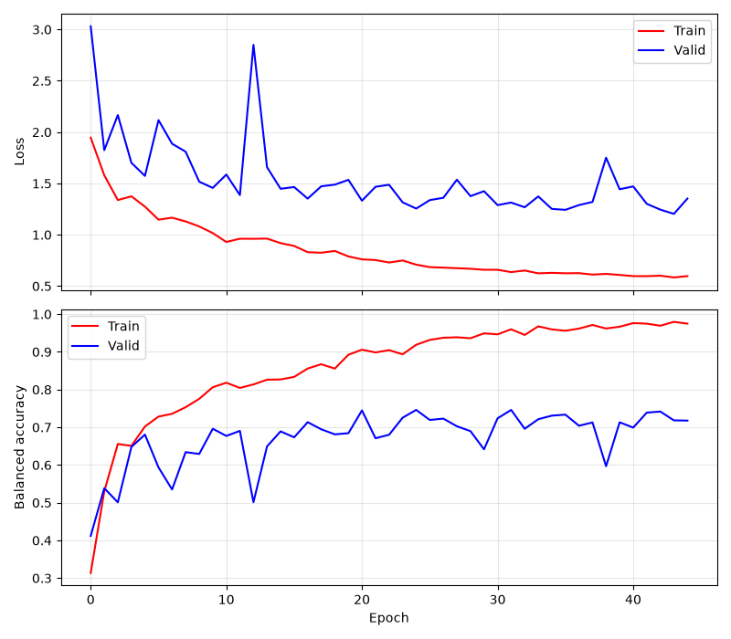
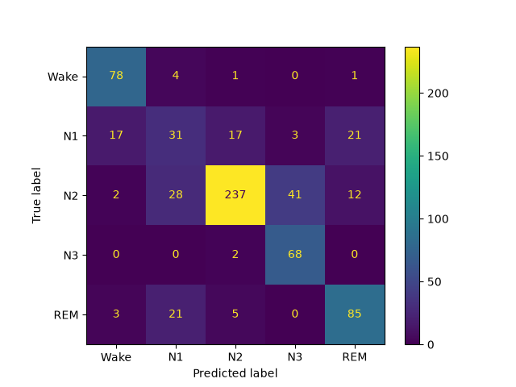
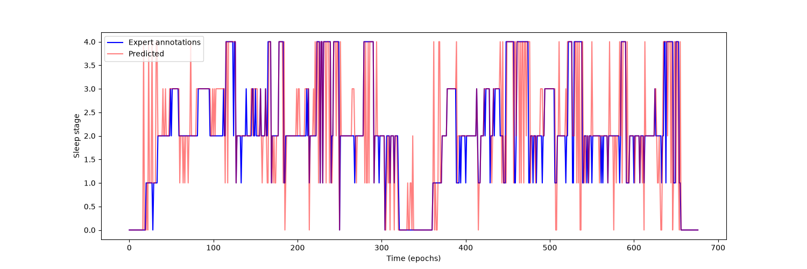

Note
Go to the end to download the full example code.
Sleep staging on the Sleep Physionet dataset using Eldele2021#
This tutorial shows how to train and test a sleep staging neural network with Braindecode. We use the attention-based model from [1] with the time distributed approach of [2] to learn on sequences of EEG windows using the openly accessible Sleep Physionet dataset [3] [4].
# Authors: Divyesh Narayanan <divyesh.narayanan@gmail.com>
#
# License: BSD (3-clause)
Loading and preprocessing the dataset#
Loading#
First, we load the data using the
braindecode.datasets.sleep_physionet.SleepPhysionet class. We load
six subjects with two recordings each. Subjects 0-3 are used for training
and subjects 4-5 for validation.
from numbers import Integral
from braindecode.datasets import SleepPhysionet
subject_ids = [0, 1, 2, 3, 4, 5]
train_subject_ids = [0, 1, 2, 3]
valid_subject_ids = [4, 5]
dataset = SleepPhysionet(
subject_ids=subject_ids, recording_ids=[1, 2], crop_wake_mins=30
)
Downloading data from 'https://physionet.org/physiobank/database/sleep-edfx/sleep-cassette//SC4002E0-PSG.edf' to file '/home/runner/mne_data/physionet-sleep-data/SC4002E0-PSG.edf'.
0%| | 0.00/51.6M [00:00<?, ?B/s]
0%| | 1.02k/51.6M [00:00<4:18:50, 3.32kB/s]
0%| | 9.22k/51.6M [00:00<35:44, 24.1kB/s]
0%| | 33.8k/51.6M [00:00<14:06, 61.0kB/s]
0%| | 42.0k/51.6M [00:00<16:54, 50.9kB/s]
0%| | 66.6k/51.6M [00:01<13:16, 64.7kB/s]
0%| | 74.8k/51.6M [00:01<12:59, 66.1kB/s]
0%| | 91.1k/51.6M [00:01<11:09, 77.0kB/s]
0%| | 108k/51.6M [00:01<12:20, 69.5kB/s]
0%| | 124k/51.6M [00:02<12:49, 66.9kB/s]
0%| | 140k/51.6M [00:02<11:02, 77.7kB/s]
0%| | 165k/51.6M [00:02<12:59, 66.0kB/s]
0%|▏ | 173k/51.6M [00:02<15:57, 53.7kB/s]
0%|▏ | 189k/51.6M [00:03<13:36, 63.0kB/s]
0%|▏ | 206k/51.6M [00:03<12:23, 69.1kB/s]
0%|▏ | 222k/51.6M [00:03<11:12, 76.4kB/s]
0%|▏ | 239k/51.6M [00:03<09:49, 87.1kB/s]
0%|▏ | 255k/51.6M [00:03<09:39, 88.6kB/s]
1%|▏ | 271k/51.6M [00:03<09:19, 91.7kB/s]
1%|▏ | 296k/51.6M [00:04<08:02, 106kB/s]
1%|▏ | 307k/51.6M [00:04<09:42, 88.1kB/s]
1%|▏ | 321k/51.6M [00:04<11:45, 72.7kB/s]
1%|▏ | 337k/51.6M [00:04<10:45, 79.4kB/s]
1%|▎ | 353k/51.6M [00:05<12:57, 65.9kB/s]
1%|▎ | 370k/51.6M [00:05<11:11, 76.3kB/s]
1%|▎ | 386k/51.6M [00:05<10:40, 80.0kB/s]
1%|▎ | 402k/51.6M [00:05<09:37, 88.6kB/s]
1%|▎ | 427k/51.6M [00:05<08:26, 101kB/s]
1%|▎ | 438k/51.6M [00:05<08:49, 96.6kB/s]
1%|▎ | 452k/51.6M [00:06<09:02, 94.3kB/s]
1%|▎ | 468k/51.6M [00:06<09:17, 91.8kB/s]
1%|▎ | 484k/51.6M [00:06<09:13, 92.4kB/s]
1%|▎ | 501k/51.6M [00:06<14:22, 59.2kB/s]
1%|▍ | 517k/51.6M [00:07<22:55, 37.2kB/s]
1%|▍ | 534k/51.6M [00:08<24:55, 34.2kB/s]
1%|▍ | 550k/51.6M [00:08<25:53, 32.9kB/s]
1%|▍ | 566k/51.6M [00:09<32:28, 26.2kB/s]
1%|▍ | 591k/51.6M [00:10<28:05, 30.3kB/s]
1%|▍ | 599k/51.6M [00:12<56:40, 15.0kB/s]
1%|▍ | 615k/51.6M [00:12<42:28, 20.0kB/s]
1%|▍ | 632k/51.6M [00:12<33:20, 25.5kB/s]
1%|▍ | 648k/51.6M [00:13<33:27, 25.4kB/s]
1%|▍ | 665k/51.6M [00:14<35:04, 24.2kB/s]
1%|▌ | 681k/51.6M [00:14<28:10, 30.1kB/s]
1%|▌ | 697k/51.6M [00:14<24:32, 34.6kB/s]
1%|▌ | 722k/51.6M [00:15<18:06, 46.8kB/s]
1%|▌ | 730k/51.6M [00:15<18:32, 45.8kB/s]
1%|▌ | 746k/51.6M [00:15<15:26, 54.9kB/s]
1%|▌ | 763k/51.6M [00:15<13:05, 64.8kB/s]
2%|▌ | 779k/51.6M [00:15<12:36, 67.2kB/s]
2%|▌ | 796k/51.6M [00:15<11:45, 72.1kB/s]
2%|▌ | 812k/51.6M [00:16<11:36, 72.9kB/s]
2%|▌ | 828k/51.6M [00:17<23:23, 36.2kB/s]
2%|▋ | 853k/51.6M [00:17<20:55, 40.5kB/s]
2%|▋ | 861k/51.6M [00:17<21:14, 39.8kB/s]
2%|▋ | 878k/51.6M [00:19<34:59, 24.2kB/s]
2%|▋ | 894k/51.6M [00:19<27:34, 30.7kB/s]
2%|▋ | 910k/51.6M [00:20<30:32, 27.7kB/s]
2%|▋ | 927k/51.6M [00:20<25:03, 33.7kB/s]
2%|▋ | 943k/51.6M [00:20<20:23, 41.4kB/s]
2%|▋ | 959k/51.6M [00:20<18:14, 46.3kB/s]
2%|▋ | 976k/51.6M [00:21<18:02, 46.8kB/s]
2%|▋ | 992k/51.6M [00:21<17:01, 49.6kB/s]
2%|▋ | 1.02M/51.6M [00:21<12:34, 67.1kB/s]
2%|▋ | 1.03M/51.6M [00:21<13:21, 63.2kB/s]
2%|▋ | 1.04M/51.6M [00:21<13:06, 64.3kB/s]
2%|▊ | 1.06M/51.6M [00:22<12:13, 68.9kB/s]
2%|▊ | 1.07M/51.6M [00:22<10:39, 79.0kB/s]
2%|▊ | 1.09M/51.6M [00:22<10:07, 83.2kB/s]
2%|▊ | 1.11M/51.6M [00:22<10:43, 78.5kB/s]
2%|▊ | 1.12M/51.6M [00:22<10:15, 82.1kB/s]
2%|▊ | 1.15M/51.6M [00:23<08:59, 93.6kB/s]
2%|▊ | 1.16M/51.6M [00:23<17:04, 49.3kB/s]
2%|▊ | 1.17M/51.6M [00:24<31:07, 27.0kB/s]
2%|▊ | 1.19M/51.6M [00:25<25:45, 32.6kB/s]
2%|▊ | 1.21M/51.6M [00:25<26:05, 32.2kB/s]
2%|▉ | 1.22M/51.6M [00:25<22:53, 36.7kB/s]
2%|▉ | 1.24M/51.6M [00:26<24:11, 34.7kB/s]
2%|▉ | 1.25M/51.6M [00:26<19:42, 42.6kB/s]
2%|▉ | 1.28M/51.6M [00:26<13:31, 62.0kB/s]
2%|▉ | 1.29M/51.6M [00:27<14:15, 58.9kB/s]
3%|▉ | 1.30M/51.6M [00:27<13:34, 61.8kB/s]
3%|▉ | 1.32M/51.6M [00:27<12:10, 68.8kB/s]
3%|▉ | 1.34M/51.6M [00:27<11:02, 75.9kB/s]
3%|▉ | 1.35M/51.6M [00:27<09:59, 83.9kB/s]
3%|▉ | 1.37M/51.6M [00:27<10:34, 79.2kB/s]
3%|▉ | 1.39M/51.6M [00:28<20:59, 39.9kB/s]
3%|█ | 1.40M/51.6M [00:29<19:26, 43.0kB/s]
3%|█ | 1.42M/51.6M [00:29<16:18, 51.3kB/s]
3%|█ | 1.44M/51.6M [00:29<12:31, 66.7kB/s]
3%|█ | 1.45M/51.6M [00:29<13:08, 63.6kB/s]
3%|█ | 1.47M/51.6M [00:29<11:48, 70.8kB/s]
3%|█ | 1.48M/51.6M [00:30<10:40, 78.2kB/s]
3%|█ | 1.50M/51.6M [00:30<09:45, 85.7kB/s]
3%|█ | 1.52M/51.6M [00:30<09:40, 86.4kB/s]
3%|█ | 1.53M/51.6M [00:30<08:53, 93.8kB/s]
3%|█ | 1.55M/51.6M [00:30<09:35, 87.1kB/s]
3%|█▏ | 1.57M/51.6M [00:30<07:38, 109kB/s]
3%|█▏ | 1.59M/51.6M [00:31<10:00, 83.4kB/s]
3%|█▏ | 1.60M/51.6M [00:31<10:56, 76.2kB/s]
3%|█▏ | 1.61M/51.6M [00:31<10:45, 77.5kB/s]
3%|█▏ | 1.63M/51.6M [00:31<09:53, 84.2kB/s]
3%|█▏ | 1.65M/51.6M [00:31<10:40, 78.0kB/s]
3%|█▏ | 1.66M/51.6M [00:32<10:55, 76.3kB/s]
3%|█▏ | 1.68M/51.6M [00:33<25:31, 32.6kB/s]
3%|█▏ | 1.70M/51.6M [00:34<24:41, 33.7kB/s]
3%|█▏ | 1.71M/51.6M [00:34<27:34, 30.2kB/s]
3%|█▏ | 1.73M/51.6M [00:35<39:47, 20.9kB/s]
3%|█▎ | 1.75M/51.6M [00:36<36:18, 22.9kB/s]
3%|█▎ | 1.76M/51.6M [00:36<31:02, 26.8kB/s]
3%|█▎ | 1.78M/51.6M [00:36<23:53, 34.8kB/s]
3%|█▎ | 1.80M/51.6M [00:37<19:24, 42.8kB/s]
4%|█▎ | 1.81M/51.6M [00:37<20:49, 39.9kB/s]
4%|█▎ | 1.84M/51.6M [00:37<15:25, 53.8kB/s]
4%|█▎ | 1.84M/51.6M [00:37<15:23, 53.9kB/s]
4%|█▎ | 1.86M/51.6M [00:38<15:33, 53.3kB/s]
4%|█▎ | 1.88M/51.6M [00:38<13:52, 59.8kB/s]
4%|█▎ | 1.89M/51.6M [00:38<19:04, 43.5kB/s]
4%|█▎ | 1.91M/51.6M [00:39<18:00, 46.0kB/s]
4%|█▍ | 1.93M/51.6M [00:39<14:25, 57.4kB/s]
4%|█▍ | 1.94M/51.6M [00:39<13:35, 60.9kB/s]
4%|█▍ | 1.96M/51.6M [00:39<13:02, 63.5kB/s]
4%|█▍ | 1.98M/51.6M [00:40<15:27, 53.6kB/s]
4%|█▍ | 2.00M/51.6M [00:40<13:56, 59.3kB/s]
4%|█▍ | 2.01M/51.6M [00:40<15:17, 54.1kB/s]
4%|█▍ | 2.02M/51.6M [00:41<13:48, 59.9kB/s]
4%|█▍ | 2.04M/51.6M [00:41<11:49, 69.9kB/s]
4%|█▍ | 2.06M/51.6M [00:41<12:18, 67.1kB/s]
4%|█▍ | 2.07M/51.6M [00:41<12:40, 65.1kB/s]
4%|█▍ | 2.09M/51.6M [00:41<11:54, 69.3kB/s]
4%|█▌ | 2.11M/51.6M [00:42<11:00, 74.9kB/s]
4%|█▌ | 2.13M/51.6M [00:42<10:23, 79.4kB/s]
4%|█▌ | 2.14M/51.6M [00:42<11:34, 71.3kB/s]
4%|█▌ | 2.16M/51.6M [00:42<10:15, 80.4kB/s]
4%|█▌ | 2.17M/51.6M [00:42<10:16, 80.1kB/s]
4%|█▌ | 2.19M/51.6M [00:43<08:52, 92.9kB/s]
4%|█▌ | 2.20M/51.6M [00:43<09:57, 82.8kB/s]
4%|█▌ | 2.22M/51.6M [00:43<08:51, 92.9kB/s]
4%|█▋ | 2.24M/51.6M [00:43<07:43, 106kB/s]
4%|█▋ | 2.26M/51.6M [00:43<06:48, 121kB/s]
4%|█▋ | 2.28M/51.6M [00:43<08:07, 101kB/s]
4%|█▋ | 2.29M/51.6M [00:44<08:37, 95.3kB/s]
4%|█▋ | 2.30M/51.6M [00:44<09:25, 87.2kB/s]
4%|█▋ | 2.32M/51.6M [00:44<08:39, 94.8kB/s]
5%|█▋ | 2.34M/51.6M [00:44<08:35, 95.6kB/s]
5%|█▋ | 2.35M/51.6M [00:44<08:50, 92.8kB/s]
5%|█▋ | 2.37M/51.6M [00:44<08:29, 96.7kB/s]
5%|█▋ | 2.38M/51.6M [00:45<08:25, 97.4kB/s]
5%|█▊ | 2.40M/51.6M [00:45<08:09, 101kB/s]
5%|█▊ | 2.43M/51.6M [00:45<07:22, 111kB/s]
5%|█▋ | 2.44M/51.6M [00:45<08:46, 93.4kB/s]
5%|█▊ | 2.45M/51.6M [00:45<08:46, 93.4kB/s]
5%|█▊ | 2.47M/51.6M [00:45<08:49, 92.9kB/s]
5%|█▊ | 2.48M/51.6M [00:46<08:03, 102kB/s]
5%|█▊ | 2.50M/51.6M [00:46<09:20, 87.6kB/s]
5%|█▊ | 2.52M/51.6M [00:46<09:15, 88.4kB/s]
5%|█▊ | 2.53M/51.6M [00:46<10:24, 78.6kB/s]
5%|█▊ | 2.56M/51.6M [00:47<09:54, 82.6kB/s]
5%|█▊ | 2.57M/51.6M [00:47<11:35, 70.5kB/s]
5%|█▊ | 2.58M/51.6M [00:47<12:11, 67.0kB/s]
5%|█▊ | 2.60M/51.6M [00:47<12:12, 66.9kB/s]
5%|█▊ | 2.61M/51.6M [00:47<11:34, 70.5kB/s]
5%|█▉ | 2.63M/51.6M [00:48<12:47, 63.8kB/s]
5%|█▉ | 2.65M/51.6M [00:48<11:23, 71.7kB/s]
5%|█▉ | 2.66M/51.6M [00:48<11:16, 72.3kB/s]
5%|█▉ | 2.69M/51.6M [00:48<09:33, 85.3kB/s]
5%|█▉ | 2.70M/51.6M [00:51<41:51, 19.5kB/s]
5%|█▉ | 2.71M/51.6M [00:51<38:31, 21.2kB/s]
5%|█▉ | 2.73M/51.6M [00:52<36:55, 22.1kB/s]
5%|█▉ | 2.75M/51.6M [00:52<32:17, 25.2kB/s]
5%|█▉ | 2.76M/51.6M [00:53<26:34, 30.6kB/s]
5%|█▉ | 2.78M/51.6M [00:53<24:24, 33.3kB/s]
5%|██ | 2.79M/51.6M [00:53<19:16, 42.2kB/s]
5%|██ | 2.82M/51.6M [00:53<13:57, 58.2kB/s]
5%|██ | 2.83M/51.6M [00:54<17:32, 46.3kB/s]
6%|██ | 2.84M/51.6M [00:54<24:45, 32.8kB/s]
6%|██ | 2.86M/51.6M [00:55<22:21, 36.3kB/s]
6%|██ | 2.88M/51.6M [00:55<18:56, 42.9kB/s]
6%|██ | 2.89M/51.6M [00:55<17:06, 47.5kB/s]
6%|██ | 2.91M/51.6M [00:55<14:21, 56.6kB/s]
6%|██ | 2.93M/51.6M [00:56<12:46, 63.5kB/s]
6%|██ | 2.94M/51.6M [00:56<11:21, 71.4kB/s]
6%|██ | 2.96M/51.6M [00:56<11:21, 71.4kB/s]
6%|██▏ | 2.98M/51.6M [00:57<14:59, 54.1kB/s]
6%|██▏ | 2.99M/51.6M [00:57<20:21, 39.8kB/s]
6%|██▏ | 3.01M/51.6M [00:57<17:37, 46.0kB/s]
6%|██▏ | 3.02M/51.6M [00:58<14:40, 55.2kB/s]
6%|██▏ | 3.04M/51.6M [00:58<14:37, 55.4kB/s]
6%|██▏ | 3.06M/51.6M [00:58<13:28, 60.1kB/s]
6%|██▏ | 3.07M/51.6M [00:58<13:17, 60.9kB/s]
6%|██▏ | 3.09M/51.6M [00:59<12:36, 64.1kB/s]
6%|██▏ | 3.11M/51.6M [00:59<09:17, 87.1kB/s]
6%|██▏ | 3.13M/51.6M [00:59<10:28, 77.1kB/s]
6%|██▏ | 3.14M/51.6M [01:00<26:22, 30.6kB/s]
6%|██▎ | 3.15M/51.6M [01:01<32:44, 24.7kB/s]
6%|██▎ | 3.17M/51.6M [01:01<27:19, 29.5kB/s]
6%|██▎ | 3.19M/51.6M [01:02<27:24, 29.5kB/s]
6%|██▎ | 3.20M/51.6M [01:02<28:18, 28.5kB/s]
6%|██▎ | 3.22M/51.6M [01:03<24:24, 33.0kB/s]
6%|██▎ | 3.25M/51.6M [01:03<21:44, 37.1kB/s]
6%|██▎ | 3.25M/51.6M [01:04<29:14, 27.6kB/s]
6%|██▎ | 3.27M/51.6M [01:04<27:24, 29.4kB/s]
6%|██▎ | 3.29M/51.6M [01:06<37:51, 21.3kB/s]
6%|██▎ | 3.30M/51.6M [01:06<30:48, 26.1kB/s]
6%|██▍ | 3.32M/51.6M [01:06<26:02, 30.9kB/s]
6%|██▍ | 3.34M/51.6M [01:07<21:15, 37.9kB/s]
6%|██▍ | 3.35M/51.6M [01:07<17:46, 45.2kB/s]
7%|██▍ | 3.37M/51.6M [01:07<14:14, 56.5kB/s]
7%|██▍ | 3.38M/51.6M [01:07<14:06, 57.0kB/s]
7%|██▍ | 3.41M/51.6M [01:08<12:55, 62.1kB/s]
7%|██▍ | 3.42M/51.6M [01:08<13:55, 57.7kB/s]
7%|██▍ | 3.43M/51.6M [01:08<11:59, 66.9kB/s]
7%|██▍ | 3.45M/51.6M [01:08<10:54, 73.6kB/s]
7%|██▍ | 3.47M/51.6M [01:08<11:43, 68.5kB/s]
7%|██▍ | 3.48M/51.6M [01:09<11:47, 68.1kB/s]
7%|██▌ | 3.50M/51.6M [01:09<17:13, 46.6kB/s]
7%|██▌ | 3.52M/51.6M [01:09<15:55, 50.3kB/s]
7%|██▌ | 3.54M/51.6M [01:10<12:42, 63.0kB/s]
7%|██▌ | 3.55M/51.6M [01:10<19:18, 41.5kB/s]
7%|██▌ | 3.56M/51.6M [01:10<16:53, 47.4kB/s]
7%|██▌ | 3.58M/51.6M [01:11<16:03, 49.8kB/s]
7%|██▌ | 3.60M/51.6M [01:11<18:18, 43.7kB/s]
7%|██▌ | 3.61M/51.6M [01:12<27:10, 29.5kB/s]
7%|██▌ | 3.63M/51.6M [01:14<38:43, 20.7kB/s]
7%|██▌ | 3.65M/51.6M [01:15<42:47, 18.7kB/s]
7%|██▋ | 3.67M/51.6M [01:16<37:47, 21.1kB/s]
7%|██▋ | 3.68M/51.6M [01:17<51:47, 15.4kB/s]
7%|██▋ | 3.70M/51.6M [01:17<40:47, 19.6kB/s]
7%|██▋ | 3.71M/51.6M [01:18<40:14, 19.8kB/s]
7%|██▋ | 3.73M/51.6M [01:18<35:21, 22.6kB/s]
7%|██▋ | 3.74M/51.6M [01:19<28:20, 28.2kB/s]
7%|██▋ | 3.76M/51.6M [01:19<22:29, 35.5kB/s]
7%|██▋ | 3.78M/51.6M [01:19<19:08, 41.7kB/s]
7%|██▋ | 3.80M/51.6M [01:19<13:51, 57.5kB/s]
7%|██▋ | 3.81M/51.6M [01:20<14:29, 55.0kB/s]
7%|██▋ | 3.83M/51.6M [01:20<13:16, 60.0kB/s]
7%|██▊ | 3.84M/51.6M [01:20<12:31, 63.6kB/s]
7%|██▊ | 3.86M/51.6M [01:20<12:29, 63.7kB/s]
8%|██▊ | 3.88M/51.6M [01:21<14:09, 56.2kB/s]
8%|██▊ | 3.89M/51.6M [01:21<20:50, 38.2kB/s]
8%|██▊ | 3.91M/51.6M [01:22<24:38, 32.3kB/s]
8%|██▊ | 3.92M/51.6M [01:22<24:15, 32.8kB/s]
8%|██▊ | 3.94M/51.6M [01:23<25:05, 31.7kB/s]
8%|██▊ | 3.97M/51.6M [01:23<18:58, 41.8kB/s]
8%|██▊ | 3.97M/51.6M [01:24<19:05, 41.6kB/s]
8%|██▊ | 3.99M/51.6M [01:24<15:03, 52.7kB/s]
8%|██▊ | 4.01M/51.6M [01:24<14:24, 55.1kB/s]
8%|██▉ | 4.02M/51.6M [01:24<12:33, 63.2kB/s]
8%|██▉ | 4.04M/51.6M [01:24<11:00, 72.0kB/s]
8%|██▉ | 4.06M/51.6M [01:24<10:15, 77.2kB/s]
8%|██▉ | 4.07M/51.6M [01:25<09:09, 86.6kB/s]
8%|██▉ | 4.10M/51.6M [01:25<08:39, 91.5kB/s]
8%|██▉ | 4.11M/51.6M [01:25<10:23, 76.2kB/s]
8%|██▉ | 4.12M/51.6M [01:25<10:32, 75.1kB/s]
8%|██▉ | 4.14M/51.6M [01:25<10:23, 76.2kB/s]
8%|██▉ | 4.15M/51.6M [01:26<09:49, 80.5kB/s]
8%|██▉ | 4.17M/51.6M [01:26<09:53, 79.9kB/s]
8%|███ | 4.19M/51.6M [01:26<09:19, 84.8kB/s]
8%|███ | 4.20M/51.6M [01:26<08:43, 90.6kB/s]
8%|███ | 4.23M/51.6M [01:26<07:55, 99.7kB/s]
8%|███ | 4.24M/51.6M [01:27<08:29, 93.0kB/s]
8%|███ | 4.25M/51.6M [01:27<09:00, 87.6kB/s]
8%|███ | 4.27M/51.6M [01:27<09:03, 87.2kB/s]
8%|███ | 4.29M/51.6M [01:27<08:39, 91.0kB/s]
8%|███ | 4.30M/51.6M [01:27<09:23, 84.0kB/s]
8%|███ | 4.32M/51.6M [01:27<09:16, 85.0kB/s]
8%|███ | 4.33M/51.6M [01:28<08:19, 94.6kB/s]
8%|███ | 4.35M/51.6M [01:28<09:39, 81.6kB/s]
8%|███▏ | 4.37M/51.6M [01:30<33:01, 23.9kB/s]
9%|███▏ | 4.39M/51.6M [01:30<23:30, 33.5kB/s]
9%|███▏ | 4.40M/51.6M [01:30<25:54, 30.4kB/s]
9%|███▏ | 4.42M/51.6M [01:31<22:43, 34.6kB/s]
9%|███▏ | 4.43M/51.6M [01:31<17:56, 43.9kB/s]
9%|███▏ | 4.45M/51.6M [01:31<20:05, 39.1kB/s]
9%|███▏ | 4.47M/51.6M [01:32<17:46, 44.2kB/s]
9%|███▏ | 4.48M/51.6M [01:32<15:45, 49.9kB/s]
9%|███▏ | 4.50M/51.6M [01:32<14:37, 53.7kB/s]
9%|███▏ | 4.52M/51.6M [01:33<15:23, 51.0kB/s]
9%|███▏ | 4.53M/51.6M [01:34<36:32, 21.5kB/s]
9%|███▎ | 4.55M/51.6M [01:34<29:02, 27.0kB/s]
9%|███▎ | 4.56M/51.6M [01:35<25:15, 31.0kB/s]
9%|███▎ | 4.58M/51.6M [01:35<20:06, 39.0kB/s]
9%|███▎ | 4.60M/51.6M [01:35<16:22, 47.9kB/s]
9%|███▎ | 4.61M/51.6M [01:35<15:01, 52.2kB/s]
9%|███▎ | 4.63M/51.6M [01:36<13:10, 59.5kB/s]
9%|███▎ | 4.65M/51.6M [01:36<10:32, 74.3kB/s]
9%|███▎ | 4.66M/51.6M [01:36<11:00, 71.1kB/s]
9%|███▎ | 4.68M/51.6M [01:36<10:32, 74.2kB/s]
9%|███▎ | 4.70M/51.6M [01:37<13:15, 59.0kB/s]
9%|███▍ | 4.71M/51.6M [01:37<16:25, 47.6kB/s]
9%|███▍ | 4.73M/51.6M [01:37<17:43, 44.1kB/s]
9%|███▍ | 4.74M/51.6M [01:38<16:16, 48.0kB/s]
9%|███▍ | 4.76M/51.6M [01:38<17:34, 44.4kB/s]
9%|███▍ | 4.79M/51.6M [01:38<13:16, 58.8kB/s]
9%|███▍ | 4.79M/51.6M [01:40<30:11, 25.9kB/s]
9%|███▍ | 4.81M/51.6M [01:40<28:26, 27.4kB/s]
9%|███▍ | 4.83M/51.6M [01:41<25:00, 31.2kB/s]
9%|███▍ | 4.84M/51.6M [01:41<22:27, 34.7kB/s]
9%|███▍ | 4.86M/51.6M [01:41<19:38, 39.7kB/s]
9%|███▍ | 4.88M/51.6M [01:41<17:37, 44.2kB/s]
9%|███▌ | 4.89M/51.6M [01:42<17:38, 44.1kB/s]
10%|███▌ | 4.91M/51.6M [01:42<19:06, 40.7kB/s]
10%|███▌ | 4.92M/51.6M [01:43<16:58, 45.9kB/s]
10%|███▌ | 4.95M/51.6M [01:43<17:04, 45.5kB/s]
10%|███▌ | 4.96M/51.6M [01:43<20:41, 37.6kB/s]
10%|███▌ | 4.97M/51.6M [01:44<17:42, 43.9kB/s]
10%|███▌ | 4.99M/51.6M [01:44<19:51, 39.1kB/s]
10%|███▌ | 5.01M/51.6M [01:45<26:25, 29.4kB/s]
10%|███▌ | 5.02M/51.6M [01:46<27:56, 27.8kB/s]
10%|███▌ | 5.04M/51.6M [01:48<48:49, 15.9kB/s]
10%|███▍ | 5.06M/51.6M [01:50<1:00:36, 12.8kB/s]
10%|███▋ | 5.08M/51.6M [01:50<38:31, 20.1kB/s]
10%|███▋ | 5.09M/51.6M [01:50<40:00, 19.4kB/s]
10%|███▋ | 5.10M/51.6M [01:51<36:11, 21.4kB/s]
10%|███▋ | 5.12M/51.6M [01:51<29:46, 26.0kB/s]
10%|███▋ | 5.14M/51.6M [01:52<24:45, 31.3kB/s]
10%|███▋ | 5.15M/51.6M [01:52<24:22, 31.8kB/s]
10%|███▋ | 5.17M/51.6M [01:52<20:23, 38.0kB/s]
10%|███▋ | 5.19M/51.6M [01:52<17:26, 44.4kB/s]
10%|███▋ | 5.21M/51.6M [01:54<30:32, 25.3kB/s]
10%|███▋ | 5.22M/51.6M [01:54<29:52, 25.9kB/s]
10%|███▊ | 5.24M/51.6M [01:55<24:12, 31.9kB/s]
10%|███▊ | 5.25M/51.6M [01:55<21:14, 36.4kB/s]
10%|███▊ | 5.27M/51.6M [01:55<16:44, 46.1kB/s]
10%|███▊ | 5.28M/51.6M [01:55<15:25, 50.1kB/s]
10%|███▊ | 5.30M/51.6M [01:56<15:08, 51.0kB/s]
10%|███▊ | 5.32M/51.6M [01:56<14:06, 54.7kB/s]
10%|███▊ | 5.33M/51.6M [01:56<12:40, 60.9kB/s]
10%|███▊ | 5.35M/51.6M [01:56<14:43, 52.4kB/s]
10%|███▊ | 5.37M/51.6M [01:57<20:32, 37.5kB/s]
10%|███▊ | 5.38M/51.6M [01:58<20:48, 37.0kB/s]
10%|███▊ | 5.40M/51.6M [01:58<17:21, 44.4kB/s]
10%|███▉ | 5.42M/51.6M [01:58<15:40, 49.1kB/s]
11%|███▉ | 5.43M/51.6M [01:58<13:37, 56.5kB/s]
11%|███▉ | 5.45M/51.6M [01:59<16:28, 46.7kB/s]
11%|███▉ | 5.47M/51.6M [01:59<16:23, 46.9kB/s]
11%|███▉ | 5.48M/51.6M [01:59<14:59, 51.3kB/s]
11%|███▉ | 5.51M/51.6M [02:00<13:16, 57.9kB/s]
11%|███▉ | 5.51M/51.6M [02:00<13:59, 54.9kB/s]
11%|███▉ | 5.53M/51.6M [02:00<13:12, 58.1kB/s]
11%|███▉ | 5.55M/51.6M [02:00<11:48, 65.0kB/s]
11%|███▉ | 5.56M/51.6M [02:01<10:19, 74.4kB/s]
11%|███▉ | 5.58M/51.6M [02:01<10:54, 70.3kB/s]
11%|████ | 5.60M/51.6M [02:01<10:39, 71.9kB/s]
11%|████ | 5.61M/51.6M [02:01<10:52, 70.5kB/s]
11%|████ | 5.64M/51.6M [02:01<08:49, 86.9kB/s]
11%|████ | 5.65M/51.6M [02:02<18:19, 41.8kB/s]
11%|████ | 5.66M/51.6M [02:02<16:53, 45.3kB/s]
11%|████ | 5.68M/51.6M [02:03<13:58, 54.8kB/s]
11%|████ | 5.69M/51.6M [02:03<14:23, 53.2kB/s]
11%|████ | 5.71M/51.6M [02:03<12:30, 61.2kB/s]
11%|████ | 5.73M/51.6M [02:03<11:46, 65.0kB/s]
11%|████ | 5.74M/51.6M [02:04<11:08, 68.6kB/s]
11%|████▏ | 5.77M/51.6M [02:04<10:01, 76.3kB/s]
11%|████▏ | 5.78M/51.6M [02:04<13:55, 54.9kB/s]
11%|████▏ | 5.79M/51.6M [02:05<20:04, 38.1kB/s]
11%|████▏ | 5.81M/51.6M [02:05<16:21, 46.7kB/s]
11%|████▏ | 5.83M/51.6M [02:05<14:01, 54.4kB/s]
11%|████▏ | 5.84M/51.6M [02:05<12:08, 62.8kB/s]
11%|████▏ | 5.86M/51.6M [02:06<10:37, 71.7kB/s]
11%|████▏ | 5.87M/51.6M [02:06<09:43, 78.4kB/s]
11%|████▏ | 5.89M/51.6M [02:06<15:27, 49.3kB/s]
11%|████▏ | 5.91M/51.6M [02:07<14:51, 51.3kB/s]
11%|████▎ | 5.93M/51.6M [02:07<13:56, 54.6kB/s]
12%|████▎ | 5.94M/51.6M [02:07<16:37, 45.8kB/s]
12%|████▎ | 5.96M/51.6M [02:08<19:37, 38.8kB/s]
12%|████▎ | 5.97M/51.6M [02:09<25:29, 29.8kB/s]
12%|████▎ | 5.99M/51.6M [02:09<25:19, 30.0kB/s]
12%|████▎ | 6.01M/51.6M [02:10<28:41, 26.5kB/s]
12%|████▎ | 6.02M/51.6M [02:10<25:17, 30.1kB/s]
12%|████▎ | 6.04M/51.6M [02:11<20:36, 36.9kB/s]
12%|████▎ | 6.06M/51.6M [02:11<16:33, 45.8kB/s]
12%|████▎ | 6.07M/51.6M [02:11<17:38, 43.0kB/s]
12%|████▎ | 6.09M/51.6M [02:12<15:47, 48.1kB/s]
12%|████▍ | 6.10M/51.6M [02:12<14:06, 53.8kB/s]
12%|████▍ | 6.12M/51.6M [02:12<13:33, 55.9kB/s]
12%|████▍ | 6.14M/51.6M [02:14<30:48, 24.6kB/s]
12%|████▍ | 6.15M/51.6M [02:14<27:10, 27.9kB/s]
12%|████▍ | 6.17M/51.6M [02:14<24:53, 30.4kB/s]
12%|████▍ | 6.19M/51.6M [02:15<20:01, 37.8kB/s]
12%|████▍ | 6.20M/51.6M [02:15<24:24, 31.0kB/s]
12%|████▍ | 6.22M/51.6M [02:16<25:03, 30.2kB/s]
12%|████▍ | 6.24M/51.6M [02:16<25:37, 29.5kB/s]
12%|████▍ | 6.25M/51.6M [02:17<22:29, 33.6kB/s]
12%|████▍ | 6.27M/51.6M [02:17<18:50, 40.1kB/s]
12%|████▌ | 6.28M/51.6M [02:17<15:14, 49.6kB/s]
12%|████▌ | 6.30M/51.6M [02:18<20:03, 37.6kB/s]
12%|████▌ | 6.32M/51.6M [02:18<22:27, 33.6kB/s]
12%|████▌ | 6.33M/51.6M [02:19<22:23, 33.7kB/s]
12%|████▌ | 6.36M/51.6M [02:20<21:15, 35.5kB/s]
12%|████▌ | 6.37M/51.6M [02:20<25:01, 30.1kB/s]
12%|████▌ | 6.38M/51.6M [02:20<21:20, 35.3kB/s]
12%|████▌ | 6.40M/51.6M [02:21<18:17, 41.2kB/s]
12%|████▌ | 6.42M/51.6M [02:21<18:28, 40.8kB/s]
12%|████▌ | 6.43M/51.6M [02:22<27:05, 27.8kB/s]
12%|████▌ | 6.45M/51.6M [02:23<29:15, 25.7kB/s]
13%|████▋ | 6.46M/51.6M [02:23<24:25, 30.8kB/s]
13%|████▋ | 6.49M/51.6M [02:23<18:40, 40.3kB/s]
13%|████▋ | 6.50M/51.6M [02:24<21:45, 34.6kB/s]
13%|████▋ | 6.51M/51.6M [02:24<19:11, 39.2kB/s]
13%|████▋ | 6.53M/51.6M [02:24<18:14, 41.2kB/s]
13%|████▋ | 6.55M/51.6M [02:25<16:26, 45.7kB/s]
13%|████▋ | 6.56M/51.6M [02:25<20:26, 36.8kB/s]
13%|████▋ | 6.58M/51.6M [02:26<17:01, 44.1kB/s]
13%|████▋ | 6.60M/51.6M [02:26<15:01, 49.9kB/s]
13%|████▋ | 6.62M/51.6M [02:26<13:09, 57.0kB/s]
13%|████▊ | 6.63M/51.6M [02:26<15:30, 48.4kB/s]
13%|████▊ | 6.64M/51.6M [02:27<21:15, 35.3kB/s]
13%|████▊ | 6.66M/51.6M [02:28<22:59, 32.6kB/s]
13%|████▊ | 6.68M/51.6M [02:29<26:09, 28.6kB/s]
13%|████▊ | 6.69M/51.6M [02:29<23:17, 32.2kB/s]
13%|████▊ | 6.71M/51.6M [02:29<21:33, 34.7kB/s]
13%|████▊ | 6.73M/51.6M [02:29<17:58, 41.6kB/s]
13%|████▊ | 6.75M/51.6M [02:30<12:45, 58.6kB/s]
13%|████▊ | 6.76M/51.6M [02:30<12:39, 59.1kB/s]
13%|████▊ | 6.78M/51.6M [02:30<11:28, 65.1kB/s]
13%|████▊ | 6.79M/51.6M [02:30<09:55, 75.3kB/s]
13%|████▉ | 6.81M/51.6M [02:30<09:24, 79.4kB/s]
13%|████▉ | 6.82M/51.6M [02:30<09:40, 77.1kB/s]
13%|████▉ | 6.84M/51.6M [02:31<09:48, 76.1kB/s]
13%|████▉ | 6.86M/51.6M [02:31<08:14, 90.6kB/s]
13%|████▉ | 6.87M/51.6M [02:31<08:21, 89.3kB/s]
13%|████▉ | 6.89M/51.6M [02:31<09:22, 79.5kB/s]
13%|████▉ | 6.92M/51.6M [02:32<08:51, 84.2kB/s]
13%|████▉ | 6.92M/51.6M [02:32<11:07, 66.9kB/s]
13%|████▉ | 6.94M/51.6M [02:32<10:01, 74.2kB/s]
13%|████▉ | 6.96M/51.6M [02:32<09:15, 80.3kB/s]
14%|████▉ | 6.97M/51.6M [02:32<08:44, 85.2kB/s]
14%|█████ | 6.99M/51.6M [02:33<12:51, 57.8kB/s]
14%|█████ | 7.01M/51.6M [02:35<37:45, 19.7kB/s]
14%|█████ | 7.02M/51.6M [02:35<29:35, 25.1kB/s]
14%|█████ | 7.05M/51.6M [02:35<21:38, 34.3kB/s]
14%|█████ | 7.05M/51.6M [02:36<33:22, 22.3kB/s]
14%|█████ | 7.07M/51.6M [02:37<30:11, 24.6kB/s]
14%|█████ | 7.09M/51.6M [02:37<27:27, 27.0kB/s]
14%|█████ | 7.10M/51.6M [02:38<22:06, 33.6kB/s]
14%|█████ | 7.12M/51.6M [02:38<18:07, 40.9kB/s]
14%|█████ | 7.14M/51.6M [02:38<14:55, 49.7kB/s]
14%|█████▏ | 7.15M/51.6M [02:38<12:20, 60.1kB/s]
14%|█████▏ | 7.18M/51.6M [02:38<09:34, 77.4kB/s]
14%|█████▏ | 7.19M/51.6M [02:39<09:50, 75.2kB/s]
14%|█████▏ | 7.20M/51.6M [02:39<09:47, 75.6kB/s]
14%|█████▏ | 7.22M/51.6M [02:39<08:33, 86.5kB/s]
14%|█████▏ | 7.23M/51.6M [02:39<10:33, 70.1kB/s]
14%|█████▏ | 7.25M/51.6M [02:39<09:55, 74.5kB/s]
14%|█████▏ | 7.27M/51.6M [02:40<09:19, 79.3kB/s]
14%|█████▏ | 7.28M/51.6M [02:40<09:55, 74.5kB/s]
14%|█████▏ | 7.30M/51.6M [02:40<15:44, 46.9kB/s]
14%|█████▏ | 7.32M/51.6M [02:42<27:42, 26.7kB/s]
14%|█████▎ | 7.34M/51.6M [02:43<28:09, 26.2kB/s]
14%|████▉ | 7.35M/51.6M [02:46<1:10:28, 10.5kB/s]
14%|█████▎ | 7.37M/51.6M [02:46<51:02, 14.4kB/s]
14%|█████▎ | 7.38M/51.6M [02:46<39:08, 18.8kB/s]
14%|█████▎ | 7.40M/51.6M [02:47<32:36, 22.6kB/s]
14%|█████▎ | 7.41M/51.6M [02:47<27:41, 26.6kB/s]
14%|█████▎ | 7.43M/51.6M [02:48<26:36, 27.7kB/s]
14%|█████▎ | 7.45M/51.6M [02:49<33:38, 21.9kB/s]
14%|█████▎ | 7.47M/51.6M [02:50<33:48, 21.8kB/s]
14%|█████▎ | 7.48M/51.6M [02:51<50:31, 14.6kB/s]
15%|█████▎ | 7.50M/51.6M [02:52<40:09, 18.3kB/s]
15%|█████▍ | 7.51M/51.6M [02:52<30:24, 24.2kB/s]
15%|█████▍ | 7.53M/51.6M [02:52<24:31, 30.0kB/s]
15%|█████▍ | 7.55M/51.6M [02:53<21:18, 34.5kB/s]
15%|█████▍ | 7.56M/51.6M [02:53<20:25, 36.0kB/s]
15%|█████▍ | 7.58M/51.6M [02:53<16:50, 43.6kB/s]
15%|█████▍ | 7.60M/51.6M [02:53<11:42, 62.7kB/s]
15%|█████▍ | 7.61M/51.6M [02:54<12:07, 60.5kB/s]
15%|█████▍ | 7.63M/51.6M [02:54<11:42, 62.7kB/s]
15%|█████▍ | 7.64M/51.6M [02:54<11:44, 62.4kB/s]
15%|█████▍ | 7.66M/51.6M [02:54<10:57, 66.9kB/s]
15%|█████▌ | 7.68M/51.6M [02:54<10:09, 72.0kB/s]
15%|█████▌ | 7.69M/51.6M [02:55<09:01, 81.1kB/s]
15%|█████▌ | 7.71M/51.6M [02:55<09:16, 78.9kB/s]
15%|█████▌ | 7.73M/51.6M [02:55<08:49, 82.8kB/s]
15%|█████▌ | 7.74M/51.6M [02:55<08:35, 85.1kB/s]
15%|█████▋ | 7.77M/51.6M [02:55<07:01, 104kB/s]
15%|█████▌ | 7.78M/51.6M [02:55<08:20, 87.7kB/s]
15%|█████▌ | 7.79M/51.6M [02:56<08:29, 86.0kB/s]
15%|█████▌ | 7.81M/51.6M [02:56<08:11, 89.2kB/s]
15%|█████▌ | 7.82M/51.6M [02:56<08:20, 87.5kB/s]
15%|█████▌ | 7.84M/51.6M [02:56<08:50, 82.5kB/s]
15%|█████▋ | 7.86M/51.6M [02:56<07:54, 92.3kB/s]
15%|█████▋ | 7.87M/51.6M [02:57<08:59, 81.0kB/s]
15%|█████▊ | 7.90M/51.6M [02:57<07:03, 103kB/s]
15%|█████▋ | 7.91M/51.6M [02:57<12:11, 59.8kB/s]
15%|█████▎ | 7.92M/51.6M [03:01<1:08:07, 10.7kB/s]
15%|█████▋ | 7.94M/51.6M [03:02<55:44, 13.1kB/s]
15%|█████▋ | 7.96M/51.6M [03:03<44:25, 16.4kB/s]
15%|█████▋ | 7.97M/51.6M [03:03<35:51, 20.3kB/s]
15%|█████▋ | 7.99M/51.6M [03:03<28:21, 25.6kB/s]
16%|█████▋ | 8.00M/51.6M [03:04<25:21, 28.7kB/s]
16%|█████▊ | 8.03M/51.6M [03:04<18:04, 40.2kB/s]
16%|█████▊ | 8.04M/51.6M [03:04<17:32, 41.4kB/s]
16%|█████▊ | 8.05M/51.6M [03:04<15:12, 47.8kB/s]
16%|█████▊ | 8.07M/51.6M [03:05<19:26, 37.3kB/s]
16%|█████▊ | 8.09M/51.6M [03:05<20:36, 35.2kB/s]
16%|█████▊ | 8.10M/51.6M [03:06<22:34, 32.1kB/s]
16%|█████▊ | 8.12M/51.6M [03:06<21:23, 33.9kB/s]
16%|█████▊ | 8.14M/51.6M [03:07<22:34, 32.1kB/s]
16%|█████▊ | 8.16M/51.6M [03:07<19:40, 36.8kB/s]
16%|█████▊ | 8.17M/51.6M [03:08<20:55, 34.6kB/s]
16%|█████▊ | 8.18M/51.6M [03:08<18:35, 38.9kB/s]
16%|█████▉ | 8.20M/51.6M [03:10<35:16, 20.5kB/s]
16%|█████▉ | 8.22M/51.6M [03:10<27:08, 26.7kB/s]
16%|█████▉ | 8.23M/51.6M [03:10<21:54, 33.0kB/s]
16%|█████▉ | 8.25M/51.6M [03:10<17:25, 41.5kB/s]
16%|█████▉ | 8.27M/51.6M [03:11<16:46, 43.1kB/s]
16%|█████▉ | 8.28M/51.6M [03:11<16:16, 44.4kB/s]
16%|█████▉ | 8.30M/51.6M [03:11<12:46, 56.5kB/s]
16%|█████▉ | 8.32M/51.6M [03:11<10:06, 71.4kB/s]
16%|█████▉ | 8.33M/51.6M [03:12<11:34, 62.3kB/s]
16%|█████▉ | 8.35M/51.6M [03:12<10:39, 67.6kB/s]
16%|█████▉ | 8.37M/51.6M [03:12<10:51, 66.4kB/s]
16%|██████ | 8.38M/51.6M [03:12<09:48, 73.5kB/s]
16%|██████ | 8.40M/51.6M [03:12<11:08, 64.7kB/s]
16%|██████ | 8.41M/51.6M [03:13<11:29, 62.6kB/s]
16%|██████ | 8.43M/51.6M [03:13<12:39, 56.9kB/s]
16%|██████ | 8.46M/51.6M [03:13<09:26, 76.1kB/s]
16%|██████ | 8.46M/51.6M [03:14<21:26, 33.5kB/s]
16%|██████ | 8.48M/51.6M [03:15<19:15, 37.3kB/s]
16%|██████ | 8.50M/51.6M [03:16<26:59, 26.6kB/s]
16%|██████ | 8.51M/51.6M [03:16<20:46, 34.6kB/s]
17%|██████ | 8.53M/51.6M [03:16<17:00, 42.2kB/s]
17%|██████ | 8.55M/51.6M [03:16<16:43, 42.9kB/s]
17%|██████▏ | 8.56M/51.6M [03:18<33:17, 21.6kB/s]
17%|██████▏ | 8.59M/51.6M [03:18<26:35, 27.0kB/s]
17%|██████▏ | 8.59M/51.6M [03:19<27:04, 26.5kB/s]
17%|██████▏ | 8.61M/51.6M [03:19<26:27, 27.1kB/s]
17%|██████▏ | 8.63M/51.6M [03:20<23:19, 30.7kB/s]
17%|██████▏ | 8.64M/51.6M [03:20<20:49, 34.4kB/s]
17%|██████▏ | 8.66M/51.6M [03:21<28:47, 24.9kB/s]
17%|██████▏ | 8.68M/51.6M [03:21<23:47, 30.1kB/s]
17%|██████▏ | 8.69M/51.6M [03:22<19:04, 37.5kB/s]
17%|██████▏ | 8.71M/51.6M [03:22<15:21, 46.6kB/s]
17%|██████▎ | 8.73M/51.6M [03:22<13:12, 54.1kB/s]
17%|██████▎ | 8.75M/51.6M [03:22<10:31, 67.9kB/s]
17%|██████▎ | 8.76M/51.6M [03:22<11:34, 61.7kB/s]
17%|██████▎ | 8.77M/51.6M [03:23<11:11, 63.8kB/s]
17%|██████▎ | 8.79M/51.6M [03:23<09:47, 73.0kB/s]
17%|██████▎ | 8.81M/51.6M [03:23<08:16, 86.3kB/s]
17%|██████▎ | 8.82M/51.6M [03:23<08:32, 83.5kB/s]
17%|██████▎ | 8.84M/51.6M [03:23<09:07, 78.2kB/s]
17%|██████▎ | 8.86M/51.6M [03:24<09:55, 71.8kB/s]
17%|██████▎ | 8.88M/51.6M [03:24<07:23, 96.4kB/s]
17%|██████▎ | 8.89M/51.6M [03:24<07:44, 91.9kB/s]
17%|██████▍ | 8.91M/51.6M [03:24<08:01, 88.7kB/s]
17%|██████▍ | 8.92M/51.6M [03:24<09:57, 71.5kB/s]
17%|██████▍ | 8.94M/51.6M [03:25<11:16, 63.1kB/s]
17%|██████▍ | 8.95M/51.6M [03:25<11:20, 62.7kB/s]
17%|██████▍ | 8.97M/51.6M [03:25<13:08, 54.1kB/s]
17%|██████▍ | 8.99M/51.6M [03:26<13:56, 51.0kB/s]
17%|██████▍ | 9.01M/51.6M [03:26<11:37, 61.1kB/s]
17%|██████▍ | 9.02M/51.6M [03:26<13:48, 51.4kB/s]
18%|██████▍ | 9.04M/51.6M [03:27<14:42, 48.2kB/s]
18%|██████▍ | 9.05M/51.6M [03:27<13:58, 50.7kB/s]
18%|██████▌ | 9.07M/51.6M [03:28<16:40, 42.5kB/s]
18%|██████▌ | 9.09M/51.6M [03:28<17:18, 41.0kB/s]
18%|██████▌ | 9.10M/51.6M [03:29<19:23, 36.5kB/s]
18%|██████▌ | 9.12M/51.6M [03:29<17:07, 41.4kB/s]
18%|██████▌ | 9.14M/51.6M [03:29<13:00, 54.4kB/s]
18%|██████▌ | 9.15M/51.6M [03:29<14:43, 48.1kB/s]
18%|██████▌ | 9.17M/51.6M [03:30<22:40, 31.2kB/s]
18%|██████▌ | 9.18M/51.6M [03:30<18:57, 37.3kB/s]
18%|██████▌ | 9.20M/51.6M [03:31<18:12, 38.8kB/s]
18%|██████▌ | 9.22M/51.6M [03:31<16:34, 42.6kB/s]
18%|██████▌ | 9.23M/51.6M [03:31<14:07, 50.0kB/s]
18%|██████▋ | 9.25M/51.6M [03:32<13:26, 52.6kB/s]
18%|██████▋ | 9.27M/51.6M [03:32<12:22, 57.0kB/s]
18%|██████▋ | 9.28M/51.6M [03:32<11:38, 60.6kB/s]
18%|██████▋ | 9.31M/51.6M [03:32<08:56, 78.9kB/s]
18%|██████▋ | 9.32M/51.6M [03:32<09:42, 72.6kB/s]
18%|██████▋ | 9.33M/51.6M [03:33<08:55, 78.9kB/s]
18%|██████▋ | 9.35M/51.6M [03:33<07:52, 89.5kB/s]
18%|██████▋ | 9.36M/51.6M [03:33<09:14, 76.2kB/s]
18%|██████▋ | 9.38M/51.6M [03:33<08:06, 86.8kB/s]
18%|██████▋ | 9.40M/51.6M [03:33<08:13, 85.5kB/s]
18%|██████▋ | 9.41M/51.6M [03:34<09:51, 71.3kB/s]
18%|██████▊ | 9.44M/51.6M [03:34<08:14, 85.2kB/s]
18%|██████▊ | 9.45M/51.6M [03:34<08:50, 79.5kB/s]
18%|██████▊ | 9.46M/51.6M [03:34<08:06, 86.6kB/s]
18%|██████▊ | 9.48M/51.6M [03:34<07:47, 90.2kB/s]
18%|██████▊ | 9.50M/51.6M [03:34<07:41, 91.2kB/s]
18%|██████▊ | 9.51M/51.6M [03:35<07:26, 94.3kB/s]
18%|██████▊ | 9.53M/51.6M [03:35<08:06, 86.6kB/s]
18%|██████▊ | 9.54M/51.6M [03:35<08:36, 81.4kB/s]
19%|███████ | 9.57M/51.6M [03:35<06:26, 109kB/s]
19%|███████ | 9.58M/51.6M [03:35<06:49, 103kB/s]
19%|██████▉ | 9.59M/51.6M [03:36<07:38, 91.7kB/s]
19%|██████▉ | 9.61M/51.6M [03:36<07:48, 89.7kB/s]
19%|██████▉ | 9.63M/51.6M [03:36<08:18, 84.2kB/s]
19%|██████▉ | 9.64M/51.6M [03:36<08:26, 82.8kB/s]
19%|██████▉ | 9.66M/51.6M [03:36<07:42, 90.7kB/s]
19%|██████▉ | 9.68M/51.6M [03:36<07:30, 93.0kB/s]
19%|██████▉ | 9.69M/51.6M [03:37<07:22, 94.7kB/s]
19%|██████▉ | 9.71M/51.6M [03:37<08:49, 79.1kB/s]
19%|██████▉ | 9.73M/51.6M [03:37<07:52, 88.6kB/s]
19%|██████▉ | 9.74M/51.6M [03:37<08:58, 77.7kB/s]
19%|██████▉ | 9.76M/51.6M [03:38<09:13, 75.7kB/s]
19%|███████ | 9.77M/51.6M [03:38<09:49, 71.0kB/s]
19%|███████ | 9.79M/51.6M [03:38<11:40, 59.7kB/s]
19%|███████ | 9.81M/51.6M [03:38<10:14, 68.1kB/s]
19%|███████ | 9.82M/51.6M [03:39<16:57, 41.1kB/s]
19%|███████ | 9.84M/51.6M [03:40<20:39, 33.7kB/s]
19%|███████ | 9.86M/51.6M [03:40<14:46, 47.1kB/s]
19%|███████ | 9.87M/51.6M [03:40<15:43, 44.2kB/s]
19%|███████ | 9.89M/51.6M [03:40<13:52, 50.2kB/s]
19%|███████ | 9.91M/51.6M [03:41<12:52, 54.0kB/s]
19%|███████ | 9.92M/51.6M [03:41<11:44, 59.2kB/s]
19%|███████ | 9.94M/51.6M [03:41<10:28, 66.3kB/s]
19%|███████▏ | 9.95M/51.6M [03:41<09:12, 75.4kB/s]
19%|███████▏ | 9.97M/51.6M [03:42<10:03, 69.0kB/s]
19%|███████▏ | 10.0M/51.6M [03:42<09:03, 76.6kB/s]
19%|███████▏ | 10.0M/51.6M [03:42<13:16, 52.3kB/s]
19%|███████▏ | 10.0M/51.6M [03:42<10:59, 63.1kB/s]
19%|███████▏ | 10.0M/51.6M [03:43<17:07, 40.5kB/s]
19%|███████▏ | 10.1M/51.6M [03:45<30:20, 22.8kB/s]
20%|███████▏ | 10.1M/51.6M [03:46<38:34, 18.0kB/s]
20%|███████▏ | 10.1M/51.6M [03:47<35:00, 19.8kB/s]
20%|███████▏ | 10.1M/51.6M [03:48<42:48, 16.2kB/s]
20%|███████▎ | 10.1M/51.6M [03:48<28:20, 24.4kB/s]
20%|███████▎ | 10.1M/51.6M [03:48<26:14, 26.3kB/s]
20%|███████▎ | 10.2M/51.6M [03:49<19:57, 34.6kB/s]
20%|███████▎ | 10.2M/51.6M [03:49<16:27, 42.0kB/s]
20%|███████▎ | 10.2M/51.6M [03:49<14:21, 48.1kB/s]
20%|███████▎ | 10.2M/51.6M [03:49<16:35, 41.6kB/s]
20%|███████▎ | 10.2M/51.6M [03:51<25:54, 26.6kB/s]
20%|███████▎ | 10.2M/51.6M [03:51<24:00, 28.7kB/s]
20%|███████▎ | 10.2M/51.6M [03:51<19:06, 36.1kB/s]
20%|███████▎ | 10.3M/51.6M [03:51<15:40, 44.0kB/s]
20%|███████▍ | 10.3M/51.6M [03:52<12:29, 55.2kB/s]
20%|███████▍ | 10.3M/51.6M [03:52<17:26, 39.5kB/s]
20%|███████▍ | 10.3M/51.6M [03:53<19:19, 35.6kB/s]
20%|███████▍ | 10.3M/51.6M [03:53<17:39, 39.0kB/s]
20%|███████▍ | 10.3M/51.6M [03:53<14:48, 46.5kB/s]
20%|███████▍ | 10.4M/51.6M [03:54<12:56, 53.2kB/s]
20%|███████▍ | 10.4M/51.6M [03:54<11:52, 57.9kB/s]
20%|███████▍ | 10.4M/51.6M [03:54<10:06, 68.0kB/s]
20%|███████▍ | 10.4M/51.6M [03:54<08:02, 85.4kB/s]
20%|███████▍ | 10.4M/51.6M [03:54<09:22, 73.3kB/s]
20%|███████▍ | 10.4M/51.6M [03:54<09:16, 74.0kB/s]
20%|███████▍ | 10.5M/51.6M [03:55<08:01, 85.6kB/s]
20%|███████▌ | 10.5M/51.6M [03:55<08:31, 80.5kB/s]
20%|███████▌ | 10.5M/51.6M [03:55<07:51, 87.1kB/s]
20%|███████▌ | 10.5M/51.6M [03:55<07:24, 92.5kB/s]
20%|███████▌ | 10.5M/51.6M [03:56<18:21, 37.3kB/s]
20%|███████▌ | 10.6M/51.6M [03:56<14:17, 47.9kB/s]
20%|███████▌ | 10.6M/51.6M [03:57<14:34, 47.0kB/s]
20%|███████▌ | 10.6M/51.6M [03:58<26:43, 25.6kB/s]
21%|███████▌ | 10.6M/51.6M [03:58<22:21, 30.6kB/s]
21%|███████▌ | 10.6M/51.6M [03:59<20:15, 33.7kB/s]
21%|███████▌ | 10.6M/51.6M [03:59<16:36, 41.1kB/s]
21%|███████▋ | 10.6M/51.6M [03:59<14:10, 48.2kB/s]
21%|███████▋ | 10.7M/51.6M [03:59<11:58, 57.0kB/s]
21%|███████▋ | 10.7M/51.6M [03:59<10:24, 65.6kB/s]
21%|███████▋ | 10.7M/51.6M [04:00<10:04, 67.7kB/s]
21%|███████▋ | 10.7M/51.6M [04:00<07:53, 86.4kB/s]
21%|███████▋ | 10.7M/51.6M [04:00<08:11, 83.1kB/s]
21%|███████▋ | 10.7M/51.6M [04:00<08:13, 82.9kB/s]
21%|███████▋ | 10.8M/51.6M [04:00<07:28, 91.1kB/s]
21%|███████▋ | 10.8M/51.6M [04:00<07:45, 87.7kB/s]
21%|███████▋ | 10.8M/51.6M [04:01<07:18, 93.2kB/s]
21%|███████▋ | 10.8M/51.6M [04:01<07:00, 97.0kB/s]
21%|███████▊ | 10.8M/51.6M [04:01<06:59, 97.3kB/s]
21%|███████▉ | 10.8M/51.6M [04:01<06:42, 101kB/s]
21%|███████▊ | 10.9M/51.6M [04:01<07:11, 94.5kB/s]
21%|███████▊ | 10.9M/51.6M [04:01<07:38, 88.8kB/s]
21%|███████▊ | 10.9M/51.6M [04:02<07:12, 94.3kB/s]
21%|███████▊ | 10.9M/51.6M [04:02<07:30, 90.3kB/s]
21%|███████▊ | 10.9M/51.6M [04:02<06:56, 97.8kB/s]
21%|███████▊ | 10.9M/51.6M [04:02<07:05, 95.7kB/s]
21%|████████ | 11.0M/51.6M [04:02<06:32, 104kB/s]
21%|████████ | 11.0M/51.6M [04:02<05:51, 116kB/s]
21%|████████ | 11.0M/51.6M [04:03<06:17, 108kB/s]
21%|███████▉ | 11.0M/51.6M [04:03<08:25, 80.4kB/s]
21%|███████▉ | 11.0M/51.6M [04:03<09:23, 72.1kB/s]
21%|███████▉ | 11.0M/51.6M [04:03<08:31, 79.3kB/s]
21%|███████▉ | 11.1M/51.6M [04:03<08:14, 82.0kB/s]
21%|███████▉ | 11.1M/51.6M [04:04<08:58, 75.4kB/s]
21%|███████▉ | 11.1M/51.6M [04:04<07:30, 90.1kB/s]
22%|████████▏ | 11.1M/51.6M [04:04<06:18, 107kB/s]
22%|████████▏ | 11.1M/51.6M [04:04<06:39, 101kB/s]
22%|███████▉ | 11.1M/51.6M [04:04<07:21, 91.6kB/s]
22%|███████▉ | 11.2M/51.6M [04:04<07:08, 94.4kB/s]
22%|████████ | 11.2M/51.6M [04:05<07:10, 93.9kB/s]
22%|████████ | 11.2M/51.6M [04:05<07:52, 85.5kB/s]
22%|████████ | 11.2M/51.6M [04:05<09:44, 69.1kB/s]
22%|████████ | 11.2M/51.6M [04:05<10:56, 61.5kB/s]
22%|████████ | 11.2M/51.6M [04:06<10:37, 63.3kB/s]
22%|████████ | 11.2M/51.6M [04:06<09:17, 72.4kB/s]
22%|████████ | 11.3M/51.6M [04:06<07:56, 84.7kB/s]
22%|████████ | 11.3M/51.6M [04:06<08:35, 78.2kB/s]
22%|████████ | 11.3M/51.6M [04:07<09:14, 72.7kB/s]
22%|████████ | 11.3M/51.6M [04:07<08:38, 77.7kB/s]
22%|████████ | 11.3M/51.6M [04:07<09:16, 72.4kB/s]
22%|████████▏ | 11.3M/51.6M [04:07<13:14, 50.7kB/s]
22%|████████▏ | 11.4M/51.6M [04:08<11:16, 59.5kB/s]
22%|████████▏ | 11.4M/51.6M [04:08<10:20, 64.9kB/s]
22%|████████▏ | 11.4M/51.6M [04:08<12:20, 54.3kB/s]
22%|████████▏ | 11.4M/51.6M [04:09<18:18, 36.6kB/s]
22%|████████▏ | 11.4M/51.6M [04:10<22:39, 29.6kB/s]
22%|████████▏ | 11.4M/51.6M [04:11<31:50, 21.0kB/s]
22%|████████▏ | 11.5M/51.6M [04:11<24:32, 27.3kB/s]
22%|████████▏ | 11.5M/51.6M [04:12<20:08, 33.2kB/s]
22%|████████▏ | 11.5M/51.6M [04:12<17:09, 39.0kB/s]
22%|████████▎ | 11.5M/51.6M [04:12<15:35, 42.9kB/s]
22%|████████▎ | 11.5M/51.6M [04:12<12:45, 52.4kB/s]
22%|████████▎ | 11.5M/51.6M [04:13<17:27, 38.3kB/s]
22%|████████▎ | 11.6M/51.6M [04:13<15:02, 44.4kB/s]
22%|████████▎ | 11.6M/51.6M [04:13<13:40, 48.8kB/s]
22%|████████▎ | 11.6M/51.6M [04:14<15:32, 42.9kB/s]
22%|████████▎ | 11.6M/51.6M [04:14<13:59, 47.7kB/s]
23%|████████▎ | 11.6M/51.6M [04:15<15:46, 42.2kB/s]
23%|████████▎ | 11.6M/51.6M [04:15<16:47, 39.7kB/s]
23%|████████▎ | 11.7M/51.6M [04:15<15:50, 42.0kB/s]
23%|████████▎ | 11.7M/51.6M [04:16<17:29, 38.0kB/s]
23%|████████▍ | 11.7M/51.6M [04:17<16:55, 39.3kB/s]
23%|████████▍ | 11.7M/51.6M [04:17<18:34, 35.8kB/s]
23%|████████▍ | 11.7M/51.6M [04:18<20:47, 32.0kB/s]
23%|████████▍ | 11.7M/51.6M [04:18<16:09, 41.1kB/s]
23%|████████▍ | 11.8M/51.6M [04:18<13:05, 50.7kB/s]
23%|████████▍ | 11.8M/51.6M [04:18<11:20, 58.5kB/s]
23%|████████▍ | 11.8M/51.6M [04:18<10:40, 62.2kB/s]
23%|████████▍ | 11.8M/51.6M [04:18<09:42, 68.3kB/s]
23%|████████▍ | 11.8M/51.6M [04:19<08:47, 75.4kB/s]
23%|████████▍ | 11.8M/51.6M [04:19<10:07, 65.5kB/s]
23%|████████▍ | 11.9M/51.6M [04:19<12:25, 53.3kB/s]
23%|████████▌ | 11.9M/51.6M [04:20<11:07, 59.6kB/s]
23%|████████▌ | 11.9M/51.6M [04:20<09:39, 68.5kB/s]
23%|████████▌ | 11.9M/51.6M [04:20<12:19, 53.7kB/s]
23%|████████▌ | 11.9M/51.6M [04:21<15:26, 42.8kB/s]
23%|████████▌ | 11.9M/51.6M [04:21<14:32, 45.5kB/s]
23%|████████▌ | 12.0M/51.6M [04:22<14:21, 46.1kB/s]
23%|████████▌ | 12.0M/51.6M [04:22<14:50, 44.5kB/s]
23%|████████▌ | 12.0M/51.6M [04:23<20:24, 32.4kB/s]
23%|████████▌ | 12.0M/51.6M [04:23<18:25, 35.8kB/s]
23%|████████▌ | 12.0M/51.6M [04:23<18:37, 35.5kB/s]
23%|████████▋ | 12.0M/51.6M [04:24<15:55, 41.4kB/s]
23%|████████▋ | 12.1M/51.6M [04:24<14:28, 45.6kB/s]
23%|████████▋ | 12.1M/51.6M [04:24<13:07, 50.2kB/s]
23%|████████▋ | 12.1M/51.6M [04:24<09:58, 66.1kB/s]
23%|████████▋ | 12.1M/51.6M [04:25<12:00, 54.9kB/s]
23%|████████▋ | 12.1M/51.6M [04:25<11:43, 56.1kB/s]
24%|████████▋ | 12.1M/51.6M [04:25<09:52, 66.6kB/s]
24%|████████▋ | 12.1M/51.6M [04:25<10:00, 65.7kB/s]
24%|████████▋ | 12.2M/51.6M [04:26<09:25, 69.7kB/s]
24%|████████▋ | 12.2M/51.6M [04:26<07:57, 82.6kB/s]
24%|████████▋ | 12.2M/51.6M [04:26<08:37, 76.2kB/s]
24%|████████▊ | 12.2M/51.6M [04:26<08:27, 77.6kB/s]
24%|████████▊ | 12.2M/51.6M [04:26<08:53, 73.8kB/s]
24%|████████▊ | 12.3M/51.6M [04:27<07:33, 86.9kB/s]
24%|████████▊ | 12.3M/51.6M [04:27<08:39, 75.8kB/s]
24%|████████▊ | 12.3M/51.6M [04:27<13:44, 47.7kB/s]
24%|████████▊ | 12.3M/51.6M [04:28<12:45, 51.4kB/s]
24%|████████▊ | 12.3M/51.6M [04:28<12:50, 51.0kB/s]
24%|████████▊ | 12.3M/51.6M [04:28<10:39, 61.4kB/s]
24%|████████▊ | 12.3M/51.6M [04:28<09:17, 70.5kB/s]
24%|████████▊ | 12.4M/51.6M [04:28<08:26, 77.6kB/s]
24%|████████▉ | 12.4M/51.6M [04:30<17:04, 38.3kB/s]
24%|████████▉ | 12.4M/51.6M [04:30<19:44, 33.1kB/s]
24%|████████▉ | 12.4M/51.6M [04:30<18:53, 34.6kB/s]
24%|████████▉ | 12.4M/51.6M [04:31<16:13, 40.3kB/s]
24%|████████▉ | 12.4M/51.6M [04:31<20:05, 32.5kB/s]
24%|████████▉ | 12.5M/51.6M [04:32<18:42, 34.9kB/s]
24%|████████▉ | 12.5M/51.6M [04:32<16:52, 38.7kB/s]
24%|████████▉ | 12.5M/51.6M [04:33<17:36, 37.1kB/s]
24%|████████▉ | 12.5M/51.6M [04:33<17:17, 37.7kB/s]
24%|████████▉ | 12.5M/51.6M [04:34<29:37, 22.0kB/s]
24%|████████▉ | 12.5M/51.6M [04:35<29:58, 21.7kB/s]
24%|█████████ | 12.6M/51.6M [04:36<31:10, 20.9kB/s]
24%|█████████ | 12.6M/51.6M [04:37<33:41, 19.3kB/s]
24%|█████████ | 12.6M/51.6M [04:37<26:21, 24.7kB/s]
24%|█████████ | 12.6M/51.6M [04:38<21:33, 30.2kB/s]
24%|█████████ | 12.6M/51.6M [04:38<16:43, 38.9kB/s]
24%|█████████ | 12.6M/51.6M [04:38<13:14, 49.1kB/s]
25%|█████████ | 12.7M/51.6M [04:38<15:24, 42.2kB/s]
25%|█████████ | 12.7M/51.6M [04:39<13:33, 47.9kB/s]
25%|█████████ | 12.7M/51.6M [04:39<13:45, 47.2kB/s]
25%|█████████ | 12.7M/51.6M [04:39<12:33, 51.7kB/s]
25%|█████████ | 12.7M/51.6M [04:39<10:13, 63.4kB/s]
25%|█████████▏ | 12.7M/51.6M [04:39<09:06, 71.2kB/s]
25%|█████████▏ | 12.8M/51.6M [04:40<08:34, 75.6kB/s]
25%|█████████▏ | 12.8M/51.6M [04:40<08:32, 75.8kB/s]
25%|█████████▏ | 12.8M/51.6M [04:40<08:26, 76.6kB/s]
25%|█████████▏ | 12.8M/51.6M [04:40<06:41, 96.6kB/s]
25%|█████████▏ | 12.8M/51.6M [04:40<08:09, 79.3kB/s]
25%|█████████▏ | 12.8M/51.6M [04:41<08:06, 79.7kB/s]
25%|█████████▏ | 12.9M/51.6M [04:41<08:01, 80.5kB/s]
25%|█████████▏ | 12.9M/51.6M [04:41<07:34, 85.2kB/s]
25%|█████████▏ | 12.9M/51.6M [04:41<06:59, 92.4kB/s]
25%|█████████▏ | 12.9M/51.6M [04:41<06:41, 96.4kB/s]
25%|█████████▎ | 12.9M/51.6M [04:45<48:46, 13.2kB/s]
25%|█████████▎ | 12.9M/51.6M [04:46<35:27, 18.2kB/s]
25%|█████████▎ | 13.0M/51.6M [04:46<35:11, 18.3kB/s]
25%|█████████▎ | 13.0M/51.6M [04:46<26:15, 24.5kB/s]
25%|█████████▎ | 13.0M/51.6M [04:46<21:40, 29.7kB/s]
25%|█████████▎ | 13.0M/51.6M [04:47<17:12, 37.4kB/s]
25%|█████████▎ | 13.0M/51.6M [04:47<14:22, 44.7kB/s]
25%|█████████▎ | 13.0M/51.6M [04:47<13:14, 48.6kB/s]
25%|█████████▎ | 13.1M/51.6M [04:47<12:47, 50.2kB/s]
25%|█████████▎ | 13.1M/51.6M [04:48<11:53, 54.0kB/s]
25%|█████████▍ | 13.1M/51.6M [04:48<12:50, 50.0kB/s]
25%|█████████▍ | 13.1M/51.6M [04:48<11:11, 57.4kB/s]
25%|█████████▍ | 13.1M/51.6M [04:49<10:58, 58.5kB/s]
25%|█████████▍ | 13.1M/51.6M [04:49<14:06, 45.5kB/s]
25%|█████████▍ | 13.1M/51.6M [04:49<11:36, 55.2kB/s]
26%|█████████▍ | 13.2M/51.6M [04:49<10:03, 63.7kB/s]
26%|█████████▍ | 13.2M/51.6M [04:50<09:10, 69.8kB/s]
26%|█████████▍ | 13.2M/51.6M [04:50<08:00, 79.9kB/s]
26%|█████████▍ | 13.2M/51.6M [04:50<07:08, 89.7kB/s]
26%|█████████▍ | 13.2M/51.6M [04:50<07:15, 88.2kB/s]
26%|█████████▍ | 13.2M/51.6M [04:50<07:22, 86.7kB/s]
26%|█████████▌ | 13.3M/51.6M [04:50<06:57, 91.9kB/s]
26%|█████████▌ | 13.3M/51.6M [04:51<06:28, 98.8kB/s]
26%|█████████▌ | 13.3M/51.6M [04:51<06:54, 92.4kB/s]
26%|█████████▌ | 13.3M/51.6M [04:51<07:48, 81.8kB/s]
26%|█████████▌ | 13.3M/51.6M [04:51<07:23, 86.3kB/s]
26%|█████████▌ | 13.3M/51.6M [04:52<10:24, 61.3kB/s]
26%|█████████▌ | 13.4M/51.6M [04:52<09:06, 70.0kB/s]
26%|█████████▌ | 13.4M/51.6M [04:52<09:30, 67.0kB/s]
26%|█████████▌ | 13.4M/51.6M [04:52<09:07, 69.8kB/s]
26%|█████████▌ | 13.4M/51.6M [04:52<09:41, 65.7kB/s]
26%|█████████▌ | 13.4M/51.6M [04:53<12:27, 51.1kB/s]
26%|█████████▋ | 13.4M/51.6M [04:54<22:23, 28.4kB/s]
26%|█████████▋ | 13.5M/51.6M [04:55<26:34, 23.9kB/s]
26%|█████████▋ | 13.5M/51.6M [04:57<39:53, 15.9kB/s]
26%|█████████▋ | 13.5M/51.6M [04:57<30:43, 20.7kB/s]
26%|█████████▋ | 13.5M/51.6M [04:57<29:50, 21.3kB/s]
26%|█████████▋ | 13.5M/51.6M [04:58<29:44, 21.4kB/s]
26%|█████████▋ | 13.5M/51.6M [04:58<22:00, 28.9kB/s]
26%|█████████▋ | 13.5M/51.6M [04:58<19:03, 33.3kB/s]
26%|█████████▋ | 13.6M/51.6M [04:59<21:04, 30.1kB/s]
26%|█████████▋ | 13.6M/51.6M [04:59<17:15, 36.8kB/s]
26%|█████████▋ | 13.6M/51.6M [05:00<14:41, 43.1kB/s]
26%|█████████▊ | 13.6M/51.6M [05:00<11:49, 53.6kB/s]
26%|█████████▊ | 13.6M/51.6M [05:00<10:27, 60.5kB/s]
26%|█████████▊ | 13.6M/51.6M [05:00<08:54, 71.1kB/s]
26%|█████████▊ | 13.7M/51.6M [05:00<07:19, 86.3kB/s]
26%|█████████▊ | 13.7M/51.6M [05:00<08:15, 76.5kB/s]
27%|█████████▊ | 13.7M/51.6M [05:01<08:14, 76.7kB/s]
27%|█████████▊ | 13.7M/51.6M [05:01<07:39, 82.6kB/s]
27%|█████████▊ | 13.7M/51.6M [05:01<07:15, 87.1kB/s]
27%|█████████▊ | 13.7M/51.6M [05:01<06:55, 91.3kB/s]
27%|█████████▊ | 13.8M/51.6M [05:01<06:43, 93.9kB/s]
27%|█████████▊ | 13.8M/51.6M [05:01<07:24, 85.1kB/s]
27%|█████████▉ | 13.8M/51.6M [05:02<08:56, 70.5kB/s]
27%|█████████▉ | 13.8M/51.6M [05:02<09:26, 66.7kB/s]
27%|█████████▉ | 13.8M/51.6M [05:02<11:22, 55.4kB/s]
27%|█████████▉ | 13.8M/51.6M [05:02<10:08, 62.1kB/s]
27%|█████████▉ | 13.8M/51.6M [05:03<10:32, 59.7kB/s]
27%|█████████▉ | 13.9M/51.6M [05:03<09:52, 63.7kB/s]
27%|█████████▉ | 13.9M/51.6M [05:03<11:17, 55.7kB/s]
27%|█████████▉ | 13.9M/51.6M [05:04<12:44, 49.3kB/s]
27%|█████████▉ | 13.9M/51.6M [05:04<14:02, 44.8kB/s]
27%|█████████▉ | 13.9M/51.6M [05:04<10:18, 60.9kB/s]
27%|█████████▉ | 13.9M/51.6M [05:05<12:29, 50.3kB/s]
27%|██████████ | 14.0M/51.6M [05:05<10:34, 59.4kB/s]
27%|██████████ | 14.0M/51.6M [05:05<10:02, 62.5kB/s]
27%|██████████ | 14.0M/51.6M [05:05<10:48, 58.0kB/s]
27%|██████████ | 14.0M/51.6M [05:06<10:35, 59.2kB/s]
27%|██████████ | 14.0M/51.6M [05:06<10:19, 60.7kB/s]
27%|██████████ | 14.0M/51.6M [05:06<09:39, 64.8kB/s]
27%|██████████ | 14.1M/51.6M [05:06<08:56, 70.0kB/s]
27%|██████████ | 14.1M/51.6M [05:07<11:14, 55.7kB/s]
27%|██████████ | 14.1M/51.6M [05:07<10:02, 62.3kB/s]
27%|██████████ | 14.1M/51.6M [05:07<09:49, 63.6kB/s]
27%|██████████ | 14.1M/51.6M [05:07<09:27, 66.1kB/s]
27%|██████████▏ | 14.1M/51.6M [05:08<09:08, 68.4kB/s]
27%|██████████▏ | 14.1M/51.6M [05:08<08:22, 74.5kB/s]
27%|██████████▏ | 14.2M/51.6M [05:08<07:50, 79.6kB/s]
27%|██████████▏ | 14.2M/51.6M [05:08<07:28, 83.5kB/s]
28%|██████████▏ | 14.2M/51.6M [05:08<06:43, 92.8kB/s]
28%|██████████▍ | 14.2M/51.6M [05:08<06:03, 103kB/s]
28%|██████████▏ | 14.2M/51.6M [05:09<06:57, 89.6kB/s]
28%|██████████▏ | 14.2M/51.6M [05:09<06:41, 93.2kB/s]
28%|██████████▏ | 14.3M/51.6M [05:09<06:51, 90.8kB/s]
28%|██████████▏ | 14.3M/51.6M [05:09<06:42, 92.8kB/s]
28%|██████████▌ | 14.3M/51.6M [05:09<06:07, 101kB/s]
28%|██████████▌ | 14.3M/51.6M [05:09<06:09, 101kB/s]
28%|██████████▎ | 14.3M/51.6M [05:10<07:18, 85.1kB/s]
28%|██████████▌ | 14.4M/51.6M [05:10<05:48, 107kB/s]
28%|██████████▎ | 14.4M/51.6M [05:10<06:31, 95.2kB/s]
28%|██████████▎ | 14.4M/51.6M [05:10<06:38, 93.5kB/s]
28%|██████████▎ | 14.4M/51.6M [05:10<06:22, 97.3kB/s]
28%|██████████▎ | 14.4M/51.6M [05:11<06:57, 89.2kB/s]
28%|██████████▎ | 14.4M/51.6M [05:11<07:47, 79.5kB/s]
28%|██████████▎ | 14.4M/51.6M [05:11<11:09, 55.5kB/s]
28%|██████████▎ | 14.5M/51.6M [05:12<15:21, 40.3kB/s]
28%|██████████▍ | 14.5M/51.6M [05:12<12:04, 51.2kB/s]
28%|██████████▍ | 14.5M/51.6M [05:15<42:42, 14.5kB/s]
28%|██████████▍ | 14.5M/51.6M [05:16<37:21, 16.6kB/s]
28%|██████████▍ | 14.5M/51.6M [05:17<40:35, 15.2kB/s]
28%|██████████▍ | 14.5M/51.6M [05:18<39:48, 15.5kB/s]
28%|██████████▍ | 14.6M/51.6M [05:18<30:19, 20.4kB/s]
28%|██████████▍ | 14.6M/51.6M [05:18<23:49, 25.9kB/s]
28%|██████████▍ | 14.6M/51.6M [05:19<18:51, 32.7kB/s]
28%|██████████▍ | 14.6M/51.6M [05:19<15:19, 40.3kB/s]
28%|██████████▍ | 14.6M/51.6M [05:19<14:26, 42.7kB/s]
28%|██████████▍ | 14.6M/51.6M [05:19<12:20, 50.0kB/s]
28%|██████████▌ | 14.7M/51.6M [05:20<12:04, 51.0kB/s]
28%|██████████▌ | 14.7M/51.6M [05:20<10:37, 57.9kB/s]
28%|██████████▌ | 14.7M/51.6M [05:20<12:35, 48.9kB/s]
28%|██████████▌ | 14.7M/51.6M [05:20<11:19, 54.3kB/s]
29%|██████████▌ | 14.7M/51.6M [05:21<09:45, 63.0kB/s]
29%|██████████▌ | 14.7M/51.6M [05:21<09:21, 65.6kB/s]
29%|██████████▌ | 14.8M/51.6M [05:22<17:51, 34.4kB/s]
29%|██████████▌ | 14.8M/51.6M [05:22<12:50, 47.8kB/s]
29%|██████████▌ | 14.8M/51.6M [05:22<13:51, 44.3kB/s]
29%|██████████▌ | 14.8M/51.6M [05:22<11:11, 54.8kB/s]
29%|██████████▌ | 14.8M/51.6M [05:23<11:20, 54.1kB/s]
29%|██████████▋ | 14.8M/51.6M [05:23<11:49, 51.8kB/s]
29%|██████████▋ | 14.9M/51.6M [05:24<13:40, 44.8kB/s]
29%|██████████▋ | 14.9M/51.6M [05:24<15:18, 40.0kB/s]
29%|██████████▋ | 14.9M/51.6M [05:26<28:39, 21.4kB/s]
29%|██████████▋ | 14.9M/51.6M [05:26<20:02, 30.5kB/s]
29%|██████████▋ | 14.9M/51.6M [05:26<20:19, 30.1kB/s]
29%|██████████▋ | 14.9M/51.6M [05:27<18:42, 32.7kB/s]
29%|██████████▋ | 15.0M/51.6M [05:27<17:30, 34.9kB/s]
29%|██████████▋ | 15.0M/51.6M [05:28<18:13, 33.5kB/s]
29%|██████████▋ | 15.0M/51.6M [05:28<15:00, 40.7kB/s]
29%|██████████▊ | 15.0M/51.6M [05:28<13:45, 44.4kB/s]
29%|██████████▊ | 15.0M/51.6M [05:29<17:04, 35.7kB/s]
29%|██████████▊ | 15.0M/51.6M [05:30<24:13, 25.2kB/s]
29%|██████████▊ | 15.0M/51.6M [05:31<24:11, 25.2kB/s]
29%|██████████▊ | 15.1M/51.6M [05:31<20:17, 30.0kB/s]
29%|██████████▊ | 15.1M/51.6M [05:31<20:09, 30.2kB/s]
29%|██████████▊ | 15.1M/51.6M [05:32<17:36, 34.6kB/s]
29%|██████████▊ | 15.1M/51.6M [05:32<15:00, 40.5kB/s]
29%|██████████▊ | 15.1M/51.6M [05:32<13:25, 45.3kB/s]
29%|██████████▊ | 15.1M/51.6M [05:32<11:26, 53.1kB/s]
29%|██████████▊ | 15.2M/51.6M [05:33<11:14, 54.1kB/s]
29%|██████████▉ | 15.2M/51.6M [05:33<10:45, 56.5kB/s]
29%|██████████▉ | 15.2M/51.6M [05:33<08:57, 67.7kB/s]
29%|██████████▉ | 15.2M/51.6M [05:34<11:46, 51.5kB/s]
30%|██████████▉ | 15.2M/51.6M [05:34<09:18, 65.2kB/s]
30%|██████████▉ | 15.2M/51.6M [05:34<09:07, 66.4kB/s]
30%|██████████▉ | 15.3M/51.6M [05:34<11:10, 54.2kB/s]
30%|██████████▉ | 15.3M/51.6M [05:35<11:42, 51.8kB/s]
30%|██████████▉ | 15.3M/51.6M [05:35<11:39, 52.0kB/s]
30%|██████████▉ | 15.3M/51.6M [05:35<11:02, 54.8kB/s]
30%|██████████▉ | 15.3M/51.6M [05:36<11:47, 51.3kB/s]
30%|██████████▉ | 15.3M/51.6M [05:38<33:15, 18.2kB/s]
30%|███████████ | 15.4M/51.6M [05:38<25:58, 23.3kB/s]
30%|███████████ | 15.4M/51.6M [05:39<24:46, 24.4kB/s]
30%|███████████ | 15.4M/51.6M [05:39<19:37, 30.8kB/s]
30%|███████████ | 15.4M/51.6M [05:39<17:17, 34.9kB/s]
30%|███████████ | 15.4M/51.6M [05:39<13:51, 43.5kB/s]
30%|███████████ | 15.4M/51.6M [05:40<13:50, 43.6kB/s]
30%|███████████ | 15.5M/51.6M [05:40<09:38, 62.5kB/s]
30%|███████████ | 15.5M/51.6M [05:40<10:42, 56.3kB/s]
30%|███████████ | 15.5M/51.6M [05:40<10:17, 58.5kB/s]
30%|███████████ | 15.5M/51.6M [05:40<09:19, 64.6kB/s]
30%|███████████▏ | 15.5M/51.6M [05:41<08:30, 70.7kB/s]
30%|███████████▏ | 15.5M/51.6M [05:41<11:00, 54.6kB/s]
30%|███████████▏ | 15.6M/51.6M [05:42<14:58, 40.2kB/s]
30%|███████████▏ | 15.6M/51.6M [05:42<17:14, 34.8kB/s]
30%|███████████▏ | 15.6M/51.6M [05:43<14:10, 42.4kB/s]
30%|███████████▏ | 15.6M/51.6M [05:43<12:36, 47.6kB/s]
30%|███████████▏ | 15.6M/51.6M [05:43<09:56, 60.3kB/s]
30%|███████████▏ | 15.6M/51.6M [05:43<10:53, 55.1kB/s]
30%|███████████▏ | 15.7M/51.6M [05:44<11:20, 52.8kB/s]
30%|███████████▏ | 15.7M/51.6M [05:44<09:52, 60.7kB/s]
30%|███████████▏ | 15.7M/51.6M [05:47<37:17, 16.1kB/s]
30%|███████████▎ | 15.7M/51.6M [05:47<29:25, 20.3kB/s]
30%|███████████▎ | 15.7M/51.6M [05:48<28:16, 21.2kB/s]
30%|███████████▎ | 15.7M/51.6M [05:48<25:37, 23.3kB/s]
31%|███████████▎ | 15.8M/51.6M [05:48<17:13, 34.7kB/s]
31%|███████████▎ | 15.8M/51.6M [05:49<17:22, 34.4kB/s]
31%|███████████▎ | 15.8M/51.6M [05:50<24:44, 24.1kB/s]
31%|███████████▎ | 15.8M/51.6M [05:50<26:34, 22.5kB/s]
31%|███████████▎ | 15.8M/51.6M [05:51<22:38, 26.4kB/s]
31%|███████████▎ | 15.8M/51.6M [05:52<24:53, 24.0kB/s]
31%|███████████▎ | 15.9M/51.6M [05:52<21:01, 28.4kB/s]
31%|███████████▎ | 15.9M/51.6M [05:53<23:49, 25.0kB/s]
31%|███████████▍ | 15.9M/51.6M [05:53<16:52, 35.3kB/s]
31%|███████████▍ | 15.9M/51.6M [05:53<17:44, 33.5kB/s]
31%|███████████▍ | 15.9M/51.6M [05:54<18:14, 32.6kB/s]
31%|███████████▍ | 15.9M/51.6M [05:55<29:20, 20.3kB/s]
31%|███████████▍ | 16.0M/51.6M [05:56<22:37, 26.3kB/s]
31%|███████████▍ | 16.0M/51.6M [05:56<19:21, 30.7kB/s]
31%|███████████▍ | 16.0M/51.6M [05:56<16:50, 35.3kB/s]
31%|███████████▍ | 16.0M/51.6M [05:57<14:33, 40.8kB/s]
31%|███████████▍ | 16.0M/51.6M [05:57<12:47, 46.4kB/s]
31%|███████████▍ | 16.0M/51.6M [05:58<23:00, 25.8kB/s]
31%|███████████▌ | 16.1M/51.6M [05:59<20:56, 28.3kB/s]
31%|███████████▌ | 16.1M/51.6M [06:00<31:30, 18.8kB/s]
31%|███████████▌ | 16.1M/51.6M [06:00<25:26, 23.3kB/s]
31%|███████████▌ | 16.1M/51.6M [06:01<28:42, 20.6kB/s]
31%|███████████▌ | 16.1M/51.6M [06:02<26:23, 22.4kB/s]
31%|███████████▌ | 16.1M/51.6M [06:02<20:57, 28.2kB/s]
31%|███████████▌ | 16.1M/51.6M [06:02<15:59, 37.0kB/s]
31%|███████████▌ | 16.2M/51.6M [06:03<13:47, 42.8kB/s]
31%|███████████▌ | 16.2M/51.6M [06:03<16:52, 35.0kB/s]
31%|███████████▌ | 16.2M/51.6M [06:04<18:36, 31.7kB/s]
31%|███████████▌ | 16.2M/51.6M [06:04<17:11, 34.3kB/s]
31%|███████████▋ | 16.2M/51.6M [06:04<13:34, 43.4kB/s]
31%|███████████▋ | 16.2M/51.6M [06:05<11:36, 50.8kB/s]
32%|███████████▋ | 16.3M/51.6M [06:05<10:09, 58.0kB/s]
32%|███████████▋ | 16.3M/51.6M [06:05<10:12, 57.7kB/s]
32%|███████████▋ | 16.3M/51.6M [06:05<09:17, 63.4kB/s]
32%|███████████▋ | 16.3M/51.6M [06:06<08:08, 72.3kB/s]
32%|███████████▋ | 16.3M/51.6M [06:06<11:32, 50.9kB/s]
32%|███████████▋ | 16.3M/51.6M [06:06<12:28, 47.1kB/s]
32%|███████████▋ | 16.4M/51.6M [06:07<11:46, 49.9kB/s]
32%|███████████▋ | 16.4M/51.6M [06:07<10:57, 53.6kB/s]
32%|███████████▋ | 16.4M/51.6M [06:07<09:16, 63.3kB/s]
32%|███████████▊ | 16.4M/51.6M [06:07<08:25, 69.6kB/s]
32%|███████████▊ | 16.4M/51.6M [06:08<09:34, 61.2kB/s]
32%|███████████▊ | 16.5M/51.6M [06:08<07:21, 79.7kB/s]
32%|███████████▊ | 16.5M/51.6M [06:08<08:42, 67.3kB/s]
32%|███████████▊ | 16.5M/51.6M [06:08<07:59, 73.4kB/s]
32%|███████████▊ | 16.5M/51.6M [06:08<07:27, 78.5kB/s]
32%|███████████▊ | 16.5M/51.6M [06:09<07:33, 77.5kB/s]
32%|███████████▊ | 16.5M/51.6M [06:09<08:49, 66.3kB/s]
32%|███████████▊ | 16.5M/51.6M [06:09<09:18, 62.8kB/s]
32%|███████████▊ | 16.6M/51.6M [06:10<18:57, 30.8kB/s]
32%|███████████▉ | 16.6M/51.6M [06:11<22:27, 26.0kB/s]
32%|███████████▉ | 16.6M/51.6M [06:12<19:27, 30.0kB/s]
32%|███████████▉ | 16.6M/51.6M [06:12<15:37, 37.3kB/s]
32%|███████████▉ | 16.6M/51.6M [06:12<18:29, 31.5kB/s]
32%|███████████▉ | 16.6M/51.6M [06:13<21:38, 26.9kB/s]
32%|███████████▉ | 16.7M/51.6M [06:13<17:35, 33.1kB/s]
32%|███████████▉ | 16.7M/51.6M [06:14<21:41, 26.9kB/s]
32%|███████████▉ | 16.7M/51.6M [06:15<18:41, 31.1kB/s]
32%|███████████▉ | 16.7M/51.6M [06:15<15:32, 37.4kB/s]
32%|███████████▉ | 16.7M/51.6M [06:15<12:45, 45.6kB/s]
32%|████████████ | 16.7M/51.6M [06:15<09:49, 59.2kB/s]
32%|████████████ | 16.8M/51.6M [06:16<14:55, 38.9kB/s]
32%|████████████ | 16.8M/51.6M [06:16<13:41, 42.4kB/s]
33%|████████████ | 16.8M/51.6M [06:16<12:17, 47.2kB/s]
33%|████████████ | 16.8M/51.6M [06:17<14:36, 39.7kB/s]
33%|████████████ | 16.8M/51.6M [06:17<13:38, 42.5kB/s]
33%|████████████ | 16.8M/51.6M [06:18<11:42, 49.5kB/s]
33%|████████████ | 16.9M/51.6M [06:18<09:47, 59.2kB/s]
33%|████████████ | 16.9M/51.6M [06:18<08:12, 70.5kB/s]
33%|████████████ | 16.9M/51.6M [06:18<09:49, 58.9kB/s]
33%|████████████ | 16.9M/51.6M [06:18<08:43, 66.4kB/s]
33%|████████████▏ | 16.9M/51.6M [06:19<08:29, 68.2kB/s]
33%|████████████▏ | 16.9M/51.6M [06:19<08:21, 69.2kB/s]
33%|████████████▏ | 17.0M/51.6M [06:19<08:32, 67.6kB/s]
33%|████████████▏ | 17.0M/51.6M [06:19<08:24, 68.7kB/s]
33%|████████████▏ | 17.0M/51.6M [06:20<10:16, 56.2kB/s]
33%|████████████▏ | 17.0M/51.6M [06:20<10:38, 54.2kB/s]
33%|████████████▏ | 17.0M/51.6M [06:20<09:43, 59.3kB/s]
33%|████████████▏ | 17.0M/51.6M [06:21<16:29, 34.9kB/s]
33%|████████████▏ | 17.0M/51.6M [06:22<17:17, 33.3kB/s]
33%|████████████▏ | 17.1M/51.6M [06:22<15:15, 37.8kB/s]
33%|████████████▏ | 17.1M/51.6M [06:23<26:19, 21.9kB/s]
33%|████████████▎ | 17.1M/51.6M [06:24<21:14, 27.1kB/s]
33%|████████████▎ | 17.1M/51.6M [06:24<17:09, 33.5kB/s]
33%|████████████▎ | 17.1M/51.6M [06:24<17:26, 33.0kB/s]
33%|████████████▎ | 17.1M/51.6M [06:26<23:30, 24.4kB/s]
33%|████████████▎ | 17.2M/51.6M [06:26<17:13, 33.3kB/s]
33%|████████████▎ | 17.2M/51.6M [06:26<17:50, 32.2kB/s]
33%|████████████▎ | 17.2M/51.6M [06:26<14:43, 39.0kB/s]
33%|████████████▎ | 17.2M/51.6M [06:27<11:41, 49.1kB/s]
33%|████████████▎ | 17.2M/51.6M [06:27<10:38, 53.9kB/s]
33%|████████████▎ | 17.2M/51.6M [06:27<09:11, 62.3kB/s]
33%|████████████▎ | 17.3M/51.6M [06:27<08:18, 69.0kB/s]
33%|████████████▍ | 17.3M/51.6M [06:27<09:20, 61.3kB/s]
34%|████████████▍ | 17.3M/51.6M [06:28<08:52, 64.5kB/s]
34%|████████████▍ | 17.3M/51.6M [06:28<09:33, 59.8kB/s]
34%|████████████▍ | 17.3M/51.6M [06:28<08:38, 66.1kB/s]
34%|████████████▍ | 17.3M/51.6M [06:28<08:53, 64.2kB/s]
34%|████████████▍ | 17.4M/51.6M [06:30<22:12, 25.7kB/s]
34%|████████████▍ | 17.4M/51.6M [06:31<24:26, 23.4kB/s]
34%|████████████▍ | 17.4M/51.6M [06:31<20:26, 27.9kB/s]
34%|████████████▍ | 17.4M/51.6M [06:31<16:12, 35.2kB/s]
34%|████████████▍ | 17.4M/51.6M [06:32<14:15, 40.0kB/s]
34%|████████████▌ | 17.4M/51.6M [06:33<19:59, 28.5kB/s]
34%|████████████▌ | 17.5M/51.6M [06:33<19:29, 29.2kB/s]
34%|████████████▌ | 17.5M/51.6M [06:33<15:44, 36.1kB/s]
34%|████████████▌ | 17.5M/51.6M [06:34<13:22, 42.5kB/s]
34%|████████████▌ | 17.5M/51.6M [06:34<11:44, 48.4kB/s]
34%|████████████▌ | 17.5M/51.6M [06:34<10:03, 56.5kB/s]
34%|████████████▌ | 17.5M/51.6M [06:34<09:33, 59.4kB/s]
34%|████████████▌ | 17.6M/51.6M [06:34<08:18, 68.4kB/s]
34%|████████████▌ | 17.6M/51.6M [06:35<07:41, 73.9kB/s]
34%|████████████▌ | 17.6M/51.6M [06:35<06:30, 87.0kB/s]
34%|████████████▌ | 17.6M/51.6M [06:35<06:54, 82.2kB/s]
34%|████████████▋ | 17.6M/51.6M [06:35<07:33, 75.0kB/s]
34%|████████████▋ | 17.6M/51.6M [06:35<07:31, 75.3kB/s]
34%|████████████▋ | 17.7M/51.6M [06:35<06:44, 83.9kB/s]
34%|████████████▋ | 17.7M/51.6M [06:36<06:09, 91.9kB/s]
34%|████████████▋ | 17.7M/51.6M [06:36<05:55, 95.5kB/s]
34%|████████████▋ | 17.7M/51.6M [06:36<05:51, 96.4kB/s]
34%|█████████████ | 17.7M/51.6M [06:36<05:10, 109kB/s]
34%|████████████▋ | 17.7M/51.6M [06:36<05:56, 95.0kB/s]
34%|████████████▋ | 17.8M/51.6M [06:36<06:05, 92.8kB/s]
34%|████████████▋ | 17.8M/51.6M [06:37<05:50, 96.6kB/s]
34%|████████████▋ | 17.8M/51.6M [06:37<05:49, 96.9kB/s]
34%|█████████████ | 17.8M/51.6M [06:37<05:22, 105kB/s]
35%|████████████▊ | 17.8M/51.6M [06:37<05:39, 99.6kB/s]
35%|█████████████▏ | 17.8M/51.6M [06:37<05:18, 106kB/s]
35%|█████████████▏ | 17.9M/51.6M [06:37<04:31, 124kB/s]
35%|█████████████▏ | 17.9M/51.6M [06:38<04:59, 113kB/s]
35%|████████████▊ | 17.9M/51.6M [06:38<05:38, 99.7kB/s]
35%|████████████▊ | 17.9M/51.6M [06:38<06:03, 92.9kB/s]
35%|████████████▊ | 17.9M/51.6M [06:38<07:34, 74.2kB/s]
35%|████████████▊ | 17.9M/51.6M [06:38<06:50, 82.0kB/s]
35%|████████████▊ | 17.9M/51.6M [06:39<06:47, 82.7kB/s]
35%|████████████▉ | 18.0M/51.6M [06:39<06:09, 91.1kB/s]
35%|████████████▉ | 18.0M/51.6M [06:39<06:40, 84.0kB/s]
35%|████████████▉ | 18.0M/51.6M [06:39<06:58, 80.2kB/s]
35%|████████████▉ | 18.0M/51.6M [06:39<07:16, 77.0kB/s]
35%|████████████▉ | 18.0M/51.6M [06:40<08:33, 65.4kB/s]
35%|████████████▉ | 18.0M/51.6M [06:40<08:18, 67.4kB/s]
35%|████████████▉ | 18.1M/51.6M [06:40<07:55, 70.6kB/s]
35%|████████████▉ | 18.1M/51.6M [06:40<08:28, 65.9kB/s]
35%|████████████▉ | 18.1M/51.6M [06:41<10:33, 52.9kB/s]
35%|████████████▉ | 18.1M/51.6M [06:41<13:50, 40.3kB/s]
35%|████████████▉ | 18.1M/51.6M [06:42<13:01, 42.8kB/s]
35%|█████████████ | 18.2M/51.6M [06:42<10:02, 55.5kB/s]
35%|█████████████ | 18.2M/51.6M [06:42<10:15, 54.4kB/s]
35%|█████████████ | 18.2M/51.6M [06:42<09:26, 59.0kB/s]
35%|█████████████ | 18.2M/51.6M [06:43<08:09, 68.3kB/s]
35%|█████████████ | 18.2M/51.6M [06:43<07:33, 73.6kB/s]
35%|█████████████ | 18.2M/51.6M [06:43<07:42, 72.2kB/s]
35%|█████████████ | 18.2M/51.6M [06:43<07:07, 78.0kB/s]
35%|█████████████ | 18.3M/51.6M [06:43<06:17, 88.3kB/s]
35%|█████████████▍ | 18.3M/51.6M [06:43<05:08, 108kB/s]
35%|█████████████ | 18.3M/51.6M [06:44<05:44, 96.8kB/s]
35%|█████████████ | 18.3M/51.6M [06:44<05:43, 96.9kB/s]
36%|█████████████▏ | 18.3M/51.6M [06:44<05:33, 99.7kB/s]
36%|█████████████▏ | 18.3M/51.6M [06:44<05:33, 99.6kB/s]
36%|█████████████▏ | 18.4M/51.6M [06:44<06:04, 91.3kB/s]
36%|█████████████▏ | 18.4M/51.6M [06:45<07:03, 78.6kB/s]
36%|█████████████▏ | 18.4M/51.6M [06:45<10:26, 53.1kB/s]
36%|█████████████▏ | 18.4M/51.6M [06:46<12:03, 45.9kB/s]
36%|█████████████▏ | 18.4M/51.6M [06:46<13:48, 40.1kB/s]
36%|█████████████▏ | 18.4M/51.6M [06:47<18:20, 30.2kB/s]
36%|█████████████▏ | 18.5M/51.6M [06:47<15:32, 35.6kB/s]
36%|█████████████▏ | 18.5M/51.6M [06:47<12:37, 43.8kB/s]
36%|█████████████▎ | 18.5M/51.6M [06:48<10:13, 54.0kB/s]
36%|█████████████▎ | 18.5M/51.6M [06:48<09:09, 60.2kB/s]
36%|█████████████▎ | 18.5M/51.6M [06:48<08:10, 67.4kB/s]
36%|█████████████▎ | 18.5M/51.6M [06:48<07:09, 77.1kB/s]
36%|█████████████▎ | 18.6M/51.6M [06:48<06:56, 79.3kB/s]
36%|█████████████▎ | 18.6M/51.6M [06:49<07:40, 71.8kB/s]
36%|█████████████▎ | 18.6M/51.6M [06:49<09:42, 56.7kB/s]
36%|█████████████▎ | 18.6M/51.6M [06:49<10:48, 50.9kB/s]
36%|█████████████▎ | 18.6M/51.6M [06:50<09:06, 60.4kB/s]
36%|█████████████▎ | 18.6M/51.6M [06:50<08:18, 66.1kB/s]
36%|█████████████▎ | 18.7M/51.6M [06:50<08:13, 66.8kB/s]
36%|█████████████▍ | 18.7M/51.6M [06:50<07:47, 70.4kB/s]
36%|█████████████▍ | 18.7M/51.6M [06:50<07:17, 75.3kB/s]
36%|█████████████▍ | 18.7M/51.6M [06:51<05:57, 92.0kB/s]
36%|█████████████▍ | 18.7M/51.6M [06:51<06:32, 83.8kB/s]
36%|█████████████▍ | 18.7M/51.6M [06:51<06:48, 80.5kB/s]
36%|█████████████▍ | 18.8M/51.6M [06:51<07:31, 72.8kB/s]
36%|█████████████▍ | 18.8M/51.6M [06:51<07:53, 69.4kB/s]
36%|█████████████▍ | 18.8M/51.6M [06:52<07:02, 77.8kB/s]
36%|█████████████▍ | 18.8M/51.6M [06:52<07:48, 70.1kB/s]
36%|█████████████▍ | 18.8M/51.6M [06:52<07:52, 69.4kB/s]
37%|█████████████▌ | 18.8M/51.6M [06:53<10:06, 54.0kB/s]
37%|█████████████▌ | 18.9M/51.6M [06:53<10:53, 50.2kB/s]
37%|█████████████▌ | 18.9M/51.6M [06:53<09:57, 54.8kB/s]
37%|█████████████▌ | 18.9M/51.6M [06:53<08:48, 61.9kB/s]
37%|█████████████▌ | 18.9M/51.6M [06:54<07:57, 68.6kB/s]
37%|█████████████▌ | 18.9M/51.6M [06:55<17:39, 30.9kB/s]
37%|█████████████▌ | 18.9M/51.6M [06:55<16:42, 32.6kB/s]
37%|█████████████▌ | 18.9M/51.6M [06:55<14:52, 36.6kB/s]
37%|█████████████▌ | 19.0M/51.6M [06:56<13:04, 41.6kB/s]
37%|█████████████▌ | 19.0M/51.6M [06:56<11:48, 46.1kB/s]
37%|█████████████▌ | 19.0M/51.6M [06:56<08:51, 61.3kB/s]
37%|█████████████▋ | 19.0M/51.6M [06:56<09:57, 54.6kB/s]
37%|█████████████▋ | 19.0M/51.6M [06:57<08:35, 63.2kB/s]
37%|█████████████▋ | 19.0M/51.6M [06:57<08:08, 66.7kB/s]
37%|█████████████▋ | 19.1M/51.6M [06:57<08:22, 64.8kB/s]
37%|█████████████▋ | 19.1M/51.6M [06:57<09:05, 59.7kB/s]
37%|█████████████▋ | 19.1M/51.6M [06:58<09:22, 57.9kB/s]
37%|█████████████▋ | 19.1M/51.6M [06:58<11:21, 47.7kB/s]
37%|█████████████▋ | 19.1M/51.6M [06:59<16:00, 33.8kB/s]
37%|█████████████▋ | 19.1M/51.6M [07:00<16:05, 33.6kB/s]
37%|█████████████▋ | 19.2M/51.6M [07:00<13:48, 39.2kB/s]
37%|█████████████▋ | 19.2M/51.6M [07:00<11:12, 48.2kB/s]
37%|█████████████▊ | 19.2M/51.6M [07:00<09:43, 55.5kB/s]
37%|█████████████▊ | 19.2M/51.6M [07:00<08:34, 63.0kB/s]
37%|█████████████▊ | 19.2M/51.6M [07:00<07:30, 71.9kB/s]
37%|█████████████▊ | 19.2M/51.6M [07:01<07:29, 72.0kB/s]
37%|█████████████▊ | 19.3M/51.6M [07:01<06:03, 89.0kB/s]
37%|█████████████▊ | 19.3M/51.6M [07:01<06:57, 77.5kB/s]
37%|█████████████▊ | 19.3M/51.6M [07:01<06:28, 83.1kB/s]
37%|█████████████▊ | 19.3M/51.6M [07:01<05:53, 91.4kB/s]
37%|█████████████▊ | 19.3M/51.6M [07:02<05:39, 95.0kB/s]
37%|██████████████▏ | 19.3M/51.6M [07:02<05:21, 100kB/s]
38%|█████████████▉ | 19.4M/51.6M [07:02<06:44, 79.8kB/s]
38%|█████████████▉ | 19.4M/51.6M [07:02<07:03, 76.1kB/s]
38%|█████████████▉ | 19.4M/51.6M [07:02<05:49, 92.3kB/s]
38%|█████████████▉ | 19.4M/51.6M [07:03<06:08, 87.5kB/s]
38%|█████████████▉ | 19.4M/51.6M [07:03<05:51, 91.7kB/s]
38%|█████████████▉ | 19.4M/51.6M [07:03<05:57, 90.0kB/s]
38%|█████████████▉ | 19.5M/51.6M [07:03<06:40, 80.3kB/s]
38%|█████████████▉ | 19.5M/51.6M [07:03<06:35, 81.4kB/s]
38%|█████████████▉ | 19.5M/51.6M [07:03<06:27, 83.0kB/s]
38%|█████████████▉ | 19.5M/51.6M [07:04<06:54, 77.4kB/s]
38%|█████████████▉ | 19.5M/51.6M [07:04<07:33, 70.8kB/s]
38%|██████████████ | 19.5M/51.6M [07:04<08:40, 61.6kB/s]
38%|██████████████ | 19.6M/51.6M [07:05<06:57, 76.7kB/s]
38%|██████████████ | 19.6M/51.6M [07:05<07:45, 68.8kB/s]
38%|██████████████ | 19.6M/51.6M [07:05<07:34, 70.4kB/s]
38%|██████████████ | 19.6M/51.6M [07:06<12:39, 42.2kB/s]
38%|██████████████ | 19.6M/51.6M [07:06<16:08, 33.0kB/s]
38%|██████████████ | 19.6M/51.6M [07:07<14:02, 38.0kB/s]
38%|██████████████ | 19.7M/51.6M [07:07<14:22, 37.1kB/s]
38%|██████████████ | 19.7M/51.6M [07:08<16:16, 32.7kB/s]
38%|██████████████ | 19.7M/51.6M [07:08<12:09, 43.8kB/s]
38%|██████████████ | 19.7M/51.6M [07:08<12:18, 43.2kB/s]
38%|██████████████▏ | 19.7M/51.6M [07:09<11:39, 45.6kB/s]
38%|██████████████▏ | 19.7M/51.6M [07:09<09:49, 54.0kB/s]
38%|██████████████▏ | 19.8M/51.6M [07:09<08:06, 65.6kB/s]
38%|██████████████▏ | 19.8M/51.6M [07:09<07:32, 70.4kB/s]
38%|██████████████▏ | 19.8M/51.6M [07:09<07:37, 69.6kB/s]
38%|██████████████▏ | 19.8M/51.6M [07:10<07:27, 71.1kB/s]
38%|██████████████▏ | 19.8M/51.6M [07:10<06:02, 87.7kB/s]
38%|██████████████▏ | 19.8M/51.6M [07:11<19:15, 27.5kB/s]
38%|██████████████▏ | 19.9M/51.6M [07:11<16:39, 31.8kB/s]
38%|██████████████▏ | 19.9M/51.6M [07:12<16:57, 31.2kB/s]
39%|██████████████▎ | 19.9M/51.6M [07:12<15:19, 34.5kB/s]
39%|██████████████▎ | 19.9M/51.6M [07:14<22:05, 23.9kB/s]
39%|██████████████▎ | 19.9M/51.6M [07:14<21:23, 24.7kB/s]
39%|██████████████▎ | 19.9M/51.6M [07:15<23:03, 22.9kB/s]
39%|██████████████▎ | 19.9M/51.6M [07:15<19:32, 27.0kB/s]
39%|██████████████▎ | 20.0M/51.6M [07:15<14:58, 35.2kB/s]
39%|██████████████▎ | 20.0M/51.6M [07:16<11:48, 44.6kB/s]
39%|██████████████▎ | 20.0M/51.6M [07:16<10:59, 48.0kB/s]
39%|██████████████▎ | 20.0M/51.6M [07:16<10:10, 51.8kB/s]
39%|██████████████▎ | 20.0M/51.6M [07:17<11:50, 44.5kB/s]
39%|██████████████▎ | 20.0M/51.6M [07:17<10:12, 51.5kB/s]
39%|██████████████▍ | 20.1M/51.6M [07:17<09:31, 55.3kB/s]
39%|██████████████▍ | 20.1M/51.6M [07:17<09:21, 56.2kB/s]
39%|██████████████▍ | 20.1M/51.6M [07:18<09:26, 55.6kB/s]
39%|██████████████▍ | 20.1M/51.6M [07:18<10:42, 49.0kB/s]
39%|██████████████▍ | 20.1M/51.6M [07:20<23:44, 22.1kB/s]
39%|██████████████▍ | 20.1M/51.6M [07:20<19:00, 27.6kB/s]
39%|██████████████▍ | 20.2M/51.6M [07:20<15:19, 34.2kB/s]
39%|██████████████▍ | 20.2M/51.6M [07:20<13:12, 39.7kB/s]
39%|██████████████▍ | 20.2M/51.6M [07:21<10:45, 48.7kB/s]
39%|██████████████▍ | 20.2M/51.6M [07:21<11:11, 46.8kB/s]
39%|██████████████▍ | 20.2M/51.6M [07:21<10:05, 51.9kB/s]
39%|██████████████▌ | 20.3M/51.6M [07:22<08:44, 59.8kB/s]
39%|██████████████▌ | 20.3M/51.6M [07:22<10:15, 50.9kB/s]
39%|██████████████▌ | 20.3M/51.6M [07:23<13:20, 39.1kB/s]
39%|██████████████▌ | 20.3M/51.6M [07:23<12:12, 42.8kB/s]
39%|██████████████▌ | 20.3M/51.6M [07:23<11:52, 43.9kB/s]
39%|██████████████▌ | 20.3M/51.6M [07:23<10:44, 48.5kB/s]
39%|██████████████▌ | 20.3M/51.6M [07:24<09:36, 54.2kB/s]
39%|██████████████▌ | 20.4M/51.6M [07:24<09:31, 54.7kB/s]
39%|██████████████▌ | 20.4M/51.6M [07:25<10:53, 47.8kB/s]
40%|██████████████▌ | 20.4M/51.6M [07:25<11:10, 46.6kB/s]
40%|██████████████▋ | 20.4M/51.6M [07:25<11:29, 45.3kB/s]
40%|██████████████▋ | 20.4M/51.6M [07:25<09:42, 53.6kB/s]
40%|██████████████▋ | 20.4M/51.6M [07:25<08:32, 60.8kB/s]
40%|██████████████▋ | 20.5M/51.6M [07:26<07:27, 69.6kB/s]
40%|██████████████▋ | 20.5M/51.6M [07:26<06:46, 76.6kB/s]
40%|██████████████▋ | 20.5M/51.6M [07:26<06:54, 75.1kB/s]
40%|██████████████▋ | 20.5M/51.6M [07:26<05:55, 87.5kB/s]
40%|██████████████▋ | 20.5M/51.6M [07:26<05:27, 94.9kB/s]
40%|██████████████▋ | 20.5M/51.6M [07:28<13:59, 37.0kB/s]
40%|██████████████▋ | 20.6M/51.6M [07:28<14:15, 36.3kB/s]
40%|██████████████▋ | 20.6M/51.6M [07:28<15:44, 32.9kB/s]
40%|██████████████▊ | 20.6M/51.6M [07:29<12:58, 39.9kB/s]
40%|██████████████▊ | 20.6M/51.6M [07:30<19:17, 26.8kB/s]
40%|██████████████▊ | 20.6M/51.6M [07:30<16:28, 31.4kB/s]
40%|██████████████▊ | 20.6M/51.6M [07:31<22:04, 23.4kB/s]
40%|██████████████▊ | 20.7M/51.6M [07:31<18:31, 27.9kB/s]
40%|██████████████▊ | 20.7M/51.6M [07:32<14:24, 35.8kB/s]
40%|██████████████▊ | 20.7M/51.6M [07:33<19:20, 26.7kB/s]
40%|██████████████▊ | 20.7M/51.6M [07:33<17:58, 28.7kB/s]
40%|██████████████▊ | 20.7M/51.6M [07:33<15:28, 33.3kB/s]
40%|██████████████▊ | 20.7M/51.6M [07:34<15:23, 33.5kB/s]
40%|██████████████▊ | 20.8M/51.6M [07:36<27:28, 18.7kB/s]
40%|██████████████▉ | 20.8M/51.6M [07:37<29:30, 17.4kB/s]
40%|██████████████▉ | 20.8M/51.6M [07:37<24:10, 21.3kB/s]
40%|██████████████▉ | 20.8M/51.6M [07:37<17:28, 29.4kB/s]
40%|██████████████▉ | 20.8M/51.6M [07:39<29:21, 17.5kB/s]
40%|██████████████▉ | 20.8M/51.6M [07:39<23:37, 21.7kB/s]
40%|██████████████▉ | 20.8M/51.6M [07:39<18:33, 27.6kB/s]
40%|██████████████▉ | 20.9M/51.6M [07:40<14:06, 36.3kB/s]
40%|██████████████▉ | 20.9M/51.6M [07:40<12:39, 40.5kB/s]
40%|██████████████▉ | 20.9M/51.6M [07:40<11:25, 44.8kB/s]
41%|██████████████▉ | 20.9M/51.6M [07:40<09:29, 53.9kB/s]
41%|███████████████ | 20.9M/51.6M [07:41<10:01, 51.0kB/s]
41%|███████████████ | 20.9M/51.6M [07:41<09:05, 56.2kB/s]
41%|███████████████ | 21.0M/51.6M [07:41<07:45, 65.8kB/s]
41%|███████████████ | 21.0M/51.6M [07:42<09:19, 54.8kB/s]
41%|███████████████ | 21.0M/51.6M [07:42<08:06, 62.9kB/s]
41%|███████████████ | 21.0M/51.6M [07:42<07:48, 65.3kB/s]
41%|███████████████ | 21.0M/51.6M [07:42<07:23, 69.0kB/s]
41%|███████████████ | 21.0M/51.6M [07:42<06:43, 75.7kB/s]
41%|███████████████ | 21.1M/51.6M [07:43<07:29, 68.0kB/s]
41%|███████████████ | 21.1M/51.6M [07:43<07:36, 66.9kB/s]
41%|███████████████▏ | 21.1M/51.6M [07:43<07:23, 68.8kB/s]
41%|███████████████▏ | 21.1M/51.6M [07:43<09:05, 56.0kB/s]
41%|███████████████▏ | 21.1M/51.6M [07:44<09:04, 56.0kB/s]
41%|███████████████▏ | 21.1M/51.6M [07:44<12:26, 40.8kB/s]
41%|███████████████▏ | 21.2M/51.6M [07:45<09:59, 50.8kB/s]
41%|███████████████▏ | 21.2M/51.6M [07:45<08:36, 58.9kB/s]
41%|███████████████▏ | 21.2M/51.6M [07:45<07:30, 67.5kB/s]
41%|███████████████▏ | 21.2M/51.6M [07:45<06:59, 72.5kB/s]
41%|███████████████▏ | 21.2M/51.6M [07:45<05:38, 89.7kB/s]
41%|███████████████▏ | 21.2M/51.6M [07:45<06:05, 83.1kB/s]
41%|███████████████▏ | 21.3M/51.6M [07:46<05:51, 86.3kB/s]
41%|███████████████▏ | 21.3M/51.6M [07:46<05:28, 92.3kB/s]
41%|███████████████▎ | 21.3M/51.6M [07:46<07:05, 71.3kB/s]
41%|███████████████▎ | 21.3M/51.6M [07:46<05:34, 90.6kB/s]
41%|███████████████▎ | 21.3M/51.6M [07:47<06:07, 82.5kB/s]
41%|███████████████▎ | 21.4M/51.6M [07:47<06:06, 82.6kB/s]
41%|███████████████▎ | 21.4M/51.6M [07:47<06:51, 73.5kB/s]
41%|███████████████▎ | 21.4M/51.6M [07:47<05:49, 86.5kB/s]
41%|███████████████▎ | 21.4M/51.6M [07:48<09:25, 53.4kB/s]
42%|███████████████▎ | 21.4M/51.6M [07:49<14:07, 35.6kB/s]
42%|███████████████▎ | 21.4M/51.6M [07:50<22:09, 22.7kB/s]
42%|███████████████▍ | 21.5M/51.6M [07:50<19:14, 26.1kB/s]
42%|███████████████▍ | 21.5M/51.6M [07:51<17:10, 29.3kB/s]
42%|███████████████▍ | 21.5M/51.6M [07:51<13:04, 38.4kB/s]
42%|███████████████▍ | 21.5M/51.6M [07:51<11:41, 43.0kB/s]
42%|███████████████▍ | 21.5M/51.6M [07:51<08:38, 58.1kB/s]
42%|███████████████▍ | 21.5M/51.6M [07:52<09:32, 52.6kB/s]
42%|███████████████▍ | 21.6M/51.6M [07:53<18:52, 26.6kB/s]
42%|███████████████▍ | 21.6M/51.6M [07:53<17:07, 29.2kB/s]
42%|███████████████▍ | 21.6M/51.6M [07:54<14:28, 34.6kB/s]
42%|███████████████▍ | 21.6M/51.6M [07:54<13:20, 37.5kB/s]
42%|███████████████▍ | 21.6M/51.6M [07:54<11:07, 45.0kB/s]
42%|███████████████▌ | 21.6M/51.6M [07:54<10:24, 48.0kB/s]
42%|███████████████▌ | 21.7M/51.6M [07:55<07:48, 63.9kB/s]
42%|███████████████▌ | 21.7M/51.6M [07:56<24:05, 20.7kB/s]
42%|███████████████▌ | 21.7M/51.6M [07:57<19:41, 25.3kB/s]
42%|███████████████▌ | 21.7M/51.6M [07:57<16:14, 30.7kB/s]
42%|███████████████▌ | 21.7M/51.6M [07:57<13:21, 37.3kB/s]
42%|███████████████▌ | 21.7M/51.6M [07:57<11:47, 42.2kB/s]
42%|███████████████▌ | 21.8M/51.6M [07:58<10:22, 48.0kB/s]
42%|███████████████▌ | 21.8M/51.6M [07:58<09:25, 52.8kB/s]
42%|███████████████▌ | 21.8M/51.6M [07:59<11:19, 43.9kB/s]
42%|███████████████▋ | 21.8M/51.6M [07:59<13:25, 37.0kB/s]
42%|███████████████▋ | 21.8M/51.6M [08:00<15:14, 32.6kB/s]
42%|███████████████▋ | 21.8M/51.6M [08:00<14:07, 35.1kB/s]
42%|███████████████▋ | 21.8M/51.6M [08:00<13:00, 38.1kB/s]
42%|███████████████▋ | 21.9M/51.6M [08:01<11:27, 43.3kB/s]
42%|███████████████▋ | 21.9M/51.6M [08:01<14:07, 35.1kB/s]
42%|███████████████▋ | 21.9M/51.6M [08:02<11:33, 42.9kB/s]
42%|███████████████▋ | 21.9M/51.6M [08:02<11:42, 42.3kB/s]
42%|███████████████▋ | 21.9M/51.6M [08:02<09:31, 51.9kB/s]
43%|███████████████▋ | 22.0M/51.6M [08:02<07:50, 63.0kB/s]
43%|███████████████▋ | 22.0M/51.6M [08:03<09:34, 51.6kB/s]
43%|███████████████▊ | 22.0M/51.6M [08:03<09:17, 53.2kB/s]
43%|███████████████▊ | 22.0M/51.6M [08:03<08:31, 58.0kB/s]
43%|███████████████▊ | 22.0M/51.6M [08:03<07:26, 66.3kB/s]
43%|███████████████▊ | 22.0M/51.6M [08:04<07:02, 70.0kB/s]
43%|███████████████▊ | 22.0M/51.6M [08:04<06:03, 81.3kB/s]
43%|███████████████▊ | 22.1M/51.6M [08:04<06:51, 71.9kB/s]
43%|███████████████▊ | 22.1M/51.6M [08:04<06:18, 78.1kB/s]
43%|███████████████▊ | 22.1M/51.6M [08:04<06:49, 72.0kB/s]
43%|███████████████▊ | 22.1M/51.6M [08:05<06:51, 71.7kB/s]
43%|███████████████▊ | 22.1M/51.6M [08:06<13:35, 36.2kB/s]
43%|███████████████▊ | 22.1M/51.6M [08:06<11:16, 43.6kB/s]
43%|███████████████▉ | 22.2M/51.6M [08:06<09:47, 50.2kB/s]
43%|███████████████▉ | 22.2M/51.6M [08:06<11:18, 43.4kB/s]
43%|███████████████▉ | 22.2M/51.6M [08:07<16:33, 29.6kB/s]
43%|███████████████▉ | 22.2M/51.6M [08:08<12:11, 40.2kB/s]
43%|███████████████▉ | 22.2M/51.6M [08:08<12:02, 40.7kB/s]
43%|███████████████▉ | 22.2M/51.6M [08:08<09:34, 51.2kB/s]
43%|███████████████▉ | 22.3M/51.6M [08:08<08:15, 59.3kB/s]
43%|███████████████▉ | 22.3M/51.6M [08:09<08:23, 58.3kB/s]
43%|███████████████▉ | 22.3M/51.6M [08:09<09:05, 53.8kB/s]
43%|███████████████▉ | 22.3M/51.6M [08:09<08:33, 57.1kB/s]
43%|████████████████ | 22.3M/51.6M [08:09<08:16, 59.0kB/s]
43%|████████████████ | 22.3M/51.6M [08:10<07:49, 62.3kB/s]
43%|████████████████ | 22.4M/51.6M [08:10<07:36, 64.1kB/s]
43%|████████████████ | 22.4M/51.6M [08:10<05:41, 85.5kB/s]
43%|████████████████ | 22.4M/51.6M [08:10<05:45, 84.5kB/s]
43%|████████████████ | 22.4M/51.6M [08:10<05:27, 89.3kB/s]
43%|████████████████ | 22.4M/51.6M [08:11<06:23, 76.2kB/s]
43%|████████████████ | 22.4M/51.6M [08:11<06:26, 75.6kB/s]
44%|████████████████ | 22.5M/51.6M [08:11<06:16, 77.6kB/s]
44%|████████████████ | 22.5M/51.6M [08:11<07:07, 68.1kB/s]
44%|████████████████ | 22.5M/51.6M [08:12<08:58, 54.1kB/s]
44%|████████████████▏ | 22.5M/51.6M [08:12<07:24, 65.4kB/s]
44%|████████████████▏ | 22.5M/51.6M [08:12<08:40, 55.9kB/s]
44%|████████████████▏ | 22.5M/51.6M [08:13<13:01, 37.2kB/s]
44%|████████████████▏ | 22.6M/51.6M [08:13<11:13, 43.2kB/s]
44%|████████████████▏ | 22.6M/51.6M [08:14<10:55, 44.3kB/s]
44%|████████████████▏ | 22.6M/51.6M [08:14<08:37, 56.1kB/s]
44%|████████████████▏ | 22.6M/51.6M [08:14<08:02, 60.1kB/s]
44%|████████████████▏ | 22.6M/51.6M [08:14<07:58, 60.7kB/s]
44%|████████████████▏ | 22.6M/51.6M [08:14<05:54, 81.8kB/s]
44%|████████████████▏ | 22.7M/51.6M [08:14<06:21, 75.9kB/s]
44%|████████████████▏ | 22.7M/51.6M [08:15<06:04, 79.4kB/s]
44%|████████████████▎ | 22.7M/51.6M [08:15<06:37, 72.8kB/s]
44%|████████████████▎ | 22.7M/51.6M [08:15<06:33, 73.6kB/s]
44%|████████████████▎ | 22.7M/51.6M [08:15<07:50, 61.5kB/s]
44%|████████████████▎ | 22.7M/51.6M [08:16<07:22, 65.3kB/s]
44%|████████████████▎ | 22.8M/51.6M [08:16<07:09, 67.3kB/s]
44%|████████████████▎ | 22.8M/51.6M [08:16<05:19, 90.3kB/s]
44%|████████████████▎ | 22.8M/51.6M [08:16<06:14, 77.0kB/s]
44%|████████████████▎ | 22.8M/51.6M [08:16<06:15, 76.7kB/s]
44%|████████████████▎ | 22.8M/51.6M [08:17<07:35, 63.2kB/s]
44%|████████████████▎ | 22.8M/51.6M [08:17<10:09, 47.2kB/s]
44%|████████████████▍ | 22.8M/51.6M [08:18<10:50, 44.2kB/s]
44%|████████████████▍ | 22.9M/51.6M [08:18<10:19, 46.4kB/s]
44%|████████████████▍ | 22.9M/51.6M [08:18<10:13, 46.9kB/s]
44%|████████████████▍ | 22.9M/51.6M [08:19<10:35, 45.2kB/s]
44%|████████████████▍ | 22.9M/51.6M [08:19<09:50, 48.6kB/s]
44%|████████████████▍ | 22.9M/51.6M [08:20<15:15, 31.3kB/s]
44%|████████████████▍ | 22.9M/51.6M [08:21<16:50, 28.4kB/s]
44%|████████████████▍ | 23.0M/51.6M [08:22<21:05, 22.6kB/s]
45%|████████████████▍ | 23.0M/51.6M [08:22<17:40, 27.0kB/s]
45%|████████████████▍ | 23.0M/51.6M [08:22<14:32, 32.8kB/s]
45%|████████████████▍ | 23.0M/51.6M [08:23<11:59, 39.7kB/s]
45%|████████████████▌ | 23.0M/51.6M [08:23<11:48, 40.3kB/s]
45%|████████████████▌ | 23.0M/51.6M [08:24<13:17, 35.8kB/s]
45%|████████████████▌ | 23.1M/51.6M [08:24<09:41, 49.1kB/s]
45%|████████████████▌ | 23.1M/51.6M [08:24<13:08, 36.2kB/s]
45%|████████████████▌ | 23.1M/51.6M [08:25<12:10, 39.0kB/s]
45%|████████████████▌ | 23.1M/51.6M [08:25<10:52, 43.7kB/s]
45%|████████████████▌ | 23.1M/51.6M [08:26<12:42, 37.4kB/s]
45%|████████████████▌ | 23.1M/51.6M [08:27<23:34, 20.1kB/s]
45%|████████████████▌ | 23.2M/51.6M [08:28<19:45, 24.0kB/s]
45%|████████████████▌ | 23.2M/51.6M [08:29<22:00, 21.5kB/s]
45%|████████████████▋ | 23.2M/51.6M [08:29<15:23, 30.8kB/s]
45%|████████████████▋ | 23.2M/51.6M [08:33<52:01, 9.10kB/s]
45%|████████████████▋ | 23.2M/51.6M [08:33<39:07, 12.1kB/s]
45%|████████████████▋ | 23.2M/51.6M [08:34<29:01, 16.3kB/s]
45%|████████████████▋ | 23.3M/51.6M [08:34<21:30, 22.0kB/s]
45%|████████████████▋ | 23.3M/51.6M [08:34<16:49, 28.1kB/s]
45%|████████████████▋ | 23.3M/51.6M [08:34<14:31, 32.5kB/s]
45%|████████████████▋ | 23.3M/51.6M [08:35<12:39, 37.3kB/s]
45%|████████████████▋ | 23.3M/51.6M [08:35<08:53, 53.0kB/s]
45%|████████████████▋ | 23.3M/51.6M [08:35<09:05, 51.9kB/s]
45%|████████████████▋ | 23.4M/51.6M [08:35<07:49, 60.2kB/s]
45%|████████████████▊ | 23.4M/51.6M [08:35<07:07, 66.0kB/s]
45%|████████████████▊ | 23.4M/51.6M [08:36<08:59, 52.4kB/s]
45%|████████████████▊ | 23.4M/51.6M [08:38<22:50, 20.6kB/s]
45%|████████████████▊ | 23.4M/51.6M [08:38<21:09, 22.2kB/s]
45%|████████████████▊ | 23.4M/51.6M [08:39<18:23, 25.5kB/s]
45%|████████████████▊ | 23.5M/51.6M [08:39<15:11, 30.9kB/s]
45%|████████████████▊ | 23.5M/51.6M [08:40<21:54, 21.4kB/s]
46%|████████████████▊ | 23.5M/51.6M [08:41<21:10, 22.1kB/s]
46%|████████████████▊ | 23.5M/51.6M [08:42<20:13, 23.2kB/s]
46%|████████████████▊ | 23.5M/51.6M [08:42<15:39, 29.9kB/s]
46%|████████████████▊ | 23.5M/51.6M [08:42<12:10, 38.4kB/s]
46%|████████████████▉ | 23.6M/51.6M [08:42<10:04, 46.4kB/s]
46%|████████████████▉ | 23.6M/51.6M [08:42<09:21, 49.9kB/s]
46%|████████████████▉ | 23.6M/51.6M [08:43<09:51, 47.4kB/s]
46%|████████████████▉ | 23.6M/51.6M [08:43<08:19, 56.1kB/s]
46%|████████████████▉ | 23.6M/51.6M [08:43<08:30, 54.8kB/s]
46%|████████████████▉ | 23.6M/51.6M [08:44<15:33, 30.0kB/s]
46%|████████████████▉ | 23.7M/51.6M [08:45<13:10, 35.4kB/s]
46%|████████████████▉ | 23.7M/51.6M [08:45<12:03, 38.6kB/s]
46%|████████████████▉ | 23.7M/51.6M [08:45<11:01, 42.2kB/s]
46%|████████████████▉ | 23.7M/51.6M [08:46<09:41, 48.0kB/s]
46%|████████████████▉ | 23.7M/51.6M [08:46<08:04, 57.6kB/s]
46%|█████████████████ | 23.7M/51.6M [08:46<08:17, 56.0kB/s]
46%|█████████████████ | 23.8M/51.6M [08:46<07:00, 66.3kB/s]
46%|█████████████████ | 23.8M/51.6M [08:46<07:24, 62.7kB/s]
46%|█████████████████ | 23.8M/51.6M [08:47<07:42, 60.2kB/s]
46%|█████████████████ | 23.8M/51.6M [08:47<07:07, 65.1kB/s]
46%|█████████████████ | 23.8M/51.6M [08:47<08:58, 51.7kB/s]
46%|█████████████████ | 23.8M/51.6M [08:48<10:18, 44.9kB/s]
46%|█████████████████ | 23.8M/51.6M [08:48<09:26, 49.0kB/s]
46%|█████████████████ | 23.9M/51.6M [08:49<09:26, 49.0kB/s]
46%|█████████████████ | 23.9M/51.6M [08:50<18:39, 24.8kB/s]
46%|█████████████████▏ | 23.9M/51.6M [08:51<22:40, 20.4kB/s]
46%|█████████████████▏ | 23.9M/51.6M [08:52<17:31, 26.3kB/s]
46%|█████████████████▏ | 23.9M/51.6M [08:52<18:57, 24.3kB/s]
46%|█████████████████▏ | 23.9M/51.6M [08:52<14:57, 30.9kB/s]
46%|█████████████████▏ | 24.0M/51.6M [08:52<11:51, 38.9kB/s]
46%|█████████████████▏ | 24.0M/51.6M [08:53<10:05, 45.7kB/s]
46%|█████████████████▏ | 24.0M/51.6M [08:53<08:50, 52.1kB/s]
47%|█████████████████▏ | 24.0M/51.6M [08:53<08:39, 53.1kB/s]
47%|█████████████████▏ | 24.0M/51.6M [08:54<11:05, 41.4kB/s]
47%|█████████████████▏ | 24.1M/51.6M [08:55<16:21, 28.1kB/s]
47%|█████████████████▏ | 24.1M/51.6M [08:55<17:27, 26.3kB/s]
47%|█████████████████▎ | 24.1M/51.6M [08:57<23:20, 19.7kB/s]
47%|█████████████████▎ | 24.1M/51.6M [08:57<21:26, 21.4kB/s]
47%|█████████████████▎ | 24.1M/51.6M [08:58<18:56, 24.2kB/s]
47%|█████████████████▎ | 24.1M/51.6M [08:58<15:29, 29.6kB/s]
47%|█████████████████▎ | 24.1M/51.6M [08:58<12:16, 37.3kB/s]
47%|█████████████████▎ | 24.2M/51.6M [08:59<10:06, 45.3kB/s]
47%|█████████████████▎ | 24.2M/51.6M [08:59<09:57, 45.9kB/s]
47%|█████████████████▎ | 24.2M/51.6M [09:00<14:29, 31.6kB/s]
47%|█████████████████▎ | 24.2M/51.6M [09:00<16:30, 27.7kB/s]
47%|█████████████████▎ | 24.2M/51.6M [09:01<13:05, 34.9kB/s]
47%|█████████████████▍ | 24.2M/51.6M [09:01<10:19, 44.2kB/s]
47%|█████████████████▍ | 24.3M/51.6M [09:01<08:16, 55.1kB/s]
47%|█████████████████▍ | 24.3M/51.6M [09:01<07:43, 59.0kB/s]
47%|█████████████████▍ | 24.3M/51.6M [09:01<06:43, 67.8kB/s]
47%|█████████████████▍ | 24.3M/51.6M [09:02<05:51, 77.6kB/s]
47%|█████████████████▍ | 24.3M/51.6M [09:02<06:04, 74.9kB/s]
47%|█████████████████▍ | 24.3M/51.6M [09:02<06:05, 74.6kB/s]
47%|█████████████████▍ | 24.4M/51.6M [09:02<05:50, 77.8kB/s]
47%|█████████████████▍ | 24.4M/51.6M [09:02<06:00, 75.6kB/s]
47%|█████████████████▍ | 24.4M/51.6M [09:03<06:41, 67.9kB/s]
47%|█████████████████▍ | 24.4M/51.6M [09:03<08:09, 55.6kB/s]
47%|█████████████████▌ | 24.4M/51.6M [09:03<07:59, 56.7kB/s]
47%|█████████████████▌ | 24.4M/51.6M [09:04<07:58, 56.8kB/s]
47%|█████████████████▌ | 24.5M/51.6M [09:04<07:21, 61.5kB/s]
47%|█████████████████▌ | 24.5M/51.6M [09:04<05:29, 82.5kB/s]
47%|█████████████████▌ | 24.5M/51.6M [09:04<05:51, 77.2kB/s]
47%|█████████████████▌ | 24.5M/51.6M [09:04<06:13, 72.6kB/s]
47%|█████████████████▌ | 24.5M/51.6M [09:05<05:24, 83.6kB/s]
48%|█████████████████▌ | 24.5M/51.6M [09:05<04:57, 91.0kB/s]
48%|█████████████████▌ | 24.6M/51.6M [09:05<06:55, 65.1kB/s]
48%|█████████████████▌ | 24.6M/51.6M [09:05<07:31, 59.9kB/s]
48%|█████████████████▌ | 24.6M/51.6M [09:06<11:33, 39.0kB/s]
48%|█████████████████▋ | 24.6M/51.6M [09:07<10:24, 43.2kB/s]
48%|█████████████████▋ | 24.6M/51.6M [09:07<11:17, 39.9kB/s]
48%|█████████████████▋ | 24.6M/51.6M [09:07<12:02, 37.3kB/s]
48%|█████████████████▋ | 24.7M/51.6M [09:08<10:28, 42.9kB/s]
48%|█████████████████▋ | 24.7M/51.6M [09:08<13:44, 32.7kB/s]
48%|█████████████████▋ | 24.7M/51.6M [09:09<10:56, 41.0kB/s]
48%|█████████████████▋ | 24.7M/51.6M [09:09<08:54, 50.3kB/s]
48%|█████████████████▋ | 24.7M/51.6M [09:09<10:32, 42.5kB/s]
48%|█████████████████▋ | 24.7M/51.6M [09:10<11:39, 38.4kB/s]
48%|█████████████████▋ | 24.7M/51.6M [09:11<14:21, 31.2kB/s]
48%|█████████████████▊ | 24.8M/51.6M [09:11<12:08, 36.9kB/s]
48%|█████████████████▊ | 24.8M/51.6M [09:11<10:12, 43.8kB/s]
48%|█████████████████▊ | 24.8M/51.6M [09:11<08:36, 51.9kB/s]
48%|█████████████████▊ | 24.8M/51.6M [09:11<07:44, 57.7kB/s]
48%|█████████████████▊ | 24.8M/51.6M [09:12<07:00, 63.7kB/s]
48%|█████████████████▊ | 24.8M/51.6M [09:12<06:34, 67.9kB/s]
48%|█████████████████▊ | 24.9M/51.6M [09:12<06:23, 69.8kB/s]
48%|█████████████████▊ | 24.9M/51.6M [09:12<06:15, 71.1kB/s]
48%|█████████████████▊ | 24.9M/51.6M [09:13<05:29, 81.1kB/s]
48%|█████████████████▊ | 24.9M/51.6M [09:13<06:37, 67.1kB/s]
48%|█████████████████▊ | 24.9M/51.6M [09:13<06:52, 64.7kB/s]
48%|█████████████████▉ | 24.9M/51.6M [09:13<07:05, 62.7kB/s]
48%|█████████████████▉ | 25.0M/51.6M [09:13<06:22, 69.6kB/s]
48%|█████████████████▉ | 25.0M/51.6M [09:14<12:37, 35.2kB/s]
48%|█████████████████▉ | 25.0M/51.6M [09:16<18:13, 24.3kB/s]
48%|█████████████████▉ | 25.0M/51.6M [09:16<16:36, 26.7kB/s]
48%|█████████████████▉ | 25.0M/51.6M [09:17<14:42, 30.1kB/s]
49%|█████████████████▉ | 25.0M/51.6M [09:17<18:30, 23.9kB/s]
49%|█████████████████▉ | 25.1M/51.6M [09:18<15:56, 27.8kB/s]
49%|█████████████████▉ | 25.1M/51.6M [09:18<12:32, 35.3kB/s]
49%|█████████████████▉ | 25.1M/51.6M [09:18<11:51, 37.3kB/s]
49%|█████████████████▉ | 25.1M/51.6M [09:19<10:20, 42.7kB/s]
49%|██████████████████ | 25.1M/51.6M [09:19<09:26, 46.8kB/s]
49%|██████████████████ | 25.1M/51.6M [09:19<07:37, 57.9kB/s]
49%|██████████████████ | 25.2M/51.6M [09:19<06:56, 63.5kB/s]
49%|██████████████████ | 25.2M/51.6M [09:20<08:05, 54.5kB/s]
49%|██████████████████ | 25.2M/51.6M [09:20<06:53, 63.9kB/s]
49%|██████████████████ | 25.2M/51.6M [09:20<07:30, 58.6kB/s]
49%|██████████████████ | 25.2M/51.6M [09:20<06:36, 66.5kB/s]
49%|██████████████████ | 25.2M/51.6M [09:21<06:16, 70.0kB/s]
49%|██████████████████ | 25.3M/51.6M [09:21<05:49, 75.3kB/s]
49%|██████████████████ | 25.3M/51.6M [09:21<05:25, 81.0kB/s]
49%|██████████████████▏ | 25.3M/51.6M [09:21<04:47, 91.5kB/s]
49%|██████████████████▏ | 25.3M/51.6M [09:21<06:11, 70.8kB/s]
49%|██████████████████▏ | 25.3M/51.6M [09:22<11:58, 36.6kB/s]
49%|██████████████████▏ | 25.3M/51.6M [09:23<16:49, 26.0kB/s]
49%|██████████████████▏ | 25.4M/51.6M [09:24<13:22, 32.7kB/s]
49%|██████████████████▏ | 25.4M/51.6M [09:24<10:53, 40.1kB/s]
49%|██████████████████▏ | 25.4M/51.6M [09:24<09:36, 45.5kB/s]
49%|██████████████████▏ | 25.4M/51.6M [09:24<07:58, 54.8kB/s]
49%|██████████████████▏ | 25.4M/51.6M [09:25<13:43, 31.8kB/s]
49%|██████████████████▏ | 25.4M/51.6M [09:26<14:14, 30.6kB/s]
49%|██████████████████▏ | 25.5M/51.6M [09:26<12:34, 34.7kB/s]
49%|██████████████████▎ | 25.5M/51.6M [09:27<12:37, 34.5kB/s]
49%|██████████████████▎ | 25.5M/51.6M [09:27<10:00, 43.5kB/s]
49%|██████████████████▎ | 25.5M/51.6M [09:27<08:29, 51.2kB/s]
49%|██████████████████▎ | 25.5M/51.6M [09:27<08:01, 54.3kB/s]
49%|██████████████████▎ | 25.5M/51.6M [09:27<07:15, 59.9kB/s]
49%|██████████████████▎ | 25.6M/51.6M [09:29<16:34, 26.2kB/s]
50%|██████████████████▎ | 25.6M/51.6M [09:29<13:34, 32.0kB/s]
50%|██████████████████▎ | 25.6M/51.6M [09:29<10:17, 42.2kB/s]
50%|██████████████████▎ | 25.6M/51.6M [09:29<10:09, 42.7kB/s]
50%|██████████████████▎ | 25.6M/51.6M [09:30<08:58, 48.3kB/s]
50%|██████████████████▎ | 25.6M/51.6M [09:30<09:53, 43.8kB/s]
50%|██████████████████▍ | 25.7M/51.6M [09:31<10:13, 42.3kB/s]
50%|██████████████████▍ | 25.7M/51.6M [09:31<09:36, 45.0kB/s]
50%|██████████████████▍ | 25.7M/51.6M [09:32<18:12, 23.7kB/s]
50%|██████████████████▍ | 25.7M/51.6M [09:33<15:18, 28.2kB/s]
50%|██████████████████▍ | 25.7M/51.6M [09:33<14:54, 28.9kB/s]
50%|██████████████████▍ | 25.7M/51.6M [09:34<13:57, 30.9kB/s]
50%|██████████████████▍ | 25.7M/51.6M [09:34<11:34, 37.2kB/s]
50%|██████████████████▍ | 25.8M/51.6M [09:34<09:55, 43.4kB/s]
50%|██████████████████▍ | 25.8M/51.6M [09:34<08:42, 49.5kB/s]
50%|██████████████████▍ | 25.8M/51.6M [09:34<06:52, 62.6kB/s]
50%|██████████████████▌ | 25.8M/51.6M [09:35<06:09, 69.9kB/s]
50%|██████████████████▌ | 25.8M/51.6M [09:35<05:43, 75.1kB/s]
50%|██████████████████▌ | 25.8M/51.6M [09:35<06:43, 63.9kB/s]
50%|██████████████████▌ | 25.9M/51.6M [09:35<06:24, 67.0kB/s]
50%|██████████████████▌ | 25.9M/51.6M [09:36<05:53, 72.9kB/s]
50%|██████████████████▌ | 25.9M/51.6M [09:36<06:57, 61.6kB/s]
50%|██████████████████▌ | 25.9M/51.6M [09:36<07:17, 58.8kB/s]
50%|██████████████████▌ | 25.9M/51.6M [09:36<06:58, 61.4kB/s]
50%|██████████████████▌ | 25.9M/51.6M [09:37<05:59, 71.3kB/s]
50%|██████████████████▌ | 26.0M/51.6M [09:37<05:54, 72.4kB/s]
50%|██████████████████▌ | 26.0M/51.6M [09:37<05:41, 75.1kB/s]
50%|██████████████████▋ | 26.0M/51.6M [09:37<05:05, 83.8kB/s]
50%|██████████████████▋ | 26.0M/51.6M [09:37<04:25, 96.4kB/s]
50%|██████████████████▋ | 26.0M/51.6M [09:38<05:33, 76.7kB/s]
50%|██████████████████▋ | 26.0M/51.6M [09:38<05:18, 80.2kB/s]
50%|██████████████████▋ | 26.1M/51.6M [09:38<05:03, 84.2kB/s]
51%|██████████████████▋ | 26.1M/51.6M [09:38<05:04, 83.9kB/s]
51%|██████████████████▋ | 26.1M/51.6M [09:38<04:39, 91.3kB/s]
51%|██████████████████▋ | 26.1M/51.6M [09:38<04:45, 89.3kB/s]
51%|██████████████████▋ | 26.1M/51.6M [09:39<05:10, 82.2kB/s]
51%|███████████████████▏ | 26.1M/51.6M [09:39<04:11, 101kB/s]
51%|███████████████████▎ | 26.2M/51.6M [09:39<04:13, 100kB/s]
51%|██████████████████▊ | 26.2M/51.6M [09:39<04:28, 94.7kB/s]
51%|██████████████████▊ | 26.2M/51.6M [09:39<04:15, 99.4kB/s]
51%|██████████████████▊ | 26.2M/51.6M [09:39<04:18, 98.3kB/s]
51%|██████████████████▊ | 26.2M/51.6M [09:40<04:45, 89.0kB/s]
51%|██████████████████▊ | 26.2M/51.6M [09:40<04:37, 91.4kB/s]
51%|██████████████████▊ | 26.3M/51.6M [09:40<04:21, 96.9kB/s]
51%|███████████████████▎ | 26.3M/51.6M [09:40<03:41, 114kB/s]
51%|██████████████████▊ | 26.3M/51.6M [09:40<04:30, 93.8kB/s]
51%|██████████████████▊ | 26.3M/51.6M [09:40<04:22, 96.4kB/s]
51%|███████████████████▍ | 26.3M/51.6M [09:41<04:08, 102kB/s]
51%|███████████████████▍ | 26.3M/51.6M [09:41<04:12, 100kB/s]
51%|███████████████████▍ | 26.4M/51.6M [09:41<04:07, 102kB/s]
51%|██████████████████▉ | 26.4M/51.6M [09:41<04:16, 98.3kB/s]
51%|███████████████████▍ | 26.4M/51.6M [09:41<04:00, 105kB/s]
51%|███████████████████▍ | 26.4M/51.6M [09:41<03:59, 105kB/s]
51%|███████████████████▍ | 26.4M/51.6M [09:42<03:54, 108kB/s]
51%|███████████████████▍ | 26.4M/51.6M [09:42<03:25, 123kB/s]
51%|███████████████████▍ | 26.5M/51.6M [09:42<03:58, 106kB/s]
51%|██████████████████▉ | 26.5M/51.6M [09:42<05:06, 82.1kB/s]
51%|██████████████████▉ | 26.5M/51.6M [09:42<04:57, 84.6kB/s]
51%|██████████████████▉ | 26.5M/51.6M [09:43<05:02, 83.2kB/s]
51%|███████████████████ | 26.5M/51.6M [09:43<05:57, 70.1kB/s]
51%|███████████████████ | 26.5M/51.6M [09:43<06:33, 63.7kB/s]
51%|███████████████████ | 26.6M/51.6M [09:43<06:09, 67.8kB/s]
51%|███████████████████ | 26.6M/51.6M [09:44<05:54, 70.6kB/s]
51%|███████████████████ | 26.6M/51.6M [09:44<07:07, 58.6kB/s]
52%|███████████████████ | 26.6M/51.6M [09:44<06:02, 69.1kB/s]
52%|███████████████████ | 26.6M/51.6M [09:44<05:18, 78.5kB/s]
52%|███████████████████ | 26.6M/51.6M [09:44<05:17, 78.7kB/s]
52%|███████████████████ | 26.6M/51.6M [09:45<05:22, 77.4kB/s]
52%|███████████████████ | 26.7M/51.6M [09:45<05:01, 82.8kB/s]
52%|███████████████████ | 26.7M/51.6M [09:45<05:08, 80.9kB/s]
52%|███████████████████▏ | 26.7M/51.6M [09:45<04:14, 97.9kB/s]
52%|███████████████████▏ | 26.7M/51.6M [09:45<04:56, 83.9kB/s]
52%|███████████████████▏ | 26.7M/51.6M [09:46<04:54, 84.5kB/s]
52%|███████████████████▏ | 26.7M/51.6M [09:46<06:31, 63.5kB/s]
52%|███████████████████▏ | 26.8M/51.6M [09:46<06:05, 68.0kB/s]
52%|███████████████████▏ | 26.8M/51.6M [09:47<06:50, 60.5kB/s]
52%|███████████████████▏ | 26.8M/51.6M [09:47<07:01, 58.9kB/s]
52%|███████████████████▏ | 26.8M/51.6M [09:47<06:55, 59.7kB/s]
52%|███████████████████▏ | 26.8M/51.6M [09:47<06:48, 60.7kB/s]
52%|███████████████████▏ | 26.8M/51.6M [09:48<06:21, 65.0kB/s]
52%|███████████████████▎ | 26.9M/51.6M [09:48<05:02, 81.8kB/s]
52%|███████████████████▎ | 26.9M/51.6M [09:48<05:30, 74.9kB/s]
52%|███████████████████▎ | 26.9M/51.6M [09:48<05:24, 76.2kB/s]
52%|███████████████████▎ | 26.9M/51.6M [09:48<05:01, 81.9kB/s]
52%|███████████████████▎ | 26.9M/51.6M [09:48<04:58, 82.8kB/s]
52%|███████████████████▎ | 26.9M/51.6M [09:49<05:13, 78.8kB/s]
52%|███████████████████▎ | 27.0M/51.6M [09:49<05:00, 82.2kB/s]
52%|███████████████████▎ | 27.0M/51.6M [09:49<06:47, 60.5kB/s]
52%|███████████████████▎ | 27.0M/51.6M [09:49<05:30, 74.5kB/s]
52%|███████████████████▎ | 27.0M/51.6M [09:50<07:52, 52.1kB/s]
52%|███████████████████▎ | 27.0M/51.6M [09:50<11:54, 34.4kB/s]
52%|███████████████████▎ | 27.0M/51.6M [09:51<11:14, 36.5kB/s]
52%|███████████████████▍ | 27.0M/51.6M [09:51<09:55, 41.3kB/s]
52%|███████████████████▍ | 27.1M/51.6M [09:51<09:37, 42.5kB/s]
52%|███████████████████▍ | 27.1M/51.6M [09:52<15:02, 27.2kB/s]
52%|███████████████████▍ | 27.1M/51.6M [09:58<51:19, 7.96kB/s]
53%|███████████████████▍ | 27.1M/51.6M [09:59<48:07, 8.49kB/s]
53%|███████████████████▍ | 27.1M/51.6M [10:00<35:33, 11.5kB/s]
53%|███████████████████▍ | 27.1M/51.6M [10:01<37:54, 10.8kB/s]
53%|███████████████████▍ | 27.2M/51.6M [10:03<36:44, 11.1kB/s]
53%|███████████████████▍ | 27.2M/51.6M [10:04<34:19, 11.9kB/s]
53%|██████████████████▍ | 27.2M/51.6M [10:09<1:04:23, 6.32kB/s]
53%|███████████████████▌ | 27.2M/51.6M [10:10<54:20, 7.49kB/s]
53%|███████████████████▌ | 27.2M/51.6M [10:12<47:37, 8.54kB/s]
53%|███████████████████▌ | 27.2M/51.6M [10:12<37:01, 11.0kB/s]
53%|███████████████████▌ | 27.3M/51.6M [10:12<26:48, 15.1kB/s]
53%|███████████████████▌ | 27.3M/51.6M [10:13<23:43, 17.1kB/s]
53%|███████████████████▌ | 27.3M/51.6M [10:13<20:12, 20.1kB/s]
53%|███████████████████▌ | 27.3M/51.6M [10:13<14:33, 27.9kB/s]
53%|███████████████████▌ | 27.3M/51.6M [10:15<28:39, 14.1kB/s]
53%|███████████████████▌ | 27.3M/51.6M [10:15<21:13, 19.1kB/s]
53%|███████████████████▌ | 27.3M/51.6M [10:16<15:44, 25.7kB/s]
53%|███████████████████▌ | 27.4M/51.6M [10:16<13:41, 29.5kB/s]
53%|███████████████████▌ | 27.4M/51.6M [10:16<11:13, 36.0kB/s]
53%|███████████████████▋ | 27.4M/51.6M [10:16<09:34, 42.2kB/s]
53%|███████████████████▋ | 27.4M/51.6M [10:17<08:47, 45.9kB/s]
53%|███████████████████▋ | 27.4M/51.6M [10:17<06:56, 58.1kB/s]
53%|███████████████████▋ | 27.4M/51.6M [10:18<10:29, 38.4kB/s]
53%|███████████████████▋ | 27.5M/51.6M [10:18<09:35, 42.0kB/s]
53%|███████████████████▋ | 27.5M/51.6M [10:18<09:55, 40.6kB/s]
53%|███████████████████▋ | 27.5M/51.6M [10:19<09:43, 41.4kB/s]
53%|███████████████████▋ | 27.5M/51.6M [10:19<08:04, 49.8kB/s]
53%|███████████████████▋ | 27.5M/51.6M [10:19<07:36, 52.8kB/s]
53%|███████████████████▋ | 27.5M/51.6M [10:19<06:43, 59.7kB/s]
53%|███████████████████▊ | 27.6M/51.6M [10:20<05:24, 74.2kB/s]
53%|███████████████████▊ | 27.6M/51.6M [10:20<05:56, 67.6kB/s]
53%|███████████████████▊ | 27.6M/51.6M [10:20<05:28, 73.3kB/s]
53%|███████████████████▊ | 27.6M/51.6M [10:20<05:24, 73.9kB/s]
53%|███████████████████▊ | 27.6M/51.6M [10:20<05:16, 75.7kB/s]
54%|███████████████████▊ | 27.6M/51.6M [10:21<05:28, 72.9kB/s]
54%|███████████████████▊ | 27.6M/51.6M [10:21<05:10, 77.3kB/s]
54%|███████████████████▊ | 27.7M/51.6M [10:21<04:37, 86.2kB/s]
54%|████████████████████▍ | 27.7M/51.6M [10:21<03:49, 104kB/s]
54%|███████████████████▊ | 27.7M/51.6M [10:21<04:19, 92.1kB/s]
54%|███████████████████▊ | 27.7M/51.6M [10:21<04:21, 91.4kB/s]
54%|███████████████████▉ | 27.7M/51.6M [10:22<05:49, 68.4kB/s]
54%|███████████████████▉ | 27.7M/51.6M [10:22<05:39, 70.3kB/s]
54%|███████████████████▉ | 27.8M/51.6M [10:22<05:51, 67.8kB/s]
54%|███████████████████▉ | 27.8M/51.6M [10:22<05:07, 77.6kB/s]
54%|███████████████████▉ | 27.8M/51.6M [10:23<05:15, 75.4kB/s]
54%|███████████████████▉ | 27.8M/51.6M [10:23<04:37, 86.0kB/s]
54%|███████████████████▉ | 27.8M/51.6M [10:23<04:56, 80.2kB/s]
54%|███████████████████▉ | 27.9M/51.6M [10:23<04:19, 91.7kB/s]
54%|███████████████████▉ | 27.9M/51.6M [10:24<06:14, 63.4kB/s]
54%|███████████████████▉ | 27.9M/51.6M [10:24<07:16, 54.4kB/s]
54%|███████████████████▉ | 27.9M/51.6M [10:24<07:12, 54.8kB/s]
54%|████████████████████ | 27.9M/51.6M [10:25<07:11, 54.9kB/s]
54%|████████████████████ | 27.9M/51.6M [10:25<07:22, 53.6kB/s]
54%|████████████████████ | 27.9M/51.6M [10:25<06:44, 58.5kB/s]
54%|████████████████████ | 28.0M/51.6M [10:25<06:22, 61.8kB/s]
54%|████████████████████ | 28.0M/51.6M [10:25<04:55, 79.9kB/s]
54%|████████████████████ | 28.0M/51.6M [10:26<05:28, 72.0kB/s]
54%|████████████████████ | 28.0M/51.6M [10:26<05:05, 77.4kB/s]
54%|████████████████████ | 28.0M/51.6M [10:26<04:54, 80.2kB/s]
54%|████████████████████ | 28.0M/51.6M [10:26<04:25, 88.7kB/s]
54%|████████████████████ | 28.1M/51.6M [10:27<06:14, 63.0kB/s]
54%|████████████████████ | 28.1M/51.6M [10:27<06:27, 60.8kB/s]
54%|████████████████████▏ | 28.1M/51.6M [10:27<05:50, 67.1kB/s]
54%|████████████████████▏ | 28.1M/51.6M [10:27<04:19, 90.4kB/s]
54%|████████████████████▏ | 28.1M/51.6M [10:27<04:52, 80.2kB/s]
55%|████████████████████▏ | 28.1M/51.6M [10:28<05:27, 71.7kB/s]
55%|████████████████████▏ | 28.2M/51.6M [10:28<08:04, 48.4kB/s]
55%|████████████████████▏ | 28.2M/51.6M [10:28<07:17, 53.6kB/s]
55%|████████████████████▏ | 28.2M/51.6M [10:29<09:57, 39.2kB/s]
55%|████████████████████▏ | 28.2M/51.6M [10:30<14:53, 26.2kB/s]
55%|████████████████████▏ | 28.2M/51.6M [10:30<11:51, 32.9kB/s]
55%|████████████████████▏ | 28.2M/51.6M [10:31<09:38, 40.4kB/s]
55%|████████████████████▎ | 28.3M/51.6M [10:31<08:22, 46.5kB/s]
55%|████████████████████▎ | 28.3M/51.6M [10:31<06:22, 61.0kB/s]
55%|████████████████████▎ | 28.3M/51.6M [10:31<06:43, 57.8kB/s]
55%|████████████████████▎ | 28.3M/51.6M [10:31<06:16, 62.0kB/s]
55%|████████████████████▎ | 28.3M/51.6M [10:32<05:57, 65.3kB/s]
55%|████████████████████▎ | 28.3M/51.6M [10:32<05:42, 67.9kB/s]
55%|████████████████████▎ | 28.4M/51.6M [10:32<06:03, 64.0kB/s]
55%|████████████████████▎ | 28.4M/51.6M [10:32<05:46, 67.1kB/s]
55%|████████████████████▎ | 28.4M/51.6M [10:33<06:04, 63.8kB/s]
55%|████████████████████▎ | 28.4M/51.6M [10:33<05:14, 73.8kB/s]
55%|████████████████████▎ | 28.4M/51.6M [10:33<06:12, 62.2kB/s]
55%|████████████████████▍ | 28.4M/51.6M [10:34<06:44, 57.4kB/s]
55%|████████████████████▍ | 28.5M/51.6M [10:34<08:07, 47.5kB/s]
55%|████████████████████▍ | 28.5M/51.6M [10:34<08:50, 43.7kB/s]
55%|████████████████████▍ | 28.5M/51.6M [10:35<13:07, 29.4kB/s]
55%|████████████████████▍ | 28.5M/51.6M [10:36<10:49, 35.6kB/s]
55%|████████████████████▍ | 28.5M/51.6M [10:36<08:25, 45.7kB/s]
55%|████████████████████▍ | 28.5M/51.6M [10:36<05:44, 67.1kB/s]
55%|████████████████████▍ | 28.6M/51.6M [10:36<05:32, 69.4kB/s]
55%|████████████████████▍ | 28.6M/51.6M [10:36<05:27, 70.4kB/s]
55%|████████████████████▍ | 28.6M/51.6M [10:36<05:50, 65.7kB/s]
55%|████████████████████▍ | 28.6M/51.6M [10:37<05:38, 68.0kB/s]
55%|████████████████████▌ | 28.6M/51.6M [10:37<05:23, 71.2kB/s]
55%|████████████████████▌ | 28.6M/51.6M [10:37<05:29, 69.8kB/s]
55%|████████████████████▌ | 28.6M/51.6M [10:38<07:06, 53.8kB/s]
56%|████████████████████▌ | 28.7M/51.6M [10:38<07:28, 51.1kB/s]
56%|████████████████████▌ | 28.7M/51.6M [10:39<09:18, 41.1kB/s]
56%|████████████████████▌ | 28.7M/51.6M [10:39<08:28, 45.0kB/s]
56%|███████████████████▍ | 28.7M/51.6M [10:47<1:07:19, 5.67kB/s]
56%|████████████████████▌ | 28.7M/51.6M [10:48<49:30, 7.71kB/s]
56%|████████████████████▌ | 28.7M/51.6M [10:48<37:41, 10.1kB/s]
56%|████████████████████▌ | 28.8M/51.6M [10:48<27:31, 13.8kB/s]
56%|████████████████████▋ | 28.8M/51.6M [10:49<21:03, 18.1kB/s]
56%|████████████████████▋ | 28.8M/51.6M [10:49<19:08, 19.9kB/s]
56%|████████████████████▋ | 28.8M/51.6M [10:50<14:55, 25.5kB/s]
56%|████████████████████▋ | 28.8M/51.6M [10:50<10:45, 35.3kB/s]
56%|████████████████████▋ | 28.8M/51.6M [10:51<16:32, 23.0kB/s]
56%|████████████████████▋ | 28.9M/51.6M [10:53<25:13, 15.0kB/s]
56%|████████████████████▋ | 28.9M/51.6M [10:54<24:02, 15.8kB/s]
56%|████████████████████▋ | 28.9M/51.6M [10:54<21:49, 17.4kB/s]
56%|████████████████████▋ | 28.9M/51.6M [10:56<26:15, 14.4kB/s]
56%|████████████████████▋ | 28.9M/51.6M [10:57<22:38, 16.7kB/s]
56%|████████████████████▋ | 28.9M/51.6M [10:57<18:04, 20.9kB/s]
56%|████████████████████▊ | 29.0M/51.6M [10:57<12:57, 29.1kB/s]
56%|████████████████████▊ | 29.0M/51.6M [10:58<18:28, 20.4kB/s]
56%|████████████████████▊ | 29.0M/51.6M [10:59<14:19, 26.3kB/s]
56%|████████████████████▊ | 29.0M/51.6M [10:59<13:16, 28.4kB/s]
56%|████████████████████▊ | 29.0M/51.6M [10:59<11:11, 33.7kB/s]
56%|████████████████████▊ | 29.0M/51.6M [11:00<10:11, 36.9kB/s]
56%|████████████████████▊ | 29.1M/51.6M [11:00<11:19, 33.2kB/s]
56%|████████████████████▊ | 29.1M/51.6M [11:01<14:34, 25.8kB/s]
56%|████████████████████▊ | 29.1M/51.6M [11:02<12:06, 31.0kB/s]
56%|████████████████████▊ | 29.1M/51.6M [11:02<11:33, 32.5kB/s]
56%|████████████████████▊ | 29.1M/51.6M [11:02<09:43, 38.5kB/s]
56%|████████████████████▉ | 29.1M/51.6M [11:02<08:35, 43.6kB/s]
56%|████████████████████▉ | 29.2M/51.6M [11:03<07:23, 50.6kB/s]
57%|████████████████████▉ | 29.2M/51.6M [11:03<06:01, 62.2kB/s]
57%|████████████████████▉ | 29.2M/51.6M [11:03<05:10, 72.4kB/s]
57%|████████████████████▉ | 29.2M/51.6M [11:03<05:16, 70.7kB/s]
57%|████████████████████▉ | 29.2M/51.6M [11:03<05:15, 71.1kB/s]
57%|████████████████████▉ | 29.2M/51.6M [11:05<17:34, 21.2kB/s]
57%|████████████████████▉ | 29.3M/51.6M [11:06<13:00, 28.6kB/s]
57%|████████████████████▉ | 29.3M/51.6M [11:06<12:58, 28.7kB/s]
57%|████████████████████▉ | 29.3M/51.6M [11:07<14:15, 26.1kB/s]
57%|█████████████████████ | 29.3M/51.6M [11:08<18:54, 19.7kB/s]
57%|█████████████████████ | 29.3M/51.6M [11:10<23:02, 16.1kB/s]
57%|█████████████████████ | 29.3M/51.6M [11:10<18:19, 20.3kB/s]
57%|█████████████████████ | 29.4M/51.6M [11:10<14:11, 26.1kB/s]
57%|█████████████████████ | 29.4M/51.6M [11:10<11:25, 32.5kB/s]
57%|█████████████████████ | 29.4M/51.6M [11:11<08:12, 45.1kB/s]
57%|█████████████████████ | 29.4M/51.6M [11:11<08:10, 45.3kB/s]
57%|█████████████████████ | 29.4M/51.6M [11:11<09:19, 39.7kB/s]
57%|█████████████████████ | 29.4M/51.6M [11:12<11:21, 32.5kB/s]
57%|█████████████████████ | 29.5M/51.6M [11:12<09:08, 40.4kB/s]
57%|█████████████████████ | 29.5M/51.6M [11:12<07:39, 48.2kB/s]
57%|█████████████████████▏ | 29.5M/51.6M [11:13<06:58, 52.9kB/s]
57%|█████████████████████▏ | 29.5M/51.6M [11:13<05:55, 62.2kB/s]
57%|█████████████████████▏ | 29.5M/51.6M [11:13<05:04, 72.5kB/s]
57%|█████████████████████▏ | 29.5M/51.6M [11:13<05:44, 64.1kB/s]
57%|█████████████████████▏ | 29.5M/51.6M [11:13<05:26, 67.6kB/s]
57%|█████████████████████▏ | 29.6M/51.6M [11:14<07:32, 48.8kB/s]
57%|█████████████████████▏ | 29.6M/51.6M [11:14<06:00, 61.1kB/s]
57%|█████████████████████▏ | 29.6M/51.6M [11:14<06:44, 54.5kB/s]
57%|█████████████████████▏ | 29.6M/51.6M [11:15<06:10, 59.4kB/s]
57%|█████████████████████▏ | 29.6M/51.6M [11:15<08:48, 41.6kB/s]
57%|█████████████████████▎ | 29.7M/51.6M [11:16<07:24, 49.4kB/s]
57%|█████████████████████▎ | 29.7M/51.6M [11:16<07:06, 51.5kB/s]
57%|█████████████████████▎ | 29.7M/51.6M [11:16<06:27, 56.7kB/s]
58%|█████████████████████▎ | 29.7M/51.6M [11:16<06:00, 60.9kB/s]
58%|█████████████████████▎ | 29.7M/51.6M [11:16<05:07, 71.2kB/s]
58%|█████████████████████▎ | 29.7M/51.6M [11:17<05:07, 71.2kB/s]
58%|█████████████████████▎ | 29.7M/51.6M [11:19<21:35, 16.9kB/s]
58%|█████████████████████▎ | 29.8M/51.6M [11:20<17:00, 21.4kB/s]
58%|█████████████████████▎ | 29.8M/51.6M [11:20<13:37, 26.7kB/s]
58%|█████████████████████▎ | 29.8M/51.6M [11:20<11:40, 31.1kB/s]
58%|█████████████████████▎ | 29.8M/51.6M [11:21<09:06, 39.9kB/s]
58%|█████████████████████▍ | 29.8M/51.6M [11:21<09:47, 37.1kB/s]
58%|█████████████████████▍ | 29.8M/51.6M [11:21<08:25, 43.1kB/s]
58%|█████████████████████▍ | 29.9M/51.6M [11:21<07:50, 46.3kB/s]
58%|█████████████████████▍ | 29.9M/51.6M [11:22<07:02, 51.5kB/s]
58%|█████████████████████▍ | 29.9M/51.6M [11:22<10:00, 36.2kB/s]
58%|█████████████████████▍ | 29.9M/51.6M [11:23<09:20, 38.7kB/s]
58%|█████████████████████▍ | 29.9M/51.6M [11:24<14:29, 24.9kB/s]
58%|█████████████████████▍ | 30.0M/51.6M [11:24<09:57, 36.3kB/s]
58%|█████████████████████▍ | 30.0M/51.6M [11:24<09:54, 36.4kB/s]
58%|█████████████████████▍ | 30.0M/51.6M [11:25<08:17, 43.5kB/s]
58%|█████████████████████▍ | 30.0M/51.6M [11:25<07:56, 45.4kB/s]
58%|█████████████████████▌ | 30.0M/51.6M [11:25<06:51, 52.5kB/s]
58%|█████████████████████▌ | 30.0M/51.6M [11:25<06:59, 51.5kB/s]
58%|█████████████████████▌ | 30.0M/51.6M [11:26<10:12, 35.2kB/s]
58%|█████████████████████▌ | 30.1M/51.6M [11:26<07:58, 45.0kB/s]
58%|█████████████████████▌ | 30.1M/51.6M [11:27<08:47, 40.8kB/s]
58%|█████████████████████▌ | 30.1M/51.6M [11:28<13:07, 27.4kB/s]
58%|█████████████████████▌ | 30.1M/51.6M [11:28<10:48, 33.2kB/s]
58%|█████████████████████▌ | 30.1M/51.6M [11:28<09:32, 37.5kB/s]
58%|█████████████████████▌ | 30.1M/51.6M [11:30<14:24, 24.9kB/s]
58%|█████████████████████▌ | 30.2M/51.6M [11:30<13:34, 26.3kB/s]
58%|█████████████████████▋ | 30.2M/51.6M [11:30<11:20, 31.5kB/s]
58%|█████████████████████▋ | 30.2M/51.6M [11:31<09:52, 36.2kB/s]
59%|█████████████████████▋ | 30.2M/51.6M [11:31<08:08, 43.9kB/s]
59%|█████████████████████▋ | 30.2M/51.6M [11:31<08:02, 44.4kB/s]
59%|█████████████████████▋ | 30.2M/51.6M [11:32<08:10, 43.6kB/s]
59%|█████████████████████▋ | 30.3M/51.6M [11:32<08:39, 41.1kB/s]
59%|█████████████████████▋ | 30.3M/51.6M [11:32<07:14, 49.1kB/s]
59%|█████████████████████▋ | 30.3M/51.6M [11:32<06:13, 57.2kB/s]
59%|█████████████████████▋ | 30.3M/51.6M [11:33<05:38, 63.0kB/s]
59%|█████████████████████▋ | 30.3M/51.6M [11:33<05:55, 59.9kB/s]
59%|█████████████████████▋ | 30.3M/51.6M [11:34<09:15, 38.3kB/s]
59%|█████████████████████▊ | 30.4M/51.6M [11:34<08:53, 39.8kB/s]
59%|█████████████████████▊ | 30.4M/51.6M [11:34<06:52, 51.4kB/s]
59%|█████████████████████▊ | 30.4M/51.6M [11:35<07:50, 45.2kB/s]
59%|█████████████████████▊ | 30.4M/51.6M [11:35<06:30, 54.4kB/s]
59%|█████████████████████▊ | 30.4M/51.6M [11:35<06:02, 58.5kB/s]
59%|█████████████████████▊ | 30.4M/51.6M [11:35<05:29, 64.2kB/s]
59%|█████████████████████▊ | 30.5M/51.6M [11:35<04:59, 70.8kB/s]
59%|█████████████████████▊ | 30.5M/51.6M [11:36<04:17, 82.1kB/s]
59%|█████████████████████▊ | 30.5M/51.6M [11:36<03:59, 88.3kB/s]
59%|█████████████████████▊ | 30.5M/51.6M [11:37<07:30, 46.9kB/s]
59%|█████████████████████▊ | 30.5M/51.6M [11:37<09:26, 37.3kB/s]
59%|█████████████████████▉ | 30.5M/51.6M [11:37<08:17, 42.4kB/s]
59%|█████████████████████▉ | 30.5M/51.6M [11:38<07:41, 45.7kB/s]
59%|█████████████████████▉ | 30.6M/51.6M [11:38<06:59, 50.1kB/s]
59%|█████████████████████▉ | 30.6M/51.6M [11:39<09:23, 37.4kB/s]
59%|█████████████████████▉ | 30.6M/51.6M [11:39<08:20, 42.0kB/s]
59%|█████████████████████▉ | 30.6M/51.6M [11:39<07:05, 49.3kB/s]
59%|█████████████████████▉ | 30.6M/51.6M [11:40<11:19, 30.9kB/s]
59%|█████████████████████▉ | 30.6M/51.6M [11:42<17:56, 19.5kB/s]
59%|█████████████████████▉ | 30.7M/51.6M [11:43<18:33, 18.8kB/s]
59%|█████████████████████▉ | 30.7M/51.6M [11:43<14:47, 23.6kB/s]
59%|██████████████████████ | 30.7M/51.6M [11:43<13:11, 26.4kB/s]
59%|██████████████████████ | 30.7M/51.6M [11:45<17:54, 19.5kB/s]
60%|██████████████████████ | 30.7M/51.6M [11:45<14:38, 23.8kB/s]
60%|██████████████████████ | 30.7M/51.6M [11:45<11:42, 29.7kB/s]
60%|██████████████████████ | 30.8M/51.6M [11:45<09:33, 36.4kB/s]
60%|██████████████████████ | 30.8M/51.6M [11:46<07:49, 44.4kB/s]
60%|██████████████████████ | 30.8M/51.6M [11:46<05:58, 58.1kB/s]
60%|██████████████████████ | 30.8M/51.6M [11:46<06:02, 57.3kB/s]
60%|██████████████████████ | 30.8M/51.6M [11:46<05:11, 66.8kB/s]
60%|██████████████████████ | 30.8M/51.6M [11:46<05:26, 63.7kB/s]
60%|██████████████████████ | 30.9M/51.6M [11:47<09:51, 35.1kB/s]
60%|██████████████████████▏ | 30.9M/51.6M [11:48<09:12, 37.5kB/s]
60%|██████████████████████▏ | 30.9M/51.6M [11:48<07:57, 43.4kB/s]
60%|██████████████████████▏ | 30.9M/51.6M [11:48<06:41, 51.6kB/s]
60%|██████████████████████▏ | 30.9M/51.6M [11:48<04:55, 70.1kB/s]
60%|██████████████████████▏ | 30.9M/51.6M [11:49<06:59, 49.3kB/s]
60%|██████████████████████▏ | 31.0M/51.6M [11:49<06:10, 55.8kB/s]
60%|██████████████████████▏ | 31.0M/51.6M [11:49<05:20, 64.5kB/s]
60%|██████████████████████▏ | 31.0M/51.6M [11:49<05:14, 65.7kB/s]
60%|██████████████████████▏ | 31.0M/51.6M [11:50<04:33, 75.5kB/s]
60%|██████████████████████▏ | 31.0M/51.6M [11:50<04:04, 84.4kB/s]
60%|██████████████████████▏ | 31.0M/51.6M [11:50<06:16, 54.6kB/s]
60%|██████████████████████▎ | 31.1M/51.6M [11:52<13:52, 24.7kB/s]
60%|██████████████████████▎ | 31.1M/51.6M [11:53<14:54, 23.0kB/s]
60%|██████████████████████▎ | 31.1M/51.6M [11:53<16:01, 21.4kB/s]
60%|██████████████████████▎ | 31.1M/51.6M [11:54<12:37, 27.1kB/s]
60%|██████████████████████▎ | 31.1M/51.6M [11:54<09:57, 34.3kB/s]
60%|██████████████████████▎ | 31.1M/51.6M [11:54<08:03, 42.4kB/s]
60%|██████████████████████▎ | 31.2M/51.6M [11:54<06:43, 50.7kB/s]
60%|██████████████████████▎ | 31.2M/51.6M [11:54<05:54, 57.7kB/s]
60%|██████████████████████▎ | 31.2M/51.6M [11:55<05:15, 64.8kB/s]
60%|██████████████████████▎ | 31.2M/51.6M [11:55<04:46, 71.3kB/s]
60%|██████████████████████▍ | 31.2M/51.6M [11:55<04:08, 81.9kB/s]
61%|██████████████████████▍ | 31.2M/51.6M [11:55<06:25, 52.9kB/s]
61%|██████████████████████▍ | 31.3M/51.6M [11:56<06:04, 55.9kB/s]
61%|██████████████████████▍ | 31.3M/51.6M [11:56<05:53, 57.6kB/s]
61%|██████████████████████▍ | 31.3M/51.6M [11:56<05:27, 62.1kB/s]
61%|██████████████████████▍ | 31.3M/51.6M [11:56<04:40, 72.4kB/s]
61%|██████████████████████▍ | 31.3M/51.6M [11:57<04:48, 70.3kB/s]
61%|██████████████████████▍ | 31.3M/51.6M [11:57<05:23, 62.7kB/s]
61%|██████████████████████▍ | 31.4M/51.6M [11:57<04:33, 74.2kB/s]
61%|██████████████████████▍ | 31.4M/51.6M [11:57<05:14, 64.3kB/s]
61%|██████████████████████▍ | 31.4M/51.6M [11:57<04:36, 73.1kB/s]
61%|██████████████████████▌ | 31.4M/51.6M [11:58<04:56, 68.1kB/s]
61%|██████████████████████▌ | 31.4M/51.6M [11:58<04:13, 79.8kB/s]
61%|██████████████████████▌ | 31.4M/51.6M [11:58<03:53, 86.6kB/s]
61%|██████████████████████▌ | 31.5M/51.6M [11:58<03:43, 90.3kB/s]
61%|██████████████████████▌ | 31.5M/51.6M [11:58<03:36, 92.9kB/s]
61%|██████████████████████▌ | 31.5M/51.6M [11:59<03:44, 89.6kB/s]
61%|██████████████████████▌ | 31.5M/51.6M [11:59<03:55, 85.3kB/s]
61%|██████████████████████▌ | 31.5M/51.6M [11:59<04:04, 82.3kB/s]
61%|██████████████████████▌ | 31.5M/51.6M [11:59<04:05, 81.9kB/s]
61%|██████████████████████▌ | 31.5M/51.6M [11:59<03:46, 88.4kB/s]
61%|██████████████████████▌ | 31.6M/51.6M [12:00<05:01, 66.5kB/s]
61%|██████████████████████▋ | 31.6M/51.6M [12:00<04:21, 76.5kB/s]
61%|██████████████████████▋ | 31.6M/51.6M [12:00<04:07, 80.8kB/s]
61%|██████████████████████▋ | 31.6M/51.6M [12:00<03:32, 94.2kB/s]
61%|██████████████████████▋ | 31.6M/51.6M [12:00<04:07, 80.9kB/s]
61%|██████████████████████▋ | 31.6M/51.6M [12:01<04:29, 74.0kB/s]
61%|██████████████████████▋ | 31.7M/51.6M [12:01<04:06, 80.9kB/s]
61%|██████████████████████▋ | 31.7M/51.6M [12:01<04:11, 79.3kB/s]
61%|██████████████████████▋ | 31.7M/51.6M [12:01<03:37, 91.4kB/s]
61%|██████████████████████▋ | 31.7M/51.6M [12:01<03:28, 95.7kB/s]
61%|███████████████████████▎ | 31.7M/51.6M [12:01<03:16, 101kB/s]
61%|██████████████████████▊ | 31.7M/51.6M [12:02<03:30, 94.3kB/s]
62%|██████████████████████▊ | 31.8M/51.6M [12:02<03:22, 98.3kB/s]
62%|███████████████████████▍ | 31.8M/51.6M [12:02<02:51, 116kB/s]
62%|███████████████████████▍ | 31.8M/51.6M [12:02<03:03, 108kB/s]
62%|██████████████████████▊ | 31.8M/51.6M [12:02<03:48, 86.5kB/s]
62%|██████████████████████▊ | 31.8M/51.6M [12:03<03:59, 82.5kB/s]
62%|██████████████████████▊ | 31.8M/51.6M [12:03<04:27, 73.9kB/s]
62%|██████████████████████▊ | 31.9M/51.6M [12:03<04:20, 75.9kB/s]
62%|██████████████████████▊ | 31.9M/51.6M [12:03<05:02, 65.2kB/s]
62%|██████████████████████▊ | 31.9M/51.6M [12:04<06:16, 52.4kB/s]
62%|██████████████████████▉ | 31.9M/51.6M [12:04<05:53, 55.8kB/s]
62%|██████████████████████▉ | 31.9M/51.6M [12:04<06:22, 51.4kB/s]
62%|██████████████████████▉ | 31.9M/51.6M [12:05<06:02, 54.3kB/s]
62%|██████████████████████▉ | 32.0M/51.6M [12:05<05:16, 62.2kB/s]
62%|██████████████████████▉ | 32.0M/51.6M [12:05<04:30, 72.7kB/s]
62%|██████████████████████▉ | 32.0M/51.6M [12:05<04:28, 73.1kB/s]
62%|██████████████████████▉ | 32.0M/51.6M [12:05<04:28, 73.1kB/s]
62%|██████████████████████▉ | 32.0M/51.6M [12:06<08:34, 38.1kB/s]
62%|██████████████████████▉ | 32.0M/51.6M [12:07<08:14, 39.6kB/s]
62%|██████████████████████▉ | 32.1M/51.6M [12:07<08:34, 38.0kB/s]
62%|██████████████████████▉ | 32.1M/51.6M [12:08<07:51, 41.4kB/s]
62%|███████████████████████ | 32.1M/51.6M [12:08<08:11, 39.7kB/s]
62%|███████████████████████ | 32.1M/51.6M [12:08<07:39, 42.5kB/s]
62%|███████████████████████ | 32.1M/51.6M [12:09<07:15, 44.7kB/s]
62%|███████████████████████ | 32.1M/51.6M [12:09<06:28, 50.1kB/s]
62%|███████████████████████ | 32.2M/51.6M [12:09<05:47, 55.9kB/s]
62%|███████████████████████ | 32.2M/51.6M [12:09<05:28, 59.2kB/s]
62%|███████████████████████ | 32.2M/51.6M [12:10<05:10, 62.7kB/s]
62%|███████████████████████ | 32.2M/51.6M [12:10<04:15, 75.9kB/s]
62%|███████████████████████ | 32.2M/51.6M [12:10<04:45, 67.9kB/s]
62%|███████████████████████ | 32.2M/51.6M [12:10<04:41, 68.9kB/s]
62%|███████████████████████ | 32.3M/51.6M [12:10<03:57, 81.6kB/s]
63%|███████████████████████▏ | 32.3M/51.6M [12:11<04:38, 69.5kB/s]
63%|███████████████████████▏ | 32.3M/51.6M [12:11<05:12, 61.8kB/s]
63%|███████████████████████▏ | 32.3M/51.6M [12:11<04:53, 65.9kB/s]
63%|███████████████████████▏ | 32.3M/51.6M [12:12<06:06, 52.7kB/s]
63%|███████████████████████▏ | 32.3M/51.6M [12:12<05:05, 63.2kB/s]
63%|███████████████████████▏ | 32.4M/51.6M [12:12<05:18, 60.5kB/s]
63%|███████████████████████▏ | 32.4M/51.6M [12:13<09:18, 34.5kB/s]
63%|███████████████████████▏ | 32.4M/51.6M [12:13<08:28, 37.9kB/s]
63%|███████████████████████▏ | 32.4M/51.6M [12:14<08:02, 39.8kB/s]
63%|███████████████████████▏ | 32.4M/51.6M [12:14<06:09, 51.9kB/s]
63%|███████████████████████▎ | 32.4M/51.6M [12:15<08:48, 36.3kB/s]
63%|███████████████████████▎ | 32.5M/51.6M [12:15<06:53, 46.3kB/s]
63%|███████████████████████▎ | 32.5M/51.6M [12:15<06:40, 47.8kB/s]
63%|███████████████████████▎ | 32.5M/51.6M [12:16<05:40, 56.1kB/s]
63%|███████████████████████▎ | 32.5M/51.6M [12:16<04:51, 65.5kB/s]
63%|███████████████████████▎ | 32.5M/51.6M [12:16<06:02, 52.7kB/s]
63%|███████████████████████▎ | 32.5M/51.6M [12:16<05:10, 61.5kB/s]
63%|███████████████████████▎ | 32.6M/51.6M [12:17<05:23, 59.0kB/s]
63%|███████████████████████▎ | 32.6M/51.6M [12:17<04:45, 66.6kB/s]
63%|███████████████████████▎ | 32.6M/51.6M [12:17<04:36, 68.7kB/s]
63%|███████████████████████▍ | 32.6M/51.6M [12:18<07:10, 44.2kB/s]
63%|███████████████████████▍ | 32.6M/51.6M [12:18<06:27, 49.1kB/s]
63%|███████████████████████▍ | 32.6M/51.6M [12:18<06:02, 52.3kB/s]
63%|███████████████████████▍ | 32.7M/51.6M [12:18<05:36, 56.4kB/s]
63%|███████████████████████▍ | 32.7M/51.6M [12:21<19:52, 15.9kB/s]
63%|███████████████████████▍ | 32.7M/51.6M [12:22<16:29, 19.1kB/s]
63%|███████████████████████▍ | 32.7M/51.6M [12:22<16:08, 19.5kB/s]
63%|███████████████████████▍ | 32.7M/51.6M [12:23<13:36, 23.1kB/s]
63%|███████████████████████▍ | 32.7M/51.6M [12:23<10:52, 28.9kB/s]
63%|███████████████████████▍ | 32.8M/51.6M [12:24<12:06, 25.9kB/s]
63%|███████████████████████▍ | 32.8M/51.6M [12:25<17:49, 17.6kB/s]
64%|███████████████████████▌ | 32.8M/51.6M [12:26<15:01, 20.9kB/s]
64%|███████████████████████▌ | 32.8M/51.6M [12:26<12:36, 24.9kB/s]
64%|███████████████████████▌ | 32.8M/51.6M [12:26<10:10, 30.8kB/s]
64%|███████████████████████▌ | 32.8M/51.6M [12:27<08:22, 37.4kB/s]
64%|███████████████████████▌ | 32.9M/51.6M [12:27<06:42, 46.6kB/s]
64%|███████████████████████▌ | 32.9M/51.6M [12:28<09:02, 34.6kB/s]
64%|███████████████████████▌ | 32.9M/51.6M [12:29<14:17, 21.8kB/s]
64%|███████████████████████▌ | 32.9M/51.6M [12:30<14:46, 21.1kB/s]
64%|███████████████████████▌ | 32.9M/51.6M [12:31<14:14, 21.9kB/s]
64%|███████████████████████▌ | 32.9M/51.6M [12:31<14:02, 22.2kB/s]
64%|███████████████████████▌ | 33.0M/51.6M [12:31<11:16, 27.6kB/s]
64%|███████████████████████▋ | 33.0M/51.6M [12:32<09:02, 34.3kB/s]
64%|███████████████████████▋ | 33.0M/51.6M [12:32<08:01, 38.7kB/s]
64%|███████████████████████▋ | 33.0M/51.6M [12:32<08:10, 38.0kB/s]
64%|███████████████████████▋ | 33.0M/51.6M [12:33<06:36, 46.9kB/s]
64%|███████████████████████▋ | 33.0M/51.6M [12:33<06:33, 47.3kB/s]
64%|███████████████████████▋ | 33.1M/51.6M [12:33<07:00, 44.2kB/s]
64%|███████████████████████▋ | 33.1M/51.6M [12:34<07:26, 41.6kB/s]
64%|███████████████████████▋ | 33.1M/51.6M [12:34<07:07, 43.4kB/s]
64%|███████████████████████▋ | 33.1M/51.6M [12:34<06:13, 49.6kB/s]
64%|███████████████████████▋ | 33.1M/51.6M [12:39<29:32, 10.4kB/s]
64%|███████████████████████▊ | 33.1M/51.6M [12:40<27:15, 11.3kB/s]
64%|███████████████████████▊ | 33.2M/51.6M [12:40<21:50, 14.1kB/s]
64%|███████████████████████▊ | 33.2M/51.6M [12:41<17:09, 17.9kB/s]
64%|███████████████████████▊ | 33.2M/51.6M [12:41<11:35, 26.5kB/s]
64%|███████████████████████▊ | 33.2M/51.6M [12:41<12:17, 25.0kB/s]
64%|███████████████████████▊ | 33.2M/51.6M [12:42<10:18, 29.8kB/s]
64%|███████████████████████▊ | 33.2M/51.6M [12:42<09:12, 33.3kB/s]
64%|███████████████████████▊ | 33.3M/51.6M [12:43<09:07, 33.6kB/s]
64%|███████████████████████▊ | 33.3M/51.6M [12:43<07:39, 39.9kB/s]
64%|███████████████████████▊ | 33.3M/51.6M [12:43<06:44, 45.4kB/s]
65%|███████████████████████▊ | 33.3M/51.6M [12:48<29:31, 10.3kB/s]
65%|███████████████████████▉ | 33.3M/51.6M [12:48<19:46, 15.4kB/s]
65%|███████████████████████▉ | 33.3M/51.6M [12:49<20:32, 14.8kB/s]
65%|███████████████████████▉ | 33.4M/51.6M [12:49<19:19, 15.8kB/s]
65%|███████████████████████▉ | 33.4M/51.6M [12:50<15:44, 19.3kB/s]
65%|███████████████████████▉ | 33.4M/51.6M [12:50<12:12, 24.9kB/s]
65%|███████████████████████▉ | 33.4M/51.6M [12:50<09:15, 32.8kB/s]
65%|███████████████████████▉ | 33.4M/51.6M [12:50<07:38, 39.7kB/s]
65%|███████████████████████▉ | 33.4M/51.6M [12:51<06:11, 48.9kB/s]
65%|███████████████████████▉ | 33.5M/51.6M [12:51<04:58, 60.8kB/s]
65%|███████████████████████▉ | 33.5M/51.6M [12:51<05:35, 54.1kB/s]
65%|███████████████████████▉ | 33.5M/51.6M [12:51<05:32, 54.5kB/s]
65%|████████████████████████ | 33.5M/51.6M [12:52<04:55, 61.4kB/s]
65%|████████████████████████ | 33.5M/51.6M [12:52<05:10, 58.4kB/s]
65%|████████████████████████ | 33.5M/51.6M [12:52<06:23, 47.2kB/s]
65%|████████████████████████ | 33.5M/51.6M [12:53<07:59, 37.7kB/s]
65%|████████████████████████ | 33.6M/51.6M [12:54<13:26, 22.4kB/s]
65%|████████████████████████ | 33.6M/51.6M [12:55<11:01, 27.2kB/s]
65%|████████████████████████ | 33.6M/51.6M [12:55<10:55, 27.5kB/s]
65%|████████████████████████ | 33.6M/51.6M [12:56<08:39, 34.6kB/s]
65%|████████████████████████ | 33.6M/51.6M [12:56<06:47, 44.1kB/s]
65%|████████████████████████ | 33.6M/51.6M [12:56<05:38, 53.1kB/s]
65%|████████████████████████▏ | 33.7M/51.6M [12:56<04:42, 63.5kB/s]
65%|████████████████████████▏ | 33.7M/51.6M [12:56<04:12, 71.1kB/s]
65%|████████████████████████▏ | 33.7M/51.6M [12:56<03:51, 77.5kB/s]
65%|████████████████████████▏ | 33.7M/51.6M [12:57<03:44, 79.8kB/s]
65%|████████████████████████▏ | 33.7M/51.6M [12:57<03:35, 83.2kB/s]
65%|████████████████████████▏ | 33.8M/51.6M [12:57<03:03, 97.5kB/s]
65%|████████████████████████▏ | 33.8M/51.6M [12:57<03:27, 85.9kB/s]
65%|████████████████████████▏ | 33.8M/51.6M [12:57<03:46, 78.8kB/s]
65%|████████████████████████▏ | 33.8M/51.6M [12:58<04:00, 74.1kB/s]
65%|████████████████████████▏ | 33.8M/51.6M [12:58<03:53, 76.4kB/s]
66%|████████████████████████▏ | 33.8M/51.6M [12:58<03:41, 80.2kB/s]
66%|████████████████████████▎ | 33.8M/51.6M [12:58<03:55, 75.5kB/s]
66%|████████████████████████▎ | 33.9M/51.6M [12:58<03:47, 78.2kB/s]
66%|████████████████████████▎ | 33.9M/51.6M [13:00<10:59, 26.9kB/s]
66%|████████████████████████▎ | 33.9M/51.6M [13:00<10:46, 27.4kB/s]
66%|████████████████████████▎ | 33.9M/51.6M [13:01<08:57, 33.0kB/s]
66%|████████████████████████▎ | 33.9M/51.6M [13:02<10:29, 28.1kB/s]
66%|████████████████████████▎ | 33.9M/51.6M [13:02<10:03, 29.3kB/s]
66%|████████████████████████▎ | 34.0M/51.6M [13:02<08:23, 35.1kB/s]
66%|████████████████████████▎ | 34.0M/51.6M [13:03<07:04, 41.6kB/s]
66%|████████████████████████▎ | 34.0M/51.6M [13:03<06:01, 48.8kB/s]
66%|████████████████████████▍ | 34.0M/51.6M [13:03<04:52, 60.1kB/s]
66%|████████████████████████▍ | 34.0M/51.6M [13:03<05:44, 51.1kB/s]
66%|████████████████████████▍ | 34.0M/51.6M [13:04<05:21, 54.6kB/s]
66%|████████████████████████▍ | 34.1M/51.6M [13:04<04:39, 62.9kB/s]
66%|████████████████████████▍ | 34.1M/51.6M [13:04<04:21, 67.2kB/s]
66%|████████████████████████▍ | 34.1M/51.6M [13:04<03:43, 78.5kB/s]
66%|████████████████████████▍ | 34.1M/51.6M [13:04<03:42, 78.9kB/s]
66%|████████████████████████▍ | 34.1M/51.6M [13:04<03:24, 85.6kB/s]
66%|████████████████████████▍ | 34.1M/51.6M [13:05<03:08, 92.7kB/s]
66%|████████████████████████▍ | 34.2M/51.6M [13:05<03:04, 94.5kB/s]
66%|█████████████████████████▏ | 34.2M/51.6M [13:05<02:32, 115kB/s]
66%|████████████████████████▌ | 34.2M/51.6M [13:05<02:57, 98.3kB/s]
66%|████████████████████████▌ | 34.2M/51.6M [13:06<05:05, 56.9kB/s]
66%|████████████████████████▌ | 34.2M/51.6M [13:06<04:57, 58.4kB/s]
66%|████████████████████████▌ | 34.2M/51.6M [13:06<04:07, 70.4kB/s]
66%|████████████████████████▌ | 34.3M/51.6M [13:06<03:46, 76.7kB/s]
66%|████████████████████████▌ | 34.3M/51.6M [13:06<03:53, 74.5kB/s]
66%|████████████████████████▌ | 34.3M/51.6M [13:07<04:15, 67.9kB/s]
66%|████████████████████████▌ | 34.3M/51.6M [13:07<04:55, 58.6kB/s]
66%|████████████████████████▌ | 34.3M/51.6M [13:08<09:33, 30.2kB/s]
67%|████████████████████████▌ | 34.3M/51.6M [13:08<08:34, 33.6kB/s]
67%|████████████████████████▌ | 34.4M/51.6M [13:10<12:39, 22.7kB/s]
67%|████████████████████████▋ | 34.4M/51.6M [13:10<11:22, 25.3kB/s]
67%|████████████████████████▋ | 34.4M/51.6M [13:11<10:14, 28.1kB/s]
67%|████████████████████████▋ | 34.4M/51.6M [13:11<08:10, 35.1kB/s]
67%|████████████████████████▋ | 34.4M/51.6M [13:11<06:51, 41.8kB/s]
67%|████████████████████████▋ | 34.4M/51.6M [13:11<05:07, 55.8kB/s]
67%|████████████████████████▋ | 34.4M/51.6M [13:11<05:40, 50.4kB/s]
67%|████████████████████████▋ | 34.5M/51.6M [13:12<05:16, 54.1kB/s]
67%|████████████████████████▋ | 34.5M/51.6M [13:12<04:53, 58.4kB/s]
67%|████████████████████████▋ | 34.5M/51.6M [13:12<04:17, 66.5kB/s]
67%|████████████████████████▋ | 34.5M/51.6M [13:12<04:12, 67.7kB/s]
67%|████████████████████████▋ | 34.5M/51.6M [13:13<03:53, 73.3kB/s]
67%|████████████████████████▊ | 34.5M/51.6M [13:13<04:03, 70.0kB/s]
67%|████████████████████████▊ | 34.6M/51.6M [13:13<03:26, 82.6kB/s]
67%|████████████████████████▊ | 34.6M/51.6M [13:13<03:28, 81.7kB/s]
67%|████████████████████████▊ | 34.6M/51.6M [13:14<04:34, 62.0kB/s]
67%|████████████████████████▊ | 34.6M/51.6M [13:14<05:09, 55.0kB/s]
67%|████████████████████████▊ | 34.6M/51.6M [13:14<04:56, 57.3kB/s]
67%|████████████████████████▊ | 34.6M/51.6M [13:14<04:48, 58.8kB/s]
67%|████████████████████████▊ | 34.7M/51.6M [13:15<04:43, 59.7kB/s]
67%|████████████████████████▊ | 34.7M/51.6M [13:15<04:13, 66.9kB/s]
67%|████████████████████████▊ | 34.7M/51.6M [13:15<04:10, 67.6kB/s]
67%|████████████████████████▉ | 34.7M/51.6M [13:15<03:41, 76.3kB/s]
67%|████████████████████████▉ | 34.7M/51.6M [13:15<02:57, 95.1kB/s]
67%|████████████████████████▉ | 34.7M/51.6M [13:16<03:54, 72.1kB/s]
67%|████████████████████████▉ | 34.8M/51.6M [13:16<05:23, 52.2kB/s]
67%|████████████████████████▉ | 34.8M/51.6M [13:16<04:51, 57.8kB/s]
67%|████████████████████████▉ | 34.8M/51.6M [13:18<10:13, 27.4kB/s]
67%|████████████████████████▉ | 34.8M/51.6M [13:18<09:46, 28.6kB/s]
67%|████████████████████████▉ | 34.8M/51.6M [13:19<13:21, 21.0kB/s]
67%|████████████████████████▉ | 34.8M/51.6M [13:20<10:51, 25.8kB/s]
68%|████████████████████████▉ | 34.9M/51.6M [13:20<07:38, 36.6kB/s]
68%|████████████████████████▉ | 34.9M/51.6M [13:21<10:16, 27.2kB/s]
68%|█████████████████████████ | 34.9M/51.6M [13:21<08:42, 32.0kB/s]
68%|█████████████████████████ | 34.9M/51.6M [13:22<10:37, 26.2kB/s]
68%|█████████████████████████ | 34.9M/51.6M [13:23<13:17, 20.9kB/s]
68%|█████████████████████████ | 34.9M/51.6M [13:24<11:44, 23.7kB/s]
68%|█████████████████████████ | 35.0M/51.6M [13:24<11:22, 24.4kB/s]
68%|█████████████████████████ | 35.0M/51.6M [13:25<10:06, 27.4kB/s]
68%|█████████████████████████ | 35.0M/51.6M [13:25<07:51, 35.2kB/s]
68%|█████████████████████████ | 35.0M/51.6M [13:25<08:08, 34.0kB/s]
68%|█████████████████████████ | 35.0M/51.6M [13:26<09:09, 30.2kB/s]
68%|█████████████████████████ | 35.0M/51.6M [13:27<10:40, 25.9kB/s]
68%|█████████████████████████▏ | 35.1M/51.6M [13:27<10:24, 26.5kB/s]
68%|█████████████████████████▏ | 35.1M/51.6M [13:28<11:24, 24.2kB/s]
68%|█████████████████████████▏ | 35.1M/51.6M [13:28<09:07, 30.2kB/s]
68%|█████████████████████████▏ | 35.1M/51.6M [13:29<07:21, 37.4kB/s]
68%|█████████████████████████▏ | 35.1M/51.6M [13:29<06:17, 43.7kB/s]
68%|█████████████████████████▏ | 35.1M/51.6M [13:29<05:54, 46.6kB/s]
68%|█████████████████████████▏ | 35.2M/51.6M [13:29<04:47, 57.2kB/s]
68%|█████████████████████████▏ | 35.2M/51.6M [13:30<05:29, 50.0kB/s]
68%|█████████████████████████▏ | 35.2M/51.6M [13:30<04:35, 59.7kB/s]
68%|█████████████████████████▏ | 35.2M/51.6M [13:30<04:25, 61.9kB/s]
68%|█████████████████████████▏ | 35.2M/51.6M [13:31<05:45, 47.4kB/s]
68%|█████████████████████████▎ | 35.2M/51.6M [13:31<07:01, 38.9kB/s]
68%|█████████████████████████▎ | 35.3M/51.6M [13:32<06:37, 41.2kB/s]
68%|█████████████████████████▎ | 35.3M/51.6M [13:32<05:48, 46.9kB/s]
68%|█████████████████████████▎ | 35.3M/51.6M [13:32<04:08, 65.6kB/s]
68%|█████████████████████████▎ | 35.3M/51.6M [13:32<04:30, 60.3kB/s]
68%|█████████████████████████▎ | 35.3M/51.6M [13:32<04:20, 62.5kB/s]
68%|█████████████████████████▎ | 35.3M/51.6M [13:33<03:54, 69.5kB/s]
68%|█████████████████████████▎ | 35.3M/51.6M [13:33<04:10, 65.1kB/s]
69%|█████████████████████████▎ | 35.4M/51.6M [13:33<03:54, 69.4kB/s]
69%|█████████████████████████▎ | 35.4M/51.6M [13:33<03:17, 82.4kB/s]
69%|█████████████████████████▎ | 35.4M/51.6M [13:33<03:18, 81.5kB/s]
69%|██████████████████████████ | 35.4M/51.6M [13:33<02:33, 106kB/s]
69%|█████████████████████████▍ | 35.4M/51.6M [13:34<02:55, 92.0kB/s]
69%|█████████████████████████▍ | 35.4M/51.6M [13:34<03:36, 74.7kB/s]
69%|█████████████████████████▍ | 35.5M/51.6M [13:34<03:29, 77.2kB/s]
69%|█████████████████████████▍ | 35.5M/51.6M [13:34<03:16, 82.3kB/s]
69%|█████████████████████████▍ | 35.5M/51.6M [13:35<03:38, 73.9kB/s]
69%|█████████████████████████▍ | 35.5M/51.6M [13:35<03:45, 71.6kB/s]
69%|█████████████████████████▍ | 35.5M/51.6M [13:36<08:41, 30.9kB/s]
69%|█████████████████████████▍ | 35.5M/51.6M [13:36<07:24, 36.2kB/s]
69%|█████████████████████████▍ | 35.6M/51.6M [13:37<06:46, 39.5kB/s]
69%|█████████████████████████▌ | 35.6M/51.6M [13:37<05:03, 52.8kB/s]
69%|█████████████████████████▌ | 35.6M/51.6M [13:37<05:03, 52.8kB/s]
69%|█████████████████████████▌ | 35.6M/51.6M [13:37<04:12, 63.5kB/s]
69%|█████████████████████████▌ | 35.6M/51.6M [13:37<03:55, 67.9kB/s]
69%|█████████████████████████▌ | 35.6M/51.6M [13:38<05:06, 52.2kB/s]
69%|█████████████████████████▌ | 35.7M/51.6M [13:39<07:45, 34.3kB/s]
69%|█████████████████████████▌ | 35.7M/51.6M [13:40<10:50, 24.5kB/s]
69%|█████████████████████████▌ | 35.7M/51.6M [13:40<09:52, 26.9kB/s]
69%|█████████████████████████▌ | 35.7M/51.6M [13:41<07:59, 33.1kB/s]
69%|█████████████████████████▌ | 35.7M/51.6M [13:41<08:39, 30.6kB/s]
69%|█████████████████████████▌ | 35.7M/51.6M [13:41<06:58, 37.9kB/s]
69%|█████████████████████████▋ | 35.8M/51.6M [13:42<06:47, 38.9kB/s]
69%|█████████████████████████▋ | 35.8M/51.6M [13:42<06:00, 44.0kB/s]
69%|█████████████████████████▋ | 35.8M/51.6M [13:42<05:30, 47.9kB/s]
69%|█████████████████████████▋ | 35.8M/51.6M [13:43<08:18, 31.7kB/s]
69%|█████████████████████████▋ | 35.8M/51.6M [13:44<08:34, 30.7kB/s]
69%|█████████████████████████▋ | 35.8M/51.6M [13:44<07:30, 35.0kB/s]
69%|█████████████████████████▋ | 35.9M/51.6M [13:45<07:39, 34.3kB/s]
69%|█████████████████████████▋ | 35.9M/51.6M [13:46<10:05, 26.0kB/s]
70%|█████████████████████████▋ | 35.9M/51.6M [13:46<11:12, 23.4kB/s]
70%|█████████████████████████▋ | 35.9M/51.6M [13:47<08:37, 30.3kB/s]
70%|█████████████████████████▋ | 35.9M/51.6M [13:47<06:55, 37.8kB/s]
70%|█████████████████████████▊ | 35.9M/51.6M [13:47<06:19, 41.3kB/s]
70%|█████████████████████████▊ | 36.0M/51.6M [13:47<05:17, 49.3kB/s]
70%|█████████████████████████▊ | 36.0M/51.6M [13:47<03:57, 66.0kB/s]
70%|█████████████████████████▊ | 36.0M/51.6M [13:48<04:46, 54.5kB/s]
70%|█████████████████████████▊ | 36.0M/51.6M [13:48<05:53, 44.2kB/s]
70%|█████████████████████████▊ | 36.0M/51.6M [13:49<07:05, 36.6kB/s]
70%|█████████████████████████▊ | 36.0M/51.6M [13:49<06:41, 38.8kB/s]
70%|█████████████████████████▊ | 36.1M/51.6M [13:49<05:31, 47.0kB/s]
70%|█████████████████████████▊ | 36.1M/51.6M [13:50<06:22, 40.6kB/s]
70%|█████████████████████████▊ | 36.1M/51.6M [13:50<05:31, 46.8kB/s]
70%|█████████████████████████▉ | 36.1M/51.6M [13:51<06:02, 42.8kB/s]
70%|█████████████████████████▉ | 36.1M/51.6M [13:51<04:56, 52.3kB/s]
70%|█████████████████████████▉ | 36.1M/51.6M [13:51<03:48, 67.6kB/s]
70%|█████████████████████████▉ | 36.2M/51.6M [13:51<04:01, 64.2kB/s]
70%|█████████████████████████▉ | 36.2M/51.6M [13:51<03:27, 74.6kB/s]
70%|█████████████████████████▉ | 36.2M/51.6M [13:51<03:18, 77.9kB/s]
70%|█████████████████████████▉ | 36.2M/51.6M [13:52<02:57, 86.8kB/s]
70%|█████████████████████████▉ | 36.2M/51.6M [13:52<02:36, 98.5kB/s]
70%|█████████████████████████▉ | 36.2M/51.6M [13:52<02:47, 91.7kB/s]
70%|█████████████████████████▉ | 36.3M/51.6M [13:52<02:55, 87.6kB/s]
70%|██████████████████████████▋ | 36.3M/51.6M [13:52<02:23, 107kB/s]
70%|██████████████████████████ | 36.3M/51.6M [13:52<02:39, 96.0kB/s]
70%|██████████████████████████ | 36.3M/51.6M [13:53<02:51, 89.5kB/s]
70%|██████████████████████████ | 36.3M/51.6M [13:53<02:38, 96.3kB/s]
70%|██████████████████████████ | 36.3M/51.6M [13:53<02:33, 99.8kB/s]
70%|██████████████████████████ | 36.3M/51.6M [13:53<02:58, 85.4kB/s]
70%|██████████████████████████ | 36.4M/51.6M [13:53<02:40, 95.2kB/s]
70%|██████████████████████████ | 36.4M/51.6M [13:54<02:41, 94.3kB/s]
71%|██████████████████████████ | 36.4M/51.6M [13:54<03:53, 65.1kB/s]
71%|██████████████████████████ | 36.4M/51.6M [13:54<04:18, 58.7kB/s]
71%|██████████████████████████ | 36.4M/51.6M [13:54<04:00, 63.2kB/s]
71%|██████████████████████████ | 36.4M/51.6M [13:56<07:46, 32.5kB/s]
71%|██████████████████████████▏ | 36.5M/51.6M [13:56<08:20, 30.3kB/s]
71%|██████████████████████████▏ | 36.5M/51.6M [13:56<06:38, 38.0kB/s]
71%|██████████████████████████▏ | 36.5M/51.6M [13:57<05:36, 45.0kB/s]
71%|██████████████████████████▏ | 36.5M/51.6M [13:57<04:25, 57.0kB/s]
71%|██████████████████████████▏ | 36.5M/51.6M [13:57<03:53, 64.5kB/s]
71%|██████████████████████████▏ | 36.5M/51.6M [13:57<03:40, 68.5kB/s]
71%|██████████████████████████▏ | 36.6M/51.6M [13:57<02:41, 93.3kB/s]
71%|██████████████████████████▏ | 36.6M/51.6M [13:57<02:47, 90.0kB/s]
71%|██████████████████████████▏ | 36.6M/51.6M [13:59<11:42, 21.4kB/s]
71%|██████████████████████████▏ | 36.6M/51.6M [14:01<14:25, 17.3kB/s]
71%|██████████████████████████▎ | 36.6M/51.6M [14:01<11:58, 20.9kB/s]
71%|██████████████████████████▎ | 36.6M/51.6M [14:01<10:12, 24.4kB/s]
71%|██████████████████████████▎ | 36.7M/51.6M [14:02<08:36, 28.9kB/s]
71%|██████████████████████████▎ | 36.7M/51.6M [14:03<09:21, 26.6kB/s]
71%|██████████████████████████▎ | 36.7M/51.6M [14:03<06:28, 38.4kB/s]
71%|██████████████████████████▎ | 36.7M/51.6M [14:03<06:47, 36.6kB/s]
71%|██████████████████████████▎ | 36.7M/51.6M [14:03<06:44, 36.8kB/s]
71%|██████████████████████████▎ | 36.7M/51.6M [14:04<07:54, 31.3kB/s]
71%|██████████████████████████▎ | 36.8M/51.6M [14:04<06:21, 39.0kB/s]
71%|██████████████████████████▎ | 36.8M/51.6M [14:04<05:07, 48.3kB/s]
71%|██████████████████████████▎ | 36.8M/51.6M [14:05<04:32, 54.3kB/s]
71%|██████████████████████████▍ | 36.8M/51.6M [14:05<04:18, 57.3kB/s]
71%|██████████████████████████▍ | 36.8M/51.6M [14:05<03:09, 78.0kB/s]
71%|██████████████████████████▍ | 36.8M/51.6M [14:05<03:15, 75.6kB/s]
71%|██████████████████████████▍ | 36.9M/51.6M [14:05<03:01, 81.3kB/s]
71%|██████████████████████████▍ | 36.9M/51.6M [14:06<02:51, 85.8kB/s]
71%|██████████████████████████▍ | 36.9M/51.6M [14:06<03:13, 76.1kB/s]
71%|██████████████████████████▍ | 36.9M/51.6M [14:06<03:33, 69.0kB/s]
72%|██████████████████████████▍ | 36.9M/51.6M [14:06<03:19, 73.7kB/s]
72%|██████████████████████████▍ | 36.9M/51.6M [14:06<02:57, 82.7kB/s]
72%|██████████████████████████▍ | 37.0M/51.6M [14:07<03:12, 76.0kB/s]
72%|██████████████████████████▌ | 37.0M/51.6M [14:07<04:44, 51.4kB/s]
72%|██████████████████████████▌ | 37.0M/51.6M [14:07<04:14, 57.6kB/s]
72%|██████████████████████████▌ | 37.0M/51.6M [14:08<04:25, 55.0kB/s]
72%|██████████████████████████▌ | 37.0M/51.6M [14:08<04:09, 58.4kB/s]
72%|██████████████████████████▌ | 37.0M/51.6M [14:08<03:36, 67.4kB/s]
72%|██████████████████████████▌ | 37.1M/51.6M [14:08<03:11, 76.2kB/s]
72%|██████████████████████████▌ | 37.1M/51.6M [14:08<02:54, 83.3kB/s]
72%|██████████████████████████▌ | 37.1M/51.6M [14:10<07:42, 31.5kB/s]
72%|██████████████████████████▌ | 37.1M/51.6M [14:10<08:42, 27.8kB/s]
72%|██████████████████████████▌ | 37.1M/51.6M [14:12<09:52, 24.5kB/s]
72%|██████████████████████████▌ | 37.1M/51.6M [14:12<09:03, 26.6kB/s]
72%|██████████████████████████▋ | 37.2M/51.6M [14:12<07:16, 33.2kB/s]
72%|██████████████████████████▋ | 37.2M/51.6M [14:12<05:50, 41.2kB/s]
72%|██████████████████████████▋ | 37.2M/51.6M [14:12<04:48, 50.0kB/s]
72%|██████████████████████████▋ | 37.2M/51.6M [14:13<04:11, 57.3kB/s]
72%|██████████████████████████▋ | 37.2M/51.6M [14:13<04:38, 51.8kB/s]
72%|██████████████████████████▋ | 37.2M/51.6M [14:14<05:54, 40.6kB/s]
72%|██████████████████████████▋ | 37.3M/51.6M [14:14<06:44, 35.5kB/s]
72%|██████████████████████████▋ | 37.3M/51.6M [14:15<10:31, 22.7kB/s]
72%|██████████████████████████▋ | 37.3M/51.6M [14:16<09:10, 26.0kB/s]
72%|██████████████████████████▋ | 37.3M/51.6M [14:16<08:24, 28.4kB/s]
72%|██████████████████████████▋ | 37.3M/51.6M [14:17<07:25, 32.1kB/s]
72%|██████████████████████████▊ | 37.3M/51.6M [14:17<06:21, 37.5kB/s]
72%|██████████████████████████▊ | 37.3M/51.6M [14:17<05:52, 40.5kB/s]
72%|██████████████████████████▊ | 37.4M/51.6M [14:18<05:13, 45.4kB/s]
72%|██████████████████████████▊ | 37.4M/51.6M [14:18<04:02, 58.7kB/s]
72%|██████████████████████████▊ | 37.4M/51.6M [14:18<04:30, 52.6kB/s]
72%|██████████████████████████▊ | 37.4M/51.6M [14:19<05:13, 45.3kB/s]
73%|██████████████████████████▊ | 37.4M/51.6M [14:20<10:00, 23.6kB/s]
73%|██████████████████████████▊ | 37.4M/51.6M [14:21<09:27, 25.0kB/s]
73%|██████████████████████████▊ | 37.5M/51.6M [14:21<07:40, 30.8kB/s]
73%|██████████████████████████▊ | 37.5M/51.6M [14:21<06:39, 35.4kB/s]
73%|██████████████████████████▉ | 37.5M/51.6M [14:21<05:27, 43.1kB/s]
73%|██████████████████████████▉ | 37.5M/51.6M [14:22<06:03, 38.8kB/s]
73%|██████████████████████████▉ | 37.5M/51.6M [14:23<07:56, 29.6kB/s]
73%|██████████████████████████▉ | 37.6M/51.6M [14:23<06:55, 33.9kB/s]
73%|██████████████████████████▉ | 37.6M/51.6M [14:24<07:08, 32.8kB/s]
73%|██████████████████████████▉ | 37.6M/51.6M [14:25<11:56, 19.6kB/s]
73%|██████████████████████████▉ | 37.6M/51.6M [14:26<11:23, 20.5kB/s]
73%|██████████████████████████▉ | 37.6M/51.6M [14:26<09:31, 24.5kB/s]
73%|██████████████████████████▉ | 37.6M/51.6M [14:26<07:48, 29.9kB/s]
73%|██████████████████████████▉ | 37.6M/51.6M [14:27<05:59, 38.9kB/s]
73%|██████████████████████████▉ | 37.7M/51.6M [14:27<05:00, 46.5kB/s]
73%|███████████████████████████ | 37.7M/51.6M [14:27<04:25, 52.4kB/s]
73%|███████████████████████████ | 37.7M/51.6M [14:28<05:51, 39.6kB/s]
73%|███████████████████████████ | 37.7M/51.6M [14:28<05:12, 44.5kB/s]
73%|███████████████████████████ | 37.7M/51.6M [14:28<04:19, 53.5kB/s]
73%|███████████████████████████ | 37.7M/51.6M [14:28<03:47, 61.0kB/s]
73%|███████████████████████████ | 37.8M/51.6M [14:28<03:29, 66.2kB/s]
73%|███████████████████████████ | 37.8M/51.6M [14:29<06:19, 36.5kB/s]
73%|███████████████████████████ | 37.8M/51.6M [14:30<07:26, 31.0kB/s]
73%|███████████████████████████ | 37.8M/51.6M [14:30<05:38, 40.8kB/s]
73%|███████████████████████████ | 37.8M/51.6M [14:31<06:58, 33.0kB/s]
73%|███████████████████████████ | 37.8M/51.6M [14:35<24:11, 9.49kB/s]
73%|███████████████████████████▏ | 37.9M/51.6M [14:36<18:59, 12.1kB/s]
73%|███████████████████████████▏ | 37.9M/51.6M [14:37<16:21, 14.0kB/s]
73%|███████████████████████████▏ | 37.9M/51.6M [14:37<13:29, 17.0kB/s]
73%|███████████████████████████▏ | 37.9M/51.6M [14:37<11:00, 20.8kB/s]
73%|███████████████████████████▏ | 37.9M/51.6M [14:38<08:43, 26.2kB/s]
74%|███████████████████████████▏ | 37.9M/51.6M [14:38<06:17, 36.3kB/s]
74%|███████████████████████████▏ | 38.0M/51.6M [14:38<06:34, 34.7kB/s]
74%|███████████████████████████▏ | 38.0M/51.6M [14:39<06:26, 35.3kB/s]
74%|███████████████████████████▏ | 38.0M/51.6M [14:39<05:03, 45.0kB/s]
74%|███████████████████████████▏ | 38.0M/51.6M [14:39<04:48, 47.2kB/s]
74%|███████████████████████████▎ | 38.0M/51.6M [14:39<04:23, 51.7kB/s]
74%|███████████████████████████▎ | 38.0M/51.6M [14:40<04:11, 53.9kB/s]
74%|███████████████████████████▎ | 38.1M/51.6M [14:40<03:46, 59.9kB/s]
74%|███████████████████████████▎ | 38.1M/51.6M [14:40<03:41, 61.3kB/s]
74%|███████████████████████████▎ | 38.1M/51.6M [14:40<03:52, 58.2kB/s]
74%|███████████████████████████▎ | 38.1M/51.6M [14:41<03:18, 68.0kB/s]
74%|███████████████████████████▎ | 38.1M/51.6M [14:41<04:56, 45.6kB/s]
74%|███████████████████████████▎ | 38.1M/51.6M [14:42<08:24, 26.8kB/s]
74%|███████████████████████████▎ | 38.2M/51.6M [14:43<07:16, 30.9kB/s]
74%|███████████████████████████▎ | 38.2M/51.6M [14:43<05:39, 39.6kB/s]
74%|███████████████████████████▎ | 38.2M/51.6M [14:43<04:52, 45.9kB/s]
74%|███████████████████████████▍ | 38.2M/51.6M [14:43<04:22, 51.2kB/s]
74%|███████████████████████████▍ | 38.2M/51.6M [14:44<04:01, 55.5kB/s]
74%|███████████████████████████▍ | 38.2M/51.6M [14:44<03:16, 68.2kB/s]
74%|███████████████████████████▍ | 38.2M/51.6M [14:45<08:33, 26.0kB/s]
74%|███████████████████████████▍ | 38.3M/51.6M [14:45<06:49, 32.6kB/s]
74%|███████████████████████████▍ | 38.3M/51.6M [14:46<05:53, 37.7kB/s]
74%|███████████████████████████▍ | 38.3M/51.6M [14:46<05:00, 44.3kB/s]
74%|███████████████████████████▍ | 38.3M/51.6M [14:46<04:26, 49.9kB/s]
74%|███████████████████████████▍ | 38.3M/51.6M [14:46<03:59, 55.6kB/s]
74%|███████████████████████████▍ | 38.3M/51.6M [14:47<03:41, 59.8kB/s]
74%|███████████████████████████▌ | 38.4M/51.6M [14:47<02:49, 78.2kB/s]
74%|███████████████████████████▌ | 38.4M/51.6M [14:47<04:04, 54.1kB/s]
74%|███████████████████████████▌ | 38.4M/51.6M [14:48<04:33, 48.3kB/s]
74%|███████████████████████████▌ | 38.4M/51.6M [14:48<05:21, 41.0kB/s]
74%|███████████████████████████▌ | 38.4M/51.6M [14:48<04:59, 44.0kB/s]
74%|███████████████████████████▌ | 38.4M/51.6M [14:49<06:26, 34.1kB/s]
75%|███████████████████████████▌ | 38.5M/51.6M [14:50<06:27, 34.0kB/s]
75%|███████████████████████████▌ | 38.5M/51.6M [14:50<06:46, 32.4kB/s]
75%|███████████████████████████▌ | 38.5M/51.6M [14:51<07:37, 28.7kB/s]
75%|███████████████████████████▌ | 38.5M/51.6M [14:51<06:15, 34.9kB/s]
75%|███████████████████████████▌ | 38.5M/51.6M [14:52<05:54, 36.9kB/s]
75%|███████████████████████████▋ | 38.5M/51.6M [14:53<08:04, 27.0kB/s]
75%|███████████████████████████▋ | 38.6M/51.6M [14:53<06:27, 33.7kB/s]
75%|███████████████████████████▋ | 38.6M/51.6M [14:53<05:07, 42.4kB/s]
75%|███████████████████████████▋ | 38.6M/51.6M [14:53<04:16, 50.7kB/s]
75%|███████████████████████████▋ | 38.6M/51.6M [14:53<03:51, 56.2kB/s]
75%|███████████████████████████▋ | 38.6M/51.6M [14:54<04:43, 45.8kB/s]
75%|███████████████████████████▋ | 38.6M/51.6M [14:54<04:08, 52.2kB/s]
75%|███████████████████████████▋ | 38.7M/51.6M [14:54<03:17, 65.7kB/s]
75%|███████████████████████████▋ | 38.7M/51.6M [14:55<05:37, 38.3kB/s]
75%|███████████████████████████▋ | 38.7M/51.6M [14:56<08:45, 24.6kB/s]
75%|███████████████████████████▋ | 38.7M/51.6M [14:56<06:36, 32.6kB/s]
75%|███████████████████████████▊ | 38.7M/51.6M [14:57<05:43, 37.6kB/s]
75%|███████████████████████████▊ | 38.7M/51.6M [14:57<05:27, 39.3kB/s]
75%|███████████████████████████▊ | 38.8M/51.6M [14:57<04:46, 44.9kB/s]
75%|███████████████████████████▊ | 38.8M/51.6M [14:57<04:17, 50.0kB/s]
75%|███████████████████████████▊ | 38.8M/51.6M [14:58<03:14, 66.0kB/s]
75%|███████████████████████████▊ | 38.8M/51.6M [14:58<03:46, 56.6kB/s]
75%|███████████████████████████▊ | 38.8M/51.6M [14:58<03:27, 61.6kB/s]
75%|███████████████████████████▊ | 38.8M/51.6M [14:58<03:11, 66.9kB/s]
75%|███████████████████████████▊ | 38.9M/51.6M [14:58<03:02, 69.9kB/s]
75%|███████████████████████████▊ | 38.9M/51.6M [14:59<03:16, 65.0kB/s]
75%|███████████████████████████▊ | 38.9M/51.6M [14:59<04:12, 50.4kB/s]
75%|███████████████████████████▉ | 38.9M/51.6M [15:00<04:00, 52.9kB/s]
75%|███████████████████████████▉ | 38.9M/51.6M [15:00<03:22, 62.5kB/s]
75%|███████████████████████████▉ | 38.9M/51.6M [15:00<03:27, 61.0kB/s]
75%|███████████████████████████▉ | 39.0M/51.6M [15:00<04:17, 49.2kB/s]
75%|███████████████████████████▉ | 39.0M/51.6M [15:01<04:11, 50.2kB/s]
76%|███████████████████████████▉ | 39.0M/51.6M [15:01<04:10, 50.3kB/s]
76%|███████████████████████████▉ | 39.0M/51.6M [15:01<04:01, 52.2kB/s]
76%|███████████████████████████▉ | 39.0M/51.6M [15:02<03:48, 55.1kB/s]
76%|███████████████████████████▉ | 39.0M/51.6M [15:02<03:23, 61.8kB/s]
76%|███████████████████████████▉ | 39.1M/51.6M [15:02<03:45, 55.8kB/s]
76%|████████████████████████████ | 39.1M/51.6M [15:02<03:08, 66.7kB/s]
76%|████████████████████████████ | 39.1M/51.6M [15:03<02:34, 81.0kB/s]
76%|████████████████████████████ | 39.1M/51.6M [15:03<03:23, 61.5kB/s]
76%|████████████████████████████ | 39.1M/51.6M [15:03<03:03, 68.2kB/s]
76%|████████████████████████████ | 39.1M/51.6M [15:03<03:17, 63.3kB/s]
76%|████████████████████████████ | 39.2M/51.6M [15:04<02:34, 80.6kB/s]
76%|████████████████████████████ | 39.2M/51.6M [15:04<02:33, 80.8kB/s]
76%|████████████████████████████ | 39.2M/51.6M [15:04<02:49, 73.4kB/s]
76%|████████████████████████████ | 39.2M/51.6M [15:04<02:28, 83.4kB/s]
76%|████████████████████████████ | 39.2M/51.6M [15:05<03:24, 60.6kB/s]
76%|████████████████████████████▏ | 39.2M/51.6M [15:05<03:09, 65.2kB/s]
76%|████████████████████████████▏ | 39.3M/51.6M [15:05<03:57, 52.0kB/s]
76%|████████████████████████████▏ | 39.3M/51.6M [15:06<03:55, 52.3kB/s]
76%|████████████████████████████▏ | 39.3M/51.6M [15:06<03:11, 64.3kB/s]
76%|████████████████████████████▏ | 39.3M/51.6M [15:06<02:56, 69.8kB/s]
76%|████████████████████████████▏ | 39.3M/51.6M [15:06<02:40, 76.4kB/s]
76%|████████████████████████████▏ | 39.4M/51.6M [15:06<02:45, 73.9kB/s]
76%|████████████████████████████▏ | 39.4M/51.6M [15:07<02:54, 70.3kB/s]
76%|████████████████████████████▏ | 39.4M/51.6M [15:07<02:48, 72.6kB/s]
76%|████████████████████████████▏ | 39.4M/51.6M [15:07<02:36, 78.2kB/s]
76%|████████████████████████████▏ | 39.4M/51.6M [15:07<02:35, 78.7kB/s]
76%|████████████████████████████▎ | 39.4M/51.6M [15:07<02:38, 76.7kB/s]
76%|████████████████████████████▎ | 39.4M/51.6M [15:09<06:29, 31.2kB/s]
76%|████████████████████████████▎ | 39.5M/51.6M [15:09<06:32, 31.0kB/s]
76%|████████████████████████████▎ | 39.5M/51.6M [15:10<06:11, 32.7kB/s]
77%|████████████████████████████▎ | 39.5M/51.6M [15:10<05:32, 36.4kB/s]
77%|████████████████████████████▎ | 39.5M/51.6M [15:11<05:16, 38.3kB/s]
77%|████████████████████████████▎ | 39.5M/51.6M [15:11<05:24, 37.3kB/s]
77%|████████████████████████████▎ | 39.5M/51.6M [15:11<04:18, 46.8kB/s]
77%|████████████████████████████▎ | 39.6M/51.6M [15:11<03:30, 57.3kB/s]
77%|████████████████████████████▎ | 39.6M/51.6M [15:11<03:00, 66.8kB/s]
77%|████████████████████████████▍ | 39.6M/51.6M [15:11<02:39, 75.5kB/s]
77%|████████████████████████████▍ | 39.6M/51.6M [15:12<02:21, 85.0kB/s]
77%|████████████████████████████▍ | 39.6M/51.6M [15:12<02:09, 92.4kB/s]
77%|█████████████████████████████▏ | 39.7M/51.6M [15:12<01:50, 108kB/s]
77%|████████████████████████████▍ | 39.7M/51.6M [15:12<02:37, 76.1kB/s]
77%|████████████████████████████▍ | 39.7M/51.6M [15:13<04:01, 49.5kB/s]
77%|████████████████████████████▍ | 39.7M/51.6M [15:14<07:09, 27.8kB/s]
77%|████████████████████████████▍ | 39.7M/51.6M [15:14<06:20, 31.3kB/s]
77%|████████████████████████████▍ | 39.7M/51.6M [15:14<05:08, 38.6kB/s]
77%|████████████████████████████▍ | 39.7M/51.6M [15:15<06:51, 28.8kB/s]
77%|████████████████████████████▍ | 39.8M/51.6M [15:16<05:59, 33.0kB/s]
77%|████████████████████████████▌ | 39.8M/51.6M [15:16<05:38, 35.0kB/s]
77%|████████████████████████████▌ | 39.8M/51.6M [15:16<05:19, 37.0kB/s]
77%|████████████████████████████▌ | 39.8M/51.6M [15:17<04:47, 41.1kB/s]
77%|████████████████████████████▌ | 39.8M/51.6M [15:17<03:52, 50.8kB/s]
77%|████████████████████████████▌ | 39.8M/51.6M [15:17<03:16, 60.0kB/s]
77%|████████████████████████████▌ | 39.9M/51.6M [15:17<03:11, 61.4kB/s]
77%|████████████████████████████▌ | 39.9M/51.6M [15:18<03:53, 50.4kB/s]
77%|████████████████████████████▌ | 39.9M/51.6M [15:18<03:27, 56.6kB/s]
77%|████████████████████████████▌ | 39.9M/51.6M [15:18<02:36, 74.9kB/s]
77%|████████████████████████████▌ | 39.9M/51.6M [15:18<02:41, 72.6kB/s]
77%|████████████████████████████▋ | 39.9M/51.6M [15:18<02:41, 72.1kB/s]
77%|████████████████████████████▋ | 40.0M/51.6M [15:19<02:22, 81.8kB/s]
77%|████████████████████████████▋ | 40.0M/51.6M [15:19<02:14, 86.4kB/s]
77%|████████████████████████████▋ | 40.0M/51.6M [15:19<02:12, 87.6kB/s]
77%|████████████████████████████▋ | 40.0M/51.6M [15:19<02:15, 85.5kB/s]
78%|████████████████████████████▋ | 40.0M/51.6M [15:20<05:07, 37.7kB/s]
78%|████████████████████████████▋ | 40.0M/51.6M [15:21<06:12, 31.1kB/s]
78%|████████████████████████████▋ | 40.1M/51.6M [15:22<06:45, 28.5kB/s]
78%|████████████████████████████▋ | 40.1M/51.6M [15:23<07:46, 24.7kB/s]
78%|████████████████████████████▋ | 40.1M/51.6M [15:23<07:49, 24.5kB/s]
78%|████████████████████████████▋ | 40.1M/51.6M [15:24<06:45, 28.4kB/s]
78%|████████████████████████████▊ | 40.1M/51.6M [15:24<05:10, 37.0kB/s]
78%|████████████████████████████▊ | 40.1M/51.6M [15:24<04:29, 42.7kB/s]
78%|████████████████████████████▊ | 40.2M/51.6M [15:24<03:32, 54.1kB/s]
78%|████████████████████████████▊ | 40.2M/51.6M [15:24<03:19, 57.3kB/s]
78%|████████████████████████████▊ | 40.2M/51.6M [15:24<02:56, 64.8kB/s]
78%|████████████████████████████▊ | 40.2M/51.6M [15:25<02:38, 72.1kB/s]
78%|████████████████████████████▊ | 40.2M/51.6M [15:25<03:40, 51.7kB/s]
78%|████████████████████████████▊ | 40.2M/51.6M [15:26<04:25, 42.9kB/s]
78%|████████████████████████████▊ | 40.2M/51.6M [15:26<04:49, 39.2kB/s]
78%|████████████████████████████▊ | 40.3M/51.6M [15:27<06:37, 28.6kB/s]
78%|████████████████████████████▊ | 40.3M/51.6M [15:27<05:23, 35.0kB/s]
78%|████████████████████████████▉ | 40.3M/51.6M [15:28<04:37, 40.8kB/s]
78%|████████████████████████████▉ | 40.3M/51.6M [15:28<03:54, 48.3kB/s]
78%|████████████████████████████▉ | 40.3M/51.6M [15:28<03:08, 60.0kB/s]
78%|████████████████████████████▉ | 40.3M/51.6M [15:28<03:40, 51.1kB/s]
78%|████████████████████████████▉ | 40.4M/51.6M [15:29<04:32, 41.3kB/s]
78%|████████████████████████████▉ | 40.4M/51.6M [15:29<05:14, 35.8kB/s]
78%|████████████████████████████▉ | 40.4M/51.6M [15:30<05:15, 35.6kB/s]
78%|████████████████████████████▉ | 40.4M/51.6M [15:30<04:40, 39.9kB/s]
78%|████████████████████████████▉ | 40.4M/51.6M [15:30<04:11, 44.5kB/s]
78%|████████████████████████████▉ | 40.4M/51.6M [15:32<06:44, 27.7kB/s]
78%|█████████████████████████████ | 40.5M/51.6M [15:32<06:54, 26.9kB/s]
78%|█████████████████████████████ | 40.5M/51.6M [15:32<05:40, 32.7kB/s]
78%|█████████████████████████████ | 40.5M/51.6M [15:33<05:16, 35.1kB/s]
78%|█████████████████████████████ | 40.5M/51.6M [15:33<05:38, 32.8kB/s]
79%|█████████████████████████████ | 40.5M/51.6M [15:34<05:02, 36.7kB/s]
79%|█████████████████████████████ | 40.5M/51.6M [15:34<03:55, 47.1kB/s]
79%|█████████████████████████████ | 40.6M/51.6M [15:34<03:09, 58.4kB/s]
79%|█████████████████████████████ | 40.6M/51.6M [15:34<03:12, 57.2kB/s]
79%|█████████████████████████████ | 40.6M/51.6M [15:35<03:18, 55.7kB/s]
79%|█████████████████████████████ | 40.6M/51.6M [15:35<03:38, 50.3kB/s]
79%|█████████████████████████████ | 40.6M/51.6M [15:35<02:48, 65.1kB/s]
79%|█████████████████████████████▏ | 40.6M/51.6M [15:35<02:59, 61.2kB/s]
79%|█████████████████████████████▏ | 40.7M/51.6M [15:36<02:32, 72.1kB/s]
79%|█████████████████████████████▏ | 40.7M/51.6M [15:36<02:24, 76.0kB/s]
79%|█████████████████████████████▏ | 40.7M/51.6M [15:36<02:23, 76.2kB/s]
79%|█████████████████████████████▏ | 40.7M/51.6M [15:36<02:11, 83.2kB/s]
79%|█████████████████████████████▏ | 40.7M/51.6M [15:36<02:04, 87.8kB/s]
79%|█████████████████████████████▏ | 40.7M/51.6M [15:36<01:56, 93.1kB/s]
79%|██████████████████████████████ | 40.8M/51.6M [15:37<01:45, 103kB/s]
79%|█████████████████████████████▏ | 40.8M/51.6M [15:37<02:08, 84.4kB/s]
79%|█████████████████████████████▏ | 40.8M/51.6M [15:37<02:52, 62.6kB/s]
79%|█████████████████████████████▏ | 40.8M/51.6M [15:37<02:29, 72.5kB/s]
79%|█████████████████████████████▎ | 40.8M/51.6M [15:38<02:36, 69.1kB/s]
79%|█████████████████████████████▎ | 40.8M/51.6M [15:38<02:31, 71.1kB/s]
79%|█████████████████████████████▎ | 40.9M/51.6M [15:38<02:31, 71.1kB/s]
79%|█████████████████████████████▎ | 40.9M/51.6M [15:38<02:24, 74.4kB/s]
79%|█████████████████████████████▎ | 40.9M/51.6M [15:39<02:15, 79.3kB/s]
79%|█████████████████████████████▎ | 40.9M/51.6M [15:39<03:08, 56.9kB/s]
79%|█████████████████████████████▎ | 40.9M/51.6M [15:39<02:40, 66.5kB/s]
79%|█████████████████████████████▎ | 40.9M/51.6M [15:39<02:19, 76.6kB/s]
79%|█████████████████████████████▎ | 41.0M/51.6M [15:39<02:07, 83.9kB/s]
79%|█████████████████████████████▎ | 41.0M/51.6M [15:40<01:58, 90.0kB/s]
79%|█████████████████████████████▍ | 41.0M/51.6M [15:40<01:49, 96.9kB/s]
79%|█████████████████████████████▍ | 41.0M/51.6M [15:40<02:00, 88.2kB/s]
79%|█████████████████████████████▍ | 41.0M/51.6M [15:40<02:38, 66.7kB/s]
79%|█████████████████████████████▍ | 41.0M/51.6M [15:41<02:47, 63.3kB/s]
80%|█████████████████████████████▍ | 41.1M/51.6M [15:41<02:33, 68.9kB/s]
80%|█████████████████████████████▍ | 41.1M/51.6M [15:41<02:40, 65.7kB/s]
80%|█████████████████████████████▍ | 41.1M/51.6M [15:41<02:18, 75.9kB/s]
80%|█████████████████████████████▍ | 41.1M/51.6M [15:41<02:09, 81.3kB/s]
80%|█████████████████████████████▍ | 41.1M/51.6M [15:41<01:59, 88.0kB/s]
80%|█████████████████████████████▍ | 41.1M/51.6M [15:42<01:57, 89.2kB/s]
80%|█████████████████████████████▍ | 41.1M/51.6M [15:42<02:00, 86.8kB/s]
80%|█████████████████████████████▌ | 41.2M/51.6M [15:42<02:10, 79.9kB/s]
80%|█████████████████████████████▌ | 41.2M/51.6M [15:42<02:02, 85.2kB/s]
80%|█████████████████████████████▌ | 41.2M/51.6M [15:42<02:04, 83.9kB/s]
80%|█████████████████████████████▌ | 41.2M/51.6M [15:43<01:55, 90.3kB/s]
80%|█████████████████████████████▌ | 41.2M/51.6M [15:43<02:01, 85.7kB/s]
80%|█████████████████████████████▌ | 41.2M/51.6M [15:43<02:26, 70.8kB/s]
80%|█████████████████████████████▌ | 41.3M/51.6M [15:43<02:22, 72.5kB/s]
80%|█████████████████████████████▌ | 41.3M/51.6M [15:44<02:12, 77.9kB/s]
80%|█████████████████████████████▌ | 41.3M/51.6M [15:44<02:01, 84.7kB/s]
80%|█████████████████████████████▌ | 41.3M/51.6M [15:44<01:47, 95.7kB/s]
80%|█████████████████████████████▌ | 41.3M/51.6M [15:44<02:07, 80.7kB/s]
80%|█████████████████████████████▋ | 41.3M/51.6M [15:44<02:18, 74.3kB/s]
80%|█████████████████████████████▋ | 41.4M/51.6M [15:45<02:21, 72.4kB/s]
80%|█████████████████████████████▋ | 41.4M/51.6M [15:45<02:57, 57.6kB/s]
80%|█████████████████████████████▋ | 41.4M/51.6M [15:45<02:27, 69.5kB/s]
80%|█████████████████████████████▋ | 41.4M/51.6M [15:45<02:11, 77.4kB/s]
80%|█████████████████████████████▋ | 41.4M/51.6M [15:46<02:11, 77.6kB/s]
80%|█████████████████████████████▋ | 41.4M/51.6M [15:46<02:02, 82.8kB/s]
80%|█████████████████████████████▋ | 41.5M/51.6M [15:46<01:45, 96.7kB/s]
80%|██████████████████████████████▌ | 41.5M/51.6M [15:46<01:35, 107kB/s]
80%|█████████████████████████████▋ | 41.5M/51.6M [15:46<02:03, 81.7kB/s]
80%|█████████████████████████████▊ | 41.5M/51.6M [15:46<02:18, 73.1kB/s]
80%|█████████████████████████████▊ | 41.5M/51.6M [15:47<02:41, 62.5kB/s]
80%|█████████████████████████████▊ | 41.5M/51.6M [15:48<04:09, 40.4kB/s]
81%|█████████████████████████████▊ | 41.6M/51.6M [15:48<04:01, 41.6kB/s]
81%|█████████████████████████████▊ | 41.6M/51.6M [15:49<05:07, 32.7kB/s]
81%|█████████████████████████████▊ | 41.6M/51.6M [15:49<04:34, 36.5kB/s]
81%|█████████████████████████████▊ | 41.6M/51.6M [15:50<04:10, 39.9kB/s]
81%|█████████████████████████████▊ | 41.6M/51.6M [15:51<06:47, 24.5kB/s]
81%|█████████████████████████████▊ | 41.6M/51.6M [15:51<07:04, 23.5kB/s]
81%|█████████████████████████████▊ | 41.7M/51.6M [15:52<05:46, 28.7kB/s]
81%|█████████████████████████████▊ | 41.7M/51.6M [15:52<04:26, 37.4kB/s]
81%|█████████████████████████████▉ | 41.7M/51.6M [15:52<03:54, 42.4kB/s]
81%|█████████████████████████████▉ | 41.7M/51.6M [15:52<03:31, 47.0kB/s]
81%|█████████████████████████████▉ | 41.7M/51.6M [15:53<03:20, 49.4kB/s]
81%|█████████████████████████████▉ | 41.7M/51.6M [15:53<02:28, 66.7kB/s]
81%|█████████████████████████████▉ | 41.8M/51.6M [15:53<02:49, 58.3kB/s]
81%|█████████████████████████████▉ | 41.8M/51.6M [15:53<02:44, 59.9kB/s]
81%|█████████████████████████████▉ | 41.8M/51.6M [15:53<02:26, 67.0kB/s]
81%|█████████████████████████████▉ | 41.8M/51.6M [15:54<02:21, 69.5kB/s]
81%|█████████████████████████████▉ | 41.8M/51.6M [15:54<02:41, 60.5kB/s]
81%|█████████████████████████████▉ | 41.8M/51.6M [15:54<02:47, 58.5kB/s]
81%|█████████████████████████████▉ | 41.9M/51.6M [15:55<02:49, 57.6kB/s]
81%|██████████████████████████████ | 41.9M/51.6M [15:55<02:24, 67.2kB/s]
81%|██████████████████████████████ | 41.9M/51.6M [15:55<02:31, 64.2kB/s]
81%|██████████████████████████████ | 41.9M/51.6M [15:55<02:49, 57.3kB/s]
81%|██████████████████████████████ | 41.9M/51.6M [15:55<02:22, 68.2kB/s]
81%|██████████████████████████████ | 41.9M/51.6M [15:56<02:10, 74.4kB/s]
81%|██████████████████████████████ | 42.0M/51.6M [15:56<02:15, 71.1kB/s]
81%|██████████████████████████████ | 42.0M/51.6M [15:56<02:16, 70.9kB/s]
81%|██████████████████████████████ | 42.0M/51.6M [15:56<02:27, 65.4kB/s]
81%|██████████████████████████████ | 42.0M/51.6M [15:57<02:17, 69.9kB/s]
81%|██████████████████████████████ | 42.0M/51.6M [15:57<02:09, 74.1kB/s]
81%|██████████████████████████████▏ | 42.0M/51.6M [15:57<01:42, 93.8kB/s]
81%|██████████████████████████████▏ | 42.1M/51.6M [15:57<01:54, 83.6kB/s]
81%|██████████████████████████████▏ | 42.1M/51.6M [15:57<02:08, 74.2kB/s]
82%|██████████████████████████████▏ | 42.1M/51.6M [15:58<02:17, 69.4kB/s]
82%|██████████████████████████████▏ | 42.1M/51.6M [15:58<02:10, 73.0kB/s]
82%|██████████████████████████████▏ | 42.1M/51.6M [15:59<03:27, 45.9kB/s]
82%|██████████████████████████████▏ | 42.1M/51.6M [15:59<03:19, 47.5kB/s]
82%|██████████████████████████████▏ | 42.1M/51.6M [15:59<02:48, 56.3kB/s]
82%|██████████████████████████████▏ | 42.2M/51.6M [16:00<02:59, 52.6kB/s]
82%|██████████████████████████████▏ | 42.2M/51.6M [16:00<03:40, 42.9kB/s]
82%|██████████████████████████████▏ | 42.2M/51.6M [16:00<02:56, 53.4kB/s]
82%|██████████████████████████████▎ | 42.2M/51.6M [16:00<02:59, 52.4kB/s]
82%|██████████████████████████████▎ | 42.2M/51.6M [16:01<04:51, 32.2kB/s]
82%|██████████████████████████████▎ | 42.2M/51.6M [16:02<05:16, 29.6kB/s]
82%|██████████████████████████████▎ | 42.3M/51.6M [16:02<04:25, 35.2kB/s]
82%|██████████████████████████████▎ | 42.3M/51.6M [16:03<05:47, 26.9kB/s]
82%|██████████████████████████████▎ | 42.3M/51.6M [16:03<04:05, 37.9kB/s]
82%|██████████████████████████████▎ | 42.3M/51.6M [16:04<05:12, 29.8kB/s]
82%|██████████████████████████████▎ | 42.3M/51.6M [16:05<06:31, 23.8kB/s]
82%|██████████████████████████████▎ | 42.3M/51.6M [16:06<06:41, 23.1kB/s]
82%|██████████████████████████████▎ | 42.4M/51.6M [16:06<06:37, 23.3kB/s]
82%|██████████████████████████████▎ | 42.4M/51.6M [16:07<07:23, 20.9kB/s]
82%|██████████████████████████████▍ | 42.4M/51.6M [16:08<07:39, 20.1kB/s]
82%|██████████████████████████████▍ | 42.4M/51.6M [16:09<06:01, 25.4kB/s]
82%|██████████████████████████████▍ | 42.4M/51.6M [16:09<04:28, 34.2kB/s]
82%|██████████████████████████████▍ | 42.4M/51.6M [16:10<06:23, 24.0kB/s]
82%|██████████████████████████████▍ | 42.5M/51.6M [16:10<05:19, 28.7kB/s]
82%|██████████████████████████████▍ | 42.5M/51.6M [16:11<05:13, 29.2kB/s]
82%|██████████████████████████████▍ | 42.5M/51.6M [16:11<05:30, 27.6kB/s]
82%|██████████████████████████████▍ | 42.5M/51.6M [16:12<05:06, 29.7kB/s]
82%|██████████████████████████████▍ | 42.5M/51.6M [16:13<06:35, 23.0kB/s]
82%|██████████████████████████████▍ | 42.5M/51.6M [16:13<05:33, 27.2kB/s]
82%|██████████████████████████████▌ | 42.6M/51.6M [16:14<04:58, 30.3kB/s]
82%|██████████████████████████████▌ | 42.6M/51.6M [16:14<04:48, 31.4kB/s]
83%|██████████████████████████████▌ | 42.6M/51.6M [16:15<03:57, 37.9kB/s]
83%|██████████████████████████████▌ | 42.6M/51.6M [16:16<08:29, 17.7kB/s]
83%|██████████████████████████████▌ | 42.6M/51.6M [16:17<06:43, 22.3kB/s]
83%|██████████████████████████████▌ | 42.6M/51.6M [16:18<07:29, 20.0kB/s]
83%|██████████████████████████████▌ | 42.7M/51.6M [16:18<05:55, 25.2kB/s]
83%|██████████████████████████████▌ | 42.7M/51.6M [16:19<07:42, 19.3kB/s]
83%|██████████████████████████████▌ | 42.7M/51.6M [16:20<06:35, 22.6kB/s]
83%|██████████████████████████████▌ | 42.7M/51.6M [16:20<05:53, 25.2kB/s]
83%|██████████████████████████████▋ | 42.7M/51.6M [16:20<03:55, 37.8kB/s]
83%|██████████████████████████████▋ | 42.7M/51.6M [16:21<04:11, 35.3kB/s]
83%|██████████████████████████████▋ | 42.8M/51.6M [16:21<03:21, 44.1kB/s]
83%|██████████████████████████████▋ | 42.8M/51.6M [16:21<02:52, 51.5kB/s]
83%|██████████████████████████████▋ | 42.8M/51.6M [16:21<02:33, 57.6kB/s]
83%|██████████████████████████████▋ | 42.8M/51.6M [16:21<02:18, 63.5kB/s]
83%|██████████████████████████████▋ | 42.8M/51.6M [16:22<02:20, 62.8kB/s]
83%|██████████████████████████████▋ | 42.8M/51.6M [16:22<03:43, 39.3kB/s]
83%|██████████████████████████████▋ | 42.9M/51.6M [16:23<02:47, 52.3kB/s]
83%|██████████████████████████████▋ | 42.9M/51.6M [16:23<03:57, 36.8kB/s]
83%|██████████████████████████████▋ | 42.9M/51.6M [16:23<03:17, 44.3kB/s]
83%|██████████████████████████████▊ | 42.9M/51.6M [16:24<03:59, 36.4kB/s]
83%|██████████████████████████████▊ | 42.9M/51.6M [16:25<06:18, 23.0kB/s]
83%|██████████████████████████████▊ | 42.9M/51.6M [16:28<10:27, 13.8kB/s]
83%|██████████████████████████████▊ | 43.0M/51.6M [16:28<08:13, 17.6kB/s]
83%|██████████████████████████████▊ | 43.0M/51.6M [16:28<06:33, 22.0kB/s]
83%|██████████████████████████████▊ | 43.0M/51.6M [16:28<05:12, 27.7kB/s]
83%|██████████████████████████████▊ | 43.0M/51.6M [16:29<04:06, 35.0kB/s]
83%|██████████████████████████████▊ | 43.0M/51.6M [16:29<02:48, 51.0kB/s]
83%|██████████████████████████████▊ | 43.0M/51.6M [16:29<02:41, 53.2kB/s]
83%|██████████████████████████████▊ | 43.0M/51.6M [16:29<02:19, 61.3kB/s]
83%|██████████████████████████████▊ | 43.1M/51.6M [16:29<02:16, 62.7kB/s]
83%|██████████████████████████████▉ | 43.1M/51.6M [16:29<01:56, 73.3kB/s]
83%|██████████████████████████████▉ | 43.1M/51.6M [16:30<01:51, 76.4kB/s]
84%|██████████████████████████████▉ | 43.1M/51.6M [16:30<01:35, 89.1kB/s]
84%|██████████████████████████████▉ | 43.1M/51.6M [16:30<01:31, 92.9kB/s]
84%|██████████████████████████████▉ | 43.2M/51.6M [16:31<03:09, 44.7kB/s]
84%|██████████████████████████████▉ | 43.2M/51.6M [16:32<04:58, 28.4kB/s]
84%|██████████████████████████████▉ | 43.2M/51.6M [16:32<04:51, 28.9kB/s]
84%|██████████████████████████████▉ | 43.2M/51.6M [16:33<04:58, 28.2kB/s]
84%|██████████████████████████████▉ | 43.2M/51.6M [16:33<03:44, 37.4kB/s]
84%|██████████████████████████████▉ | 43.2M/51.6M [16:33<03:14, 43.2kB/s]
84%|██████████████████████████████▉ | 43.2M/51.6M [16:33<02:38, 52.7kB/s]
84%|███████████████████████████████ | 43.3M/51.6M [16:34<02:17, 60.7kB/s]
84%|███████████████████████████████ | 43.3M/51.6M [16:34<01:38, 84.6kB/s]
84%|███████████████████████████████ | 43.3M/51.6M [16:34<01:56, 71.1kB/s]
84%|███████████████████████████████ | 43.3M/51.6M [16:35<02:54, 47.7kB/s]
84%|███████████████████████████████ | 43.3M/51.6M [16:35<02:40, 51.7kB/s]
84%|███████████████████████████████ | 43.3M/51.6M [16:35<02:34, 53.7kB/s]
84%|███████████████████████████████ | 43.4M/51.6M [16:36<03:50, 35.8kB/s]
84%|███████████████████████████████ | 43.4M/51.6M [16:36<03:40, 37.4kB/s]
84%|███████████████████████████████ | 43.4M/51.6M [16:37<03:24, 40.2kB/s]
84%|███████████████████████████████ | 43.4M/51.6M [16:37<02:35, 52.9kB/s]
84%|███████████████████████████████▏ | 43.4M/51.6M [16:37<02:41, 50.8kB/s]
84%|███████████████████████████████▏ | 43.4M/51.6M [16:37<02:24, 56.6kB/s]
84%|███████████████████████████████▏ | 43.5M/51.6M [16:38<03:18, 41.2kB/s]
84%|███████████████████████████████▏ | 43.5M/51.6M [16:38<02:55, 46.3kB/s]
84%|███████████████████████████████▏ | 43.5M/51.6M [16:38<02:26, 55.3kB/s]
84%|███████████████████████████████▏ | 43.5M/51.6M [16:38<02:04, 65.0kB/s]
84%|███████████████████████████████▏ | 43.5M/51.6M [16:39<02:03, 65.5kB/s]
84%|███████████████████████████████▏ | 43.5M/51.6M [16:39<02:05, 64.6kB/s]
84%|███████████████████████████████▏ | 43.6M/51.6M [16:39<01:50, 73.0kB/s]
84%|███████████████████████████████▏ | 43.6M/51.6M [16:39<01:38, 81.3kB/s]
84%|███████████████████████████████▏ | 43.6M/51.6M [16:40<01:44, 77.2kB/s]
84%|███████████████████████████████▎ | 43.6M/51.6M [16:40<01:34, 84.8kB/s]
85%|███████████████████████████████▎ | 43.6M/51.6M [16:40<01:29, 88.9kB/s]
85%|███████████████████████████████▎ | 43.6M/51.6M [16:40<01:25, 93.6kB/s]
85%|███████████████████████████████▎ | 43.7M/51.6M [16:44<10:08, 13.1kB/s]
85%|███████████████████████████████▎ | 43.7M/51.6M [16:44<07:31, 17.6kB/s]
85%|███████████████████████████████▎ | 43.7M/51.6M [16:44<05:55, 22.3kB/s]
85%|███████████████████████████████▎ | 43.7M/51.6M [16:44<04:05, 32.2kB/s]
85%|███████████████████████████████▎ | 43.7M/51.6M [16:45<03:53, 33.8kB/s]
85%|███████████████████████████████▎ | 43.7M/51.6M [16:45<03:32, 37.1kB/s]
85%|███████████████████████████████▎ | 43.8M/51.6M [16:45<02:51, 45.8kB/s]
85%|███████████████████████████████▎ | 43.8M/51.6M [16:45<02:25, 53.9kB/s]
85%|███████████████████████████████▍ | 43.8M/51.6M [16:45<02:01, 64.2kB/s]
85%|███████████████████████████████▍ | 43.8M/51.6M [16:46<01:48, 72.2kB/s]
85%|███████████████████████████████▍ | 43.8M/51.6M [16:46<01:52, 69.4kB/s]
85%|███████████████████████████████▍ | 43.8M/51.6M [16:46<01:24, 92.5kB/s]
85%|███████████████████████████████▍ | 43.9M/51.6M [16:46<01:56, 66.7kB/s]
85%|███████████████████████████████▍ | 43.9M/51.6M [16:47<03:04, 42.1kB/s]
85%|███████████████████████████████▍ | 43.9M/51.6M [16:48<03:29, 36.9kB/s]
85%|███████████████████████████████▍ | 43.9M/51.6M [16:48<03:23, 37.9kB/s]
85%|███████████████████████████████▍ | 43.9M/51.6M [16:48<03:01, 42.5kB/s]
85%|███████████████████████████████▍ | 43.9M/51.6M [16:49<02:41, 47.7kB/s]
85%|███████████████████████████████▌ | 44.0M/51.6M [16:49<02:17, 55.8kB/s]
85%|███████████████████████████████▌ | 44.0M/51.6M [16:49<01:58, 64.4kB/s]
85%|███████████████████████████████▌ | 44.0M/51.6M [16:49<02:20, 54.2kB/s]
85%|███████████████████████████████▌ | 44.0M/51.6M [16:50<02:07, 59.5kB/s]
85%|███████████████████████████████▌ | 44.0M/51.6M [16:50<03:06, 40.7kB/s]
85%|███████████████████████████████▌ | 44.0M/51.6M [16:51<02:59, 42.4kB/s]
85%|███████████████████████████████▌ | 44.0M/51.6M [16:51<02:36, 48.5kB/s]
85%|███████████████████████████████▌ | 44.1M/51.6M [16:51<02:32, 49.5kB/s]
85%|███████████████████████████████▌ | 44.1M/51.6M [16:51<02:22, 53.0kB/s]
85%|███████████████████████████████▌ | 44.1M/51.6M [16:52<02:13, 56.3kB/s]
85%|███████████████████████████████▌ | 44.1M/51.6M [16:52<02:02, 61.1kB/s]
86%|███████████████████████████████▋ | 44.1M/51.6M [16:52<01:38, 75.8kB/s]
86%|███████████████████████████████▋ | 44.1M/51.6M [16:52<01:43, 72.4kB/s]
86%|███████████████████████████████▋ | 44.2M/51.6M [16:52<01:35, 77.7kB/s]
86%|███████████████████████████████▋ | 44.2M/51.6M [16:52<01:31, 81.7kB/s]
86%|███████████████████████████████▋ | 44.2M/51.6M [16:53<01:28, 84.2kB/s]
86%|███████████████████████████████▋ | 44.2M/51.6M [16:53<01:36, 77.1kB/s]
86%|███████████████████████████████▋ | 44.2M/51.6M [16:53<01:20, 91.6kB/s]
86%|███████████████████████████████▋ | 44.2M/51.6M [16:53<01:18, 93.7kB/s]
86%|████████████████████████████████▌ | 44.3M/51.6M [16:53<01:10, 104kB/s]
86%|███████████████████████████████▋ | 44.3M/51.6M [16:54<01:23, 87.9kB/s]
86%|███████████████████████████████▋ | 44.3M/51.6M [16:54<01:50, 66.0kB/s]
86%|███████████████████████████████▊ | 44.3M/51.6M [16:54<01:49, 67.0kB/s]
86%|███████████████████████████████▊ | 44.3M/51.6M [16:54<01:36, 75.5kB/s]
86%|███████████████████████████████▊ | 44.3M/51.6M [16:55<01:34, 76.7kB/s]
86%|███████████████████████████████▊ | 44.4M/51.6M [16:55<01:24, 85.5kB/s]
86%|███████████████████████████████▊ | 44.4M/51.6M [16:55<01:33, 77.2kB/s]
86%|████████████████████████████████▋ | 44.4M/51.6M [16:55<01:11, 101kB/s]
86%|███████████████████████████████▊ | 44.4M/51.6M [16:55<01:15, 95.7kB/s]
86%|███████████████████████████████▊ | 44.4M/51.6M [16:56<02:02, 58.8kB/s]
86%|███████████████████████████████▊ | 44.4M/51.6M [16:56<02:51, 42.0kB/s]
86%|███████████████████████████████▊ | 44.5M/51.6M [16:57<03:06, 38.4kB/s]
86%|███████████████████████████████▉ | 44.5M/51.6M [16:57<02:33, 46.5kB/s]
86%|███████████████████████████████▉ | 44.5M/51.6M [16:58<03:03, 38.8kB/s]
86%|███████████████████████████████▉ | 44.5M/51.6M [16:58<02:53, 41.0kB/s]
86%|███████████████████████████████▉ | 44.5M/51.6M [16:58<02:56, 40.3kB/s]
86%|███████████████████████████████▉ | 44.5M/51.6M [16:59<02:57, 39.9kB/s]
86%|███████████████████████████████▉ | 44.6M/51.6M [17:00<03:36, 32.6kB/s]
86%|███████████████████████████████▉ | 44.6M/51.6M [17:00<03:28, 33.8kB/s]
86%|███████████████████████████████▉ | 44.6M/51.6M [17:00<03:02, 38.6kB/s]
86%|███████████████████████████████▉ | 44.6M/51.6M [17:00<02:30, 46.5kB/s]
86%|███████████████████████████████▉ | 44.6M/51.6M [17:01<03:44, 31.2kB/s]
86%|███████████████████████████████▉ | 44.6M/51.6M [17:02<03:05, 37.6kB/s]
87%|████████████████████████████████ | 44.7M/51.6M [17:02<02:49, 41.2kB/s]
87%|████████████████████████████████ | 44.7M/51.6M [17:02<03:02, 38.0kB/s]
87%|████████████████████████████████ | 44.7M/51.6M [17:03<02:58, 38.9kB/s]
87%|████████████████████████████████ | 44.7M/51.6M [17:03<03:02, 37.9kB/s]
87%|████████████████████████████████ | 44.7M/51.6M [17:04<02:41, 42.7kB/s]
87%|████████████████████████████████ | 44.7M/51.6M [17:04<02:22, 48.2kB/s]
87%|████████████████████████████████ | 44.8M/51.6M [17:04<02:11, 52.3kB/s]
87%|████████████████████████████████ | 44.8M/51.6M [17:04<01:53, 60.2kB/s]
87%|████████████████████████████████ | 44.8M/51.6M [17:04<01:48, 63.1kB/s]
87%|████████████████████████████████ | 44.8M/51.6M [17:05<01:49, 62.5kB/s]
87%|████████████████████████████████▏ | 44.8M/51.6M [17:05<01:32, 73.6kB/s]
87%|████████████████████████████████▏ | 44.8M/51.6M [17:05<01:42, 66.0kB/s]
87%|████████████████████████████████▏ | 44.9M/51.6M [17:05<01:40, 67.6kB/s]
87%|████████████████████████████████▏ | 44.9M/51.6M [17:06<01:36, 70.1kB/s]
87%|████████████████████████████████▏ | 44.9M/51.6M [17:06<01:35, 70.3kB/s]
87%|████████████████████████████████▏ | 44.9M/51.6M [17:06<01:30, 74.6kB/s]
87%|████████████████████████████████▏ | 44.9M/51.6M [17:06<01:16, 87.4kB/s]
87%|████████████████████████████████▏ | 44.9M/51.6M [17:06<01:25, 77.8kB/s]
87%|████████████████████████████████▏ | 45.0M/51.6M [17:07<01:26, 77.1kB/s]
87%|████████████████████████████████▏ | 45.0M/51.6M [17:07<01:17, 85.7kB/s]
87%|████████████████████████████████▏ | 45.0M/51.6M [17:07<01:08, 96.7kB/s]
87%|████████████████████████████████▎ | 45.0M/51.6M [17:07<01:20, 82.5kB/s]
87%|████████████████████████████████▎ | 45.0M/51.6M [17:07<01:20, 82.1kB/s]
87%|████████████████████████████████▎ | 45.0M/51.6M [17:08<01:46, 62.0kB/s]
87%|████████████████████████████████▎ | 45.0M/51.6M [17:08<02:09, 50.9kB/s]
87%|████████████████████████████████▎ | 45.1M/51.6M [17:09<03:07, 34.9kB/s]
87%|████████████████████████████████▎ | 45.1M/51.6M [17:09<02:42, 40.2kB/s]
87%|████████████████████████████████▎ | 45.1M/51.6M [17:09<02:21, 46.1kB/s]
87%|████████████████████████████████▎ | 45.1M/51.6M [17:10<01:42, 63.2kB/s]
87%|████████████████████████████████▎ | 45.1M/51.6M [17:10<02:13, 48.6kB/s]
87%|████████████████████████████████▎ | 45.1M/51.6M [17:10<02:03, 52.3kB/s]
87%|████████████████████████████████▎ | 45.2M/51.6M [17:10<01:53, 57.0kB/s]
88%|████████████████████████████████▍ | 45.2M/51.6M [17:11<01:45, 61.2kB/s]
88%|████████████████████████████████▍ | 45.2M/51.6M [17:11<01:41, 63.6kB/s]
88%|████████████████████████████████▍ | 45.2M/51.6M [17:12<02:37, 40.7kB/s]
88%|████████████████████████████████▍ | 45.2M/51.6M [17:13<04:08, 25.7kB/s]
88%|████████████████████████████████▍ | 45.3M/51.6M [17:14<03:49, 27.7kB/s]
88%|████████████████████████████████▍ | 45.3M/51.6M [17:15<05:42, 18.5kB/s]
88%|████████████████████████████████▍ | 45.3M/51.6M [17:15<04:55, 21.5kB/s]
88%|████████████████████████████████▍ | 45.3M/51.6M [17:16<03:55, 26.9kB/s]
88%|████████████████████████████████▍ | 45.3M/51.6M [17:16<03:15, 32.4kB/s]
88%|████████████████████████████████▍ | 45.3M/51.6M [17:16<02:34, 40.7kB/s]
88%|████████████████████████████████▌ | 45.3M/51.6M [17:16<02:19, 44.9kB/s]
88%|████████████████████████████████▌ | 45.4M/51.6M [17:17<02:02, 51.3kB/s]
88%|████████████████████████████████▌ | 45.4M/51.6M [17:17<01:39, 62.9kB/s]
88%|████████████████████████████████▌ | 45.4M/51.6M [17:17<01:38, 63.2kB/s]
88%|████████████████████████████████▌ | 45.4M/51.6M [17:17<01:31, 67.7kB/s]
88%|████████████████████████████████▌ | 45.4M/51.6M [17:17<01:28, 70.2kB/s]
88%|████████████████████████████████▌ | 45.4M/51.6M [17:18<01:21, 75.7kB/s]
88%|████████████████████████████████▌ | 45.5M/51.6M [17:18<01:21, 75.9kB/s]
88%|████████████████████████████████▌ | 45.5M/51.6M [17:18<01:11, 85.4kB/s]
88%|████████████████████████████████▌ | 45.5M/51.6M [17:18<01:07, 91.0kB/s]
88%|████████████████████████████████▌ | 45.5M/51.6M [17:18<01:15, 80.5kB/s]
88%|████████████████████████████████▋ | 45.5M/51.6M [17:19<01:46, 57.3kB/s]
88%|████████████████████████████████▋ | 45.5M/51.6M [17:19<01:19, 76.2kB/s]
88%|████████████████████████████████▋ | 45.6M/51.6M [17:19<01:33, 65.0kB/s]
88%|████████████████████████████████▋ | 45.6M/51.6M [17:20<01:45, 57.6kB/s]
88%|████████████████████████████████▋ | 45.6M/51.6M [17:20<01:36, 62.4kB/s]
88%|████████████████████████████████▋ | 45.6M/51.6M [17:20<01:34, 63.3kB/s]
88%|████████████████████████████████▋ | 45.6M/51.6M [17:20<01:24, 70.8kB/s]
88%|████████████████████████████████▋ | 45.6M/51.6M [17:20<01:29, 66.5kB/s]
88%|████████████████████████████████▋ | 45.7M/51.6M [17:21<01:51, 53.3kB/s]
88%|████████████████████████████████▋ | 45.7M/51.6M [17:21<01:23, 71.2kB/s]
89%|████████████████████████████████▋ | 45.7M/51.6M [17:21<01:38, 60.0kB/s]
89%|████████████████████████████████▊ | 45.7M/51.6M [17:22<03:00, 32.9kB/s]
89%|████████████████████████████████▊ | 45.7M/51.6M [17:24<04:21, 22.5kB/s]
89%|████████████████████████████████▊ | 45.7M/51.6M [17:24<03:58, 24.6kB/s]
89%|████████████████████████████████▊ | 45.8M/51.6M [17:24<03:23, 28.8kB/s]
89%|████████████████████████████████▊ | 45.8M/51.6M [17:25<03:57, 24.7kB/s]
89%|████████████████████████████████▊ | 45.8M/51.6M [17:27<06:41, 14.5kB/s]
89%|████████████████████████████████▊ | 45.8M/51.6M [17:28<04:48, 20.2kB/s]
89%|████████████████████████████████▊ | 45.8M/51.6M [17:29<05:44, 16.9kB/s]
89%|████████████████████████████████▊ | 45.8M/51.6M [17:30<06:22, 15.1kB/s]
89%|████████████████████████████████▊ | 45.9M/51.6M [17:30<04:51, 19.8kB/s]
89%|████████████████████████████████▉ | 45.9M/51.6M [17:31<04:04, 23.5kB/s]
89%|████████████████████████████████▉ | 45.9M/51.6M [17:31<03:08, 30.5kB/s]
89%|████████████████████████████████▉ | 45.9M/51.6M [17:31<02:40, 35.7kB/s]
89%|████████████████████████████████▉ | 45.9M/51.6M [17:31<02:05, 45.6kB/s]
89%|████████████████████████████████▉ | 45.9M/51.6M [17:32<02:06, 45.0kB/s]
89%|████████████████████████████████▉ | 45.9M/51.6M [17:32<01:59, 47.3kB/s]
89%|████████████████████████████████▉ | 46.0M/51.6M [17:32<01:29, 63.1kB/s]
89%|████████████████████████████████▉ | 46.0M/51.6M [17:33<01:39, 56.4kB/s]
89%|████████████████████████████████▉ | 46.0M/51.6M [17:33<01:30, 62.0kB/s]
89%|████████████████████████████████▉ | 46.0M/51.6M [17:33<01:17, 72.6kB/s]
89%|████████████████████████████████▉ | 46.0M/51.6M [17:33<01:34, 59.1kB/s]
89%|█████████████████████████████████ | 46.0M/51.6M [17:33<01:21, 68.2kB/s]
89%|█████████████████████████████████ | 46.1M/51.6M [17:34<01:37, 57.0kB/s]
89%|█████████████████████████████████ | 46.1M/51.6M [17:34<01:30, 60.9kB/s]
89%|█████████████████████████████████ | 46.1M/51.6M [17:34<01:12, 76.5kB/s]
89%|█████████████████████████████████ | 46.1M/51.6M [17:34<01:12, 75.9kB/s]
89%|█████████████████████████████████ | 46.1M/51.6M [17:35<01:07, 81.4kB/s]
89%|█████████████████████████████████ | 46.1M/51.6M [17:35<01:00, 89.8kB/s]
89%|█████████████████████████████████ | 46.2M/51.6M [17:36<02:10, 41.7kB/s]
89%|█████████████████████████████████ | 46.2M/51.6M [17:36<02:41, 33.8kB/s]
89%|█████████████████████████████████ | 46.2M/51.6M [17:36<02:12, 41.1kB/s]
90%|█████████████████████████████████ | 46.2M/51.6M [17:37<01:55, 46.8kB/s]
90%|█████████████████████████████████▏ | 46.2M/51.6M [17:37<01:33, 57.8kB/s]
90%|█████████████████████████████████▏ | 46.2M/51.6M [17:38<03:10, 28.2kB/s]
90%|█████████████████████████████████▏ | 46.3M/51.6M [17:39<03:56, 22.7kB/s]
90%|█████████████████████████████████▏ | 46.3M/51.6M [17:40<04:00, 22.2kB/s]
90%|█████████████████████████████████▏ | 46.3M/51.6M [17:40<03:18, 26.8kB/s]
90%|█████████████████████████████████▏ | 46.3M/51.6M [17:40<02:37, 33.8kB/s]
90%|█████████████████████████████████▏ | 46.3M/51.6M [17:41<02:07, 41.4kB/s]
90%|█████████████████████████████████▏ | 46.3M/51.6M [17:41<02:38, 33.4kB/s]
90%|█████████████████████████████████▏ | 46.4M/51.6M [17:42<02:00, 43.6kB/s]
90%|█████████████████████████████████▏ | 46.4M/51.6M [17:42<02:04, 42.1kB/s]
90%|█████████████████████████████████▎ | 46.4M/51.6M [17:42<02:05, 41.6kB/s]
90%|█████████████████████████████████▎ | 46.4M/51.6M [17:43<03:25, 25.4kB/s]
90%|█████████████████████████████████▎ | 46.4M/51.6M [17:44<02:52, 30.1kB/s]
90%|█████████████████████████████████▎ | 46.4M/51.6M [17:44<02:27, 35.1kB/s]
90%|█████████████████████████████████▎ | 46.5M/51.6M [17:44<02:07, 40.5kB/s]
90%|█████████████████████████████████▎ | 46.5M/51.6M [17:44<01:46, 48.2kB/s]
90%|█████████████████████████████████▎ | 46.5M/51.6M [17:45<01:38, 52.1kB/s]
90%|█████████████████████████████████▎ | 46.5M/51.6M [17:45<01:25, 59.9kB/s]
90%|█████████████████████████████████▎ | 46.5M/51.6M [17:45<01:05, 77.1kB/s]
90%|█████████████████████████████████▎ | 46.5M/51.6M [17:45<01:12, 69.8kB/s]
90%|█████████████████████████████████▎ | 46.6M/51.6M [17:45<01:11, 71.3kB/s]
90%|█████████████████████████████████▍ | 46.6M/51.6M [17:46<01:05, 77.7kB/s]
90%|█████████████████████████████████▍ | 46.6M/51.6M [17:46<01:03, 79.1kB/s]
90%|█████████████████████████████████▍ | 46.6M/51.6M [17:46<00:58, 85.6kB/s]
90%|█████████████████████████████████▍ | 46.6M/51.6M [17:46<00:52, 95.0kB/s]
90%|█████████████████████████████████▍ | 46.6M/51.6M [17:46<00:51, 96.1kB/s]
90%|█████████████████████████████████▍ | 46.7M/51.6M [17:47<01:18, 63.0kB/s]
90%|█████████████████████████████████▍ | 46.7M/51.6M [17:47<01:54, 43.2kB/s]
90%|█████████████████████████████████▍ | 46.7M/51.6M [17:48<01:45, 46.9kB/s]
90%|█████████████████████████████████▍ | 46.7M/51.6M [17:49<02:36, 31.4kB/s]
91%|█████████████████████████████████▍ | 46.7M/51.6M [17:49<02:11, 37.2kB/s]
91%|█████████████████████████████████▍ | 46.7M/51.6M [17:49<01:49, 44.5kB/s]
91%|█████████████████████████████████▌ | 46.8M/51.6M [17:49<01:54, 42.6kB/s]
91%|█████████████████████████████████▌ | 46.8M/51.6M [17:52<04:25, 18.3kB/s]
91%|█████████████████████████████████▌ | 46.8M/51.6M [17:52<03:16, 24.6kB/s]
91%|█████████████████████████████████▌ | 46.8M/51.6M [17:53<04:36, 17.5kB/s]
91%|█████████████████████████████████▌ | 46.8M/51.6M [17:54<03:40, 21.8kB/s]
91%|█████████████████████████████████▌ | 46.8M/51.6M [17:54<03:01, 26.4kB/s]
91%|█████████████████████████████████▌ | 46.9M/51.6M [17:56<05:18, 15.0kB/s]
91%|█████████████████████████████████▌ | 46.9M/51.6M [17:56<03:56, 20.1kB/s]
91%|█████████████████████████████████▌ | 46.9M/51.6M [17:56<02:59, 26.3kB/s]
91%|█████████████████████████████████▌ | 46.9M/51.6M [17:57<02:28, 31.9kB/s]
91%|█████████████████████████████████▋ | 46.9M/51.6M [17:57<02:08, 36.7kB/s]
91%|█████████████████████████████████▋ | 46.9M/51.6M [17:57<01:59, 39.1kB/s]
91%|█████████████████████████████████▋ | 47.0M/51.6M [17:58<01:29, 52.0kB/s]
91%|█████████████████████████████████▋ | 47.0M/51.6M [17:58<01:33, 49.6kB/s]
91%|█████████████████████████████████▋ | 47.0M/51.6M [17:58<01:46, 43.5kB/s]
91%|█████████████████████████████████▋ | 47.0M/51.6M [17:58<01:32, 49.9kB/s]
91%|█████████████████████████████████▋ | 47.0M/51.6M [17:59<01:29, 51.2kB/s]
91%|█████████████████████████████████▋ | 47.0M/51.6M [17:59<01:34, 48.3kB/s]
91%|█████████████████████████████████▋ | 47.0M/51.6M [17:59<01:24, 54.3kB/s]
91%|█████████████████████████████████▋ | 47.1M/51.6M [17:59<01:11, 63.7kB/s]
91%|█████████████████████████████████▊ | 47.1M/51.6M [18:00<00:54, 83.8kB/s]
91%|█████████████████████████████████▊ | 47.1M/51.6M [18:00<00:55, 81.4kB/s]
91%|█████████████████████████████████▊ | 47.1M/51.6M [18:00<00:56, 79.5kB/s]
91%|█████████████████████████████████▊ | 47.1M/51.6M [18:00<00:58, 76.6kB/s]
91%|█████████████████████████████████▊ | 47.1M/51.6M [18:01<01:29, 49.8kB/s]
91%|█████████████████████████████████▊ | 47.2M/51.6M [18:01<01:40, 44.2kB/s]
91%|█████████████████████████████████▊ | 47.2M/51.6M [18:02<01:59, 37.1kB/s]
91%|█████████████████████████████████▊ | 47.2M/51.6M [18:02<01:45, 41.8kB/s]
91%|█████████████████████████████████▊ | 47.2M/51.6M [18:02<01:28, 49.6kB/s]
91%|█████████████████████████████████▊ | 47.2M/51.6M [18:03<02:00, 36.5kB/s]
92%|█████████████████████████████████▊ | 47.2M/51.6M [18:03<01:36, 45.4kB/s]
92%|█████████████████████████████████▊ | 47.3M/51.6M [18:03<01:24, 51.7kB/s]
92%|█████████████████████████████████▉ | 47.3M/51.6M [18:04<01:10, 61.5kB/s]
92%|█████████████████████████████████▉ | 47.3M/51.6M [18:06<03:56, 18.3kB/s]
92%|█████████████████████████████████▉ | 47.3M/51.6M [18:06<03:02, 23.6kB/s]
92%|█████████████████████████████████▉ | 47.3M/51.6M [18:06<02:26, 29.4kB/s]
92%|█████████████████████████████████▉ | 47.4M/51.6M [18:07<02:18, 30.7kB/s]
92%|█████████████████████████████████▉ | 47.4M/51.6M [18:08<02:35, 27.3kB/s]
92%|█████████████████████████████████▉ | 47.4M/51.6M [18:08<02:13, 31.9kB/s]
92%|█████████████████████████████████▉ | 47.4M/51.6M [18:09<03:14, 21.7kB/s]
92%|█████████████████████████████████▉ | 47.4M/51.6M [18:10<03:45, 18.6kB/s]
92%|█████████████████████████████████▉ | 47.4M/51.6M [18:11<03:24, 20.5kB/s]
92%|██████████████████████████████████ | 47.4M/51.6M [18:11<02:42, 25.8kB/s]
92%|██████████████████████████████████ | 47.5M/51.6M [18:12<02:18, 30.0kB/s]
92%|██████████████████████████████████ | 47.5M/51.6M [18:12<02:13, 31.0kB/s]
92%|██████████████████████████████████ | 47.5M/51.6M [18:12<02:04, 33.2kB/s]
92%|██████████████████████████████████ | 47.5M/51.6M [18:13<02:05, 32.8kB/s]
92%|██████████████████████████████████ | 47.5M/51.6M [18:14<02:58, 23.0kB/s]
92%|██████████████████████████████████ | 47.5M/51.6M [18:15<03:10, 21.4kB/s]
92%|██████████████████████████████████ | 47.6M/51.6M [18:16<02:57, 22.9kB/s]
92%|██████████████████████████████████ | 47.6M/51.6M [18:16<02:54, 23.3kB/s]
92%|██████████████████████████████████ | 47.6M/51.6M [18:17<02:23, 28.1kB/s]
92%|██████████████████████████████████ | 47.6M/51.6M [18:17<02:00, 33.4kB/s]
92%|██████████████████████████████████▏ | 47.6M/51.6M [18:17<01:37, 40.9kB/s]
92%|██████████████████████████████████▏ | 47.6M/51.6M [18:18<02:09, 30.7kB/s]
92%|██████████████████████████████████▏ | 47.7M/51.6M [18:19<02:11, 30.2kB/s]
92%|██████████████████████████████████▏ | 47.7M/51.6M [18:19<01:49, 36.1kB/s]
92%|██████████████████████████████████▏ | 47.7M/51.6M [18:19<01:37, 40.4kB/s]
92%|██████████████████████████████████▏ | 47.7M/51.6M [18:19<01:32, 42.3kB/s]
92%|██████████████████████████████████▏ | 47.7M/51.6M [18:20<01:49, 35.5kB/s]
92%|██████████████████████████████████▏ | 47.7M/51.6M [18:20<01:43, 37.4kB/s]
93%|██████████████████████████████████▏ | 47.8M/51.6M [18:21<01:26, 44.7kB/s]
93%|██████████████████████████████████▏ | 47.8M/51.6M [18:21<01:03, 60.8kB/s]
93%|██████████████████████████████████▎ | 47.8M/51.6M [18:21<01:10, 54.2kB/s]
93%|██████████████████████████████████▎ | 47.8M/51.6M [18:21<01:07, 56.6kB/s]
93%|██████████████████████████████████▎ | 47.8M/51.6M [18:22<01:02, 61.3kB/s]
93%|██████████████████████████████████▎ | 47.8M/51.6M [18:22<00:57, 66.3kB/s]
93%|██████████████████████████████████▎ | 47.9M/51.6M [18:22<01:30, 41.9kB/s]
93%|██████████████████████████████████▎ | 47.9M/51.6M [18:23<02:10, 28.8kB/s]
93%|██████████████████████████████████▎ | 47.9M/51.6M [18:24<01:45, 35.5kB/s]
93%|██████████████████████████████████▎ | 47.9M/51.6M [18:24<01:40, 37.2kB/s]
93%|██████████████████████████████████▎ | 47.9M/51.6M [18:25<01:56, 31.9kB/s]
93%|██████████████████████████████████▎ | 47.9M/51.6M [18:25<01:26, 42.5kB/s]
93%|██████████████████████████████████▎ | 47.9M/51.6M [18:25<01:31, 40.1kB/s]
93%|██████████████████████████████████▍ | 48.0M/51.6M [18:25<01:16, 47.8kB/s]
93%|██████████████████████████████████▍ | 48.0M/51.6M [18:26<01:06, 54.6kB/s]
93%|██████████████████████████████████▍ | 48.0M/51.6M [18:27<01:55, 31.5kB/s]
93%|██████████████████████████████████▍ | 48.0M/51.6M [18:27<01:38, 36.8kB/s]
93%|██████████████████████████████████▍ | 48.0M/51.6M [18:27<01:24, 42.7kB/s]
93%|██████████████████████████████████▍ | 48.0M/51.6M [18:28<02:20, 25.5kB/s]
93%|██████████████████████████████████▍ | 48.1M/51.6M [18:29<01:46, 33.4kB/s]
93%|██████████████████████████████████▍ | 48.1M/51.6M [18:29<01:43, 34.3kB/s]
93%|██████████████████████████████████▍ | 48.1M/51.6M [18:29<01:30, 39.1kB/s]
93%|██████████████████████████████████▍ | 48.1M/51.6M [18:29<01:10, 49.8kB/s]
93%|██████████████████████████████████▍ | 48.1M/51.6M [18:30<01:10, 49.8kB/s]
93%|██████████████████████████████████▌ | 48.1M/51.6M [18:30<01:10, 49.6kB/s]
93%|██████████████████████████████████▌ | 48.2M/51.6M [18:30<01:00, 57.6kB/s]
93%|██████████████████████████████████▌ | 48.2M/51.6M [18:31<01:06, 51.5kB/s]
93%|██████████████████████████████████▌ | 48.2M/51.6M [18:32<01:30, 37.8kB/s]
93%|██████████████████████████████████▌ | 48.2M/51.6M [18:32<01:50, 31.0kB/s]
93%|██████████████████████████████████▌ | 48.2M/51.6M [18:33<01:42, 33.2kB/s]
93%|██████████████████████████████████▌ | 48.2M/51.6M [18:33<01:32, 36.5kB/s]
93%|██████████████████████████████████▌ | 48.3M/51.6M [18:33<01:22, 40.9kB/s]
94%|██████████████████████████████████▌ | 48.3M/51.6M [18:36<03:25, 16.3kB/s]
94%|██████████████████████████████████▌ | 48.3M/51.6M [18:36<02:56, 18.8kB/s]
94%|██████████████████████████████████▋ | 48.3M/51.6M [18:36<02:19, 23.8kB/s]
94%|██████████████████████████████████▋ | 48.3M/51.6M [18:37<01:49, 30.0kB/s]
94%|██████████████████████████████████▋ | 48.3M/51.6M [18:37<01:24, 38.6kB/s]
94%|██████████████████████████████████▋ | 48.4M/51.6M [18:37<01:07, 48.1kB/s]
94%|██████████████████████████████████▋ | 48.4M/51.6M [18:37<01:12, 44.8kB/s]
94%|██████████████████████████████████▋ | 48.4M/51.6M [18:38<01:09, 46.7kB/s]
94%|██████████████████████████████████▋ | 48.4M/51.6M [18:38<01:09, 46.5kB/s]
94%|██████████████████████████████████▋ | 48.4M/51.6M [18:38<01:05, 48.8kB/s]
94%|██████████████████████████████████▋ | 48.4M/51.6M [18:39<01:17, 41.3kB/s]
94%|██████████████████████████████████▋ | 48.5M/51.6M [18:39<01:11, 44.2kB/s]
94%|██████████████████████████████████▋ | 48.5M/51.6M [18:39<01:06, 47.3kB/s]
94%|██████████████████████████████████▊ | 48.5M/51.6M [18:40<00:46, 67.2kB/s]
94%|██████████████████████████████████▊ | 48.5M/51.6M [18:40<00:50, 62.0kB/s]
94%|██████████████████████████████████▊ | 48.5M/51.6M [18:40<00:50, 60.9kB/s]
94%|██████████████████████████████████▊ | 48.5M/51.6M [18:40<00:45, 68.0kB/s]
94%|██████████████████████████████████▊ | 48.6M/51.6M [18:40<00:40, 76.5kB/s]
94%|██████████████████████████████████▊ | 48.6M/51.6M [18:41<00:38, 79.2kB/s]
94%|██████████████████████████████████▊ | 48.6M/51.6M [18:41<00:33, 91.8kB/s]
94%|██████████████████████████████████▊ | 48.6M/51.6M [18:41<00:32, 94.0kB/s]
94%|███████████████████████████████████▊ | 48.6M/51.6M [18:41<00:27, 107kB/s]
94%|███████████████████████████████████▊ | 48.6M/51.6M [18:41<00:27, 107kB/s]
94%|███████████████████████████████████▊ | 48.7M/51.6M [18:41<00:29, 101kB/s]
94%|██████████████████████████████████▉ | 48.7M/51.6M [18:41<00:32, 91.9kB/s]
94%|██████████████████████████████████▉ | 48.7M/51.6M [18:42<00:39, 73.4kB/s]
94%|██████████████████████████████████▉ | 48.7M/51.6M [18:42<00:34, 84.6kB/s]
94%|██████████████████████████████████▉ | 48.7M/51.6M [18:42<00:33, 86.6kB/s]
94%|██████████████████████████████████▉ | 48.7M/51.6M [18:42<00:32, 87.9kB/s]
94%|██████████████████████████████████▉ | 48.8M/51.6M [18:43<00:31, 90.2kB/s]
94%|██████████████████████████████████▉ | 48.8M/51.6M [18:43<00:37, 76.6kB/s]
95%|██████████████████████████████████▉ | 48.8M/51.6M [18:43<01:02, 45.2kB/s]
95%|██████████████████████████████████▉ | 48.8M/51.6M [18:44<01:05, 42.7kB/s]
95%|██████████████████████████████████▉ | 48.8M/51.6M [18:44<01:14, 37.9kB/s]
95%|███████████████████████████████████ | 48.8M/51.6M [18:46<02:00, 23.2kB/s]
95%|███████████████████████████████████ | 48.8M/51.6M [18:46<01:41, 27.3kB/s]
95%|███████████████████████████████████ | 48.9M/51.6M [18:47<01:46, 25.8kB/s]
95%|███████████████████████████████████ | 48.9M/51.6M [18:47<01:32, 29.6kB/s]
95%|███████████████████████████████████ | 48.9M/51.6M [18:48<01:29, 30.4kB/s]
95%|███████████████████████████████████ | 48.9M/51.6M [18:48<01:23, 32.1kB/s]
95%|███████████████████████████████████ | 48.9M/51.6M [18:49<01:27, 30.8kB/s]
95%|███████████████████████████████████ | 48.9M/51.6M [18:49<01:27, 30.7kB/s]
95%|███████████████████████████████████ | 49.0M/51.6M [18:50<01:45, 25.1kB/s]
95%|███████████████████████████████████ | 49.0M/51.6M [18:51<01:42, 25.7kB/s]
95%|███████████████████████████████████ | 49.0M/51.6M [18:51<01:36, 27.2kB/s]
95%|███████████████████████████████████▏ | 49.0M/51.6M [18:52<01:26, 30.1kB/s]
95%|███████████████████████████████████▏ | 49.0M/51.6M [18:52<01:10, 36.7kB/s]
95%|███████████████████████████████████▏ | 49.1M/51.6M [18:52<00:53, 48.4kB/s]
95%|███████████████████████████████████▏ | 49.1M/51.6M [18:52<00:57, 44.5kB/s]
95%|███████████████████████████████████▏ | 49.1M/51.6M [18:53<00:50, 50.8kB/s]
95%|███████████████████████████████████▏ | 49.1M/51.6M [18:54<01:24, 29.8kB/s]
95%|███████████████████████████████████▏ | 49.1M/51.6M [18:54<01:06, 37.6kB/s]
95%|███████████████████████████████████▏ | 49.1M/51.6M [18:56<02:19, 17.8kB/s]
95%|███████████████████████████████████▏ | 49.1M/51.6M [18:56<02:01, 20.3kB/s]
95%|███████████████████████████████████▏ | 49.2M/51.6M [18:57<01:57, 20.9kB/s]
95%|███████████████████████████████████▎ | 49.2M/51.6M [18:57<01:21, 29.9kB/s]
95%|███████████████████████████████████▎ | 49.2M/51.6M [18:58<01:19, 30.5kB/s]
95%|███████████████████████████████████▎ | 49.2M/51.6M [18:58<01:02, 38.8kB/s]
95%|███████████████████████████████████▎ | 49.2M/51.6M [18:58<00:51, 46.2kB/s]
95%|███████████████████████████████████▎ | 49.2M/51.6M [18:58<00:44, 52.9kB/s]
95%|███████████████████████████████████▎ | 49.3M/51.6M [18:58<00:39, 59.7kB/s]
95%|███████████████████████████████████▎ | 49.3M/51.6M [18:59<00:46, 50.6kB/s]
95%|███████████████████████████████████▎ | 49.3M/51.6M [18:59<00:40, 57.8kB/s]
96%|███████████████████████████████████▎ | 49.3M/51.6M [19:00<01:07, 34.4kB/s]
96%|███████████████████████████████████▎ | 49.3M/51.6M [19:00<01:04, 35.9kB/s]
96%|███████████████████████████████████▎ | 49.3M/51.6M [19:01<00:58, 38.9kB/s]
96%|███████████████████████████████████▍ | 49.4M/51.6M [19:02<01:15, 29.8kB/s]
96%|███████████████████████████████████▍ | 49.4M/51.6M [19:02<01:30, 24.9kB/s]
96%|███████████████████████████████████▍ | 49.4M/51.6M [19:03<01:18, 28.4kB/s]
96%|███████████████████████████████████▍ | 49.4M/51.6M [19:03<01:06, 33.1kB/s]
96%|███████████████████████████████████▍ | 49.4M/51.6M [19:04<01:03, 34.4kB/s]
96%|███████████████████████████████████▍ | 49.4M/51.6M [19:05<01:28, 24.6kB/s]
96%|███████████████████████████████████▍ | 49.5M/51.6M [19:05<01:13, 29.5kB/s]
96%|███████████████████████████████████▍ | 49.5M/51.6M [19:05<00:49, 42.9kB/s]
96%|███████████████████████████████████▍ | 49.5M/51.6M [19:05<00:48, 43.9kB/s]
96%|███████████████████████████████████▍ | 49.5M/51.6M [19:06<00:53, 39.7kB/s]
96%|███████████████████████████████████▍ | 49.5M/51.6M [19:07<01:23, 25.1kB/s]
96%|███████████████████████████████████▌ | 49.5M/51.6M [19:07<01:07, 30.7kB/s]
96%|███████████████████████████████████▌ | 49.6M/51.6M [19:08<00:56, 36.7kB/s]
96%|███████████████████████████████████▌ | 49.6M/51.6M [19:08<00:51, 39.9kB/s]
96%|███████████████████████████████████▌ | 49.6M/51.6M [19:08<00:43, 46.4kB/s]
96%|███████████████████████████████████▌ | 49.6M/51.6M [19:08<00:37, 53.2kB/s]
96%|███████████████████████████████████▌ | 49.6M/51.6M [19:09<00:38, 52.0kB/s]
96%|███████████████████████████████████▌ | 49.6M/51.6M [19:09<00:35, 55.9kB/s]
96%|███████████████████████████████████▌ | 49.7M/51.6M [19:09<00:34, 57.1kB/s]
96%|███████████████████████████████████▌ | 49.7M/51.6M [19:10<00:35, 54.3kB/s]
96%|███████████████████████████████████▌ | 49.7M/51.6M [19:10<00:34, 56.0kB/s]
96%|███████████████████████████████████▌ | 49.7M/51.6M [19:10<00:34, 56.0kB/s]
96%|███████████████████████████████████▋ | 49.7M/51.6M [19:10<00:31, 61.1kB/s]
96%|███████████████████████████████████▋ | 49.7M/51.6M [19:11<00:26, 71.2kB/s]
96%|███████████████████████████████████▋ | 49.8M/51.6M [19:11<00:37, 49.3kB/s]
96%|███████████████████████████████████▋ | 49.8M/51.6M [19:11<00:33, 55.0kB/s]
96%|███████████████████████████████████▋ | 49.8M/51.6M [19:11<00:28, 64.0kB/s]
96%|███████████████████████████████████▋ | 49.8M/51.6M [19:12<00:24, 73.3kB/s]
97%|███████████████████████████████████▋ | 49.8M/51.6M [19:12<00:22, 81.1kB/s]
97%|███████████████████████████████████▋ | 49.8M/51.6M [19:12<00:20, 85.8kB/s]
97%|███████████████████████████████████▋ | 49.8M/51.6M [19:12<00:20, 88.2kB/s]
97%|███████████████████████████████████▋ | 49.9M/51.6M [19:12<00:19, 91.4kB/s]
97%|███████████████████████████████████▊ | 49.9M/51.6M [19:12<00:19, 90.3kB/s]
97%|████████████████████████████████████▋ | 49.9M/51.6M [19:12<00:15, 114kB/s]
97%|███████████████████████████████████▊ | 49.9M/51.6M [19:13<00:19, 89.5kB/s]
97%|███████████████████████████████████▊ | 49.9M/51.6M [19:13<00:18, 92.8kB/s]
97%|███████████████████████████████████▊ | 49.9M/51.6M [19:13<00:17, 97.2kB/s]
97%|███████████████████████████████████▊ | 50.0M/51.6M [19:13<00:17, 95.9kB/s]
97%|███████████████████████████████████▊ | 50.0M/51.6M [19:13<00:16, 96.6kB/s]
97%|███████████████████████████████████▊ | 50.0M/51.6M [19:15<01:08, 23.8kB/s]
97%|███████████████████████████████████▊ | 50.0M/51.6M [19:16<01:08, 23.5kB/s]
97%|███████████████████████████████████▊ | 50.0M/51.6M [19:16<00:47, 33.2kB/s]
97%|███████████████████████████████████▊ | 50.0M/51.6M [19:17<00:57, 27.2kB/s]
97%|███████████████████████████████████▉ | 50.1M/51.6M [19:17<00:44, 35.2kB/s]
97%|███████████████████████████████████▉ | 50.1M/51.6M [19:18<00:59, 26.0kB/s]
97%|███████████████████████████████████▉ | 50.1M/51.6M [19:18<00:49, 30.9kB/s]
97%|███████████████████████████████████▉ | 50.1M/51.6M [19:18<00:40, 37.2kB/s]
97%|███████████████████████████████████▉ | 50.1M/51.6M [19:19<00:35, 41.6kB/s]
97%|███████████████████████████████████▉ | 50.1M/51.6M [19:19<00:30, 47.7kB/s]
97%|███████████████████████████████████▉ | 50.2M/51.6M [19:19<00:26, 54.2kB/s]
97%|███████████████████████████████████▉ | 50.2M/51.6M [19:21<00:56, 25.5kB/s]
97%|███████████████████████████████████▉ | 50.2M/51.6M [19:22<01:12, 19.8kB/s]
97%|███████████████████████████████████▉ | 50.2M/51.6M [19:22<00:59, 23.6kB/s]
97%|████████████████████████████████████ | 50.2M/51.6M [19:22<00:44, 31.3kB/s]
97%|████████████████████████████████████ | 50.2M/51.6M [19:23<00:38, 35.5kB/s]
97%|████████████████████████████████████ | 50.3M/51.6M [19:23<00:38, 35.0kB/s]
97%|████████████████████████████████████ | 50.3M/51.6M [19:26<01:27, 15.3kB/s]
97%|████████████████████████████████████ | 50.3M/51.6M [19:26<01:09, 19.2kB/s]
97%|████████████████████████████████████ | 50.3M/51.6M [19:26<00:53, 24.7kB/s]
98%|████████████████████████████████████ | 50.3M/51.6M [19:26<00:37, 34.2kB/s]
98%|████████████████████████████████████ | 50.3M/51.6M [19:27<00:37, 34.3kB/s]
98%|████████████████████████████████████ | 50.4M/51.6M [19:27<00:36, 34.3kB/s]
98%|████████████████████████████████████ | 50.4M/51.6M [19:28<00:32, 38.3kB/s]
98%|████████████████████████████████████ | 50.4M/51.6M [19:28<00:27, 44.8kB/s]
98%|████████████████████████████████████▏| 50.4M/51.6M [19:28<00:24, 50.5kB/s]
98%|████████████████████████████████████▏| 50.4M/51.6M [19:28<00:23, 51.3kB/s]
98%|████████████████████████████████████▏| 50.4M/51.6M [19:28<00:18, 63.7kB/s]
98%|████████████████████████████████████▏| 50.5M/51.6M [19:29<00:23, 49.6kB/s]
98%|████████████████████████████████████▏| 50.5M/51.6M [19:29<00:27, 42.3kB/s]
98%|████████████████████████████████████▏| 50.5M/51.6M [19:30<00:22, 50.9kB/s]
98%|████████████████████████████████████▏| 50.5M/51.6M [19:30<00:17, 62.8kB/s]
98%|████████████████████████████████████▏| 50.5M/51.6M [19:30<00:15, 73.1kB/s]
98%|████████████████████████████████████▏| 50.5M/51.6M [19:30<00:14, 73.6kB/s]
98%|████████████████████████████████████▏| 50.6M/51.6M [19:30<00:13, 79.5kB/s]
98%|████████████████████████████████████▏| 50.6M/51.6M [19:30<00:13, 79.8kB/s]
98%|████████████████████████████████████▎| 50.6M/51.6M [19:31<00:10, 96.9kB/s]
98%|████████████████████████████████████▎| 50.6M/51.6M [19:31<00:11, 89.5kB/s]
98%|████████████████████████████████████▎| 50.6M/51.6M [19:31<00:11, 84.3kB/s]
98%|████████████████████████████████████▎| 50.6M/51.6M [19:32<00:25, 38.7kB/s]
98%|████████████████████████████████████▎| 50.7M/51.6M [19:32<00:26, 36.0kB/s]
98%|████████████████████████████████████▎| 50.7M/51.6M [19:33<00:28, 33.0kB/s]
98%|████████████████████████████████████▎| 50.7M/51.6M [19:34<00:28, 32.7kB/s]
98%|████████████████████████████████████▎| 50.7M/51.6M [19:34<00:27, 33.9kB/s]
98%|████████████████████████████████████▎| 50.7M/51.6M [19:34<00:22, 39.3kB/s]
98%|████████████████████████████████████▎| 50.7M/51.6M [19:35<00:27, 32.2kB/s]
98%|████████████████████████████████████▍| 50.8M/51.6M [19:35<00:22, 38.9kB/s]
98%|████████████████████████████████████▍| 50.8M/51.6M [19:35<00:18, 46.7kB/s]
98%|████████████████████████████████████▍| 50.8M/51.6M [19:36<00:15, 55.6kB/s]
98%|████████████████████████████████████▍| 50.8M/51.6M [19:36<00:18, 45.2kB/s]
98%|████████████████████████████████████▍| 50.8M/51.6M [19:36<00:17, 46.2kB/s]
98%|████████████████████████████████████▍| 50.8M/51.6M [19:37<00:16, 48.6kB/s]
99%|████████████████████████████████████▍| 50.8M/51.6M [19:37<00:16, 47.5kB/s]
99%|████████████████████████████████████▍| 50.9M/51.6M [19:37<00:14, 50.7kB/s]
99%|████████████████████████████████████▍| 50.9M/51.6M [19:37<00:10, 67.4kB/s]
99%|████████████████████████████████████▍| 50.9M/51.6M [19:38<00:11, 61.9kB/s]
99%|████████████████████████████████████▍| 50.9M/51.6M [19:38<00:09, 72.6kB/s]
99%|████████████████████████████████████▌| 50.9M/51.6M [19:38<00:09, 76.4kB/s]
99%|████████████████████████████████████▌| 50.9M/51.6M [19:38<00:07, 85.0kB/s]
99%|████████████████████████████████████▌| 51.0M/51.6M [19:38<00:07, 85.4kB/s]
99%|████████████████████████████████████▌| 51.0M/51.6M [19:38<00:07, 91.3kB/s]
99%|████████████████████████████████████▌| 51.0M/51.6M [19:39<00:07, 85.4kB/s]
99%|█████████████████████████████████████▌| 51.0M/51.6M [19:39<00:05, 101kB/s]
99%|████████████████████████████████████▌| 51.0M/51.6M [19:39<00:06, 93.2kB/s]
99%|████████████████████████████████████▌| 51.0M/51.6M [19:39<00:07, 81.5kB/s]
99%|████████████████████████████████████▌| 51.1M/51.6M [19:40<00:08, 69.0kB/s]
99%|████████████████████████████████████▌| 51.1M/51.6M [19:40<00:08, 62.8kB/s]
99%|████████████████████████████████████▌| 51.1M/51.6M [19:40<00:07, 67.4kB/s]
99%|████████████████████████████████████▋| 51.1M/51.6M [19:40<00:06, 77.1kB/s]
99%|████████████████████████████████████▋| 51.1M/51.6M [19:40<00:05, 82.4kB/s]
99%|█████████████████████████████████████▋| 51.2M/51.6M [19:41<00:04, 101kB/s]
99%|████████████████████████████████████▋| 51.2M/51.6M [19:41<00:05, 82.9kB/s]
99%|████████████████████████████████████▋| 51.2M/51.6M [19:41<00:05, 79.6kB/s]
99%|████████████████████████████████████▋| 51.2M/51.6M [19:41<00:05, 83.2kB/s]
99%|████████████████████████████████████▋| 51.2M/51.6M [19:41<00:05, 77.8kB/s]
99%|████████████████████████████████████▋| 51.2M/51.6M [19:42<00:04, 83.2kB/s]
99%|████████████████████████████████████▋| 51.2M/51.6M [19:42<00:04, 93.3kB/s]
99%|████████████████████████████████████▋| 51.3M/51.6M [19:42<00:03, 94.7kB/s]
99%|████████████████████████████████████▊| 51.3M/51.6M [19:42<00:06, 55.1kB/s]
99%|████████████████████████████████████▊| 51.3M/51.6M [19:43<00:08, 38.9kB/s]
99%|████████████████████████████████████▊| 51.3M/51.6M [19:44<00:06, 44.6kB/s]
99%|████████████████████████████████████▊| 51.3M/51.6M [19:44<00:07, 40.1kB/s]
99%|████████████████████████████████████▊| 51.3M/51.6M [19:44<00:06, 45.5kB/s]
99%|████████████████████████████████████▊| 51.4M/51.6M [19:44<00:04, 53.9kB/s]
100%|████████████████████████████████████▊| 51.4M/51.6M [19:44<00:03, 64.5kB/s]
100%|████████████████████████████████████▊| 51.4M/51.6M [19:45<00:04, 57.1kB/s]
100%|████████████████████████████████████▊| 51.4M/51.6M [19:45<00:03, 63.7kB/s]
100%|████████████████████████████████████▊| 51.4M/51.6M [19:45<00:03, 61.1kB/s]
100%|████████████████████████████████████▊| 51.4M/51.6M [19:46<00:02, 65.5kB/s]
100%|████████████████████████████████████▉| 51.5M/51.6M [19:46<00:02, 63.9kB/s]
100%|████████████████████████████████████▉| 51.5M/51.6M [19:46<00:02, 66.8kB/s]
100%|████████████████████████████████████▉| 51.5M/51.6M [19:46<00:01, 71.9kB/s]
100%|████████████████████████████████████▉| 51.5M/51.6M [19:46<00:01, 75.9kB/s]
100%|████████████████████████████████████▉| 51.5M/51.6M [19:47<00:01, 81.6kB/s]
100%|████████████████████████████████████▉| 51.5M/51.6M [19:47<00:01, 77.7kB/s]
100%|████████████████████████████████████▉| 51.6M/51.6M [19:47<00:00, 84.8kB/s]
100%|████████████████████████████████████▉| 51.6M/51.6M [19:47<00:00, 95.3kB/s]
100%|████████████████████████████████████▉| 51.6M/51.6M [19:47<00:00, 86.1kB/s]
100%|████████████████████████████████████▉| 51.6M/51.6M [19:47<00:00, 96.1kB/s]
0%| | 0.00/51.6M [00:00<?, ?B/s]
100%|██████████████████████████████████████| 51.6M/51.6M [00:00<00:00, 416GB/s]
Downloading data from 'https://physionet.org/physiobank/database/sleep-edfx/sleep-cassette//SC4012E0-PSG.edf' to file '/home/runner/mne_data/physionet-sleep-data/SC4012E0-PSG.edf'.
0%| | 0.00/52.0M [00:00<?, ?B/s]
0%| | 9.22k/52.0M [00:00<22:48, 38.0kB/s]
0%| | 33.8k/52.0M [00:00<12:31, 69.1kB/s]
0%| | 42.0k/52.0M [00:00<13:34, 63.8kB/s]
0%| | 66.6k/52.0M [00:00<10:21, 83.6kB/s]
0%| | 74.8k/52.0M [00:01<11:43, 73.8kB/s]
0%| | 99.3k/52.0M [00:01<10:44, 80.5kB/s]
0%| | 108k/52.0M [00:01<14:29, 59.7kB/s]
0%| | 124k/52.0M [00:01<13:42, 63.1kB/s]
0%| | 140k/52.0M [00:02<11:53, 72.6kB/s]
0%| | 157k/52.0M [00:02<11:36, 74.4kB/s]
0%|▏ | 173k/52.0M [00:02<10:30, 82.2kB/s]
0%|▏ | 198k/52.0M [00:02<10:16, 84.0kB/s]
0%|▏ | 207k/52.0M [00:02<12:17, 70.2kB/s]
0%|▏ | 222k/52.0M [00:03<11:23, 75.8kB/s]
0%|▏ | 239k/52.0M [00:04<23:34, 36.6kB/s]
0%|▏ | 255k/52.0M [00:04<25:15, 34.1kB/s]
1%|▏ | 271k/52.0M [00:04<21:44, 39.6kB/s]
1%|▏ | 288k/52.0M [00:05<23:56, 36.0kB/s]
1%|▏ | 304k/52.0M [00:05<25:15, 34.1kB/s]
1%|▏ | 329k/52.0M [00:06<18:46, 45.9kB/s]
1%|▏ | 337k/52.0M [00:06<21:50, 39.4kB/s]
1%|▎ | 353k/52.0M [00:06<20:07, 42.8kB/s]
1%|▎ | 370k/52.0M [00:07<17:48, 48.3kB/s]
1%|▎ | 386k/52.0M [00:07<14:35, 58.9kB/s]
1%|▎ | 402k/52.0M [00:07<14:14, 60.4kB/s]
1%|▎ | 435k/52.0M [00:07<11:54, 72.1kB/s]
1%|▎ | 460k/52.0M [00:08<10:13, 84.0kB/s]
1%|▎ | 469k/52.0M [00:08<11:10, 76.8kB/s]
1%|▎ | 484k/52.0M [00:08<11:10, 76.8kB/s]
1%|▎ | 501k/52.0M [00:08<14:40, 58.5kB/s]
1%|▍ | 517k/52.0M [00:09<13:26, 63.8kB/s]
1%|▍ | 534k/52.0M [00:09<16:25, 52.2kB/s]
1%|▍ | 550k/52.0M [00:10<20:13, 42.4kB/s]
1%|▍ | 566k/52.0M [00:10<24:57, 34.3kB/s]
1%|▍ | 591k/52.0M [00:11<19:50, 43.2kB/s]
1%|▍ | 599k/52.0M [00:11<24:09, 35.5kB/s]
1%|▍ | 615k/52.0M [00:11<22:45, 37.6kB/s]
1%|▍ | 632k/52.0M [00:12<19:13, 44.5kB/s]
1%|▍ | 648k/52.0M [00:15<1:13:07, 11.7kB/s]
1%|▍ | 665k/52.0M [00:16<54:06, 15.8kB/s]
1%|▌ | 697k/52.0M [00:16<32:46, 26.1kB/s]
1%|▌ | 714k/52.0M [00:16<27:34, 31.0kB/s]
1%|▌ | 730k/52.0M [00:16<22:47, 37.5kB/s]
1%|▌ | 755k/52.0M [00:16<16:47, 50.9kB/s]
1%|▌ | 765k/52.0M [00:17<18:43, 45.6kB/s]
1%|▌ | 779k/52.0M [00:17<16:00, 53.3kB/s]
2%|▌ | 796k/52.0M [00:17<14:11, 60.1kB/s]
2%|▌ | 812k/52.0M [00:17<11:56, 71.4kB/s]
2%|▌ | 828k/52.0M [00:17<10:58, 77.7kB/s]
2%|▌ | 845k/52.0M [00:18<09:49, 86.7kB/s]
2%|▋ | 861k/52.0M [00:18<10:02, 84.9kB/s]
2%|▋ | 886k/52.0M [00:18<07:59, 107kB/s]
2%|▋ | 898k/52.0M [00:18<08:33, 99.4kB/s]
2%|▋ | 910k/52.0M [00:18<09:21, 91.0kB/s]
2%|▋ | 927k/52.0M [00:18<08:31, 99.8kB/s]
2%|▋ | 943k/52.0M [00:19<12:20, 68.9kB/s]
2%|▋ | 959k/52.0M [00:19<12:34, 67.6kB/s]
2%|▋ | 976k/52.0M [00:20<17:12, 49.4kB/s]
2%|▋ | 992k/52.0M [00:22<44:25, 19.1kB/s]
2%|▋ | 1.02M/52.0M [00:24<1:00:18, 14.1kB/s]
2%|▋ | 1.03M/52.0M [00:24<55:15, 15.4kB/s]
2%|▋ | 1.04M/52.0M [00:25<42:11, 20.1kB/s]
2%|▊ | 1.06M/52.0M [00:25<32:24, 26.2kB/s]
2%|▊ | 1.07M/52.0M [00:25<26:29, 32.0kB/s]
2%|▊ | 1.09M/52.0M [00:25<20:48, 40.8kB/s]
2%|▊ | 1.11M/52.0M [00:26<22:19, 38.0kB/s]
2%|▊ | 1.12M/52.0M [00:26<23:12, 36.5kB/s]
2%|▊ | 1.14M/52.0M [00:26<19:08, 44.3kB/s]
2%|▊ | 1.16M/52.0M [00:27<15:32, 54.5kB/s]
2%|▊ | 1.18M/52.0M [00:27<12:08, 69.7kB/s]
2%|▊ | 1.19M/52.0M [00:27<13:16, 63.8kB/s]
2%|▊ | 1.21M/52.0M [00:27<14:11, 59.6kB/s]
2%|▊ | 1.22M/52.0M [00:28<17:42, 47.8kB/s]
2%|▉ | 1.24M/52.0M [00:29<30:35, 27.7kB/s]
2%|▉ | 1.25M/52.0M [00:29<30:24, 27.8kB/s]
2%|▉ | 1.27M/52.0M [00:30<23:56, 35.3kB/s]
2%|▉ | 1.29M/52.0M [00:30<21:32, 39.2kB/s]
3%|▉ | 1.31M/52.0M [00:31<32:08, 26.3kB/s]
3%|▉ | 1.32M/52.0M [00:33<57:55, 14.6kB/s]
3%|▉ | 1.34M/52.0M [00:33<43:27, 19.4kB/s]
3%|▉ | 1.35M/52.0M [00:34<35:23, 23.8kB/s]
3%|▉ | 1.37M/52.0M [00:34<27:54, 30.2kB/s]
3%|▉ | 1.39M/52.0M [00:34<22:10, 38.0kB/s]
3%|▉ | 1.40M/52.0M [00:35<24:03, 35.0kB/s]
3%|█ | 1.42M/52.0M [00:36<35:53, 23.5kB/s]
3%|█ | 1.44M/52.0M [00:37<32:50, 25.7kB/s]
3%|█ | 1.45M/52.0M [00:39<57:53, 14.5kB/s]
3%|█ | 1.47M/52.0M [00:39<44:54, 18.7kB/s]
3%|█ | 1.48M/52.0M [00:40<40:04, 21.0kB/s]
3%|█ | 1.50M/52.0M [00:40<34:28, 24.4kB/s]
3%|█ | 1.52M/52.0M [00:41<31:53, 26.4kB/s]
3%|█ | 1.53M/52.0M [00:43<57:03, 14.7kB/s]
3%|█ | 1.55M/52.0M [00:43<46:02, 18.3kB/s]
3%|█ | 1.57M/52.0M [00:44<34:31, 24.3kB/s]
3%|█▏ | 1.58M/52.0M [00:44<32:42, 25.7kB/s]
3%|█▏ | 1.60M/52.0M [00:44<26:12, 32.1kB/s]
3%|█▏ | 1.61M/52.0M [00:44<22:58, 36.6kB/s]
3%|█▏ | 1.63M/52.0M [00:45<24:14, 34.6kB/s]
3%|█▏ | 1.65M/52.0M [00:45<20:17, 41.3kB/s]
3%|█▏ | 1.66M/52.0M [00:45<18:35, 45.1kB/s]
3%|█▏ | 1.68M/52.0M [00:46<16:30, 50.8kB/s]
3%|█▏ | 1.70M/52.0M [00:46<13:27, 62.3kB/s]
3%|█▏ | 1.71M/52.0M [00:46<12:08, 69.0kB/s]
3%|█▏ | 1.74M/52.0M [00:46<09:13, 90.8kB/s]
3%|█▏ | 1.75M/52.0M [00:46<10:26, 80.2kB/s]
3%|█▎ | 1.76M/52.0M [00:46<10:13, 81.8kB/s]
3%|█▎ | 1.78M/52.0M [00:47<14:53, 56.2kB/s]
3%|█▎ | 1.80M/52.0M [00:47<17:18, 48.3kB/s]
3%|█▎ | 1.81M/52.0M [00:48<17:51, 46.8kB/s]
4%|█▎ | 1.83M/52.0M [00:48<14:23, 58.1kB/s]
4%|█▎ | 1.84M/52.0M [00:48<14:26, 57.9kB/s]
4%|█▎ | 1.87M/52.0M [00:48<11:25, 73.1kB/s]
4%|█▎ | 1.88M/52.0M [00:49<13:56, 59.9kB/s]
4%|█▎ | 1.89M/52.0M [00:49<13:33, 61.5kB/s]
4%|█▎ | 1.91M/52.0M [00:49<12:10, 68.5kB/s]
4%|█▎ | 1.93M/52.0M [00:50<18:25, 45.3kB/s]
4%|█▍ | 1.94M/52.0M [00:50<17:12, 48.5kB/s]
4%|█▍ | 1.96M/52.0M [00:50<15:38, 53.3kB/s]
4%|█▍ | 1.98M/52.0M [00:51<15:53, 52.4kB/s]
4%|█▍ | 2.00M/52.0M [00:51<15:47, 52.7kB/s]
4%|█▍ | 2.01M/52.0M [00:51<16:44, 49.8kB/s]
4%|█▍ | 2.02M/52.0M [00:51<14:03, 59.3kB/s]
4%|█▍ | 2.04M/52.0M [00:52<14:14, 58.4kB/s]
4%|█▍ | 2.06M/52.0M [00:52<14:00, 59.4kB/s]
4%|█▍ | 2.07M/52.0M [00:52<15:37, 53.3kB/s]
4%|█▍ | 2.09M/52.0M [00:53<14:09, 58.7kB/s]
4%|█▍ | 2.11M/52.0M [00:53<13:20, 62.3kB/s]
4%|█▌ | 2.12M/52.0M [00:53<16:00, 51.9kB/s]
4%|█▌ | 2.14M/52.0M [00:53<13:43, 60.5kB/s]
4%|█▌ | 2.16M/52.0M [00:54<10:31, 78.9kB/s]
4%|█▌ | 2.17M/52.0M [00:54<11:14, 73.9kB/s]
4%|█▌ | 2.19M/52.0M [00:54<10:28, 79.2kB/s]
4%|█▌ | 2.20M/52.0M [00:54<10:58, 75.6kB/s]
4%|█▌ | 2.22M/52.0M [00:54<09:42, 85.4kB/s]
4%|█▌ | 2.24M/52.0M [00:54<09:16, 89.4kB/s]
4%|█▌ | 2.25M/52.0M [00:55<10:44, 77.2kB/s]
4%|█▌ | 2.27M/52.0M [00:55<11:33, 71.7kB/s]
4%|█▋ | 2.29M/52.0M [00:55<10:15, 80.7kB/s]
4%|█▋ | 2.30M/52.0M [00:56<13:19, 62.1kB/s]
4%|█▋ | 2.32M/52.0M [00:56<14:48, 55.9kB/s]
4%|█▋ | 2.34M/52.0M [00:57<31:45, 26.1kB/s]
5%|█▋ | 2.35M/52.0M [00:58<30:36, 27.0kB/s]
5%|█▋ | 2.37M/52.0M [00:58<28:52, 28.6kB/s]
5%|█▋ | 2.38M/52.0M [01:00<49:37, 16.7kB/s]
5%|█▋ | 2.40M/52.0M [01:01<54:10, 15.3kB/s]
5%|█▋ | 2.43M/52.0M [01:02<37:10, 22.2kB/s]
5%|█▋ | 2.43M/52.0M [01:03<44:02, 18.7kB/s]
5%|█▋ | 2.45M/52.0M [01:03<33:52, 24.4kB/s]
5%|█▊ | 2.47M/52.0M [01:03<27:32, 30.0kB/s]
5%|█▊ | 2.48M/52.0M [01:03<22:31, 36.6kB/s]
5%|█▊ | 2.50M/52.0M [01:04<18:22, 44.9kB/s]
5%|█▊ | 2.52M/52.0M [01:04<18:01, 45.7kB/s]
5%|█▊ | 2.53M/52.0M [01:04<16:36, 49.6kB/s]
5%|█▊ | 2.56M/52.0M [01:04<12:37, 65.3kB/s]
5%|█▊ | 2.57M/52.0M [01:05<14:29, 56.8kB/s]
5%|█▊ | 2.58M/52.0M [01:05<12:57, 63.6kB/s]
5%|█▊ | 2.60M/52.0M [01:05<11:07, 73.9kB/s]
5%|█▊ | 2.61M/52.0M [01:05<09:55, 82.8kB/s]
5%|█▊ | 2.63M/52.0M [01:05<09:13, 89.2kB/s]
5%|█▉ | 2.65M/52.0M [01:05<08:56, 92.0kB/s]
5%|█▉ | 2.66M/52.0M [01:06<08:54, 92.2kB/s]
5%|█▉ | 2.68M/52.0M [01:06<08:10, 100kB/s]
5%|█▉ | 2.70M/52.0M [01:06<16:21, 50.2kB/s]
5%|█▉ | 2.72M/52.0M [01:07<13:23, 61.3kB/s]
5%|█▉ | 2.73M/52.0M [01:07<15:23, 53.4kB/s]
5%|█▉ | 2.75M/52.0M [01:07<19:56, 41.2kB/s]
5%|█▉ | 2.76M/52.0M [01:08<18:12, 45.1kB/s]
5%|█▉ | 2.78M/52.0M [01:08<17:00, 48.2kB/s]
5%|█▉ | 2.79M/52.0M [01:09<23:26, 35.0kB/s]
5%|██ | 2.81M/52.0M [01:09<24:32, 33.4kB/s]
5%|██ | 2.83M/52.0M [01:12<57:26, 14.3kB/s]
5%|██ | 2.85M/52.0M [01:13<45:45, 17.9kB/s]
6%|██ | 2.86M/52.0M [01:13<41:31, 19.7kB/s]
6%|██ | 2.88M/52.0M [01:13<32:59, 24.8kB/s]
6%|██ | 2.89M/52.0M [01:14<33:52, 24.2kB/s]
6%|██ | 2.91M/52.0M [01:15<35:37, 23.0kB/s]
6%|██ | 2.93M/52.0M [01:15<27:49, 29.4kB/s]
6%|██ | 2.94M/52.0M [01:15<21:53, 37.3kB/s]
6%|██ | 2.96M/52.0M [01:15<18:21, 44.5kB/s]
6%|██ | 2.98M/52.0M [01:16<13:39, 59.8kB/s]
6%|██▏ | 2.99M/52.0M [01:16<13:15, 61.6kB/s]
6%|██▏ | 3.01M/52.0M [01:16<13:21, 61.1kB/s]
6%|██▏ | 3.02M/52.0M [01:16<14:38, 55.7kB/s]
6%|██▏ | 3.04M/52.0M [01:17<14:09, 57.6kB/s]
6%|██▏ | 3.06M/52.0M [01:17<12:11, 66.9kB/s]
6%|██▏ | 3.07M/52.0M [01:17<11:14, 72.5kB/s]
6%|██▏ | 3.09M/52.0M [01:17<10:09, 80.3kB/s]
6%|██▏ | 3.11M/52.0M [01:18<17:33, 46.4kB/s]
6%|██▏ | 3.12M/52.0M [01:18<17:19, 47.0kB/s]
6%|██▏ | 3.15M/52.0M [01:18<12:47, 63.6kB/s]
6%|██▏ | 3.16M/52.0M [01:18<13:37, 59.7kB/s]
6%|██▎ | 3.17M/52.0M [01:19<12:36, 64.5kB/s]
6%|██▎ | 3.19M/52.0M [01:19<10:52, 74.8kB/s]
6%|██▎ | 3.20M/52.0M [01:19<15:03, 54.0kB/s]
6%|██▎ | 3.22M/52.0M [01:20<14:02, 57.9kB/s]
6%|██▎ | 3.24M/52.0M [01:20<11:41, 69.5kB/s]
6%|██▎ | 3.25M/52.0M [01:20<13:30, 60.1kB/s]
6%|██▎ | 3.28M/52.0M [01:21<15:20, 52.9kB/s]
6%|██▎ | 3.29M/52.0M [01:21<17:11, 47.2kB/s]
6%|██▎ | 3.30M/52.0M [01:21<15:55, 51.0kB/s]
6%|██▎ | 3.32M/52.0M [01:22<21:40, 37.4kB/s]
6%|██▎ | 3.34M/52.0M [01:22<19:14, 42.1kB/s]
6%|██▍ | 3.35M/52.0M [01:22<16:47, 48.3kB/s]
6%|██▍ | 3.37M/52.0M [01:24<30:57, 26.2kB/s]
7%|██▍ | 3.38M/52.0M [01:24<23:53, 33.9kB/s]
7%|██▍ | 3.41M/52.0M [01:24<17:28, 46.3kB/s]
7%|██▍ | 3.42M/52.0M [01:24<19:04, 42.4kB/s]
7%|██▍ | 3.43M/52.0M [01:24<14:52, 54.4kB/s]
7%|██▍ | 3.45M/52.0M [01:25<12:36, 64.2kB/s]
7%|██▍ | 3.47M/52.0M [01:25<16:13, 49.9kB/s]
7%|██▍ | 3.48M/52.0M [01:26<19:15, 42.0kB/s]
7%|██▍ | 3.50M/52.0M [01:26<15:54, 50.8kB/s]
7%|██▌ | 3.52M/52.0M [01:26<15:15, 52.9kB/s]
7%|██▌ | 3.54M/52.0M [01:26<10:56, 73.8kB/s]
7%|██▌ | 3.55M/52.0M [01:26<10:46, 74.9kB/s]
7%|██▌ | 3.56M/52.0M [01:26<10:34, 76.3kB/s]
7%|██▌ | 3.58M/52.0M [01:27<09:34, 84.3kB/s]
7%|██▌ | 3.60M/52.0M [01:27<12:00, 67.2kB/s]
7%|██▌ | 3.61M/52.0M [01:27<10:34, 76.3kB/s]
7%|██▌ | 3.63M/52.0M [01:27<12:41, 63.5kB/s]
7%|██▌ | 3.65M/52.0M [01:28<12:33, 64.1kB/s]
7%|██▌ | 3.66M/52.0M [01:28<13:49, 58.3kB/s]
7%|██▌ | 3.68M/52.0M [01:29<18:09, 44.4kB/s]
7%|██▋ | 3.70M/52.0M [01:31<39:40, 20.3kB/s]
7%|██▋ | 3.71M/52.0M [01:32<43:12, 18.6kB/s]
7%|██▋ | 3.73M/52.0M [01:32<32:54, 24.4kB/s]
7%|██▋ | 3.74M/52.0M [01:32<25:05, 32.1kB/s]
7%|██▋ | 3.76M/52.0M [01:32<20:06, 40.0kB/s]
7%|██▋ | 3.78M/52.0M [01:32<20:46, 38.7kB/s]
7%|██▋ | 3.79M/52.0M [01:33<17:19, 46.4kB/s]
7%|██▋ | 3.81M/52.0M [01:33<14:11, 56.6kB/s]
7%|██▋ | 3.83M/52.0M [01:33<10:05, 79.5kB/s]
7%|██▋ | 3.85M/52.0M [01:33<09:55, 80.9kB/s]
7%|██▋ | 3.86M/52.0M [01:33<10:42, 74.9kB/s]
7%|██▊ | 3.88M/52.0M [01:33<10:04, 79.6kB/s]
7%|██▊ | 3.89M/52.0M [01:34<11:26, 70.0kB/s]
8%|██▊ | 3.91M/52.0M [01:34<11:25, 70.1kB/s]
8%|██▊ | 3.92M/52.0M [01:34<11:20, 70.7kB/s]
8%|██▊ | 3.94M/52.0M [01:34<09:58, 80.2kB/s]
8%|██▉ | 3.97M/52.0M [01:34<07:49, 102kB/s]
8%|██▊ | 3.98M/52.0M [01:35<08:18, 96.3kB/s]
8%|██▊ | 3.99M/52.0M [01:35<18:02, 44.3kB/s]
8%|██▊ | 4.01M/52.0M [01:36<22:23, 35.7kB/s]
8%|██▊ | 4.02M/52.0M [01:36<20:58, 38.1kB/s]
8%|██▉ | 4.04M/52.0M [01:37<23:01, 34.7kB/s]
8%|██▉ | 4.06M/52.0M [01:37<22:36, 35.3kB/s]
8%|██▉ | 4.07M/52.0M [01:38<21:25, 37.3kB/s]
8%|██▉ | 4.09M/52.0M [01:39<28:00, 28.5kB/s]
8%|██▉ | 4.11M/52.0M [01:39<27:42, 28.8kB/s]
8%|██▉ | 4.13M/52.0M [01:40<21:34, 37.0kB/s]
8%|██▉ | 4.14M/52.0M [01:40<21:56, 36.3kB/s]
8%|██▉ | 4.15M/52.0M [01:40<18:44, 42.5kB/s]
8%|██▉ | 4.17M/52.0M [01:40<16:09, 49.3kB/s]
8%|██▉ | 4.19M/52.0M [01:41<14:49, 53.7kB/s]
8%|██▉ | 4.20M/52.0M [01:41<12:44, 62.5kB/s]
8%|███ | 4.22M/52.0M [01:41<12:11, 65.3kB/s]
8%|███ | 4.24M/52.0M [01:41<11:12, 71.0kB/s]
8%|███ | 4.26M/52.0M [01:41<10:36, 75.0kB/s]
8%|███ | 4.27M/52.0M [01:42<13:02, 61.0kB/s]
8%|███ | 4.29M/52.0M [01:42<15:10, 52.4kB/s]
8%|███ | 4.30M/52.0M [01:43<17:40, 45.0kB/s]
8%|███ | 4.32M/52.0M [01:43<23:31, 33.8kB/s]
8%|███ | 4.33M/52.0M [01:44<28:22, 28.0kB/s]
8%|███ | 4.35M/52.0M [01:44<23:48, 33.3kB/s]
8%|███ | 4.37M/52.0M [01:45<23:30, 33.8kB/s]
8%|███▏ | 4.39M/52.0M [01:45<18:00, 44.0kB/s]
8%|███▏ | 4.40M/52.0M [01:45<18:42, 42.4kB/s]
8%|███▏ | 4.42M/52.0M [01:46<15:33, 50.9kB/s]
9%|███▏ | 4.43M/52.0M [01:46<15:06, 52.5kB/s]
9%|███▏ | 4.45M/52.0M [01:46<13:58, 56.7kB/s]
9%|███▏ | 4.47M/52.0M [01:47<18:18, 43.2kB/s]
9%|███▏ | 4.48M/52.0M [01:47<16:25, 48.2kB/s]
9%|███▏ | 4.50M/52.0M [01:47<14:34, 54.3kB/s]
9%|███▏ | 4.52M/52.0M [01:47<11:52, 66.6kB/s]
9%|███▏ | 4.53M/52.0M [01:48<13:29, 58.6kB/s]
9%|███▏ | 4.55M/52.0M [01:48<13:51, 57.0kB/s]
9%|███▏ | 4.56M/52.0M [01:49<18:50, 42.0kB/s]
9%|███▎ | 4.58M/52.0M [01:49<22:28, 35.2kB/s]
9%|███▎ | 4.60M/52.0M [01:50<21:17, 37.1kB/s]
9%|███▎ | 4.61M/52.0M [01:50<18:24, 42.9kB/s]
9%|███▎ | 4.63M/52.0M [01:50<18:47, 42.0kB/s]
9%|███▎ | 4.65M/52.0M [01:51<22:48, 34.6kB/s]
9%|███▎ | 4.66M/52.0M [01:51<22:41, 34.8kB/s]
9%|███▎ | 4.69M/52.0M [01:53<30:25, 25.9kB/s]
9%|███▎ | 4.70M/52.0M [01:53<29:23, 26.8kB/s]
9%|███▎ | 4.71M/52.0M [01:53<24:59, 31.5kB/s]
9%|███▎ | 4.73M/52.0M [01:53<19:43, 39.9kB/s]
9%|███▍ | 4.74M/52.0M [01:54<17:48, 44.2kB/s]
9%|███▍ | 4.76M/52.0M [01:54<19:42, 39.9kB/s]
9%|███▍ | 4.78M/52.0M [01:55<18:05, 43.5kB/s]
9%|███▍ | 4.79M/52.0M [01:56<30:59, 25.4kB/s]
9%|███▍ | 4.82M/52.0M [01:57<28:17, 27.8kB/s]
9%|███▍ | 4.83M/52.0M [01:57<34:13, 23.0kB/s]
9%|███▍ | 4.84M/52.0M [01:57<27:05, 29.0kB/s]
9%|███▍ | 4.86M/52.0M [01:58<21:30, 36.5kB/s]
9%|███▍ | 4.88M/52.0M [01:58<18:13, 43.1kB/s]
9%|███▍ | 4.89M/52.0M [01:58<15:03, 52.1kB/s]
9%|███▍ | 4.91M/52.0M [01:58<12:30, 62.7kB/s]
9%|███▌ | 4.92M/52.0M [01:58<11:52, 66.0kB/s]
10%|███▌ | 4.95M/52.0M [01:59<10:20, 75.9kB/s]
10%|███▌ | 4.96M/52.0M [01:59<12:00, 65.3kB/s]
10%|███▌ | 4.97M/52.0M [01:59<11:58, 65.4kB/s]
10%|███▌ | 4.99M/52.0M [01:59<10:21, 75.6kB/s]
10%|███▌ | 5.01M/52.0M [02:00<10:25, 75.2kB/s]
10%|███▌ | 5.02M/52.0M [02:00<09:05, 86.1kB/s]
10%|███▌ | 5.04M/52.0M [02:00<09:17, 84.2kB/s]
10%|███▌ | 5.06M/52.0M [02:00<10:21, 75.5kB/s]
10%|███▌ | 5.07M/52.0M [02:00<08:44, 89.5kB/s]
10%|███▌ | 5.09M/52.0M [02:00<09:48, 79.7kB/s]
10%|███▋ | 5.11M/52.0M [02:01<09:14, 84.5kB/s]
10%|███▋ | 5.12M/52.0M [02:01<10:19, 75.7kB/s]
10%|███▋ | 5.14M/52.0M [02:01<09:58, 78.3kB/s]
10%|███▋ | 5.15M/52.0M [02:01<10:01, 77.8kB/s]
10%|███▋ | 5.17M/52.0M [02:01<08:36, 90.6kB/s]
10%|███▋ | 5.19M/52.0M [02:02<07:48, 99.9kB/s]
10%|███▊ | 5.20M/52.0M [02:02<07:35, 103kB/s]
10%|███▋ | 5.22M/52.0M [02:02<08:17, 94.0kB/s]
10%|███▊ | 5.24M/52.0M [02:02<07:04, 110kB/s]
10%|███▊ | 5.26M/52.0M [02:02<07:28, 104kB/s]
10%|███▋ | 5.27M/52.0M [02:02<07:49, 99.5kB/s]
10%|███▊ | 5.28M/52.0M [02:03<07:37, 102kB/s]
10%|███▊ | 5.30M/52.0M [02:03<08:05, 96.2kB/s]
10%|███▉ | 5.32M/52.0M [02:03<07:30, 104kB/s]
10%|███▊ | 5.33M/52.0M [02:03<07:57, 97.8kB/s]
10%|███▊ | 5.35M/52.0M [02:03<07:54, 98.3kB/s]
10%|███▉ | 5.37M/52.0M [02:03<07:09, 109kB/s]
10%|███▊ | 5.39M/52.0M [02:04<08:01, 96.8kB/s]
10%|███▊ | 5.40M/52.0M [02:04<09:42, 80.0kB/s]
10%|███▊ | 5.42M/52.0M [02:04<09:59, 77.6kB/s]
10%|███▊ | 5.43M/52.0M [02:04<09:07, 85.0kB/s]
10%|███▉ | 5.45M/52.0M [02:04<08:32, 90.7kB/s]
11%|███▉ | 5.47M/52.0M [02:04<08:18, 93.3kB/s]
11%|███▉ | 5.48M/52.0M [02:05<08:29, 91.2kB/s]
11%|███▉ | 5.51M/52.0M [02:05<08:28, 91.5kB/s]
11%|███▉ | 5.52M/52.0M [02:05<09:27, 81.9kB/s]
11%|███▉ | 5.53M/52.0M [02:05<09:17, 83.3kB/s]
11%|███▉ | 5.55M/52.0M [02:05<08:58, 86.2kB/s]
11%|███▉ | 5.56M/52.0M [02:06<08:44, 88.5kB/s]
11%|███▉ | 5.58M/52.0M [02:06<08:57, 86.3kB/s]
11%|███▉ | 5.60M/52.0M [02:06<09:43, 79.5kB/s]
11%|███▉ | 5.61M/52.0M [02:06<10:17, 75.1kB/s]
11%|████ | 5.63M/52.0M [02:06<09:29, 81.4kB/s]
11%|████ | 5.65M/52.0M [02:07<09:08, 84.4kB/s]
11%|████ | 5.67M/52.0M [02:07<08:04, 95.6kB/s]
11%|████ | 5.68M/52.0M [02:07<10:26, 73.9kB/s]
11%|████ | 5.69M/52.0M [02:07<10:39, 72.4kB/s]
11%|████ | 5.71M/52.0M [02:07<09:12, 83.8kB/s]
11%|████ | 5.73M/52.0M [02:08<08:33, 90.1kB/s]
11%|████ | 5.74M/52.0M [02:08<08:20, 92.4kB/s]
11%|████ | 5.76M/52.0M [02:08<07:58, 96.5kB/s]
11%|████ | 5.78M/52.0M [02:08<08:14, 93.4kB/s]
11%|████▏ | 5.80M/52.0M [02:08<07:12, 107kB/s]
11%|████▏ | 5.81M/52.0M [02:09<08:25, 91.3kB/s]
11%|████▏ | 5.83M/52.0M [02:09<10:00, 76.9kB/s]
11%|████▏ | 5.84M/52.0M [02:09<09:28, 81.2kB/s]
11%|████▏ | 5.86M/52.0M [02:09<08:56, 85.9kB/s]
11%|████▏ | 5.87M/52.0M [02:10<15:58, 48.1kB/s]
11%|████▏ | 5.89M/52.0M [02:10<16:23, 46.9kB/s]
11%|████▏ | 5.91M/52.0M [02:10<14:36, 52.6kB/s]
11%|████▏ | 5.93M/52.0M [02:11<12:56, 59.3kB/s]
11%|████▏ | 5.94M/52.0M [02:11<13:40, 56.1kB/s]
11%|████▏ | 5.96M/52.0M [02:11<12:41, 60.4kB/s]
11%|████▎ | 5.97M/52.0M [02:11<12:14, 62.6kB/s]
12%|████▎ | 5.99M/52.0M [02:12<11:28, 66.9kB/s]
12%|████▎ | 6.01M/52.0M [02:12<11:39, 65.7kB/s]
12%|████▎ | 6.02M/52.0M [02:12<10:58, 69.8kB/s]
12%|████▎ | 6.04M/52.0M [02:12<10:51, 70.5kB/s]
12%|████▎ | 6.05M/52.0M [02:12<10:37, 72.0kB/s]
12%|████▎ | 6.07M/52.0M [02:13<10:21, 73.9kB/s]
12%|████▎ | 6.10M/52.0M [02:13<08:55, 85.7kB/s]
12%|████▎ | 6.11M/52.0M [02:13<12:44, 60.0kB/s]
12%|████▎ | 6.12M/52.0M [02:13<11:47, 64.9kB/s]
12%|████▎ | 6.14M/52.0M [02:14<11:15, 67.9kB/s]
12%|████▍ | 6.15M/52.0M [02:15<22:38, 33.7kB/s]
12%|████▍ | 6.17M/52.0M [02:16<32:38, 23.4kB/s]
12%|████▍ | 6.19M/52.0M [02:16<29:16, 26.1kB/s]
12%|████▍ | 6.20M/52.0M [02:17<23:11, 32.9kB/s]
12%|████▍ | 6.23M/52.0M [02:17<17:32, 43.5kB/s]
12%|████▍ | 6.24M/52.0M [02:17<19:03, 40.0kB/s]
12%|████▍ | 6.25M/52.0M [02:17<15:17, 49.9kB/s]
12%|████▍ | 6.27M/52.0M [02:18<14:48, 51.4kB/s]
12%|████▍ | 6.28M/52.0M [02:18<12:28, 61.1kB/s]
12%|████▍ | 6.30M/52.0M [02:18<12:13, 62.3kB/s]
12%|████▍ | 6.32M/52.0M [02:18<11:00, 69.2kB/s]
12%|████▌ | 6.33M/52.0M [02:18<10:28, 72.6kB/s]
12%|████▌ | 6.36M/52.0M [02:19<08:57, 84.8kB/s]
12%|████▌ | 6.37M/52.0M [02:19<11:00, 69.1kB/s]
12%|████▌ | 6.38M/52.0M [02:19<10:34, 71.9kB/s]
12%|████▌ | 6.40M/52.0M [02:19<10:55, 69.5kB/s]
12%|████▌ | 6.42M/52.0M [02:19<09:35, 79.2kB/s]
12%|████▌ | 6.43M/52.0M [02:20<09:58, 76.1kB/s]
12%|████▌ | 6.45M/52.0M [02:20<09:50, 77.1kB/s]
12%|████▌ | 6.46M/52.0M [02:20<09:06, 83.3kB/s]
12%|████▌ | 6.48M/52.0M [02:20<12:24, 61.1kB/s]
12%|████▌ | 6.50M/52.0M [02:22<27:46, 27.3kB/s]
13%|████▋ | 6.52M/52.0M [02:22<22:18, 34.0kB/s]
13%|████▋ | 6.53M/52.0M [02:24<36:54, 20.5kB/s]
13%|████▋ | 6.55M/52.0M [02:24<28:57, 26.1kB/s]
13%|████▋ | 6.56M/52.0M [02:25<30:51, 24.5kB/s]
13%|████▋ | 6.58M/52.0M [02:25<23:56, 31.6kB/s]
13%|████▋ | 6.60M/52.0M [02:25<20:45, 36.4kB/s]
13%|████▋ | 6.61M/52.0M [02:26<21:51, 34.6kB/s]
13%|████▋ | 6.63M/52.0M [02:26<20:56, 36.1kB/s]
13%|████▋ | 6.65M/52.0M [02:26<17:34, 43.0kB/s]
13%|████▋ | 6.66M/52.0M [02:27<21:29, 35.1kB/s]
13%|████▊ | 6.68M/52.0M [02:27<18:24, 41.0kB/s]
13%|████▊ | 6.69M/52.0M [02:27<18:35, 40.6kB/s]
13%|████▊ | 6.71M/52.0M [02:28<21:49, 34.6kB/s]
13%|████▊ | 6.73M/52.0M [02:29<26:13, 28.8kB/s]
13%|████▊ | 6.74M/52.0M [02:30<28:35, 26.4kB/s]
13%|████▊ | 6.76M/52.0M [02:30<31:35, 23.9kB/s]
13%|████▊ | 6.78M/52.0M [02:31<27:48, 27.1kB/s]
13%|████▊ | 6.79M/52.0M [02:31<27:06, 27.8kB/s]
13%|████▊ | 6.81M/52.0M [02:32<21:35, 34.9kB/s]
13%|████▊ | 6.82M/52.0M [02:32<19:00, 39.6kB/s]
13%|████▊ | 6.84M/52.0M [02:33<33:35, 22.4kB/s]
13%|████▉ | 6.86M/52.0M [02:34<27:54, 26.9kB/s]
13%|████▉ | 6.87M/52.0M [02:34<25:15, 29.8kB/s]
13%|████▉ | 6.89M/52.0M [02:34<20:18, 37.0kB/s]
13%|████▉ | 6.92M/52.0M [02:35<14:36, 51.4kB/s]
13%|████▉ | 6.92M/52.0M [02:35<18:59, 39.5kB/s]
13%|████▉ | 6.94M/52.0M [02:35<19:14, 39.0kB/s]
13%|████▉ | 6.96M/52.0M [02:36<17:57, 41.8kB/s]
13%|████▉ | 6.97M/52.0M [02:36<15:00, 50.0kB/s]
13%|████▉ | 6.99M/52.0M [02:36<18:08, 41.3kB/s]
13%|████▉ | 7.01M/52.0M [02:37<16:20, 45.9kB/s]
14%|████▉ | 7.02M/52.0M [02:37<15:06, 49.6kB/s]
14%|█████ | 7.04M/52.0M [02:38<24:23, 30.7kB/s]
14%|█████ | 7.05M/52.0M [02:39<25:17, 29.6kB/s]
14%|█████ | 7.08M/52.0M [02:39<17:48, 42.0kB/s]
14%|█████ | 7.09M/52.0M [02:39<17:48, 42.0kB/s]
14%|█████ | 7.10M/52.0M [02:39<14:26, 51.8kB/s]
14%|█████ | 7.12M/52.0M [02:39<12:53, 58.0kB/s]
14%|█████ | 7.14M/52.0M [02:39<10:42, 69.8kB/s]
14%|█████ | 7.15M/52.0M [02:40<09:34, 78.0kB/s]
14%|█████ | 7.17M/52.0M [02:40<09:33, 78.1kB/s]
14%|█████ | 7.19M/52.0M [02:40<08:58, 83.2kB/s]
14%|█████▎ | 7.21M/52.0M [02:40<07:10, 104kB/s]
14%|█████▏ | 7.22M/52.0M [02:40<09:20, 79.9kB/s]
14%|█████▏ | 7.23M/52.0M [02:41<09:48, 76.0kB/s]
14%|█████▏ | 7.25M/52.0M [02:41<09:08, 81.6kB/s]
14%|█████▏ | 7.27M/52.0M [02:41<08:30, 87.5kB/s]
14%|█████▏ | 7.28M/52.0M [02:41<09:00, 82.7kB/s]
14%|█████▏ | 7.30M/52.0M [02:41<09:32, 78.0kB/s]
14%|█████▏ | 7.32M/52.0M [02:42<09:59, 74.6kB/s]
14%|█████▏ | 7.34M/52.0M [02:42<08:22, 88.9kB/s]
14%|█████▏ | 7.35M/52.0M [02:42<09:16, 80.2kB/s]
14%|█████▏ | 7.37M/52.0M [02:42<10:52, 68.4kB/s]
14%|█████▎ | 7.38M/52.0M [02:43<21:43, 34.2kB/s]
14%|█████▎ | 7.40M/52.0M [02:44<17:19, 42.9kB/s]
14%|█████▎ | 7.41M/52.0M [02:44<14:10, 52.4kB/s]
14%|█████▎ | 7.43M/52.0M [02:44<11:49, 62.8kB/s]
14%|█████▎ | 7.45M/52.0M [02:44<10:22, 71.6kB/s]
14%|█████▎ | 7.46M/52.0M [02:44<09:11, 80.8kB/s]
14%|█████▎ | 7.48M/52.0M [02:44<08:32, 86.8kB/s]
14%|█████▎ | 7.50M/52.0M [02:44<07:26, 99.7kB/s]
14%|█████▎ | 7.52M/52.0M [02:45<08:07, 91.1kB/s]
14%|█████▎ | 7.53M/52.0M [02:45<09:11, 80.6kB/s]
15%|█████▎ | 7.55M/52.0M [02:45<10:41, 69.3kB/s]
15%|█████▍ | 7.56M/52.0M [02:45<10:16, 72.1kB/s]
15%|█████▍ | 7.58M/52.0M [02:46<11:11, 66.1kB/s]
15%|█████▍ | 7.60M/52.0M [02:46<10:14, 72.3kB/s]
15%|█████▍ | 7.61M/52.0M [02:46<09:14, 80.0kB/s]
15%|█████▌ | 7.64M/52.0M [02:46<07:09, 103kB/s]
15%|█████▍ | 7.65M/52.0M [02:46<08:10, 90.5kB/s]
15%|█████▍ | 7.66M/52.0M [02:46<07:51, 93.9kB/s]
15%|█████▍ | 7.68M/52.0M [02:47<07:36, 97.0kB/s]
15%|█████▍ | 7.69M/52.0M [02:47<07:33, 97.6kB/s]
15%|█████▋ | 7.71M/52.0M [02:47<07:08, 103kB/s]
15%|█████▋ | 7.73M/52.0M [02:47<06:56, 106kB/s]
15%|█████▌ | 7.74M/52.0M [02:47<07:51, 93.8kB/s]
15%|█████▋ | 7.77M/52.0M [02:47<07:14, 102kB/s]
15%|█████▌ | 7.78M/52.0M [02:48<08:31, 86.4kB/s]
15%|█████▌ | 7.79M/52.0M [02:48<08:54, 82.7kB/s]
15%|█████▌ | 7.81M/52.0M [02:48<08:53, 82.8kB/s]
15%|█████▌ | 7.82M/52.0M [02:48<07:35, 96.9kB/s]
15%|█████▌ | 7.84M/52.0M [02:48<07:23, 99.5kB/s]
15%|█████▋ | 7.86M/52.0M [02:48<07:14, 101kB/s]
15%|█████▊ | 7.87M/52.0M [02:49<07:19, 100kB/s]
15%|█████▊ | 7.90M/52.0M [02:49<06:18, 116kB/s]
15%|█████▊ | 7.91M/52.0M [02:49<06:58, 105kB/s]
15%|█████▋ | 7.92M/52.0M [02:49<07:55, 92.7kB/s]
15%|█████▊ | 7.94M/52.0M [02:49<07:04, 104kB/s]
15%|█████▊ | 7.96M/52.0M [02:49<06:52, 107kB/s]
15%|█████▋ | 7.97M/52.0M [02:50<07:59, 91.8kB/s]
15%|█████▋ | 7.99M/52.0M [02:50<12:35, 58.2kB/s]
15%|█████▋ | 8.00M/52.0M [02:50<12:27, 58.8kB/s]
15%|█████▋ | 8.02M/52.0M [02:51<11:48, 62.0kB/s]
15%|█████▋ | 8.04M/52.0M [02:51<15:54, 46.0kB/s]
16%|█████▋ | 8.06M/52.0M [02:52<15:26, 47.4kB/s]
16%|█████▋ | 8.07M/52.0M [02:52<15:33, 47.1kB/s]
16%|█████▊ | 8.09M/52.0M [02:52<15:18, 47.8kB/s]
16%|█████▊ | 8.10M/52.0M [02:53<14:59, 48.8kB/s]
16%|█████▊ | 8.12M/52.0M [02:53<13:22, 54.6kB/s]
16%|█████▊ | 8.14M/52.0M [02:53<18:50, 38.8kB/s]
16%|█████▊ | 8.15M/52.0M [02:54<16:32, 44.2kB/s]
16%|█████▊ | 8.17M/52.0M [02:54<15:34, 46.9kB/s]
16%|█████▊ | 8.19M/52.0M [02:54<12:12, 59.7kB/s]
16%|█████▊ | 8.20M/52.0M [02:55<14:47, 49.3kB/s]
16%|█████▊ | 8.22M/52.0M [02:55<17:59, 40.5kB/s]
16%|█████▊ | 8.23M/52.0M [02:55<16:31, 44.1kB/s]
16%|█████▊ | 8.25M/52.0M [02:56<13:34, 53.7kB/s]
16%|█████▉ | 8.27M/52.0M [02:56<13:34, 53.7kB/s]
16%|█████▉ | 8.28M/52.0M [02:57<27:08, 26.8kB/s]
16%|█████▉ | 8.30M/52.0M [02:57<22:29, 32.4kB/s]
16%|█████▉ | 8.32M/52.0M [02:58<18:45, 38.8kB/s]
16%|█████▉ | 8.33M/52.0M [02:59<27:28, 26.5kB/s]
16%|█████▉ | 8.35M/52.0M [02:59<27:56, 26.0kB/s]
16%|█████▉ | 8.37M/52.0M [03:01<43:12, 16.8kB/s]
16%|█████▉ | 8.38M/52.0M [03:02<37:18, 19.5kB/s]
16%|█████▉ | 8.40M/52.0M [03:04<54:24, 13.4kB/s]
16%|█████▉ | 8.41M/52.0M [03:04<46:13, 15.7kB/s]
16%|██████ | 8.43M/52.0M [03:05<35:11, 20.6kB/s]
16%|██████ | 8.45M/52.0M [03:05<27:33, 26.3kB/s]
16%|██████ | 8.46M/52.0M [03:05<26:44, 27.1kB/s]
16%|██████ | 8.49M/52.0M [03:06<18:52, 38.4kB/s]
16%|██████ | 8.50M/52.0M [03:06<20:12, 35.9kB/s]
16%|██████ | 8.51M/52.0M [03:06<17:56, 40.4kB/s]
16%|██████ | 8.53M/52.0M [03:07<17:02, 42.5kB/s]
16%|██████ | 8.55M/52.0M [03:07<13:43, 52.7kB/s]
16%|██████ | 8.56M/52.0M [03:07<14:11, 51.0kB/s]
17%|██████ | 8.58M/52.0M [03:07<13:27, 53.8kB/s]
17%|██████ | 8.59M/52.0M [03:08<12:26, 58.1kB/s]
17%|██████▏ | 8.62M/52.0M [03:08<09:48, 73.7kB/s]
17%|██████▏ | 8.63M/52.0M [03:08<16:07, 44.8kB/s]
17%|██████▏ | 8.64M/52.0M [03:09<14:57, 48.3kB/s]
17%|██████▏ | 8.66M/52.0M [03:09<13:45, 52.5kB/s]
17%|██████▏ | 8.68M/52.0M [03:09<15:30, 46.6kB/s]
17%|██████▏ | 8.69M/52.0M [03:10<14:30, 49.8kB/s]
17%|██████▏ | 8.71M/52.0M [03:10<11:56, 60.4kB/s]
17%|██████▏ | 8.73M/52.0M [03:10<12:13, 58.9kB/s]
17%|██████▏ | 8.75M/52.0M [03:10<10:38, 67.7kB/s]
17%|██████▏ | 8.76M/52.0M [03:11<14:00, 51.4kB/s]
17%|██████▏ | 8.77M/52.0M [03:11<18:15, 39.5kB/s]
17%|██████▎ | 8.79M/52.0M [03:12<18:58, 37.9kB/s]
17%|██████▎ | 8.81M/52.0M [03:12<18:08, 39.7kB/s]
17%|██████▎ | 8.82M/52.0M [03:13<26:50, 26.8kB/s]
17%|██████▎ | 8.84M/52.0M [03:13<20:57, 34.3kB/s]
17%|██████▎ | 8.86M/52.0M [03:14<20:00, 35.9kB/s]
17%|██████▎ | 8.88M/52.0M [03:14<18:43, 38.4kB/s]
17%|██████▎ | 8.89M/52.0M [03:15<22:21, 32.1kB/s]
17%|██████▎ | 8.91M/52.0M [03:15<18:48, 38.2kB/s]
17%|██████▎ | 8.92M/52.0M [03:15<18:48, 38.1kB/s]
17%|██████▎ | 8.94M/52.0M [03:16<18:26, 38.9kB/s]
17%|██████▎ | 8.95M/52.0M [03:16<19:26, 36.9kB/s]
17%|██████▍ | 8.97M/52.0M [03:17<16:17, 44.0kB/s]
17%|██████▍ | 8.99M/52.0M [03:17<18:06, 39.6kB/s]
17%|██████▍ | 9.00M/52.0M [03:18<20:22, 35.2kB/s]
17%|██████▍ | 9.02M/52.0M [03:19<30:42, 23.3kB/s]
17%|██████▍ | 9.04M/52.0M [03:19<22:44, 31.5kB/s]
17%|██████▍ | 9.05M/52.0M [03:20<23:34, 30.4kB/s]
17%|██████▍ | 9.07M/52.0M [03:20<18:55, 37.8kB/s]
17%|██████▍ | 9.09M/52.0M [03:20<17:30, 40.8kB/s]
18%|██████▍ | 9.10M/52.0M [03:20<13:54, 51.4kB/s]
18%|██████▍ | 9.12M/52.0M [03:20<11:44, 60.9kB/s]
18%|██████▌ | 9.14M/52.0M [03:21<10:14, 69.7kB/s]
18%|██████▌ | 9.15M/52.0M [03:21<09:10, 77.8kB/s]
18%|██████▌ | 9.18M/52.0M [03:21<07:46, 91.7kB/s]
18%|██████▌ | 9.19M/52.0M [03:21<08:03, 88.5kB/s]
18%|██████▌ | 9.20M/52.0M [03:21<10:08, 70.3kB/s]
18%|██████▌ | 9.22M/52.0M [03:22<09:47, 72.8kB/s]
18%|██████▌ | 9.23M/52.0M [03:22<09:32, 74.6kB/s]
18%|██████▌ | 9.25M/52.0M [03:22<08:52, 80.3kB/s]
18%|██████▌ | 9.27M/52.0M [03:22<07:31, 94.6kB/s]
18%|██████▌ | 9.28M/52.0M [03:22<07:37, 93.4kB/s]
18%|██████▊ | 9.31M/52.0M [03:22<06:23, 111kB/s]
18%|██████▋ | 9.32M/52.0M [03:23<07:09, 99.3kB/s]
18%|██████▋ | 9.33M/52.0M [03:23<08:32, 83.3kB/s]
18%|██████▋ | 9.35M/52.0M [03:23<08:39, 82.0kB/s]
18%|██████▋ | 9.36M/52.0M [03:23<08:14, 86.2kB/s]
18%|██████▋ | 9.38M/52.0M [03:23<07:35, 93.5kB/s]
18%|██████▊ | 9.40M/52.0M [03:23<06:59, 101kB/s]
18%|██████▋ | 9.41M/52.0M [03:24<07:06, 99.8kB/s]
18%|██████▋ | 9.43M/52.0M [03:24<07:11, 98.5kB/s]
18%|██████▋ | 9.45M/52.0M [03:24<08:15, 85.8kB/s]
18%|██████▋ | 9.47M/52.0M [03:24<08:23, 84.5kB/s]
18%|██████▋ | 9.48M/52.0M [03:25<10:05, 70.2kB/s]
18%|██████▊ | 9.50M/52.0M [03:25<10:08, 69.8kB/s]
18%|██████▊ | 9.51M/52.0M [03:25<09:05, 77.9kB/s]
18%|██████▊ | 9.53M/52.0M [03:25<09:54, 71.5kB/s]
18%|██████▊ | 9.54M/52.0M [03:26<15:26, 45.8kB/s]
18%|██████▊ | 9.56M/52.0M [03:26<14:06, 50.1kB/s]
18%|██████▊ | 9.58M/52.0M [03:26<13:50, 51.0kB/s]
18%|██████▊ | 9.60M/52.0M [03:27<10:27, 67.6kB/s]
18%|██████▊ | 9.61M/52.0M [03:27<15:17, 46.2kB/s]
19%|██████▊ | 9.63M/52.0M [03:27<15:13, 46.4kB/s]
19%|██████▊ | 9.64M/52.0M [03:28<13:03, 54.0kB/s]
19%|██████▊ | 9.66M/52.0M [03:28<11:35, 60.9kB/s]
19%|██████▉ | 9.68M/52.0M [03:28<10:33, 66.8kB/s]
19%|██████▉ | 9.69M/52.0M [03:28<11:00, 64.0kB/s]
19%|██████▉ | 9.71M/52.0M [03:29<11:54, 59.2kB/s]
19%|██████▉ | 9.73M/52.0M [03:29<10:40, 66.0kB/s]
19%|██████▉ | 9.74M/52.0M [03:29<12:58, 54.2kB/s]
19%|██████▉ | 9.76M/52.0M [03:30<16:24, 42.9kB/s]
19%|██████▉ | 9.77M/52.0M [03:31<25:20, 27.8kB/s]
19%|██████▉ | 9.79M/52.0M [03:32<35:04, 20.0kB/s]
19%|██████▉ | 9.81M/52.0M [03:32<26:22, 26.6kB/s]
19%|██████▉ | 9.82M/52.0M [03:33<21:28, 32.7kB/s]
19%|███████ | 9.84M/52.0M [03:33<17:20, 40.5kB/s]
19%|███████ | 9.86M/52.0M [03:33<13:44, 51.1kB/s]
19%|███████ | 9.87M/52.0M [03:33<14:19, 49.0kB/s]
19%|███████ | 9.89M/52.0M [03:34<13:31, 51.9kB/s]
19%|███████ | 9.91M/52.0M [03:34<11:02, 63.6kB/s]
19%|███████ | 9.92M/52.0M [03:34<11:05, 63.2kB/s]
19%|███████ | 9.94M/52.0M [03:34<09:43, 72.1kB/s]
19%|███████ | 9.95M/52.0M [03:34<10:35, 66.1kB/s]
19%|███████ | 9.97M/52.0M [03:35<10:33, 66.3kB/s]
19%|███████ | 9.99M/52.0M [03:35<13:03, 53.6kB/s]
19%|███████ | 10.0M/52.0M [03:36<17:37, 39.7kB/s]
19%|███████▏ | 10.0M/52.0M [03:36<16:23, 42.7kB/s]
19%|███████▏ | 10.0M/52.0M [03:37<19:59, 35.0kB/s]
19%|███████▏ | 10.1M/52.0M [03:37<23:57, 29.2kB/s]
19%|███████▏ | 10.1M/52.0M [03:38<19:05, 36.6kB/s]
19%|███████▏ | 10.1M/52.0M [03:38<15:16, 45.7kB/s]
19%|███████▏ | 10.1M/52.0M [03:38<13:37, 51.2kB/s]
19%|███████▏ | 10.1M/52.0M [03:38<11:39, 59.9kB/s]
19%|███████▏ | 10.1M/52.0M [03:38<10:09, 68.6kB/s]
20%|███████▏ | 10.2M/52.0M [03:39<09:03, 77.0kB/s]
20%|███████▏ | 10.2M/52.0M [03:39<15:44, 44.3kB/s]
20%|███████▏ | 10.2M/52.0M [03:40<17:26, 39.9kB/s]
20%|███████▎ | 10.2M/52.0M [03:42<36:03, 19.3kB/s]
20%|███████▎ | 10.2M/52.0M [03:42<28:42, 24.3kB/s]
20%|███████▎ | 10.2M/52.0M [03:43<34:18, 20.3kB/s]
20%|███████▎ | 10.2M/52.0M [03:43<27:13, 25.5kB/s]
20%|███████▎ | 10.3M/52.0M [03:43<20:59, 33.1kB/s]
20%|███████▎ | 10.3M/52.0M [03:44<15:50, 43.9kB/s]
20%|███████▎ | 10.3M/52.0M [03:44<15:13, 45.6kB/s]
20%|███████▎ | 10.3M/52.0M [03:44<12:31, 55.5kB/s]
20%|███████▎ | 10.3M/52.0M [03:44<11:10, 62.1kB/s]
20%|███████▎ | 10.3M/52.0M [03:44<10:34, 65.6kB/s]
20%|███████▍ | 10.4M/52.0M [03:44<09:31, 72.9kB/s]
20%|███████▍ | 10.4M/52.0M [03:45<08:47, 78.9kB/s]
20%|███████▍ | 10.4M/52.0M [03:45<08:17, 83.6kB/s]
20%|███████▍ | 10.4M/52.0M [03:45<09:45, 71.0kB/s]
20%|███████▍ | 10.4M/52.0M [03:45<10:17, 67.3kB/s]
20%|███████▍ | 10.5M/52.0M [03:46<09:54, 69.9kB/s]
20%|███████▍ | 10.5M/52.0M [03:46<10:14, 67.6kB/s]
20%|███████▍ | 10.5M/52.0M [03:46<09:39, 71.7kB/s]
20%|███████▍ | 10.5M/52.0M [03:46<09:50, 70.2kB/s]
20%|███████▍ | 10.5M/52.0M [03:47<09:29, 72.8kB/s]
20%|███████▍ | 10.5M/52.0M [03:47<09:18, 74.2kB/s]
20%|███████▌ | 10.5M/52.0M [03:47<09:37, 71.7kB/s]
20%|███████▌ | 10.6M/52.0M [03:47<09:24, 73.4kB/s]
20%|███████▌ | 10.6M/52.0M [03:47<07:06, 97.1kB/s]
20%|███████▌ | 10.6M/52.0M [03:48<08:06, 85.0kB/s]
20%|███████▌ | 10.6M/52.0M [03:48<09:17, 74.2kB/s]
20%|███████▌ | 10.6M/52.0M [03:48<08:23, 82.1kB/s]
20%|███████▌ | 10.6M/52.0M [03:48<08:41, 79.3kB/s]
21%|███████▌ | 10.7M/52.0M [03:48<08:21, 82.4kB/s]
21%|███████▌ | 10.7M/52.0M [03:49<08:05, 85.1kB/s]
21%|███████▌ | 10.7M/52.0M [03:49<07:36, 90.4kB/s]
21%|███████▊ | 10.7M/52.0M [03:49<06:42, 102kB/s]
21%|███████▋ | 10.7M/52.0M [03:49<08:54, 77.2kB/s]
21%|███████▋ | 10.7M/52.0M [03:50<18:29, 37.2kB/s]
21%|███████▋ | 10.8M/52.0M [03:50<16:12, 42.4kB/s]
21%|███████▋ | 10.8M/52.0M [03:51<14:51, 46.2kB/s]
21%|███████▋ | 10.8M/52.0M [03:51<13:10, 52.1kB/s]
21%|███████▋ | 10.8M/52.0M [03:51<13:32, 50.7kB/s]
21%|███████▋ | 10.8M/52.0M [03:51<11:52, 57.8kB/s]
21%|███████▋ | 10.8M/52.0M [03:52<10:16, 66.7kB/s]
21%|███████▋ | 10.9M/52.0M [03:53<22:42, 30.2kB/s]
21%|███████▋ | 10.9M/52.0M [03:53<21:54, 31.3kB/s]
21%|███████▋ | 10.9M/52.0M [03:54<25:56, 26.4kB/s]
21%|███████▊ | 10.9M/52.0M [03:55<26:09, 26.2kB/s]
21%|███████▊ | 10.9M/52.0M [03:55<27:49, 24.6kB/s]
21%|███████▊ | 10.9M/52.0M [03:56<26:12, 26.1kB/s]
21%|███████▊ | 11.0M/52.0M [03:56<21:00, 32.5kB/s]
21%|███████▊ | 11.0M/52.0M [03:56<18:13, 37.5kB/s]
21%|███████▊ | 11.0M/52.0M [03:57<19:15, 35.5kB/s]
21%|███████▊ | 11.0M/52.0M [03:57<15:06, 45.2kB/s]
21%|███████▊ | 11.0M/52.0M [03:58<19:18, 35.4kB/s]
21%|███████▊ | 11.0M/52.0M [03:58<18:44, 36.4kB/s]
21%|███████▊ | 11.1M/52.0M [03:59<26:29, 25.7kB/s]
21%|███████▉ | 11.1M/52.0M [04:00<24:52, 27.4kB/s]
21%|███████▉ | 11.1M/52.0M [04:00<21:05, 32.3kB/s]
21%|███████▉ | 11.1M/52.0M [04:00<17:32, 38.8kB/s]
21%|███████▉ | 11.1M/52.0M [04:01<18:51, 36.1kB/s]
21%|███████▉ | 11.1M/52.0M [04:02<19:48, 34.4kB/s]
21%|███████▉ | 11.2M/52.0M [04:02<23:04, 29.5kB/s]
21%|███████▉ | 11.2M/52.0M [04:02<19:09, 35.5kB/s]
22%|███████▉ | 11.2M/52.0M [04:03<18:06, 37.5kB/s]
22%|███████▉ | 11.2M/52.0M [04:03<17:07, 39.7kB/s]
22%|███████▉ | 11.2M/52.0M [04:03<13:31, 50.2kB/s]
22%|███████▉ | 11.2M/52.0M [04:03<11:32, 58.9kB/s]
22%|████████ | 11.2M/52.0M [04:03<09:49, 69.2kB/s]
22%|████████ | 11.3M/52.0M [04:04<09:08, 74.2kB/s]
22%|████████ | 11.3M/52.0M [04:04<14:09, 47.9kB/s]
22%|████████ | 11.3M/52.0M [04:04<12:31, 54.2kB/s]
22%|████████ | 11.3M/52.0M [04:05<20:16, 33.4kB/s]
22%|████████ | 11.3M/52.0M [04:06<17:03, 39.7kB/s]
22%|████████ | 11.3M/52.0M [04:06<13:46, 49.1kB/s]
22%|████████ | 11.4M/52.0M [04:06<11:49, 57.3kB/s]
22%|████████ | 11.4M/52.0M [04:06<10:44, 63.0kB/s]
22%|████████ | 11.4M/52.0M [04:07<11:36, 58.3kB/s]
22%|████████ | 11.4M/52.0M [04:07<11:22, 59.4kB/s]
22%|████████▏ | 11.4M/52.0M [04:08<17:09, 39.4kB/s]
22%|████████▏ | 11.4M/52.0M [04:08<17:26, 38.7kB/s]
22%|████████▏ | 11.5M/52.0M [04:08<14:37, 46.2kB/s]
22%|████████▏ | 11.5M/52.0M [04:08<12:32, 53.8kB/s]
22%|████████▏ | 11.5M/52.0M [04:09<15:12, 44.4kB/s]
22%|████████▏ | 11.5M/52.0M [04:09<13:29, 50.0kB/s]
22%|████████▏ | 11.5M/52.0M [04:09<12:44, 52.9kB/s]
22%|████████▏ | 11.5M/52.0M [04:10<11:24, 59.1kB/s]
22%|████████▏ | 11.6M/52.0M [04:10<10:05, 66.7kB/s]
22%|████████▏ | 11.6M/52.0M [04:10<11:53, 56.6kB/s]
22%|████████▎ | 11.6M/52.0M [04:10<11:33, 58.2kB/s]
22%|████████▎ | 11.6M/52.0M [04:11<20:52, 32.2kB/s]
22%|████████▎ | 11.6M/52.0M [04:12<23:28, 28.7kB/s]
22%|████████▎ | 11.6M/52.0M [04:12<18:45, 35.8kB/s]
22%|████████▎ | 11.7M/52.0M [04:13<15:54, 42.3kB/s]
22%|████████▎ | 11.7M/52.0M [04:13<13:39, 49.2kB/s]
23%|████████▎ | 11.7M/52.0M [04:13<15:07, 44.4kB/s]
23%|████████▎ | 11.7M/52.0M [04:14<19:10, 35.0kB/s]
23%|████████▎ | 11.7M/52.0M [04:14<15:49, 42.4kB/s]
23%|████████▎ | 11.7M/52.0M [04:14<13:24, 50.0kB/s]
23%|████████▎ | 11.8M/52.0M [04:15<12:55, 51.9kB/s]
23%|████████▍ | 11.8M/52.0M [04:15<10:43, 62.5kB/s]
23%|████████▍ | 11.8M/52.0M [04:15<15:41, 42.7kB/s]
23%|████████▍ | 11.8M/52.0M [04:16<17:08, 39.1kB/s]
23%|████████▍ | 11.8M/52.0M [04:16<13:34, 49.3kB/s]
23%|████████▍ | 11.8M/52.0M [04:16<14:23, 46.5kB/s]
23%|████████▍ | 11.9M/52.0M [04:17<11:52, 56.3kB/s]
23%|████████▍ | 11.9M/52.0M [04:17<09:40, 69.1kB/s]
23%|████████▍ | 11.9M/52.0M [04:17<08:52, 75.3kB/s]
23%|████████▍ | 11.9M/52.0M [04:17<08:03, 82.9kB/s]
23%|████████▍ | 11.9M/52.0M [04:17<08:17, 80.5kB/s]
23%|████████▍ | 11.9M/52.0M [04:17<07:47, 85.6kB/s]
23%|████████▌ | 12.0M/52.0M [04:18<09:21, 71.2kB/s]
23%|████████▌ | 12.0M/52.0M [04:18<09:14, 72.2kB/s]
23%|████████▌ | 12.0M/52.0M [04:18<09:13, 72.3kB/s]
23%|████████▌ | 12.0M/52.0M [04:19<11:30, 57.9kB/s]
23%|████████▌ | 12.0M/52.0M [04:19<17:11, 38.7kB/s]
23%|████████▌ | 12.0M/52.0M [04:20<15:27, 43.1kB/s]
23%|████████▌ | 12.1M/52.0M [04:20<13:44, 48.5kB/s]
23%|████████▌ | 12.1M/52.0M [04:20<12:11, 54.5kB/s]
23%|████████▌ | 12.1M/52.0M [04:20<10:50, 61.4kB/s]
23%|████████▌ | 12.1M/52.0M [04:21<11:26, 58.1kB/s]
23%|████████▋ | 12.1M/52.0M [04:21<08:59, 73.9kB/s]
23%|████████▋ | 12.1M/52.0M [04:21<10:01, 66.2kB/s]
23%|████████▋ | 12.1M/52.0M [04:21<09:20, 71.1kB/s]
23%|████████▋ | 12.2M/52.0M [04:21<08:12, 80.8kB/s]
23%|████████▋ | 12.2M/52.0M [04:21<07:46, 85.4kB/s]
23%|████████▋ | 12.2M/52.0M [04:22<09:32, 69.4kB/s]
23%|████████▋ | 12.2M/52.0M [04:22<10:19, 64.2kB/s]
24%|████████▋ | 12.2M/52.0M [04:22<08:44, 75.7kB/s]
24%|████████▋ | 12.3M/52.0M [04:22<06:56, 95.4kB/s]
24%|████████▋ | 12.3M/52.0M [04:23<07:49, 84.6kB/s]
24%|████████▋ | 12.3M/52.0M [04:23<07:55, 83.5kB/s]
24%|████████▊ | 12.3M/52.0M [04:23<08:35, 77.0kB/s]
24%|████████▊ | 12.3M/52.0M [04:23<09:28, 69.7kB/s]
24%|████████▊ | 12.3M/52.0M [04:23<08:00, 82.6kB/s]
24%|████████▊ | 12.3M/52.0M [04:24<08:07, 81.3kB/s]
24%|████████▊ | 12.4M/52.0M [04:24<09:34, 69.0kB/s]
24%|████████▊ | 12.4M/52.0M [04:24<09:53, 66.7kB/s]
24%|████████▊ | 12.4M/52.0M [04:24<09:15, 71.3kB/s]
24%|████████▊ | 12.4M/52.0M [04:24<07:20, 89.8kB/s]
24%|████████▊ | 12.4M/52.0M [04:25<07:39, 86.0kB/s]
24%|████████▊ | 12.4M/52.0M [04:25<07:54, 83.3kB/s]
24%|████████▉ | 12.5M/52.0M [04:25<06:40, 98.7kB/s]
24%|████████▉ | 12.5M/52.0M [04:25<08:26, 78.0kB/s]
24%|████████▉ | 12.5M/52.0M [04:26<12:32, 52.5kB/s]
24%|████████▉ | 12.5M/52.0M [04:27<15:22, 42.8kB/s]
24%|████████▉ | 12.6M/52.0M [04:27<15:45, 41.7kB/s]
24%|████████▉ | 12.6M/52.0M [04:28<17:50, 36.8kB/s]
24%|████████▉ | 12.6M/52.0M [04:29<25:37, 25.6kB/s]
24%|████████▉ | 12.6M/52.0M [04:29<23:32, 27.9kB/s]
24%|████████▉ | 12.6M/52.0M [04:30<30:06, 21.8kB/s]
24%|████████▉ | 12.6M/52.0M [04:30<23:48, 27.6kB/s]
24%|████████▉ | 12.6M/52.0M [04:31<22:07, 29.6kB/s]
24%|█████████ | 12.7M/52.0M [04:31<20:11, 32.5kB/s]
24%|█████████ | 12.7M/52.0M [04:32<14:37, 44.8kB/s]
24%|█████████ | 12.7M/52.0M [04:32<14:51, 44.1kB/s]
24%|█████████ | 12.7M/52.0M [04:32<13:35, 48.2kB/s]
24%|█████████ | 12.7M/52.0M [04:32<11:43, 55.8kB/s]
25%|█████████ | 12.7M/52.0M [04:33<11:34, 56.5kB/s]
25%|█████████ | 12.8M/52.0M [04:33<10:28, 62.4kB/s]
25%|█████████ | 12.8M/52.0M [04:33<09:38, 67.8kB/s]
25%|█████████ | 12.8M/52.0M [04:33<09:30, 68.7kB/s]
25%|█████████ | 12.8M/52.0M [04:33<08:02, 81.2kB/s]
25%|█████████▏ | 12.8M/52.0M [04:34<08:40, 75.2kB/s]
25%|█████████▏ | 12.8M/52.0M [04:34<08:33, 76.2kB/s]
25%|█████████▏ | 12.9M/52.0M [04:34<08:06, 80.4kB/s]
25%|█████████▏ | 12.9M/52.0M [04:34<08:51, 73.6kB/s]
25%|█████████▏ | 12.9M/52.0M [04:34<09:15, 70.4kB/s]
25%|█████████▏ | 12.9M/52.0M [04:35<11:23, 57.2kB/s]
25%|█████████▏ | 12.9M/52.0M [04:35<13:35, 47.9kB/s]
25%|█████████▏ | 12.9M/52.0M [04:35<10:59, 59.2kB/s]
25%|█████████▏ | 13.0M/52.0M [04:36<09:49, 66.2kB/s]
25%|█████████▏ | 13.0M/52.0M [04:36<08:55, 72.9kB/s]
25%|█████████▏ | 13.0M/52.0M [04:36<09:34, 67.9kB/s]
25%|█████████▎ | 13.0M/52.0M [04:37<19:21, 33.6kB/s]
25%|█████████▎ | 13.0M/52.0M [04:38<22:43, 28.6kB/s]
25%|█████████▎ | 13.0M/52.0M [04:38<19:18, 33.6kB/s]
25%|█████████▎ | 13.1M/52.0M [04:38<17:21, 37.4kB/s]
25%|█████████▎ | 13.1M/52.0M [04:39<14:21, 45.2kB/s]
25%|█████████▎ | 13.1M/52.0M [04:39<15:51, 40.9kB/s]
25%|█████████▎ | 13.1M/52.0M [04:40<21:28, 30.2kB/s]
25%|█████████▎ | 13.1M/52.0M [04:42<43:14, 15.0kB/s]
25%|█████████▎ | 13.1M/52.0M [04:43<33:05, 19.6kB/s]
25%|█████████▎ | 13.1M/52.0M [04:43<26:09, 24.7kB/s]
25%|█████████▎ | 13.2M/52.0M [04:43<21:54, 29.5kB/s]
25%|█████████▍ | 13.2M/52.0M [04:44<20:24, 31.7kB/s]
25%|█████████▍ | 13.2M/52.0M [04:44<16:42, 38.7kB/s]
25%|█████████▍ | 13.2M/52.0M [04:45<22:22, 28.9kB/s]
25%|█████████▍ | 13.2M/52.0M [04:45<21:56, 29.4kB/s]
25%|█████████▍ | 13.2M/52.0M [04:46<23:36, 27.4kB/s]
26%|█████████▍ | 13.3M/52.0M [04:47<23:39, 27.3kB/s]
26%|█████████▍ | 13.3M/52.0M [04:47<23:12, 27.8kB/s]
26%|█████████▍ | 13.3M/52.0M [04:47<19:41, 32.7kB/s]
26%|█████████▍ | 13.3M/52.0M [04:48<17:23, 37.1kB/s]
26%|█████████▍ | 13.3M/52.0M [04:48<14:16, 45.1kB/s]
26%|█████████▍ | 13.3M/52.0M [04:48<12:19, 52.3kB/s]
26%|█████████▌ | 13.4M/52.0M [04:48<11:40, 55.1kB/s]
26%|█████████▌ | 13.4M/52.0M [04:48<10:17, 62.6kB/s]
26%|█████████▌ | 13.4M/52.0M [04:49<11:00, 58.4kB/s]
26%|█████████▌ | 13.4M/52.0M [04:50<16:21, 39.3kB/s]
26%|█████████▌ | 13.4M/52.0M [04:51<34:44, 18.5kB/s]
26%|█████████▌ | 13.4M/52.0M [04:52<28:12, 22.8kB/s]
26%|█████████▌ | 13.5M/52.0M [04:52<24:59, 25.7kB/s]
26%|█████████▌ | 13.5M/52.0M [04:53<23:01, 27.9kB/s]
26%|█████████▌ | 13.5M/52.0M [04:53<23:31, 27.3kB/s]
26%|█████████▌ | 13.5M/52.0M [04:54<19:18, 33.2kB/s]
26%|█████████▋ | 13.5M/52.0M [04:54<14:03, 45.6kB/s]
26%|█████████▋ | 13.5M/52.0M [04:54<17:50, 35.9kB/s]
26%|█████████▋ | 13.6M/52.0M [04:55<23:18, 27.5kB/s]
26%|█████████▋ | 13.6M/52.0M [04:56<29:57, 21.4kB/s]
26%|█████████▋ | 13.6M/52.0M [04:57<24:01, 26.6kB/s]
26%|█████████▋ | 13.6M/52.0M [04:57<20:11, 31.7kB/s]
26%|█████████▋ | 13.6M/52.0M [04:57<17:52, 35.8kB/s]
26%|█████████▋ | 13.6M/52.0M [04:57<14:54, 42.9kB/s]
26%|█████████▋ | 13.7M/52.0M [04:58<10:43, 59.6kB/s]
26%|█████████▋ | 13.7M/52.0M [04:59<20:45, 30.8kB/s]
26%|█████████▋ | 13.7M/52.0M [04:59<16:58, 37.6kB/s]
26%|█████████▊ | 13.7M/52.0M [04:59<15:12, 42.0kB/s]
26%|█████████▊ | 13.7M/52.0M [04:59<13:27, 47.4kB/s]
26%|█████████▊ | 13.7M/52.0M [05:00<11:32, 55.3kB/s]
26%|█████████▊ | 13.8M/52.0M [05:00<10:44, 59.3kB/s]
26%|█████████▊ | 13.8M/52.0M [05:00<10:13, 62.2kB/s]
27%|█████████▊ | 13.8M/52.0M [05:00<10:09, 62.7kB/s]
27%|█████████▊ | 13.8M/52.0M [05:01<10:11, 62.5kB/s]
27%|█████████▊ | 13.8M/52.0M [05:01<08:50, 71.9kB/s]
27%|█████████▊ | 13.8M/52.0M [05:01<12:42, 50.0kB/s]
27%|█████████▊ | 13.9M/52.0M [05:02<12:22, 51.3kB/s]
27%|█████████▊ | 13.9M/52.0M [05:02<13:37, 46.6kB/s]
27%|█████████▉ | 13.9M/52.0M [05:02<11:36, 54.7kB/s]
27%|█████████▉ | 13.9M/52.0M [05:02<11:34, 54.9kB/s]
27%|█████████▉ | 13.9M/52.0M [05:03<10:43, 59.1kB/s]
27%|█████████▉ | 13.9M/52.0M [05:03<13:38, 46.5kB/s]
27%|█████████▉ | 14.0M/52.0M [05:04<16:12, 39.1kB/s]
27%|█████████▉ | 14.0M/52.0M [05:05<25:18, 25.0kB/s]
27%|█████████▉ | 14.0M/52.0M [05:05<19:32, 32.4kB/s]
27%|█████████▉ | 14.0M/52.0M [05:05<15:30, 40.8kB/s]
27%|█████████▉ | 14.0M/52.0M [05:05<13:46, 45.9kB/s]
27%|█████████▉ | 14.0M/52.0M [05:06<11:51, 53.4kB/s]
27%|██████████ | 14.1M/52.0M [05:06<10:04, 62.8kB/s]
27%|██████████ | 14.1M/52.0M [05:06<09:50, 64.3kB/s]
27%|██████████ | 14.1M/52.0M [05:06<08:34, 73.6kB/s]
27%|██████████ | 14.1M/52.0M [05:07<19:06, 33.1kB/s]
27%|██████████ | 14.1M/52.0M [05:08<20:30, 30.8kB/s]
27%|██████████ | 14.1M/52.0M [05:08<19:31, 32.3kB/s]
27%|██████████ | 14.1M/52.0M [05:09<15:58, 39.5kB/s]
27%|██████████ | 14.2M/52.0M [05:09<14:08, 44.6kB/s]
27%|██████████ | 14.2M/52.0M [05:09<13:27, 46.8kB/s]
27%|██████████ | 14.2M/52.0M [05:09<13:13, 47.6kB/s]
27%|██████████ | 14.2M/52.0M [05:10<09:50, 63.9kB/s]
27%|██████████▏ | 14.2M/52.0M [05:10<10:32, 59.7kB/s]
27%|██████████▏ | 14.2M/52.0M [05:10<09:43, 64.7kB/s]
27%|██████████▏ | 14.3M/52.0M [05:10<11:16, 55.8kB/s]
27%|██████████▏ | 14.3M/52.0M [05:11<10:25, 60.3kB/s]
27%|██████████▏ | 14.3M/52.0M [05:11<10:18, 60.9kB/s]
28%|██████████▏ | 14.3M/52.0M [05:11<09:45, 64.3kB/s]
28%|██████████▏ | 14.3M/52.0M [05:12<20:43, 30.3kB/s]
28%|██████████▏ | 14.3M/52.0M [05:14<27:54, 22.5kB/s]
28%|██████████▏ | 14.4M/52.0M [05:15<35:15, 17.8kB/s]
28%|██████████▏ | 14.4M/52.0M [05:16<27:29, 22.8kB/s]
28%|██████████▏ | 14.4M/52.0M [05:16<31:58, 19.6kB/s]
28%|██████████▎ | 14.4M/52.0M [05:16<25:03, 25.0kB/s]
28%|██████████▎ | 14.4M/52.0M [05:17<19:58, 31.4kB/s]
28%|██████████▎ | 14.4M/52.0M [05:17<15:49, 39.5kB/s]
28%|██████████▎ | 14.5M/52.0M [05:17<13:27, 46.5kB/s]
28%|██████████▎ | 14.5M/52.0M [05:17<11:31, 54.3kB/s]
28%|██████████▎ | 14.5M/52.0M [05:18<10:43, 58.3kB/s]
28%|██████████▎ | 14.5M/52.0M [05:18<08:23, 74.5kB/s]
28%|██████████▎ | 14.5M/52.0M [05:18<10:25, 59.9kB/s]
28%|██████████▎ | 14.5M/52.0M [05:18<11:10, 55.8kB/s]
28%|██████████▎ | 14.6M/52.0M [05:19<10:28, 59.6kB/s]
28%|██████████▎ | 14.6M/52.0M [05:19<09:37, 64.8kB/s]
28%|██████████▍ | 14.6M/52.0M [05:19<08:45, 71.2kB/s]
28%|██████████▍ | 14.6M/52.0M [05:19<08:03, 77.3kB/s]
28%|██████████▍ | 14.6M/52.0M [05:19<08:27, 73.7kB/s]
28%|██████████▍ | 14.6M/52.0M [05:20<07:04, 88.0kB/s]
28%|██████████▍ | 14.7M/52.0M [05:20<07:48, 79.6kB/s]
28%|██████████▍ | 14.7M/52.0M [05:20<08:41, 71.5kB/s]
28%|██████████▍ | 14.7M/52.0M [05:20<08:26, 73.6kB/s]
28%|██████████▍ | 14.7M/52.0M [05:20<07:56, 78.3kB/s]
28%|██████████▍ | 14.7M/52.0M [05:21<07:27, 83.2kB/s]
28%|██████████▍ | 14.7M/52.0M [05:21<06:42, 92.6kB/s]
28%|██████████▌ | 14.8M/52.0M [05:21<07:24, 83.8kB/s]
28%|██████████▌ | 14.8M/52.0M [05:21<06:39, 93.1kB/s]
28%|██████████▌ | 14.8M/52.0M [05:21<07:39, 80.9kB/s]
28%|██████████▌ | 14.8M/52.0M [05:22<07:36, 81.5kB/s]
29%|██████████▌ | 14.8M/52.0M [05:22<09:09, 67.6kB/s]
29%|██████████▌ | 14.8M/52.0M [05:22<08:26, 73.3kB/s]
29%|██████████▌ | 14.9M/52.0M [05:22<07:40, 80.6kB/s]
29%|██████████▌ | 14.9M/52.0M [05:22<07:08, 86.6kB/s]
29%|██████████▌ | 14.9M/52.0M [05:22<06:45, 91.5kB/s]
29%|██████████▌ | 14.9M/52.0M [05:23<07:13, 85.6kB/s]
29%|██████████▌ | 14.9M/52.0M [05:23<06:49, 90.6kB/s]
29%|██████████▉ | 14.9M/52.0M [05:23<05:45, 107kB/s]
29%|██████████▋ | 15.0M/52.0M [05:23<06:20, 97.4kB/s]
29%|██████████▋ | 15.0M/52.0M [05:23<07:46, 79.3kB/s]
29%|██████████▋ | 15.0M/52.0M [05:24<07:10, 86.0kB/s]
29%|██████████▋ | 15.0M/52.0M [05:24<06:28, 95.2kB/s]
29%|██████████▋ | 15.0M/52.0M [05:24<06:25, 95.8kB/s]
29%|██████████▋ | 15.0M/52.0M [05:24<07:08, 86.2kB/s]
29%|██████████▋ | 15.0M/52.0M [05:24<06:43, 91.6kB/s]
29%|███████████ | 15.1M/52.0M [05:24<05:56, 103kB/s]
29%|██████████▋ | 15.1M/52.0M [05:25<06:43, 91.5kB/s]
29%|██████████▋ | 15.1M/52.0M [05:25<06:58, 88.2kB/s]
29%|██████████▊ | 15.1M/52.0M [05:25<07:00, 87.6kB/s]
29%|██████████▊ | 15.1M/52.0M [05:25<07:24, 82.9kB/s]
29%|██████████▊ | 15.1M/52.0M [05:26<08:59, 68.3kB/s]
29%|██████████▊ | 15.2M/52.0M [05:26<08:55, 68.7kB/s]
29%|██████████▊ | 15.2M/52.0M [05:26<09:19, 65.8kB/s]
29%|██████████▊ | 15.2M/52.0M [05:26<09:33, 64.2kB/s]
29%|██████████▊ | 15.2M/52.0M [05:27<11:23, 53.8kB/s]
29%|██████████▊ | 15.2M/52.0M [05:27<11:19, 54.1kB/s]
29%|██████████▊ | 15.2M/52.0M [05:27<10:14, 59.8kB/s]
29%|██████████▊ | 15.3M/52.0M [05:28<10:15, 59.6kB/s]
29%|██████████▊ | 15.3M/52.0M [05:28<09:21, 65.4kB/s]
29%|██████████▉ | 15.3M/52.0M [05:28<08:08, 75.1kB/s]
29%|██████████▉ | 15.3M/52.0M [05:28<07:32, 81.0kB/s]
29%|██████████▉ | 15.3M/52.0M [05:28<08:32, 71.6kB/s]
30%|██████████▉ | 15.3M/52.0M [05:29<08:08, 75.1kB/s]
30%|██████████▉ | 15.4M/52.0M [05:29<07:13, 84.4kB/s]
30%|██████████▉ | 15.4M/52.0M [05:29<08:55, 68.4kB/s]
30%|██████████▉ | 15.4M/52.0M [05:30<20:04, 30.4kB/s]
30%|██████████▉ | 15.4M/52.0M [05:30<15:30, 39.3kB/s]
30%|██████████▉ | 15.4M/52.0M [05:31<16:11, 37.6kB/s]
30%|██████████▉ | 15.4M/52.0M [05:31<15:29, 39.3kB/s]
30%|███████████ | 15.5M/52.0M [05:32<15:46, 38.6kB/s]
30%|███████████ | 15.5M/52.0M [05:32<14:36, 41.6kB/s]
30%|███████████ | 15.5M/52.0M [05:32<10:44, 56.6kB/s]
30%|███████████ | 15.5M/52.0M [05:32<12:26, 48.9kB/s]
30%|███████████ | 15.5M/52.0M [05:33<09:55, 61.2kB/s]
30%|███████████ | 15.5M/52.0M [05:33<09:24, 64.5kB/s]
30%|███████████ | 15.6M/52.0M [05:33<09:06, 66.7kB/s]
30%|███████████ | 15.6M/52.0M [05:33<08:40, 69.9kB/s]
30%|███████████ | 15.6M/52.0M [05:34<10:13, 59.3kB/s]
30%|███████████ | 15.6M/52.0M [05:34<16:08, 37.6kB/s]
30%|███████████▏ | 15.6M/52.0M [05:35<20:08, 30.1kB/s]
30%|███████████▏ | 15.6M/52.0M [05:36<18:36, 32.6kB/s]
30%|███████████▏ | 15.7M/52.0M [05:37<30:44, 19.7kB/s]
30%|███████████▏ | 15.7M/52.0M [05:37<24:57, 24.3kB/s]
30%|███████████▏ | 15.7M/52.0M [05:38<19:39, 30.8kB/s]
30%|███████████▏ | 15.7M/52.0M [05:38<18:50, 32.1kB/s]
30%|███████████▏ | 15.7M/52.0M [05:38<16:46, 36.0kB/s]
30%|███████████▏ | 15.7M/52.0M [05:39<14:10, 42.6kB/s]
30%|███████████▏ | 15.8M/52.0M [05:39<12:36, 47.9kB/s]
30%|███████████▏ | 15.8M/52.0M [05:39<12:34, 48.0kB/s]
30%|███████████▏ | 15.8M/52.0M [05:39<09:30, 63.4kB/s]
30%|███████████▏ | 15.8M/52.0M [05:40<10:47, 55.9kB/s]
30%|███████████▎ | 15.8M/52.0M [05:40<08:53, 67.8kB/s]
30%|███████████▎ | 15.8M/52.0M [05:40<09:22, 64.3kB/s]
30%|███████████▎ | 15.9M/52.0M [05:40<09:06, 66.1kB/s]
31%|███████████▎ | 15.9M/52.0M [05:41<08:14, 73.1kB/s]
31%|███████████▎ | 15.9M/52.0M [05:41<07:52, 76.5kB/s]
31%|███████████▎ | 15.9M/52.0M [05:41<08:20, 72.1kB/s]
31%|███████████▎ | 15.9M/52.0M [05:41<06:24, 93.9kB/s]
31%|███████████▎ | 15.9M/52.0M [05:41<08:10, 73.5kB/s]
31%|███████████▎ | 16.0M/52.0M [05:42<08:06, 74.1kB/s]
31%|███████████▎ | 16.0M/52.0M [05:42<08:29, 70.7kB/s]
31%|███████████▍ | 16.0M/52.0M [05:42<08:22, 71.6kB/s]
31%|███████████▍ | 16.0M/52.0M [05:42<08:21, 71.7kB/s]
31%|███████████▍ | 16.0M/52.0M [05:43<09:07, 65.7kB/s]
31%|███████████▍ | 16.0M/52.0M [05:43<12:29, 48.0kB/s]
31%|███████████▍ | 16.1M/52.0M [05:43<09:09, 65.4kB/s]
31%|███████████▍ | 16.1M/52.0M [05:43<09:37, 62.2kB/s]
31%|███████████▍ | 16.1M/52.0M [05:44<08:50, 67.6kB/s]
31%|███████████▍ | 16.1M/52.0M [05:44<08:35, 69.7kB/s]
31%|███████████▍ | 16.1M/52.0M [05:44<08:31, 70.2kB/s]
31%|███████████▍ | 16.1M/52.0M [05:44<08:57, 66.7kB/s]
31%|███████████▍ | 16.1M/52.0M [05:45<11:05, 53.8kB/s]
31%|███████████▌ | 16.2M/52.0M [05:45<10:08, 58.9kB/s]
31%|███████████▌ | 16.2M/52.0M [05:45<08:00, 74.5kB/s]
31%|███████████▌ | 16.2M/52.0M [05:46<09:37, 62.0kB/s]
31%|███████████▌ | 16.2M/52.0M [05:46<09:09, 65.1kB/s]
31%|███████████▌ | 16.2M/52.0M [05:46<09:30, 62.7kB/s]
31%|███████████▌ | 16.2M/52.0M [05:46<08:10, 72.8kB/s]
31%|███████████▌ | 16.3M/52.0M [05:46<08:23, 70.9kB/s]
31%|███████████▌ | 16.3M/52.0M [05:47<11:48, 50.4kB/s]
31%|███████████▌ | 16.3M/52.0M [05:47<14:08, 42.1kB/s]
31%|███████████▌ | 16.3M/52.0M [05:48<11:24, 52.1kB/s]
31%|███████████▌ | 16.3M/52.0M [05:48<11:48, 50.3kB/s]
31%|███████████▋ | 16.4M/52.0M [05:48<09:32, 62.2kB/s]
31%|███████████▋ | 16.4M/52.0M [05:48<10:58, 54.1kB/s]
32%|███████████▋ | 16.4M/52.0M [05:49<10:31, 56.4kB/s]
32%|███████████▋ | 16.4M/52.0M [05:49<08:35, 69.0kB/s]
32%|███████████▋ | 16.4M/52.0M [05:49<08:23, 70.7kB/s]
32%|███████████▋ | 16.4M/52.0M [05:49<08:56, 66.3kB/s]
32%|███████████▋ | 16.4M/52.0M [05:49<07:55, 74.8kB/s]
32%|███████████▋ | 16.5M/52.0M [05:50<07:38, 77.4kB/s]
32%|███████████▋ | 16.5M/52.0M [05:50<06:29, 91.1kB/s]
32%|███████████▋ | 16.5M/52.0M [05:50<07:48, 75.8kB/s]
32%|███████████▋ | 16.5M/52.0M [05:50<07:32, 78.4kB/s]
32%|███████████▊ | 16.5M/52.0M [05:50<06:55, 85.4kB/s]
32%|███████████▊ | 16.5M/52.0M [05:51<12:26, 47.5kB/s]
32%|███████████▊ | 16.6M/52.0M [05:52<21:34, 27.4kB/s]
32%|███████████▊ | 16.6M/52.0M [05:53<18:21, 32.1kB/s]
32%|███████████▊ | 16.6M/52.0M [05:53<14:35, 40.4kB/s]
32%|███████████▊ | 16.6M/52.0M [05:53<11:03, 53.3kB/s]
32%|███████████▊ | 16.6M/52.0M [05:53<11:43, 50.2kB/s]
32%|███████████▊ | 16.6M/52.0M [05:53<10:06, 58.3kB/s]
32%|███████████▊ | 16.7M/52.0M [05:54<13:27, 43.7kB/s]
32%|███████████▊ | 16.7M/52.0M [05:54<11:53, 49.5kB/s]
32%|███████████▉ | 16.7M/52.0M [05:54<09:50, 59.8kB/s]
32%|███████████▉ | 16.7M/52.0M [05:55<09:00, 65.3kB/s]
32%|███████████▉ | 16.7M/52.0M [05:55<07:34, 77.6kB/s]
32%|███████████▉ | 16.7M/52.0M [05:55<07:16, 80.7kB/s]
32%|███████████▉ | 16.8M/52.0M [05:55<06:29, 90.5kB/s]
32%|███████████▉ | 16.8M/52.0M [05:55<08:13, 71.3kB/s]
32%|███████████▉ | 16.8M/52.0M [05:56<09:03, 64.8kB/s]
32%|███████████▉ | 16.8M/52.0M [05:56<08:23, 69.9kB/s]
32%|███████████▉ | 16.8M/52.0M [05:56<07:22, 79.4kB/s]
32%|███████████▉ | 16.8M/52.0M [05:56<07:54, 74.1kB/s]
32%|███████████▉ | 16.9M/52.0M [05:57<11:53, 49.3kB/s]
32%|████████████ | 16.9M/52.0M [05:57<10:23, 56.3kB/s]
32%|████████████ | 16.9M/52.0M [05:57<10:04, 58.1kB/s]
33%|████████████ | 16.9M/52.0M [05:58<08:26, 69.3kB/s]
33%|████████████ | 16.9M/52.0M [05:58<08:41, 67.3kB/s]
33%|████████████ | 16.9M/52.0M [05:58<08:23, 69.6kB/s]
33%|████████████ | 17.0M/52.0M [05:58<10:15, 56.9kB/s]
33%|████████████ | 17.0M/52.0M [06:00<22:35, 25.8kB/s]
33%|████████████ | 17.0M/52.0M [06:02<43:00, 13.6kB/s]
33%|████████████ | 17.0M/52.0M [06:02<32:12, 18.1kB/s]
33%|████████████ | 17.0M/52.0M [06:03<25:19, 23.0kB/s]
33%|████████████▏ | 17.0M/52.0M [06:03<17:48, 32.7kB/s]
33%|████████████▏ | 17.0M/52.0M [06:03<16:52, 34.5kB/s]
33%|████████████▏ | 17.1M/52.0M [06:04<22:22, 26.0kB/s]
33%|████████████▏ | 17.1M/52.0M [06:04<18:03, 32.2kB/s]
33%|████████████▏ | 17.1M/52.0M [06:05<16:05, 36.1kB/s]
33%|████████████▏ | 17.1M/52.0M [06:05<14:04, 41.3kB/s]
33%|████████████▏ | 17.1M/52.0M [06:05<13:08, 44.2kB/s]
33%|████████████▏ | 17.1M/52.0M [06:05<11:32, 50.3kB/s]
33%|████████████▏ | 17.2M/52.0M [06:06<08:41, 66.7kB/s]
33%|████████████▏ | 17.2M/52.0M [06:06<09:12, 63.0kB/s]
33%|████████████▏ | 17.2M/52.0M [06:06<09:33, 60.7kB/s]
33%|████████████▎ | 17.2M/52.0M [06:06<08:19, 69.7kB/s]
33%|████████████▎ | 17.2M/52.0M [06:07<08:29, 68.2kB/s]
33%|████████████▎ | 17.2M/52.0M [06:07<14:19, 40.4kB/s]
33%|████████████▎ | 17.3M/52.0M [06:08<16:53, 34.3kB/s]
33%|████████████▎ | 17.3M/52.0M [06:08<14:43, 39.3kB/s]
33%|████████████▎ | 17.3M/52.0M [06:09<13:25, 43.0kB/s]
33%|████████████▎ | 17.3M/52.0M [06:09<10:45, 53.7kB/s]
33%|████████████▎ | 17.3M/52.0M [06:09<08:42, 66.3kB/s]
33%|████████████▎ | 17.3M/52.0M [06:10<17:37, 32.8kB/s]
33%|████████████▎ | 17.4M/52.0M [06:10<17:16, 33.4kB/s]
33%|████████████▎ | 17.4M/52.0M [06:11<15:11, 38.0kB/s]
33%|████████████▍ | 17.4M/52.0M [06:11<15:22, 37.5kB/s]
33%|████████████▍ | 17.4M/52.0M [06:11<13:37, 42.3kB/s]
34%|████████████▍ | 17.4M/52.0M [06:12<19:06, 30.2kB/s]
34%|████████████▍ | 17.4M/52.0M [06:13<18:59, 30.3kB/s]
34%|████████████▍ | 17.5M/52.0M [06:13<13:47, 41.7kB/s]
34%|████████████▍ | 17.5M/52.0M [06:13<14:29, 39.7kB/s]
34%|████████████▍ | 17.5M/52.0M [06:14<13:20, 43.1kB/s]
34%|████████████▍ | 17.5M/52.0M [06:14<13:09, 43.7kB/s]
34%|████████████▍ | 17.5M/52.0M [06:14<12:45, 45.0kB/s]
34%|████████████▍ | 17.5M/52.0M [06:15<12:32, 45.8kB/s]
34%|████████████▍ | 17.6M/52.0M [06:15<16:37, 34.5kB/s]
34%|████████████▌ | 17.6M/52.0M [06:16<17:45, 32.3kB/s]
34%|████████████▌ | 17.6M/52.0M [06:16<14:07, 40.6kB/s]
34%|████████████▌ | 17.6M/52.0M [06:16<13:20, 43.0kB/s]
34%|████████████▌ | 17.6M/52.0M [06:17<11:58, 47.8kB/s]
34%|████████████▌ | 17.6M/52.0M [06:17<11:32, 49.6kB/s]
34%|████████████▌ | 17.7M/52.0M [06:17<09:41, 59.1kB/s]
34%|████████████▌ | 17.7M/52.0M [06:17<09:38, 59.3kB/s]
34%|████████████▌ | 17.7M/52.0M [06:18<08:22, 68.3kB/s]
34%|████████████▌ | 17.7M/52.0M [06:18<10:05, 56.7kB/s]
34%|████████████▌ | 17.7M/52.0M [06:18<10:02, 56.9kB/s]
34%|████████████▌ | 17.7M/52.0M [06:19<11:14, 50.8kB/s]
34%|████████████▋ | 17.8M/52.0M [06:19<09:30, 60.0kB/s]
34%|████████████▋ | 17.8M/52.0M [06:19<10:33, 54.0kB/s]
34%|████████████▋ | 17.8M/52.0M [06:19<09:15, 61.6kB/s]
34%|████████████▋ | 17.8M/52.0M [06:20<08:19, 68.4kB/s]
34%|████████████▋ | 17.8M/52.0M [06:20<07:52, 72.3kB/s]
34%|████████████▋ | 17.8M/52.0M [06:20<07:23, 76.9kB/s]
34%|████████████▋ | 17.9M/52.0M [06:20<08:43, 65.2kB/s]
34%|████████████▋ | 17.9M/52.0M [06:20<07:51, 72.4kB/s]
34%|████████████▋ | 17.9M/52.0M [06:21<07:23, 77.0kB/s]
34%|████████████▋ | 17.9M/52.0M [06:21<08:21, 67.9kB/s]
34%|████████████▊ | 17.9M/52.0M [06:21<09:07, 62.2kB/s]
34%|████████████▊ | 17.9M/52.0M [06:21<08:08, 69.7kB/s]
35%|████████████▊ | 17.9M/52.0M [06:22<08:10, 69.3kB/s]
35%|████████████▊ | 18.0M/52.0M [06:22<07:11, 78.8kB/s]
35%|████████████▊ | 18.0M/52.0M [06:22<06:38, 85.3kB/s]
35%|████████████▊ | 18.0M/52.0M [06:22<06:16, 90.4kB/s]
35%|█████████████▏ | 18.0M/52.0M [06:22<05:35, 101kB/s]
35%|████████████▊ | 18.0M/52.0M [06:23<07:07, 79.4kB/s]
35%|████████████▊ | 18.0M/52.0M [06:23<08:00, 70.6kB/s]
35%|████████████▊ | 18.1M/52.0M [06:23<07:55, 71.3kB/s]
35%|████████████▊ | 18.1M/52.0M [06:23<09:06, 62.0kB/s]
35%|████████████▉ | 18.1M/52.0M [06:24<09:54, 57.0kB/s]
35%|████████████▉ | 18.1M/52.0M [06:24<10:50, 52.0kB/s]
35%|████████████▉ | 18.1M/52.0M [06:24<10:49, 52.1kB/s]
35%|████████████▉ | 18.2M/52.0M [06:25<09:16, 60.7kB/s]
35%|████████████▉ | 18.2M/52.0M [06:25<11:21, 49.6kB/s]
35%|████████████▉ | 18.2M/52.0M [06:25<09:38, 58.4kB/s]
35%|████████████▉ | 18.2M/52.0M [06:25<08:11, 68.7kB/s]
35%|████████████▉ | 18.2M/52.0M [06:26<07:53, 71.4kB/s]
35%|████████████▉ | 18.2M/52.0M [06:26<07:32, 74.7kB/s]
35%|████████████▉ | 18.2M/52.0M [06:26<06:52, 81.9kB/s]
35%|████████████▉ | 18.3M/52.0M [06:26<06:17, 89.4kB/s]
35%|█████████████ | 18.3M/52.0M [06:26<06:16, 89.4kB/s]
35%|█████████████ | 18.3M/52.0M [06:26<06:23, 87.9kB/s]
35%|█████████████ | 18.3M/52.0M [06:27<06:08, 91.4kB/s]
35%|█████████████ | 18.3M/52.0M [06:29<28:37, 19.6kB/s]
35%|█████████████ | 18.3M/52.0M [06:29<24:02, 23.3kB/s]
35%|█████████████ | 18.4M/52.0M [06:29<18:53, 29.7kB/s]
35%|█████████████ | 18.4M/52.0M [06:30<14:36, 38.4kB/s]
35%|█████████████ | 18.4M/52.0M [06:30<12:10, 46.0kB/s]
35%|█████████████ | 18.4M/52.0M [06:30<10:39, 52.5kB/s]
35%|█████████████ | 18.4M/52.0M [06:30<09:17, 60.2kB/s]
35%|█████████████▏ | 18.4M/52.0M [06:30<06:54, 80.8kB/s]
36%|█████████████▏ | 18.5M/52.0M [06:31<08:17, 67.4kB/s]
36%|█████████████▏ | 18.5M/52.0M [06:31<07:22, 75.7kB/s]
36%|█████████████▏ | 18.5M/52.0M [06:31<07:36, 73.4kB/s]
36%|█████████████▏ | 18.5M/52.0M [06:31<07:26, 75.0kB/s]
36%|█████████████▏ | 18.5M/52.0M [06:31<07:53, 70.6kB/s]
36%|█████████████▏ | 18.5M/52.0M [06:32<08:12, 68.0kB/s]
36%|█████████████▏ | 18.6M/52.0M [06:32<12:03, 46.2kB/s]
36%|█████████████▏ | 18.6M/52.0M [06:33<13:23, 41.6kB/s]
36%|█████████████▏ | 18.6M/52.0M [06:34<18:08, 30.7kB/s]
36%|█████████████▏ | 18.6M/52.0M [06:35<30:26, 18.3kB/s]
36%|█████████████▎ | 18.6M/52.0M [06:36<25:14, 22.0kB/s]
36%|█████████████▎ | 18.6M/52.0M [06:36<21:25, 25.9kB/s]
36%|█████████████▎ | 18.7M/52.0M [06:37<23:25, 23.7kB/s]
36%|█████████████▎ | 18.7M/52.0M [06:38<23:40, 23.4kB/s]
36%|█████████████▎ | 18.7M/52.0M [06:38<18:23, 30.2kB/s]
36%|█████████████▎ | 18.7M/52.0M [06:38<16:34, 33.5kB/s]
36%|█████████████▎ | 18.7M/52.0M [06:39<10:14, 54.1kB/s]
36%|█████████████▎ | 18.8M/52.0M [06:39<12:58, 42.7kB/s]
36%|█████████████▎ | 18.8M/52.0M [06:40<14:56, 37.1kB/s]
36%|█████████████▎ | 18.8M/52.0M [06:40<15:36, 35.5kB/s]
36%|█████████████▍ | 18.8M/52.0M [06:40<12:47, 43.2kB/s]
36%|█████████████▍ | 18.8M/52.0M [06:40<10:31, 52.6kB/s]
36%|█████████████▍ | 18.8M/52.0M [06:41<09:07, 60.6kB/s]
36%|█████████████▍ | 18.9M/52.0M [06:41<08:16, 66.7kB/s]
36%|█████████████▍ | 18.9M/52.0M [06:41<06:11, 89.1kB/s]
36%|█████████████▍ | 18.9M/52.0M [06:41<06:28, 85.1kB/s]
36%|█████████████▍ | 18.9M/52.0M [06:41<06:52, 80.2kB/s]
36%|█████████████▍ | 18.9M/52.0M [06:41<06:22, 86.4kB/s]
36%|█████████████▍ | 18.9M/52.0M [06:42<06:24, 85.9kB/s]
36%|█████████████▍ | 18.9M/52.0M [06:42<06:35, 83.5kB/s]
36%|█████████████▍ | 19.0M/52.0M [06:42<06:43, 81.8kB/s]
37%|█████████████▌ | 19.0M/52.0M [06:42<06:08, 89.5kB/s]
37%|█████████████▌ | 19.0M/52.0M [06:43<08:10, 67.2kB/s]
37%|█████████████▌ | 19.0M/52.0M [06:43<10:42, 51.3kB/s]
37%|█████████████▌ | 19.0M/52.0M [06:43<10:12, 53.8kB/s]
37%|█████████████▌ | 19.0M/52.0M [06:44<10:33, 52.0kB/s]
37%|█████████████▌ | 19.1M/52.0M [06:44<10:09, 54.1kB/s]
37%|█████████████▌ | 19.1M/52.0M [06:44<10:38, 51.6kB/s]
37%|█████████████▌ | 19.1M/52.0M [06:44<09:16, 59.1kB/s]
37%|█████████████▌ | 19.1M/52.0M [06:45<08:11, 66.9kB/s]
37%|█████████████▌ | 19.1M/52.0M [06:45<07:38, 71.6kB/s]
37%|█████████████▋ | 19.1M/52.0M [06:45<08:57, 61.1kB/s]
37%|█████████████▋ | 19.2M/52.0M [06:45<08:39, 63.2kB/s]
37%|█████████████▋ | 19.2M/52.0M [06:46<07:53, 69.3kB/s]
37%|█████████████▋ | 19.2M/52.0M [06:46<06:55, 78.9kB/s]
37%|█████████████▋ | 19.2M/52.0M [06:46<09:53, 55.2kB/s]
37%|█████████████▋ | 19.2M/52.0M [06:47<10:29, 52.1kB/s]
37%|█████████████▋ | 19.2M/52.0M [06:47<09:14, 59.0kB/s]
37%|█████████████▋ | 19.3M/52.0M [06:48<14:08, 38.6kB/s]
37%|█████████████▋ | 19.3M/52.0M [06:48<11:49, 46.1kB/s]
37%|█████████████▋ | 19.3M/52.0M [06:48<09:57, 54.7kB/s]
37%|█████████████▋ | 19.3M/52.0M [06:48<10:49, 50.3kB/s]
37%|█████████████▊ | 19.3M/52.0M [06:49<13:44, 39.6kB/s]
37%|█████████████▊ | 19.3M/52.0M [06:49<10:49, 50.3kB/s]
37%|█████████████▊ | 19.4M/52.0M [06:49<09:14, 58.9kB/s]
37%|█████████████▊ | 19.4M/52.0M [06:49<08:07, 66.9kB/s]
37%|█████████████▊ | 19.4M/52.0M [06:50<07:28, 72.7kB/s]
37%|█████████████▊ | 19.4M/52.0M [06:50<06:35, 82.3kB/s]
37%|█████████████▊ | 19.4M/52.0M [06:50<06:21, 85.3kB/s]
37%|█████████████▊ | 19.4M/52.0M [06:50<07:21, 73.7kB/s]
37%|█████████████▊ | 19.5M/52.0M [06:50<06:49, 79.5kB/s]
37%|█████████████▊ | 19.5M/52.0M [06:51<06:31, 83.0kB/s]
37%|█████████████▊ | 19.5M/52.0M [06:51<05:50, 92.7kB/s]
38%|█████████████▉ | 19.5M/52.0M [06:51<06:23, 84.7kB/s]
38%|█████████████▉ | 19.5M/52.0M [06:51<06:19, 85.4kB/s]
38%|█████████████▉ | 19.5M/52.0M [06:51<06:20, 85.2kB/s]
38%|██████████████▎ | 19.6M/52.0M [06:51<04:52, 111kB/s]
38%|█████████████▉ | 19.6M/52.0M [06:52<05:51, 92.3kB/s]
38%|█████████████▉ | 19.6M/52.0M [06:52<06:05, 88.7kB/s]
38%|█████████████▉ | 19.6M/52.0M [06:52<06:03, 89.1kB/s]
38%|█████████████▉ | 19.6M/52.0M [06:52<05:31, 97.6kB/s]
38%|██████████████▎ | 19.6M/52.0M [06:52<05:15, 102kB/s]
38%|█████████████▉ | 19.7M/52.0M [06:52<06:22, 84.4kB/s]
38%|█████████████▉ | 19.7M/52.0M [06:53<07:07, 75.6kB/s]
38%|██████████████ | 19.7M/52.0M [06:53<06:36, 81.4kB/s]
38%|██████████████ | 19.7M/52.0M [06:53<06:02, 89.0kB/s]
38%|██████████████▍ | 19.7M/52.0M [06:53<04:54, 110kB/s]
38%|██████████████ | 19.7M/52.0M [06:53<06:10, 87.1kB/s]
38%|██████████████ | 19.8M/52.0M [06:54<08:05, 66.4kB/s]
38%|██████████████ | 19.8M/52.0M [06:54<06:37, 81.0kB/s]
38%|██████████████ | 19.8M/52.0M [06:56<23:11, 23.1kB/s]
38%|██████████████ | 19.8M/52.0M [06:57<25:09, 21.3kB/s]
38%|██████████████ | 19.8M/52.0M [06:57<24:48, 21.6kB/s]
38%|██████████████ | 19.8M/52.0M [06:58<26:46, 20.0kB/s]
38%|██████████████▏ | 19.9M/52.0M [06:59<17:53, 29.9kB/s]
38%|██████████████▏ | 19.9M/52.0M [06:59<20:48, 25.7kB/s]
38%|██████████████▏ | 19.9M/52.0M [07:00<20:18, 26.4kB/s]
38%|██████████████▏ | 19.9M/52.0M [07:00<18:04, 29.6kB/s]
38%|██████████████▏ | 19.9M/52.0M [07:01<19:00, 28.1kB/s]
38%|██████████████▏ | 19.9M/52.0M [07:01<15:29, 34.5kB/s]
38%|██████████████▏ | 19.9M/52.0M [07:01<13:13, 40.4kB/s]
38%|██████████████▏ | 20.0M/52.0M [07:02<13:57, 38.2kB/s]
38%|██████████████▏ | 20.0M/52.0M [07:02<11:07, 47.9kB/s]
38%|██████████████▏ | 20.0M/52.0M [07:03<15:46, 33.8kB/s]
38%|██████████████▏ | 20.0M/52.0M [07:03<15:16, 34.9kB/s]
39%|██████████████▎ | 20.0M/52.0M [07:04<16:02, 33.2kB/s]
39%|██████████████▎ | 20.0M/52.0M [07:04<13:47, 38.6kB/s]
39%|██████████████▎ | 20.1M/52.0M [07:04<11:50, 44.9kB/s]
39%|██████████████▎ | 20.1M/52.0M [07:04<10:02, 53.0kB/s]
39%|██████████████▎ | 20.1M/52.0M [07:04<08:56, 59.4kB/s]
39%|██████████████▎ | 20.1M/52.0M [07:05<08:18, 64.0kB/s]
39%|██████████████▎ | 20.1M/52.0M [07:05<08:15, 64.2kB/s]
39%|██████████████▎ | 20.2M/52.0M [07:05<08:03, 65.9kB/s]
39%|██████████████▎ | 20.2M/52.0M [07:06<09:01, 58.7kB/s]
39%|██████████████▎ | 20.2M/52.0M [07:06<08:33, 61.9kB/s]
39%|██████████████▎ | 20.2M/52.0M [07:06<07:43, 68.6kB/s]
39%|██████████████▍ | 20.2M/52.0M [07:06<07:33, 70.1kB/s]
39%|██████████████▍ | 20.2M/52.0M [07:06<08:33, 61.8kB/s]
39%|██████████████▍ | 20.2M/52.0M [07:07<07:50, 67.4kB/s]
39%|██████████████▍ | 20.3M/52.0M [07:08<17:52, 29.6kB/s]
39%|██████████████▍ | 20.3M/52.0M [07:09<18:05, 29.2kB/s]
39%|██████████████▍ | 20.3M/52.0M [07:09<20:50, 25.3kB/s]
39%|██████████████▍ | 20.3M/52.0M [07:10<16:39, 31.7kB/s]
39%|██████████████▍ | 20.3M/52.0M [07:10<14:11, 37.2kB/s]
39%|██████████████▍ | 20.3M/52.0M [07:10<12:14, 43.1kB/s]
39%|██████████████▍ | 20.4M/52.0M [07:11<17:55, 29.4kB/s]
39%|██████████████▌ | 20.4M/52.0M [07:11<14:51, 35.5kB/s]
39%|██████████████▌ | 20.4M/52.0M [07:12<14:21, 36.7kB/s]
39%|██████████████▌ | 20.4M/52.0M [07:12<10:13, 51.4kB/s]
39%|██████████████▌ | 20.4M/52.0M [07:12<13:47, 38.1kB/s]
39%|██████████████▌ | 20.4M/52.0M [07:13<12:40, 41.5kB/s]
39%|██████████████▌ | 20.5M/52.0M [07:13<11:27, 45.9kB/s]
39%|██████████████▌ | 20.5M/52.0M [07:13<11:12, 46.8kB/s]
39%|██████████████▌ | 20.5M/52.0M [07:14<10:56, 47.9kB/s]
39%|██████████████▌ | 20.5M/52.0M [07:14<11:56, 44.0kB/s]
39%|██████████████▌ | 20.5M/52.0M [07:15<13:52, 37.8kB/s]
40%|██████████████▌ | 20.5M/52.0M [07:15<12:11, 43.0kB/s]
40%|██████████████▋ | 20.6M/52.0M [07:15<12:23, 42.3kB/s]
40%|██████████████▋ | 20.6M/52.0M [07:16<10:20, 50.6kB/s]
40%|██████████████▋ | 20.6M/52.0M [07:16<08:40, 60.3kB/s]
40%|██████████████▋ | 20.6M/52.0M [07:16<07:25, 70.4kB/s]
40%|██████████████▋ | 20.6M/52.0M [07:16<07:04, 73.9kB/s]
40%|██████████████▋ | 20.6M/52.0M [07:16<06:12, 84.3kB/s]
40%|██████████████▋ | 20.7M/52.0M [07:17<07:44, 67.4kB/s]
40%|██████████████▋ | 20.7M/52.0M [07:17<07:10, 72.8kB/s]
40%|██████████████▋ | 20.7M/52.0M [07:17<10:38, 49.0kB/s]
40%|██████████████▋ | 20.7M/52.0M [07:17<07:56, 65.7kB/s]
40%|██████████████▋ | 20.7M/52.0M [07:18<09:03, 57.5kB/s]
40%|██████████████▊ | 20.7M/52.0M [07:18<08:05, 64.4kB/s]
40%|██████████████▊ | 20.8M/52.0M [07:18<10:14, 50.8kB/s]
40%|██████████████▊ | 20.8M/52.0M [07:19<16:54, 30.8kB/s]
40%|██████████████▊ | 20.8M/52.0M [07:21<23:11, 22.4kB/s]
40%|██████████████▊ | 20.8M/52.0M [07:21<21:33, 24.1kB/s]
40%|██████████████▊ | 20.8M/52.0M [07:21<18:04, 28.7kB/s]
40%|██████████████▊ | 20.8M/52.0M [07:22<13:46, 37.7kB/s]
40%|██████████████▊ | 20.8M/52.0M [07:22<13:32, 38.3kB/s]
40%|██████████████▊ | 20.9M/52.0M [07:22<11:21, 45.7kB/s]
40%|██████████████▊ | 20.9M/52.0M [07:22<10:01, 51.7kB/s]
40%|██████████████▊ | 20.9M/52.0M [07:23<08:37, 60.1kB/s]
40%|██████████████▉ | 20.9M/52.0M [07:24<18:37, 27.8kB/s]
40%|██████████████▉ | 20.9M/52.0M [07:24<18:31, 27.9kB/s]
40%|██████████████▉ | 20.9M/52.0M [07:25<15:08, 34.2kB/s]
40%|██████████████▉ | 21.0M/52.0M [07:25<14:18, 36.1kB/s]
40%|██████████████▉ | 21.0M/52.0M [07:26<14:13, 36.3kB/s]
40%|██████████████▉ | 21.0M/52.0M [07:26<11:17, 45.7kB/s]
40%|██████████████▉ | 21.0M/52.0M [07:26<09:44, 53.0kB/s]
40%|██████████████▉ | 21.0M/52.0M [07:26<08:29, 60.7kB/s]
40%|██████████████▉ | 21.0M/52.0M [07:26<08:10, 63.1kB/s]
41%|██████████████▉ | 21.1M/52.0M [07:27<07:53, 65.4kB/s]
41%|███████████████ | 21.1M/52.0M [07:27<07:27, 69.1kB/s]
41%|███████████████ | 21.1M/52.0M [07:27<06:41, 77.0kB/s]
41%|███████████████ | 21.1M/52.0M [07:27<09:51, 52.2kB/s]
41%|███████████████ | 21.1M/52.0M [07:29<15:05, 34.1kB/s]
41%|███████████████ | 21.1M/52.0M [07:29<15:31, 33.1kB/s]
41%|███████████████ | 21.2M/52.0M [07:29<13:21, 38.5kB/s]
41%|███████████████ | 21.2M/52.0M [07:30<17:21, 29.6kB/s]
41%|███████████████ | 21.2M/52.0M [07:31<17:29, 29.3kB/s]
41%|███████████████ | 21.2M/52.0M [07:31<14:09, 36.2kB/s]
41%|███████████████ | 21.2M/52.0M [07:31<12:04, 42.5kB/s]
41%|███████████████ | 21.2M/52.0M [07:31<11:06, 46.2kB/s]
41%|███████████████▏ | 21.3M/52.0M [07:31<08:19, 61.5kB/s]
41%|███████████████▏ | 21.3M/52.0M [07:32<09:09, 55.9kB/s]
41%|███████████████▏ | 21.3M/52.0M [07:32<11:19, 45.2kB/s]
41%|███████████████▏ | 21.3M/52.0M [07:33<12:46, 40.0kB/s]
41%|███████████████▏ | 21.3M/52.0M [07:33<12:20, 41.4kB/s]
41%|███████████████▏ | 21.3M/52.0M [07:33<10:45, 47.5kB/s]
41%|███████████████▏ | 21.4M/52.0M [07:33<08:58, 56.8kB/s]
41%|███████████████▏ | 21.4M/52.0M [07:34<13:09, 38.8kB/s]
41%|███████████████▏ | 21.4M/52.0M [07:35<14:01, 36.4kB/s]
41%|███████████████▏ | 21.4M/52.0M [07:35<16:56, 30.1kB/s]
41%|███████████████▏ | 21.4M/52.0M [07:37<24:45, 20.6kB/s]
41%|███████████████▎ | 21.4M/52.0M [07:37<21:58, 23.2kB/s]
41%|███████████████▎ | 21.5M/52.0M [07:38<20:14, 25.1kB/s]
41%|███████████████▎ | 21.5M/52.0M [07:42<56:10, 9.05kB/s]
41%|███████████████▎ | 21.5M/52.0M [07:43<41:40, 12.2kB/s]
41%|███████████████▎ | 21.5M/52.0M [07:43<31:56, 15.9kB/s]
41%|███████████████▎ | 21.5M/52.0M [07:43<21:02, 24.1kB/s]
41%|███████████████▎ | 21.5M/52.0M [07:44<26:37, 19.1kB/s]
41%|███████████████▎ | 21.6M/52.0M [07:45<23:48, 21.3kB/s]
41%|███████████████▎ | 21.6M/52.0M [07:45<19:17, 26.3kB/s]
42%|███████████████▎ | 21.6M/52.0M [07:45<15:49, 32.0kB/s]
42%|███████████████▍ | 21.6M/52.0M [07:45<13:10, 38.4kB/s]
42%|███████████████▍ | 21.6M/52.0M [07:46<11:46, 43.0kB/s]
42%|███████████████▍ | 21.6M/52.0M [07:46<13:08, 38.5kB/s]
42%|███████████████▍ | 21.7M/52.0M [07:46<12:06, 41.8kB/s]
42%|███████████████▍ | 21.7M/52.0M [07:47<15:05, 33.5kB/s]
42%|███████████████▍ | 21.7M/52.0M [07:47<10:21, 48.7kB/s]
42%|███████████████▍ | 21.7M/52.0M [07:48<15:21, 32.9kB/s]
42%|███████████████▍ | 21.7M/52.0M [07:48<14:51, 34.0kB/s]
42%|███████████████▍ | 21.7M/52.0M [07:49<15:04, 33.4kB/s]
42%|███████████████▍ | 21.8M/52.0M [07:50<17:32, 28.7kB/s]
42%|███████████████▍ | 21.8M/52.0M [07:50<14:40, 34.3kB/s]
42%|███████████████▌ | 21.8M/52.0M [07:50<11:36, 43.3kB/s]
42%|███████████████▌ | 21.8M/52.0M [07:50<10:06, 49.7kB/s]
42%|███████████████▌ | 21.8M/52.0M [07:51<07:34, 66.4kB/s]
42%|███████████████▌ | 21.8M/52.0M [07:51<07:49, 64.2kB/s]
42%|███████████████▌ | 21.8M/52.0M [07:51<07:29, 67.1kB/s]
42%|███████████████▌ | 21.9M/52.0M [07:51<07:51, 63.9kB/s]
42%|███████████████▌ | 21.9M/52.0M [07:51<08:06, 61.9kB/s]
42%|███████████████▌ | 21.9M/52.0M [07:52<07:31, 66.6kB/s]
42%|███████████████▌ | 21.9M/52.0M [07:52<07:01, 71.3kB/s]
42%|███████████████▌ | 21.9M/52.0M [07:52<06:25, 77.9kB/s]
42%|████████████████ | 22.0M/52.0M [07:52<04:55, 102kB/s]
42%|███████████████▋ | 22.0M/52.0M [07:52<05:54, 84.6kB/s]
42%|███████████████▋ | 22.0M/52.0M [07:53<06:36, 75.7kB/s]
42%|███████████████▋ | 22.0M/52.0M [07:53<06:07, 81.7kB/s]
42%|███████████████▋ | 22.0M/52.0M [07:53<05:45, 86.7kB/s]
42%|███████████████▋ | 22.0M/52.0M [07:53<06:00, 83.1kB/s]
42%|███████████████▋ | 22.0M/52.0M [07:54<09:27, 52.7kB/s]
42%|███████████████▋ | 22.1M/52.0M [07:54<09:58, 50.0kB/s]
42%|███████████████▋ | 22.1M/52.0M [07:54<09:46, 51.0kB/s]
43%|███████████████▋ | 22.1M/52.0M [07:55<08:19, 59.8kB/s]
43%|███████████████▋ | 22.1M/52.0M [07:55<06:16, 79.4kB/s]
43%|███████████████▊ | 22.1M/52.0M [07:55<06:50, 72.7kB/s]
43%|███████████████▊ | 22.1M/52.0M [07:55<06:26, 77.1kB/s]
43%|███████████████▊ | 22.2M/52.0M [07:55<06:23, 77.9kB/s]
43%|███████████████▊ | 22.2M/52.0M [07:55<06:46, 73.3kB/s]
43%|███████████████▊ | 22.2M/52.0M [07:57<23:11, 21.4kB/s]
43%|███████████████▊ | 22.2M/52.0M [07:58<17:26, 28.4kB/s]
43%|███████████████▊ | 22.2M/52.0M [07:59<25:27, 19.5kB/s]
43%|███████████████▊ | 22.3M/52.0M [08:01<31:21, 15.8kB/s]
43%|███████████████▊ | 22.3M/52.0M [08:02<37:16, 13.3kB/s]
43%|███████████████▊ | 22.3M/52.0M [08:03<28:19, 17.5kB/s]
43%|███████████████▊ | 22.3M/52.0M [08:03<26:29, 18.7kB/s]
43%|███████████████▉ | 22.3M/52.0M [08:03<19:54, 24.8kB/s]
43%|███████████████▉ | 22.3M/52.0M [08:04<15:58, 31.0kB/s]
43%|███████████████▉ | 22.3M/52.0M [08:04<12:54, 38.3kB/s]
43%|███████████████▉ | 22.4M/52.0M [08:04<10:28, 47.1kB/s]
43%|███████████████▉ | 22.4M/52.0M [08:04<07:48, 63.2kB/s]
43%|███████████████▉ | 22.4M/52.0M [08:04<07:52, 62.6kB/s]
43%|███████████████▉ | 22.4M/52.0M [08:05<09:27, 52.1kB/s]
43%|███████████████▉ | 22.4M/52.0M [08:05<10:07, 48.7kB/s]
43%|███████████████▉ | 22.4M/52.0M [08:05<09:42, 50.7kB/s]
43%|███████████████▉ | 22.5M/52.0M [08:06<08:53, 55.3kB/s]
43%|███████████████▉ | 22.5M/52.0M [08:06<08:42, 56.5kB/s]
43%|████████████████ | 22.5M/52.0M [08:06<08:17, 59.3kB/s]
43%|████████████████ | 22.5M/52.0M [08:06<06:15, 78.6kB/s]
43%|████████████████ | 22.5M/52.0M [08:07<06:35, 74.6kB/s]
43%|████████████████ | 22.5M/52.0M [08:07<06:59, 70.1kB/s]
43%|████████████████ | 22.6M/52.0M [08:07<06:15, 78.3kB/s]
43%|████████████████ | 22.6M/52.0M [08:07<05:38, 87.0kB/s]
43%|████████████████ | 22.6M/52.0M [08:07<05:20, 91.6kB/s]
43%|████████████████ | 22.6M/52.0M [08:07<05:07, 95.5kB/s]
44%|████████████████ | 22.6M/52.0M [08:08<07:03, 69.3kB/s]
44%|████████████████ | 22.6M/52.0M [08:08<06:12, 78.9kB/s]
44%|████████████████ | 22.7M/52.0M [08:08<05:36, 87.2kB/s]
44%|████████████████▏ | 22.7M/52.0M [08:08<04:58, 98.2kB/s]
44%|████████████████▏ | 22.7M/52.0M [08:08<06:07, 79.7kB/s]
44%|████████████████▏ | 22.7M/52.0M [08:09<06:13, 78.3kB/s]
44%|████████████████▏ | 22.7M/52.0M [08:09<06:06, 79.9kB/s]
44%|████████████████▏ | 22.7M/52.0M [08:09<05:49, 83.7kB/s]
44%|████████████████▏ | 22.8M/52.0M [08:09<05:05, 95.7kB/s]
44%|████████████████▋ | 22.8M/52.0M [08:09<04:48, 101kB/s]
44%|████████████████▏ | 22.8M/52.0M [08:09<05:04, 95.9kB/s]
44%|████████████████▋ | 22.8M/52.0M [08:10<04:41, 104kB/s]
44%|████████████████▏ | 22.8M/52.0M [08:10<05:04, 95.7kB/s]
44%|████████████████▎ | 22.8M/52.0M [08:10<07:42, 63.0kB/s]
44%|████████████████▎ | 22.8M/52.0M [08:12<22:22, 21.7kB/s]
44%|████████████████▎ | 22.9M/52.0M [08:12<17:33, 27.7kB/s]
44%|████████████████▎ | 22.9M/52.0M [08:13<17:30, 27.7kB/s]
44%|████████████████▎ | 22.9M/52.0M [08:13<14:53, 32.5kB/s]
44%|████████████████▎ | 22.9M/52.0M [08:14<15:25, 31.4kB/s]
44%|████████████████▎ | 22.9M/52.0M [08:14<13:38, 35.5kB/s]
44%|████████████████▎ | 22.9M/52.0M [08:15<19:33, 24.7kB/s]
44%|████████████████▎ | 23.0M/52.0M [08:16<18:34, 26.0kB/s]
44%|████████████████▎ | 23.0M/52.0M [08:17<25:01, 19.3kB/s]
44%|████████████████▎ | 23.0M/52.0M [08:17<18:44, 25.8kB/s]
44%|████████████████▍ | 23.0M/52.0M [08:17<14:46, 32.7kB/s]
44%|████████████████▍ | 23.0M/52.0M [08:18<12:14, 39.4kB/s]
44%|████████████████▍ | 23.0M/52.0M [08:18<11:09, 43.2kB/s]
44%|████████████████▍ | 23.1M/52.0M [08:18<09:09, 52.6kB/s]
44%|████████████████▍ | 23.1M/52.0M [08:18<08:05, 59.5kB/s]
44%|████████████████▍ | 23.1M/52.0M [08:18<05:53, 81.7kB/s]
44%|████████████████▍ | 23.1M/52.0M [08:19<06:08, 78.3kB/s]
44%|████████████████▍ | 23.1M/52.0M [08:19<06:43, 71.5kB/s]
45%|████████████████▍ | 23.1M/52.0M [08:19<06:51, 70.0kB/s]
45%|████████████████▍ | 23.2M/52.0M [08:19<06:46, 70.9kB/s]
45%|████████████████▍ | 23.2M/52.0M [08:19<06:11, 77.5kB/s]
45%|████████████████▌ | 23.2M/52.0M [08:20<06:15, 76.8kB/s]
45%|████████████████▌ | 23.2M/52.0M [08:20<06:46, 70.8kB/s]
45%|████████████████▌ | 23.2M/52.0M [08:20<05:17, 90.5kB/s]
45%|████████████████▌ | 23.2M/52.0M [08:20<06:39, 71.9kB/s]
45%|████████████████▌ | 23.3M/52.0M [08:21<06:57, 68.7kB/s]
45%|████████████████▌ | 23.3M/52.0M [08:21<05:56, 80.5kB/s]
45%|████████████████▌ | 23.3M/52.0M [08:21<05:42, 83.7kB/s]
45%|████████████████▌ | 23.3M/52.0M [08:21<06:06, 78.2kB/s]
45%|████████████████▌ | 23.3M/52.0M [08:21<06:19, 75.6kB/s]
45%|████████████████▌ | 23.3M/52.0M [08:22<05:38, 84.6kB/s]
45%|█████████████████ | 23.4M/52.0M [08:22<04:29, 106kB/s]
45%|█████████████████ | 23.4M/52.0M [08:22<04:42, 101kB/s]
45%|████████████████▋ | 23.4M/52.0M [08:22<05:18, 89.8kB/s]
45%|████████████████▋ | 23.4M/52.0M [08:22<05:03, 94.3kB/s]
45%|█████████████████ | 23.4M/52.0M [08:22<04:44, 100kB/s]
45%|████████████████▋ | 23.4M/52.0M [08:22<04:46, 99.7kB/s]
45%|█████████████████▏ | 23.5M/52.0M [08:23<04:41, 101kB/s]
45%|████████████████▋ | 23.5M/52.0M [08:23<07:55, 59.9kB/s]
45%|████████████████▋ | 23.5M/52.0M [08:25<19:22, 24.5kB/s]
45%|████████████████▋ | 23.5M/52.0M [08:25<18:27, 25.7kB/s]
45%|████████████████▋ | 23.5M/52.0M [08:26<14:55, 31.8kB/s]
45%|████████████████▊ | 23.5M/52.0M [08:26<13:42, 34.6kB/s]
45%|████████████████▊ | 23.6M/52.0M [08:26<11:53, 39.9kB/s]
45%|████████████████▊ | 23.6M/52.0M [08:27<12:52, 36.8kB/s]
45%|████████████████▊ | 23.6M/52.0M [08:29<29:45, 15.9kB/s]
45%|████████████████▊ | 23.6M/52.0M [08:29<22:11, 21.3kB/s]
45%|████████████████▊ | 23.6M/52.0M [08:29<17:17, 27.3kB/s]
45%|████████████████▊ | 23.6M/52.0M [08:30<13:43, 34.4kB/s]
46%|████████████████▊ | 23.7M/52.0M [08:30<09:57, 47.4kB/s]
46%|████████████████▊ | 23.7M/52.0M [08:30<09:47, 48.2kB/s]
46%|████████████████▊ | 23.7M/52.0M [08:30<08:30, 55.4kB/s]
46%|████████████████▊ | 23.7M/52.0M [08:30<07:01, 67.1kB/s]
46%|████████████████▉ | 23.7M/52.0M [08:31<06:46, 69.5kB/s]
46%|████████████████▉ | 23.7M/52.0M [08:31<05:44, 82.0kB/s]
46%|████████████████▉ | 23.7M/52.0M [08:31<05:26, 86.6kB/s]
46%|████████████████▉ | 23.8M/52.0M [08:31<06:02, 77.9kB/s]
46%|█████████████████▍ | 23.8M/52.0M [08:31<04:31, 104kB/s]
46%|████████████████▉ | 23.8M/52.0M [08:31<04:43, 99.5kB/s]
46%|████████████████▉ | 23.8M/52.0M [08:32<05:26, 86.3kB/s]
46%|████████████████▉ | 23.8M/52.0M [08:32<04:44, 99.1kB/s]
46%|████████████████▉ | 23.8M/52.0M [08:32<05:09, 91.0kB/s]
46%|████████████████▉ | 23.9M/52.0M [08:32<05:19, 88.1kB/s]
46%|████████████████▉ | 23.9M/52.0M [08:32<06:15, 74.8kB/s]
46%|█████████████████ | 23.9M/52.0M [08:33<05:33, 84.1kB/s]
46%|█████████████████▍ | 23.9M/52.0M [08:33<04:31, 103kB/s]
46%|█████████████████ | 23.9M/52.0M [08:33<05:14, 89.1kB/s]
46%|█████████████████ | 23.9M/52.0M [08:33<05:35, 83.5kB/s]
46%|█████████████████ | 24.0M/52.0M [08:33<06:07, 76.3kB/s]
46%|█████████████████ | 24.0M/52.0M [08:33<05:35, 83.5kB/s]
46%|█████████████████ | 24.0M/52.0M [08:34<08:34, 54.5kB/s]
46%|█████████████████ | 24.0M/52.0M [08:34<09:03, 51.5kB/s]
46%|█████████████████ | 24.0M/52.0M [08:35<07:56, 58.7kB/s]
46%|█████████████████ | 24.0M/52.0M [08:35<09:48, 47.5kB/s]
46%|█████████████████ | 24.1M/52.0M [08:36<11:21, 40.9kB/s]
46%|█████████████████▏ | 24.1M/52.0M [08:37<14:30, 32.0kB/s]
46%|█████████████████▏ | 24.1M/52.0M [08:37<16:41, 27.9kB/s]
46%|█████████████████▏ | 24.1M/52.0M [08:37<13:17, 34.9kB/s]
46%|█████████████████▏ | 24.1M/52.0M [08:40<30:27, 15.2kB/s]
46%|█████████████████▏ | 24.1M/52.0M [08:40<22:55, 20.2kB/s]
46%|█████████████████▏ | 24.2M/52.0M [08:40<17:37, 26.3kB/s]
47%|█████████████████▏ | 24.2M/52.0M [08:40<14:59, 30.9kB/s]
47%|█████████████████▏ | 24.2M/52.0M [08:41<12:25, 37.3kB/s]
47%|█████████████████▏ | 24.2M/52.0M [08:41<09:21, 49.5kB/s]
47%|█████████████████▏ | 24.2M/52.0M [08:41<09:50, 47.0kB/s]
47%|█████████████████▎ | 24.2M/52.0M [08:42<15:49, 29.2kB/s]
47%|█████████████████▎ | 24.3M/52.0M [08:43<16:21, 28.2kB/s]
47%|█████████████████▎ | 24.3M/52.0M [08:43<14:59, 30.8kB/s]
47%|█████████████████▎ | 24.3M/52.0M [08:44<13:24, 34.4kB/s]
47%|█████████████████▎ | 24.3M/52.0M [08:44<12:42, 36.3kB/s]
47%|█████████████████▎ | 24.3M/52.0M [08:44<10:15, 44.9kB/s]
47%|█████████████████▎ | 24.3M/52.0M [08:44<08:22, 55.0kB/s]
47%|█████████████████▎ | 24.4M/52.0M [08:45<08:11, 56.2kB/s]
47%|█████████████████▎ | 24.4M/52.0M [08:45<09:30, 48.4kB/s]
47%|█████████████████▎ | 24.4M/52.0M [08:45<08:14, 55.8kB/s]
47%|█████████████████▎ | 24.4M/52.0M [08:46<10:27, 44.0kB/s]
47%|█████████████████▍ | 24.4M/52.0M [08:46<11:35, 39.6kB/s]
47%|█████████████████▍ | 24.4M/52.0M [08:47<10:57, 41.9kB/s]
47%|█████████████████▍ | 24.5M/52.0M [08:47<09:08, 50.2kB/s]
47%|█████████████████▍ | 24.5M/52.0M [08:47<06:56, 66.0kB/s]
47%|█████████████████▍ | 24.5M/52.0M [08:48<15:26, 29.7kB/s]
47%|█████████████████▍ | 24.5M/52.0M [08:48<13:34, 33.8kB/s]
47%|█████████████████▍ | 24.5M/52.0M [08:49<10:41, 42.8kB/s]
47%|█████████████████▍ | 24.5M/52.0M [08:49<10:00, 45.7kB/s]
47%|█████████████████▍ | 24.6M/52.0M [08:49<08:43, 52.4kB/s]
47%|█████████████████▍ | 24.6M/52.0M [08:49<09:30, 48.0kB/s]
47%|█████████████████▍ | 24.6M/52.0M [08:50<09:16, 49.3kB/s]
47%|█████████████████▌ | 24.6M/52.0M [08:50<09:06, 50.1kB/s]
47%|█████████████████▌ | 24.6M/52.0M [08:50<08:20, 54.7kB/s]
47%|█████████████████▌ | 24.6M/52.0M [08:51<06:56, 65.6kB/s]
47%|█████████████████▌ | 24.7M/52.0M [08:51<12:17, 37.1kB/s]
47%|█████████████████▌ | 24.7M/52.0M [08:52<10:59, 41.4kB/s]
47%|█████████████████▌ | 24.7M/52.0M [08:52<09:32, 47.7kB/s]
48%|█████████████████▌ | 24.7M/52.0M [08:52<08:14, 55.1kB/s]
48%|█████████████████▌ | 24.7M/52.0M [08:52<07:54, 57.5kB/s]
48%|█████████████████▌ | 24.7M/52.0M [08:53<07:28, 60.8kB/s]
48%|█████████████████▌ | 24.7M/52.0M [08:53<06:23, 71.0kB/s]
48%|█████████████████▋ | 24.8M/52.0M [08:53<06:02, 75.2kB/s]
48%|█████████████████▋ | 24.8M/52.0M [08:53<06:49, 66.5kB/s]
48%|█████████████████▋ | 24.8M/52.0M [08:53<06:20, 71.4kB/s]
48%|█████████████████▋ | 24.8M/52.0M [08:54<06:52, 65.9kB/s]
48%|█████████████████▋ | 24.8M/52.0M [08:54<07:21, 61.5kB/s]
48%|█████████████████▋ | 24.8M/52.0M [08:54<07:03, 64.1kB/s]
48%|█████████████████▋ | 24.9M/52.0M [08:54<06:05, 74.2kB/s]
48%|█████████████████▋ | 24.9M/52.0M [08:54<05:37, 80.3kB/s]
48%|█████████████████▋ | 24.9M/52.0M [08:55<04:53, 92.3kB/s]
48%|█████████████████▋ | 24.9M/52.0M [08:55<05:16, 85.6kB/s]
48%|█████████████████▋ | 24.9M/52.0M [08:55<07:37, 59.2kB/s]
48%|█████████████████▊ | 24.9M/52.0M [08:56<07:31, 59.9kB/s]
48%|█████████████████▊ | 25.0M/52.0M [08:56<06:42, 67.1kB/s]
48%|█████████████████▊ | 25.0M/52.0M [08:57<14:47, 30.4kB/s]
48%|█████████████████▊ | 25.0M/52.0M [08:58<16:31, 27.2kB/s]
48%|█████████████████▊ | 25.0M/52.0M [08:58<13:25, 33.5kB/s]
48%|█████████████████▊ | 25.0M/52.0M [08:59<16:25, 27.4kB/s]
48%|█████████████████▊ | 25.0M/52.0M [08:59<16:26, 27.3kB/s]
48%|█████████████████▊ | 25.1M/52.0M [09:00<11:45, 38.1kB/s]
48%|█████████████████▊ | 25.1M/52.0M [09:00<12:18, 36.5kB/s]
48%|█████████████████▊ | 25.1M/52.0M [09:00<09:46, 45.8kB/s]
48%|█████████████████▊ | 25.1M/52.0M [09:00<08:34, 52.2kB/s]
48%|█████████████████▉ | 25.1M/52.0M [09:00<07:13, 61.9kB/s]
48%|█████████████████▉ | 25.1M/52.0M [09:01<07:21, 60.9kB/s]
48%|█████████████████▉ | 25.2M/52.0M [09:01<07:58, 56.1kB/s]
48%|█████████████████▉ | 25.2M/52.0M [09:01<06:50, 65.4kB/s]
48%|█████████████████▉ | 25.2M/52.0M [09:01<05:20, 83.6kB/s]
48%|█████████████████▉ | 25.2M/52.0M [09:02<06:22, 70.0kB/s]
49%|█████████████████▉ | 25.2M/52.0M [09:02<10:40, 41.8kB/s]
49%|█████████████████▉ | 25.2M/52.0M [09:02<08:40, 51.4kB/s]
49%|█████████████████▉ | 25.3M/52.0M [09:03<07:42, 57.8kB/s]
49%|█████████████████▉ | 25.3M/52.0M [09:05<20:59, 21.2kB/s]
49%|█████████████████▉ | 25.3M/52.0M [09:05<18:34, 24.0kB/s]
49%|██████████████████ | 25.3M/52.0M [09:06<18:09, 24.5kB/s]
49%|██████████████████ | 25.3M/52.0M [09:07<20:42, 21.5kB/s]
49%|██████████████████ | 25.3M/52.0M [09:08<24:11, 18.4kB/s]
49%|██████████████████ | 25.4M/52.0M [09:08<21:28, 20.7kB/s]
49%|██████████████████ | 25.4M/52.0M [09:09<17:05, 25.9kB/s]
49%|██████████████████ | 25.4M/52.0M [09:09<13:46, 32.2kB/s]
49%|██████████████████ | 25.4M/52.0M [09:09<10:51, 40.8kB/s]
49%|██████████████████ | 25.4M/52.0M [09:09<09:14, 47.9kB/s]
49%|██████████████████ | 25.4M/52.0M [09:09<08:14, 53.7kB/s]
49%|██████████████████ | 25.5M/52.0M [09:10<06:36, 66.9kB/s]
49%|██████████████████▏ | 25.5M/52.0M [09:10<06:44, 65.5kB/s]
49%|██████████████████▏ | 25.5M/52.0M [09:10<07:49, 56.4kB/s]
49%|██████████████████▏ | 25.5M/52.0M [09:10<07:16, 60.7kB/s]
49%|██████████████████▏ | 25.5M/52.0M [09:11<06:49, 64.7kB/s]
49%|██████████████████▏ | 25.5M/52.0M [09:11<09:47, 45.0kB/s]
49%|██████████████████▏ | 25.6M/52.0M [09:12<09:00, 48.9kB/s]
49%|██████████████████▏ | 25.6M/52.0M [09:12<09:08, 48.1kB/s]
49%|██████████████████▏ | 25.6M/52.0M [09:12<08:33, 51.4kB/s]
49%|██████████████████▏ | 25.6M/52.0M [09:13<10:01, 43.9kB/s]
49%|██████████████████▏ | 25.6M/52.0M [09:13<09:23, 46.8kB/s]
49%|██████████████████▏ | 25.6M/52.0M [09:14<12:14, 35.9kB/s]
49%|██████████████████▎ | 25.7M/52.0M [09:15<22:50, 19.2kB/s]
49%|██████████████████▎ | 25.7M/52.0M [09:17<26:57, 16.3kB/s]
49%|██████████████████▎ | 25.7M/52.0M [09:18<25:15, 17.4kB/s]
49%|██████████████████▎ | 25.7M/52.0M [09:18<21:37, 20.3kB/s]
49%|██████████████████▎ | 25.7M/52.0M [09:18<17:33, 24.9kB/s]
49%|██████████████████▎ | 25.7M/52.0M [09:19<14:10, 30.9kB/s]
50%|██████████████████▎ | 25.8M/52.0M [09:19<10:10, 42.9kB/s]
50%|██████████████████▎ | 25.8M/52.0M [09:19<09:26, 46.3kB/s]
50%|██████████████████▎ | 25.8M/52.0M [09:19<08:17, 52.7kB/s]
50%|██████████████████▎ | 25.8M/52.0M [09:19<07:06, 61.4kB/s]
50%|██████████████████▎ | 25.8M/52.0M [09:20<06:31, 66.8kB/s]
50%|██████████████████▍ | 25.8M/52.0M [09:20<06:32, 66.7kB/s]
50%|██████████████████▍ | 25.8M/52.0M [09:20<05:52, 74.1kB/s]
50%|██████████████████▍ | 25.9M/52.0M [09:20<05:38, 77.1kB/s]
50%|██████████████████▍ | 25.9M/52.0M [09:20<04:34, 94.9kB/s]
50%|██████████████████▍ | 25.9M/52.0M [09:20<04:58, 87.4kB/s]
50%|██████████████████▍ | 25.9M/52.0M [09:21<05:06, 85.2kB/s]
50%|██████████████████▍ | 25.9M/52.0M [09:21<05:06, 85.0kB/s]
50%|██████████████████▍ | 25.9M/52.0M [09:21<05:01, 86.4kB/s]
50%|██████████████████▍ | 26.0M/52.0M [09:21<05:21, 81.1kB/s]
50%|██████████████████▍ | 26.0M/52.0M [09:21<05:35, 77.5kB/s]
50%|██████████████████▌ | 26.0M/52.0M [09:22<05:29, 78.8kB/s]
50%|██████████████████▌ | 26.0M/52.0M [09:22<05:14, 82.5kB/s]
50%|██████████████████▌ | 26.0M/52.0M [09:22<04:58, 87.0kB/s]
50%|███████████████████ | 26.1M/52.0M [09:22<04:09, 104kB/s]
50%|██████████████████▌ | 26.1M/52.0M [09:22<04:25, 97.5kB/s]
50%|██████████████████▌ | 26.1M/52.0M [09:23<05:07, 84.3kB/s]
50%|██████████████████▌ | 26.1M/52.0M [09:23<05:00, 86.1kB/s]
50%|██████████████████▌ | 26.1M/52.0M [09:23<05:13, 82.6kB/s]
50%|██████████████████▌ | 26.1M/52.0M [09:23<05:33, 77.5kB/s]
50%|██████████████████▌ | 26.1M/52.0M [09:23<05:41, 75.7kB/s]
50%|██████████████████▌ | 26.2M/52.0M [09:24<08:45, 49.1kB/s]
50%|██████████████████▋ | 26.2M/52.0M [09:25<10:23, 41.4kB/s]
50%|██████████████████▋ | 26.2M/52.0M [09:25<10:20, 41.6kB/s]
50%|██████████████████▋ | 26.2M/52.0M [09:25<09:13, 46.6kB/s]
50%|██████████████████▋ | 26.2M/52.0M [09:26<09:12, 46.6kB/s]
50%|██████████████████▋ | 26.2M/52.0M [09:26<11:19, 37.9kB/s]
51%|██████████████████▋ | 26.3M/52.0M [09:27<12:22, 34.7kB/s]
51%|██████████████████▋ | 26.3M/52.0M [09:27<10:42, 40.0kB/s]
51%|██████████████████▋ | 26.3M/52.0M [09:27<11:18, 37.9kB/s]
51%|██████████████████▋ | 26.3M/52.0M [09:28<13:54, 30.8kB/s]
51%|██████████████████▋ | 26.3M/52.0M [09:30<20:18, 21.1kB/s]
51%|██████████████████▋ | 26.3M/52.0M [09:30<21:32, 19.8kB/s]
51%|██████████████████▊ | 26.4M/52.0M [09:31<16:31, 25.9kB/s]
51%|██████████████████▊ | 26.4M/52.0M [09:32<19:19, 22.1kB/s]
51%|██████████████████▊ | 26.4M/52.0M [09:32<15:31, 27.5kB/s]
51%|██████████████████▊ | 26.4M/52.0M [09:33<17:53, 23.8kB/s]
51%|██████████████████▊ | 26.4M/52.0M [09:33<14:28, 29.4kB/s]
51%|██████████████████▊ | 26.4M/52.0M [09:34<17:58, 23.7kB/s]
51%|██████████████████▊ | 26.5M/52.0M [09:35<21:09, 20.1kB/s]
51%|██████████████████▊ | 26.5M/52.0M [09:35<17:04, 24.9kB/s]
51%|██████████████████▊ | 26.5M/52.0M [09:36<14:37, 29.1kB/s]
51%|██████████████████▊ | 26.5M/52.0M [09:36<12:20, 34.4kB/s]
51%|██████████████████▊ | 26.5M/52.0M [09:36<10:05, 42.1kB/s]
51%|██████████████████▉ | 26.5M/52.0M [09:37<09:05, 46.7kB/s]
51%|██████████████████▉ | 26.6M/52.0M [09:37<07:14, 58.6kB/s]
51%|██████████████████▉ | 26.6M/52.0M [09:37<06:34, 64.5kB/s]
51%|██████████████████▉ | 26.6M/52.0M [09:37<06:00, 70.4kB/s]
51%|██████████████████▉ | 26.6M/52.0M [09:37<05:24, 78.2kB/s]
51%|██████████████████▉ | 26.6M/52.0M [09:38<09:50, 43.0kB/s]
51%|██████████████████▉ | 26.6M/52.0M [09:38<09:09, 46.1kB/s]
51%|██████████████████▉ | 26.6M/52.0M [09:38<07:51, 53.8kB/s]
51%|██████████████████▉ | 26.7M/52.0M [09:39<06:27, 65.4kB/s]
51%|██████████████████▉ | 26.7M/52.0M [09:39<06:29, 64.9kB/s]
51%|███████████████████ | 26.7M/52.0M [09:39<05:44, 73.3kB/s]
51%|███████████████████ | 26.7M/52.0M [09:39<05:18, 79.4kB/s]
51%|███████████████████ | 26.7M/52.0M [09:39<04:53, 86.0kB/s]
51%|███████████████████ | 26.7M/52.0M [09:40<05:48, 72.4kB/s]
51%|███████████████████ | 26.8M/52.0M [09:40<05:50, 71.9kB/s]
52%|███████████████████ | 26.8M/52.0M [09:40<05:52, 71.6kB/s]
52%|███████████████████ | 26.8M/52.0M [09:40<05:41, 73.7kB/s]
52%|███████████████████ | 26.8M/52.0M [09:41<06:58, 60.2kB/s]
52%|███████████████████ | 26.8M/52.0M [09:41<09:06, 46.0kB/s]
52%|███████████████████ | 26.8M/52.0M [09:41<08:00, 52.4kB/s]
52%|███████████████████ | 26.9M/52.0M [09:42<06:10, 67.9kB/s]
52%|███████████████████▏ | 26.9M/52.0M [09:42<06:33, 63.8kB/s]
52%|███████████████████▏ | 26.9M/52.0M [09:42<06:26, 64.9kB/s]
52%|███████████████████▏ | 26.9M/52.0M [09:42<06:27, 64.7kB/s]
52%|███████████████████▏ | 26.9M/52.0M [09:42<05:54, 70.6kB/s]
52%|███████████████████▏ | 26.9M/52.0M [09:43<05:41, 73.3kB/s]
52%|███████████████████▏ | 27.0M/52.0M [09:43<05:44, 72.7kB/s]
52%|███████████████████▏ | 27.0M/52.0M [09:43<07:15, 57.5kB/s]
52%|███████████████████▏ | 27.0M/52.0M [09:44<06:54, 60.3kB/s]
52%|███████████████████▏ | 27.0M/52.0M [09:44<07:14, 57.5kB/s]
52%|███████████████████▏ | 27.0M/52.0M [09:44<08:01, 51.8kB/s]
52%|███████████████████▏ | 27.0M/52.0M [09:45<08:53, 46.8kB/s]
52%|███████████████████▎ | 27.1M/52.0M [09:45<07:48, 53.2kB/s]
52%|███████████████████▎ | 27.1M/52.0M [09:46<13:18, 31.2kB/s]
52%|███████████████████▎ | 27.1M/52.0M [09:46<11:22, 36.5kB/s]
52%|███████████████████▎ | 27.1M/52.0M [09:46<10:05, 41.1kB/s]
52%|███████████████████▎ | 27.1M/52.0M [09:47<08:24, 49.3kB/s]
52%|███████████████████▎ | 27.1M/52.0M [09:47<10:26, 39.7kB/s]
52%|███████████████████▎ | 27.2M/52.0M [09:48<08:56, 46.3kB/s]
52%|███████████████████▎ | 27.2M/52.0M [09:48<12:43, 32.5kB/s]
52%|███████████████████▎ | 27.2M/52.0M [09:49<13:22, 30.9kB/s]
52%|███████████████████▎ | 27.2M/52.0M [09:50<17:31, 23.6kB/s]
52%|███████████████████▍ | 27.2M/52.0M [09:51<20:19, 20.3kB/s]
52%|███████████████████▍ | 27.2M/52.0M [09:52<18:35, 22.2kB/s]
52%|███████████████████▍ | 27.3M/52.0M [09:52<14:48, 27.8kB/s]
52%|███████████████████▍ | 27.3M/52.0M [09:52<14:50, 27.8kB/s]
53%|███████████████████▍ | 27.3M/52.0M [09:53<14:50, 27.7kB/s]
53%|███████████████████▍ | 27.3M/52.0M [09:54<15:11, 27.1kB/s]
53%|███████████████████▍ | 27.3M/52.0M [09:54<15:09, 27.1kB/s]
53%|███████████████████▍ | 27.3M/52.0M [09:55<15:30, 26.5kB/s]
53%|███████████████████▍ | 27.4M/52.0M [09:55<12:18, 33.3kB/s]
53%|███████████████████▍ | 27.4M/52.0M [09:55<10:13, 40.1kB/s]
53%|███████████████████▍ | 27.4M/52.0M [09:56<08:40, 47.2kB/s]
53%|███████████████████▌ | 27.4M/52.0M [09:56<07:59, 51.2kB/s]
53%|███████████████████▌ | 27.4M/52.0M [09:56<07:20, 55.8kB/s]
53%|███████████████████▌ | 27.4M/52.0M [09:56<06:39, 61.4kB/s]
53%|███████████████████▌ | 27.5M/52.0M [09:56<04:58, 82.2kB/s]
53%|███████████████████▌ | 27.5M/52.0M [09:57<06:32, 62.4kB/s]
53%|███████████████████▌ | 27.5M/52.0M [09:57<06:21, 64.2kB/s]
53%|███████████████████▌ | 27.5M/52.0M [09:57<06:23, 63.8kB/s]
53%|███████████████████▌ | 27.5M/52.0M [09:57<05:36, 72.7kB/s]
53%|███████████████████▌ | 27.5M/52.0M [09:58<05:37, 72.4kB/s]
53%|███████████████████▌ | 27.6M/52.0M [09:58<05:28, 74.4kB/s]
53%|███████████████████▌ | 27.6M/52.0M [09:58<06:26, 63.1kB/s]
53%|███████████████████▋ | 27.6M/52.0M [09:58<05:30, 73.9kB/s]
53%|███████████████████▋ | 27.6M/52.0M [09:59<08:52, 45.8kB/s]
53%|███████████████████▋ | 27.6M/52.0M [10:00<11:36, 35.0kB/s]
53%|███████████████████▋ | 27.6M/52.0M [10:00<10:16, 39.5kB/s]
53%|███████████████████▋ | 27.6M/52.0M [10:00<09:06, 44.5kB/s]
53%|███████████████████▋ | 27.7M/52.0M [10:01<10:33, 38.4kB/s]
53%|███████████████████▋ | 27.7M/52.0M [10:01<11:54, 34.0kB/s]
53%|███████████████████▋ | 27.7M/52.0M [10:02<10:13, 39.6kB/s]
53%|███████████████████▋ | 27.7M/52.0M [10:03<12:05, 33.4kB/s]
53%|███████████████████▋ | 27.7M/52.0M [10:03<14:49, 27.3kB/s]
53%|███████████████████▋ | 27.7M/52.0M [10:05<21:33, 18.7kB/s]
53%|███████████████████▊ | 27.8M/52.0M [10:05<17:19, 23.3kB/s]
53%|███████████████████▊ | 27.8M/52.0M [10:05<13:05, 30.8kB/s]
53%|███████████████████▊ | 27.8M/52.0M [10:05<10:14, 39.3kB/s]
54%|███████████████████▊ | 27.8M/52.0M [10:05<08:23, 48.0kB/s]
54%|███████████████████▊ | 27.8M/52.0M [10:06<07:16, 55.3kB/s]
54%|███████████████████▊ | 27.9M/52.0M [10:06<06:06, 65.9kB/s]
54%|███████████████████▊ | 27.9M/52.0M [10:06<06:06, 65.9kB/s]
54%|███████████████████▊ | 27.9M/52.0M [10:06<05:30, 73.0kB/s]
54%|███████████████████▊ | 27.9M/52.0M [10:06<05:37, 71.4kB/s]
54%|███████████████████▊ | 27.9M/52.0M [10:07<07:09, 56.1kB/s]
54%|███████████████████▉ | 27.9M/52.0M [10:08<12:51, 31.2kB/s]
54%|███████████████████▉ | 27.9M/52.0M [10:08<10:21, 38.7kB/s]
54%|███████████████████▉ | 28.0M/52.0M [10:09<11:00, 36.3kB/s]
54%|███████████████████▉ | 28.0M/52.0M [10:09<11:33, 34.6kB/s]
54%|███████████████████▉ | 28.0M/52.0M [10:09<10:20, 38.7kB/s]
54%|███████████████████▉ | 28.0M/52.0M [10:10<08:08, 49.1kB/s]
54%|███████████████████▉ | 28.0M/52.0M [10:10<12:01, 33.2kB/s]
54%|███████████████████▉ | 28.0M/52.0M [10:11<10:27, 38.2kB/s]
54%|███████████████████▉ | 28.1M/52.0M [10:11<08:47, 45.4kB/s]
54%|███████████████████▉ | 28.1M/52.0M [10:11<07:14, 55.0kB/s]
54%|███████████████████▉ | 28.1M/52.0M [10:11<07:13, 55.1kB/s]
54%|████████████████████ | 28.1M/52.0M [10:11<06:10, 64.5kB/s]
54%|████████████████████ | 28.1M/52.0M [10:12<05:43, 69.5kB/s]
54%|████████████████████ | 28.1M/52.0M [10:12<04:57, 80.1kB/s]
54%|████████████████████ | 28.2M/52.0M [10:12<05:34, 71.3kB/s]
54%|████████████████████ | 28.2M/52.0M [10:12<05:06, 77.7kB/s]
54%|████████████████████ | 28.2M/52.0M [10:13<10:51, 36.5kB/s]
54%|████████████████████ | 28.2M/52.0M [10:13<09:01, 43.9kB/s]
54%|████████████████████ | 28.2M/52.0M [10:14<13:31, 29.3kB/s]
54%|████████████████████ | 28.2M/52.0M [10:15<13:53, 28.5kB/s]
54%|████████████████████ | 28.3M/52.0M [10:16<16:38, 23.8kB/s]
54%|████████████████████▏ | 28.3M/52.0M [10:16<11:55, 33.1kB/s]
54%|████████████████████▏ | 28.3M/52.0M [10:17<14:17, 27.6kB/s]
54%|████████████████████▏ | 28.3M/52.0M [10:17<13:41, 28.8kB/s]
54%|████████████████████▏ | 28.3M/52.0M [10:18<12:15, 32.2kB/s]
55%|████████████████████▏ | 28.3M/52.0M [10:18<09:55, 39.7kB/s]
55%|████████████████████▏ | 28.4M/52.0M [10:18<08:35, 45.8kB/s]
55%|████████████████████▏ | 28.4M/52.0M [10:18<07:02, 55.9kB/s]
55%|████████████████████▏ | 28.4M/52.0M [10:18<06:02, 65.2kB/s]
55%|████████████████████▏ | 28.4M/52.0M [10:19<05:14, 75.1kB/s]
55%|████████████████████▏ | 28.4M/52.0M [10:19<05:13, 75.1kB/s]
55%|████████████████████▏ | 28.4M/52.0M [10:19<06:35, 59.5kB/s]
55%|████████████████████▎ | 28.5M/52.0M [10:20<08:37, 45.5kB/s]
55%|████████████████████▎ | 28.5M/52.0M [10:20<07:39, 51.2kB/s]
55%|████████████████████▎ | 28.5M/52.0M [10:20<07:37, 51.4kB/s]
55%|████████████████████▎ | 28.5M/52.0M [10:21<10:35, 36.9kB/s]
55%|████████████████████▎ | 28.5M/52.0M [10:22<11:34, 33.8kB/s]
55%|████████████████████▎ | 28.5M/52.0M [10:23<14:35, 26.8kB/s]
55%|████████████████████▎ | 28.6M/52.0M [10:23<11:55, 32.7kB/s]
55%|████████████████████▎ | 28.6M/52.0M [10:23<08:28, 46.1kB/s]
55%|████████████████████▎ | 28.6M/52.0M [10:23<08:45, 44.5kB/s]
55%|████████████████████▎ | 28.6M/52.0M [10:23<08:08, 47.8kB/s]
55%|████████████████████▎ | 28.6M/52.0M [10:24<07:33, 51.5kB/s]
55%|████████████████████▍ | 28.6M/52.0M [10:24<06:44, 57.7kB/s]
55%|████████████████████▍ | 28.6M/52.0M [10:24<08:48, 44.1kB/s]
55%|████████████████████▍ | 28.7M/52.0M [10:25<07:59, 48.7kB/s]
55%|████████████████████▍ | 28.7M/52.0M [10:25<07:44, 50.2kB/s]
55%|████████████████████▍ | 28.7M/52.0M [10:25<05:29, 70.6kB/s]
55%|████████████████████▍ | 28.7M/52.0M [10:25<06:10, 62.7kB/s]
55%|████████████████████▍ | 28.7M/52.0M [10:26<05:58, 64.8kB/s]
55%|████████████████████▍ | 28.7M/52.0M [10:26<06:09, 62.9kB/s]
55%|████████████████████▍ | 28.8M/52.0M [10:26<06:17, 61.5kB/s]
55%|████████████████████▍ | 28.8M/52.0M [10:26<06:31, 59.2kB/s]
55%|████████████████████▍ | 28.8M/52.0M [10:27<06:08, 62.9kB/s]
55%|████████████████████▌ | 28.8M/52.0M [10:27<05:23, 71.6kB/s]
55%|████████████████████▌ | 28.8M/52.0M [10:27<04:24, 87.5kB/s]
55%|████████████████████▌ | 28.8M/52.0M [10:27<06:03, 63.7kB/s]
56%|████████████████████▌ | 28.9M/52.0M [10:28<08:38, 44.6kB/s]
56%|████████████████████▌ | 28.9M/52.0M [10:28<07:17, 52.9kB/s]
56%|████████████████████▌ | 28.9M/52.0M [10:28<07:09, 53.8kB/s]
56%|████████████████████▌ | 28.9M/52.0M [10:29<06:27, 59.6kB/s]
56%|████████████████████▌ | 28.9M/52.0M [10:29<05:35, 68.8kB/s]
56%|████████████████████▌ | 28.9M/52.0M [10:29<05:14, 73.2kB/s]
56%|████████████████████▌ | 29.0M/52.0M [10:30<12:31, 30.6kB/s]
56%|████████████████████▌ | 29.0M/52.0M [10:31<10:33, 36.3kB/s]
56%|████████████████████▋ | 29.0M/52.0M [10:31<08:20, 45.9kB/s]
56%|████████████████████▋ | 29.0M/52.0M [10:31<08:31, 44.9kB/s]
56%|████████████████████▋ | 29.0M/52.0M [10:31<07:19, 52.3kB/s]
56%|████████████████████▋ | 29.0M/52.0M [10:31<06:26, 59.4kB/s]
56%|████████████████████▋ | 29.1M/52.0M [10:32<06:02, 63.2kB/s]
56%|████████████████████▋ | 29.1M/52.0M [10:33<16:42, 22.9kB/s]
56%|████████████████████▋ | 29.1M/52.0M [10:34<13:26, 28.4kB/s]
56%|████████████████████▋ | 29.1M/52.0M [10:34<10:39, 35.8kB/s]
56%|████████████████████▋ | 29.1M/52.0M [10:34<07:24, 51.5kB/s]
56%|████████████████████▋ | 29.1M/52.0M [10:34<07:33, 50.4kB/s]
56%|████████████████████▊ | 29.2M/52.0M [10:35<07:44, 49.2kB/s]
56%|████████████████████▊ | 29.2M/52.0M [10:35<06:58, 54.5kB/s]
56%|████████████████████▊ | 29.2M/52.0M [10:35<06:06, 62.1kB/s]
56%|████████████████████▊ | 29.2M/52.0M [10:36<11:36, 32.7kB/s]
56%|████████████████████▊ | 29.2M/52.0M [10:37<12:09, 31.2kB/s]
56%|████████████████████▊ | 29.2M/52.0M [10:37<11:41, 32.4kB/s]
56%|████████████████████▊ | 29.3M/52.0M [10:38<14:51, 25.5kB/s]
56%|████████████████████▊ | 29.3M/52.0M [10:39<14:26, 26.2kB/s]
56%|████████████████████▊ | 29.3M/52.0M [10:39<11:27, 33.0kB/s]
56%|████████████████████▊ | 29.3M/52.0M [10:39<09:19, 40.6kB/s]
56%|████████████████████▊ | 29.3M/52.0M [10:39<07:27, 50.6kB/s]
56%|████████████████████▉ | 29.3M/52.0M [10:39<06:33, 57.5kB/s]
56%|████████████████████▉ | 29.4M/52.0M [10:40<06:06, 61.7kB/s]
56%|████████████████████▉ | 29.4M/52.0M [10:40<05:15, 71.7kB/s]
57%|████████████████████▉ | 29.4M/52.0M [10:40<05:52, 64.1kB/s]
57%|████████████████████▉ | 29.4M/52.0M [10:40<05:15, 71.6kB/s]
57%|████████████████████▉ | 29.4M/52.0M [10:40<04:03, 92.7kB/s]
57%|████████████████████▉ | 29.4M/52.0M [10:40<04:22, 86.0kB/s]
57%|████████████████████▉ | 29.5M/52.0M [10:41<04:45, 79.0kB/s]
57%|████████████████████▉ | 29.5M/52.0M [10:41<04:44, 79.1kB/s]
57%|████████████████████▉ | 29.5M/52.0M [10:41<04:43, 79.4kB/s]
57%|████████████████████▉ | 29.5M/52.0M [10:41<04:53, 76.5kB/s]
57%|█████████████████████ | 29.5M/52.0M [10:41<04:22, 85.5kB/s]
57%|█████████████████████ | 29.5M/52.0M [10:42<04:34, 81.9kB/s]
57%|█████████████████████ | 29.6M/52.0M [10:42<07:21, 50.8kB/s]
57%|█████████████████████ | 29.6M/52.0M [10:43<09:28, 39.4kB/s]
57%|█████████████████████ | 29.6M/52.0M [10:43<08:13, 45.4kB/s]
57%|█████████████████████ | 29.6M/52.0M [10:43<07:51, 47.4kB/s]
57%|█████████████████████ | 29.6M/52.0M [10:44<07:16, 51.3kB/s]
57%|█████████████████████ | 29.6M/52.0M [10:44<06:58, 53.4kB/s]
57%|█████████████████████ | 29.6M/52.0M [10:44<06:26, 57.8kB/s]
57%|█████████████████████ | 29.7M/52.0M [10:44<05:48, 64.0kB/s]
57%|█████████████████████▏ | 29.7M/52.0M [10:45<05:45, 64.6kB/s]
57%|█████████████████████▏ | 29.7M/52.0M [10:46<10:04, 36.9kB/s]
57%|█████████████████████▏ | 29.7M/52.0M [10:46<08:27, 43.9kB/s]
57%|█████████████████████▏ | 29.7M/52.0M [10:46<07:58, 46.5kB/s]
57%|█████████████████████▏ | 29.7M/52.0M [10:46<06:52, 53.9kB/s]
57%|█████████████████████▏ | 29.8M/52.0M [10:46<05:37, 65.8kB/s]
57%|█████████████████████▏ | 29.8M/52.0M [10:47<05:50, 63.3kB/s]
57%|█████████████████████▏ | 29.8M/52.0M [10:47<05:32, 66.8kB/s]
57%|█████████████████████▏ | 29.8M/52.0M [10:47<04:21, 84.6kB/s]
57%|█████████████████████▏ | 29.8M/52.0M [10:47<04:40, 79.1kB/s]
57%|█████████████████████▏ | 29.8M/52.0M [10:47<04:28, 82.4kB/s]
57%|█████████████████████▎ | 29.9M/52.0M [10:48<06:13, 59.3kB/s]
57%|█████████████████████▎ | 29.9M/52.0M [10:48<05:58, 61.7kB/s]
58%|█████████████████████▎ | 29.9M/52.0M [10:48<06:21, 58.0kB/s]
58%|█████████████████████▎ | 29.9M/52.0M [10:49<08:27, 43.5kB/s]
58%|█████████████████████▎ | 29.9M/52.0M [10:50<10:20, 35.5kB/s]
58%|█████████████████████▎ | 29.9M/52.0M [10:50<08:24, 43.7kB/s]
58%|█████████████████████▎ | 30.0M/52.0M [10:50<08:20, 44.0kB/s]
58%|█████████████████████▎ | 30.0M/52.0M [10:50<06:23, 57.4kB/s]
58%|█████████████████████▎ | 30.0M/52.0M [10:51<06:22, 57.5kB/s]
58%|█████████████████████▎ | 30.0M/52.0M [10:51<06:02, 60.5kB/s]
58%|█████████████████████▎ | 30.0M/52.0M [10:51<05:20, 68.4kB/s]
58%|█████████████████████▍ | 30.0M/52.0M [10:51<07:23, 49.4kB/s]
58%|█████████████████████▍ | 30.1M/52.0M [10:52<08:18, 43.9kB/s]
58%|█████████████████████▍ | 30.1M/52.0M [10:52<07:11, 50.7kB/s]
58%|█████████████████████▍ | 30.1M/52.0M [10:52<06:03, 60.3kB/s]
58%|█████████████████████▍ | 30.1M/52.0M [10:52<04:39, 78.3kB/s]
58%|█████████████████████▍ | 30.1M/52.0M [10:53<04:53, 74.5kB/s]
58%|█████████████████████▍ | 30.1M/52.0M [10:53<05:13, 69.7kB/s]
58%|█████████████████████▍ | 30.2M/52.0M [10:53<04:45, 76.5kB/s]
58%|█████████████████████▍ | 30.2M/52.0M [10:53<05:12, 69.8kB/s]
58%|█████████████████████▍ | 30.2M/52.0M [10:54<05:44, 63.3kB/s]
58%|█████████████████████▍ | 30.2M/52.0M [10:54<05:11, 69.9kB/s]
58%|█████████████████████▌ | 30.2M/52.0M [10:54<04:35, 79.1kB/s]
58%|█████████████████████▌ | 30.2M/52.0M [10:54<03:53, 93.1kB/s]
58%|█████████████████████▌ | 30.3M/52.0M [10:54<03:56, 92.0kB/s]
58%|█████████████████████▌ | 30.3M/52.0M [10:55<05:27, 66.2kB/s]
58%|█████████████████████▌ | 30.3M/52.0M [10:55<04:49, 74.9kB/s]
58%|█████████████████████▌ | 30.3M/52.0M [10:55<05:19, 67.8kB/s]
58%|█████████████████████▌ | 30.3M/52.0M [10:55<04:34, 79.0kB/s]
58%|█████████████████████▌ | 30.3M/52.0M [10:56<05:22, 67.2kB/s]
58%|█████████████████████▌ | 30.4M/52.0M [10:56<05:04, 71.0kB/s]
58%|█████████████████████▌ | 30.4M/52.0M [10:56<05:29, 65.7kB/s]
58%|█████████████████████▋ | 30.4M/52.0M [10:57<10:04, 35.8kB/s]
58%|█████████████████████▋ | 30.4M/52.0M [10:57<07:09, 50.2kB/s]
59%|█████████████████████▋ | 30.4M/52.0M [10:57<07:12, 49.9kB/s]
59%|█████████████████████▋ | 30.4M/52.0M [10:58<06:13, 57.7kB/s]
59%|█████████████████████▋ | 30.5M/52.0M [10:58<05:41, 63.0kB/s]
59%|█████████████████████▋ | 30.5M/52.0M [10:58<04:56, 72.5kB/s]
59%|█████████████████████▋ | 30.5M/52.0M [10:58<04:27, 80.3kB/s]
59%|█████████████████████▋ | 30.5M/52.0M [10:58<05:19, 67.4kB/s]
59%|█████████████████████▋ | 30.5M/52.0M [10:59<07:04, 50.6kB/s]
59%|█████████████████████▋ | 30.5M/52.0M [10:59<05:18, 67.2kB/s]
59%|█████████████████████▋ | 30.6M/52.0M [10:59<05:11, 68.8kB/s]
59%|█████████████████████▊ | 30.6M/52.0M [10:59<04:54, 72.6kB/s]
59%|█████████████████████▊ | 30.6M/52.0M [11:00<04:22, 81.6kB/s]
59%|█████████████████████▊ | 30.6M/52.0M [11:00<04:56, 72.2kB/s]
59%|█████████████████████▊ | 30.6M/52.0M [11:00<04:37, 77.1kB/s]
59%|█████████████████████▊ | 30.6M/52.0M [11:00<04:58, 71.5kB/s]
59%|█████████████████████▊ | 30.6M/52.0M [11:00<04:24, 80.7kB/s]
59%|█████████████████████▊ | 30.7M/52.0M [11:01<03:47, 93.7kB/s]
59%|█████████████████████▊ | 30.7M/52.0M [11:01<04:34, 77.5kB/s]
59%|█████████████████████▊ | 30.7M/52.0M [11:01<04:33, 77.8kB/s]
59%|█████████████████████▊ | 30.7M/52.0M [11:01<04:32, 78.1kB/s]
59%|█████████████████████▊ | 30.7M/52.0M [11:02<09:56, 35.6kB/s]
59%|█████████████████████▉ | 30.7M/52.0M [11:02<08:35, 41.2kB/s]
59%|█████████████████████▉ | 30.8M/52.0M [11:03<09:27, 37.4kB/s]
59%|█████████████████████▉ | 30.8M/52.0M [11:03<09:03, 39.0kB/s]
59%|█████████████████████▉ | 30.8M/52.0M [11:04<07:02, 50.2kB/s]
59%|█████████████████████▉ | 30.8M/52.0M [11:04<08:56, 39.5kB/s]
59%|█████████████████████▉ | 30.8M/52.0M [11:05<09:39, 36.5kB/s]
59%|█████████████████████▉ | 30.8M/52.0M [11:05<08:37, 40.9kB/s]
59%|█████████████████████▉ | 30.9M/52.0M [11:05<07:05, 49.7kB/s]
59%|█████████████████████▉ | 30.9M/52.0M [11:05<05:58, 58.8kB/s]
59%|█████████████████████▉ | 30.9M/52.0M [11:05<05:11, 67.7kB/s]
59%|█████████████████████▉ | 30.9M/52.0M [11:06<04:58, 70.6kB/s]
59%|██████████████████████ | 30.9M/52.0M [11:06<04:33, 77.0kB/s]
60%|██████████████████████ | 30.9M/52.0M [11:06<04:06, 85.4kB/s]
60%|██████████████████████ | 31.0M/52.0M [11:06<03:36, 97.2kB/s]
60%|██████████████████████ | 31.0M/52.0M [11:06<03:50, 91.0kB/s]
60%|██████████████████████ | 31.0M/52.0M [11:06<03:59, 87.7kB/s]
60%|██████████████████████ | 31.0M/52.0M [11:07<03:42, 94.4kB/s]
60%|██████████████████████ | 31.0M/52.0M [11:07<03:50, 91.0kB/s]
60%|██████████████████████ | 31.0M/52.0M [11:07<05:08, 68.0kB/s]
60%|██████████████████████ | 31.1M/52.0M [11:08<05:49, 60.0kB/s]
60%|██████████████████████ | 31.1M/52.0M [11:08<06:02, 57.6kB/s]
60%|██████████████████████▏ | 31.1M/52.0M [11:08<05:31, 63.0kB/s]
60%|██████████████████████▏ | 31.1M/52.0M [11:08<06:01, 57.8kB/s]
60%|██████████████████████▏ | 31.1M/52.0M [11:09<05:19, 65.2kB/s]
60%|██████████████████████▏ | 31.1M/52.0M [11:09<05:15, 66.1kB/s]
60%|██████████████████████▏ | 31.2M/52.0M [11:09<04:56, 70.2kB/s]
60%|██████████████████████▏ | 31.2M/52.0M [11:09<04:51, 71.3kB/s]
60%|██████████████████████▏ | 31.2M/52.0M [11:10<05:39, 61.3kB/s]
60%|██████████████████████▏ | 31.2M/52.0M [11:10<06:22, 54.4kB/s]
60%|██████████████████████▏ | 31.2M/52.0M [11:10<05:28, 63.2kB/s]
60%|██████████████████████▏ | 31.2M/52.0M [11:11<08:33, 40.4kB/s]
60%|██████████████████████▏ | 31.3M/52.0M [11:11<08:15, 41.9kB/s]
60%|██████████████████████▎ | 31.3M/52.0M [11:11<07:39, 45.0kB/s]
60%|██████████████████████▎ | 31.3M/52.0M [11:13<14:44, 23.4kB/s]
60%|██████████████████████▎ | 31.3M/52.0M [11:13<11:39, 29.6kB/s]
60%|██████████████████████▎ | 31.3M/52.0M [11:13<09:24, 36.6kB/s]
60%|██████████████████████▎ | 31.3M/52.0M [11:14<07:32, 45.7kB/s]
60%|██████████████████████▎ | 31.4M/52.0M [11:14<06:19, 54.4kB/s]
60%|██████████████████████▎ | 31.4M/52.0M [11:14<05:38, 60.9kB/s]
60%|██████████████████████▎ | 31.4M/52.0M [11:14<04:03, 84.5kB/s]
60%|██████████████████████▎ | 31.4M/52.0M [11:14<04:32, 75.6kB/s]
60%|██████████████████████▎ | 31.4M/52.0M [11:14<04:25, 77.5kB/s]
60%|██████████████████████▎ | 31.4M/52.0M [11:15<04:35, 74.7kB/s]
60%|██████████████████████▍ | 31.5M/52.0M [11:15<06:51, 49.9kB/s]
61%|██████████████████████▍ | 31.5M/52.0M [11:15<05:26, 62.8kB/s]
61%|██████████████████████▍ | 31.5M/52.0M [11:16<05:30, 62.0kB/s]
61%|██████████████████████▍ | 31.5M/52.0M [11:16<05:02, 67.8kB/s]
61%|██████████████████████▍ | 31.5M/52.0M [11:16<04:03, 84.2kB/s]
61%|██████████████████████▍ | 31.5M/52.0M [11:16<04:35, 74.3kB/s]
61%|██████████████████████▍ | 31.5M/52.0M [11:16<04:55, 69.2kB/s]
61%|██████████████████████▍ | 31.6M/52.0M [11:17<05:52, 58.0kB/s]
61%|██████████████████████▍ | 31.6M/52.0M [11:17<08:00, 42.4kB/s]
61%|██████████████████████▍ | 31.6M/52.0M [11:18<10:32, 32.3kB/s]
61%|██████████████████████▌ | 31.6M/52.0M [11:18<08:28, 40.1kB/s]
61%|██████████████████████▌ | 31.6M/52.0M [11:19<07:01, 48.3kB/s]
61%|██████████████████████▌ | 31.7M/52.0M [11:19<05:21, 63.3kB/s]
61%|██████████████████████▌ | 31.7M/52.0M [11:19<05:33, 60.9kB/s]
61%|██████████████████████▌ | 31.7M/52.0M [11:20<11:02, 30.7kB/s]
61%|██████████████████████▌ | 31.7M/52.0M [11:20<08:35, 39.3kB/s]
61%|██████████████████████▌ | 31.7M/52.0M [11:20<07:14, 46.6kB/s]
61%|██████████████████████▌ | 31.7M/52.0M [11:20<05:41, 59.3kB/s]
61%|██████████████████████▌ | 31.7M/52.0M [11:22<13:40, 24.7kB/s]
61%|██████████████████████▌ | 31.8M/52.0M [11:22<11:33, 29.2kB/s]
61%|██████████████████████▌ | 31.8M/52.0M [11:23<08:07, 41.4kB/s]
61%|██████████████████████▋ | 31.8M/52.0M [11:23<09:03, 37.1kB/s]
61%|██████████████████████▋ | 31.8M/52.0M [11:23<07:22, 45.6kB/s]
61%|██████████████████████▋ | 31.8M/52.0M [11:23<06:15, 53.8kB/s]
61%|██████████████████████▋ | 31.8M/52.0M [11:23<05:17, 63.5kB/s]
61%|██████████████████████▋ | 31.9M/52.0M [11:24<04:58, 67.3kB/s]
61%|██████████████████████▋ | 31.9M/52.0M [11:24<05:27, 61.4kB/s]
61%|██████████████████████▋ | 31.9M/52.0M [11:24<04:50, 69.1kB/s]
61%|██████████████████████▋ | 31.9M/52.0M [11:24<04:15, 78.6kB/s]
61%|██████████████████████▋ | 31.9M/52.0M [11:24<04:19, 77.4kB/s]
61%|██████████████████████▋ | 31.9M/52.0M [11:25<03:30, 95.1kB/s]
61%|██████████████████████▋ | 32.0M/52.0M [11:25<03:52, 86.1kB/s]
62%|██████████████████████▊ | 32.0M/52.0M [11:25<03:52, 86.2kB/s]
62%|██████████████████████▊ | 32.0M/52.0M [11:26<11:03, 30.1kB/s]
62%|██████████████████████▊ | 32.0M/52.0M [11:28<20:05, 16.6kB/s]
62%|██████████████████████▊ | 32.0M/52.0M [11:29<19:22, 17.2kB/s]
62%|██████████████████████▊ | 32.0M/52.0M [11:30<15:51, 21.0kB/s]
62%|██████████████████████▊ | 32.1M/52.0M [11:30<12:42, 26.2kB/s]
62%|██████████████████████▊ | 32.1M/52.0M [11:30<08:17, 40.0kB/s]
62%|██████████████████████▊ | 32.1M/52.0M [11:30<08:08, 40.8kB/s]
62%|██████████████████████▊ | 32.1M/52.0M [11:30<06:58, 47.5kB/s]
62%|██████████████████████▊ | 32.1M/52.0M [11:31<06:00, 55.0kB/s]
62%|██████████████████████▊ | 32.1M/52.0M [11:31<05:46, 57.2kB/s]
62%|██████████████████████▉ | 32.2M/52.0M [11:31<05:10, 63.8kB/s]
62%|██████████████████████▉ | 32.2M/52.0M [11:32<12:07, 27.3kB/s]
62%|██████████████████████▉ | 32.2M/52.0M [11:33<09:23, 35.1kB/s]
62%|██████████████████████▉ | 32.2M/52.0M [11:33<07:20, 44.9kB/s]
62%|██████████████████████▉ | 32.2M/52.0M [11:33<05:51, 56.1kB/s]
62%|██████████████████████▉ | 32.3M/52.0M [11:34<06:56, 47.3kB/s]
62%|██████████████████████▉ | 32.3M/52.0M [11:34<06:54, 47.6kB/s]
62%|██████████████████████▉ | 32.3M/52.0M [11:34<06:21, 51.7kB/s]
62%|██████████████████████▉ | 32.3M/52.0M [11:35<08:30, 38.6kB/s]
62%|███████████████████████ | 32.3M/52.0M [11:35<08:33, 38.3kB/s]
62%|███████████████████████ | 32.3M/52.0M [11:36<07:23, 44.3kB/s]
62%|███████████████████████ | 32.4M/52.0M [11:36<06:37, 49.4kB/s]
62%|███████████████████████ | 32.4M/52.0M [11:36<04:59, 65.5kB/s]
62%|███████████████████████ | 32.4M/52.0M [11:36<05:40, 57.5kB/s]
62%|███████████████████████ | 32.4M/52.0M [11:36<05:20, 61.2kB/s]
62%|███████████████████████ | 32.4M/52.0M [11:37<05:02, 64.6kB/s]
62%|███████████████████████ | 32.4M/52.0M [11:37<04:47, 67.9kB/s]
62%|███████████████████████ | 32.4M/52.0M [11:37<04:26, 73.4kB/s]
62%|███████████████████████ | 32.5M/52.0M [11:37<05:19, 61.2kB/s]
62%|███████████████████████ | 32.5M/52.0M [11:38<05:12, 62.4kB/s]
63%|███████████████████████▏ | 32.5M/52.0M [11:38<04:17, 75.5kB/s]
63%|███████████████████████▏ | 32.5M/52.0M [11:38<04:35, 70.7kB/s]
63%|███████████████████████▏ | 32.5M/52.0M [11:38<04:15, 76.0kB/s]
63%|███████████████████████▏ | 32.5M/52.0M [11:38<04:22, 73.9kB/s]
63%|███████████████████████▏ | 32.6M/52.0M [11:39<04:20, 74.5kB/s]
63%|███████████████████████▏ | 32.6M/52.0M [11:39<04:00, 80.7kB/s]
63%|███████████████████████▏ | 32.6M/52.0M [11:40<08:16, 39.0kB/s]
63%|███████████████████████▏ | 32.6M/52.0M [11:40<07:47, 41.5kB/s]
63%|███████████████████████▏ | 32.6M/52.0M [11:41<11:49, 27.3kB/s]
63%|███████████████████████▏ | 32.6M/52.0M [11:42<12:38, 25.5kB/s]
63%|███████████████████████▏ | 32.7M/52.0M [11:42<11:22, 28.3kB/s]
63%|███████████████████████▎ | 32.7M/52.0M [11:43<09:16, 34.7kB/s]
63%|███████████████████████▎ | 32.7M/52.0M [11:43<09:10, 35.0kB/s]
63%|███████████████████████▎ | 32.7M/52.0M [11:44<09:23, 34.2kB/s]
63%|███████████████████████▎ | 32.7M/52.0M [11:44<08:44, 36.7kB/s]
63%|███████████████████████▎ | 32.7M/52.0M [11:44<09:21, 34.3kB/s]
63%|███████████████████████▎ | 32.8M/52.0M [11:45<07:24, 43.3kB/s]
63%|███████████████████████▎ | 32.8M/52.0M [11:45<10:07, 31.6kB/s]
63%|███████████████████████▎ | 32.8M/52.0M [11:46<07:58, 40.1kB/s]
63%|███████████████████████▎ | 32.8M/52.0M [11:46<07:09, 44.6kB/s]
63%|███████████████████████▎ | 32.8M/52.0M [11:46<05:56, 53.7kB/s]
63%|███████████████████████▍ | 32.8M/52.0M [11:46<05:01, 63.5kB/s]
63%|███████████████████████▍ | 32.9M/52.0M [11:46<04:38, 68.7kB/s]
63%|███████████████████████▍ | 32.9M/52.0M [11:47<04:18, 73.8kB/s]
63%|███████████████████████▍ | 32.9M/52.0M [11:47<03:59, 79.6kB/s]
63%|███████████████████████▍ | 32.9M/52.0M [11:47<03:50, 82.6kB/s]
63%|████████████████████████ | 32.9M/52.0M [11:47<02:59, 106kB/s]
63%|███████████████████████▍ | 32.9M/52.0M [11:47<03:12, 98.8kB/s]
63%|███████████████████████▍ | 33.0M/52.0M [11:47<03:57, 80.1kB/s]
63%|███████████████████████▍ | 33.0M/52.0M [11:48<04:57, 63.9kB/s]
63%|███████████████████████▍ | 33.0M/52.0M [11:48<04:57, 63.9kB/s]
63%|███████████████████████▍ | 33.0M/52.0M [11:48<04:16, 74.0kB/s]
64%|███████████████████████▌ | 33.0M/52.0M [11:49<07:50, 40.3kB/s]
64%|███████████████████████▌ | 33.0M/52.0M [11:50<09:18, 34.0kB/s]
64%|███████████████████████▌ | 33.1M/52.0M [11:50<07:30, 42.0kB/s]
64%|███████████████████████▌ | 33.1M/52.0M [11:50<07:49, 40.3kB/s]
64%|███████████████████████▌ | 33.1M/52.0M [11:51<10:01, 31.5kB/s]
64%|███████████████████████▌ | 33.1M/52.0M [11:51<08:39, 36.4kB/s]
64%|███████████████████████▌ | 33.1M/52.0M [11:51<07:39, 41.1kB/s]
64%|███████████████████████▌ | 33.1M/52.0M [11:52<08:00, 39.3kB/s]
64%|███████████████████████▌ | 33.1M/52.0M [11:52<06:34, 47.8kB/s]
64%|███████████████████████▌ | 33.2M/52.0M [11:52<06:02, 51.9kB/s]
64%|███████████████████████▌ | 33.2M/52.0M [11:52<05:15, 59.7kB/s]
64%|███████████████████████▋ | 33.2M/52.0M [11:53<04:20, 72.2kB/s]
64%|███████████████████████▋ | 33.2M/52.0M [11:53<04:56, 63.3kB/s]
64%|███████████████████████▋ | 33.2M/52.0M [11:53<04:55, 63.5kB/s]
64%|███████████████████████▋ | 33.2M/52.0M [11:53<04:08, 75.6kB/s]
64%|███████████████████████▋ | 33.3M/52.0M [11:53<03:50, 81.4kB/s]
64%|███████████████████████▋ | 33.3M/52.0M [11:53<03:46, 82.5kB/s]
64%|███████████████████████▋ | 33.3M/52.0M [11:54<03:18, 94.1kB/s]
64%|███████████████████████▋ | 33.3M/52.0M [11:54<03:21, 92.6kB/s]
64%|███████████████████████▋ | 33.3M/52.0M [11:54<03:52, 80.4kB/s]
64%|███████████████████████▋ | 33.3M/52.0M [11:54<03:44, 83.1kB/s]
64%|████████████████████████▍ | 33.4M/52.0M [11:54<03:00, 103kB/s]
64%|███████████████████████▊ | 33.4M/52.0M [11:55<05:00, 61.9kB/s]
64%|███████████████████████▊ | 33.4M/52.0M [11:55<05:26, 57.0kB/s]
64%|███████████████████████▊ | 33.4M/52.0M [11:55<05:13, 59.3kB/s]
64%|███████████████████████▊ | 33.4M/52.0M [11:56<05:19, 58.1kB/s]
64%|███████████████████████▊ | 33.4M/52.0M [11:56<05:08, 60.2kB/s]
64%|███████████████████████▊ | 33.4M/52.0M [11:56<04:48, 64.2kB/s]
64%|███████████████████████▊ | 33.5M/52.0M [11:56<04:27, 69.1kB/s]
64%|███████████████████████▊ | 33.5M/52.0M [11:57<03:41, 83.5kB/s]
64%|███████████████████████▊ | 33.5M/52.0M [11:57<04:41, 65.6kB/s]
64%|███████████████████████▊ | 33.5M/52.0M [11:57<05:02, 61.1kB/s]
64%|███████████████████████▊ | 33.5M/52.0M [11:57<04:35, 67.1kB/s]
65%|███████████████████████▉ | 33.5M/52.0M [11:58<04:39, 65.9kB/s]
65%|███████████████████████▉ | 33.6M/52.0M [11:58<04:15, 72.2kB/s]
65%|███████████████████████▉ | 33.6M/52.0M [11:58<06:30, 47.1kB/s]
65%|███████████████████████▉ | 33.6M/52.0M [11:59<07:16, 42.1kB/s]
65%|███████████████████████▉ | 33.6M/52.0M [11:59<06:55, 44.2kB/s]
65%|███████████████████████▉ | 33.6M/52.0M [12:00<07:06, 43.0kB/s]
65%|███████████████████████▉ | 33.6M/52.0M [12:00<08:14, 37.1kB/s]
65%|███████████████████████▉ | 33.7M/52.0M [12:00<06:39, 45.9kB/s]
65%|███████████████████████▉ | 33.7M/52.0M [12:00<05:29, 55.5kB/s]
65%|███████████████████████▉ | 33.7M/52.0M [12:01<04:38, 65.7kB/s]
65%|███████████████████████▉ | 33.7M/52.0M [12:01<04:16, 71.3kB/s]
65%|████████████████████████ | 33.7M/52.0M [12:01<04:37, 65.9kB/s]
65%|████████████████████████ | 33.7M/52.0M [12:01<04:09, 73.0kB/s]
65%|████████████████████████ | 33.8M/52.0M [12:02<05:21, 56.7kB/s]
65%|████████████████████████ | 33.8M/52.0M [12:02<04:48, 63.1kB/s]
65%|████████████████████████ | 33.8M/52.0M [12:02<05:21, 56.6kB/s]
65%|████████████████████████ | 33.8M/52.0M [12:03<05:39, 53.5kB/s]
65%|████████████████████████ | 33.8M/52.0M [12:03<05:41, 53.2kB/s]
65%|████████████████████████ | 33.8M/52.0M [12:03<05:31, 54.8kB/s]
65%|████████████████████████ | 33.9M/52.0M [12:03<04:47, 63.1kB/s]
65%|████████████████████████ | 33.9M/52.0M [12:04<04:20, 69.6kB/s]
65%|████████████████████████ | 33.9M/52.0M [12:04<04:37, 65.2kB/s]
65%|████████████████████████▏ | 33.9M/52.0M [12:04<03:21, 89.5kB/s]
65%|████████████████████████▏ | 33.9M/52.0M [12:04<04:38, 64.9kB/s]
65%|████████████████████████▏ | 33.9M/52.0M [12:05<06:31, 46.1kB/s]
65%|████████████████████████▏ | 34.0M/52.0M [12:07<14:41, 20.5kB/s]
65%|████████████████████████▏ | 34.0M/52.0M [12:07<11:51, 25.3kB/s]
65%|████████████████████████▏ | 34.0M/52.0M [12:07<11:19, 26.5kB/s]
65%|████████████████████████▏ | 34.0M/52.0M [12:08<08:48, 34.0kB/s]
65%|████████████████████████▏ | 34.0M/52.0M [12:08<07:45, 38.6kB/s]
65%|████████████████████████▏ | 34.0M/52.0M [12:08<05:27, 54.8kB/s]
66%|████████████████████████▏ | 34.1M/52.0M [12:08<05:37, 53.1kB/s]
66%|████████████████████████▏ | 34.1M/52.0M [12:08<04:47, 62.4kB/s]
66%|████████████████████████▎ | 34.1M/52.0M [12:09<04:05, 72.9kB/s]
66%|████████████████████████▎ | 34.1M/52.0M [12:09<03:37, 82.1kB/s]
66%|████████████████████████▎ | 34.1M/52.0M [12:09<03:51, 77.3kB/s]
66%|████████████████████████▎ | 34.2M/52.0M [12:09<03:11, 93.0kB/s]
66%|████████████████████████▉ | 34.2M/52.0M [12:09<02:53, 102kB/s]
66%|████████████████████████▎ | 34.2M/52.0M [12:10<03:16, 90.6kB/s]
66%|████████████████████████▎ | 34.2M/52.0M [12:10<03:31, 84.2kB/s]
66%|████████████████████████▎ | 34.2M/52.0M [12:11<06:19, 46.9kB/s]
66%|████████████████████████▎ | 34.2M/52.0M [12:11<06:23, 46.2kB/s]
66%|████████████████████████▍ | 34.3M/52.0M [12:11<05:48, 50.9kB/s]
66%|████████████████████████▍ | 34.3M/52.0M [12:11<05:10, 57.0kB/s]
66%|████████████████████████▍ | 34.3M/52.0M [12:12<05:15, 56.1kB/s]
66%|████████████████████████▍ | 34.3M/52.0M [12:12<04:39, 63.2kB/s]
66%|████████████████████████▍ | 34.3M/52.0M [12:12<06:01, 48.9kB/s]
66%|████████████████████████▍ | 34.3M/52.0M [12:13<08:55, 33.0kB/s]
66%|████████████████████████▍ | 34.4M/52.0M [12:14<08:57, 32.8kB/s]
66%|████████████████████████▍ | 34.4M/52.0M [12:14<09:03, 32.4kB/s]
66%|████████████████████████▍ | 34.4M/52.0M [12:14<07:24, 39.6kB/s]
66%|████████████████████████▍ | 34.4M/52.0M [12:15<06:02, 48.5kB/s]
66%|████████████████████████▍ | 34.4M/52.0M [12:15<05:53, 49.7kB/s]
66%|████████████████████████▌ | 34.4M/52.0M [12:15<06:14, 46.9kB/s]
66%|████████████████████████▌ | 34.4M/52.0M [12:16<05:36, 52.2kB/s]
66%|████████████████████████▌ | 34.5M/52.0M [12:16<03:59, 73.3kB/s]
66%|████████████████████████▌ | 34.5M/52.0M [12:16<04:23, 66.4kB/s]
66%|████████████████████████▌ | 34.5M/52.0M [12:16<04:11, 69.5kB/s]
66%|████████████████████████▌ | 34.5M/52.0M [12:16<03:53, 74.7kB/s]
66%|████████████████████████▌ | 34.5M/52.0M [12:17<04:55, 59.2kB/s]
66%|████████████████████████▌ | 34.5M/52.0M [12:17<04:41, 61.9kB/s]
66%|████████████████████████▌ | 34.6M/52.0M [12:17<04:27, 65.2kB/s]
67%|████████████████████████▌ | 34.6M/52.0M [12:17<04:33, 63.6kB/s]
67%|████████████████████████▋ | 34.6M/52.0M [12:18<03:17, 88.0kB/s]
67%|████████████████████████▋ | 34.6M/52.0M [12:18<03:26, 84.2kB/s]
67%|████████████████████████▋ | 34.6M/52.0M [12:18<07:00, 41.2kB/s]
67%|████████████████████████▋ | 34.6M/52.0M [12:19<05:51, 49.3kB/s]
67%|████████████████████████▋ | 34.7M/52.0M [12:19<04:48, 59.9kB/s]
67%|████████████████████████▋ | 34.7M/52.0M [12:19<04:31, 63.7kB/s]
67%|████████████████████████▋ | 34.7M/52.0M [12:19<04:13, 68.2kB/s]
67%|████████████████████████▋ | 34.7M/52.0M [12:20<04:38, 62.0kB/s]
67%|████████████████████████▋ | 34.7M/52.0M [12:20<06:24, 44.9kB/s]
67%|████████████████████████▋ | 34.7M/52.0M [12:21<07:06, 40.4kB/s]
67%|████████████████████████▋ | 34.8M/52.0M [12:21<05:36, 51.2kB/s]
67%|████████████████████████▊ | 34.8M/52.0M [12:21<05:29, 52.2kB/s]
67%|████████████████████████▊ | 34.8M/52.0M [12:21<04:45, 60.2kB/s]
67%|████████████████████████▊ | 34.8M/52.0M [12:21<04:11, 68.4kB/s]
67%|████████████████████████▊ | 34.8M/52.0M [12:22<03:41, 77.6kB/s]
67%|████████████████████████▊ | 34.8M/52.0M [12:22<03:26, 82.9kB/s]
67%|████████████████████████▊ | 34.9M/52.0M [12:22<03:12, 88.9kB/s]
67%|████████████████████████▊ | 34.9M/52.0M [12:22<03:04, 92.6kB/s]
67%|█████████████████████████▌ | 34.9M/52.0M [12:22<02:34, 111kB/s]
67%|█████████████████████████▌ | 34.9M/52.0M [12:22<02:47, 102kB/s]
67%|█████████████████████████▌ | 34.9M/52.0M [12:22<02:49, 101kB/s]
67%|████████████████████████▊ | 34.9M/52.0M [12:23<03:07, 90.8kB/s]
67%|████████████████████████▉ | 35.0M/52.0M [12:23<02:55, 97.1kB/s]
67%|████████████████████████▉ | 35.0M/52.0M [12:23<03:01, 93.6kB/s]
67%|████████████████████████▉ | 35.0M/52.0M [12:23<03:16, 86.3kB/s]
67%|████████████████████████▉ | 35.0M/52.0M [12:23<03:23, 83.6kB/s]
67%|████████████████████████▉ | 35.0M/52.0M [12:24<02:52, 98.5kB/s]
67%|████████████████████████▉ | 35.0M/52.0M [12:24<03:19, 84.9kB/s]
67%|████████████████████████▉ | 35.1M/52.0M [12:24<03:38, 77.4kB/s]
67%|████████████████████████▉ | 35.1M/52.0M [12:24<03:23, 83.1kB/s]
67%|████████████████████████▉ | 35.1M/52.0M [12:24<03:43, 75.6kB/s]
68%|████████████████████████▉ | 35.1M/52.0M [12:25<03:27, 81.5kB/s]
68%|████████████████████████▉ | 35.1M/52.0M [12:25<03:24, 82.6kB/s]
68%|█████████████████████████ | 35.1M/52.0M [12:25<03:34, 78.5kB/s]
68%|█████████████████████████ | 35.2M/52.0M [12:25<02:57, 94.7kB/s]
68%|█████████████████████████ | 35.2M/52.0M [12:26<03:41, 75.9kB/s]
68%|█████████████████████████ | 35.2M/52.0M [12:26<03:44, 74.9kB/s]
68%|█████████████████████████ | 35.2M/52.0M [12:26<03:56, 71.0kB/s]
68%|█████████████████████████ | 35.2M/52.0M [12:26<03:39, 76.4kB/s]
68%|█████████████████████████ | 35.2M/52.0M [12:26<03:36, 77.3kB/s]
68%|█████████████████████████ | 35.3M/52.0M [12:27<02:54, 96.0kB/s]
68%|█████████████████████████ | 35.3M/52.0M [12:27<02:57, 94.0kB/s]
68%|█████████████████████████ | 35.3M/52.0M [12:27<02:55, 95.2kB/s]
68%|█████████████████████████▊ | 35.3M/52.0M [12:27<02:35, 107kB/s]
68%|█████████████████████████▊ | 35.3M/52.0M [12:27<02:42, 103kB/s]
68%|█████████████████████████▏ | 35.3M/52.0M [12:27<03:06, 89.3kB/s]
68%|█████████████████████████▏ | 35.4M/52.0M [12:28<03:56, 70.2kB/s]
68%|█████████████████████████▏ | 35.4M/52.0M [12:28<05:35, 49.5kB/s]
68%|█████████████████████████▏ | 35.4M/52.0M [12:29<07:28, 37.0kB/s]
68%|█████████████████████████▏ | 35.4M/52.0M [12:29<06:23, 43.2kB/s]
68%|█████████████████████████▏ | 35.4M/52.0M [12:30<08:48, 31.3kB/s]
68%|█████████████████████████▏ | 35.5M/52.0M [12:30<06:47, 40.5kB/s]
68%|█████████████████████████▏ | 35.5M/52.0M [12:31<06:55, 39.8kB/s]
68%|█████████████████████████▎ | 35.5M/52.0M [12:31<07:34, 36.3kB/s]
68%|█████████████████████████▎ | 35.5M/52.0M [12:32<10:37, 25.9kB/s]
68%|█████████████████████████▎ | 35.5M/52.0M [12:33<08:41, 31.6kB/s]
68%|█████████████████████████▎ | 35.5M/52.0M [12:33<07:12, 38.0kB/s]
68%|█████████████████████████▎ | 35.5M/52.0M [12:33<05:59, 45.7kB/s]
68%|█████████████████████████▎ | 35.6M/52.0M [12:33<06:36, 41.4kB/s]
68%|█████████████████████████▎ | 35.6M/52.0M [12:34<05:34, 49.0kB/s]
68%|█████████████████████████▎ | 35.6M/52.0M [12:34<05:53, 46.3kB/s]
69%|█████████████████████████▎ | 35.6M/52.0M [12:34<05:33, 49.1kB/s]
69%|█████████████████████████▎ | 35.6M/52.0M [12:35<05:36, 48.6kB/s]
69%|█████████████████████████▎ | 35.6M/52.0M [12:35<04:43, 57.6kB/s]
69%|█████████████████████████▍ | 35.7M/52.0M [12:35<06:05, 44.6kB/s]
69%|█████████████████████████▍ | 35.7M/52.0M [12:36<05:16, 51.6kB/s]
69%|█████████████████████████▍ | 35.7M/52.0M [12:36<04:35, 59.2kB/s]
69%|█████████████████████████▍ | 35.7M/52.0M [12:36<03:55, 69.0kB/s]
69%|█████████████████████████▍ | 35.7M/52.0M [12:36<03:56, 68.6kB/s]
69%|█████████████████████████▍ | 35.8M/52.0M [12:37<03:57, 68.3kB/s]
69%|█████████████████████████▍ | 35.8M/52.0M [12:37<04:47, 56.4kB/s]
69%|█████████████████████████▍ | 35.8M/52.0M [12:37<04:21, 62.1kB/s]
69%|█████████████████████████▍ | 35.8M/52.0M [12:37<04:07, 65.4kB/s]
69%|█████████████████████████▍ | 35.8M/52.0M [12:37<04:05, 65.8kB/s]
69%|█████████████████████████▍ | 35.8M/52.0M [12:38<05:03, 53.2kB/s]
69%|█████████████████████████▌ | 35.8M/52.0M [12:38<04:32, 59.3kB/s]
69%|█████████████████████████▌ | 35.9M/52.0M [12:38<03:52, 69.4kB/s]
69%|█████████████████████████▌ | 35.9M/52.0M [12:38<03:04, 87.4kB/s]
69%|█████████████████████████▌ | 35.9M/52.0M [12:39<03:37, 74.1kB/s]
69%|█████████████████████████▌ | 35.9M/52.0M [12:39<03:47, 70.6kB/s]
69%|█████████████████████████▌ | 35.9M/52.0M [12:39<03:35, 74.6kB/s]
69%|█████████████████████████▌ | 35.9M/52.0M [12:39<03:25, 78.0kB/s]
69%|█████████████████████████▌ | 36.0M/52.0M [12:39<03:13, 83.0kB/s]
69%|█████████████████████████▌ | 36.0M/52.0M [12:40<03:00, 88.8kB/s]
69%|█████████████████████████▌ | 36.0M/52.0M [12:40<02:51, 93.4kB/s]
69%|██████████████████████████▎ | 36.0M/52.0M [12:40<02:29, 107kB/s]
69%|██████████████████████████▎ | 36.0M/52.0M [12:40<02:36, 102kB/s]
69%|██████████████████████████▎ | 36.0M/52.0M [12:40<02:39, 100kB/s]
69%|█████████████████████████▋ | 36.1M/52.0M [12:40<02:40, 99.5kB/s]
69%|██████████████████████████▎ | 36.1M/52.0M [12:41<02:33, 104kB/s]
69%|█████████████████████████▋ | 36.1M/52.0M [12:41<02:52, 92.3kB/s]
69%|█████████████████████████▋ | 36.1M/52.0M [12:41<02:59, 88.3kB/s]
69%|█████████████████████████▋ | 36.1M/52.0M [12:41<02:46, 95.2kB/s]
70%|██████████████████████████▍ | 36.1M/52.0M [12:41<02:16, 116kB/s]
70%|██████████████████████████▍ | 36.2M/52.0M [12:41<02:38, 100kB/s]
70%|██████████████████████████▍ | 36.2M/52.0M [12:42<02:36, 101kB/s]
70%|█████████████████████████▊ | 36.2M/52.0M [12:44<12:29, 21.1kB/s]
70%|█████████████████████████▊ | 36.2M/52.0M [12:47<23:37, 11.1kB/s]
70%|█████████████████████████▊ | 36.2M/52.0M [12:48<21:44, 12.1kB/s]
70%|█████████████████████████▊ | 36.2M/52.0M [12:48<18:03, 14.5kB/s]
70%|█████████████████████████▊ | 36.3M/52.0M [12:49<17:02, 15.4kB/s]
70%|█████████████████████████▊ | 36.3M/52.0M [12:49<12:47, 20.5kB/s]
70%|█████████████████████████▊ | 36.3M/52.0M [12:50<10:10, 25.7kB/s]
70%|█████████████████████████▊ | 36.3M/52.0M [12:50<07:26, 35.1kB/s]
70%|█████████████████████████▊ | 36.3M/52.0M [12:51<08:46, 29.8kB/s]
70%|█████████████████████████▊ | 36.3M/52.0M [12:51<10:19, 25.3kB/s]
70%|█████████████████████████▊ | 36.3M/52.0M [12:52<09:45, 26.7kB/s]
70%|█████████████████████████▉ | 36.4M/52.0M [12:53<09:49, 26.5kB/s]
70%|█████████████████████████▉ | 36.4M/52.0M [12:53<07:59, 32.6kB/s]
70%|█████████████████████████▉ | 36.4M/52.0M [12:53<06:40, 39.0kB/s]
70%|█████████████████████████▉ | 36.4M/52.0M [12:53<05:57, 43.6kB/s]
70%|█████████████████████████▉ | 36.4M/52.0M [12:54<04:21, 59.5kB/s]
70%|█████████████████████████▉ | 36.4M/52.0M [12:54<04:21, 59.3kB/s]
70%|█████████████████████████▉ | 36.5M/52.0M [12:54<03:52, 66.7kB/s]
70%|█████████████████████████▉ | 36.5M/52.0M [12:54<04:02, 64.0kB/s]
70%|█████████████████████████▉ | 36.5M/52.0M [12:54<03:18, 78.2kB/s]
70%|█████████████████████████▉ | 36.5M/52.0M [12:54<03:09, 81.7kB/s]
70%|█████████████████████████▉ | 36.5M/52.0M [12:55<07:02, 36.6kB/s]
70%|██████████████████████████ | 36.5M/52.0M [12:56<09:57, 25.8kB/s]
70%|██████████████████████████ | 36.6M/52.0M [12:57<08:16, 31.0kB/s]
70%|██████████████████████████ | 36.6M/52.0M [12:58<09:29, 27.1kB/s]
70%|██████████████████████████ | 36.6M/52.0M [12:58<07:32, 34.0kB/s]
70%|██████████████████████████ | 36.6M/52.0M [12:58<06:24, 40.0kB/s]
70%|██████████████████████████ | 36.6M/52.0M [12:58<05:22, 47.6kB/s]
70%|██████████████████████████ | 36.6M/52.0M [12:58<04:32, 56.3kB/s]
71%|██████████████████████████ | 36.7M/52.0M [12:59<04:08, 61.8kB/s]
71%|██████████████████████████ | 36.7M/52.0M [12:59<03:50, 66.3kB/s]
71%|██████████████████████████ | 36.7M/52.0M [12:59<03:36, 70.6kB/s]
71%|██████████████████████████▏ | 36.7M/52.0M [12:59<03:43, 68.5kB/s]
71%|██████████████████████████▏ | 36.7M/52.0M [13:00<03:28, 73.2kB/s]
71%|██████████████████████████▏ | 36.7M/52.0M [13:00<03:29, 72.6kB/s]
71%|██████████████████████████▏ | 36.8M/52.0M [13:00<03:43, 68.2kB/s]
71%|██████████████████████████▏ | 36.8M/52.0M [13:00<03:14, 78.4kB/s]
71%|██████████████████████████▏ | 36.8M/52.0M [13:00<03:07, 81.1kB/s]
71%|██████████████████████████▏ | 36.8M/52.0M [13:00<02:49, 89.5kB/s]
71%|██████████████████████████▏ | 36.8M/52.0M [13:00<02:34, 98.3kB/s]
71%|██████████████████████████▏ | 36.8M/52.0M [13:01<02:33, 98.5kB/s]
71%|██████████████████████████▉ | 36.9M/52.0M [13:01<02:21, 107kB/s]
71%|██████████████████████████▏ | 36.9M/52.0M [13:01<02:34, 97.6kB/s]
71%|██████████████████████████▎ | 36.9M/52.0M [13:01<04:01, 62.5kB/s]
71%|██████████████████████████▎ | 36.9M/52.0M [13:02<04:05, 61.4kB/s]
71%|██████████████████████████▎ | 36.9M/52.0M [13:02<03:32, 70.8kB/s]
71%|██████████████████████████▎ | 36.9M/52.0M [13:03<08:11, 30.6kB/s]
71%|██████████████████████████▎ | 37.0M/52.0M [13:04<08:16, 30.3kB/s]
71%|██████████████████████████▎ | 37.0M/52.0M [13:04<07:00, 35.7kB/s]
71%|██████████████████████████▎ | 37.0M/52.0M [13:04<05:53, 42.4kB/s]
71%|██████████████████████████▎ | 37.0M/52.0M [13:05<07:38, 32.7kB/s]
71%|██████████████████████████▎ | 37.0M/52.0M [13:06<11:09, 22.3kB/s]
71%|██████████████████████████▎ | 37.0M/52.0M [13:07<12:32, 19.9kB/s]
71%|██████████████████████████▎ | 37.1M/52.0M [13:07<10:12, 24.4kB/s]
71%|██████████████████████████▍ | 37.1M/52.0M [13:08<07:59, 31.1kB/s]
71%|██████████████████████████▍ | 37.1M/52.0M [13:08<06:43, 36.9kB/s]
71%|██████████████████████████▍ | 37.1M/52.0M [13:09<08:29, 29.2kB/s]
71%|██████████████████████████▍ | 37.1M/52.0M [13:09<07:22, 33.6kB/s]
71%|██████████████████████████▍ | 37.1M/52.0M [13:10<10:47, 22.9kB/s]
71%|██████████████████████████▍ | 37.2M/52.0M [13:11<08:56, 27.6kB/s]
71%|██████████████████████████▍ | 37.2M/52.0M [13:11<07:04, 34.9kB/s]
72%|██████████████████████████▍ | 37.2M/52.0M [13:11<05:55, 41.7kB/s]
72%|██████████████████████████▍ | 37.2M/52.0M [13:11<04:56, 49.8kB/s]
72%|██████████████████████████▍ | 37.2M/52.0M [13:11<04:39, 52.8kB/s]
72%|██████████████████████████▌ | 37.2M/52.0M [13:12<04:15, 57.8kB/s]
72%|██████████████████████████▌ | 37.3M/52.0M [13:12<04:03, 60.4kB/s]
72%|██████████████████████████▌ | 37.3M/52.0M [13:12<03:36, 68.0kB/s]
72%|██████████████████████████▌ | 37.3M/52.0M [13:12<03:10, 77.2kB/s]
72%|██████████████████████████▌ | 37.3M/52.0M [13:13<06:41, 36.6kB/s]
72%|██████████████████████████▌ | 37.3M/52.0M [13:13<05:46, 42.4kB/s]
72%|██████████████████████████▌ | 37.3M/52.0M [13:14<07:45, 31.5kB/s]
72%|██████████████████████████▌ | 37.3M/52.0M [13:14<06:08, 39.7kB/s]
72%|██████████████████████████▌ | 37.4M/52.0M [13:15<05:11, 46.9kB/s]
72%|██████████████████████████▌ | 37.4M/52.0M [13:15<04:43, 51.5kB/s]
72%|██████████████████████████▌ | 37.4M/52.0M [13:15<05:21, 45.4kB/s]
72%|██████████████████████████▋ | 37.4M/52.0M [13:16<05:14, 46.3kB/s]
72%|██████████████████████████▋ | 37.4M/52.0M [13:16<05:18, 45.7kB/s]
72%|██████████████████████████▋ | 37.4M/52.0M [13:16<04:28, 54.2kB/s]
72%|██████████████████████████▋ | 37.5M/52.0M [13:16<03:36, 67.0kB/s]
72%|██████████████████████████▋ | 37.5M/52.0M [13:18<11:14, 21.5kB/s]
72%|██████████████████████████▋ | 37.5M/52.0M [13:19<08:52, 27.2kB/s]
72%|██████████████████████████▋ | 37.5M/52.0M [13:19<08:51, 27.2kB/s]
72%|██████████████████████████▋ | 37.5M/52.0M [13:19<07:02, 34.2kB/s]
72%|██████████████████████████▋ | 37.6M/52.0M [13:20<05:24, 44.4kB/s]
72%|██████████████████████████▋ | 37.6M/52.0M [13:20<05:37, 42.8kB/s]
72%|██████████████████████████▋ | 37.6M/52.0M [13:20<05:08, 46.7kB/s]
72%|██████████████████████████▊ | 37.6M/52.0M [13:20<04:33, 52.7kB/s]
72%|██████████████████████████▊ | 37.6M/52.0M [13:21<04:04, 58.8kB/s]
72%|██████████████████████████▊ | 37.6M/52.0M [13:21<04:56, 48.5kB/s]
72%|██████████████████████████▊ | 37.6M/52.0M [13:22<05:45, 41.5kB/s]
72%|██████████████████████████▊ | 37.7M/52.0M [13:22<06:14, 38.2kB/s]
72%|██████████████████████████▊ | 37.7M/52.0M [13:22<05:31, 43.2kB/s]
73%|██████████████████████████▊ | 37.7M/52.0M [13:23<04:35, 51.9kB/s]
73%|██████████████████████████▊ | 37.7M/52.0M [13:23<03:16, 72.6kB/s]
73%|██████████████████████████▊ | 37.7M/52.0M [13:23<03:21, 70.8kB/s]
73%|██████████████████████████▊ | 37.7M/52.0M [13:23<03:05, 77.0kB/s]
73%|██████████████████████████▊ | 37.8M/52.0M [13:23<02:46, 85.6kB/s]
73%|██████████████████████████▉ | 37.8M/52.0M [13:23<02:39, 88.9kB/s]
73%|██████████████████████████▉ | 37.8M/52.0M [13:23<02:32, 93.4kB/s]
73%|██████████████████████████▉ | 37.8M/52.0M [13:24<02:22, 99.4kB/s]
73%|███████████████████████████▋ | 37.8M/52.0M [13:24<02:15, 104kB/s]
73%|███████████████████████████▋ | 37.8M/52.0M [13:24<02:05, 113kB/s]
73%|██████████████████████████▉ | 37.9M/52.0M [13:24<02:28, 95.3kB/s]
73%|██████████████████████████▉ | 37.9M/52.0M [13:24<03:17, 71.4kB/s]
73%|██████████████████████████▉ | 37.9M/52.0M [13:25<03:33, 66.0kB/s]
73%|██████████████████████████▉ | 37.9M/52.0M [13:25<04:41, 50.0kB/s]
73%|██████████████████████████▉ | 37.9M/52.0M [13:26<04:59, 46.9kB/s]
73%|███████████████████████████ | 37.9M/52.0M [13:26<04:19, 54.1kB/s]
73%|███████████████████████████ | 38.0M/52.0M [13:26<03:37, 64.5kB/s]
73%|███████████████████████████ | 38.0M/52.0M [13:26<03:02, 76.8kB/s]
73%|███████████████████████████ | 38.0M/52.0M [13:26<03:08, 74.3kB/s]
73%|███████████████████████████ | 38.0M/52.0M [13:27<03:09, 73.9kB/s]
73%|███████████████████████████ | 38.0M/52.0M [13:27<02:44, 84.7kB/s]
73%|███████████████████████████ | 38.0M/52.0M [13:27<02:38, 88.0kB/s]
73%|███████████████████████████ | 38.1M/52.0M [13:27<02:56, 79.1kB/s]
73%|███████████████████████████ | 38.1M/52.0M [13:27<02:52, 80.5kB/s]
73%|███████████████████████████ | 38.1M/52.0M [13:27<02:49, 82.2kB/s]
73%|███████████████████████████ | 38.1M/52.0M [13:28<02:42, 85.2kB/s]
73%|███████████████████████████▏ | 38.1M/52.0M [13:28<02:51, 80.7kB/s]
73%|███████████████████████████▏ | 38.1M/52.0M [13:28<02:42, 85.0kB/s]
73%|███████████████████████████▏ | 38.2M/52.0M [13:28<02:41, 85.5kB/s]
73%|███████████████████████████▏ | 38.2M/52.0M [13:29<04:20, 53.0kB/s]
73%|███████████████████████████▏ | 38.2M/52.0M [13:29<03:57, 58.1kB/s]
73%|███████████████████████████▏ | 38.2M/52.0M [13:29<03:43, 61.6kB/s]
74%|███████████████████████████▏ | 38.2M/52.0M [13:30<03:47, 60.4kB/s]
74%|███████████████████████████▏ | 38.2M/52.0M [13:31<09:20, 24.5kB/s]
74%|███████████████████████████▏ | 38.2M/52.0M [13:31<07:32, 30.3kB/s]
74%|███████████████████████████▏ | 38.3M/52.0M [13:32<07:34, 30.2kB/s]
74%|███████████████████████████▏ | 38.3M/52.0M [13:32<07:30, 30.4kB/s]
74%|███████████████████████████▎ | 38.3M/52.0M [13:33<07:13, 31.6kB/s]
74%|███████████████████████████▎ | 38.3M/52.0M [13:33<06:15, 36.4kB/s]
74%|███████████████████████████▎ | 38.3M/52.0M [13:34<06:13, 36.5kB/s]
74%|███████████████████████████▎ | 38.3M/52.0M [13:34<07:56, 28.6kB/s]
74%|███████████████████████████▎ | 38.4M/52.0M [13:36<11:33, 19.6kB/s]
74%|███████████████████████████▎ | 38.4M/52.0M [13:36<09:01, 25.1kB/s]
74%|███████████████████████████▎ | 38.4M/52.0M [13:36<06:18, 35.9kB/s]
74%|███████████████████████████▎ | 38.4M/52.0M [13:37<06:02, 37.4kB/s]
74%|███████████████████████████▎ | 38.4M/52.0M [13:37<07:24, 30.5kB/s]
74%|███████████████████████████▎ | 38.4M/52.0M [13:38<08:08, 27.7kB/s]
74%|███████████████████████████▎ | 38.5M/52.0M [13:38<07:24, 30.4kB/s]
74%|███████████████████████████▍ | 38.5M/52.0M [13:39<07:34, 29.7kB/s]
74%|███████████████████████████▍ | 38.5M/52.0M [13:39<06:26, 34.9kB/s]
74%|███████████████████████████▍ | 38.5M/52.0M [13:40<07:29, 30.0kB/s]
74%|███████████████████████████▍ | 38.5M/52.0M [13:42<12:39, 17.7kB/s]
74%|███████████████████████████▍ | 38.5M/52.0M [13:43<11:52, 18.9kB/s]
74%|███████████████████████████▍ | 38.6M/52.0M [13:44<12:16, 18.2kB/s]
74%|███████████████████████████▍ | 38.6M/52.0M [13:44<09:08, 24.4kB/s]
74%|███████████████████████████▍ | 38.6M/52.0M [13:44<07:33, 29.5kB/s]
74%|███████████████████████████▍ | 38.6M/52.0M [13:44<06:07, 36.4kB/s]
74%|███████████████████████████▍ | 38.6M/52.0M [13:44<05:00, 44.4kB/s]
74%|███████████████████████████▌ | 38.6M/52.0M [13:45<04:18, 51.7kB/s]
74%|███████████████████████████▌ | 38.7M/52.0M [13:45<03:28, 63.8kB/s]
74%|███████████████████████████▌ | 38.7M/52.0M [13:45<03:00, 73.8kB/s]
74%|███████████████████████████▌ | 38.7M/52.0M [13:45<02:28, 89.7kB/s]
74%|███████████████████████████▌ | 38.7M/52.0M [13:45<02:44, 80.6kB/s]
74%|███████████████████████████▌ | 38.7M/52.0M [13:46<05:33, 39.8kB/s]
75%|███████████████████████████▌ | 38.7M/52.0M [13:46<04:40, 47.2kB/s]
75%|███████████████████████████▌ | 38.8M/52.0M [13:47<04:23, 50.3kB/s]
75%|███████████████████████████▌ | 38.8M/52.0M [13:47<04:10, 52.8kB/s]
75%|███████████████████████████▌ | 38.8M/52.0M [13:47<03:38, 60.3kB/s]
75%|███████████████████████████▌ | 38.8M/52.0M [13:47<03:16, 66.9kB/s]
75%|███████████████████████████▋ | 38.8M/52.0M [13:47<02:45, 79.4kB/s]
75%|███████████████████████████▋ | 38.8M/52.0M [13:48<03:17, 66.7kB/s]
75%|███████████████████████████▋ | 38.9M/52.0M [13:48<03:00, 72.6kB/s]
75%|███████████████████████████▋ | 38.9M/52.0M [13:48<03:03, 71.3kB/s]
75%|███████████████████████████▋ | 38.9M/52.0M [13:48<02:57, 73.7kB/s]
75%|███████████████████████████▋ | 38.9M/52.0M [13:49<03:38, 59.9kB/s]
75%|███████████████████████████▋ | 38.9M/52.0M [13:49<03:44, 58.3kB/s]
75%|███████████████████████████▋ | 38.9M/52.0M [13:49<03:35, 60.6kB/s]
75%|███████████████████████████▋ | 39.0M/52.0M [13:52<12:09, 17.8kB/s]
75%|███████████████████████████▋ | 39.0M/52.0M [13:52<11:02, 19.6kB/s]
75%|███████████████████████████▋ | 39.0M/52.0M [13:52<08:30, 25.4kB/s]
75%|███████████████████████████▊ | 39.0M/52.0M [13:53<06:40, 32.4kB/s]
75%|███████████████████████████▊ | 39.0M/52.0M [13:53<05:38, 38.3kB/s]
75%|███████████████████████████▊ | 39.0M/52.0M [13:53<04:36, 46.9kB/s]
75%|███████████████████████████▊ | 39.1M/52.0M [13:53<03:58, 54.2kB/s]
75%|███████████████████████████▊ | 39.1M/52.0M [13:53<03:23, 63.4kB/s]
75%|███████████████████████████▊ | 39.1M/52.0M [13:54<02:45, 77.9kB/s]
75%|███████████████████████████▊ | 39.1M/52.0M [13:54<02:42, 79.5kB/s]
75%|███████████████████████████▊ | 39.1M/52.0M [13:54<02:44, 78.0kB/s]
75%|███████████████████████████▊ | 39.1M/52.0M [13:54<02:54, 73.6kB/s]
75%|███████████████████████████▊ | 39.2M/52.0M [13:55<03:36, 59.3kB/s]
75%|███████████████████████████▉ | 39.2M/52.0M [13:55<03:38, 58.7kB/s]
75%|███████████████████████████▉ | 39.2M/52.0M [13:55<03:29, 61.2kB/s]
75%|███████████████████████████▉ | 39.2M/52.0M [13:56<04:18, 49.5kB/s]
75%|███████████████████████████▉ | 39.2M/52.0M [13:56<03:48, 55.9kB/s]
75%|███████████████████████████▉ | 39.2M/52.0M [13:56<03:40, 57.9kB/s]
76%|███████████████████████████▉ | 39.3M/52.0M [13:56<03:05, 68.5kB/s]
76%|███████████████████████████▉ | 39.3M/52.0M [13:57<05:32, 38.3kB/s]
76%|███████████████████████████▉ | 39.3M/52.0M [13:57<04:57, 42.7kB/s]
76%|███████████████████████████▉ | 39.3M/52.0M [13:58<04:38, 45.6kB/s]
76%|███████████████████████████▉ | 39.3M/52.0M [13:59<06:56, 30.4kB/s]
76%|███████████████████████████▉ | 39.3M/52.0M [13:59<06:03, 34.8kB/s]
76%|████████████████████████████ | 39.3M/52.0M [13:59<04:49, 43.7kB/s]
76%|████████████████████████████ | 39.4M/52.0M [13:59<03:57, 53.1kB/s]
76%|████████████████████████████ | 39.4M/52.0M [13:59<03:10, 66.1kB/s]
76%|████████████████████████████ | 39.4M/52.0M [14:00<03:43, 56.2kB/s]
76%|████████████████████████████ | 39.4M/52.0M [14:00<03:13, 65.1kB/s]
76%|████████████████████████████ | 39.4M/52.0M [14:00<03:12, 65.3kB/s]
76%|████████████████████████████ | 39.4M/52.0M [14:00<03:18, 63.1kB/s]
76%|████████████████████████████ | 39.5M/52.0M [14:01<03:20, 62.5kB/s]
76%|████████████████████████████ | 39.5M/52.0M [14:01<03:03, 68.0kB/s]
76%|████████████████████████████ | 39.5M/52.0M [14:01<02:47, 74.7kB/s]
76%|████████████████████████████▏ | 39.5M/52.0M [14:01<02:09, 96.0kB/s]
76%|████████████████████████████▏ | 39.5M/52.0M [14:01<02:29, 83.4kB/s]
76%|████████████████████████████▏ | 39.5M/52.0M [14:02<05:43, 36.2kB/s]
76%|████████████████████████████▏ | 39.6M/52.0M [14:03<06:05, 34.0kB/s]
76%|████████████████████████████▏ | 39.6M/52.0M [14:03<05:04, 40.8kB/s]
76%|████████████████████████████▏ | 39.6M/52.0M [14:03<04:25, 46.7kB/s]
76%|████████████████████████████▏ | 39.6M/52.0M [14:04<03:59, 51.8kB/s]
76%|████████████████████████████▏ | 39.6M/52.0M [14:04<03:18, 62.3kB/s]
76%|████████████████████████████▏ | 39.6M/52.0M [14:04<03:31, 58.4kB/s]
76%|████████████████████████████▏ | 39.7M/52.0M [14:04<03:28, 59.1kB/s]
76%|████████████████████████████▏ | 39.7M/52.0M [14:05<02:59, 68.7kB/s]
76%|████████████████████████████▏ | 39.7M/52.0M [14:05<03:37, 56.5kB/s]
76%|████████████████████████████▎ | 39.7M/52.0M [14:06<05:03, 40.5kB/s]
76%|████████████████████████████▎ | 39.7M/52.0M [14:06<05:14, 39.0kB/s]
76%|████████████████████████████▎ | 39.7M/52.0M [14:06<04:33, 44.7kB/s]
76%|████████████████████████████▎ | 39.8M/52.0M [14:06<03:45, 54.3kB/s]
77%|████████████████████████████▎ | 39.8M/52.0M [14:07<03:51, 52.7kB/s]
77%|████████████████████████████▎ | 39.8M/52.0M [14:07<03:26, 59.0kB/s]
77%|████████████████████████████▎ | 39.8M/52.0M [14:07<02:52, 70.5kB/s]
77%|████████████████████████████▎ | 39.8M/52.0M [14:07<02:58, 68.2kB/s]
77%|████████████████████████████▎ | 39.8M/52.0M [14:07<02:41, 75.2kB/s]
77%|████████████████████████████▎ | 39.9M/52.0M [14:08<02:35, 78.0kB/s]
77%|████████████████████████████▍ | 39.9M/52.0M [14:08<03:27, 58.3kB/s]
77%|████████████████████████████▍ | 39.9M/52.0M [14:08<03:11, 63.2kB/s]
77%|████████████████████████████▍ | 39.9M/52.0M [14:09<03:09, 63.8kB/s]
77%|████████████████████████████▍ | 39.9M/52.0M [14:09<02:46, 72.5kB/s]
77%|████████████████████████████▍ | 39.9M/52.0M [14:09<02:10, 92.0kB/s]
77%|████████████████████████████▍ | 40.0M/52.0M [14:09<02:22, 84.1kB/s]
77%|████████████████████████████▍ | 40.0M/52.0M [14:09<02:24, 82.9kB/s]
77%|████████████████████████████▍ | 40.0M/52.0M [14:09<02:09, 92.9kB/s]
77%|████████████████████████████▍ | 40.0M/52.0M [14:09<02:00, 99.1kB/s]
77%|█████████████████████████████▎ | 40.0M/52.0M [14:10<01:55, 103kB/s]
77%|████████████████████████████▍ | 40.0M/52.0M [14:10<02:00, 99.2kB/s]
77%|█████████████████████████████▎ | 40.1M/52.0M [14:10<01:54, 104kB/s]
77%|█████████████████████████████▎ | 40.1M/52.0M [14:10<01:38, 121kB/s]
77%|█████████████████████████████▎ | 40.1M/52.0M [14:10<01:45, 113kB/s]
77%|█████████████████████████████▎ | 40.1M/52.0M [14:10<01:56, 102kB/s]
77%|█████████████████████████████▎ | 40.1M/52.0M [14:11<01:54, 104kB/s]
77%|████████████████████████████▌ | 40.1M/52.0M [14:11<02:11, 89.9kB/s]
77%|████████████████████████████▌ | 40.2M/52.0M [14:11<02:16, 86.9kB/s]
77%|████████████████████████████▌ | 40.2M/52.0M [14:11<02:08, 91.7kB/s]
77%|████████████████████████████▌ | 40.2M/52.0M [14:11<02:05, 93.7kB/s]
77%|████████████████████████████▌ | 40.2M/52.0M [14:11<02:07, 92.8kB/s]
77%|█████████████████████████████▍ | 40.2M/52.0M [14:12<01:56, 101kB/s]
77%|█████████████████████████████▍ | 40.2M/52.0M [14:12<01:39, 118kB/s]
77%|█████████████████████████████▍ | 40.3M/52.0M [14:12<01:55, 101kB/s]
77%|████████████████████████████▋ | 40.3M/52.0M [14:12<02:00, 97.4kB/s]
77%|█████████████████████████████▍ | 40.3M/52.0M [14:12<01:54, 102kB/s]
78%|████████████████████████████▋ | 40.3M/52.0M [14:12<01:58, 98.6kB/s]
78%|████████████████████████████▋ | 40.3M/52.0M [14:13<02:10, 89.3kB/s]
78%|████████████████████████████▋ | 40.3M/52.0M [14:13<02:09, 89.9kB/s]
78%|████████████████████████████▋ | 40.3M/52.0M [14:13<02:06, 91.9kB/s]
78%|█████████████████████████████▌ | 40.4M/52.0M [14:13<01:45, 110kB/s]
78%|████████████████████████████▋ | 40.4M/52.0M [14:13<02:07, 91.1kB/s]
78%|████████████████████████████▊ | 40.4M/52.0M [14:14<02:12, 87.2kB/s]
78%|████████████████████████████▊ | 40.4M/52.0M [14:14<01:57, 98.5kB/s]
78%|████████████████████████████▊ | 40.4M/52.0M [14:14<02:00, 96.1kB/s]
78%|█████████████████████████████▌ | 40.4M/52.0M [14:14<01:54, 101kB/s]
78%|████████████████████████████▊ | 40.5M/52.0M [14:14<02:04, 92.6kB/s]
78%|████████████████████████████▊ | 40.5M/52.0M [14:14<02:15, 84.9kB/s]
78%|████████████████████████████▊ | 40.5M/52.0M [14:15<01:56, 98.3kB/s]
78%|████████████████████████████▊ | 40.5M/52.0M [14:15<02:19, 82.0kB/s]
78%|████████████████████████████▊ | 40.5M/52.0M [14:15<02:25, 78.9kB/s]
78%|████████████████████████████▊ | 40.5M/52.0M [14:17<09:52, 19.3kB/s]
78%|████████████████████████████▊ | 40.6M/52.0M [14:18<09:25, 20.2kB/s]
78%|████████████████████████████▉ | 40.6M/52.0M [14:18<07:07, 26.7kB/s]
78%|████████████████████████████▉ | 40.6M/52.0M [14:18<05:40, 33.5kB/s]
78%|████████████████████████████▉ | 40.6M/52.0M [14:19<04:34, 41.4kB/s]
78%|████████████████████████████▉ | 40.6M/52.0M [14:19<03:43, 50.9kB/s]
78%|████████████████████████████▉ | 40.6M/52.0M [14:19<03:10, 59.5kB/s]
78%|████████████████████████████▉ | 40.7M/52.0M [14:19<03:08, 60.0kB/s]
78%|████████████████████████████▉ | 40.7M/52.0M [14:20<03:32, 53.3kB/s]
78%|████████████████████████████▉ | 40.7M/52.0M [14:20<03:01, 62.2kB/s]
78%|████████████████████████████▉ | 40.7M/52.0M [14:21<05:43, 32.8kB/s]
78%|████████████████████████████▉ | 40.7M/52.0M [14:21<04:59, 37.6kB/s]
78%|████████████████████████████▉ | 40.7M/52.0M [14:21<04:34, 41.0kB/s]
78%|█████████████████████████████ | 40.8M/52.0M [14:22<03:51, 48.5kB/s]
78%|█████████████████████████████ | 40.8M/52.0M [14:22<03:38, 51.4kB/s]
78%|█████████████████████████████ | 40.8M/52.0M [14:22<02:46, 67.1kB/s]
78%|█████████████████████████████ | 40.8M/52.0M [14:22<03:14, 57.3kB/s]
79%|█████████████████████████████ | 40.8M/52.0M [14:22<02:47, 66.7kB/s]
79%|█████████████████████████████ | 40.8M/52.0M [14:23<02:50, 65.2kB/s]
79%|█████████████████████████████ | 40.9M/52.0M [14:23<03:04, 60.5kB/s]
79%|█████████████████████████████ | 40.9M/52.0M [14:23<03:07, 59.2kB/s]
79%|█████████████████████████████ | 40.9M/52.0M [14:25<09:05, 20.4kB/s]
79%|█████████████████████████████ | 40.9M/52.0M [14:26<07:26, 24.8kB/s]
79%|█████████████████████████████▏ | 40.9M/52.0M [14:26<05:20, 34.5kB/s]
79%|█████████████████████████████▏ | 40.9M/52.0M [14:26<05:41, 32.3kB/s]
79%|█████████████████████████████▏ | 41.0M/52.0M [14:26<04:33, 40.4kB/s]
79%|█████████████████████████████▏ | 41.0M/52.0M [14:27<04:04, 45.0kB/s]
79%|█████████████████████████████▏ | 41.0M/52.0M [14:27<03:59, 46.0kB/s]
79%|█████████████████████████████▏ | 41.0M/52.0M [14:27<03:30, 52.1kB/s]
79%|█████████████████████████████▏ | 41.0M/52.0M [14:27<03:13, 56.8kB/s]
79%|█████████████████████████████▏ | 41.0M/52.0M [14:28<02:49, 64.7kB/s]
79%|█████████████████████████████▏ | 41.1M/52.0M [14:28<02:05, 87.0kB/s]
79%|█████████████████████████████▏ | 41.1M/52.0M [14:28<02:26, 74.4kB/s]
79%|█████████████████████████████▏ | 41.1M/52.0M [14:28<02:29, 72.8kB/s]
79%|█████████████████████████████▎ | 41.1M/52.0M [14:28<02:17, 79.3kB/s]
79%|█████████████████████████████▎ | 41.1M/52.0M [14:29<02:09, 84.1kB/s]
79%|█████████████████████████████▎ | 41.1M/52.0M [14:29<02:27, 73.4kB/s]
79%|█████████████████████████████▎ | 41.1M/52.0M [14:29<02:20, 77.2kB/s]
79%|█████████████████████████████▎ | 41.2M/52.0M [14:29<02:17, 79.0kB/s]
79%|██████████████████████████████ | 41.2M/52.0M [14:29<01:46, 101kB/s]
79%|█████████████████████████████▎ | 41.2M/52.0M [14:30<02:08, 83.9kB/s]
79%|█████████████████████████████▎ | 41.2M/52.0M [14:30<02:09, 83.0kB/s]
79%|█████████████████████████████▎ | 41.2M/52.0M [14:30<02:14, 79.8kB/s]
79%|█████████████████████████████▎ | 41.2M/52.0M [14:30<02:14, 79.9kB/s]
79%|█████████████████████████████▎ | 41.3M/52.0M [14:30<02:19, 76.8kB/s]
79%|█████████████████████████████▍ | 41.3M/52.0M [14:31<02:05, 85.2kB/s]
79%|█████████████████████████████▍ | 41.3M/52.0M [14:31<01:55, 92.8kB/s]
79%|█████████████████████████████▍ | 41.3M/52.0M [14:31<01:50, 96.9kB/s]
80%|█████████████████████████████▍ | 41.3M/52.0M [14:31<02:20, 75.6kB/s]
80%|██████████████████████████████▏ | 41.4M/52.0M [14:31<01:44, 102kB/s]
80%|█████████████████████████████▍ | 41.4M/52.0M [14:31<01:48, 98.0kB/s]
80%|█████████████████████████████▍ | 41.4M/52.0M [14:32<01:56, 90.8kB/s]
80%|█████████████████████████████▍ | 41.4M/52.0M [14:32<02:00, 87.7kB/s]
80%|█████████████████████████████▍ | 41.4M/52.0M [14:32<02:12, 80.1kB/s]
80%|█████████████████████████████▍ | 41.4M/52.0M [14:32<02:11, 80.2kB/s]
80%|█████████████████████████████▍ | 41.4M/52.0M [14:32<02:11, 80.3kB/s]
80%|█████████████████████████████▌ | 41.5M/52.0M [14:33<02:10, 80.7kB/s]
80%|█████████████████████████████▌ | 41.5M/52.0M [14:33<02:02, 85.7kB/s]
80%|█████████████████████████████▌ | 41.5M/52.0M [14:33<02:06, 82.9kB/s]
80%|█████████████████████████████▌ | 41.5M/52.0M [14:33<01:57, 89.4kB/s]
80%|█████████████████████████████▌ | 41.5M/52.0M [14:33<02:02, 85.7kB/s]
80%|█████████████████████████████▌ | 41.5M/52.0M [14:34<02:13, 78.3kB/s]
80%|█████████████████████████████▌ | 41.6M/52.0M [14:34<02:02, 85.0kB/s]
80%|█████████████████████████████▌ | 41.6M/52.0M [14:34<02:00, 86.1kB/s]
80%|█████████████████████████████▌ | 41.6M/52.0M [14:34<01:51, 93.1kB/s]
80%|█████████████████████████████▌ | 41.6M/52.0M [14:35<02:14, 77.2kB/s]
80%|█████████████████████████████▋ | 41.6M/52.0M [14:35<04:39, 37.1kB/s]
80%|█████████████████████████████▋ | 41.6M/52.0M [14:35<03:40, 47.0kB/s]
80%|█████████████████████████████▋ | 41.7M/52.0M [14:36<03:00, 57.3kB/s]
80%|█████████████████████████████▋ | 41.7M/52.0M [14:36<02:34, 66.7kB/s]
80%|█████████████████████████████▋ | 41.7M/52.0M [14:36<02:34, 66.7kB/s]
80%|█████████████████████████████▋ | 41.7M/52.0M [14:36<02:21, 72.5kB/s]
80%|█████████████████████████████▋ | 41.7M/52.0M [14:37<02:40, 63.9kB/s]
80%|█████████████████████████████▋ | 41.7M/52.0M [14:37<02:40, 64.0kB/s]
80%|█████████████████████████████▋ | 41.8M/52.0M [14:37<02:52, 59.4kB/s]
80%|█████████████████████████████▋ | 41.8M/52.0M [14:38<04:16, 39.8kB/s]
80%|█████████████████████████████▋ | 41.8M/52.0M [14:39<06:05, 27.9kB/s]
80%|█████████████████████████████▊ | 41.8M/52.0M [14:39<05:08, 33.0kB/s]
80%|█████████████████████████████▊ | 41.8M/52.0M [14:39<04:31, 37.4kB/s]
80%|█████████████████████████████▊ | 41.8M/52.0M [14:40<03:57, 42.7kB/s]
81%|█████████████████████████████▊ | 41.9M/52.0M [14:40<03:30, 48.1kB/s]
81%|█████████████████████████████▊ | 41.9M/52.0M [14:40<03:24, 49.5kB/s]
81%|█████████████████████████████▊ | 41.9M/52.0M [14:40<03:03, 55.2kB/s]
81%|█████████████████████████████▊ | 41.9M/52.0M [14:41<02:18, 72.6kB/s]
81%|█████████████████████████████▊ | 41.9M/52.0M [14:41<02:34, 65.3kB/s]
81%|█████████████████████████████▊ | 41.9M/52.0M [14:41<02:22, 70.5kB/s]
81%|█████████████████████████████▊ | 42.0M/52.0M [14:41<02:26, 68.3kB/s]
81%|█████████████████████████████▊ | 42.0M/52.0M [14:41<02:01, 82.4kB/s]
81%|█████████████████████████████▉ | 42.0M/52.0M [14:42<01:52, 88.6kB/s]
81%|█████████████████████████████▉ | 42.0M/52.0M [14:42<01:54, 87.1kB/s]
81%|█████████████████████████████▉ | 42.0M/52.0M [14:42<01:52, 88.4kB/s]
81%|██████████████████████████████▋ | 42.0M/52.0M [14:42<01:35, 105kB/s]
81%|█████████████████████████████▉ | 42.1M/52.0M [14:42<01:46, 93.6kB/s]
81%|█████████████████████████████▉ | 42.1M/52.0M [14:42<02:06, 78.4kB/s]
81%|█████████████████████████████▉ | 42.1M/52.0M [14:43<02:00, 81.9kB/s]
81%|█████████████████████████████▉ | 42.1M/52.0M [14:43<01:54, 86.6kB/s]
81%|█████████████████████████████▉ | 42.1M/52.0M [14:43<02:10, 75.6kB/s]
81%|█████████████████████████████▉ | 42.1M/52.0M [14:43<02:03, 79.7kB/s]
81%|█████████████████████████████▉ | 42.1M/52.0M [14:44<02:07, 77.0kB/s]
81%|██████████████████████████████▊ | 42.2M/52.0M [14:44<01:37, 100kB/s]
81%|██████████████████████████████ | 42.2M/52.0M [14:44<01:50, 88.8kB/s]
81%|██████████████████████████████ | 42.2M/52.0M [14:44<01:53, 86.3kB/s]
81%|██████████████████████████████ | 42.2M/52.0M [14:44<02:06, 77.5kB/s]
81%|██████████████████████████████ | 42.2M/52.0M [14:45<02:27, 66.2kB/s]
81%|██████████████████████████████ | 42.2M/52.0M [14:45<02:35, 62.6kB/s]
81%|██████████████████████████████ | 42.3M/52.0M [14:46<05:32, 29.3kB/s]
81%|██████████████████████████████ | 42.3M/52.0M [14:47<07:34, 21.4kB/s]
81%|██████████████████████████████ | 42.3M/52.0M [14:48<05:43, 28.2kB/s]
81%|██████████████████████████████ | 42.3M/52.0M [14:48<04:54, 32.8kB/s]
81%|██████████████████████████████▏ | 42.3M/52.0M [14:48<03:48, 42.3kB/s]
81%|██████████████████████████████▏ | 42.3M/52.0M [14:48<04:17, 37.5kB/s]
81%|██████████████████████████████▏ | 42.4M/52.0M [14:49<03:38, 44.0kB/s]
82%|██████████████████████████████▏ | 42.4M/52.0M [14:50<06:34, 24.4kB/s]
82%|██████████████████████████████▏ | 42.4M/52.0M [14:51<08:00, 20.0kB/s]
82%|██████████████████████████████▏ | 42.4M/52.0M [14:52<07:01, 22.7kB/s]
82%|██████████████████████████████▏ | 42.4M/52.0M [14:52<05:30, 28.9kB/s]
82%|██████████████████████████████▏ | 42.4M/52.0M [14:52<04:21, 36.5kB/s]
82%|██████████████████████████████▏ | 42.5M/52.0M [14:52<03:08, 50.4kB/s]
82%|██████████████████████████████▏ | 42.5M/52.0M [14:52<03:10, 50.0kB/s]
82%|██████████████████████████████▏ | 42.5M/52.0M [14:53<02:40, 59.1kB/s]
82%|██████████████████████████████▎ | 42.5M/52.0M [14:53<02:29, 63.6kB/s]
82%|██████████████████████████████▎ | 42.5M/52.0M [14:53<02:41, 58.5kB/s]
82%|██████████████████████████████▎ | 42.5M/52.0M [14:53<02:21, 66.8kB/s]
82%|██████████████████████████████▎ | 42.6M/52.0M [14:54<02:13, 70.7kB/s]
82%|██████████████████████████████▎ | 42.6M/52.0M [14:54<02:03, 76.0kB/s]
82%|██████████████████████████████▎ | 42.6M/52.0M [14:54<01:38, 95.7kB/s]
82%|██████████████████████████████▎ | 42.6M/52.0M [14:54<01:46, 88.4kB/s]
82%|██████████████████████████████▎ | 42.6M/52.0M [14:54<02:00, 77.7kB/s]
82%|██████████████████████████████▎ | 42.6M/52.0M [14:54<01:57, 79.7kB/s]
82%|██████████████████████████████▎ | 42.7M/52.0M [14:55<01:51, 83.4kB/s]
82%|██████████████████████████████▎ | 42.7M/52.0M [14:55<01:55, 80.9kB/s]
82%|██████████████████████████████▍ | 42.7M/52.0M [14:55<01:50, 84.1kB/s]
82%|██████████████████████████████▍ | 42.7M/52.0M [14:55<02:00, 76.9kB/s]
82%|██████████████████████████████▍ | 42.7M/52.0M [14:56<02:10, 71.1kB/s]
82%|██████████████████████████████▍ | 42.7M/52.0M [14:56<03:18, 46.5kB/s]
82%|██████████████████████████████▍ | 42.8M/52.0M [14:57<02:44, 55.9kB/s]
82%|██████████████████████████████▍ | 42.8M/52.0M [14:57<03:42, 41.4kB/s]
82%|██████████████████████████████▍ | 42.8M/52.0M [14:57<03:11, 48.1kB/s]
82%|██████████████████████████████▍ | 42.8M/52.0M [14:58<03:12, 47.6kB/s]
82%|██████████████████████████████▍ | 42.8M/52.0M [14:58<04:13, 36.2kB/s]
82%|██████████████████████████████▍ | 42.8M/52.0M [14:59<03:41, 41.3kB/s]
82%|██████████████████████████████▌ | 42.9M/52.0M [15:01<08:36, 17.7kB/s]
82%|██████████████████████████████▌ | 42.9M/52.0M [15:01<06:35, 23.0kB/s]
83%|██████████████████████████████▌ | 42.9M/52.0M [15:01<05:27, 27.8kB/s]
83%|██████████████████████████████▌ | 42.9M/52.0M [15:02<05:41, 26.6kB/s]
83%|██████████████████████████████▌ | 42.9M/52.0M [15:02<04:47, 31.5kB/s]
83%|██████████████████████████████▌ | 42.9M/52.0M [15:02<03:51, 39.1kB/s]
83%|██████████████████████████████▌ | 43.0M/52.0M [15:03<03:12, 46.8kB/s]
83%|██████████████████████████████▌ | 43.0M/52.0M [15:03<02:47, 53.7kB/s]
83%|██████████████████████████████▌ | 43.0M/52.0M [15:03<02:31, 59.6kB/s]
83%|██████████████████████████████▌ | 43.0M/52.0M [15:03<02:16, 65.7kB/s]
83%|██████████████████████████████▌ | 43.0M/52.0M [15:03<01:44, 85.5kB/s]
83%|██████████████████████████████▋ | 43.0M/52.0M [15:03<01:52, 79.4kB/s]
83%|██████████████████████████████▋ | 43.0M/52.0M [15:04<01:45, 84.5kB/s]
83%|██████████████████████████████▋ | 43.1M/52.0M [15:04<01:42, 86.7kB/s]
83%|██████████████████████████████▋ | 43.1M/52.0M [15:04<01:44, 85.3kB/s]
83%|██████████████████████████████▋ | 43.1M/52.0M [15:04<01:43, 85.6kB/s]
83%|██████████████████████████████▋ | 43.1M/52.0M [15:04<01:34, 93.7kB/s]
83%|██████████████████████████████▋ | 43.1M/52.0M [15:04<01:33, 94.9kB/s]
83%|███████████████████████████████▌ | 43.2M/52.0M [15:05<01:24, 104kB/s]
83%|██████████████████████████████▋ | 43.2M/52.0M [15:05<01:36, 91.6kB/s]
83%|██████████████████████████████▋ | 43.2M/52.0M [15:05<01:37, 90.6kB/s]
83%|██████████████████████████████▋ | 43.2M/52.0M [15:05<01:40, 87.2kB/s]
83%|██████████████████████████████▊ | 43.2M/52.0M [15:05<01:36, 90.4kB/s]
83%|██████████████████████████████▊ | 43.2M/52.0M [15:06<01:43, 85.0kB/s]
83%|██████████████████████████████▊ | 43.2M/52.0M [15:06<02:43, 53.3kB/s]
83%|██████████████████████████████▊ | 43.3M/52.0M [15:06<02:38, 55.1kB/s]
83%|██████████████████████████████▊ | 43.3M/52.0M [15:07<03:06, 46.6kB/s]
83%|██████████████████████████████▊ | 43.3M/52.0M [15:08<04:39, 31.1kB/s]
83%|██████████████████████████████▊ | 43.3M/52.0M [15:08<03:19, 43.5kB/s]
83%|██████████████████████████████▊ | 43.3M/52.0M [15:08<03:21, 42.9kB/s]
83%|██████████████████████████████▊ | 43.3M/52.0M [15:08<02:47, 51.5kB/s]
83%|██████████████████████████████▊ | 43.4M/52.0M [15:09<02:33, 56.2kB/s]
83%|██████████████████████████████▊ | 43.4M/52.0M [15:09<02:02, 70.0kB/s]
83%|██████████████████████████████▉ | 43.4M/52.0M [15:09<01:59, 71.8kB/s]
84%|██████████████████████████████▉ | 43.4M/52.0M [15:09<01:43, 83.0kB/s]
84%|██████████████████████████████▉ | 43.4M/52.0M [15:09<01:44, 81.8kB/s]
84%|██████████████████████████████▉ | 43.5M/52.0M [15:10<01:34, 90.3kB/s]
84%|██████████████████████████████▉ | 43.5M/52.0M [15:10<02:00, 70.9kB/s]
84%|██████████████████████████████▉ | 43.5M/52.0M [15:10<02:05, 67.8kB/s]
84%|██████████████████████████████▉ | 43.5M/52.0M [15:10<01:47, 79.3kB/s]
84%|██████████████████████████████▉ | 43.5M/52.0M [15:10<01:41, 83.9kB/s]
84%|██████████████████████████████▉ | 43.5M/52.0M [15:11<01:36, 88.1kB/s]
84%|██████████████████████████████▉ | 43.5M/52.0M [15:11<01:30, 92.8kB/s]
84%|███████████████████████████████ | 43.6M/52.0M [15:11<01:29, 94.1kB/s]
84%|███████████████████████████████▊ | 43.6M/52.0M [15:11<01:19, 105kB/s]
84%|███████████████████████████████ | 43.6M/52.0M [15:11<01:25, 98.6kB/s]
84%|███████████████████████████████ | 43.6M/52.0M [15:11<01:37, 85.6kB/s]
84%|███████████████████████████████ | 43.6M/52.0M [15:12<01:23, 99.7kB/s]
84%|███████████████████████████████ | 43.6M/52.0M [15:12<01:34, 88.5kB/s]
84%|███████████████████████████████ | 43.7M/52.0M [15:12<01:27, 95.4kB/s]
84%|███████████████████████████████ | 43.7M/52.0M [15:12<01:45, 79.0kB/s]
84%|███████████████████████████████ | 43.7M/52.0M [15:12<01:33, 89.2kB/s]
84%|███████████████████████████████ | 43.7M/52.0M [15:12<01:28, 93.5kB/s]
84%|███████████████████████████████ | 43.7M/52.0M [15:13<01:35, 86.7kB/s]
84%|███████████████████████████████▉ | 43.7M/52.0M [15:13<01:13, 113kB/s]
84%|███████████████████████████████▉ | 43.8M/52.0M [15:13<01:18, 105kB/s]
84%|███████████████████████████████▏ | 43.8M/52.0M [15:13<01:34, 87.1kB/s]
84%|███████████████████████████████▏ | 43.8M/52.0M [15:13<01:28, 92.3kB/s]
84%|███████████████████████████████▏ | 43.8M/52.0M [15:13<01:24, 96.6kB/s]
84%|███████████████████████████████▏ | 43.8M/52.0M [15:14<01:35, 85.4kB/s]
84%|███████████████████████████████▏ | 43.8M/52.0M [15:14<01:33, 87.1kB/s]
84%|███████████████████████████████▏ | 43.9M/52.0M [15:14<01:26, 94.1kB/s]
84%|████████████████████████████████ | 43.9M/52.0M [15:14<01:13, 110kB/s]
84%|████████████████████████████████ | 43.9M/52.0M [15:14<01:17, 104kB/s]
84%|███████████████████████████████▏ | 43.9M/52.0M [15:15<01:46, 76.2kB/s]
84%|███████████████████████████████▎ | 43.9M/52.0M [15:15<02:17, 58.6kB/s]
85%|███████████████████████████████▎ | 43.9M/52.0M [15:16<03:03, 43.9kB/s]
85%|███████████████████████████████▎ | 44.0M/52.0M [15:16<02:35, 51.6kB/s]
85%|███████████████████████████████▎ | 44.0M/52.0M [15:16<02:23, 56.0kB/s]
85%|███████████████████████████████▎ | 44.0M/52.0M [15:16<02:17, 58.3kB/s]
85%|███████████████████████████████▎ | 44.0M/52.0M [15:17<01:47, 74.3kB/s]
85%|███████████████████████████████▎ | 44.0M/52.0M [15:17<02:50, 46.8kB/s]
85%|███████████████████████████████▎ | 44.0M/52.0M [15:17<02:25, 54.6kB/s]
85%|███████████████████████████████▎ | 44.0M/52.0M [15:17<02:08, 61.5kB/s]
85%|███████████████████████████████▎ | 44.1M/52.0M [15:18<02:49, 46.7kB/s]
85%|███████████████████████████████▎ | 44.1M/52.0M [15:18<02:23, 55.0kB/s]
85%|███████████████████████████████▍ | 44.1M/52.0M [15:19<03:25, 38.5kB/s]
85%|███████████████████████████████▍ | 44.1M/52.0M [15:20<04:26, 29.5kB/s]
85%|███████████████████████████████▍ | 44.1M/52.0M [15:20<03:25, 38.1kB/s]
85%|███████████████████████████████▍ | 44.1M/52.0M [15:20<03:16, 39.9kB/s]
85%|███████████████████████████████▍ | 44.2M/52.0M [15:20<02:43, 47.9kB/s]
85%|███████████████████████████████▍ | 44.2M/52.0M [15:21<02:13, 58.5kB/s]
85%|███████████████████████████████▍ | 44.2M/52.0M [15:21<02:02, 63.5kB/s]
85%|███████████████████████████████▍ | 44.2M/52.0M [15:21<01:55, 67.1kB/s]
85%|███████████████████████████████▍ | 44.2M/52.0M [15:21<01:54, 67.7kB/s]
85%|███████████████████████████████▍ | 44.2M/52.0M [15:21<01:46, 72.8kB/s]
85%|███████████████████████████████▌ | 44.3M/52.0M [15:22<01:43, 74.8kB/s]
85%|███████████████████████████████▌ | 44.3M/52.0M [15:22<01:51, 69.1kB/s]
85%|███████████████████████████████▌ | 44.3M/52.0M [15:22<01:31, 83.7kB/s]
85%|███████████████████████████████▌ | 44.3M/52.0M [15:22<01:47, 71.7kB/s]
85%|███████████████████████████████▌ | 44.3M/52.0M [15:23<01:51, 68.6kB/s]
85%|███████████████████████████████▌ | 44.4M/52.0M [15:23<01:27, 87.4kB/s]
85%|███████████████████████████████▌ | 44.4M/52.0M [15:23<01:50, 68.9kB/s]
85%|███████████████████████████████▌ | 44.4M/52.0M [15:23<01:53, 66.7kB/s]
85%|███████████████████████████████▌ | 44.4M/52.0M [15:24<01:55, 65.7kB/s]
85%|███████████████████████████████▋ | 44.4M/52.0M [15:24<01:32, 81.8kB/s]
85%|███████████████████████████████▋ | 44.4M/52.0M [15:24<01:46, 70.7kB/s]
86%|███████████████████████████████▋ | 44.5M/52.0M [15:24<01:39, 75.6kB/s]
86%|███████████████████████████████▋ | 44.5M/52.0M [15:24<01:37, 76.7kB/s]
86%|███████████████████████████████▋ | 44.5M/52.0M [15:25<01:43, 72.2kB/s]
86%|███████████████████████████████▋ | 44.5M/52.0M [15:25<01:47, 69.5kB/s]
86%|███████████████████████████████▋ | 44.5M/52.0M [15:25<02:04, 60.0kB/s]
86%|███████████████████████████████▋ | 44.5M/52.0M [15:26<02:02, 60.7kB/s]
86%|███████████████████████████████▋ | 44.6M/52.0M [15:26<02:07, 58.4kB/s]
86%|███████████████████████████████▋ | 44.6M/52.0M [15:26<02:48, 44.1kB/s]
86%|███████████████████████████████▋ | 44.6M/52.0M [15:27<02:26, 50.6kB/s]
86%|███████████████████████████████▋ | 44.6M/52.0M [15:28<03:54, 31.5kB/s]
86%|███████████████████████████████▊ | 44.6M/52.0M [15:28<03:50, 32.0kB/s]
86%|███████████████████████████████▊ | 44.6M/52.0M [15:28<03:22, 36.3kB/s]
86%|███████████████████████████████▊ | 44.7M/52.0M [15:29<03:09, 38.7kB/s]
86%|███████████████████████████████▊ | 44.7M/52.0M [15:29<02:43, 44.8kB/s]
86%|███████████████████████████████▊ | 44.7M/52.0M [15:29<02:30, 48.5kB/s]
86%|███████████████████████████████▊ | 44.7M/52.0M [15:31<04:41, 25.8kB/s]
86%|███████████████████████████████▊ | 44.7M/52.0M [15:31<03:20, 36.3kB/s]
86%|███████████████████████████████▊ | 44.7M/52.0M [15:31<03:14, 37.2kB/s]
86%|███████████████████████████████▊ | 44.8M/52.0M [15:31<02:42, 44.5kB/s]
86%|███████████████████████████████▊ | 44.8M/52.0M [15:31<02:11, 54.8kB/s]
86%|███████████████████████████████▉ | 44.8M/52.0M [15:32<02:09, 55.7kB/s]
86%|███████████████████████████████▉ | 44.8M/52.0M [15:32<01:55, 62.4kB/s]
86%|███████████████████████████████▉ | 44.8M/52.0M [15:32<01:58, 60.3kB/s]
86%|███████████████████████████████▉ | 44.8M/52.0M [15:32<01:37, 73.1kB/s]
86%|███████████████████████████████▉ | 44.9M/52.0M [15:32<01:13, 96.4kB/s]
86%|███████████████████████████████▉ | 44.9M/52.0M [15:33<01:17, 91.8kB/s]
86%|███████████████████████████████▉ | 44.9M/52.0M [15:33<01:30, 78.5kB/s]
86%|███████████████████████████████▉ | 44.9M/52.0M [15:33<01:33, 76.1kB/s]
86%|███████████████████████████████▉ | 44.9M/52.0M [15:33<01:35, 74.3kB/s]
86%|███████████████████████████████▉ | 44.9M/52.0M [15:36<06:10, 19.0kB/s]
86%|███████████████████████████████▉ | 45.0M/52.0M [15:36<05:23, 21.8kB/s]
86%|████████████████████████████████ | 45.0M/52.0M [15:37<05:23, 21.7kB/s]
87%|████████████████████████████████ | 45.0M/52.0M [15:37<03:37, 32.2kB/s]
87%|████████████████████████████████ | 45.0M/52.0M [15:38<05:27, 21.3kB/s]
87%|████████████████████████████████ | 45.0M/52.0M [15:39<04:40, 24.8kB/s]
87%|████████████████████████████████ | 45.0M/52.0M [15:39<03:39, 31.7kB/s]
87%|████████████████████████████████ | 45.0M/52.0M [15:39<03:06, 37.3kB/s]
87%|████████████████████████████████ | 45.1M/52.0M [15:39<02:28, 46.7kB/s]
87%|████████████████████████████████ | 45.1M/52.0M [15:39<02:05, 54.8kB/s]
87%|████████████████████████████████ | 45.1M/52.0M [15:39<01:42, 67.4kB/s]
87%|████████████████████████████████ | 45.1M/52.0M [15:40<01:18, 87.1kB/s]
87%|████████████████████████████████ | 45.1M/52.0M [15:40<01:18, 86.9kB/s]
87%|████████████████████████████████▏ | 45.1M/52.0M [15:40<01:25, 80.4kB/s]
87%|████████████████████████████████▏ | 45.2M/52.0M [15:40<01:19, 85.7kB/s]
87%|████████████████████████████████▏ | 45.2M/52.0M [15:40<01:12, 93.8kB/s]
87%|████████████████████████████████▏ | 45.2M/52.0M [15:40<01:08, 99.7kB/s]
87%|████████████████████████████████▏ | 45.2M/52.0M [15:41<01:13, 92.1kB/s]
87%|████████████████████████████████▏ | 45.2M/52.0M [15:41<01:13, 92.3kB/s]
87%|████████████████████████████████▏ | 45.2M/52.0M [15:41<01:10, 95.9kB/s]
87%|████████████████████████████████▏ | 45.3M/52.0M [15:41<01:07, 99.0kB/s]
87%|█████████████████████████████████ | 45.3M/52.0M [15:41<00:58, 115kB/s]
87%|█████████████████████████████████ | 45.3M/52.0M [15:41<01:03, 105kB/s]
87%|████████████████████████████████▏ | 45.3M/52.0M [15:42<01:09, 95.4kB/s]
87%|████████████████████████████████▎ | 45.3M/52.0M [15:42<01:10, 93.9kB/s]
87%|████████████████████████████████▎ | 45.3M/52.0M [15:42<01:08, 97.0kB/s]
87%|████████████████████████████████▎ | 45.4M/52.0M [15:42<01:14, 88.5kB/s]
87%|████████████████████████████████▎ | 45.4M/52.0M [15:42<01:22, 80.5kB/s]
87%|████████████████████████████████▎ | 45.4M/52.0M [15:43<01:25, 77.2kB/s]
87%|████████████████████████████████▎ | 45.4M/52.0M [15:43<01:10, 93.1kB/s]
87%|████████████████████████████████▎ | 45.4M/52.0M [15:43<01:17, 84.4kB/s]
87%|████████████████████████████████▎ | 45.4M/52.0M [15:43<01:12, 90.6kB/s]
87%|████████████████████████████████▎ | 45.5M/52.0M [15:43<01:22, 78.9kB/s]
87%|████████████████████████████████▎ | 45.5M/52.0M [15:44<01:23, 78.2kB/s]
88%|████████████████████████████████▍ | 45.5M/52.0M [15:44<01:30, 71.5kB/s]
88%|████████████████████████████████▍ | 45.5M/52.0M [15:44<01:28, 72.9kB/s]
88%|████████████████████████████████▍ | 45.5M/52.0M [15:44<01:34, 68.6kB/s]
88%|████████████████████████████████▍ | 45.5M/52.0M [15:45<01:47, 59.7kB/s]
88%|████████████████████████████████▍ | 45.6M/52.0M [15:45<01:59, 53.6kB/s]
88%|████████████████████████████████▍ | 45.6M/52.0M [15:46<03:41, 28.9kB/s]
88%|████████████████████████████████▍ | 45.6M/52.0M [15:46<02:54, 36.6kB/s]
88%|████████████████████████████████▍ | 45.6M/52.0M [15:47<02:22, 44.8kB/s]
88%|████████████████████████████████▍ | 45.6M/52.0M [15:47<02:04, 51.2kB/s]
88%|████████████████████████████████▍ | 45.6M/52.0M [15:47<01:49, 57.8kB/s]
88%|████████████████████████████████▍ | 45.7M/52.0M [15:47<01:35, 65.9kB/s]
88%|████████████████████████████████▌ | 45.7M/52.0M [15:47<01:26, 73.0kB/s]
88%|████████████████████████████████▌ | 45.7M/52.0M [15:48<01:22, 76.3kB/s]
88%|████████████████████████████████▌ | 45.7M/52.0M [15:48<01:20, 78.3kB/s]
88%|████████████████████████████████▌ | 45.7M/52.0M [15:48<01:24, 74.5kB/s]
88%|████████████████████████████████▌ | 45.7M/52.0M [15:48<01:37, 64.3kB/s]
88%|████████████████████████████████▌ | 45.8M/52.0M [15:48<01:23, 74.6kB/s]
88%|████████████████████████████████▌ | 45.8M/52.0M [15:49<01:22, 75.8kB/s]
88%|████████████████████████████████▌ | 45.8M/52.0M [15:49<01:16, 81.5kB/s]
88%|████████████████████████████████▌ | 45.8M/52.0M [15:49<01:17, 80.3kB/s]
88%|████████████████████████████████▌ | 45.8M/52.0M [15:49<01:27, 70.7kB/s]
88%|████████████████████████████████▋ | 45.8M/52.0M [15:49<01:10, 87.3kB/s]
88%|████████████████████████████████▋ | 45.9M/52.0M [15:50<01:53, 54.0kB/s]
88%|████████████████████████████████▋ | 45.9M/52.0M [15:51<02:56, 34.6kB/s]
88%|████████████████████████████████▋ | 45.9M/52.0M [15:51<02:29, 40.8kB/s]
88%|████████████████████████████████▋ | 45.9M/52.0M [15:51<02:09, 46.9kB/s]
88%|████████████████████████████████▋ | 45.9M/52.0M [15:52<02:01, 49.9kB/s]
88%|████████████████████████████████▋ | 45.9M/52.0M [15:52<02:13, 45.2kB/s]
88%|████████████████████████████████▋ | 45.9M/52.0M [15:52<01:59, 50.7kB/s]
88%|████████████████████████████████▋ | 46.0M/52.0M [15:53<01:42, 58.5kB/s]
88%|████████████████████████████████▋ | 46.0M/52.0M [15:53<01:50, 54.4kB/s]
88%|████████████████████████████████▋ | 46.0M/52.0M [15:53<01:33, 64.2kB/s]
89%|████████████████████████████████▊ | 46.0M/52.0M [15:53<01:26, 68.8kB/s]
89%|████████████████████████████████▊ | 46.0M/52.0M [15:54<02:27, 40.4kB/s]
89%|████████████████████████████████▊ | 46.0M/52.0M [15:54<02:11, 45.0kB/s]
89%|████████████████████████████████▊ | 46.1M/52.0M [15:55<02:36, 37.9kB/s]
89%|████████████████████████████████▊ | 46.1M/52.0M [15:55<02:23, 41.3kB/s]
89%|████████████████████████████████▊ | 46.1M/52.0M [15:55<01:52, 52.4kB/s]
89%|████████████████████████████████▊ | 46.1M/52.0M [15:56<02:07, 46.1kB/s]
89%|████████████████████████████████▊ | 46.1M/52.0M [15:56<01:46, 55.2kB/s]
89%|████████████████████████████████▊ | 46.1M/52.0M [15:56<01:33, 62.4kB/s]
89%|████████████████████████████████▊ | 46.2M/52.0M [15:56<01:21, 71.3kB/s]
89%|████████████████████████████████▊ | 46.2M/52.0M [15:56<01:12, 80.6kB/s]
89%|████████████████████████████████▉ | 46.2M/52.0M [15:56<01:06, 87.3kB/s]
89%|████████████████████████████████▉ | 46.2M/52.0M [15:57<01:04, 89.8kB/s]
89%|████████████████████████████████▉ | 46.2M/52.0M [15:57<01:02, 92.5kB/s]
89%|████████████████████████████████▉ | 46.2M/52.0M [15:57<00:59, 96.1kB/s]
89%|█████████████████████████████████▊ | 46.3M/52.0M [15:57<00:56, 102kB/s]
89%|████████████████████████████████▉ | 46.3M/52.0M [15:57<00:58, 98.2kB/s]
89%|████████████████████████████████▉ | 46.3M/52.0M [15:58<01:28, 64.4kB/s]
89%|████████████████████████████████▉ | 46.3M/52.0M [15:58<01:18, 72.5kB/s]
89%|████████████████████████████████▉ | 46.3M/52.0M [15:58<01:12, 77.6kB/s]
89%|████████████████████████████████▉ | 46.3M/52.0M [15:58<01:06, 84.4kB/s]
89%|████████████████████████████████▉ | 46.4M/52.0M [15:59<02:01, 46.4kB/s]
89%|█████████████████████████████████ | 46.4M/52.0M [15:59<02:06, 44.2kB/s]
89%|█████████████████████████████████ | 46.4M/52.0M [15:59<01:32, 60.5kB/s]
89%|█████████████████████████████████ | 46.4M/52.0M [16:00<01:53, 49.0kB/s]
89%|█████████████████████████████████ | 46.4M/52.0M [16:00<01:47, 51.8kB/s]
89%|█████████████████████████████████ | 46.4M/52.0M [16:01<01:57, 47.3kB/s]
89%|█████████████████████████████████ | 46.5M/52.0M [16:01<01:42, 53.9kB/s]
89%|█████████████████████████████████ | 46.5M/52.0M [16:01<01:21, 67.7kB/s]
89%|█████████████████████████████████ | 46.5M/52.0M [16:01<01:18, 69.7kB/s]
89%|█████████████████████████████████ | 46.5M/52.0M [16:01<01:14, 73.4kB/s]
90%|█████████████████████████████████ | 46.5M/52.0M [16:01<00:59, 91.1kB/s]
90%|█████████████████████████████████▏ | 46.5M/52.0M [16:02<01:04, 84.9kB/s]
90%|█████████████████████████████████▏ | 46.6M/52.0M [16:02<01:06, 81.7kB/s]
90%|█████████████████████████████████▏ | 46.6M/52.0M [16:02<01:08, 79.1kB/s]
90%|█████████████████████████████████▏ | 46.6M/52.0M [16:02<01:05, 82.7kB/s]
90%|█████████████████████████████████▏ | 46.6M/52.0M [16:02<01:06, 80.6kB/s]
90%|█████████████████████████████████▏ | 46.6M/52.0M [16:02<00:58, 91.2kB/s]
90%|█████████████████████████████████▏ | 46.6M/52.0M [16:03<00:54, 97.5kB/s]
90%|█████████████████████████████████▏ | 46.7M/52.0M [16:03<01:26, 61.4kB/s]
90%|█████████████████████████████████▏ | 46.7M/52.0M [16:03<01:12, 73.7kB/s]
90%|█████████████████████████████████▏ | 46.7M/52.0M [16:04<01:10, 75.0kB/s]
90%|█████████████████████████████████▏ | 46.7M/52.0M [16:04<01:29, 59.3kB/s]
90%|█████████████████████████████████▎ | 46.7M/52.0M [16:04<01:34, 55.8kB/s]
90%|█████████████████████████████████▎ | 46.7M/52.0M [16:04<01:20, 65.3kB/s]
90%|█████████████████████████████████▎ | 46.8M/52.0M [16:05<01:20, 65.4kB/s]
90%|█████████████████████████████████▎ | 46.8M/52.0M [16:05<01:16, 68.2kB/s]
90%|█████████████████████████████████▎ | 46.8M/52.0M [16:05<01:13, 70.9kB/s]
90%|█████████████████████████████████▎ | 46.8M/52.0M [16:05<01:04, 80.5kB/s]
90%|█████████████████████████████████▎ | 46.8M/52.0M [16:05<00:57, 89.2kB/s]
90%|█████████████████████████████████▎ | 46.8M/52.0M [16:06<01:03, 80.7kB/s]
90%|█████████████████████████████████▎ | 46.9M/52.0M [16:06<01:00, 85.6kB/s]
90%|█████████████████████████████████▎ | 46.9M/52.0M [16:06<00:53, 95.3kB/s]
90%|██████████████████████████████████▎ | 46.9M/52.0M [16:06<00:50, 100kB/s]
90%|█████████████████████████████████▍ | 46.9M/52.0M [16:06<00:52, 96.3kB/s]
90%|█████████████████████████████████▍ | 46.9M/52.0M [16:06<00:54, 93.1kB/s]
90%|█████████████████████████████████▍ | 46.9M/52.0M [16:07<00:51, 98.8kB/s]
90%|█████████████████████████████████▍ | 47.0M/52.0M [16:07<01:07, 74.9kB/s]
90%|█████████████████████████████████▍ | 47.0M/52.0M [16:07<01:11, 69.8kB/s]
90%|█████████████████████████████████▍ | 47.0M/52.0M [16:07<01:09, 72.3kB/s]
90%|█████████████████████████████████▍ | 47.0M/52.0M [16:08<01:07, 73.7kB/s]
90%|█████████████████████████████████▍ | 47.0M/52.0M [16:08<01:02, 79.6kB/s]
90%|█████████████████████████████████▍ | 47.0M/52.0M [16:08<01:05, 75.8kB/s]
91%|█████████████████████████████████▍ | 47.0M/52.0M [16:08<01:02, 78.5kB/s]
91%|█████████████████████████████████▍ | 47.1M/52.0M [16:08<00:56, 87.2kB/s]
91%|██████████████████████████████████▍ | 47.1M/52.0M [16:08<00:46, 106kB/s]
91%|█████████████████████████████████▌ | 47.1M/52.0M [16:09<00:49, 99.0kB/s]
91%|█████████████████████████████████▌ | 47.1M/52.0M [16:09<00:55, 87.3kB/s]
91%|█████████████████████████████████▌ | 47.1M/52.0M [16:09<00:50, 96.6kB/s]
91%|█████████████████████████████████▌ | 47.1M/52.0M [16:09<00:49, 97.1kB/s]
91%|█████████████████████████████████▌ | 47.2M/52.0M [16:09<00:48, 99.4kB/s]
91%|█████████████████████████████████▌ | 47.2M/52.0M [16:09<00:48, 99.1kB/s]
91%|██████████████████████████████████▍ | 47.2M/52.0M [16:10<00:47, 101kB/s]
91%|█████████████████████████████████▌ | 47.2M/52.0M [16:10<00:48, 98.4kB/s]
91%|█████████████████████████████████▌ | 47.2M/52.0M [16:10<00:47, 99.2kB/s]
91%|██████████████████████████████████▌ | 47.3M/52.0M [16:10<00:39, 119kB/s]
91%|██████████████████████████████████▌ | 47.3M/52.0M [16:10<00:45, 105kB/s]
91%|█████████████████████████████████▋ | 47.3M/52.0M [16:10<00:48, 96.7kB/s]
91%|█████████████████████████████████▋ | 47.3M/52.0M [16:11<00:51, 91.0kB/s]
91%|█████████████████████████████████▋ | 47.3M/52.0M [16:11<00:46, 99.7kB/s]
91%|██████████████████████████████████▌ | 47.3M/52.0M [16:11<00:45, 103kB/s]
91%|██████████████████████████████████▌ | 47.3M/52.0M [16:11<00:43, 106kB/s]
91%|██████████████████████████████████▌ | 47.4M/52.0M [16:11<00:44, 104kB/s]
91%|██████████████████████████████████▋ | 47.4M/52.0M [16:11<00:38, 120kB/s]
91%|██████████████████████████████████▋ | 47.4M/52.0M [16:11<00:43, 106kB/s]
91%|██████████████████████████████████▋ | 47.4M/52.0M [16:12<00:43, 106kB/s]
91%|██████████████████████████████████▋ | 47.4M/52.0M [16:12<00:43, 106kB/s]
91%|██████████████████████████████████▋ | 47.4M/52.0M [16:12<00:45, 101kB/s]
91%|██████████████████████████████████▋ | 47.5M/52.0M [16:12<00:41, 110kB/s]
91%|██████████████████████████████████▋ | 47.5M/52.0M [16:12<00:40, 112kB/s]
91%|██████████████████████████████████▋ | 47.5M/52.0M [16:12<00:44, 101kB/s]
91%|██████████████████████████████████▋ | 47.5M/52.0M [16:13<00:36, 121kB/s]
91%|██████████████████████████████████▋ | 47.5M/52.0M [16:13<00:41, 107kB/s]
91%|█████████████████████████████████▊ | 47.5M/52.0M [16:13<00:54, 80.9kB/s]
91%|█████████████████████████████████▊ | 47.6M/52.0M [16:13<00:50, 87.0kB/s]
92%|█████████████████████████████████▊ | 47.6M/52.0M [16:13<00:45, 96.2kB/s]
92%|█████████████████████████████████▊ | 47.6M/52.0M [16:14<00:54, 81.4kB/s]
92%|█████████████████████████████████▉ | 47.6M/52.0M [16:14<00:52, 83.4kB/s]
92%|█████████████████████████████████▉ | 47.6M/52.0M [16:14<00:51, 85.4kB/s]
92%|█████████████████████████████████▉ | 47.6M/52.0M [16:14<00:44, 98.7kB/s]
92%|█████████████████████████████████▉ | 47.7M/52.0M [16:14<00:44, 98.4kB/s]
92%|█████████████████████████████████▉ | 47.7M/52.0M [16:14<00:44, 97.6kB/s]
92%|█████████████████████████████████▉ | 47.7M/52.0M [16:15<01:16, 56.3kB/s]
92%|█████████████████████████████████▉ | 47.7M/52.0M [16:15<01:14, 57.4kB/s]
92%|█████████████████████████████████▉ | 47.7M/52.0M [16:15<01:12, 59.1kB/s]
92%|█████████████████████████████████▉ | 47.7M/52.0M [16:16<01:59, 35.6kB/s]
92%|█████████████████████████████████▉ | 47.8M/52.0M [16:17<01:50, 38.4kB/s]
92%|█████████████████████████████████▉ | 47.8M/52.0M [16:17<01:50, 38.2kB/s]
92%|██████████████████████████████████ | 47.8M/52.0M [16:17<01:34, 44.5kB/s]
92%|██████████████████████████████████ | 47.8M/52.0M [16:18<01:12, 57.7kB/s]
92%|██████████████████████████████████ | 47.8M/52.0M [16:18<01:41, 41.0kB/s]
92%|██████████████████████████████████ | 47.8M/52.0M [16:18<01:32, 44.7kB/s]
92%|██████████████████████████████████ | 47.9M/52.0M [16:19<01:24, 48.7kB/s]
92%|██████████████████████████████████ | 47.9M/52.0M [16:19<01:15, 54.7kB/s]
92%|██████████████████████████████████ | 47.9M/52.0M [16:19<01:02, 66.0kB/s]
92%|██████████████████████████████████ | 47.9M/52.0M [16:19<01:25, 47.9kB/s]
92%|██████████████████████████████████ | 47.9M/52.0M [16:20<01:33, 43.7kB/s]
92%|██████████████████████████████████ | 47.9M/52.0M [16:20<01:06, 60.5kB/s]
92%|██████████████████████████████████▏ | 47.9M/52.0M [16:20<01:17, 52.1kB/s]
92%|██████████████████████████████████▏ | 48.0M/52.0M [16:21<01:09, 57.9kB/s]
92%|██████████████████████████████████▏ | 48.0M/52.0M [16:21<01:07, 59.2kB/s]
92%|██████████████████████████████████▏ | 48.0M/52.0M [16:21<01:00, 65.7kB/s]
92%|██████████████████████████████████▏ | 48.0M/52.0M [16:21<01:03, 62.1kB/s]
92%|██████████████████████████████████▏ | 48.0M/52.0M [16:22<00:58, 67.5kB/s]
92%|██████████████████████████████████▏ | 48.0M/52.0M [16:22<00:58, 67.2kB/s]
92%|██████████████████████████████████▏ | 48.1M/52.0M [16:22<00:58, 67.6kB/s]
92%|██████████████████████████████████▏ | 48.1M/52.0M [16:22<00:57, 67.9kB/s]
93%|██████████████████████████████████▏ | 48.1M/52.0M [16:22<00:42, 92.2kB/s]
93%|██████████████████████████████████▏ | 48.1M/52.0M [16:23<00:55, 69.3kB/s]
93%|██████████████████████████████████▎ | 48.1M/52.0M [16:23<01:09, 55.3kB/s]
93%|██████████████████████████████████▎ | 48.1M/52.0M [16:23<00:59, 64.8kB/s]
93%|██████████████████████████████████▎ | 48.2M/52.0M [16:23<00:54, 70.1kB/s]
93%|██████████████████████████████████▎ | 48.2M/52.0M [16:24<00:56, 68.0kB/s]
93%|██████████████████████████████████▎ | 48.2M/52.0M [16:24<00:51, 73.8kB/s]
93%|██████████████████████████████████▎ | 48.2M/52.0M [16:24<01:15, 50.1kB/s]
93%|██████████████████████████████████▎ | 48.2M/52.0M [16:25<01:33, 39.9kB/s]
93%|██████████████████████████████████▎ | 48.2M/52.0M [16:25<01:32, 40.3kB/s]
93%|██████████████████████████████████▎ | 48.3M/52.0M [16:26<01:29, 41.7kB/s]
93%|██████████████████████████████████▎ | 48.3M/52.0M [16:26<01:15, 49.4kB/s]
93%|██████████████████████████████████▎ | 48.3M/52.0M [16:26<01:00, 60.8kB/s]
93%|██████████████████████████████████▍ | 48.3M/52.0M [16:26<00:59, 61.4kB/s]
93%|██████████████████████████████████▍ | 48.3M/52.0M [16:27<01:22, 44.3kB/s]
93%|██████████████████████████████████▍ | 48.3M/52.0M [16:27<01:16, 47.9kB/s]
93%|██████████████████████████████████▍ | 48.4M/52.0M [16:29<02:19, 25.9kB/s]
93%|██████████████████████████████████▍ | 48.4M/52.0M [16:29<02:39, 22.6kB/s]
93%|██████████████████████████████████▍ | 48.4M/52.0M [16:30<02:02, 29.3kB/s]
93%|██████████████████████████████████▍ | 48.4M/52.0M [16:30<01:46, 33.6kB/s]
93%|██████████████████████████████████▍ | 48.4M/52.0M [16:30<01:33, 38.1kB/s]
93%|██████████████████████████████████▍ | 48.4M/52.0M [16:30<01:15, 46.7kB/s]
93%|██████████████████████████████████▍ | 48.5M/52.0M [16:31<01:52, 31.5kB/s]
93%|██████████████████████████████████▍ | 48.5M/52.0M [16:32<01:32, 38.1kB/s]
93%|██████████████████████████████████▌ | 48.5M/52.0M [16:32<01:09, 50.2kB/s]
93%|██████████████████████████████████▌ | 48.5M/52.0M [16:32<01:19, 43.7kB/s]
93%|██████████████████████████████████▌ | 48.5M/52.0M [16:32<01:14, 46.5kB/s]
93%|██████████████████████████████████▌ | 48.5M/52.0M [16:33<01:04, 53.1kB/s]
93%|██████████████████████████████████▌ | 48.6M/52.0M [16:33<00:54, 62.8kB/s]
93%|██████████████████████████████████▌ | 48.6M/52.0M [16:33<00:51, 66.4kB/s]
93%|██████████████████████████████████▌ | 48.6M/52.0M [16:33<00:49, 69.3kB/s]
93%|██████████████████████████████████▌ | 48.6M/52.0M [16:34<00:48, 69.4kB/s]
94%|██████████████████████████████████▌ | 48.6M/52.0M [16:34<00:46, 72.2kB/s]
94%|██████████████████████████████████▌ | 48.6M/52.0M [16:34<00:45, 73.3kB/s]
94%|██████████████████████████████████▋ | 48.7M/52.0M [16:34<00:35, 93.0kB/s]
94%|██████████████████████████████████▋ | 48.7M/52.0M [16:34<00:35, 92.1kB/s]
94%|██████████████████████████████████▋ | 48.7M/52.0M [16:34<00:39, 84.5kB/s]
94%|██████████████████████████████████▋ | 48.7M/52.0M [16:35<00:39, 83.2kB/s]
94%|██████████████████████████████████▋ | 48.7M/52.0M [16:35<00:41, 78.2kB/s]
94%|██████████████████████████████████▋ | 48.7M/52.0M [16:35<00:39, 83.3kB/s]
94%|██████████████████████████████████▋ | 48.8M/52.0M [16:35<00:33, 95.4kB/s]
94%|██████████████████████████████████▋ | 48.8M/52.0M [16:36<01:21, 39.5kB/s]
94%|██████████████████████████████████▋ | 48.8M/52.0M [16:36<01:00, 52.6kB/s]
94%|██████████████████████████████████▋ | 48.8M/52.0M [16:37<01:02, 51.0kB/s]
94%|██████████████████████████████████▋ | 48.8M/52.0M [16:37<00:59, 53.5kB/s]
94%|██████████████████████████████████▊ | 48.8M/52.0M [16:37<00:53, 58.8kB/s]
94%|██████████████████████████████████▊ | 48.8M/52.0M [16:37<00:45, 69.3kB/s]
94%|██████████████████████████████████▊ | 48.9M/52.0M [16:37<00:43, 72.2kB/s]
94%|██████████████████████████████████▊ | 48.9M/52.0M [16:38<00:43, 70.7kB/s]
94%|██████████████████████████████████▊ | 48.9M/52.0M [16:38<00:43, 71.7kB/s]
94%|██████████████████████████████████▊ | 48.9M/52.0M [16:38<00:34, 88.1kB/s]
94%|██████████████████████████████████▊ | 48.9M/52.0M [16:38<00:37, 81.5kB/s]
94%|██████████████████████████████████▊ | 48.9M/52.0M [16:38<00:37, 81.1kB/s]
94%|██████████████████████████████████▊ | 49.0M/52.0M [16:39<01:13, 41.0kB/s]
94%|██████████████████████████████████▊ | 49.0M/52.0M [16:40<01:09, 43.4kB/s]
94%|██████████████████████████████████▊ | 49.0M/52.0M [16:40<01:00, 49.5kB/s]
94%|██████████████████████████████████▉ | 49.0M/52.0M [16:40<00:57, 51.7kB/s]
94%|██████████████████████████████████▉ | 49.0M/52.0M [16:40<00:56, 52.6kB/s]
94%|██████████████████████████████████▉ | 49.0M/52.0M [16:41<01:23, 35.3kB/s]
94%|██████████████████████████████████▉ | 49.1M/52.0M [16:41<01:11, 40.7kB/s]
94%|██████████████████████████████████▉ | 49.1M/52.0M [16:42<00:51, 56.1kB/s]
94%|██████████████████████████████████▉ | 49.1M/52.0M [16:42<01:02, 46.4kB/s]
94%|██████████████████████████████████▉ | 49.1M/52.0M [16:42<00:55, 51.4kB/s]
95%|██████████████████████████████████▉ | 49.1M/52.0M [16:43<01:13, 38.8kB/s]
95%|██████████████████████████████████▉ | 49.1M/52.0M [16:43<01:01, 46.1kB/s]
95%|██████████████████████████████████▉ | 49.2M/52.0M [16:43<00:52, 53.8kB/s]
95%|███████████████████████████████████ | 49.2M/52.0M [16:44<01:01, 46.0kB/s]
95%|███████████████████████████████████ | 49.2M/52.0M [16:44<01:15, 37.2kB/s]
95%|███████████████████████████████████ | 49.2M/52.0M [16:45<01:06, 41.8kB/s]
95%|███████████████████████████████████ | 49.2M/52.0M [16:45<01:10, 39.2kB/s]
95%|███████████████████████████████████ | 49.2M/52.0M [16:45<01:00, 45.5kB/s]
95%|███████████████████████████████████ | 49.3M/52.0M [16:45<00:47, 57.6kB/s]
95%|███████████████████████████████████ | 49.3M/52.0M [16:46<00:43, 63.0kB/s]
95%|███████████████████████████████████ | 49.3M/52.0M [16:46<00:36, 74.5kB/s]
95%|███████████████████████████████████ | 49.3M/52.0M [16:46<00:34, 77.8kB/s]
95%|███████████████████████████████████ | 49.3M/52.0M [16:46<00:41, 63.5kB/s]
95%|███████████████████████████████████ | 49.3M/52.0M [16:47<00:35, 73.6kB/s]
95%|███████████████████████████████████▏ | 49.4M/52.0M [16:47<00:44, 58.4kB/s]
95%|███████████████████████████████████▏ | 49.4M/52.0M [16:47<00:39, 65.6kB/s]
95%|███████████████████████████████████▏ | 49.4M/52.0M [16:47<00:36, 71.8kB/s]
95%|███████████████████████████████████▏ | 49.4M/52.0M [16:48<00:54, 47.5kB/s]
95%|███████████████████████████████████▏ | 49.4M/52.0M [16:48<00:55, 46.2kB/s]
95%|███████████████████████████████████▏ | 49.4M/52.0M [16:49<00:53, 48.0kB/s]
95%|███████████████████████████████████▏ | 49.5M/52.0M [16:49<00:55, 45.6kB/s]
95%|███████████████████████████████████▏ | 49.5M/52.0M [16:49<00:53, 47.0kB/s]
95%|███████████████████████████████████▏ | 49.5M/52.0M [16:50<00:53, 46.3kB/s]
95%|███████████████████████████████████▏ | 49.5M/52.0M [16:50<00:48, 51.0kB/s]
95%|███████████████████████████████████▏ | 49.5M/52.0M [16:50<00:41, 60.0kB/s]
95%|███████████████████████████████████▎ | 49.5M/52.0M [16:50<00:37, 65.9kB/s]
95%|███████████████████████████████████▎ | 49.6M/52.0M [16:50<00:34, 69.9kB/s]
95%|███████████████████████████████████▎ | 49.6M/52.0M [16:51<00:36, 66.8kB/s]
95%|███████████████████████████████████▎ | 49.6M/52.0M [16:51<00:36, 65.3kB/s]
95%|███████████████████████████████████▎ | 49.6M/52.0M [16:51<00:31, 75.5kB/s]
95%|███████████████████████████████████▎ | 49.6M/52.0M [16:51<00:31, 74.6kB/s]
95%|███████████████████████████████████▎ | 49.6M/52.0M [16:52<00:28, 83.2kB/s]
96%|███████████████████████████████████▎ | 49.7M/52.0M [16:52<00:35, 65.9kB/s]
96%|███████████████████████████████████▎ | 49.7M/52.0M [16:52<00:29, 78.7kB/s]
96%|███████████████████████████████████▎ | 49.7M/52.0M [16:52<00:32, 70.6kB/s]
96%|███████████████████████████████████▎ | 49.7M/52.0M [16:52<00:31, 72.6kB/s]
96%|███████████████████████████████████▍ | 49.7M/52.0M [16:53<00:28, 80.1kB/s]
96%|███████████████████████████████████▍ | 49.7M/52.0M [16:53<00:40, 55.5kB/s]
96%|███████████████████████████████████▍ | 49.8M/52.0M [16:53<00:35, 63.3kB/s]
96%|███████████████████████████████████▍ | 49.8M/52.0M [16:53<00:29, 75.5kB/s]
96%|███████████████████████████████████▍ | 49.8M/52.0M [16:54<00:47, 46.5kB/s]
96%|███████████████████████████████████▍ | 49.8M/52.0M [16:54<00:43, 50.3kB/s]
96%|███████████████████████████████████▍ | 49.8M/52.0M [16:55<00:40, 54.1kB/s]
96%|███████████████████████████████████▍ | 49.8M/52.0M [16:55<00:37, 58.0kB/s]
96%|███████████████████████████████████▍ | 49.8M/52.0M [16:55<00:35, 60.0kB/s]
96%|███████████████████████████████████▍ | 49.9M/52.0M [16:55<00:40, 52.7kB/s]
96%|███████████████████████████████████▌ | 49.9M/52.0M [16:56<00:44, 46.9kB/s]
96%|███████████████████████████████████▌ | 49.9M/52.0M [16:56<00:44, 46.7kB/s]
96%|███████████████████████████████████▌ | 49.9M/52.0M [16:57<01:07, 30.7kB/s]
96%|███████████████████████████████████▌ | 49.9M/52.0M [16:57<00:57, 35.5kB/s]
96%|███████████████████████████████████▌ | 49.9M/52.0M [16:58<00:51, 39.3kB/s]
96%|███████████████████████████████████▌ | 50.0M/52.0M [16:58<00:39, 50.6kB/s]
96%|███████████████████████████████████▌ | 50.0M/52.0M [16:58<00:34, 58.7kB/s]
96%|███████████████████████████████████▌ | 50.0M/52.0M [16:58<00:30, 65.1kB/s]
96%|███████████████████████████████████▌ | 50.0M/52.0M [16:58<00:27, 70.5kB/s]
96%|███████████████████████████████████▌ | 50.0M/52.0M [16:59<00:27, 72.4kB/s]
96%|███████████████████████████████████▌ | 50.0M/52.0M [16:59<00:24, 79.1kB/s]
96%|███████████████████████████████████▋ | 50.1M/52.0M [16:59<00:21, 88.6kB/s]
96%|███████████████████████████████████▋ | 50.1M/52.0M [17:00<00:36, 52.5kB/s]
96%|███████████████████████████████████▋ | 50.1M/52.0M [17:00<00:32, 57.9kB/s]
96%|███████████████████████████████████▋ | 50.1M/52.0M [17:00<00:28, 65.1kB/s]
96%|███████████████████████████████████▋ | 50.1M/52.0M [17:01<01:03, 29.1kB/s]
96%|███████████████████████████████████▋ | 50.1M/52.0M [17:02<00:56, 32.6kB/s]
96%|███████████████████████████████████▋ | 50.2M/52.0M [17:02<00:59, 30.7kB/s]
97%|███████████████████████████████████▋ | 50.2M/52.0M [17:03<01:21, 22.1kB/s]
97%|███████████████████████████████████▋ | 50.2M/52.0M [17:04<00:53, 33.2kB/s]
97%|███████████████████████████████████▋ | 50.2M/52.0M [17:04<01:10, 25.2kB/s]
97%|███████████████████████████████████▋ | 50.2M/52.0M [17:05<01:04, 27.2kB/s]
97%|███████████████████████████████████▊ | 50.2M/52.0M [17:05<01:02, 27.8kB/s]
97%|███████████████████████████████████▊ | 50.3M/52.0M [17:06<01:00, 28.6kB/s]
97%|███████████████████████████████████▊ | 50.3M/52.0M [17:06<00:48, 35.5kB/s]
97%|███████████████████████████████████▊ | 50.3M/52.0M [17:08<01:47, 15.7kB/s]
97%|███████████████████████████████████▊ | 50.3M/52.0M [17:09<01:30, 18.5kB/s]
97%|███████████████████████████████████▊ | 50.3M/52.0M [17:09<01:00, 27.4kB/s]
97%|███████████████████████████████████▊ | 50.3M/52.0M [17:09<00:58, 28.3kB/s]
97%|███████████████████████████████████▊ | 50.4M/52.0M [17:10<00:45, 35.4kB/s]
97%|███████████████████████████████████▊ | 50.4M/52.0M [17:10<00:36, 44.2kB/s]
97%|███████████████████████████████████▊ | 50.4M/52.0M [17:10<00:30, 53.2kB/s]
97%|███████████████████████████████████▉ | 50.4M/52.0M [17:10<00:25, 62.8kB/s]
97%|███████████████████████████████████▉ | 50.4M/52.0M [17:10<00:22, 68.5kB/s]
97%|███████████████████████████████████▉ | 50.4M/52.0M [17:11<00:32, 47.2kB/s]
97%|███████████████████████████████████▉ | 50.5M/52.0M [17:11<00:30, 49.5kB/s]
97%|███████████████████████████████████▉ | 50.5M/52.0M [17:12<00:32, 47.3kB/s]
97%|███████████████████████████████████▉ | 50.5M/52.0M [17:12<00:33, 45.0kB/s]
97%|███████████████████████████████████▉ | 50.5M/52.0M [17:12<00:31, 46.7kB/s]
97%|███████████████████████████████████▉ | 50.5M/52.0M [17:13<00:28, 51.5kB/s]
97%|███████████████████████████████████▉ | 50.5M/52.0M [17:13<00:30, 47.3kB/s]
97%|███████████████████████████████████▉ | 50.6M/52.0M [17:13<00:26, 53.1kB/s]
97%|███████████████████████████████████▉ | 50.6M/52.0M [17:14<00:27, 51.6kB/s]
97%|████████████████████████████████████ | 50.6M/52.0M [17:14<00:24, 57.7kB/s]
97%|████████████████████████████████████ | 50.6M/52.0M [17:14<00:24, 56.6kB/s]
97%|████████████████████████████████████ | 50.6M/52.0M [17:14<00:21, 64.6kB/s]
97%|████████████████████████████████████ | 50.6M/52.0M [17:15<00:23, 56.8kB/s]
97%|████████████████████████████████████ | 50.7M/52.0M [17:15<00:21, 61.7kB/s]
97%|████████████████████████████████████ | 50.7M/52.0M [17:15<00:30, 43.9kB/s]
97%|████████████████████████████████████ | 50.7M/52.0M [17:16<00:26, 49.2kB/s]
98%|████████████████████████████████████ | 50.7M/52.0M [17:16<00:25, 50.9kB/s]
98%|████████████████████████████████████ | 50.7M/52.0M [17:16<00:23, 53.0kB/s]
98%|████████████████████████████████████ | 50.7M/52.0M [17:17<00:25, 48.8kB/s]
98%|████████████████████████████████████▏| 50.8M/52.0M [17:17<00:19, 62.2kB/s]
98%|████████████████████████████████████▏| 50.8M/52.0M [17:17<00:22, 53.5kB/s]
98%|████████████████████████████████████▏| 50.8M/52.0M [17:18<00:39, 30.8kB/s]
98%|████████████████████████████████████▏| 50.8M/52.0M [17:19<00:42, 28.0kB/s]
98%|████████████████████████████████████▏| 50.8M/52.0M [17:19<00:38, 30.6kB/s]
98%|████████████████████████████████████▏| 50.8M/52.0M [17:20<00:31, 36.1kB/s]
98%|████████████████████████████████████▏| 50.8M/52.0M [17:20<00:32, 35.5kB/s]
98%|████████████████████████████████████▏| 50.9M/52.0M [17:20<00:26, 42.4kB/s]
98%|████████████████████████████████████▏| 50.9M/52.0M [17:21<00:20, 54.2kB/s]
98%|████████████████████████████████████▏| 50.9M/52.0M [17:21<00:19, 57.1kB/s]
98%|████████████████████████████████████▏| 50.9M/52.0M [17:21<00:18, 58.2kB/s]
98%|████████████████████████████████████▏| 50.9M/52.0M [17:21<00:15, 66.5kB/s]
98%|████████████████████████████████████▎| 50.9M/52.0M [17:21<00:14, 71.7kB/s]
98%|████████████████████████████████████▎| 51.0M/52.0M [17:21<00:12, 83.3kB/s]
98%|████████████████████████████████████▎| 51.0M/52.0M [17:22<00:11, 88.0kB/s]
98%|████████████████████████████████████▎| 51.0M/52.0M [17:22<00:11, 87.1kB/s]
98%|████████████████████████████████████▎| 51.0M/52.0M [17:22<00:10, 92.3kB/s]
98%|████████████████████████████████████▎| 51.0M/52.0M [17:22<00:09, 98.4kB/s]
98%|█████████████████████████████████████▎| 51.1M/52.0M [17:22<00:09, 103kB/s]
98%|████████████████████████████████████▎| 51.1M/52.0M [17:23<00:12, 73.4kB/s]
98%|████████████████████████████████████▎| 51.1M/52.0M [17:23<00:12, 75.1kB/s]
98%|████████████████████████████████████▎| 51.1M/52.0M [17:23<00:11, 79.9kB/s]
98%|████████████████████████████████████▍| 51.1M/52.0M [17:23<00:10, 85.2kB/s]
98%|████████████████████████████████████▍| 51.1M/52.0M [17:23<00:09, 88.7kB/s]
98%|████████████████████████████████████▍| 51.1M/52.0M [17:23<00:10, 83.9kB/s]
98%|████████████████████████████████████▍| 51.2M/52.0M [17:24<00:10, 79.4kB/s]
98%|████████████████████████████████████▍| 51.2M/52.0M [17:24<00:08, 97.0kB/s]
98%|████████████████████████████████████▍| 51.2M/52.0M [17:24<00:10, 74.2kB/s]
99%|████████████████████████████████████▍| 51.2M/52.0M [17:24<00:10, 71.7kB/s]
99%|████████████████████████████████████▍| 51.2M/52.0M [17:25<00:11, 66.3kB/s]
99%|████████████████████████████████████▍| 51.2M/52.0M [17:25<00:10, 72.4kB/s]
99%|████████████████████████████████████▍| 51.3M/52.0M [17:25<00:09, 74.5kB/s]
99%|████████████████████████████████████▍| 51.3M/52.0M [17:25<00:10, 70.5kB/s]
99%|████████████████████████████████████▌| 51.3M/52.0M [17:25<00:08, 83.1kB/s]
99%|████████████████████████████████████▌| 51.3M/52.0M [17:26<00:15, 44.5kB/s]
99%|████████████████████████████████████▌| 51.3M/52.0M [17:27<00:16, 39.7kB/s]
99%|████████████████████████████████████▌| 51.3M/52.0M [17:27<00:14, 44.6kB/s]
99%|████████████████████████████████████▌| 51.4M/52.0M [17:27<00:12, 51.2kB/s]
99%|████████████████████████████████████▌| 51.4M/52.0M [17:28<00:13, 44.4kB/s]
99%|████████████████████████████████████▌| 51.4M/52.0M [17:28<00:13, 43.7kB/s]
99%|████████████████████████████████████▌| 51.4M/52.0M [17:28<00:10, 53.9kB/s]
99%|████████████████████████████████████▌| 51.4M/52.0M [17:29<00:19, 29.3kB/s]
99%|████████████████████████████████████▌| 51.4M/52.0M [17:30<00:18, 29.2kB/s]
99%|████████████████████████████████████▌| 51.5M/52.0M [17:30<00:16, 31.4kB/s]
99%|████████████████████████████████████▋| 51.5M/52.0M [17:31<00:14, 35.8kB/s]
99%|████████████████████████████████████▋| 51.5M/52.0M [17:31<00:11, 41.8kB/s]
99%|████████████████████████████████████▋| 51.5M/52.0M [17:31<00:09, 51.2kB/s]
99%|████████████████████████████████████▋| 51.5M/52.0M [17:31<00:08, 58.1kB/s]
99%|████████████████████████████████████▋| 51.5M/52.0M [17:31<00:06, 66.3kB/s]
99%|████████████████████████████████████▋| 51.6M/52.0M [17:32<00:12, 35.2kB/s]
99%|████████████████████████████████████▋| 51.6M/52.0M [17:33<00:09, 42.3kB/s]
99%|████████████████████████████████████▋| 51.6M/52.0M [17:33<00:11, 33.9kB/s]
99%|████████████████████████████████████▋| 51.6M/52.0M [17:34<00:10, 36.4kB/s]
99%|████████████████████████████████████▋| 51.6M/52.0M [17:35<00:16, 22.6kB/s]
99%|████████████████████████████████████▊| 51.6M/52.0M [17:35<00:13, 26.6kB/s]
99%|████████████████████████████████████▊| 51.7M/52.0M [17:36<00:12, 26.5kB/s]
99%|████████████████████████████████████▊| 51.7M/52.0M [17:37<00:14, 22.6kB/s]
99%|████████████████████████████████████▊| 51.7M/52.0M [17:37<00:10, 28.8kB/s]
99%|████████████████████████████████████▊| 51.7M/52.0M [17:37<00:08, 34.7kB/s]
99%|████████████████████████████████████▊| 51.7M/52.0M [17:38<00:06, 40.1kB/s]
100%|████████████████████████████████████▊| 51.7M/52.0M [17:38<00:04, 52.8kB/s]
100%|████████████████████████████████████▊| 51.7M/52.0M [17:38<00:04, 50.9kB/s]
100%|████████████████████████████████████▊| 51.8M/52.0M [17:38<00:03, 57.3kB/s]
100%|████████████████████████████████████▊| 51.8M/52.0M [17:38<00:03, 64.6kB/s]
100%|████████████████████████████████████▊| 51.8M/52.0M [17:39<00:02, 65.0kB/s]
100%|████████████████████████████████████▉| 51.8M/52.0M [17:39<00:02, 68.7kB/s]
100%|████████████████████████████████████▉| 51.8M/52.0M [17:39<00:02, 76.9kB/s]
100%|████████████████████████████████████▉| 51.8M/52.0M [17:39<00:01, 85.5kB/s]
100%|█████████████████████████████████████▉| 51.9M/52.0M [17:39<00:01, 105kB/s]
100%|████████████████████████████████████▉| 51.9M/52.0M [17:40<00:01, 91.6kB/s]
100%|████████████████████████████████████▉| 51.9M/52.0M [17:40<00:00, 94.9kB/s]
100%|█████████████████████████████████████▉| 51.9M/52.0M [17:40<00:00, 101kB/s]
100%|████████████████████████████████████▉| 51.9M/52.0M [17:40<00:00, 99.3kB/s]
100%|█████████████████████████████████████▉| 51.9M/52.0M [17:40<00:00, 104kB/s]
100%|█████████████████████████████████████▉| 52.0M/52.0M [17:40<00:00, 104kB/s]
0%| | 0.00/52.0M [00:00<?, ?B/s]
100%|██████████████████████████████████████| 52.0M/52.0M [00:00<00:00, 420GB/s]
Downloading data from 'https://physionet.org/physiobank/database/sleep-edfx/sleep-cassette//SC4022E0-PSG.edf' to file '/home/runner/mne_data/physionet-sleep-data/SC4022E0-PSG.edf'.
0%| | 0.00/50.3M [00:00<?, ?B/s]
0%| | 9.22k/50.3M [00:00<17:26, 48.0kB/s]
0%| | 33.8k/50.3M [00:00<07:46, 108kB/s]
0%| | 46.1k/50.3M [00:00<08:53, 94.1kB/s]
0%| | 66.6k/50.3M [00:00<08:16, 101kB/s]
0%| | 77.8k/50.3M [00:00<09:08, 91.5kB/s]
0%| | 91.1k/50.3M [00:01<10:54, 76.6kB/s]
0%| | 108k/50.3M [00:01<10:36, 78.8kB/s]
0%| | 124k/50.3M [00:01<09:17, 90.0kB/s]
0%| | 140k/50.3M [00:01<14:28, 57.7kB/s]
0%| | 165k/50.3M [00:02<12:03, 69.2kB/s]
0%|▏ | 174k/50.3M [00:02<12:55, 64.6kB/s]
0%|▏ | 189k/50.3M [00:02<12:32, 66.5kB/s]
0%|▏ | 206k/50.3M [00:02<12:03, 69.2kB/s]
0%|▏ | 222k/50.3M [00:02<11:13, 74.4kB/s]
0%|▏ | 239k/50.3M [00:04<33:28, 24.9kB/s]
1%|▏ | 255k/50.3M [00:04<28:31, 29.2kB/s]
1%|▏ | 271k/50.3M [00:05<24:27, 34.1kB/s]
1%|▏ | 296k/50.3M [00:05<18:55, 44.0kB/s]
1%|▏ | 304k/50.3M [00:05<19:19, 43.1kB/s]
1%|▏ | 321k/50.3M [00:05<16:56, 49.1kB/s]
1%|▎ | 337k/50.3M [00:06<14:59, 55.5kB/s]
1%|▎ | 353k/50.3M [00:06<13:08, 63.3kB/s]
1%|▎ | 370k/50.3M [00:06<12:46, 65.1kB/s]
1%|▎ | 386k/50.3M [00:06<10:53, 76.3kB/s]
1%|▎ | 402k/50.3M [00:06<10:19, 80.5kB/s]
1%|▎ | 427k/50.3M [00:07<08:08, 102kB/s]
1%|▎ | 439k/50.3M [00:07<09:49, 84.6kB/s]
1%|▎ | 452k/50.3M [00:07<09:59, 83.1kB/s]
1%|▎ | 468k/50.3M [00:07<10:02, 82.6kB/s]
1%|▎ | 484k/50.3M [00:07<10:28, 79.2kB/s]
1%|▍ | 501k/50.3M [00:08<10:33, 78.6kB/s]
1%|▍ | 517k/50.3M [00:08<10:47, 76.8kB/s]
1%|▍ | 534k/50.3M [00:08<12:07, 68.4kB/s]
1%|▍ | 558k/50.3M [00:09<18:38, 44.5kB/s]
1%|▍ | 566k/50.3M [00:09<18:49, 44.0kB/s]
1%|▍ | 583k/50.3M [00:10<20:35, 40.2kB/s]
1%|▍ | 599k/50.3M [00:10<18:40, 44.3kB/s]
1%|▍ | 615k/50.3M [00:10<17:30, 47.3kB/s]
1%|▍ | 632k/50.3M [00:10<15:01, 55.1kB/s]
1%|▍ | 648k/50.3M [00:11<14:16, 57.9kB/s]
1%|▌ | 665k/50.3M [00:11<12:30, 66.1kB/s]
1%|▌ | 681k/50.3M [00:11<11:53, 69.5kB/s]
1%|▌ | 697k/50.3M [00:11<12:31, 66.0kB/s]
1%|▌ | 722k/50.3M [00:12<10:59, 75.1kB/s]
1%|▌ | 730k/50.3M [00:12<11:43, 70.4kB/s]
1%|▌ | 746k/50.3M [00:12<10:31, 78.5kB/s]
2%|▌ | 763k/50.3M [00:12<10:02, 82.2kB/s]
2%|▌ | 779k/50.3M [00:12<09:10, 89.9kB/s]
2%|▌ | 796k/50.3M [00:12<09:07, 90.4kB/s]
2%|▌ | 812k/50.3M [00:13<08:43, 94.5kB/s]
2%|▋ | 828k/50.3M [00:13<08:48, 93.5kB/s]
2%|▋ | 853k/50.3M [00:14<17:19, 47.5kB/s]
2%|▋ | 861k/50.3M [00:14<19:00, 43.3kB/s]
2%|▋ | 878k/50.3M [00:14<16:09, 51.0kB/s]
2%|▋ | 894k/50.3M [00:14<15:40, 52.5kB/s]
2%|▋ | 910k/50.3M [00:15<13:47, 59.6kB/s]
2%|▋ | 927k/50.3M [00:15<15:52, 51.8kB/s]
2%|▋ | 943k/50.3M [00:16<21:52, 37.6kB/s]
2%|▋ | 959k/50.3M [00:16<26:21, 31.2kB/s]
2%|▋ | 984k/50.3M [00:17<18:53, 43.5kB/s]
2%|▊ | 992k/50.3M [00:18<34:58, 23.5kB/s]
2%|▋ | 1.01M/50.3M [00:18<27:18, 30.1kB/s]
2%|▊ | 1.03M/50.3M [00:18<21:15, 38.6kB/s]
2%|▊ | 1.04M/50.3M [00:18<16:59, 48.3kB/s]
2%|▊ | 1.06M/50.3M [00:19<14:34, 56.3kB/s]
2%|▊ | 1.07M/50.3M [00:19<12:33, 65.2kB/s]
2%|▊ | 1.09M/50.3M [00:19<11:08, 73.6kB/s]
2%|▊ | 1.11M/50.3M [00:19<10:06, 81.0kB/s]
2%|▊ | 1.12M/50.3M [00:19<10:35, 77.3kB/s]
2%|▊ | 1.15M/50.3M [00:19<08:39, 94.5kB/s]
2%|▊ | 1.16M/50.3M [00:20<10:00, 81.8kB/s]
2%|▊ | 1.17M/50.3M [00:20<15:28, 52.9kB/s]
2%|▉ | 1.19M/50.3M [00:20<13:51, 59.0kB/s]
2%|▉ | 1.21M/50.3M [00:21<16:48, 48.6kB/s]
2%|▉ | 1.22M/50.3M [00:21<15:11, 53.8kB/s]
2%|▉ | 1.24M/50.3M [00:21<14:42, 55.6kB/s]
2%|▉ | 1.25M/50.3M [00:22<13:11, 62.0kB/s]
3%|▉ | 1.28M/50.3M [00:22<11:47, 69.3kB/s]
3%|▉ | 1.29M/50.3M [00:22<15:49, 51.6kB/s]
3%|▉ | 1.30M/50.3M [00:22<14:23, 56.7kB/s]
3%|▉ | 1.32M/50.3M [00:23<13:09, 62.0kB/s]
3%|▉ | 1.34M/50.3M [00:23<12:06, 67.4kB/s]
3%|▉ | 1.35M/50.3M [00:23<14:12, 57.4kB/s]
3%|█ | 1.37M/50.3M [00:23<12:57, 62.9kB/s]
3%|█ | 1.39M/50.3M [00:24<12:00, 67.9kB/s]
3%|█ | 1.41M/50.3M [00:24<08:50, 92.2kB/s]
3%|█ | 1.42M/50.3M [00:24<09:23, 86.7kB/s]
3%|█ | 1.43M/50.3M [00:24<10:14, 79.4kB/s]
3%|█ | 1.45M/50.3M [00:24<10:52, 74.8kB/s]
3%|█ | 1.47M/50.3M [00:25<10:11, 79.8kB/s]
3%|█ | 1.48M/50.3M [00:25<09:08, 88.9kB/s]
3%|█ | 1.50M/50.3M [00:25<09:08, 89.0kB/s]
3%|█ | 1.52M/50.3M [00:25<08:59, 90.5kB/s]
3%|█▏ | 1.54M/50.3M [00:25<09:39, 84.1kB/s]
3%|█▏ | 1.55M/50.3M [00:25<10:21, 78.4kB/s]
3%|█▏ | 1.57M/50.3M [00:26<11:54, 68.2kB/s]
3%|█▏ | 1.58M/50.3M [00:27<20:46, 39.1kB/s]
3%|█▏ | 1.60M/50.3M [00:28<29:37, 27.4kB/s]
3%|█▏ | 1.61M/50.3M [00:28<25:05, 32.3kB/s]
3%|█▏ | 1.63M/50.3M [00:28<21:30, 37.7kB/s]
3%|█▏ | 1.65M/50.3M [00:29<25:56, 31.2kB/s]
3%|█▏ | 1.66M/50.3M [00:30<29:14, 27.7kB/s]
3%|█▏ | 1.68M/50.3M [00:31<35:41, 22.7kB/s]
3%|█▎ | 1.70M/50.3M [00:32<32:56, 24.6kB/s]
3%|█▎ | 1.71M/50.3M [00:32<31:30, 25.7kB/s]
3%|█▎ | 1.73M/50.3M [00:32<24:42, 32.8kB/s]
3%|█▎ | 1.75M/50.3M [00:32<20:25, 39.6kB/s]
4%|█▎ | 1.76M/50.3M [00:34<38:46, 20.8kB/s]
4%|█▎ | 1.78M/50.3M [00:35<37:26, 21.6kB/s]
4%|█▎ | 1.80M/50.3M [00:35<29:22, 27.5kB/s]
4%|█▎ | 1.81M/50.3M [00:35<29:44, 27.2kB/s]
4%|█▎ | 1.84M/50.3M [00:36<21:58, 36.7kB/s]
4%|█▎ | 1.84M/50.3M [00:37<35:36, 22.7kB/s]
4%|█▎ | 1.86M/50.3M [00:37<27:17, 29.6kB/s]
4%|█▍ | 1.88M/50.3M [00:37<23:25, 34.4kB/s]
4%|█▍ | 1.89M/50.3M [00:37<19:05, 42.2kB/s]
4%|█▍ | 1.91M/50.3M [00:38<16:56, 47.6kB/s]
4%|█▍ | 1.93M/50.3M [00:38<13:55, 57.9kB/s]
4%|█▍ | 1.94M/50.3M [00:38<12:15, 65.7kB/s]
4%|█▍ | 1.97M/50.3M [00:38<10:17, 78.2kB/s]
4%|█▍ | 1.98M/50.3M [00:38<12:30, 64.4kB/s]
4%|█▍ | 1.99M/50.3M [00:39<23:19, 34.5kB/s]
4%|█▍ | 2.01M/50.3M [00:40<18:35, 43.3kB/s]
4%|█▍ | 2.02M/50.3M [00:40<15:24, 52.2kB/s]
4%|█▌ | 2.04M/50.3M [00:40<13:52, 57.9kB/s]
4%|█▌ | 2.06M/50.3M [00:40<13:09, 61.1kB/s]
4%|█▌ | 2.07M/50.3M [00:41<15:16, 52.6kB/s]
4%|█▌ | 2.09M/50.3M [00:41<13:51, 57.9kB/s]
4%|█▌ | 2.11M/50.3M [00:41<13:56, 57.6kB/s]
4%|█▌ | 2.13M/50.3M [00:41<11:08, 72.0kB/s]
4%|█▌ | 2.14M/50.3M [00:42<12:10, 65.9kB/s]
4%|█▌ | 2.16M/50.3M [00:42<12:45, 62.8kB/s]
4%|█▌ | 2.17M/50.3M [00:42<11:13, 71.4kB/s]
4%|█▌ | 2.19M/50.3M [00:42<10:15, 78.1kB/s]
4%|█▌ | 2.20M/50.3M [00:42<11:46, 68.0kB/s]
4%|█▋ | 2.22M/50.3M [00:43<10:09, 78.9kB/s]
4%|█▋ | 2.24M/50.3M [00:43<10:29, 76.2kB/s]
4%|█▋ | 2.26M/50.3M [00:43<08:43, 91.7kB/s]
5%|█▋ | 2.27M/50.3M [00:43<09:57, 80.4kB/s]
5%|█▋ | 2.29M/50.3M [00:43<10:33, 75.7kB/s]
5%|█▋ | 2.30M/50.3M [00:44<09:37, 83.1kB/s]
5%|█▋ | 2.32M/50.3M [00:44<08:59, 88.9kB/s]
5%|█▋ | 2.34M/50.3M [00:44<09:11, 86.8kB/s]
5%|█▋ | 2.35M/50.3M [00:45<20:49, 38.3kB/s]
5%|█▋ | 2.37M/50.3M [00:45<17:32, 45.5kB/s]
5%|█▊ | 2.39M/50.3M [00:45<12:48, 62.3kB/s]
5%|█▊ | 2.40M/50.3M [00:46<24:06, 33.1kB/s]
5%|█▊ | 2.42M/50.3M [00:47<23:12, 34.4kB/s]
5%|█▊ | 2.43M/50.3M [00:47<19:04, 41.8kB/s]
5%|█▊ | 2.45M/50.3M [00:48<29:29, 27.0kB/s]
5%|█▊ | 2.47M/50.3M [00:48<23:27, 34.0kB/s]
5%|█▊ | 2.48M/50.3M [00:48<18:54, 42.1kB/s]
5%|█▊ | 2.50M/50.3M [00:48<15:29, 51.4kB/s]
5%|█▊ | 2.52M/50.3M [00:49<17:17, 46.0kB/s]
5%|█▊ | 2.53M/50.3M [00:49<16:43, 47.6kB/s]
5%|█▉ | 2.55M/50.3M [00:50<20:11, 39.4kB/s]
5%|█▉ | 2.57M/50.3M [00:50<20:33, 38.7kB/s]
5%|█▉ | 2.58M/50.3M [00:51<23:43, 33.5kB/s]
5%|█▉ | 2.60M/50.3M [00:51<23:01, 34.5kB/s]
5%|█▉ | 2.61M/50.3M [00:52<20:03, 39.6kB/s]
5%|█▉ | 2.63M/50.3M [00:52<16:46, 47.3kB/s]
5%|█▉ | 2.65M/50.3M [00:52<13:58, 56.8kB/s]
5%|█▉ | 2.66M/50.3M [00:52<12:02, 65.9kB/s]
5%|█▉ | 2.69M/50.3M [00:52<09:42, 81.6kB/s]
5%|█▉ | 2.70M/50.3M [00:52<10:35, 74.9kB/s]
5%|█▉ | 2.71M/50.3M [00:53<10:06, 78.5kB/s]
5%|██ | 2.73M/50.3M [00:53<10:47, 73.4kB/s]
5%|██ | 2.75M/50.3M [00:53<09:45, 81.2kB/s]
5%|██ | 2.76M/50.3M [00:53<09:06, 87.0kB/s]
6%|██ | 2.78M/50.3M [00:54<12:17, 64.4kB/s]
6%|██ | 2.79M/50.3M [00:54<15:31, 51.0kB/s]
6%|██ | 2.82M/50.3M [00:54<11:51, 66.7kB/s]
6%|██ | 2.83M/50.3M [00:54<12:27, 63.5kB/s]
6%|██ | 2.84M/50.3M [00:55<11:33, 68.4kB/s]
6%|██ | 2.86M/50.3M [00:55<13:03, 60.5kB/s]
6%|██ | 2.88M/50.3M [00:55<11:32, 68.4kB/s]
6%|██▏ | 2.89M/50.3M [00:55<10:38, 74.2kB/s]
6%|██▏ | 2.91M/50.3M [00:55<10:22, 76.1kB/s]
6%|██▏ | 2.93M/50.3M [00:56<09:37, 82.0kB/s]
6%|██▏ | 2.95M/50.3M [00:56<09:18, 84.7kB/s]
6%|██▏ | 2.96M/50.3M [00:56<09:12, 85.7kB/s]
6%|██▏ | 2.97M/50.3M [00:56<10:35, 74.5kB/s]
6%|██▏ | 2.99M/50.3M [00:56<10:53, 72.3kB/s]
6%|██▏ | 3.01M/50.3M [00:57<09:17, 84.8kB/s]
6%|██▏ | 3.02M/50.3M [00:57<08:33, 92.0kB/s]
6%|██▏ | 3.04M/50.3M [00:57<08:16, 95.0kB/s]
6%|██▏ | 3.06M/50.3M [00:57<08:13, 95.8kB/s]
6%|██▎ | 3.07M/50.3M [00:57<07:26, 106kB/s]
6%|██▎ | 3.09M/50.3M [00:57<07:26, 106kB/s]
6%|██▎ | 3.11M/50.3M [00:58<06:29, 121kB/s]
6%|██▎ | 3.13M/50.3M [00:58<07:08, 110kB/s]
6%|██▎ | 3.14M/50.3M [00:58<08:09, 96.2kB/s]
6%|██▎ | 3.15M/50.3M [00:58<08:21, 94.0kB/s]
6%|██▎ | 3.17M/50.3M [01:00<33:07, 23.7kB/s]
6%|██▎ | 3.19M/50.3M [01:00<30:09, 26.0kB/s]
6%|██▎ | 3.20M/50.3M [01:01<23:38, 33.2kB/s]
6%|██▎ | 3.22M/50.3M [01:01<18:54, 41.5kB/s]
6%|██▍ | 3.25M/50.3M [01:01<13:44, 57.1kB/s]
6%|██▍ | 3.26M/50.3M [01:01<14:58, 52.3kB/s]
7%|██▍ | 3.27M/50.3M [01:01<14:18, 54.7kB/s]
7%|██▍ | 3.29M/50.3M [01:02<12:43, 61.5kB/s]
7%|██▍ | 3.30M/50.3M [01:02<11:55, 65.6kB/s]
7%|██▍ | 3.32M/50.3M [01:02<17:32, 44.6kB/s]
7%|██▍ | 3.34M/50.3M [01:03<17:34, 44.5kB/s]
7%|██▍ | 3.35M/50.3M [01:04<22:38, 34.5kB/s]
7%|██▍ | 3.38M/50.3M [01:04<18:53, 41.4kB/s]
7%|██▍ | 3.38M/50.3M [01:04<20:09, 38.8kB/s]
7%|██▌ | 3.40M/50.3M [01:05<19:55, 39.2kB/s]
7%|██▌ | 3.42M/50.3M [01:05<18:12, 42.9kB/s]
7%|██▌ | 3.43M/50.3M [01:05<16:12, 48.2kB/s]
7%|██▌ | 3.45M/50.3M [01:05<13:18, 58.7kB/s]
7%|██▌ | 3.47M/50.3M [01:05<11:53, 65.6kB/s]
7%|██▌ | 3.48M/50.3M [01:06<11:05, 70.3kB/s]
7%|██▌ | 3.51M/50.3M [01:06<08:49, 88.4kB/s]
7%|██▌ | 3.52M/50.3M [01:06<09:56, 78.4kB/s]
7%|██▌ | 3.53M/50.3M [01:06<13:52, 56.1kB/s]
7%|██▌ | 3.55M/50.3M [01:07<24:21, 32.0kB/s]
7%|██▌ | 3.56M/50.3M [01:08<20:37, 37.7kB/s]
7%|██▋ | 3.58M/50.3M [01:08<18:38, 41.8kB/s]
7%|██▋ | 3.60M/50.3M [01:08<18:16, 42.6kB/s]
7%|██▋ | 3.61M/50.3M [01:09<17:56, 43.3kB/s]
7%|██▋ | 3.63M/50.3M [01:09<16:38, 46.7kB/s]
7%|██▋ | 3.65M/50.3M [01:10<18:49, 41.3kB/s]
7%|██▋ | 3.67M/50.3M [01:10<14:55, 52.0kB/s]
7%|██▋ | 3.68M/50.3M [01:10<20:19, 38.2kB/s]
7%|██▋ | 3.70M/50.3M [01:11<28:40, 27.1kB/s]
7%|██▋ | 3.71M/50.3M [01:12<22:06, 35.1kB/s]
7%|██▋ | 3.73M/50.3M [01:12<18:41, 41.5kB/s]
7%|██▊ | 3.74M/50.3M [01:12<15:03, 51.5kB/s]
7%|██▊ | 3.76M/50.3M [01:12<15:01, 51.6kB/s]
8%|██▊ | 3.78M/50.3M [01:13<14:43, 52.6kB/s]
8%|██▊ | 3.80M/50.3M [01:13<12:08, 63.8kB/s]
8%|██▊ | 3.83M/50.3M [01:13<10:34, 73.2kB/s]
8%|██▊ | 3.84M/50.3M [01:13<09:34, 80.8kB/s]
8%|██▊ | 3.86M/50.3M [01:13<09:05, 85.0kB/s]
8%|██▊ | 3.88M/50.3M [01:13<08:45, 88.4kB/s]
8%|██▊ | 3.89M/50.3M [01:14<08:11, 94.3kB/s]
8%|██▉ | 3.91M/50.3M [01:14<07:45, 99.6kB/s]
8%|██▉ | 3.93M/50.3M [01:14<06:56, 111kB/s]
8%|██▉ | 3.95M/50.3M [01:14<07:41, 100kB/s]
8%|██▉ | 3.96M/50.3M [01:14<08:23, 92.0kB/s]
8%|██▉ | 3.97M/50.3M [01:15<09:03, 85.3kB/s]
8%|██▉ | 3.99M/50.3M [01:15<08:09, 94.6kB/s]
8%|██▉ | 4.01M/50.3M [01:15<07:43, 99.8kB/s]
8%|███ | 4.02M/50.3M [01:15<07:38, 101kB/s]
8%|██▉ | 4.04M/50.3M [01:15<08:37, 89.4kB/s]
8%|██▉ | 4.06M/50.3M [01:15<09:57, 77.4kB/s]
8%|██▉ | 4.07M/50.3M [01:16<21:32, 35.8kB/s]
8%|███ | 4.10M/50.3M [01:17<19:38, 39.2kB/s]
8%|███ | 4.11M/50.3M [01:17<20:55, 36.8kB/s]
8%|███ | 4.12M/50.3M [01:18<18:35, 41.4kB/s]
8%|███ | 4.14M/50.3M [01:18<20:02, 38.4kB/s]
8%|███ | 4.15M/50.3M [01:18<17:39, 43.5kB/s]
8%|███ | 4.17M/50.3M [01:19<15:17, 50.2kB/s]
8%|███ | 4.19M/50.3M [01:19<13:48, 55.6kB/s]
8%|███ | 4.20M/50.3M [01:19<12:33, 61.1kB/s]
8%|███ | 4.23M/50.3M [01:19<11:40, 65.7kB/s]
8%|███ | 4.24M/50.3M [01:20<14:10, 54.1kB/s]
8%|███▏ | 4.25M/50.3M [01:20<13:51, 55.3kB/s]
8%|███▏ | 4.27M/50.3M [01:20<15:06, 50.7kB/s]
9%|███▏ | 4.29M/50.3M [01:20<12:33, 61.0kB/s]
9%|███▏ | 4.30M/50.3M [01:21<11:07, 68.9kB/s]
9%|███▏ | 4.32M/50.3M [01:21<11:34, 66.2kB/s]
9%|███▏ | 4.33M/50.3M [01:21<10:15, 74.6kB/s]
9%|███▏ | 4.36M/50.3M [01:21<08:57, 85.5kB/s]
9%|███▏ | 4.37M/50.3M [01:21<10:12, 75.0kB/s]
9%|███▏ | 4.38M/50.3M [01:22<11:01, 69.4kB/s]
9%|███▏ | 4.40M/50.3M [01:22<12:18, 62.1kB/s]
9%|███▎ | 4.42M/50.3M [01:23<26:26, 28.9kB/s]
9%|███▎ | 4.43M/50.3M [01:24<32:42, 23.4kB/s]
9%|███▎ | 4.45M/50.3M [01:25<26:56, 28.4kB/s]
9%|███▎ | 4.47M/50.3M [01:25<22:59, 33.2kB/s]
9%|███▎ | 4.49M/50.3M [01:25<16:56, 45.1kB/s]
9%|███▎ | 4.50M/50.3M [01:25<18:02, 42.3kB/s]
9%|███▎ | 4.51M/50.3M [01:26<15:57, 47.8kB/s]
9%|███▎ | 4.53M/50.3M [01:26<15:46, 48.3kB/s]
9%|███▎ | 4.55M/50.3M [01:26<14:43, 51.8kB/s]
9%|███▎ | 4.56M/50.3M [01:26<13:30, 56.4kB/s]
9%|███▎ | 4.58M/50.3M [01:27<23:46, 32.0kB/s]
9%|███▍ | 4.60M/50.3M [01:28<18:22, 41.4kB/s]
9%|███▍ | 4.61M/50.3M [01:28<17:49, 42.7kB/s]
9%|███▍ | 4.63M/50.3M [01:28<14:34, 52.2kB/s]
9%|███▍ | 4.65M/50.3M [01:28<11:47, 64.5kB/s]
9%|███▍ | 4.66M/50.3M [01:29<13:17, 57.2kB/s]
9%|███▍ | 4.68M/50.3M [01:29<13:12, 57.5kB/s]
9%|███▍ | 4.70M/50.3M [01:29<16:19, 46.5kB/s]
9%|███▍ | 4.71M/50.3M [01:30<14:16, 53.2kB/s]
9%|███▍ | 4.73M/50.3M [01:30<12:31, 60.6kB/s]
9%|███▍ | 4.74M/50.3M [01:30<10:59, 69.1kB/s]
9%|███▌ | 4.76M/50.3M [01:30<11:02, 68.7kB/s]
10%|███▌ | 4.79M/50.3M [01:30<08:07, 93.4kB/s]
10%|███▌ | 4.80M/50.3M [01:30<08:14, 92.0kB/s]
10%|███▌ | 4.81M/50.3M [01:31<08:54, 85.0kB/s]
10%|███▌ | 4.83M/50.3M [01:31<09:09, 82.7kB/s]
10%|███▌ | 4.84M/50.3M [01:31<08:46, 86.3kB/s]
10%|███▌ | 4.86M/50.3M [01:31<09:47, 77.3kB/s]
10%|███▌ | 4.88M/50.3M [01:31<09:16, 81.6kB/s]
10%|███▌ | 4.89M/50.3M [01:32<09:37, 78.6kB/s]
10%|███▌ | 4.92M/50.3M [01:32<08:10, 92.4kB/s]
10%|███▋ | 4.93M/50.3M [01:32<08:49, 85.7kB/s]
10%|███▋ | 4.94M/50.3M [01:32<09:11, 82.2kB/s]
10%|███▋ | 4.96M/50.3M [01:32<08:10, 92.3kB/s]
10%|███▋ | 4.97M/50.3M [01:32<07:51, 96.0kB/s]
10%|███▋ | 4.99M/50.3M [01:33<08:35, 87.8kB/s]
10%|███▋ | 5.01M/50.3M [01:33<07:36, 99.1kB/s]
10%|███▊ | 5.02M/50.3M [01:33<07:17, 103kB/s]
10%|███▋ | 5.04M/50.3M [01:33<07:34, 99.5kB/s]
10%|███▋ | 5.06M/50.3M [01:33<08:28, 89.0kB/s]
10%|███▊ | 5.08M/50.3M [01:33<06:52, 110kB/s]
10%|███▊ | 5.09M/50.3M [01:34<07:27, 101kB/s]
10%|███▊ | 5.10M/50.3M [01:34<08:20, 90.2kB/s]
10%|███▊ | 5.12M/50.3M [01:34<07:36, 99.0kB/s]
10%|███▊ | 5.14M/50.3M [01:34<08:45, 85.8kB/s]
10%|███▊ | 5.15M/50.3M [01:34<08:38, 87.1kB/s]
10%|███▊ | 5.17M/50.3M [01:35<08:39, 86.8kB/s]
10%|███▊ | 5.19M/50.3M [01:35<09:16, 81.0kB/s]
10%|███▊ | 5.21M/50.3M [01:35<07:37, 98.5kB/s]
10%|███▊ | 5.22M/50.3M [01:35<09:39, 77.8kB/s]
10%|███▊ | 5.24M/50.3M [01:36<11:40, 64.3kB/s]
10%|███▊ | 5.25M/50.3M [01:36<10:28, 71.6kB/s]
10%|███▉ | 5.27M/50.3M [01:36<11:31, 65.1kB/s]
11%|███▉ | 5.28M/50.3M [01:36<13:55, 53.8kB/s]
11%|███▉ | 5.30M/50.3M [01:37<11:48, 63.5kB/s]
11%|███▉ | 5.32M/50.3M [01:37<10:11, 73.6kB/s]
11%|███▉ | 5.34M/50.3M [01:37<08:01, 93.3kB/s]
11%|███▉ | 5.35M/50.3M [01:37<08:17, 90.3kB/s]
11%|███▉ | 5.37M/50.3M [01:37<08:21, 89.6kB/s]
11%|███▉ | 5.38M/50.3M [01:37<07:55, 94.3kB/s]
11%|███▉ | 5.40M/50.3M [01:38<08:54, 84.0kB/s]
11%|███▉ | 5.42M/50.3M [01:38<08:40, 86.2kB/s]
11%|███▉ | 5.43M/50.3M [01:38<08:44, 85.4kB/s]
11%|████ | 5.45M/50.3M [01:38<08:02, 92.9kB/s]
11%|████▏ | 5.47M/50.3M [01:38<06:56, 107kB/s]
11%|████ | 5.48M/50.3M [01:39<12:21, 60.4kB/s]
11%|████ | 5.50M/50.3M [01:39<12:23, 60.2kB/s]
11%|████ | 5.51M/50.3M [01:39<11:29, 64.9kB/s]
11%|████ | 5.53M/50.3M [01:40<14:58, 49.8kB/s]
11%|████ | 5.55M/50.3M [01:40<20:15, 36.8kB/s]
11%|████ | 5.56M/50.3M [01:41<17:32, 42.5kB/s]
11%|████ | 5.58M/50.3M [01:41<17:02, 43.7kB/s]
11%|████ | 5.60M/50.3M [01:42<20:06, 37.0kB/s]
11%|████▏ | 5.61M/50.3M [01:42<18:45, 39.7kB/s]
11%|████▏ | 5.64M/50.3M [01:43<22:38, 32.8kB/s]
11%|████▏ | 5.65M/50.3M [01:44<34:02, 21.9kB/s]
11%|████▏ | 5.66M/50.3M [01:44<28:42, 25.9kB/s]
11%|████▏ | 5.68M/50.3M [01:45<26:41, 27.8kB/s]
11%|████▏ | 5.69M/50.3M [01:45<23:07, 32.1kB/s]
11%|████▏ | 5.71M/50.3M [01:46<22:32, 32.9kB/s]
11%|████▏ | 5.73M/50.3M [01:46<19:05, 38.9kB/s]
11%|████▏ | 5.74M/50.3M [01:46<17:26, 42.5kB/s]
11%|████▏ | 5.77M/50.3M [01:46<12:43, 58.3kB/s]
11%|████▎ | 5.78M/50.3M [01:47<16:47, 44.2kB/s]
12%|████▎ | 5.79M/50.3M [01:47<21:30, 34.5kB/s]
12%|████▎ | 5.81M/50.3M [01:48<17:53, 41.4kB/s]
12%|████▎ | 5.83M/50.3M [01:48<14:00, 52.9kB/s]
12%|████▎ | 5.84M/50.3M [01:48<12:14, 60.5kB/s]
12%|████▎ | 5.86M/50.3M [01:48<10:49, 68.4kB/s]
12%|████▎ | 5.87M/50.3M [01:48<09:36, 77.0kB/s]
12%|████▎ | 5.90M/50.3M [01:49<09:01, 82.0kB/s]
12%|████▎ | 5.91M/50.3M [01:49<09:03, 81.6kB/s]
12%|████▎ | 5.92M/50.3M [01:49<11:13, 65.9kB/s]
12%|████▎ | 5.94M/50.3M [01:49<09:32, 77.5kB/s]
12%|████▍ | 5.96M/50.3M [01:49<08:33, 86.3kB/s]
12%|████▍ | 5.97M/50.3M [01:49<08:01, 92.0kB/s]
12%|████▍ | 5.99M/50.3M [01:50<07:53, 93.5kB/s]
12%|████▍ | 6.01M/50.3M [01:50<08:16, 89.1kB/s]
12%|████▍ | 6.02M/50.3M [01:50<09:15, 79.7kB/s]
12%|████▍ | 6.04M/50.3M [01:50<10:28, 70.4kB/s]
12%|████▍ | 6.06M/50.3M [01:51<09:00, 81.8kB/s]
12%|████▍ | 6.07M/50.3M [01:51<11:14, 65.5kB/s]
12%|████▍ | 6.09M/50.3M [01:51<11:20, 64.9kB/s]
12%|████▍ | 6.10M/50.3M [01:51<10:17, 71.6kB/s]
12%|████▌ | 6.12M/50.3M [01:52<10:15, 71.7kB/s]
12%|████▌ | 6.14M/50.3M [01:52<09:06, 80.8kB/s]
12%|████▌ | 6.15M/50.3M [01:52<08:47, 83.7kB/s]
12%|████▌ | 6.17M/50.3M [01:52<08:16, 88.8kB/s]
12%|████▌ | 6.19M/50.3M [01:52<08:15, 89.0kB/s]
12%|████▌ | 6.20M/50.3M [01:52<08:50, 83.1kB/s]
12%|████▌ | 6.22M/50.3M [01:53<08:13, 89.2kB/s]
12%|████▌ | 6.24M/50.3M [01:53<10:16, 71.4kB/s]
12%|████▌ | 6.25M/50.3M [01:53<10:00, 73.3kB/s]
12%|████▌ | 6.27M/50.3M [01:53<09:26, 77.7kB/s]
13%|████▋ | 6.28M/50.3M [01:54<18:23, 39.9kB/s]
13%|████▋ | 6.30M/50.3M [01:55<20:06, 36.4kB/s]
13%|████▋ | 6.33M/50.3M [01:55<14:53, 49.2kB/s]
13%|████▋ | 6.33M/50.3M [01:55<16:11, 45.2kB/s]
13%|████▋ | 6.35M/50.3M [01:55<15:01, 48.7kB/s]
13%|████▋ | 6.37M/50.3M [01:56<23:35, 31.0kB/s]
13%|████▋ | 6.38M/50.3M [01:57<20:10, 36.3kB/s]
13%|████▋ | 6.40M/50.3M [01:57<17:18, 42.2kB/s]
13%|████▋ | 6.42M/50.3M [01:57<15:42, 46.6kB/s]
13%|████▋ | 6.43M/50.3M [01:57<13:08, 55.6kB/s]
13%|████▊ | 6.46M/50.3M [01:58<10:12, 71.5kB/s]
13%|████▊ | 6.47M/50.3M [01:58<11:22, 64.2kB/s]
13%|████▊ | 6.48M/50.3M [01:58<11:42, 62.4kB/s]
13%|████▊ | 6.50M/50.3M [01:58<10:33, 69.1kB/s]
13%|████▊ | 6.51M/50.3M [01:58<10:20, 70.5kB/s]
13%|████▊ | 6.53M/50.3M [01:59<16:15, 44.8kB/s]
13%|████▊ | 6.55M/50.3M [01:59<14:17, 51.0kB/s]
13%|████▊ | 6.56M/50.3M [02:00<13:16, 54.9kB/s]
13%|████▊ | 6.58M/50.3M [02:00<12:02, 60.5kB/s]
13%|████▊ | 6.60M/50.3M [02:00<12:22, 58.8kB/s]
13%|████▊ | 6.62M/50.3M [02:01<12:12, 59.6kB/s]
13%|████▉ | 6.63M/50.3M [02:01<14:01, 51.8kB/s]
13%|████▉ | 6.64M/50.3M [02:01<15:29, 46.9kB/s]
13%|████▉ | 6.66M/50.3M [02:02<17:00, 42.7kB/s]
13%|████▉ | 6.68M/50.3M [02:03<30:53, 23.5kB/s]
13%|████▉ | 6.69M/50.3M [02:04<29:01, 25.0kB/s]
13%|████▉ | 6.71M/50.3M [02:04<23:28, 30.9kB/s]
13%|████▉ | 6.73M/50.3M [02:04<24:08, 30.1kB/s]
13%|████▉ | 6.75M/50.3M [02:05<16:17, 44.5kB/s]
13%|████▉ | 6.76M/50.3M [02:05<16:43, 43.4kB/s]
13%|████▉ | 6.78M/50.3M [02:05<17:51, 40.6kB/s]
14%|████▉ | 6.79M/50.3M [02:06<18:04, 40.1kB/s]
14%|█████ | 6.81M/50.3M [02:06<15:07, 47.9kB/s]
14%|█████ | 6.82M/50.3M [02:06<14:16, 50.7kB/s]
14%|█████ | 6.84M/50.3M [02:07<24:16, 29.8kB/s]
14%|█████ | 6.86M/50.3M [02:07<20:09, 35.9kB/s]
14%|█████ | 6.88M/50.3M [02:08<13:43, 52.7kB/s]
14%|█████ | 6.89M/50.3M [02:08<14:30, 49.8kB/s]
14%|█████ | 6.91M/50.3M [02:08<16:22, 44.1kB/s]
14%|█████ | 6.92M/50.3M [02:09<16:06, 44.8kB/s]
14%|█████ | 6.94M/50.3M [02:09<13:04, 55.2kB/s]
14%|█████ | 6.96M/50.3M [02:09<11:29, 62.8kB/s]
14%|█████▏ | 6.97M/50.3M [02:09<10:50, 66.5kB/s]
14%|█████▏ | 6.99M/50.3M [02:09<09:59, 72.2kB/s]
14%|█████▏ | 7.01M/50.3M [02:10<13:12, 54.6kB/s]
14%|█████▏ | 7.02M/50.3M [02:10<14:35, 49.4kB/s]
14%|█████▏ | 7.05M/50.3M [02:11<20:11, 35.7kB/s]
14%|█████▏ | 7.05M/50.3M [02:11<20:10, 35.7kB/s]
14%|█████▏ | 7.07M/50.3M [02:12<16:19, 44.1kB/s]
14%|█████▏ | 7.09M/50.3M [02:12<19:10, 37.5kB/s]
14%|█████▏ | 7.10M/50.3M [02:13<19:34, 36.8kB/s]
14%|█████▏ | 7.12M/50.3M [02:13<16:06, 44.6kB/s]
14%|█████▎ | 7.14M/50.3M [02:13<13:45, 52.2kB/s]
14%|█████▎ | 7.15M/50.3M [02:13<12:09, 59.1kB/s]
14%|█████▎ | 7.18M/50.3M [02:13<09:06, 78.8kB/s]
14%|█████▎ | 7.19M/50.3M [02:14<10:46, 66.6kB/s]
14%|█████▎ | 7.20M/50.3M [02:14<10:01, 71.7kB/s]
14%|█████▎ | 7.22M/50.3M [02:14<10:11, 70.4kB/s]
14%|█████▎ | 7.23M/50.3M [02:15<18:40, 38.4kB/s]
14%|█████▎ | 7.25M/50.3M [02:15<19:59, 35.9kB/s]
14%|█████▎ | 7.27M/50.3M [02:16<16:57, 42.3kB/s]
14%|█████▎ | 7.28M/50.3M [02:16<16:01, 44.7kB/s]
15%|█████▍ | 7.31M/50.3M [02:16<12:29, 57.3kB/s]
15%|█████▍ | 7.32M/50.3M [02:17<15:58, 44.8kB/s]
15%|█████▍ | 7.33M/50.3M [02:17<13:48, 51.8kB/s]
15%|█████▍ | 7.35M/50.3M [02:17<12:39, 56.5kB/s]
15%|█████▍ | 7.37M/50.3M [02:17<12:56, 55.3kB/s]
15%|█████▍ | 7.38M/50.3M [02:18<11:42, 61.1kB/s]
15%|█████▍ | 7.40M/50.3M [02:18<11:31, 62.0kB/s]
15%|█████▍ | 7.41M/50.3M [02:18<10:12, 70.0kB/s]
15%|█████▍ | 7.43M/50.3M [02:18<09:00, 79.2kB/s]
15%|█████▍ | 7.45M/50.3M [02:18<08:58, 79.5kB/s]
15%|█████▍ | 7.47M/50.3M [02:18<07:09, 99.6kB/s]
15%|█████▌ | 7.48M/50.3M [02:19<07:31, 94.8kB/s]
15%|█████▌ | 7.50M/50.3M [02:19<07:41, 92.8kB/s]
15%|█████▌ | 7.51M/50.3M [02:19<07:11, 99.0kB/s]
15%|█████▋ | 7.53M/50.3M [02:19<06:50, 104kB/s]
15%|█████▌ | 7.55M/50.3M [02:19<10:13, 69.6kB/s]
15%|█████▌ | 7.56M/50.3M [02:20<11:26, 62.2kB/s]
15%|█████▌ | 7.58M/50.3M [02:20<10:17, 69.1kB/s]
15%|█████▌ | 7.60M/50.3M [02:20<08:17, 85.8kB/s]
15%|█████▌ | 7.61M/50.3M [02:20<09:24, 75.6kB/s]
15%|█████▌ | 7.63M/50.3M [02:21<09:07, 77.9kB/s]
15%|█████▋ | 7.64M/50.3M [02:21<09:39, 73.6kB/s]
15%|█████▋ | 7.66M/50.3M [02:21<09:59, 71.1kB/s]
15%|█████▋ | 7.68M/50.3M [02:21<10:24, 68.2kB/s]
15%|█████▋ | 7.69M/50.3M [02:21<09:55, 71.5kB/s]
15%|█████▋ | 7.71M/50.3M [02:22<10:10, 69.7kB/s]
15%|█████▋ | 7.73M/50.3M [02:22<08:41, 81.6kB/s]
15%|█████▋ | 7.74M/50.3M [02:22<10:55, 64.9kB/s]
15%|█████▋ | 7.76M/50.3M [02:22<10:46, 65.7kB/s]
15%|█████▋ | 7.78M/50.3M [02:23<14:10, 50.0kB/s]
15%|█████▋ | 7.79M/50.3M [02:24<23:20, 30.3kB/s]
16%|█████▋ | 7.81M/50.3M [02:24<21:37, 32.7kB/s]
16%|█████▊ | 7.82M/50.3M [02:25<18:31, 38.2kB/s]
16%|█████▊ | 7.84M/50.3M [02:26<26:50, 26.4kB/s]
16%|█████▊ | 7.87M/50.3M [02:26<20:25, 34.6kB/s]
16%|█████▊ | 7.87M/50.3M [02:27<32:25, 21.8kB/s]
16%|█████▊ | 7.89M/50.3M [02:27<24:49, 28.5kB/s]
16%|█████▊ | 7.91M/50.3M [02:28<24:09, 29.2kB/s]
16%|█████▊ | 7.92M/50.3M [02:28<19:49, 35.6kB/s]
16%|█████▊ | 7.94M/50.3M [02:28<17:30, 40.3kB/s]
16%|█████▊ | 7.96M/50.3M [02:29<15:52, 44.4kB/s]
16%|█████▊ | 7.97M/50.3M [02:29<12:45, 55.2kB/s]
16%|█████▉ | 7.99M/50.3M [02:29<11:36, 60.7kB/s]
16%|█████▉ | 8.00M/50.3M [02:29<10:14, 68.8kB/s]
16%|█████▉ | 8.03M/50.3M [02:29<07:49, 89.9kB/s]
16%|█████▉ | 8.04M/50.3M [02:30<08:32, 82.5kB/s]
16%|█████▉ | 8.05M/50.3M [02:30<08:07, 86.5kB/s]
16%|█████▉ | 8.07M/50.3M [02:30<09:59, 70.4kB/s]
16%|█████▉ | 8.09M/50.3M [02:30<11:29, 61.2kB/s]
16%|█████▉ | 8.10M/50.3M [02:31<11:00, 63.8kB/s]
16%|█████▉ | 8.12M/50.3M [02:31<12:06, 58.0kB/s]
16%|█████▉ | 8.14M/50.3M [02:32<17:56, 39.1kB/s]
16%|██████ | 8.16M/50.3M [02:32<13:11, 53.2kB/s]
16%|██████ | 8.17M/50.3M [02:32<13:38, 51.4kB/s]
16%|██████ | 8.18M/50.3M [02:32<11:37, 60.3kB/s]
16%|██████ | 8.20M/50.3M [02:34<32:22, 21.7kB/s]
16%|██████ | 8.22M/50.3M [02:34<25:59, 27.0kB/s]
16%|██████ | 8.23M/50.3M [02:35<21:28, 32.6kB/s]
16%|██████ | 8.25M/50.3M [02:35<18:08, 38.6kB/s]
16%|██████ | 8.27M/50.3M [02:35<14:38, 47.8kB/s]
16%|██████ | 8.29M/50.3M [02:35<11:31, 60.8kB/s]
17%|██████ | 8.30M/50.3M [02:36<15:17, 45.8kB/s]
17%|██████ | 8.32M/50.3M [02:37<28:29, 24.5kB/s]
17%|██████▏ | 8.33M/50.3M [02:37<23:51, 29.3kB/s]
17%|██████▏ | 8.35M/50.3M [02:38<24:14, 28.8kB/s]
17%|██████▏ | 8.37M/50.3M [02:38<20:31, 34.0kB/s]
17%|██████▏ | 8.38M/50.3M [02:38<18:05, 38.6kB/s]
17%|██████▏ | 8.40M/50.3M [02:39<17:49, 39.2kB/s]
17%|██████▏ | 8.41M/50.3M [02:40<21:50, 32.0kB/s]
17%|██████▏ | 8.43M/50.3M [02:40<20:45, 33.6kB/s]
17%|██████▏ | 8.46M/50.3M [02:41<18:11, 38.3kB/s]
17%|██████▏ | 8.46M/50.3M [02:41<18:14, 38.2kB/s]
17%|██████▏ | 8.48M/50.3M [02:41<14:26, 48.2kB/s]
17%|██████▎ | 8.50M/50.3M [02:41<12:10, 57.2kB/s]
17%|██████▎ | 8.51M/50.3M [02:41<11:02, 63.1kB/s]
17%|██████▎ | 8.53M/50.3M [02:41<10:29, 66.3kB/s]
17%|██████▎ | 8.55M/50.3M [02:42<08:50, 78.6kB/s]
17%|██████▎ | 8.56M/50.3M [02:42<08:46, 79.3kB/s]
17%|██████▎ | 8.59M/50.3M [02:42<08:18, 83.6kB/s]
17%|██████▎ | 8.60M/50.3M [02:42<09:57, 69.7kB/s]
17%|██████▎ | 8.61M/50.3M [02:43<12:42, 54.7kB/s]
17%|██████▎ | 8.63M/50.3M [02:43<14:27, 48.0kB/s]
17%|██████▎ | 8.64M/50.3M [02:43<12:53, 53.8kB/s]
17%|██████▎ | 8.66M/50.3M [02:44<20:46, 33.4kB/s]
17%|██████▍ | 8.68M/50.3M [02:46<30:43, 22.6kB/s]
17%|██████▍ | 8.69M/50.3M [02:46<24:32, 28.2kB/s]
17%|██████▍ | 8.72M/50.3M [02:47<25:54, 26.7kB/s]
17%|██████▍ | 8.73M/50.3M [02:47<24:45, 28.0kB/s]
17%|██████▍ | 8.74M/50.3M [02:47<19:37, 35.3kB/s]
17%|██████▍ | 8.76M/50.3M [02:47<15:57, 43.3kB/s]
17%|██████▍ | 8.77M/50.3M [02:48<21:25, 32.3kB/s]
17%|██████▍ | 8.79M/50.3M [02:50<33:56, 20.4kB/s]
18%|██████▍ | 8.82M/50.3M [02:50<21:13, 32.5kB/s]
18%|██████▌ | 8.85M/50.3M [02:50<16:53, 40.9kB/s]
18%|██████▌ | 8.86M/50.3M [02:51<16:56, 40.8kB/s]
18%|██████▌ | 8.87M/50.3M [02:51<19:07, 36.1kB/s]
18%|██████▌ | 8.89M/50.3M [02:51<16:23, 42.1kB/s]
18%|██████▌ | 8.91M/50.3M [02:52<13:40, 50.4kB/s]
18%|██████▌ | 8.92M/50.3M [02:52<12:25, 55.5kB/s]
18%|██████▌ | 8.94M/50.3M [02:52<10:29, 65.7kB/s]
18%|██████▌ | 8.95M/50.3M [02:52<11:03, 62.3kB/s]
18%|██████▌ | 8.97M/50.3M [02:53<19:33, 35.2kB/s]
18%|██████▌ | 8.99M/50.3M [02:54<20:32, 33.5kB/s]
18%|██████▋ | 9.01M/50.3M [02:54<18:58, 36.2kB/s]
18%|██████▋ | 9.02M/50.3M [02:56<36:00, 19.1kB/s]
18%|██████▋ | 9.04M/50.3M [02:56<29:20, 23.4kB/s]
18%|██████▋ | 9.05M/50.3M [02:56<24:29, 28.1kB/s]
18%|██████▋ | 9.07M/50.3M [02:57<20:15, 33.9kB/s]
18%|██████▋ | 9.09M/50.3M [02:57<15:46, 43.5kB/s]
18%|██████▋ | 9.10M/50.3M [02:57<13:16, 51.7kB/s]
18%|██████▋ | 9.12M/50.3M [02:57<11:31, 59.6kB/s]
18%|██████▋ | 9.14M/50.3M [02:57<08:50, 77.6kB/s]
18%|██████▋ | 9.15M/50.3M [02:58<10:14, 67.0kB/s]
18%|██████▋ | 9.17M/50.3M [02:58<10:49, 63.3kB/s]
18%|██████▊ | 9.18M/50.3M [02:58<13:49, 49.5kB/s]
18%|██████▊ | 9.20M/50.3M [02:59<12:15, 55.8kB/s]
18%|██████▊ | 9.22M/50.3M [02:59<11:25, 59.9kB/s]
18%|██████▊ | 9.23M/50.3M [02:59<10:22, 65.9kB/s]
18%|██████▊ | 9.25M/50.3M [02:59<11:36, 58.9kB/s]
18%|██████▊ | 9.27M/50.3M [02:59<08:26, 80.9kB/s]
18%|██████▊ | 9.29M/50.3M [03:00<08:46, 77.9kB/s]
18%|██████▊ | 9.30M/50.3M [03:00<08:22, 81.5kB/s]
19%|██████▊ | 9.32M/50.3M [03:00<07:57, 85.7kB/s]
19%|██████▊ | 9.33M/50.3M [03:00<07:47, 87.6kB/s]
19%|██████▉ | 9.35M/50.3M [03:00<06:51, 99.3kB/s]
19%|███████ | 9.36M/50.3M [03:00<06:41, 102kB/s]
19%|███████ | 9.38M/50.3M [03:01<06:46, 101kB/s]
19%|██████▉ | 9.40M/50.3M [03:01<07:41, 88.5kB/s]
19%|██████▉ | 9.41M/50.3M [03:01<07:29, 90.9kB/s]
19%|███████▏ | 9.44M/50.3M [03:01<06:40, 102kB/s]
19%|██████▉ | 9.45M/50.3M [03:01<09:03, 75.1kB/s]
19%|██████▉ | 9.46M/50.3M [03:02<11:09, 60.9kB/s]
19%|██████▉ | 9.48M/50.3M [03:02<10:20, 65.8kB/s]
19%|██████▉ | 9.50M/50.3M [03:02<09:28, 71.7kB/s]
19%|███████ | 9.51M/50.3M [03:02<08:34, 79.3kB/s]
19%|███████ | 9.53M/50.3M [03:02<07:45, 87.5kB/s]
19%|███████ | 9.54M/50.3M [03:03<07:23, 91.8kB/s]
19%|███████ | 9.57M/50.3M [03:03<07:31, 90.1kB/s]
19%|███████ | 9.58M/50.3M [03:03<10:33, 64.3kB/s]
19%|███████ | 9.59M/50.3M [03:04<11:40, 58.0kB/s]
19%|███████ | 9.61M/50.3M [03:04<11:31, 58.8kB/s]
19%|███████ | 9.63M/50.3M [03:04<09:53, 68.5kB/s]
19%|███████ | 9.64M/50.3M [03:04<10:22, 65.3kB/s]
19%|███████ | 9.66M/50.3M [03:04<10:03, 67.3kB/s]
19%|███████ | 9.68M/50.3M [03:05<14:39, 46.1kB/s]
19%|███████▏ | 9.70M/50.3M [03:05<11:44, 57.6kB/s]
19%|███████▏ | 9.71M/50.3M [03:06<12:42, 53.2kB/s]
19%|███████▏ | 9.72M/50.3M [03:06<11:37, 58.2kB/s]
19%|███████▏ | 9.74M/50.3M [03:06<11:34, 58.4kB/s]
19%|███████▏ | 9.76M/50.3M [03:06<12:26, 54.3kB/s]
19%|███████▏ | 9.77M/50.3M [03:07<11:06, 60.8kB/s]
19%|███████▏ | 9.79M/50.3M [03:07<10:37, 63.5kB/s]
20%|███████▏ | 9.81M/50.3M [03:07<11:10, 60.3kB/s]
20%|███████▏ | 9.83M/50.3M [03:07<10:01, 67.2kB/s]
20%|███████▏ | 9.84M/50.3M [03:08<11:05, 60.7kB/s]
20%|███████▎ | 9.86M/50.3M [03:08<13:53, 48.5kB/s]
20%|███████▎ | 9.87M/50.3M [03:08<13:23, 50.3kB/s]
20%|███████▎ | 9.89M/50.3M [03:09<21:44, 31.0kB/s]
20%|███████▎ | 9.91M/50.3M [03:10<21:37, 31.1kB/s]
20%|███████▎ | 9.92M/50.3M [03:10<17:54, 37.5kB/s]
20%|███████▎ | 9.94M/50.3M [03:10<15:21, 43.8kB/s]
20%|███████▎ | 9.95M/50.3M [03:11<15:19, 43.8kB/s]
20%|███████▎ | 9.97M/50.3M [03:11<13:43, 49.0kB/s]
20%|███████▎ | 10.0M/50.3M [03:12<14:33, 46.1kB/s]
20%|███████▎ | 10.0M/50.3M [03:12<15:55, 42.2kB/s]
20%|███████▎ | 10.0M/50.3M [03:12<13:15, 50.6kB/s]
20%|███████▍ | 10.0M/50.3M [03:12<11:27, 58.6kB/s]
20%|███████▍ | 10.1M/50.3M [03:12<10:27, 64.1kB/s]
20%|███████▍ | 10.1M/50.3M [03:13<10:16, 65.2kB/s]
20%|███████▍ | 10.1M/50.3M [03:14<24:14, 27.6kB/s]
20%|███████▍ | 10.1M/50.3M [03:14<20:38, 32.4kB/s]
20%|███████▍ | 10.1M/50.3M [03:15<15:42, 42.6kB/s]
20%|███████▍ | 10.1M/50.3M [03:15<22:03, 30.3kB/s]
20%|███████▍ | 10.2M/50.3M [03:16<21:00, 31.8kB/s]
20%|███████▍ | 10.2M/50.3M [03:16<16:38, 40.2kB/s]
20%|███████▍ | 10.2M/50.3M [03:16<14:14, 46.9kB/s]
20%|███████▌ | 10.2M/50.3M [03:16<12:27, 53.6kB/s]
20%|███████▌ | 10.2M/50.3M [03:17<10:14, 65.2kB/s]
20%|███████▌ | 10.2M/50.3M [03:17<10:15, 65.1kB/s]
20%|███████▌ | 10.3M/50.3M [03:17<09:42, 68.8kB/s]
20%|███████▌ | 10.3M/50.3M [03:17<09:46, 68.2kB/s]
20%|███████▌ | 10.3M/50.3M [03:17<08:41, 76.6kB/s]
20%|███████▌ | 10.3M/50.3M [03:18<08:43, 76.3kB/s]
21%|███████▌ | 10.3M/50.3M [03:19<21:05, 31.6kB/s]
21%|███████▌ | 10.3M/50.3M [03:19<18:10, 36.6kB/s]
21%|███████▌ | 10.3M/50.3M [03:20<23:01, 28.9kB/s]
21%|███████▋ | 10.4M/50.3M [03:20<22:41, 29.3kB/s]
21%|███████▋ | 10.4M/50.3M [03:21<17:58, 37.0kB/s]
21%|███████▋ | 10.4M/50.3M [03:21<15:22, 43.2kB/s]
21%|███████▋ | 10.4M/50.3M [03:21<14:55, 44.5kB/s]
21%|███████▋ | 10.4M/50.3M [03:22<16:07, 41.2kB/s]
21%|███████▋ | 10.4M/50.3M [03:22<13:37, 48.7kB/s]
21%|███████▋ | 10.5M/50.3M [03:22<14:10, 46.8kB/s]
21%|███████▋ | 10.5M/50.3M [03:23<13:02, 50.8kB/s]
21%|███████▋ | 10.5M/50.3M [03:23<11:51, 55.9kB/s]
21%|███████▋ | 10.5M/50.3M [03:23<10:54, 60.7kB/s]
21%|███████▋ | 10.5M/50.3M [03:23<09:02, 73.3kB/s]
21%|███████▊ | 10.6M/50.3M [03:23<08:02, 82.2kB/s]
21%|███████▊ | 10.6M/50.3M [03:24<10:01, 66.0kB/s]
21%|███████▊ | 10.6M/50.3M [03:24<09:14, 71.6kB/s]
21%|███████▊ | 10.6M/50.3M [03:24<08:36, 76.8kB/s]
21%|███████▊ | 10.6M/50.3M [03:24<09:31, 69.4kB/s]
21%|███████▊ | 10.6M/50.3M [03:24<08:31, 77.5kB/s]
21%|███████▊ | 10.6M/50.3M [03:25<07:57, 83.0kB/s]
21%|███████▊ | 10.7M/50.3M [03:27<34:39, 19.0kB/s]
21%|███████▊ | 10.7M/50.3M [03:28<29:35, 22.3kB/s]
21%|███████▊ | 10.7M/50.3M [03:28<27:19, 24.1kB/s]
21%|███████▉ | 10.7M/50.3M [03:28<22:00, 30.0kB/s]
21%|███████▉ | 10.7M/50.3M [03:29<21:10, 31.1kB/s]
21%|███████▉ | 10.7M/50.3M [03:29<19:14, 34.2kB/s]
21%|███████▉ | 10.8M/50.3M [03:31<30:49, 21.4kB/s]
21%|███████▉ | 10.8M/50.3M [03:31<30:42, 21.4kB/s]
21%|███████▉ | 10.8M/50.3M [03:31<23:43, 27.7kB/s]
22%|███████▉ | 10.8M/50.3M [03:32<16:26, 40.0kB/s]
22%|███████▉ | 10.8M/50.3M [03:32<18:16, 36.0kB/s]
22%|███████▉ | 10.8M/50.3M [03:32<15:46, 41.6kB/s]
22%|███████▉ | 10.9M/50.3M [03:32<13:02, 50.4kB/s]
22%|████████ | 10.9M/50.3M [03:33<11:27, 57.3kB/s]
22%|████████ | 10.9M/50.3M [03:33<10:12, 64.3kB/s]
22%|████████ | 10.9M/50.3M [03:33<10:18, 63.7kB/s]
22%|████████ | 10.9M/50.3M [03:33<09:31, 68.8kB/s]
22%|████████ | 10.9M/50.3M [03:34<09:37, 68.1kB/s]
22%|████████ | 11.0M/50.3M [03:34<08:51, 73.9kB/s]
22%|████████ | 11.0M/50.3M [03:34<07:23, 88.5kB/s]
22%|████████ | 11.0M/50.3M [03:34<08:26, 77.5kB/s]
22%|████████ | 11.0M/50.3M [03:34<08:46, 74.6kB/s]
22%|████████ | 11.0M/50.3M [03:35<09:24, 69.5kB/s]
22%|████████ | 11.0M/50.3M [03:35<10:33, 61.9kB/s]
22%|████████▏ | 11.1M/50.3M [03:35<09:44, 67.1kB/s]
22%|████████▏ | 11.1M/50.3M [03:35<09:15, 70.6kB/s]
22%|████████▏ | 11.1M/50.3M [03:35<08:30, 76.8kB/s]
22%|████████▏ | 11.1M/50.3M [03:36<07:34, 86.1kB/s]
22%|████████▏ | 11.1M/50.3M [03:36<09:21, 69.7kB/s]
22%|████████▏ | 11.1M/50.3M [03:36<09:24, 69.3kB/s]
22%|████████▏ | 11.2M/50.3M [03:36<08:58, 72.7kB/s]
22%|████████▏ | 11.2M/50.3M [03:37<08:36, 75.7kB/s]
22%|████████▏ | 11.2M/50.3M [03:37<08:29, 76.7kB/s]
22%|████████▏ | 11.2M/50.3M [03:37<09:11, 70.9kB/s]
22%|████████▎ | 11.2M/50.3M [03:37<08:47, 74.1kB/s]
22%|████████▎ | 11.2M/50.3M [03:37<07:28, 87.0kB/s]
22%|████████▎ | 11.2M/50.3M [03:38<07:29, 86.8kB/s]
22%|████████▎ | 11.3M/50.3M [03:38<07:14, 89.7kB/s]
22%|████████▎ | 11.3M/50.3M [03:38<06:53, 94.3kB/s]
22%|████████▎ | 11.3M/50.3M [03:38<06:59, 92.9kB/s]
23%|████████▎ | 11.3M/50.3M [03:38<06:36, 98.2kB/s]
23%|████████▎ | 11.3M/50.3M [03:38<06:38, 97.7kB/s]
23%|████████▌ | 11.3M/50.3M [03:39<06:19, 103kB/s]
23%|████████▎ | 11.4M/50.3M [03:39<06:37, 98.0kB/s]
23%|████████▌ | 11.4M/50.3M [03:39<06:21, 102kB/s]
23%|████████▌ | 11.4M/50.3M [03:39<05:29, 118kB/s]
23%|████████▋ | 11.4M/50.3M [03:39<06:04, 107kB/s]
23%|████████▍ | 11.4M/50.3M [03:39<06:53, 94.0kB/s]
23%|████████▍ | 11.4M/50.3M [03:40<07:38, 84.8kB/s]
23%|████████▍ | 11.5M/50.3M [03:40<07:11, 90.0kB/s]
23%|████████▍ | 11.5M/50.3M [03:40<08:02, 80.4kB/s]
23%|████████▍ | 11.5M/50.3M [03:40<09:20, 69.2kB/s]
23%|████████▍ | 11.5M/50.3M [03:40<08:20, 77.4kB/s]
23%|████████▍ | 11.5M/50.3M [03:41<07:35, 85.1kB/s]
23%|████████▍ | 11.5M/50.3M [03:41<09:37, 67.0kB/s]
23%|████████▌ | 11.6M/50.3M [03:41<08:50, 72.9kB/s]
23%|████████▌ | 11.6M/50.3M [03:41<08:00, 80.5kB/s]
23%|████████▌ | 11.6M/50.3M [03:41<07:27, 86.4kB/s]
23%|████████▌ | 11.6M/50.3M [03:42<06:56, 92.7kB/s]
23%|████████▌ | 11.6M/50.3M [03:42<07:58, 80.8kB/s]
23%|████████▌ | 11.6M/50.3M [03:42<08:39, 74.4kB/s]
23%|████████▌ | 11.7M/50.3M [03:42<07:40, 83.8kB/s]
23%|████████▌ | 11.7M/50.3M [03:43<08:23, 76.6kB/s]
23%|████████▌ | 11.7M/50.3M [03:43<07:40, 83.8kB/s]
23%|████████▌ | 11.7M/50.3M [03:43<07:48, 82.2kB/s]
23%|████████▋ | 11.7M/50.3M [03:43<08:01, 80.0kB/s]
23%|████████▋ | 11.7M/50.3M [03:43<07:54, 81.1kB/s]
23%|████████▋ | 11.8M/50.3M [03:43<07:14, 88.7kB/s]
23%|████████▋ | 11.8M/50.3M [03:44<06:59, 91.9kB/s]
23%|████████▉ | 11.8M/50.3M [03:44<05:50, 110kB/s]
23%|████████▉ | 11.8M/50.3M [03:44<06:10, 104kB/s]
24%|████████▋ | 11.8M/50.3M [03:44<06:46, 94.7kB/s]
24%|████████▋ | 11.8M/50.3M [03:44<07:42, 83.0kB/s]
24%|████████▋ | 11.9M/50.3M [03:44<06:54, 92.6kB/s]
24%|████████▋ | 11.9M/50.3M [03:45<07:04, 90.5kB/s]
24%|████████▋ | 11.9M/50.3M [03:45<06:47, 94.2kB/s]
24%|████████▊ | 11.9M/50.3M [03:45<06:24, 99.8kB/s]
24%|████████▊ | 11.9M/50.3M [03:45<06:27, 99.0kB/s]
24%|█████████ | 11.9M/50.3M [03:45<06:03, 106kB/s]
24%|█████████ | 12.0M/50.3M [03:45<05:38, 113kB/s]
24%|█████████ | 12.0M/50.3M [03:46<06:18, 101kB/s]
24%|████████▊ | 12.0M/50.3M [03:46<06:35, 96.9kB/s]
24%|█████████ | 12.0M/50.3M [03:46<06:17, 101kB/s]
24%|████████▊ | 12.0M/50.3M [03:46<07:24, 86.1kB/s]
24%|████████▊ | 12.0M/50.3M [03:47<17:10, 37.1kB/s]
24%|████████▊ | 12.1M/50.3M [03:47<14:32, 43.8kB/s]
24%|████████▉ | 12.1M/50.3M [03:48<14:12, 44.8kB/s]
24%|████████▉ | 12.1M/50.3M [03:49<18:27, 34.5kB/s]
24%|████████▉ | 12.1M/50.3M [03:50<33:15, 19.1kB/s]
24%|████████▉ | 12.1M/50.3M [03:51<29:18, 21.7kB/s]
24%|████████▉ | 12.1M/50.3M [03:51<25:35, 24.8kB/s]
24%|████████▉ | 12.1M/50.3M [03:51<20:18, 31.3kB/s]
24%|████████▉ | 12.2M/50.3M [03:51<16:23, 38.7kB/s]
24%|████████▉ | 12.2M/50.3M [03:52<16:26, 38.6kB/s]
24%|████████▉ | 12.2M/50.3M [03:52<15:03, 42.1kB/s]
24%|████████▉ | 12.2M/50.3M [03:52<11:45, 53.9kB/s]
24%|█████████ | 12.2M/50.3M [03:53<11:37, 54.6kB/s]
24%|█████████ | 12.2M/50.3M [03:53<10:57, 57.8kB/s]
24%|█████████ | 12.3M/50.3M [03:53<09:57, 63.6kB/s]
24%|█████████ | 12.3M/50.3M [03:53<09:13, 68.7kB/s]
24%|█████████ | 12.3M/50.3M [03:53<08:23, 75.5kB/s]
24%|█████████ | 12.3M/50.3M [03:54<08:28, 74.7kB/s]
25%|█████████ | 12.3M/50.3M [03:54<07:52, 80.4kB/s]
25%|█████████ | 12.3M/50.3M [03:55<20:52, 30.3kB/s]
25%|█████████ | 12.4M/50.3M [03:56<19:26, 32.5kB/s]
25%|█████████ | 12.4M/50.3M [03:56<13:38, 46.3kB/s]
25%|█████████ | 12.4M/50.3M [03:56<14:12, 44.4kB/s]
25%|█████████▏ | 12.4M/50.3M [03:57<22:20, 28.2kB/s]
25%|█████████▏ | 12.4M/50.3M [03:57<17:59, 35.0kB/s]
25%|█████████▏ | 12.4M/50.3M [03:58<15:40, 40.2kB/s]
25%|█████████▏ | 12.5M/50.3M [03:58<14:09, 44.5kB/s]
25%|█████████▏ | 12.5M/50.3M [03:58<17:01, 37.0kB/s]
25%|█████████▏ | 12.5M/50.3M [03:59<17:57, 35.1kB/s]
25%|█████████▏ | 12.5M/50.3M [03:59<12:50, 49.0kB/s]
25%|█████████▏ | 12.5M/50.3M [03:59<12:40, 49.7kB/s]
25%|█████████▏ | 12.5M/50.3M [03:59<11:02, 57.0kB/s]
25%|█████████▏ | 12.6M/50.3M [04:00<10:31, 59.7kB/s]
25%|█████████▎ | 12.6M/50.3M [04:00<09:32, 65.9kB/s]
25%|█████████▎ | 12.6M/50.3M [04:00<09:24, 66.7kB/s]
25%|█████████▎ | 12.6M/50.3M [04:00<08:53, 70.6kB/s]
25%|█████████▎ | 12.6M/50.3M [04:01<10:26, 60.1kB/s]
25%|█████████▎ | 12.6M/50.3M [04:01<08:15, 76.0kB/s]
25%|█████████▎ | 12.7M/50.3M [04:01<08:39, 72.4kB/s]
25%|█████████▎ | 12.7M/50.3M [04:01<08:33, 73.2kB/s]
25%|█████████▎ | 12.7M/50.3M [04:01<07:38, 82.0kB/s]
25%|█████████▎ | 12.7M/50.3M [04:02<08:10, 76.6kB/s]
25%|█████████▎ | 12.7M/50.3M [04:02<09:18, 67.2kB/s]
25%|█████████▍ | 12.7M/50.3M [04:02<08:18, 75.3kB/s]
25%|█████████▍ | 12.8M/50.3M [04:02<08:30, 73.5kB/s]
25%|█████████▍ | 12.8M/50.3M [04:03<06:49, 91.5kB/s]
25%|█████████▍ | 12.8M/50.3M [04:03<07:18, 85.4kB/s]
25%|█████████▍ | 12.8M/50.3M [04:03<07:48, 79.9kB/s]
26%|█████████▍ | 12.8M/50.3M [04:03<06:55, 90.1kB/s]
26%|█████████▍ | 12.8M/50.3M [04:03<06:37, 94.2kB/s]
26%|█████████▍ | 12.9M/50.3M [04:03<06:30, 95.7kB/s]
26%|█████████▍ | 12.9M/50.3M [04:04<06:46, 92.1kB/s]
26%|█████████▍ | 12.9M/50.3M [04:04<06:28, 96.2kB/s]
26%|█████████▍ | 12.9M/50.3M [04:04<06:49, 91.3kB/s]
26%|█████████▌ | 12.9M/50.3M [04:04<07:16, 85.7kB/s]
26%|█████████▊ | 12.9M/50.3M [04:04<06:03, 103kB/s]
26%|█████████▌ | 13.0M/50.3M [04:04<06:44, 92.3kB/s]
26%|█████████▌ | 13.0M/50.3M [04:05<09:06, 68.3kB/s]
26%|█████████▌ | 13.0M/50.3M [04:05<08:22, 74.2kB/s]
26%|█████████▌ | 13.0M/50.3M [04:05<07:34, 82.1kB/s]
26%|█████████▌ | 13.0M/50.3M [04:05<06:56, 89.4kB/s]
26%|█████████▌ | 13.0M/50.3M [04:05<06:45, 91.8kB/s]
26%|█████████▌ | 13.1M/50.3M [04:06<07:56, 78.2kB/s]
26%|█████████▌ | 13.1M/50.3M [04:06<06:22, 97.3kB/s]
26%|█████████▋ | 13.1M/50.3M [04:06<07:07, 87.0kB/s]
26%|█████████▋ | 13.1M/50.3M [04:06<07:59, 77.5kB/s]
26%|█████████▋ | 13.1M/50.3M [04:07<08:49, 70.2kB/s]
26%|█████████▋ | 13.1M/50.3M [04:07<07:44, 79.9kB/s]
26%|█████████▋ | 13.1M/50.3M [04:07<07:19, 84.5kB/s]
26%|█████████▋ | 13.2M/50.3M [04:07<07:06, 87.0kB/s]
26%|█████████▋ | 13.2M/50.3M [04:07<07:14, 85.4kB/s]
26%|█████████▋ | 13.2M/50.3M [04:07<06:21, 97.1kB/s]
26%|█████████▋ | 13.2M/50.3M [04:08<07:19, 84.4kB/s]
26%|█████████▋ | 13.2M/50.3M [04:08<08:23, 73.6kB/s]
26%|█████████▊ | 13.2M/50.3M [04:08<10:27, 59.0kB/s]
26%|█████████▊ | 13.3M/50.3M [04:08<08:24, 73.4kB/s]
26%|█████████▊ | 13.3M/50.3M [04:09<07:44, 79.7kB/s]
26%|█████████▊ | 13.3M/50.3M [04:09<07:11, 85.7kB/s]
26%|█████████▊ | 13.3M/50.3M [04:09<07:24, 83.2kB/s]
27%|█████████▊ | 13.3M/50.3M [04:09<07:53, 77.9kB/s]
27%|█████████▊ | 13.3M/50.3M [04:09<07:00, 87.8kB/s]
27%|█████████▊ | 13.4M/50.3M [04:10<06:54, 89.0kB/s]
27%|█████████▊ | 13.4M/50.3M [04:10<06:45, 91.1kB/s]
27%|█████████▊ | 13.4M/50.3M [04:10<07:13, 85.0kB/s]
27%|█████████▊ | 13.4M/50.3M [04:10<11:02, 55.6kB/s]
27%|█████████▉ | 13.4M/50.3M [04:11<10:52, 56.4kB/s]
27%|█████████▉ | 13.4M/50.3M [04:11<11:45, 52.2kB/s]
27%|█████████▉ | 13.5M/50.3M [04:11<09:56, 61.8kB/s]
27%|█████████▉ | 13.5M/50.3M [04:12<12:41, 48.3kB/s]
27%|█████████▉ | 13.5M/50.3M [04:12<09:48, 62.4kB/s]
27%|█████████▉ | 13.5M/50.3M [04:12<11:36, 52.8kB/s]
27%|█████████▉ | 13.5M/50.3M [04:12<10:10, 60.2kB/s]
27%|█████████▉ | 13.5M/50.3M [04:13<08:57, 68.3kB/s]
27%|█████████▉ | 13.6M/50.3M [04:13<08:33, 71.5kB/s]
27%|█████████▉ | 13.6M/50.3M [04:13<07:53, 77.5kB/s]
27%|██████████ | 13.6M/50.3M [04:13<07:40, 79.6kB/s]
27%|██████████ | 13.6M/50.3M [04:13<08:03, 75.9kB/s]
27%|██████████▎ | 13.6M/50.3M [04:13<06:02, 101kB/s]
27%|██████████ | 13.6M/50.3M [04:14<06:42, 91.1kB/s]
27%|██████████ | 13.7M/50.3M [04:14<07:13, 84.5kB/s]
27%|██████████ | 13.7M/50.3M [04:14<08:11, 74.5kB/s]
27%|██████████ | 13.7M/50.3M [04:14<07:01, 86.8kB/s]
27%|██████████ | 13.7M/50.3M [04:14<07:14, 84.2kB/s]
27%|██████████ | 13.7M/50.3M [04:15<08:33, 71.1kB/s]
27%|██████████ | 13.7M/50.3M [04:15<09:09, 66.5kB/s]
27%|██████████ | 13.8M/50.3M [04:15<07:33, 80.5kB/s]
27%|██████████▏ | 13.8M/50.3M [04:15<07:10, 84.7kB/s]
27%|██████████▏ | 13.8M/50.3M [04:16<08:22, 72.6kB/s]
27%|██████████▏ | 13.8M/50.3M [04:16<12:59, 46.8kB/s]
27%|██████████▏ | 13.8M/50.3M [04:16<11:50, 51.3kB/s]
28%|██████████▏ | 13.8M/50.3M [04:17<11:09, 54.4kB/s]
28%|██████████▏ | 13.9M/50.3M [04:17<11:03, 54.9kB/s]
28%|██████████▏ | 13.9M/50.3M [04:17<10:17, 58.9kB/s]
28%|██████████▏ | 13.9M/50.3M [04:18<15:36, 38.9kB/s]
28%|██████████▏ | 13.9M/50.3M [04:20<31:50, 19.0kB/s]
28%|██████████▎ | 13.9M/50.3M [04:20<21:20, 28.4kB/s]
28%|██████████▎ | 13.9M/50.3M [04:20<20:24, 29.7kB/s]
28%|██████████▎ | 14.0M/50.3M [04:21<17:05, 35.4kB/s]
28%|██████████▎ | 14.0M/50.3M [04:21<15:07, 40.0kB/s]
28%|██████████▎ | 14.0M/50.3M [04:21<12:27, 48.5kB/s]
28%|██████████▎ | 14.0M/50.3M [04:22<16:24, 36.8kB/s]
28%|██████████▎ | 14.0M/50.3M [04:22<14:19, 42.2kB/s]
28%|██████████▎ | 14.0M/50.3M [04:22<13:00, 46.4kB/s]
28%|██████████▎ | 14.1M/50.3M [04:22<09:32, 63.3kB/s]
28%|██████████▎ | 14.1M/50.3M [04:23<11:22, 53.1kB/s]
28%|██████████▎ | 14.1M/50.3M [04:23<10:08, 59.4kB/s]
28%|██████████▍ | 14.1M/50.3M [04:23<10:12, 59.1kB/s]
28%|██████████▍ | 14.1M/50.3M [04:24<11:17, 53.4kB/s]
28%|██████████▍ | 14.1M/50.3M [04:24<10:50, 55.5kB/s]
28%|██████████▍ | 14.1M/50.3M [04:24<12:12, 49.3kB/s]
28%|██████████▍ | 14.2M/50.3M [04:25<14:50, 40.5kB/s]
28%|██████████▍ | 14.2M/50.3M [04:25<11:20, 53.1kB/s]
28%|██████████▍ | 14.2M/50.3M [04:25<10:52, 55.3kB/s]
28%|██████████▍ | 14.2M/50.3M [04:26<18:01, 33.3kB/s]
28%|██████████▍ | 14.2M/50.3M [04:26<15:58, 37.6kB/s]
28%|██████████▍ | 14.2M/50.3M [04:27<18:20, 32.7kB/s]
28%|██████████▍ | 14.3M/50.3M [04:27<16:21, 36.7kB/s]
28%|██████████▌ | 14.3M/50.3M [04:28<13:34, 44.2kB/s]
28%|██████████▌ | 14.3M/50.3M [04:28<12:50, 46.7kB/s]
28%|██████████▌ | 14.3M/50.3M [04:29<19:07, 31.3kB/s]
29%|██████████▌ | 14.3M/50.3M [04:29<18:07, 33.0kB/s]
29%|██████████▌ | 14.4M/50.3M [04:29<12:53, 46.5kB/s]
29%|██████████▌ | 14.4M/50.3M [04:30<15:40, 38.2kB/s]
29%|██████████▌ | 14.4M/50.3M [04:30<13:51, 43.2kB/s]
29%|██████████▌ | 14.4M/50.3M [04:31<14:25, 41.4kB/s]
29%|██████████▌ | 14.4M/50.3M [04:31<12:56, 46.2kB/s]
29%|██████████▌ | 14.4M/50.3M [04:31<11:50, 50.5kB/s]
29%|██████████▋ | 14.4M/50.3M [04:32<13:02, 45.8kB/s]
29%|██████████▋ | 14.5M/50.3M [04:32<15:03, 39.6kB/s]
29%|██████████▋ | 14.5M/50.3M [04:33<14:22, 41.5kB/s]
29%|██████████▋ | 14.5M/50.3M [04:33<14:34, 40.9kB/s]
29%|██████████▋ | 14.5M/50.3M [04:33<12:02, 49.5kB/s]
29%|██████████▋ | 14.5M/50.3M [04:33<11:14, 53.0kB/s]
29%|██████████▋ | 14.5M/50.3M [04:33<09:15, 64.3kB/s]
29%|██████████▋ | 14.6M/50.3M [04:34<09:03, 65.7kB/s]
29%|██████████▋ | 14.6M/50.3M [04:34<08:00, 74.3kB/s]
29%|██████████▋ | 14.6M/50.3M [04:34<08:22, 71.1kB/s]
29%|██████████▊ | 14.6M/50.3M [04:34<06:41, 88.8kB/s]
29%|██████████▊ | 14.6M/50.3M [04:34<08:31, 69.7kB/s]
29%|██████████▊ | 14.6M/50.3M [04:35<07:56, 74.7kB/s]
29%|██████████▊ | 14.7M/50.3M [04:35<07:47, 76.2kB/s]
29%|██████████▊ | 14.7M/50.3M [04:35<08:06, 73.1kB/s]
29%|██████████▊ | 14.7M/50.3M [04:35<07:30, 79.0kB/s]
29%|██████████▊ | 14.7M/50.3M [04:37<25:49, 23.0kB/s]
29%|██████████▊ | 14.7M/50.3M [04:38<27:05, 21.9kB/s]
29%|██████████▊ | 14.7M/50.3M [04:38<22:01, 26.9kB/s]
29%|██████████▊ | 14.8M/50.3M [04:38<16:41, 35.5kB/s]
29%|██████████▉ | 14.8M/50.3M [04:39<13:41, 43.2kB/s]
29%|██████████▉ | 14.8M/50.3M [04:40<23:17, 25.4kB/s]
29%|██████████▉ | 14.8M/50.3M [04:40<21:52, 27.0kB/s]
29%|██████████▉ | 14.8M/50.3M [04:41<17:17, 34.2kB/s]
30%|██████████▉ | 14.8M/50.3M [04:41<14:07, 41.8kB/s]
30%|██████████▉ | 14.9M/50.3M [04:41<12:48, 46.1kB/s]
30%|██████████▉ | 14.9M/50.3M [04:41<11:14, 52.5kB/s]
30%|██████████▉ | 14.9M/50.3M [04:41<10:05, 58.4kB/s]
30%|██████████▉ | 14.9M/50.3M [04:41<07:07, 82.8kB/s]
30%|██████████▉ | 14.9M/50.3M [04:42<07:58, 73.8kB/s]
30%|██████████▉ | 14.9M/50.3M [04:42<09:10, 64.2kB/s]
30%|███████████ | 15.0M/50.3M [04:42<10:28, 56.2kB/s]
30%|███████████ | 15.0M/50.3M [04:43<09:59, 58.8kB/s]
30%|███████████ | 15.0M/50.3M [04:43<11:36, 50.7kB/s]
30%|███████████ | 15.0M/50.3M [04:43<11:29, 51.2kB/s]
30%|███████████ | 15.0M/50.3M [04:44<10:19, 56.9kB/s]
30%|███████████ | 15.0M/50.3M [04:44<08:48, 66.6kB/s]
30%|███████████ | 15.0M/50.3M [04:44<12:40, 46.3kB/s]
30%|███████████ | 15.1M/50.3M [04:45<11:14, 52.2kB/s]
30%|███████████ | 15.1M/50.3M [04:45<13:25, 43.7kB/s]
30%|███████████ | 15.1M/50.3M [04:45<12:42, 46.1kB/s]
30%|███████████ | 15.1M/50.3M [04:46<11:47, 49.7kB/s]
30%|███████████▏ | 15.1M/50.3M [04:46<13:07, 44.6kB/s]
30%|███████████▏ | 15.1M/50.3M [04:47<13:55, 42.0kB/s]
30%|███████████▏ | 15.2M/50.3M [04:47<10:38, 55.0kB/s]
30%|███████████▏ | 15.2M/50.3M [04:47<11:14, 52.0kB/s]
30%|███████████▏ | 15.2M/50.3M [04:47<10:15, 57.0kB/s]
30%|███████████▏ | 15.2M/50.3M [04:47<09:39, 60.5kB/s]
30%|███████████▏ | 15.2M/50.3M [04:48<08:14, 70.8kB/s]
30%|███████████▏ | 15.2M/50.3M [04:48<08:14, 70.9kB/s]
30%|███████████▏ | 15.3M/50.3M [04:48<07:25, 78.6kB/s]
30%|███████████▏ | 15.3M/50.3M [04:48<07:32, 77.3kB/s]
30%|███████████▎ | 15.3M/50.3M [04:48<07:20, 79.3kB/s]
30%|███████████▎ | 15.3M/50.3M [04:49<08:20, 69.8kB/s]
31%|███████████▎ | 15.3M/50.3M [04:49<10:27, 55.7kB/s]
31%|███████████▎ | 15.3M/50.3M [04:50<11:58, 48.6kB/s]
31%|███████████▎ | 15.4M/50.3M [04:50<16:14, 35.8kB/s]
31%|███████████▎ | 15.4M/50.3M [04:51<14:22, 40.5kB/s]
31%|███████████▎ | 15.4M/50.3M [04:51<12:39, 45.9kB/s]
31%|███████████▎ | 15.4M/50.3M [04:51<11:19, 51.3kB/s]
31%|███████████▎ | 15.4M/50.3M [04:51<10:14, 56.7kB/s]
31%|███████████▎ | 15.4M/50.3M [04:52<10:07, 57.3kB/s]
31%|███████████▍ | 15.5M/50.3M [04:52<07:56, 73.0kB/s]
31%|███████████▍ | 15.5M/50.3M [04:52<08:59, 64.4kB/s]
31%|███████████▍ | 15.5M/50.3M [04:52<12:32, 46.2kB/s]
31%|███████████▍ | 15.5M/50.3M [04:53<15:06, 38.3kB/s]
31%|███████████▍ | 15.5M/50.3M [04:53<12:28, 46.4kB/s]
31%|███████████▍ | 15.5M/50.3M [04:53<10:55, 53.0kB/s]
31%|███████████▍ | 15.6M/50.3M [04:54<09:57, 58.1kB/s]
31%|███████████▍ | 15.6M/50.3M [04:54<09:37, 60.1kB/s]
31%|███████████▍ | 15.6M/50.3M [04:54<06:54, 83.6kB/s]
31%|███████████▍ | 15.6M/50.3M [04:54<07:26, 77.6kB/s]
31%|███████████▍ | 15.6M/50.3M [04:54<07:25, 77.7kB/s]
31%|███████████▌ | 15.6M/50.3M [04:55<07:17, 79.1kB/s]
31%|███████████▌ | 15.7M/50.3M [04:55<06:43, 85.8kB/s]
31%|███████████▌ | 15.7M/50.3M [04:55<07:27, 77.2kB/s]
31%|███████████▌ | 15.7M/50.3M [04:56<13:30, 42.7kB/s]
31%|███████████▌ | 15.7M/50.3M [04:56<15:59, 36.0kB/s]
31%|███████████▌ | 15.7M/50.3M [04:57<15:40, 36.8kB/s]
31%|███████████▌ | 15.7M/50.3M [04:58<20:04, 28.7kB/s]
31%|███████████▌ | 15.8M/50.3M [04:59<21:32, 26.7kB/s]
31%|███████████▌ | 15.8M/50.3M [04:59<23:10, 24.8kB/s]
31%|███████████▌ | 15.8M/50.3M [04:59<17:30, 32.8kB/s]
31%|███████████▋ | 15.8M/50.3M [05:00<17:44, 32.4kB/s]
31%|███████████▋ | 15.8M/50.3M [05:00<14:22, 39.9kB/s]
32%|███████████▋ | 15.8M/50.3M [05:00<11:54, 48.2kB/s]
32%|███████████▋ | 15.9M/50.3M [05:00<10:47, 53.2kB/s]
32%|███████████▋ | 15.9M/50.3M [05:01<08:55, 64.3kB/s]
32%|███████████▋ | 15.9M/50.3M [05:01<06:42, 85.4kB/s]
32%|███████████▋ | 15.9M/50.3M [05:01<07:15, 78.9kB/s]
32%|███████████▋ | 15.9M/50.3M [05:01<06:57, 82.3kB/s]
32%|███████████▋ | 15.9M/50.3M [05:01<07:03, 81.2kB/s]
32%|███████████▋ | 16.0M/50.3M [05:02<09:13, 62.0kB/s]
32%|███████████▊ | 16.0M/50.3M [05:02<12:01, 47.6kB/s]
32%|███████████▊ | 16.0M/50.3M [05:02<11:14, 50.8kB/s]
32%|███████████▊ | 16.0M/50.3M [05:03<11:13, 50.9kB/s]
32%|███████████▊ | 16.0M/50.3M [05:03<09:28, 60.2kB/s]
32%|███████████▊ | 16.0M/50.3M [05:04<13:53, 41.1kB/s]
32%|███████████▊ | 16.0M/50.3M [05:04<13:46, 41.4kB/s]
32%|███████████▊ | 16.1M/50.3M [05:04<11:20, 50.2kB/s]
32%|███████████▊ | 16.1M/50.3M [05:04<10:26, 54.6kB/s]
32%|███████████▊ | 16.1M/50.3M [05:05<09:11, 62.0kB/s]
32%|███████████▊ | 16.1M/50.3M [05:05<08:19, 68.4kB/s]
32%|███████████▊ | 16.1M/50.3M [05:05<07:52, 72.2kB/s]
32%|███████████▉ | 16.2M/50.3M [05:05<08:44, 65.0kB/s]
32%|███████████▉ | 16.2M/50.3M [05:06<09:30, 59.7kB/s]
32%|███████████▉ | 16.2M/50.3M [05:06<12:21, 46.0kB/s]
32%|███████████▉ | 16.2M/50.3M [05:07<15:55, 35.7kB/s]
32%|███████████▉ | 16.2M/50.3M [05:07<17:31, 32.4kB/s]
32%|███████████▉ | 16.2M/50.3M [05:10<34:59, 16.2kB/s]
32%|███████████▉ | 16.2M/50.3M [05:10<27:37, 20.5kB/s]
32%|███████████▉ | 16.3M/50.3M [05:10<21:25, 26.5kB/s]
32%|███████████▉ | 16.3M/50.3M [05:10<16:36, 34.1kB/s]
32%|███████████▉ | 16.3M/50.3M [05:10<13:38, 41.5kB/s]
32%|████████████ | 16.3M/50.3M [05:11<09:48, 57.6kB/s]
32%|████████████ | 16.3M/50.3M [05:11<09:41, 58.3kB/s]
33%|████████████ | 16.3M/50.3M [05:11<08:53, 63.6kB/s]
33%|████████████ | 16.4M/50.3M [05:11<07:30, 75.2kB/s]
33%|████████████ | 16.4M/50.3M [05:11<06:43, 83.9kB/s]
33%|████████████ | 16.4M/50.3M [05:12<09:04, 62.2kB/s]
33%|████████████ | 16.4M/50.3M [05:12<08:38, 65.3kB/s]
33%|████████████ | 16.4M/50.3M [05:12<08:12, 68.7kB/s]
33%|████████████ | 16.5M/50.3M [05:12<06:30, 86.6kB/s]
33%|████████████ | 16.5M/50.3M [05:13<07:40, 73.5kB/s]
33%|████████████▏ | 16.5M/50.3M [05:13<07:15, 77.7kB/s]
33%|████████████▏ | 16.5M/50.3M [05:13<06:48, 82.7kB/s]
33%|████████████▏ | 16.5M/50.3M [05:13<06:54, 81.4kB/s]
33%|████████████▏ | 16.5M/50.3M [05:13<06:34, 85.6kB/s]
33%|████████████▏ | 16.5M/50.3M [05:13<06:54, 81.4kB/s]
33%|████████████▏ | 16.6M/50.3M [05:14<10:06, 55.6kB/s]
33%|████████████▏ | 16.6M/50.3M [05:15<18:05, 31.0kB/s]
33%|████████████▏ | 16.6M/50.3M [05:16<20:03, 28.0kB/s]
33%|████████████▏ | 16.6M/50.3M [05:17<23:55, 23.5kB/s]
33%|████████████▏ | 16.6M/50.3M [05:18<27:20, 20.5kB/s]
33%|████████████▏ | 16.6M/50.3M [05:18<25:14, 22.2kB/s]
33%|████████████▎ | 16.7M/50.3M [05:19<27:22, 20.5kB/s]
33%|████████████▎ | 16.7M/50.3M [05:20<28:52, 19.4kB/s]
33%|████████████▎ | 16.7M/50.3M [05:20<22:40, 24.7kB/s]
33%|████████████▎ | 16.7M/50.3M [05:21<18:31, 30.2kB/s]
33%|████████████▎ | 16.7M/50.3M [05:21<15:44, 35.5kB/s]
33%|████████████▎ | 16.7M/50.3M [05:21<12:25, 44.9kB/s]
33%|████████████▎ | 16.8M/50.3M [05:22<12:47, 43.7kB/s]
33%|████████████▎ | 16.8M/50.3M [05:22<11:01, 50.7kB/s]
33%|████████████▎ | 16.8M/50.3M [05:22<09:46, 57.1kB/s]
33%|████████████▎ | 16.8M/50.3M [05:22<08:51, 63.0kB/s]
33%|████████████▍ | 16.8M/50.3M [05:22<07:38, 72.9kB/s]
33%|████████████▍ | 16.8M/50.3M [05:22<06:55, 80.4kB/s]
34%|████████████▍ | 16.9M/50.3M [05:23<08:01, 69.4kB/s]
34%|████████████▍ | 16.9M/50.3M [05:23<08:36, 64.7kB/s]
34%|████████████▍ | 16.9M/50.3M [05:24<18:47, 29.6kB/s]
34%|████████████▍ | 16.9M/50.3M [05:25<16:53, 32.9kB/s]
34%|████████████▍ | 16.9M/50.3M [05:25<14:45, 37.7kB/s]
34%|████████████▍ | 16.9M/50.3M [05:25<13:17, 41.8kB/s]
34%|████████████▍ | 17.0M/50.3M [05:25<11:24, 48.7kB/s]
34%|████████████▍ | 17.0M/50.3M [05:26<10:33, 52.5kB/s]
34%|████████████▍ | 17.0M/50.3M [05:26<09:49, 56.5kB/s]
34%|████████████▌ | 17.0M/50.3M [05:26<08:03, 68.8kB/s]
34%|████████████▌ | 17.0M/50.3M [05:26<08:44, 63.4kB/s]
34%|████████████▌ | 17.0M/50.3M [05:27<07:55, 69.9kB/s]
34%|████████████▌ | 17.0M/50.3M [05:27<08:08, 68.0kB/s]
34%|████████████▌ | 17.1M/50.3M [05:27<09:57, 55.5kB/s]
34%|████████████▌ | 17.1M/50.3M [05:27<08:25, 65.7kB/s]
34%|████████████▌ | 17.1M/50.3M [05:28<08:13, 67.2kB/s]
34%|████████████▌ | 17.1M/50.3M [05:28<07:56, 69.6kB/s]
34%|████████████▌ | 17.1M/50.3M [05:28<06:30, 84.8kB/s]
34%|████████████▌ | 17.1M/50.3M [05:28<06:51, 80.6kB/s]
34%|████████████▋ | 17.2M/50.3M [05:28<06:44, 81.8kB/s]
34%|████████████▋ | 17.2M/50.3M [05:28<05:53, 93.5kB/s]
34%|████████████▋ | 17.2M/50.3M [05:29<06:36, 83.5kB/s]
34%|████████████▋ | 17.2M/50.3M [05:29<07:17, 75.6kB/s]
34%|████████████▋ | 17.2M/50.3M [05:29<07:06, 77.4kB/s]
34%|████████████▋ | 17.2M/50.3M [05:29<06:32, 84.0kB/s]
34%|████████████▋ | 17.3M/50.3M [05:29<06:08, 89.5kB/s]
34%|████████████▋ | 17.3M/50.3M [05:30<05:38, 97.5kB/s]
34%|█████████████ | 17.3M/50.3M [05:30<04:54, 112kB/s]
34%|████████████▋ | 17.3M/50.3M [05:30<06:04, 90.4kB/s]
34%|████████████▊ | 17.3M/50.3M [05:30<06:59, 78.5kB/s]
34%|████████████▊ | 17.3M/50.3M [05:30<06:18, 86.9kB/s]
35%|████████████▊ | 17.4M/50.3M [05:31<06:36, 83.0kB/s]
35%|████████████▊ | 17.4M/50.3M [05:31<07:44, 70.9kB/s]
35%|████████████▊ | 17.4M/50.3M [05:31<08:07, 67.4kB/s]
35%|████████████▊ | 17.4M/50.3M [05:31<08:29, 64.5kB/s]
35%|████████████▊ | 17.4M/50.3M [05:32<08:47, 62.2kB/s]
35%|████████████▊ | 17.4M/50.3M [05:32<08:59, 60.8kB/s]
35%|████████████▊ | 17.5M/50.3M [05:32<08:13, 66.5kB/s]
35%|████████████▊ | 17.5M/50.3M [05:32<08:00, 68.2kB/s]
35%|████████████▊ | 17.5M/50.3M [05:33<07:23, 73.9kB/s]
35%|████████████▉ | 17.5M/50.3M [05:33<08:02, 67.9kB/s]
35%|████████████▉ | 17.5M/50.3M [05:33<08:05, 67.4kB/s]
35%|████████████▉ | 17.5M/50.3M [05:33<09:33, 57.1kB/s]
35%|████████████▉ | 17.6M/50.3M [05:34<07:49, 69.7kB/s]
35%|████████████▉ | 17.6M/50.3M [05:34<08:21, 65.2kB/s]
35%|████████████▉ | 17.6M/50.3M [05:34<07:42, 70.6kB/s]
35%|████████████▉ | 17.6M/50.3M [05:35<09:57, 54.6kB/s]
35%|████████████▉ | 17.6M/50.3M [05:35<08:54, 61.1kB/s]
35%|████████████▉ | 17.6M/50.3M [05:35<08:32, 63.7kB/s]
35%|████████████▉ | 17.7M/50.3M [05:35<09:22, 58.0kB/s]
35%|█████████████ | 17.7M/50.3M [05:36<15:04, 36.0kB/s]
35%|█████████████ | 17.7M/50.3M [05:37<15:06, 35.9kB/s]
35%|█████████████ | 17.7M/50.3M [05:37<12:57, 41.9kB/s]
35%|█████████████ | 17.7M/50.3M [05:37<09:31, 57.0kB/s]
35%|█████████████ | 17.7M/50.3M [05:38<14:19, 37.8kB/s]
35%|█████████████ | 17.8M/50.3M [05:38<13:08, 41.2kB/s]
35%|█████████████ | 17.8M/50.3M [05:38<11:16, 48.0kB/s]
35%|█████████████ | 17.8M/50.3M [05:38<10:08, 53.4kB/s]
35%|█████████████ | 17.8M/50.3M [05:39<10:02, 53.9kB/s]
35%|█████████████ | 17.8M/50.3M [05:39<09:43, 55.7kB/s]
35%|█████████████▏ | 17.8M/50.3M [05:39<08:30, 63.5kB/s]
36%|█████████████▏ | 17.9M/50.3M [05:39<07:15, 74.4kB/s]
36%|█████████████▏ | 17.9M/50.3M [05:40<09:02, 59.8kB/s]
36%|█████████████▏ | 17.9M/50.3M [05:41<15:43, 34.3kB/s]
36%|█████████████▏ | 17.9M/50.3M [05:41<16:32, 32.6kB/s]
36%|█████████████▏ | 17.9M/50.3M [05:43<30:31, 17.7kB/s]
36%|█████████████▏ | 17.9M/50.3M [05:44<26:06, 20.6kB/s]
36%|█████████████▏ | 17.9M/50.3M [05:44<22:28, 24.0kB/s]
36%|█████████████▏ | 18.0M/50.3M [05:45<21:31, 25.0kB/s]
36%|█████████████▏ | 18.0M/50.3M [05:45<15:52, 33.9kB/s]
36%|█████████████▏ | 18.0M/50.3M [05:45<19:14, 27.9kB/s]
36%|█████████████▎ | 18.0M/50.3M [05:46<15:25, 34.9kB/s]
36%|█████████████▎ | 18.0M/50.3M [05:46<12:27, 43.1kB/s]
36%|█████████████▎ | 18.0M/50.3M [05:46<10:56, 49.1kB/s]
36%|█████████████▎ | 18.1M/50.3M [05:46<09:28, 56.6kB/s]
36%|█████████████▎ | 18.1M/50.3M [05:46<08:22, 64.0kB/s]
36%|█████████████▎ | 18.1M/50.3M [05:47<08:00, 66.9kB/s]
36%|█████████████▎ | 18.1M/50.3M [05:47<08:27, 63.4kB/s]
36%|█████████████▎ | 18.1M/50.3M [05:48<12:13, 43.8kB/s]
36%|█████████████▎ | 18.1M/50.3M [05:48<10:22, 51.6kB/s]
36%|█████████████▎ | 18.2M/50.3M [05:48<09:10, 58.4kB/s]
36%|█████████████▍ | 18.2M/50.3M [05:50<22:13, 24.1kB/s]
36%|█████████████▍ | 18.2M/50.3M [05:50<17:21, 30.8kB/s]
36%|█████████████▍ | 18.2M/50.3M [05:51<22:00, 24.3kB/s]
36%|█████████████▍ | 18.2M/50.3M [05:51<19:36, 27.2kB/s]
36%|█████████████▍ | 18.2M/50.3M [05:52<19:36, 27.2kB/s]
36%|█████████████▍ | 18.3M/50.3M [05:52<15:31, 34.4kB/s]
36%|█████████████▍ | 18.3M/50.3M [05:52<11:30, 46.3kB/s]
36%|█████████████▍ | 18.3M/50.3M [05:52<12:30, 42.6kB/s]
36%|█████████████▍ | 18.3M/50.3M [05:53<11:49, 45.1kB/s]
36%|█████████████▍ | 18.3M/50.3M [05:53<09:37, 55.3kB/s]
36%|█████████████▌ | 18.3M/50.3M [05:53<09:03, 58.8kB/s]
37%|█████████████▌ | 18.4M/50.3M [05:53<08:19, 63.9kB/s]
37%|█████████████▌ | 18.4M/50.3M [05:54<07:33, 70.4kB/s]
37%|█████████████▌ | 18.4M/50.3M [05:54<06:40, 79.7kB/s]
37%|█████████████▌ | 18.4M/50.3M [05:54<05:41, 93.2kB/s]
37%|█████████████▌ | 18.4M/50.3M [05:54<07:09, 74.1kB/s]
37%|█████████████▌ | 18.4M/50.3M [05:54<07:43, 68.7kB/s]
37%|█████████████▌ | 18.5M/50.3M [05:55<06:37, 80.0kB/s]
37%|█████████████▌ | 18.5M/50.3M [05:55<06:00, 88.1kB/s]
37%|█████████████▌ | 18.5M/50.3M [05:55<05:35, 94.8kB/s]
37%|█████████████▌ | 18.5M/50.3M [05:55<05:33, 95.3kB/s]
37%|█████████████▋ | 18.5M/50.3M [05:55<05:45, 91.9kB/s]
37%|██████████████ | 18.5M/50.3M [05:55<05:16, 100kB/s]
37%|█████████████▋ | 18.6M/50.3M [05:56<08:02, 65.8kB/s]
37%|█████████████▋ | 18.6M/50.3M [05:56<12:37, 41.8kB/s]
37%|█████████████▋ | 18.6M/50.3M [05:57<11:24, 46.3kB/s]
37%|█████████████▋ | 18.6M/50.3M [05:58<17:05, 30.9kB/s]
37%|█████████████▋ | 18.6M/50.3M [05:58<14:14, 37.0kB/s]
37%|█████████████▋ | 18.6M/50.3M [05:58<13:04, 40.3kB/s]
37%|█████████████▋ | 18.7M/50.3M [05:58<11:18, 46.6kB/s]
37%|█████████████▋ | 18.7M/50.3M [05:59<09:32, 55.2kB/s]
37%|█████████████▊ | 18.7M/50.3M [05:59<08:25, 62.4kB/s]
37%|█████████████▊ | 18.7M/50.3M [05:59<06:23, 82.2kB/s]
37%|█████████████▊ | 18.7M/50.3M [05:59<07:47, 67.5kB/s]
37%|█████████████▊ | 18.7M/50.3M [05:59<07:52, 66.8kB/s]
37%|█████████████▊ | 18.8M/50.3M [06:00<08:09, 64.4kB/s]
37%|█████████████▊ | 18.8M/50.3M [06:00<07:40, 68.4kB/s]
37%|█████████████▊ | 18.8M/50.3M [06:00<10:03, 52.2kB/s]
37%|█████████████▊ | 18.8M/50.3M [06:01<10:11, 51.4kB/s]
37%|█████████████▊ | 18.8M/50.3M [06:01<10:22, 50.5kB/s]
37%|█████████████▊ | 18.8M/50.3M [06:02<10:52, 48.2kB/s]
37%|█████████████▊ | 18.9M/50.3M [06:02<14:22, 36.4kB/s]
38%|█████████████▉ | 18.9M/50.3M [06:03<14:30, 36.1kB/s]
38%|█████████████▉ | 18.9M/50.3M [06:03<12:44, 41.0kB/s]
38%|█████████████▉ | 18.9M/50.3M [06:03<11:25, 45.8kB/s]
38%|█████████████▉ | 18.9M/50.3M [06:03<09:47, 53.4kB/s]
38%|█████████████▉ | 18.9M/50.3M [06:04<08:33, 61.1kB/s]
38%|█████████████▉ | 18.9M/50.3M [06:04<07:31, 69.3kB/s]
38%|█████████████▉ | 19.0M/50.3M [06:04<06:30, 80.2kB/s]
38%|█████████████▉ | 19.0M/50.3M [06:04<06:44, 77.3kB/s]
38%|█████████████▉ | 19.0M/50.3M [06:04<06:26, 80.9kB/s]
38%|█████████████▉ | 19.0M/50.3M [06:04<06:26, 80.9kB/s]
38%|██████████████ | 19.0M/50.3M [06:05<07:15, 71.7kB/s]
38%|██████████████ | 19.0M/50.3M [06:05<07:05, 73.3kB/s]
38%|██████████████ | 19.1M/50.3M [06:05<06:27, 80.6kB/s]
38%|██████████████ | 19.1M/50.3M [06:05<06:36, 78.6kB/s]
38%|██████████████ | 19.1M/50.3M [06:06<05:54, 87.9kB/s]
38%|██████████████ | 19.1M/50.3M [06:06<06:08, 84.5kB/s]
38%|██████████████ | 19.1M/50.3M [06:06<06:28, 80.2kB/s]
38%|██████████████ | 19.1M/50.3M [06:06<05:35, 92.8kB/s]
38%|██████████████ | 19.2M/50.3M [06:06<06:11, 83.8kB/s]
38%|██████████████ | 19.2M/50.3M [06:06<05:17, 97.8kB/s]
38%|██████████████▏ | 19.2M/50.3M [06:06<05:18, 97.6kB/s]
38%|██████████████▏ | 19.2M/50.3M [06:07<05:39, 91.6kB/s]
38%|██████████████▌ | 19.2M/50.3M [06:07<05:03, 102kB/s]
38%|██████████████▏ | 19.2M/50.3M [06:07<06:02, 85.6kB/s]
38%|██████████████▏ | 19.3M/50.3M [06:08<07:14, 71.4kB/s]
38%|██████████████▏ | 19.3M/50.3M [06:08<07:57, 64.9kB/s]
38%|██████████████▏ | 19.3M/50.3M [06:08<08:24, 61.4kB/s]
38%|██████████████▏ | 19.3M/50.3M [06:09<11:05, 46.5kB/s]
38%|██████████████▏ | 19.3M/50.3M [06:09<11:09, 46.2kB/s]
38%|██████████████▏ | 19.3M/50.3M [06:10<16:37, 31.0kB/s]
39%|██████████████▏ | 19.4M/50.3M [06:10<15:39, 32.9kB/s]
39%|██████████████▎ | 19.4M/50.3M [06:10<12:57, 39.7kB/s]
39%|██████████████▎ | 19.4M/50.3M [06:11<09:43, 52.9kB/s]
39%|██████████████▎ | 19.4M/50.3M [06:11<12:29, 41.2kB/s]
39%|██████████████▎ | 19.4M/50.3M [06:11<11:21, 45.2kB/s]
39%|██████████████▎ | 19.4M/50.3M [06:12<09:07, 56.3kB/s]
39%|██████████████▎ | 19.5M/50.3M [06:12<09:42, 52.9kB/s]
39%|██████████████▎ | 19.5M/50.3M [06:13<10:39, 48.1kB/s]
39%|██████████████▎ | 19.5M/50.3M [06:13<09:31, 53.8kB/s]
39%|██████████████▎ | 19.5M/50.3M [06:13<07:50, 65.3kB/s]
39%|██████████████▍ | 19.5M/50.3M [06:13<08:38, 59.3kB/s]
39%|██████████████▍ | 19.6M/50.3M [06:14<10:09, 50.4kB/s]
39%|██████████████▍ | 19.6M/50.3M [06:14<11:45, 43.5kB/s]
39%|██████████████▍ | 19.6M/50.3M [06:14<09:49, 52.1kB/s]
39%|██████████████▍ | 19.6M/50.3M [06:15<08:13, 62.1kB/s]
39%|██████████████▍ | 19.6M/50.3M [06:15<07:54, 64.5kB/s]
39%|██████████████▍ | 19.6M/50.3M [06:15<08:37, 59.2kB/s]
39%|██████████████▍ | 19.7M/50.3M [06:15<08:29, 60.1kB/s]
39%|██████████████▍ | 19.7M/50.3M [06:16<07:22, 69.2kB/s]
39%|██████████████▍ | 19.7M/50.3M [06:16<07:46, 65.5kB/s]
39%|██████████████▍ | 19.7M/50.3M [06:16<08:55, 57.1kB/s]
39%|██████████████▌ | 19.7M/50.3M [06:16<10:55, 46.6kB/s]
39%|██████████████▌ | 19.7M/50.3M [06:17<10:14, 49.7kB/s]
39%|██████████████▌ | 19.7M/50.3M [06:17<08:48, 57.8kB/s]
39%|██████████████▌ | 19.8M/50.3M [06:17<08:27, 60.1kB/s]
39%|██████████████▌ | 19.8M/50.3M [06:17<07:08, 71.2kB/s]
39%|██████████████▌ | 19.8M/50.3M [06:18<09:46, 52.0kB/s]
39%|██████████████▌ | 19.8M/50.3M [06:19<17:19, 29.3kB/s]
39%|██████████████▌ | 19.8M/50.3M [06:19<12:38, 40.1kB/s]
39%|██████████████▌ | 19.8M/50.3M [06:19<13:50, 36.6kB/s]
39%|██████████████▌ | 19.9M/50.3M [06:20<12:40, 40.0kB/s]
40%|██████████████▌ | 19.9M/50.3M [06:20<15:41, 32.3kB/s]
40%|██████████████▋ | 19.9M/50.3M [06:21<12:48, 39.5kB/s]
40%|██████████████▋ | 19.9M/50.3M [06:21<10:56, 46.3kB/s]
40%|██████████████▋ | 19.9M/50.3M [06:21<08:57, 56.5kB/s]
40%|██████████████▋ | 19.9M/50.3M [06:22<11:06, 45.5kB/s]
40%|██████████████▋ | 20.0M/50.3M [06:22<08:28, 59.6kB/s]
40%|██████████████▋ | 20.0M/50.3M [06:22<09:23, 53.8kB/s]
40%|██████████████▋ | 20.0M/50.3M [06:22<08:32, 59.1kB/s]
40%|██████████████▋ | 20.0M/50.3M [06:22<07:44, 65.1kB/s]
40%|██████████████▋ | 20.0M/50.3M [06:23<15:26, 32.7kB/s]
40%|██████████████▋ | 20.0M/50.3M [06:24<12:51, 39.2kB/s]
40%|██████████████▊ | 20.0M/50.3M [06:24<11:16, 44.7kB/s]
40%|██████████████▊ | 20.1M/50.3M [06:24<09:41, 52.0kB/s]
40%|██████████████▊ | 20.1M/50.3M [06:24<07:08, 70.4kB/s]
40%|██████████████▊ | 20.1M/50.3M [06:24<07:21, 68.3kB/s]
40%|██████████████▊ | 20.1M/50.3M [06:25<06:55, 72.6kB/s]
40%|██████████████▊ | 20.1M/50.3M [06:25<06:30, 77.3kB/s]
40%|██████████████▊ | 20.1M/50.3M [06:25<05:50, 85.9kB/s]
40%|██████████████▊ | 20.2M/50.3M [06:25<05:24, 92.9kB/s]
40%|██████████████▊ | 20.2M/50.3M [06:25<06:28, 77.4kB/s]
40%|██████████████▊ | 20.2M/50.3M [06:26<06:43, 74.6kB/s]
40%|██████████████▉ | 20.2M/50.3M [06:27<15:24, 32.5kB/s]
40%|██████████████▉ | 20.2M/50.3M [06:27<13:03, 38.4kB/s]
40%|██████████████▉ | 20.3M/50.3M [06:27<10:08, 49.3kB/s]
40%|██████████████▉ | 20.3M/50.3M [06:28<11:03, 45.2kB/s]
40%|██████████████▉ | 20.3M/50.3M [06:28<09:11, 54.3kB/s]
40%|██████████████▉ | 20.3M/50.3M [06:28<11:31, 43.3kB/s]
40%|██████████████▉ | 20.3M/50.3M [06:29<10:49, 46.1kB/s]
40%|██████████████▉ | 20.3M/50.3M [06:29<11:06, 44.9kB/s]
40%|██████████████▉ | 20.3M/50.3M [06:29<11:42, 42.6kB/s]
40%|██████████████▉ | 20.4M/50.3M [06:30<10:11, 48.9kB/s]
41%|███████████████ | 20.4M/50.3M [06:30<08:33, 58.2kB/s]
41%|███████████████ | 20.4M/50.3M [06:30<10:01, 49.7kB/s]
41%|███████████████ | 20.4M/50.3M [06:30<08:28, 58.7kB/s]
41%|███████████████ | 20.4M/50.3M [06:31<12:50, 38.7kB/s]
41%|███████████████ | 20.4M/50.3M [06:32<12:28, 39.8kB/s]
41%|███████████████ | 20.5M/50.3M [06:32<14:21, 34.6kB/s]
41%|███████████████ | 20.5M/50.3M [06:33<17:00, 29.2kB/s]
41%|███████████████ | 20.5M/50.3M [06:33<15:13, 32.6kB/s]
41%|███████████████ | 20.5M/50.3M [06:33<10:38, 46.6kB/s]
41%|███████████████ | 20.5M/50.3M [06:34<10:52, 45.6kB/s]
41%|███████████████ | 20.5M/50.3M [06:34<08:57, 55.3kB/s]
41%|███████████████▏ | 20.6M/50.3M [06:34<08:05, 61.2kB/s]
41%|███████████████▏ | 20.6M/50.3M [06:34<07:36, 65.1kB/s]
41%|███████████████▏ | 20.6M/50.3M [06:34<06:41, 74.0kB/s]
41%|███████████████▏ | 20.6M/50.3M [06:35<07:16, 67.9kB/s]
41%|███████████████▏ | 20.6M/50.3M [06:35<06:29, 76.2kB/s]
41%|███████████████▏ | 20.6M/50.3M [06:35<05:54, 83.5kB/s]
41%|███████████████▏ | 20.7M/50.3M [06:35<05:49, 84.8kB/s]
41%|███████████████▋ | 20.7M/50.3M [06:35<04:36, 107kB/s]
41%|███████████████▏ | 20.7M/50.3M [06:35<05:06, 96.5kB/s]
41%|███████████████▏ | 20.7M/50.3M [06:36<05:14, 93.9kB/s]
41%|███████████████▏ | 20.7M/50.3M [06:36<05:20, 92.3kB/s]
41%|███████████████▎ | 20.7M/50.3M [06:36<05:13, 94.1kB/s]
41%|███████████████▎ | 20.8M/50.3M [06:36<08:26, 58.3kB/s]
41%|███████████████▎ | 20.8M/50.3M [06:37<07:56, 61.9kB/s]
41%|███████████████▎ | 20.8M/50.3M [06:38<15:04, 32.6kB/s]
41%|███████████████▎ | 20.8M/50.3M [06:38<11:17, 43.5kB/s]
41%|███████████████▎ | 20.8M/50.3M [06:39<15:56, 30.8kB/s]
41%|███████████████▎ | 20.8M/50.3M [06:39<15:26, 31.8kB/s]
41%|███████████████▎ | 20.8M/50.3M [06:39<12:32, 39.1kB/s]
42%|███████████████▎ | 20.9M/50.3M [06:40<10:39, 46.0kB/s]
42%|███████████████▎ | 20.9M/50.3M [06:40<08:42, 56.2kB/s]
42%|███████████████▍ | 20.9M/50.3M [06:40<07:27, 65.6kB/s]
42%|███████████████▍ | 20.9M/50.3M [06:40<07:40, 63.7kB/s]
42%|███████████████▍ | 20.9M/50.3M [06:40<05:57, 82.0kB/s]
42%|███████████████▍ | 21.0M/50.3M [06:41<06:55, 70.5kB/s]
42%|███████████████▍ | 21.0M/50.3M [06:41<06:13, 78.4kB/s]
42%|███████████████▍ | 21.0M/50.3M [06:41<06:20, 77.0kB/s]
42%|███████████████▍ | 21.0M/50.3M [06:41<06:29, 75.2kB/s]
42%|███████████████▍ | 21.0M/50.3M [06:41<05:56, 82.2kB/s]
42%|███████████████▍ | 21.0M/50.3M [06:41<05:38, 86.5kB/s]
42%|███████████████▍ | 21.0M/50.3M [06:42<05:53, 82.8kB/s]
42%|███████████████▌ | 21.1M/50.3M [06:42<05:28, 89.0kB/s]
42%|███████████████▌ | 21.1M/50.3M [06:42<06:50, 71.1kB/s]
42%|███████████████▌ | 21.1M/50.3M [06:42<05:40, 85.6kB/s]
42%|███████████████▌ | 21.1M/50.3M [06:43<06:27, 75.3kB/s]
42%|███████████████▌ | 21.1M/50.3M [06:43<06:13, 78.1kB/s]
42%|███████████████▌ | 21.1M/50.3M [06:43<06:09, 78.9kB/s]
42%|███████████████▌ | 21.2M/50.3M [06:43<06:13, 78.0kB/s]
42%|███████████████▌ | 21.2M/50.3M [06:43<05:50, 83.0kB/s]
42%|███████████████▌ | 21.2M/50.3M [06:44<05:27, 88.9kB/s]
42%|███████████████▌ | 21.2M/50.3M [06:44<05:47, 83.7kB/s]
42%|███████████████▋ | 21.2M/50.3M [06:44<05:31, 87.6kB/s]
42%|███████████████▋ | 21.2M/50.3M [06:44<06:38, 72.8kB/s]
42%|███████████████▋ | 21.3M/50.3M [06:44<06:33, 73.8kB/s]
42%|███████████████▋ | 21.3M/50.3M [06:45<06:40, 72.5kB/s]
42%|███████████████▋ | 21.3M/50.3M [06:45<06:12, 77.8kB/s]
42%|███████████████▋ | 21.3M/50.3M [06:45<06:09, 78.4kB/s]
42%|███████████████▋ | 21.3M/50.3M [06:45<05:45, 83.7kB/s]
42%|███████████████▋ | 21.3M/50.3M [06:45<05:22, 89.6kB/s]
43%|███████████████▋ | 21.4M/50.3M [06:47<19:05, 25.2kB/s]
43%|███████████████▋ | 21.4M/50.3M [06:48<21:16, 22.6kB/s]
43%|███████████████▋ | 21.4M/50.3M [06:48<17:47, 27.1kB/s]
43%|███████████████▊ | 21.4M/50.3M [06:49<14:15, 33.7kB/s]
43%|███████████████▊ | 21.4M/50.3M [06:49<11:59, 40.1kB/s]
43%|███████████████▊ | 21.4M/50.3M [06:49<09:36, 50.0kB/s]
43%|███████████████▊ | 21.5M/50.3M [06:49<09:00, 53.3kB/s]
43%|███████████████▊ | 21.5M/50.3M [06:50<10:50, 44.3kB/s]
43%|███████████████▊ | 21.5M/50.3M [06:50<08:36, 55.7kB/s]
43%|███████████████▊ | 21.5M/50.3M [06:50<09:08, 52.4kB/s]
43%|███████████████▊ | 21.5M/50.3M [06:50<07:40, 62.4kB/s]
43%|███████████████▊ | 21.5M/50.3M [06:51<07:04, 67.7kB/s]
43%|███████████████▊ | 21.6M/50.3M [06:51<06:38, 72.0kB/s]
43%|███████████████▉ | 21.6M/50.3M [06:51<06:13, 76.9kB/s]
43%|███████████████▉ | 21.6M/50.3M [06:51<05:55, 80.7kB/s]
43%|███████████████▉ | 21.6M/50.3M [06:51<06:17, 75.8kB/s]
43%|███████████████▉ | 21.6M/50.3M [06:51<05:26, 87.8kB/s]
43%|███████████████▉ | 21.6M/50.3M [06:52<05:30, 86.6kB/s]
43%|████████████████▎ | 21.7M/50.3M [06:52<04:40, 102kB/s]
43%|███████████████▉ | 21.7M/50.3M [06:52<06:00, 79.3kB/s]
43%|███████████████▉ | 21.7M/50.3M [06:52<06:16, 75.9kB/s]
43%|███████████████▉ | 21.7M/50.3M [06:52<06:10, 77.0kB/s]
43%|███████████████▉ | 21.7M/50.3M [06:53<05:55, 80.2kB/s]
43%|███████████████▉ | 21.7M/50.3M [06:53<05:59, 79.4kB/s]
43%|████████████████ | 21.8M/50.3M [06:53<05:45, 82.5kB/s]
43%|████████████████ | 21.8M/50.3M [06:53<05:18, 89.5kB/s]
43%|████████████████▍ | 21.8M/50.3M [06:53<04:23, 108kB/s]
43%|████████████████ | 21.8M/50.3M [06:54<05:11, 91.4kB/s]
43%|████████████████ | 21.8M/50.3M [06:54<05:09, 92.0kB/s]
43%|████████████████ | 21.8M/50.3M [06:54<05:24, 87.7kB/s]
43%|████████████████ | 21.8M/50.3M [06:54<05:41, 83.2kB/s]
43%|████████████████ | 21.9M/50.3M [06:54<06:12, 76.2kB/s]
44%|████████████████ | 21.9M/50.3M [06:55<06:03, 78.1kB/s]
44%|████████████████ | 21.9M/50.3M [06:55<06:27, 73.2kB/s]
44%|████████████████▏ | 21.9M/50.3M [06:55<05:26, 86.9kB/s]
44%|████████████████▏ | 21.9M/50.3M [06:55<06:52, 68.7kB/s]
44%|████████████████▏ | 21.9M/50.3M [06:55<06:16, 75.2kB/s]
44%|████████████████▏ | 22.0M/50.3M [06:56<07:04, 66.6kB/s]
44%|████████████████▏ | 22.0M/50.3M [06:56<06:09, 76.5kB/s]
44%|████████████████▏ | 22.0M/50.3M [06:56<05:47, 81.3kB/s]
44%|████████████████▏ | 22.0M/50.3M [06:56<06:33, 71.8kB/s]
44%|████████████████▏ | 22.0M/50.3M [06:57<07:40, 61.3kB/s]
44%|████████████████▏ | 22.0M/50.3M [06:57<07:15, 64.8kB/s]
44%|████████████████▏ | 22.1M/50.3M [06:57<06:31, 72.0kB/s]
44%|████████████████▎ | 22.1M/50.3M [06:57<05:08, 91.4kB/s]
44%|████████████████▎ | 22.1M/50.3M [06:57<05:36, 83.8kB/s]
44%|████████████████▎ | 22.1M/50.3M [06:58<05:40, 82.8kB/s]
44%|████████████████▎ | 22.1M/50.3M [06:58<05:46, 81.2kB/s]
44%|████████████████▎ | 22.1M/50.3M [06:58<05:48, 80.7kB/s]
44%|████████████████▎ | 22.2M/50.3M [06:58<05:49, 80.3kB/s]
44%|████████████████▎ | 22.2M/50.3M [06:58<05:24, 86.6kB/s]
44%|████████████████▎ | 22.2M/50.3M [06:59<05:12, 89.8kB/s]
44%|████████████████▎ | 22.2M/50.3M [06:59<04:51, 96.3kB/s]
44%|████████████████▎ | 22.2M/50.3M [06:59<05:48, 80.5kB/s]
44%|████████████████▎ | 22.2M/50.3M [06:59<06:00, 77.7kB/s]
44%|████████████████▍ | 22.3M/50.3M [06:59<06:29, 71.9kB/s]
44%|████████████████▍ | 22.3M/50.3M [07:00<05:40, 82.1kB/s]
44%|████████████████▍ | 22.3M/50.3M [07:00<06:23, 72.9kB/s]
44%|████████████████▍ | 22.3M/50.3M [07:00<07:02, 66.2kB/s]
44%|████████████████▍ | 22.3M/50.3M [07:00<05:55, 78.7kB/s]
44%|████████████████▍ | 22.3M/50.3M [07:01<05:11, 89.6kB/s]
44%|████████████████▍ | 22.4M/50.3M [07:01<11:05, 41.9kB/s]
45%|████████████████▍ | 22.4M/50.3M [07:02<10:30, 44.2kB/s]
45%|████████████████▍ | 22.4M/50.3M [07:02<11:48, 39.4kB/s]
45%|████████████████▍ | 22.4M/50.3M [07:02<10:23, 44.7kB/s]
45%|████████████████▌ | 22.4M/50.3M [07:03<11:40, 39.8kB/s]
45%|████████████████▌ | 22.4M/50.3M [07:03<09:52, 47.0kB/s]
45%|████████████████▌ | 22.5M/50.3M [07:04<10:58, 42.2kB/s]
45%|████████████████▌ | 22.5M/50.3M [07:04<08:29, 54.6kB/s]
45%|████████████████▌ | 22.5M/50.3M [07:04<09:02, 51.3kB/s]
45%|████████████████▌ | 22.5M/50.3M [07:04<07:59, 57.9kB/s]
45%|████████████████▌ | 22.5M/50.3M [07:04<06:31, 70.8kB/s]
45%|████████████████▌ | 22.5M/50.3M [07:05<06:16, 73.7kB/s]
45%|████████████████▌ | 22.6M/50.3M [07:05<05:47, 79.9kB/s]
45%|████████████████▌ | 22.6M/50.3M [07:05<05:20, 86.4kB/s]
45%|████████████████▌ | 22.6M/50.3M [07:05<05:35, 82.6kB/s]
45%|████████████████▋ | 22.6M/50.3M [07:05<05:13, 88.3kB/s]
45%|████████████████▋ | 22.6M/50.3M [07:06<07:05, 65.0kB/s]
45%|████████████████▋ | 22.6M/50.3M [07:06<08:51, 52.0kB/s]
45%|████████████████▋ | 22.7M/50.3M [07:07<14:23, 32.0kB/s]
45%|████████████████▋ | 22.7M/50.3M [07:08<19:32, 23.5kB/s]
45%|████████████████▋ | 22.7M/50.3M [07:08<15:00, 30.6kB/s]
45%|████████████████▋ | 22.7M/50.3M [07:09<12:48, 35.9kB/s]
45%|████████████████▋ | 22.7M/50.3M [07:09<11:16, 40.7kB/s]
45%|████████████████▋ | 22.7M/50.3M [07:09<10:21, 44.3kB/s]
45%|████████████████▋ | 22.8M/50.3M [07:09<09:11, 49.9kB/s]
45%|████████████████▊ | 22.8M/50.3M [07:10<06:52, 66.7kB/s]
45%|████████████████▊ | 22.8M/50.3M [07:10<06:34, 69.7kB/s]
45%|████████████████▊ | 22.8M/50.3M [07:10<07:28, 61.3kB/s]
45%|████████████████▊ | 22.8M/50.3M [07:10<07:23, 61.9kB/s]
45%|████████████████▊ | 22.8M/50.3M [07:10<06:55, 66.0kB/s]
45%|████████████████▊ | 22.8M/50.3M [07:11<06:14, 73.3kB/s]
45%|████████████████▊ | 22.9M/50.3M [07:11<05:54, 77.2kB/s]
46%|████████████████▊ | 22.9M/50.3M [07:11<06:31, 69.9kB/s]
46%|████████████████▊ | 22.9M/50.3M [07:12<08:11, 55.6kB/s]
46%|████████████████▊ | 22.9M/50.3M [07:12<08:08, 56.0kB/s]
46%|████████████████▉ | 22.9M/50.3M [07:12<07:01, 64.8kB/s]
46%|████████████████▉ | 22.9M/50.3M [07:12<06:21, 71.7kB/s]
46%|████████████████▉ | 23.0M/50.3M [07:12<05:42, 79.8kB/s]
46%|████████████████▉ | 23.0M/50.3M [07:12<05:15, 86.4kB/s]
46%|████████████████▉ | 23.0M/50.3M [07:13<04:49, 94.1kB/s]
46%|████████████████▉ | 23.0M/50.3M [07:13<05:36, 80.9kB/s]
46%|████████████████▉ | 23.0M/50.3M [07:13<05:07, 88.7kB/s]
46%|████████████████▉ | 23.0M/50.3M [07:13<06:05, 74.5kB/s]
46%|████████████████▉ | 23.1M/50.3M [07:14<05:47, 78.2kB/s]
46%|████████████████▉ | 23.1M/50.3M [07:14<08:00, 56.6kB/s]
46%|████████████████▉ | 23.1M/50.3M [07:14<08:28, 53.4kB/s]
46%|█████████████████ | 23.1M/50.3M [07:15<08:19, 54.3kB/s]
46%|█████████████████ | 23.1M/50.3M [07:15<08:17, 54.6kB/s]
46%|█████████████████ | 23.1M/50.3M [07:15<08:15, 54.8kB/s]
46%|█████████████████ | 23.2M/50.3M [07:16<08:28, 53.3kB/s]
46%|█████████████████ | 23.2M/50.3M [07:16<07:38, 59.1kB/s]
46%|█████████████████ | 23.2M/50.3M [07:16<06:52, 65.6kB/s]
46%|█████████████████ | 23.2M/50.3M [07:17<09:46, 46.1kB/s]
46%|█████████████████ | 23.2M/50.3M [07:17<09:01, 50.0kB/s]
46%|█████████████████ | 23.2M/50.3M [07:17<08:25, 53.5kB/s]
46%|█████████████████ | 23.3M/50.3M [07:17<07:56, 56.7kB/s]
46%|█████████████████▏ | 23.3M/50.3M [07:18<09:56, 45.2kB/s]
46%|█████████████████▏ | 23.3M/50.3M [07:18<08:24, 53.5kB/s]
46%|█████████████████▏ | 23.3M/50.3M [07:18<07:56, 56.6kB/s]
46%|█████████████████▏ | 23.3M/50.3M [07:18<06:38, 67.5kB/s]
46%|█████████████████▏ | 23.3M/50.3M [07:19<07:02, 63.8kB/s]
46%|█████████████████▏ | 23.4M/50.3M [07:19<10:08, 44.2kB/s]
46%|█████████████████▏ | 23.4M/50.3M [07:20<10:38, 42.1kB/s]
47%|█████████████████▏ | 23.4M/50.3M [07:20<11:52, 37.7kB/s]
47%|█████████████████▏ | 23.4M/50.3M [07:21<10:22, 43.2kB/s]
47%|█████████████████▏ | 23.4M/50.3M [07:21<09:18, 48.0kB/s]
47%|█████████████████▎ | 23.4M/50.3M [07:21<07:51, 56.9kB/s]
47%|█████████████████▎ | 23.5M/50.3M [07:21<06:39, 67.2kB/s]
47%|█████████████████▎ | 23.5M/50.3M [07:21<07:22, 60.5kB/s]
47%|█████████████████▎ | 23.5M/50.3M [07:22<06:30, 68.6kB/s]
47%|█████████████████▎ | 23.5M/50.3M [07:22<05:40, 78.6kB/s]
47%|█████████████████▎ | 23.5M/50.3M [07:22<08:45, 50.9kB/s]
47%|█████████████████▎ | 23.5M/50.3M [07:23<12:58, 34.3kB/s]
47%|█████████████████▎ | 23.6M/50.3M [07:23<11:25, 39.0kB/s]
47%|█████████████████▎ | 23.6M/50.3M [07:24<09:35, 46.4kB/s]
47%|█████████████████▎ | 23.6M/50.3M [07:24<08:37, 51.6kB/s]
47%|█████████████████▎ | 23.6M/50.3M [07:24<08:50, 50.3kB/s]
47%|█████████████████▍ | 23.6M/50.3M [07:24<07:00, 63.4kB/s]
47%|█████████████████▍ | 23.6M/50.3M [07:25<07:30, 59.2kB/s]
47%|█████████████████▍ | 23.7M/50.3M [07:25<07:46, 57.1kB/s]
47%|█████████████████▍ | 23.7M/50.3M [07:25<07:35, 58.4kB/s]
47%|█████████████████▍ | 23.7M/50.3M [07:25<06:36, 67.0kB/s]
47%|█████████████████▍ | 23.7M/50.3M [07:26<06:08, 72.2kB/s]
47%|█████████████████▍ | 23.7M/50.3M [07:26<05:52, 75.4kB/s]
47%|█████████████████▍ | 23.7M/50.3M [07:26<05:08, 86.1kB/s]
47%|█████████████████▍ | 23.8M/50.3M [07:26<04:43, 93.4kB/s]
47%|█████████████████▍ | 23.8M/50.3M [07:26<04:51, 90.8kB/s]
47%|█████████████████▌ | 23.8M/50.3M [07:26<04:49, 91.5kB/s]
47%|█████████████████▌ | 23.8M/50.3M [07:27<06:47, 65.0kB/s]
47%|█████████████████▌ | 23.8M/50.3M [07:27<06:04, 72.6kB/s]
47%|█████████████████▌ | 23.8M/50.3M [07:27<05:29, 80.2kB/s]
47%|█████████████████▌ | 23.8M/50.3M [07:27<05:18, 83.1kB/s]
47%|█████████████████▌ | 23.9M/50.3M [07:27<05:02, 87.2kB/s]
48%|██████████████████ | 23.9M/50.3M [07:28<04:14, 104kB/s]
48%|█████████████████▌ | 23.9M/50.3M [07:28<04:56, 88.9kB/s]
48%|█████████████████▌ | 23.9M/50.3M [07:28<05:21, 82.0kB/s]
48%|█████████████████▌ | 23.9M/50.3M [07:28<05:30, 79.6kB/s]
48%|█████████████████▌ | 23.9M/50.3M [07:28<05:54, 74.2kB/s]
48%|█████████████████▋ | 24.0M/50.3M [07:29<05:53, 74.5kB/s]
48%|█████████████████▋ | 24.0M/50.3M [07:29<05:39, 77.4kB/s]
48%|█████████████████▋ | 24.0M/50.3M [07:29<05:23, 81.2kB/s]
48%|█████████████████▋ | 24.0M/50.3M [07:29<04:59, 87.6kB/s]
48%|█████████████████▋ | 24.0M/50.3M [07:29<04:56, 88.5kB/s]
48%|█████████████████▋ | 24.1M/50.3M [07:30<04:36, 94.8kB/s]
48%|█████████████████▋ | 24.1M/50.3M [07:30<05:04, 86.0kB/s]
48%|█████████████████▋ | 24.1M/50.3M [07:30<04:58, 87.8kB/s]
48%|█████████████████▋ | 24.1M/50.3M [07:30<04:57, 88.0kB/s]
48%|█████████████████▋ | 24.1M/50.3M [07:30<06:06, 71.4kB/s]
48%|█████████████████▊ | 24.1M/50.3M [07:31<05:54, 73.8kB/s]
48%|█████████████████▊ | 24.1M/50.3M [07:31<06:04, 71.8kB/s]
48%|█████████████████▊ | 24.2M/50.3M [07:31<05:22, 81.0kB/s]
48%|██████████████████▎ | 24.2M/50.3M [07:31<04:13, 103kB/s]
48%|█████████████████▊ | 24.2M/50.3M [07:32<07:06, 61.2kB/s]
48%|█████████████████▊ | 24.2M/50.3M [07:32<09:08, 47.5kB/s]
48%|█████████████████▊ | 24.2M/50.3M [07:33<09:50, 44.1kB/s]
48%|█████████████████▊ | 24.2M/50.3M [07:33<14:06, 30.8kB/s]
48%|█████████████████▊ | 24.3M/50.3M [07:34<11:01, 39.3kB/s]
48%|█████████████████▊ | 24.3M/50.3M [07:34<13:16, 32.6kB/s]
48%|█████████████████▉ | 24.3M/50.3M [07:35<13:36, 31.8kB/s]
48%|█████████████████▉ | 24.3M/50.3M [07:35<10:33, 41.0kB/s]
48%|█████████████████▉ | 24.3M/50.3M [07:35<10:42, 40.4kB/s]
48%|█████████████████▉ | 24.3M/50.3M [07:36<10:09, 42.5kB/s]
48%|█████████████████▉ | 24.4M/50.3M [07:36<08:17, 52.1kB/s]
48%|█████████████████▉ | 24.4M/50.3M [07:36<07:55, 54.5kB/s]
49%|█████████████████▉ | 24.4M/50.3M [07:36<08:00, 53.9kB/s]
49%|█████████████████▉ | 24.4M/50.3M [07:37<12:02, 35.8kB/s]
49%|█████████████████▉ | 24.4M/50.3M [07:38<11:46, 36.6kB/s]
49%|█████████████████▉ | 24.4M/50.3M [07:38<11:51, 36.3kB/s]
49%|█████████████████▉ | 24.5M/50.3M [07:39<17:27, 24.7kB/s]
49%|██████████████████ | 24.5M/50.3M [07:40<16:09, 26.6kB/s]
49%|██████████████████ | 24.5M/50.3M [07:40<14:27, 29.7kB/s]
49%|██████████████████ | 24.5M/50.3M [07:41<18:42, 23.0kB/s]
49%|██████████████████ | 24.5M/50.3M [07:43<22:39, 18.9kB/s]
49%|██████████████████ | 24.5M/50.3M [07:43<20:35, 20.8kB/s]
49%|██████████████████ | 24.6M/50.3M [07:44<23:36, 18.2kB/s]
49%|██████████████████ | 24.6M/50.3M [07:46<26:36, 16.1kB/s]
49%|██████████████████ | 24.6M/50.3M [07:46<20:04, 21.3kB/s]
49%|██████████████████ | 24.6M/50.3M [07:46<13:20, 32.1kB/s]
49%|██████████████████ | 24.6M/50.3M [07:46<13:56, 30.7kB/s]
49%|██████████████████▏ | 24.6M/50.3M [07:47<17:13, 24.8kB/s]
49%|██████████████████▏ | 24.7M/50.3M [07:48<18:41, 22.9kB/s]
49%|██████████████████▏ | 24.7M/50.3M [07:48<15:20, 27.8kB/s]
49%|██████████████████▏ | 24.7M/50.3M [07:49<12:48, 33.3kB/s]
49%|██████████████████▏ | 24.7M/50.3M [07:49<11:27, 37.2kB/s]
49%|██████████████████▏ | 24.7M/50.3M [07:49<11:57, 35.6kB/s]
49%|██████████████████▏ | 24.7M/50.3M [07:50<09:08, 46.5kB/s]
49%|██████████████████▏ | 24.7M/50.3M [07:50<09:33, 44.5kB/s]
49%|██████████████████▏ | 24.8M/50.3M [07:50<07:55, 53.7kB/s]
49%|██████████████████▏ | 24.8M/50.3M [07:50<07:03, 60.2kB/s]
49%|██████████████████▎ | 24.8M/50.3M [07:51<06:29, 65.5kB/s]
49%|██████████████████▎ | 24.8M/50.3M [07:51<05:43, 74.1kB/s]
49%|██████████████████▎ | 24.8M/50.3M [07:51<05:23, 78.7kB/s]
49%|██████████████████▎ | 24.8M/50.3M [07:51<05:19, 79.6kB/s]
49%|██████████████████▎ | 24.9M/50.3M [07:51<05:03, 83.7kB/s]
49%|██████████████████▎ | 24.9M/50.3M [07:51<05:06, 82.8kB/s]
50%|██████████████████▎ | 24.9M/50.3M [07:52<05:09, 82.0kB/s]
50%|██████████████████▎ | 24.9M/50.3M [07:52<05:28, 77.2kB/s]
50%|██████████████████▎ | 24.9M/50.3M [07:52<06:51, 61.7kB/s]
50%|██████████████████▎ | 24.9M/50.3M [07:52<05:52, 71.9kB/s]
50%|██████████████████▎ | 25.0M/50.3M [07:53<05:53, 71.5kB/s]
50%|██████████████████▍ | 25.0M/50.3M [07:53<05:54, 71.4kB/s]
50%|██████████████████▍ | 25.0M/50.3M [07:53<05:48, 72.4kB/s]
50%|██████████████████▍ | 25.0M/50.3M [07:53<05:44, 73.4kB/s]
50%|██████████████████▍ | 25.0M/50.3M [07:53<04:37, 91.1kB/s]
50%|██████████████████▍ | 25.0M/50.3M [07:54<05:51, 71.7kB/s]
50%|██████████████████▍ | 25.1M/50.3M [07:55<10:51, 38.7kB/s]
50%|██████████████████▍ | 25.1M/50.3M [07:55<13:32, 31.0kB/s]
50%|██████████████████▍ | 25.1M/50.3M [07:56<14:40, 28.6kB/s]
50%|██████████████████▍ | 25.1M/50.3M [07:57<20:28, 20.5kB/s]
50%|██████████████████▍ | 25.1M/50.3M [07:58<16:43, 25.1kB/s]
50%|██████████████████▌ | 25.1M/50.3M [07:58<14:25, 29.0kB/s]
50%|██████████████████▌ | 25.2M/50.3M [07:58<11:24, 36.7kB/s]
50%|██████████████████▌ | 25.2M/50.3M [07:59<13:34, 30.8kB/s]
50%|██████████████████▌ | 25.2M/50.3M [07:59<10:46, 38.8kB/s]
50%|██████████████████▌ | 25.2M/50.3M [07:59<09:04, 46.0kB/s]
50%|██████████████████▌ | 25.2M/50.3M [07:59<07:54, 52.8kB/s]
50%|██████████████████▌ | 25.2M/50.3M [08:00<06:41, 62.4kB/s]
50%|██████████████████▌ | 25.3M/50.3M [08:00<06:46, 61.5kB/s]
50%|██████████████████▌ | 25.3M/50.3M [08:00<06:46, 61.5kB/s]
50%|██████████████████▌ | 25.3M/50.3M [08:00<05:14, 79.4kB/s]
50%|██████████████████▋ | 25.3M/50.3M [08:01<05:51, 70.9kB/s]
50%|██████████████████▋ | 25.3M/50.3M [08:01<05:30, 75.6kB/s]
50%|██████████████████▋ | 25.3M/50.3M [08:01<05:42, 72.7kB/s]
50%|██████████████████▋ | 25.4M/50.3M [08:01<08:15, 50.3kB/s]
50%|██████████████████▋ | 25.4M/50.3M [08:02<06:45, 61.4kB/s]
51%|██████████████████▋ | 25.4M/50.3M [08:02<06:40, 62.1kB/s]
51%|██████████████████▋ | 25.4M/50.3M [08:02<05:39, 73.3kB/s]
51%|██████████████████▋ | 25.4M/50.3M [08:02<04:51, 85.1kB/s]
51%|██████████████████▋ | 25.4M/50.3M [08:02<05:24, 76.5kB/s]
51%|██████████████████▋ | 25.5M/50.3M [08:03<05:02, 82.1kB/s]
51%|██████████████████▋ | 25.5M/50.3M [08:03<05:41, 72.7kB/s]
51%|██████████████████▊ | 25.5M/50.3M [08:03<05:57, 69.3kB/s]
51%|██████████████████▊ | 25.5M/50.3M [08:03<05:06, 80.9kB/s]
51%|██████████████████▊ | 25.5M/50.3M [08:04<07:28, 55.2kB/s]
51%|██████████████████▊ | 25.5M/50.3M [08:04<06:40, 61.8kB/s]
51%|██████████████████▊ | 25.6M/50.3M [08:04<08:39, 47.6kB/s]
51%|██████████████████▊ | 25.6M/50.3M [08:05<07:53, 52.2kB/s]
51%|██████████████████▊ | 25.6M/50.3M [08:05<05:56, 69.3kB/s]
51%|██████████████████▊ | 25.6M/50.3M [08:06<10:30, 39.1kB/s]
51%|██████████████████▊ | 25.6M/50.3M [08:06<10:00, 41.1kB/s]
51%|██████████████████▊ | 25.6M/50.3M [08:06<08:11, 50.2kB/s]
51%|██████████████████▉ | 25.7M/50.3M [08:07<11:36, 35.3kB/s]
51%|██████████████████▉ | 25.7M/50.3M [08:07<11:48, 34.7kB/s]
51%|██████████████████▉ | 25.7M/50.3M [08:08<10:40, 38.4kB/s]
51%|██████████████████▉ | 25.7M/50.3M [08:08<09:10, 44.7kB/s]
51%|██████████████████▉ | 25.7M/50.3M [08:08<07:03, 57.9kB/s]
51%|██████████████████▉ | 25.7M/50.3M [08:08<07:39, 53.4kB/s]
51%|██████████████████▉ | 25.7M/50.3M [08:09<07:47, 52.5kB/s]
51%|██████████████████▉ | 25.8M/50.3M [08:09<07:00, 58.3kB/s]
51%|██████████████████▉ | 25.8M/50.3M [08:09<07:36, 53.6kB/s]
51%|██████████████████▉ | 25.8M/50.3M [08:09<07:05, 57.6kB/s]
51%|██████████████████▉ | 25.8M/50.3M [08:10<07:35, 53.7kB/s]
51%|███████████████████ | 25.8M/50.3M [08:10<06:56, 58.7kB/s]
51%|███████████████████ | 25.9M/50.3M [08:10<05:02, 80.6kB/s]
51%|███████████████████ | 25.9M/50.3M [08:10<06:24, 63.5kB/s]
51%|███████████████████ | 25.9M/50.3M [08:11<06:04, 66.8kB/s]
52%|███████████████████ | 25.9M/50.3M [08:11<06:18, 64.5kB/s]
52%|███████████████████ | 25.9M/50.3M [08:11<05:42, 71.2kB/s]
52%|███████████████████ | 25.9M/50.3M [08:11<05:32, 73.3kB/s]
52%|███████████████████ | 25.9M/50.3M [08:12<05:06, 79.4kB/s]
52%|███████████████████ | 26.0M/50.3M [08:12<04:43, 85.9kB/s]
52%|███████████████████ | 26.0M/50.3M [08:12<04:50, 83.8kB/s]
52%|███████████████████▏ | 26.0M/50.3M [08:12<05:52, 68.9kB/s]
52%|███████████████████▏ | 26.0M/50.3M [08:12<04:56, 81.7kB/s]
52%|███████████████████▏ | 26.0M/50.3M [08:13<07:35, 53.3kB/s]
52%|███████████████████▏ | 26.0M/50.3M [08:13<09:16, 43.6kB/s]
52%|███████████████████▏ | 26.1M/50.3M [08:14<08:04, 50.0kB/s]
52%|███████████████████▏ | 26.1M/50.3M [08:14<09:32, 42.2kB/s]
52%|███████████████████▏ | 26.1M/50.3M [08:14<08:17, 48.6kB/s]
52%|███████████████████▏ | 26.1M/50.3M [08:15<07:29, 53.8kB/s]
52%|███████████████████▏ | 26.1M/50.3M [08:15<07:47, 51.6kB/s]
52%|███████████████████▏ | 26.1M/50.3M [08:16<11:28, 35.1kB/s]
52%|███████████████████▎ | 26.2M/50.3M [08:16<13:38, 29.4kB/s]
52%|███████████████████▎ | 26.2M/50.3M [08:17<13:32, 29.7kB/s]
52%|███████████████████▎ | 26.2M/50.3M [08:18<14:36, 27.5kB/s]
52%|███████████████████▎ | 26.2M/50.3M [08:18<12:30, 32.1kB/s]
52%|███████████████████▎ | 26.2M/50.3M [08:18<11:08, 35.9kB/s]
52%|███████████████████▎ | 26.2M/50.3M [08:19<10:27, 38.3kB/s]
52%|███████████████████▎ | 26.3M/50.3M [08:19<10:48, 37.0kB/s]
52%|███████████████████▎ | 26.3M/50.3M [08:20<08:59, 44.5kB/s]
52%|███████████████████▎ | 26.3M/50.3M [08:20<09:14, 43.3kB/s]
52%|███████████████████▎ | 26.3M/50.3M [08:20<07:48, 51.2kB/s]
52%|███████████████████▎ | 26.3M/50.3M [08:21<10:19, 38.7kB/s]
52%|███████████████████▍ | 26.3M/50.3M [08:21<10:53, 36.6kB/s]
52%|███████████████████▍ | 26.4M/50.3M [08:22<11:22, 35.1kB/s]
52%|███████████████████▍ | 26.4M/50.3M [08:22<10:15, 38.8kB/s]
52%|███████████████████▍ | 26.4M/50.3M [08:23<13:41, 29.1kB/s]
53%|███████████████████▍ | 26.4M/50.3M [08:23<11:50, 33.6kB/s]
53%|███████████████████▍ | 26.4M/50.3M [08:24<14:16, 27.9kB/s]
53%|███████████████████▍ | 26.4M/50.3M [08:24<14:08, 28.1kB/s]
53%|███████████████████▍ | 26.4M/50.3M [08:24<12:28, 31.9kB/s]
53%|███████████████████▍ | 26.5M/50.3M [08:25<10:37, 37.3kB/s]
53%|███████████████████▍ | 26.5M/50.3M [08:25<10:24, 38.1kB/s]
53%|███████████████████▍ | 26.5M/50.3M [08:26<13:01, 30.4kB/s]
53%|███████████████████▌ | 26.5M/50.3M [08:27<21:12, 18.7kB/s]
53%|███████████████████▌ | 26.5M/50.3M [08:28<16:37, 23.8kB/s]
53%|███████████████████▌ | 26.5M/50.3M [08:28<12:50, 30.8kB/s]
53%|███████████████████▌ | 26.6M/50.3M [08:28<10:19, 38.3kB/s]
53%|███████████████████▌ | 26.6M/50.3M [08:28<07:52, 50.2kB/s]
53%|███████████████████▌ | 26.6M/50.3M [08:29<08:05, 48.8kB/s]
53%|███████████████████▌ | 26.6M/50.3M [08:29<07:08, 55.2kB/s]
53%|███████████████████▌ | 26.6M/50.3M [08:29<06:10, 63.9kB/s]
53%|███████████████████▌ | 26.6M/50.3M [08:29<06:25, 61.4kB/s]
53%|███████████████████▌ | 26.6M/50.3M [08:29<05:46, 68.2kB/s]
53%|███████████████████▋ | 26.7M/50.3M [08:30<05:48, 67.8kB/s]
53%|███████████████████▋ | 26.7M/50.3M [08:30<05:51, 67.1kB/s]
53%|███████████████████▋ | 26.7M/50.3M [08:30<05:57, 66.0kB/s]
53%|███████████████████▋ | 26.7M/50.3M [08:31<10:54, 36.0kB/s]
53%|███████████████████▋ | 26.7M/50.3M [08:31<10:18, 38.1kB/s]
53%|███████████████████▋ | 26.7M/50.3M [08:32<11:29, 34.1kB/s]
53%|███████████████████▋ | 26.8M/50.3M [08:32<09:50, 39.8kB/s]
53%|███████████████████▋ | 26.8M/50.3M [08:33<08:49, 44.4kB/s]
53%|███████████████████▋ | 26.8M/50.3M [08:33<07:36, 51.4kB/s]
53%|███████████████████▋ | 26.8M/50.3M [08:33<07:01, 55.6kB/s]
53%|███████████████████▊ | 26.8M/50.3M [08:33<05:50, 66.9kB/s]
53%|███████████████████▊ | 26.8M/50.3M [08:35<15:59, 24.4kB/s]
53%|███████████████████▊ | 26.9M/50.3M [08:35<13:24, 29.1kB/s]
53%|███████████████████▊ | 26.9M/50.3M [08:36<17:07, 22.8kB/s]
54%|███████████████████▊ | 26.9M/50.3M [08:36<14:00, 27.8kB/s]
54%|███████████████████▊ | 26.9M/50.3M [08:37<11:21, 34.3kB/s]
54%|███████████████████▊ | 26.9M/50.3M [08:37<11:39, 33.4kB/s]
54%|███████████████████▊ | 26.9M/50.3M [08:37<10:00, 38.9kB/s]
54%|███████████████████▊ | 27.0M/50.3M [08:38<08:03, 48.2kB/s]
54%|███████████████████▊ | 27.0M/50.3M [08:38<07:46, 49.9kB/s]
54%|███████████████████▊ | 27.0M/50.3M [08:38<07:31, 51.6kB/s]
54%|███████████████████▉ | 27.0M/50.3M [08:39<07:46, 49.8kB/s]
54%|███████████████████▉ | 27.0M/50.3M [08:39<07:18, 53.0kB/s]
54%|███████████████████▉ | 27.0M/50.3M [08:39<08:29, 45.6kB/s]
54%|███████████████████▉ | 27.1M/50.3M [08:39<07:05, 54.6kB/s]
54%|███████████████████▉ | 27.1M/50.3M [08:40<05:56, 65.1kB/s]
54%|███████████████████▉ | 27.1M/50.3M [08:40<06:02, 63.9kB/s]
54%|███████████████████▉ | 27.1M/50.3M [08:40<05:23, 71.5kB/s]
54%|███████████████████▉ | 27.1M/50.3M [08:40<04:21, 88.4kB/s]
54%|███████████████████▉ | 27.1M/50.3M [08:40<04:35, 84.1kB/s]
54%|███████████████████▉ | 27.2M/50.3M [08:41<04:44, 81.3kB/s]
54%|████████████████████ | 27.2M/50.3M [08:41<04:12, 91.3kB/s]
54%|████████████████████ | 27.2M/50.3M [08:41<03:55, 98.1kB/s]
54%|████████████████████ | 27.2M/50.3M [08:41<03:56, 97.5kB/s]
54%|████████████████████▌ | 27.2M/50.3M [08:41<03:44, 103kB/s]
54%|████████████████████▌ | 27.2M/50.3M [08:41<03:43, 103kB/s]
54%|████████████████████▌ | 27.3M/50.3M [08:41<03:12, 120kB/s]
54%|████████████████████▌ | 27.3M/50.3M [08:42<03:34, 107kB/s]
54%|████████████████████ | 27.3M/50.3M [08:42<04:02, 94.6kB/s]
54%|████████████████████▋ | 27.3M/50.3M [08:42<03:48, 100kB/s]
54%|████████████████████ | 27.3M/50.3M [08:42<04:35, 83.2kB/s]
54%|████████████████████ | 27.3M/50.3M [08:42<05:11, 73.6kB/s]
54%|████████████████████▏ | 27.4M/50.3M [08:43<04:54, 77.8kB/s]
54%|████████████████████▏ | 27.4M/50.3M [08:43<04:59, 76.5kB/s]
54%|████████████████████▏ | 27.4M/50.3M [08:43<04:28, 85.4kB/s]
55%|████████████████████▏ | 27.4M/50.3M [08:43<05:04, 75.1kB/s]
55%|████████████████████▏ | 27.4M/50.3M [08:44<08:32, 44.6kB/s]
55%|████████████████████▏ | 27.4M/50.3M [08:45<09:41, 39.3kB/s]
55%|████████████████████▏ | 27.5M/50.3M [08:45<10:03, 37.8kB/s]
55%|████████████████████▏ | 27.5M/50.3M [08:46<11:11, 34.0kB/s]
55%|████████████████████▏ | 27.5M/50.3M [08:46<10:53, 34.8kB/s]
55%|████████████████████▏ | 27.5M/50.3M [08:46<09:10, 41.3kB/s]
55%|████████████████████▎ | 27.5M/50.3M [08:46<07:23, 51.3kB/s]
55%|████████████████████▎ | 27.5M/50.3M [08:47<06:54, 54.8kB/s]
55%|████████████████████▎ | 27.6M/50.3M [08:47<05:40, 66.8kB/s]
55%|████████████████████▎ | 27.6M/50.3M [08:47<07:30, 50.4kB/s]
55%|████████████████████▎ | 27.6M/50.3M [08:48<09:09, 41.3kB/s]
55%|████████████████████▎ | 27.6M/50.3M [08:49<11:25, 33.1kB/s]
55%|████████████████████▎ | 27.6M/50.3M [08:49<12:10, 31.0kB/s]
55%|████████████████████▎ | 27.6M/50.3M [08:51<19:52, 19.0kB/s]
55%|████████████████████▎ | 27.6M/50.3M [08:51<17:45, 21.2kB/s]
55%|████████████████████▎ | 27.7M/50.3M [08:52<18:34, 20.3kB/s]
55%|████████████████████▍ | 27.7M/50.3M [08:53<17:21, 21.7kB/s]
55%|████████████████████▍ | 27.7M/50.3M [08:53<15:58, 23.5kB/s]
55%|████████████████████▍ | 27.7M/50.3M [08:54<12:23, 30.4kB/s]
55%|████████████████████▍ | 27.7M/50.3M [08:54<09:38, 39.0kB/s]
55%|████████████████████▍ | 27.7M/50.3M [08:54<07:50, 47.9kB/s]
55%|████████████████████▍ | 27.8M/50.3M [08:54<07:16, 51.5kB/s]
55%|████████████████████▍ | 27.8M/50.3M [08:54<06:14, 60.1kB/s]
55%|████████████████████▍ | 27.8M/50.3M [08:55<05:24, 69.3kB/s]
55%|████████████████████▍ | 27.8M/50.3M [08:55<04:32, 82.3kB/s]
55%|████████████████████▍ | 27.8M/50.3M [08:55<06:02, 62.0kB/s]
55%|████████████████████▍ | 27.8M/50.3M [08:55<05:11, 71.9kB/s]
55%|████████████████████▌ | 27.9M/50.3M [08:55<04:55, 75.8kB/s]
55%|████████████████████▌ | 27.9M/50.3M [08:55<04:12, 88.8kB/s]
55%|████████████████████▌ | 27.9M/50.3M [08:56<04:35, 81.2kB/s]
56%|████████████████████▌ | 27.9M/50.3M [08:56<05:01, 74.2kB/s]
56%|████████████████████▌ | 27.9M/50.3M [08:56<04:53, 76.1kB/s]
56%|████████████████████▌ | 27.9M/50.3M [08:58<13:20, 27.9kB/s]
56%|████████████████████▌ | 28.0M/50.3M [08:58<12:22, 30.0kB/s]
56%|████████████████████▌ | 28.0M/50.3M [08:58<08:24, 44.2kB/s]
56%|████████████████████▌ | 28.0M/50.3M [08:58<08:32, 43.5kB/s]
56%|████████████████████▌ | 28.0M/50.3M [08:59<06:51, 54.2kB/s]
56%|████████████████████▋ | 28.0M/50.3M [08:59<06:05, 60.9kB/s]
56%|████████████████████▋ | 28.0M/50.3M [08:59<05:39, 65.4kB/s]
56%|████████████████████▋ | 28.1M/50.3M [08:59<05:31, 66.9kB/s]
56%|████████████████████▋ | 28.1M/50.3M [08:59<05:21, 69.1kB/s]
56%|████████████████████▋ | 28.1M/50.3M [09:00<05:44, 64.5kB/s]
56%|████████████████████▋ | 28.1M/50.3M [09:00<05:08, 71.9kB/s]
56%|████████████████████▋ | 28.1M/50.3M [09:00<06:16, 58.8kB/s]
56%|████████████████████▋ | 28.1M/50.3M [09:00<05:29, 67.2kB/s]
56%|████████████████████▋ | 28.2M/50.3M [09:01<05:37, 65.5kB/s]
56%|████████████████████▋ | 28.2M/50.3M [09:01<04:51, 75.9kB/s]
56%|████████████████████▋ | 28.2M/50.3M [09:01<04:54, 74.9kB/s]
56%|████████████████████▊ | 28.2M/50.3M [09:01<05:00, 73.4kB/s]
56%|████████████████████▊ | 28.2M/50.3M [09:02<05:45, 63.8kB/s]
56%|████████████████████▊ | 28.2M/50.3M [09:02<06:08, 59.8kB/s]
56%|████████████████████▊ | 28.3M/50.3M [09:03<11:08, 33.0kB/s]
56%|████████████████████▊ | 28.3M/50.3M [09:03<11:31, 31.8kB/s]
56%|████████████████████▊ | 28.3M/50.3M [09:04<12:00, 30.5kB/s]
56%|████████████████████▊ | 28.3M/50.3M [09:05<12:09, 30.1kB/s]
56%|████████████████████▊ | 28.3M/50.3M [09:05<11:31, 31.7kB/s]
56%|████████████████████▊ | 28.3M/50.3M [09:05<09:47, 37.4kB/s]
56%|████████████████████▊ | 28.4M/50.3M [09:06<08:16, 44.2kB/s]
56%|████████████████████▉ | 28.4M/50.3M [09:06<06:49, 53.5kB/s]
56%|████████████████████▉ | 28.4M/50.3M [09:06<06:29, 56.3kB/s]
57%|████████████████████▉ | 28.4M/50.3M [09:06<04:41, 77.7kB/s]
57%|████████████████████▉ | 28.4M/50.3M [09:07<07:03, 51.6kB/s]
57%|████████████████████▉ | 28.4M/50.3M [09:07<09:46, 37.3kB/s]
57%|████████████████████▉ | 28.5M/50.3M [09:08<10:28, 34.7kB/s]
57%|████████████████████▉ | 28.5M/50.3M [09:09<12:29, 29.1kB/s]
57%|████████████████████▉ | 28.5M/50.3M [09:09<10:04, 36.1kB/s]
57%|████████████████████▉ | 28.5M/50.3M [09:09<08:08, 44.6kB/s]
57%|████████████████████▉ | 28.5M/50.3M [09:09<06:38, 54.6kB/s]
57%|█████████████████████ | 28.5M/50.3M [09:09<05:34, 65.1kB/s]
57%|█████████████████████ | 28.6M/50.3M [09:10<06:03, 59.7kB/s]
57%|█████████████████████ | 28.6M/50.3M [09:10<05:50, 61.9kB/s]
57%|█████████████████████ | 28.6M/50.3M [09:10<05:41, 63.5kB/s]
57%|█████████████████████ | 28.6M/50.3M [09:10<05:02, 71.6kB/s]
57%|█████████████████████ | 28.6M/50.3M [09:13<19:02, 19.0kB/s]
57%|█████████████████████ | 28.6M/50.3M [09:13<15:27, 23.3kB/s]
57%|█████████████████████ | 28.6M/50.3M [09:13<11:42, 30.8kB/s]
57%|█████████████████████ | 28.7M/50.3M [09:13<08:11, 43.9kB/s]
57%|█████████████████████ | 28.7M/50.3M [09:13<08:35, 41.9kB/s]
57%|█████████████████████ | 28.7M/50.3M [09:14<07:01, 51.2kB/s]
57%|█████████████████████▏ | 28.7M/50.3M [09:14<06:13, 57.7kB/s]
57%|█████████████████████▏ | 28.7M/50.3M [09:14<05:54, 60.7kB/s]
57%|█████████████████████▏ | 28.7M/50.3M [09:14<05:30, 65.2kB/s]
57%|█████████████████████▏ | 28.8M/50.3M [09:14<05:23, 66.6kB/s]
57%|█████████████████████▏ | 28.8M/50.3M [09:15<05:34, 64.2kB/s]
57%|█████████████████████▏ | 28.8M/50.3M [09:15<04:24, 81.1kB/s]
57%|█████████████████████▏ | 28.8M/50.3M [09:15<05:08, 69.6kB/s]
57%|█████████████████████▏ | 28.8M/50.3M [09:16<08:16, 43.2kB/s]
57%|█████████████████████▏ | 28.8M/50.3M [09:16<08:53, 40.1kB/s]
57%|█████████████████████▏ | 28.9M/50.3M [09:17<07:38, 46.7kB/s]
57%|█████████████████████▎ | 28.9M/50.3M [09:17<06:05, 58.6kB/s]
57%|█████████████████████▎ | 28.9M/50.3M [09:17<05:46, 61.8kB/s]
58%|█████████████████████▎ | 28.9M/50.3M [09:17<05:27, 65.3kB/s]
58%|█████████████████████▎ | 28.9M/50.3M [09:17<05:21, 66.3kB/s]
58%|█████████████████████▎ | 28.9M/50.3M [09:18<06:16, 56.6kB/s]
58%|█████████████████████▎ | 29.0M/50.3M [09:18<05:36, 63.3kB/s]
58%|█████████████████████▎ | 29.0M/50.3M [09:18<05:36, 63.4kB/s]
58%|█████████████████████▎ | 29.0M/50.3M [09:18<05:26, 65.1kB/s]
58%|█████████████████████▎ | 29.0M/50.3M [09:19<06:14, 56.7kB/s]
58%|█████████████████████▎ | 29.0M/50.3M [09:19<06:05, 58.1kB/s]
58%|█████████████████████▎ | 29.0M/50.3M [09:19<06:11, 57.2kB/s]
58%|█████████████████████▍ | 29.1M/50.3M [09:19<05:09, 68.6kB/s]
58%|█████████████████████▍ | 29.1M/50.3M [09:20<04:37, 76.4kB/s]
58%|█████████████████████▍ | 29.1M/50.3M [09:20<04:04, 86.7kB/s]
58%|█████████████████████▍ | 29.1M/50.3M [09:20<05:19, 66.2kB/s]
58%|█████████████████████▍ | 29.1M/50.3M [09:20<06:00, 58.6kB/s]
58%|█████████████████████▍ | 29.1M/50.3M [09:21<06:32, 53.9kB/s]
58%|█████████████████████▍ | 29.2M/50.3M [09:21<05:33, 63.4kB/s]
58%|█████████████████████▍ | 29.2M/50.3M [09:21<05:39, 62.2kB/s]
58%|█████████████████████▍ | 29.2M/50.3M [09:22<05:58, 58.7kB/s]
58%|█████████████████████▍ | 29.2M/50.3M [09:22<05:15, 66.7kB/s]
58%|█████████████████████▌ | 29.2M/50.3M [09:22<04:34, 76.7kB/s]
58%|█████████████████████▌ | 29.2M/50.3M [09:22<05:29, 63.9kB/s]
58%|█████████████████████▌ | 29.3M/50.3M [09:22<05:11, 67.4kB/s]
58%|█████████████████████▌ | 29.3M/50.3M [09:23<04:56, 70.8kB/s]
58%|█████████████████████▌ | 29.3M/50.3M [09:23<04:36, 76.0kB/s]
58%|█████████████████████▌ | 29.3M/50.3M [09:23<05:04, 68.9kB/s]
58%|█████████████████████▌ | 29.3M/50.3M [09:23<04:48, 72.6kB/s]
58%|█████████████████████▌ | 29.3M/50.3M [09:23<04:25, 78.7kB/s]
58%|█████████████████████▌ | 29.4M/50.3M [09:24<05:25, 64.3kB/s]
58%|█████████████████████▌ | 29.4M/50.3M [09:24<06:04, 57.3kB/s]
58%|█████████████████████▋ | 29.4M/50.3M [09:24<04:41, 74.1kB/s]
58%|█████████████████████▋ | 29.4M/50.3M [09:25<05:18, 65.5kB/s]
59%|█████████████████████▋ | 29.4M/50.3M [09:25<04:30, 77.0kB/s]
59%|█████████████████████▋ | 29.4M/50.3M [09:25<04:40, 74.3kB/s]
59%|█████████████████████▋ | 29.5M/50.3M [09:25<04:13, 82.1kB/s]
59%|█████████████████████▋ | 29.5M/50.3M [09:25<04:14, 81.6kB/s]
59%|█████████████████████▋ | 29.5M/50.3M [09:26<04:20, 79.9kB/s]
59%|█████████████████████▋ | 29.5M/50.3M [09:26<04:29, 77.1kB/s]
59%|█████████████████████▋ | 29.5M/50.3M [09:26<06:22, 54.3kB/s]
59%|█████████████████████▋ | 29.5M/50.3M [09:27<06:37, 52.1kB/s]
59%|█████████████████████▋ | 29.5M/50.3M [09:27<06:14, 55.3kB/s]
59%|█████████████████████▊ | 29.6M/50.3M [09:27<05:39, 61.1kB/s]
59%|█████████████████████▊ | 29.6M/50.3M [09:27<05:12, 66.1kB/s]
59%|█████████████████████▊ | 29.6M/50.3M [09:27<04:50, 71.1kB/s]
59%|█████████████████████▊ | 29.6M/50.3M [09:28<05:18, 64.8kB/s]
59%|█████████████████████▊ | 29.6M/50.3M [09:28<04:34, 75.2kB/s]
59%|█████████████████████▊ | 29.7M/50.3M [09:28<03:45, 91.6kB/s]
59%|█████████████████████▊ | 29.7M/50.3M [09:28<04:24, 78.0kB/s]
59%|█████████████████████▊ | 29.7M/50.3M [09:28<04:16, 80.4kB/s]
59%|█████████████████████▊ | 29.7M/50.3M [09:29<04:02, 85.0kB/s]
59%|█████████████████████▊ | 29.7M/50.3M [09:29<03:55, 87.3kB/s]
59%|█████████████████████▉ | 29.7M/50.3M [09:29<03:46, 90.5kB/s]
59%|█████████████████████▉ | 29.7M/50.3M [09:29<04:04, 84.1kB/s]
59%|█████████████████████▉ | 29.8M/50.3M [09:30<04:46, 71.5kB/s]
59%|█████████████████████▉ | 29.8M/50.3M [09:30<06:12, 55.0kB/s]
59%|█████████████████████▉ | 29.8M/50.3M [09:31<07:49, 43.6kB/s]
59%|█████████████████████▉ | 29.8M/50.3M [09:31<08:14, 41.4kB/s]
59%|█████████████████████▉ | 29.8M/50.3M [09:31<07:27, 45.7kB/s]
59%|█████████████████████▉ | 29.8M/50.3M [09:32<08:10, 41.6kB/s]
59%|█████████████████████▉ | 29.9M/50.3M [09:32<06:56, 49.0kB/s]
59%|█████████████████████▉ | 29.9M/50.3M [09:32<06:48, 49.9kB/s]
59%|██████████████████████ | 29.9M/50.3M [09:33<07:39, 44.4kB/s]
59%|██████████████████████ | 29.9M/50.3M [09:33<08:24, 40.3kB/s]
60%|██████████████████████ | 29.9M/50.3M [09:34<08:31, 39.8kB/s]
60%|██████████████████████ | 30.0M/50.3M [09:34<07:27, 45.4kB/s]
60%|██████████████████████ | 30.0M/50.3M [09:34<07:47, 43.4kB/s]
60%|██████████████████████ | 30.0M/50.3M [09:34<06:55, 48.9kB/s]
60%|██████████████████████ | 30.0M/50.3M [09:35<05:50, 57.8kB/s]
60%|██████████████████████ | 30.0M/50.3M [09:35<05:37, 60.1kB/s]
60%|██████████████████████ | 30.0M/50.3M [09:35<05:47, 58.3kB/s]
60%|██████████████████████ | 30.0M/50.3M [09:36<06:08, 54.9kB/s]
60%|██████████████████████ | 30.1M/50.3M [09:36<07:33, 44.5kB/s]
60%|██████████████████████▏ | 30.1M/50.3M [09:36<06:38, 50.6kB/s]
60%|██████████████████████▏ | 30.1M/50.3M [09:37<07:24, 45.4kB/s]
60%|██████████████████████▏ | 30.1M/50.3M [09:37<07:43, 43.5kB/s]
60%|██████████████████████▏ | 30.1M/50.3M [09:37<07:21, 45.6kB/s]
60%|██████████████████████▏ | 30.1M/50.3M [09:38<06:18, 53.2kB/s]
60%|██████████████████████▏ | 30.2M/50.3M [09:38<05:48, 57.6kB/s]
60%|██████████████████████▏ | 30.2M/50.3M [09:38<05:17, 63.2kB/s]
60%|██████████████████████▏ | 30.2M/50.3M [09:38<04:43, 70.9kB/s]
60%|██████████████████████▏ | 30.2M/50.3M [09:38<03:59, 83.7kB/s]
60%|██████████████████████▏ | 30.2M/50.3M [09:39<05:00, 66.8kB/s]
60%|██████████████████████▎ | 30.2M/50.3M [09:39<05:09, 64.8kB/s]
60%|██████████████████████▎ | 30.3M/50.3M [09:39<04:41, 71.0kB/s]
60%|██████████████████████▎ | 30.3M/50.3M [09:40<06:54, 48.2kB/s]
60%|██████████████████████▎ | 30.3M/50.3M [09:41<11:01, 30.2kB/s]
60%|██████████████████████▎ | 30.3M/50.3M [09:41<08:55, 37.3kB/s]
60%|██████████████████████▎ | 30.3M/50.3M [09:41<07:59, 41.6kB/s]
60%|██████████████████████▎ | 30.3M/50.3M [09:42<08:34, 38.7kB/s]
60%|██████████████████████▎ | 30.4M/50.3M [09:42<09:39, 34.4kB/s]
60%|██████████████████████▎ | 30.4M/50.3M [09:43<11:52, 27.9kB/s]
60%|██████████████████████▎ | 30.4M/50.3M [09:44<11:31, 28.8kB/s]
60%|██████████████████████▍ | 30.4M/50.3M [09:44<10:02, 33.0kB/s]
61%|██████████████████████▍ | 30.4M/50.3M [09:44<08:19, 39.7kB/s]
61%|██████████████████████▍ | 30.4M/50.3M [09:46<15:33, 21.3kB/s]
61%|██████████████████████▍ | 30.5M/50.3M [09:46<12:14, 27.0kB/s]
61%|██████████████████████▍ | 30.5M/50.3M [09:47<13:31, 24.4kB/s]
61%|██████████████████████▍ | 30.5M/50.3M [09:47<12:15, 26.9kB/s]
61%|██████████████████████▍ | 30.5M/50.3M [09:48<09:55, 33.2kB/s]
61%|██████████████████████▍ | 30.5M/50.3M [09:48<09:19, 35.3kB/s]
61%|██████████████████████▍ | 30.5M/50.3M [09:48<08:52, 37.1kB/s]
61%|██████████████████████▍ | 30.5M/50.3M [09:49<06:47, 48.5kB/s]
61%|██████████████████████▍ | 30.6M/50.3M [09:50<12:44, 25.8kB/s]
61%|██████████████████████▌ | 30.6M/50.3M [09:51<18:15, 18.0kB/s]
61%|██████████████████████▌ | 30.6M/50.3M [09:52<15:11, 21.6kB/s]
61%|██████████████████████▌ | 30.6M/50.3M [09:53<16:36, 19.7kB/s]
61%|██████████████████████▌ | 30.6M/50.3M [09:54<14:51, 22.0kB/s]
61%|██████████████████████▌ | 30.6M/50.3M [09:54<13:53, 23.5kB/s]
61%|██████████████████████▌ | 30.7M/50.3M [09:54<11:09, 29.3kB/s]
61%|██████████████████████▌ | 30.7M/50.3M [09:54<08:50, 36.9kB/s]
61%|██████████████████████▌ | 30.7M/50.3M [09:55<07:33, 43.1kB/s]
61%|██████████████████████▌ | 30.7M/50.3M [09:55<06:36, 49.3kB/s]
61%|██████████████████████▌ | 30.7M/50.3M [09:55<06:13, 52.4kB/s]
61%|██████████████████████▋ | 30.7M/50.3M [09:55<06:47, 48.0kB/s]
61%|██████████████████████▋ | 30.8M/50.3M [09:56<06:05, 53.4kB/s]
61%|██████████████████████▋ | 30.8M/50.3M [09:56<07:06, 45.7kB/s]
61%|██████████████████████▋ | 30.8M/50.3M [09:56<06:40, 48.7kB/s]
61%|██████████████████████▋ | 30.8M/50.3M [09:57<05:51, 55.3kB/s]
61%|██████████████████████▋ | 30.8M/50.3M [09:57<06:21, 51.0kB/s]
61%|██████████████████████▋ | 30.8M/50.3M [09:57<06:20, 51.1kB/s]
61%|██████████████████████▋ | 30.9M/50.3M [09:58<06:16, 51.5kB/s]
61%|██████████████████████▋ | 30.9M/50.3M [09:58<06:30, 49.7kB/s]
61%|██████████████████████▋ | 30.9M/50.3M [09:58<06:53, 46.9kB/s]
61%|██████████████████████▋ | 30.9M/50.3M [09:59<06:28, 49.9kB/s]
62%|██████████████████████▊ | 30.9M/50.3M [09:59<04:59, 64.6kB/s]
62%|██████████████████████▊ | 30.9M/50.3M [09:59<05:37, 57.3kB/s]
62%|██████████████████████▊ | 31.0M/50.3M [09:59<05:20, 60.3kB/s]
62%|██████████████████████▊ | 31.0M/50.3M [10:00<04:28, 71.8kB/s]
62%|██████████████████████▊ | 31.0M/50.3M [10:00<04:11, 76.6kB/s]
62%|██████████████████████▊ | 31.0M/50.3M [10:00<04:04, 78.9kB/s]
62%|██████████████████████▊ | 31.0M/50.3M [10:00<04:02, 79.3kB/s]
62%|██████████████████████▊ | 31.0M/50.3M [10:00<03:58, 80.6kB/s]
62%|██████████████████████▊ | 31.1M/50.3M [10:00<03:20, 96.0kB/s]
62%|██████████████████████▊ | 31.1M/50.3M [10:01<03:45, 85.0kB/s]
62%|██████████████████████▉ | 31.1M/50.3M [10:01<04:49, 66.3kB/s]
62%|██████████████████████▉ | 31.1M/50.3M [10:02<10:46, 29.7kB/s]
62%|██████████████████████▉ | 31.1M/50.3M [10:02<08:50, 36.1kB/s]
62%|██████████████████████▉ | 31.1M/50.3M [10:03<07:17, 43.7kB/s]
62%|██████████████████████▉ | 31.2M/50.3M [10:03<06:44, 47.2kB/s]
62%|██████████████████████▉ | 31.2M/50.3M [10:03<05:27, 58.4kB/s]
62%|██████████████████████▉ | 31.2M/50.3M [10:03<04:03, 78.3kB/s]
62%|██████████████████████▉ | 31.2M/50.3M [10:04<06:50, 46.4kB/s]
62%|██████████████████████▉ | 31.2M/50.3M [10:12<54:36, 5.81kB/s]
62%|██████████████████████▉ | 31.2M/50.3M [10:12<39:25, 8.05kB/s]
62%|███████████████████████ | 31.3M/50.3M [10:13<31:12, 10.2kB/s]
62%|███████████████████████ | 31.3M/50.3M [10:13<23:34, 13.4kB/s]
62%|███████████████████████ | 31.3M/50.3M [10:13<17:52, 17.7kB/s]
62%|███████████████████████ | 31.3M/50.3M [10:14<15:20, 20.6kB/s]
62%|███████████████████████ | 31.3M/50.3M [10:14<11:53, 26.6kB/s]
62%|███████████████████████ | 31.3M/50.3M [10:15<13:11, 23.9kB/s]
62%|███████████████████████ | 31.4M/50.3M [10:15<10:13, 30.8kB/s]
62%|███████████████████████ | 31.4M/50.3M [10:16<10:26, 30.2kB/s]
62%|███████████████████████ | 31.4M/50.3M [10:16<10:24, 30.2kB/s]
62%|███████████████████████ | 31.4M/50.3M [10:17<08:43, 36.1kB/s]
62%|███████████████████████ | 31.4M/50.3M [10:17<08:35, 36.6kB/s]
63%|███████████████████████▏ | 31.4M/50.3M [10:17<07:20, 42.8kB/s]
63%|███████████████████████▏ | 31.5M/50.3M [10:17<06:35, 47.5kB/s]
63%|███████████████████████▏ | 31.5M/50.3M [10:18<05:55, 52.8kB/s]
63%|███████████████████████▏ | 31.5M/50.3M [10:18<06:19, 49.5kB/s]
63%|███████████████████████▏ | 31.5M/50.3M [10:19<07:51, 39.8kB/s]
63%|███████████████████████▏ | 31.5M/50.3M [10:19<07:03, 44.3kB/s]
63%|███████████████████████▏ | 31.5M/50.3M [10:19<06:22, 49.0kB/s]
63%|███████████████████████▏ | 31.5M/50.3M [10:21<12:14, 25.5kB/s]
63%|███████████████████████▏ | 31.6M/50.3M [10:21<14:05, 22.1kB/s]
63%|███████████████████████▏ | 31.6M/50.3M [10:22<15:31, 20.1kB/s]
63%|███████████████████████▎ | 31.6M/50.3M [10:23<16:30, 18.9kB/s]
63%|███████████████████████▎ | 31.6M/50.3M [10:24<12:13, 25.4kB/s]
63%|███████████████████████▎ | 31.6M/50.3M [10:25<14:21, 21.6kB/s]
63%|███████████████████████▎ | 31.6M/50.3M [10:25<10:28, 29.6kB/s]
63%|███████████████████████▎ | 31.7M/50.3M [10:25<08:25, 36.8kB/s]
63%|███████████████████████▎ | 31.7M/50.3M [10:26<12:19, 25.1kB/s]
63%|███████████████████████▎ | 31.7M/50.3M [10:26<10:19, 30.0kB/s]
63%|███████████████████████▎ | 31.7M/50.3M [10:27<08:30, 36.3kB/s]
63%|███████████████████████▎ | 31.7M/50.3M [10:27<09:34, 32.3kB/s]
63%|███████████████████████▎ | 31.8M/50.3M [10:27<07:06, 43.4kB/s]
63%|███████████████████████▍ | 31.8M/50.3M [10:28<08:56, 34.5kB/s]
63%|███████████████████████▍ | 31.8M/50.3M [10:29<09:46, 31.6kB/s]
63%|███████████████████████▍ | 31.8M/50.3M [10:29<08:13, 37.5kB/s]
63%|███████████████████████▍ | 31.8M/50.3M [10:29<08:34, 35.9kB/s]
63%|███████████████████████▍ | 31.8M/50.3M [10:30<07:03, 43.6kB/s]
63%|███████████████████████▍ | 31.8M/50.3M [10:30<06:09, 49.9kB/s]
63%|███████████████████████▍ | 31.9M/50.3M [10:30<05:00, 61.3kB/s]
63%|███████████████████████▍ | 31.9M/50.3M [10:31<07:03, 43.5kB/s]
63%|███████████████████████▍ | 31.9M/50.3M [10:32<11:38, 26.3kB/s]
63%|███████████████████████▍ | 31.9M/50.3M [10:32<08:51, 34.6kB/s]
64%|███████████████████████▍ | 31.9M/50.3M [10:32<09:34, 31.9kB/s]
64%|███████████████████████▌ | 31.9M/50.3M [10:33<09:52, 30.9kB/s]
64%|███████████████████████▌ | 32.0M/50.3M [10:33<09:39, 31.6kB/s]
64%|███████████████████████▌ | 32.0M/50.3M [10:34<09:27, 32.3kB/s]
64%|███████████████████████▌ | 32.0M/50.3M [10:35<09:41, 31.4kB/s]
64%|███████████████████████▌ | 32.0M/50.3M [10:35<08:20, 36.5kB/s]
64%|███████████████████████▌ | 32.0M/50.3M [10:35<07:17, 41.7kB/s]
64%|███████████████████████▌ | 32.0M/50.3M [10:35<05:40, 53.5kB/s]
64%|███████████████████████▌ | 32.1M/50.3M [10:36<07:30, 40.4kB/s]
64%|███████████████████████▌ | 32.1M/50.3M [10:36<06:16, 48.3kB/s]
64%|███████████████████████▌ | 32.1M/50.3M [10:36<05:46, 52.4kB/s]
64%|███████████████████████▋ | 32.1M/50.3M [10:37<05:59, 50.5kB/s]
64%|███████████████████████▋ | 32.1M/50.3M [10:37<05:11, 58.3kB/s]
64%|███████████████████████▋ | 32.1M/50.3M [10:37<04:49, 62.7kB/s]
64%|███████████████████████▋ | 32.2M/50.3M [10:37<04:37, 65.4kB/s]
64%|███████████████████████▋ | 32.2M/50.3M [10:38<04:13, 71.4kB/s]
64%|███████████████████████▋ | 32.2M/50.3M [10:38<04:33, 66.0kB/s]
64%|███████████████████████▋ | 32.2M/50.3M [10:38<04:33, 66.0kB/s]
64%|███████████████████████▋ | 32.2M/50.3M [10:38<04:19, 69.6kB/s]
64%|███████████████████████▋ | 32.2M/50.3M [10:38<04:01, 74.7kB/s]
64%|███████████████████████▋ | 32.3M/50.3M [10:38<03:39, 82.2kB/s]
64%|███████████████████████▊ | 32.3M/50.3M [10:39<04:04, 73.7kB/s]
64%|███████████████████████▊ | 32.3M/50.3M [10:39<04:03, 73.8kB/s]
64%|███████████████████████▊ | 32.3M/50.3M [10:40<06:42, 44.7kB/s]
64%|███████████████████████▊ | 32.3M/50.3M [10:41<11:55, 25.1kB/s]
64%|███████████████████████▊ | 32.3M/50.3M [10:42<10:49, 27.6kB/s]
64%|███████████████████████▊ | 32.4M/50.3M [10:42<10:27, 28.5kB/s]
64%|███████████████████████▊ | 32.4M/50.3M [10:42<09:00, 33.1kB/s]
64%|███████████████████████▊ | 32.4M/50.3M [10:43<11:41, 25.5kB/s]
64%|███████████████████████▊ | 32.4M/50.3M [10:44<09:29, 31.4kB/s]
64%|███████████████████████▊ | 32.4M/50.3M [10:44<08:38, 34.4kB/s]
65%|███████████████████████▊ | 32.4M/50.3M [10:44<08:10, 36.4kB/s]
65%|███████████████████████▉ | 32.4M/50.3M [10:45<07:23, 40.2kB/s]
65%|███████████████████████▉ | 32.5M/50.3M [10:45<05:15, 56.4kB/s]
65%|███████████████████████▉ | 32.5M/50.3M [10:45<05:58, 49.7kB/s]
65%|███████████████████████▉ | 32.5M/50.3M [10:45<05:36, 52.9kB/s]
65%|███████████████████████▉ | 32.5M/50.3M [10:46<05:31, 53.5kB/s]
65%|███████████████████████▉ | 32.5M/50.3M [10:46<04:58, 59.4kB/s]
65%|███████████████████████▉ | 32.5M/50.3M [10:46<04:44, 62.2kB/s]
65%|███████████████████████▉ | 32.6M/50.3M [10:46<04:46, 61.8kB/s]
65%|███████████████████████▉ | 32.6M/50.3M [10:47<04:57, 59.4kB/s]
65%|███████████████████████▉ | 32.6M/50.3M [10:47<04:11, 70.1kB/s]
65%|████████████████████████ | 32.6M/50.3M [10:47<04:19, 68.1kB/s]
65%|████████████████████████ | 32.6M/50.3M [10:47<04:02, 72.8kB/s]
65%|████████████████████████ | 32.6M/50.3M [10:47<04:03, 72.4kB/s]
65%|████████████████████████ | 32.7M/50.3M [10:48<04:35, 63.8kB/s]
65%|████████████████████████ | 32.7M/50.3M [10:48<05:19, 55.0kB/s]
65%|████████████████████████ | 32.7M/50.3M [10:48<05:15, 55.8kB/s]
65%|████████████████████████ | 32.7M/50.3M [10:49<05:20, 54.8kB/s]
65%|████████████████████████ | 32.7M/50.3M [10:49<04:39, 62.8kB/s]
65%|████████████████████████ | 32.7M/50.3M [10:49<05:36, 52.0kB/s]
65%|████████████████████████ | 32.8M/50.3M [10:50<05:08, 56.7kB/s]
65%|████████████████████████ | 32.8M/50.3M [10:50<04:29, 64.9kB/s]
65%|████████████████████████▏ | 32.8M/50.3M [10:50<05:43, 50.9kB/s]
65%|████████████████████████▏ | 32.8M/50.3M [10:50<05:14, 55.6kB/s]
65%|████████████████████████▏ | 32.8M/50.3M [10:51<07:45, 37.4kB/s]
65%|████████████████████████▏ | 32.8M/50.3M [10:51<06:54, 42.1kB/s]
65%|████████████████████████▏ | 32.9M/50.3M [10:52<06:17, 46.2kB/s]
65%|████████████████████████▏ | 32.9M/50.3M [10:52<06:59, 41.4kB/s]
65%|████████████████████████▏ | 32.9M/50.3M [10:53<06:22, 45.5kB/s]
65%|████████████████████████▏ | 32.9M/50.3M [10:54<11:41, 24.7kB/s]
65%|████████████████████████▏ | 32.9M/50.3M [10:54<09:59, 29.0kB/s]
66%|████████████████████████▏ | 32.9M/50.3M [10:54<07:53, 36.6kB/s]
66%|████████████████████████▎ | 33.0M/50.3M [10:55<06:34, 43.9kB/s]
66%|████████████████████████▎ | 33.0M/50.3M [10:55<07:57, 36.2kB/s]
66%|████████████████████████▎ | 33.0M/50.3M [10:55<06:37, 43.5kB/s]
66%|████████████████████████▎ | 33.0M/50.3M [10:56<06:05, 47.3kB/s]
66%|████████████████████████▎ | 33.0M/50.3M [10:56<04:31, 63.5kB/s]
66%|████████████████████████▎ | 33.0M/50.3M [10:56<04:29, 64.0kB/s]
66%|████████████████████████▎ | 33.1M/50.3M [10:56<05:32, 51.8kB/s]
66%|████████████████████████▎ | 33.1M/50.3M [10:57<04:50, 59.2kB/s]
66%|████████████████████████▎ | 33.1M/50.3M [10:57<04:42, 60.8kB/s]
66%|████████████████████████▎ | 33.1M/50.3M [10:57<04:50, 59.1kB/s]
66%|████████████████████████▍ | 33.1M/50.3M [10:57<04:58, 57.4kB/s]
66%|████████████████████████▍ | 33.1M/50.3M [10:58<04:13, 67.7kB/s]
66%|████████████████████████▍ | 33.2M/50.3M [10:58<03:26, 83.0kB/s]
66%|████████████████████████▍ | 33.2M/50.3M [10:58<05:14, 54.4kB/s]
66%|████████████████████████▍ | 33.2M/50.3M [10:58<04:34, 62.2kB/s]
66%|████████████████████████▍ | 33.2M/50.3M [10:59<04:07, 69.0kB/s]
66%|████████████████████████▍ | 33.2M/50.3M [10:59<03:58, 71.5kB/s]
66%|████████████████████████▍ | 33.2M/50.3M [10:59<03:38, 78.0kB/s]
66%|████████████████████████▍ | 33.3M/50.3M [10:59<03:32, 80.2kB/s]
66%|████████████████████████▍ | 33.3M/50.3M [10:59<03:13, 88.0kB/s]
66%|████████████████████████▍ | 33.3M/50.3M [11:00<03:51, 73.5kB/s]
66%|████████████████████████▌ | 33.3M/50.3M [11:00<03:46, 75.0kB/s]
66%|████████████████████████▌ | 33.3M/50.3M [11:00<02:58, 94.9kB/s]
66%|████████████████████████▌ | 33.3M/50.3M [11:00<03:29, 80.6kB/s]
66%|████████████████████████▌ | 33.4M/50.3M [11:00<03:17, 85.7kB/s]
66%|████████████████████████▌ | 33.4M/50.3M [11:01<03:25, 82.4kB/s]
66%|████████████████████████▌ | 33.4M/50.3M [11:01<03:07, 90.3kB/s]
66%|████████████████████████▌ | 33.4M/50.3M [11:01<03:27, 81.4kB/s]
66%|████████████████████████▌ | 33.4M/50.3M [11:01<03:50, 73.0kB/s]
67%|████████████████████████▌ | 33.4M/50.3M [11:01<03:48, 73.6kB/s]
67%|████████████████████████▌ | 33.5M/50.3M [11:02<03:13, 87.0kB/s]
67%|████████████████████████▋ | 33.5M/50.3M [11:02<03:32, 79.0kB/s]
67%|████████████████████████▋ | 33.5M/50.3M [11:02<03:36, 77.7kB/s]
67%|████████████████████████▋ | 33.5M/50.3M [11:03<05:25, 51.5kB/s]
67%|████████████████████████▋ | 33.5M/50.3M [11:03<05:09, 54.2kB/s]
67%|████████████████████████▋ | 33.5M/50.3M [11:04<07:03, 39.6kB/s]
67%|████████████████████████▋ | 33.5M/50.3M [11:05<10:05, 27.6kB/s]
67%|████████████████████████▋ | 33.6M/50.3M [11:05<09:10, 30.3kB/s]
67%|████████████████████████▋ | 33.6M/50.3M [11:05<06:55, 40.1kB/s]
67%|████████████████████████▋ | 33.6M/50.3M [11:06<08:46, 31.7kB/s]
67%|████████████████████████▋ | 33.6M/50.3M [11:07<10:03, 27.6kB/s]
67%|████████████████████████▊ | 33.6M/50.3M [11:07<09:25, 29.4kB/s]
67%|████████████████████████▊ | 33.6M/50.3M [11:08<13:15, 20.9kB/s]
67%|████████████████████████▊ | 33.7M/50.3M [11:08<10:00, 27.7kB/s]
67%|████████████████████████▊ | 33.7M/50.3M [11:09<07:41, 35.9kB/s]
67%|████████████████████████▊ | 33.7M/50.3M [11:09<06:25, 43.0kB/s]
67%|████████████████████████▊ | 33.7M/50.3M [11:09<05:35, 49.4kB/s]
67%|████████████████████████▊ | 33.7M/50.3M [11:09<04:47, 57.5kB/s]
67%|████████████████████████▊ | 33.8M/50.3M [11:09<03:41, 74.5kB/s]
67%|████████████████████████▊ | 33.8M/50.3M [11:10<04:16, 64.3kB/s]
67%|████████████████████████▊ | 33.8M/50.3M [11:10<03:51, 71.2kB/s]
67%|████████████████████████▊ | 33.8M/50.3M [11:10<03:56, 69.8kB/s]
67%|████████████████████████▉ | 33.8M/50.3M [11:10<03:49, 71.6kB/s]
67%|████████████████████████▉ | 33.8M/50.3M [11:11<04:57, 55.3kB/s]
67%|████████████████████████▉ | 33.8M/50.3M [11:11<05:34, 49.1kB/s]
67%|████████████████████████▉ | 33.9M/50.3M [11:11<05:29, 49.8kB/s]
67%|████████████████████████▉ | 33.9M/50.3M [11:12<05:06, 53.4kB/s]
67%|████████████████████████▉ | 33.9M/50.3M [11:12<05:07, 53.4kB/s]
67%|████████████████████████▉ | 33.9M/50.3M [11:12<04:10, 65.2kB/s]
67%|████████████████████████▉ | 33.9M/50.3M [11:12<03:49, 71.2kB/s]
68%|████████████████████████▉ | 33.9M/50.3M [11:13<03:35, 75.9kB/s]
68%|████████████████████████▉ | 34.0M/50.3M [11:13<03:11, 85.0kB/s]
68%|█████████████████████████ | 34.0M/50.3M [11:13<03:04, 88.5kB/s]
68%|█████████████████████████ | 34.0M/50.3M [11:13<03:11, 85.2kB/s]
68%|█████████████████████████▋ | 34.0M/50.3M [11:13<02:25, 112kB/s]
68%|█████████████████████████▋ | 34.0M/50.3M [11:13<02:39, 102kB/s]
68%|█████████████████████████ | 34.0M/50.3M [11:13<02:46, 97.4kB/s]
68%|█████████████████████████ | 34.1M/50.3M [11:14<03:06, 86.8kB/s]
68%|█████████████████████████ | 34.1M/50.3M [11:14<03:23, 79.4kB/s]
68%|█████████████████████████ | 34.1M/50.3M [11:14<03:19, 81.1kB/s]
68%|█████████████████████████ | 34.1M/50.3M [11:14<03:08, 85.8kB/s]
68%|█████████████████████████ | 34.1M/50.3M [11:14<02:57, 91.0kB/s]
68%|█████████████████████████▊ | 34.1M/50.3M [11:15<02:29, 108kB/s]
68%|█████████████████████████▏ | 34.2M/50.3M [11:15<02:48, 95.7kB/s]
68%|█████████████████████████▏ | 34.2M/50.3M [11:15<03:12, 83.8kB/s]
68%|█████████████████████████▏ | 34.2M/50.3M [11:15<02:56, 91.4kB/s]
68%|█████████████████████████▏ | 34.2M/50.3M [11:15<02:48, 95.2kB/s]
68%|█████████████████████████▏ | 34.2M/50.3M [11:16<03:06, 86.3kB/s]
68%|█████████████████████████▏ | 34.2M/50.3M [11:16<03:05, 86.2kB/s]
68%|█████████████████████████▏ | 34.3M/50.3M [11:16<02:59, 89.4kB/s]
68%|█████████████████████████▏ | 34.3M/50.3M [11:16<02:47, 95.6kB/s]
68%|█████████████████████████▏ | 34.3M/50.3M [11:16<03:05, 86.1kB/s]
68%|█████████████████████████▉ | 34.3M/50.3M [11:16<02:31, 105kB/s]
68%|█████████████████████████▎ | 34.3M/50.3M [11:17<03:15, 81.5kB/s]
68%|█████████████████████████▎ | 34.3M/50.3M [11:17<03:33, 74.5kB/s]
68%|█████████████████████████▎ | 34.4M/50.3M [11:17<03:44, 71.0kB/s]
68%|█████████████████████████▎ | 34.4M/50.3M [11:17<03:10, 83.6kB/s]
68%|█████████████████████████▎ | 34.4M/50.3M [11:17<03:01, 87.4kB/s]
68%|█████████████████████████▎ | 34.4M/50.3M [11:18<02:51, 92.4kB/s]
68%|█████████████████████████▎ | 34.4M/50.3M [11:18<02:52, 92.0kB/s]
69%|██████████████████████████ | 34.4M/50.3M [11:18<02:16, 116kB/s]
69%|██████████████████████████ | 34.5M/50.3M [11:18<02:24, 110kB/s]
69%|██████████████████████████ | 34.5M/50.3M [11:18<02:34, 103kB/s]
69%|██████████████████████████ | 34.5M/50.3M [11:18<02:35, 101kB/s]
69%|██████████████████████████ | 34.5M/50.3M [11:18<02:30, 105kB/s]
69%|██████████████████████████ | 34.5M/50.3M [11:19<02:33, 103kB/s]
69%|██████████████████████████ | 34.5M/50.3M [11:19<02:28, 106kB/s]
69%|██████████████████████████ | 34.5M/50.3M [11:19<02:28, 106kB/s]
69%|██████████████████████████▏ | 34.6M/50.3M [11:19<02:25, 108kB/s]
69%|█████████████████████████▍ | 34.6M/50.3M [11:19<02:46, 94.2kB/s]
69%|█████████████████████████▍ | 34.6M/50.3M [11:20<03:22, 77.6kB/s]
69%|█████████████████████████▍ | 34.6M/50.3M [11:20<03:52, 67.5kB/s]
69%|█████████████████████████▍ | 34.6M/50.3M [11:20<03:22, 77.2kB/s]
69%|█████████████████████████▍ | 34.6M/50.3M [11:20<03:23, 76.7kB/s]
69%|█████████████████████████▌ | 34.7M/50.3M [11:20<03:21, 77.3kB/s]
69%|█████████████████████████▌ | 34.7M/50.3M [11:21<03:51, 67.3kB/s]
69%|█████████████████████████▌ | 34.7M/50.3M [11:21<03:33, 72.9kB/s]
69%|█████████████████████████▌ | 34.7M/50.3M [11:21<03:20, 77.5kB/s]
69%|█████████████████████████▌ | 34.7M/50.3M [11:21<03:03, 84.8kB/s]
69%|█████████████████████████▌ | 34.7M/50.3M [11:22<03:32, 73.1kB/s]
69%|█████████████████████████▌ | 34.8M/50.3M [11:22<03:51, 66.9kB/s]
69%|█████████████████████████▌ | 34.8M/50.3M [11:22<04:31, 57.2kB/s]
69%|█████████████████████████▌ | 34.8M/50.3M [11:23<04:42, 54.9kB/s]
69%|█████████████████████████▌ | 34.8M/50.3M [11:23<06:29, 39.7kB/s]
69%|█████████████████████████▋ | 34.8M/50.3M [11:24<07:06, 36.2kB/s]
69%|█████████████████████████▋ | 34.8M/50.3M [11:24<05:57, 43.1kB/s]
69%|█████████████████████████▋ | 34.9M/50.3M [11:24<04:23, 58.4kB/s]
69%|█████████████████████████▋ | 34.9M/50.3M [11:27<15:06, 17.0kB/s]
69%|█████████████████████████▋ | 34.9M/50.3M [11:28<15:15, 16.8kB/s]
69%|█████████████████████████▋ | 34.9M/50.3M [11:28<12:31, 20.5kB/s]
69%|█████████████████████████▋ | 34.9M/50.3M [11:28<09:45, 26.2kB/s]
70%|█████████████████████████▋ | 34.9M/50.3M [11:28<08:23, 30.5kB/s]
70%|█████████████████████████▋ | 35.0M/50.3M [11:29<08:22, 30.5kB/s]
70%|█████████████████████████▋ | 35.0M/50.3M [11:29<07:36, 33.5kB/s]
70%|█████████████████████████▊ | 35.0M/50.3M [11:30<08:32, 29.8kB/s]
70%|█████████████████████████▊ | 35.0M/50.3M [11:31<08:43, 29.2kB/s]
70%|█████████████████████████▊ | 35.0M/50.3M [11:31<07:22, 34.5kB/s]
70%|█████████████████████████▊ | 35.0M/50.3M [11:31<06:33, 38.7kB/s]
70%|█████████████████████████▊ | 35.1M/50.3M [11:32<05:43, 44.3kB/s]
70%|█████████████████████████▊ | 35.1M/50.3M [11:32<05:15, 48.2kB/s]
70%|█████████████████████████▊ | 35.1M/50.3M [11:32<04:15, 59.4kB/s]
70%|█████████████████████████▊ | 35.1M/50.3M [11:33<05:58, 42.3kB/s]
70%|█████████████████████████▊ | 35.1M/50.3M [11:33<05:03, 49.8kB/s]
70%|█████████████████████████▊ | 35.1M/50.3M [11:33<05:51, 43.0kB/s]
70%|█████████████████████████▊ | 35.2M/50.3M [11:34<05:41, 44.3kB/s]
70%|█████████████████████████▉ | 35.2M/50.3M [11:34<05:19, 47.2kB/s]
70%|█████████████████████████▉ | 35.2M/50.3M [11:35<10:30, 23.9kB/s]
70%|█████████████████████████▉ | 35.2M/50.3M [11:36<08:12, 30.6kB/s]
70%|█████████████████████████▉ | 35.2M/50.3M [11:36<08:02, 31.2kB/s]
70%|█████████████████████████▉ | 35.2M/50.3M [11:36<07:13, 34.7kB/s]
70%|█████████████████████████▉ | 35.3M/50.3M [11:37<06:11, 40.5kB/s]
70%|█████████████████████████▉ | 35.3M/50.3M [11:37<06:26, 38.8kB/s]
70%|█████████████████████████▉ | 35.3M/50.3M [11:37<04:53, 51.0kB/s]
70%|█████████████████████████▉ | 35.3M/50.3M [11:38<06:15, 39.9kB/s]
70%|█████████████████████████▉ | 35.3M/50.3M [11:39<08:27, 29.5kB/s]
70%|██████████████████████████ | 35.3M/50.3M [11:39<08:12, 30.3kB/s]
70%|██████████████████████████ | 35.3M/50.3M [11:40<08:15, 30.1kB/s]
70%|██████████████████████████ | 35.4M/50.3M [11:40<08:14, 30.2kB/s]
70%|██████████████████████████ | 35.4M/50.3M [11:42<11:30, 21.6kB/s]
70%|██████████████████████████ | 35.4M/50.3M [11:42<09:12, 26.9kB/s]
70%|██████████████████████████ | 35.4M/50.3M [11:42<06:14, 39.6kB/s]
70%|██████████████████████████ | 35.4M/50.3M [11:42<06:32, 37.8kB/s]
71%|██████████████████████████ | 35.4M/50.3M [11:42<05:10, 47.7kB/s]
71%|██████████████████████████ | 35.5M/50.3M [11:43<04:36, 53.5kB/s]
71%|██████████████████████████ | 35.5M/50.3M [11:43<04:13, 58.5kB/s]
71%|██████████████████████████▏ | 35.5M/50.3M [11:43<03:54, 63.1kB/s]
71%|██████████████████████████▏ | 35.5M/50.3M [11:43<03:51, 63.8kB/s]
71%|██████████████████████████▏ | 35.5M/50.3M [11:44<03:52, 63.3kB/s]
71%|██████████████████████████▏ | 35.6M/50.3M [11:44<04:06, 59.6kB/s]
71%|██████████████████████████▏ | 35.6M/50.3M [11:44<04:23, 55.9kB/s]
71%|██████████████████████████▏ | 35.6M/50.3M [11:45<04:48, 50.8kB/s]
71%|██████████████████████████▏ | 35.6M/50.3M [11:45<04:21, 56.2kB/s]
71%|██████████████████████████▏ | 35.6M/50.3M [11:45<04:04, 59.9kB/s]
71%|██████████████████████████▏ | 35.6M/50.3M [11:45<04:02, 60.3kB/s]
71%|██████████████████████████▏ | 35.6M/50.3M [11:45<03:27, 70.5kB/s]
71%|██████████████████████████▏ | 35.7M/50.3M [11:46<03:41, 66.0kB/s]
71%|██████████████████████████▎ | 35.7M/50.3M [11:46<03:32, 68.5kB/s]
71%|██████████████████████████▎ | 35.7M/50.3M [11:46<03:14, 75.1kB/s]
71%|██████████████████████████▎ | 35.7M/50.3M [11:46<02:52, 84.5kB/s]
71%|██████████████████████████▎ | 35.7M/50.3M [11:47<03:28, 69.8kB/s]
71%|██████████████████████████▎ | 35.7M/50.3M [11:47<03:24, 71.1kB/s]
71%|██████████████████████████▎ | 35.8M/50.3M [11:47<02:56, 82.1kB/s]
71%|██████████████████████████▎ | 35.8M/50.3M [11:47<02:48, 85.9kB/s]
71%|██████████████████████████▎ | 35.8M/50.3M [11:47<03:17, 73.4kB/s]
71%|██████████████████████████▎ | 35.8M/50.3M [11:48<03:26, 70.2kB/s]
71%|██████████████████████████▎ | 35.8M/50.3M [11:48<03:29, 69.0kB/s]
71%|██████████████████████████▍ | 35.8M/50.3M [11:48<02:40, 89.9kB/s]
71%|██████████████████████████▍ | 35.9M/50.3M [11:48<03:19, 72.1kB/s]
71%|██████████████████████████▍ | 35.9M/50.3M [11:49<03:39, 65.7kB/s]
71%|██████████████████████████▍ | 35.9M/50.3M [11:49<03:59, 60.1kB/s]
71%|██████████████████████████▍ | 35.9M/50.3M [11:49<03:34, 67.0kB/s]
71%|██████████████████████████▍ | 35.9M/50.3M [11:49<03:59, 59.8kB/s]
71%|██████████████████████████▍ | 35.9M/50.3M [11:50<03:41, 64.8kB/s]
72%|██████████████████████████▍ | 36.0M/50.3M [11:50<03:24, 70.1kB/s]
72%|██████████████████████████▍ | 36.0M/50.3M [11:50<02:35, 91.8kB/s]
72%|██████████████████████████▍ | 36.0M/50.3M [11:50<02:47, 85.3kB/s]
72%|██████████████████████████▍ | 36.0M/50.3M [11:50<02:53, 82.3kB/s]
72%|██████████████████████████▌ | 36.0M/50.3M [11:50<02:33, 92.6kB/s]
72%|██████████████████████████▌ | 36.0M/50.3M [11:51<02:24, 98.5kB/s]
72%|██████████████████████████▌ | 36.1M/50.3M [11:51<02:54, 81.6kB/s]
72%|██████████████████████████▌ | 36.1M/50.3M [11:51<02:37, 90.0kB/s]
72%|██████████████████████████▌ | 36.1M/50.3M [11:51<03:13, 73.3kB/s]
72%|██████████████████████████▌ | 36.1M/50.3M [11:52<03:15, 72.6kB/s]
72%|██████████████████████████▌ | 36.1M/50.3M [11:52<03:27, 68.3kB/s]
72%|██████████████████████████▌ | 36.1M/50.3M [11:52<03:20, 70.5kB/s]
72%|██████████████████████████▌ | 36.2M/50.3M [11:52<03:16, 71.8kB/s]
72%|██████████████████████████▌ | 36.2M/50.3M [11:52<03:00, 78.2kB/s]
72%|██████████████████████████▋ | 36.2M/50.3M [11:53<02:48, 83.4kB/s]
72%|██████████████████████████▋ | 36.2M/50.3M [11:53<03:07, 75.1kB/s]
72%|██████████████████████████▋ | 36.2M/50.3M [11:54<05:02, 46.4kB/s]
72%|██████████████████████████▋ | 36.2M/50.3M [11:54<05:42, 41.0kB/s]
72%|██████████████████████████▋ | 36.3M/50.3M [11:54<05:10, 45.1kB/s]
72%|██████████████████████████▋ | 36.3M/50.3M [11:55<04:03, 57.5kB/s]
72%|██████████████████████████▋ | 36.3M/50.3M [11:56<07:56, 29.3kB/s]
72%|██████████████████████████▋ | 36.3M/50.3M [11:56<07:05, 32.8kB/s]
72%|██████████████████████████▋ | 36.3M/50.3M [11:56<06:39, 34.9kB/s]
72%|██████████████████████████▋ | 36.3M/50.3M [11:57<05:28, 42.4kB/s]
72%|██████████████████████████▊ | 36.3M/50.3M [11:57<04:59, 46.4kB/s]
72%|██████████████████████████▊ | 36.4M/50.3M [11:58<07:20, 31.6kB/s]
72%|██████████████████████████▊ | 36.4M/50.3M [11:58<06:17, 36.8kB/s]
72%|██████████████████████████▊ | 36.4M/50.3M [11:58<05:04, 45.5kB/s]
72%|██████████████████████████▊ | 36.4M/50.3M [11:59<05:10, 44.6kB/s]
72%|██████████████████████████▊ | 36.4M/50.3M [11:59<04:04, 56.7kB/s]
73%|██████████████████████████▊ | 36.4M/50.3M [11:59<03:52, 59.5kB/s]
73%|██████████████████████████▊ | 36.5M/50.3M [11:59<03:17, 69.8kB/s]
73%|██████████████████████████▊ | 36.5M/50.3M [11:59<03:07, 73.7kB/s]
73%|██████████████████████████▊ | 36.5M/50.3M [11:59<03:02, 75.5kB/s]
73%|██████████████████████████▊ | 36.5M/50.3M [12:00<02:52, 79.7kB/s]
73%|██████████████████████████▉ | 36.5M/50.3M [12:00<02:42, 84.4kB/s]
73%|██████████████████████████▉ | 36.5M/50.3M [12:00<03:09, 72.2kB/s]
73%|██████████████████████████▉ | 36.6M/50.3M [12:00<03:43, 61.3kB/s]
73%|██████████████████████████▉ | 36.6M/50.3M [12:01<03:47, 60.3kB/s]
73%|██████████████████████████▉ | 36.6M/50.3M [12:01<03:30, 65.1kB/s]
73%|██████████████████████████▉ | 36.6M/50.3M [12:01<03:25, 66.6kB/s]
73%|██████████████████████████▉ | 36.6M/50.3M [12:01<02:51, 79.5kB/s]
73%|██████████████████████████▉ | 36.6M/50.3M [12:01<02:35, 87.4kB/s]
73%|██████████████████████████▉ | 36.7M/50.3M [12:02<02:30, 90.6kB/s]
73%|██████████████████████████▉ | 36.7M/50.3M [12:02<02:16, 99.8kB/s]
73%|███████████████████████████▋ | 36.7M/50.3M [12:02<02:00, 112kB/s]
73%|███████████████████████████ | 36.7M/50.3M [12:02<02:30, 90.3kB/s]
73%|███████████████████████████ | 36.7M/50.3M [12:02<02:35, 87.2kB/s]
73%|███████████████████████████ | 36.7M/50.3M [12:03<02:55, 76.9kB/s]
73%|███████████████████████████ | 36.8M/50.3M [12:03<03:03, 73.8kB/s]
73%|███████████████████████████ | 36.8M/50.3M [12:03<03:31, 63.8kB/s]
73%|███████████████████████████ | 36.8M/50.3M [12:03<03:12, 70.2kB/s]
73%|███████████████████████████ | 36.8M/50.3M [12:04<03:25, 65.7kB/s]
73%|███████████████████████████ | 36.8M/50.3M [12:04<02:59, 74.8kB/s]
73%|███████████████████████████ | 36.8M/50.3M [12:04<03:28, 64.6kB/s]
73%|███████████████████████████▏ | 36.9M/50.3M [12:04<03:21, 66.6kB/s]
73%|███████████████████████████▏ | 36.9M/50.3M [12:04<02:52, 77.8kB/s]
73%|███████████████████████████▏ | 36.9M/50.3M [12:05<03:06, 71.9kB/s]
73%|███████████████████████████▏ | 36.9M/50.3M [12:05<03:29, 63.8kB/s]
73%|███████████████████████████▏ | 36.9M/50.3M [12:05<03:44, 59.5kB/s]
73%|███████████████████████████▏ | 36.9M/50.3M [12:06<03:27, 64.3kB/s]
74%|███████████████████████████▏ | 37.0M/50.3M [12:06<03:17, 67.5kB/s]
74%|███████████████████████████▏ | 37.0M/50.3M [12:06<03:43, 59.6kB/s]
74%|███████████████████████████▏ | 37.0M/50.3M [12:06<03:31, 62.8kB/s]
74%|███████████████████████████▏ | 37.0M/50.3M [12:07<03:33, 62.3kB/s]
74%|███████████████████████████▏ | 37.0M/50.3M [12:07<03:27, 63.8kB/s]
74%|███████████████████████████▎ | 37.0M/50.3M [12:07<03:56, 55.9kB/s]
74%|███████████████████████████▎ | 37.1M/50.3M [12:08<04:57, 44.4kB/s]
74%|███████████████████████████▎ | 37.1M/50.3M [12:08<04:13, 52.1kB/s]
74%|███████████████████████████▎ | 37.1M/50.3M [12:08<03:27, 63.6kB/s]
74%|███████████████████████████▎ | 37.1M/50.3M [12:08<03:23, 64.6kB/s]
74%|███████████████████████████▎ | 37.1M/50.3M [12:08<03:11, 68.6kB/s]
74%|███████████████████████████▎ | 37.1M/50.3M [12:09<02:58, 73.5kB/s]
74%|███████████████████████████▎ | 37.2M/50.3M [12:09<02:53, 75.7kB/s]
74%|███████████████████████████▎ | 37.2M/50.3M [12:09<02:46, 78.6kB/s]
74%|███████████████████████████▎ | 37.2M/50.3M [12:09<02:56, 74.2kB/s]
74%|███████████████████████████▍ | 37.2M/50.3M [12:10<03:22, 64.6kB/s]
74%|███████████████████████████▍ | 37.2M/50.3M [12:10<03:26, 63.2kB/s]
74%|███████████████████████████▍ | 37.2M/50.3M [12:10<02:52, 75.7kB/s]
74%|███████████████████████████▍ | 37.3M/50.3M [12:10<02:16, 95.7kB/s]
74%|███████████████████████████▍ | 37.3M/50.3M [12:10<02:27, 88.3kB/s]
74%|███████████████████████████▍ | 37.3M/50.3M [12:11<02:27, 88.3kB/s]
74%|███████████████████████████▍ | 37.3M/50.3M [12:11<02:25, 89.1kB/s]
74%|███████████████████████████▍ | 37.3M/50.3M [12:11<02:34, 84.1kB/s]
74%|███████████████████████████▍ | 37.3M/50.3M [12:11<03:22, 64.0kB/s]
74%|███████████████████████████▍ | 37.3M/50.3M [12:12<03:12, 67.3kB/s]
74%|███████████████████████████▌ | 37.4M/50.3M [12:12<03:21, 64.1kB/s]
74%|███████████████████████████▌ | 37.4M/50.3M [12:12<03:12, 67.0kB/s]
74%|███████████████████████████▌ | 37.4M/50.3M [12:12<03:41, 58.2kB/s]
74%|███████████████████████████▌ | 37.4M/50.3M [12:13<03:12, 66.9kB/s]
74%|███████████████████████████▌ | 37.4M/50.3M [12:13<02:52, 74.3kB/s]
74%|███████████████████████████▌ | 37.4M/50.3M [12:13<02:46, 77.0kB/s]
75%|███████████████████████████▌ | 37.5M/50.3M [12:13<02:32, 84.1kB/s]
75%|███████████████████████████▌ | 37.5M/50.3M [12:13<02:36, 81.6kB/s]
75%|███████████████████████████▌ | 37.5M/50.3M [12:14<04:07, 51.6kB/s]
75%|███████████████████████████▌ | 37.5M/50.3M [12:16<09:41, 21.9kB/s]
75%|███████████████████████████▌ | 37.5M/50.3M [12:16<09:50, 21.6kB/s]
75%|███████████████████████████▋ | 37.5M/50.3M [12:17<07:45, 27.4kB/s]
75%|███████████████████████████▋ | 37.6M/50.3M [12:17<06:16, 33.8kB/s]
75%|███████████████████████████▋ | 37.6M/50.3M [12:17<06:22, 33.2kB/s]
75%|███████████████████████████▋ | 37.6M/50.3M [12:18<06:09, 34.3kB/s]
75%|███████████████████████████▋ | 37.6M/50.3M [12:18<05:37, 37.6kB/s]
75%|███████████████████████████▋ | 37.6M/50.3M [12:18<04:56, 42.6kB/s]
75%|███████████████████████████▋ | 37.7M/50.3M [12:19<03:28, 60.6kB/s]
75%|███████████████████████████▋ | 37.7M/50.3M [12:19<02:52, 72.8kB/s]
75%|███████████████████████████▋ | 37.7M/50.3M [12:19<02:56, 71.3kB/s]
75%|███████████████████████████▊ | 37.7M/50.3M [12:19<02:44, 76.2kB/s]
75%|███████████████████████████▊ | 37.7M/50.3M [12:19<02:30, 83.5kB/s]
75%|███████████████████████████▊ | 37.7M/50.3M [12:20<02:29, 83.6kB/s]
75%|███████████████████████████▊ | 37.8M/50.3M [12:20<02:23, 87.4kB/s]
75%|███████████████████████████▊ | 37.8M/50.3M [12:20<02:14, 92.6kB/s]
75%|███████████████████████████▊ | 37.8M/50.3M [12:20<02:27, 84.7kB/s]
75%|████████████████████████████▌ | 37.8M/50.3M [12:20<01:57, 106kB/s]
75%|███████████████████████████▊ | 37.8M/50.3M [12:20<02:13, 93.1kB/s]
75%|███████████████████████████▊ | 37.8M/50.3M [12:21<02:27, 84.2kB/s]
75%|███████████████████████████▊ | 37.9M/50.3M [12:21<02:35, 79.7kB/s]
75%|███████████████████████████▊ | 37.9M/50.3M [12:21<02:34, 80.4kB/s]
75%|███████████████████████████▉ | 37.9M/50.3M [12:21<02:19, 88.8kB/s]
75%|███████████████████████████▉ | 37.9M/50.3M [12:21<02:43, 75.7kB/s]
75%|███████████████████████████▉ | 37.9M/50.3M [12:23<06:46, 30.4kB/s]
75%|███████████████████████████▉ | 37.9M/50.3M [12:23<04:52, 42.1kB/s]
75%|███████████████████████████▉ | 38.0M/50.3M [12:24<06:31, 31.4kB/s]
76%|███████████████████████████▉ | 38.0M/50.3M [12:24<05:48, 35.3kB/s]
76%|███████████████████████████▉ | 38.0M/50.3M [12:24<05:44, 35.7kB/s]
76%|███████████████████████████▉ | 38.0M/50.3M [12:25<06:44, 30.3kB/s]
76%|███████████████████████████▉ | 38.0M/50.3M [12:26<07:23, 27.6kB/s]
76%|███████████████████████████▉ | 38.0M/50.3M [12:26<06:21, 32.0kB/s]
76%|████████████████████████████ | 38.1M/50.3M [12:26<05:38, 36.1kB/s]
76%|████████████████████████████ | 38.1M/50.3M [12:27<04:52, 41.7kB/s]
76%|████████████████████████████ | 38.1M/50.3M [12:27<06:05, 33.3kB/s]
76%|████████████████████████████ | 38.1M/50.3M [12:29<08:59, 22.5kB/s]
76%|████████████████████████████ | 38.1M/50.3M [12:29<07:53, 25.7kB/s]
76%|████████████████████████████ | 38.1M/50.3M [12:30<07:51, 25.7kB/s]
76%|████████████████████████████ | 38.2M/50.3M [12:30<06:24, 31.5kB/s]
76%|████████████████████████████ | 38.2M/50.3M [12:30<05:04, 39.8kB/s]
76%|████████████████████████████ | 38.2M/50.3M [12:30<04:14, 47.4kB/s]
76%|████████████████████████████ | 38.2M/50.3M [12:31<04:09, 48.4kB/s]
76%|████████████████████████████▏ | 38.2M/50.3M [12:31<03:47, 52.9kB/s]
76%|████████████████████████████▏ | 38.2M/50.3M [12:31<02:45, 72.8kB/s]
76%|████████████████████████████▏ | 38.3M/50.3M [12:32<03:52, 51.7kB/s]
76%|████████████████████████████▏ | 38.3M/50.3M [12:32<06:23, 31.3kB/s]
76%|████████████████████████████▏ | 38.3M/50.3M [12:33<05:12, 38.4kB/s]
76%|████████████████████████████▏ | 38.3M/50.3M [12:33<04:24, 45.3kB/s]
76%|████████████████████████████▏ | 38.3M/50.3M [12:33<03:55, 50.9kB/s]
76%|████████████████████████████▏ | 38.3M/50.3M [12:34<06:14, 31.9kB/s]
76%|████████████████████████████▏ | 38.3M/50.3M [12:35<06:54, 28.8kB/s]
76%|████████████████████████████▏ | 38.4M/50.3M [12:35<05:06, 38.8kB/s]
76%|████████████████████████████▏ | 38.4M/50.3M [12:35<05:17, 37.5kB/s]
76%|████████████████████████████▎ | 38.4M/50.3M [12:36<05:35, 35.4kB/s]
76%|████████████████████████████▎ | 38.4M/50.3M [12:36<04:36, 42.9kB/s]
76%|████████████████████████████▎ | 38.4M/50.3M [12:37<04:53, 40.3kB/s]
76%|████████████████████████████▎ | 38.4M/50.3M [12:37<04:00, 49.1kB/s]
77%|████████████████████████████▎ | 38.5M/50.3M [12:37<03:32, 55.6kB/s]
77%|████████████████████████████▎ | 38.5M/50.3M [12:37<02:49, 69.4kB/s]
77%|████████████████████████████▎ | 38.5M/50.3M [12:37<02:41, 72.9kB/s]
77%|████████████████████████████▎ | 38.5M/50.3M [12:38<03:06, 63.2kB/s]
77%|████████████████████████████▎ | 38.5M/50.3M [12:38<03:09, 62.1kB/s]
77%|████████████████████████████▎ | 38.5M/50.3M [12:38<02:52, 68.1kB/s]
77%|████████████████████████████▍ | 38.6M/50.3M [12:38<02:38, 73.9kB/s]
77%|████████████████████████████▍ | 38.6M/50.3M [12:38<02:28, 78.5kB/s]
77%|████████████████████████████▍ | 38.6M/50.3M [12:38<02:19, 83.9kB/s]
77%|████████████████████████████▍ | 38.6M/50.3M [12:39<02:45, 70.6kB/s]
77%|████████████████████████████▍ | 38.6M/50.3M [12:39<02:43, 71.4kB/s]
77%|████████████████████████████▍ | 38.6M/50.3M [12:39<02:24, 80.7kB/s]
77%|████████████████████████████▍ | 38.7M/50.3M [12:39<02:07, 91.1kB/s]
77%|████████████████████████████▍ | 38.7M/50.3M [12:40<02:24, 80.0kB/s]
77%|████████████████████████████▍ | 38.7M/50.3M [12:40<02:59, 64.4kB/s]
77%|████████████████████████████▍ | 38.7M/50.3M [12:41<04:13, 45.7kB/s]
77%|████████████████████████████▌ | 38.7M/50.3M [12:41<03:58, 48.4kB/s]
77%|████████████████████████████▌ | 38.7M/50.3M [12:41<03:12, 59.8kB/s]
77%|████████████████████████████▌ | 38.8M/50.3M [12:41<03:00, 63.9kB/s]
77%|████████████████████████████▌ | 38.8M/50.3M [12:41<03:00, 63.7kB/s]
77%|████████████████████████████▌ | 38.8M/50.3M [12:42<02:24, 79.2kB/s]
77%|████████████████████████████▌ | 38.8M/50.3M [12:42<03:05, 62.0kB/s]
77%|████████████████████████████▌ | 38.8M/50.3M [12:42<03:03, 62.5kB/s]
77%|████████████████████████████▌ | 38.8M/50.3M [12:42<02:48, 67.7kB/s]
77%|████████████████████████████▌ | 38.9M/50.3M [12:43<03:57, 48.1kB/s]
77%|████████████████████████████▌ | 38.9M/50.3M [12:43<04:05, 46.4kB/s]
77%|████████████████████████████▌ | 38.9M/50.3M [12:44<04:45, 39.8kB/s]
77%|████████████████████████████▋ | 38.9M/50.3M [12:44<04:10, 45.4kB/s]
77%|████████████████████████████▋ | 38.9M/50.3M [12:44<03:22, 56.1kB/s]
77%|████████████████████████████▋ | 38.9M/50.3M [12:45<04:18, 43.9kB/s]
77%|████████████████████████████▋ | 39.0M/50.3M [12:45<03:49, 49.3kB/s]
78%|████████████████████████████▋ | 39.0M/50.3M [12:45<03:33, 53.0kB/s]
78%|████████████████████████████▋ | 39.0M/50.3M [12:46<03:24, 55.3kB/s]
78%|████████████████████████████▋ | 39.0M/50.3M [12:46<03:54, 48.1kB/s]
78%|████████████████████████████▋ | 39.0M/50.3M [12:47<04:33, 41.2kB/s]
78%|████████████████████████████▋ | 39.0M/50.3M [12:47<04:00, 46.7kB/s]
78%|████████████████████████████▋ | 39.1M/50.3M [12:47<03:07, 59.8kB/s]
78%|████████████████████████████▊ | 39.1M/50.3M [12:47<04:10, 44.6kB/s]
78%|████████████████████████████▊ | 39.1M/50.3M [12:48<03:55, 47.6kB/s]
78%|████████████████████████████▊ | 39.1M/50.3M [12:48<04:25, 42.0kB/s]
78%|████████████████████████████▊ | 39.1M/50.3M [12:48<04:02, 46.0kB/s]
78%|████████████████████████████▊ | 39.1M/50.3M [12:49<04:34, 40.6kB/s]
78%|████████████████████████████▊ | 39.2M/50.3M [12:49<04:18, 43.0kB/s]
78%|████████████████████████████▊ | 39.2M/50.3M [12:50<03:49, 48.5kB/s]
78%|████████████████████████████▊ | 39.2M/50.3M [12:50<03:50, 48.0kB/s]
78%|████████████████████████████▊ | 39.2M/50.3M [12:50<03:01, 60.9kB/s]
78%|████████████████████████████▊ | 39.2M/50.3M [12:50<03:00, 61.3kB/s]
78%|████████████████████████████▉ | 39.2M/50.3M [12:51<02:59, 61.6kB/s]
78%|████████████████████████████▉ | 39.2M/50.3M [12:51<02:51, 64.2kB/s]
78%|████████████████████████████▉ | 39.3M/50.3M [12:51<02:39, 68.8kB/s]
78%|████████████████████████████▉ | 39.3M/50.3M [12:51<02:27, 74.4kB/s]
78%|████████████████████████████▉ | 39.3M/50.3M [12:51<02:25, 75.2kB/s]
78%|████████████████████████████▉ | 39.3M/50.3M [12:52<02:12, 82.6kB/s]
78%|████████████████████████████▉ | 39.3M/50.3M [12:52<02:03, 88.5kB/s]
78%|████████████████████████████▉ | 39.4M/50.3M [12:52<01:50, 98.7kB/s]
78%|████████████████████████████▉ | 39.4M/50.3M [12:52<02:05, 86.7kB/s]
78%|████████████████████████████▉ | 39.4M/50.3M [12:52<02:29, 72.7kB/s]
78%|████████████████████████████▉ | 39.4M/50.3M [12:53<02:22, 76.4kB/s]
78%|█████████████████████████████ | 39.4M/50.3M [12:53<02:14, 80.4kB/s]
78%|█████████████████████████████ | 39.4M/50.3M [12:53<02:16, 79.7kB/s]
78%|█████████████████████████████ | 39.4M/50.3M [12:53<02:07, 84.9kB/s]
78%|█████████████████████████████ | 39.5M/50.3M [12:53<02:02, 88.3kB/s]
79%|█████████████████████████████ | 39.5M/50.3M [12:53<01:53, 95.2kB/s]
79%|█████████████████████████████ | 39.5M/50.3M [12:54<02:13, 81.0kB/s]
79%|█████████████████████████████ | 39.5M/50.3M [12:54<02:04, 86.2kB/s]
79%|█████████████████████████████ | 39.5M/50.3M [12:54<01:52, 95.7kB/s]
79%|█████████████████████████████ | 39.5M/50.3M [12:54<02:02, 87.8kB/s]
79%|█████████████████████████████ | 39.6M/50.3M [12:54<01:50, 97.0kB/s]
79%|█████████████████████████████▏ | 39.6M/50.3M [12:54<01:53, 94.5kB/s]
79%|█████████████████████████████▏ | 39.6M/50.3M [12:55<02:19, 76.7kB/s]
79%|█████████████████████████████▏ | 39.6M/50.3M [12:55<02:42, 65.6kB/s]
79%|█████████████████████████████▏ | 39.6M/50.3M [12:55<02:20, 75.9kB/s]
79%|█████████████████████████████▏ | 39.7M/50.3M [12:56<02:21, 74.9kB/s]
79%|█████████████████████████████▏ | 39.7M/50.3M [12:56<02:27, 71.7kB/s]
79%|█████████████████████████████▏ | 39.7M/50.3M [12:56<03:11, 55.4kB/s]
79%|█████████████████████████████▏ | 39.7M/50.3M [12:57<04:03, 43.4kB/s]
79%|█████████████████████████████▏ | 39.7M/50.3M [12:57<03:56, 44.7kB/s]
79%|█████████████████████████████▏ | 39.7M/50.3M [12:57<03:36, 48.7kB/s]
79%|█████████████████████████████▏ | 39.7M/50.3M [12:58<04:24, 39.8kB/s]
79%|█████████████████████████████▎ | 39.8M/50.3M [12:58<03:38, 48.2kB/s]
79%|█████████████████████████████▎ | 39.8M/50.3M [12:58<02:42, 64.7kB/s]
79%|█████████████████████████████▎ | 39.8M/50.3M [12:58<02:45, 63.5kB/s]
79%|█████████████████████████████▎ | 39.8M/50.3M [12:59<02:32, 68.8kB/s]
79%|█████████████████████████████▎ | 39.8M/50.3M [12:59<02:15, 77.2kB/s]
79%|█████████████████████████████▎ | 39.8M/50.3M [12:59<02:11, 79.5kB/s]
79%|█████████████████████████████▎ | 39.9M/50.3M [12:59<02:05, 83.2kB/s]
79%|█████████████████████████████▎ | 39.9M/50.3M [13:00<03:19, 52.1kB/s]
79%|█████████████████████████████▎ | 39.9M/50.3M [13:00<03:26, 50.4kB/s]
79%|█████████████████████████████▍ | 39.9M/50.3M [13:00<03:11, 54.1kB/s]
79%|█████████████████████████████▍ | 39.9M/50.3M [13:01<04:19, 39.9kB/s]
79%|█████████████████████████████▍ | 39.9M/50.3M [13:01<03:30, 49.1kB/s]
79%|█████████████████████████████▍ | 40.0M/50.3M [13:01<02:57, 58.1kB/s]
80%|█████████████████████████████▍ | 40.0M/50.3M [13:01<02:40, 64.2kB/s]
80%|█████████████████████████████▍ | 40.0M/50.3M [13:02<02:18, 74.1kB/s]
80%|█████████████████████████████▍ | 40.0M/50.3M [13:02<02:30, 68.2kB/s]
80%|█████████████████████████████▍ | 40.0M/50.3M [13:02<02:19, 73.6kB/s]
80%|█████████████████████████████▍ | 40.0M/50.3M [13:02<01:55, 88.4kB/s]
80%|█████████████████████████████▍ | 40.1M/50.3M [13:02<02:02, 83.1kB/s]
80%|█████████████████████████████▍ | 40.1M/50.3M [13:03<01:54, 89.0kB/s]
80%|█████████████████████████████▌ | 40.1M/50.3M [13:03<01:53, 89.9kB/s]
80%|█████████████████████████████▌ | 40.1M/50.3M [13:03<02:04, 81.7kB/s]
80%|█████████████████████████████▌ | 40.1M/50.3M [13:03<01:48, 93.9kB/s]
80%|█████████████████████████████▌ | 40.1M/50.3M [13:03<02:13, 76.0kB/s]
80%|█████████████████████████████▌ | 40.2M/50.3M [13:04<02:24, 69.8kB/s]
80%|█████████████████████████████▌ | 40.2M/50.3M [13:04<02:07, 79.1kB/s]
80%|█████████████████████████████▌ | 40.2M/50.3M [13:04<02:03, 82.0kB/s]
80%|██████████████████████████████▍ | 40.2M/50.3M [13:04<01:37, 104kB/s]
80%|█████████████████████████████▌ | 40.2M/50.3M [13:04<01:41, 99.3kB/s]
80%|█████████████████████████████▌ | 40.2M/50.3M [13:04<01:48, 92.3kB/s]
80%|█████████████████████████████▌ | 40.2M/50.3M [13:05<01:54, 87.9kB/s]
80%|█████████████████████████████▋ | 40.3M/50.3M [13:05<01:47, 92.8kB/s]
80%|█████████████████████████████▋ | 40.3M/50.3M [13:05<01:41, 98.3kB/s]
80%|█████████████████████████████▋ | 40.3M/50.3M [13:05<02:43, 61.1kB/s]
80%|█████████████████████████████▋ | 40.3M/50.3M [13:06<02:35, 64.0kB/s]
80%|█████████████████████████████▋ | 40.3M/50.3M [13:06<02:52, 57.7kB/s]
80%|█████████████████████████████▋ | 40.3M/50.3M [13:07<04:07, 40.1kB/s]
80%|█████████████████████████████▋ | 40.4M/50.3M [13:07<04:38, 35.6kB/s]
80%|█████████████████████████████▋ | 40.4M/50.3M [13:08<04:58, 33.2kB/s]
80%|█████████████████████████████▋ | 40.4M/50.3M [13:09<05:46, 28.5kB/s]
80%|█████████████████████████████▋ | 40.4M/50.3M [13:10<07:17, 22.5kB/s]
80%|█████████████████████████████▊ | 40.4M/50.3M [13:10<05:41, 28.8kB/s]
80%|█████████████████████████████▊ | 40.4M/50.3M [13:10<04:27, 36.7kB/s]
81%|█████████████████████████████▊ | 40.5M/50.3M [13:10<03:22, 48.4kB/s]
81%|█████████████████████████████▊ | 40.5M/50.3M [13:11<03:43, 43.8kB/s]
81%|█████████████████████████████▊ | 40.5M/50.3M [13:11<03:16, 49.9kB/s]
81%|█████████████████████████████▊ | 40.5M/50.3M [13:11<03:58, 41.0kB/s]
81%|█████████████████████████████▊ | 40.5M/50.3M [13:12<03:19, 48.8kB/s]
81%|█████████████████████████████▊ | 40.5M/50.3M [13:12<03:37, 44.7kB/s]
81%|█████████████████████████████▊ | 40.6M/50.3M [13:13<04:11, 38.7kB/s]
81%|█████████████████████████████▊ | 40.6M/50.3M [13:13<04:50, 33.3kB/s]
81%|█████████████████████████████▉ | 40.6M/50.3M [13:14<05:14, 30.8kB/s]
81%|█████████████████████████████▉ | 40.6M/50.3M [13:14<04:24, 36.6kB/s]
81%|█████████████████████████████▉ | 40.6M/50.3M [13:14<03:09, 50.8kB/s]
81%|█████████████████████████████▉ | 40.6M/50.3M [13:14<03:10, 50.6kB/s]
81%|█████████████████████████████▉ | 40.7M/50.3M [13:15<03:03, 52.3kB/s]
81%|█████████████████████████████▉ | 40.7M/50.3M [13:15<02:32, 63.1kB/s]
81%|█████████████████████████████▉ | 40.7M/50.3M [13:15<02:21, 67.8kB/s]
81%|█████████████████████████████▉ | 40.7M/50.3M [13:15<02:13, 71.6kB/s]
81%|█████████████████████████████▉ | 40.7M/50.3M [13:15<01:55, 82.5kB/s]
81%|█████████████████████████████▉ | 40.7M/50.3M [13:16<01:59, 80.0kB/s]
81%|██████████████████████████████ | 40.8M/50.3M [13:16<02:07, 74.9kB/s]
81%|██████████████████████████████ | 40.8M/50.3M [13:16<02:12, 71.8kB/s]
81%|██████████████████████████████ | 40.8M/50.3M [13:17<02:46, 57.1kB/s]
81%|██████████████████████████████ | 40.8M/50.3M [13:17<02:40, 59.1kB/s]
81%|██████████████████████████████ | 40.8M/50.3M [13:17<02:43, 57.7kB/s]
81%|██████████████████████████████ | 40.8M/50.3M [13:17<02:26, 64.4kB/s]
81%|██████████████████████████████ | 40.9M/50.3M [13:18<02:29, 63.2kB/s]
81%|██████████████████████████████ | 40.9M/50.3M [13:18<02:24, 65.0kB/s]
81%|██████████████████████████████ | 40.9M/50.3M [13:18<02:13, 70.4kB/s]
81%|██████████████████████████████ | 40.9M/50.3M [13:18<02:17, 68.1kB/s]
81%|██████████████████████████████ | 40.9M/50.3M [13:18<02:07, 73.2kB/s]
81%|██████████████████████████████▏ | 40.9M/50.3M [13:19<01:55, 81.0kB/s]
81%|██████████████████████████████▏ | 41.0M/50.3M [13:19<01:52, 82.7kB/s]
81%|██████████████████████████████▏ | 41.0M/50.3M [13:19<01:56, 79.9kB/s]
82%|██████████████████████████████▏ | 41.0M/50.3M [13:19<01:52, 82.3kB/s]
82%|██████████████████████████████▏ | 41.0M/50.3M [13:20<03:07, 49.5kB/s]
82%|██████████████████████████████▏ | 41.0M/50.3M [13:20<02:50, 54.1kB/s]
82%|██████████████████████████████▏ | 41.0M/50.3M [13:20<02:53, 53.4kB/s]
82%|██████████████████████████████▏ | 41.1M/50.3M [13:21<02:54, 52.8kB/s]
82%|██████████████████████████████▏ | 41.1M/50.3M [13:24<10:20, 14.8kB/s]
82%|██████████████████████████████▏ | 41.1M/50.3M [13:25<09:57, 15.4kB/s]
82%|██████████████████████████████▏ | 41.1M/50.3M [13:25<07:58, 19.2kB/s]
82%|██████████████████████████████▎ | 41.1M/50.3M [13:25<06:12, 24.6kB/s]
82%|██████████████████████████████▎ | 41.1M/50.3M [13:25<04:49, 31.6kB/s]
82%|██████████████████████████████▎ | 41.1M/50.3M [13:26<04:06, 37.0kB/s]
82%|██████████████████████████████▎ | 41.2M/50.3M [13:26<03:23, 44.7kB/s]
82%|██████████████████████████████▎ | 41.2M/50.3M [13:26<02:31, 60.1kB/s]
82%|██████████████████████████████▎ | 41.2M/50.3M [13:26<02:31, 59.9kB/s]
82%|██████████████████████████████▎ | 41.2M/50.3M [13:26<02:18, 65.3kB/s]
82%|██████████████████████████████▎ | 41.2M/50.3M [13:27<02:16, 66.3kB/s]
82%|██████████████████████████████▎ | 41.2M/50.3M [13:27<02:06, 71.1kB/s]
82%|██████████████████████████████▎ | 41.3M/50.3M [13:27<01:46, 84.4kB/s]
82%|██████████████████████████████▍ | 41.3M/50.3M [13:27<01:37, 92.1kB/s]
82%|██████████████████████████████▍ | 41.3M/50.3M [13:27<01:41, 88.6kB/s]
82%|███████████████████████████████▏ | 41.3M/50.3M [13:27<01:26, 104kB/s]
82%|██████████████████████████████▍ | 41.3M/50.3M [13:28<03:33, 41.9kB/s]
82%|██████████████████████████████▍ | 41.3M/50.3M [13:29<03:59, 37.3kB/s]
82%|██████████████████████████████▍ | 41.4M/50.3M [13:29<04:47, 30.9kB/s]
82%|██████████████████████████████▍ | 41.4M/50.3M [13:30<04:47, 30.9kB/s]
82%|██████████████████████████████▍ | 41.4M/50.3M [13:30<04:04, 36.3kB/s]
82%|██████████████████████████████▍ | 41.4M/50.3M [13:31<03:32, 41.7kB/s]
82%|██████████████████████████████▍ | 41.4M/50.3M [13:31<03:06, 47.5kB/s]
82%|██████████████████████████████▌ | 41.5M/50.3M [13:31<02:37, 56.1kB/s]
82%|██████████████████████████████▌ | 41.5M/50.3M [13:32<04:01, 36.5kB/s]
83%|██████████████████████████████▌ | 41.5M/50.3M [13:32<03:26, 42.6kB/s]
83%|██████████████████████████████▌ | 41.5M/50.3M [13:32<03:06, 47.1kB/s]
83%|██████████████████████████████▌ | 41.5M/50.3M [13:32<02:52, 50.8kB/s]
83%|██████████████████████████████▌ | 41.5M/50.3M [13:33<04:09, 35.0kB/s]
83%|██████████████████████████████▌ | 41.5M/50.3M [13:34<04:02, 35.9kB/s]
83%|██████████████████████████████▌ | 41.6M/50.3M [13:34<03:58, 36.6kB/s]
83%|██████████████████████████████▌ | 41.6M/50.3M [13:34<03:06, 46.7kB/s]
83%|██████████████████████████████▌ | 41.6M/50.3M [13:34<02:39, 54.3kB/s]
83%|██████████████████████████████▋ | 41.6M/50.3M [13:35<02:09, 66.9kB/s]
83%|██████████████████████████████▋ | 41.6M/50.3M [13:35<02:33, 56.2kB/s]
83%|██████████████████████████████▋ | 41.6M/50.3M [13:35<02:50, 50.6kB/s]
83%|██████████████████████████████▋ | 41.7M/50.3M [13:36<03:53, 36.8kB/s]
83%|██████████████████████████████▋ | 41.7M/50.3M [13:36<03:49, 37.4kB/s]
83%|██████████████████████████████▋ | 41.7M/50.3M [13:37<03:14, 44.2kB/s]
83%|██████████████████████████████▋ | 41.7M/50.3M [13:38<05:19, 26.8kB/s]
83%|██████████████████████████████▋ | 41.7M/50.3M [13:39<05:39, 25.2kB/s]
83%|██████████████████████████████▋ | 41.7M/50.3M [13:39<04:36, 30.8kB/s]
83%|██████████████████████████████▋ | 41.8M/50.3M [13:39<04:23, 32.3kB/s]
83%|██████████████████████████████▋ | 41.8M/50.3M [13:40<03:36, 39.3kB/s]
83%|██████████████████████████████▊ | 41.8M/50.3M [13:40<03:06, 45.4kB/s]
83%|██████████████████████████████▊ | 41.8M/50.3M [13:40<02:44, 51.4kB/s]
83%|██████████████████████████████▊ | 41.8M/50.3M [13:40<02:50, 49.4kB/s]
83%|██████████████████████████████▊ | 41.8M/50.3M [13:41<02:38, 53.2kB/s]
83%|██████████████████████████████▊ | 41.9M/50.3M [13:41<02:14, 62.7kB/s]
83%|██████████████████████████████▊ | 41.9M/50.3M [13:41<01:43, 80.9kB/s]
83%|██████████████████████████████▊ | 41.9M/50.3M [13:41<01:52, 74.7kB/s]
83%|██████████████████████████████▊ | 41.9M/50.3M [13:41<01:50, 75.8kB/s]
83%|██████████████████████████████▊ | 41.9M/50.3M [13:41<01:46, 78.6kB/s]
83%|██████████████████████████████▊ | 41.9M/50.3M [13:42<01:53, 73.5kB/s]
83%|██████████████████████████████▉ | 42.0M/50.3M [13:43<03:40, 37.8kB/s]
83%|██████████████████████████████▉ | 42.0M/50.3M [13:43<03:17, 42.0kB/s]
84%|██████████████████████████████▉ | 42.0M/50.3M [13:43<02:59, 46.3kB/s]
84%|██████████████████████████████▉ | 42.0M/50.3M [13:43<02:28, 55.7kB/s]
84%|██████████████████████████████▉ | 42.0M/50.3M [13:44<02:21, 58.4kB/s]
84%|██████████████████████████████▉ | 42.0M/50.3M [13:44<02:17, 60.0kB/s]
84%|██████████████████████████████▉ | 42.1M/50.3M [13:45<03:21, 40.9kB/s]
84%|██████████████████████████████▉ | 42.1M/50.3M [13:45<02:44, 49.9kB/s]
84%|██████████████████████████████▉ | 42.1M/50.3M [13:46<04:28, 30.5kB/s]
84%|██████████████████████████████▉ | 42.1M/50.3M [13:46<04:34, 29.7kB/s]
84%|██████████████████████████████▉ | 42.1M/50.3M [13:47<04:00, 34.0kB/s]
84%|███████████████████████████████ | 42.1M/50.3M [13:47<03:49, 35.5kB/s]
84%|███████████████████████████████ | 42.1M/50.3M [13:48<04:00, 33.7kB/s]
84%|███████████████████████████████ | 42.2M/50.3M [13:48<02:58, 45.5kB/s]
84%|███████████████████████████████ | 42.2M/50.3M [13:48<03:54, 34.5kB/s]
84%|███████████████████████████████ | 42.2M/50.3M [13:49<03:32, 38.0kB/s]
84%|███████████████████████████████ | 42.2M/50.3M [13:49<03:07, 43.0kB/s]
84%|███████████████████████████████ | 42.2M/50.3M [13:50<03:53, 34.5kB/s]
84%|███████████████████████████████ | 42.2M/50.3M [13:51<04:47, 27.9kB/s]
84%|███████████████████████████████ | 42.3M/50.3M [13:51<03:48, 35.1kB/s]
84%|███████████████████████████████ | 42.3M/50.3M [13:51<03:14, 41.1kB/s]
84%|███████████████████████████████▏ | 42.3M/50.3M [13:51<02:22, 56.0kB/s]
84%|███████████████████████████████▏ | 42.3M/50.3M [13:51<02:39, 50.0kB/s]
84%|███████████████████████████████▏ | 42.3M/50.3M [13:52<03:57, 33.5kB/s]
84%|███████████████████████████████▏ | 42.3M/50.3M [13:53<03:23, 39.0kB/s]
84%|███████████████████████████████▏ | 42.4M/50.3M [13:53<02:46, 47.4kB/s]
84%|███████████████████████████████▏ | 42.4M/50.3M [13:53<02:24, 54.5kB/s]
84%|███████████████████████████████▏ | 42.4M/50.3M [13:53<02:53, 45.5kB/s]
84%|███████████████████████████████▏ | 42.4M/50.3M [13:54<03:09, 41.6kB/s]
84%|███████████████████████████████▏ | 42.4M/50.3M [13:54<02:13, 58.6kB/s]
84%|███████████████████████████████▏ | 42.4M/50.3M [13:54<02:18, 56.5kB/s]
84%|███████████████████████████████▎ | 42.5M/50.3M [13:55<03:07, 41.6kB/s]
84%|███████████████████████████████▎ | 42.5M/50.3M [13:55<03:34, 36.3kB/s]
85%|███████████████████████████████▎ | 42.5M/50.3M [13:56<04:09, 31.2kB/s]
85%|███████████████████████████████▎ | 42.5M/50.3M [13:57<04:04, 31.7kB/s]
85%|███████████████████████████████▎ | 42.5M/50.3M [13:57<03:13, 40.0kB/s]
85%|███████████████████████████████▎ | 42.5M/50.3M [13:57<02:55, 44.0kB/s]
85%|███████████████████████████████▎ | 42.6M/50.3M [13:57<02:32, 50.7kB/s]
85%|███████████████████████████████▎ | 42.6M/50.3M [13:58<02:37, 48.9kB/s]
85%|███████████████████████████████▎ | 42.6M/50.3M [13:58<01:58, 64.9kB/s]
85%|███████████████████████████████▎ | 42.6M/50.3M [13:58<02:08, 59.8kB/s]
85%|███████████████████████████████▎ | 42.6M/50.3M [13:58<02:03, 62.1kB/s]
85%|███████████████████████████████▍ | 42.6M/50.3M [13:58<01:54, 66.6kB/s]
85%|███████████████████████████████▍ | 42.7M/50.3M [13:59<01:46, 71.8kB/s]
85%|███████████████████████████████▍ | 42.7M/50.3M [13:59<01:49, 69.6kB/s]
85%|███████████████████████████████▍ | 42.7M/50.3M [13:59<01:49, 69.1kB/s]
85%|███████████████████████████████▍ | 42.7M/50.3M [14:00<02:13, 56.6kB/s]
85%|███████████████████████████████▍ | 42.7M/50.3M [14:00<01:55, 65.2kB/s]
85%|███████████████████████████████▍ | 42.7M/50.3M [14:00<02:08, 58.5kB/s]
85%|███████████████████████████████▍ | 42.8M/50.3M [14:00<01:52, 66.5kB/s]
85%|███████████████████████████████▍ | 42.8M/50.3M [14:00<01:41, 73.7kB/s]
85%|███████████████████████████████▍ | 42.8M/50.3M [14:01<01:37, 76.5kB/s]
85%|███████████████████████████████▌ | 42.8M/50.3M [14:01<01:46, 70.2kB/s]
85%|███████████████████████████████▌ | 42.8M/50.3M [14:01<01:46, 70.1kB/s]
85%|███████████████████████████████▌ | 42.8M/50.3M [14:01<01:36, 77.0kB/s]
85%|███████████████████████████████▌ | 42.9M/50.3M [14:01<01:16, 96.6kB/s]
85%|███████████████████████████████▌ | 42.9M/50.3M [14:02<01:28, 83.7kB/s]
85%|███████████████████████████████▌ | 42.9M/50.3M [14:02<01:29, 82.8kB/s]
85%|███████████████████████████████▌ | 42.9M/50.3M [14:02<01:19, 92.6kB/s]
85%|███████████████████████████████▌ | 42.9M/50.3M [14:02<01:14, 98.1kB/s]
85%|███████████████████████████████▌ | 42.9M/50.3M [14:03<02:29, 49.1kB/s]
85%|███████████████████████████████▌ | 43.0M/50.3M [14:03<02:26, 50.0kB/s]
85%|███████████████████████████████▌ | 43.0M/50.3M [14:03<02:12, 55.1kB/s]
86%|███████████████████████████████▋ | 43.0M/50.3M [14:04<02:16, 53.2kB/s]
86%|███████████████████████████████▋ | 43.0M/50.3M [14:04<01:56, 62.5kB/s]
86%|███████████████████████████████▋ | 43.0M/50.3M [14:04<02:01, 59.6kB/s]
86%|███████████████████████████████▋ | 43.0M/50.3M [14:05<04:15, 28.4kB/s]
86%|███████████████████████████████▋ | 43.0M/50.3M [14:06<03:22, 35.6kB/s]
86%|███████████████████████████████▋ | 43.1M/50.3M [14:06<03:19, 36.1kB/s]
86%|███████████████████████████████▋ | 43.1M/50.3M [14:06<03:06, 38.5kB/s]
86%|███████████████████████████████▋ | 43.1M/50.3M [14:07<02:38, 45.3kB/s]
86%|███████████████████████████████▋ | 43.1M/50.3M [14:07<02:29, 47.8kB/s]
86%|███████████████████████████████▋ | 43.1M/50.3M [14:07<01:59, 59.8kB/s]
86%|███████████████████████████████▊ | 43.2M/50.3M [14:07<01:30, 78.2kB/s]
86%|███████████████████████████████▊ | 43.2M/50.3M [14:07<01:50, 64.5kB/s]
86%|███████████████████████████████▊ | 43.2M/50.3M [14:08<01:57, 60.3kB/s]
86%|███████████████████████████████▊ | 43.2M/50.3M [14:08<02:25, 48.6kB/s]
86%|███████████████████████████████▊ | 43.2M/50.3M [14:08<02:20, 50.4kB/s]
86%|███████████████████████████████▊ | 43.2M/50.3M [14:09<02:05, 56.1kB/s]
86%|███████████████████████████████▊ | 43.2M/50.3M [14:09<01:55, 60.8kB/s]
86%|███████████████████████████████▊ | 43.3M/50.3M [14:09<02:01, 57.7kB/s]
86%|███████████████████████████████▊ | 43.3M/50.3M [14:09<01:40, 69.8kB/s]
86%|███████████████████████████████▊ | 43.3M/50.3M [14:10<01:59, 58.5kB/s]
86%|███████████████████████████████▉ | 43.3M/50.3M [14:10<01:43, 66.9kB/s]
86%|███████████████████████████████▉ | 43.3M/50.3M [14:10<01:34, 73.1kB/s]
86%|███████████████████████████████▉ | 43.3M/50.3M [14:10<01:38, 70.4kB/s]
86%|███████████████████████████████▉ | 43.4M/50.3M [14:10<01:29, 77.0kB/s]
86%|███████████████████████████████▉ | 43.4M/50.3M [14:11<01:36, 71.6kB/s]
86%|███████████████████████████████▉ | 43.4M/50.3M [14:11<02:05, 54.9kB/s]
86%|███████████████████████████████▉ | 43.4M/50.3M [14:11<01:36, 70.8kB/s]
86%|███████████████████████████████▉ | 43.4M/50.3M [14:12<02:08, 53.3kB/s]
86%|███████████████████████████████▉ | 43.4M/50.3M [14:12<02:05, 54.6kB/s]
86%|███████████████████████████████▉ | 43.5M/50.3M [14:12<02:16, 49.9kB/s]
86%|███████████████████████████████▉ | 43.5M/50.3M [14:13<01:54, 59.5kB/s]
87%|████████████████████████████████ | 43.5M/50.3M [14:13<02:01, 55.6kB/s]
87%|████████████████████████████████ | 43.5M/50.3M [14:13<01:57, 57.6kB/s]
87%|████████████████████████████████ | 43.5M/50.3M [14:14<04:01, 27.9kB/s]
87%|████████████████████████████████ | 43.5M/50.3M [14:15<03:18, 34.0kB/s]
87%|████████████████████████████████ | 43.6M/50.3M [14:15<03:24, 32.8kB/s]
87%|████████████████████████████████ | 43.6M/50.3M [14:16<02:38, 42.2kB/s]
87%|████████████████████████████████ | 43.6M/50.3M [14:16<03:12, 34.7kB/s]
87%|████████████████████████████████ | 43.6M/50.3M [14:16<02:28, 44.9kB/s]
87%|████████████████████████████████ | 43.6M/50.3M [14:16<02:04, 53.3kB/s]
87%|████████████████████████████████ | 43.6M/50.3M [14:17<01:55, 57.5kB/s]
87%|████████████████████████████████▏ | 43.7M/50.3M [14:17<01:54, 57.7kB/s]
87%|████████████████████████████████▏ | 43.7M/50.3M [14:17<02:12, 50.0kB/s]
87%|████████████████████████████████▏ | 43.7M/50.3M [14:18<02:12, 49.7kB/s]
87%|████████████████████████████████▏ | 43.7M/50.3M [14:18<01:56, 56.3kB/s]
87%|████████████████████████████████▏ | 43.7M/50.3M [14:18<02:05, 52.3kB/s]
87%|████████████████████████████████▏ | 43.7M/50.3M [14:19<02:46, 39.3kB/s]
87%|████████████████████████████████▏ | 43.8M/50.3M [14:19<02:18, 47.2kB/s]
87%|████████████████████████████████▏ | 43.8M/50.3M [14:19<02:30, 43.2kB/s]
87%|████████████████████████████████▏ | 43.8M/50.3M [14:20<02:25, 44.6kB/s]
87%|████████████████████████████████▏ | 43.8M/50.3M [14:20<02:47, 38.7kB/s]
87%|████████████████████████████████▎ | 43.8M/50.3M [14:21<02:35, 41.6kB/s]
87%|████████████████████████████████▎ | 43.8M/50.3M [14:21<02:07, 50.4kB/s]
87%|████████████████████████████████▎ | 43.9M/50.3M [14:21<02:19, 46.1kB/s]
87%|████████████████████████████████▎ | 43.9M/50.3M [14:21<01:57, 54.4kB/s]
87%|████████████████████████████████▎ | 43.9M/50.3M [14:22<01:39, 64.4kB/s]
87%|████████████████████████████████▎ | 43.9M/50.3M [14:22<01:38, 64.5kB/s]
87%|████████████████████████████████▎ | 43.9M/50.3M [14:22<01:43, 61.1kB/s]
87%|████████████████████████████████▎ | 43.9M/50.3M [14:23<02:02, 51.7kB/s]
87%|████████████████████████████████▎ | 44.0M/50.3M [14:24<03:14, 32.4kB/s]
87%|████████████████████████████████▎ | 44.0M/50.3M [14:24<03:00, 35.0kB/s]
87%|████████████████████████████████▎ | 44.0M/50.3M [14:24<02:42, 38.8kB/s]
88%|████████████████████████████████▍ | 44.0M/50.3M [14:25<03:21, 31.1kB/s]
88%|████████████████████████████████▍ | 44.0M/50.3M [14:25<03:19, 31.3kB/s]
88%|████████████████████████████████▍ | 44.0M/50.3M [14:26<02:48, 36.9kB/s]
88%|████████████████████████████████▍ | 44.0M/50.3M [14:26<02:22, 43.7kB/s]
88%|████████████████████████████████▍ | 44.1M/50.3M [14:26<01:56, 53.1kB/s]
88%|████████████████████████████████▍ | 44.1M/50.3M [14:26<01:53, 54.7kB/s]
88%|████████████████████████████████▍ | 44.1M/50.3M [14:27<01:40, 61.4kB/s]
88%|████████████████████████████████▍ | 44.1M/50.3M [14:27<01:40, 61.0kB/s]
88%|████████████████████████████████▍ | 44.1M/50.3M [14:27<01:38, 62.5kB/s]
88%|████████████████████████████████▍ | 44.1M/50.3M [14:27<01:35, 63.8kB/s]
88%|████████████████████████████████▌ | 44.2M/50.3M [14:28<01:37, 62.7kB/s]
88%|████████████████████████████████▌ | 44.2M/50.3M [14:28<01:24, 72.3kB/s]
88%|████████████████████████████████▌ | 44.2M/50.3M [14:28<01:44, 58.0kB/s]
88%|████████████████████████████████▌ | 44.2M/50.3M [14:28<01:33, 65.0kB/s]
88%|████████████████████████████████▌ | 44.2M/50.3M [14:29<01:27, 68.7kB/s]
88%|████████████████████████████████▌ | 44.2M/50.3M [14:29<01:43, 58.4kB/s]
88%|████████████████████████████████▌ | 44.3M/50.3M [14:29<01:38, 60.9kB/s]
88%|████████████████████████████████▌ | 44.3M/50.3M [14:30<01:49, 54.9kB/s]
88%|████████████████████████████████▌ | 44.3M/50.3M [14:30<01:40, 59.6kB/s]
88%|████████████████████████████████▌ | 44.3M/50.3M [14:31<02:50, 34.9kB/s]
88%|████████████████████████████████▋ | 44.3M/50.3M [14:31<02:57, 33.6kB/s]
88%|████████████████████████████████▋ | 44.3M/50.3M [14:31<02:29, 39.7kB/s]
88%|████████████████████████████████▋ | 44.4M/50.3M [14:32<02:03, 48.0kB/s]
88%|████████████████████████████████▋ | 44.4M/50.3M [14:32<01:45, 56.1kB/s]
88%|████████████████████████████████▋ | 44.4M/50.3M [14:32<01:19, 74.0kB/s]
88%|████████████████████████████████▋ | 44.4M/50.3M [14:32<01:20, 72.6kB/s]
88%|████████████████████████████████▋ | 44.4M/50.3M [14:32<01:22, 70.6kB/s]
88%|████████████████████████████████▋ | 44.5M/50.3M [14:33<01:04, 89.5kB/s]
88%|████████████████████████████████▋ | 44.5M/50.3M [14:33<01:09, 83.8kB/s]
89%|████████████████████████████████▋ | 44.5M/50.3M [14:33<01:05, 88.9kB/s]
89%|████████████████████████████████▊ | 44.5M/50.3M [14:33<01:13, 78.7kB/s]
89%|████████████████████████████████▊ | 44.5M/50.3M [14:34<01:17, 74.1kB/s]
89%|████████████████████████████████▊ | 44.5M/50.3M [14:34<01:10, 81.1kB/s]
89%|████████████████████████████████▊ | 44.6M/50.3M [14:34<01:01, 92.8kB/s]
89%|████████████████████████████████▊ | 44.6M/50.3M [14:35<02:18, 41.2kB/s]
89%|████████████████████████████████▊ | 44.6M/50.3M [14:35<02:06, 44.8kB/s]
89%|████████████████████████████████▊ | 44.6M/50.3M [14:35<01:51, 50.6kB/s]
89%|████████████████████████████████▊ | 44.6M/50.3M [14:36<01:49, 51.7kB/s]
89%|████████████████████████████████▊ | 44.6M/50.3M [14:36<01:51, 50.6kB/s]
89%|████████████████████████████████▊ | 44.7M/50.3M [14:36<01:32, 60.9kB/s]
89%|████████████████████████████████▉ | 44.7M/50.3M [14:36<01:32, 60.4kB/s]
89%|████████████████████████████████▉ | 44.7M/50.3M [14:36<01:07, 82.4kB/s]
89%|████████████████████████████████▉ | 44.7M/50.3M [14:37<01:18, 71.0kB/s]
89%|████████████████████████████████▉ | 44.7M/50.3M [14:37<01:25, 65.0kB/s]
89%|████████████████████████████████▉ | 44.7M/50.3M [14:37<01:17, 71.5kB/s]
89%|████████████████████████████████▉ | 44.8M/50.3M [14:37<01:19, 69.3kB/s]
89%|████████████████████████████████▉ | 44.8M/50.3M [14:38<01:11, 77.5kB/s]
89%|████████████████████████████████▉ | 44.8M/50.3M [14:38<01:17, 71.2kB/s]
89%|████████████████████████████████▉ | 44.8M/50.3M [14:38<01:26, 63.2kB/s]
89%|████████████████████████████████▉ | 44.8M/50.3M [14:38<01:12, 75.2kB/s]
89%|████████████████████████████████▉ | 44.8M/50.3M [14:39<01:30, 60.2kB/s]
89%|█████████████████████████████████ | 44.9M/50.3M [14:39<01:39, 54.4kB/s]
89%|█████████████████████████████████ | 44.9M/50.3M [14:39<01:23, 64.3kB/s]
89%|█████████████████████████████████ | 44.9M/50.3M [14:39<01:34, 56.8kB/s]
89%|█████████████████████████████████ | 44.9M/50.3M [14:40<01:26, 62.2kB/s]
89%|█████████████████████████████████ | 44.9M/50.3M [14:40<01:18, 68.1kB/s]
89%|█████████████████████████████████ | 44.9M/50.3M [14:40<01:10, 75.3kB/s]
89%|█████████████████████████████████ | 45.0M/50.3M [14:40<01:09, 76.5kB/s]
89%|█████████████████████████████████ | 45.0M/50.3M [14:40<01:08, 77.1kB/s]
89%|█████████████████████████████████ | 45.0M/50.3M [14:41<01:06, 79.8kB/s]
90%|█████████████████████████████████ | 45.0M/50.3M [14:41<01:11, 74.2kB/s]
90%|█████████████████████████████████▏ | 45.0M/50.3M [14:42<02:01, 43.2kB/s]
90%|█████████████████████████████████▏ | 45.0M/50.3M [14:42<01:40, 52.2kB/s]
90%|█████████████████████████████████▏ | 45.0M/50.3M [14:42<01:30, 57.5kB/s]
90%|█████████████████████████████████▏ | 45.1M/50.3M [14:42<01:27, 59.7kB/s]
90%|█████████████████████████████████▏ | 45.1M/50.3M [14:42<01:20, 64.9kB/s]
90%|█████████████████████████████████▏ | 45.1M/50.3M [14:43<01:19, 64.9kB/s]
90%|█████████████████████████████████▏ | 45.1M/50.3M [14:43<01:08, 75.3kB/s]
90%|█████████████████████████████████▏ | 45.1M/50.3M [14:43<01:17, 66.1kB/s]
90%|█████████████████████████████████▏ | 45.1M/50.3M [14:43<01:19, 64.5kB/s]
90%|█████████████████████████████████▏ | 45.2M/50.3M [14:44<01:16, 66.4kB/s]
90%|█████████████████████████████████▎ | 45.2M/50.3M [14:44<01:05, 77.7kB/s]
90%|█████████████████████████████████▎ | 45.2M/50.3M [14:44<01:16, 66.3kB/s]
90%|█████████████████████████████████▎ | 45.2M/50.3M [14:45<02:43, 30.9kB/s]
90%|█████████████████████████████████▎ | 45.2M/50.3M [14:45<02:08, 39.3kB/s]
90%|█████████████████████████████████▎ | 45.3M/50.3M [14:46<01:32, 54.2kB/s]
90%|█████████████████████████████████▎ | 45.3M/50.3M [14:46<01:37, 51.3kB/s]
90%|█████████████████████████████████▎ | 45.3M/50.3M [14:46<01:27, 57.2kB/s]
90%|█████████████████████████████████▎ | 45.3M/50.3M [14:46<01:12, 68.5kB/s]
90%|█████████████████████████████████▎ | 45.3M/50.3M [14:46<01:07, 73.2kB/s]
90%|█████████████████████████████████▎ | 45.3M/50.3M [14:47<01:05, 75.0kB/s]
90%|█████████████████████████████████▎ | 45.3M/50.3M [14:47<01:01, 80.4kB/s]
90%|█████████████████████████████████▍ | 45.4M/50.3M [14:47<01:06, 73.8kB/s]
90%|█████████████████████████████████▍ | 45.4M/50.3M [14:48<01:59, 40.8kB/s]
90%|█████████████████████████████████▍ | 45.4M/50.3M [14:49<02:31, 32.2kB/s]
90%|█████████████████████████████████▍ | 45.4M/50.3M [14:49<02:13, 36.5kB/s]
90%|█████████████████████████████████▍ | 45.4M/50.3M [14:49<02:22, 34.1kB/s]
90%|█████████████████████████████████▍ | 45.4M/50.3M [14:50<02:02, 39.4kB/s]
90%|█████████████████████████████████▍ | 45.5M/50.3M [14:50<01:51, 43.2kB/s]
90%|█████████████████████████████████▍ | 45.5M/50.3M [14:50<01:45, 45.5kB/s]
90%|█████████████████████████████████▍ | 45.5M/50.3M [14:54<07:12, 11.0kB/s]
91%|█████████████████████████████████▍ | 45.5M/50.3M [14:55<06:05, 13.0kB/s]
91%|█████████████████████████████████▌ | 45.5M/50.3M [14:56<05:47, 13.6kB/s]
91%|█████████████████████████████████▌ | 45.5M/50.3M [14:57<04:13, 18.6kB/s]
91%|█████████████████████████████████▌ | 45.6M/50.3M [14:57<04:08, 19.0kB/s]
91%|█████████████████████████████████▌ | 45.6M/50.3M [14:58<03:26, 22.7kB/s]
91%|█████████████████████████████████▌ | 45.6M/50.3M [14:58<02:57, 26.4kB/s]
91%|█████████████████████████████████▌ | 45.6M/50.3M [14:59<03:33, 21.9kB/s]
91%|█████████████████████████████████▌ | 45.6M/50.3M [15:00<03:59, 19.4kB/s]
91%|█████████████████████████████████▌ | 45.6M/50.3M [15:00<03:06, 24.9kB/s]
91%|█████████████████████████████████▌ | 45.7M/50.3M [15:01<02:44, 28.0kB/s]
91%|█████████████████████████████████▌ | 45.7M/50.3M [15:01<02:04, 36.9kB/s]
91%|█████████████████████████████████▋ | 45.7M/50.3M [15:01<02:20, 32.6kB/s]
91%|█████████████████████████████████▋ | 45.7M/50.3M [15:03<03:14, 23.5kB/s]
91%|█████████████████████████████████▋ | 45.7M/50.3M [15:03<02:36, 29.0kB/s]
91%|█████████████████████████████████▋ | 45.7M/50.3M [15:03<02:03, 36.7kB/s]
91%|█████████████████████████████████▋ | 45.8M/50.3M [15:03<01:45, 42.9kB/s]
91%|█████████████████████████████████▋ | 45.8M/50.3M [15:04<01:33, 48.2kB/s]
91%|█████████████████████████████████▋ | 45.8M/50.3M [15:04<01:25, 52.8kB/s]
91%|█████████████████████████████████▋ | 45.8M/50.3M [15:04<01:03, 70.4kB/s]
91%|█████████████████████████████████▋ | 45.8M/50.3M [15:04<01:04, 68.5kB/s]
91%|█████████████████████████████████▋ | 45.8M/50.3M [15:04<01:02, 71.4kB/s]
91%|█████████████████████████████████▋ | 45.9M/50.3M [15:05<01:03, 69.8kB/s]
91%|█████████████████████████████████▊ | 45.9M/50.3M [15:05<01:14, 59.4kB/s]
91%|█████████████████████████████████▊ | 45.9M/50.3M [15:05<01:19, 54.9kB/s]
91%|█████████████████████████████████▊ | 45.9M/50.3M [15:05<01:10, 62.2kB/s]
91%|█████████████████████████████████▊ | 45.9M/50.3M [15:06<01:04, 67.7kB/s]
91%|█████████████████████████████████▊ | 45.9M/50.3M [15:06<01:05, 66.4kB/s]
91%|█████████████████████████████████▊ | 46.0M/50.3M [15:06<00:44, 96.9kB/s]
91%|█████████████████████████████████▊ | 46.0M/50.3M [15:06<00:46, 92.1kB/s]
92%|█████████████████████████████████▊ | 46.0M/50.3M [15:06<00:47, 89.6kB/s]
92%|█████████████████████████████████▊ | 46.0M/50.3M [15:07<00:48, 88.3kB/s]
92%|█████████████████████████████████▉ | 46.0M/50.3M [15:07<00:45, 93.0kB/s]
92%|█████████████████████████████████▉ | 46.0M/50.3M [15:07<00:51, 82.6kB/s]
92%|█████████████████████████████████▉ | 46.1M/50.3M [15:07<00:44, 93.9kB/s]
92%|██████████████████████████████████▊ | 46.1M/50.3M [15:07<00:41, 100kB/s]
92%|██████████████████████████████████▊ | 46.1M/50.3M [15:08<00:40, 102kB/s]
92%|█████████████████████████████████▉ | 46.1M/50.3M [15:08<00:46, 88.9kB/s]
92%|█████████████████████████████████▉ | 46.1M/50.3M [15:09<01:52, 36.7kB/s]
92%|█████████████████████████████████▉ | 46.1M/50.3M [15:09<01:38, 41.8kB/s]
92%|█████████████████████████████████▉ | 46.2M/50.3M [15:09<01:20, 50.7kB/s]
92%|█████████████████████████████████▉ | 46.2M/50.3M [15:09<01:21, 49.9kB/s]
92%|██████████████████████████████████ | 46.2M/50.3M [15:10<01:33, 43.4kB/s]
92%|██████████████████████████████████ | 46.2M/50.3M [15:10<01:25, 47.7kB/s]
92%|██████████████████████████████████ | 46.2M/50.3M [15:10<01:05, 61.9kB/s]
92%|██████████████████████████████████ | 46.2M/50.3M [15:11<01:09, 57.7kB/s]
92%|██████████████████████████████████ | 46.3M/50.3M [15:11<01:03, 63.4kB/s]
92%|██████████████████████████████████ | 46.3M/50.3M [15:11<00:54, 73.5kB/s]
92%|██████████████████████████████████ | 46.3M/50.3M [15:11<00:53, 74.3kB/s]
92%|██████████████████████████████████ | 46.3M/50.3M [15:11<00:53, 74.7kB/s]
92%|██████████████████████████████████ | 46.3M/50.3M [15:12<00:48, 80.5kB/s]
92%|██████████████████████████████████ | 46.3M/50.3M [15:12<00:47, 83.5kB/s]
92%|███████████████████████████████████ | 46.4M/50.3M [15:12<00:37, 105kB/s]
92%|██████████████████████████████████▏ | 46.4M/50.3M [15:12<00:42, 91.9kB/s]
92%|██████████████████████████████████▏ | 46.4M/50.3M [15:12<00:43, 88.8kB/s]
92%|██████████████████████████████████▏ | 46.4M/50.3M [15:12<00:41, 92.2kB/s]
92%|███████████████████████████████████ | 46.4M/50.3M [15:13<00:38, 101kB/s]
92%|██████████████████████████████████▏ | 46.4M/50.3M [15:13<01:00, 62.9kB/s]
92%|██████████████████████████████████▏ | 46.5M/50.3M [15:14<01:26, 44.2kB/s]
92%|██████████████████████████████████▏ | 46.5M/50.3M [15:14<01:25, 44.2kB/s]
92%|██████████████████████████████████▏ | 46.5M/50.3M [15:15<01:40, 37.6kB/s]
93%|██████████████████████████████████▏ | 46.5M/50.3M [15:15<01:45, 35.7kB/s]
93%|██████████████████████████████████▏ | 46.5M/50.3M [15:15<01:20, 46.7kB/s]
93%|██████████████████████████████████▎ | 46.5M/50.3M [15:16<01:17, 48.2kB/s]
93%|██████████████████████████████████▎ | 46.6M/50.3M [15:16<01:04, 57.2kB/s]
93%|██████████████████████████████████▎ | 46.6M/50.3M [15:16<00:56, 65.5kB/s]
93%|██████████████████████████████████▎ | 46.6M/50.3M [15:16<00:49, 74.2kB/s]
93%|██████████████████████████████████▎ | 46.6M/50.3M [15:16<00:46, 79.2kB/s]
93%|██████████████████████████████████▎ | 46.6M/50.3M [15:16<00:44, 82.3kB/s]
93%|██████████████████████████████████▎ | 46.6M/50.3M [15:17<00:44, 81.4kB/s]
93%|██████████████████████████████████▎ | 46.7M/50.3M [15:17<00:40, 88.2kB/s]
93%|██████████████████████████████████▎ | 46.7M/50.3M [15:17<00:47, 76.5kB/s]
93%|██████████████████████████████████▎ | 46.7M/50.3M [15:17<00:42, 83.8kB/s]
93%|██████████████████████████████████▎ | 46.7M/50.3M [15:17<00:39, 91.5kB/s]
93%|██████████████████████████████████▍ | 46.7M/50.3M [15:18<00:39, 89.1kB/s]
93%|██████████████████████████████████▍ | 46.7M/50.3M [15:18<00:37, 95.5kB/s]
93%|██████████████████████████████████▍ | 46.8M/50.3M [15:18<00:38, 92.3kB/s]
93%|██████████████████████████████████▍ | 46.8M/50.3M [15:18<00:56, 62.5kB/s]
93%|██████████████████████████████████▍ | 46.8M/50.3M [15:18<00:46, 75.3kB/s]
93%|██████████████████████████████████▍ | 46.8M/50.3M [15:19<01:04, 54.2kB/s]
93%|██████████████████████████████████▍ | 46.8M/50.3M [15:19<01:07, 51.6kB/s]
93%|██████████████████████████████████▍ | 46.8M/50.3M [15:19<01:19, 43.7kB/s]
93%|██████████████████████████████████▍ | 46.8M/50.3M [15:20<01:14, 46.3kB/s]
93%|██████████████████████████████████▍ | 46.9M/50.3M [15:20<01:22, 41.4kB/s]
93%|██████████████████████████████████▍ | 46.9M/50.3M [15:21<01:18, 43.6kB/s]
93%|██████████████████████████████████▌ | 46.9M/50.3M [15:21<01:07, 50.1kB/s]
93%|██████████████████████████████████▌ | 46.9M/50.3M [15:21<00:58, 57.5kB/s]
93%|██████████████████████████████████▌ | 46.9M/50.3M [15:21<00:55, 61.0kB/s]
93%|██████████████████████████████████▌ | 46.9M/50.3M [15:21<00:45, 73.6kB/s]
93%|██████████████████████████████████▌ | 47.0M/50.3M [15:22<00:40, 81.4kB/s]
93%|██████████████████████████████████▌ | 47.0M/50.3M [15:22<01:01, 53.9kB/s]
93%|██████████████████████████████████▌ | 47.0M/50.3M [15:22<00:55, 59.4kB/s]
93%|██████████████████████████████████▌ | 47.0M/50.3M [15:22<00:45, 72.0kB/s]
94%|██████████████████████████████████▌ | 47.0M/50.3M [15:23<00:43, 75.5kB/s]
94%|██████████████████████████████████▌ | 47.0M/50.3M [15:23<00:54, 59.8kB/s]
94%|██████████████████████████████████▋ | 47.0M/50.3M [15:23<00:59, 54.1kB/s]
94%|██████████████████████████████████▋ | 47.1M/50.3M [15:24<00:54, 59.4kB/s]
94%|██████████████████████████████████▋ | 47.1M/50.3M [15:25<01:24, 37.6kB/s]
94%|██████████████████████████████████▋ | 47.1M/50.3M [15:25<01:22, 38.6kB/s]
94%|██████████████████████████████████▋ | 47.1M/50.3M [15:25<01:06, 47.1kB/s]
94%|██████████████████████████████████▋ | 47.1M/50.3M [15:25<00:59, 53.0kB/s]
94%|██████████████████████████████████▋ | 47.1M/50.3M [15:25<00:49, 63.3kB/s]
94%|██████████████████████████████████▋ | 47.2M/50.3M [15:26<01:44, 29.7kB/s]
94%|██████████████████████████████████▋ | 47.2M/50.3M [15:27<01:26, 35.7kB/s]
94%|██████████████████████████████████▋ | 47.2M/50.3M [15:28<02:04, 24.6kB/s]
94%|██████████████████████████████████▊ | 47.2M/50.3M [15:28<01:26, 35.1kB/s]
94%|██████████████████████████████████▊ | 47.2M/50.3M [15:28<01:28, 34.3kB/s]
94%|██████████████████████████████████▊ | 47.2M/50.3M [15:30<02:58, 17.0kB/s]
94%|██████████████████████████████████▊ | 47.3M/50.3M [15:31<02:14, 22.3kB/s]
94%|██████████████████████████████████▊ | 47.3M/50.3M [15:31<01:42, 29.2kB/s]
94%|██████████████████████████████████▊ | 47.3M/50.3M [15:31<01:17, 38.2kB/s]
94%|██████████████████████████████████▊ | 47.3M/50.3M [15:32<01:54, 25.9kB/s]
94%|██████████████████████████████████▊ | 47.3M/50.3M [15:32<01:34, 31.1kB/s]
94%|██████████████████████████████████▊ | 47.3M/50.3M [15:33<01:18, 37.1kB/s]
94%|██████████████████████████████████▊ | 47.4M/50.3M [15:33<01:01, 47.3kB/s]
94%|██████████████████████████████████▊ | 47.4M/50.3M [15:33<00:50, 56.7kB/s]
94%|██████████████████████████████████▉ | 47.4M/50.3M [15:34<01:34, 30.4kB/s]
94%|██████████████████████████████████▉ | 47.4M/50.3M [15:35<01:44, 27.4kB/s]
94%|██████████████████████████████████▉ | 47.4M/50.3M [15:35<01:30, 31.6kB/s]
94%|██████████████████████████████████▉ | 47.4M/50.3M [15:36<01:46, 26.7kB/s]
94%|██████████████████████████████████▉ | 47.5M/50.3M [15:36<01:47, 26.3kB/s]
94%|██████████████████████████████████▉ | 47.5M/50.3M [15:37<01:31, 30.4kB/s]
94%|██████████████████████████████████▉ | 47.5M/50.3M [15:37<01:10, 39.5kB/s]
95%|██████████████████████████████████▉ | 47.5M/50.3M [15:37<00:53, 51.5kB/s]
95%|██████████████████████████████████▉ | 47.5M/50.3M [15:37<00:52, 52.4kB/s]
95%|██████████████████████████████████▉ | 47.5M/50.3M [15:38<00:46, 59.4kB/s]
95%|███████████████████████████████████ | 47.6M/50.3M [15:38<00:41, 65.3kB/s]
95%|███████████████████████████████████ | 47.6M/50.3M [15:38<00:36, 74.6kB/s]
95%|███████████████████████████████████ | 47.6M/50.3M [15:38<00:36, 73.3kB/s]
95%|███████████████████████████████████ | 47.6M/50.3M [15:38<00:31, 85.9kB/s]
95%|███████████████████████████████████ | 47.6M/50.3M [15:38<00:29, 90.8kB/s]
95%|███████████████████████████████████ | 47.6M/50.3M [15:39<00:39, 66.9kB/s]
95%|███████████████████████████████████ | 47.7M/50.3M [15:40<01:47, 24.4kB/s]
95%|███████████████████████████████████ | 47.7M/50.3M [15:41<01:22, 31.4kB/s]
95%|███████████████████████████████████ | 47.7M/50.3M [15:41<01:07, 38.4kB/s]
95%|███████████████████████████████████ | 47.7M/50.3M [15:41<01:03, 40.4kB/s]
95%|███████████████████████████████████ | 47.7M/50.3M [15:42<01:15, 33.9kB/s]
95%|███████████████████████████████████▏ | 47.7M/50.3M [15:43<01:40, 25.2kB/s]
95%|███████████████████████████████████▏ | 47.8M/50.3M [15:44<01:58, 21.2kB/s]
95%|███████████████████████████████████▏ | 47.8M/50.3M [15:44<01:18, 31.8kB/s]
95%|███████████████████████████████████▏ | 47.8M/50.3M [15:45<01:34, 26.2kB/s]
95%|███████████████████████████████████▏ | 47.8M/50.3M [15:45<01:42, 24.0kB/s]
95%|███████████████████████████████████▏ | 47.8M/50.3M [15:46<01:22, 29.6kB/s]
95%|███████████████████████████████████▏ | 47.8M/50.3M [15:46<01:04, 37.6kB/s]
95%|███████████████████████████████████▏ | 47.9M/50.3M [15:46<00:53, 45.4kB/s]
95%|███████████████████████████████████▏ | 47.9M/50.3M [15:46<00:48, 49.9kB/s]
95%|███████████████████████████████████▏ | 47.9M/50.3M [15:47<00:42, 56.2kB/s]
95%|███████████████████████████████████▎ | 47.9M/50.3M [15:47<00:53, 44.0kB/s]
95%|███████████████████████████████████▎ | 47.9M/50.3M [15:47<00:53, 44.4kB/s]
95%|███████████████████████████████████▎ | 47.9M/50.3M [15:48<00:42, 55.1kB/s]
95%|███████████████████████████████████▎ | 47.9M/50.3M [15:48<00:54, 42.6kB/s]
95%|███████████████████████████████████▎ | 48.0M/50.3M [15:49<01:00, 38.3kB/s]
95%|███████████████████████████████████▎ | 48.0M/50.3M [15:49<00:49, 46.6kB/s]
95%|███████████████████████████████████▎ | 48.0M/50.3M [15:49<00:47, 47.8kB/s]
96%|███████████████████████████████████▎ | 48.0M/50.3M [15:49<00:41, 54.6kB/s]
96%|███████████████████████████████████▎ | 48.0M/50.3M [15:50<00:40, 55.0kB/s]
96%|███████████████████████████████████▎ | 48.0M/50.3M [15:50<00:34, 65.2kB/s]
96%|███████████████████████████████████▍ | 48.1M/50.3M [15:50<00:29, 74.3kB/s]
96%|███████████████████████████████████▍ | 48.1M/50.3M [15:50<00:35, 61.7kB/s]
96%|███████████████████████████████████▍ | 48.1M/50.3M [15:51<00:34, 62.2kB/s]
96%|███████████████████████████████████▍ | 48.1M/50.3M [15:51<00:44, 48.9kB/s]
96%|███████████████████████████████████▍ | 48.1M/50.3M [15:52<00:50, 42.2kB/s]
96%|███████████████████████████████████▍ | 48.1M/50.3M [15:52<00:48, 43.5kB/s]
96%|███████████████████████████████████▍ | 48.2M/50.3M [15:52<00:41, 50.6kB/s]
96%|███████████████████████████████████▍ | 48.2M/50.3M [15:53<00:47, 44.3kB/s]
96%|███████████████████████████████████▍ | 48.2M/50.3M [15:53<00:37, 54.7kB/s]
96%|███████████████████████████████████▍ | 48.2M/50.3M [15:53<00:41, 49.3kB/s]
96%|███████████████████████████████████▍ | 48.2M/50.3M [15:53<00:35, 56.8kB/s]
96%|███████████████████████████████████▌ | 48.2M/50.3M [15:54<01:04, 31.2kB/s]
96%|███████████████████████████████████▌ | 48.3M/50.3M [15:55<01:00, 33.2kB/s]
96%|███████████████████████████████████▌ | 48.3M/50.3M [15:55<00:49, 40.0kB/s]
96%|███████████████████████████████████▌ | 48.3M/50.3M [15:56<00:54, 36.5kB/s]
96%|███████████████████████████████████▌ | 48.3M/50.3M [15:56<00:49, 40.0kB/s]
96%|███████████████████████████████████▌ | 48.3M/50.3M [15:57<01:05, 29.6kB/s]
96%|███████████████████████████████████▌ | 48.3M/50.3M [15:57<00:56, 34.3kB/s]
96%|███████████████████████████████████▌ | 48.4M/50.3M [15:58<00:54, 35.1kB/s]
96%|███████████████████████████████████▌ | 48.4M/50.3M [15:58<00:56, 33.6kB/s]
96%|███████████████████████████████████▌ | 48.4M/50.3M [15:59<00:56, 33.1kB/s]
96%|███████████████████████████████████▋ | 48.4M/50.3M [16:00<01:14, 24.9kB/s]
96%|███████████████████████████████████▋ | 48.4M/50.3M [16:00<01:10, 26.1kB/s]
96%|███████████████████████████████████▋ | 48.4M/50.3M [16:00<00:53, 34.1kB/s]
96%|███████████████████████████████████▋ | 48.5M/50.3M [16:01<00:42, 42.2kB/s]
96%|███████████████████████████████████▋ | 48.5M/50.3M [16:01<00:42, 42.5kB/s]
96%|███████████████████████████████████▋ | 48.5M/50.3M [16:01<00:31, 56.3kB/s]
96%|███████████████████████████████████▋ | 48.5M/50.3M [16:01<00:35, 50.4kB/s]
97%|███████████████████████████████████▋ | 48.5M/50.3M [16:02<00:29, 59.4kB/s]
97%|███████████████████████████████████▋ | 48.5M/50.3M [16:02<00:26, 66.2kB/s]
97%|███████████████████████████████████▋ | 48.6M/50.3M [16:02<00:21, 78.8kB/s]
97%|███████████████████████████████████▋ | 48.6M/50.3M [16:02<00:22, 75.5kB/s]
97%|███████████████████████████████████▊ | 48.6M/50.3M [16:03<00:54, 31.2kB/s]
97%|███████████████████████████████████▊ | 48.6M/50.3M [16:04<00:55, 29.9kB/s]
97%|███████████████████████████████████▊ | 48.6M/50.3M [16:04<00:36, 44.8kB/s]
97%|███████████████████████████████████▊ | 48.6M/50.3M [16:04<00:36, 44.9kB/s]
97%|███████████████████████████████████▊ | 48.7M/50.3M [16:05<00:34, 47.4kB/s]
97%|███████████████████████████████████▊ | 48.7M/50.3M [16:05<00:29, 54.8kB/s]
97%|███████████████████████████████████▊ | 48.7M/50.3M [16:05<00:24, 64.4kB/s]
97%|███████████████████████████████████▊ | 48.7M/50.3M [16:05<00:23, 65.7kB/s]
97%|███████████████████████████████████▊ | 48.7M/50.3M [16:05<00:24, 64.4kB/s]
97%|███████████████████████████████████▊ | 48.7M/50.3M [16:06<00:43, 35.2kB/s]
97%|███████████████████████████████████▉ | 48.8M/50.3M [16:07<00:33, 45.2kB/s]
97%|███████████████████████████████████▉ | 48.8M/50.3M [16:07<00:33, 44.9kB/s]
97%|███████████████████████████████████▉ | 48.8M/50.3M [16:07<00:27, 53.3kB/s]
97%|███████████████████████████████████▉ | 48.8M/50.3M [16:07<00:25, 57.1kB/s]
97%|███████████████████████████████████▉ | 48.8M/50.3M [16:08<00:25, 57.0kB/s]
97%|███████████████████████████████████▉ | 48.8M/50.3M [16:08<00:23, 60.0kB/s]
97%|███████████████████████████████████▉ | 48.8M/50.3M [16:08<00:23, 59.5kB/s]
97%|███████████████████████████████████▉ | 48.9M/50.3M [16:08<00:23, 60.6kB/s]
97%|███████████████████████████████████▉ | 48.9M/50.3M [16:09<00:20, 66.4kB/s]
97%|███████████████████████████████████▉ | 48.9M/50.3M [16:09<00:20, 68.1kB/s]
97%|████████████████████████████████████ | 48.9M/50.3M [16:09<00:15, 84.4kB/s]
97%|████████████████████████████████████ | 48.9M/50.3M [16:09<00:21, 63.2kB/s]
97%|████████████████████████████████████ | 48.9M/50.3M [16:09<00:18, 73.2kB/s]
97%|████████████████████████████████████ | 49.0M/50.3M [16:10<00:20, 62.3kB/s]
97%|████████████████████████████████████ | 49.0M/50.3M [16:10<00:25, 51.5kB/s]
97%|████████████████████████████████████ | 49.0M/50.3M [16:10<00:23, 54.6kB/s]
97%|████████████████████████████████████ | 49.0M/50.3M [16:11<00:23, 53.9kB/s]
98%|████████████████████████████████████ | 49.0M/50.3M [16:11<00:21, 56.8kB/s]
98%|████████████████████████████████████ | 49.1M/50.3M [16:11<00:17, 70.6kB/s]
98%|████████████████████████████████████ | 49.1M/50.3M [16:11<00:21, 56.8kB/s]
98%|████████████████████████████████████ | 49.1M/50.3M [16:12<00:20, 59.2kB/s]
98%|████████████████████████████████████▏| 49.1M/50.3M [16:12<00:16, 72.0kB/s]
98%|████████████████████████████████████▏| 49.1M/50.3M [16:12<00:16, 71.2kB/s]
98%|████████████████████████████████████▏| 49.1M/50.3M [16:12<00:16, 70.2kB/s]
98%|████████████████████████████████████▏| 49.1M/50.3M [16:13<00:15, 71.4kB/s]
98%|████████████████████████████████████▏| 49.2M/50.3M [16:13<00:16, 68.6kB/s]
98%|████████████████████████████████████▏| 49.2M/50.3M [16:13<00:12, 88.2kB/s]
98%|████████████████████████████████████▏| 49.2M/50.3M [16:15<00:47, 22.4kB/s]
98%|████████████████████████████████████▏| 49.2M/50.3M [16:15<00:43, 24.3kB/s]
98%|████████████████████████████████████▏| 49.2M/50.3M [16:16<00:33, 31.2kB/s]
98%|████████████████████████████████████▏| 49.2M/50.3M [16:16<00:28, 35.6kB/s]
98%|████████████████████████████████████▎| 49.3M/50.3M [16:16<00:23, 43.1kB/s]
98%|████████████████████████████████████▎| 49.3M/50.3M [16:16<00:20, 47.6kB/s]
98%|████████████████████████████████████▎| 49.3M/50.3M [16:17<00:19, 51.3kB/s]
98%|████████████████████████████████████▎| 49.3M/50.3M [16:17<00:15, 61.8kB/s]
98%|████████████████████████████████████▎| 49.3M/50.3M [16:17<00:15, 60.2kB/s]
98%|████████████████████████████████████▎| 49.3M/50.3M [16:17<00:10, 84.7kB/s]
98%|████████████████████████████████████▎| 49.4M/50.3M [16:17<00:14, 64.3kB/s]
98%|████████████████████████████████████▎| 49.4M/50.3M [16:18<00:20, 42.9kB/s]
98%|████████████████████████████████████▎| 49.4M/50.3M [16:18<00:19, 45.6kB/s]
98%|████████████████████████████████████▎| 49.4M/50.3M [16:19<00:16, 51.9kB/s]
98%|████████████████████████████████████▍| 49.4M/50.3M [16:19<00:13, 62.3kB/s]
98%|████████████████████████████████████▍| 49.4M/50.3M [16:19<00:11, 72.3kB/s]
98%|████████████████████████████████████▍| 49.5M/50.3M [16:19<00:12, 63.1kB/s]
98%|████████████████████████████████████▍| 49.5M/50.3M [16:19<00:10, 76.5kB/s]
98%|████████████████████████████████████▍| 49.5M/50.3M [16:20<00:11, 65.9kB/s]
98%|████████████████████████████████████▍| 49.5M/50.3M [16:20<00:10, 70.2kB/s]
99%|████████████████████████████████████▍| 49.5M/50.3M [16:20<00:12, 60.6kB/s]
99%|████████████████████████████████████▍| 49.5M/50.3M [16:20<00:11, 63.2kB/s]
99%|████████████████████████████████████▍| 49.6M/50.3M [16:21<00:12, 57.1kB/s]
99%|████████████████████████████████████▍| 49.6M/50.3M [16:21<00:10, 65.3kB/s]
99%|████████████████████████████████████▍| 49.6M/50.3M [16:21<00:09, 74.9kB/s]
99%|████████████████████████████████████▌| 49.6M/50.3M [16:21<00:07, 93.1kB/s]
99%|████████████████████████████████████▌| 49.6M/50.3M [16:21<00:07, 82.8kB/s]
99%|████████████████████████████████████▌| 49.6M/50.3M [16:22<00:07, 81.9kB/s]
99%|████████████████████████████████████▌| 49.7M/50.3M [16:22<00:07, 78.6kB/s]
99%|████████████████████████████████████▌| 49.7M/50.3M [16:22<00:07, 78.1kB/s]
99%|████████████████████████████████████▌| 49.7M/50.3M [16:22<00:06, 88.4kB/s]
99%|████████████████████████████████████▌| 49.7M/50.3M [16:22<00:06, 94.5kB/s]
99%|████████████████████████████████████▌| 49.7M/50.3M [16:23<00:06, 88.3kB/s]
99%|████████████████████████████████████▌| 49.7M/50.3M [16:23<00:05, 95.6kB/s]
99%|████████████████████████████████████▌| 49.8M/50.3M [16:23<00:06, 75.5kB/s]
99%|████████████████████████████████████▋| 49.8M/50.3M [16:23<00:07, 71.0kB/s]
99%|████████████████████████████████████▋| 49.8M/50.3M [16:23<00:05, 82.0kB/s]
99%|████████████████████████████████████▋| 49.8M/50.3M [16:24<00:05, 88.1kB/s]
99%|████████████████████████████████████▋| 49.8M/50.3M [16:24<00:04, 94.8kB/s]
99%|████████████████████████████████████▋| 49.8M/50.3M [16:24<00:04, 93.8kB/s]
99%|█████████████████████████████████████▋| 49.8M/50.3M [16:24<00:04, 102kB/s]
99%|█████████████████████████████████████▋| 49.9M/50.3M [16:24<00:03, 108kB/s]
99%|█████████████████████████████████████▋| 49.9M/50.3M [16:24<00:03, 100kB/s]
99%|█████████████████████████████████████▋| 49.9M/50.3M [16:24<00:02, 126kB/s]
99%|█████████████████████████████████████▋| 49.9M/50.3M [16:25<00:03, 104kB/s]
99%|████████████████████████████████████▊| 49.9M/50.3M [16:25<00:03, 90.4kB/s]
99%|████████████████████████████████████▊| 49.9M/50.3M [16:25<00:03, 87.2kB/s]
99%|████████████████████████████████████▊| 50.0M/50.3M [16:25<00:04, 69.7kB/s]
99%|████████████████████████████████████▊| 50.0M/50.3M [16:26<00:04, 66.4kB/s]
99%|████████████████████████████████████▊| 50.0M/50.3M [16:26<00:04, 68.0kB/s]
99%|████████████████████████████████████▊| 50.0M/50.3M [16:26<00:03, 79.6kB/s]
100%|████████████████████████████████████▊| 50.0M/50.3M [16:27<00:03, 59.7kB/s]
100%|████████████████████████████████████▊| 50.0M/50.3M [16:27<00:07, 32.1kB/s]
100%|████████████████████████████████████▊| 50.1M/50.3M [16:28<00:05, 39.3kB/s]
100%|████████████████████████████████████▊| 50.1M/50.3M [16:28<00:06, 31.3kB/s]
100%|████████████████████████████████████▊| 50.1M/50.3M [16:29<00:05, 33.0kB/s]
100%|████████████████████████████████████▉| 50.1M/50.3M [16:29<00:04, 38.8kB/s]
100%|████████████████████████████████████▉| 50.1M/50.3M [16:29<00:03, 45.3kB/s]
100%|████████████████████████████████████▉| 50.1M/50.3M [16:30<00:02, 52.7kB/s]
100%|████████████████████████████████████▉| 50.2M/50.3M [16:32<00:04, 20.8kB/s]
100%|████████████████████████████████████▉| 50.2M/50.3M [16:32<00:04, 22.7kB/s]
100%|████████████████████████████████████▉| 50.2M/50.3M [16:32<00:02, 27.9kB/s]
100%|████████████████████████████████████▉| 50.2M/50.3M [16:33<00:01, 31.6kB/s]
100%|████████████████████████████████████▉| 50.2M/50.3M [16:33<00:01, 30.5kB/s]
100%|████████████████████████████████████▉| 50.2M/50.3M [16:34<00:00, 31.3kB/s]
0%| | 0.00/50.3M [00:00<?, ?B/s]
100%|██████████████████████████████████████| 50.3M/50.3M [00:00<00:00, 320GB/s]
Downloading data from 'https://physionet.org/physiobank/database/sleep-edfx/sleep-cassette//SC4022EJ-Hypnogram.edf' to file '/home/runner/mne_data/physionet-sleep-data/SC4022EJ-Hypnogram.edf'.
0%| | 0.00/5.29k [00:00<?, ?B/s]
0%| | 0.00/5.29k [00:00<?, ?B/s]
100%|█████████████████████████████████████| 5.29k/5.29k [00:00<00:00, 53.5MB/s]
Downloading data from 'https://physionet.org/physiobank/database/sleep-edfx/sleep-cassette//SC4031E0-PSG.edf' to file '/home/runner/mne_data/physionet-sleep-data/SC4031E0-PSG.edf'.
0%| | 0.00/51.4M [00:00<?, ?B/s]
0%| | 9.22k/51.4M [00:00<17:45, 48.3kB/s]
0%| | 33.8k/51.4M [00:00<08:40, 98.7kB/s]
0%| | 44.0k/51.4M [00:00<21:43, 39.4kB/s]
0%| | 66.6k/51.4M [00:01<17:08, 50.0kB/s]
0%| | 74.8k/51.4M [00:01<22:00, 38.9kB/s]
0%| | 99.3k/51.4M [00:02<20:00, 42.8kB/s]
0%| | 108k/51.4M [00:03<35:29, 24.1kB/s]
0%| | 124k/51.4M [00:03<28:33, 29.9kB/s]
0%| | 140k/51.4M [00:04<35:32, 24.1kB/s]
0%| | 157k/51.4M [00:04<30:59, 27.6kB/s]
0%|▏ | 173k/51.4M [00:05<24:02, 35.5kB/s]
0%|▏ | 198k/51.4M [00:05<17:11, 49.7kB/s]
0%|▏ | 206k/51.4M [00:05<18:53, 45.2kB/s]
0%|▏ | 222k/51.4M [00:06<25:29, 33.5kB/s]
0%|▏ | 239k/51.4M [00:06<26:19, 32.4kB/s]
0%|▏ | 255k/51.4M [00:07<21:57, 38.9kB/s]
1%|▏ | 271k/51.4M [00:07<26:40, 32.0kB/s]
1%|▏ | 288k/51.4M [00:08<23:56, 35.6kB/s]
1%|▏ | 304k/51.4M [00:08<22:05, 38.6kB/s]
1%|▏ | 329k/51.4M [00:08<15:52, 53.7kB/s]
1%|▏ | 337k/51.4M [00:08<16:34, 51.4kB/s]
1%|▎ | 353k/51.4M [00:08<14:08, 60.2kB/s]
1%|▎ | 370k/51.4M [00:09<15:26, 55.1kB/s]
1%|▎ | 386k/51.4M [00:09<18:10, 46.8kB/s]
1%|▎ | 402k/51.4M [00:11<34:25, 24.7kB/s]
1%|▎ | 419k/51.4M [00:11<33:58, 25.0kB/s]
1%|▎ | 435k/51.4M [00:12<41:05, 20.7kB/s]
1%|▎ | 452k/51.4M [00:13<35:23, 24.0kB/s]
1%|▎ | 468k/51.4M [00:13<31:35, 26.9kB/s]
1%|▎ | 493k/51.4M [00:14<22:27, 37.8kB/s]
1%|▎ | 501k/51.4M [00:14<22:43, 37.3kB/s]
1%|▍ | 517k/51.4M [00:14<19:09, 44.3kB/s]
1%|▍ | 534k/51.4M [00:14<17:51, 47.5kB/s]
1%|▍ | 550k/51.4M [00:14<14:42, 57.7kB/s]
1%|▍ | 566k/51.4M [00:15<12:52, 65.9kB/s]
1%|▍ | 583k/51.4M [00:15<11:45, 72.1kB/s]
1%|▍ | 599k/51.4M [00:15<10:12, 83.0kB/s]
1%|▍ | 624k/51.4M [00:15<08:47, 96.3kB/s]
1%|▍ | 635k/51.4M [00:15<09:58, 84.9kB/s]
1%|▍ | 648k/51.4M [00:15<09:31, 88.9kB/s]
1%|▍ | 665k/51.4M [00:16<10:18, 82.1kB/s]
1%|▌ | 681k/51.4M [00:16<09:48, 86.2kB/s]
1%|▌ | 697k/51.4M [00:16<10:47, 78.3kB/s]
1%|▌ | 714k/51.4M [00:16<11:13, 75.3kB/s]
1%|▌ | 730k/51.4M [00:17<12:32, 67.4kB/s]
1%|▌ | 755k/51.4M [00:17<14:05, 59.9kB/s]
1%|▌ | 763k/51.4M [00:17<15:10, 55.7kB/s]
2%|▌ | 779k/51.4M [00:18<14:01, 60.2kB/s]
2%|▌ | 796k/51.4M [00:18<14:50, 56.8kB/s]
2%|▌ | 812k/51.4M [00:18<14:51, 56.8kB/s]
2%|▌ | 828k/51.4M [00:18<13:00, 64.8kB/s]
2%|▌ | 845k/51.4M [00:19<14:39, 57.5kB/s]
2%|▋ | 861k/51.4M [00:19<15:11, 55.5kB/s]
2%|▋ | 886k/51.4M [00:20<19:55, 42.3kB/s]
2%|▋ | 894k/51.4M [00:20<23:47, 35.4kB/s]
2%|▋ | 910k/51.4M [00:20<20:05, 41.9kB/s]
2%|▋ | 927k/51.4M [00:21<19:52, 42.4kB/s]
2%|▋ | 943k/51.4M [00:21<18:01, 46.7kB/s]
2%|▋ | 959k/51.4M [00:21<15:58, 52.6kB/s]
2%|▋ | 976k/51.4M [00:22<14:34, 57.7kB/s]
2%|▋ | 992k/51.4M [00:22<13:21, 62.9kB/s]
2%|▋ | 1.01M/51.4M [00:22<13:37, 61.7kB/s]
2%|▋ | 1.03M/51.4M [00:22<14:14, 59.0kB/s]
2%|▊ | 1.05M/51.4M [00:23<12:00, 69.9kB/s]
2%|▊ | 1.06M/51.4M [00:23<13:21, 62.9kB/s]
2%|▊ | 1.07M/51.4M [00:23<12:56, 64.9kB/s]
2%|▊ | 1.09M/51.4M [00:23<12:01, 69.8kB/s]
2%|▊ | 1.11M/51.4M [00:23<12:24, 67.6kB/s]
2%|▊ | 1.12M/51.4M [00:24<12:57, 64.7kB/s]
2%|▊ | 1.14M/51.4M [00:24<13:36, 61.6kB/s]
2%|▊ | 1.16M/51.4M [00:24<15:37, 53.6kB/s]
2%|▊ | 1.18M/51.4M [00:25<11:43, 71.4kB/s]
2%|▊ | 1.19M/51.4M [00:25<12:18, 68.1kB/s]
2%|▊ | 1.21M/51.4M [00:25<10:47, 77.5kB/s]
2%|▉ | 1.22M/51.4M [00:25<11:03, 75.7kB/s]
2%|▉ | 1.24M/51.4M [00:26<15:55, 52.5kB/s]
2%|▉ | 1.25M/51.4M [00:26<14:05, 59.3kB/s]
2%|▉ | 1.27M/51.4M [00:26<12:35, 66.4kB/s]
3%|▉ | 1.29M/51.4M [00:27<22:24, 37.3kB/s]
3%|▉ | 1.31M/51.4M [00:27<19:48, 42.2kB/s]
3%|▉ | 1.32M/51.4M [00:28<24:36, 33.9kB/s]
3%|▉ | 1.34M/51.4M [00:28<20:24, 40.9kB/s]
3%|▉ | 1.35M/51.4M [00:29<22:19, 37.4kB/s]
3%|▉ | 1.37M/51.4M [00:29<19:03, 43.8kB/s]
3%|▉ | 1.39M/51.4M [00:29<19:58, 41.8kB/s]
3%|█ | 1.40M/51.4M [00:29<16:22, 50.9kB/s]
3%|█ | 1.42M/51.4M [00:30<15:39, 53.2kB/s]
3%|█ | 1.43M/51.4M [00:30<14:33, 57.2kB/s]
3%|█ | 1.45M/51.4M [00:30<16:04, 51.8kB/s]
3%|█ | 1.48M/51.4M [00:31<17:35, 47.4kB/s]
3%|█ | 1.48M/51.4M [00:31<20:04, 41.5kB/s]
3%|█ | 1.50M/51.4M [00:31<17:54, 46.5kB/s]
3%|█ | 1.52M/51.4M [00:32<16:22, 50.8kB/s]
3%|█ | 1.53M/51.4M [00:32<14:24, 57.7kB/s]
3%|█ | 1.55M/51.4M [00:32<12:57, 64.1kB/s]
3%|█▏ | 1.57M/51.4M [00:32<12:31, 66.4kB/s]
3%|█▏ | 1.58M/51.4M [00:33<11:28, 72.4kB/s]
3%|█▏ | 1.61M/51.4M [00:33<11:51, 70.0kB/s]
3%|█▏ | 1.61M/51.4M [00:34<34:24, 24.1kB/s]
3%|█▏ | 1.63M/51.4M [00:35<28:30, 29.1kB/s]
3%|█▏ | 1.65M/51.4M [00:35<22:56, 36.2kB/s]
3%|█▏ | 1.66M/51.4M [00:35<19:21, 42.9kB/s]
3%|█▏ | 1.68M/51.4M [00:35<16:12, 51.2kB/s]
3%|█▏ | 1.70M/51.4M [00:36<22:49, 36.3kB/s]
3%|█▏ | 1.71M/51.4M [00:36<19:41, 42.1kB/s]
3%|█▏ | 1.74M/51.4M [00:37<15:07, 54.8kB/s]
3%|█▎ | 1.75M/51.4M [00:37<17:15, 48.0kB/s]
3%|█▎ | 1.76M/51.4M [00:37<15:27, 53.6kB/s]
3%|█▎ | 1.78M/51.4M [00:37<14:04, 58.8kB/s]
3%|█▎ | 1.80M/51.4M [00:38<13:33, 61.0kB/s]
4%|█▎ | 1.81M/51.4M [00:38<12:41, 65.2kB/s]
4%|█▎ | 1.83M/51.4M [00:38<12:31, 66.0kB/s]
4%|█▎ | 1.84M/51.4M [00:38<12:10, 67.9kB/s]
4%|█▎ | 1.87M/51.4M [00:39<13:35, 60.8kB/s]
4%|█▎ | 1.88M/51.4M [00:39<19:17, 42.8kB/s]
4%|█▎ | 1.89M/51.4M [00:40<30:45, 26.8kB/s]
4%|█▎ | 1.91M/51.4M [00:41<24:29, 33.7kB/s]
4%|█▍ | 1.93M/51.4M [00:41<20:37, 40.0kB/s]
4%|█▍ | 1.94M/51.4M [00:41<17:43, 46.5kB/s]
4%|█▍ | 1.96M/51.4M [00:41<16:32, 49.8kB/s]
4%|█▍ | 1.98M/51.4M [00:41<14:40, 56.2kB/s]
4%|█▍ | 1.99M/51.4M [00:42<12:21, 66.7kB/s]
4%|█▍ | 2.01M/51.4M [00:42<10:35, 77.7kB/s]
4%|█▍ | 2.03M/51.4M [00:42<09:34, 86.0kB/s]
4%|█▍ | 2.04M/51.4M [00:42<15:33, 52.9kB/s]
4%|█▍ | 2.06M/51.4M [00:43<18:36, 44.2kB/s]
4%|█▍ | 2.07M/51.4M [00:44<27:13, 30.2kB/s]
4%|█▌ | 2.09M/51.4M [00:45<35:51, 22.9kB/s]
4%|█▌ | 2.11M/51.4M [00:45<28:28, 28.9kB/s]
4%|█▌ | 2.12M/51.4M [00:45<23:22, 35.2kB/s]
4%|█▌ | 2.14M/51.4M [00:46<21:37, 38.0kB/s]
4%|█▌ | 2.16M/51.4M [00:46<19:41, 41.7kB/s]
4%|█▌ | 2.17M/51.4M [00:47<30:13, 27.2kB/s]
4%|█▌ | 2.19M/51.4M [00:47<25:56, 31.7kB/s]
4%|█▌ | 2.20M/51.4M [00:48<21:31, 38.1kB/s]
4%|█▌ | 2.22M/51.4M [00:48<19:58, 41.1kB/s]
4%|█▌ | 2.24M/51.4M [00:48<18:19, 44.7kB/s]
4%|█▌ | 2.25M/51.4M [00:49<20:51, 39.3kB/s]
4%|█▋ | 2.27M/51.4M [00:49<20:43, 39.5kB/s]
4%|█▋ | 2.29M/51.4M [00:50<19:30, 42.0kB/s]
4%|█▋ | 2.30M/51.4M [00:52<47:12, 17.3kB/s]
5%|█▋ | 2.32M/51.4M [00:52<43:09, 19.0kB/s]
5%|█▋ | 2.34M/51.4M [00:53<45:35, 17.9kB/s]
5%|█▋ | 2.35M/51.4M [00:54<36:50, 22.2kB/s]
5%|█▋ | 2.37M/51.4M [00:54<33:05, 24.7kB/s]
5%|█▋ | 2.38M/51.4M [00:54<25:13, 32.4kB/s]
5%|█▋ | 2.40M/51.4M [00:55<21:20, 38.3kB/s]
5%|█▋ | 2.42M/51.4M [00:55<17:57, 45.5kB/s]
5%|█▊ | 2.43M/51.4M [00:55<16:14, 50.3kB/s]
5%|█▊ | 2.46M/51.4M [00:55<12:27, 65.5kB/s]
5%|█▊ | 2.47M/51.4M [00:56<14:45, 55.3kB/s]
5%|█▊ | 2.48M/51.4M [00:56<13:25, 60.7kB/s]
5%|█▊ | 2.50M/51.4M [00:56<16:59, 48.0kB/s]
5%|█▊ | 2.52M/51.4M [00:56<14:29, 56.2kB/s]
5%|█▊ | 2.53M/51.4M [00:57<12:58, 62.9kB/s]
5%|█▊ | 2.55M/51.4M [00:58<27:08, 30.0kB/s]
5%|█▊ | 2.57M/51.4M [00:58<27:33, 29.6kB/s]
5%|█▊ | 2.59M/51.4M [00:59<21:33, 37.8kB/s]
5%|█▊ | 2.60M/51.4M [00:59<20:44, 39.3kB/s]
5%|█▉ | 2.61M/51.4M [01:00<28:54, 28.1kB/s]
5%|█▉ | 2.63M/51.4M [01:00<22:57, 35.4kB/s]
5%|█▉ | 2.65M/51.4M [01:00<18:53, 43.1kB/s]
5%|█▉ | 2.66M/51.4M [01:01<29:02, 28.0kB/s]
5%|█▉ | 2.68M/51.4M [01:02<28:17, 28.7kB/s]
5%|█▉ | 2.70M/51.4M [01:02<25:13, 32.2kB/s]
5%|█▉ | 2.72M/51.4M [01:04<35:35, 22.8kB/s]
5%|█▉ | 2.73M/51.4M [01:04<39:44, 20.4kB/s]
5%|█▉ | 2.75M/51.4M [01:05<33:21, 24.3kB/s]
5%|█▉ | 2.76M/51.4M [01:05<26:37, 30.5kB/s]
5%|█▉ | 2.78M/51.4M [01:05<22:34, 35.9kB/s]
5%|██ | 2.79M/51.4M [01:06<20:04, 40.4kB/s]
5%|██ | 2.81M/51.4M [01:06<17:25, 46.5kB/s]
5%|██ | 2.83M/51.4M [01:06<18:05, 44.8kB/s]
6%|██ | 2.85M/51.4M [01:07<18:12, 44.5kB/s]
6%|██ | 2.86M/51.4M [01:07<19:16, 42.0kB/s]
6%|██ | 2.88M/51.4M [01:07<18:22, 44.0kB/s]
6%|██ | 2.89M/51.4M [01:08<16:24, 49.3kB/s]
6%|██ | 2.91M/51.4M [01:08<14:29, 55.8kB/s]
6%|██ | 2.93M/51.4M [01:08<13:52, 58.3kB/s]
6%|██ | 2.94M/51.4M [01:09<21:24, 37.7kB/s]
6%|██▏ | 2.96M/51.4M [01:10<31:17, 25.8kB/s]
6%|██▏ | 2.97M/51.4M [01:11<31:42, 25.5kB/s]
6%|██▏ | 2.99M/51.4M [01:11<29:03, 27.8kB/s]
6%|██▏ | 3.02M/51.4M [01:11<20:25, 39.5kB/s]
6%|██▏ | 3.02M/51.4M [01:12<20:50, 38.7kB/s]
6%|██▏ | 3.04M/51.4M [01:12<18:15, 44.2kB/s]
6%|██▏ | 3.06M/51.4M [01:12<15:59, 50.4kB/s]
6%|██▏ | 3.07M/51.4M [01:12<16:18, 49.4kB/s]
6%|██▏ | 3.09M/51.4M [01:13<18:22, 43.9kB/s]
6%|██▏ | 3.11M/51.4M [01:13<16:45, 48.1kB/s]
6%|██▏ | 3.12M/51.4M [01:13<13:38, 59.1kB/s]
6%|██▎ | 3.15M/51.4M [01:13<10:49, 74.4kB/s]
6%|██▎ | 3.16M/51.4M [01:14<12:57, 62.1kB/s]
6%|██▎ | 3.17M/51.4M [01:14<13:30, 59.6kB/s]
6%|██▎ | 3.19M/51.4M [01:14<12:41, 63.4kB/s]
6%|██▎ | 3.20M/51.4M [01:14<11:55, 67.4kB/s]
6%|██▎ | 3.22M/51.4M [01:15<12:00, 66.9kB/s]
6%|██▎ | 3.24M/51.4M [01:15<10:52, 73.9kB/s]
6%|██▎ | 3.25M/51.4M [01:16<21:07, 38.0kB/s]
6%|██▎ | 3.28M/51.4M [01:18<39:28, 20.3kB/s]
6%|██▎ | 3.29M/51.4M [01:18<39:40, 20.2kB/s]
6%|██▍ | 3.30M/51.4M [01:19<37:18, 21.5kB/s]
6%|██▍ | 3.32M/51.4M [01:19<32:07, 25.0kB/s]
6%|██▍ | 3.34M/51.4M [01:20<28:46, 27.9kB/s]
7%|██▍ | 3.35M/51.4M [01:20<23:06, 34.7kB/s]
7%|██▍ | 3.37M/51.4M [01:20<19:55, 40.2kB/s]
7%|██▍ | 3.38M/51.4M [01:20<16:25, 48.8kB/s]
7%|██▍ | 3.40M/51.4M [01:21<14:21, 55.8kB/s]
7%|██▍ | 3.42M/51.4M [01:21<12:06, 66.1kB/s]
7%|██▍ | 3.44M/51.4M [01:21<08:50, 90.4kB/s]
7%|██▍ | 3.45M/51.4M [01:21<08:55, 89.5kB/s]
7%|██▍ | 3.47M/51.4M [01:21<09:14, 86.6kB/s]
7%|██▌ | 3.48M/51.4M [01:21<08:38, 92.5kB/s]
7%|██▌ | 3.50M/51.4M [01:21<08:19, 95.9kB/s]
7%|██▌ | 3.52M/51.4M [01:22<10:17, 77.6kB/s]
7%|██▌ | 3.53M/51.4M [01:22<09:47, 81.5kB/s]
7%|██▌ | 3.55M/51.4M [01:22<09:27, 84.4kB/s]
7%|██▌ | 3.57M/51.4M [01:22<09:20, 85.4kB/s]
7%|██▌ | 3.58M/51.4M [01:23<10:33, 75.5kB/s]
7%|██▌ | 3.60M/51.4M [01:25<42:33, 18.7kB/s]
7%|██▌ | 3.61M/51.4M [01:25<32:52, 24.2kB/s]
7%|██▌ | 3.63M/51.4M [01:27<46:29, 17.1kB/s]
7%|██▌ | 3.65M/51.4M [01:27<41:46, 19.1kB/s]
7%|██▋ | 3.66M/51.4M [01:28<32:50, 24.2kB/s]
7%|██▋ | 3.68M/51.4M [01:28<29:20, 27.1kB/s]
7%|██▋ | 3.70M/51.4M [01:29<31:14, 25.5kB/s]
7%|██▋ | 3.71M/51.4M [01:30<32:57, 24.1kB/s]
7%|██▋ | 3.73M/51.4M [01:30<31:53, 24.9kB/s]
7%|██▋ | 3.74M/51.4M [01:31<29:50, 26.6kB/s]
7%|██▋ | 3.76M/51.4M [01:31<26:59, 29.4kB/s]
7%|██▋ | 3.78M/51.4M [01:31<22:22, 35.5kB/s]
7%|██▋ | 3.79M/51.4M [01:32<21:10, 37.5kB/s]
7%|██▋ | 3.81M/51.4M [01:34<45:12, 17.6kB/s]
7%|██▊ | 3.83M/51.4M [01:36<49:50, 15.9kB/s]
7%|██▊ | 3.84M/51.4M [01:36<45:21, 17.5kB/s]
8%|██▊ | 3.86M/51.4M [01:36<33:10, 23.9kB/s]
8%|██▊ | 3.88M/51.4M [01:36<26:50, 29.5kB/s]
8%|██▊ | 3.89M/51.4M [01:36<23:02, 34.4kB/s]
8%|██▊ | 3.91M/51.4M [01:37<23:52, 33.2kB/s]
8%|██▊ | 3.92M/51.4M [01:37<20:30, 38.6kB/s]
8%|██▊ | 3.94M/51.4M [01:37<16:58, 46.6kB/s]
8%|██▊ | 3.96M/51.4M [01:39<34:41, 22.8kB/s]
8%|██▊ | 3.97M/51.4M [01:39<28:04, 28.2kB/s]
8%|██▉ | 4.00M/51.4M [01:39<19:33, 40.4kB/s]
8%|██▉ | 4.01M/51.4M [01:41<35:58, 22.0kB/s]
8%|██▉ | 4.02M/51.4M [01:41<30:30, 25.9kB/s]
8%|██▉ | 4.04M/51.4M [01:41<24:55, 31.7kB/s]
8%|██▉ | 4.06M/51.4M [01:42<22:31, 35.1kB/s]
8%|██▉ | 4.07M/51.4M [01:42<20:29, 38.5kB/s]
8%|██▉ | 4.09M/51.4M [01:42<16:29, 47.8kB/s]
8%|██▉ | 4.11M/51.4M [01:42<14:51, 53.1kB/s]
8%|██▉ | 4.13M/51.4M [01:43<12:12, 64.6kB/s]
8%|██▉ | 4.14M/51.4M [01:43<13:50, 57.0kB/s]
8%|██▉ | 4.15M/51.4M [01:43<14:31, 54.2kB/s]
8%|███ | 4.17M/51.4M [01:44<16:58, 46.4kB/s]
8%|███ | 4.19M/51.4M [01:44<16:35, 47.5kB/s]
8%|███ | 4.20M/51.4M [01:44<14:02, 56.1kB/s]
8%|███ | 4.22M/51.4M [01:44<12:34, 62.6kB/s]
8%|███ | 4.24M/51.4M [01:45<12:56, 60.8kB/s]
8%|███ | 4.26M/51.4M [01:45<09:56, 79.0kB/s]
8%|███ | 4.27M/51.4M [01:45<10:41, 73.5kB/s]
8%|███ | 4.29M/51.4M [01:45<09:41, 81.1kB/s]
8%|███ | 4.30M/51.4M [01:45<08:44, 89.8kB/s]
8%|███ | 4.32M/51.4M [01:46<08:20, 94.1kB/s]
8%|███ | 4.33M/51.4M [01:46<08:09, 96.3kB/s]
8%|███▏ | 4.35M/51.4M [01:46<07:56, 98.9kB/s]
8%|███▏ | 4.37M/51.4M [01:46<08:17, 94.6kB/s]
9%|███▏ | 4.38M/51.4M [01:46<07:49, 100kB/s]
9%|███▎ | 4.40M/51.4M [01:46<07:40, 102kB/s]
9%|███▎ | 4.42M/51.4M [01:46<06:35, 119kB/s]
9%|███▏ | 4.44M/51.4M [01:47<08:01, 97.6kB/s]
9%|███▏ | 4.45M/51.4M [01:47<09:03, 86.4kB/s]
9%|███▏ | 4.47M/51.4M [01:47<08:33, 91.5kB/s]
9%|███▏ | 4.48M/51.4M [01:47<09:06, 85.9kB/s]
9%|███▏ | 4.50M/51.4M [01:47<08:23, 93.2kB/s]
9%|███▏ | 4.51M/51.4M [01:48<12:57, 60.3kB/s]
9%|███▎ | 4.53M/51.4M [01:48<16:02, 48.8kB/s]
9%|███▎ | 4.56M/51.4M [01:49<14:41, 53.2kB/s]
9%|███▎ | 4.56M/51.4M [01:50<29:46, 26.2kB/s]
9%|███▎ | 4.58M/51.4M [01:50<25:25, 30.7kB/s]
9%|███▎ | 4.60M/51.4M [01:51<22:00, 35.5kB/s]
9%|███▎ | 4.61M/51.4M [01:51<18:13, 42.8kB/s]
9%|███▎ | 4.63M/51.4M [01:51<16:09, 48.3kB/s]
9%|███▎ | 4.65M/51.4M [01:51<12:55, 60.3kB/s]
9%|███▎ | 4.66M/51.4M [01:51<12:51, 60.6kB/s]
9%|███▎ | 4.69M/51.4M [01:52<11:34, 67.3kB/s]
9%|███▍ | 4.70M/51.4M [01:52<12:10, 64.0kB/s]
9%|███▍ | 4.71M/51.4M [01:52<13:02, 59.7kB/s]
9%|███▍ | 4.73M/51.4M [01:52<10:52, 71.6kB/s]
9%|███▍ | 4.74M/51.4M [01:53<14:57, 52.0kB/s]
9%|███▍ | 4.76M/51.4M [01:53<15:58, 48.7kB/s]
9%|███▍ | 4.78M/51.4M [01:54<17:03, 45.6kB/s]
9%|███▍ | 4.79M/51.4M [01:54<14:23, 54.0kB/s]
9%|███▍ | 4.82M/51.4M [01:54<10:56, 71.1kB/s]
9%|███▍ | 4.83M/51.4M [01:54<11:06, 70.0kB/s]
9%|███▍ | 4.84M/51.4M [01:54<11:15, 69.0kB/s]
9%|███▍ | 4.86M/51.4M [01:55<12:37, 61.5kB/s]
9%|███▌ | 4.88M/51.4M [01:55<12:53, 60.2kB/s]
10%|███▌ | 4.89M/51.4M [01:55<16:12, 47.9kB/s]
10%|███▌ | 4.91M/51.4M [01:56<24:55, 31.1kB/s]
10%|███▌ | 4.92M/51.4M [01:57<24:43, 31.4kB/s]
10%|███▌ | 4.94M/51.4M [01:57<21:17, 36.4kB/s]
10%|███▌ | 4.96M/51.4M [01:58<21:28, 36.1kB/s]
10%|███▌ | 4.98M/51.4M [01:58<19:03, 40.6kB/s]
10%|███▌ | 4.99M/51.4M [01:58<20:02, 38.6kB/s]
10%|███▌ | 5.01M/51.4M [01:59<23:29, 32.9kB/s]
10%|███▌ | 5.02M/51.4M [01:59<20:26, 37.9kB/s]
10%|███▌ | 5.04M/51.4M [02:00<17:05, 45.3kB/s]
10%|███▋ | 5.06M/51.4M [02:00<13:22, 57.8kB/s]
10%|███▋ | 5.07M/51.4M [02:00<12:01, 64.3kB/s]
10%|███▋ | 5.09M/51.4M [02:00<12:42, 60.8kB/s]
10%|███▋ | 5.11M/51.4M [02:00<09:43, 79.4kB/s]
10%|███▋ | 5.12M/51.4M [02:01<10:48, 71.4kB/s]
10%|███▋ | 5.14M/51.4M [02:01<09:30, 81.2kB/s]
10%|███▋ | 5.15M/51.4M [02:01<08:33, 90.1kB/s]
10%|███▋ | 5.17M/51.4M [02:01<08:55, 86.4kB/s]
10%|███▋ | 5.19M/51.4M [02:01<08:25, 91.5kB/s]
10%|███▋ | 5.20M/51.4M [02:01<08:40, 88.9kB/s]
10%|███▊ | 5.22M/51.4M [02:01<08:04, 95.3kB/s]
10%|███▊ | 5.24M/51.4M [02:02<06:40, 115kB/s]
10%|███▉ | 5.26M/51.4M [02:02<07:08, 108kB/s]
10%|███▊ | 5.27M/51.4M [02:02<09:08, 84.1kB/s]
10%|███▊ | 5.28M/51.4M [02:02<09:39, 79.6kB/s]
10%|███▊ | 5.30M/51.4M [02:03<11:31, 66.7kB/s]
10%|███▊ | 5.32M/51.4M [02:03<10:47, 71.2kB/s]
10%|███▊ | 5.33M/51.4M [02:03<17:07, 44.9kB/s]
10%|███▊ | 5.35M/51.4M [02:04<21:46, 35.3kB/s]
10%|███▊ | 5.37M/51.4M [02:05<23:04, 33.3kB/s]
10%|███▊ | 5.38M/51.4M [02:05<18:05, 42.4kB/s]
11%|███▉ | 5.41M/51.4M [02:05<13:49, 55.5kB/s]
11%|███▉ | 5.42M/51.4M [02:05<14:16, 53.7kB/s]
11%|███▉ | 5.43M/51.4M [02:06<15:43, 48.8kB/s]
11%|███▉ | 5.45M/51.4M [02:06<14:03, 54.5kB/s]
11%|███▉ | 5.47M/51.4M [02:06<14:27, 53.0kB/s]
11%|███▉ | 5.48M/51.4M [02:06<12:36, 60.8kB/s]
11%|███▉ | 5.50M/51.4M [02:07<12:37, 60.6kB/s]
11%|███▉ | 5.51M/51.4M [02:07<14:31, 52.7kB/s]
11%|███▉ | 5.54M/51.4M [02:07<12:11, 62.8kB/s]
11%|███▉ | 5.55M/51.4M [02:08<15:46, 48.5kB/s]
11%|████ | 5.56M/51.4M [02:08<14:12, 53.8kB/s]
11%|████ | 5.58M/51.4M [02:09<19:57, 38.3kB/s]
11%|████ | 5.60M/51.4M [02:10<30:29, 25.1kB/s]
11%|████ | 5.61M/51.4M [02:10<25:32, 29.9kB/s]
11%|████ | 5.63M/51.4M [02:10<23:08, 33.0kB/s]
11%|████ | 5.65M/51.4M [02:11<26:28, 28.8kB/s]
11%|████ | 5.67M/51.4M [02:12<20:34, 37.1kB/s]
11%|████ | 5.68M/51.4M [02:12<23:21, 32.7kB/s]
11%|████ | 5.69M/51.4M [02:12<20:38, 36.9kB/s]
11%|████ | 5.71M/51.4M [02:13<22:49, 33.4kB/s]
11%|████ | 5.73M/51.4M [02:13<24:05, 31.6kB/s]
11%|████▏ | 5.74M/51.4M [02:14<23:21, 32.6kB/s]
11%|████▏ | 5.76M/51.4M [02:14<22:20, 34.1kB/s]
11%|████▏ | 5.78M/51.4M [02:15<29:03, 26.2kB/s]
11%|████▏ | 5.80M/51.4M [02:16<21:33, 35.3kB/s]
11%|████▏ | 5.81M/51.4M [02:16<20:21, 37.3kB/s]
11%|████▏ | 5.83M/51.4M [02:16<16:37, 45.7kB/s]
11%|████▏ | 5.84M/51.4M [02:16<13:18, 57.1kB/s]
11%|████▏ | 5.86M/51.4M [02:16<12:39, 60.0kB/s]
11%|████▏ | 5.87M/51.4M [02:17<11:34, 65.6kB/s]
11%|████▏ | 5.89M/51.4M [02:17<11:58, 63.4kB/s]
11%|████▏ | 5.91M/51.4M [02:17<11:35, 65.5kB/s]
12%|████▎ | 5.94M/51.4M [02:17<09:08, 82.9kB/s]
12%|████▎ | 5.96M/51.4M [02:18<08:13, 92.2kB/s]
12%|████▎ | 5.98M/51.4M [02:18<08:51, 85.5kB/s]
12%|████▎ | 5.99M/51.4M [02:18<09:04, 83.5kB/s]
12%|████▎ | 6.01M/51.4M [02:18<08:42, 87.0kB/s]
12%|████▎ | 6.02M/51.4M [02:18<09:08, 82.8kB/s]
12%|████▎ | 6.04M/51.4M [02:18<07:51, 96.3kB/s]
12%|████▎ | 6.05M/51.4M [02:19<11:53, 63.6kB/s]
12%|████▎ | 6.07M/51.4M [02:19<12:19, 61.4kB/s]
12%|████▍ | 6.10M/51.4M [02:19<10:00, 75.5kB/s]
12%|████▍ | 6.11M/51.4M [02:20<11:13, 67.3kB/s]
12%|████▍ | 6.12M/51.4M [02:20<09:24, 80.3kB/s]
12%|████▍ | 6.14M/51.4M [02:20<09:47, 77.1kB/s]
12%|████▍ | 6.15M/51.4M [02:20<09:34, 78.8kB/s]
12%|████▍ | 6.17M/51.4M [02:20<09:05, 83.0kB/s]
12%|████▍ | 6.19M/51.4M [02:21<10:56, 68.9kB/s]
12%|████▍ | 6.20M/51.4M [02:21<09:39, 78.1kB/s]
12%|████▍ | 6.23M/51.4M [02:21<07:44, 97.3kB/s]
12%|████▍ | 6.24M/51.4M [02:21<08:29, 88.7kB/s]
12%|████▍ | 6.25M/51.4M [02:21<08:48, 85.6kB/s]
12%|████▌ | 6.27M/51.4M [02:21<08:16, 90.9kB/s]
12%|████▌ | 6.28M/51.4M [02:22<08:08, 92.5kB/s]
12%|████▌ | 6.30M/51.4M [02:22<09:26, 79.7kB/s]
12%|████▌ | 6.32M/51.4M [02:22<09:24, 79.9kB/s]
12%|████▌ | 6.33M/51.4M [02:22<09:14, 81.3kB/s]
12%|████▌ | 6.35M/51.4M [02:22<09:00, 83.4kB/s]
12%|████▌ | 6.37M/51.4M [02:23<08:40, 86.6kB/s]
12%|████▋ | 6.39M/51.4M [02:23<06:40, 113kB/s]
12%|████▌ | 6.40M/51.4M [02:23<08:14, 91.1kB/s]
12%|████▌ | 6.42M/51.4M [02:23<09:09, 81.9kB/s]
13%|████▋ | 6.43M/51.4M [02:23<10:36, 70.7kB/s]
13%|████▋ | 6.45M/51.4M [02:24<11:10, 67.1kB/s]
13%|████▋ | 6.46M/51.4M [02:24<12:25, 60.3kB/s]
13%|████▋ | 6.48M/51.4M [02:24<10:35, 70.8kB/s]
13%|████▋ | 6.50M/51.4M [02:24<10:55, 68.6kB/s]
13%|████▋ | 6.52M/51.4M [02:25<12:13, 61.2kB/s]
13%|████▋ | 6.53M/51.4M [02:25<17:54, 41.8kB/s]
13%|████▋ | 6.55M/51.4M [02:26<22:40, 33.0kB/s]
13%|████▋ | 6.56M/51.4M [02:26<18:44, 39.9kB/s]
13%|████▋ | 6.58M/51.4M [02:27<16:13, 46.1kB/s]
13%|████▋ | 6.60M/51.4M [02:27<14:14, 52.5kB/s]
13%|████▊ | 6.61M/51.4M [02:27<14:25, 51.8kB/s]
13%|████▊ | 6.63M/51.4M [02:27<11:59, 62.3kB/s]
13%|████▊ | 6.65M/51.4M [02:28<10:03, 74.2kB/s]
13%|████▊ | 6.66M/51.4M [02:28<10:49, 68.9kB/s]
13%|████▊ | 6.68M/51.4M [02:28<09:51, 75.7kB/s]
13%|████▊ | 6.69M/51.4M [02:28<11:00, 67.8kB/s]
13%|████▊ | 6.71M/51.4M [02:28<10:06, 73.8kB/s]
13%|████▊ | 6.73M/51.4M [02:29<09:54, 75.2kB/s]
13%|████▊ | 6.74M/51.4M [02:29<09:44, 76.5kB/s]
13%|████▊ | 6.76M/51.4M [02:29<09:08, 81.4kB/s]
13%|████▊ | 6.78M/51.4M [02:29<08:12, 90.7kB/s]
13%|████▉ | 6.79M/51.4M [02:29<08:03, 92.4kB/s]
13%|█████ | 6.82M/51.4M [02:29<07:21, 101kB/s]
13%|████▉ | 6.83M/51.4M [02:30<08:40, 85.8kB/s]
13%|████▉ | 6.84M/51.4M [02:30<08:05, 91.9kB/s]
13%|████▉ | 6.86M/51.4M [02:30<08:57, 83.0kB/s]
13%|████▉ | 6.87M/51.4M [02:30<08:45, 84.8kB/s]
13%|████▉ | 6.89M/51.4M [02:30<08:45, 84.8kB/s]
13%|████▉ | 6.91M/51.4M [02:31<08:26, 87.9kB/s]
13%|████▉ | 6.92M/51.4M [02:31<07:40, 96.7kB/s]
14%|█████▏ | 6.95M/51.4M [02:31<07:09, 104kB/s]
14%|█████ | 6.96M/51.4M [02:31<07:48, 94.9kB/s]
14%|█████ | 6.97M/51.4M [02:31<08:03, 91.9kB/s]
14%|█████ | 6.99M/51.4M [02:31<07:46, 95.4kB/s]
14%|█████ | 7.01M/51.4M [02:32<07:45, 95.5kB/s]
14%|█████ | 7.02M/51.4M [02:32<08:08, 90.9kB/s]
14%|█████ | 7.04M/51.4M [02:32<07:59, 92.7kB/s]
14%|█████ | 7.05M/51.4M [02:32<07:52, 94.0kB/s]
14%|█████▏ | 7.08M/51.4M [02:32<06:37, 112kB/s]
14%|█████ | 7.09M/51.4M [02:33<14:03, 52.6kB/s]
14%|█████ | 7.10M/51.4M [02:34<28:14, 26.2kB/s]
14%|█████ | 7.12M/51.4M [02:34<23:55, 30.9kB/s]
14%|█████▏ | 7.14M/51.4M [02:35<19:22, 38.1kB/s]
14%|█████▏ | 7.15M/51.4M [02:35<16:30, 44.7kB/s]
14%|█████▏ | 7.17M/51.4M [02:35<18:08, 40.7kB/s]
14%|█████▏ | 7.19M/51.4M [02:36<26:37, 27.7kB/s]
14%|█████▏ | 7.21M/51.4M [02:37<18:57, 38.9kB/s]
14%|█████▏ | 7.22M/51.4M [02:37<18:51, 39.1kB/s]
14%|█████▏ | 7.23M/51.4M [02:37<16:01, 46.0kB/s]
14%|█████▏ | 7.25M/51.4M [02:37<14:18, 51.5kB/s]
14%|█████▏ | 7.27M/51.4M [02:38<13:37, 54.0kB/s]
14%|█████▏ | 7.28M/51.4M [02:39<22:47, 32.3kB/s]
14%|█████▎ | 7.30M/51.4M [02:39<20:12, 36.4kB/s]
14%|█████▎ | 7.32M/51.4M [02:40<31:58, 23.0kB/s]
14%|█████▎ | 7.33M/51.4M [02:41<28:49, 25.5kB/s]
14%|█████▎ | 7.35M/51.4M [02:41<22:02, 33.3kB/s]
14%|█████▎ | 7.37M/51.4M [02:41<14:52, 49.4kB/s]
14%|█████▎ | 7.38M/51.4M [02:41<14:17, 51.4kB/s]
14%|█████▎ | 7.40M/51.4M [02:41<12:32, 58.5kB/s]
14%|█████▎ | 7.41M/51.4M [02:41<10:45, 68.2kB/s]
14%|█████▎ | 7.43M/51.4M [02:42<09:35, 76.5kB/s]
14%|█████▎ | 7.45M/51.4M [02:42<09:25, 77.8kB/s]
15%|█████▎ | 7.46M/51.4M [02:42<08:49, 83.1kB/s]
15%|█████▍ | 7.48M/51.4M [02:42<08:54, 82.3kB/s]
15%|█████▍ | 7.50M/51.4M [02:42<07:41, 95.1kB/s]
15%|█████▍ | 7.52M/51.4M [02:42<09:03, 80.9kB/s]
15%|█████▍ | 7.53M/51.4M [02:43<08:32, 85.7kB/s]
15%|█████▍ | 7.55M/51.4M [02:43<08:09, 89.6kB/s]
15%|█████▍ | 7.56M/51.4M [02:43<07:24, 98.6kB/s]
15%|█████▍ | 7.58M/51.4M [02:43<07:28, 97.9kB/s]
15%|█████▍ | 7.60M/51.4M [02:43<08:49, 82.8kB/s]
15%|█████▍ | 7.61M/51.4M [02:44<09:36, 76.0kB/s]
15%|█████▍ | 7.64M/51.4M [02:44<12:56, 56.4kB/s]
15%|█████▍ | 7.64M/51.4M [02:45<17:16, 42.2kB/s]
15%|█████▌ | 7.66M/51.4M [02:45<16:37, 43.9kB/s]
15%|█████▌ | 7.68M/51.4M [02:45<16:32, 44.1kB/s]
15%|█████▌ | 7.69M/51.4M [02:46<14:18, 50.9kB/s]
15%|█████▌ | 7.71M/51.4M [02:46<17:32, 41.6kB/s]
15%|█████▌ | 7.73M/51.4M [02:46<15:06, 48.2kB/s]
15%|█████▌ | 7.74M/51.4M [02:47<14:00, 52.0kB/s]
15%|█████▎ | 7.76M/51.4M [03:00<3:12:55, 3.77kB/s]
15%|█████▎ | 7.78M/51.4M [03:01<2:18:51, 5.24kB/s]
15%|█████▎ | 7.80M/51.4M [03:01<1:27:59, 8.27kB/s]
15%|█████▎ | 7.81M/51.4M [03:01<1:18:29, 9.26kB/s]
15%|█████▋ | 7.82M/51.4M [03:01<57:04, 12.7kB/s]
15%|█████▋ | 7.84M/51.4M [03:02<41:57, 17.3kB/s]
15%|█████▋ | 7.86M/51.4M [03:02<31:12, 23.3kB/s]
15%|█████▋ | 7.87M/51.4M [03:02<24:56, 29.1kB/s]
15%|█████▋ | 7.89M/51.4M [03:02<19:51, 36.5kB/s]
15%|█████▋ | 7.91M/51.4M [03:04<31:50, 22.8kB/s]
15%|█████▋ | 7.93M/51.4M [03:05<41:18, 17.6kB/s]
15%|█████▋ | 7.94M/51.4M [03:06<37:38, 19.3kB/s]
15%|█████▋ | 7.96M/51.4M [03:06<28:10, 25.7kB/s]
15%|█████▋ | 7.97M/51.4M [03:06<21:36, 33.5kB/s]
16%|█████▋ | 7.99M/51.4M [03:06<17:21, 41.7kB/s]
16%|█████▊ | 8.00M/51.4M [03:06<13:48, 52.4kB/s]
16%|█████▊ | 8.02M/51.4M [03:06<11:51, 61.0kB/s]
16%|█████▊ | 8.04M/51.4M [03:07<10:28, 69.0kB/s]
16%|█████▊ | 8.06M/51.4M [03:07<08:22, 86.3kB/s]
16%|█████▊ | 8.07M/51.4M [03:07<15:50, 45.6kB/s]
16%|█████▊ | 8.09M/51.4M [03:08<13:58, 51.7kB/s]
16%|█████▊ | 8.10M/51.4M [03:08<17:04, 42.3kB/s]
16%|█████▊ | 8.12M/51.4M [03:09<18:18, 39.4kB/s]
16%|█████▊ | 8.14M/51.4M [03:09<16:39, 43.3kB/s]
16%|█████▊ | 8.15M/51.4M [03:09<14:07, 51.0kB/s]
16%|█████▉ | 8.17M/51.4M [03:10<14:43, 49.0kB/s]
16%|█████▉ | 8.19M/51.4M [03:10<10:42, 67.3kB/s]
16%|█████▉ | 8.20M/51.4M [03:10<13:41, 52.6kB/s]
16%|█████▉ | 8.22M/51.4M [03:11<26:29, 27.2kB/s]
16%|█████▉ | 8.23M/51.4M [03:12<25:04, 28.7kB/s]
16%|█████▉ | 8.25M/51.4M [03:13<28:29, 25.3kB/s]
16%|█████▉ | 8.27M/51.4M [03:13<23:18, 30.9kB/s]
16%|█████▉ | 8.28M/51.4M [03:14<31:49, 22.6kB/s]
16%|█████▉ | 8.30M/51.4M [03:15<29:56, 24.0kB/s]
16%|█████▉ | 8.32M/51.4M [03:17<47:19, 15.2kB/s]
16%|█████▉ | 8.33M/51.4M [03:18<52:48, 13.6kB/s]
16%|██████ | 8.36M/51.4M [03:18<34:30, 20.8kB/s]
16%|██████ | 8.37M/51.4M [03:19<36:23, 19.7kB/s]
16%|██████ | 8.38M/51.4M [03:19<33:44, 21.3kB/s]
16%|██████ | 8.40M/51.4M [03:21<42:00, 17.1kB/s]
16%|██████ | 8.41M/51.4M [03:21<31:42, 22.6kB/s]
16%|██████ | 8.43M/51.4M [03:21<26:25, 27.1kB/s]
16%|██████ | 8.45M/51.4M [03:22<21:03, 34.0kB/s]
16%|██████ | 8.46M/51.4M [03:22<17:18, 41.4kB/s]
17%|██████ | 8.49M/51.4M [03:22<12:32, 57.1kB/s]
17%|██████ | 8.50M/51.4M [03:22<13:06, 54.6kB/s]
17%|██████ | 8.51M/51.4M [03:23<15:26, 46.3kB/s]
17%|██████▏ | 8.53M/51.4M [03:23<17:10, 41.7kB/s]
17%|██████▏ | 8.55M/51.4M [03:24<25:27, 28.1kB/s]
17%|██████▏ | 8.56M/51.4M [03:26<41:05, 17.4kB/s]
17%|██████▏ | 8.58M/51.4M [03:26<31:16, 22.8kB/s]
17%|██████▏ | 8.59M/51.4M [03:26<24:51, 28.7kB/s]
17%|██████▏ | 8.62M/51.4M [03:26<17:14, 41.4kB/s]
17%|██████▏ | 8.63M/51.4M [03:27<16:57, 42.1kB/s]
17%|██████▏ | 8.64M/51.4M [03:27<21:42, 32.8kB/s]
17%|██████▏ | 8.66M/51.4M [03:28<23:26, 30.4kB/s]
17%|██████▏ | 8.68M/51.4M [03:29<23:03, 30.9kB/s]
17%|██████▎ | 8.69M/51.4M [03:29<22:40, 31.4kB/s]
17%|██████▎ | 8.71M/51.4M [03:30<29:45, 23.9kB/s]
17%|██████▎ | 8.73M/51.4M [03:30<22:43, 31.3kB/s]
17%|██████▎ | 8.74M/51.4M [03:31<22:25, 31.7kB/s]
17%|██████▎ | 8.76M/51.4M [03:32<32:56, 21.6kB/s]
17%|██████▎ | 8.78M/51.4M [03:32<23:16, 30.5kB/s]
17%|██████▎ | 8.79M/51.4M [03:33<22:15, 31.9kB/s]
17%|██████▎ | 8.81M/51.4M [03:33<18:28, 38.5kB/s]
17%|██████▎ | 8.82M/51.4M [03:33<20:10, 35.2kB/s]
17%|██████▎ | 8.84M/51.4M [03:34<21:22, 33.2kB/s]
17%|██████▎ | 8.86M/51.4M [03:34<17:18, 41.0kB/s]
17%|██████▍ | 8.87M/51.4M [03:34<15:07, 46.9kB/s]
17%|██████▍ | 8.89M/51.4M [03:35<19:18, 36.7kB/s]
17%|██████▍ | 8.91M/51.4M [03:35<15:18, 46.3kB/s]
17%|██████▍ | 8.92M/51.4M [03:35<14:59, 47.2kB/s]
17%|██████▍ | 8.94M/51.4M [03:36<17:46, 39.9kB/s]
17%|██████▍ | 8.95M/51.4M [03:36<15:23, 46.0kB/s]
17%|██████▍ | 8.97M/51.4M [03:36<13:20, 53.1kB/s]
17%|██████▍ | 8.99M/51.4M [03:37<16:39, 42.5kB/s]
18%|██████▍ | 9.00M/51.4M [03:37<13:55, 50.8kB/s]
18%|██████▍ | 9.02M/51.4M [03:37<11:39, 60.7kB/s]
18%|██████▌ | 9.04M/51.4M [03:37<09:02, 78.2kB/s]
18%|██████▌ | 9.06M/51.4M [03:38<08:56, 78.9kB/s]
18%|██████▌ | 9.07M/51.4M [03:38<08:13, 85.8kB/s]
18%|██████▌ | 9.09M/51.4M [03:38<07:42, 91.7kB/s]
18%|██████▌ | 9.10M/51.4M [03:38<07:14, 97.3kB/s]
18%|██████▌ | 9.12M/51.4M [03:38<07:58, 88.5kB/s]
18%|██████▌ | 9.14M/51.4M [03:38<07:19, 96.3kB/s]
18%|██████▌ | 9.15M/51.4M [03:39<07:25, 94.9kB/s]
18%|██████▊ | 9.18M/51.4M [03:39<06:19, 111kB/s]
18%|██████▊ | 9.19M/51.4M [03:39<06:42, 105kB/s]
18%|██████▌ | 9.20M/51.4M [03:39<08:12, 85.8kB/s]
18%|██████▋ | 9.22M/51.4M [03:39<07:48, 90.1kB/s]
18%|██████▋ | 9.23M/51.4M [03:39<07:43, 91.0kB/s]
18%|██████▊ | 9.25M/51.4M [03:40<06:52, 102kB/s]
18%|██████▊ | 9.27M/51.4M [03:40<06:55, 102kB/s]
18%|██████▊ | 9.28M/51.4M [03:40<06:44, 104kB/s]
18%|██████▋ | 9.30M/51.4M [03:40<10:54, 64.4kB/s]
18%|██████▋ | 9.32M/51.4M [03:41<13:05, 53.6kB/s]
18%|██████▋ | 9.34M/51.4M [03:41<11:03, 63.5kB/s]
18%|██████▋ | 9.35M/51.4M [03:42<18:35, 37.7kB/s]
18%|██████▋ | 9.36M/51.4M [03:42<17:38, 39.8kB/s]
18%|██████▋ | 9.38M/51.4M [03:42<15:59, 43.8kB/s]
18%|██████▊ | 9.40M/51.4M [03:43<15:17, 45.8kB/s]
18%|██████▊ | 9.41M/51.4M [03:43<12:48, 54.7kB/s]
18%|██████▊ | 9.43M/51.4M [03:43<11:22, 61.6kB/s]
18%|██████▊ | 9.45M/51.4M [03:43<09:52, 70.9kB/s]
18%|██████▊ | 9.47M/51.4M [03:43<08:30, 82.2kB/s]
18%|██████▊ | 9.48M/51.4M [03:44<10:10, 68.7kB/s]
18%|██████▊ | 9.50M/51.4M [03:44<12:48, 54.6kB/s]
18%|██████▊ | 9.51M/51.4M [03:45<14:24, 48.5kB/s]
19%|██████▊ | 9.53M/51.4M [03:45<12:20, 56.6kB/s]
19%|██████▊ | 9.54M/51.4M [03:46<26:49, 26.0kB/s]
19%|██████▉ | 9.56M/51.4M [03:46<21:33, 32.4kB/s]
19%|██████▉ | 9.60M/51.4M [03:47<12:38, 55.1kB/s]
19%|██████▉ | 9.61M/51.4M [03:47<12:27, 56.0kB/s]
19%|██████▉ | 9.63M/51.4M [03:47<11:45, 59.2kB/s]
19%|██████▉ | 9.64M/51.4M [03:47<11:34, 60.2kB/s]
19%|██████▉ | 9.66M/51.4M [03:47<10:37, 65.6kB/s]
19%|██████▉ | 9.68M/51.4M [03:48<13:51, 50.2kB/s]
19%|██████▉ | 9.69M/51.4M [03:48<12:29, 55.7kB/s]
19%|██████▉ | 9.71M/51.4M [03:48<10:14, 67.9kB/s]
19%|██████▉ | 9.72M/51.4M [03:50<23:00, 30.2kB/s]
19%|███████ | 9.74M/51.4M [03:51<29:01, 23.9kB/s]
19%|███████ | 9.77M/51.4M [03:51<23:02, 30.1kB/s]
19%|███████ | 9.77M/51.4M [03:53<44:36, 15.6kB/s]
19%|███████ | 9.79M/51.4M [03:53<35:42, 19.4kB/s]
19%|███████ | 9.81M/51.4M [03:54<27:43, 25.0kB/s]
19%|███████ | 9.82M/51.4M [03:54<23:28, 29.5kB/s]
19%|███████ | 9.84M/51.4M [03:54<17:49, 38.9kB/s]
19%|███████ | 9.86M/51.4M [03:54<15:02, 46.1kB/s]
19%|███████ | 9.87M/51.4M [03:54<13:06, 52.8kB/s]
19%|███████ | 9.90M/51.4M [03:55<12:54, 53.7kB/s]
19%|███████ | 9.91M/51.4M [03:55<18:55, 36.6kB/s]
19%|███████▏ | 9.92M/51.4M [03:56<22:52, 30.3kB/s]
19%|███████▏ | 9.94M/51.4M [03:56<17:55, 38.6kB/s]
19%|███████▏ | 9.95M/51.4M [03:57<14:55, 46.3kB/s]
19%|███████▏ | 9.97M/51.4M [03:57<16:43, 41.3kB/s]
19%|███████▏ | 9.99M/51.4M [03:57<14:37, 47.2kB/s]
19%|███████▏ | 10.0M/51.4M [03:58<13:31, 51.0kB/s]
19%|███████▏ | 10.0M/51.4M [03:58<10:08, 68.1kB/s]
20%|███████▏ | 10.0M/51.4M [03:58<10:57, 63.0kB/s]
20%|███████▏ | 10.1M/51.4M [03:58<10:23, 66.4kB/s]
20%|███████▏ | 10.1M/51.4M [03:58<10:31, 65.5kB/s]
20%|███████▎ | 10.1M/51.4M [03:58<09:14, 74.6kB/s]
20%|███████▎ | 10.1M/51.4M [03:59<09:16, 74.2kB/s]
20%|███████▎ | 10.1M/51.4M [03:59<09:38, 71.4kB/s]
20%|███████▎ | 10.1M/51.4M [03:59<09:34, 71.9kB/s]
20%|███████▎ | 10.2M/51.4M [03:59<07:58, 86.2kB/s]
20%|███████▎ | 10.2M/51.4M [04:00<11:42, 58.7kB/s]
20%|███████▎ | 10.2M/51.4M [04:00<11:47, 58.3kB/s]
20%|███████▎ | 10.2M/51.4M [04:00<11:38, 59.1kB/s]
20%|███████▎ | 10.2M/51.4M [04:01<11:12, 61.3kB/s]
20%|███████▎ | 10.2M/51.4M [04:01<10:51, 63.3kB/s]
20%|███████▎ | 10.2M/51.4M [04:01<14:01, 48.9kB/s]
20%|███████▍ | 10.3M/51.4M [04:02<13:05, 52.4kB/s]
20%|███████▍ | 10.3M/51.4M [04:02<11:48, 58.1kB/s]
20%|███████▍ | 10.3M/51.4M [04:02<09:42, 70.6kB/s]
20%|███████▍ | 10.3M/51.4M [04:02<07:59, 85.8kB/s]
20%|███████▍ | 10.3M/51.4M [04:02<09:08, 74.9kB/s]
20%|███████▍ | 10.3M/51.4M [04:02<08:07, 84.3kB/s]
20%|███████▍ | 10.4M/51.4M [04:03<08:01, 85.3kB/s]
20%|███████▍ | 10.4M/51.4M [04:03<07:17, 93.9kB/s]
20%|███████▋ | 10.4M/51.4M [04:03<06:50, 100kB/s]
20%|███████▍ | 10.4M/51.4M [04:03<08:45, 78.0kB/s]
20%|███████▌ | 10.4M/51.4M [04:03<09:45, 70.0kB/s]
20%|███████▌ | 10.5M/51.4M [04:04<07:51, 87.0kB/s]
20%|███████▌ | 10.5M/51.4M [04:04<07:59, 85.5kB/s]
20%|███████▌ | 10.5M/51.4M [04:04<08:37, 79.1kB/s]
20%|███████▌ | 10.5M/51.4M [04:04<07:17, 93.5kB/s]
20%|███████▌ | 10.5M/51.4M [04:04<06:59, 97.6kB/s]
20%|███████▊ | 10.5M/51.4M [04:04<06:47, 101kB/s]
20%|███████▌ | 10.5M/51.4M [04:06<19:30, 34.9kB/s]
21%|███████▌ | 10.6M/51.4M [04:06<20:06, 33.9kB/s]
21%|███████▌ | 10.6M/51.4M [04:07<20:56, 32.5kB/s]
21%|███████▌ | 10.6M/51.4M [04:07<20:45, 32.8kB/s]
21%|███████▋ | 10.6M/51.4M [04:07<16:17, 41.8kB/s]
21%|███████▋ | 10.6M/51.4M [04:07<13:34, 50.1kB/s]
21%|███████▋ | 10.6M/51.4M [04:08<11:20, 59.9kB/s]
21%|███████▋ | 10.7M/51.4M [04:08<10:21, 65.6kB/s]
21%|███████▋ | 10.7M/51.4M [04:08<09:44, 69.8kB/s]
21%|███████▋ | 10.7M/51.4M [04:08<08:51, 76.7kB/s]
21%|███████▋ | 10.7M/51.4M [04:08<08:34, 79.2kB/s]
21%|███████▋ | 10.7M/51.4M [04:09<11:25, 59.4kB/s]
21%|███████▋ | 10.7M/51.4M [04:09<12:26, 54.5kB/s]
21%|███████▋ | 10.8M/51.4M [04:10<17:21, 39.0kB/s]
21%|███████▋ | 10.8M/51.4M [04:10<18:56, 35.8kB/s]
21%|███████▊ | 10.8M/51.4M [04:11<16:15, 41.7kB/s]
21%|███████▊ | 10.8M/51.4M [04:11<15:14, 44.4kB/s]
21%|███████▊ | 10.8M/51.4M [04:11<16:19, 41.5kB/s]
21%|███████▊ | 10.8M/51.4M [04:12<13:13, 51.2kB/s]
21%|███████▊ | 10.9M/51.4M [04:12<13:19, 50.8kB/s]
21%|███████▊ | 10.9M/51.4M [04:12<13:57, 48.4kB/s]
21%|███████▊ | 10.9M/51.4M [04:13<14:35, 46.3kB/s]
21%|███████▊ | 10.9M/51.4M [04:13<12:29, 54.1kB/s]
21%|███████▊ | 10.9M/51.4M [04:13<10:52, 62.1kB/s]
21%|███████▊ | 10.9M/51.4M [04:13<10:59, 61.4kB/s]
21%|███████▉ | 11.0M/51.4M [04:14<10:13, 66.0kB/s]
21%|███████▉ | 11.0M/51.4M [04:14<09:28, 71.1kB/s]
21%|███████▉ | 11.0M/51.4M [04:14<11:44, 57.4kB/s]
21%|███████▉ | 11.0M/51.4M [04:14<11:01, 61.2kB/s]
21%|███████▉ | 11.0M/51.4M [04:15<10:37, 63.4kB/s]
21%|███████▉ | 11.0M/51.4M [04:15<10:57, 61.5kB/s]
21%|███████▉ | 11.1M/51.4M [04:15<10:28, 64.2kB/s]
22%|███████▉ | 11.1M/51.4M [04:15<09:18, 72.2kB/s]
22%|███████▉ | 11.1M/51.4M [04:16<11:13, 59.9kB/s]
22%|███████▉ | 11.1M/51.4M [04:16<09:43, 69.1kB/s]
22%|███████▉ | 11.1M/51.4M [04:17<17:54, 37.5kB/s]
22%|████████ | 11.1M/51.4M [04:17<17:55, 37.5kB/s]
22%|████████ | 11.2M/51.4M [04:18<17:41, 38.0kB/s]
22%|████████ | 11.2M/51.4M [04:18<14:56, 44.9kB/s]
22%|████████ | 11.2M/51.4M [04:18<12:16, 54.6kB/s]
22%|████████ | 11.2M/51.4M [04:18<14:21, 46.7kB/s]
22%|████████ | 11.2M/51.4M [04:19<13:17, 50.4kB/s]
22%|████████ | 11.2M/51.4M [04:19<11:10, 60.0kB/s]
22%|████████ | 11.2M/51.4M [04:19<11:10, 59.9kB/s]
22%|████████ | 11.3M/51.4M [04:20<18:39, 35.9kB/s]
22%|████████ | 11.3M/51.4M [04:20<16:23, 40.8kB/s]
22%|████████▏ | 11.3M/51.4M [04:21<16:48, 39.8kB/s]
22%|████████▏ | 11.3M/51.4M [04:22<23:06, 28.9kB/s]
22%|████████▏ | 11.3M/51.4M [04:22<19:21, 34.5kB/s]
22%|████████▏ | 11.3M/51.4M [04:22<16:48, 39.7kB/s]
22%|████████▏ | 11.4M/51.4M [04:22<13:45, 48.5kB/s]
22%|████████▏ | 11.4M/51.4M [04:23<13:00, 51.3kB/s]
22%|████████▏ | 11.4M/51.4M [04:23<11:43, 56.9kB/s]
22%|████████▏ | 11.4M/51.4M [04:23<11:17, 59.0kB/s]
22%|████████▏ | 11.4M/51.4M [04:23<09:05, 73.3kB/s]
22%|████████▏ | 11.4M/51.4M [04:23<10:11, 65.4kB/s]
22%|████████▏ | 11.5M/51.4M [04:24<09:34, 69.6kB/s]
22%|████████▎ | 11.5M/51.4M [04:24<10:33, 63.1kB/s]
22%|████████▎ | 11.5M/51.4M [04:24<09:13, 72.1kB/s]
22%|████████▎ | 11.5M/51.4M [04:24<09:03, 73.5kB/s]
22%|████████▎ | 11.5M/51.4M [04:24<08:40, 76.7kB/s]
22%|████████▎ | 11.5M/51.4M [04:25<08:33, 77.7kB/s]
22%|████████▎ | 11.6M/51.4M [04:25<08:04, 82.3kB/s]
23%|████████▎ | 11.6M/51.4M [04:25<08:06, 81.9kB/s]
23%|████████▎ | 11.6M/51.4M [04:25<08:15, 80.3kB/s]
23%|████████▎ | 11.6M/51.4M [04:25<07:52, 84.3kB/s]
23%|████████▎ | 11.6M/51.4M [04:26<08:04, 82.1kB/s]
23%|████████▎ | 11.6M/51.4M [04:26<07:21, 90.2kB/s]
23%|████████▍ | 11.7M/51.4M [04:28<27:33, 24.1kB/s]
23%|████████▍ | 11.7M/51.4M [04:28<26:22, 25.1kB/s]
23%|████████▍ | 11.7M/51.4M [04:30<41:08, 16.1kB/s]
23%|████████▍ | 11.7M/51.4M [04:30<31:57, 20.7kB/s]
23%|████████▍ | 11.7M/51.4M [04:31<26:48, 24.7kB/s]
23%|████████▍ | 11.7M/51.4M [04:31<26:19, 25.1kB/s]
23%|████████▍ | 11.8M/51.4M [04:32<20:28, 32.3kB/s]
23%|████████▍ | 11.8M/51.4M [04:33<36:06, 18.3kB/s]
23%|████████▍ | 11.8M/51.4M [04:34<36:13, 18.2kB/s]
23%|████████▍ | 11.8M/51.4M [04:35<29:03, 22.7kB/s]
23%|████████▌ | 11.8M/51.4M [04:35<29:08, 22.7kB/s]
23%|████████▌ | 11.8M/51.4M [04:36<23:28, 28.1kB/s]
23%|████████▌ | 11.9M/51.4M [04:36<16:36, 39.7kB/s]
23%|████████▌ | 11.9M/51.4M [04:36<17:24, 37.9kB/s]
23%|████████▌ | 11.9M/51.4M [04:36<13:53, 47.5kB/s]
23%|████████▌ | 11.9M/51.4M [04:36<12:49, 51.4kB/s]
23%|████████▌ | 11.9M/51.4M [04:37<13:01, 50.6kB/s]
23%|████████▌ | 11.9M/51.4M [04:37<12:00, 54.8kB/s]
23%|████████▌ | 12.0M/51.4M [04:37<12:33, 52.4kB/s]
23%|████████▌ | 12.0M/51.4M [04:38<11:08, 59.1kB/s]
23%|████████▋ | 12.0M/51.4M [04:38<09:57, 66.1kB/s]
23%|████████▋ | 12.0M/51.4M [04:38<11:26, 57.5kB/s]
23%|████████▋ | 12.0M/51.4M [04:38<09:58, 65.8kB/s]
23%|████████▋ | 12.0M/51.4M [04:39<14:02, 46.8kB/s]
23%|████████▋ | 12.1M/51.4M [04:39<17:42, 37.1kB/s]
23%|████████▋ | 12.1M/51.4M [04:40<15:30, 42.3kB/s]
23%|████████▋ | 12.1M/51.4M [04:40<13:18, 49.3kB/s]
24%|████████▋ | 12.1M/51.4M [04:40<14:01, 46.8kB/s]
24%|████████▋ | 12.1M/51.4M [04:40<10:04, 65.0kB/s]
24%|████████▋ | 12.1M/51.4M [04:41<10:35, 61.8kB/s]
24%|████████▋ | 12.1M/51.4M [04:41<09:50, 66.5kB/s]
24%|████████▊ | 12.2M/51.4M [04:41<09:42, 67.4kB/s]
24%|████████▊ | 12.2M/51.4M [04:41<10:05, 64.8kB/s]
24%|████████▊ | 12.2M/51.4M [04:42<09:02, 72.4kB/s]
24%|████████▊ | 12.2M/51.4M [04:42<08:25, 77.6kB/s]
24%|████████▊ | 12.2M/51.4M [04:42<08:30, 76.7kB/s]
24%|████████▊ | 12.2M/51.4M [04:42<08:17, 78.8kB/s]
24%|████████▊ | 12.3M/51.4M [04:42<07:59, 81.8kB/s]
24%|████████▊ | 12.3M/51.4M [04:43<07:30, 86.9kB/s]
24%|████████▊ | 12.3M/51.4M [04:43<09:04, 71.8kB/s]
24%|████████▊ | 12.3M/51.4M [04:43<14:41, 44.4kB/s]
24%|████████▊ | 12.3M/51.4M [04:44<14:52, 43.8kB/s]
24%|████████▉ | 12.3M/51.4M [04:45<20:02, 32.5kB/s]
24%|████████▉ | 12.4M/51.4M [04:45<15:37, 41.7kB/s]
24%|████████▉ | 12.4M/51.4M [04:45<13:41, 47.6kB/s]
24%|████████▉ | 12.4M/51.4M [04:45<13:19, 48.8kB/s]
24%|████████▉ | 12.4M/51.4M [04:46<09:55, 65.5kB/s]
24%|████████▉ | 12.4M/51.4M [04:46<10:06, 64.3kB/s]
24%|████████▉ | 12.4M/51.4M [04:46<09:33, 67.9kB/s]
24%|████████▉ | 12.5M/51.4M [04:47<16:17, 39.9kB/s]
24%|████████▉ | 12.5M/51.4M [04:47<18:27, 35.2kB/s]
24%|████████▉ | 12.5M/51.4M [04:48<17:47, 36.5kB/s]
24%|████████▉ | 12.5M/51.4M [04:48<14:13, 45.6kB/s]
24%|█████████ | 12.5M/51.4M [04:48<13:38, 47.6kB/s]
24%|█████████ | 12.6M/51.4M [04:48<10:46, 60.1kB/s]
24%|█████████ | 12.6M/51.4M [04:49<13:18, 48.7kB/s]
24%|█████████ | 12.6M/51.4M [04:49<12:50, 50.4kB/s]
24%|█████████ | 12.6M/51.4M [04:49<11:31, 56.2kB/s]
25%|█████████ | 12.6M/51.4M [04:50<14:28, 44.7kB/s]
25%|█████████ | 12.6M/51.4M [04:50<13:45, 47.0kB/s]
25%|█████████ | 12.6M/51.4M [04:50<14:00, 46.2kB/s]
25%|█████████ | 12.7M/51.4M [04:51<16:44, 38.6kB/s]
25%|█████████ | 12.7M/51.4M [04:51<17:13, 37.5kB/s]
25%|█████████▏ | 12.7M/51.4M [04:52<13:52, 46.6kB/s]
25%|█████████▏ | 12.7M/51.4M [04:52<09:59, 64.6kB/s]
25%|█████████▏ | 12.7M/51.4M [04:52<10:45, 60.0kB/s]
25%|█████████▏ | 12.7M/51.4M [04:52<09:29, 68.0kB/s]
25%|█████████▏ | 12.8M/51.4M [04:52<09:03, 71.2kB/s]
25%|█████████▏ | 12.8M/51.4M [04:52<07:52, 81.9kB/s]
25%|█████████▏ | 12.8M/51.4M [04:53<07:16, 88.6kB/s]
25%|█████████▏ | 12.8M/51.4M [04:53<07:05, 90.8kB/s]
25%|█████████▏ | 12.8M/51.4M [04:53<06:37, 97.3kB/s]
25%|█████████▍ | 12.8M/51.4M [04:53<05:45, 112kB/s]
25%|█████████▏ | 12.9M/51.4M [04:53<06:36, 97.4kB/s]
25%|█████████▎ | 12.9M/51.4M [04:53<07:10, 89.6kB/s]
25%|█████████▎ | 12.9M/51.4M [04:54<08:24, 76.4kB/s]
25%|█████████▎ | 12.9M/51.4M [04:54<08:56, 71.8kB/s]
25%|█████████▎ | 12.9M/51.4M [04:54<08:53, 72.2kB/s]
25%|█████████▎ | 12.9M/51.4M [04:54<08:59, 71.4kB/s]
25%|█████████▎ | 13.0M/51.4M [04:55<13:14, 48.4kB/s]
25%|█████████▎ | 13.0M/51.4M [04:55<11:32, 55.5kB/s]
25%|█████████▎ | 13.0M/51.4M [04:56<19:41, 32.5kB/s]
25%|█████████▎ | 13.0M/51.4M [04:56<15:54, 40.3kB/s]
25%|█████████▎ | 13.0M/51.4M [04:57<13:52, 46.2kB/s]
25%|█████████▍ | 13.0M/51.4M [04:57<12:35, 50.8kB/s]
25%|█████████▍ | 13.1M/51.4M [04:58<20:43, 30.9kB/s]
25%|█████████▍ | 13.1M/51.4M [04:59<24:04, 26.6kB/s]
25%|█████████▍ | 13.1M/51.4M [04:59<19:46, 32.3kB/s]
25%|█████████▍ | 13.1M/51.4M [04:59<14:14, 44.9kB/s]
25%|█████████▍ | 13.1M/51.4M [05:00<15:55, 40.1kB/s]
26%|█████████▍ | 13.1M/51.4M [05:00<18:00, 35.5kB/s]
26%|█████████▍ | 13.1M/51.4M [05:00<14:17, 44.7kB/s]
26%|█████████▍ | 13.2M/51.4M [05:00<12:28, 51.1kB/s]
26%|█████████▍ | 13.2M/51.4M [05:01<10:40, 59.7kB/s]
26%|█████████▍ | 13.2M/51.4M [05:01<09:07, 69.9kB/s]
26%|█████████▌ | 13.2M/51.4M [05:01<08:12, 77.7kB/s]
26%|█████████▌ | 13.2M/51.4M [05:01<08:09, 78.0kB/s]
26%|█████████▌ | 13.2M/51.4M [05:01<09:22, 67.9kB/s]
26%|█████████▌ | 13.3M/51.4M [05:02<08:48, 72.2kB/s]
26%|█████████▌ | 13.3M/51.4M [05:02<09:48, 64.9kB/s]
26%|█████████▌ | 13.3M/51.4M [05:02<09:12, 69.0kB/s]
26%|█████████▌ | 13.3M/51.4M [05:02<08:41, 73.1kB/s]
26%|█████████▌ | 13.3M/51.4M [05:03<08:00, 79.3kB/s]
26%|█████████▌ | 13.3M/51.4M [05:04<27:15, 23.3kB/s]
26%|█████████▌ | 13.4M/51.4M [05:05<22:47, 27.8kB/s]
26%|█████████▌ | 13.4M/51.4M [05:05<20:35, 30.8kB/s]
26%|█████████▋ | 13.4M/51.4M [05:06<19:29, 32.5kB/s]
26%|█████████▋ | 13.4M/51.4M [05:06<22:35, 28.1kB/s]
26%|█████████▋ | 13.4M/51.4M [05:06<16:58, 37.3kB/s]
26%|█████████▋ | 13.4M/51.4M [05:07<13:26, 47.1kB/s]
26%|█████████▋ | 13.5M/51.4M [05:07<11:02, 57.3kB/s]
26%|█████████▋ | 13.5M/51.4M [05:07<10:21, 61.1kB/s]
26%|█████████▋ | 13.5M/51.4M [05:07<12:19, 51.3kB/s]
26%|█████████▋ | 13.5M/51.4M [05:08<12:28, 50.7kB/s]
26%|█████████▋ | 13.5M/51.4M [05:08<09:23, 67.3kB/s]
26%|█████████▋ | 13.5M/51.4M [05:08<10:17, 61.3kB/s]
26%|█████████▊ | 13.6M/51.4M [05:09<13:45, 45.9kB/s]
26%|█████████▊ | 13.6M/51.4M [05:09<15:48, 39.9kB/s]
26%|█████████▊ | 13.6M/51.4M [05:10<19:40, 32.1kB/s]
26%|█████████▊ | 13.6M/51.4M [05:10<17:55, 35.2kB/s]
26%|█████████▊ | 13.6M/51.4M [05:10<15:06, 41.7kB/s]
27%|█████████▊ | 13.6M/51.4M [05:11<19:29, 32.3kB/s]
27%|█████████▊ | 13.7M/51.4M [05:11<15:40, 40.2kB/s]
27%|█████████▊ | 13.7M/51.4M [05:12<12:48, 49.2kB/s]
27%|█████████▊ | 13.7M/51.4M [05:12<09:04, 69.3kB/s]
27%|█████████▊ | 13.7M/51.4M [05:12<09:26, 66.6kB/s]
27%|█████████▊ | 13.7M/51.4M [05:12<12:55, 48.6kB/s]
27%|█████████▉ | 13.7M/51.4M [05:13<16:58, 37.0kB/s]
27%|█████████▉ | 13.8M/51.4M [05:14<22:45, 27.6kB/s]
27%|█████████▉ | 13.8M/51.4M [05:15<24:56, 25.2kB/s]
27%|█████████▉ | 13.8M/51.4M [05:16<29:23, 21.3kB/s]
27%|█████████▉ | 13.8M/51.4M [05:16<26:46, 23.4kB/s]
27%|█████████▉ | 13.8M/51.4M [05:17<20:20, 30.8kB/s]
27%|█████████▉ | 13.8M/51.4M [05:17<22:18, 28.1kB/s]
27%|█████████▉ | 13.9M/51.4M [05:17<17:05, 36.6kB/s]
27%|█████████▉ | 13.9M/51.4M [05:18<14:07, 44.3kB/s]
27%|█████████▉ | 13.9M/51.4M [05:18<11:11, 55.9kB/s]
27%|██████████ | 13.9M/51.4M [05:18<09:51, 63.5kB/s]
27%|██████████ | 13.9M/51.4M [05:18<08:31, 73.4kB/s]
27%|██████████ | 13.9M/51.4M [05:18<07:40, 81.4kB/s]
27%|██████████▎ | 14.0M/51.4M [05:18<06:05, 103kB/s]
27%|██████████ | 14.0M/51.4M [05:18<06:45, 92.3kB/s]
27%|██████████ | 14.0M/51.4M [05:19<06:34, 94.9kB/s]
27%|██████████ | 14.0M/51.4M [05:19<06:20, 98.4kB/s]
27%|██████████▎ | 14.0M/51.4M [05:19<06:04, 103kB/s]
27%|██████████ | 14.0M/51.4M [05:19<06:22, 97.9kB/s]
27%|██████████▍ | 14.1M/51.4M [05:19<06:07, 102kB/s]
27%|██████████▍ | 14.1M/51.4M [05:19<06:05, 102kB/s]
27%|██████████▍ | 14.1M/51.4M [05:20<06:04, 103kB/s]
27%|██████████▍ | 14.1M/51.4M [05:20<06:02, 103kB/s]
27%|██████████▍ | 14.1M/51.4M [05:20<05:36, 111kB/s]
27%|██████████▏ | 14.1M/51.4M [05:20<06:57, 89.3kB/s]
28%|██████████▏ | 14.1M/51.4M [05:20<06:35, 94.3kB/s]
28%|██████████▏ | 14.2M/51.4M [05:20<06:34, 94.5kB/s]
28%|██████████▏ | 14.2M/51.4M [05:21<06:29, 95.7kB/s]
28%|██████████▏ | 14.2M/51.4M [05:21<06:23, 97.1kB/s]
28%|██████████▌ | 14.2M/51.4M [05:21<05:47, 107kB/s]
28%|██████████▌ | 14.2M/51.4M [05:21<05:50, 106kB/s]
28%|██████████▌ | 14.3M/51.4M [05:21<05:02, 123kB/s]
28%|██████████▌ | 14.3M/51.4M [05:21<05:25, 114kB/s]
28%|██████████▌ | 14.3M/51.4M [05:21<05:49, 106kB/s]
28%|██████████▎ | 14.3M/51.4M [05:22<06:15, 99.0kB/s]
28%|██████████▌ | 14.3M/51.4M [05:22<06:09, 101kB/s]
28%|██████████▎ | 14.3M/51.4M [05:22<08:15, 74.9kB/s]
28%|██████████▎ | 14.3M/51.4M [05:22<09:40, 63.9kB/s]
28%|██████████▎ | 14.4M/51.4M [05:23<08:38, 71.5kB/s]
28%|██████████▎ | 14.4M/51.4M [05:23<06:45, 91.5kB/s]
28%|██████████▎ | 14.4M/51.4M [05:23<07:57, 77.5kB/s]
28%|██████████▎ | 14.4M/51.4M [05:23<07:18, 84.5kB/s]
28%|██████████▍ | 14.4M/51.4M [05:23<07:07, 86.5kB/s]
28%|██████████▍ | 14.4M/51.4M [05:24<07:40, 80.3kB/s]
28%|██████████▍ | 14.5M/51.4M [05:24<08:29, 72.6kB/s]
28%|██████████▍ | 14.5M/51.4M [05:24<08:50, 69.7kB/s]
28%|██████████▍ | 14.5M/51.4M [05:24<08:29, 72.5kB/s]
28%|██████████▍ | 14.5M/51.4M [05:24<06:27, 95.4kB/s]
28%|██████████▍ | 14.5M/51.4M [05:25<08:22, 73.5kB/s]
28%|██████████▍ | 14.5M/51.4M [05:25<08:32, 72.0kB/s]
28%|██████████▍ | 14.6M/51.4M [05:25<07:59, 77.0kB/s]
28%|██████████▍ | 14.6M/51.4M [05:26<17:30, 35.1kB/s]
28%|██████████▍ | 14.6M/51.4M [05:26<15:43, 39.1kB/s]
28%|██████████▌ | 14.6M/51.4M [05:27<13:34, 45.2kB/s]
28%|██████████▌ | 14.6M/51.4M [05:27<12:39, 48.5kB/s]
28%|██████████▌ | 14.6M/51.4M [05:27<11:31, 53.2kB/s]
28%|██████████▌ | 14.7M/51.4M [05:27<10:38, 57.6kB/s]
29%|██████████▌ | 14.7M/51.4M [05:28<08:13, 74.6kB/s]
29%|██████████▌ | 14.7M/51.4M [05:28<08:42, 70.4kB/s]
29%|██████████▌ | 14.7M/51.4M [05:28<09:07, 67.1kB/s]
29%|██████████▌ | 14.7M/51.4M [05:28<09:24, 65.1kB/s]
29%|██████████▌ | 14.7M/51.4M [05:28<08:48, 69.4kB/s]
29%|██████████▌ | 14.8M/51.4M [05:29<10:20, 59.1kB/s]
29%|██████████▌ | 14.8M/51.4M [05:29<09:30, 64.2kB/s]
29%|██████████▋ | 14.8M/51.4M [05:29<10:08, 60.2kB/s]
29%|██████████▋ | 14.8M/51.4M [05:30<12:53, 47.4kB/s]
29%|██████████▋ | 14.8M/51.4M [05:30<14:05, 43.3kB/s]
29%|██████████▋ | 14.8M/51.4M [05:30<11:47, 51.7kB/s]
29%|██████████▋ | 14.9M/51.4M [05:31<13:39, 44.6kB/s]
29%|██████████▋ | 14.9M/51.4M [05:31<11:35, 52.6kB/s]
29%|██████████▋ | 14.9M/51.4M [05:31<10:41, 57.0kB/s]
29%|██████████▋ | 14.9M/51.4M [05:32<09:11, 66.3kB/s]
29%|██████████▋ | 14.9M/51.4M [05:32<09:33, 63.7kB/s]
29%|██████████▋ | 14.9M/51.4M [05:32<07:40, 79.3kB/s]
29%|██████████▊ | 15.0M/51.4M [05:32<08:23, 72.4kB/s]
29%|██████████▊ | 15.0M/51.4M [05:32<07:42, 78.8kB/s]
29%|██████████▊ | 15.0M/51.4M [05:33<07:07, 85.3kB/s]
29%|██████████▊ | 15.0M/51.4M [05:33<06:59, 86.8kB/s]
29%|██████████▊ | 15.0M/51.4M [05:33<07:25, 81.7kB/s]
29%|██████████▊ | 15.0M/51.4M [05:33<07:29, 81.0kB/s]
29%|██████████▊ | 15.0M/51.4M [05:33<08:45, 69.3kB/s]
29%|██████████▊ | 15.1M/51.4M [05:34<07:16, 83.4kB/s]
29%|██████████▊ | 15.1M/51.4M [05:34<07:42, 78.5kB/s]
29%|██████████▊ | 15.1M/51.4M [05:34<06:11, 97.7kB/s]
29%|██████████▊ | 15.1M/51.4M [05:34<07:08, 84.8kB/s]
29%|██████████▉ | 15.1M/51.4M [05:34<07:24, 81.7kB/s]
29%|██████████▉ | 15.1M/51.4M [05:35<07:29, 80.8kB/s]
29%|██████████▉ | 15.2M/51.4M [05:35<07:28, 80.9kB/s]
30%|██████████▉ | 15.2M/51.4M [05:35<07:12, 83.9kB/s]
30%|██████████▉ | 15.2M/51.4M [05:35<07:01, 86.0kB/s]
30%|██████████▉ | 15.2M/51.4M [05:35<06:55, 87.2kB/s]
30%|██████████▉ | 15.2M/51.4M [05:35<06:16, 96.2kB/s]
30%|██████████▉ | 15.2M/51.4M [05:36<07:23, 81.7kB/s]
30%|██████████▉ | 15.3M/51.4M [05:36<07:08, 84.4kB/s]
30%|██████████▉ | 15.3M/51.4M [05:36<07:03, 85.4kB/s]
30%|███████████ | 15.3M/51.4M [05:36<07:10, 84.1kB/s]
30%|███████████ | 15.3M/51.4M [05:37<13:29, 44.6kB/s]
30%|███████████ | 15.3M/51.4M [05:37<12:07, 49.6kB/s]
30%|███████████ | 15.3M/51.4M [05:37<11:18, 53.2kB/s]
30%|███████████ | 15.4M/51.4M [05:38<09:10, 65.5kB/s]
30%|███████████ | 15.4M/51.4M [05:38<10:49, 55.5kB/s]
30%|███████████ | 15.4M/51.4M [05:38<09:22, 64.1kB/s]
30%|███████████ | 15.4M/51.4M [05:38<09:13, 65.1kB/s]
30%|███████████ | 15.4M/51.4M [05:39<09:27, 63.5kB/s]
30%|███████████ | 15.4M/51.4M [05:39<09:11, 65.3kB/s]
30%|███████████ | 15.5M/51.4M [05:39<08:42, 68.9kB/s]
30%|███████████▏ | 15.5M/51.4M [05:39<08:56, 67.0kB/s]
30%|███████████▏ | 15.5M/51.4M [05:40<07:05, 84.6kB/s]
30%|███████████▏ | 15.5M/51.4M [05:40<08:05, 74.0kB/s]
30%|███████████▏ | 15.5M/51.4M [05:40<07:19, 81.8kB/s]
30%|███████████▏ | 15.5M/51.4M [05:40<07:40, 78.0kB/s]
30%|███████████▏ | 15.6M/51.4M [05:40<08:36, 69.5kB/s]
30%|███████████▏ | 15.6M/51.4M [05:41<08:08, 73.4kB/s]
30%|███████████▏ | 15.6M/51.4M [05:41<07:51, 76.0kB/s]
30%|███████████▏ | 15.6M/51.4M [05:41<07:54, 75.5kB/s]
30%|███████████▏ | 15.6M/51.4M [05:41<08:02, 74.2kB/s]
30%|███████████▏ | 15.6M/51.4M [05:42<09:25, 63.3kB/s]
30%|███████████▎ | 15.7M/51.4M [05:42<07:24, 80.5kB/s]
30%|███████████▎ | 15.7M/51.4M [05:42<08:54, 66.9kB/s]
30%|███████████▎ | 15.7M/51.4M [05:42<08:12, 72.5kB/s]
31%|███████████▎ | 15.7M/51.4M [05:42<08:25, 70.8kB/s]
31%|███████████▎ | 15.7M/51.4M [05:43<10:52, 54.7kB/s]
31%|███████████▎ | 15.7M/51.4M [05:43<09:40, 61.5kB/s]
31%|███████████▎ | 15.8M/51.4M [05:43<08:57, 66.4kB/s]
31%|███████████▎ | 15.8M/51.4M [05:43<07:50, 75.9kB/s]
31%|███████████▎ | 15.8M/51.4M [05:44<06:29, 91.5kB/s]
31%|███████████▎ | 15.8M/51.4M [05:44<07:21, 80.7kB/s]
31%|███████████▍ | 15.8M/51.4M [05:44<06:47, 87.4kB/s]
31%|███████████▍ | 15.8M/51.4M [05:44<06:44, 88.1kB/s]
31%|███████████▍ | 15.9M/51.4M [05:44<07:12, 82.4kB/s]
31%|███████████▍ | 15.9M/51.4M [05:45<07:01, 84.4kB/s]
31%|███████████▍ | 15.9M/51.4M [05:45<06:50, 86.5kB/s]
31%|███████████▍ | 15.9M/51.4M [05:45<07:34, 78.2kB/s]
31%|███████████▍ | 15.9M/51.4M [05:45<05:56, 99.5kB/s]
31%|███████████▍ | 15.9M/51.4M [05:45<06:29, 91.2kB/s]
31%|███████████▍ | 16.0M/51.4M [05:45<06:51, 86.3kB/s]
31%|███████████▍ | 16.0M/51.4M [05:46<07:37, 77.5kB/s]
31%|███████████▍ | 16.0M/51.4M [05:46<09:14, 64.0kB/s]
31%|███████████▌ | 16.0M/51.4M [05:46<10:24, 56.7kB/s]
31%|███████████▌ | 16.0M/51.4M [05:47<14:08, 41.7kB/s]
31%|███████████▌ | 16.0M/51.4M [05:47<13:50, 42.6kB/s]
31%|███████████▌ | 16.0M/51.4M [05:48<12:19, 47.8kB/s]
31%|███████████▌ | 16.1M/51.4M [05:48<09:53, 59.6kB/s]
31%|███████████▌ | 16.1M/51.4M [05:48<07:34, 77.8kB/s]
31%|███████████▌ | 16.1M/51.4M [05:48<07:46, 75.7kB/s]
31%|███████████▌ | 16.1M/51.4M [05:48<07:15, 81.1kB/s]
31%|███████████▌ | 16.1M/51.4M [05:48<06:41, 87.9kB/s]
31%|███████████▌ | 16.1M/51.4M [05:49<06:20, 92.8kB/s]
31%|███████████▋ | 16.2M/51.4M [05:49<06:12, 94.6kB/s]
31%|███████████▋ | 16.2M/51.4M [05:49<06:29, 90.6kB/s]
31%|███████████▋ | 16.2M/51.4M [05:49<06:20, 92.7kB/s]
32%|███████████▉ | 16.2M/51.4M [05:49<05:31, 106kB/s]
32%|███████████▉ | 16.2M/51.4M [05:49<05:39, 104kB/s]
32%|███████████▋ | 16.2M/51.4M [05:50<05:57, 98.3kB/s]
32%|████████████ | 16.3M/51.4M [05:50<05:48, 101kB/s]
32%|████████████ | 16.3M/51.4M [05:50<05:27, 107kB/s]
32%|████████████ | 16.3M/51.4M [05:50<05:37, 104kB/s]
32%|███████████▋ | 16.3M/51.4M [05:50<06:01, 97.1kB/s]
32%|███████████▋ | 16.3M/51.4M [05:50<06:43, 87.1kB/s]
32%|████████████ | 16.4M/51.4M [05:51<05:16, 111kB/s]
32%|████████████ | 16.4M/51.4M [05:51<05:42, 102kB/s]
32%|███████████▊ | 16.4M/51.4M [05:51<06:48, 85.8kB/s]
32%|███████████▊ | 16.4M/51.4M [05:51<07:01, 83.1kB/s]
32%|███████████▊ | 16.4M/51.4M [05:51<07:39, 76.3kB/s]
32%|███████████▊ | 16.4M/51.4M [05:52<06:42, 87.1kB/s]
32%|███████████▊ | 16.4M/51.4M [05:52<06:04, 96.1kB/s]
32%|███████████▊ | 16.5M/51.4M [05:52<06:10, 94.4kB/s]
32%|████████████▏ | 16.5M/51.4M [05:52<05:03, 115kB/s]
32%|███████████▊ | 16.5M/51.4M [05:52<06:16, 92.9kB/s]
32%|███████████▊ | 16.5M/51.4M [05:52<08:03, 72.3kB/s]
32%|███████████▉ | 16.5M/51.4M [05:53<06:58, 83.4kB/s]
32%|███████████▉ | 16.5M/51.4M [05:53<06:56, 83.8kB/s]
32%|███████████▉ | 16.6M/51.4M [05:53<07:18, 79.6kB/s]
32%|███████████▉ | 16.6M/51.4M [05:53<07:49, 74.2kB/s]
32%|███████████▉ | 16.6M/51.4M [05:53<07:07, 81.5kB/s]
32%|███████████▉ | 16.6M/51.4M [05:54<06:23, 90.9kB/s]
32%|███████████▉ | 16.6M/51.4M [05:54<09:33, 60.7kB/s]
32%|███████████▉ | 16.6M/51.4M [05:54<08:36, 67.3kB/s]
32%|███████████▉ | 16.7M/51.4M [05:55<10:51, 53.4kB/s]
32%|███████████▉ | 16.7M/51.4M [05:55<09:19, 62.1kB/s]
32%|████████████ | 16.7M/51.4M [05:55<08:39, 66.9kB/s]
32%|████████████ | 16.7M/51.4M [05:55<08:10, 70.8kB/s]
33%|████████████ | 16.7M/51.4M [05:55<07:19, 78.9kB/s]
33%|████████████ | 16.7M/51.4M [05:56<06:46, 85.5kB/s]
33%|████████████ | 16.8M/51.4M [05:56<06:40, 86.7kB/s]
33%|████████████ | 16.8M/51.4M [05:56<06:02, 95.6kB/s]
33%|████████████ | 16.8M/51.4M [05:56<06:45, 85.5kB/s]
33%|████████████ | 16.8M/51.4M [05:56<06:59, 82.5kB/s]
33%|████████████ | 16.8M/51.4M [05:56<06:30, 88.6kB/s]
33%|████████████ | 16.8M/51.4M [05:57<06:37, 87.0kB/s]
33%|████████████ | 16.9M/51.4M [05:57<12:11, 47.3kB/s]
33%|████████████▏ | 16.9M/51.4M [05:58<15:42, 36.7kB/s]
33%|████████████▏ | 16.9M/51.4M [05:59<22:39, 25.4kB/s]
33%|████████████▏ | 16.9M/51.4M [06:00<17:55, 32.1kB/s]
33%|████████████▏ | 16.9M/51.4M [06:00<18:56, 30.4kB/s]
33%|████████████▏ | 16.9M/51.4M [06:00<15:17, 37.6kB/s]
33%|████████████▏ | 17.0M/51.4M [06:00<13:10, 43.6kB/s]
33%|████████████▏ | 17.0M/51.4M [06:01<15:58, 36.0kB/s]
33%|████████████▏ | 17.0M/51.4M [06:01<15:11, 37.8kB/s]
33%|████████████▏ | 17.0M/51.4M [06:02<13:24, 42.8kB/s]
33%|████████████▏ | 17.0M/51.4M [06:02<11:48, 48.6kB/s]
33%|████████████▎ | 17.0M/51.4M [06:02<10:26, 54.9kB/s]
33%|████████████▎ | 17.0M/51.4M [06:03<20:54, 27.4kB/s]
33%|████████████▎ | 17.1M/51.4M [06:04<15:09, 37.8kB/s]
33%|████████████▎ | 17.1M/51.4M [06:04<15:10, 37.7kB/s]
33%|████████████▎ | 17.1M/51.4M [06:04<12:22, 46.2kB/s]
33%|████████████▎ | 17.1M/51.4M [06:04<10:47, 53.0kB/s]
33%|████████████▎ | 17.1M/51.4M [06:05<11:54, 48.0kB/s]
33%|████████████▎ | 17.1M/51.4M [06:05<10:10, 56.2kB/s]
33%|████████████▎ | 17.2M/51.4M [06:05<08:26, 67.7kB/s]
33%|████████████▎ | 17.2M/51.4M [06:05<08:24, 67.9kB/s]
33%|████████████▍ | 17.2M/51.4M [06:06<08:25, 67.7kB/s]
33%|████████████▍ | 17.2M/51.4M [06:06<08:38, 66.0kB/s]
33%|████████████▍ | 17.2M/51.4M [06:06<08:01, 71.1kB/s]
34%|████████████▍ | 17.2M/51.4M [06:06<07:10, 79.5kB/s]
34%|████████████▍ | 17.3M/51.4M [06:06<06:38, 85.9kB/s]
34%|████████████▍ | 17.3M/51.4M [06:06<06:07, 92.8kB/s]
34%|████████████▍ | 17.3M/51.4M [06:07<06:54, 82.3kB/s]
34%|████████████▍ | 17.3M/51.4M [06:07<06:55, 82.1kB/s]
34%|████████████▍ | 17.3M/51.4M [06:07<06:56, 82.0kB/s]
34%|████████████▍ | 17.3M/51.4M [06:07<09:21, 60.7kB/s]
34%|████████████▍ | 17.4M/51.4M [06:08<13:26, 42.3kB/s]
34%|████████████▍ | 17.4M/51.4M [06:08<11:11, 50.7kB/s]
34%|████████████▌ | 17.4M/51.4M [06:09<11:55, 47.6kB/s]
34%|████████████▌ | 17.4M/51.4M [06:09<13:26, 42.2kB/s]
34%|████████████▌ | 17.4M/51.4M [06:09<12:15, 46.2kB/s]
34%|████████████▌ | 17.4M/51.4M [06:10<10:39, 53.2kB/s]
34%|████████████▌ | 17.5M/51.4M [06:10<08:28, 66.8kB/s]
34%|████████████▌ | 17.5M/51.4M [06:10<11:01, 51.4kB/s]
34%|████████████▌ | 17.5M/51.4M [06:11<11:42, 48.3kB/s]
34%|████████████▌ | 17.5M/51.4M [06:11<16:00, 35.3kB/s]
34%|████████████▌ | 17.5M/51.4M [06:12<13:39, 41.4kB/s]
34%|████████████▌ | 17.5M/51.4M [06:12<13:50, 40.8kB/s]
34%|████████████▋ | 17.6M/51.4M [06:13<17:57, 31.4kB/s]
34%|████████████▋ | 17.6M/51.4M [06:13<15:03, 37.5kB/s]
34%|████████████▋ | 17.6M/51.4M [06:14<17:09, 32.9kB/s]
34%|████████████▋ | 17.6M/51.4M [06:14<17:21, 32.5kB/s]
34%|████████████▋ | 17.6M/51.4M [06:14<12:12, 46.1kB/s]
34%|████████████▋ | 17.6M/51.4M [06:15<11:48, 47.7kB/s]
34%|████████████▋ | 17.7M/51.4M [06:15<10:28, 53.8kB/s]
34%|████████████▋ | 17.7M/51.4M [06:15<10:04, 55.8kB/s]
34%|████████████▋ | 17.7M/51.4M [06:16<18:19, 30.7kB/s]
34%|████████████▋ | 17.7M/51.4M [06:16<14:58, 37.6kB/s]
34%|████████████▋ | 17.7M/51.4M [06:17<12:57, 43.3kB/s]
34%|████████████▊ | 17.7M/51.4M [06:17<11:02, 50.9kB/s]
35%|████████████▊ | 17.8M/51.4M [06:17<08:03, 69.6kB/s]
35%|████████████▊ | 17.8M/51.4M [06:18<13:27, 41.7kB/s]
35%|████████████▊ | 17.8M/51.4M [06:18<14:16, 39.3kB/s]
35%|████████████▊ | 17.8M/51.4M [06:18<13:25, 41.7kB/s]
35%|████████████▊ | 17.8M/51.4M [06:19<13:10, 42.5kB/s]
35%|████████████▊ | 17.8M/51.4M [06:19<11:01, 50.8kB/s]
35%|████████████▊ | 17.9M/51.4M [06:20<19:16, 29.0kB/s]
35%|████████████▊ | 17.9M/51.4M [06:20<16:49, 33.2kB/s]
35%|████████████▊ | 17.9M/51.4M [06:21<12:17, 45.5kB/s]
35%|████████████▉ | 17.9M/51.4M [06:21<13:01, 42.9kB/s]
35%|████████████▉ | 17.9M/51.4M [06:21<11:32, 48.4kB/s]
35%|████████████▉ | 17.9M/51.4M [06:21<10:00, 55.8kB/s]
35%|████████████▉ | 17.9M/51.4M [06:21<08:58, 62.2kB/s]
35%|████████████▉ | 18.0M/51.4M [06:22<08:54, 62.6kB/s]
35%|████████████▉ | 18.0M/51.4M [06:22<08:20, 66.8kB/s]
35%|████████████▉ | 18.0M/51.4M [06:22<07:25, 75.0kB/s]
35%|████████████▉ | 18.0M/51.4M [06:22<08:08, 68.4kB/s]
35%|████████████▉ | 18.0M/51.4M [06:22<06:53, 80.8kB/s]
35%|█████████████▎ | 18.1M/51.4M [06:23<05:33, 100kB/s]
35%|████████████▉ | 18.1M/51.4M [06:23<05:44, 96.9kB/s]
35%|█████████████ | 18.1M/51.4M [06:23<06:02, 92.0kB/s]
35%|█████████████ | 18.1M/51.4M [06:23<07:24, 75.0kB/s]
35%|█████████████ | 18.1M/51.4M [06:23<06:53, 80.6kB/s]
35%|█████████████ | 18.1M/51.4M [06:24<06:13, 89.2kB/s]
35%|█████████████ | 18.1M/51.4M [06:24<07:45, 71.5kB/s]
35%|█████████████ | 18.2M/51.4M [06:24<06:59, 79.3kB/s]
35%|█████████████ | 18.2M/51.4M [06:24<05:43, 96.8kB/s]
35%|█████████████ | 18.2M/51.4M [06:24<05:58, 92.6kB/s]
35%|█████████████ | 18.2M/51.4M [06:25<06:14, 88.7kB/s]
35%|█████████████ | 18.2M/51.4M [06:25<05:55, 93.4kB/s]
35%|█████████████ | 18.2M/51.4M [06:25<05:35, 98.9kB/s]
36%|█████████████▏ | 18.3M/51.4M [06:25<06:18, 87.7kB/s]
36%|█████████████▏ | 18.3M/51.4M [06:25<06:38, 83.2kB/s]
36%|█████████████▏ | 18.3M/51.4M [06:25<06:21, 87.0kB/s]
36%|█████████████▏ | 18.3M/51.4M [06:26<05:45, 95.8kB/s]
36%|█████████████▏ | 18.3M/51.4M [06:26<06:05, 90.5kB/s]
36%|█████████████▏ | 18.3M/51.4M [06:26<07:29, 73.6kB/s]
36%|█████████████▏ | 18.4M/51.4M [06:26<07:07, 77.4kB/s]
36%|█████████████▏ | 18.4M/51.4M [06:26<06:49, 80.7kB/s]
36%|█████████████▏ | 18.4M/51.4M [06:27<08:06, 67.9kB/s]
36%|█████████████▏ | 18.4M/51.4M [06:27<07:51, 70.1kB/s]
36%|█████████████▎ | 18.4M/51.4M [06:27<07:17, 75.5kB/s]
36%|█████████████▎ | 18.4M/51.4M [06:27<06:40, 82.4kB/s]
36%|█████████████▎ | 18.5M/51.4M [06:28<08:03, 68.3kB/s]
36%|█████████████▎ | 18.5M/51.4M [06:28<07:02, 78.0kB/s]
36%|█████████████▎ | 18.5M/51.4M [06:28<06:20, 86.5kB/s]
36%|█████████████▎ | 18.5M/51.4M [06:28<07:20, 74.7kB/s]
36%|█████████████▎ | 18.5M/51.4M [06:28<07:05, 77.4kB/s]
36%|█████████████▎ | 18.5M/51.4M [06:29<07:27, 73.5kB/s]
36%|█████████████▎ | 18.6M/51.4M [06:29<07:12, 76.1kB/s]
36%|█████████████▎ | 18.6M/51.4M [06:29<08:04, 67.9kB/s]
36%|█████████████▎ | 18.6M/51.4M [06:29<07:35, 72.2kB/s]
36%|█████████████▍ | 18.6M/51.4M [06:30<11:46, 46.4kB/s]
36%|█████████████▍ | 18.6M/51.4M [06:30<12:36, 43.4kB/s]
36%|█████████████▍ | 18.6M/51.4M [06:31<14:33, 37.6kB/s]
36%|█████████████▍ | 18.7M/51.4M [06:31<12:01, 45.4kB/s]
36%|█████████████▍ | 18.7M/51.4M [06:31<10:40, 51.2kB/s]
36%|█████████████▍ | 18.7M/51.4M [06:32<13:22, 40.8kB/s]
36%|█████████████▍ | 18.7M/51.4M [06:32<10:52, 50.2kB/s]
36%|█████████████▍ | 18.7M/51.4M [06:32<08:59, 60.7kB/s]
36%|█████████████▍ | 18.7M/51.4M [06:32<06:45, 80.5kB/s]
36%|█████████████▍ | 18.8M/51.4M [06:33<06:45, 80.5kB/s]
36%|█████████████▌ | 18.8M/51.4M [06:33<09:50, 55.3kB/s]
37%|█████████████▌ | 18.8M/51.4M [06:33<09:02, 60.2kB/s]
37%|█████████████▌ | 18.8M/51.4M [06:34<16:04, 33.9kB/s]
37%|█████████████▌ | 18.8M/51.4M [06:35<13:57, 38.9kB/s]
37%|█████████████▌ | 18.8M/51.4M [06:35<11:56, 45.5kB/s]
37%|█████████████▌ | 18.9M/51.4M [06:35<10:31, 51.6kB/s]
37%|█████████████▌ | 18.9M/51.4M [06:35<07:56, 68.4kB/s]
37%|█████████████▌ | 18.9M/51.4M [06:35<08:50, 61.3kB/s]
37%|█████████████▌ | 18.9M/51.4M [06:36<08:17, 65.5kB/s]
37%|█████████████▌ | 18.9M/51.4M [06:36<07:18, 74.1kB/s]
37%|█████████████▌ | 18.9M/51.4M [06:36<08:16, 65.4kB/s]
37%|█████████████▋ | 18.9M/51.4M [06:37<11:34, 46.8kB/s]
37%|█████████████▋ | 19.0M/51.4M [06:37<09:43, 55.6kB/s]
37%|█████████████▋ | 19.0M/51.4M [06:37<08:04, 67.0kB/s]
37%|█████████████▋ | 19.0M/51.4M [06:37<07:42, 70.2kB/s]
37%|█████████████▋ | 19.0M/51.4M [06:37<08:25, 64.1kB/s]
37%|█████████████▋ | 19.0M/51.4M [06:38<07:16, 74.2kB/s]
37%|█████████████▋ | 19.0M/51.4M [06:38<13:54, 38.8kB/s]
37%|█████████████▋ | 19.1M/51.4M [06:39<13:39, 39.5kB/s]
37%|█████████████▋ | 19.1M/51.4M [06:40<23:22, 23.1kB/s]
37%|█████████████▋ | 19.1M/51.4M [06:41<20:17, 26.6kB/s]
37%|█████████████▋ | 19.1M/51.4M [06:41<17:19, 31.1kB/s]
37%|█████████████▊ | 19.1M/51.4M [06:41<14:23, 37.4kB/s]
37%|█████████████▊ | 19.1M/51.4M [06:41<12:34, 42.8kB/s]
37%|█████████████▊ | 19.2M/51.4M [06:42<10:27, 51.5kB/s]
37%|█████████████▊ | 19.2M/51.4M [06:42<10:23, 51.7kB/s]
37%|█████████████▊ | 19.2M/51.4M [06:43<13:37, 39.5kB/s]
37%|█████████████▊ | 19.2M/51.4M [06:43<15:08, 35.5kB/s]
37%|█████████████▊ | 19.2M/51.4M [06:43<13:24, 40.1kB/s]
37%|█████████████▊ | 19.2M/51.4M [06:44<11:53, 45.1kB/s]
37%|█████████████▊ | 19.3M/51.4M [06:44<10:49, 49.5kB/s]
37%|█████████████▊ | 19.3M/51.4M [06:44<09:59, 53.7kB/s]
38%|█████████████▉ | 19.3M/51.4M [06:44<07:18, 73.3kB/s]
38%|█████████████▉ | 19.3M/51.4M [06:44<08:11, 65.4kB/s]
38%|█████████████▉ | 19.3M/51.4M [06:45<08:00, 66.8kB/s]
38%|█████████████▉ | 19.3M/51.4M [06:45<08:27, 63.2kB/s]
38%|█████████████▉ | 19.4M/51.4M [06:45<07:24, 72.1kB/s]
38%|█████████████▉ | 19.4M/51.4M [06:45<06:26, 83.1kB/s]
38%|█████████████▉ | 19.4M/51.4M [06:45<05:54, 90.5kB/s]
38%|█████████████▉ | 19.4M/51.4M [06:46<06:08, 87.0kB/s]
38%|█████████████▉ | 19.4M/51.4M [06:46<05:40, 93.9kB/s]
38%|█████████████▉ | 19.4M/51.4M [06:46<06:50, 77.9kB/s]
38%|█████████████▉ | 19.5M/51.4M [06:46<09:04, 58.7kB/s]
38%|██████████████ | 19.5M/51.4M [06:47<09:49, 54.3kB/s]
38%|██████████████ | 19.5M/51.4M [06:47<10:49, 49.2kB/s]
38%|██████████████ | 19.5M/51.4M [06:47<09:42, 54.8kB/s]
38%|██████████████ | 19.5M/51.4M [06:48<16:19, 32.6kB/s]
38%|██████████████ | 19.5M/51.4M [06:49<14:31, 36.6kB/s]
38%|██████████████ | 19.6M/51.4M [06:49<13:47, 38.5kB/s]
38%|██████████████ | 19.6M/51.4M [06:49<12:36, 42.1kB/s]
38%|██████████████ | 19.6M/51.4M [06:50<10:35, 50.1kB/s]
38%|██████████████ | 19.6M/51.4M [06:50<12:19, 43.1kB/s]
38%|██████████████ | 19.6M/51.4M [06:50<11:11, 47.4kB/s]
38%|██████████████▏ | 19.6M/51.4M [06:51<15:56, 33.2kB/s]
38%|██████████████▏ | 19.7M/51.4M [06:51<12:33, 42.2kB/s]
38%|██████████████▏ | 19.7M/51.4M [06:52<10:52, 48.7kB/s]
38%|██████████████▏ | 19.7M/51.4M [06:52<08:42, 60.8kB/s]
38%|██████████████▏ | 19.7M/51.4M [06:52<07:27, 70.9kB/s]
38%|██████████████▏ | 19.7M/51.4M [06:52<06:11, 85.4kB/s]
38%|██████████████▏ | 19.7M/51.4M [06:52<06:25, 82.2kB/s]
38%|██████████████▏ | 19.8M/51.4M [06:52<06:10, 85.6kB/s]
38%|██████████████▏ | 19.8M/51.4M [06:53<09:45, 54.1kB/s]
38%|██████████████▏ | 19.8M/51.4M [06:53<08:46, 60.2kB/s]
38%|██████████████▏ | 19.8M/51.4M [06:53<07:04, 74.5kB/s]
39%|██████████████▎ | 19.8M/51.4M [06:53<06:38, 79.3kB/s]
39%|██████████████▎ | 19.8M/51.4M [06:54<06:40, 78.9kB/s]
39%|██████████████▎ | 19.9M/51.4M [06:54<06:30, 80.8kB/s]
39%|██████████████▎ | 19.9M/51.4M [06:54<11:01, 47.7kB/s]
39%|██████████████▎ | 19.9M/51.4M [06:55<16:17, 32.3kB/s]
39%|██████████████▎ | 19.9M/51.4M [06:55<12:32, 41.9kB/s]
39%|██████████████▎ | 19.9M/51.4M [06:56<09:58, 52.7kB/s]
39%|██████████████▎ | 19.9M/51.4M [06:56<09:02, 58.1kB/s]
39%|██████████████▎ | 19.9M/51.4M [06:56<07:42, 68.1kB/s]
39%|██████████████▎ | 20.0M/51.4M [06:56<06:37, 79.2kB/s]
39%|██████████████▎ | 20.0M/51.4M [06:56<06:00, 87.4kB/s]
39%|██████████████▍ | 20.0M/51.4M [06:56<05:23, 97.1kB/s]
39%|██████████████▊ | 20.0M/51.4M [06:56<04:32, 115kB/s]
39%|██████████████▊ | 20.0M/51.4M [06:57<05:07, 102kB/s]
39%|██████████████▍ | 20.0M/51.4M [06:57<05:25, 96.4kB/s]
39%|██████████████▊ | 20.1M/51.4M [06:57<05:06, 102kB/s]
39%|██████████████▊ | 20.1M/51.4M [06:57<04:47, 109kB/s]
39%|██████████████▊ | 20.1M/51.4M [06:57<05:13, 100kB/s]
39%|██████████████▊ | 20.1M/51.4M [06:57<04:43, 111kB/s]
39%|██████████████▊ | 20.1M/51.4M [06:58<04:47, 109kB/s]
39%|██████████████▉ | 20.2M/51.4M [06:58<04:04, 128kB/s]
39%|██████████████▉ | 20.2M/51.4M [06:58<04:32, 115kB/s]
39%|██████████████▉ | 20.2M/51.4M [06:58<05:06, 102kB/s]
39%|██████████████▉ | 20.2M/51.4M [06:58<05:09, 101kB/s]
39%|██████████████▉ | 20.2M/51.4M [06:58<05:03, 103kB/s]
39%|██████████████▉ | 20.2M/51.4M [06:58<05:00, 104kB/s]
39%|██████████████▉ | 20.2M/51.4M [06:59<04:59, 104kB/s]
39%|██████████████▉ | 20.3M/51.4M [06:59<04:56, 105kB/s]
39%|██████████████▉ | 20.3M/51.4M [06:59<04:23, 118kB/s]
39%|██████████████▌ | 20.3M/51.4M [06:59<07:56, 65.3kB/s]
39%|██████████████▌ | 20.3M/51.4M [07:00<07:46, 66.8kB/s]
40%|██████████████▌ | 20.3M/51.4M [07:00<07:49, 66.3kB/s]
40%|██████████████▋ | 20.4M/51.4M [07:00<06:02, 85.9kB/s]
40%|██████████████▋ | 20.4M/51.4M [07:00<05:39, 91.5kB/s]
40%|██████████████▋ | 20.4M/51.4M [07:00<05:33, 93.0kB/s]
40%|██████████████▋ | 20.4M/51.4M [07:01<05:28, 94.4kB/s]
40%|██████████████▋ | 20.4M/51.4M [07:01<05:12, 99.3kB/s]
40%|███████████████ | 20.4M/51.4M [07:01<04:28, 115kB/s]
40%|██████████████▋ | 20.5M/51.4M [07:01<05:22, 96.1kB/s]
40%|██████████████▋ | 20.5M/51.4M [07:01<05:15, 98.0kB/s]
40%|██████████████▋ | 20.5M/51.4M [07:01<05:36, 92.0kB/s]
40%|██████████████▋ | 20.5M/51.4M [07:02<06:11, 83.3kB/s]
40%|██████████████▊ | 20.5M/51.4M [07:02<07:27, 69.0kB/s]
40%|██████████████▊ | 20.5M/51.4M [07:02<09:45, 52.8kB/s]
40%|██████████████▊ | 20.6M/51.4M [07:03<09:50, 52.3kB/s]
40%|██████████████▊ | 20.6M/51.4M [07:03<11:13, 45.8kB/s]
40%|██████████████▊ | 20.6M/51.4M [07:04<16:06, 31.9kB/s]
40%|██████████████▊ | 20.6M/51.4M [07:04<15:16, 33.6kB/s]
40%|██████████████▊ | 20.6M/51.4M [07:05<12:33, 40.9kB/s]
40%|██████████████▊ | 20.6M/51.4M [07:05<10:11, 50.4kB/s]
40%|██████████████▊ | 20.7M/51.4M [07:05<08:43, 58.8kB/s]
40%|██████████████▊ | 20.7M/51.4M [07:05<08:03, 63.7kB/s]
40%|██████████████▉ | 20.7M/51.4M [07:05<07:14, 70.9kB/s]
40%|██████████████▉ | 20.7M/51.4M [07:06<08:13, 62.2kB/s]
40%|██████████████▉ | 20.7M/51.4M [07:06<09:50, 52.0kB/s]
40%|██████████████▉ | 20.7M/51.4M [07:07<15:28, 33.1kB/s]
40%|██████████████▉ | 20.8M/51.4M [07:08<18:44, 27.3kB/s]
40%|██████████████▉ | 20.8M/51.4M [07:08<16:43, 30.6kB/s]
40%|██████████████▉ | 20.8M/51.4M [07:09<13:47, 37.0kB/s]
40%|██████████████▉ | 20.8M/51.4M [07:09<10:50, 47.1kB/s]
40%|██████████████▉ | 20.8M/51.4M [07:09<09:33, 53.4kB/s]
41%|██████████████▉ | 20.8M/51.4M [07:09<07:50, 65.0kB/s]
41%|██████████████▉ | 20.8M/51.4M [07:09<09:31, 53.5kB/s]
41%|███████████████ | 20.9M/51.4M [07:10<16:01, 31.8kB/s]
41%|███████████████ | 20.9M/51.4M [07:11<14:49, 34.3kB/s]
41%|███████████████ | 20.9M/51.4M [07:11<14:56, 34.1kB/s]
41%|███████████████ | 20.9M/51.4M [07:12<13:56, 36.5kB/s]
41%|███████████████ | 20.9M/51.4M [07:12<12:09, 41.8kB/s]
41%|███████████████ | 20.9M/51.4M [07:12<10:08, 50.1kB/s]
41%|███████████████ | 21.0M/51.4M [07:12<09:08, 55.6kB/s]
41%|███████████████ | 21.0M/51.4M [07:13<08:42, 58.3kB/s]
41%|███████████████ | 21.0M/51.4M [07:13<07:04, 71.7kB/s]
41%|███████████████ | 21.0M/51.4M [07:13<10:22, 48.9kB/s]
41%|███████████████▏ | 21.0M/51.4M [07:14<12:44, 39.8kB/s]
41%|███████████████▏ | 21.0M/51.4M [07:14<15:23, 32.9kB/s]
41%|███████████████▏ | 21.1M/51.4M [07:15<13:19, 38.0kB/s]
41%|███████████████▏ | 21.1M/51.4M [07:17<31:54, 15.9kB/s]
41%|███████████████▏ | 21.1M/51.4M [07:18<27:29, 18.4kB/s]
41%|███████████████▏ | 21.1M/51.4M [07:18<20:45, 24.4kB/s]
41%|███████████████▏ | 21.1M/51.4M [07:18<14:09, 35.7kB/s]
41%|███████████████▏ | 21.1M/51.4M [07:18<14:24, 35.0kB/s]
41%|███████████████▏ | 21.2M/51.4M [07:19<11:26, 44.1kB/s]
41%|███████████████▏ | 21.2M/51.4M [07:19<09:38, 52.3kB/s]
41%|███████████████▏ | 21.2M/51.4M [07:19<08:02, 62.6kB/s]
41%|███████████████▎ | 21.2M/51.4M [07:19<07:18, 69.0kB/s]
41%|███████████████▎ | 21.2M/51.4M [07:19<06:33, 76.8kB/s]
41%|███████████████▎ | 21.2M/51.4M [07:19<06:07, 82.2kB/s]
41%|███████████████▎ | 21.3M/51.4M [07:20<05:15, 95.6kB/s]
41%|███████████████▎ | 21.3M/51.4M [07:20<05:30, 91.4kB/s]
41%|███████████████▎ | 21.3M/51.4M [07:20<05:51, 85.8kB/s]
41%|███████████████▎ | 21.3M/51.4M [07:20<05:46, 86.9kB/s]
41%|███████████████▎ | 21.3M/51.4M [07:20<06:11, 81.0kB/s]
41%|███████████████▎ | 21.3M/51.4M [07:20<05:23, 93.0kB/s]
42%|███████████████▎ | 21.4M/51.4M [07:21<05:03, 99.3kB/s]
42%|███████████████▎ | 21.4M/51.4M [07:21<09:26, 53.1kB/s]
42%|███████████████▍ | 21.4M/51.4M [07:22<10:13, 49.0kB/s]
42%|███████████████▍ | 21.4M/51.4M [07:23<22:10, 22.6kB/s]
42%|███████████████▍ | 21.4M/51.4M [07:23<14:28, 34.5kB/s]
42%|███████████████▍ | 21.4M/51.4M [07:24<13:48, 36.2kB/s]
42%|███████████████▍ | 21.5M/51.4M [07:24<11:53, 42.0kB/s]
42%|███████████████▍ | 21.5M/51.4M [07:24<10:37, 47.0kB/s]
42%|███████████████▍ | 21.5M/51.4M [07:24<09:08, 54.6kB/s]
42%|███████████████▍ | 21.5M/51.4M [07:24<07:38, 65.2kB/s]
42%|███████████████▍ | 21.5M/51.4M [07:25<06:55, 72.0kB/s]
42%|███████████████▍ | 21.5M/51.4M [07:25<07:36, 65.5kB/s]
42%|███████████████▌ | 21.6M/51.4M [07:25<05:43, 87.1kB/s]
42%|███████████████▌ | 21.6M/51.4M [07:25<06:53, 72.2kB/s]
42%|███████████████▌ | 21.6M/51.4M [07:25<06:21, 78.2kB/s]
42%|███████████████▌ | 21.6M/51.4M [07:26<06:11, 80.4kB/s]
42%|███████████████▌ | 21.6M/51.4M [07:26<06:06, 81.4kB/s]
42%|███████████████▌ | 21.6M/51.4M [07:26<06:09, 80.7kB/s]
42%|███████████████▌ | 21.7M/51.4M [07:26<05:28, 90.7kB/s]
42%|███████████████▌ | 21.7M/51.4M [07:26<06:15, 79.2kB/s]
42%|███████████████▌ | 21.7M/51.4M [07:27<05:31, 89.6kB/s]
42%|███████████████▌ | 21.7M/51.4M [07:27<05:56, 83.4kB/s]
42%|███████████████▌ | 21.7M/51.4M [07:27<06:09, 80.5kB/s]
42%|███████████████▋ | 21.7M/51.4M [07:27<05:26, 91.0kB/s]
42%|███████████████▋ | 21.8M/51.4M [07:27<05:05, 97.3kB/s]
42%|███████████████▋ | 21.8M/51.4M [07:29<16:59, 29.1kB/s]
42%|███████████████▋ | 21.8M/51.4M [07:31<32:14, 15.3kB/s]
42%|███████████████▋ | 21.8M/51.4M [07:31<25:31, 19.4kB/s]
42%|███████████████▋ | 21.8M/51.4M [07:31<16:49, 29.3kB/s]
42%|███████████████▋ | 21.8M/51.4M [07:32<16:22, 30.1kB/s]
42%|███████████████▋ | 21.8M/51.4M [07:32<12:55, 38.1kB/s]
43%|███████████████▋ | 21.9M/51.4M [07:32<10:42, 46.0kB/s]
43%|███████████████▋ | 21.9M/51.4M [07:32<08:57, 55.0kB/s]
43%|███████████████▊ | 21.9M/51.4M [07:32<09:07, 54.0kB/s]
43%|███████████████▊ | 21.9M/51.4M [07:33<07:57, 61.8kB/s]
43%|███████████████▊ | 21.9M/51.4M [07:33<08:08, 60.4kB/s]
43%|███████████████▊ | 21.9M/51.4M [07:33<09:50, 49.9kB/s]
43%|███████████████▊ | 22.0M/51.4M [07:34<08:50, 55.6kB/s]
43%|███████████████▊ | 22.0M/51.4M [07:34<07:10, 68.3kB/s]
43%|███████████████▊ | 22.0M/51.4M [07:34<07:38, 64.2kB/s]
43%|███████████████▊ | 22.0M/51.4M [07:34<09:21, 52.4kB/s]
43%|███████████████▊ | 22.0M/51.4M [07:35<09:40, 50.7kB/s]
43%|███████████████▊ | 22.0M/51.4M [07:36<15:05, 32.4kB/s]
43%|███████████████▊ | 22.1M/51.4M [07:36<13:06, 37.4kB/s]
43%|███████████████▉ | 22.1M/51.4M [07:36<11:27, 42.7kB/s]
43%|███████████████▉ | 22.1M/51.4M [07:37<12:26, 39.3kB/s]
43%|███████████████▉ | 22.1M/51.4M [07:37<10:39, 45.9kB/s]
43%|███████████████▉ | 22.1M/51.4M [07:39<23:46, 20.5kB/s]
43%|███████████████▉ | 22.1M/51.4M [07:39<18:50, 25.9kB/s]
43%|███████████████▉ | 22.2M/51.4M [07:39<15:23, 31.7kB/s]
43%|███████████████▉ | 22.2M/51.4M [07:40<13:09, 37.0kB/s]
43%|███████████████▉ | 22.2M/51.4M [07:40<10:52, 44.8kB/s]
43%|███████████████▉ | 22.2M/51.4M [07:40<09:28, 51.4kB/s]
43%|███████████████▉ | 22.2M/51.4M [07:40<08:01, 60.7kB/s]
43%|████████████████ | 22.3M/51.4M [07:40<06:21, 76.4kB/s]
43%|████████████████ | 22.3M/51.4M [07:40<06:25, 75.8kB/s]
43%|████████████████ | 22.3M/51.4M [07:41<06:05, 79.8kB/s]
43%|████████████████ | 22.3M/51.4M [07:41<05:50, 83.2kB/s]
43%|████████████████ | 22.3M/51.4M [07:41<06:19, 76.7kB/s]
43%|████████████████ | 22.3M/51.4M [07:41<06:29, 74.8kB/s]
43%|████████████████ | 22.3M/51.4M [07:41<06:03, 80.1kB/s]
43%|████████████████ | 22.4M/51.4M [07:42<06:15, 77.4kB/s]
43%|████████████████ | 22.4M/51.4M [07:42<06:08, 78.8kB/s]
44%|████████████████ | 22.4M/51.4M [07:42<05:17, 91.4kB/s]
44%|████████████████▌ | 22.4M/51.4M [07:42<04:24, 110kB/s]
44%|████████████████▏ | 22.4M/51.4M [07:42<04:59, 96.7kB/s]
44%|████████████████▏ | 22.4M/51.4M [07:42<05:44, 84.2kB/s]
44%|████████████████▏ | 22.5M/51.4M [07:43<06:11, 77.9kB/s]
44%|████████████████▏ | 22.5M/51.4M [07:43<08:19, 58.0kB/s]
44%|████████████████▏ | 22.5M/51.4M [07:43<08:33, 56.3kB/s]
44%|████████████████▏ | 22.5M/51.4M [07:44<07:37, 63.2kB/s]
44%|████████████████▏ | 22.5M/51.4M [07:44<12:12, 39.5kB/s]
44%|████████████████▏ | 22.5M/51.4M [07:45<09:26, 51.0kB/s]
44%|████████████████▏ | 22.6M/51.4M [07:45<11:53, 40.5kB/s]
44%|████████████████▏ | 22.6M/51.4M [07:45<10:24, 46.2kB/s]
44%|████████████████▏ | 22.6M/51.4M [07:46<10:44, 44.8kB/s]
44%|████████████████▎ | 22.6M/51.4M [07:46<11:18, 42.5kB/s]
44%|████████████████▎ | 22.6M/51.4M [07:46<10:35, 45.3kB/s]
44%|████████████████▎ | 22.6M/51.4M [07:47<08:31, 56.3kB/s]
44%|████████████████▎ | 22.7M/51.4M [07:47<08:02, 59.7kB/s]
44%|████████████████▎ | 22.7M/51.4M [07:47<07:00, 68.4kB/s]
44%|████████████████▎ | 22.7M/51.4M [07:47<06:51, 69.9kB/s]
44%|████████████████▎ | 22.7M/51.4M [07:47<06:01, 79.5kB/s]
44%|████████████████▎ | 22.7M/51.4M [07:48<06:00, 79.7kB/s]
44%|████████████████▎ | 22.7M/51.4M [07:48<05:32, 86.4kB/s]
44%|████████████████▎ | 22.8M/51.4M [07:48<05:12, 91.8kB/s]
44%|████████████████▍ | 22.8M/51.4M [07:48<04:55, 97.2kB/s]
44%|████████████████▍ | 22.8M/51.4M [07:48<05:24, 88.2kB/s]
44%|████████████████▊ | 22.8M/51.4M [07:48<04:44, 101kB/s]
44%|████████████████▍ | 22.8M/51.4M [07:49<04:58, 96.0kB/s]
44%|████████████████▍ | 22.8M/51.4M [07:49<05:12, 91.5kB/s]
44%|████████████████▍ | 22.8M/51.4M [07:49<05:12, 91.5kB/s]
44%|████████████████▍ | 22.9M/51.4M [07:49<04:59, 95.4kB/s]
44%|████████████████▍ | 22.9M/51.4M [07:49<04:55, 96.6kB/s]
45%|████████████████▍ | 22.9M/51.4M [07:49<05:16, 90.2kB/s]
45%|████████████████▍ | 22.9M/51.4M [07:50<08:06, 58.6kB/s]
45%|████████████████▍ | 22.9M/51.4M [07:50<07:47, 61.0kB/s]
45%|████████████████▌ | 22.9M/51.4M [07:51<10:14, 46.4kB/s]
45%|████████████████▌ | 23.0M/51.4M [07:51<07:05, 66.9kB/s]
45%|████████████████▌ | 23.0M/51.4M [07:51<06:56, 68.3kB/s]
45%|████████████████▌ | 23.0M/51.4M [07:51<06:35, 71.9kB/s]
45%|████████████████▌ | 23.0M/51.4M [07:51<06:03, 78.2kB/s]
45%|████████████████▌ | 23.0M/51.4M [07:51<05:20, 88.7kB/s]
45%|████████████████▌ | 23.0M/51.4M [07:52<05:31, 85.6kB/s]
45%|████████████████▌ | 23.1M/51.4M [07:52<05:06, 92.6kB/s]
45%|████████████████▌ | 23.1M/51.4M [07:52<05:01, 93.9kB/s]
45%|█████████████████ | 23.1M/51.4M [07:52<04:12, 112kB/s]
45%|████████████████▋ | 23.1M/51.4M [07:52<04:55, 95.9kB/s]
45%|████████████████▋ | 23.1M/51.4M [07:53<05:51, 80.4kB/s]
45%|████████████████▋ | 23.1M/51.4M [07:53<06:23, 73.8kB/s]
45%|████████████████▋ | 23.2M/51.4M [07:53<06:07, 76.9kB/s]
45%|████████████████▋ | 23.2M/51.4M [07:54<09:08, 51.5kB/s]
45%|████████████████▋ | 23.2M/51.4M [07:54<12:42, 37.0kB/s]
45%|████████████████▋ | 23.2M/51.4M [07:55<11:23, 41.3kB/s]
45%|████████████████▋ | 23.2M/51.4M [07:55<08:33, 54.9kB/s]
45%|████████████████▋ | 23.2M/51.4M [07:55<08:35, 54.7kB/s]
45%|████████████████▋ | 23.3M/51.4M [07:55<09:55, 47.4kB/s]
45%|████████████████▋ | 23.3M/51.4M [07:56<09:44, 48.2kB/s]
45%|████████████████▊ | 23.3M/51.4M [07:56<09:00, 52.1kB/s]
45%|████████████████▊ | 23.3M/51.4M [07:56<08:03, 58.2kB/s]
45%|████████████████▊ | 23.3M/51.4M [07:56<07:43, 60.6kB/s]
45%|████████████████▊ | 23.3M/51.4M [07:57<08:11, 57.2kB/s]
45%|████████████████▊ | 23.4M/51.4M [07:57<09:32, 49.1kB/s]
45%|████████████████▊ | 23.4M/51.4M [07:58<13:09, 35.6kB/s]
45%|████████████████▊ | 23.4M/51.4M [07:58<10:05, 46.3kB/s]
46%|████████████████▊ | 23.4M/51.4M [07:58<10:24, 44.9kB/s]
46%|████████████████▊ | 23.4M/51.4M [07:59<08:17, 56.3kB/s]
46%|████████████████▊ | 23.4M/51.4M [07:59<07:11, 64.8kB/s]
46%|████████████████▊ | 23.5M/51.4M [07:59<06:39, 70.0kB/s]
46%|████████████████▉ | 23.5M/51.4M [07:59<06:14, 74.7kB/s]
46%|████████████████▉ | 23.5M/51.4M [07:59<06:34, 70.9kB/s]
46%|████████████████▉ | 23.5M/51.4M [08:00<06:43, 69.3kB/s]
46%|████████████████▉ | 23.5M/51.4M [08:00<05:37, 82.7kB/s]
46%|████████████████▉ | 23.5M/51.4M [08:01<12:35, 36.9kB/s]
46%|████████████████▉ | 23.6M/51.4M [08:02<18:30, 25.1kB/s]
46%|████████████████▉ | 23.6M/51.4M [08:02<14:40, 31.6kB/s]
46%|████████████████▉ | 23.6M/51.4M [08:02<12:23, 37.5kB/s]
46%|████████████████▉ | 23.6M/51.4M [08:03<11:52, 39.0kB/s]
46%|████████████████▉ | 23.6M/51.4M [08:03<12:03, 38.5kB/s]
46%|█████████████████ | 23.6M/51.4M [08:03<09:58, 46.5kB/s]
46%|█████████████████ | 23.7M/51.4M [08:04<07:27, 62.0kB/s]
46%|█████████████████ | 23.7M/51.4M [08:04<07:45, 59.7kB/s]
46%|█████████████████ | 23.7M/51.4M [08:04<06:41, 69.1kB/s]
46%|█████████████████ | 23.7M/51.4M [08:04<08:30, 54.3kB/s]
46%|█████████████████ | 23.7M/51.4M [08:05<08:28, 54.5kB/s]
46%|█████████████████ | 23.7M/51.4M [08:05<10:59, 42.0kB/s]
46%|█████████████████ | 23.7M/51.4M [08:06<13:34, 34.0kB/s]
46%|█████████████████ | 23.8M/51.4M [08:06<10:55, 42.2kB/s]
46%|█████████████████ | 23.8M/51.4M [08:06<09:20, 49.3kB/s]
46%|█████████████████ | 23.8M/51.4M [08:07<09:14, 49.8kB/s]
46%|█████████████████▏ | 23.8M/51.4M [08:07<08:02, 57.2kB/s]
46%|█████████████████▏ | 23.8M/51.4M [08:07<07:53, 58.3kB/s]
46%|█████████████████▏ | 23.8M/51.4M [08:07<06:54, 66.5kB/s]
46%|█████████████████▏ | 23.9M/51.4M [08:07<05:47, 79.3kB/s]
46%|█████████████████▏ | 23.9M/51.4M [08:08<05:41, 80.8kB/s]
46%|█████████████████▏ | 23.9M/51.4M [08:08<05:15, 87.3kB/s]
46%|█████████████████▏ | 23.9M/51.4M [08:08<06:21, 72.2kB/s]
47%|█████████████████▏ | 23.9M/51.4M [08:08<07:43, 59.3kB/s]
47%|█████████████████▏ | 24.0M/51.4M [08:09<08:33, 53.5kB/s]
47%|█████████████████▏ | 24.0M/51.4M [08:10<19:17, 23.7kB/s]
47%|█████████████████▏ | 24.0M/51.4M [08:11<17:17, 26.5kB/s]
47%|█████████████████▎ | 24.0M/51.4M [08:11<13:31, 33.8kB/s]
47%|█████████████████▎ | 24.0M/51.4M [08:11<10:55, 41.8kB/s]
47%|█████████████████▎ | 24.0M/51.4M [08:11<09:26, 48.4kB/s]
47%|█████████████████▎ | 24.0M/51.4M [08:12<08:14, 55.4kB/s]
47%|█████████████████▎ | 24.1M/51.4M [08:12<07:32, 60.5kB/s]
47%|█████████████████▎ | 24.1M/51.4M [08:12<06:17, 72.5kB/s]
47%|█████████████████▎ | 24.1M/51.4M [08:12<06:58, 65.3kB/s]
47%|█████████████████▎ | 24.1M/51.4M [08:12<07:18, 62.4kB/s]
47%|█████████████████▎ | 24.1M/51.4M [08:13<07:36, 59.8kB/s]
47%|█████████████████▎ | 24.1M/51.4M [08:13<06:35, 69.0kB/s]
47%|█████████████████▍ | 24.2M/51.4M [08:13<06:12, 73.3kB/s]
47%|█████████████████▍ | 24.2M/51.4M [08:13<05:49, 78.1kB/s]
47%|█████████████████▍ | 24.2M/51.4M [08:13<05:46, 78.7kB/s]
47%|█████████████████▍ | 24.2M/51.4M [08:14<04:52, 92.9kB/s]
47%|█████████████████▍ | 24.2M/51.4M [08:14<06:35, 68.8kB/s]
47%|█████████████████▍ | 24.2M/51.4M [08:14<06:27, 70.2kB/s]
47%|█████████████████▍ | 24.3M/51.4M [08:14<06:28, 70.0kB/s]
47%|█████████████████▍ | 24.3M/51.4M [08:15<09:03, 50.0kB/s]
47%|█████████████████▍ | 24.3M/51.4M [08:15<07:40, 58.9kB/s]
47%|█████████████████▍ | 24.3M/51.4M [08:15<07:28, 60.4kB/s]
47%|█████████████████▍ | 24.3M/51.4M [08:16<07:09, 63.2kB/s]
47%|█████████████████▌ | 24.3M/51.4M [08:16<06:35, 68.6kB/s]
47%|█████████████████▌ | 24.4M/51.4M [08:16<06:30, 69.3kB/s]
47%|█████████████████▌ | 24.4M/51.4M [08:16<05:09, 87.4kB/s]
47%|█████████████████▌ | 24.4M/51.4M [08:17<06:52, 65.6kB/s]
47%|█████████████████▌ | 24.4M/51.4M [08:17<09:43, 46.3kB/s]
47%|█████████████████▌ | 24.4M/51.4M [08:17<10:24, 43.3kB/s]
48%|█████████████████▌ | 24.4M/51.4M [08:19<16:31, 27.2kB/s]
48%|█████████████████▌ | 24.5M/51.4M [08:19<18:05, 24.9kB/s]
48%|█████████████████▌ | 24.5M/51.4M [08:21<22:52, 19.7kB/s]
48%|█████████████████▌ | 24.5M/51.4M [08:21<21:25, 21.0kB/s]
48%|█████████████████▋ | 24.5M/51.4M [08:21<13:57, 32.1kB/s]
48%|█████████████████▋ | 24.5M/51.4M [08:22<14:06, 31.8kB/s]
48%|█████████████████▋ | 24.5M/51.4M [08:22<11:41, 38.3kB/s]
48%|█████████████████▋ | 24.6M/51.4M [08:22<12:27, 36.0kB/s]
48%|█████████████████▋ | 24.6M/51.4M [08:23<10:08, 44.1kB/s]
48%|█████████████████▋ | 24.6M/51.4M [08:23<11:24, 39.2kB/s]
48%|█████████████████▋ | 24.6M/51.4M [08:23<09:25, 47.4kB/s]
48%|█████████████████▋ | 24.6M/51.4M [08:23<07:57, 56.2kB/s]
48%|█████████████████▋ | 24.6M/51.4M [08:24<05:48, 77.0kB/s]
48%|█████████████████▋ | 24.7M/51.4M [08:24<05:45, 77.6kB/s]
48%|█████████████████▋ | 24.7M/51.4M [08:24<05:42, 78.2kB/s]
48%|█████████████████▊ | 24.7M/51.4M [08:24<05:19, 83.7kB/s]
48%|█████████████████▊ | 24.7M/51.4M [08:24<04:44, 94.0kB/s]
48%|██████████████████▎ | 24.7M/51.4M [08:24<04:26, 100kB/s]
48%|██████████████████▎ | 24.7M/51.4M [08:25<04:20, 102kB/s]
48%|██████████████████▎ | 24.7M/51.4M [08:25<04:17, 104kB/s]
48%|██████████████████▎ | 24.8M/51.4M [08:25<03:44, 119kB/s]
48%|██████████████████▎ | 24.8M/51.4M [08:25<04:12, 106kB/s]
48%|█████████████████▊ | 24.8M/51.4M [08:25<04:38, 95.8kB/s]
48%|██████████████████▎ | 24.8M/51.4M [08:25<04:22, 102kB/s]
48%|█████████████████▊ | 24.8M/51.4M [08:26<04:44, 93.4kB/s]
48%|█████████████████▊ | 24.8M/51.4M [08:26<04:53, 90.5kB/s]
48%|█████████████████▉ | 24.9M/51.4M [08:26<04:34, 96.7kB/s]
48%|██████████████████▍ | 24.9M/51.4M [08:26<04:08, 107kB/s]
48%|██████████████████▍ | 24.9M/51.4M [08:26<04:22, 101kB/s]
48%|██████████████████▍ | 24.9M/51.4M [08:26<04:12, 105kB/s]
48%|██████████████████▍ | 24.9M/51.4M [08:26<03:44, 118kB/s]
49%|██████████████████▍ | 24.9M/51.4M [08:27<04:09, 106kB/s]
49%|█████████████████▉ | 25.0M/51.4M [08:27<04:55, 89.5kB/s]
49%|██████████████████▍ | 25.0M/51.4M [08:27<04:17, 103kB/s]
49%|█████████████████▉ | 25.0M/51.4M [08:28<11:12, 39.3kB/s]
49%|█████████████████▉ | 25.0M/51.4M [08:28<10:10, 43.3kB/s]
49%|██████████████████ | 25.0M/51.4M [08:29<09:44, 45.2kB/s]
49%|██████████████████ | 25.0M/51.4M [08:29<09:53, 44.5kB/s]
49%|██████████████████ | 25.1M/51.4M [08:30<14:27, 30.4kB/s]
49%|██████████████████ | 25.1M/51.4M [08:31<16:37, 26.4kB/s]
49%|██████████████████ | 25.1M/51.4M [08:32<20:44, 21.2kB/s]
49%|██████████████████ | 25.1M/51.4M [08:32<16:44, 26.2kB/s]
49%|██████████████████ | 25.1M/51.4M [08:32<12:48, 34.2kB/s]
49%|██████████████████ | 25.1M/51.4M [08:32<10:15, 42.7kB/s]
49%|██████████████████ | 25.2M/51.4M [08:33<08:36, 50.9kB/s]
49%|██████████████████ | 25.2M/51.4M [08:33<07:21, 59.5kB/s]
49%|██████████████████▏ | 25.2M/51.4M [08:33<05:51, 74.7kB/s]
49%|██████████████████▏ | 25.2M/51.4M [08:33<06:18, 69.2kB/s]
49%|██████████████████▏ | 25.2M/51.4M [08:34<08:28, 51.5kB/s]
49%|██████████████████▏ | 25.2M/51.4M [08:34<07:17, 59.9kB/s]
49%|██████████████████▏ | 25.3M/51.4M [08:34<08:30, 51.2kB/s]
49%|██████████████████▏ | 25.3M/51.4M [08:34<06:46, 64.4kB/s]
49%|██████████████████▏ | 25.3M/51.4M [08:35<11:28, 38.0kB/s]
49%|██████████████████▏ | 25.3M/51.4M [08:36<14:14, 30.6kB/s]
49%|██████████████████▏ | 25.3M/51.4M [08:37<20:29, 21.2kB/s]
49%|██████████████████▏ | 25.3M/51.4M [08:37<16:41, 26.1kB/s]
49%|██████████████████▏ | 25.4M/51.4M [08:38<11:01, 39.4kB/s]
49%|██████████████████▎ | 25.4M/51.4M [08:38<10:16, 42.3kB/s]
49%|██████████████████▎ | 25.4M/51.4M [08:38<08:46, 49.5kB/s]
49%|██████████████████▎ | 25.4M/51.4M [08:38<07:01, 61.8kB/s]
49%|██████████████████▎ | 25.4M/51.4M [08:38<06:07, 70.8kB/s]
49%|██████████████████▎ | 25.4M/51.4M [08:38<05:30, 78.6kB/s]
49%|██████████████████▎ | 25.5M/51.4M [08:39<05:10, 83.6kB/s]
50%|██████████████████▎ | 25.5M/51.4M [08:39<05:56, 72.8kB/s]
50%|██████████████████▎ | 25.5M/51.4M [08:40<13:18, 32.5kB/s]
50%|██████████████████▎ | 25.5M/51.4M [08:40<12:17, 35.2kB/s]
50%|██████████████████▎ | 25.5M/51.4M [08:41<09:57, 43.4kB/s]
50%|██████████████████▎ | 25.5M/51.4M [08:41<08:28, 50.9kB/s]
50%|██████████████████▍ | 25.6M/51.4M [08:41<08:02, 53.7kB/s]
50%|██████████████████▍ | 25.6M/51.4M [08:41<07:02, 61.2kB/s]
50%|██████████████████▍ | 25.6M/51.4M [08:41<06:41, 64.4kB/s]
50%|██████████████████▍ | 25.6M/51.4M [08:42<07:58, 54.0kB/s]
50%|██████████████████▍ | 25.6M/51.4M [08:42<06:44, 63.7kB/s]
50%|██████████████████▍ | 25.6M/51.4M [08:42<06:58, 61.6kB/s]
50%|██████████████████▍ | 25.7M/51.4M [08:42<06:23, 67.2kB/s]
50%|██████████████████▍ | 25.7M/51.4M [08:43<05:22, 79.9kB/s]
50%|██████████████████▍ | 25.7M/51.4M [08:43<05:10, 82.8kB/s]
50%|██████████████████▍ | 25.7M/51.4M [08:43<04:56, 86.8kB/s]
50%|██████████████████▍ | 25.7M/51.4M [08:43<04:34, 93.7kB/s]
50%|███████████████████ | 25.7M/51.4M [08:43<04:14, 101kB/s]
50%|███████████████████ | 25.8M/51.4M [08:43<03:37, 118kB/s]
50%|███████████████████ | 25.8M/51.4M [08:44<04:11, 102kB/s]
50%|██████████████████▌ | 25.8M/51.4M [08:44<04:28, 95.7kB/s]
50%|██████████████████▌ | 25.8M/51.4M [08:44<05:00, 85.2kB/s]
50%|██████████████████▌ | 25.8M/51.4M [08:44<04:54, 87.0kB/s]
50%|██████████████████▌ | 25.8M/51.4M [08:44<04:37, 92.3kB/s]
50%|██████████████████▌ | 25.8M/51.4M [08:44<04:21, 98.0kB/s]
50%|██████████████████▌ | 25.9M/51.4M [08:45<04:38, 91.8kB/s]
50%|██████████████████▌ | 25.9M/51.4M [08:45<04:52, 87.5kB/s]
50%|██████████████████▋ | 25.9M/51.4M [08:45<04:42, 90.5kB/s]
50%|██████████████████▋ | 25.9M/51.4M [08:46<09:19, 45.6kB/s]
50%|██████████████████▋ | 25.9M/51.4M [08:47<12:39, 33.6kB/s]
50%|██████████████████▋ | 25.9M/51.4M [08:49<28:15, 15.0kB/s]
50%|██████████████████▋ | 26.0M/51.4M [08:49<21:13, 20.0kB/s]
51%|██████████████████▋ | 26.0M/51.4M [08:49<16:17, 26.1kB/s]
51%|██████████████████▋ | 26.0M/51.4M [08:49<12:15, 34.6kB/s]
51%|██████████████████▋ | 26.0M/51.4M [08:50<10:04, 42.1kB/s]
51%|██████████████████▋ | 26.0M/51.4M [08:50<09:04, 46.6kB/s]
51%|██████████████████▋ | 26.1M/51.4M [08:50<06:55, 61.2kB/s]
51%|██████████████████▋ | 26.1M/51.4M [08:50<07:22, 57.4kB/s]
51%|██████████████████▊ | 26.1M/51.4M [08:51<06:26, 65.6kB/s]
51%|██████████████████▊ | 26.1M/51.4M [08:51<05:47, 73.0kB/s]
51%|██████████████████▊ | 26.1M/51.4M [08:51<09:59, 42.2kB/s]
51%|██████████████████▊ | 26.1M/51.4M [08:52<13:10, 32.0kB/s]
51%|██████████████████▊ | 26.1M/51.4M [08:52<10:55, 38.6kB/s]
51%|██████████████████▊ | 26.2M/51.4M [08:53<09:42, 43.4kB/s]
51%|██████████████████▊ | 26.2M/51.4M [08:53<08:34, 49.1kB/s]
51%|██████████████████▊ | 26.2M/51.4M [08:53<08:34, 49.0kB/s]
51%|██████████████████▊ | 26.2M/51.4M [08:53<07:27, 56.4kB/s]
51%|██████████████████▊ | 26.2M/51.4M [08:54<08:38, 48.7kB/s]
51%|██████████████████▊ | 26.2M/51.4M [08:54<08:21, 50.2kB/s]
51%|██████████████████▉ | 26.3M/51.4M [08:54<07:56, 52.8kB/s]
51%|██████████████████▉ | 26.3M/51.4M [08:55<08:02, 52.2kB/s]
51%|██████████████████▉ | 26.3M/51.4M [08:55<07:05, 59.1kB/s]
51%|██████████████████▉ | 26.3M/51.4M [08:55<06:36, 63.3kB/s]
51%|██████████████████▉ | 26.3M/51.4M [08:55<06:12, 67.3kB/s]
51%|██████████████████▉ | 26.3M/51.4M [08:56<05:02, 82.9kB/s]
51%|██████████████████▉ | 26.4M/51.4M [08:56<05:57, 70.1kB/s]
51%|██████████████████▉ | 26.4M/51.4M [08:56<05:49, 71.7kB/s]
51%|██████████████████▉ | 26.4M/51.4M [08:56<05:55, 70.5kB/s]
51%|██████████████████▉ | 26.4M/51.4M [08:56<05:20, 78.2kB/s]
51%|███████████████████ | 26.4M/51.4M [08:57<04:55, 84.6kB/s]
51%|███████████████████ | 26.4M/51.4M [08:57<05:50, 71.4kB/s]
51%|███████████████████ | 26.5M/51.4M [08:58<11:12, 37.2kB/s]
51%|███████████████████ | 26.5M/51.4M [08:58<08:46, 47.4kB/s]
51%|███████████████████ | 26.5M/51.4M [08:59<11:02, 37.7kB/s]
52%|███████████████████ | 26.5M/51.4M [08:59<09:42, 42.8kB/s]
52%|███████████████████ | 26.5M/51.4M [08:59<08:19, 49.9kB/s]
52%|███████████████████ | 26.5M/51.4M [08:59<07:52, 52.7kB/s]
52%|███████████████████ | 26.6M/51.4M [09:00<06:58, 59.5kB/s]
52%|███████████████████ | 26.6M/51.4M [09:00<06:10, 67.2kB/s]
52%|███████████████████ | 26.6M/51.4M [09:00<05:45, 71.8kB/s]
52%|███████████████████▏ | 26.6M/51.4M [09:00<05:43, 72.3kB/s]
52%|███████████████████▏ | 26.6M/51.4M [09:00<06:43, 61.5kB/s]
52%|███████████████████▏ | 26.6M/51.4M [09:01<06:10, 67.0kB/s]
52%|███████████████████▏ | 26.6M/51.4M [09:01<06:15, 66.0kB/s]
52%|███████████████████▏ | 26.7M/51.4M [09:01<05:45, 71.7kB/s]
52%|███████████████████▏ | 26.7M/51.4M [09:01<05:22, 76.9kB/s]
52%|███████████████████▏ | 26.7M/51.4M [09:02<05:36, 73.4kB/s]
52%|███████████████████▏ | 26.7M/51.4M [09:02<05:11, 79.4kB/s]
52%|███████████████████▏ | 26.7M/51.4M [09:02<05:57, 69.2kB/s]
52%|███████████████████▏ | 26.7M/51.4M [09:02<07:54, 52.0kB/s]
52%|███████████████████▏ | 26.7M/51.4M [09:03<12:03, 34.1kB/s]
52%|███████████████████▎ | 26.8M/51.4M [09:04<14:36, 28.1kB/s]
52%|███████████████████▎ | 26.8M/51.4M [09:04<11:20, 36.2kB/s]
52%|███████████████████▎ | 26.8M/51.4M [09:04<09:14, 44.5kB/s]
52%|███████████████████▎ | 26.8M/51.4M [09:04<08:07, 50.6kB/s]
52%|███████████████████▎ | 26.8M/51.4M [09:05<07:06, 57.6kB/s]
52%|███████████████████▎ | 26.8M/51.4M [09:05<06:12, 66.0kB/s]
52%|███████████████████▎ | 26.9M/51.4M [09:05<05:13, 78.5kB/s]
52%|███████████████████▎ | 26.9M/51.4M [09:05<04:40, 87.6kB/s]
52%|███████████████████▎ | 26.9M/51.4M [09:05<04:51, 84.1kB/s]
52%|███████████████████▎ | 26.9M/51.4M [09:06<07:11, 56.8kB/s]
52%|███████████████████▎ | 26.9M/51.4M [09:06<08:43, 46.8kB/s]
52%|███████████████████▍ | 26.9M/51.4M [09:06<08:25, 48.5kB/s]
52%|███████████████████▍ | 27.0M/51.4M [09:07<08:13, 49.6kB/s]
52%|███████████████████▍ | 27.0M/51.4M [09:07<08:20, 48.9kB/s]
52%|███████████████████▍ | 27.0M/51.4M [09:07<08:06, 50.2kB/s]
53%|███████████████████▍ | 27.0M/51.4M [09:08<08:43, 46.7kB/s]
53%|███████████████████▍ | 27.0M/51.4M [09:08<07:05, 57.3kB/s]
53%|███████████████████▍ | 27.0M/51.4M [09:08<08:18, 49.0kB/s]
53%|███████████████████▍ | 27.1M/51.4M [09:09<07:40, 53.0kB/s]
53%|███████████████████▍ | 27.1M/51.4M [09:09<06:57, 58.4kB/s]
53%|███████████████████▍ | 27.1M/51.4M [09:09<06:06, 66.5kB/s]
53%|███████████████████▍ | 27.1M/51.4M [09:09<05:19, 76.0kB/s]
53%|███████████████████▌ | 27.1M/51.4M [09:09<04:46, 84.8kB/s]
53%|███████████████████▌ | 27.1M/51.4M [09:10<05:05, 79.6kB/s]
53%|███████████████████▌ | 27.2M/51.4M [09:10<04:10, 97.0kB/s]
53%|███████████████████▌ | 27.2M/51.4M [09:10<04:39, 86.9kB/s]
53%|███████████████████▌ | 27.2M/51.4M [09:10<04:32, 88.9kB/s]
53%|███████████████████▌ | 27.2M/51.4M [09:10<04:55, 82.0kB/s]
53%|███████████████████▌ | 27.2M/51.4M [09:10<04:23, 91.8kB/s]
53%|███████████████████▌ | 27.2M/51.4M [09:11<04:50, 83.4kB/s]
53%|███████████████████▌ | 27.3M/51.4M [09:11<04:31, 89.2kB/s]
53%|███████████████████▌ | 27.3M/51.4M [09:11<04:26, 90.5kB/s]
53%|███████████████████▋ | 27.3M/51.4M [09:11<04:04, 98.9kB/s]
53%|███████████████████▋ | 27.3M/51.4M [09:11<04:16, 94.1kB/s]
53%|████████████████████▏ | 27.3M/51.4M [09:11<03:47, 106kB/s]
53%|███████████████████▋ | 27.3M/51.4M [09:12<04:25, 90.6kB/s]
53%|███████████████████▋ | 27.4M/51.4M [09:12<04:06, 97.6kB/s]
53%|████████████████████▏ | 27.4M/51.4M [09:12<04:00, 100kB/s]
53%|███████████████████▋ | 27.4M/51.4M [09:13<09:47, 40.9kB/s]
53%|███████████████████▋ | 27.4M/51.4M [09:13<08:30, 47.1kB/s]
53%|███████████████████▋ | 27.4M/51.4M [09:13<07:42, 51.9kB/s]
53%|███████████████████▋ | 27.4M/51.4M [09:14<09:56, 40.3kB/s]
53%|███████████████████▊ | 27.5M/51.4M [09:14<07:52, 50.7kB/s]
53%|███████████████████▊ | 27.5M/51.4M [09:14<08:16, 48.3kB/s]
53%|███████████████████▊ | 27.5M/51.4M [09:15<07:27, 53.6kB/s]
53%|███████████████████▊ | 27.5M/51.4M [09:15<07:11, 55.5kB/s]
53%|███████████████████▊ | 27.5M/51.4M [09:15<06:35, 60.4kB/s]
54%|███████████████████▊ | 27.5M/51.4M [09:16<07:22, 54.0kB/s]
54%|███████████████████▊ | 27.6M/51.4M [09:16<06:51, 58.1kB/s]
54%|███████████████████▊ | 27.6M/51.4M [09:16<06:33, 60.6kB/s]
54%|███████████████████▊ | 27.6M/51.4M [09:16<05:20, 74.4kB/s]
54%|███████████████████▊ | 27.6M/51.4M [09:16<06:15, 63.4kB/s]
54%|███████████████████▊ | 27.6M/51.4M [09:17<05:21, 74.2kB/s]
54%|███████████████████▉ | 27.6M/51.4M [09:17<05:13, 75.9kB/s]
54%|███████████████████▉ | 27.6M/51.4M [09:17<06:03, 65.4kB/s]
54%|███████████████████▉ | 27.7M/51.4M [09:18<08:25, 47.0kB/s]
54%|███████████████████▉ | 27.7M/51.4M [09:18<08:51, 44.7kB/s]
54%|███████████████████▉ | 27.7M/51.4M [09:18<08:12, 48.2kB/s]
54%|███████████████████▉ | 27.7M/51.4M [09:19<07:05, 55.7kB/s]
54%|███████████████████▉ | 27.7M/51.4M [09:19<07:10, 55.1kB/s]
54%|███████████████████▉ | 27.8M/51.4M [09:20<09:25, 41.9kB/s]
54%|███████████████████▉ | 27.8M/51.4M [09:22<24:07, 16.4kB/s]
54%|███████████████████▉ | 27.8M/51.4M [09:23<21:54, 18.0kB/s]
54%|███████████████████▉ | 27.8M/51.4M [09:24<23:49, 16.5kB/s]
54%|████████████████████ | 27.8M/51.4M [09:24<20:53, 18.8kB/s]
54%|████████████████████ | 27.8M/51.4M [09:24<15:50, 24.8kB/s]
54%|████████████████████ | 27.8M/51.4M [09:25<12:04, 32.6kB/s]
54%|████████████████████ | 27.9M/51.4M [09:25<09:43, 40.4kB/s]
54%|████████████████████ | 27.9M/51.4M [09:25<06:47, 57.8kB/s]
54%|████████████████████ | 27.9M/51.4M [09:25<06:40, 58.8kB/s]
54%|████████████████████ | 27.9M/51.4M [09:25<06:01, 65.0kB/s]
54%|████████████████████ | 27.9M/51.4M [09:25<05:29, 71.3kB/s]
54%|████████████████████ | 27.9M/51.4M [09:26<05:01, 77.9kB/s]
54%|████████████████████ | 28.0M/51.4M [09:26<04:30, 86.8kB/s]
54%|████████████████████ | 28.0M/51.4M [09:26<04:09, 94.0kB/s]
54%|████████████████████▏ | 28.0M/51.4M [09:26<04:17, 91.2kB/s]
54%|████████████████████▋ | 28.0M/51.4M [09:26<03:47, 103kB/s]
54%|████████████████████▏ | 28.0M/51.4M [09:27<07:36, 51.3kB/s]
55%|████████████████████▏ | 28.0M/51.4M [09:27<06:53, 56.6kB/s]
55%|████████████████████▏ | 28.1M/51.4M [09:27<06:08, 63.4kB/s]
55%|████████████████████▏ | 28.1M/51.4M [09:27<05:34, 69.9kB/s]
55%|████████████████████▏ | 28.1M/51.4M [09:28<05:13, 74.5kB/s]
55%|████████████████████▏ | 28.1M/51.4M [09:29<14:46, 26.3kB/s]
55%|████████████████████▏ | 28.1M/51.4M [09:30<15:19, 25.4kB/s]
55%|████████████████████▏ | 28.1M/51.4M [09:30<11:14, 34.6kB/s]
55%|████████████████████▎ | 28.2M/51.4M [09:31<11:53, 32.6kB/s]
55%|████████████████████▎ | 28.2M/51.4M [09:31<12:15, 31.6kB/s]
55%|████████████████████▎ | 28.2M/51.4M [09:31<09:31, 40.7kB/s]
55%|████████████████████▎ | 28.2M/51.4M [09:31<08:09, 47.5kB/s]
55%|████████████████████▎ | 28.2M/51.4M [09:32<07:43, 50.1kB/s]
55%|████████████████████▎ | 28.2M/51.4M [09:32<08:24, 45.9kB/s]
55%|████████████████████▎ | 28.3M/51.4M [09:33<09:33, 40.4kB/s]
55%|████████████████████▎ | 28.3M/51.4M [09:33<11:20, 34.1kB/s]
55%|████████████████████▎ | 28.3M/51.4M [09:34<09:11, 41.9kB/s]
55%|████████████████████▎ | 28.3M/51.4M [09:34<06:55, 55.7kB/s]
55%|████████████████████▎ | 28.3M/51.4M [09:34<07:26, 51.8kB/s]
55%|████████████████████▍ | 28.3M/51.4M [09:35<11:07, 34.6kB/s]
55%|████████████████████▍ | 28.4M/51.4M [09:35<09:38, 39.9kB/s]
55%|████████████████████▍ | 28.4M/51.4M [09:35<08:04, 47.6kB/s]
55%|████████████████████▍ | 28.4M/51.4M [09:36<08:39, 44.4kB/s]
55%|████████████████████▍ | 28.4M/51.4M [09:36<07:54, 48.5kB/s]
55%|████████████████████▍ | 28.4M/51.4M [09:36<07:30, 51.1kB/s]
55%|████████████████████▍ | 28.4M/51.4M [09:37<06:44, 56.8kB/s]
55%|████████████████████▍ | 28.5M/51.4M [09:37<07:48, 49.1kB/s]
55%|████████████████████▍ | 28.5M/51.4M [09:37<06:50, 56.0kB/s]
55%|████████████████████▍ | 28.5M/51.4M [09:37<06:35, 58.1kB/s]
55%|████████████████████▌ | 28.5M/51.4M [09:37<05:34, 68.6kB/s]
55%|████████████████████▌ | 28.5M/51.4M [09:38<05:30, 69.3kB/s]
55%|████████████████████▌ | 28.5M/51.4M [09:38<05:32, 68.9kB/s]
56%|████████████████████▌ | 28.6M/51.4M [09:38<05:38, 67.6kB/s]
56%|████████████████████▌ | 28.6M/51.4M [09:38<05:19, 71.6kB/s]
56%|████████████████████▌ | 28.6M/51.4M [09:39<07:53, 48.2kB/s]
56%|████████████████████▌ | 28.6M/51.4M [09:39<06:33, 58.0kB/s]
56%|████████████████████▌ | 28.6M/51.4M [09:40<07:55, 48.0kB/s]
56%|████████████████████▌ | 28.6M/51.4M [09:40<06:35, 57.7kB/s]
56%|████████████████████▌ | 28.6M/51.4M [09:40<06:00, 63.2kB/s]
56%|████████████████████▌ | 28.7M/51.4M [09:40<05:41, 66.6kB/s]
56%|████████████████████▋ | 28.7M/51.4M [09:40<04:52, 77.9kB/s]
56%|████████████████████▋ | 28.7M/51.4M [09:41<05:01, 75.5kB/s]
56%|████████████████████▋ | 28.7M/51.4M [09:41<04:30, 84.2kB/s]
56%|████████████████████▋ | 28.7M/51.4M [09:41<05:34, 67.8kB/s]
56%|████████████████████▋ | 28.7M/51.4M [09:41<06:23, 59.1kB/s]
56%|████████████████████▋ | 28.8M/51.4M [09:42<06:04, 62.2kB/s]
56%|████████████████████▋ | 28.8M/51.4M [09:42<04:56, 76.4kB/s]
56%|████████████████████▋ | 28.8M/51.4M [09:42<04:26, 85.0kB/s]
56%|████████████████████▋ | 28.8M/51.4M [09:42<04:12, 89.6kB/s]
56%|████████████████████▋ | 28.8M/51.4M [09:42<03:54, 96.2kB/s]
56%|████████████████████▋ | 28.8M/51.4M [09:42<03:47, 99.4kB/s]
56%|█████████████████████▎ | 28.9M/51.4M [09:42<03:08, 120kB/s]
56%|█████████████████████▎ | 28.9M/51.4M [09:43<03:37, 104kB/s]
56%|████████████████████▊ | 28.9M/51.4M [09:43<03:48, 98.8kB/s]
56%|█████████████████████▎ | 28.9M/51.4M [09:43<03:43, 101kB/s]
56%|████████████████████▊ | 28.9M/51.4M [09:43<03:56, 95.1kB/s]
56%|█████████████████████▍ | 28.9M/51.4M [09:43<03:37, 103kB/s]
56%|████████████████████▊ | 29.0M/51.4M [09:43<04:03, 92.2kB/s]
56%|████████████████████▊ | 29.0M/51.4M [09:44<04:49, 77.6kB/s]
56%|████████████████████▊ | 29.0M/51.4M [09:44<04:12, 88.8kB/s]
56%|████████████████████▊ | 29.0M/51.4M [09:44<05:26, 68.7kB/s]
56%|████████████████████▉ | 29.0M/51.4M [09:44<05:07, 72.9kB/s]
56%|████████████████████▉ | 29.0M/51.4M [09:45<06:43, 55.6kB/s]
56%|████████████████████▉ | 29.1M/51.4M [09:45<08:03, 46.3kB/s]
57%|████████████████████▉ | 29.1M/51.4M [09:46<08:03, 46.3kB/s]
57%|████████████████████▉ | 29.1M/51.4M [09:46<08:13, 45.3kB/s]
57%|████████████████████▉ | 29.1M/51.4M [09:46<07:52, 47.2kB/s]
57%|████████████████████▉ | 29.1M/51.4M [09:48<15:54, 23.4kB/s]
57%|████████████████████▉ | 29.1M/51.4M [09:50<24:22, 15.2kB/s]
57%|████████████████████▉ | 29.2M/51.4M [09:51<24:19, 15.3kB/s]
57%|████████████████████▉ | 29.2M/51.4M [09:51<18:56, 19.6kB/s]
57%|████████████████████▉ | 29.2M/51.4M [09:51<15:18, 24.2kB/s]
57%|█████████████████████ | 29.2M/51.4M [09:53<23:43, 15.6kB/s]
57%|█████████████████████ | 29.2M/51.4M [09:55<24:26, 15.1kB/s]
57%|█████████████████████ | 29.2M/51.4M [09:55<18:10, 20.4kB/s]
57%|█████████████████████ | 29.3M/51.4M [09:55<13:47, 26.8kB/s]
57%|█████████████████████ | 29.3M/51.4M [09:55<11:10, 33.0kB/s]
57%|█████████████████████ | 29.3M/51.4M [09:55<07:46, 47.5kB/s]
57%|█████████████████████ | 29.3M/51.4M [09:56<12:51, 28.7kB/s]
57%|█████████████████████ | 29.3M/51.4M [09:56<10:51, 33.9kB/s]
57%|█████████████████████ | 29.3M/51.4M [09:57<09:33, 38.5kB/s]
57%|█████████████████████ | 29.4M/51.4M [09:57<08:25, 43.7kB/s]
57%|█████████████████████▏ | 29.4M/51.4M [09:57<06:49, 53.9kB/s]
57%|█████████████████████▏ | 29.4M/51.4M [09:57<06:05, 60.3kB/s]
57%|█████████████████████▏ | 29.4M/51.4M [09:58<05:23, 68.2kB/s]
57%|█████████████████████▏ | 29.4M/51.4M [09:58<04:19, 84.9kB/s]
57%|█████████████████████▏ | 29.4M/51.4M [09:58<05:09, 71.0kB/s]
57%|█████████████████████▏ | 29.5M/51.4M [09:58<04:58, 73.7kB/s]
57%|█████████████████████▏ | 29.5M/51.4M [09:59<06:12, 59.0kB/s]
57%|█████████████████████▏ | 29.5M/51.4M [09:59<06:02, 60.6kB/s]
57%|█████████████████████▏ | 29.5M/51.4M [09:59<06:51, 53.4kB/s]
57%|█████████████████████▏ | 29.5M/51.4M [09:59<06:19, 57.7kB/s]
57%|█████████████████████▏ | 29.5M/51.4M [10:00<06:16, 58.2kB/s]
57%|█████████████████████▎ | 29.6M/51.4M [10:00<04:58, 73.2kB/s]
57%|█████████████████████▎ | 29.6M/51.4M [10:00<05:26, 66.9kB/s]
58%|█████████████████████▎ | 29.6M/51.4M [10:01<07:17, 50.0kB/s]
58%|█████████████████████▎ | 29.6M/51.4M [10:04<26:27, 13.8kB/s]
58%|█████████████████████▎ | 29.6M/51.4M [10:04<19:48, 18.4kB/s]
58%|█████████████████████▎ | 29.6M/51.4M [10:04<15:03, 24.1kB/s]
58%|█████████████████████▎ | 29.6M/51.4M [10:04<11:36, 31.3kB/s]
58%|█████████████████████▎ | 29.7M/51.4M [10:04<09:07, 39.8kB/s]
58%|█████████████████████▎ | 29.7M/51.4M [10:05<07:57, 45.5kB/s]
58%|█████████████████████▎ | 29.7M/51.4M [10:05<07:00, 51.7kB/s]
58%|█████████████████████▍ | 29.7M/51.4M [10:05<05:15, 68.7kB/s]
58%|█████████████████████▍ | 29.7M/51.4M [10:05<05:38, 64.0kB/s]
58%|█████████████████████▍ | 29.7M/51.4M [10:05<05:30, 65.5kB/s]
58%|█████████████████████▍ | 29.8M/51.4M [10:06<06:19, 57.1kB/s]
58%|█████████████████████▍ | 29.8M/51.4M [10:07<10:38, 33.9kB/s]
58%|█████████████████████▍ | 29.8M/51.4M [10:07<10:14, 35.2kB/s]
58%|█████████████████████▍ | 29.8M/51.4M [10:07<09:05, 39.6kB/s]
58%|█████████████████████▍ | 29.8M/51.4M [10:08<08:02, 44.8kB/s]
58%|█████████████████████▍ | 29.9M/51.4M [10:08<06:09, 58.5kB/s]
58%|█████████████████████▍ | 29.9M/51.4M [10:08<08:17, 43.4kB/s]
58%|█████████████████████▍ | 29.9M/51.4M [10:09<06:33, 54.8kB/s]
58%|█████████████████████▌ | 29.9M/51.4M [10:09<06:10, 58.1kB/s]
58%|█████████████████████▌ | 29.9M/51.4M [10:09<05:37, 63.8kB/s]
58%|█████████████████████▌ | 29.9M/51.4M [10:09<06:06, 58.6kB/s]
58%|█████████████████████▌ | 29.9M/51.4M [10:10<09:58, 35.9kB/s]
58%|█████████████████████▌ | 30.0M/51.4M [10:10<08:52, 40.3kB/s]
58%|█████████████████████▌ | 30.0M/51.4M [10:11<07:35, 47.1kB/s]
58%|█████████████████████▌ | 30.0M/51.4M [10:11<07:47, 45.9kB/s]
58%|█████████████████████▌ | 30.0M/51.4M [10:11<06:18, 56.6kB/s]
58%|█████████████████████▌ | 30.0M/51.4M [10:11<06:19, 56.5kB/s]
58%|█████████████████████▌ | 30.0M/51.4M [10:12<05:24, 66.0kB/s]
58%|█████████████████████▌ | 30.1M/51.4M [10:12<04:52, 73.1kB/s]
58%|█████████████████████▋ | 30.1M/51.4M [10:12<04:49, 73.8kB/s]
58%|█████████████████████▋ | 30.1M/51.4M [10:12<04:36, 77.2kB/s]
59%|█████████████████████▋ | 30.1M/51.4M [10:12<03:40, 96.8kB/s]
59%|█████████████████████▋ | 30.1M/51.4M [10:13<04:57, 71.7kB/s]
59%|█████████████████████▋ | 30.1M/51.4M [10:14<10:15, 34.6kB/s]
59%|█████████████████████▋ | 30.2M/51.4M [10:14<10:20, 34.3kB/s]
59%|█████████████████████▋ | 30.2M/51.4M [10:15<13:10, 26.9kB/s]
59%|█████████████████████▋ | 30.2M/51.4M [10:15<11:56, 29.6kB/s]
59%|█████████████████████▋ | 30.2M/51.4M [10:16<11:07, 31.8kB/s]
59%|█████████████████████▋ | 30.2M/51.4M [10:17<16:09, 21.9kB/s]
59%|█████████████████████▋ | 30.2M/51.4M [10:19<22:58, 15.4kB/s]
59%|█████████████████████▊ | 30.3M/51.4M [10:20<19:41, 17.9kB/s]
59%|█████████████████████▊ | 30.3M/51.4M [10:20<12:52, 27.4kB/s]
59%|█████████████████████▊ | 30.3M/51.4M [10:20<12:13, 28.9kB/s]
59%|█████████████████████▊ | 30.3M/51.4M [10:21<13:26, 26.2kB/s]
59%|█████████████████████▊ | 30.3M/51.4M [10:21<10:29, 33.5kB/s]
59%|█████████████████████▊ | 30.3M/51.4M [10:21<08:28, 41.5kB/s]
59%|█████████████████████▊ | 30.4M/51.4M [10:21<07:42, 45.6kB/s]
59%|█████████████████████▊ | 30.4M/51.4M [10:22<07:32, 46.6kB/s]
59%|█████████████████████▊ | 30.4M/51.4M [10:22<06:35, 53.2kB/s]
59%|█████████████████████▊ | 30.4M/51.4M [10:22<05:49, 60.1kB/s]
59%|█████████████████████▉ | 30.4M/51.4M [10:22<06:08, 57.1kB/s]
59%|█████████████████████▉ | 30.4M/51.4M [10:23<05:40, 61.7kB/s]
59%|█████████████████████▉ | 30.5M/51.4M [10:23<05:30, 63.5kB/s]
59%|█████████████████████▉ | 30.5M/51.4M [10:23<05:26, 64.3kB/s]
59%|█████████████████████▉ | 30.5M/51.4M [10:24<09:55, 35.2kB/s]
59%|█████████████████████▉ | 30.5M/51.4M [10:24<09:24, 37.1kB/s]
59%|█████████████████████▉ | 30.5M/51.4M [10:25<10:45, 32.4kB/s]
59%|█████████████████████▉ | 30.5M/51.4M [10:25<07:53, 44.2kB/s]
59%|█████████████████████▉ | 30.5M/51.4M [10:26<08:32, 40.8kB/s]
59%|█████████████████████▉ | 30.6M/51.4M [10:26<07:24, 47.0kB/s]
59%|█████████████████████▉ | 30.6M/51.4M [10:26<06:48, 51.0kB/s]
59%|██████████████████████ | 30.6M/51.4M [10:26<06:11, 56.1kB/s]
60%|██████████████████████ | 30.6M/51.4M [10:27<05:53, 59.0kB/s]
60%|██████████████████████ | 30.6M/51.4M [10:27<04:55, 70.5kB/s]
60%|██████████████████████ | 30.6M/51.4M [10:27<05:12, 66.5kB/s]
60%|██████████████████████ | 30.7M/51.4M [10:27<05:21, 64.7kB/s]
60%|██████████████████████ | 30.7M/51.4M [10:28<06:17, 55.0kB/s]
60%|██████████████████████ | 30.7M/51.4M [10:28<07:44, 44.6kB/s]
60%|██████████████████████ | 30.7M/51.4M [10:29<13:13, 26.1kB/s]
60%|██████████████████████ | 30.7M/51.4M [10:30<10:44, 32.1kB/s]
60%|██████████████████████ | 30.7M/51.4M [10:30<08:59, 38.3kB/s]
60%|██████████████████████▏ | 30.8M/51.4M [10:30<07:45, 44.4kB/s]
60%|██████████████████████▏ | 30.8M/51.4M [10:31<09:07, 37.7kB/s]
60%|██████████████████████▏ | 30.8M/51.4M [10:31<07:24, 46.5kB/s]
60%|██████████████████████▏ | 30.8M/51.4M [10:31<06:04, 56.6kB/s]
60%|██████████████████████▏ | 30.8M/51.4M [10:31<05:10, 66.3kB/s]
60%|██████████████████████▏ | 30.8M/51.4M [10:31<05:26, 63.2kB/s]
60%|██████████████████████▏ | 30.9M/51.4M [10:32<08:05, 42.4kB/s]
60%|██████████████████████▏ | 30.9M/51.4M [10:33<09:31, 36.0kB/s]
60%|██████████████████████▏ | 30.9M/51.4M [10:33<08:19, 41.1kB/s]
60%|██████████████████████▏ | 30.9M/51.4M [10:33<06:46, 50.5kB/s]
60%|██████████████████████▏ | 30.9M/51.4M [10:33<06:11, 55.2kB/s]
60%|██████████████████████▎ | 30.9M/51.4M [10:34<08:14, 41.5kB/s]
60%|██████████████████████▎ | 31.0M/51.4M [10:34<06:53, 49.5kB/s]
60%|██████████████████████▎ | 31.0M/51.4M [10:35<07:51, 43.4kB/s]
60%|██████████████████████▎ | 31.0M/51.4M [10:35<06:38, 51.3kB/s]
60%|██████████████████████▎ | 31.0M/51.4M [10:35<05:35, 61.0kB/s]
60%|██████████████████████▎ | 31.0M/51.4M [10:35<05:02, 67.6kB/s]
60%|██████████████████████▎ | 31.0M/51.4M [10:35<04:32, 74.7kB/s]
60%|██████████████████████▎ | 31.1M/51.4M [10:35<04:32, 74.9kB/s]
60%|██████████████████████▎ | 31.1M/51.4M [10:36<03:58, 85.3kB/s]
60%|██████████████████████▎ | 31.1M/51.4M [10:36<03:40, 92.2kB/s]
60%|██████████████████████▍ | 31.1M/51.4M [10:36<04:01, 84.1kB/s]
61%|██████████████████████▍ | 31.1M/51.4M [10:36<04:13, 80.1kB/s]
61%|██████████████████████▍ | 31.1M/51.4M [10:36<04:30, 75.1kB/s]
61%|██████████████████████▍ | 31.2M/51.4M [10:38<09:58, 33.9kB/s]
61%|██████████████████████▍ | 31.2M/51.4M [10:38<07:55, 42.6kB/s]
61%|██████████████████████▍ | 31.2M/51.4M [10:38<06:48, 49.6kB/s]
61%|██████████████████████▍ | 31.2M/51.4M [10:38<06:23, 52.8kB/s]
61%|██████████████████████▍ | 31.2M/51.4M [10:38<06:01, 55.9kB/s]
61%|██████████████████████▍ | 31.2M/51.4M [10:39<05:57, 56.5kB/s]
61%|██████████████████████▍ | 31.3M/51.4M [10:39<05:24, 62.2kB/s]
61%|██████████████████████▍ | 31.3M/51.4M [10:39<06:09, 54.6kB/s]
61%|██████████████████████▌ | 31.3M/51.4M [10:40<05:57, 56.4kB/s]
61%|██████████████████████▌ | 31.3M/51.4M [10:40<05:15, 63.8kB/s]
61%|██████████████████████▌ | 31.3M/51.4M [10:40<07:25, 45.2kB/s]
61%|██████████████████████▌ | 31.3M/51.4M [10:41<06:17, 53.2kB/s]
61%|██████████████████████▌ | 31.4M/51.4M [10:41<05:39, 59.2kB/s]
61%|██████████████████████▌ | 31.4M/51.4M [10:41<04:40, 71.5kB/s]
61%|██████████████████████▌ | 31.4M/51.4M [10:41<04:30, 74.2kB/s]
61%|██████████████████████▌ | 31.4M/51.4M [10:41<05:06, 65.3kB/s]
61%|██████████████████████▌ | 31.4M/51.4M [10:42<04:39, 71.7kB/s]
61%|██████████████████████▌ | 31.4M/51.4M [10:42<04:05, 81.3kB/s]
61%|██████████████████████▌ | 31.5M/51.4M [10:42<03:58, 83.8kB/s]
61%|██████████████████████▋ | 31.5M/51.4M [10:42<03:56, 84.4kB/s]
61%|██████████████████████▋ | 31.5M/51.4M [10:42<03:51, 86.3kB/s]
61%|██████████████████████▋ | 31.5M/51.4M [10:42<03:34, 93.2kB/s]
61%|██████████████████████▋ | 31.5M/51.4M [10:43<04:39, 71.2kB/s]
61%|██████████████████████▋ | 31.5M/51.4M [10:43<07:13, 45.9kB/s]
61%|██████████████████████▋ | 31.5M/51.4M [10:44<07:19, 45.2kB/s]
61%|██████████████████████▋ | 31.6M/51.4M [10:44<06:11, 53.5kB/s]
61%|██████████████████████▋ | 31.6M/51.4M [10:44<06:55, 47.7kB/s]
61%|██████████████████████▋ | 31.6M/51.4M [10:45<08:00, 41.3kB/s]
61%|██████████████████████▋ | 31.6M/51.4M [10:45<07:35, 43.5kB/s]
61%|██████████████████████▊ | 31.6M/51.4M [10:46<09:05, 36.3kB/s]
62%|██████████████████████▊ | 31.6M/51.4M [10:46<08:40, 38.0kB/s]
62%|██████████████████████▊ | 31.7M/51.4M [10:46<07:03, 46.7kB/s]
62%|██████████████████████▊ | 31.7M/51.4M [10:47<05:22, 61.3kB/s]
62%|██████████████████████▊ | 31.7M/51.4M [10:47<05:15, 62.6kB/s]
62%|██████████████████████▊ | 31.7M/51.4M [10:47<04:35, 71.6kB/s]
62%|██████████████████████▊ | 31.7M/51.4M [10:47<04:03, 81.0kB/s]
62%|██████████████████████▊ | 31.7M/51.4M [10:48<05:48, 56.5kB/s]
62%|██████████████████████▊ | 31.8M/51.4M [10:48<05:09, 63.6kB/s]
62%|██████████████████████▊ | 31.8M/51.4M [10:48<04:41, 70.0kB/s]
62%|██████████████████████▊ | 31.8M/51.4M [10:48<03:57, 82.6kB/s]
62%|███████████████████████▌ | 31.8M/51.4M [10:48<03:13, 102kB/s]
62%|██████████████████████▉ | 31.8M/51.4M [10:48<03:25, 95.5kB/s]
62%|██████████████████████▉ | 31.8M/51.4M [10:49<04:41, 69.6kB/s]
62%|██████████████████████▉ | 31.9M/51.4M [10:49<04:44, 68.8kB/s]
62%|██████████████████████▉ | 31.9M/51.4M [10:49<05:20, 61.0kB/s]
62%|██████████████████████▉ | 31.9M/51.4M [10:49<05:07, 63.6kB/s]
62%|██████████████████████▉ | 31.9M/51.4M [10:50<04:54, 66.4kB/s]
62%|██████████████████████▉ | 31.9M/51.4M [10:50<04:34, 71.2kB/s]
62%|██████████████████████▉ | 31.9M/51.4M [10:50<03:53, 83.5kB/s]
62%|██████████████████████▉ | 32.0M/51.4M [10:50<04:14, 76.6kB/s]
62%|██████████████████████▉ | 32.0M/51.4M [10:50<04:27, 72.8kB/s]
62%|███████████████████████ | 32.0M/51.4M [10:51<04:25, 73.2kB/s]
62%|███████████████████████ | 32.0M/51.4M [10:51<04:11, 77.4kB/s]
62%|███████████████████████ | 32.0M/51.4M [10:51<03:54, 82.7kB/s]
62%|███████████████████████ | 32.0M/51.4M [10:51<03:44, 86.6kB/s]
62%|███████████████████████ | 32.1M/51.4M [10:52<05:14, 61.6kB/s]
62%|███████████████████████ | 32.1M/51.4M [10:52<04:19, 74.7kB/s]
62%|███████████████████████ | 32.1M/51.4M [10:52<05:47, 55.7kB/s]
62%|███████████████████████ | 32.1M/51.4M [10:53<06:57, 46.3kB/s]
62%|███████████████████████ | 32.1M/51.4M [10:53<06:01, 53.4kB/s]
62%|███████████████████████ | 32.1M/51.4M [10:53<06:59, 46.0kB/s]
63%|███████████████████████▏ | 32.2M/51.4M [10:54<05:59, 53.7kB/s]
63%|███████████████████████▏ | 32.2M/51.4M [10:54<06:04, 52.8kB/s]
63%|███████████████████████▏ | 32.2M/51.4M [10:54<07:04, 45.3kB/s]
63%|███████████████████████▏ | 32.2M/51.4M [10:55<06:42, 47.8kB/s]
63%|███████████████████████▏ | 32.2M/51.4M [10:55<07:19, 43.8kB/s]
63%|███████████████████████▏ | 32.2M/51.4M [10:56<07:35, 42.2kB/s]
63%|███████████████████████▏ | 32.3M/51.4M [10:56<07:50, 40.8kB/s]
63%|███████████████████████▏ | 32.3M/51.4M [10:56<06:34, 48.6kB/s]
63%|███████████████████████▏ | 32.3M/51.4M [10:56<05:22, 59.3kB/s]
63%|███████████████████████▏ | 32.3M/51.4M [10:57<04:58, 64.1kB/s]
63%|███████████████████████▎ | 32.3M/51.4M [10:57<03:57, 80.5kB/s]
63%|███████████████████████▎ | 32.4M/51.4M [10:57<03:43, 85.3kB/s]
63%|███████████████████████▎ | 32.4M/51.4M [10:58<04:59, 63.7kB/s]
63%|███████████████████████▎ | 32.4M/51.4M [10:58<07:52, 40.3kB/s]
63%|███████████████████████▎ | 32.4M/51.4M [10:59<07:39, 41.4kB/s]
63%|███████████████████████▎ | 32.4M/51.4M [10:59<06:12, 51.0kB/s]
63%|███████████████████████▎ | 32.4M/51.4M [10:59<05:24, 58.6kB/s]
63%|███████████████████████▎ | 32.4M/51.4M [10:59<04:54, 64.4kB/s]
63%|███████████████████████▎ | 32.5M/51.4M [10:59<04:21, 72.6kB/s]
63%|███████████████████████▎ | 32.5M/51.4M [10:59<04:15, 74.2kB/s]
63%|███████████████████████▍ | 32.5M/51.4M [11:00<04:30, 70.0kB/s]
63%|███████████████████████▍ | 32.5M/51.4M [11:00<04:57, 63.6kB/s]
63%|███████████████████████▍ | 32.5M/51.4M [11:00<04:16, 73.7kB/s]
63%|███████████████████████▍ | 32.5M/51.4M [11:00<03:59, 78.9kB/s]
63%|███████████████████████▍ | 32.6M/51.4M [11:01<03:54, 80.6kB/s]
63%|███████████████████████▍ | 32.6M/51.4M [11:01<03:37, 86.9kB/s]
63%|███████████████████████▍ | 32.6M/51.4M [11:01<03:34, 87.8kB/s]
63%|███████████████████████▍ | 32.6M/51.4M [11:01<03:34, 87.9kB/s]
63%|███████████████████████▍ | 32.6M/51.4M [11:01<03:40, 85.2kB/s]
63%|███████████████████████▍ | 32.6M/51.4M [11:01<03:41, 85.0kB/s]
64%|███████████████████████▌ | 32.7M/51.4M [11:02<03:21, 93.2kB/s]
64%|███████████████████████▌ | 32.7M/51.4M [11:02<03:28, 90.1kB/s]
64%|███████████████████████▌ | 32.7M/51.4M [11:02<03:25, 91.0kB/s]
64%|███████████████████████▌ | 32.7M/51.4M [11:02<03:16, 95.5kB/s]
64%|███████████████████████▌ | 32.7M/51.4M [11:02<03:12, 97.2kB/s]
64%|███████████████████████▌ | 32.7M/51.4M [11:02<03:11, 97.6kB/s]
64%|████████████████████████▏ | 32.8M/51.4M [11:03<03:03, 102kB/s]
64%|███████████████████████▌ | 32.8M/51.4M [11:03<03:10, 97.9kB/s]
64%|████████████████████████▏ | 32.8M/51.4M [11:03<02:49, 110kB/s]
64%|███████████████████████▌ | 32.8M/51.4M [11:03<05:01, 61.7kB/s]
64%|███████████████████████▌ | 32.8M/51.4M [11:04<05:36, 55.2kB/s]
64%|███████████████████████▌ | 32.8M/51.4M [11:04<07:51, 39.4kB/s]
64%|███████████████████████▋ | 32.9M/51.4M [11:05<08:12, 37.7kB/s]
64%|███████████████████████▋ | 32.9M/51.4M [11:05<07:31, 41.1kB/s]
64%|███████████████████████▋ | 32.9M/51.4M [11:05<06:45, 45.7kB/s]
64%|███████████████████████▋ | 32.9M/51.4M [11:06<06:26, 48.0kB/s]
64%|███████████████████████▋ | 32.9M/51.4M [11:06<05:06, 60.4kB/s]
64%|███████████████████████▋ | 32.9M/51.4M [11:06<05:48, 53.1kB/s]
64%|███████████████████████▋ | 33.0M/51.4M [11:07<09:25, 32.7kB/s]
64%|███████████████████████▋ | 33.0M/51.4M [11:07<07:48, 39.4kB/s]
64%|███████████████████████▋ | 33.0M/51.4M [11:08<07:02, 43.7kB/s]
64%|███████████████████████▋ | 33.0M/51.4M [11:08<05:34, 55.1kB/s]
64%|███████████████████████▊ | 33.0M/51.4M [11:08<05:15, 58.4kB/s]
64%|███████████████████████▊ | 33.0M/51.4M [11:08<04:50, 63.3kB/s]
64%|███████████████████████▊ | 33.1M/51.4M [11:08<04:00, 76.5kB/s]
64%|███████████████████████▊ | 33.1M/51.4M [11:09<06:02, 50.7kB/s]
64%|███████████████████████▊ | 33.1M/51.4M [11:10<07:22, 41.5kB/s]
64%|███████████████████████▊ | 33.1M/51.4M [11:10<09:09, 33.4kB/s]
64%|███████████████████████▊ | 33.1M/51.4M [11:10<07:33, 40.4kB/s]
64%|███████████████████████▊ | 33.1M/51.4M [11:11<06:08, 49.6kB/s]
64%|███████████████████████▊ | 33.2M/51.4M [11:11<07:09, 42.5kB/s]
64%|███████████████████████▊ | 33.2M/51.4M [11:11<05:57, 51.1kB/s]
65%|███████████████████████▊ | 33.2M/51.4M [11:12<05:48, 52.4kB/s]
65%|███████████████████████▉ | 33.2M/51.4M [11:12<05:06, 59.6kB/s]
65%|███████████████████████▉ | 33.2M/51.4M [11:12<04:44, 64.1kB/s]
65%|███████████████████████▉ | 33.2M/51.4M [11:12<05:35, 54.2kB/s]
65%|███████████████████████▉ | 33.3M/51.4M [11:12<04:35, 65.9kB/s]
65%|███████████████████████▉ | 33.3M/51.4M [11:13<04:14, 71.3kB/s]
65%|███████████████████████▉ | 33.3M/51.4M [11:13<04:11, 72.2kB/s]
65%|███████████████████████▉ | 33.3M/51.4M [11:13<03:55, 77.1kB/s]
65%|███████████████████████▉ | 33.3M/51.4M [11:13<03:35, 84.0kB/s]
65%|███████████████████████▉ | 33.3M/51.4M [11:13<03:28, 86.8kB/s]
65%|███████████████████████▉ | 33.4M/51.4M [11:14<03:23, 88.9kB/s]
65%|████████████████████████ | 33.4M/51.4M [11:14<04:44, 63.5kB/s]
65%|████████████████████████ | 33.4M/51.4M [11:14<04:43, 63.6kB/s]
65%|████████████████████████ | 33.4M/51.4M [11:15<09:14, 32.5kB/s]
65%|████████████████████████ | 33.4M/51.4M [11:15<07:03, 42.6kB/s]
65%|████████████████████████ | 33.4M/51.4M [11:16<06:19, 47.5kB/s]
65%|████████████████████████ | 33.4M/51.4M [11:16<05:24, 55.4kB/s]
65%|████████████████████████ | 33.5M/51.4M [11:16<04:40, 64.1kB/s]
65%|████████████████████████ | 33.5M/51.4M [11:16<04:03, 73.7kB/s]
65%|████████████████████████ | 33.5M/51.4M [11:16<03:55, 76.2kB/s]
65%|████████████████████████ | 33.5M/51.4M [11:17<04:29, 66.4kB/s]
65%|████████████████████████ | 33.5M/51.4M [11:17<04:47, 62.3kB/s]
65%|████████████████████████▏ | 33.5M/51.4M [11:17<04:20, 68.8kB/s]
65%|████████████████████████▏ | 33.6M/51.4M [11:17<03:52, 77.0kB/s]
65%|████████████████████████▏ | 33.6M/51.4M [11:17<03:37, 82.0kB/s]
65%|████████████████████████▏ | 33.6M/51.4M [11:18<03:39, 81.3kB/s]
65%|████████████████████████▏ | 33.6M/51.4M [11:19<08:46, 33.8kB/s]
65%|████████████████████████▏ | 33.6M/51.4M [11:19<07:08, 41.6kB/s]
65%|████████████████████████▏ | 33.7M/51.4M [11:19<05:41, 52.1kB/s]
65%|████████████████████████▏ | 33.7M/51.4M [11:20<05:58, 49.6kB/s]
65%|████████████████████████▏ | 33.7M/51.4M [11:21<10:47, 27.4kB/s]
66%|████████████████████████▏ | 33.7M/51.4M [11:21<08:15, 35.8kB/s]
66%|████████████████████████▏ | 33.7M/51.4M [11:21<06:31, 45.3kB/s]
66%|████████████████████████▎ | 33.7M/51.4M [11:21<05:38, 52.3kB/s]
66%|████████████████████████▎ | 33.7M/51.4M [11:21<04:50, 61.0kB/s]
66%|████████████████████████▎ | 33.8M/51.4M [11:22<04:28, 65.7kB/s]
66%|████████████████████████▎ | 33.8M/51.4M [11:22<03:23, 86.8kB/s]
66%|████████████████████████▎ | 33.8M/51.4M [11:22<03:31, 83.3kB/s]
66%|████████████████████████▎ | 33.8M/51.4M [11:22<03:24, 86.1kB/s]
66%|████████████████████████▎ | 33.8M/51.4M [11:22<03:12, 91.6kB/s]
66%|████████████████████████▎ | 33.8M/51.4M [11:22<03:24, 86.1kB/s]
66%|████████████████████████▎ | 33.9M/51.4M [11:22<03:03, 95.6kB/s]
66%|█████████████████████████ | 33.9M/51.4M [11:23<02:49, 103kB/s]
66%|█████████████████████████ | 33.9M/51.4M [11:23<02:51, 102kB/s]
66%|█████████████████████████ | 33.9M/51.4M [11:23<02:19, 125kB/s]
66%|█████████████████████████ | 33.9M/51.4M [11:23<02:31, 116kB/s]
66%|█████████████████████████ | 33.9M/51.4M [11:23<02:42, 107kB/s]
66%|█████████████████████████ | 34.0M/51.4M [11:23<02:54, 100kB/s]
66%|█████████████████████████ | 34.0M/51.4M [11:24<02:42, 108kB/s]
66%|█████████████████████████ | 34.0M/51.4M [11:24<02:42, 107kB/s]
66%|█████████████████████████ | 34.0M/51.4M [11:24<02:43, 107kB/s]
66%|█████████████████████████▏ | 34.0M/51.4M [11:24<02:51, 102kB/s]
66%|█████████████████████████▏ | 34.0M/51.4M [11:24<02:49, 103kB/s]
66%|████████████████████████▍ | 34.1M/51.4M [11:24<03:01, 95.8kB/s]
66%|█████████████████████████▏ | 34.1M/51.4M [11:25<02:50, 102kB/s]
66%|████████████████████████▌ | 34.1M/51.4M [11:25<03:22, 85.7kB/s]
66%|████████████████████████▌ | 34.1M/51.4M [11:25<04:08, 69.7kB/s]
66%|████████████████████████▌ | 34.1M/51.4M [11:26<07:07, 40.5kB/s]
66%|████████████████████████▌ | 34.1M/51.4M [11:26<06:21, 45.4kB/s]
66%|████████████████████████▌ | 34.2M/51.4M [11:27<07:17, 39.5kB/s]
66%|████████████████████████▌ | 34.2M/51.4M [11:27<07:14, 39.7kB/s]
66%|████████████████████████▌ | 34.2M/51.4M [11:28<08:19, 34.6kB/s]
67%|████████████████████████▌ | 34.2M/51.4M [11:28<06:07, 46.9kB/s]
67%|████████████████████████▌ | 34.2M/51.4M [11:28<06:12, 46.3kB/s]
67%|████████████████████████▋ | 34.2M/51.4M [11:28<05:14, 54.8kB/s]
67%|████████████████████████▋ | 34.3M/51.4M [11:28<04:31, 63.4kB/s]
67%|████████████████████████▋ | 34.3M/51.4M [11:29<04:24, 64.9kB/s]
67%|████████████████████████▋ | 34.3M/51.4M [11:29<03:45, 76.2kB/s]
67%|████████████████████████▋ | 34.3M/51.4M [11:29<03:29, 81.8kB/s]
67%|████████████████████████▋ | 34.3M/51.4M [11:29<03:17, 86.7kB/s]
67%|█████████████████████████▎ | 34.3M/51.4M [11:29<02:41, 106kB/s]
67%|████████████████████████▋ | 34.4M/51.4M [11:29<03:00, 94.6kB/s]
67%|████████████████████████▋ | 34.4M/51.4M [11:30<03:03, 93.1kB/s]
67%|████████████████████████▋ | 34.4M/51.4M [11:30<02:55, 96.9kB/s]
67%|█████████████████████████▍ | 34.4M/51.4M [11:30<02:47, 102kB/s]
67%|████████████████████████▊ | 34.4M/51.4M [11:30<03:21, 84.6kB/s]
67%|████████████████████████▊ | 34.4M/51.4M [11:30<03:16, 86.7kB/s]
67%|████████████████████████▊ | 34.4M/51.4M [11:30<02:56, 96.1kB/s]
67%|█████████████████████████▍ | 34.5M/51.4M [11:31<02:26, 116kB/s]
67%|█████████████████████████▍ | 34.5M/51.4M [11:31<02:38, 107kB/s]
67%|████████████████████████▊ | 34.5M/51.4M [11:31<02:50, 99.1kB/s]
67%|████████████████████████▊ | 34.5M/51.4M [11:31<03:09, 89.3kB/s]
67%|████████████████████████▊ | 34.5M/51.4M [11:32<04:53, 57.6kB/s]
67%|████████████████████████▊ | 34.5M/51.4M [11:32<06:19, 44.5kB/s]
67%|████████████████████████▊ | 34.6M/51.4M [11:33<07:52, 35.7kB/s]
67%|████████████████████████▊ | 34.6M/51.4M [11:33<06:51, 41.0kB/s]
67%|████████████████████████▉ | 34.6M/51.4M [11:33<05:38, 49.8kB/s]
67%|████████████████████████▉ | 34.6M/51.4M [11:34<05:13, 53.7kB/s]
67%|████████████████████████▉ | 34.6M/51.4M [11:34<04:30, 62.0kB/s]
67%|████████████████████████▉ | 34.6M/51.4M [11:34<04:40, 59.8kB/s]
67%|████████████████████████▉ | 34.7M/51.4M [11:34<03:58, 70.3kB/s]
67%|████████████████████████▉ | 34.7M/51.4M [11:34<04:09, 67.3kB/s]
67%|████████████████████████▉ | 34.7M/51.4M [11:35<04:09, 67.2kB/s]
67%|████████████████████████▉ | 34.7M/51.4M [11:35<03:36, 77.1kB/s]
68%|████████████████████████▉ | 34.7M/51.4M [11:35<03:35, 77.6kB/s]
68%|████████████████████████▉ | 34.7M/51.4M [11:35<03:44, 74.2kB/s]
68%|█████████████████████████ | 34.8M/51.4M [11:35<02:50, 97.8kB/s]
68%|█████████████████████████ | 34.8M/51.4M [11:36<03:33, 78.0kB/s]
68%|█████████████████████████ | 34.8M/51.4M [11:36<03:28, 79.8kB/s]
68%|█████████████████████████ | 34.8M/51.4M [11:36<03:16, 84.8kB/s]
68%|█████████████████████████ | 34.8M/51.4M [11:36<03:06, 88.9kB/s]
68%|█████████████████████████ | 34.8M/51.4M [11:36<03:21, 82.3kB/s]
68%|█████████████████████████ | 34.9M/51.4M [11:37<03:08, 88.2kB/s]
68%|█████████████████████████ | 34.9M/51.4M [11:37<03:13, 85.5kB/s]
68%|█████████████████████████▊ | 34.9M/51.4M [11:37<02:24, 114kB/s]
68%|█████████████████████████▊ | 34.9M/51.4M [11:37<02:40, 103kB/s]
68%|█████████████████████████ | 34.9M/51.4M [11:37<02:55, 94.2kB/s]
68%|█████████████████████████▏ | 34.9M/51.4M [11:37<02:55, 93.8kB/s]
68%|█████████████████████████▏ | 35.0M/51.4M [11:38<03:05, 88.9kB/s]
68%|█████████████████████████▏ | 35.0M/51.4M [11:38<03:04, 89.4kB/s]
68%|█████████████████████████▏ | 35.0M/51.4M [11:38<04:52, 56.2kB/s]
68%|█████████████████████████▏ | 35.0M/51.4M [11:39<06:11, 44.2kB/s]
68%|█████████████████████████▏ | 35.0M/51.4M [11:40<09:36, 28.5kB/s]
68%|█████████████████████████▏ | 35.0M/51.4M [11:40<07:43, 35.4kB/s]
68%|█████████████████████████▏ | 35.1M/51.4M [11:40<05:17, 51.6kB/s]
68%|█████████████████████████▏ | 35.1M/51.4M [11:40<04:55, 55.4kB/s]
68%|█████████████████████████▏ | 35.1M/51.4M [11:40<04:17, 63.5kB/s]
68%|█████████████████████████▎ | 35.1M/51.4M [11:41<03:55, 69.3kB/s]
68%|█████████████████████████▎ | 35.1M/51.4M [11:41<03:30, 77.5kB/s]
68%|█████████████████████████▎ | 35.1M/51.4M [11:41<03:08, 86.7kB/s]
68%|█████████████████████████▎ | 35.2M/51.4M [11:41<02:54, 93.5kB/s]
68%|█████████████████████████▎ | 35.2M/51.4M [11:41<02:48, 96.8kB/s]
68%|█████████████████████████▉ | 35.2M/51.4M [11:41<02:21, 114kB/s]
68%|██████████████████████████ | 35.2M/51.4M [11:42<02:39, 102kB/s]
68%|█████████████████████████▎ | 35.2M/51.4M [11:42<02:42, 99.9kB/s]
68%|█████████████████████████▎ | 35.2M/51.4M [11:42<03:03, 88.2kB/s]
69%|█████████████████████████▎ | 35.3M/51.4M [11:42<02:49, 95.5kB/s]
69%|█████████████████████████▎ | 35.3M/51.4M [11:42<02:43, 98.7kB/s]
69%|██████████████████████████ | 35.3M/51.4M [11:42<02:36, 103kB/s]
69%|█████████████████████████▍ | 35.3M/51.4M [11:43<02:53, 92.9kB/s]
69%|█████████████████████████▍ | 35.3M/51.4M [11:43<03:09, 85.2kB/s]
69%|█████████████████████████▍ | 35.3M/51.4M [11:43<03:31, 76.3kB/s]
69%|█████████████████████████▍ | 35.3M/51.4M [11:43<03:07, 85.7kB/s]
69%|█████████████████████████▍ | 35.4M/51.4M [11:43<03:03, 87.4kB/s]
69%|█████████████████████████▍ | 35.4M/51.4M [11:44<03:03, 87.3kB/s]
69%|█████████████████████████▍ | 35.4M/51.4M [11:44<03:17, 81.2kB/s]
69%|█████████████████████████▍ | 35.4M/51.4M [11:44<02:58, 89.6kB/s]
69%|█████████████████████████▍ | 35.4M/51.4M [11:44<02:57, 90.4kB/s]
69%|██████████████████████████▏ | 35.5M/51.4M [11:44<02:17, 117kB/s]
69%|██████████████████████████▏ | 35.5M/51.4M [11:44<02:28, 107kB/s]
69%|█████████████████████████▌ | 35.5M/51.4M [11:45<03:34, 74.5kB/s]
69%|█████████████████████████▌ | 35.5M/51.4M [11:45<03:24, 77.8kB/s]
69%|█████████████████████████▌ | 35.5M/51.4M [11:45<03:25, 77.6kB/s]
69%|█████████████████████████▌ | 35.5M/51.4M [11:46<04:32, 58.4kB/s]
69%|█████████████████████████▌ | 35.5M/51.4M [11:46<04:46, 55.4kB/s]
69%|█████████████████████████▌ | 35.6M/51.4M [11:46<05:20, 49.5kB/s]
69%|█████████████████████████▌ | 35.6M/51.4M [11:47<04:51, 54.4kB/s]
69%|█████████████████████████▌ | 35.6M/51.4M [11:47<05:19, 49.6kB/s]
69%|█████████████████████████▌ | 35.6M/51.4M [11:47<04:43, 55.7kB/s]
69%|█████████████████████████▋ | 35.6M/51.4M [11:48<05:19, 49.6kB/s]
69%|█████████████████████████▋ | 35.6M/51.4M [11:48<04:30, 58.5kB/s]
69%|█████████████████████████▋ | 35.7M/51.4M [11:48<04:17, 61.3kB/s]
69%|█████████████████████████▋ | 35.7M/51.4M [11:48<03:32, 74.3kB/s]
69%|█████████████████████████▋ | 35.7M/51.4M [11:48<03:23, 77.5kB/s]
69%|█████████████████████████▋ | 35.7M/51.4M [11:48<02:58, 88.2kB/s]
69%|█████████████████████████▋ | 35.7M/51.4M [11:49<03:22, 77.7kB/s]
70%|█████████████████████████▋ | 35.8M/51.4M [11:49<02:59, 87.2kB/s]
70%|█████████████████████████▋ | 35.8M/51.4M [11:49<03:10, 82.4kB/s]
70%|█████████████████████████▋ | 35.8M/51.4M [11:50<05:15, 49.7kB/s]
70%|█████████████████████████▋ | 35.8M/51.4M [11:50<04:33, 57.3kB/s]
70%|█████████████████████████▊ | 35.8M/51.4M [11:50<04:02, 64.5kB/s]
70%|█████████████████████████▊ | 35.8M/51.4M [11:50<03:51, 67.6kB/s]
70%|█████████████████████████▊ | 35.8M/51.4M [11:50<03:18, 78.7kB/s]
70%|█████████████████████████▊ | 35.9M/51.4M [11:51<03:14, 80.1kB/s]
70%|█████████████████████████▊ | 35.9M/51.4M [11:51<03:13, 80.4kB/s]
70%|█████████████████████████▊ | 35.9M/51.4M [11:52<07:26, 34.8kB/s]
70%|█████████████████████████▊ | 35.9M/51.4M [11:52<08:04, 32.0kB/s]
70%|█████████████████████████▊ | 35.9M/51.4M [11:53<06:53, 37.5kB/s]
70%|█████████████████████████▊ | 35.9M/51.4M [11:53<05:16, 48.9kB/s]
70%|█████████████████████████▊ | 36.0M/51.4M [11:53<04:46, 54.1kB/s]
70%|█████████████████████████▊ | 36.0M/51.4M [11:53<04:51, 53.1kB/s]
70%|█████████████████████████▉ | 36.0M/51.4M [11:54<04:18, 59.9kB/s]
70%|█████████████████████████▉ | 36.0M/51.4M [11:54<03:36, 71.3kB/s]
70%|█████████████████████████▉ | 36.0M/51.4M [11:54<03:15, 79.0kB/s]
70%|█████████████████████████▉ | 36.0M/51.4M [11:54<02:42, 94.6kB/s]
70%|█████████████████████████▉ | 36.1M/51.4M [11:54<02:45, 92.9kB/s]
70%|█████████████████████████▉ | 36.1M/51.4M [11:54<02:45, 92.8kB/s]
70%|█████████████████████████▉ | 36.1M/51.4M [11:55<03:04, 83.4kB/s]
70%|█████████████████████████▉ | 36.1M/51.4M [11:55<03:11, 79.9kB/s]
70%|█████████████████████████▉ | 36.1M/51.4M [11:56<08:29, 30.0kB/s]
70%|█████████████████████████▉ | 36.1M/51.4M [11:56<07:27, 34.2kB/s]
70%|██████████████████████████ | 36.2M/51.4M [11:57<06:52, 37.0kB/s]
70%|██████████████████████████ | 36.2M/51.4M [11:57<05:29, 46.4kB/s]
70%|██████████████████████████ | 36.2M/51.4M [11:58<11:16, 22.5kB/s]
70%|██████████████████████████ | 36.2M/51.4M [11:59<08:27, 30.0kB/s]
70%|██████████████████████████ | 36.2M/51.4M [11:59<07:07, 35.6kB/s]
70%|██████████████████████████ | 36.2M/51.4M [11:59<06:08, 41.3kB/s]
70%|██████████████████████████ | 36.3M/51.4M [12:00<07:09, 35.4kB/s]
71%|██████████████████████████ | 36.3M/51.4M [12:00<06:47, 37.2kB/s]
71%|██████████████████████████ | 36.3M/51.4M [12:01<06:50, 36.9kB/s]
71%|██████████████████████████ | 36.3M/51.4M [12:01<06:47, 37.1kB/s]
71%|██████████████████████████ | 36.3M/51.4M [12:01<06:59, 36.0kB/s]
71%|██████████████████████████▏ | 36.3M/51.4M [12:02<05:55, 42.5kB/s]
71%|██████████████████████████▏ | 36.3M/51.4M [12:02<06:10, 40.7kB/s]
71%|██████████████████████████▏ | 36.4M/51.4M [12:03<06:49, 36.8kB/s]
71%|██████████████████████████▏ | 36.4M/51.4M [12:03<06:00, 41.8kB/s]
71%|██████████████████████████▏ | 36.4M/51.4M [12:03<05:22, 46.6kB/s]
71%|██████████████████████████▏ | 36.4M/51.4M [12:03<05:00, 50.1kB/s]
71%|██████████████████████████▏ | 36.4M/51.4M [12:04<03:48, 65.8kB/s]
71%|██████████████████████████▏ | 36.4M/51.4M [12:04<04:14, 58.9kB/s]
71%|██████████████████████████▏ | 36.5M/51.4M [12:04<03:42, 67.2kB/s]
71%|██████████████████████████▏ | 36.5M/51.4M [12:04<03:32, 70.6kB/s]
71%|██████████████████████████▎ | 36.5M/51.4M [12:04<03:17, 75.5kB/s]
71%|██████████████████████████▎ | 36.5M/51.4M [12:05<04:21, 57.1kB/s]
71%|██████████████████████████▎ | 36.5M/51.4M [12:05<03:53, 63.8kB/s]
71%|██████████████████████████▎ | 36.5M/51.4M [12:06<05:40, 43.7kB/s]
71%|██████████████████████████▎ | 36.6M/51.4M [12:07<07:40, 32.3kB/s]
71%|██████████████████████████▎ | 36.6M/51.4M [12:07<06:20, 39.0kB/s]
71%|██████████████████████████▎ | 36.6M/51.4M [12:07<04:30, 54.9kB/s]
71%|██████████████████████████▎ | 36.6M/51.4M [12:07<06:21, 38.9kB/s]
71%|██████████████████████████▎ | 36.6M/51.4M [12:09<11:00, 22.4kB/s]
71%|██████████████████████████▎ | 36.6M/51.4M [12:09<08:54, 27.7kB/s]
71%|██████████████████████████▎ | 36.7M/51.4M [12:09<07:21, 33.5kB/s]
71%|██████████████████████████▍ | 36.7M/51.4M [12:10<06:23, 38.5kB/s]
71%|██████████████████████████▍ | 36.7M/51.4M [12:10<05:23, 45.6kB/s]
71%|██████████████████████████▍ | 36.7M/51.4M [12:11<10:24, 23.6kB/s]
71%|██████████████████████████▍ | 36.7M/51.4M [12:12<07:21, 33.3kB/s]
71%|██████████████████████████▍ | 36.7M/51.4M [12:12<07:06, 34.5kB/s]
71%|██████████████████████████▍ | 36.8M/51.4M [12:12<05:44, 42.6kB/s]
71%|██████████████████████████▍ | 36.8M/51.4M [12:12<04:55, 49.6kB/s]
72%|██████████████████████████▍ | 36.8M/51.4M [12:12<04:32, 53.8kB/s]
72%|██████████████████████████▍ | 36.8M/51.4M [12:13<05:28, 44.5kB/s]
72%|██████████████████████████▍ | 36.8M/51.4M [12:13<05:20, 45.5kB/s]
72%|██████████████████████████▍ | 36.8M/51.4M [12:15<09:31, 25.5kB/s]
72%|██████████████████████████▌ | 36.9M/51.4M [12:15<07:20, 33.1kB/s]
72%|██████████████████████████▌ | 36.9M/51.4M [12:15<08:08, 29.8kB/s]
72%|██████████████████████████▌ | 36.9M/51.4M [12:16<06:30, 37.3kB/s]
72%|██████████████████████████▌ | 36.9M/51.4M [12:16<05:26, 44.6kB/s]
72%|██████████████████████████▌ | 36.9M/51.4M [12:16<04:39, 52.0kB/s]
72%|██████████████████████████▌ | 36.9M/51.4M [12:16<03:48, 63.3kB/s]
72%|██████████████████████████▌ | 37.0M/51.4M [12:16<03:42, 65.1kB/s]
72%|██████████████████████████▌ | 37.0M/51.4M [12:17<03:30, 68.8kB/s]
72%|██████████████████████████▌ | 37.0M/51.4M [12:17<03:08, 76.6kB/s]
72%|██████████████████████████▌ | 37.0M/51.4M [12:17<03:00, 80.0kB/s]
72%|██████████████████████████▋ | 37.0M/51.4M [12:17<02:39, 90.1kB/s]
72%|██████████████████████████▋ | 37.0M/51.4M [12:17<02:51, 83.7kB/s]
72%|██████████████████████████▋ | 37.1M/51.4M [12:18<04:20, 55.3kB/s]
72%|██████████████████████████▋ | 37.1M/51.4M [12:18<04:13, 56.6kB/s]
72%|██████████████████████████▋ | 37.1M/51.4M [12:18<04:36, 51.9kB/s]
72%|██████████████████████████▋ | 37.1M/51.4M [12:19<04:52, 48.9kB/s]
72%|██████████████████████████▋ | 37.1M/51.4M [12:19<04:19, 55.2kB/s]
72%|██████████████████████████▋ | 37.1M/51.4M [12:20<05:01, 47.4kB/s]
72%|██████████████████████████▋ | 37.2M/51.4M [12:20<05:20, 44.6kB/s]
72%|██████████████████████████▋ | 37.2M/51.4M [12:20<05:58, 39.8kB/s]
72%|██████████████████████████▋ | 37.2M/51.4M [12:21<05:08, 46.2kB/s]
72%|██████████████████████████▊ | 37.2M/51.4M [12:21<04:42, 50.4kB/s]
72%|██████████████████████████▊ | 37.2M/51.4M [12:21<04:42, 50.3kB/s]
72%|██████████████████████████▊ | 37.2M/51.4M [12:21<04:14, 55.8kB/s]
72%|██████████████████████████▊ | 37.3M/51.4M [12:22<03:40, 64.5kB/s]
72%|██████████████████████████▊ | 37.3M/51.4M [12:22<03:35, 65.7kB/s]
72%|██████████████████████████▊ | 37.3M/51.4M [12:22<02:51, 82.3kB/s]
73%|██████████████████████████▊ | 37.3M/51.4M [12:22<03:06, 75.9kB/s]
73%|██████████████████████████▊ | 37.3M/51.4M [12:22<02:54, 81.1kB/s]
73%|██████████████████████████▊ | 37.3M/51.4M [12:23<02:54, 80.7kB/s]
73%|██████████████████████████▊ | 37.3M/51.4M [12:23<02:53, 81.4kB/s]
73%|██████████████████████████▉ | 37.4M/51.4M [12:23<02:54, 80.6kB/s]
73%|██████████████████████████▉ | 37.4M/51.4M [12:23<03:06, 75.3kB/s]
73%|██████████████████████████▉ | 37.4M/51.4M [12:23<03:19, 70.5kB/s]
73%|██████████████████████████▉ | 37.4M/51.4M [12:24<03:02, 76.7kB/s]
73%|██████████████████████████▉ | 37.4M/51.4M [12:24<03:28, 67.3kB/s]
73%|██████████████████████████▉ | 37.4M/51.4M [12:24<03:08, 74.2kB/s]
73%|██████████████████████████▉ | 37.5M/51.4M [12:24<02:55, 79.8kB/s]
73%|██████████████████████████▉ | 37.5M/51.4M [12:25<02:54, 79.8kB/s]
73%|██████████████████████████▉ | 37.5M/51.4M [12:25<02:59, 77.5kB/s]
73%|██████████████████████████▉ | 37.5M/51.4M [12:25<03:13, 72.1kB/s]
73%|██████████████████████████▉ | 37.5M/51.4M [12:25<03:29, 66.3kB/s]
73%|███████████████████████████ | 37.5M/51.4M [12:25<03:09, 73.4kB/s]
73%|███████████████████████████ | 37.6M/51.4M [12:26<03:01, 76.6kB/s]
73%|███████████████████████████ | 37.6M/51.4M [12:26<03:25, 67.3kB/s]
73%|███████████████████████████ | 37.6M/51.4M [12:27<04:52, 47.3kB/s]
73%|███████████████████████████ | 37.6M/51.4M [12:27<04:33, 50.5kB/s]
73%|███████████████████████████ | 37.6M/51.4M [12:27<04:14, 54.4kB/s]
73%|███████████████████████████ | 37.6M/51.4M [12:27<04:06, 56.0kB/s]
73%|███████████████████████████ | 37.7M/51.4M [12:28<03:59, 57.6kB/s]
73%|███████████████████████████ | 37.7M/51.4M [12:28<03:47, 60.5kB/s]
73%|███████████████████████████ | 37.7M/51.4M [12:28<03:24, 67.1kB/s]
73%|███████████████████████████▏ | 37.7M/51.4M [12:28<02:47, 82.0kB/s]
73%|███████████████████████████▏ | 37.7M/51.4M [12:28<03:20, 68.4kB/s]
73%|███████████████████████████▏ | 37.7M/51.4M [12:29<03:11, 71.4kB/s]
73%|███████████████████████████▏ | 37.8M/51.4M [12:29<03:20, 68.4kB/s]
73%|███████████████████████████▏ | 37.8M/51.4M [12:29<04:26, 51.3kB/s]
73%|███████████████████████████▏ | 37.8M/51.4M [12:30<04:16, 53.3kB/s]
73%|███████████████████████████▏ | 37.8M/51.4M [12:30<05:26, 41.8kB/s]
74%|███████████████████████████▏ | 37.8M/51.4M [12:31<05:14, 43.3kB/s]
74%|███████████████████████████▏ | 37.8M/51.4M [12:31<05:31, 41.0kB/s]
74%|███████████████████████████▏ | 37.9M/51.4M [12:32<05:41, 39.8kB/s]
74%|███████████████████████████▏ | 37.9M/51.4M [12:32<05:07, 44.1kB/s]
74%|███████████████████████████▎ | 37.9M/51.4M [12:32<04:11, 53.8kB/s]
74%|███████████████████████████▎ | 37.9M/51.4M [12:32<03:37, 62.3kB/s]
74%|███████████████████████████▎ | 37.9M/51.4M [12:32<03:15, 69.0kB/s]
74%|███████████████████████████▎ | 37.9M/51.4M [12:33<03:26, 65.4kB/s]
74%|███████████████████████████▎ | 38.0M/51.4M [12:33<03:16, 68.5kB/s]
74%|███████████████████████████▎ | 38.0M/51.4M [12:33<03:01, 74.2kB/s]
74%|███████████████████████████▎ | 38.0M/51.4M [12:33<02:51, 78.6kB/s]
74%|███████████████████████████▎ | 38.0M/51.4M [12:33<02:34, 86.9kB/s]
74%|███████████████████████████▎ | 38.0M/51.4M [12:34<02:42, 82.6kB/s]
74%|███████████████████████████▎ | 38.0M/51.4M [12:34<02:38, 84.8kB/s]
74%|███████████████████████████▎ | 38.1M/51.4M [12:34<02:46, 80.5kB/s]
74%|███████████████████████████▍ | 38.1M/51.4M [12:34<02:23, 92.8kB/s]
74%|███████████████████████████▍ | 38.1M/51.4M [12:34<02:18, 96.7kB/s]
74%|███████████████████████████▍ | 38.1M/51.4M [12:35<02:55, 76.1kB/s]
74%|███████████████████████████▍ | 38.1M/51.4M [12:35<02:59, 74.3kB/s]
74%|███████████████████████████▍ | 38.1M/51.4M [12:35<02:54, 76.1kB/s]
74%|███████████████████████████▍ | 38.2M/51.4M [12:35<03:05, 71.5kB/s]
74%|███████████████████████████▍ | 38.2M/51.4M [12:35<02:58, 74.2kB/s]
74%|███████████████████████████▍ | 38.2M/51.4M [12:36<02:45, 80.0kB/s]
74%|███████████████████████████▍ | 38.2M/51.4M [12:36<03:35, 61.4kB/s]
74%|███████████████████████████▍ | 38.2M/51.4M [12:37<07:28, 29.5kB/s]
74%|███████████████████████████▌ | 38.2M/51.4M [12:38<06:33, 33.5kB/s]
74%|███████████████████████████▌ | 38.2M/51.4M [12:38<05:08, 42.7kB/s]
74%|███████████████████████████▌ | 38.3M/51.4M [12:38<03:41, 59.4kB/s]
74%|███████████████████████████▌ | 38.3M/51.4M [12:38<03:48, 57.6kB/s]
74%|███████████████████████████▌ | 38.3M/51.4M [12:38<03:36, 60.6kB/s]
74%|███████████████████████████▌ | 38.3M/51.4M [12:38<03:19, 65.7kB/s]
75%|███████████████████████████▌ | 38.3M/51.4M [12:39<02:54, 74.9kB/s]
75%|███████████████████████████▌ | 38.3M/51.4M [12:39<02:42, 80.6kB/s]
75%|███████████████████████████▌ | 38.4M/51.4M [12:39<02:29, 87.2kB/s]
75%|███████████████████████████▌ | 38.4M/51.4M [12:39<02:37, 82.7kB/s]
75%|███████████████████████████▌ | 38.4M/51.4M [12:39<02:23, 90.8kB/s]
75%|███████████████████████████▋ | 38.4M/51.4M [12:40<02:30, 86.5kB/s]
75%|███████████████████████████▋ | 38.4M/51.4M [12:40<02:36, 82.9kB/s]
75%|███████████████████████████▋ | 38.4M/51.4M [12:40<02:32, 85.1kB/s]
75%|███████████████████████████▋ | 38.5M/51.4M [12:40<02:39, 81.5kB/s]
75%|███████████████████████████▋ | 38.5M/51.4M [12:42<09:25, 22.9kB/s]
75%|███████████████████████████▋ | 38.5M/51.4M [12:43<09:03, 23.8kB/s]
75%|███████████████████████████▋ | 38.5M/51.4M [12:43<07:13, 29.8kB/s]
75%|███████████████████████████▋ | 38.5M/51.4M [12:43<06:04, 35.4kB/s]
75%|███████████████████████████▋ | 38.5M/51.4M [12:43<04:52, 44.0kB/s]
75%|███████████████████████████▋ | 38.6M/51.4M [12:43<03:36, 59.4kB/s]
75%|███████████████████████████▋ | 38.6M/51.4M [12:44<03:56, 54.3kB/s]
75%|███████████████████████████▊ | 38.6M/51.4M [12:45<06:58, 30.7kB/s]
75%|███████████████████████████▊ | 38.6M/51.4M [12:45<05:25, 39.4kB/s]
75%|███████████████████████████▊ | 38.6M/51.4M [12:45<04:18, 49.5kB/s]
75%|███████████████████████████▊ | 38.6M/51.4M [12:45<03:38, 58.5kB/s]
75%|███████████████████████████▊ | 38.7M/51.4M [12:45<03:14, 65.6kB/s]
75%|███████████████████████████▊ | 38.7M/51.4M [12:45<02:39, 80.1kB/s]
75%|███████████████████████████▊ | 38.7M/51.4M [12:46<02:10, 97.9kB/s]
75%|███████████████████████████▊ | 38.7M/51.4M [12:46<02:09, 98.5kB/s]
75%|███████████████████████████▊ | 38.7M/51.4M [12:46<02:16, 93.1kB/s]
75%|███████████████████████████▊ | 38.7M/51.4M [12:46<02:10, 97.6kB/s]
75%|███████████████████████████▉ | 38.8M/51.4M [12:46<02:10, 96.9kB/s]
75%|███████████████████████████▉ | 38.8M/51.4M [12:46<02:07, 99.1kB/s]
75%|███████████████████████████▉ | 38.8M/51.4M [12:47<02:17, 91.7kB/s]
75%|███████████████████████████▉ | 38.8M/51.4M [12:47<02:40, 78.8kB/s]
75%|███████████████████████████▉ | 38.8M/51.4M [12:47<02:20, 89.5kB/s]
76%|███████████████████████████▉ | 38.8M/51.4M [12:47<02:39, 79.0kB/s]
76%|███████████████████████████▉ | 38.9M/51.4M [12:48<06:36, 31.8kB/s]
76%|███████████████████████████▉ | 38.9M/51.4M [12:49<05:47, 36.2kB/s]
76%|███████████████████████████▉ | 38.9M/51.4M [12:49<04:54, 42.6kB/s]
76%|███████████████████████████▉ | 38.9M/51.4M [12:49<04:12, 49.6kB/s]
76%|███████████████████████████▉ | 38.9M/51.4M [12:50<04:26, 47.0kB/s]
76%|████████████████████████████ | 38.9M/51.4M [12:51<08:42, 23.9kB/s]
76%|████████████████████████████ | 39.0M/51.4M [12:52<07:53, 26.4kB/s]
76%|████████████████████████████ | 39.0M/51.4M [12:52<06:16, 33.1kB/s]
76%|████████████████████████████ | 39.0M/51.4M [12:52<05:42, 36.3kB/s]
76%|████████████████████████████ | 39.0M/51.4M [12:52<05:35, 37.1kB/s]
76%|████████████████████████████ | 39.0M/51.4M [12:53<05:16, 39.3kB/s]
76%|████████████████████████████ | 39.0M/51.4M [12:53<04:33, 45.3kB/s]
76%|████████████████████████████ | 39.1M/51.4M [12:53<04:03, 50.9kB/s]
76%|████████████████████████████ | 39.1M/51.4M [12:53<03:24, 60.5kB/s]
76%|████████████████████████████ | 39.1M/51.4M [12:54<03:19, 62.0kB/s]
76%|████████████████████████████▏ | 39.1M/51.4M [12:54<02:54, 70.7kB/s]
76%|████████████████████████████▏ | 39.1M/51.4M [12:54<02:44, 75.0kB/s]
76%|████████████████████████████▏ | 39.1M/51.4M [12:54<02:55, 70.3kB/s]
76%|████████████████████████████▏ | 39.2M/51.4M [12:55<02:58, 69.0kB/s]
76%|████████████████████████████▏ | 39.2M/51.4M [12:55<02:32, 80.3kB/s]
76%|████████████████████████████▏ | 39.2M/51.4M [12:55<03:31, 58.0kB/s]
76%|████████████████████████████▏ | 39.2M/51.4M [12:55<03:00, 67.7kB/s]
76%|████████████████████████████▏ | 39.2M/51.4M [12:56<03:03, 66.6kB/s]
76%|████████████████████████████▏ | 39.2M/51.4M [12:56<02:40, 76.0kB/s]
76%|████████████████████████████▏ | 39.3M/51.4M [12:56<02:19, 87.2kB/s]
76%|████████████████████████████▏ | 39.3M/51.4M [12:56<02:33, 79.3kB/s]
76%|████████████████████████████▎ | 39.3M/51.4M [12:56<02:39, 76.3kB/s]
76%|████████████████████████████▎ | 39.3M/51.4M [12:57<02:51, 71.0kB/s]
76%|████████████████████████████▎ | 39.3M/51.4M [12:57<02:35, 77.7kB/s]
76%|████████████████████████████▎ | 39.3M/51.4M [12:57<02:26, 82.9kB/s]
76%|████████████████████████████▎ | 39.3M/51.4M [12:57<02:30, 80.2kB/s]
77%|████████████████████████████▎ | 39.4M/51.4M [12:57<02:49, 71.3kB/s]
77%|████████████████████████████▎ | 39.4M/51.4M [12:58<02:26, 82.2kB/s]
77%|████████████████████████████▎ | 39.4M/51.4M [12:58<02:36, 76.7kB/s]
77%|████████████████████████████▎ | 39.4M/51.4M [12:58<02:29, 80.2kB/s]
77%|████████████████████████████▎ | 39.4M/51.4M [12:58<02:24, 83.0kB/s]
77%|████████████████████████████▎ | 39.4M/51.4M [12:58<02:18, 86.3kB/s]
77%|████████████████████████████▍ | 39.5M/51.4M [12:58<02:07, 93.6kB/s]
77%|████████████████████████████▍ | 39.5M/51.4M [12:59<02:06, 94.8kB/s]
77%|████████████████████████████▍ | 39.5M/51.4M [12:59<02:04, 95.7kB/s]
77%|█████████████████████████████▏ | 39.5M/51.4M [12:59<01:52, 106kB/s]
77%|█████████████████████████████▏ | 39.5M/51.4M [12:59<01:50, 108kB/s]
77%|█████████████████████████████▏ | 39.6M/51.4M [12:59<01:38, 121kB/s]
77%|█████████████████████████████▏ | 39.6M/51.4M [12:59<01:52, 105kB/s]
77%|█████████████████████████████▏ | 39.6M/51.4M [13:00<01:52, 105kB/s]
77%|████████████████████████████▍ | 39.6M/51.4M [13:01<05:10, 38.2kB/s]
77%|████████████████████████████▍ | 39.6M/51.4M [13:01<05:46, 34.1kB/s]
77%|████████████████████████████▌ | 39.6M/51.4M [13:01<04:34, 43.0kB/s]
77%|████████████████████████████▌ | 39.6M/51.4M [13:02<03:55, 50.1kB/s]
77%|████████████████████████████▌ | 39.7M/51.4M [13:02<03:23, 58.0kB/s]
77%|████████████████████████████▌ | 39.7M/51.4M [13:02<02:51, 68.6kB/s]
77%|████████████████████████████▌ | 39.7M/51.4M [13:03<04:37, 42.3kB/s]
77%|████████████████████████████▌ | 39.7M/51.4M [13:03<03:56, 49.6kB/s]
77%|████████████████████████████▌ | 39.7M/51.4M [13:03<03:35, 54.4kB/s]
77%|████████████████████████████▌ | 39.7M/51.4M [13:03<03:19, 58.7kB/s]
77%|████████████████████████████▌ | 39.8M/51.4M [13:04<03:36, 53.9kB/s]
77%|████████████████████████████▌ | 39.8M/51.4M [13:04<04:31, 43.0kB/s]
77%|████████████████████████████▌ | 39.8M/51.4M [13:05<04:44, 41.0kB/s]
77%|████████████████████████████▋ | 39.8M/51.4M [13:05<03:23, 57.2kB/s]
77%|████████████████████████████▋ | 39.8M/51.4M [13:05<03:28, 55.7kB/s]
77%|████████████████████████████▋ | 39.8M/51.4M [13:05<02:58, 65.1kB/s]
77%|████████████████████████████▋ | 39.9M/51.4M [13:05<02:43, 71.0kB/s]
78%|████████████████████████████▋ | 39.9M/51.4M [13:05<02:41, 71.8kB/s]
78%|████████████████████████████▋ | 39.9M/51.4M [13:06<02:31, 76.3kB/s]
78%|████████████████████████████▋ | 39.9M/51.4M [13:06<02:35, 74.1kB/s]
78%|████████████████████████████▋ | 39.9M/51.4M [13:06<03:27, 55.4kB/s]
78%|████████████████████████████▋ | 39.9M/51.4M [13:07<03:11, 60.1kB/s]
78%|████████████████████████████▋ | 40.0M/51.4M [13:07<02:55, 65.3kB/s]
78%|████████████████████████████▊ | 40.0M/51.4M [13:07<02:39, 72.1kB/s]
78%|████████████████████████████▊ | 40.0M/51.4M [13:07<03:21, 56.8kB/s]
78%|████████████████████████████▊ | 40.0M/51.4M [13:08<03:04, 62.0kB/s]
78%|████████████████████████████▊ | 40.0M/51.4M [13:08<03:56, 48.3kB/s]
78%|████████████████████████████▊ | 40.0M/51.4M [13:09<04:18, 44.0kB/s]
78%|████████████████████████████▊ | 40.1M/51.4M [13:09<03:53, 48.8kB/s]
78%|████████████████████████████▊ | 40.1M/51.4M [13:09<04:10, 45.4kB/s]
78%|████████████████████████████▊ | 40.1M/51.4M [13:09<03:40, 51.6kB/s]
78%|████████████████████████████▊ | 40.1M/51.4M [13:10<03:04, 61.6kB/s]
78%|████████████████████████████▊ | 40.1M/51.4M [13:10<03:16, 57.6kB/s]
78%|████████████████████████████▊ | 40.1M/51.4M [13:10<02:53, 65.2kB/s]
78%|████████████████████████████▉ | 40.2M/51.4M [13:11<03:32, 53.1kB/s]
78%|████████████████████████████▉ | 40.2M/51.4M [13:11<03:55, 47.8kB/s]
78%|████████████████████████████▉ | 40.2M/51.4M [13:11<03:22, 55.6kB/s]
78%|████████████████████████████▉ | 40.2M/51.4M [13:11<02:53, 64.7kB/s]
78%|████████████████████████████▉ | 40.2M/51.4M [13:11<02:38, 70.7kB/s]
78%|████████████████████████████▉ | 40.2M/51.4M [13:12<01:57, 95.6kB/s]
78%|████████████████████████████▉ | 40.3M/51.4M [13:13<06:49, 27.3kB/s]
78%|████████████████████████████▉ | 40.3M/51.4M [13:13<06:06, 30.5kB/s]
78%|████████████████████████████▉ | 40.3M/51.4M [13:14<04:55, 37.8kB/s]
78%|████████████████████████████▉ | 40.3M/51.4M [13:14<03:53, 47.8kB/s]
78%|████████████████████████████▉ | 40.3M/51.4M [13:14<03:11, 58.2kB/s]
78%|█████████████████████████████ | 40.3M/51.4M [13:14<02:46, 66.5kB/s]
78%|█████████████████████████████ | 40.3M/51.4M [13:14<02:25, 76.1kB/s]
78%|█████████████████████████████ | 40.4M/51.4M [13:14<01:59, 92.4kB/s]
79%|█████████████████████████████ | 40.4M/51.4M [13:15<02:06, 87.5kB/s]
79%|█████████████████████████████ | 40.4M/51.4M [13:15<02:36, 70.6kB/s]
79%|█████████████████████████████ | 40.4M/51.4M [13:15<02:50, 64.7kB/s]
79%|█████████████████████████████ | 40.4M/51.4M [13:16<03:54, 46.9kB/s]
79%|█████████████████████████████ | 40.4M/51.4M [13:16<04:52, 37.6kB/s]
79%|█████████████████████████████ | 40.5M/51.4M [13:17<04:25, 41.4kB/s]
79%|█████████████████████████████ | 40.5M/51.4M [13:17<04:30, 40.5kB/s]
79%|█████████████████████████████▏ | 40.5M/51.4M [13:17<03:53, 46.8kB/s]
79%|█████████████████████████████▏ | 40.5M/51.4M [13:18<04:36, 39.5kB/s]
79%|█████████████████████████████▏ | 40.5M/51.4M [13:19<05:05, 35.7kB/s]
79%|█████████████████████████████▏ | 40.5M/51.4M [13:19<05:41, 31.9kB/s]
79%|█████████████████████████████▏ | 40.6M/51.4M [13:19<04:35, 39.5kB/s]
79%|█████████████████████████████▏ | 40.6M/51.4M [13:20<06:53, 26.3kB/s]
79%|█████████████████████████████▏ | 40.6M/51.4M [13:21<05:26, 33.2kB/s]
79%|█████████████████████████████▏ | 40.6M/51.4M [13:21<05:45, 31.3kB/s]
79%|█████████████████████████████▏ | 40.6M/51.4M [13:22<05:20, 33.8kB/s]
79%|█████████████████████████████▏ | 40.6M/51.4M [13:22<04:21, 41.3kB/s]
79%|█████████████████████████████▎ | 40.7M/51.4M [13:22<03:06, 57.7kB/s]
79%|█████████████████████████████▎ | 40.7M/51.4M [13:22<03:17, 54.5kB/s]
79%|█████████████████████████████▎ | 40.7M/51.4M [13:23<04:43, 38.0kB/s]
79%|█████████████████████████████▎ | 40.7M/51.4M [13:24<05:47, 30.9kB/s]
79%|█████████████████████████████▎ | 40.7M/51.4M [13:24<04:41, 38.0kB/s]
79%|█████████████████████████████▎ | 40.7M/51.4M [13:24<04:01, 44.2kB/s]
79%|█████████████████████████████▎ | 40.8M/51.4M [13:24<03:42, 48.0kB/s]
79%|█████████████████████████████▎ | 40.8M/51.4M [13:24<03:03, 58.2kB/s]
79%|█████████████████████████████▎ | 40.8M/51.4M [13:25<02:16, 77.7kB/s]
79%|█████████████████████████████▎ | 40.8M/51.4M [13:25<02:19, 76.5kB/s]
79%|█████████████████████████████▎ | 40.8M/51.4M [13:25<02:17, 77.1kB/s]
79%|█████████████████████████████▎ | 40.8M/51.4M [13:25<01:58, 89.6kB/s]
79%|█████████████████████████████▍ | 40.9M/51.4M [13:25<01:49, 96.7kB/s]
79%|█████████████████████████████▍ | 40.9M/51.4M [13:25<02:18, 76.4kB/s]
79%|█████████████████████████████▍ | 40.9M/51.4M [13:26<02:29, 70.4kB/s]
80%|█████████████████████████████▍ | 40.9M/51.4M [13:26<02:32, 68.9kB/s]
80%|█████████████████████████████▍ | 40.9M/51.4M [13:26<02:39, 66.0kB/s]
80%|█████████████████████████████▍ | 40.9M/51.4M [13:27<02:57, 59.0kB/s]
80%|█████████████████████████████▍ | 41.0M/51.4M [13:27<02:11, 79.9kB/s]
80%|█████████████████████████████▍ | 41.0M/51.4M [13:27<02:16, 76.5kB/s]
80%|█████████████████████████████▍ | 41.0M/51.4M [13:27<02:10, 80.3kB/s]
80%|█████████████████████████████▍ | 41.0M/51.4M [13:27<02:05, 83.5kB/s]
80%|█████████████████████████████▌ | 41.0M/51.4M [13:27<01:52, 93.0kB/s]
80%|█████████████████████████████▌ | 41.0M/51.4M [13:28<01:49, 94.8kB/s]
80%|█████████████████████████████▌ | 41.1M/51.4M [13:28<01:53, 91.3kB/s]
80%|█████████████████████████████▌ | 41.1M/51.4M [13:28<02:05, 82.8kB/s]
80%|█████████████████████████████▌ | 41.1M/51.4M [13:28<01:51, 92.5kB/s]
80%|█████████████████████████████▌ | 41.1M/51.4M [13:28<02:10, 79.1kB/s]
80%|█████████████████████████████▌ | 41.1M/51.4M [13:29<02:09, 79.6kB/s]
80%|█████████████████████████████▌ | 41.1M/51.4M [13:29<02:17, 74.9kB/s]
80%|█████████████████████████████▌ | 41.1M/51.4M [13:29<02:13, 77.3kB/s]
80%|█████████████████████████████▌ | 41.2M/51.4M [13:29<02:07, 80.8kB/s]
80%|█████████████████████████████▌ | 41.2M/51.4M [13:29<01:57, 87.3kB/s]
80%|█████████████████████████████▋ | 41.2M/51.4M [13:29<01:44, 98.4kB/s]
80%|██████████████████████████████▍ | 41.2M/51.4M [13:30<01:25, 119kB/s]
80%|█████████████████████████████▋ | 41.2M/51.4M [13:30<01:42, 99.2kB/s]
80%|██████████████████████████████▍ | 41.2M/51.4M [13:30<01:40, 101kB/s]
80%|█████████████████████████████▋ | 41.3M/51.4M [13:30<01:41, 99.9kB/s]
80%|██████████████████████████████▍ | 41.3M/51.4M [13:30<01:37, 104kB/s]
80%|██████████████████████████████▌ | 41.3M/51.4M [13:30<01:37, 104kB/s]
80%|██████████████████████████████▌ | 41.3M/51.4M [13:31<01:35, 106kB/s]
80%|██████████████████████████████▌ | 41.3M/51.4M [13:31<01:33, 108kB/s]
80%|██████████████████████████████▌ | 41.3M/51.4M [13:31<01:34, 107kB/s]
80%|█████████████████████████████▊ | 41.4M/51.4M [13:31<01:46, 94.6kB/s]
80%|█████████████████████████████▊ | 41.4M/51.4M [13:31<01:43, 97.2kB/s]
80%|█████████████████████████████▊ | 41.4M/51.4M [13:31<01:54, 87.7kB/s]
81%|█████████████████████████████▊ | 41.4M/51.4M [13:32<02:00, 83.5kB/s]
81%|█████████████████████████████▊ | 41.4M/51.4M [13:32<01:47, 93.4kB/s]
81%|██████████████████████████████▌ | 41.4M/51.4M [13:32<01:38, 102kB/s]
81%|█████████████████████████████▊ | 41.5M/51.4M [13:32<01:44, 95.6kB/s]
81%|██████████████████████████████▋ | 41.5M/51.4M [13:32<01:38, 101kB/s]
81%|██████████████████████████████▋ | 41.5M/51.4M [13:32<01:38, 101kB/s]
81%|██████████████████████████████▋ | 41.5M/51.4M [13:33<01:25, 115kB/s]
81%|██████████████████████████████▋ | 41.5M/51.4M [13:33<01:34, 105kB/s]
81%|█████████████████████████████▉ | 41.5M/51.4M [13:33<01:42, 96.9kB/s]
81%|█████████████████████████████▉ | 41.6M/51.4M [13:33<01:49, 89.9kB/s]
81%|██████████████████████████████▋ | 41.6M/51.4M [13:33<01:35, 103kB/s]
81%|█████████████████████████████▉ | 41.6M/51.4M [13:33<01:49, 89.6kB/s]
81%|██████████████████████████████▋ | 41.6M/51.4M [13:34<01:35, 103kB/s]
81%|██████████████████████████████▋ | 41.6M/51.4M [13:34<01:34, 103kB/s]
81%|██████████████████████████████▊ | 41.6M/51.4M [13:34<01:19, 123kB/s]
81%|██████████████████████████████▊ | 41.7M/51.4M [13:34<01:32, 106kB/s]
81%|█████████████████████████████▉ | 41.7M/51.4M [13:34<01:46, 91.3kB/s]
81%|█████████████████████████████▉ | 41.7M/51.4M [13:34<01:39, 97.9kB/s]
81%|█████████████████████████████▉ | 41.7M/51.4M [13:35<01:51, 87.4kB/s]
81%|██████████████████████████████ | 41.7M/51.4M [13:35<02:05, 77.3kB/s]
81%|██████████████████████████████ | 41.7M/51.4M [13:35<02:14, 71.9kB/s]
81%|██████████████████████████████ | 41.8M/51.4M [13:35<02:01, 79.5kB/s]
81%|██████████████████████████████ | 41.8M/51.4M [13:36<01:52, 85.6kB/s]
81%|██████████████████████████████ | 41.8M/51.4M [13:36<02:14, 72.0kB/s]
81%|██████████████████████████████ | 41.8M/51.4M [13:36<02:24, 66.7kB/s]
81%|██████████████████████████████ | 41.8M/51.4M [13:36<02:26, 65.9kB/s]
81%|██████████████████████████████ | 41.8M/51.4M [13:37<03:27, 46.2kB/s]
81%|██████████████████████████████ | 41.9M/51.4M [13:37<03:18, 48.4kB/s]
81%|██████████████████████████████ | 41.9M/51.4M [13:37<03:04, 52.0kB/s]
81%|██████████████████████████████▏ | 41.9M/51.4M [13:38<02:50, 55.9kB/s]
81%|██████████████████████████████▏ | 41.9M/51.4M [13:38<03:35, 44.3kB/s]
81%|██████████████████████████████▏ | 41.9M/51.4M [13:39<03:28, 45.7kB/s]
82%|██████████████████████████████▏ | 41.9M/51.4M [13:39<02:43, 58.0kB/s]
82%|██████████████████████████████▏ | 42.0M/51.4M [13:39<03:00, 52.6kB/s]
82%|██████████████████████████████▏ | 42.0M/51.4M [13:39<02:43, 57.9kB/s]
82%|██████████████████████████████▏ | 42.0M/51.4M [13:39<02:27, 64.3kB/s]
82%|██████████████████████████████▏ | 42.0M/51.4M [13:40<02:36, 60.1kB/s]
82%|██████████████████████████████▏ | 42.0M/51.4M [13:40<03:07, 50.1kB/s]
82%|██████████████████████████████▏ | 42.0M/51.4M [13:41<03:25, 45.9kB/s]
82%|██████████████████████████████▏ | 42.1M/51.4M [13:41<02:54, 53.8kB/s]
82%|██████████████████████████████▎ | 42.1M/51.4M [13:41<02:23, 65.1kB/s]
82%|██████████████████████████████▎ | 42.1M/51.4M [13:41<02:35, 60.0kB/s]
82%|██████████████████████████████▎ | 42.1M/51.4M [13:42<02:34, 60.3kB/s]
82%|██████████████████████████████▎ | 42.1M/51.4M [13:42<02:36, 59.6kB/s]
82%|██████████████████████████████▎ | 42.1M/51.4M [13:42<03:00, 51.5kB/s]
82%|██████████████████████████████▎ | 42.1M/51.4M [13:43<02:49, 54.8kB/s]
82%|██████████████████████████████▎ | 42.2M/51.4M [13:43<02:46, 55.9kB/s]
82%|██████████████████████████████▎ | 42.2M/51.4M [13:43<02:28, 62.3kB/s]
82%|██████████████████████████████▎ | 42.2M/51.4M [13:43<01:54, 80.6kB/s]
82%|██████████████████████████████▎ | 42.2M/51.4M [13:43<02:17, 66.9kB/s]
82%|██████████████████████████████▍ | 42.2M/51.4M [13:44<02:09, 71.3kB/s]
82%|██████████████████████████████▍ | 42.2M/51.4M [13:44<02:02, 75.2kB/s]
82%|██████████████████████████████▍ | 42.3M/51.4M [13:44<01:55, 79.4kB/s]
82%|██████████████████████████████▍ | 42.3M/51.4M [13:44<01:53, 80.8kB/s]
82%|██████████████████████████████▍ | 42.3M/51.4M [13:44<01:58, 77.4kB/s]
82%|██████████████████████████████▍ | 42.3M/51.4M [13:45<02:46, 55.0kB/s]
82%|██████████████████████████████▍ | 42.3M/51.4M [13:45<02:35, 58.7kB/s]
82%|██████████████████████████████▍ | 42.3M/51.4M [13:46<03:01, 50.0kB/s]
82%|██████████████████████████████▍ | 42.4M/51.4M [13:46<02:42, 55.8kB/s]
82%|██████████████████████████████▍ | 42.4M/51.4M [13:46<03:10, 47.5kB/s]
82%|██████████████████████████████▍ | 42.4M/51.4M [13:46<02:44, 55.1kB/s]
82%|██████████████████████████████▌ | 42.4M/51.4M [13:47<02:41, 56.0kB/s]
82%|██████████████████████████████▌ | 42.4M/51.4M [13:47<03:13, 46.6kB/s]
83%|██████████████████████████████▌ | 42.4M/51.4M [13:48<04:10, 35.9kB/s]
83%|██████████████████████████████▌ | 42.5M/51.4M [13:48<03:36, 41.5kB/s]
83%|██████████████████████████████▌ | 42.5M/51.4M [13:48<03:30, 42.5kB/s]
83%|██████████████████████████████▌ | 42.5M/51.4M [13:49<02:52, 51.8kB/s]
83%|██████████████████████████████▌ | 42.5M/51.4M [13:49<03:09, 47.2kB/s]
83%|██████████████████████████████▌ | 42.5M/51.4M [13:49<02:39, 55.9kB/s]
83%|██████████████████████████████▌ | 42.5M/51.4M [13:49<02:25, 61.3kB/s]
83%|██████████████████████████████▌ | 42.6M/51.4M [13:50<02:06, 70.4kB/s]
83%|██████████████████████████████▌ | 42.6M/51.4M [13:50<02:03, 71.7kB/s]
83%|██████████████████████████████▋ | 42.6M/51.4M [13:50<01:53, 78.0kB/s]
83%|██████████████████████████████▋ | 42.6M/51.4M [13:50<01:50, 80.0kB/s]
83%|██████████████████████████████▋ | 42.6M/51.4M [13:50<01:28, 99.0kB/s]
83%|██████████████████████████████▋ | 42.6M/51.4M [13:50<01:35, 92.2kB/s]
83%|██████████████████████████████▋ | 42.7M/51.4M [13:51<01:41, 86.6kB/s]
83%|██████████████████████████████▋ | 42.7M/51.4M [13:51<01:46, 82.3kB/s]
83%|██████████████████████████████▋ | 42.7M/51.4M [13:51<01:41, 86.4kB/s]
83%|██████████████████████████████▋ | 42.7M/51.4M [13:51<01:46, 82.3kB/s]
83%|██████████████████████████████▋ | 42.7M/51.4M [13:52<01:59, 73.2kB/s]
83%|██████████████████████████████▋ | 42.7M/51.4M [13:52<02:43, 53.2kB/s]
83%|██████████████████████████████▊ | 42.8M/51.4M [13:52<02:28, 58.3kB/s]
83%|██████████████████████████████▊ | 42.8M/51.4M [13:53<03:19, 43.4kB/s]
83%|██████████████████████████████▊ | 42.8M/51.4M [13:53<03:43, 38.6kB/s]
83%|██████████████████████████████▊ | 42.8M/51.4M [13:54<04:19, 33.3kB/s]
83%|██████████████████████████████▊ | 42.8M/51.4M [13:54<03:34, 40.1kB/s]
83%|██████████████████████████████▊ | 42.8M/51.4M [13:55<03:20, 42.9kB/s]
83%|██████████████████████████████▊ | 42.9M/51.4M [13:55<02:46, 51.7kB/s]
83%|██████████████████████████████▊ | 42.9M/51.4M [13:55<02:15, 63.1kB/s]
83%|██████████████████████████████▊ | 42.9M/51.4M [13:55<02:22, 59.9kB/s]
83%|██████████████████████████████▊ | 42.9M/51.4M [13:55<02:01, 70.0kB/s]
83%|██████████████████████████████▉ | 42.9M/51.4M [13:56<01:51, 76.1kB/s]
83%|██████████████████████████████▉ | 42.9M/51.4M [13:56<02:14, 63.4kB/s]
84%|██████████████████████████████▉ | 43.0M/51.4M [13:56<02:04, 68.0kB/s]
84%|██████████████████████████████▉ | 43.0M/51.4M [13:56<01:51, 75.9kB/s]
84%|██████████████████████████████▉ | 43.0M/51.4M [13:56<01:39, 84.8kB/s]
84%|██████████████████████████████▉ | 43.0M/51.4M [13:57<01:42, 82.0kB/s]
84%|██████████████████████████████▉ | 43.0M/51.4M [13:57<01:55, 72.9kB/s]
84%|██████████████████████████████▉ | 43.0M/51.4M [13:57<01:48, 77.2kB/s]
84%|██████████████████████████████▉ | 43.1M/51.4M [13:57<01:27, 96.1kB/s]
84%|██████████████████████████████▉ | 43.1M/51.4M [13:58<02:21, 59.2kB/s]
84%|██████████████████████████████▉ | 43.1M/51.4M [13:58<02:30, 55.5kB/s]
84%|███████████████████████████████ | 43.1M/51.4M [13:58<02:32, 54.8kB/s]
84%|███████████████████████████████ | 43.1M/51.4M [13:58<02:07, 65.1kB/s]
84%|███████████████████████████████ | 43.1M/51.4M [13:59<02:39, 52.2kB/s]
84%|███████████████████████████████ | 43.1M/51.4M [13:59<02:15, 61.4kB/s]
84%|███████████████████████████████ | 43.2M/51.4M [13:59<02:07, 65.0kB/s]
84%|███████████████████████████████ | 43.2M/51.4M [14:00<02:29, 55.3kB/s]
84%|███████████████████████████████ | 43.2M/51.4M [14:00<03:01, 45.3kB/s]
84%|███████████████████████████████ | 43.2M/51.4M [14:00<02:51, 48.0kB/s]
84%|███████████████████████████████ | 43.2M/51.4M [14:01<03:22, 40.6kB/s]
84%|███████████████████████████████ | 43.2M/51.4M [14:01<02:45, 49.4kB/s]
84%|███████████████████████████████ | 43.3M/51.4M [14:01<02:20, 58.1kB/s]
84%|███████████████████████████████▏ | 43.3M/51.4M [14:02<02:17, 59.5kB/s]
84%|███████████████████████████████▏ | 43.3M/51.4M [14:02<02:07, 64.1kB/s]
84%|███████████████████████████████▏ | 43.3M/51.4M [14:02<02:06, 64.1kB/s]
84%|███████████████████████████████▏ | 43.3M/51.4M [14:02<01:51, 72.5kB/s]
84%|███████████████████████████████▏ | 43.4M/51.4M [14:02<01:28, 91.7kB/s]
84%|███████████████████████████████▏ | 43.4M/51.4M [14:03<01:37, 83.1kB/s]
84%|███████████████████████████████▏ | 43.4M/51.4M [14:03<01:43, 77.5kB/s]
84%|███████████████████████████████▏ | 43.4M/51.4M [14:03<01:43, 77.5kB/s]
84%|███████████████████████████████▏ | 43.4M/51.4M [14:03<02:05, 64.0kB/s]
84%|███████████████████████████████▏ | 43.4M/51.4M [14:04<02:06, 63.5kB/s]
84%|███████████████████████████████▏ | 43.4M/51.4M [14:04<02:32, 52.3kB/s]
84%|███████████████████████████████▎ | 43.5M/51.4M [14:05<03:20, 39.8kB/s]
85%|███████████████████████████████▎ | 43.5M/51.4M [14:05<03:28, 38.2kB/s]
85%|███████████████████████████████▎ | 43.5M/51.4M [14:06<03:52, 34.2kB/s]
85%|███████████████████████████████▎ | 43.5M/51.4M [14:06<03:29, 37.9kB/s]
85%|███████████████████████████████▎ | 43.5M/51.4M [14:06<03:07, 42.2kB/s]
85%|███████████████████████████████▎ | 43.5M/51.4M [14:07<03:22, 39.0kB/s]
85%|███████████████████████████████▎ | 43.6M/51.4M [14:07<02:55, 44.9kB/s]
85%|███████████████████████████████▎ | 43.6M/51.4M [14:07<02:22, 55.1kB/s]
85%|███████████████████████████████▎ | 43.6M/51.4M [14:07<02:09, 60.5kB/s]
85%|███████████████████████████████▎ | 43.6M/51.4M [14:08<01:33, 83.8kB/s]
85%|███████████████████████████████▍ | 43.6M/51.4M [14:08<01:32, 84.2kB/s]
85%|███████████████████████████████▍ | 43.6M/51.4M [14:08<01:40, 77.7kB/s]
85%|███████████████████████████████▍ | 43.7M/51.4M [14:08<01:28, 88.1kB/s]
85%|███████████████████████████████▍ | 43.7M/51.4M [14:08<01:33, 82.7kB/s]
85%|███████████████████████████████▍ | 43.7M/51.4M [14:08<01:35, 81.1kB/s]
85%|███████████████████████████████▍ | 43.7M/51.4M [14:09<01:27, 88.8kB/s]
85%|███████████████████████████████▍ | 43.7M/51.4M [14:09<01:19, 97.7kB/s]
85%|████████████████████████████████▎ | 43.7M/51.4M [14:09<01:13, 105kB/s]
85%|███████████████████████████████▍ | 43.8M/51.4M [14:09<01:19, 96.1kB/s]
85%|███████████████████████████████▍ | 43.8M/51.4M [14:09<01:22, 93.5kB/s]
85%|███████████████████████████████▍ | 43.8M/51.4M [14:09<01:18, 97.5kB/s]
85%|███████████████████████████████▌ | 43.8M/51.4M [14:10<01:16, 99.9kB/s]
85%|████████████████████████████████▎ | 43.8M/51.4M [14:10<01:12, 105kB/s]
85%|████████████████████████████████▍ | 43.8M/51.4M [14:10<01:15, 101kB/s]
85%|███████████████████████████████▌ | 43.9M/51.4M [14:10<01:16, 99.6kB/s]
85%|███████████████████████████████▌ | 43.9M/51.4M [14:10<01:20, 94.6kB/s]
85%|███████████████████████████████▌ | 43.9M/51.4M [14:10<01:22, 91.3kB/s]
85%|████████████████████████████████▍ | 43.9M/51.4M [14:11<01:08, 109kB/s]
85%|████████████████████████████████▍ | 43.9M/51.4M [14:11<01:14, 101kB/s]
85%|███████████████████████████████▌ | 43.9M/51.4M [14:11<01:21, 92.1kB/s]
85%|███████████████████████████████▌ | 44.0M/51.4M [14:11<01:26, 87.0kB/s]
85%|███████████████████████████████▋ | 44.0M/51.4M [14:11<01:21, 91.5kB/s]
86%|███████████████████████████████▋ | 44.0M/51.4M [14:11<01:16, 97.6kB/s]
86%|███████████████████████████████▋ | 44.0M/51.4M [14:12<01:14, 99.6kB/s]
86%|████████████████████████████████▌ | 44.0M/51.4M [14:12<01:11, 104kB/s]
86%|████████████████████████████████▌ | 44.0M/51.4M [14:12<01:01, 120kB/s]
86%|████████████████████████████████▌ | 44.1M/51.4M [14:12<01:07, 110kB/s]
86%|███████████████████████████████▋ | 44.1M/51.4M [14:12<01:16, 96.3kB/s]
86%|████████████████████████████████▌ | 44.1M/51.4M [14:12<01:10, 104kB/s]
86%|███████████████████████████████▋ | 44.1M/51.4M [14:12<01:13, 99.2kB/s]
86%|███████████████████████████████▋ | 44.1M/51.4M [14:13<01:23, 87.6kB/s]
86%|███████████████████████████████▋ | 44.1M/51.4M [14:13<01:22, 88.2kB/s]
86%|███████████████████████████████▊ | 44.1M/51.4M [14:13<01:20, 91.1kB/s]
86%|███████████████████████████████▊ | 44.2M/51.4M [14:14<02:35, 46.7kB/s]
86%|███████████████████████████████▊ | 44.2M/51.4M [14:15<04:02, 29.9kB/s]
86%|███████████████████████████████▊ | 44.2M/51.4M [14:15<03:44, 32.3kB/s]
86%|███████████████████████████████▊ | 44.2M/51.4M [14:15<03:00, 40.0kB/s]
86%|███████████████████████████████▊ | 44.2M/51.4M [14:16<02:47, 43.1kB/s]
86%|███████████████████████████████▊ | 44.2M/51.4M [14:16<02:58, 40.2kB/s]
86%|███████████████████████████████▊ | 44.3M/51.4M [14:16<02:30, 47.8kB/s]
86%|███████████████████████████████▊ | 44.3M/51.4M [14:17<02:07, 56.0kB/s]
86%|███████████████████████████████▊ | 44.3M/51.4M [14:17<01:51, 64.3kB/s]
86%|███████████████████████████████▊ | 44.3M/51.4M [14:17<01:40, 70.7kB/s]
86%|███████████████████████████████▉ | 44.3M/51.4M [14:17<01:21, 87.2kB/s]
86%|███████████████████████████████▉ | 44.3M/51.4M [14:17<01:24, 83.7kB/s]
86%|███████████████████████████████▉ | 44.4M/51.4M [14:17<01:24, 83.7kB/s]
86%|███████████████████████████████▉ | 44.4M/51.4M [14:18<01:19, 89.3kB/s]
86%|███████████████████████████████▉ | 44.4M/51.4M [14:18<01:15, 93.4kB/s]
86%|███████████████████████████████▉ | 44.4M/51.4M [14:18<01:12, 96.6kB/s]
86%|███████████████████████████████▉ | 44.4M/51.4M [14:18<01:10, 99.0kB/s]
86%|███████████████████████████████▉ | 44.4M/51.4M [14:18<01:10, 99.6kB/s]
86%|████████████████████████████████▊ | 44.5M/51.4M [14:18<00:59, 116kB/s]
86%|███████████████████████████████▉ | 44.5M/51.4M [14:19<01:10, 98.6kB/s]
86%|████████████████████████████████ | 44.5M/51.4M [14:19<01:27, 79.7kB/s]
87%|████████████████████████████████ | 44.5M/51.4M [14:19<01:25, 81.0kB/s]
87%|████████████████████████████████ | 44.5M/51.4M [14:19<01:19, 87.1kB/s]
87%|████████████████████████████████ | 44.5M/51.4M [14:19<01:15, 91.8kB/s]
87%|████████████████████████████████ | 44.6M/51.4M [14:19<01:16, 89.5kB/s]
87%|████████████████████████████████ | 44.6M/51.4M [14:21<03:08, 36.3kB/s]
87%|████████████████████████████████ | 44.6M/51.4M [14:21<02:24, 47.4kB/s]
87%|████████████████████████████████ | 44.6M/51.4M [14:21<02:26, 46.5kB/s]
87%|████████████████████████████████ | 44.6M/51.4M [14:21<02:11, 52.0kB/s]
87%|████████████████████████████████ | 44.6M/51.4M [14:21<01:52, 60.5kB/s]
87%|████████████████████████████████ | 44.7M/51.4M [14:22<01:48, 62.8kB/s]
87%|████████████████████████████████▏ | 44.7M/51.4M [14:22<01:34, 71.5kB/s]
87%|████████████████████████████████▏ | 44.7M/51.4M [14:22<02:03, 54.8kB/s]
87%|████████████████████████████████▏ | 44.7M/51.4M [14:23<02:04, 54.0kB/s]
87%|████████████████████████████████▏ | 44.7M/51.4M [14:23<02:14, 49.7kB/s]
87%|████████████████████████████████▏ | 44.7M/51.4M [14:23<02:21, 47.2kB/s]
87%|████████████████████████████████▏ | 44.8M/51.4M [14:23<01:54, 58.6kB/s]
87%|████████████████████████████████▏ | 44.8M/51.4M [14:24<01:49, 60.8kB/s]
87%|████████████████████████████████▏ | 44.8M/51.4M [14:25<03:28, 31.9kB/s]
87%|████████████████████████████████▏ | 44.8M/51.4M [14:25<03:00, 36.8kB/s]
87%|████████████████████████████████▏ | 44.8M/51.4M [14:25<02:26, 45.3kB/s]
87%|████████████████████████████████▎ | 44.8M/51.4M [14:25<02:03, 53.4kB/s]
87%|████████████████████████████████▎ | 44.9M/51.4M [14:26<02:03, 53.2kB/s]
87%|████████████████████████████████▎ | 44.9M/51.4M [14:26<01:58, 55.6kB/s]
87%|████████████████████████████████▎ | 44.9M/51.4M [14:26<01:42, 64.1kB/s]
87%|████████████████████████████████▎ | 44.9M/51.4M [14:26<01:44, 62.7kB/s]
87%|████████████████████████████████▎ | 44.9M/51.4M [14:27<01:35, 68.0kB/s]
87%|████████████████████████████████▎ | 44.9M/51.4M [14:27<01:30, 71.8kB/s]
87%|████████████████████████████████▎ | 45.0M/51.4M [14:27<01:21, 79.2kB/s]
87%|████████████████████████████████▎ | 45.0M/51.4M [14:27<01:26, 74.7kB/s]
87%|████████████████████████████████▎ | 45.0M/51.4M [14:27<01:18, 82.0kB/s]
87%|████████████████████████████████▎ | 45.0M/51.4M [14:28<01:13, 87.5kB/s]
88%|█████████████████████████████████▎ | 45.0M/51.4M [14:28<01:01, 104kB/s]
88%|████████████████████████████████▍ | 45.0M/51.4M [14:28<01:13, 86.6kB/s]
88%|████████████████████████████████▍ | 45.0M/51.4M [14:28<01:15, 84.7kB/s]
88%|████████████████████████████████▍ | 45.1M/51.4M [14:28<01:10, 90.4kB/s]
88%|████████████████████████████████▍ | 45.1M/51.4M [14:28<01:11, 88.5kB/s]
88%|████████████████████████████████▍ | 45.1M/51.4M [14:29<01:39, 63.9kB/s]
88%|████████████████████████████████▍ | 45.1M/51.4M [14:29<01:21, 78.0kB/s]
88%|████████████████████████████████▍ | 45.1M/51.4M [14:30<02:52, 36.5kB/s]
88%|████████████████████████████████▍ | 45.2M/51.4M [14:30<02:30, 41.9kB/s]
88%|████████████████████████████████▍ | 45.2M/51.4M [14:31<02:25, 43.3kB/s]
88%|████████████████████████████████▍ | 45.2M/51.4M [14:31<01:56, 53.7kB/s]
88%|████████████████████████████████▌ | 45.2M/51.4M [14:31<01:36, 64.6kB/s]
88%|████████████████████████████████▌ | 45.2M/51.4M [14:31<01:26, 71.7kB/s]
88%|████████████████████████████████▌ | 45.2M/51.4M [14:31<01:22, 75.6kB/s]
88%|████████████████████████████████▌ | 45.2M/51.4M [14:31<01:15, 82.5kB/s]
88%|████████████████████████████████▌ | 45.3M/51.4M [14:32<01:08, 89.8kB/s]
88%|████████████████████████████████▌ | 45.3M/51.4M [14:32<01:26, 71.3kB/s]
88%|████████████████████████████████▌ | 45.3M/51.4M [14:32<01:22, 74.8kB/s]
88%|████████████████████████████████▌ | 45.3M/51.4M [14:32<01:03, 95.9kB/s]
88%|████████████████████████████████▌ | 45.3M/51.4M [14:32<01:06, 91.6kB/s]
88%|████████████████████████████████▌ | 45.3M/51.4M [14:33<01:18, 77.6kB/s]
88%|████████████████████████████████▋ | 45.4M/51.4M [14:33<01:21, 74.4kB/s]
88%|████████████████████████████████▋ | 45.4M/51.4M [14:33<01:32, 65.8kB/s]
88%|████████████████████████████████▋ | 45.4M/51.4M [14:34<02:18, 43.5kB/s]
88%|████████████████████████████████▋ | 45.4M/51.4M [14:34<01:58, 50.8kB/s]
88%|████████████████████████████████▋ | 45.4M/51.4M [14:34<01:42, 58.5kB/s]
88%|████████████████████████████████▋ | 45.5M/51.4M [14:35<01:30, 66.0kB/s]
88%|████████████████████████████████▋ | 45.5M/51.4M [14:35<01:44, 57.0kB/s]
88%|████████████████████████████████▋ | 45.5M/51.4M [14:35<01:33, 64.1kB/s]
88%|████████████████████████████████▋ | 45.5M/51.4M [14:35<01:24, 70.2kB/s]
88%|████████████████████████████████▋ | 45.5M/51.4M [14:35<01:15, 78.4kB/s]
89%|████████████████████████████████▋ | 45.5M/51.4M [14:36<01:55, 51.1kB/s]
89%|████████████████████████████████▊ | 45.5M/51.4M [14:36<02:03, 47.8kB/s]
89%|████████████████████████████████▊ | 45.6M/51.4M [14:36<01:40, 58.8kB/s]
89%|████████████████████████████████▊ | 45.6M/51.4M [14:37<01:18, 74.7kB/s]
89%|████████████████████████████████▊ | 45.6M/51.4M [14:37<01:29, 65.1kB/s]
89%|████████████████████████████████▊ | 45.6M/51.4M [14:37<01:19, 73.5kB/s]
89%|████████████████████████████████▊ | 45.6M/51.4M [14:37<01:20, 72.1kB/s]
89%|████████████████████████████████▊ | 45.6M/51.4M [14:37<01:08, 85.0kB/s]
89%|████████████████████████████████▊ | 45.7M/51.4M [14:37<01:04, 90.3kB/s]
89%|████████████████████████████████▊ | 45.7M/51.4M [14:38<01:15, 76.3kB/s]
89%|████████████████████████████████▊ | 45.7M/51.4M [14:38<01:18, 73.6kB/s]
89%|████████████████████████████████▉ | 45.7M/51.4M [14:38<01:27, 65.7kB/s]
89%|████████████████████████████████▉ | 45.7M/51.4M [14:39<02:17, 41.6kB/s]
89%|████████████████████████████████▉ | 45.7M/51.4M [14:39<02:01, 46.8kB/s]
89%|████████████████████████████████▉ | 45.8M/51.4M [14:40<03:18, 28.6kB/s]
89%|████████████████████████████████▉ | 45.8M/51.4M [14:41<03:15, 29.0kB/s]
89%|████████████████████████████████▉ | 45.8M/51.4M [14:41<02:49, 33.4kB/s]
89%|████████████████████████████████▉ | 45.8M/51.4M [14:42<03:25, 27.5kB/s]
89%|████████████████████████████████▉ | 45.8M/51.4M [14:42<02:38, 35.4kB/s]
89%|████████████████████████████████▉ | 45.8M/51.4M [14:43<03:53, 24.0kB/s]
89%|████████████████████████████████▉ | 45.9M/51.4M [14:44<03:05, 30.2kB/s]
89%|████████████████████████████████▉ | 45.9M/51.4M [14:44<02:13, 41.7kB/s]
89%|█████████████████████████████████ | 45.9M/51.4M [14:44<02:13, 41.6kB/s]
89%|█████████████████████████████████ | 45.9M/51.4M [14:44<01:50, 49.9kB/s]
89%|█████████████████████████████████ | 45.9M/51.4M [14:44<01:39, 55.4kB/s]
89%|█████████████████████████████████ | 45.9M/51.4M [14:45<01:29, 61.7kB/s]
89%|█████████████████████████████████ | 45.9M/51.4M [14:45<01:17, 70.5kB/s]
89%|█████████████████████████████████ | 46.0M/51.4M [14:45<01:15, 72.8kB/s]
89%|█████████████████████████████████ | 46.0M/51.4M [14:45<01:10, 77.4kB/s]
89%|█████████████████████████████████ | 46.0M/51.4M [14:45<00:58, 93.3kB/s]
89%|█████████████████████████████████ | 46.0M/51.4M [14:46<01:06, 81.4kB/s]
89%|█████████████████████████████████ | 46.0M/51.4M [14:46<01:10, 76.5kB/s]
90%|█████████████████████████████████ | 46.0M/51.4M [14:46<01:58, 45.4kB/s]
90%|█████████████████████████████████▏ | 46.1M/51.4M [14:47<01:37, 55.1kB/s]
90%|█████████████████████████████████▏ | 46.1M/51.4M [14:47<01:22, 64.8kB/s]
90%|█████████████████████████████████▏ | 46.1M/51.4M [14:47<01:54, 46.5kB/s]
90%|█████████████████████████████████▏ | 46.1M/51.4M [14:48<01:44, 51.2kB/s]
90%|█████████████████████████████████▏ | 46.1M/51.4M [14:48<01:25, 61.7kB/s]
90%|█████████████████████████████████▏ | 46.1M/51.4M [14:48<02:01, 43.6kB/s]
90%|█████████████████████████████████▏ | 46.2M/51.4M [14:49<01:54, 46.1kB/s]
90%|█████████████████████████████████▏ | 46.2M/51.4M [14:49<02:11, 39.9kB/s]
90%|█████████████████████████████████▏ | 46.2M/51.4M [14:50<02:02, 42.8kB/s]
90%|█████████████████████████████████▏ | 46.2M/51.4M [14:50<01:38, 53.0kB/s]
90%|█████████████████████████████████▎ | 46.2M/51.4M [14:50<01:40, 52.1kB/s]
90%|█████████████████████████████████▎ | 46.2M/51.4M [14:50<01:25, 60.6kB/s]
90%|█████████████████████████████████▎ | 46.3M/51.4M [14:50<01:20, 64.0kB/s]
90%|█████████████████████████████████▎ | 46.3M/51.4M [14:51<01:11, 72.6kB/s]
90%|█████████████████████████████████▎ | 46.3M/51.4M [14:51<00:57, 89.0kB/s]
90%|█████████████████████████████████▎ | 46.3M/51.4M [14:51<01:07, 76.0kB/s]
90%|█████████████████████████████████▎ | 46.3M/51.4M [14:51<01:04, 79.6kB/s]
90%|█████████████████████████████████▎ | 46.3M/51.4M [14:51<01:04, 78.5kB/s]
90%|█████████████████████████████████▎ | 46.4M/51.4M [14:52<01:04, 78.4kB/s]
90%|█████████████████████████████████▎ | 46.4M/51.4M [14:52<01:04, 78.4kB/s]
90%|█████████████████████████████████▎ | 46.4M/51.4M [14:52<01:09, 72.9kB/s]
90%|█████████████████████████████████▍ | 46.4M/51.4M [14:52<01:03, 78.9kB/s]
90%|█████████████████████████████████▍ | 46.4M/51.4M [14:52<00:59, 83.6kB/s]
90%|█████████████████████████████████▍ | 46.4M/51.4M [14:53<01:10, 70.6kB/s]
90%|█████████████████████████████████▍ | 46.5M/51.4M [14:53<01:24, 59.1kB/s]
90%|█████████████████████████████████▍ | 46.5M/51.4M [14:53<01:24, 58.4kB/s]
90%|█████████████████████████████████▍ | 46.5M/51.4M [14:54<01:20, 61.4kB/s]
90%|█████████████████████████████████▍ | 46.5M/51.4M [14:54<01:10, 70.2kB/s]
90%|█████████████████████████████████▍ | 46.5M/51.4M [14:54<01:20, 60.9kB/s]
90%|█████████████████████████████████▍ | 46.5M/51.4M [14:55<02:30, 32.5kB/s]
91%|█████████████████████████████████▍ | 46.6M/51.4M [14:56<02:52, 28.3kB/s]
91%|█████████████████████████████████▍ | 46.6M/51.4M [14:56<02:53, 28.1kB/s]
91%|█████████████████████████████████▌ | 46.6M/51.4M [14:57<02:15, 35.8kB/s]
91%|█████████████████████████████████▌ | 46.6M/51.4M [14:57<01:48, 44.5kB/s]
91%|█████████████████████████████████▌ | 46.6M/51.4M [14:57<01:33, 51.8kB/s]
91%|█████████████████████████████████▌ | 46.6M/51.4M [14:57<01:32, 51.9kB/s]
91%|█████████████████████████████████▌ | 46.7M/51.4M [14:58<01:24, 56.7kB/s]
91%|█████████████████████████████████▌ | 46.7M/51.4M [15:00<04:35, 17.3kB/s]
91%|█████████████████████████████████▌ | 46.7M/51.4M [15:00<03:25, 23.1kB/s]
91%|█████████████████████████████████▌ | 46.7M/51.4M [15:01<03:22, 23.3kB/s]
91%|█████████████████████████████████▌ | 46.7M/51.4M [15:01<02:50, 27.7kB/s]
91%|█████████████████████████████████▌ | 46.7M/51.4M [15:01<02:21, 33.1kB/s]
91%|█████████████████████████████████▋ | 46.8M/51.4M [15:02<02:47, 28.1kB/s]
91%|█████████████████████████████████▋ | 46.8M/51.4M [15:03<02:39, 29.2kB/s]
91%|█████████████████████████████████▋ | 46.8M/51.4M [15:03<02:10, 35.8kB/s]
91%|█████████████████████████████████▋ | 46.8M/51.4M [15:03<01:47, 43.3kB/s]
91%|█████████████████████████████████▋ | 46.8M/51.4M [15:03<01:30, 51.3kB/s]
91%|█████████████████████████████████▋ | 46.8M/51.4M [15:03<01:14, 61.5kB/s]
91%|█████████████████████████████████▋ | 46.9M/51.4M [15:04<00:59, 77.2kB/s]
91%|█████████████████████████████████▋ | 46.9M/51.4M [15:04<01:01, 74.7kB/s]
91%|█████████████████████████████████▋ | 46.9M/51.4M [15:04<01:09, 65.4kB/s]
91%|█████████████████████████████████▋ | 46.9M/51.4M [15:04<01:02, 73.0kB/s]
91%|█████████████████████████████████▋ | 46.9M/51.4M [15:04<00:54, 83.0kB/s]
91%|█████████████████████████████████▊ | 46.9M/51.4M [15:05<00:49, 91.0kB/s]
91%|█████████████████████████████████▊ | 46.9M/51.4M [15:05<01:17, 57.9kB/s]
91%|█████████████████████████████████▊ | 47.0M/51.4M [15:05<01:19, 56.2kB/s]
91%|█████████████████████████████████▊ | 47.0M/51.4M [15:06<01:10, 62.8kB/s]
91%|█████████████████████████████████▊ | 47.0M/51.4M [15:06<01:01, 71.7kB/s]
91%|█████████████████████████████████▊ | 47.0M/51.4M [15:06<00:55, 79.5kB/s]
91%|█████████████████████████████████▊ | 47.0M/51.4M [15:06<00:50, 86.4kB/s]
91%|█████████████████████████████████▊ | 47.1M/51.4M [15:06<00:47, 91.4kB/s]
92%|█████████████████████████████████▊ | 47.1M/51.4M [15:07<00:49, 88.9kB/s]
92%|█████████████████████████████████▉ | 47.1M/51.4M [15:07<00:49, 86.9kB/s]
92%|██████████████████████████████████▊ | 47.1M/51.4M [15:07<00:40, 107kB/s]
92%|█████████████████████████████████▉ | 47.1M/51.4M [15:07<00:45, 95.2kB/s]
92%|█████████████████████████████████▉ | 47.1M/51.4M [15:07<00:52, 81.9kB/s]
92%|█████████████████████████████████▉ | 47.2M/51.4M [15:08<00:49, 86.0kB/s]
92%|█████████████████████████████████▉ | 47.2M/51.4M [15:08<00:50, 83.8kB/s]
92%|█████████████████████████████████▉ | 47.2M/51.4M [15:08<00:55, 76.0kB/s]
92%|█████████████████████████████████▉ | 47.2M/51.4M [15:08<01:03, 66.7kB/s]
92%|█████████████████████████████████▉ | 47.2M/51.4M [15:09<01:03, 66.4kB/s]
92%|█████████████████████████████████▉ | 47.2M/51.4M [15:09<00:57, 73.3kB/s]
92%|█████████████████████████████████▉ | 47.3M/51.4M [15:09<00:52, 79.3kB/s]
92%|██████████████████████████████████ | 47.3M/51.4M [15:09<00:48, 85.3kB/s]
92%|██████████████████████████████████ | 47.3M/51.4M [15:09<00:51, 80.5kB/s]
92%|██████████████████████████████████ | 47.3M/51.4M [15:09<00:49, 83.3kB/s]
92%|██████████████████████████████████ | 47.3M/51.4M [15:10<00:48, 85.0kB/s]
92%|██████████████████████████████████ | 47.3M/51.4M [15:10<00:49, 83.4kB/s]
92%|██████████████████████████████████ | 47.4M/51.4M [15:10<00:50, 81.5kB/s]
92%|██████████████████████████████████ | 47.4M/51.4M [15:10<00:50, 80.5kB/s]
92%|██████████████████████████████████ | 47.4M/51.4M [15:11<01:02, 64.3kB/s]
92%|██████████████████████████████████ | 47.4M/51.4M [15:11<00:55, 72.2kB/s]
92%|██████████████████████████████████ | 47.4M/51.4M [15:11<01:06, 60.6kB/s]
92%|██████████████████████████████████ | 47.4M/51.4M [15:11<00:58, 68.5kB/s]
92%|██████████████████████████████████▏ | 47.5M/51.4M [15:12<00:52, 75.8kB/s]
92%|██████████████████████████████████▏ | 47.5M/51.4M [15:12<00:54, 73.4kB/s]
92%|██████████████████████████████████▏ | 47.5M/51.4M [15:12<00:59, 66.6kB/s]
92%|██████████████████████████████████▏ | 47.5M/51.4M [15:12<01:08, 57.2kB/s]
92%|██████████████████████████████████▏ | 47.5M/51.4M [15:13<01:15, 51.9kB/s]
92%|██████████████████████████████████▏ | 47.5M/51.4M [15:17<04:54, 13.2kB/s]
92%|██████████████████████████████████▏ | 47.6M/51.4M [15:17<04:25, 14.6kB/s]
92%|██████████████████████████████████▏ | 47.6M/51.4M [15:17<03:14, 19.9kB/s]
93%|██████████████████████████████████▏ | 47.6M/51.4M [15:17<02:26, 26.3kB/s]
93%|██████████████████████████████████▏ | 47.6M/51.4M [15:18<01:51, 34.4kB/s]
93%|██████████████████████████████████▎ | 47.6M/51.4M [15:18<01:31, 41.9kB/s]
93%|██████████████████████████████████▎ | 47.6M/51.4M [15:18<01:15, 50.6kB/s]
93%|██████████████████████████████████▎ | 47.7M/51.4M [15:18<01:10, 53.6kB/s]
93%|██████████████████████████████████▎ | 47.7M/51.4M [15:18<01:02, 60.1kB/s]
93%|██████████████████████████████████▎ | 47.7M/51.4M [15:19<00:56, 66.1kB/s]
93%|██████████████████████████████████▎ | 47.7M/51.4M [15:19<00:47, 78.9kB/s]
93%|██████████████████████████████████▎ | 47.7M/51.4M [15:19<00:51, 72.0kB/s]
93%|██████████████████████████████████▎ | 47.7M/51.4M [15:19<00:44, 82.6kB/s]
93%|██████████████████████████████████▎ | 47.8M/51.4M [15:19<00:41, 89.2kB/s]
93%|██████████████████████████████████▎ | 47.8M/51.4M [15:19<00:41, 87.9kB/s]
93%|██████████████████████████████████▎ | 47.8M/51.4M [15:20<00:41, 88.3kB/s]
93%|██████████████████████████████████▍ | 47.8M/51.4M [15:20<00:39, 91.0kB/s]
93%|██████████████████████████████████▍ | 47.8M/51.4M [15:20<00:43, 83.3kB/s]
93%|███████████████████████████████████▎ | 47.8M/51.4M [15:20<00:34, 105kB/s]
93%|██████████████████████████████████▍ | 47.9M/51.4M [15:20<00:38, 93.7kB/s]
93%|██████████████████████████████████▍ | 47.9M/51.4M [15:21<00:54, 65.1kB/s]
93%|██████████████████████████████████▍ | 47.9M/51.4M [15:21<00:48, 73.7kB/s]
93%|██████████████████████████████████▍ | 47.9M/51.4M [15:21<00:42, 82.7kB/s]
93%|██████████████████████████████████▍ | 47.9M/51.4M [15:21<00:40, 86.3kB/s]
93%|██████████████████████████████████▍ | 47.9M/51.4M [15:21<00:40, 87.4kB/s]
93%|██████████████████████████████████▍ | 47.9M/51.4M [15:22<00:48, 71.3kB/s]
93%|██████████████████████████████████▌ | 48.0M/51.4M [15:22<00:52, 65.9kB/s]
93%|██████████████████████████████████▌ | 48.0M/51.4M [15:22<00:55, 62.5kB/s]
93%|██████████████████████████████████▌ | 48.0M/51.4M [15:22<00:49, 69.0kB/s]
93%|██████████████████████████████████▌ | 48.0M/51.4M [15:23<00:42, 80.2kB/s]
93%|██████████████████████████████████▌ | 48.0M/51.4M [15:23<00:40, 84.8kB/s]
93%|██████████████████████████████████▌ | 48.0M/51.4M [15:23<00:39, 86.6kB/s]
93%|██████████████████████████████████▌ | 48.1M/51.4M [15:25<02:14, 25.1kB/s]
93%|██████████████████████████████████▌ | 48.1M/51.4M [15:26<03:05, 18.1kB/s]
94%|██████████████████████████████████▌ | 48.1M/51.4M [15:26<02:02, 27.3kB/s]
94%|██████████████████████████████████▌ | 48.1M/51.4M [15:27<02:05, 26.5kB/s]
94%|██████████████████████████████████▌ | 48.1M/51.4M [15:27<01:40, 32.9kB/s]
94%|██████████████████████████████████▋ | 48.1M/51.4M [15:27<01:18, 42.1kB/s]
94%|██████████████████████████████████▋ | 48.2M/51.4M [15:27<01:02, 52.4kB/s]
94%|██████████████████████████████████▋ | 48.2M/51.4M [15:27<00:53, 61.1kB/s]
94%|██████████████████████████████████▋ | 48.2M/51.4M [15:28<00:46, 69.0kB/s]
94%|██████████████████████████████████▋ | 48.2M/51.4M [15:28<00:45, 70.6kB/s]
94%|██████████████████████████████████▋ | 48.2M/51.4M [15:28<00:39, 81.4kB/s]
94%|██████████████████████████████████▋ | 48.2M/51.4M [15:28<00:39, 80.8kB/s]
94%|███████████████████████████████████▋ | 48.3M/51.4M [15:28<00:31, 100kB/s]
94%|██████████████████████████████████▋ | 48.3M/51.4M [15:29<00:42, 74.5kB/s]
94%|██████████████████████████████████▋ | 48.3M/51.4M [15:29<00:44, 70.5kB/s]
94%|██████████████████████████████████▋ | 48.3M/51.4M [15:29<00:44, 71.0kB/s]
94%|██████████████████████████████████▊ | 48.3M/51.4M [15:29<00:45, 67.8kB/s]
94%|██████████████████████████████████▊ | 48.3M/51.4M [15:29<00:39, 77.7kB/s]
94%|██████████████████████████████████▊ | 48.4M/51.4M [15:30<00:52, 58.3kB/s]
94%|██████████████████████████████████▊ | 48.4M/51.4M [15:30<00:51, 59.9kB/s]
94%|██████████████████████████████████▊ | 48.4M/51.4M [15:31<01:39, 30.6kB/s]
94%|██████████████████████████████████▊ | 48.4M/51.4M [15:32<01:32, 32.8kB/s]
94%|██████████████████████████████████▊ | 48.4M/51.4M [15:32<01:12, 41.9kB/s]
94%|██████████████████████████████████▊ | 48.4M/51.4M [15:32<00:58, 51.0kB/s]
94%|██████████████████████████████████▊ | 48.5M/51.4M [15:32<00:47, 62.5kB/s]
94%|██████████████████████████████████▊ | 48.5M/51.4M [15:32<00:41, 71.5kB/s]
94%|██████████████████████████████████▉ | 48.5M/51.4M [15:32<00:38, 76.2kB/s]
94%|██████████████████████████████████▉ | 48.5M/51.4M [15:33<00:36, 81.4kB/s]
94%|███████████████████████████████████▊ | 48.5M/51.4M [15:33<00:27, 105kB/s]
94%|███████████████████████████████████▊ | 48.5M/51.4M [15:33<00:28, 100kB/s]
94%|██████████████████████████████████▉ | 48.6M/51.4M [15:33<00:29, 96.1kB/s]
94%|██████████████████████████████████▉ | 48.6M/51.4M [15:33<00:29, 97.5kB/s]
94%|███████████████████████████████████▉ | 48.6M/51.4M [15:33<00:27, 102kB/s]
94%|███████████████████████████████████▉ | 48.6M/51.4M [15:33<00:28, 101kB/s]
95%|███████████████████████████████████▉ | 48.6M/51.4M [15:34<00:27, 103kB/s]
95%|███████████████████████████████████▉ | 48.6M/51.4M [15:34<00:26, 107kB/s]
95%|███████████████████████████████████▉ | 48.7M/51.4M [15:34<00:26, 107kB/s]
95%|███████████████████████████████████▉ | 48.7M/51.4M [15:34<00:25, 107kB/s]
95%|███████████████████████████████████▉ | 48.7M/51.4M [15:34<00:22, 120kB/s]
95%|███████████████████████████████████▉ | 48.7M/51.4M [15:34<00:24, 111kB/s]
95%|███████████████████████████████████▉ | 48.7M/51.4M [15:35<00:25, 107kB/s]
95%|████████████████████████████████████ | 48.7M/51.4M [15:35<00:25, 107kB/s]
95%|████████████████████████████████████ | 48.8M/51.4M [15:35<00:24, 109kB/s]
95%|███████████████████████████████████ | 48.8M/51.4M [15:35<00:28, 92.2kB/s]
95%|███████████████████████████████████ | 48.8M/51.4M [15:35<00:28, 94.3kB/s]
95%|███████████████████████████████████ | 48.8M/51.4M [15:36<00:34, 76.4kB/s]
95%|███████████████████████████████████ | 48.8M/51.4M [15:36<00:31, 84.1kB/s]
95%|███████████████████████████████████▏ | 48.8M/51.4M [15:36<00:41, 62.6kB/s]
95%|███████████████████████████████████▏ | 48.8M/51.4M [15:36<00:41, 62.9kB/s]
95%|███████████████████████████████████▏ | 48.9M/51.4M [15:37<00:36, 69.8kB/s]
95%|███████████████████████████████████▏ | 48.9M/51.4M [15:37<00:34, 74.1kB/s]
95%|███████████████████████████████████▏ | 48.9M/51.4M [15:37<00:33, 76.7kB/s]
95%|███████████████████████████████████▏ | 48.9M/51.4M [15:37<00:32, 77.1kB/s]
95%|███████████████████████████████████▏ | 48.9M/51.4M [15:37<00:29, 86.1kB/s]
95%|███████████████████████████████████▏ | 49.0M/51.4M [15:37<00:25, 98.0kB/s]
95%|███████████████████████████████████▏ | 49.0M/51.4M [15:38<00:29, 84.8kB/s]
95%|███████████████████████████████████▏ | 49.0M/51.4M [15:38<00:29, 83.4kB/s]
95%|███████████████████████████████████▏ | 49.0M/51.4M [15:38<00:28, 84.2kB/s]
95%|███████████████████████████████████▎ | 49.0M/51.4M [15:38<00:25, 94.0kB/s]
95%|███████████████████████████████████▎ | 49.0M/51.4M [15:38<00:25, 93.4kB/s]
95%|███████████████████████████████████▎ | 49.0M/51.4M [15:38<00:25, 94.5kB/s]
95%|███████████████████████████████████▎ | 49.1M/51.4M [15:39<00:25, 92.4kB/s]
95%|████████████████████████████████████▎ | 49.1M/51.4M [15:39<00:20, 113kB/s]
95%|███████████████████████████████████▎ | 49.1M/51.4M [15:39<00:24, 94.9kB/s]
95%|███████████████████████████████████▎ | 49.1M/51.4M [15:39<00:38, 60.1kB/s]
96%|███████████████████████████████████▎ | 49.1M/51.4M [15:40<00:37, 61.8kB/s]
96%|███████████████████████████████████▎ | 49.1M/51.4M [15:40<00:31, 73.3kB/s]
96%|███████████████████████████████████▎ | 49.2M/51.4M [15:40<00:29, 78.2kB/s]
96%|███████████████████████████████████▎ | 49.2M/51.4M [15:40<00:25, 88.6kB/s]
96%|███████████████████████████████████▍ | 49.2M/51.4M [15:40<00:23, 95.3kB/s]
96%|████████████████████████████████████▎ | 49.2M/51.4M [15:40<00:22, 100kB/s]
96%|████████████████████████████████████▎ | 49.2M/51.4M [15:41<00:21, 102kB/s]
96%|████████████████████████████████████▍ | 49.3M/51.4M [15:41<00:19, 113kB/s]
96%|████████████████████████████████████▍ | 49.3M/51.4M [15:41<00:19, 111kB/s]
96%|████████████████████████████████████▍ | 49.3M/51.4M [15:41<00:20, 104kB/s]
96%|████████████████████████████████████▍ | 49.3M/51.4M [15:41<00:20, 104kB/s]
96%|███████████████████████████████████▍ | 49.3M/51.4M [15:41<00:22, 96.4kB/s]
96%|███████████████████████████████████▍ | 49.3M/51.4M [15:42<00:21, 99.4kB/s]
96%|████████████████████████████████████▍ | 49.3M/51.4M [15:42<00:20, 104kB/s]
96%|███████████████████████████████████▌ | 49.4M/51.4M [15:42<00:26, 78.9kB/s]
96%|███████████████████████████████████▌ | 49.4M/51.4M [15:42<00:20, 99.7kB/s]
96%|███████████████████████████████████▌ | 49.4M/51.4M [15:42<00:24, 83.5kB/s]
96%|███████████████████████████████████▌ | 49.4M/51.4M [15:43<00:25, 79.3kB/s]
96%|███████████████████████████████████▌ | 49.4M/51.4M [15:44<00:55, 36.6kB/s]
96%|███████████████████████████████████▌ | 49.4M/51.4M [15:44<01:02, 32.0kB/s]
96%|███████████████████████████████████▌ | 49.5M/51.4M [15:45<01:02, 31.8kB/s]
96%|███████████████████████████████████▌ | 49.5M/51.4M [15:45<00:57, 34.0kB/s]
96%|███████████████████████████████████▌ | 49.5M/51.4M [15:45<00:50, 38.7kB/s]
96%|███████████████████████████████████▌ | 49.5M/51.4M [15:46<00:42, 45.7kB/s]
96%|███████████████████████████████████▌ | 49.5M/51.4M [15:46<00:46, 41.4kB/s]
96%|███████████████████████████████████▋ | 49.5M/51.4M [15:47<00:50, 37.4kB/s]
96%|███████████████████████████████████▋ | 49.6M/51.4M [15:47<00:51, 36.5kB/s]
96%|███████████████████████████████████▋ | 49.6M/51.4M [15:47<00:43, 43.3kB/s]
96%|███████████████████████████████████▋ | 49.6M/51.4M [15:48<00:37, 49.2kB/s]
96%|███████████████████████████████████▋ | 49.6M/51.4M [15:48<00:34, 53.5kB/s]
96%|███████████████████████████████████▋ | 49.6M/51.4M [15:48<00:43, 41.5kB/s]
96%|███████████████████████████████████▋ | 49.6M/51.4M [15:49<00:38, 47.3kB/s]
97%|███████████████████████████████████▋ | 49.7M/51.4M [15:49<00:44, 40.1kB/s]
97%|███████████████████████████████████▋ | 49.7M/51.4M [15:49<00:33, 52.9kB/s]
97%|███████████████████████████████████▋ | 49.7M/51.4M [15:50<00:36, 47.5kB/s]
97%|███████████████████████████████████▊ | 49.7M/51.4M [15:50<00:29, 58.0kB/s]
97%|███████████████████████████████████▊ | 49.7M/51.4M [15:50<00:25, 67.1kB/s]
97%|███████████████████████████████████▊ | 49.7M/51.4M [15:50<00:26, 64.7kB/s]
97%|███████████████████████████████████▊ | 49.8M/51.4M [15:50<00:24, 68.6kB/s]
97%|███████████████████████████████████▊ | 49.8M/51.4M [15:51<00:26, 63.4kB/s]
97%|███████████████████████████████████▊ | 49.8M/51.4M [15:51<00:24, 66.4kB/s]
97%|███████████████████████████████████▊ | 49.8M/51.4M [15:51<00:20, 79.1kB/s]
97%|███████████████████████████████████▊ | 49.8M/51.4M [15:51<00:23, 69.9kB/s]
97%|███████████████████████████████████▊ | 49.8M/51.4M [15:52<00:27, 58.0kB/s]
97%|███████████████████████████████████▊ | 49.8M/51.4M [15:53<00:40, 39.1kB/s]
97%|███████████████████████████████████▊ | 49.9M/51.4M [15:53<00:35, 44.9kB/s]
97%|███████████████████████████████████▉ | 49.9M/51.4M [15:53<00:31, 48.9kB/s]
97%|███████████████████████████████████▉ | 49.9M/51.4M [15:53<00:28, 53.3kB/s]
97%|███████████████████████████████████▉ | 49.9M/51.4M [15:54<00:28, 53.7kB/s]
97%|███████████████████████████████████▉ | 49.9M/51.4M [15:54<00:23, 64.3kB/s]
97%|███████████████████████████████████▉ | 49.9M/51.4M [15:54<00:26, 57.0kB/s]
97%|███████████████████████████████████▉ | 50.0M/51.4M [15:54<00:25, 58.8kB/s]
97%|███████████████████████████████████▉ | 50.0M/51.4M [15:55<00:22, 65.0kB/s]
97%|███████████████████████████████████▉ | 50.0M/51.4M [15:55<00:24, 59.8kB/s]
97%|███████████████████████████████████▉ | 50.0M/51.4M [15:55<00:27, 51.4kB/s]
97%|███████████████████████████████████▉ | 50.0M/51.4M [15:56<00:47, 29.9kB/s]
97%|███████████████████████████████████▉ | 50.0M/51.4M [15:57<00:46, 30.1kB/s]
97%|████████████████████████████████████ | 50.1M/51.4M [15:57<00:32, 41.6kB/s]
97%|████████████████████████████████████ | 50.1M/51.4M [15:57<00:33, 40.7kB/s]
97%|████████████████████████████████████ | 50.1M/51.4M [15:58<00:28, 47.6kB/s]
97%|████████████████████████████████████ | 50.1M/51.4M [15:58<00:31, 42.6kB/s]
97%|████████████████████████████████████ | 50.1M/51.4M [15:59<00:40, 32.2kB/s]
97%|████████████████████████████████████ | 50.1M/51.4M [16:00<00:45, 28.3kB/s]
98%|████████████████████████████████████ | 50.2M/51.4M [16:00<00:42, 30.3kB/s]
98%|████████████████████████████████████ | 50.2M/51.4M [16:00<00:32, 38.3kB/s]
98%|████████████████████████████████████ | 50.2M/51.4M [16:00<00:26, 46.5kB/s]
98%|████████████████████████████████████ | 50.2M/51.4M [16:01<00:24, 50.6kB/s]
98%|████████████████████████████████████▏| 50.2M/51.4M [16:01<00:21, 56.0kB/s]
98%|████████████████████████████████████▏| 50.2M/51.4M [16:01<00:21, 55.0kB/s]
98%|████████████████████████████████████▏| 50.3M/51.4M [16:01<00:19, 61.0kB/s]
98%|████████████████████████████████████▏| 50.3M/51.4M [16:02<00:18, 62.9kB/s]
98%|████████████████████████████████████▏| 50.3M/51.4M [16:02<00:18, 61.2kB/s]
98%|████████████████████████████████████▏| 50.3M/51.4M [16:02<00:20, 55.7kB/s]
98%|████████████████████████████████████▏| 50.3M/51.4M [16:02<00:19, 57.8kB/s]
98%|████████████████████████████████████▏| 50.3M/51.4M [16:03<00:29, 37.1kB/s]
98%|████████████████████████████████████▏| 50.4M/51.4M [16:04<00:23, 46.0kB/s]
98%|████████████████████████████████████▏| 50.4M/51.4M [16:04<00:26, 39.5kB/s]
98%|████████████████████████████████████▏| 50.4M/51.4M [16:04<00:22, 45.7kB/s]
98%|████████████████████████████████████▎| 50.4M/51.4M [16:04<00:19, 52.3kB/s]
98%|████████████████████████████████████▎| 50.4M/51.4M [16:06<00:35, 28.7kB/s]
98%|████████████████████████████████████▎| 50.4M/51.4M [16:06<00:35, 28.5kB/s]
98%|████████████████████████████████████▎| 50.5M/51.4M [16:06<00:27, 36.2kB/s]
98%|████████████████████████████████████▎| 50.5M/51.4M [16:07<00:34, 27.8kB/s]
98%|████████████████████████████████████▎| 50.5M/51.4M [16:08<00:25, 36.4kB/s]
98%|████████████████████████████████████▎| 50.5M/51.4M [16:08<00:31, 29.3kB/s]
98%|████████████████████████████████████▎| 50.5M/51.4M [16:09<00:27, 33.1kB/s]
98%|████████████████████████████████████▎| 50.5M/51.4M [16:09<00:23, 38.9kB/s]
98%|████████████████████████████████████▎| 50.6M/51.4M [16:09<00:19, 45.7kB/s]
98%|████████████████████████████████████▍| 50.6M/51.4M [16:09<00:16, 51.5kB/s]
98%|████████████████████████████████████▍| 50.6M/51.4M [16:09<00:14, 57.6kB/s]
98%|████████████████████████████████████▍| 50.6M/51.4M [16:10<00:12, 69.0kB/s]
98%|████████████████████████████████████▍| 50.6M/51.4M [16:10<00:10, 74.8kB/s]
98%|████████████████████████████████████▍| 50.6M/51.4M [16:10<00:10, 73.7kB/s]
98%|████████████████████████████████████▍| 50.7M/51.4M [16:10<00:09, 85.2kB/s]
99%|████████████████████████████████████▍| 50.7M/51.4M [16:10<00:09, 82.5kB/s]
99%|████████████████████████████████████▍| 50.7M/51.4M [16:11<00:09, 76.6kB/s]
99%|████████████████████████████████████▍| 50.7M/51.4M [16:11<00:08, 85.3kB/s]
99%|████████████████████████████████████▍| 50.7M/51.4M [16:11<00:12, 58.9kB/s]
99%|████████████████████████████████████▍| 50.7M/51.4M [16:11<00:10, 64.2kB/s]
99%|████████████████████████████████████▌| 50.8M/51.4M [16:12<00:10, 68.5kB/s]
99%|████████████████████████████████████▌| 50.8M/51.4M [16:12<00:08, 75.5kB/s]
99%|████████████████████████████████████▌| 50.8M/51.4M [16:12<00:07, 85.6kB/s]
99%|████████████████████████████████████▌| 50.8M/51.4M [16:13<00:18, 34.4kB/s]
99%|████████████████████████████████████▌| 50.8M/51.4M [16:13<00:15, 39.8kB/s]
99%|████████████████████████████████████▌| 50.8M/51.4M [16:13<00:12, 48.1kB/s]
99%|████████████████████████████████████▌| 50.8M/51.4M [16:14<00:11, 50.6kB/s]
99%|████████████████████████████████████▌| 50.9M/51.4M [16:14<00:09, 59.4kB/s]
99%|████████████████████████████████████▌| 50.9M/51.4M [16:14<00:09, 61.5kB/s]
99%|████████████████████████████████████▌| 50.9M/51.4M [16:14<00:07, 74.2kB/s]
99%|████████████████████████████████████▋| 50.9M/51.4M [16:14<00:05, 95.8kB/s]
99%|████████████████████████████████████▋| 50.9M/51.4M [16:14<00:05, 96.0kB/s]
99%|████████████████████████████████████▋| 50.9M/51.4M [16:15<00:06, 81.5kB/s]
99%|████████████████████████████████████▋| 51.0M/51.4M [16:15<00:05, 82.4kB/s]
99%|████████████████████████████████████▋| 51.0M/51.4M [16:15<00:05, 79.1kB/s]
99%|████████████████████████████████████▋| 51.0M/51.4M [16:15<00:05, 77.8kB/s]
99%|████████████████████████████████████▋| 51.0M/51.4M [16:16<00:05, 75.5kB/s]
99%|████████████████████████████████████▋| 51.0M/51.4M [16:16<00:04, 84.5kB/s]
99%|████████████████████████████████████▋| 51.1M/51.4M [16:16<00:04, 90.6kB/s]
99%|████████████████████████████████████▋| 51.1M/51.4M [16:16<00:04, 77.3kB/s]
99%|████████████████████████████████████▋| 51.1M/51.4M [16:16<00:04, 74.2kB/s]
99%|████████████████████████████████████▊| 51.1M/51.4M [16:17<00:04, 69.6kB/s]
99%|████████████████████████████████████▊| 51.1M/51.4M [16:18<00:10, 32.7kB/s]
99%|████████████████████████████████████▊| 51.1M/51.4M [16:18<00:07, 40.7kB/s]
99%|████████████████████████████████████▊| 51.1M/51.4M [16:19<00:08, 34.3kB/s]
99%|████████████████████████████████████▊| 51.2M/51.4M [16:19<00:06, 40.3kB/s]
99%|████████████████████████████████████▊| 51.2M/51.4M [16:19<00:07, 36.8kB/s]
100%|████████████████████████████████████▊| 51.2M/51.4M [16:20<00:06, 39.1kB/s]
100%|████████████████████████████████████▊| 51.2M/51.4M [16:20<00:05, 41.4kB/s]
100%|████████████████████████████████████▊| 51.2M/51.4M [16:20<00:05, 41.6kB/s]
100%|████████████████████████████████████▊| 51.2M/51.4M [16:21<00:04, 46.7kB/s]
100%|████████████████████████████████████▊| 51.3M/51.4M [16:21<00:03, 55.8kB/s]
100%|████████████████████████████████████▉| 51.3M/51.4M [16:21<00:03, 51.4kB/s]
100%|████████████████████████████████████▉| 51.3M/51.4M [16:22<00:03, 40.7kB/s]
100%|████████████████████████████████████▉| 51.3M/51.4M [16:24<00:07, 17.9kB/s]
100%|████████████████████████████████████▉| 51.3M/51.4M [16:24<00:04, 23.7kB/s]
100%|████████████████████████████████████▉| 51.3M/51.4M [16:24<00:02, 36.0kB/s]
100%|████████████████████████████████████▉| 51.4M/51.4M [16:25<00:02, 35.2kB/s]
100%|████████████████████████████████████▉| 51.4M/51.4M [16:25<00:01, 39.9kB/s]
100%|████████████████████████████████████▉| 51.4M/51.4M [16:25<00:01, 41.4kB/s]
100%|████████████████████████████████████▉| 51.4M/51.4M [16:25<00:00, 49.7kB/s]
100%|████████████████████████████████████▉| 51.4M/51.4M [16:25<00:00, 60.3kB/s]
0%| | 0.00/51.4M [00:00<?, ?B/s]
100%|██████████████████████████████████████| 51.4M/51.4M [00:00<00:00, 431GB/s]
Downloading data from 'https://physionet.org/physiobank/database/sleep-edfx/sleep-cassette//SC4031EC-Hypnogram.edf' to file '/home/runner/mne_data/physionet-sleep-data/SC4031EC-Hypnogram.edf'.
0%| | 0.00/3.70k [00:00<?, ?B/s]
0%| | 0.00/3.70k [00:00<?, ?B/s]
100%|█████████████████████████████████████| 3.70k/3.70k [00:00<00:00, 36.9MB/s]
Downloading data from 'https://physionet.org/physiobank/database/sleep-edfx/sleep-cassette//SC4032E0-PSG.edf' to file '/home/runner/mne_data/physionet-sleep-data/SC4032E0-PSG.edf'.
0%| | 0.00/49.8M [00:00<?, ?B/s]
0%| | 9.22k/49.8M [00:00<28:41, 28.9kB/s]
0%| | 33.8k/49.8M [00:00<10:26, 79.5kB/s]
0%| | 44.0k/49.8M [00:00<11:47, 70.3kB/s]
0%| | 66.6k/49.8M [00:00<08:17, 100kB/s]
0%| | 78.8k/49.8M [00:01<23:46, 34.9kB/s]
0%| | 91.1k/49.8M [00:02<23:53, 34.7kB/s]
0%| | 108k/49.8M [00:02<22:09, 37.4kB/s]
0%| | 124k/49.8M [00:02<17:51, 46.4kB/s]
0%| | 140k/49.8M [00:03<18:36, 44.5kB/s]
0%|▏ | 165k/49.8M [00:03<17:46, 46.6kB/s]
0%|▏ | 173k/49.8M [00:03<20:27, 40.5kB/s]
0%|▏ | 189k/49.8M [00:04<17:29, 47.3kB/s]
0%|▏ | 206k/49.8M [00:04<14:58, 55.2kB/s]
0%|▏ | 222k/49.8M [00:04<13:07, 63.0kB/s]
0%|▏ | 239k/49.8M [00:04<14:45, 56.0kB/s]
1%|▏ | 255k/49.8M [00:04<12:25, 66.5kB/s]
1%|▏ | 271k/49.8M [00:05<15:49, 52.2kB/s]
1%|▏ | 296k/49.8M [00:05<15:15, 54.1kB/s]
1%|▏ | 304k/49.8M [00:06<19:51, 41.6kB/s]
1%|▏ | 321k/49.8M [00:06<22:54, 36.0kB/s]
1%|▎ | 337k/49.8M [00:07<24:13, 34.1kB/s]
1%|▎ | 353k/49.8M [00:07<22:03, 37.4kB/s]
1%|▎ | 370k/49.8M [00:08<19:08, 43.1kB/s]
1%|▎ | 386k/49.8M [00:08<17:00, 48.4kB/s]
1%|▎ | 402k/49.8M [00:08<15:56, 51.7kB/s]
1%|▎ | 427k/49.8M [00:08<13:31, 60.9kB/s]
1%|▎ | 435k/49.8M [00:09<14:38, 56.2kB/s]
1%|▎ | 452k/49.8M [00:09<13:01, 63.2kB/s]
1%|▎ | 468k/49.8M [00:09<11:58, 68.7kB/s]
1%|▎ | 484k/49.8M [00:09<10:29, 78.3kB/s]
1%|▍ | 501k/49.8M [00:09<10:25, 78.9kB/s]
1%|▍ | 517k/49.8M [00:09<09:26, 87.1kB/s]
1%|▍ | 534k/49.8M [00:10<09:04, 90.6kB/s]
1%|▍ | 558k/49.8M [00:10<07:20, 112kB/s]
1%|▍ | 570k/49.8M [00:10<08:03, 102kB/s]
1%|▍ | 583k/49.8M [00:10<08:59, 91.2kB/s]
1%|▍ | 599k/49.8M [00:11<13:10, 62.3kB/s]
1%|▍ | 615k/49.8M [00:11<11:40, 70.3kB/s]
1%|▍ | 632k/49.8M [00:11<12:27, 65.9kB/s]
1%|▍ | 648k/49.8M [00:11<12:51, 63.8kB/s]
1%|▌ | 665k/49.8M [00:12<16:43, 49.0kB/s]
1%|▌ | 681k/49.8M [00:12<15:38, 52.4kB/s]
1%|▌ | 697k/49.8M [00:12<16:44, 48.9kB/s]
1%|▌ | 722k/49.8M [00:13<14:46, 55.4kB/s]
1%|▌ | 730k/49.8M [00:13<15:30, 52.8kB/s]
1%|▌ | 746k/49.8M [00:13<14:02, 58.3kB/s]
2%|▌ | 763k/49.8M [00:13<13:04, 62.6kB/s]
2%|▌ | 779k/49.8M [00:14<11:39, 70.2kB/s]
2%|▌ | 796k/49.8M [00:14<11:08, 73.3kB/s]
2%|▌ | 812k/49.8M [00:14<09:54, 82.4kB/s]
2%|▋ | 828k/49.8M [00:14<14:06, 57.9kB/s]
2%|▋ | 853k/49.8M [00:15<15:39, 52.1kB/s]
2%|▋ | 861k/49.8M [00:15<16:48, 48.6kB/s]
2%|▋ | 878k/49.8M [00:15<15:05, 54.1kB/s]
2%|▋ | 894k/49.8M [00:16<14:32, 56.1kB/s]
2%|▋ | 910k/49.8M [00:16<12:43, 64.1kB/s]
2%|▋ | 927k/49.8M [00:16<11:35, 70.3kB/s]
2%|▋ | 943k/49.8M [00:16<10:54, 74.7kB/s]
2%|▋ | 959k/49.8M [00:16<10:31, 77.4kB/s]
2%|▊ | 984k/49.8M [00:17<08:37, 94.4kB/s]
2%|▊ | 994k/49.8M [00:17<09:56, 81.9kB/s]
2%|▋ | 1.01M/49.8M [00:17<09:29, 85.7kB/s]
2%|▊ | 1.03M/49.8M [00:17<08:59, 90.5kB/s]
2%|▊ | 1.04M/49.8M [00:17<09:11, 88.4kB/s]
2%|▊ | 1.06M/49.8M [00:17<09:00, 90.2kB/s]
2%|▊ | 1.07M/49.8M [00:18<08:38, 94.0kB/s]
2%|▊ | 1.09M/49.8M [00:18<08:55, 91.0kB/s]
2%|▊ | 1.11M/49.8M [00:18<07:47, 104kB/s]
2%|▊ | 1.12M/49.8M [00:18<08:14, 98.4kB/s]
2%|▉ | 1.15M/49.8M [00:18<06:40, 121kB/s]
2%|▉ | 1.16M/49.8M [00:18<07:33, 107kB/s]
2%|▊ | 1.17M/49.8M [00:19<13:15, 61.2kB/s]
2%|▉ | 1.19M/49.8M [00:19<12:33, 64.6kB/s]
2%|▉ | 1.21M/49.8M [00:19<11:43, 69.1kB/s]
2%|▉ | 1.22M/49.8M [00:19<11:47, 68.7kB/s]
2%|▉ | 1.24M/49.8M [00:20<10:11, 79.5kB/s]
3%|▉ | 1.25M/49.8M [00:20<12:24, 65.3kB/s]
3%|▉ | 1.28M/49.8M [00:20<09:50, 82.2kB/s]
3%|▉ | 1.29M/49.8M [00:20<13:11, 61.3kB/s]
3%|▉ | 1.30M/49.8M [00:21<12:19, 65.6kB/s]
3%|▉ | 1.32M/49.8M [00:21<10:29, 77.1kB/s]
3%|▉ | 1.34M/49.8M [00:21<09:26, 85.5kB/s]
3%|█ | 1.35M/49.8M [00:21<09:05, 88.8kB/s]
3%|█ | 1.37M/49.8M [00:21<08:51, 91.1kB/s]
3%|█ | 1.39M/49.8M [00:21<08:07, 99.3kB/s]
3%|█ | 1.41M/49.8M [00:22<06:45, 119kB/s]
3%|█ | 1.42M/49.8M [00:22<07:26, 108kB/s]
3%|█ | 1.44M/49.8M [00:22<08:16, 97.6kB/s]
3%|█ | 1.45M/49.8M [00:22<08:59, 89.7kB/s]
3%|█ | 1.47M/49.8M [00:23<14:59, 53.8kB/s]
3%|█ | 1.48M/49.8M [00:23<15:53, 50.7kB/s]
3%|█ | 1.50M/49.8M [00:23<13:35, 59.3kB/s]
3%|█▏ | 1.52M/49.8M [00:23<13:19, 60.4kB/s]
3%|█▏ | 1.54M/49.8M [00:24<10:51, 74.1kB/s]
3%|█▏ | 1.55M/49.8M [00:24<16:08, 49.9kB/s]
3%|█▏ | 1.57M/49.8M [00:24<15:41, 51.3kB/s]
3%|█▏ | 1.58M/49.8M [00:25<12:47, 62.8kB/s]
3%|█▏ | 1.60M/49.8M [00:25<12:09, 66.1kB/s]
3%|█▏ | 1.61M/49.8M [00:25<10:23, 77.4kB/s]
3%|█▏ | 1.63M/49.8M [00:25<09:09, 87.7kB/s]
3%|█▏ | 1.65M/49.8M [00:25<09:27, 84.9kB/s]
3%|█▏ | 1.66M/49.8M [00:25<09:14, 86.9kB/s]
3%|█▏ | 1.68M/49.8M [00:26<08:31, 94.1kB/s]
3%|█▎ | 1.70M/49.8M [00:26<07:31, 107kB/s]
3%|█▎ | 1.72M/49.8M [00:26<08:01, 99.9kB/s]
3%|█▎ | 1.73M/49.8M [00:26<08:46, 91.4kB/s]
4%|█▎ | 1.75M/49.8M [00:26<08:46, 91.4kB/s]
4%|█▎ | 1.76M/49.8M [00:26<09:28, 84.5kB/s]
4%|█▎ | 1.78M/49.8M [00:27<09:05, 88.1kB/s]
4%|█▎ | 1.80M/49.8M [00:27<08:59, 89.1kB/s]
4%|█▎ | 1.81M/49.8M [00:27<08:51, 90.3kB/s]
4%|█▍ | 1.84M/49.8M [00:27<06:52, 116kB/s]
4%|█▎ | 1.85M/49.8M [00:28<13:19, 60.0kB/s]
4%|█▍ | 1.86M/49.8M [00:28<14:54, 53.6kB/s]
4%|█▍ | 1.88M/49.8M [00:28<16:25, 48.7kB/s]
4%|█▍ | 1.89M/49.8M [00:29<15:11, 52.6kB/s]
4%|█▍ | 1.91M/49.8M [00:29<16:30, 48.4kB/s]
4%|█▍ | 1.93M/49.8M [00:29<13:59, 57.1kB/s]
4%|█▍ | 1.94M/49.8M [00:30<14:20, 55.6kB/s]
4%|█▍ | 1.97M/49.8M [00:30<12:29, 63.8kB/s]
4%|█▍ | 1.98M/49.8M [00:30<14:41, 54.3kB/s]
4%|█▍ | 1.99M/49.8M [00:30<14:48, 53.8kB/s]
4%|█▍ | 2.01M/49.8M [00:31<13:45, 57.9kB/s]
4%|█▌ | 2.02M/49.8M [00:31<12:15, 65.0kB/s]
4%|█▌ | 2.04M/49.8M [00:31<10:13, 77.9kB/s]
4%|█▌ | 2.06M/49.8M [00:31<10:13, 77.8kB/s]
4%|█▌ | 2.07M/49.8M [00:31<10:44, 74.1kB/s]
4%|█▌ | 2.09M/49.8M [00:32<14:54, 53.3kB/s]
4%|█▌ | 2.11M/49.8M [00:32<18:38, 42.7kB/s]
4%|█▌ | 2.13M/49.8M [00:33<15:10, 52.4kB/s]
4%|█▌ | 2.14M/49.8M [00:33<16:27, 48.3kB/s]
4%|█▌ | 2.16M/49.8M [00:33<15:41, 50.6kB/s]
4%|█▌ | 2.17M/49.8M [00:35<43:14, 18.4kB/s]
4%|█▌ | 2.19M/49.8M [00:36<32:38, 24.3kB/s]
4%|█▋ | 2.20M/49.8M [00:36<25:07, 31.6kB/s]
4%|█▋ | 2.22M/49.8M [00:36<19:38, 40.4kB/s]
4%|█▋ | 2.24M/49.8M [00:36<15:58, 49.6kB/s]
5%|█▋ | 2.26M/49.8M [00:36<11:57, 66.3kB/s]
5%|█▋ | 2.27M/49.8M [00:36<11:21, 69.8kB/s]
5%|█▋ | 2.29M/49.8M [00:37<10:38, 74.4kB/s]
5%|█▋ | 2.30M/49.8M [00:37<10:31, 75.2kB/s]
5%|█▋ | 2.32M/49.8M [00:37<09:10, 86.3kB/s]
5%|█▋ | 2.34M/49.8M [00:37<08:47, 90.0kB/s]
5%|█▋ | 2.35M/49.8M [00:37<08:38, 91.6kB/s]
5%|█▊ | 2.37M/49.8M [00:37<08:59, 87.9kB/s]
5%|█▊ | 2.39M/49.8M [00:38<07:23, 107kB/s]
5%|█▊ | 2.41M/49.8M [00:38<07:57, 99.3kB/s]
5%|█▊ | 2.42M/49.8M [00:38<08:47, 89.8kB/s]
5%|█▊ | 2.43M/49.8M [00:38<09:40, 81.7kB/s]
5%|█▊ | 2.45M/49.8M [00:38<10:52, 72.6kB/s]
5%|█▊ | 2.47M/49.8M [00:39<10:33, 74.8kB/s]
5%|█▊ | 2.48M/49.8M [00:39<10:31, 74.9kB/s]
5%|█▊ | 2.50M/49.8M [00:39<09:32, 82.7kB/s]
5%|█▊ | 2.52M/49.8M [00:39<08:01, 98.2kB/s]
5%|█▉ | 2.53M/49.8M [00:39<08:59, 87.7kB/s]
5%|█▉ | 2.55M/49.8M [00:40<19:48, 39.8kB/s]
5%|█▉ | 2.57M/49.8M [00:40<15:34, 50.6kB/s]
5%|█▉ | 2.58M/49.8M [00:41<15:12, 51.8kB/s]
5%|█▉ | 2.60M/49.8M [00:41<12:26, 63.3kB/s]
5%|█▉ | 2.61M/49.8M [00:41<10:41, 73.6kB/s]
5%|█▉ | 2.63M/49.8M [00:41<10:19, 76.2kB/s]
5%|█▉ | 2.65M/49.8M [00:41<09:26, 83.3kB/s]
5%|█▉ | 2.66M/49.8M [00:41<09:10, 85.7kB/s]
5%|█▉ | 2.69M/49.8M [00:42<07:51, 99.9kB/s]
5%|██ | 2.70M/49.8M [00:42<08:18, 94.6kB/s]
5%|██ | 2.71M/49.8M [00:42<08:54, 88.2kB/s]
5%|██ | 2.73M/49.8M [00:42<08:15, 95.1kB/s]
6%|██ | 2.75M/49.8M [00:42<07:25, 106kB/s]
6%|██ | 2.76M/49.8M [00:42<07:21, 107kB/s]
6%|██ | 2.78M/49.8M [00:43<07:56, 98.7kB/s]
6%|██ | 2.79M/49.8M [00:43<09:12, 85.1kB/s]
6%|██ | 2.82M/49.8M [00:43<08:34, 91.4kB/s]
6%|██ | 2.83M/49.8M [00:43<09:54, 79.1kB/s]
6%|██ | 2.84M/49.8M [00:43<09:14, 84.7kB/s]
6%|██ | 2.86M/49.8M [00:44<09:13, 84.9kB/s]
6%|██▏ | 2.88M/49.8M [00:44<08:45, 89.4kB/s]
6%|██▏ | 2.89M/49.8M [00:44<08:06, 96.6kB/s]
6%|██▏ | 2.91M/49.8M [00:44<07:39, 102kB/s]
6%|██▏ | 2.93M/49.8M [00:44<08:39, 90.2kB/s]
6%|██▏ | 2.95M/49.8M [00:44<07:09, 109kB/s]
6%|██▎ | 2.96M/49.8M [00:45<07:31, 104kB/s]
6%|██▏ | 2.97M/49.8M [00:45<08:50, 88.3kB/s]
6%|██▎ | 2.99M/49.8M [00:45<07:48, 100kB/s]
6%|██▏ | 3.01M/49.8M [00:45<09:17, 84.0kB/s]
6%|██▏ | 3.02M/49.8M [00:45<09:27, 82.5kB/s]
6%|██▎ | 3.04M/49.8M [00:46<09:31, 81.9kB/s]
6%|██▎ | 3.06M/49.8M [00:46<09:05, 85.7kB/s]
6%|██▎ | 3.07M/49.8M [00:46<08:58, 86.8kB/s]
6%|██▎ | 3.09M/49.8M [00:47<15:52, 49.1kB/s]
6%|██▎ | 3.11M/49.8M [00:47<16:28, 47.3kB/s]
6%|██▎ | 3.12M/49.8M [00:47<18:25, 42.3kB/s]
6%|██▎ | 3.14M/49.8M [00:48<15:38, 49.8kB/s]
6%|██▎ | 3.15M/49.8M [00:48<13:48, 56.3kB/s]
6%|██▎ | 3.17M/49.8M [00:48<11:54, 65.3kB/s]
6%|██▎ | 3.19M/49.8M [00:48<10:39, 73.0kB/s]
6%|██▍ | 3.20M/49.8M [00:48<10:58, 70.8kB/s]
6%|██▍ | 3.22M/49.8M [00:49<11:27, 67.8kB/s]
7%|██▍ | 3.25M/49.8M [00:49<09:18, 83.4kB/s]
7%|██▍ | 3.25M/49.8M [00:49<10:53, 71.2kB/s]
7%|██▍ | 3.27M/49.8M [00:49<10:18, 75.3kB/s]
7%|██▍ | 3.29M/49.8M [00:49<10:19, 75.1kB/s]
7%|██▍ | 3.30M/49.8M [00:50<17:40, 43.9kB/s]
7%|██▍ | 3.32M/49.8M [00:51<17:45, 43.7kB/s]
7%|██▍ | 3.34M/49.8M [00:51<19:53, 39.0kB/s]
7%|██▍ | 3.35M/49.8M [00:51<17:31, 44.2kB/s]
7%|██▌ | 3.38M/49.8M [00:52<13:55, 55.6kB/s]
7%|██▌ | 3.38M/49.8M [00:52<14:13, 54.4kB/s]
7%|██▌ | 3.40M/49.8M [00:52<14:05, 54.9kB/s]
7%|██▌ | 3.42M/49.8M [00:52<11:49, 65.5kB/s]
7%|██▌ | 3.43M/49.8M [00:53<13:53, 55.6kB/s]
7%|██▌ | 3.45M/49.8M [00:53<16:15, 47.6kB/s]
7%|██▌ | 3.47M/49.8M [00:54<19:22, 39.9kB/s]
7%|██▌ | 3.48M/49.8M [00:54<16:43, 46.2kB/s]
7%|██▌ | 3.51M/49.8M [00:54<13:36, 56.8kB/s]
7%|██▌ | 3.52M/49.8M [00:54<14:03, 54.9kB/s]
7%|██▌ | 3.53M/49.8M [00:55<13:39, 56.5kB/s]
7%|██▋ | 3.55M/49.8M [00:55<12:17, 62.8kB/s]
7%|██▋ | 3.56M/49.8M [00:55<10:55, 70.6kB/s]
7%|██▋ | 3.58M/49.8M [00:55<11:35, 66.5kB/s]
7%|██▋ | 3.60M/49.8M [00:55<10:32, 73.1kB/s]
7%|██▋ | 3.61M/49.8M [00:56<14:06, 54.6kB/s]
7%|██▋ | 3.63M/49.8M [00:56<14:18, 53.8kB/s]
7%|██▋ | 3.65M/49.8M [00:56<13:52, 55.5kB/s]
7%|██▋ | 3.67M/49.8M [00:57<11:29, 66.9kB/s]
7%|██▋ | 3.68M/49.8M [00:57<11:36, 66.3kB/s]
7%|██▋ | 3.70M/49.8M [00:57<13:47, 55.8kB/s]
7%|██▊ | 3.71M/49.8M [00:57<12:02, 63.9kB/s]
7%|██▊ | 3.73M/49.8M [00:58<10:54, 70.4kB/s]
8%|██▊ | 3.74M/49.8M [00:58<11:59, 64.0kB/s]
8%|██▊ | 3.76M/49.8M [00:59<21:41, 35.4kB/s]
8%|██▊ | 3.78M/49.8M [00:59<17:11, 44.6kB/s]
8%|██▊ | 3.80M/49.8M [00:59<13:01, 58.9kB/s]
8%|██▊ | 3.81M/49.8M [00:59<13:57, 55.0kB/s]
8%|██▊ | 3.83M/49.8M [01:00<13:01, 58.9kB/s]
8%|██▊ | 3.84M/49.8M [01:00<11:27, 66.9kB/s]
8%|██▊ | 3.86M/49.8M [01:00<10:53, 70.3kB/s]
8%|██▉ | 3.88M/49.8M [01:00<10:43, 71.4kB/s]
8%|██▉ | 3.89M/49.8M [01:00<09:40, 79.2kB/s]
8%|██▉ | 3.91M/49.8M [01:01<09:04, 84.3kB/s]
8%|██▉ | 3.93M/49.8M [01:01<07:15, 105kB/s]
8%|██▉ | 3.95M/49.8M [01:01<08:32, 89.5kB/s]
8%|██▉ | 3.96M/49.8M [01:01<09:40, 79.1kB/s]
8%|██▉ | 3.97M/49.8M [01:01<10:18, 74.2kB/s]
8%|██▉ | 3.99M/49.8M [01:02<14:06, 54.2kB/s]
8%|██▉ | 4.01M/49.8M [01:02<12:49, 59.5kB/s]
8%|██▉ | 4.02M/49.8M [01:02<11:06, 68.8kB/s]
8%|██▉ | 4.04M/49.8M [01:02<10:27, 73.0kB/s]
8%|███ | 4.06M/49.8M [01:03<09:56, 76.8kB/s]
8%|███ | 4.07M/49.8M [01:03<08:53, 85.7kB/s]
8%|███ | 4.10M/49.8M [01:03<07:36, 100kB/s]
8%|███ | 4.11M/49.8M [01:03<08:02, 94.8kB/s]
8%|███ | 4.12M/49.8M [01:03<08:58, 84.9kB/s]
8%|███ | 4.14M/49.8M [01:03<07:53, 96.5kB/s]
8%|███ | 4.15M/49.8M [01:04<08:00, 95.0kB/s]
8%|███▏ | 4.17M/49.8M [01:04<07:36, 100kB/s]
8%|███ | 4.19M/49.8M [01:04<08:04, 94.3kB/s]
8%|███ | 4.20M/49.8M [01:04<07:38, 99.5kB/s]
8%|███▏ | 4.23M/49.8M [01:04<07:00, 109kB/s]
9%|███▏ | 4.24M/49.8M [01:04<08:23, 90.5kB/s]
9%|███▏ | 4.25M/49.8M [01:05<08:20, 91.1kB/s]
9%|███▏ | 4.27M/49.8M [01:05<08:12, 92.6kB/s]
9%|███▏ | 4.29M/49.8M [01:05<14:28, 52.5kB/s]
9%|███▏ | 4.30M/49.8M [01:06<17:07, 44.3kB/s]
9%|███▏ | 4.32M/49.8M [01:06<14:14, 53.3kB/s]
9%|███▏ | 4.33M/49.8M [01:06<13:33, 55.9kB/s]
9%|███▏ | 4.36M/49.8M [01:07<10:35, 71.6kB/s]
9%|███▏ | 4.37M/49.8M [01:07<10:57, 69.1kB/s]
9%|███▎ | 4.38M/49.8M [01:07<11:50, 63.9kB/s]
9%|███▎ | 4.40M/49.8M [01:07<10:57, 69.2kB/s]
9%|███▎ | 4.42M/49.8M [01:07<09:43, 77.8kB/s]
9%|███▎ | 4.43M/49.8M [01:07<08:53, 85.2kB/s]
9%|███▎ | 4.45M/49.8M [01:08<08:32, 88.6kB/s]
9%|███▎ | 4.47M/49.8M [01:08<07:56, 95.1kB/s]
9%|███▍ | 4.49M/49.8M [01:08<06:41, 113kB/s]
9%|███▎ | 4.50M/49.8M [01:08<07:40, 98.4kB/s]
9%|███▎ | 4.51M/49.8M [01:08<07:52, 95.9kB/s]
9%|███▍ | 4.53M/49.8M [01:08<07:28, 101kB/s]
9%|███▍ | 4.55M/49.8M [01:09<07:20, 103kB/s]
9%|███▍ | 4.56M/49.8M [01:09<08:03, 93.7kB/s]
9%|███▍ | 4.58M/49.8M [01:09<08:34, 87.9kB/s]
9%|███▍ | 4.60M/49.8M [01:09<08:08, 92.6kB/s]
9%|███▍ | 4.61M/49.8M [01:09<08:44, 86.3kB/s]
9%|███▍ | 4.63M/49.8M [01:10<09:01, 83.5kB/s]
9%|███▌ | 4.65M/49.8M [01:10<07:02, 107kB/s]
9%|███▍ | 4.67M/49.8M [01:10<07:50, 96.1kB/s]
9%|███▍ | 4.68M/49.8M [01:10<08:00, 94.0kB/s]
9%|███▌ | 4.70M/49.8M [01:10<07:22, 102kB/s]
9%|███▍ | 4.71M/49.8M [01:10<09:15, 81.2kB/s]
9%|███▌ | 4.73M/49.8M [01:11<08:37, 87.1kB/s]
10%|███▌ | 4.74M/49.8M [01:11<09:35, 78.3kB/s]
10%|███▌ | 4.76M/49.8M [01:11<08:39, 86.8kB/s]
10%|███▌ | 4.79M/49.8M [01:11<07:40, 97.8kB/s]
10%|███▌ | 4.80M/49.8M [01:11<08:05, 92.8kB/s]
10%|███▌ | 4.81M/49.8M [01:12<09:12, 81.5kB/s]
10%|███▌ | 4.83M/49.8M [01:12<08:12, 91.3kB/s]
10%|███▌ | 4.84M/49.8M [01:12<07:51, 95.5kB/s]
10%|███▌ | 4.86M/49.8M [01:12<12:02, 62.3kB/s]
10%|███▌ | 4.88M/49.8M [01:12<11:01, 68.0kB/s]
10%|███▋ | 4.89M/49.8M [01:13<09:40, 77.5kB/s]
10%|███▋ | 4.92M/49.8M [01:13<12:14, 61.1kB/s]
10%|███▋ | 4.92M/49.8M [01:13<12:57, 57.8kB/s]
10%|███▋ | 4.94M/49.8M [01:13<10:53, 68.7kB/s]
10%|███▋ | 4.96M/49.8M [01:14<10:35, 70.6kB/s]
10%|███▋ | 4.97M/49.8M [01:14<09:28, 78.9kB/s]
10%|███▋ | 4.99M/49.8M [01:14<09:32, 78.3kB/s]
10%|███▋ | 5.01M/49.8M [01:14<08:45, 85.3kB/s]
10%|███▋ | 5.02M/49.8M [01:14<09:07, 81.8kB/s]
10%|███▋ | 5.04M/49.8M [01:15<09:12, 81.1kB/s]
10%|███▊ | 5.06M/49.8M [01:15<08:40, 86.0kB/s]
10%|███▊ | 5.08M/49.8M [01:15<07:09, 104kB/s]
10%|███▊ | 5.09M/49.8M [01:15<12:44, 58.5kB/s]
10%|███▊ | 5.10M/49.8M [01:16<12:58, 57.5kB/s]
10%|███▊ | 5.12M/49.8M [01:16<12:22, 60.3kB/s]
10%|███▊ | 5.14M/49.8M [01:16<12:14, 60.9kB/s]
10%|███▊ | 5.15M/49.8M [01:17<16:41, 44.6kB/s]
10%|███▊ | 5.17M/49.8M [01:17<14:48, 50.3kB/s]
10%|███▊ | 5.19M/49.8M [01:17<12:25, 59.9kB/s]
10%|███▊ | 5.21M/49.8M [01:17<10:01, 74.2kB/s]
10%|███▉ | 5.22M/49.8M [01:18<10:24, 71.5kB/s]
11%|███▉ | 5.24M/49.8M [01:18<10:04, 73.8kB/s]
11%|███▉ | 5.25M/49.8M [01:18<09:15, 80.2kB/s]
11%|███▉ | 5.27M/49.8M [01:18<08:11, 90.6kB/s]
11%|███▉ | 5.28M/49.8M [01:18<08:00, 92.7kB/s]
11%|███▉ | 5.30M/49.8M [01:18<07:42, 96.4kB/s]
11%|███▉ | 5.32M/49.8M [01:19<08:09, 90.9kB/s]
11%|████ | 5.34M/49.8M [01:19<07:22, 101kB/s]
11%|███▉ | 5.35M/49.8M [01:19<07:43, 96.1kB/s]
11%|███▉ | 5.37M/49.8M [01:19<12:01, 61.6kB/s]
11%|███▉ | 5.38M/49.8M [01:20<16:03, 46.2kB/s]
11%|████ | 5.40M/49.8M [01:20<17:07, 43.2kB/s]
11%|████ | 5.42M/49.8M [01:21<19:50, 37.3kB/s]
11%|████ | 5.43M/49.8M [01:22<22:45, 32.5kB/s]
11%|████ | 5.45M/49.8M [01:22<19:57, 37.1kB/s]
11%|████ | 5.47M/49.8M [01:22<16:24, 45.1kB/s]
11%|████ | 5.48M/49.8M [01:22<17:27, 42.4kB/s]
11%|████ | 5.50M/49.8M [01:23<15:23, 48.0kB/s]
11%|████ | 5.51M/49.8M [01:23<13:53, 53.1kB/s]
11%|████ | 5.53M/49.8M [01:23<11:37, 63.6kB/s]
11%|████ | 5.55M/49.8M [01:24<14:42, 50.2kB/s]
11%|████▏ | 5.56M/49.8M [01:24<13:28, 54.7kB/s]
11%|████▏ | 5.58M/49.8M [01:24<13:19, 55.3kB/s]
11%|████▏ | 5.60M/49.8M [01:25<19:38, 37.6kB/s]
11%|████▏ | 5.61M/49.8M [01:25<16:00, 46.1kB/s]
11%|████▏ | 5.64M/49.8M [01:25<12:26, 59.2kB/s]
11%|████▏ | 5.65M/49.8M [01:25<13:05, 56.2kB/s]
11%|████▏ | 5.66M/49.8M [01:26<12:08, 60.6kB/s]
11%|████▏ | 5.68M/49.8M [01:26<11:47, 62.4kB/s]
11%|████▏ | 5.69M/49.8M [01:26<10:39, 69.0kB/s]
11%|████▏ | 5.71M/49.8M [01:26<10:13, 71.9kB/s]
11%|████▎ | 5.73M/49.8M [01:27<10:03, 73.0kB/s]
12%|████▎ | 5.74M/49.8M [01:27<09:19, 78.8kB/s]
12%|████▎ | 5.77M/49.8M [01:27<07:50, 93.6kB/s]
12%|████▎ | 5.78M/49.8M [01:28<17:11, 42.7kB/s]
12%|████▎ | 5.79M/49.8M [01:28<16:03, 45.7kB/s]
12%|████▎ | 5.81M/49.8M [01:28<12:40, 57.9kB/s]
12%|████▎ | 5.83M/49.8M [01:28<11:29, 63.8kB/s]
12%|████▎ | 5.84M/49.8M [01:28<10:07, 72.4kB/s]
12%|████▎ | 5.86M/49.8M [01:29<10:01, 73.2kB/s]
12%|████▎ | 5.87M/49.8M [01:29<09:59, 73.3kB/s]
12%|████▍ | 5.90M/49.8M [01:29<11:38, 62.9kB/s]
12%|████▍ | 5.91M/49.8M [01:30<13:13, 55.4kB/s]
12%|████▍ | 5.92M/49.8M [01:30<11:46, 62.1kB/s]
12%|████▍ | 5.94M/49.8M [01:30<10:24, 70.3kB/s]
12%|████▍ | 5.96M/49.8M [01:30<10:12, 71.6kB/s]
12%|████▍ | 5.97M/49.8M [01:30<09:11, 79.5kB/s]
12%|████▍ | 5.99M/49.8M [01:30<08:36, 84.8kB/s]
12%|████▍ | 6.01M/49.8M [01:31<08:17, 88.2kB/s]
12%|████▍ | 6.02M/49.8M [01:31<08:04, 90.5kB/s]
12%|████▍ | 6.04M/49.8M [01:31<07:33, 96.5kB/s]
12%|████▌ | 6.06M/49.8M [01:31<09:28, 77.0kB/s]
12%|████▌ | 6.07M/49.8M [01:32<10:54, 66.8kB/s]
12%|████▌ | 6.09M/49.8M [01:32<10:12, 71.4kB/s]
12%|████▌ | 6.10M/49.8M [01:32<09:29, 76.7kB/s]
12%|████▌ | 6.12M/49.8M [01:32<09:00, 80.9kB/s]
12%|████▌ | 6.14M/49.8M [01:32<09:15, 78.6kB/s]
12%|████▌ | 6.15M/49.8M [01:33<09:21, 77.8kB/s]
12%|████▌ | 6.17M/49.8M [01:33<08:36, 84.6kB/s]
12%|████▌ | 6.19M/49.8M [01:33<07:39, 94.9kB/s]
12%|████▌ | 6.20M/49.8M [01:33<09:21, 77.7kB/s]
12%|████▌ | 6.22M/49.8M [01:33<08:22, 86.8kB/s]
13%|████▋ | 6.24M/49.8M [01:33<08:50, 82.2kB/s]
13%|████▋ | 6.25M/49.8M [01:34<10:17, 70.6kB/s]
13%|████▋ | 6.27M/49.8M [01:34<10:56, 66.3kB/s]
13%|████▋ | 6.28M/49.8M [01:34<09:51, 73.6kB/s]
13%|████▋ | 6.30M/49.8M [01:34<08:46, 82.7kB/s]
13%|████▊ | 6.33M/49.8M [01:35<06:57, 104kB/s]
13%|████▋ | 6.34M/49.8M [01:35<07:43, 93.9kB/s]
13%|████▋ | 6.35M/49.8M [01:35<07:51, 92.3kB/s]
13%|████▋ | 6.37M/49.8M [01:35<07:41, 94.2kB/s]
13%|████▋ | 6.38M/49.8M [01:35<07:19, 98.8kB/s]
13%|████▉ | 6.40M/49.8M [01:35<07:09, 101kB/s]
13%|████▉ | 6.42M/49.8M [01:35<06:55, 104kB/s]
13%|████▉ | 6.43M/49.8M [01:36<06:53, 105kB/s]
13%|████▉ | 6.46M/49.8M [01:36<05:58, 121kB/s]
13%|████▊ | 6.47M/49.8M [01:36<08:10, 88.4kB/s]
13%|████▊ | 6.48M/49.8M [01:36<08:20, 86.6kB/s]
13%|████▊ | 6.50M/49.8M [01:36<09:04, 79.6kB/s]
13%|████▊ | 6.51M/49.8M [01:37<10:00, 72.1kB/s]
13%|████▊ | 6.53M/49.8M [01:37<08:41, 83.0kB/s]
13%|████▊ | 6.55M/49.8M [01:37<07:57, 90.6kB/s]
13%|████▊ | 6.56M/49.8M [01:37<08:16, 87.1kB/s]
13%|████▉ | 6.58M/49.8M [01:37<07:29, 96.2kB/s]
13%|█████ | 6.60M/49.8M [01:37<06:58, 103kB/s]
13%|█████ | 6.62M/49.8M [01:38<06:20, 114kB/s]
13%|█████ | 6.63M/49.8M [01:38<06:36, 109kB/s]
13%|█████ | 6.64M/49.8M [01:38<07:03, 102kB/s]
13%|████▉ | 6.66M/49.8M [01:38<08:49, 81.5kB/s]
13%|████▉ | 6.68M/49.8M [01:39<13:17, 54.1kB/s]
13%|████▉ | 6.69M/49.8M [01:39<17:56, 40.1kB/s]
13%|████▉ | 6.71M/49.8M [01:40<15:44, 45.7kB/s]
13%|████▉ | 6.73M/49.8M [01:40<13:40, 52.6kB/s]
14%|█████ | 6.75M/49.8M [01:40<13:49, 52.0kB/s]
14%|█████ | 6.76M/49.8M [01:41<14:47, 48.6kB/s]
14%|█████ | 6.78M/49.8M [01:41<17:01, 42.2kB/s]
14%|█████ | 6.79M/49.8M [01:41<14:02, 51.1kB/s]
14%|█████ | 6.81M/49.8M [01:41<11:30, 62.4kB/s]
14%|█████ | 6.82M/49.8M [01:41<10:01, 71.5kB/s]
14%|█████ | 6.84M/49.8M [01:42<09:04, 79.0kB/s]
14%|█████ | 6.86M/49.8M [01:42<08:32, 83.8kB/s]
14%|█████ | 6.88M/49.8M [01:42<07:10, 99.7kB/s]
14%|█████ | 6.89M/49.8M [01:42<08:14, 86.8kB/s]
14%|█████▏ | 6.91M/49.8M [01:42<07:42, 92.8kB/s]
14%|█████▏ | 6.92M/49.8M [01:42<07:56, 90.1kB/s]
14%|█████▏ | 6.94M/49.8M [01:43<07:56, 90.1kB/s]
14%|█████▏ | 6.96M/49.8M [01:43<07:41, 93.0kB/s]
14%|█████▎ | 6.97M/49.8M [01:43<07:01, 102kB/s]
14%|█████▏ | 6.99M/49.8M [01:43<07:37, 93.7kB/s]
14%|█████▏ | 7.01M/49.8M [01:43<07:13, 98.8kB/s]
14%|█████▏ | 7.02M/49.8M [01:43<07:14, 98.6kB/s]
14%|█████▎ | 7.05M/49.8M [01:44<06:09, 116kB/s]
14%|█████▏ | 7.06M/49.8M [01:44<07:09, 99.6kB/s]
14%|█████▏ | 7.07M/49.8M [01:44<07:46, 91.7kB/s]
14%|█████▎ | 7.09M/49.8M [01:44<07:19, 97.3kB/s]
14%|█████▎ | 7.10M/49.8M [01:44<07:30, 94.9kB/s]
14%|█████▎ | 7.12M/49.8M [01:44<07:17, 97.7kB/s]
14%|█████▎ | 7.14M/49.8M [01:45<07:08, 99.6kB/s]
14%|█████▎ | 7.15M/49.8M [01:45<07:10, 99.2kB/s]
14%|█████▍ | 7.18M/49.8M [01:45<06:06, 116kB/s]
14%|█████▎ | 7.19M/49.8M [01:45<07:16, 97.8kB/s]
14%|█████▎ | 7.20M/49.8M [01:45<08:51, 80.3kB/s]
14%|█████▎ | 7.22M/49.8M [01:46<07:52, 90.2kB/s]
15%|█████▎ | 7.23M/49.8M [01:46<08:39, 82.0kB/s]
15%|█████▍ | 7.25M/49.8M [01:46<08:45, 81.1kB/s]
15%|█████▍ | 7.27M/49.8M [01:46<09:11, 77.2kB/s]
15%|█████▍ | 7.28M/49.8M [01:46<08:14, 86.0kB/s]
15%|█████▍ | 7.31M/49.8M [01:47<07:51, 90.1kB/s]
15%|█████▍ | 7.32M/49.8M [01:48<22:41, 31.2kB/s]
15%|█████▍ | 7.33M/49.8M [01:48<20:31, 34.5kB/s]
15%|█████▍ | 7.35M/49.8M [01:49<19:22, 36.5kB/s]
15%|█████▍ | 7.37M/49.8M [01:50<27:14, 26.0kB/s]
15%|█████▍ | 7.38M/49.8M [01:50<22:24, 31.6kB/s]
15%|█████▍ | 7.40M/49.8M [01:50<19:11, 36.9kB/s]
15%|█████▌ | 7.41M/49.8M [01:50<14:42, 48.1kB/s]
15%|█████▌ | 7.43M/49.8M [01:51<18:20, 38.5kB/s]
15%|█████▌ | 7.45M/49.8M [01:51<18:40, 37.8kB/s]
15%|█████▌ | 7.47M/49.8M [01:51<13:31, 52.2kB/s]
15%|█████▌ | 7.48M/49.8M [01:52<15:03, 46.9kB/s]
15%|█████▌ | 7.50M/49.8M [01:53<23:04, 30.6kB/s]
15%|█████▌ | 7.51M/49.8M [01:53<20:13, 34.9kB/s]
15%|█████▌ | 7.53M/49.8M [01:53<18:16, 38.6kB/s]
15%|█████▌ | 7.55M/49.8M [01:54<21:28, 32.8kB/s]
15%|█████▌ | 7.56M/49.8M [01:54<17:05, 41.2kB/s]
15%|█████▋ | 7.58M/49.8M [01:54<15:30, 45.4kB/s]
15%|█████▋ | 7.60M/49.8M [01:55<18:24, 38.2kB/s]
15%|█████▋ | 7.61M/49.8M [01:56<22:03, 31.9kB/s]
15%|█████▋ | 7.63M/49.8M [01:56<17:55, 39.3kB/s]
15%|█████▋ | 7.64M/49.8M [01:58<40:18, 17.4kB/s]
15%|█████▋ | 7.66M/49.8M [01:58<30:00, 23.4kB/s]
15%|█████▋ | 7.68M/49.8M [01:58<23:33, 29.8kB/s]
15%|█████▋ | 7.69M/49.8M [01:59<18:37, 37.7kB/s]
15%|█████▋ | 7.71M/49.8M [01:59<19:28, 36.1kB/s]
16%|█████▋ | 7.73M/49.8M [01:59<14:22, 48.8kB/s]
16%|█████▋ | 7.74M/49.8M [02:00<14:56, 47.0kB/s]
16%|█████▊ | 7.76M/49.8M [02:00<12:54, 54.4kB/s]
16%|█████▊ | 7.78M/49.8M [02:00<11:50, 59.2kB/s]
16%|█████▊ | 7.79M/49.8M [02:00<10:05, 69.4kB/s]
16%|█████▊ | 7.81M/49.8M [02:01<17:16, 40.5kB/s]
16%|█████▊ | 7.82M/49.8M [02:01<15:00, 46.7kB/s]
16%|█████▊ | 7.84M/49.8M [02:01<14:27, 48.4kB/s]
16%|█████▊ | 7.87M/49.8M [02:02<10:59, 63.7kB/s]
16%|█████▊ | 7.87M/49.8M [02:02<11:52, 58.9kB/s]
16%|█████▊ | 7.89M/49.8M [02:02<10:32, 66.3kB/s]
16%|█████▊ | 7.91M/49.8M [02:02<09:31, 73.3kB/s]
16%|█████▉ | 7.92M/49.8M [02:02<09:00, 77.6kB/s]
16%|█████▉ | 7.94M/49.8M [02:03<08:58, 77.8kB/s]
16%|█████▉ | 7.96M/49.8M [02:03<08:23, 83.1kB/s]
16%|█████▉ | 7.97M/49.8M [02:03<08:16, 84.3kB/s]
16%|█████▉ | 7.99M/49.8M [02:03<08:53, 78.5kB/s]
16%|█████▉ | 8.00M/49.8M [02:03<08:11, 85.1kB/s]
16%|█████▉ | 8.03M/49.8M [02:03<07:15, 96.1kB/s]
16%|█████▉ | 8.04M/49.8M [02:04<08:21, 83.4kB/s]
16%|█████▉ | 8.05M/49.8M [02:04<09:45, 71.4kB/s]
16%|█████▉ | 8.07M/49.8M [02:04<08:36, 80.9kB/s]
16%|██████ | 8.09M/49.8M [02:05<12:58, 53.7kB/s]
16%|██████ | 8.10M/49.8M [02:05<11:28, 60.6kB/s]
16%|██████ | 8.12M/49.8M [02:05<10:57, 63.5kB/s]
16%|██████ | 8.14M/49.8M [02:05<12:19, 56.4kB/s]
16%|██████ | 8.16M/49.8M [02:06<13:58, 49.7kB/s]
16%|██████ | 8.17M/49.8M [02:06<16:43, 41.5kB/s]
16%|██████ | 8.18M/49.8M [02:07<14:19, 48.5kB/s]
16%|██████ | 8.20M/49.8M [02:07<13:02, 53.2kB/s]
16%|██████ | 8.22M/49.8M [02:07<11:10, 62.1kB/s]
17%|██████ | 8.23M/49.8M [02:07<10:36, 65.3kB/s]
17%|██████▏ | 8.25M/49.8M [02:07<09:24, 73.6kB/s]
17%|██████▏ | 8.27M/49.8M [02:08<08:45, 79.1kB/s]
17%|██████▏ | 8.29M/49.8M [02:08<07:19, 94.5kB/s]
17%|██████▏ | 8.30M/49.8M [02:08<12:21, 56.0kB/s]
17%|██████▏ | 8.32M/49.8M [02:09<14:47, 46.8kB/s]
17%|██████▏ | 8.33M/49.8M [02:09<17:51, 38.7kB/s]
17%|██████▏ | 8.35M/49.8M [02:10<16:33, 41.8kB/s]
17%|██████▏ | 8.37M/49.8M [02:10<14:26, 47.9kB/s]
17%|██████▏ | 8.38M/49.8M [02:10<14:56, 46.2kB/s]
17%|██████▏ | 8.40M/49.8M [02:11<18:06, 38.1kB/s]
17%|██████▏ | 8.41M/49.8M [02:12<23:34, 29.3kB/s]
17%|██████▎ | 8.43M/49.8M [02:12<19:38, 35.1kB/s]
17%|██████▎ | 8.46M/49.8M [02:13<20:28, 33.7kB/s]
17%|██████▎ | 8.46M/49.8M [02:13<19:42, 35.0kB/s]
17%|██████▎ | 8.48M/49.8M [02:13<16:15, 42.4kB/s]
17%|██████▎ | 8.50M/49.8M [02:13<14:03, 49.0kB/s]
17%|██████▎ | 8.51M/49.8M [02:13<11:48, 58.3kB/s]
17%|██████▎ | 8.53M/49.8M [02:14<11:20, 60.7kB/s]
17%|██████▎ | 8.55M/49.8M [02:14<11:08, 61.8kB/s]
17%|██████▎ | 8.56M/49.8M [02:15<20:40, 33.3kB/s]
17%|██████▍ | 8.59M/49.8M [02:15<14:22, 47.8kB/s]
17%|██████▍ | 8.59M/49.8M [02:15<15:05, 45.6kB/s]
17%|██████▍ | 8.61M/49.8M [02:16<12:47, 53.7kB/s]
17%|██████▍ | 8.63M/49.8M [02:16<17:15, 39.8kB/s]
17%|██████▍ | 8.64M/49.8M [02:17<17:32, 39.1kB/s]
17%|██████▍ | 8.66M/49.8M [02:18<24:28, 28.0kB/s]
17%|██████▍ | 8.68M/49.8M [02:18<23:46, 28.8kB/s]
17%|██████▍ | 8.69M/49.8M [02:19<22:50, 30.0kB/s]
17%|██████▍ | 8.72M/49.8M [02:19<16:57, 40.4kB/s]
18%|██████▍ | 8.73M/49.8M [02:19<16:59, 40.3kB/s]
18%|██████▍ | 8.74M/49.8M [02:19<14:30, 47.2kB/s]
18%|██████▌ | 8.76M/49.8M [02:20<12:59, 52.7kB/s]
18%|██████▌ | 8.77M/49.8M [02:20<12:38, 54.1kB/s]
18%|██████▌ | 8.79M/49.8M [02:20<11:55, 57.3kB/s]
18%|██████▌ | 8.81M/49.8M [02:20<11:43, 58.3kB/s]
18%|██████▌ | 8.82M/49.8M [02:21<12:41, 53.8kB/s]
18%|██████▌ | 8.85M/49.8M [02:21<10:42, 63.8kB/s]
18%|██████▌ | 8.86M/49.8M [02:22<20:17, 33.6kB/s]
18%|██████▌ | 8.87M/49.8M [02:22<19:34, 34.9kB/s]
18%|██████▌ | 8.89M/49.8M [02:25<42:54, 15.9kB/s]
18%|██████▌ | 8.91M/49.8M [02:25<33:39, 20.3kB/s]
18%|██████▌ | 8.92M/49.8M [02:25<27:39, 24.6kB/s]
18%|██████▋ | 8.94M/49.8M [02:26<25:00, 27.3kB/s]
18%|██████▋ | 8.95M/49.8M [02:26<19:14, 35.4kB/s]
18%|██████▋ | 8.97M/49.8M [02:26<15:24, 44.2kB/s]
18%|██████▋ | 8.99M/49.8M [02:26<12:44, 53.5kB/s]
18%|██████▋ | 9.01M/49.8M [02:26<09:17, 73.2kB/s]
18%|██████▋ | 9.02M/49.8M [02:26<09:18, 73.1kB/s]
18%|██████▋ | 9.04M/49.8M [02:27<08:58, 75.8kB/s]
18%|██████▋ | 9.05M/49.8M [02:27<09:13, 73.7kB/s]
18%|██████▋ | 9.07M/49.8M [02:27<08:09, 83.3kB/s]
18%|██████▋ | 9.09M/49.8M [02:27<07:54, 85.9kB/s]
18%|██████▊ | 9.10M/49.8M [02:27<07:08, 95.1kB/s]
18%|██████▊ | 9.12M/49.8M [02:27<06:54, 98.2kB/s]
18%|██████▉ | 9.14M/49.8M [02:28<05:45, 118kB/s]
18%|██████▉ | 9.16M/49.8M [02:28<06:23, 106kB/s]
18%|██████▉ | 9.17M/49.8M [02:28<06:42, 101kB/s]
18%|███████ | 9.18M/49.8M [02:28<06:39, 102kB/s]
18%|███████ | 9.20M/49.8M [02:28<06:26, 105kB/s]
18%|██████▊ | 9.22M/49.8M [02:28<06:48, 99.5kB/s]
19%|███████ | 9.23M/49.8M [02:28<06:43, 101kB/s]
19%|██████▊ | 9.25M/49.8M [02:29<06:49, 99.1kB/s]
19%|███████ | 9.27M/49.8M [02:29<05:57, 113kB/s]
19%|███████ | 9.29M/49.8M [02:29<06:44, 100kB/s]
19%|██████▉ | 9.30M/49.8M [02:29<06:59, 96.7kB/s]
19%|███████ | 9.32M/49.8M [02:29<06:28, 104kB/s]
19%|███████ | 9.33M/49.8M [02:29<06:29, 104kB/s]
19%|███████▏ | 9.35M/49.8M [02:30<06:18, 107kB/s]
19%|███████▏ | 9.36M/49.8M [02:30<06:28, 104kB/s]
19%|███████▏ | 9.38M/49.8M [02:30<06:09, 110kB/s]
19%|███████▏ | 9.40M/49.8M [02:30<06:13, 108kB/s]
19%|██████▉ | 9.41M/49.8M [02:30<09:17, 72.5kB/s]
19%|███████ | 9.44M/49.8M [02:31<07:53, 85.4kB/s]
19%|███████ | 9.45M/49.8M [02:31<11:54, 56.6kB/s]
19%|███████ | 9.46M/49.8M [02:31<11:02, 61.0kB/s]
19%|███████ | 9.48M/49.8M [02:31<10:24, 64.7kB/s]
19%|███████ | 9.50M/49.8M [02:32<10:16, 65.4kB/s]
19%|███████ | 9.51M/49.8M [02:32<14:35, 46.1kB/s]
19%|███████ | 9.53M/49.8M [02:33<13:58, 48.1kB/s]
19%|███████ | 9.54M/49.8M [02:33<12:27, 53.9kB/s]
19%|███████ | 9.57M/49.8M [02:33<10:32, 63.7kB/s]
19%|███████ | 9.58M/49.8M [02:34<23:19, 28.8kB/s]
19%|███████ | 9.59M/49.8M [02:35<24:05, 27.8kB/s]
19%|███████▏ | 9.61M/49.8M [02:35<19:18, 34.7kB/s]
19%|███████▏ | 9.63M/49.8M [02:36<24:31, 27.3kB/s]
19%|███████▏ | 9.64M/49.8M [02:37<23:57, 28.0kB/s]
19%|███████▏ | 9.66M/49.8M [02:37<22:29, 29.8kB/s]
19%|███████▏ | 9.68M/49.8M [02:37<18:28, 36.2kB/s]
19%|███████▏ | 9.70M/49.8M [02:38<15:35, 42.9kB/s]
19%|███████▏ | 9.71M/49.8M [02:39<30:12, 22.1kB/s]
20%|███████▏ | 9.72M/49.8M [02:40<31:04, 21.5kB/s]
20%|███████▏ | 9.74M/49.8M [02:40<25:05, 26.6kB/s]
20%|███████▏ | 9.76M/49.8M [02:41<24:49, 26.9kB/s]
20%|███████▎ | 9.77M/49.8M [02:42<28:30, 23.4kB/s]
20%|███████▎ | 9.79M/49.8M [02:42<22:34, 29.6kB/s]
20%|███████▎ | 9.81M/49.8M [02:42<18:19, 36.4kB/s]
20%|███████▎ | 9.83M/49.8M [02:42<14:58, 44.5kB/s]
20%|███████▎ | 9.84M/49.8M [02:43<25:28, 26.2kB/s]
20%|███████▎ | 9.86M/49.8M [02:44<21:04, 31.6kB/s]
20%|███████▎ | 9.87M/49.8M [02:44<16:24, 40.6kB/s]
20%|███████▎ | 9.89M/49.8M [02:44<14:19, 46.5kB/s]
20%|███████▎ | 9.91M/49.8M [02:44<12:03, 55.2kB/s]
20%|███████▎ | 9.92M/49.8M [02:44<11:12, 59.4kB/s]
20%|███████▍ | 9.94M/49.8M [02:45<10:00, 66.5kB/s]
20%|███████▍ | 9.95M/49.8M [02:45<09:21, 71.0kB/s]
20%|███████▍ | 9.97M/49.8M [02:45<10:01, 66.3kB/s]
20%|███████▍ | 10.0M/49.8M [02:45<08:57, 74.1kB/s]
20%|███████▍ | 10.0M/49.8M [02:46<10:56, 60.7kB/s]
20%|███████▍ | 10.0M/49.8M [02:46<09:21, 71.0kB/s]
20%|███████▍ | 10.0M/49.8M [02:46<09:55, 66.8kB/s]
20%|███████▍ | 10.1M/49.8M [02:46<09:58, 66.5kB/s]
20%|███████▍ | 10.1M/49.8M [02:46<08:53, 74.6kB/s]
20%|███████▍ | 10.1M/49.8M [02:47<09:38, 68.8kB/s]
20%|███████▌ | 10.1M/49.8M [02:47<09:59, 66.2kB/s]
20%|███████▌ | 10.1M/49.8M [02:47<08:32, 77.5kB/s]
20%|███████▌ | 10.1M/49.8M [02:47<09:31, 69.5kB/s]
20%|███████▌ | 10.2M/49.8M [02:48<11:40, 56.7kB/s]
20%|███████▌ | 10.2M/49.8M [02:48<15:20, 43.1kB/s]
20%|███████▌ | 10.2M/49.8M [02:49<13:01, 50.7kB/s]
20%|███████▌ | 10.2M/49.8M [02:49<11:09, 59.2kB/s]
21%|███████▌ | 10.2M/49.8M [02:50<19:10, 34.4kB/s]
21%|███████▌ | 10.2M/49.8M [02:50<16:02, 41.1kB/s]
21%|███████▌ | 10.3M/49.8M [02:50<12:30, 52.8kB/s]
21%|███████▌ | 10.3M/49.8M [02:50<12:38, 52.2kB/s]
21%|███████▋ | 10.3M/49.8M [02:51<10:38, 61.9kB/s]
21%|███████▋ | 10.3M/49.8M [02:51<12:06, 54.4kB/s]
21%|███████▋ | 10.3M/49.8M [02:51<10:29, 62.8kB/s]
21%|███████▋ | 10.3M/49.8M [02:51<09:44, 67.6kB/s]
21%|███████▋ | 10.3M/49.8M [02:51<09:29, 69.4kB/s]
21%|███████▋ | 10.4M/49.8M [02:52<08:39, 75.9kB/s]
21%|███████▋ | 10.4M/49.8M [02:52<08:26, 77.9kB/s]
21%|███████▋ | 10.4M/49.8M [02:52<08:19, 78.9kB/s]
21%|███████▋ | 10.4M/49.8M [02:52<07:42, 85.3kB/s]
21%|███████▋ | 10.4M/49.8M [02:52<08:18, 79.1kB/s]
21%|███████▊ | 10.4M/49.8M [02:53<08:00, 82.0kB/s]
21%|███████▊ | 10.5M/49.8M [02:53<08:08, 80.7kB/s]
21%|███████▊ | 10.5M/49.8M [02:53<08:22, 78.3kB/s]
21%|███████▊ | 10.5M/49.8M [02:53<08:42, 75.3kB/s]
21%|███████▊ | 10.5M/49.8M [02:53<08:29, 77.2kB/s]
21%|███████▊ | 10.5M/49.8M [02:54<07:59, 82.0kB/s]
21%|███████▊ | 10.6M/49.8M [02:54<07:00, 93.5kB/s]
21%|███████▊ | 10.6M/49.8M [02:54<07:24, 88.3kB/s]
21%|███████▊ | 10.6M/49.8M [02:55<11:57, 54.7kB/s]
21%|███████▊ | 10.6M/49.8M [02:55<11:06, 58.8kB/s]
21%|███████▉ | 10.6M/49.8M [02:55<12:04, 54.1kB/s]
21%|███████▉ | 10.6M/49.8M [02:55<10:39, 61.3kB/s]
21%|███████▉ | 10.6M/49.8M [02:55<09:31, 68.6kB/s]
21%|███████▉ | 10.7M/49.8M [02:56<12:12, 53.4kB/s]
21%|███████▉ | 10.7M/49.8M [02:56<10:31, 62.0kB/s]
21%|███████▉ | 10.7M/49.8M [02:56<10:39, 61.2kB/s]
21%|███████▉ | 10.7M/49.8M [02:59<34:15, 19.0kB/s]
22%|███████▉ | 10.7M/49.8M [02:59<26:04, 25.0kB/s]
22%|███████▉ | 10.7M/49.8M [02:59<21:09, 30.8kB/s]
22%|███████▉ | 10.8M/49.8M [02:59<16:45, 38.9kB/s]
22%|███████▉ | 10.8M/49.8M [02:59<13:50, 47.0kB/s]
22%|████████ | 10.8M/49.8M [03:00<12:33, 51.8kB/s]
22%|████████ | 10.8M/49.8M [03:01<18:19, 35.5kB/s]
22%|████████ | 10.8M/49.8M [03:01<23:06, 28.1kB/s]
22%|████████ | 10.8M/49.8M [03:01<18:45, 34.6kB/s]
22%|████████ | 10.9M/49.8M [03:02<15:36, 41.6kB/s]
22%|████████ | 10.9M/49.8M [03:02<13:24, 48.4kB/s]
22%|████████ | 10.9M/49.8M [03:02<10:44, 60.4kB/s]
22%|████████ | 10.9M/49.8M [03:02<10:06, 64.2kB/s]
22%|████████ | 10.9M/49.8M [03:02<08:36, 75.4kB/s]
22%|████████ | 10.9M/49.8M [03:03<08:07, 79.7kB/s]
22%|████████▏ | 11.0M/49.8M [03:03<08:10, 79.3kB/s]
22%|████████▏ | 11.0M/49.8M [03:03<06:49, 94.9kB/s]
22%|████████▏ | 11.0M/49.8M [03:03<07:23, 87.5kB/s]
22%|████████▏ | 11.0M/49.8M [03:03<07:38, 84.7kB/s]
22%|████████▏ | 11.0M/49.8M [03:03<07:56, 81.5kB/s]
22%|████████▏ | 11.0M/49.8M [03:04<17:01, 38.0kB/s]
22%|████████▏ | 11.1M/49.8M [03:05<14:37, 44.2kB/s]
22%|████████▏ | 11.1M/49.8M [03:05<16:33, 39.0kB/s]
22%|████████▏ | 11.1M/49.8M [03:06<19:55, 32.4kB/s]
22%|████████▏ | 11.1M/49.8M [03:06<17:57, 35.9kB/s]
22%|████████▎ | 11.1M/49.8M [03:07<16:59, 38.0kB/s]
22%|████████▎ | 11.1M/49.8M [03:07<16:12, 39.8kB/s]
22%|████████▎ | 11.2M/49.8M [03:07<14:20, 44.9kB/s]
22%|████████▎ | 11.2M/49.8M [03:07<12:36, 51.1kB/s]
22%|████████▎ | 11.2M/49.8M [03:08<10:09, 63.4kB/s]
22%|████████▎ | 11.2M/49.8M [03:08<10:45, 59.9kB/s]
23%|████████▎ | 11.2M/49.8M [03:08<12:39, 50.9kB/s]
23%|████████▎ | 11.2M/49.8M [03:10<26:26, 24.3kB/s]
23%|████████▎ | 11.2M/49.8M [03:11<28:29, 22.6kB/s]
23%|████████▎ | 11.3M/49.8M [03:11<21:47, 29.5kB/s]
23%|████████▍ | 11.3M/49.8M [03:11<18:53, 34.0kB/s]
23%|████████▍ | 11.3M/49.8M [03:11<15:43, 40.8kB/s]
23%|████████▍ | 11.3M/49.8M [03:12<13:36, 47.2kB/s]
23%|████████▍ | 11.3M/49.8M [03:12<13:15, 48.4kB/s]
23%|████████▍ | 11.3M/49.8M [03:12<12:18, 52.1kB/s]
23%|████████▍ | 11.4M/49.8M [03:12<10:42, 59.9kB/s]
23%|████████▍ | 11.4M/49.8M [03:13<09:11, 69.7kB/s]
23%|████████▍ | 11.4M/49.8M [03:13<07:51, 81.5kB/s]
23%|████████▍ | 11.4M/49.8M [03:13<08:11, 78.2kB/s]
23%|████████▍ | 11.4M/49.8M [03:13<07:33, 84.6kB/s]
23%|████████▍ | 11.4M/49.8M [03:13<07:17, 87.8kB/s]
23%|████████▌ | 11.5M/49.8M [03:14<16:22, 39.0kB/s]
23%|████████▌ | 11.5M/49.8M [03:15<16:48, 38.0kB/s]
23%|████████▌ | 11.5M/49.8M [03:15<17:10, 37.2kB/s]
23%|████████▌ | 11.5M/49.8M [03:16<19:27, 32.8kB/s]
23%|████████▌ | 11.5M/49.8M [03:16<15:58, 40.0kB/s]
23%|████████▌ | 11.5M/49.8M [03:16<15:49, 40.3kB/s]
23%|████████▌ | 11.6M/49.8M [03:17<13:52, 46.0kB/s]
23%|████████▌ | 11.6M/49.8M [03:17<11:28, 55.5kB/s]
23%|████████▌ | 11.6M/49.8M [03:17<11:11, 57.0kB/s]
23%|████████▌ | 11.6M/49.8M [03:17<09:27, 67.3kB/s]
23%|████████▋ | 11.6M/49.8M [03:18<20:10, 31.6kB/s]
23%|████████▋ | 11.6M/49.8M [03:19<20:51, 30.5kB/s]
23%|████████▋ | 11.7M/49.8M [03:19<15:25, 41.2kB/s]
23%|████████▋ | 11.7M/49.8M [03:19<15:09, 42.0kB/s]
23%|████████▋ | 11.7M/49.8M [03:20<13:34, 46.8kB/s]
23%|████████▋ | 11.7M/49.8M [03:20<11:24, 55.7kB/s]
24%|████████▋ | 11.7M/49.8M [03:20<09:57, 63.8kB/s]
24%|████████▋ | 11.7M/49.8M [03:20<09:03, 70.0kB/s]
24%|████████▋ | 11.8M/49.8M [03:20<08:31, 74.4kB/s]
24%|████████▋ | 11.8M/49.8M [03:20<08:08, 77.8kB/s]
24%|████████▊ | 11.8M/49.8M [03:21<07:42, 82.3kB/s]
24%|████████▊ | 11.8M/49.8M [03:21<08:44, 72.5kB/s]
24%|████████▊ | 11.8M/49.8M [03:21<08:26, 75.0kB/s]
24%|████████▊ | 11.8M/49.8M [03:21<08:32, 74.1kB/s]
24%|████████▊ | 11.9M/49.8M [03:21<07:20, 86.2kB/s]
24%|████████▊ | 11.9M/49.8M [03:22<06:47, 93.2kB/s]
24%|████████▊ | 11.9M/49.8M [03:22<06:34, 96.3kB/s]
24%|█████████ | 11.9M/49.8M [03:22<06:17, 101kB/s]
24%|█████████ | 11.9M/49.8M [03:22<06:13, 101kB/s]
24%|████████▊ | 11.9M/49.8M [03:22<06:19, 99.8kB/s]
24%|█████████ | 12.0M/49.8M [03:22<05:10, 122kB/s]
24%|█████████▏ | 12.0M/49.8M [03:22<05:31, 114kB/s]
24%|████████▉ | 12.0M/49.8M [03:23<06:47, 92.9kB/s]
24%|████████▉ | 12.0M/49.8M [03:23<06:43, 93.8kB/s]
24%|████████▉ | 12.0M/49.8M [03:23<07:08, 88.3kB/s]
24%|████████▉ | 12.0M/49.8M [03:23<08:54, 70.7kB/s]
24%|████████▉ | 12.1M/49.8M [03:24<08:26, 74.6kB/s]
24%|████████▉ | 12.1M/49.8M [03:24<08:01, 78.5kB/s]
24%|█████████▏ | 12.1M/49.8M [03:24<06:03, 104kB/s]
24%|████████▉ | 12.1M/49.8M [03:24<06:52, 91.5kB/s]
24%|████████▉ | 12.1M/49.8M [03:24<06:49, 92.1kB/s]
24%|█████████ | 12.1M/49.8M [03:24<06:32, 96.0kB/s]
24%|█████████ | 12.1M/49.8M [03:25<07:08, 87.9kB/s]
24%|█████████ | 12.2M/49.8M [03:25<06:29, 96.6kB/s]
24%|█████████ | 12.2M/49.8M [03:25<06:50, 91.6kB/s]
24%|█████████ | 12.2M/49.8M [03:25<07:38, 82.0kB/s]
25%|█████████ | 12.2M/49.8M [03:25<06:28, 96.8kB/s]
25%|█████████ | 12.2M/49.8M [03:26<07:11, 87.1kB/s]
25%|█████████ | 12.2M/49.8M [03:26<07:39, 81.7kB/s]
25%|█████████ | 12.3M/49.8M [03:26<07:10, 87.3kB/s]
25%|█████████ | 12.3M/49.8M [03:26<06:47, 92.1kB/s]
25%|█████████▏ | 12.3M/49.8M [03:26<07:03, 88.6kB/s]
25%|█████████▏ | 12.3M/49.8M [03:26<07:28, 83.7kB/s]
25%|█████████▏ | 12.3M/49.8M [03:27<06:34, 95.0kB/s]
25%|█████████▏ | 12.3M/49.8M [03:27<06:15, 99.9kB/s]
25%|█████████▏ | 12.4M/49.8M [03:27<06:39, 93.8kB/s]
25%|█████████▍ | 12.4M/49.8M [03:27<05:32, 113kB/s]
25%|█████████▏ | 12.4M/49.8M [03:27<06:54, 90.3kB/s]
25%|█████████▏ | 12.4M/49.8M [03:27<07:25, 84.0kB/s]
25%|█████████▏ | 12.4M/49.8M [03:28<07:55, 78.7kB/s]
25%|█████████▏ | 12.4M/49.8M [03:28<08:01, 77.7kB/s]
25%|█████████▎ | 12.5M/49.8M [03:28<08:37, 72.3kB/s]
25%|█████████▎ | 12.5M/49.8M [03:28<07:39, 81.3kB/s]
25%|█████████▎ | 12.5M/49.8M [03:29<07:20, 84.8kB/s]
25%|█████████▌ | 12.5M/49.8M [03:29<06:10, 101kB/s]
25%|█████████▎ | 12.5M/49.8M [03:29<06:42, 92.8kB/s]
25%|█████████▎ | 12.5M/49.8M [03:30<13:24, 46.4kB/s]
25%|█████████▎ | 12.6M/49.8M [03:30<18:56, 32.8kB/s]
25%|█████████▎ | 12.6M/49.8M [03:31<19:20, 32.1kB/s]
25%|█████████▎ | 12.6M/49.8M [03:31<16:06, 38.5kB/s]
25%|█████████▎ | 12.6M/49.8M [03:32<16:25, 37.8kB/s]
25%|█████████▎ | 12.6M/49.8M [03:32<15:39, 39.6kB/s]
25%|█████████▍ | 12.6M/49.8M [03:33<14:58, 41.4kB/s]
25%|█████████▍ | 12.7M/49.8M [03:33<15:28, 40.0kB/s]
25%|█████████▍ | 12.7M/49.8M [03:33<14:14, 43.5kB/s]
25%|█████████▍ | 12.7M/49.8M [03:34<16:36, 37.3kB/s]
25%|█████████▍ | 12.7M/49.8M [03:34<14:05, 43.9kB/s]
26%|█████████▍ | 12.7M/49.8M [03:34<11:33, 53.5kB/s]
26%|█████████▍ | 12.7M/49.8M [03:34<10:24, 59.4kB/s]
26%|█████████▍ | 12.8M/49.8M [03:34<09:49, 62.9kB/s]
26%|█████████▍ | 12.8M/49.8M [03:35<08:45, 70.6kB/s]
26%|█████████▍ | 12.8M/49.8M [03:35<09:29, 65.1kB/s]
26%|█████████▌ | 12.8M/49.8M [03:37<29:08, 21.2kB/s]
26%|█████████▌ | 12.8M/49.8M [03:37<22:58, 26.9kB/s]
26%|█████████▌ | 12.8M/49.8M [03:37<19:09, 32.2kB/s]
26%|█████████▌ | 12.9M/49.8M [03:38<15:13, 40.5kB/s]
26%|█████████▌ | 12.9M/49.8M [03:38<13:45, 44.8kB/s]
26%|█████████▌ | 12.9M/49.8M [03:38<12:17, 50.1kB/s]
26%|█████████▌ | 12.9M/49.8M [03:38<11:14, 54.8kB/s]
26%|█████████▌ | 12.9M/49.8M [03:39<10:31, 58.5kB/s]
26%|█████████▌ | 12.9M/49.8M [03:39<08:47, 69.9kB/s]
26%|█████████▌ | 13.0M/49.8M [03:39<10:14, 60.0kB/s]
26%|█████████▋ | 13.0M/49.8M [03:39<09:56, 61.8kB/s]
26%|█████████▋ | 13.0M/49.8M [03:40<09:42, 63.3kB/s]
26%|█████████▋ | 13.0M/49.8M [03:40<11:43, 52.3kB/s]
26%|█████████▋ | 13.0M/49.8M [03:40<12:58, 47.3kB/s]
26%|█████████▋ | 13.0M/49.8M [03:41<11:04, 55.3kB/s]
26%|█████████▋ | 13.1M/49.8M [03:41<09:30, 64.5kB/s]
26%|█████████▋ | 13.1M/49.8M [03:41<07:54, 77.5kB/s]
26%|█████████▋ | 13.1M/49.8M [03:41<08:52, 69.0kB/s]
26%|█████████▋ | 13.1M/49.8M [03:41<08:23, 73.0kB/s]
26%|█████████▋ | 13.1M/49.8M [03:41<07:36, 80.4kB/s]
26%|█████████▊ | 13.1M/49.8M [03:42<07:27, 81.9kB/s]
26%|█████████▊ | 13.1M/49.8M [03:42<07:43, 79.2kB/s]
26%|█████████▊ | 13.2M/49.8M [03:42<07:16, 83.9kB/s]
26%|█████████▊ | 13.2M/49.8M [03:42<06:39, 91.7kB/s]
27%|█████████▊ | 13.2M/49.8M [03:43<09:05, 67.1kB/s]
27%|█████████▊ | 13.2M/49.8M [03:43<09:25, 64.8kB/s]
27%|█████████▊ | 13.2M/49.8M [03:43<08:37, 70.7kB/s]
27%|█████████▊ | 13.2M/49.8M [03:43<08:02, 75.9kB/s]
27%|█████████▊ | 13.3M/49.8M [03:43<08:10, 74.6kB/s]
27%|█████████▊ | 13.3M/49.8M [03:44<07:50, 77.7kB/s]
27%|█████████▊ | 13.3M/49.8M [03:44<06:55, 88.0kB/s]
27%|█████████▉ | 13.3M/49.8M [03:44<06:30, 93.6kB/s]
27%|█████████▉ | 13.3M/49.8M [03:44<06:27, 94.1kB/s]
27%|█████████▉ | 13.3M/49.8M [03:44<06:25, 94.6kB/s]
27%|█████████▉ | 13.4M/49.8M [03:45<06:20, 95.7kB/s]
27%|█████████▉ | 13.4M/49.8M [03:45<06:39, 91.3kB/s]
27%|█████████▉ | 13.4M/49.8M [03:45<06:54, 87.9kB/s]
27%|█████████▉ | 13.4M/49.8M [03:45<06:24, 94.6kB/s]
27%|█████████▉ | 13.4M/49.8M [03:45<06:32, 92.8kB/s]
27%|█████████▉ | 13.4M/49.8M [03:45<06:46, 89.5kB/s]
27%|█████████▉ | 13.5M/49.8M [03:45<06:21, 95.4kB/s]
27%|██████████ | 13.5M/49.8M [03:46<09:53, 61.3kB/s]
27%|██████████ | 13.5M/49.8M [03:46<07:30, 80.7kB/s]
27%|██████████ | 13.5M/49.8M [03:46<08:24, 72.0kB/s]
27%|██████████ | 13.5M/49.8M [03:47<10:38, 56.9kB/s]
27%|██████████ | 13.5M/49.8M [03:47<10:09, 59.6kB/s]
27%|██████████ | 13.6M/49.8M [03:48<18:49, 32.1kB/s]
27%|██████████ | 13.6M/49.8M [03:48<15:51, 38.1kB/s]
27%|██████████ | 13.6M/49.8M [03:48<12:39, 47.7kB/s]
27%|██████████ | 13.6M/49.8M [03:49<10:50, 55.7kB/s]
27%|██████████ | 13.6M/49.8M [03:49<08:10, 73.7kB/s]
27%|██████████▏ | 13.6M/49.8M [03:50<18:56, 31.8kB/s]
27%|██████████▏ | 13.7M/49.8M [03:50<17:43, 34.0kB/s]
27%|██████████▏ | 13.7M/49.8M [03:51<17:04, 35.3kB/s]
27%|██████████▏ | 13.7M/49.8M [03:51<20:59, 28.7kB/s]
28%|██████████▏ | 13.7M/49.8M [03:52<20:58, 28.7kB/s]
28%|██████████▏ | 13.7M/49.8M [03:52<16:49, 35.8kB/s]
28%|██████████▏ | 13.7M/49.8M [03:53<22:27, 26.8kB/s]
28%|██████████▏ | 13.8M/49.8M [03:53<18:23, 32.7kB/s]
28%|██████████▏ | 13.8M/49.8M [03:54<14:51, 40.5kB/s]
28%|██████████▏ | 13.8M/49.8M [03:54<10:37, 56.5kB/s]
28%|██████████▎ | 13.8M/49.8M [03:54<10:59, 54.6kB/s]
28%|██████████▎ | 13.8M/49.8M [03:54<10:37, 56.5kB/s]
28%|██████████▎ | 13.8M/49.8M [03:55<10:49, 55.5kB/s]
28%|██████████▎ | 13.9M/49.8M [03:55<10:13, 58.6kB/s]
28%|██████████▎ | 13.9M/49.8M [03:55<10:38, 56.3kB/s]
28%|██████████▎ | 13.9M/49.8M [03:55<10:41, 56.0kB/s]
28%|██████████▎ | 13.9M/49.8M [03:56<10:44, 55.7kB/s]
28%|██████████▎ | 13.9M/49.8M [03:56<08:18, 72.0kB/s]
28%|██████████▎ | 13.9M/49.8M [03:56<09:46, 61.2kB/s]
28%|██████████▎ | 14.0M/49.8M [03:56<09:26, 63.3kB/s]
28%|██████████▎ | 14.0M/49.8M [03:57<10:46, 55.5kB/s]
28%|██████████▍ | 14.0M/49.8M [03:57<11:01, 54.2kB/s]
28%|██████████▍ | 14.0M/49.8M [03:57<09:40, 61.7kB/s]
28%|██████████▍ | 14.0M/49.8M [03:57<09:23, 63.5kB/s]
28%|██████████▍ | 14.0M/49.8M [03:58<13:52, 43.0kB/s]
28%|██████████▍ | 14.1M/49.8M [03:58<10:25, 57.2kB/s]
28%|██████████▍ | 14.1M/49.8M [03:59<10:51, 54.9kB/s]
28%|██████████▍ | 14.1M/49.8M [03:59<09:16, 64.2kB/s]
28%|██████████▍ | 14.1M/49.8M [03:59<08:17, 71.8kB/s]
28%|██████████▍ | 14.1M/49.8M [03:59<08:10, 72.9kB/s]
28%|██████████▍ | 14.1M/49.8M [03:59<07:32, 78.9kB/s]
28%|██████████▌ | 14.1M/49.8M [03:59<07:50, 75.9kB/s]
28%|██████████▌ | 14.2M/49.8M [04:00<07:16, 81.8kB/s]
28%|██████████▊ | 14.2M/49.8M [04:00<05:52, 101kB/s]
28%|██████████▌ | 14.2M/49.8M [04:00<06:41, 88.8kB/s]
29%|██████████▌ | 14.2M/49.8M [04:00<06:46, 87.7kB/s]
29%|██████████▌ | 14.2M/49.8M [04:00<06:25, 92.4kB/s]
29%|██████████▌ | 14.2M/49.8M [04:00<06:29, 91.4kB/s]
29%|██████████▌ | 14.3M/49.8M [04:01<06:32, 90.6kB/s]
29%|██████████▌ | 14.3M/49.8M [04:01<06:07, 96.7kB/s]
29%|██████████▌ | 14.3M/49.8M [04:01<06:48, 87.0kB/s]
29%|██████████▋ | 14.3M/49.8M [04:01<07:26, 79.5kB/s]
29%|██████████▋ | 14.3M/49.8M [04:01<07:10, 82.4kB/s]
29%|██████████▋ | 14.4M/49.8M [04:02<05:59, 98.6kB/s]
29%|██████████▋ | 14.4M/49.8M [04:02<07:00, 84.4kB/s]
29%|██████████▋ | 14.4M/49.8M [04:02<06:32, 90.4kB/s]
29%|██████████▋ | 14.4M/49.8M [04:02<06:13, 95.0kB/s]
29%|██████████▋ | 14.4M/49.8M [04:02<06:10, 95.6kB/s]
29%|██████████▋ | 14.4M/49.8M [04:02<05:58, 98.7kB/s]
29%|██████████▋ | 14.4M/49.8M [04:03<06:45, 87.2kB/s]
29%|██████████▋ | 14.5M/49.8M [04:03<05:58, 98.8kB/s]
29%|██████████▊ | 14.5M/49.8M [04:03<06:05, 96.6kB/s]
29%|██████████▊ | 14.5M/49.8M [04:03<06:06, 96.5kB/s]
29%|██████████▊ | 14.5M/49.8M [04:03<06:19, 93.1kB/s]
29%|██████████▊ | 14.5M/49.8M [04:04<06:40, 88.3kB/s]
29%|██████████▊ | 14.5M/49.8M [04:04<06:02, 97.3kB/s]
29%|██████████▊ | 14.6M/49.8M [04:04<05:55, 99.2kB/s]
29%|██████████▊ | 14.6M/49.8M [04:04<05:57, 98.5kB/s]
29%|███████████▏ | 14.6M/49.8M [04:04<05:42, 103kB/s]
29%|███████████▏ | 14.6M/49.8M [04:04<04:54, 120kB/s]
29%|██████████▊ | 14.6M/49.8M [04:04<05:55, 99.2kB/s]
29%|███████████▏ | 14.6M/49.8M [04:05<05:42, 103kB/s]
29%|███████████▏ | 14.7M/49.8M [04:05<05:51, 100kB/s]
29%|██████████▉ | 14.7M/49.8M [04:06<16:21, 35.8kB/s]
29%|██████████▉ | 14.7M/49.8M [04:06<13:37, 43.0kB/s]
30%|██████████▉ | 14.7M/49.8M [04:06<11:52, 49.3kB/s]
30%|██████████▉ | 14.7M/49.8M [04:07<10:32, 55.5kB/s]
30%|██████████▉ | 14.7M/49.8M [04:07<09:36, 60.9kB/s]
30%|██████████▉ | 14.8M/49.8M [04:07<08:58, 65.1kB/s]
30%|██████████▉ | 14.8M/49.8M [04:07<07:09, 81.5kB/s]
30%|██████████▉ | 14.8M/49.8M [04:07<08:22, 69.7kB/s]
30%|██████████▉ | 14.8M/49.8M [04:08<08:08, 71.7kB/s]
30%|███████████ | 14.8M/49.8M [04:08<11:18, 51.6kB/s]
30%|███████████ | 14.8M/49.8M [04:09<13:01, 44.8kB/s]
30%|███████████ | 14.9M/49.8M [04:09<11:59, 48.6kB/s]
30%|███████████ | 14.9M/49.8M [04:09<11:10, 52.2kB/s]
30%|███████████ | 14.9M/49.8M [04:09<10:57, 53.1kB/s]
30%|███████████ | 14.9M/49.8M [04:10<08:32, 68.1kB/s]
30%|███████████ | 14.9M/49.8M [04:11<23:12, 25.1kB/s]
30%|███████████ | 14.9M/49.8M [04:11<21:01, 27.7kB/s]
30%|███████████ | 15.0M/49.8M [04:12<18:18, 31.8kB/s]
30%|███████████ | 15.0M/49.8M [04:12<15:33, 37.3kB/s]
30%|███████████▏ | 15.0M/49.8M [04:12<12:56, 44.9kB/s]
30%|███████████▏ | 15.0M/49.8M [04:12<10:25, 55.7kB/s]
30%|███████████▏ | 15.0M/49.8M [04:13<09:20, 62.1kB/s]
30%|███████████▏ | 15.0M/49.8M [04:13<07:43, 75.1kB/s]
30%|███████████▏ | 15.1M/49.8M [04:13<10:37, 54.5kB/s]
30%|███████████▏ | 15.1M/49.8M [04:13<10:44, 53.9kB/s]
30%|███████████▏ | 15.1M/49.8M [04:14<11:03, 52.4kB/s]
30%|███████████▏ | 15.1M/49.8M [04:14<09:37, 60.2kB/s]
30%|███████████▏ | 15.1M/49.8M [04:14<09:48, 59.0kB/s]
30%|███████████▏ | 15.1M/49.8M [04:14<08:05, 71.4kB/s]
30%|███████████▏ | 15.1M/49.8M [04:15<08:22, 69.0kB/s]
30%|███████████▎ | 15.2M/49.8M [04:19<44:19, 13.0kB/s]
30%|███████████▎ | 15.2M/49.8M [04:19<39:35, 14.6kB/s]
30%|███████████▎ | 15.2M/49.8M [04:19<29:59, 19.2kB/s]
31%|███████████▎ | 15.2M/49.8M [04:20<23:18, 24.7kB/s]
31%|███████████▎ | 15.2M/49.8M [04:20<19:01, 30.3kB/s]
31%|███████████▎ | 15.2M/49.8M [04:21<22:46, 25.3kB/s]
31%|███████████▎ | 15.3M/49.8M [04:21<18:22, 31.4kB/s]
31%|███████████▎ | 15.3M/49.8M [04:21<14:54, 38.6kB/s]
31%|███████████▎ | 15.3M/49.8M [04:21<13:41, 42.0kB/s]
31%|███████████▎ | 15.3M/49.8M [04:22<13:05, 44.0kB/s]
31%|███████████▍ | 15.3M/49.8M [04:22<09:29, 60.6kB/s]
31%|███████████▍ | 15.3M/49.8M [04:22<11:04, 51.9kB/s]
31%|███████████▍ | 15.4M/49.8M [04:22<09:47, 58.7kB/s]
31%|███████████▍ | 15.4M/49.8M [04:23<09:36, 59.8kB/s]
31%|███████████▍ | 15.4M/49.8M [04:23<08:59, 63.8kB/s]
31%|███████████▍ | 15.4M/49.8M [04:23<10:55, 52.5kB/s]
31%|███████████▍ | 15.4M/49.8M [04:24<12:20, 46.5kB/s]
31%|███████████▍ | 15.4M/49.8M [04:24<14:10, 40.4kB/s]
31%|███████████▍ | 15.5M/49.8M [04:25<10:36, 54.0kB/s]
31%|███████████▍ | 15.5M/49.8M [04:25<12:14, 46.8kB/s]
31%|███████████▌ | 15.5M/49.8M [04:25<13:08, 43.5kB/s]
31%|███████████▌ | 15.5M/49.8M [04:26<12:03, 47.4kB/s]
31%|███████████▌ | 15.5M/49.8M [04:26<13:22, 42.7kB/s]
31%|███████████▌ | 15.5M/49.8M [04:26<12:05, 47.3kB/s]
31%|███████████▌ | 15.6M/49.8M [04:26<09:49, 58.2kB/s]
31%|███████████▌ | 15.6M/49.8M [04:27<10:08, 56.3kB/s]
31%|███████████▌ | 15.6M/49.8M [04:27<08:57, 63.7kB/s]
31%|███████████▌ | 15.6M/49.8M [04:27<09:22, 60.8kB/s]
31%|███████████▌ | 15.6M/49.8M [04:27<08:22, 68.0kB/s]
31%|███████████▌ | 15.6M/49.8M [04:28<07:58, 71.5kB/s]
31%|███████████▌ | 15.7M/49.8M [04:28<08:08, 70.0kB/s]
31%|███████████▋ | 15.7M/49.8M [04:28<07:01, 81.0kB/s]
31%|███████████▋ | 15.7M/49.8M [04:28<09:35, 59.3kB/s]
32%|███████████▋ | 15.7M/49.8M [04:29<11:20, 50.2kB/s]
32%|███████████▋ | 15.7M/49.8M [04:30<12:28, 45.6kB/s]
32%|███████████▋ | 15.7M/49.8M [04:30<18:47, 30.2kB/s]
32%|███████████▋ | 15.8M/49.8M [04:30<15:08, 37.5kB/s]
32%|███████████▋ | 15.8M/49.8M [04:31<13:12, 43.0kB/s]
32%|███████████▋ | 15.8M/49.8M [04:31<14:11, 40.0kB/s]
32%|███████████▋ | 15.8M/49.8M [04:31<12:50, 44.2kB/s]
32%|███████████▋ | 15.8M/49.8M [04:32<10:08, 55.9kB/s]
32%|███████████▊ | 15.8M/49.8M [04:32<08:51, 64.0kB/s]
32%|███████████▊ | 15.9M/49.8M [04:32<07:44, 73.2kB/s]
32%|███████████▊ | 15.9M/49.8M [04:32<08:02, 70.4kB/s]
32%|███████████▊ | 15.9M/49.8M [04:32<06:41, 84.6kB/s]
32%|███████████▊ | 15.9M/49.8M [04:33<12:39, 44.7kB/s]
32%|███████████▊ | 15.9M/49.8M [04:34<19:43, 28.7kB/s]
32%|███████████▊ | 15.9M/49.8M [04:34<17:34, 32.1kB/s]
32%|███████████▊ | 16.0M/49.8M [04:35<16:49, 33.6kB/s]
32%|███████████▊ | 16.0M/49.8M [04:35<13:14, 42.6kB/s]
32%|███████████▊ | 16.0M/49.8M [04:35<12:20, 45.7kB/s]
32%|███████████▉ | 16.0M/49.8M [04:36<11:05, 50.9kB/s]
32%|███████████▉ | 16.0M/49.8M [04:36<08:08, 69.2kB/s]
32%|███████████▉ | 16.0M/49.8M [04:36<10:40, 52.8kB/s]
32%|███████████▉ | 16.0M/49.8M [04:36<10:06, 55.7kB/s]
32%|███████████▉ | 16.1M/49.8M [04:37<12:14, 46.0kB/s]
32%|███████████▉ | 16.1M/49.8M [04:37<11:51, 47.5kB/s]
32%|███████████▉ | 16.1M/49.8M [04:37<11:32, 48.7kB/s]
32%|███████████▉ | 16.1M/49.8M [04:38<09:22, 60.0kB/s]
32%|███████████▉ | 16.1M/49.8M [04:38<09:12, 61.0kB/s]
32%|███████████▉ | 16.2M/49.8M [04:38<07:24, 75.7kB/s]
32%|████████████ | 16.2M/49.8M [04:38<08:11, 68.5kB/s]
32%|████████████ | 16.2M/49.8M [04:38<07:45, 72.2kB/s]
33%|████████████ | 16.2M/49.8M [04:39<07:15, 77.1kB/s]
33%|████████████ | 16.2M/49.8M [04:39<06:55, 81.0kB/s]
33%|████████████ | 16.2M/49.8M [04:39<07:07, 78.6kB/s]
33%|████████████ | 16.2M/49.8M [04:39<06:25, 87.1kB/s]
33%|████████████ | 16.3M/49.8M [04:39<07:43, 72.4kB/s]
33%|████████████ | 16.3M/49.8M [04:40<06:18, 88.6kB/s]
33%|████████████ | 16.3M/49.8M [04:40<06:53, 81.1kB/s]
33%|████████████ | 16.3M/49.8M [04:40<06:32, 85.4kB/s]
33%|████████████ | 16.3M/49.8M [04:40<08:39, 64.5kB/s]
33%|████████████▏ | 16.3M/49.8M [04:40<07:29, 74.4kB/s]
33%|████████████▏ | 16.4M/49.8M [04:41<07:20, 76.0kB/s]
33%|████████████▏ | 16.4M/49.8M [04:41<07:17, 76.5kB/s]
33%|████████████▏ | 16.4M/49.8M [04:41<06:23, 87.3kB/s]
33%|████████████▏ | 16.4M/49.8M [04:41<06:08, 90.7kB/s]
33%|████████████▏ | 16.4M/49.8M [04:41<06:00, 92.6kB/s]
33%|████████████▌ | 16.5M/49.8M [04:42<05:03, 110kB/s]
33%|████████████▌ | 16.5M/49.8M [04:42<05:30, 101kB/s]
33%|████████████▏ | 16.5M/49.8M [04:42<05:53, 94.5kB/s]
33%|████████████▏ | 16.5M/49.8M [04:42<05:47, 96.1kB/s]
33%|████████████▎ | 16.5M/49.8M [04:42<05:39, 98.3kB/s]
33%|████████████▌ | 16.5M/49.8M [04:42<05:17, 105kB/s]
33%|████████████▌ | 16.5M/49.8M [04:42<05:10, 107kB/s]
33%|████████████▋ | 16.6M/49.8M [04:43<05:13, 106kB/s]
33%|████████████▋ | 16.6M/49.8M [04:43<04:59, 111kB/s]
33%|████████████▎ | 16.6M/49.8M [04:43<05:32, 99.9kB/s]
33%|████████████▎ | 16.6M/49.8M [04:43<06:07, 90.4kB/s]
33%|████████████▋ | 16.6M/49.8M [04:43<05:17, 104kB/s]
33%|████████████▋ | 16.6M/49.8M [04:43<05:17, 105kB/s]
33%|████████████▋ | 16.7M/49.8M [04:44<05:26, 102kB/s]
33%|████████████▍ | 16.7M/49.8M [04:44<05:34, 99.1kB/s]
33%|████████████▋ | 16.7M/49.8M [04:44<05:30, 100kB/s]
34%|████████████▋ | 16.7M/49.8M [04:44<04:49, 115kB/s]
34%|████████████▍ | 16.7M/49.8M [04:44<05:34, 98.9kB/s]
34%|████████████▍ | 16.7M/49.8M [04:44<05:55, 93.1kB/s]
34%|████████████▍ | 16.8M/49.8M [04:45<06:26, 85.7kB/s]
34%|████████████▍ | 16.8M/49.8M [04:45<07:07, 77.4kB/s]
34%|████████████▍ | 16.8M/49.8M [04:47<24:44, 22.3kB/s]
34%|████████████▍ | 16.8M/49.8M [04:47<20:35, 26.7kB/s]
34%|████████████▍ | 16.8M/49.8M [04:47<16:39, 33.0kB/s]
34%|████████████▍ | 16.8M/49.8M [04:48<13:17, 41.4kB/s]
34%|████████████▌ | 16.9M/49.8M [04:48<11:00, 50.0kB/s]
34%|████████████▌ | 16.9M/49.8M [04:48<08:22, 65.6kB/s]
34%|████████████▌ | 16.9M/49.8M [04:48<08:45, 62.7kB/s]
34%|████████████▌ | 16.9M/49.8M [04:49<11:40, 47.0kB/s]
34%|████████████▌ | 16.9M/49.8M [04:49<12:22, 44.3kB/s]
34%|████████████▌ | 16.9M/49.8M [04:50<16:03, 34.2kB/s]
34%|████████████▌ | 17.0M/49.8M [04:50<16:33, 33.1kB/s]
34%|████████████▌ | 17.0M/49.8M [04:50<13:36, 40.3kB/s]
34%|████████████▌ | 17.0M/49.8M [04:51<11:32, 47.5kB/s]
34%|████████████▋ | 17.0M/49.8M [04:51<09:41, 56.4kB/s]
34%|████████████▋ | 17.0M/49.8M [04:51<10:24, 52.5kB/s]
34%|████████████▋ | 17.0M/49.8M [04:52<13:31, 40.4kB/s]
34%|████████████▋ | 17.0M/49.8M [04:52<11:37, 47.0kB/s]
34%|████████████▋ | 17.1M/49.8M [04:52<10:29, 52.0kB/s]
34%|████████████▋ | 17.1M/49.8M [04:53<11:33, 47.2kB/s]
34%|████████████▋ | 17.1M/49.8M [04:53<10:43, 50.9kB/s]
34%|████████████▋ | 17.1M/49.8M [04:54<17:47, 30.7kB/s]
34%|████████████▋ | 17.1M/49.8M [04:54<14:22, 37.9kB/s]
34%|████████████▋ | 17.1M/49.8M [04:55<16:00, 34.0kB/s]
34%|████████████▋ | 17.2M/49.8M [04:55<17:09, 31.7kB/s]
34%|████████████▊ | 17.2M/49.8M [04:56<15:07, 36.0kB/s]
35%|████████████▊ | 17.2M/49.8M [04:56<14:46, 36.8kB/s]
35%|████████████▊ | 17.2M/49.8M [04:57<15:19, 35.5kB/s]
35%|████████████▊ | 17.2M/49.8M [04:57<13:06, 41.4kB/s]
35%|████████████▊ | 17.2M/49.8M [04:58<18:18, 29.7kB/s]
35%|████████████▊ | 17.3M/49.8M [04:58<16:48, 32.3kB/s]
35%|████████████▊ | 17.3M/49.8M [04:59<17:00, 31.9kB/s]
35%|████████████▊ | 17.3M/49.8M [04:59<15:31, 34.9kB/s]
35%|████████████▊ | 17.3M/49.8M [04:59<12:20, 43.9kB/s]
35%|████████████▊ | 17.3M/49.8M [04:59<10:57, 49.5kB/s]
35%|████████████▉ | 17.3M/49.8M [05:00<09:10, 59.0kB/s]
35%|████████████▉ | 17.4M/49.8M [05:00<08:34, 63.1kB/s]
35%|████████████▉ | 17.4M/49.8M [05:00<10:29, 51.5kB/s]
35%|████████████▉ | 17.4M/49.8M [05:01<10:03, 53.8kB/s]
35%|████████████▉ | 17.4M/49.8M [05:01<09:25, 57.3kB/s]
35%|████████████▉ | 17.4M/49.8M [05:01<08:05, 66.7kB/s]
35%|████████████▉ | 17.4M/49.8M [05:02<12:20, 43.7kB/s]
35%|████████████▉ | 17.5M/49.8M [05:02<13:12, 40.8kB/s]
35%|████████████▉ | 17.5M/49.8M [05:03<13:52, 38.9kB/s]
35%|████████████▉ | 17.5M/49.8M [05:03<11:09, 48.3kB/s]
35%|████████████▉ | 17.5M/49.8M [05:03<09:25, 57.2kB/s]
35%|█████████████ | 17.5M/49.8M [05:03<09:26, 57.0kB/s]
35%|█████████████ | 17.5M/49.8M [05:03<08:19, 64.7kB/s]
35%|█████████████ | 17.6M/49.8M [05:04<07:13, 74.4kB/s]
35%|█████████████ | 17.6M/49.8M [05:04<08:16, 65.0kB/s]
35%|█████████████ | 17.6M/49.8M [05:04<09:27, 56.8kB/s]
35%|█████████████ | 17.6M/49.8M [05:05<11:27, 46.9kB/s]
35%|█████████████ | 17.6M/49.8M [05:05<09:53, 54.3kB/s]
35%|█████████████ | 17.6M/49.8M [05:05<09:59, 53.7kB/s]
35%|█████████████ | 17.7M/49.8M [05:05<08:44, 61.3kB/s]
35%|█████████████ | 17.7M/49.8M [05:06<08:55, 60.1kB/s]
36%|█████████████▏ | 17.7M/49.8M [05:06<08:36, 62.2kB/s]
36%|█████████████▏ | 17.7M/49.8M [05:07<12:45, 42.0kB/s]
36%|█████████████▏ | 17.7M/49.8M [05:07<12:02, 44.5kB/s]
36%|█████████████▏ | 17.7M/49.8M [05:07<11:06, 48.2kB/s]
36%|█████████████▏ | 17.8M/49.8M [05:07<09:39, 55.4kB/s]
36%|█████████████▏ | 17.8M/49.8M [05:08<09:56, 53.8kB/s]
36%|█████████████▏ | 17.8M/49.8M [05:08<09:05, 58.8kB/s]
36%|█████████████▏ | 17.8M/49.8M [05:08<09:13, 57.9kB/s]
36%|█████████████▏ | 17.8M/49.8M [05:09<10:29, 50.9kB/s]
36%|█████████████▏ | 17.8M/49.8M [05:09<08:57, 59.6kB/s]
36%|█████████████▎ | 17.9M/49.8M [05:09<06:51, 77.7kB/s]
36%|█████████████▎ | 17.9M/49.8M [05:09<07:20, 72.6kB/s]
36%|█████████████▎ | 17.9M/49.8M [05:09<07:18, 72.8kB/s]
36%|█████████████▎ | 17.9M/49.8M [05:09<06:52, 77.4kB/s]
36%|█████████████▎ | 17.9M/49.8M [05:10<06:19, 84.2kB/s]
36%|█████████████▎ | 17.9M/49.8M [05:10<05:53, 90.1kB/s]
36%|█████████████▎ | 17.9M/49.8M [05:10<06:17, 84.5kB/s]
36%|█████████████▎ | 18.0M/49.8M [05:10<05:40, 93.6kB/s]
36%|█████████████▋ | 18.0M/49.8M [05:10<04:59, 106kB/s]
36%|█████████████▎ | 18.0M/49.8M [05:10<05:29, 96.6kB/s]
36%|█████████████▍ | 18.0M/49.8M [05:11<05:58, 88.8kB/s]
36%|█████████████▍ | 18.0M/49.8M [05:11<05:25, 97.6kB/s]
36%|█████████████▍ | 18.0M/49.8M [05:11<06:05, 86.9kB/s]
36%|█████████████▍ | 18.1M/49.8M [05:11<05:31, 96.0kB/s]
36%|█████████████▍ | 18.1M/49.8M [05:11<06:45, 78.3kB/s]
36%|█████████████▍ | 18.1M/49.8M [05:12<08:41, 60.8kB/s]
36%|█████████████▍ | 18.1M/49.8M [05:12<07:26, 71.0kB/s]
36%|█████████████▍ | 18.1M/49.8M [05:12<07:50, 67.4kB/s]
36%|█████████████▍ | 18.1M/49.8M [05:12<07:29, 70.4kB/s]
36%|█████████████▍ | 18.2M/49.8M [05:13<06:29, 81.3kB/s]
36%|█████████████▍ | 18.2M/49.8M [05:13<06:03, 87.0kB/s]
37%|█████████████▌ | 18.2M/49.8M [05:13<06:09, 85.6kB/s]
37%|█████████████▌ | 18.2M/49.8M [05:13<05:43, 92.1kB/s]
37%|█████████████▌ | 18.2M/49.8M [05:13<05:32, 95.2kB/s]
37%|█████████████▉ | 18.3M/49.8M [05:13<04:48, 110kB/s]
37%|█████████████▌ | 18.3M/49.8M [05:14<06:04, 86.7kB/s]
37%|█████████████▌ | 18.3M/49.8M [05:14<05:39, 93.0kB/s]
37%|█████████████▌ | 18.3M/49.8M [05:14<07:20, 71.7kB/s]
37%|█████████████▌ | 18.3M/49.8M [05:15<11:07, 47.2kB/s]
37%|█████████████▌ | 18.3M/49.8M [05:15<09:31, 55.2kB/s]
37%|█████████████▌ | 18.3M/49.8M [05:15<09:09, 57.3kB/s]
37%|█████████████▋ | 18.4M/49.8M [05:16<15:57, 32.9kB/s]
37%|█████████████▋ | 18.4M/49.8M [05:16<14:28, 36.2kB/s]
37%|█████████████▋ | 18.4M/49.8M [05:17<12:55, 40.6kB/s]
37%|█████████████▋ | 18.4M/49.8M [05:17<10:25, 50.2kB/s]
37%|█████████████▋ | 18.4M/49.8M [05:17<11:57, 43.8kB/s]
37%|█████████████▋ | 18.4M/49.8M [05:18<10:32, 49.6kB/s]
37%|█████████████▋ | 18.5M/49.8M [05:18<08:49, 59.2kB/s]
37%|█████████████▋ | 18.5M/49.8M [05:18<10:17, 50.8kB/s]
37%|█████████████▋ | 18.5M/49.8M [05:19<18:02, 28.9kB/s]
37%|█████████████▋ | 18.5M/49.8M [05:20<21:38, 24.1kB/s]
37%|█████████████▊ | 18.5M/49.8M [05:21<20:03, 26.0kB/s]
37%|█████████████▊ | 18.5M/49.8M [05:21<16:55, 30.8kB/s]
37%|█████████████▊ | 18.6M/49.8M [05:22<18:20, 28.4kB/s]
37%|█████████████▊ | 18.6M/49.8M [05:22<14:56, 34.9kB/s]
37%|█████████████▊ | 18.6M/49.8M [05:22<13:15, 39.3kB/s]
37%|█████████████▊ | 18.6M/49.8M [05:22<10:57, 47.5kB/s]
37%|█████████████▊ | 18.6M/49.8M [05:23<09:43, 53.5kB/s]
37%|█████████████▊ | 18.6M/49.8M [05:23<09:15, 56.1kB/s]
37%|█████████████▊ | 18.7M/49.8M [05:23<08:42, 59.6kB/s]
37%|█████████████▊ | 18.7M/49.8M [05:24<08:36, 60.3kB/s]
37%|█████████████▊ | 18.7M/49.8M [05:24<10:08, 51.2kB/s]
38%|█████████████▉ | 18.7M/49.8M [05:24<11:22, 45.6kB/s]
38%|█████████████▉ | 18.7M/49.8M [05:25<14:08, 36.7kB/s]
38%|█████████████▉ | 18.7M/49.8M [05:25<13:34, 38.2kB/s]
38%|█████████████▉ | 18.8M/49.8M [05:26<11:09, 46.4kB/s]
38%|█████████████▉ | 18.8M/49.8M [05:26<10:59, 47.1kB/s]
38%|█████████████▉ | 18.8M/49.8M [05:26<09:43, 53.2kB/s]
38%|█████████████▉ | 18.8M/49.8M [05:26<09:53, 52.3kB/s]
38%|█████████████▉ | 18.8M/49.8M [05:27<12:49, 40.3kB/s]
38%|█████████████▉ | 18.8M/49.8M [05:28<15:00, 34.4kB/s]
38%|█████████████▉ | 18.9M/49.8M [05:28<17:32, 29.4kB/s]
38%|██████████████ | 18.9M/49.8M [05:29<14:46, 34.9kB/s]
38%|██████████████ | 18.9M/49.8M [05:30<25:21, 20.3kB/s]
38%|██████████████ | 18.9M/49.8M [05:31<21:35, 23.9kB/s]
38%|██████████████ | 18.9M/49.8M [05:31<16:50, 30.6kB/s]
38%|██████████████ | 18.9M/49.8M [05:31<13:46, 37.4kB/s]
38%|██████████████ | 18.9M/49.8M [05:31<11:27, 44.9kB/s]
38%|██████████████ | 19.0M/49.8M [05:31<08:38, 59.6kB/s]
38%|██████████████ | 19.0M/49.8M [05:32<08:58, 57.3kB/s]
38%|██████████████ | 19.0M/49.8M [05:32<07:58, 64.4kB/s]
38%|██████████████ | 19.0M/49.8M [05:32<07:09, 71.8kB/s]
38%|██████████████▏ | 19.0M/49.8M [05:32<08:52, 57.9kB/s]
38%|██████████████▏ | 19.0M/49.8M [05:33<07:51, 65.3kB/s]
38%|██████████████▏ | 19.1M/49.8M [05:33<09:50, 52.1kB/s]
38%|██████████████▏ | 19.1M/49.8M [05:34<12:13, 41.9kB/s]
38%|██████████████▏ | 19.1M/49.8M [05:34<13:07, 39.0kB/s]
38%|██████████████▏ | 19.1M/49.8M [05:35<14:01, 36.5kB/s]
38%|██████████████▏ | 19.1M/49.8M [05:35<11:46, 43.5kB/s]
38%|██████████████▏ | 19.1M/49.8M [05:35<10:12, 50.1kB/s]
38%|██████████████▏ | 19.2M/49.8M [05:35<10:39, 48.0kB/s]
38%|██████████████▏ | 19.2M/49.8M [05:37<19:38, 26.0kB/s]
39%|██████████████▎ | 19.2M/49.8M [05:37<15:32, 32.9kB/s]
39%|██████████████▎ | 19.2M/49.8M [05:37<12:45, 40.0kB/s]
39%|██████████████▎ | 19.2M/49.8M [05:37<09:42, 52.5kB/s]
39%|██████████████▎ | 19.2M/49.8M [05:37<09:35, 53.2kB/s]
39%|██████████████▎ | 19.3M/49.8M [05:38<10:12, 49.9kB/s]
39%|██████████████▎ | 19.3M/49.8M [05:38<11:43, 43.4kB/s]
39%|██████████████▎ | 19.3M/49.8M [05:39<09:38, 52.8kB/s]
39%|██████████████▎ | 19.3M/49.8M [05:39<09:01, 56.4kB/s]
39%|██████████████▎ | 19.3M/49.8M [05:39<08:28, 60.0kB/s]
39%|██████████████▎ | 19.3M/49.8M [05:40<10:57, 46.3kB/s]
39%|██████████████▎ | 19.4M/49.8M [05:40<10:19, 49.2kB/s]
39%|██████████████▍ | 19.4M/49.8M [05:41<19:17, 26.3kB/s]
39%|██████████████▍ | 19.4M/49.8M [05:42<16:34, 30.6kB/s]
39%|██████████████▍ | 19.4M/49.8M [05:43<30:19, 16.7kB/s]
39%|██████████████▍ | 19.4M/49.8M [05:44<25:07, 20.2kB/s]
39%|██████████████▍ | 19.4M/49.8M [05:44<19:29, 26.0kB/s]
39%|██████████████▍ | 19.5M/49.8M [05:44<16:37, 30.4kB/s]
39%|██████████████▍ | 19.5M/49.8M [05:45<13:38, 37.1kB/s]
39%|██████████████▍ | 19.5M/49.8M [05:45<11:04, 45.7kB/s]
39%|██████████████▍ | 19.5M/49.8M [05:45<09:55, 50.9kB/s]
39%|██████████████▌ | 19.5M/49.8M [05:45<07:56, 63.6kB/s]
39%|██████████████▌ | 19.5M/49.8M [05:45<08:49, 57.2kB/s]
39%|██████████████▌ | 19.6M/49.8M [05:46<07:35, 66.4kB/s]
39%|██████████████▌ | 19.6M/49.8M [05:46<06:50, 73.6kB/s]
39%|██████████████▌ | 19.6M/49.8M [05:46<06:48, 74.0kB/s]
39%|██████████████▌ | 19.6M/49.8M [05:46<07:23, 68.2kB/s]
39%|██████████████▌ | 19.6M/49.8M [05:47<07:27, 67.5kB/s]
39%|██████████████▌ | 19.6M/49.8M [05:47<06:32, 77.0kB/s]
39%|██████████████▌ | 19.7M/49.8M [05:47<05:19, 94.4kB/s]
39%|██████████████▌ | 19.7M/49.8M [05:47<05:59, 83.9kB/s]
40%|██████████████▌ | 19.7M/49.8M [05:47<06:06, 82.4kB/s]
40%|██████████████▋ | 19.7M/49.8M [05:47<05:53, 85.3kB/s]
40%|██████████████▋ | 19.7M/49.8M [05:48<05:39, 88.7kB/s]
40%|██████████████▋ | 19.7M/49.8M [05:48<06:49, 73.4kB/s]
40%|██████████████▋ | 19.8M/49.8M [05:49<11:05, 45.2kB/s]
40%|██████████████▋ | 19.8M/49.8M [05:49<09:03, 55.3kB/s]
40%|██████████████▋ | 19.8M/49.8M [05:49<10:40, 46.9kB/s]
40%|██████████████▋ | 19.8M/49.8M [05:49<09:27, 52.9kB/s]
40%|██████████████▋ | 19.8M/49.8M [05:50<07:11, 69.5kB/s]
40%|██████████████▋ | 19.8M/49.8M [05:50<08:14, 60.6kB/s]
40%|██████████████▋ | 19.9M/49.8M [05:51<12:45, 39.2kB/s]
40%|██████████████▊ | 19.9M/49.8M [05:51<10:17, 48.6kB/s]
40%|██████████████▊ | 19.9M/49.8M [05:51<09:16, 53.8kB/s]
40%|██████████████▊ | 19.9M/49.8M [05:51<08:19, 59.9kB/s]
40%|██████████████▊ | 19.9M/49.8M [05:51<07:22, 67.6kB/s]
40%|██████████████▊ | 19.9M/49.8M [05:51<06:41, 74.6kB/s]
40%|██████████████▊ | 20.0M/49.8M [05:52<06:15, 79.6kB/s]
40%|██████████████▊ | 20.0M/49.8M [05:52<06:45, 73.7kB/s]
40%|██████████████▊ | 20.0M/49.8M [05:53<13:47, 36.1kB/s]
40%|██████████████▊ | 20.0M/49.8M [05:53<11:54, 41.8kB/s]
40%|██████████████▊ | 20.0M/49.8M [05:54<12:05, 41.1kB/s]
40%|██████████████▊ | 20.0M/49.8M [05:54<12:46, 38.9kB/s]
40%|██████████████▉ | 20.0M/49.8M [05:54<12:02, 41.2kB/s]
40%|██████████████▉ | 20.1M/49.8M [05:55<12:48, 38.7kB/s]
40%|██████████████▉ | 20.1M/49.8M [05:55<10:28, 47.3kB/s]
40%|██████████████▉ | 20.1M/49.8M [05:55<11:37, 42.7kB/s]
40%|██████████████▉ | 20.1M/49.8M [05:56<09:56, 49.8kB/s]
40%|██████████████▉ | 20.1M/49.8M [05:56<08:53, 55.7kB/s]
40%|██████████████▉ | 20.1M/49.8M [05:56<07:55, 62.4kB/s]
40%|██████████████▉ | 20.2M/49.8M [05:56<06:56, 71.2kB/s]
40%|██████████████▉ | 20.2M/49.8M [05:57<08:49, 56.0kB/s]
41%|██████████████▉ | 20.2M/49.8M [05:57<08:14, 59.9kB/s]
41%|███████████████ | 20.2M/49.8M [05:57<07:55, 62.2kB/s]
41%|███████████████ | 20.2M/49.8M [05:57<07:16, 67.8kB/s]
41%|███████████████ | 20.3M/49.8M [05:57<05:39, 87.2kB/s]
41%|███████████████ | 20.3M/49.8M [05:58<06:18, 78.1kB/s]
41%|███████████████ | 20.3M/49.8M [05:58<06:18, 78.1kB/s]
41%|███████████████ | 20.3M/49.8M [05:58<05:27, 90.2kB/s]
41%|███████████████ | 20.3M/49.8M [05:58<05:05, 96.7kB/s]
41%|███████████████ | 20.3M/49.8M [05:58<05:13, 94.2kB/s]
41%|███████████████▌ | 20.3M/49.8M [05:58<04:42, 104kB/s]
41%|███████████████ | 20.4M/49.8M [05:59<05:08, 95.5kB/s]
41%|███████████████▌ | 20.4M/49.8M [05:59<04:14, 116kB/s]
41%|███████████████▌ | 20.4M/49.8M [05:59<04:35, 107kB/s]
41%|███████████████▏ | 20.4M/49.8M [05:59<05:56, 82.4kB/s]
41%|███████████████▏ | 20.4M/49.8M [05:59<06:00, 81.6kB/s]
41%|███████████████▏ | 20.4M/49.8M [06:00<05:49, 84.2kB/s]
41%|███████████████▏ | 20.5M/49.8M [06:00<05:13, 93.7kB/s]
41%|███████████████▏ | 20.5M/49.8M [06:00<05:31, 88.7kB/s]
41%|███████████████▏ | 20.5M/49.8M [06:00<05:15, 93.0kB/s]
41%|███████████████▋ | 20.5M/49.8M [06:00<04:48, 102kB/s]
41%|███████████████▏ | 20.5M/49.8M [06:00<05:05, 95.9kB/s]
41%|███████████████▏ | 20.5M/49.8M [06:01<05:08, 95.1kB/s]
41%|███████████████▎ | 20.6M/49.8M [06:01<08:08, 60.0kB/s]
41%|███████████████▎ | 20.6M/49.8M [06:02<14:24, 33.9kB/s]
41%|███████████████▎ | 20.6M/49.8M [06:02<11:39, 41.8kB/s]
41%|███████████████▎ | 20.6M/49.8M [06:02<10:02, 48.5kB/s]
41%|███████████████▎ | 20.6M/49.8M [06:03<09:19, 52.3kB/s]
41%|███████████████▎ | 20.6M/49.8M [06:03<07:14, 67.1kB/s]
41%|███████████████▎ | 20.7M/49.8M [06:03<07:16, 66.8kB/s]
41%|███████████████▎ | 20.7M/49.8M [06:03<06:49, 71.1kB/s]
42%|███████████████▎ | 20.7M/49.8M [06:03<06:36, 73.4kB/s]
42%|███████████████▎ | 20.7M/49.8M [06:04<07:42, 62.9kB/s]
42%|███████████████▍ | 20.7M/49.8M [06:04<08:58, 54.1kB/s]
42%|███████████████▍ | 20.7M/49.8M [06:04<08:19, 58.2kB/s]
42%|███████████████▍ | 20.8M/49.8M [06:05<07:25, 65.2kB/s]
42%|███████████████▍ | 20.8M/49.8M [06:05<06:48, 71.2kB/s]
42%|███████████████▍ | 20.8M/49.8M [06:05<06:16, 77.1kB/s]
42%|███████████████▍ | 20.8M/49.8M [06:05<05:07, 94.5kB/s]
42%|███████████████▍ | 20.8M/49.8M [06:06<08:25, 57.3kB/s]
42%|███████████████▍ | 20.8M/49.8M [06:06<08:05, 59.7kB/s]
42%|███████████████▍ | 20.8M/49.8M [06:06<08:12, 58.8kB/s]
42%|███████████████▍ | 20.9M/49.8M [06:06<07:54, 61.1kB/s]
42%|███████████████▌ | 20.9M/49.8M [06:06<07:14, 66.7kB/s]
42%|███████████████▌ | 20.9M/49.8M [06:07<08:03, 59.8kB/s]
42%|███████████████▌ | 20.9M/49.8M [06:08<15:56, 30.2kB/s]
42%|███████████████▌ | 20.9M/49.8M [06:09<14:18, 33.7kB/s]
42%|███████████████▌ | 20.9M/49.8M [06:09<15:13, 31.6kB/s]
42%|███████████████▌ | 21.0M/49.8M [06:09<11:24, 42.2kB/s]
42%|███████████████▌ | 21.0M/49.8M [06:09<09:55, 48.4kB/s]
42%|███████████████▌ | 21.0M/49.8M [06:10<09:29, 50.7kB/s]
42%|███████████████▌ | 21.0M/49.8M [06:10<11:07, 43.2kB/s]
42%|███████████████▌ | 21.0M/49.8M [06:11<13:43, 35.0kB/s]
42%|███████████████▋ | 21.0M/49.8M [06:14<37:27, 12.8kB/s]
42%|███████████████▋ | 21.1M/49.8M [06:15<28:29, 16.8kB/s]
42%|███████████████▋ | 21.1M/49.8M [06:15<28:27, 16.8kB/s]
42%|███████████████▋ | 21.1M/49.8M [06:15<21:34, 22.2kB/s]
42%|███████████████▋ | 21.1M/49.8M [06:16<17:20, 27.6kB/s]
42%|███████████████▋ | 21.1M/49.8M [06:16<13:36, 35.2kB/s]
42%|███████████████▋ | 21.1M/49.8M [06:16<10:56, 43.7kB/s]
42%|███████████████▋ | 21.2M/49.8M [06:16<09:22, 51.0kB/s]
42%|███████████████▋ | 21.2M/49.8M [06:16<08:18, 57.5kB/s]
43%|███████████████▋ | 21.2M/49.8M [06:17<07:24, 64.5kB/s]
43%|███████████████▋ | 21.2M/49.8M [06:17<06:44, 70.8kB/s]
43%|███████████████▊ | 21.2M/49.8M [06:17<08:09, 58.5kB/s]
43%|███████████████▊ | 21.2M/49.8M [06:18<14:06, 33.8kB/s]
43%|███████████████▊ | 21.3M/49.8M [06:18<12:47, 37.3kB/s]
43%|███████████████▊ | 21.3M/49.8M [06:19<10:59, 43.3kB/s]
43%|███████████████▊ | 21.3M/49.8M [06:19<10:14, 46.4kB/s]
43%|███████████████▊ | 21.3M/49.8M [06:19<09:21, 50.8kB/s]
43%|███████████████▊ | 21.3M/49.8M [06:19<09:13, 51.5kB/s]
43%|███████████████▊ | 21.3M/49.8M [06:20<12:01, 39.5kB/s]
43%|███████████████▊ | 21.4M/49.8M [06:20<08:52, 53.4kB/s]
43%|███████████████▊ | 21.4M/49.8M [06:23<28:44, 16.5kB/s]
43%|███████████████▉ | 21.4M/49.8M [06:23<21:12, 22.3kB/s]
43%|███████████████▉ | 21.4M/49.8M [06:23<16:10, 29.3kB/s]
43%|███████████████▉ | 21.4M/49.8M [06:23<12:29, 37.9kB/s]
43%|███████████████▉ | 21.4M/49.8M [06:23<10:16, 46.0kB/s]
43%|███████████████▉ | 21.5M/49.8M [06:23<08:37, 54.9kB/s]
43%|███████████████▉ | 21.5M/49.8M [06:24<07:14, 65.3kB/s]
43%|███████████████▉ | 21.5M/49.8M [06:24<07:54, 59.8kB/s]
43%|███████████████▉ | 21.5M/49.8M [06:24<08:16, 57.1kB/s]
43%|███████████████▉ | 21.5M/49.8M [06:24<07:08, 66.0kB/s]
43%|███████████████▉ | 21.5M/49.8M [06:25<06:38, 70.9kB/s]
43%|████████████████ | 21.6M/49.8M [06:25<05:38, 83.6kB/s]
43%|████████████████ | 21.6M/49.8M [06:25<06:49, 69.0kB/s]
43%|████████████████ | 21.6M/49.8M [06:25<06:44, 69.8kB/s]
43%|████████████████ | 21.6M/49.8M [06:26<07:59, 58.9kB/s]
43%|████████████████ | 21.6M/49.8M [06:26<06:51, 68.6kB/s]
43%|████████████████ | 21.6M/49.8M [06:26<07:45, 60.6kB/s]
43%|████████████████ | 21.7M/49.8M [06:27<10:04, 46.6kB/s]
43%|████████████████ | 21.7M/49.8M [06:27<11:57, 39.2kB/s]
44%|████████████████ | 21.7M/49.8M [06:27<09:51, 47.6kB/s]
44%|████████████████ | 21.7M/49.8M [06:28<08:11, 57.2kB/s]
44%|████████████████ | 21.7M/49.8M [06:28<06:54, 67.8kB/s]
44%|████████████████▏ | 21.7M/49.8M [06:28<06:30, 71.9kB/s]
44%|████████████████▏ | 21.8M/49.8M [06:28<05:32, 84.6kB/s]
44%|████████████████▏ | 21.8M/49.8M [06:28<05:11, 90.2kB/s]
44%|████████████████▌ | 21.8M/49.8M [06:28<04:19, 108kB/s]
44%|████████████████▏ | 21.8M/49.8M [06:29<05:04, 91.9kB/s]
44%|████████████████▏ | 21.8M/49.8M [06:29<05:22, 87.0kB/s]
44%|████████████████▏ | 21.8M/49.8M [06:29<05:47, 80.5kB/s]
44%|████████████████▏ | 21.8M/49.8M [06:31<24:37, 18.9kB/s]
44%|████████████████▏ | 21.9M/49.8M [06:32<20:14, 23.0kB/s]
44%|████████████████▏ | 21.9M/49.8M [06:32<16:54, 27.5kB/s]
44%|████████████████▎ | 21.9M/49.8M [06:32<13:29, 34.5kB/s]
44%|████████████████▎ | 21.9M/49.8M [06:32<09:27, 49.2kB/s]
44%|████████████████▎ | 21.9M/49.8M [06:33<09:29, 49.0kB/s]
44%|████████████████▎ | 21.9M/49.8M [06:33<08:22, 55.6kB/s]
44%|████████████████▎ | 22.0M/49.8M [06:33<07:36, 61.1kB/s]
44%|████████████████▎ | 22.0M/49.8M [06:33<06:36, 70.2kB/s]
44%|████████████████▎ | 22.0M/49.8M [06:33<05:56, 78.1kB/s]
44%|████████████████▎ | 22.0M/49.8M [06:34<06:17, 73.7kB/s]
44%|████████████████▎ | 22.0M/49.8M [06:34<05:48, 79.9kB/s]
44%|████████████████▎ | 22.1M/49.8M [06:34<05:20, 86.6kB/s]
44%|████████████████▍ | 22.1M/49.8M [06:34<06:19, 73.2kB/s]
44%|████████████████▍ | 22.1M/49.8M [06:35<08:55, 51.8kB/s]
44%|████████████████▍ | 22.1M/49.8M [06:35<08:59, 51.4kB/s]
44%|████████████████▍ | 22.1M/49.8M [06:35<10:31, 43.9kB/s]
44%|████████████████▍ | 22.1M/49.8M [06:38<27:26, 16.8kB/s]
44%|████████████████▍ | 22.1M/49.8M [06:38<21:03, 21.9kB/s]
44%|████████████████▍ | 22.2M/49.8M [06:38<17:21, 26.6kB/s]
45%|████████████████▍ | 22.2M/49.8M [06:39<19:11, 24.0kB/s]
45%|████████████████▍ | 22.2M/49.8M [06:40<17:55, 25.7kB/s]
45%|████████████████▍ | 22.2M/49.8M [06:40<12:28, 36.9kB/s]
45%|████████████████▌ | 22.2M/49.8M [06:40<13:24, 34.3kB/s]
45%|████████████████▌ | 22.2M/49.8M [06:40<11:12, 41.0kB/s]
45%|████████████████▌ | 22.3M/49.8M [06:41<11:15, 40.8kB/s]
45%|████████████████▌ | 22.3M/49.8M [06:41<10:24, 44.1kB/s]
45%|████████████████▌ | 22.3M/49.8M [06:42<11:29, 40.0kB/s]
45%|████████████████▌ | 22.3M/49.8M [06:42<10:21, 44.3kB/s]
45%|████████████████▌ | 22.3M/49.8M [06:42<08:47, 52.1kB/s]
45%|████████████████▌ | 22.3M/49.8M [06:42<07:28, 61.3kB/s]
45%|████████████████▌ | 22.4M/49.8M [06:43<08:11, 55.9kB/s]
45%|████████████████▌ | 22.4M/49.8M [06:43<08:00, 57.2kB/s]
45%|████████████████▌ | 22.4M/49.8M [06:43<07:37, 60.0kB/s]
45%|████████████████▋ | 22.4M/49.8M [06:43<06:42, 68.1kB/s]
45%|████████████████▋ | 22.4M/49.8M [06:44<06:16, 72.8kB/s]
45%|████████████████▋ | 22.4M/49.8M [06:44<09:03, 50.5kB/s]
45%|████████████████▋ | 22.5M/49.8M [06:44<08:01, 56.8kB/s]
45%|████████████████▋ | 22.5M/49.8M [06:44<06:23, 71.4kB/s]
45%|████████████████▋ | 22.5M/49.8M [06:45<06:46, 67.2kB/s]
45%|████████████████▋ | 22.5M/49.8M [06:45<07:02, 64.6kB/s]
45%|████████████████▋ | 22.5M/49.8M [06:45<06:29, 70.2kB/s]
45%|████████████████▋ | 22.5M/49.8M [06:45<05:41, 79.9kB/s]
45%|████████████████▋ | 22.6M/49.8M [06:46<06:02, 75.3kB/s]
45%|████████████████▊ | 22.6M/49.8M [06:46<08:29, 53.5kB/s]
45%|████████████████▊ | 22.6M/49.8M [06:47<11:18, 40.2kB/s]
45%|████████████████▊ | 22.6M/49.8M [06:47<07:57, 57.0kB/s]
45%|████████████████▊ | 22.6M/49.8M [06:47<08:06, 55.9kB/s]
45%|████████████████▊ | 22.6M/49.8M [06:47<07:16, 62.3kB/s]
45%|████████████████▊ | 22.7M/49.8M [06:48<08:14, 55.0kB/s]
45%|████████████████▊ | 22.7M/49.8M [06:48<07:36, 59.5kB/s]
46%|████████████████▊ | 22.7M/49.8M [06:48<06:41, 67.7kB/s]
46%|████████████████▊ | 22.7M/49.8M [06:48<06:17, 71.9kB/s]
46%|████████████████▊ | 22.7M/49.8M [06:48<06:29, 69.7kB/s]
46%|████████████████▉ | 22.7M/49.8M [06:50<14:20, 31.5kB/s]
46%|████████████████▉ | 22.8M/49.8M [06:50<13:11, 34.2kB/s]
46%|████████████████▉ | 22.8M/49.8M [06:50<09:35, 47.0kB/s]
46%|████████████████▉ | 22.8M/49.8M [06:51<13:42, 32.9kB/s]
46%|████████████████▉ | 22.8M/49.8M [06:51<13:48, 32.6kB/s]
46%|████████████████▉ | 22.8M/49.8M [06:51<10:36, 42.4kB/s]
46%|████████████████▉ | 22.8M/49.8M [06:52<08:40, 51.9kB/s]
46%|████████████████▉ | 22.8M/49.8M [06:52<07:31, 59.8kB/s]
46%|████████████████▉ | 22.9M/49.8M [06:52<06:12, 72.4kB/s]
46%|████████████████▉ | 22.9M/49.8M [06:52<05:27, 82.4kB/s]
46%|█████████████████ | 22.9M/49.8M [06:52<04:29, 99.9kB/s]
46%|█████████████████ | 22.9M/49.8M [06:52<04:30, 99.4kB/s]
46%|█████████████████ | 22.9M/49.8M [06:52<04:39, 96.1kB/s]
46%|█████████████████ | 22.9M/49.8M [06:53<04:40, 95.9kB/s]
46%|█████████████████▌ | 23.0M/49.8M [06:53<04:12, 106kB/s]
46%|█████████████████▌ | 23.0M/49.8M [06:53<04:11, 107kB/s]
46%|█████████████████▌ | 23.0M/49.8M [06:53<04:04, 110kB/s]
46%|█████████████████▌ | 23.0M/49.8M [06:53<04:23, 102kB/s]
46%|█████████████████ | 23.0M/49.8M [06:54<06:15, 71.4kB/s]
46%|█████████████████ | 23.0M/49.8M [06:54<07:22, 60.6kB/s]
46%|█████████████████ | 23.1M/49.8M [06:54<06:48, 65.6kB/s]
46%|█████████████████▏ | 23.1M/49.8M [06:54<05:58, 74.7kB/s]
46%|█████████████████▏ | 23.1M/49.8M [06:54<05:11, 85.7kB/s]
46%|█████████████████▏ | 23.1M/49.8M [06:55<06:06, 72.9kB/s]
46%|█████████████████▏ | 23.1M/49.8M [06:55<06:34, 67.7kB/s]
46%|█████████████████▏ | 23.1M/49.8M [06:55<06:36, 67.3kB/s]
46%|█████████████████▏ | 23.2M/49.8M [06:56<06:35, 67.4kB/s]
47%|█████████████████▏ | 23.2M/49.8M [06:56<06:32, 67.9kB/s]
47%|█████████████████▏ | 23.2M/49.8M [06:56<06:18, 70.4kB/s]
47%|█████████████████▏ | 23.2M/49.8M [06:57<09:25, 47.1kB/s]
47%|█████████████████▏ | 23.2M/49.8M [06:57<08:27, 52.4kB/s]
47%|█████████████████▎ | 23.2M/49.8M [06:57<07:03, 62.8kB/s]
47%|█████████████████▎ | 23.3M/49.8M [06:57<06:44, 65.7kB/s]
47%|█████████████████▎ | 23.3M/49.8M [06:57<06:06, 72.5kB/s]
47%|█████████████████▎ | 23.3M/49.8M [06:58<05:35, 79.0kB/s]
47%|█████████████████▎ | 23.3M/49.8M [06:58<05:22, 82.2kB/s]
47%|█████████████████▎ | 23.3M/49.8M [06:58<04:27, 99.2kB/s]
47%|█████████████████▎ | 23.3M/49.8M [06:58<05:02, 87.6kB/s]
47%|█████████████████▎ | 23.4M/49.8M [06:58<05:31, 79.9kB/s]
47%|█████████████████▎ | 23.4M/49.8M [06:59<05:43, 76.9kB/s]
47%|█████████████████▎ | 23.4M/49.8M [06:59<05:54, 74.6kB/s]
47%|█████████████████▍ | 23.4M/49.8M [06:59<05:27, 80.8kB/s]
47%|█████████████████▍ | 23.4M/49.8M [06:59<05:31, 79.8kB/s]
47%|█████████████████▍ | 23.4M/49.8M [06:59<04:59, 88.0kB/s]
47%|█████████████████▍ | 23.5M/49.8M [06:59<04:41, 93.8kB/s]
47%|█████████████████▍ | 23.5M/49.8M [07:00<05:34, 78.7kB/s]
47%|█████████████████▍ | 23.5M/49.8M [07:00<06:19, 69.4kB/s]
47%|█████████████████▍ | 23.5M/49.8M [07:00<06:21, 69.0kB/s]
47%|█████████████████▍ | 23.5M/49.8M [07:01<09:14, 47.5kB/s]
47%|█████████████████▍ | 23.5M/49.8M [07:01<08:46, 50.0kB/s]
47%|█████████████████▍ | 23.6M/49.8M [07:01<07:52, 55.6kB/s]
47%|█████████████████▍ | 23.6M/49.8M [07:02<07:06, 61.6kB/s]
47%|█████████████████▌ | 23.6M/49.8M [07:02<05:31, 79.0kB/s]
47%|█████████████████▌ | 23.6M/49.8M [07:02<06:21, 68.7kB/s]
47%|█████████████████▌ | 23.6M/49.8M [07:02<05:26, 80.3kB/s]
47%|█████████████████▌ | 23.6M/49.8M [07:02<05:13, 83.6kB/s]
47%|█████████████████▌ | 23.7M/49.8M [07:02<05:25, 80.4kB/s]
47%|█████████████████▌ | 23.7M/49.8M [07:03<04:42, 92.7kB/s]
48%|█████████████████▌ | 23.7M/49.8M [07:03<04:41, 93.1kB/s]
48%|█████████████████▌ | 23.7M/49.8M [07:03<05:27, 79.8kB/s]
48%|█████████████████▌ | 23.7M/49.8M [07:03<05:12, 83.6kB/s]
48%|█████████████████▌ | 23.7M/49.8M [07:03<04:48, 90.4kB/s]
48%|█████████████████▋ | 23.8M/49.8M [07:04<04:25, 98.3kB/s]
48%|█████████████████▋ | 23.8M/49.8M [07:04<04:59, 87.1kB/s]
48%|█████████████████▋ | 23.8M/49.8M [07:04<05:01, 86.5kB/s]
48%|█████████████████▋ | 23.8M/49.8M [07:04<04:57, 87.4kB/s]
48%|█████████████████▋ | 23.8M/49.8M [07:04<05:06, 84.9kB/s]
48%|█████████████████▋ | 23.8M/49.8M [07:04<05:08, 84.2kB/s]
48%|█████████████████▋ | 23.8M/49.8M [07:05<05:10, 83.6kB/s]
48%|█████████████████▋ | 23.9M/49.8M [07:05<05:03, 85.7kB/s]
48%|█████████████████▋ | 23.9M/49.8M [07:05<04:42, 91.8kB/s]
48%|█████████████████▋ | 23.9M/49.8M [07:05<05:08, 84.0kB/s]
48%|█████████████████▊ | 23.9M/49.8M [07:05<05:53, 73.4kB/s]
48%|█████████████████▊ | 23.9M/49.8M [07:06<05:30, 78.5kB/s]
48%|█████████████████▊ | 23.9M/49.8M [07:06<08:20, 51.7kB/s]
48%|█████████████████▊ | 24.0M/49.8M [07:06<07:11, 59.9kB/s]
48%|█████████████████▊ | 24.0M/49.8M [07:07<06:32, 65.9kB/s]
48%|█████████████████▊ | 24.0M/49.8M [07:07<06:17, 68.4kB/s]
48%|█████████████████▊ | 24.0M/49.8M [07:07<05:28, 78.5kB/s]
48%|█████████████████▊ | 24.0M/49.8M [07:07<05:57, 72.2kB/s]
48%|█████████████████▊ | 24.0M/49.8M [07:07<05:51, 73.4kB/s]
48%|█████████████████▊ | 24.1M/49.8M [07:08<05:52, 73.1kB/s]
48%|█████████████████▉ | 24.1M/49.8M [07:08<05:38, 76.2kB/s]
48%|█████████████████▉ | 24.1M/49.8M [07:08<06:07, 70.1kB/s]
48%|█████████████████▉ | 24.1M/49.8M [07:09<07:23, 57.9kB/s]
48%|█████████████████▉ | 24.1M/49.8M [07:09<06:32, 65.5kB/s]
48%|█████████████████▉ | 24.1M/49.8M [07:10<12:43, 33.7kB/s]
48%|█████████████████▉ | 24.2M/49.8M [07:10<10:27, 40.9kB/s]
49%|█████████████████▉ | 24.2M/49.8M [07:10<07:45, 55.1kB/s]
49%|█████████████████▉ | 24.2M/49.8M [07:10<08:30, 50.2kB/s]
49%|█████████████████▉ | 24.2M/49.8M [07:11<07:57, 53.7kB/s]
49%|█████████████████▉ | 24.2M/49.8M [07:11<07:00, 60.9kB/s]
49%|█████████████████▉ | 24.2M/49.8M [07:11<06:48, 62.6kB/s]
49%|██████████████████ | 24.3M/49.8M [07:11<06:03, 70.4kB/s]
49%|██████████████████ | 24.3M/49.8M [07:12<06:17, 67.7kB/s]
49%|██████████████████ | 24.3M/49.8M [07:12<05:35, 76.2kB/s]
49%|██████████████████ | 24.3M/49.8M [07:12<05:27, 78.0kB/s]
49%|██████████████████ | 24.3M/49.8M [07:12<05:31, 76.9kB/s]
49%|██████████████████ | 24.3M/49.8M [07:12<05:55, 71.7kB/s]
49%|██████████████████ | 24.4M/49.8M [07:13<05:44, 74.0kB/s]
49%|██████████████████ | 24.4M/49.8M [07:13<04:57, 85.6kB/s]
49%|██████████████████ | 24.4M/49.8M [07:13<05:04, 83.6kB/s]
49%|██████████████████ | 24.4M/49.8M [07:14<11:19, 37.4kB/s]
49%|██████████████████▏ | 24.4M/49.8M [07:15<13:14, 32.0kB/s]
49%|██████████████████▏ | 24.4M/49.8M [07:15<09:18, 45.5kB/s]
49%|██████████████████▏ | 24.5M/49.8M [07:15<10:14, 41.3kB/s]
49%|██████████████████▏ | 24.5M/49.8M [07:15<08:27, 50.0kB/s]
49%|██████████████████▏ | 24.5M/49.8M [07:16<08:22, 50.5kB/s]
49%|██████████████████▏ | 24.5M/49.8M [07:16<07:06, 59.3kB/s]
49%|██████████████████▏ | 24.5M/49.8M [07:16<06:51, 61.5kB/s]
49%|██████████████████▏ | 24.5M/49.8M [07:16<06:30, 64.8kB/s]
49%|██████████████████▏ | 24.6M/49.8M [07:16<05:42, 73.8kB/s]
49%|██████████████████▏ | 24.6M/49.8M [07:17<04:44, 88.6kB/s]
49%|██████████████████▎ | 24.6M/49.8M [07:17<05:12, 80.8kB/s]
49%|██████████████████▎ | 24.6M/49.8M [07:17<05:45, 72.9kB/s]
49%|██████████████████▎ | 24.6M/49.8M [07:17<05:36, 75.0kB/s]
49%|██████████████████▎ | 24.6M/49.8M [07:17<05:09, 81.5kB/s]
49%|██████████████████▎ | 24.7M/49.8M [07:18<07:40, 54.7kB/s]
49%|██████████████████▎ | 24.7M/49.8M [07:18<07:15, 57.7kB/s]
50%|██████████████████▎ | 24.7M/49.8M [07:18<08:23, 49.9kB/s]
50%|██████████████████▎ | 24.7M/49.8M [07:19<07:56, 52.7kB/s]
50%|██████████████████▎ | 24.7M/49.8M [07:19<09:14, 45.3kB/s]
50%|██████████████████▎ | 24.7M/49.8M [07:20<09:26, 44.3kB/s]
50%|██████████████████▍ | 24.7M/49.8M [07:21<16:11, 25.8kB/s]
50%|██████████████████▍ | 24.8M/49.8M [07:21<14:01, 29.8kB/s]
50%|██████████████████▍ | 24.8M/49.8M [07:22<13:38, 30.6kB/s]
50%|██████████████████▍ | 24.8M/49.8M [07:22<10:57, 38.1kB/s]
50%|██████████████████▍ | 24.8M/49.8M [07:22<08:51, 47.0kB/s]
50%|██████████████████▍ | 24.8M/49.8M [07:22<07:37, 54.7kB/s]
50%|██████████████████▍ | 24.8M/49.8M [07:22<06:11, 67.2kB/s]
50%|██████████████████▍ | 24.9M/49.8M [07:23<04:56, 84.1kB/s]
50%|██████████████████▍ | 24.9M/49.8M [07:23<05:03, 82.1kB/s]
50%|██████████████████▍ | 24.9M/49.8M [07:23<05:26, 76.3kB/s]
50%|██████████████████▍ | 24.9M/49.8M [07:23<05:03, 82.2kB/s]
50%|██████████████████▌ | 24.9M/49.8M [07:23<04:48, 86.3kB/s]
50%|██████████████████▌ | 24.9M/49.8M [07:23<04:24, 94.1kB/s]
50%|██████████████████▌ | 25.0M/49.8M [07:24<04:30, 91.9kB/s]
50%|███████████████████ | 25.0M/49.8M [07:24<03:55, 106kB/s]
50%|███████████████████ | 25.0M/49.8M [07:24<03:48, 108kB/s]
50%|███████████████████ | 25.0M/49.8M [07:24<03:43, 111kB/s]
50%|███████████████████ | 25.0M/49.8M [07:24<03:56, 105kB/s]
50%|███████████████████ | 25.0M/49.8M [07:24<03:49, 108kB/s]
50%|███████████████████ | 25.1M/49.8M [07:24<03:49, 108kB/s]
50%|███████████████████ | 25.1M/49.8M [07:25<03:44, 110kB/s]
50%|██████████████████▋ | 25.1M/49.8M [07:25<04:08, 99.6kB/s]
50%|██████████████████▋ | 25.1M/49.8M [07:26<10:11, 40.4kB/s]
50%|██████████████████▋ | 25.1M/49.8M [07:26<10:57, 37.6kB/s]
50%|██████████████████▋ | 25.1M/49.8M [07:27<09:54, 41.5kB/s]
51%|██████████████████▋ | 25.2M/49.8M [07:27<11:14, 36.6kB/s]
51%|██████████████████▋ | 25.2M/49.8M [07:28<11:09, 36.8kB/s]
51%|██████████████████▋ | 25.2M/49.8M [07:28<09:51, 41.6kB/s]
51%|██████████████████▋ | 25.2M/49.8M [07:28<10:37, 38.6kB/s]
51%|██████████████████▋ | 25.2M/49.8M [07:29<09:41, 42.3kB/s]
51%|██████████████████▋ | 25.2M/49.8M [07:29<09:01, 45.4kB/s]
51%|██████████████████▊ | 25.3M/49.8M [07:29<09:13, 44.4kB/s]
51%|██████████████████▊ | 25.3M/49.8M [07:29<07:26, 55.0kB/s]
51%|██████████████████▊ | 25.3M/49.8M [07:30<05:58, 68.4kB/s]
51%|██████████████████▊ | 25.3M/49.8M [07:30<06:04, 67.3kB/s]
51%|██████████████████▊ | 25.3M/49.8M [07:30<05:38, 72.5kB/s]
51%|██████████████████▊ | 25.3M/49.8M [07:30<05:19, 76.7kB/s]
51%|██████████████████▊ | 25.4M/49.8M [07:30<04:46, 85.4kB/s]
51%|██████████████████▊ | 25.4M/49.8M [07:30<04:44, 86.0kB/s]
51%|██████████████████▊ | 25.4M/49.8M [07:31<04:56, 82.4kB/s]
51%|██████████████████▊ | 25.4M/49.8M [07:31<04:22, 92.9kB/s]
51%|███████████████████▍ | 25.4M/49.8M [07:31<03:59, 102kB/s]
51%|██████████████████▉ | 25.4M/49.8M [07:31<04:31, 90.0kB/s]
51%|██████████████████▉ | 25.5M/49.8M [07:32<05:46, 70.3kB/s]
51%|██████████████████▉ | 25.5M/49.8M [07:32<05:24, 75.1kB/s]
51%|██████████████████▉ | 25.5M/49.8M [07:32<07:44, 52.5kB/s]
51%|██████████████████▉ | 25.5M/49.8M [07:32<06:58, 58.1kB/s]
51%|██████████████████▉ | 25.5M/49.8M [07:33<07:16, 55.7kB/s]
51%|██████████████████▉ | 25.5M/49.8M [07:33<05:59, 67.6kB/s]
51%|██████████████████▉ | 25.6M/49.8M [07:33<04:59, 81.1kB/s]
51%|██████████████████▉ | 25.6M/49.8M [07:33<05:05, 79.5kB/s]
51%|██████████████████▉ | 25.6M/49.8M [07:34<10:38, 38.0kB/s]
51%|███████████████████ | 25.6M/49.8M [07:34<09:04, 44.5kB/s]
51%|███████████████████ | 25.6M/49.8M [07:35<10:07, 39.8kB/s]
51%|███████████████████ | 25.6M/49.8M [07:35<09:27, 42.6kB/s]
51%|███████████████████ | 25.7M/49.8M [07:36<10:03, 40.1kB/s]
52%|███████████████████ | 25.7M/49.8M [07:36<08:36, 46.8kB/s]
52%|███████████████████ | 25.7M/49.8M [07:36<07:19, 55.0kB/s]
52%|███████████████████ | 25.7M/49.8M [07:37<10:33, 38.1kB/s]
52%|███████████████████ | 25.7M/49.8M [07:37<07:28, 53.8kB/s]
52%|███████████████████ | 25.7M/49.8M [07:37<08:14, 48.8kB/s]
52%|███████████████████ | 25.7M/49.8M [07:37<07:36, 52.8kB/s]
52%|███████████████████▏ | 25.8M/49.8M [07:38<06:23, 62.8kB/s]
52%|███████████████████▏ | 25.8M/49.8M [07:38<05:43, 69.9kB/s]
52%|███████████████████▏ | 25.8M/49.8M [07:38<05:37, 71.3kB/s]
52%|███████████████████▏ | 25.8M/49.8M [07:38<06:14, 64.1kB/s]
52%|███████████████████▏ | 25.8M/49.8M [07:39<05:50, 68.6kB/s]
52%|███████████████████▏ | 25.9M/49.8M [07:39<04:30, 88.7kB/s]
52%|███████████████████▏ | 25.9M/49.8M [07:39<05:14, 76.3kB/s]
52%|███████████████████▏ | 25.9M/49.8M [07:39<05:10, 77.1kB/s]
52%|███████████████████▏ | 25.9M/49.8M [07:39<04:17, 92.8kB/s]
52%|███████████████████▎ | 25.9M/49.8M [07:40<04:40, 85.4kB/s]
52%|███████████████████▎ | 25.9M/49.8M [07:40<04:28, 89.1kB/s]
52%|███████████████████▎ | 26.0M/49.8M [07:40<04:36, 86.2kB/s]
52%|███████████████████▎ | 26.0M/49.8M [07:40<04:43, 84.3kB/s]
52%|███████████████████▎ | 26.0M/49.8M [07:41<05:59, 66.2kB/s]
52%|███████████████████▎ | 26.0M/49.8M [07:41<05:45, 69.0kB/s]
52%|███████████████████▎ | 26.0M/49.8M [07:42<11:38, 34.1kB/s]
52%|███████████████████▎ | 26.0M/49.8M [07:42<12:35, 31.5kB/s]
52%|███████████████████▎ | 26.1M/49.8M [07:43<12:05, 32.8kB/s]
52%|███████████████████▎ | 26.1M/49.8M [07:43<11:53, 33.3kB/s]
52%|███████████████████▎ | 26.1M/49.8M [07:44<10:12, 38.7kB/s]
52%|███████████████████▍ | 26.1M/49.8M [07:44<08:20, 47.4kB/s]
52%|███████████████████▍ | 26.1M/49.8M [07:44<07:17, 54.2kB/s]
52%|███████████████████▍ | 26.1M/49.8M [07:44<05:37, 70.1kB/s]
52%|███████████████████▍ | 26.2M/49.8M [07:44<05:39, 69.8kB/s]
53%|███████████████████▍ | 26.2M/49.8M [07:44<05:19, 74.1kB/s]
53%|███████████████████▍ | 26.2M/49.8M [07:45<05:06, 77.2kB/s]
53%|███████████████████▍ | 26.2M/49.8M [07:45<05:39, 69.6kB/s]
53%|███████████████████▍ | 26.2M/49.8M [07:45<05:10, 76.2kB/s]
53%|███████████████████▍ | 26.2M/49.8M [07:45<04:49, 81.5kB/s]
53%|███████████████████▍ | 26.3M/49.8M [07:46<05:34, 70.6kB/s]
53%|███████████████████▌ | 26.3M/49.8M [07:46<05:24, 72.6kB/s]
53%|███████████████████▌ | 26.3M/49.8M [07:46<05:59, 65.5kB/s]
53%|███████████████████▌ | 26.3M/49.8M [07:46<05:46, 67.8kB/s]
53%|███████████████████▌ | 26.3M/49.8M [07:46<05:00, 78.2kB/s]
53%|███████████████████▌ | 26.3M/49.8M [07:47<04:46, 82.0kB/s]
53%|███████████████████▌ | 26.4M/49.8M [07:47<05:49, 67.2kB/s]
53%|███████████████████▌ | 26.4M/49.8M [07:47<05:30, 71.0kB/s]
53%|███████████████████▌ | 26.4M/49.8M [07:47<04:47, 81.7kB/s]
53%|███████████████████▌ | 26.4M/49.8M [07:47<04:00, 97.2kB/s]
53%|███████████████████▌ | 26.4M/49.8M [07:48<04:27, 87.4kB/s]
53%|███████████████████▋ | 26.4M/49.8M [07:48<04:43, 82.6kB/s]
53%|███████████████████▋ | 26.5M/49.8M [07:48<04:22, 89.2kB/s]
53%|███████████████████▋ | 26.5M/49.8M [07:48<04:09, 93.7kB/s]
53%|███████████████████▋ | 26.5M/49.8M [07:48<04:04, 95.5kB/s]
53%|████████████████████▏ | 26.5M/49.8M [07:48<03:49, 102kB/s]
53%|████████████████████▏ | 26.5M/49.8M [07:49<03:46, 103kB/s]
53%|████████████████████▏ | 26.5M/49.8M [07:49<03:22, 115kB/s]
53%|████████████████████▏ | 26.6M/49.8M [07:49<03:31, 110kB/s]
53%|███████████████████▋ | 26.6M/49.8M [07:49<04:11, 92.6kB/s]
53%|████████████████████▎ | 26.6M/49.8M [07:49<03:42, 105kB/s]
53%|███████████████████▊ | 26.6M/49.8M [07:49<03:58, 97.6kB/s]
53%|███████████████████▊ | 26.6M/49.8M [07:50<05:42, 67.7kB/s]
53%|███████████████████▊ | 26.6M/49.8M [07:50<05:38, 68.6kB/s]
53%|███████████████████▊ | 26.6M/49.8M [07:51<07:35, 50.9kB/s]
54%|███████████████████▊ | 26.7M/49.8M [07:51<08:48, 43.8kB/s]
54%|███████████████████▊ | 26.7M/49.8M [07:51<07:59, 48.3kB/s]
54%|███████████████████▊ | 26.7M/49.8M [07:52<06:35, 58.5kB/s]
54%|███████████████████▊ | 26.7M/49.8M [07:52<07:08, 53.9kB/s]
54%|███████████████████▊ | 26.7M/49.8M [07:52<06:07, 62.9kB/s]
54%|███████████████████▊ | 26.7M/49.8M [07:52<05:36, 68.5kB/s]
54%|███████████████████▊ | 26.8M/49.8M [07:52<04:49, 79.7kB/s]
54%|███████████████████▉ | 26.8M/49.8M [07:52<04:37, 83.2kB/s]
54%|███████████████████▉ | 26.8M/49.8M [07:53<04:31, 84.8kB/s]
54%|███████████████████▉ | 26.8M/49.8M [07:53<04:08, 92.5kB/s]
54%|███████████████████▉ | 26.8M/49.8M [07:53<03:50, 99.9kB/s]
54%|███████████████████▉ | 26.8M/49.8M [07:53<04:04, 93.8kB/s]
54%|███████████████████▉ | 26.9M/49.8M [07:53<04:10, 91.7kB/s]
54%|███████████████████▉ | 26.9M/49.8M [07:53<03:53, 98.2kB/s]
54%|███████████████████▉ | 26.9M/49.8M [07:54<04:17, 89.0kB/s]
54%|████████████████████▌ | 26.9M/49.8M [07:54<03:46, 101kB/s]
54%|███████████████████▉ | 26.9M/49.8M [07:54<04:04, 93.8kB/s]
54%|████████████████████ | 26.9M/49.8M [07:55<08:16, 46.1kB/s]
54%|████████████████████ | 27.0M/49.8M [07:55<07:52, 48.4kB/s]
54%|████████████████████ | 27.0M/49.8M [07:56<09:30, 40.1kB/s]
54%|████████████████████ | 27.0M/49.8M [07:56<08:43, 43.6kB/s]
54%|████████████████████ | 27.0M/49.8M [07:56<08:13, 46.3kB/s]
54%|████████████████████ | 27.0M/49.8M [07:56<07:02, 54.0kB/s]
54%|████████████████████ | 27.0M/49.8M [07:57<07:30, 50.6kB/s]
54%|████████████████████ | 27.1M/49.8M [07:57<06:59, 54.3kB/s]
54%|████████████████████ | 27.1M/49.8M [07:57<06:07, 62.0kB/s]
54%|████████████████████ | 27.1M/49.8M [07:58<06:30, 58.2kB/s]
54%|████████████████████▏ | 27.1M/49.8M [07:58<07:50, 48.3kB/s]
54%|████████████████████▏ | 27.1M/49.8M [07:58<05:59, 63.2kB/s]
54%|████████████████████▏ | 27.1M/49.8M [07:58<06:41, 56.5kB/s]
54%|████████████████████▏ | 27.2M/49.8M [07:59<06:04, 62.2kB/s]
55%|████████████████████▏ | 27.2M/49.8M [08:00<10:09, 37.2kB/s]
55%|████████████████████▏ | 27.2M/49.8M [08:00<08:17, 45.6kB/s]
55%|████████████████████▏ | 27.2M/49.8M [08:00<07:19, 51.5kB/s]
55%|████████████████████▏ | 27.2M/49.8M [08:00<05:48, 64.8kB/s]
55%|████████████████████▏ | 27.2M/49.8M [08:00<05:16, 71.3kB/s]
55%|████████████████████▏ | 27.3M/49.8M [08:00<04:04, 92.5kB/s]
55%|████████████████████▎ | 27.3M/49.8M [08:00<04:21, 86.2kB/s]
55%|████████████████████▎ | 27.3M/49.8M [08:01<04:31, 83.2kB/s]
55%|████████████████████▎ | 27.3M/49.8M [08:01<03:55, 95.7kB/s]
55%|████████████████████▎ | 27.3M/49.8M [08:01<04:03, 92.3kB/s]
55%|████████████████████▊ | 27.3M/49.8M [08:01<03:40, 102kB/s]
55%|████████████████████▎ | 27.4M/49.8M [08:02<10:27, 35.8kB/s]
55%|████████████████████▎ | 27.4M/49.8M [08:02<08:25, 44.4kB/s]
55%|████████████████████▎ | 27.4M/49.8M [08:03<06:20, 59.0kB/s]
55%|████████████████████▎ | 27.4M/49.8M [08:03<06:51, 54.5kB/s]
55%|████████████████████▎ | 27.4M/49.8M [08:03<05:52, 63.6kB/s]
55%|████████████████████▎ | 27.4M/49.8M [08:03<05:29, 67.9kB/s]
55%|████████████████████▍ | 27.5M/49.8M [08:03<04:47, 77.8kB/s]
55%|████████████████████▍ | 27.5M/49.8M [08:04<04:38, 80.4kB/s]
55%|████████████████████▍ | 27.5M/49.8M [08:04<04:53, 76.2kB/s]
55%|████████████████████▍ | 27.5M/49.8M [08:04<04:42, 79.0kB/s]
55%|████████████████████▍ | 27.5M/49.8M [08:04<04:10, 89.2kB/s]
55%|████████████████████▍ | 27.5M/49.8M [08:04<04:14, 87.5kB/s]
55%|█████████████████████ | 27.6M/49.8M [08:04<03:30, 106kB/s]
55%|████████████████████▍ | 27.6M/49.8M [08:05<03:49, 97.0kB/s]
55%|████████████████████▍ | 27.6M/49.8M [08:05<04:19, 85.7kB/s]
55%|████████████████████▍ | 27.6M/49.8M [08:05<03:52, 95.5kB/s]
55%|████████████████████▌ | 27.6M/49.8M [08:05<03:44, 99.1kB/s]
55%|████████████████████▌ | 27.6M/49.8M [08:05<03:59, 92.7kB/s]
55%|████████████████████▌ | 27.6M/49.8M [08:05<04:08, 89.2kB/s]
56%|████████████████████▌ | 27.7M/49.8M [08:06<04:01, 91.8kB/s]
56%|█████████████████████ | 27.7M/49.8M [08:06<03:22, 109kB/s]
56%|████████████████████▌ | 27.7M/49.8M [08:06<03:54, 94.2kB/s]
56%|████████████████████▌ | 27.7M/49.8M [08:06<04:22, 84.2kB/s]
56%|████████████████████▌ | 27.7M/49.8M [08:06<04:36, 80.0kB/s]
56%|████████████████████▌ | 27.7M/49.8M [08:07<04:52, 75.5kB/s]
56%|████████████████████▌ | 27.8M/49.8M [08:07<05:30, 66.7kB/s]
56%|████████████████████▋ | 27.8M/49.8M [08:07<04:52, 75.4kB/s]
56%|████████████████████▋ | 27.8M/49.8M [08:07<05:29, 66.8kB/s]
56%|████████████████████▋ | 27.8M/49.8M [08:08<04:31, 81.2kB/s]
56%|████████████████████▋ | 27.8M/49.8M [08:08<06:28, 56.6kB/s]
56%|████████████████████▋ | 27.8M/49.8M [08:08<05:51, 62.5kB/s]
56%|████████████████████▋ | 27.9M/49.8M [08:09<09:56, 36.8kB/s]
56%|████████████████████▋ | 27.9M/49.8M [08:09<08:34, 42.7kB/s]
56%|████████████████████▋ | 27.9M/49.8M [08:10<07:18, 50.0kB/s]
56%|████████████████████▋ | 27.9M/49.8M [08:10<06:02, 60.5kB/s]
56%|████████████████████▋ | 27.9M/49.8M [08:10<05:30, 66.3kB/s]
56%|████████████████████▊ | 28.0M/49.8M [08:10<04:16, 85.4kB/s]
56%|████████████████████▊ | 28.0M/49.8M [08:10<04:26, 82.1kB/s]
56%|████████████████████▊ | 28.0M/49.8M [08:10<04:34, 79.8kB/s]
56%|████████████████████▊ | 28.0M/49.8M [08:11<04:35, 79.4kB/s]
56%|████████████████████▊ | 28.0M/49.8M [08:11<03:53, 93.4kB/s]
56%|████████████████████▊ | 28.0M/49.8M [08:11<03:53, 93.4kB/s]
56%|████████████████████▊ | 28.0M/49.8M [08:11<04:06, 88.5kB/s]
56%|████████████████████▊ | 28.1M/49.8M [08:11<03:59, 90.9kB/s]
56%|████████████████████▊ | 28.1M/49.8M [08:11<04:18, 84.1kB/s]
56%|████████████████████▊ | 28.1M/49.8M [08:12<04:12, 86.0kB/s]
56%|█████████████████████▍ | 28.1M/49.8M [08:12<03:30, 103kB/s]
56%|████████████████████▉ | 28.1M/49.8M [08:12<03:57, 91.4kB/s]
56%|████████████████████▉ | 28.1M/49.8M [08:12<04:31, 79.8kB/s]
57%|████████████████████▉ | 28.2M/49.8M [08:13<09:54, 36.5kB/s]
57%|████████████████████▉ | 28.2M/49.8M [08:15<19:31, 18.5kB/s]
57%|████████████████████▉ | 28.2M/49.8M [08:15<14:44, 24.5kB/s]
57%|████████████████████▉ | 28.2M/49.8M [08:15<11:45, 30.7kB/s]
57%|████████████████████▉ | 28.2M/49.8M [08:16<11:35, 31.1kB/s]
57%|████████████████████▉ | 28.2M/49.8M [08:16<09:19, 38.6kB/s]
57%|████████████████████▉ | 28.3M/49.8M [08:17<10:02, 35.8kB/s]
57%|████████████████████▉ | 28.3M/49.8M [08:17<08:07, 44.3kB/s]
57%|█████████████████████ | 28.3M/49.8M [08:17<06:54, 52.0kB/s]
57%|█████████████████████ | 28.3M/49.8M [08:17<06:04, 59.1kB/s]
57%|█████████████████████ | 28.3M/49.8M [08:18<07:10, 50.0kB/s]
57%|█████████████████████ | 28.3M/49.8M [08:18<06:29, 55.2kB/s]
57%|█████████████████████ | 28.4M/49.8M [08:19<08:50, 40.5kB/s]
57%|█████████████████████ | 28.4M/49.8M [08:19<06:56, 51.5kB/s]
57%|█████████████████████ | 28.4M/49.8M [08:19<07:03, 50.6kB/s]
57%|█████████████████████ | 28.4M/49.8M [08:19<06:23, 55.9kB/s]
57%|█████████████████████ | 28.4M/49.8M [08:19<05:41, 62.6kB/s]
57%|█████████████████████ | 28.4M/49.8M [08:20<04:52, 73.1kB/s]
57%|█████████████████████ | 28.5M/49.8M [08:20<04:48, 74.0kB/s]
57%|█████████████████████▏ | 28.5M/49.8M [08:20<04:41, 75.8kB/s]
57%|█████████████████████▏ | 28.5M/49.8M [08:20<04:33, 78.1kB/s]
57%|█████████████████████▏ | 28.5M/49.8M [08:21<10:34, 33.6kB/s]
57%|█████████████████████▏ | 28.5M/49.8M [08:22<10:31, 33.8kB/s]
57%|█████████████████████▏ | 28.5M/49.8M [08:22<08:30, 41.7kB/s]
57%|█████████████████████▏ | 28.6M/49.8M [08:22<08:53, 39.9kB/s]
57%|█████████████████████▏ | 28.6M/49.8M [08:23<10:30, 33.7kB/s]
57%|█████████████████████▏ | 28.6M/49.8M [08:23<08:12, 43.1kB/s]
57%|█████████████████████▏ | 28.6M/49.8M [08:23<07:01, 50.4kB/s]
57%|█████████████████████▏ | 28.6M/49.8M [08:24<06:16, 56.3kB/s]
57%|█████████████████████▎ | 28.6M/49.8M [08:24<05:38, 62.6kB/s]
57%|█████████████████████▎ | 28.6M/49.8M [08:24<05:34, 63.3kB/s]
58%|█████████████████████▎ | 28.7M/49.8M [08:24<04:26, 79.4kB/s]
58%|█████████████████████▎ | 28.7M/49.8M [08:24<04:45, 74.0kB/s]
58%|█████████████████████▎ | 28.7M/49.8M [08:25<04:40, 75.4kB/s]
58%|█████████████████████▎ | 28.7M/49.8M [08:25<04:26, 79.1kB/s]
58%|█████████████████████▎ | 28.7M/49.8M [08:25<03:54, 90.0kB/s]
58%|█████████████████████▎ | 28.7M/49.8M [08:25<04:19, 81.2kB/s]
58%|█████████████████████▎ | 28.8M/49.8M [08:25<04:05, 85.9kB/s]
58%|█████████████████████▎ | 28.8M/49.8M [08:26<04:30, 77.8kB/s]
58%|█████████████████████▍ | 28.8M/49.8M [08:26<03:51, 90.7kB/s]
58%|█████████████████████▍ | 28.8M/49.8M [08:26<05:23, 65.0kB/s]
58%|█████████████████████▍ | 28.8M/49.8M [08:26<05:35, 62.5kB/s]
58%|█████████████████████▍ | 28.8M/49.8M [08:27<05:34, 62.7kB/s]
58%|█████████████████████▍ | 28.9M/49.8M [08:27<04:41, 74.6kB/s]
58%|█████████████████████▍ | 28.9M/49.8M [08:27<04:45, 73.3kB/s]
58%|█████████████████████▍ | 28.9M/49.8M [08:27<04:10, 83.6kB/s]
58%|█████████████████████▍ | 28.9M/49.8M [08:28<06:14, 55.9kB/s]
58%|█████████████████████▍ | 28.9M/49.8M [08:28<04:53, 71.2kB/s]
58%|█████████████████████▍ | 28.9M/49.8M [08:29<10:40, 32.6kB/s]
58%|█████████████████████▌ | 29.0M/49.8M [08:29<09:01, 38.5kB/s]
58%|█████████████████████▌ | 29.0M/49.8M [08:29<08:05, 43.0kB/s]
58%|█████████████████████▌ | 29.0M/49.8M [08:30<06:54, 50.3kB/s]
58%|█████████████████████▌ | 29.0M/49.8M [08:30<06:05, 57.0kB/s]
58%|█████████████████████▌ | 29.0M/49.8M [08:30<05:07, 67.6kB/s]
58%|█████████████████████▌ | 29.0M/49.8M [08:30<05:01, 69.0kB/s]
58%|█████████████████████▌ | 29.1M/49.8M [08:31<06:18, 54.9kB/s]
58%|█████████████████████▌ | 29.1M/49.8M [08:31<05:31, 62.6kB/s]
58%|█████████████████████▌ | 29.1M/49.8M [08:31<04:49, 71.7kB/s]
58%|█████████████████████▌ | 29.1M/49.8M [08:31<05:27, 63.3kB/s]
58%|█████████████████████▌ | 29.1M/49.8M [08:32<05:31, 62.5kB/s]
58%|█████████████████████▋ | 29.1M/49.8M [08:32<05:45, 59.9kB/s]
59%|█████████████████████▋ | 29.2M/49.8M [08:32<07:08, 48.2kB/s]
59%|█████████████████████▋ | 29.2M/49.8M [08:32<05:47, 59.5kB/s]
59%|█████████████████████▋ | 29.2M/49.8M [08:33<05:33, 61.9kB/s]
59%|█████████████████████▋ | 29.2M/49.8M [08:33<07:07, 48.3kB/s]
59%|█████████████████████▋ | 29.2M/49.8M [08:34<07:11, 47.7kB/s]
59%|█████████████████████▋ | 29.2M/49.8M [08:34<07:54, 43.4kB/s]
59%|█████████████████████▋ | 29.3M/49.8M [08:34<07:00, 49.0kB/s]
59%|█████████████████████▋ | 29.3M/49.8M [08:34<05:52, 58.3kB/s]
59%|█████████████████████▋ | 29.3M/49.8M [08:35<05:17, 64.8kB/s]
59%|█████████████████████▊ | 29.3M/49.8M [08:35<05:15, 65.1kB/s]
59%|█████████████████████▊ | 29.3M/49.8M [08:35<05:22, 63.5kB/s]
59%|█████████████████████▊ | 29.3M/49.8M [08:35<05:44, 59.5kB/s]
59%|█████████████████████▊ | 29.4M/49.8M [08:36<05:07, 66.5kB/s]
59%|█████████████████████▊ | 29.4M/49.8M [08:36<08:14, 41.4kB/s]
59%|█████████████████████▊ | 29.4M/49.8M [08:37<07:02, 48.3kB/s]
59%|█████████████████████▊ | 29.4M/49.8M [08:37<05:46, 58.9kB/s]
59%|█████████████████████▊ | 29.4M/49.8M [08:37<05:22, 63.4kB/s]
59%|█████████████████████▊ | 29.4M/49.8M [08:37<04:49, 70.4kB/s]
59%|█████████████████████▊ | 29.5M/49.8M [08:37<04:28, 76.0kB/s]
59%|█████████████████████▉ | 29.5M/49.8M [08:37<04:38, 73.1kB/s]
59%|█████████████████████▉ | 29.5M/49.8M [08:38<04:19, 78.5kB/s]
59%|█████████████████████▉ | 29.5M/49.8M [08:38<03:59, 85.0kB/s]
59%|██████████████████████▌ | 29.5M/49.8M [08:38<03:10, 106kB/s]
59%|█████████████████████▉ | 29.5M/49.8M [08:38<03:56, 85.7kB/s]
59%|█████████████████████▉ | 29.5M/49.8M [08:38<04:08, 81.6kB/s]
59%|█████████████████████▉ | 29.6M/49.8M [08:39<05:45, 58.6kB/s]
59%|█████████████████████▉ | 29.6M/49.8M [08:39<05:48, 58.0kB/s]
59%|█████████████████████▉ | 29.6M/49.8M [08:39<05:07, 65.8kB/s]
59%|█████████████████████▉ | 29.6M/49.8M [08:39<04:21, 77.3kB/s]
59%|██████████████████████ | 29.6M/49.8M [08:40<03:59, 84.4kB/s]
60%|██████████████████████ | 29.7M/49.8M [08:40<03:32, 95.2kB/s]
60%|██████████████████████ | 29.7M/49.8M [08:40<03:43, 90.2kB/s]
60%|██████████████████████ | 29.7M/49.8M [08:40<04:14, 79.2kB/s]
60%|██████████████████████ | 29.7M/49.8M [08:40<04:13, 79.5kB/s]
60%|██████████████████████ | 29.7M/49.8M [08:41<04:10, 80.3kB/s]
60%|██████████████████████ | 29.7M/49.8M [08:41<04:59, 67.2kB/s]
60%|██████████████████████ | 29.7M/49.8M [08:41<04:49, 69.3kB/s]
60%|██████████████████████ | 29.8M/49.8M [08:42<06:25, 52.0kB/s]
60%|██████████████████████ | 29.8M/49.8M [08:42<05:07, 65.2kB/s]
60%|██████████████████████ | 29.8M/49.8M [08:42<05:59, 55.7kB/s]
60%|██████████████████████▏ | 29.8M/49.8M [08:42<05:29, 60.8kB/s]
60%|██████████████████████▏ | 29.8M/49.8M [08:42<04:34, 72.8kB/s]
60%|██████████████████████▏ | 29.8M/49.8M [08:43<04:39, 71.6kB/s]
60%|██████████████████████▏ | 29.9M/49.8M [08:43<04:03, 81.9kB/s]
60%|██████████████████████▏ | 29.9M/49.8M [08:43<03:42, 89.7kB/s]
60%|██████████████████████▏ | 29.9M/49.8M [08:43<03:31, 94.3kB/s]
60%|██████████████████████▏ | 29.9M/49.8M [08:43<04:16, 77.5kB/s]
60%|██████████████████████▏ | 29.9M/49.8M [08:44<05:10, 64.1kB/s]
60%|██████████████████████▏ | 29.9M/49.8M [08:44<04:47, 69.1kB/s]
60%|██████████████████████▏ | 30.0M/49.8M [08:44<03:56, 84.0kB/s]
60%|██████████████████████▎ | 30.0M/49.8M [08:44<04:01, 82.3kB/s]
60%|██████████████████████▎ | 30.0M/49.8M [08:44<03:52, 85.2kB/s]
60%|██████████████████████▎ | 30.0M/49.8M [08:45<03:20, 99.0kB/s]
60%|██████████████████████▎ | 30.0M/49.8M [08:45<03:48, 86.5kB/s]
60%|██████████████████████▎ | 30.0M/49.8M [08:46<07:58, 41.4kB/s]
60%|██████████████████████▎ | 30.1M/49.8M [08:46<09:01, 36.5kB/s]
60%|██████████████████████▎ | 30.1M/49.8M [08:46<06:17, 52.3kB/s]
60%|██████████████████████▎ | 30.1M/49.8M [08:47<06:20, 51.8kB/s]
60%|██████████████████████▎ | 30.1M/49.8M [08:47<05:21, 61.4kB/s]
60%|██████████████████████▎ | 30.1M/49.8M [08:47<05:10, 63.5kB/s]
60%|██████████████████████▍ | 30.1M/49.8M [08:47<05:15, 62.5kB/s]
61%|██████████████████████▍ | 30.2M/49.8M [08:47<04:49, 68.0kB/s]
61%|██████████████████████▍ | 30.2M/49.8M [08:48<04:20, 75.5kB/s]
61%|██████████████████████▍ | 30.2M/49.8M [08:48<04:24, 74.3kB/s]
61%|██████████████████████▍ | 30.2M/49.8M [08:48<04:18, 76.0kB/s]
61%|██████████████████████▍ | 30.2M/49.8M [08:48<04:34, 71.5kB/s]
61%|██████████████████████▍ | 30.2M/49.8M [08:49<04:57, 65.9kB/s]
61%|██████████████████████▍ | 30.3M/49.8M [08:49<03:52, 84.1kB/s]
61%|██████████████████████▍ | 30.3M/49.8M [08:49<03:37, 89.7kB/s]
61%|██████████████████████▍ | 30.3M/49.8M [08:49<03:44, 87.1kB/s]
61%|██████████████████████▌ | 30.3M/49.8M [08:49<03:29, 93.1kB/s]
61%|███████████████████████▏ | 30.3M/49.8M [08:50<03:13, 101kB/s]
61%|██████████████████████▌ | 30.4M/49.8M [08:50<03:27, 93.8kB/s]
61%|██████████████████████▌ | 30.4M/49.8M [08:50<03:32, 91.7kB/s]
61%|██████████████████████▌ | 30.4M/49.8M [08:50<05:35, 58.0kB/s]
61%|██████████████████████▌ | 30.4M/49.8M [08:51<06:17, 51.5kB/s]
61%|██████████████████████▌ | 30.4M/49.8M [08:51<08:51, 36.5kB/s]
61%|██████████████████████▌ | 30.4M/49.8M [08:52<07:54, 40.9kB/s]
61%|██████████████████████▌ | 30.5M/49.8M [08:52<06:37, 48.8kB/s]
61%|██████████████████████▋ | 30.5M/49.8M [08:52<04:52, 66.2kB/s]
61%|██████████████████████▋ | 30.5M/49.8M [08:52<05:24, 59.6kB/s]
61%|██████████████████████▋ | 30.5M/49.8M [08:53<06:16, 51.3kB/s]
61%|██████████████████████▋ | 30.5M/49.8M [08:53<07:21, 43.8kB/s]
61%|██████████████████████▋ | 30.5M/49.8M [08:54<06:54, 46.6kB/s]
61%|██████████████████████▋ | 30.5M/49.8M [08:54<06:05, 52.7kB/s]
61%|██████████████████████▋ | 30.6M/49.8M [08:54<07:00, 45.8kB/s]
61%|██████████████████████▋ | 30.6M/49.8M [08:55<07:40, 41.8kB/s]
61%|██████████████████████▋ | 30.6M/49.8M [08:55<06:18, 50.8kB/s]
61%|██████████████████████▋ | 30.6M/49.8M [08:55<05:05, 62.8kB/s]
61%|██████████████████████▋ | 30.6M/49.8M [08:55<03:53, 82.2kB/s]
62%|██████████████████████▊ | 30.7M/49.8M [08:55<03:55, 81.4kB/s]
62%|██████████████████████▊ | 30.7M/49.8M [08:55<03:51, 82.6kB/s]
62%|██████████████████████▊ | 30.7M/49.8M [08:56<03:54, 81.8kB/s]
62%|██████████████████████▊ | 30.7M/49.8M [08:56<03:44, 85.2kB/s]
62%|██████████████████████▊ | 30.7M/49.8M [08:56<05:06, 62.5kB/s]
62%|██████████████████████▊ | 30.7M/49.8M [08:56<04:39, 68.3kB/s]
62%|██████████████████████▊ | 30.7M/49.8M [08:57<03:55, 80.9kB/s]
62%|██████████████████████▊ | 30.8M/49.8M [08:57<03:17, 96.8kB/s]
62%|██████████████████████▊ | 30.8M/49.8M [08:57<03:12, 99.0kB/s]
62%|██████████████████████▊ | 30.8M/49.8M [08:57<03:23, 93.4kB/s]
62%|██████████████████████▉ | 30.8M/49.8M [08:57<03:38, 87.1kB/s]
62%|██████████████████████▉ | 30.8M/49.8M [08:57<03:41, 86.0kB/s]
62%|██████████████████████▉ | 30.8M/49.8M [08:58<03:27, 91.6kB/s]
62%|██████████████████████▉ | 30.9M/49.8M [08:58<03:40, 86.2kB/s]
62%|██████████████████████▉ | 30.9M/49.8M [08:58<03:21, 94.1kB/s]
62%|██████████████████████▉ | 30.9M/49.8M [08:58<03:12, 98.4kB/s]
62%|██████████████████████▉ | 30.9M/49.8M [08:58<03:21, 93.8kB/s]
62%|██████████████████████▉ | 30.9M/49.8M [08:58<03:39, 85.9kB/s]
62%|██████████████████████▉ | 30.9M/49.8M [08:59<03:43, 84.6kB/s]
62%|██████████████████████▉ | 31.0M/49.8M [08:59<03:42, 85.0kB/s]
62%|██████████████████████▉ | 31.0M/49.8M [08:59<03:23, 92.5kB/s]
62%|███████████████████████ | 31.0M/49.8M [08:59<03:38, 86.3kB/s]
62%|███████████████████████ | 31.0M/49.8M [08:59<03:33, 88.3kB/s]
62%|███████████████████████ | 31.0M/49.8M [09:00<05:53, 53.2kB/s]
62%|███████████████████████ | 31.0M/49.8M [09:00<06:09, 50.8kB/s]
62%|███████████████████████ | 31.1M/49.8M [09:01<04:55, 63.6kB/s]
62%|███████████████████████ | 31.1M/49.8M [09:01<06:16, 49.8kB/s]
62%|███████████████████████ | 31.1M/49.8M [09:01<05:13, 59.7kB/s]
62%|███████████████████████ | 31.1M/49.8M [09:01<04:40, 66.9kB/s]
62%|███████████████████████ | 31.1M/49.8M [09:01<04:25, 70.4kB/s]
62%|███████████████████████ | 31.1M/49.8M [09:02<04:30, 69.0kB/s]
63%|███████████████████████▏ | 31.2M/49.8M [09:02<04:14, 73.4kB/s]
63%|███████████████████████▏ | 31.2M/49.8M [09:02<05:11, 60.0kB/s]
63%|███████████████████████▏ | 31.2M/49.8M [09:03<04:20, 71.4kB/s]
63%|███████████████████████▏ | 31.2M/49.8M [09:03<04:20, 71.4kB/s]
63%|███████████████████████▏ | 31.2M/49.8M [09:03<04:07, 75.2kB/s]
63%|███████████████████████▏ | 31.2M/49.8M [09:03<03:54, 79.3kB/s]
63%|███████████████████████▏ | 31.3M/49.8M [09:03<04:02, 76.6kB/s]
63%|███████████████████████▏ | 31.3M/49.8M [09:03<03:53, 79.5kB/s]
63%|███████████████████████▏ | 31.3M/49.8M [09:04<03:40, 84.2kB/s]
63%|███████████████████████▏ | 31.3M/49.8M [09:04<03:26, 89.6kB/s]
63%|███████████████████████▎ | 31.3M/49.8M [09:04<03:07, 98.9kB/s]
63%|███████████████████████▎ | 31.3M/49.8M [09:04<04:28, 68.9kB/s]
63%|███████████████████████▎ | 31.4M/49.8M [09:05<04:23, 70.0kB/s]
63%|███████████████████████▎ | 31.4M/49.8M [09:05<03:56, 78.1kB/s]
63%|███████████████████████▎ | 31.4M/49.8M [09:05<04:22, 70.2kB/s]
63%|███████████████████████▎ | 31.4M/49.8M [09:05<04:19, 71.1kB/s]
63%|███████████████████████▎ | 31.4M/49.8M [09:05<04:44, 64.7kB/s]
63%|███████████████████████▎ | 31.4M/49.8M [09:06<04:06, 74.7kB/s]
63%|███████████████████████▎ | 31.5M/49.8M [09:06<04:50, 63.2kB/s]
63%|███████████████████████▎ | 31.5M/49.8M [09:07<06:38, 46.1kB/s]
63%|███████████████████████▍ | 31.5M/49.8M [09:07<05:32, 55.3kB/s]
63%|███████████████████████▍ | 31.5M/49.8M [09:07<05:24, 56.6kB/s]
63%|███████████████████████▍ | 31.5M/49.8M [09:08<08:53, 34.3kB/s]
63%|███████████████████████▍ | 31.5M/49.8M [09:08<08:12, 37.2kB/s]
63%|███████████████████████▍ | 31.5M/49.8M [09:08<06:55, 44.0kB/s]
63%|███████████████████████▍ | 31.6M/49.8M [09:09<05:45, 52.9kB/s]
63%|███████████████████████▍ | 31.6M/49.8M [09:09<05:13, 58.2kB/s]
63%|███████████████████████▍ | 31.6M/49.8M [09:09<04:31, 67.1kB/s]
63%|███████████████████████▍ | 31.6M/49.8M [09:09<03:38, 83.4kB/s]
63%|███████████████████████▍ | 31.6M/49.8M [09:09<03:49, 79.3kB/s]
64%|███████████████████████▍ | 31.6M/49.8M [09:10<04:45, 63.8kB/s]
64%|███████████████████████▌ | 31.7M/49.8M [09:10<04:36, 65.6kB/s]
64%|███████████████████████▌ | 31.7M/49.8M [09:11<08:47, 34.4kB/s]
64%|███████████████████████▌ | 31.7M/49.8M [09:11<09:01, 33.5kB/s]
64%|███████████████████████▌ | 31.7M/49.8M [09:12<11:29, 26.3kB/s]
64%|███████████████████████▌ | 31.7M/49.8M [09:13<08:48, 34.3kB/s]
64%|███████████████████████▌ | 31.8M/49.8M [09:13<06:05, 49.5kB/s]
64%|███████████████████████▌ | 31.8M/49.8M [09:13<05:50, 51.5kB/s]
64%|███████████████████████▌ | 31.8M/49.8M [09:13<05:27, 55.1kB/s]
64%|███████████████████████▌ | 31.8M/49.8M [09:13<04:27, 67.5kB/s]
64%|███████████████████████▌ | 31.8M/49.8M [09:13<04:06, 73.1kB/s]
64%|███████████████████████▋ | 31.8M/49.8M [09:14<03:48, 79.0kB/s]
64%|███████████████████████▋ | 31.8M/49.8M [09:14<03:29, 85.9kB/s]
64%|███████████████████████▋ | 31.9M/49.8M [09:14<03:18, 90.7kB/s]
64%|████████████████████████▎ | 31.9M/49.8M [09:14<02:55, 102kB/s]
64%|███████████████████████▋ | 31.9M/49.8M [09:14<04:13, 70.7kB/s]
64%|███████████████████████▋ | 31.9M/49.8M [09:15<04:05, 73.1kB/s]
64%|███████████████████████▋ | 31.9M/49.8M [09:15<03:49, 77.9kB/s]
64%|███████████████████████▋ | 31.9M/49.8M [09:15<03:35, 83.0kB/s]
64%|███████████████████████▋ | 32.0M/49.8M [09:15<03:12, 92.7kB/s]
64%|███████████████████████▋ | 32.0M/49.8M [09:15<03:23, 87.6kB/s]
64%|███████████████████████▊ | 32.0M/49.8M [09:16<04:24, 67.5kB/s]
64%|███████████████████████▊ | 32.0M/49.8M [09:16<05:44, 51.7kB/s]
64%|███████████████████████▊ | 32.0M/49.8M [09:17<06:54, 43.0kB/s]
64%|███████████████████████▊ | 32.0M/49.8M [09:17<08:15, 35.9kB/s]
64%|███████████████████████▊ | 32.1M/49.8M [09:18<09:38, 30.7kB/s]
64%|███████████████████████▊ | 32.1M/49.8M [09:18<08:57, 33.0kB/s]
64%|███████████████████████▊ | 32.1M/49.8M [09:19<09:31, 31.1kB/s]
64%|███████████████████████▊ | 32.1M/49.8M [09:19<07:52, 37.5kB/s]
64%|███████████████████████▊ | 32.1M/49.8M [09:20<07:40, 38.5kB/s]
64%|███████████████████████▊ | 32.1M/49.8M [09:20<07:14, 40.7kB/s]
65%|███████████████████████▊ | 32.2M/49.8M [09:20<06:26, 45.8kB/s]
65%|███████████████████████▉ | 32.2M/49.8M [09:20<04:56, 59.5kB/s]
65%|███████████████████████▉ | 32.2M/49.8M [09:21<05:29, 53.6kB/s]
65%|███████████████████████▉ | 32.2M/49.8M [09:21<05:22, 54.7kB/s]
65%|███████████████████████▉ | 32.2M/49.8M [09:21<04:51, 60.4kB/s]
65%|███████████████████████▉ | 32.2M/49.8M [09:21<04:33, 64.4kB/s]
65%|███████████████████████▉ | 32.3M/49.8M [09:21<03:51, 75.9kB/s]
65%|███████████████████████▉ | 32.3M/49.8M [09:22<03:35, 81.5kB/s]
65%|███████████████████████▉ | 32.3M/49.8M [09:22<03:38, 80.4kB/s]
65%|███████████████████████▉ | 32.3M/49.8M [09:22<03:02, 95.8kB/s]
65%|███████████████████████▉ | 32.3M/49.8M [09:22<03:21, 86.8kB/s]
65%|████████████████████████ | 32.3M/49.8M [09:22<03:30, 83.1kB/s]
65%|████████████████████████ | 32.4M/49.8M [09:23<03:03, 95.1kB/s]
65%|████████████████████████ | 32.4M/49.8M [09:23<03:14, 89.7kB/s]
65%|████████████████████████ | 32.4M/49.8M [09:23<03:01, 96.2kB/s]
65%|████████████████████████ | 32.4M/49.8M [09:23<03:07, 93.1kB/s]
65%|████████████████████████ | 32.4M/49.8M [09:23<02:59, 96.9kB/s]
65%|████████████████████████▋ | 32.4M/49.8M [09:23<02:32, 114kB/s]
65%|████████████████████████▋ | 32.5M/49.8M [09:23<02:46, 105kB/s]
65%|████████████████████████ | 32.5M/49.8M [09:24<03:08, 92.3kB/s]
65%|████████████████████████ | 32.5M/49.8M [09:24<03:56, 73.2kB/s]
65%|████████████████████████▏ | 32.5M/49.8M [09:24<03:58, 72.6kB/s]
65%|████████████████████████▏ | 32.5M/49.8M [09:24<03:31, 81.8kB/s]
65%|████████████████████████▏ | 32.5M/49.8M [09:25<03:21, 85.8kB/s]
65%|████████████████████████▏ | 32.5M/49.8M [09:25<03:14, 88.9kB/s]
65%|████████████████████████▏ | 32.6M/49.8M [09:25<03:13, 89.2kB/s]
65%|████████████████████████▏ | 32.6M/49.8M [09:25<03:08, 91.6kB/s]
65%|████████████████████████▊ | 32.6M/49.8M [09:25<02:47, 103kB/s]
65%|████████████████████████▏ | 32.6M/49.8M [09:25<03:17, 87.1kB/s]
65%|████████████████████████▏ | 32.6M/49.8M [09:26<03:35, 79.8kB/s]
66%|████████████████████████▏ | 32.6M/49.8M [09:26<03:01, 94.7kB/s]
66%|████████████████████████▎ | 32.7M/49.8M [09:26<03:09, 90.5kB/s]
66%|████████████████████████▎ | 32.7M/49.8M [09:26<03:05, 92.7kB/s]
66%|████████████████████████▎ | 32.7M/49.8M [09:26<02:54, 98.5kB/s]
66%|████████████████████████▎ | 32.7M/49.8M [09:27<03:51, 74.1kB/s]
66%|████████████████████████▎ | 32.7M/49.8M [09:27<03:05, 92.1kB/s]
66%|████████████████████████▎ | 32.7M/49.8M [09:27<03:20, 85.3kB/s]
66%|████████████████████████▎ | 32.8M/49.8M [09:28<10:44, 26.5kB/s]
66%|████████████████████████▎ | 32.8M/49.8M [09:29<08:08, 34.9kB/s]
66%|████████████████████████▎ | 32.8M/49.8M [09:29<06:48, 41.8kB/s]
66%|████████████████████████▎ | 32.8M/49.8M [09:29<06:00, 47.2kB/s]
66%|████████████████████████▎ | 32.8M/49.8M [09:29<05:46, 49.1kB/s]
66%|████████████████████████▍ | 32.8M/49.8M [09:30<05:07, 55.3kB/s]
66%|████████████████████████▍ | 32.9M/49.8M [09:30<04:05, 69.1kB/s]
66%|████████████████████████▍ | 32.9M/49.8M [09:30<05:23, 52.4kB/s]
66%|████████████████████████▍ | 32.9M/49.8M [09:31<05:44, 49.1kB/s]
66%|████████████████████████▍ | 32.9M/49.8M [09:31<06:01, 46.8kB/s]
66%|████████████████████████▍ | 32.9M/49.8M [09:31<05:24, 52.1kB/s]
66%|████████████████████████▍ | 32.9M/49.8M [09:31<04:42, 59.8kB/s]
66%|████████████████████████▍ | 33.0M/49.8M [09:32<04:25, 63.5kB/s]
66%|████████████████████████▍ | 33.0M/49.8M [09:32<04:17, 65.5kB/s]
66%|████████████████████████▍ | 33.0M/49.8M [09:32<04:24, 63.7kB/s]
66%|████████████████████████▌ | 33.0M/49.8M [09:32<04:05, 68.6kB/s]
66%|████████████████████████▌ | 33.0M/49.8M [09:32<03:28, 80.6kB/s]
66%|████████████████████████▌ | 33.0M/49.8M [09:33<03:55, 71.3kB/s]
66%|████████████████████████▌ | 33.1M/49.8M [09:33<03:40, 76.1kB/s]
66%|████████████████████████▌ | 33.1M/49.8M [09:33<03:22, 82.9kB/s]
66%|████████████████████████▌ | 33.1M/49.8M [09:33<03:12, 87.2kB/s]
66%|████████████████████████▌ | 33.1M/49.8M [09:33<02:57, 94.2kB/s]
66%|████████████████████████▌ | 33.1M/49.8M [09:33<02:52, 96.9kB/s]
66%|█████████████████████████▎ | 33.1M/49.8M [09:34<02:44, 101kB/s]
67%|█████████████████████████▎ | 33.2M/49.8M [09:34<02:21, 118kB/s]
67%|████████████████████████▋ | 33.2M/49.8M [09:34<03:12, 86.4kB/s]
67%|████████████████████████▋ | 33.2M/49.8M [09:35<05:06, 54.4kB/s]
67%|████████████████████████▋ | 33.2M/49.8M [09:35<06:12, 44.7kB/s]
67%|████████████████████████▋ | 33.2M/49.8M [09:35<05:50, 47.3kB/s]
67%|████████████████████████▋ | 33.2M/49.8M [09:36<05:36, 49.3kB/s]
67%|████████████████████████▋ | 33.3M/49.8M [09:36<05:28, 50.4kB/s]
67%|████████████████████████▋ | 33.3M/49.8M [09:36<05:03, 54.5kB/s]
67%|████████████████████████▋ | 33.3M/49.8M [09:37<05:26, 50.7kB/s]
67%|████████████████████████▋ | 33.3M/49.8M [09:37<07:00, 39.3kB/s]
67%|████████████████████████▋ | 33.3M/49.8M [09:37<07:36, 36.2kB/s]
67%|████████████████████████▋ | 33.3M/49.8M [09:38<07:26, 37.0kB/s]
67%|████████████████████████▋ | 33.3M/49.8M [09:38<05:44, 47.9kB/s]
67%|████████████████████████▊ | 33.4M/49.8M [09:38<04:50, 56.8kB/s]
67%|████████████████████████▊ | 33.4M/49.8M [09:38<04:02, 67.8kB/s]
67%|████████████████████████▊ | 33.4M/49.8M [09:38<03:43, 73.5kB/s]
67%|████████████████████████▊ | 33.4M/49.8M [09:39<03:43, 73.4kB/s]
67%|████████████████████████▊ | 33.4M/49.8M [09:39<05:13, 52.4kB/s]
67%|████████████████████████▊ | 33.4M/49.8M [09:40<07:06, 38.5kB/s]
67%|████████████████████████▊ | 33.4M/49.8M [09:40<07:41, 35.5kB/s]
67%|████████████████████████▊ | 33.5M/49.8M [09:41<06:19, 43.1kB/s]
67%|████████████████████████▊ | 33.5M/49.8M [09:41<05:22, 50.8kB/s]
67%|████████████████████████▊ | 33.5M/49.8M [09:41<04:26, 61.4kB/s]
67%|████████████████████████▉ | 33.5M/49.8M [09:41<03:55, 69.4kB/s]
67%|████████████████████████▉ | 33.5M/49.8M [09:41<03:50, 70.8kB/s]
67%|████████████████████████▉ | 33.5M/49.8M [09:41<03:23, 79.9kB/s]
67%|████████████████████████▉ | 33.6M/49.8M [09:42<03:17, 82.5kB/s]
67%|█████████████████████████▌ | 33.6M/49.8M [09:42<02:37, 103kB/s]
67%|████████████████████████▉ | 33.6M/49.8M [09:42<02:49, 96.0kB/s]
67%|████████████████████████▉ | 33.6M/49.8M [09:42<03:29, 77.3kB/s]
67%|████████████████████████▉ | 33.6M/49.8M [09:42<03:09, 85.7kB/s]
68%|████████████████████████▉ | 33.6M/49.8M [09:42<02:54, 92.8kB/s]
68%|████████████████████████▉ | 33.7M/49.8M [09:43<02:45, 97.5kB/s]
68%|█████████████████████████▋ | 33.7M/49.8M [09:43<02:37, 103kB/s]
68%|█████████████████████████ | 33.7M/49.8M [09:43<02:46, 96.9kB/s]
68%|█████████████████████████▋ | 33.7M/49.8M [09:43<02:10, 123kB/s]
68%|█████████████████████████▋ | 33.7M/49.8M [09:43<02:28, 108kB/s]
68%|█████████████████████████ | 33.7M/49.8M [09:43<02:45, 97.0kB/s]
68%|█████████████████████████ | 33.8M/49.8M [09:44<02:47, 95.9kB/s]
68%|█████████████████████████ | 33.8M/49.8M [09:44<03:03, 87.7kB/s]
68%|█████████████████████████ | 33.8M/49.8M [09:44<02:45, 96.9kB/s]
68%|█████████████████████████ | 33.8M/49.8M [09:44<02:48, 95.4kB/s]
68%|█████████████████████████ | 33.8M/49.8M [09:44<02:53, 92.0kB/s]
68%|█████████████████████████▊ | 33.9M/49.8M [09:44<02:27, 108kB/s]
68%|█████████████████████████▊ | 33.9M/49.8M [09:45<02:30, 106kB/s]
68%|█████████████████████████▏ | 33.9M/49.8M [09:45<03:19, 79.9kB/s]
68%|█████████████████████████▏ | 33.9M/49.8M [09:45<03:30, 75.6kB/s]
68%|█████████████████████████▏ | 33.9M/49.8M [09:45<03:27, 76.7kB/s]
68%|█████████████████████████▏ | 33.9M/49.8M [09:46<03:41, 71.8kB/s]
68%|█████████████████████████▏ | 33.9M/49.8M [09:46<03:08, 84.4kB/s]
68%|█████████████████████████▏ | 34.0M/49.8M [09:46<03:08, 84.3kB/s]
68%|█████████████████████████▏ | 34.0M/49.8M [09:46<03:58, 66.5kB/s]
68%|█████████████████████████▏ | 34.0M/49.8M [09:47<04:14, 62.2kB/s]
68%|█████████████████████████▎ | 34.0M/49.8M [09:47<03:10, 82.9kB/s]
68%|█████████████████████████▎ | 34.0M/49.8M [09:47<03:39, 72.0kB/s]
68%|█████████████████████████▎ | 34.0M/49.8M [09:47<03:45, 70.1kB/s]
68%|█████████████████████████▎ | 34.1M/49.8M [09:47<03:28, 75.5kB/s]
68%|█████████████████████████▎ | 34.1M/49.8M [09:48<07:56, 33.1kB/s]
68%|█████████████████████████▎ | 34.1M/49.8M [09:49<08:54, 29.5kB/s]
68%|█████████████████████████▎ | 34.1M/49.8M [09:49<07:30, 34.9kB/s]
68%|█████████████████████████▎ | 34.1M/49.8M [09:50<06:28, 40.5kB/s]
69%|█████████████████████████▎ | 34.1M/49.8M [09:50<04:31, 57.9kB/s]
69%|█████████████████████████▎ | 34.2M/49.8M [09:50<04:37, 56.5kB/s]
69%|█████████████████████████▎ | 34.2M/49.8M [09:50<04:05, 63.8kB/s]
69%|█████████████████████████▍ | 34.2M/49.8M [09:50<03:38, 71.6kB/s]
69%|█████████████████████████▍ | 34.2M/49.8M [09:50<03:20, 77.8kB/s]
69%|█████████████████████████▍ | 34.2M/49.8M [09:51<03:35, 72.4kB/s]
69%|█████████████████████████▍ | 34.2M/49.8M [09:51<03:22, 77.2kB/s]
69%|█████████████████████████▍ | 34.3M/49.8M [09:51<03:46, 68.8kB/s]
69%|█████████████████████████▍ | 34.3M/49.8M [09:51<02:45, 93.9kB/s]
69%|█████████████████████████▍ | 34.3M/49.8M [09:51<02:56, 88.1kB/s]
69%|█████████████████████████▍ | 34.3M/49.8M [09:52<03:16, 79.1kB/s]
69%|█████████████████████████▍ | 34.3M/49.8M [09:52<05:00, 51.7kB/s]
69%|█████████████████████████▍ | 34.3M/49.8M [09:53<05:34, 46.4kB/s]
69%|█████████████████████████▌ | 34.4M/49.8M [09:53<06:18, 40.9kB/s]
69%|█████████████████████████▌ | 34.4M/49.8M [09:54<06:31, 39.5kB/s]
69%|█████████████████████████▌ | 34.4M/49.8M [09:54<05:23, 47.8kB/s]
69%|█████████████████████████▌ | 34.4M/49.8M [09:54<04:55, 52.3kB/s]
69%|█████████████████████████▌ | 34.4M/49.8M [09:54<04:28, 57.5kB/s]
69%|█████████████████████████▌ | 34.4M/49.8M [09:54<03:17, 77.8kB/s]
69%|█████████████████████████▌ | 34.5M/49.8M [09:55<03:52, 66.2kB/s]
69%|█████████████████████████▌ | 34.5M/49.8M [09:55<03:22, 75.9kB/s]
69%|█████████████████████████▌ | 34.5M/49.8M [09:55<03:36, 70.7kB/s]
69%|█████████████████████████▋ | 34.5M/49.8M [09:56<06:53, 37.1kB/s]
69%|█████████████████████████▋ | 34.5M/49.8M [09:57<05:54, 43.1kB/s]
69%|█████████████████████████▋ | 34.5M/49.8M [09:57<05:32, 46.0kB/s]
69%|█████████████████████████▋ | 34.6M/49.8M [09:57<04:35, 55.5kB/s]
69%|█████████████████████████▋ | 34.6M/49.8M [09:57<05:05, 49.9kB/s]
69%|█████████████████████████▋ | 34.6M/49.8M [09:58<04:20, 58.4kB/s]
69%|█████████████████████████▋ | 34.6M/49.8M [09:58<03:52, 65.6kB/s]
69%|█████████████████████████▋ | 34.6M/49.8M [09:58<03:27, 73.2kB/s]
70%|█████████████████████████▋ | 34.6M/49.8M [09:58<03:34, 70.9kB/s]
70%|█████████████████████████▋ | 34.7M/49.8M [09:58<03:04, 82.1kB/s]
70%|█████████████████████████▋ | 34.7M/49.8M [09:59<03:25, 73.9kB/s]
70%|█████████████████████████▊ | 34.7M/49.8M [09:59<02:52, 87.6kB/s]
70%|█████████████████████████▊ | 34.7M/49.8M [09:59<04:46, 52.9kB/s]
70%|█████████████████████████▊ | 34.7M/49.8M [10:00<05:49, 43.2kB/s]
70%|█████████████████████████▊ | 34.7M/49.8M [10:00<06:46, 37.1kB/s]
70%|█████████████████████████▊ | 34.8M/49.8M [10:01<05:53, 42.6kB/s]
70%|█████████████████████████▊ | 34.8M/49.8M [10:01<05:15, 47.7kB/s]
70%|█████████████████████████▊ | 34.8M/49.8M [10:02<06:59, 35.9kB/s]
70%|█████████████████████████▊ | 34.8M/49.8M [10:02<06:17, 39.8kB/s]
70%|█████████████████████████▊ | 34.8M/49.8M [10:02<06:05, 41.0kB/s]
70%|█████████████████████████▊ | 34.8M/49.8M [10:03<05:56, 42.1kB/s]
70%|█████████████████████████▉ | 34.9M/49.8M [10:03<05:40, 44.0kB/s]
70%|█████████████████████████▉ | 34.9M/49.8M [10:03<04:52, 51.1kB/s]
70%|█████████████████████████▉ | 34.9M/49.8M [10:03<03:58, 62.6kB/s]
70%|█████████████████████████▉ | 34.9M/49.8M [10:04<04:04, 61.1kB/s]
70%|█████████████████████████▉ | 34.9M/49.8M [10:04<03:21, 73.9kB/s]
70%|█████████████████████████▉ | 34.9M/49.8M [10:04<03:16, 75.8kB/s]
70%|█████████████████████████▉ | 35.0M/49.8M [10:04<03:20, 74.0kB/s]
70%|█████████████████████████▉ | 35.0M/49.8M [10:04<03:05, 80.0kB/s]
70%|█████████████████████████▉ | 35.0M/49.8M [10:05<04:14, 58.4kB/s]
70%|█████████████████████████▉ | 35.0M/49.8M [10:05<06:33, 37.7kB/s]
70%|██████████████████████████ | 35.0M/49.8M [10:06<05:37, 43.9kB/s]
70%|██████████████████████████ | 35.0M/49.8M [10:06<06:21, 38.7kB/s]
70%|██████████████████████████ | 35.1M/49.8M [10:07<05:46, 42.7kB/s]
70%|██████████████████████████ | 35.1M/49.8M [10:07<07:53, 31.2kB/s]
70%|██████████████████████████ | 35.1M/49.8M [10:08<07:58, 30.8kB/s]
70%|██████████████████████████ | 35.1M/49.8M [10:08<07:17, 33.7kB/s]
70%|██████████████████████████ | 35.1M/49.8M [10:08<05:03, 48.4kB/s]
71%|██████████████████████████ | 35.1M/49.8M [10:09<05:18, 46.1kB/s]
71%|██████████████████████████ | 35.2M/49.8M [10:09<04:51, 50.4kB/s]
71%|██████████████████████████ | 35.2M/49.8M [10:09<05:37, 43.5kB/s]
71%|██████████████████████████ | 35.2M/49.8M [10:10<05:53, 41.4kB/s]
71%|██████████████████████████▏ | 35.2M/49.8M [10:10<04:58, 49.0kB/s]
71%|██████████████████████████▏ | 35.2M/49.8M [10:10<04:24, 55.3kB/s]
71%|██████████████████████████▏ | 35.2M/49.8M [10:10<03:52, 62.7kB/s]
71%|██████████████████████████▏ | 35.3M/49.8M [10:11<03:12, 75.7kB/s]
71%|██████████████████████████▏ | 35.3M/49.8M [10:11<03:36, 67.4kB/s]
71%|██████████████████████████▏ | 35.3M/49.8M [10:12<05:54, 41.1kB/s]
71%|██████████████████████████▏ | 35.3M/49.8M [10:12<05:00, 48.4kB/s]
71%|██████████████████████████▏ | 35.3M/49.8M [10:12<03:59, 60.5kB/s]
71%|██████████████████████████▏ | 35.3M/49.8M [10:12<03:32, 68.3kB/s]
71%|██████████████████████████▏ | 35.3M/49.8M [10:12<03:12, 75.3kB/s]
71%|██████████████████████████▎ | 35.4M/49.8M [10:12<02:52, 83.8kB/s]
71%|██████████████████████████▎ | 35.4M/49.8M [10:13<02:41, 89.6kB/s]
71%|██████████████████████████▎ | 35.4M/49.8M [10:13<02:32, 94.4kB/s]
71%|███████████████████████████ | 35.4M/49.8M [10:13<02:05, 115kB/s]
71%|███████████████████████████ | 35.4M/49.8M [10:13<02:15, 106kB/s]
71%|██████████████████████████▎ | 35.4M/49.8M [10:13<02:51, 83.7kB/s]
71%|██████████████████████████▎ | 35.5M/49.8M [10:13<02:39, 90.2kB/s]
71%|██████████████████████████▎ | 35.5M/49.8M [10:14<02:30, 95.2kB/s]
71%|██████████████████████████▎ | 35.5M/49.8M [10:14<02:28, 96.8kB/s]
71%|███████████████████████████ | 35.5M/49.8M [10:14<02:20, 102kB/s]
71%|██████████████████████████▍ | 35.5M/49.8M [10:14<02:31, 94.3kB/s]
71%|███████████████████████████ | 35.6M/49.8M [10:14<02:03, 116kB/s]
71%|██████████████████████████▍ | 35.6M/49.8M [10:14<02:25, 98.3kB/s]
71%|██████████████████████████▍ | 35.6M/49.8M [10:15<02:52, 82.8kB/s]
71%|██████████████████████████▍ | 35.6M/49.8M [10:15<03:26, 68.8kB/s]
71%|██████████████████████████▍ | 35.6M/49.8M [10:15<03:00, 78.6kB/s]
71%|██████████████████████████▍ | 35.6M/49.8M [10:15<03:00, 78.8kB/s]
72%|██████████████████████████▍ | 35.6M/49.8M [10:16<03:01, 78.2kB/s]
72%|██████████████████████████▍ | 35.7M/49.8M [10:16<04:18, 54.9kB/s]
72%|██████████████████████████▍ | 35.7M/49.8M [10:17<04:47, 49.3kB/s]
72%|██████████████████████████▌ | 35.7M/49.8M [10:17<06:50, 34.5kB/s]
72%|██████████████████████████▌ | 35.7M/49.8M [10:18<06:07, 38.5kB/s]
72%|██████████████████████████▌ | 35.7M/49.8M [10:18<05:04, 46.3kB/s]
72%|██████████████████████████▌ | 35.7M/49.8M [10:18<04:12, 55.8kB/s]
72%|██████████████████████████▌ | 35.8M/49.8M [10:18<03:58, 59.0kB/s]
72%|██████████████████████████▌ | 35.8M/49.8M [10:18<03:35, 65.2kB/s]
72%|██████████████████████████▌ | 35.8M/49.8M [10:18<03:12, 72.8kB/s]
72%|██████████████████████████▌ | 35.8M/49.8M [10:19<02:28, 94.7kB/s]
72%|██████████████████████████▌ | 35.8M/49.8M [10:19<02:42, 86.0kB/s]
72%|██████████████████████████▌ | 35.8M/49.8M [10:19<02:52, 81.1kB/s]
72%|██████████████████████████▌ | 35.9M/49.8M [10:19<02:36, 89.1kB/s]
72%|██████████████████████████▋ | 35.9M/49.8M [10:19<02:22, 98.1kB/s]
72%|██████████████████████████▋ | 35.9M/49.8M [10:19<02:28, 94.2kB/s]
72%|██████████████████████████▋ | 35.9M/49.8M [10:20<02:32, 91.6kB/s]
72%|██████████████████████████▋ | 35.9M/49.8M [10:20<02:39, 87.2kB/s]
72%|██████████████████████████▋ | 35.9M/49.8M [10:20<02:30, 92.3kB/s]
72%|██████████████████████████▋ | 36.0M/49.8M [10:20<02:42, 85.7kB/s]
72%|███████████████████████████▍ | 36.0M/49.8M [10:20<02:15, 102kB/s]
72%|██████████████████████████▋ | 36.0M/49.8M [10:21<04:14, 54.5kB/s]
72%|██████████████████████████▋ | 36.0M/49.8M [10:21<04:14, 54.4kB/s]
72%|██████████████████████████▋ | 36.0M/49.8M [10:21<03:55, 58.7kB/s]
72%|██████████████████████████▊ | 36.0M/49.8M [10:22<03:41, 62.3kB/s]
72%|██████████████████████████▊ | 36.1M/49.8M [10:22<03:22, 68.0kB/s]
72%|██████████████████████████▊ | 36.1M/49.8M [10:22<03:16, 70.2kB/s]
72%|██████████████████████████▊ | 36.1M/49.8M [10:22<03:10, 72.0kB/s]
72%|██████████████████████████▊ | 36.1M/49.8M [10:22<02:29, 92.0kB/s]
72%|██████████████████████████▊ | 36.1M/49.8M [10:23<03:15, 70.0kB/s]
73%|██████████████████████████▊ | 36.1M/49.8M [10:23<03:28, 65.8kB/s]
73%|██████████████████████████▊ | 36.2M/49.8M [10:23<03:00, 75.8kB/s]
73%|██████████████████████████▊ | 36.2M/49.8M [10:23<02:41, 84.8kB/s]
73%|██████████████████████████▊ | 36.2M/49.8M [10:23<02:34, 88.5kB/s]
73%|██████████████████████████▉ | 36.2M/49.8M [10:24<02:40, 84.9kB/s]
73%|██████████████████████████▉ | 36.2M/49.8M [10:24<02:49, 80.2kB/s]
73%|██████████████████████████▉ | 36.2M/49.8M [10:24<02:27, 92.3kB/s]
73%|██████████████████████████▉ | 36.3M/49.8M [10:24<02:45, 81.9kB/s]
73%|██████████████████████████▉ | 36.3M/49.8M [10:25<03:28, 65.0kB/s]
73%|██████████████████████████▉ | 36.3M/49.8M [10:25<04:29, 50.2kB/s]
73%|██████████████████████████▉ | 36.3M/49.8M [10:25<04:10, 54.0kB/s]
73%|██████████████████████████▉ | 36.3M/49.8M [10:26<04:04, 55.4kB/s]
73%|██████████████████████████▉ | 36.3M/49.8M [10:26<03:35, 62.7kB/s]
73%|██████████████████████████▉ | 36.3M/49.8M [10:26<03:20, 67.2kB/s]
73%|███████████████████████████ | 36.4M/49.8M [10:26<03:03, 73.2kB/s]
73%|███████████████████████████ | 36.4M/49.8M [10:26<03:04, 72.8kB/s]
73%|███████████████████████████ | 36.4M/49.8M [10:27<03:19, 67.2kB/s]
73%|███████████████████████████ | 36.4M/49.8M [10:27<04:06, 54.5kB/s]
73%|███████████████████████████ | 36.4M/49.8M [10:28<04:40, 47.8kB/s]
73%|███████████████████████████ | 36.4M/49.8M [10:28<05:45, 38.8kB/s]
73%|███████████████████████████ | 36.5M/49.8M [10:28<05:02, 44.2kB/s]
73%|███████████████████████████ | 36.5M/49.8M [10:29<05:14, 42.5kB/s]
73%|███████████████████████████ | 36.5M/49.8M [10:29<04:44, 46.8kB/s]
73%|███████████████████████████ | 36.5M/49.8M [10:30<04:55, 45.1kB/s]
73%|███████████████████████████▏ | 36.5M/49.8M [10:30<04:06, 53.9kB/s]
73%|███████████████████████████▏ | 36.5M/49.8M [10:30<04:47, 46.2kB/s]
73%|███████████████████████████▏ | 36.6M/49.8M [10:30<04:33, 48.4kB/s]
73%|███████████████████████████▏ | 36.6M/49.8M [10:31<04:16, 51.6kB/s]
73%|███████████████████████████▏ | 36.6M/49.8M [10:31<03:46, 58.5kB/s]
73%|███████████████████████████▏ | 36.6M/49.8M [10:31<03:20, 65.8kB/s]
73%|███████████████████████████▏ | 36.6M/49.8M [10:32<06:26, 34.1kB/s]
74%|███████████████████████████▏ | 36.6M/49.8M [10:33<07:15, 30.3kB/s]
74%|███████████████████████████▏ | 36.7M/49.8M [10:33<06:36, 33.2kB/s]
74%|███████████████████████████▏ | 36.7M/49.8M [10:34<06:42, 32.7kB/s]
74%|███████████████████████████▏ | 36.7M/49.8M [10:35<09:05, 24.1kB/s]
74%|███████████████████████████▎ | 36.7M/49.8M [10:36<10:10, 21.5kB/s]
74%|███████████████████████████▎ | 36.7M/49.8M [10:36<08:02, 27.2kB/s]
74%|███████████████████████████▎ | 36.7M/49.8M [10:36<07:42, 28.3kB/s]
74%|███████████████████████████▎ | 36.8M/49.8M [10:37<06:35, 33.0kB/s]
74%|███████████████████████████▎ | 36.8M/49.8M [10:37<05:41, 38.3kB/s]
74%|███████████████████████████▎ | 36.8M/49.8M [10:38<05:23, 40.3kB/s]
74%|███████████████████████████▎ | 36.8M/49.8M [10:38<06:24, 33.9kB/s]
74%|███████████████████████████▎ | 36.8M/49.8M [10:39<08:01, 27.0kB/s]
74%|███████████████████████████▎ | 36.8M/49.8M [10:39<06:37, 32.7kB/s]
74%|███████████████████████████▎ | 36.9M/49.8M [10:39<05:20, 40.5kB/s]
74%|███████████████████████████▍ | 36.9M/49.8M [10:40<06:00, 36.0kB/s]
74%|███████████████████████████▍ | 36.9M/49.8M [10:41<09:26, 22.9kB/s]
74%|███████████████████████████▍ | 36.9M/49.8M [10:42<08:14, 26.2kB/s]
74%|███████████████████████████▍ | 36.9M/49.8M [10:42<06:56, 31.0kB/s]
74%|███████████████████████████▍ | 36.9M/49.8M [10:43<07:06, 30.3kB/s]
74%|███████████████████████████▍ | 37.0M/49.8M [10:43<05:10, 41.4kB/s]
74%|███████████████████████████▍ | 37.0M/49.8M [10:43<06:28, 33.1kB/s]
74%|███████████████████████████▍ | 37.0M/49.8M [10:44<06:59, 30.6kB/s]
74%|███████████████████████████▍ | 37.0M/49.8M [10:44<06:39, 32.1kB/s]
74%|███████████████████████████▍ | 37.0M/49.8M [10:45<06:34, 32.5kB/s]
74%|███████████████████████████▍ | 37.0M/49.8M [10:45<05:57, 35.8kB/s]
74%|███████████████████████████▌ | 37.1M/49.8M [10:47<12:52, 16.5kB/s]
74%|███████████████████████████▌ | 37.1M/49.8M [10:48<09:34, 22.2kB/s]
74%|███████████████████████████▌ | 37.1M/49.8M [10:48<06:32, 32.4kB/s]
74%|███████████████████████████▌ | 37.1M/49.8M [10:48<05:58, 35.5kB/s]
74%|███████████████████████████▌ | 37.1M/49.8M [10:48<04:55, 43.0kB/s]
75%|███████████████████████████▌ | 37.1M/49.8M [10:48<03:54, 54.1kB/s]
75%|███████████████████████████▌ | 37.2M/49.8M [10:48<03:18, 63.7kB/s]
75%|███████████████████████████▌ | 37.2M/49.8M [10:49<03:11, 66.2kB/s]
75%|███████████████████████████▌ | 37.2M/49.8M [10:49<03:34, 58.9kB/s]
75%|███████████████████████████▌ | 37.2M/49.8M [10:49<03:26, 61.3kB/s]
75%|███████████████████████████▋ | 37.2M/49.8M [10:49<02:40, 78.5kB/s]
75%|███████████████████████████▋ | 37.2M/49.8M [10:50<02:46, 75.8kB/s]
75%|███████████████████████████▋ | 37.3M/49.8M [10:50<02:49, 74.1kB/s]
75%|███████████████████████████▋ | 37.3M/49.8M [10:50<02:44, 76.2kB/s]
75%|███████████████████████████▋ | 37.3M/49.8M [10:52<09:07, 22.9kB/s]
75%|███████████████████████████▋ | 37.3M/49.8M [10:52<08:02, 26.0kB/s]
75%|███████████████████████████▋ | 37.3M/49.8M [10:52<06:16, 33.2kB/s]
75%|███████████████████████████▋ | 37.3M/49.8M [10:53<05:18, 39.2kB/s]
75%|███████████████████████████▋ | 37.3M/49.8M [10:53<04:34, 45.5kB/s]
75%|███████████████████████████▋ | 37.4M/49.8M [10:53<03:45, 55.2kB/s]
75%|███████████████████████████▊ | 37.4M/49.8M [10:53<03:08, 66.1kB/s]
75%|███████████████████████████▊ | 37.4M/49.8M [10:54<03:13, 64.2kB/s]
75%|███████████████████████████▊ | 37.4M/49.8M [10:54<03:06, 66.6kB/s]
75%|███████████████████████████▊ | 37.4M/49.8M [10:54<02:41, 76.6kB/s]
75%|███████████████████████████▊ | 37.4M/49.8M [10:54<02:42, 76.0kB/s]
75%|███████████████████████████▊ | 37.5M/49.8M [10:54<02:28, 83.2kB/s]
75%|███████████████████████████▊ | 37.5M/49.8M [10:54<02:13, 92.7kB/s]
75%|███████████████████████████▊ | 37.5M/49.8M [10:55<02:14, 91.7kB/s]
75%|████████████████████████████▌ | 37.5M/49.8M [10:55<01:57, 105kB/s]
75%|███████████████████████████▊ | 37.5M/49.8M [10:55<02:19, 88.0kB/s]
75%|███████████████████████████▉ | 37.5M/49.8M [10:55<02:08, 95.9kB/s]
75%|███████████████████████████▉ | 37.6M/49.8M [10:55<02:03, 99.2kB/s]
75%|███████████████████████████▉ | 37.6M/49.8M [10:55<02:10, 94.1kB/s]
75%|███████████████████████████▉ | 37.6M/49.8M [10:56<02:02, 99.8kB/s]
75%|███████████████████████████▉ | 37.6M/49.8M [10:56<02:21, 86.4kB/s]
76%|███████████████████████████▉ | 37.6M/49.8M [10:56<02:57, 68.8kB/s]
76%|███████████████████████████▉ | 37.7M/49.8M [10:56<02:43, 74.6kB/s]
76%|███████████████████████████▉ | 37.7M/49.8M [10:58<06:32, 31.0kB/s]
76%|███████████████████████████▉ | 37.7M/49.8M [10:58<05:09, 39.3kB/s]
76%|███████████████████████████▉ | 37.7M/49.8M [10:58<04:16, 47.3kB/s]
76%|███████████████████████████▉ | 37.7M/49.8M [10:58<04:25, 45.7kB/s]
76%|████████████████████████████ | 37.7M/49.8M [10:58<03:55, 51.5kB/s]
76%|████████████████████████████ | 37.7M/49.8M [10:59<03:20, 60.2kB/s]
76%|████████████████████████████ | 37.8M/49.8M [10:59<03:05, 65.0kB/s]
76%|████████████████████████████ | 37.8M/49.8M [10:59<02:42, 74.2kB/s]
76%|████████████████████████████ | 37.8M/49.8M [10:59<03:09, 63.6kB/s]
76%|████████████████████████████ | 37.8M/49.8M [11:00<06:03, 33.1kB/s]
76%|████████████████████████████ | 37.8M/49.8M [11:01<05:07, 39.0kB/s]
76%|████████████████████████████ | 37.8M/49.8M [11:01<04:24, 45.4kB/s]
76%|████████████████████████████ | 37.9M/49.8M [11:01<03:50, 51.9kB/s]
76%|████████████████████████████ | 37.9M/49.8M [11:01<03:14, 61.4kB/s]
76%|████████████████████████████▏ | 37.9M/49.8M [11:02<03:50, 51.8kB/s]
76%|████████████████████████████▏ | 37.9M/49.8M [11:02<03:27, 57.4kB/s]
76%|████████████████████████████▏ | 37.9M/49.8M [11:02<04:36, 43.0kB/s]
76%|████████████████████████████▏ | 37.9M/49.8M [11:03<03:21, 59.0kB/s]
76%|████████████████████████████▏ | 38.0M/49.8M [11:03<03:35, 55.2kB/s]
76%|████████████████████████████▏ | 38.0M/49.8M [11:03<04:28, 44.2kB/s]
76%|████████████████████████████▏ | 38.0M/49.8M [11:04<04:09, 47.4kB/s]
76%|████████████████████████████▏ | 38.0M/49.8M [11:04<03:35, 54.8kB/s]
76%|████████████████████████████▏ | 38.0M/49.8M [11:04<03:29, 56.5kB/s]
76%|████████████████████████████▏ | 38.0M/49.8M [11:04<03:49, 51.5kB/s]
76%|████████████████████████████▎ | 38.1M/49.8M [11:05<03:43, 52.6kB/s]
76%|████████████████████████████▎ | 38.1M/49.8M [11:06<04:36, 42.6kB/s]
76%|████████████████████████████▎ | 38.1M/49.8M [11:06<05:04, 38.5kB/s]
76%|████████████████████████████▎ | 38.1M/49.8M [11:06<04:19, 45.1kB/s]
76%|████████████████████████████▎ | 38.1M/49.8M [11:06<03:22, 57.8kB/s]
77%|████████████████████████████▎ | 38.1M/49.8M [11:06<02:54, 67.1kB/s]
77%|████████████████████████████▎ | 38.2M/49.8M [11:06<02:31, 76.9kB/s]
77%|████████████████████████████▎ | 38.2M/49.8M [11:07<02:35, 75.0kB/s]
77%|████████████████████████████▎ | 38.2M/49.8M [11:07<02:16, 85.3kB/s]
77%|████████████████████████████▎ | 38.2M/49.8M [11:07<01:58, 98.3kB/s]
77%|█████████████████████████████▏ | 38.2M/49.8M [11:07<01:55, 100kB/s]
77%|████████████████████████████▍ | 38.2M/49.8M [11:07<02:00, 96.4kB/s]
77%|████████████████████████████▍ | 38.2M/49.8M [11:07<02:02, 94.5kB/s]
77%|█████████████████████████████▏ | 38.3M/49.8M [11:08<01:49, 106kB/s]
77%|████████████████████████████▍ | 38.3M/49.8M [11:08<02:45, 70.0kB/s]
77%|████████████████████████████▍ | 38.3M/49.8M [11:09<04:01, 47.8kB/s]
77%|████████████████████████████▍ | 38.3M/49.8M [11:09<04:52, 39.4kB/s]
77%|████████████████████████████▍ | 38.3M/49.8M [11:09<03:59, 48.0kB/s]
77%|████████████████████████████▍ | 38.3M/49.8M [11:10<03:25, 55.9kB/s]
77%|████████████████████████████▍ | 38.4M/49.8M [11:10<02:32, 75.0kB/s]
77%|████████████████████████████▍ | 38.4M/49.8M [11:10<02:48, 68.0kB/s]
77%|████████████████████████████▌ | 38.4M/49.8M [11:10<02:48, 67.8kB/s]
77%|████████████████████████████▌ | 38.4M/49.8M [11:10<02:34, 73.9kB/s]
77%|████████████████████████████▌ | 38.4M/49.8M [11:10<02:31, 75.4kB/s]
77%|████████████████████████████▌ | 38.4M/49.8M [11:11<02:31, 75.4kB/s]
77%|████████████████████████████▌ | 38.5M/49.8M [11:11<02:40, 71.0kB/s]
77%|████████████████████████████▌ | 38.5M/49.8M [11:11<03:07, 60.5kB/s]
77%|████████████████████████████▌ | 38.5M/49.8M [11:12<02:25, 77.9kB/s]
77%|████████████████████████████▌ | 38.5M/49.8M [11:12<02:30, 75.1kB/s]
77%|████████████████████████████▌ | 38.5M/49.8M [11:12<02:26, 77.2kB/s]
77%|████████████████████████████▌ | 38.5M/49.8M [11:12<02:13, 84.4kB/s]
77%|████████████████████████████▋ | 38.6M/49.8M [11:12<02:15, 82.9kB/s]
77%|████████████████████████████▋ | 38.6M/49.8M [11:12<02:19, 80.5kB/s]
77%|████████████████████████████▋ | 38.6M/49.8M [11:13<02:15, 83.2kB/s]
77%|████████████████████████████▋ | 38.6M/49.8M [11:13<02:08, 87.5kB/s]
78%|████████████████████████████▋ | 38.6M/49.8M [11:13<01:54, 97.9kB/s]
78%|████████████████████████████▋ | 38.6M/49.8M [11:13<02:07, 88.1kB/s]
78%|████████████████████████████▋ | 38.7M/49.8M [11:13<02:10, 85.6kB/s]
78%|████████████████████████████▋ | 38.7M/49.8M [11:13<02:07, 87.3kB/s]
78%|████████████████████████████▋ | 38.7M/49.8M [11:14<01:55, 96.5kB/s]
78%|█████████████████████████████▌ | 38.7M/49.8M [11:14<01:46, 104kB/s]
78%|█████████████████████████████▌ | 38.7M/49.8M [11:14<01:46, 104kB/s]
78%|█████████████████████████████▌ | 38.7M/49.8M [11:14<01:43, 107kB/s]
78%|█████████████████████████████▌ | 38.8M/49.8M [11:14<01:29, 124kB/s]
78%|█████████████████████████████▌ | 38.8M/49.8M [11:14<01:37, 114kB/s]
78%|█████████████████████████████▌ | 38.8M/49.8M [11:15<01:47, 103kB/s]
78%|█████████████████████████████▌ | 38.8M/49.8M [11:15<01:48, 101kB/s]
78%|█████████████████████████████▌ | 38.8M/49.8M [11:15<01:47, 102kB/s]
78%|█████████████████████████████▌ | 38.8M/49.8M [11:15<01:44, 105kB/s]
78%|█████████████████████████████▋ | 38.9M/49.8M [11:15<01:44, 105kB/s]
78%|█████████████████████████████▋ | 38.9M/49.8M [11:15<01:41, 108kB/s]
78%|████████████████████████████▊ | 38.9M/49.8M [11:15<01:51, 97.9kB/s]
78%|████████████████████████████▉ | 38.9M/49.8M [11:16<01:49, 99.9kB/s]
78%|█████████████████████████████▋ | 38.9M/49.8M [11:16<01:45, 103kB/s]
78%|████████████████████████████▉ | 38.9M/49.8M [11:16<01:52, 96.5kB/s]
78%|████████████████████████████▉ | 39.0M/49.8M [11:16<01:58, 91.9kB/s]
78%|████████████████████████████▉ | 39.0M/49.8M [11:16<01:51, 97.3kB/s]
78%|████████████████████████████▉ | 39.0M/49.8M [11:16<01:56, 93.4kB/s]
78%|█████████████████████████████▋ | 39.0M/49.8M [11:17<01:46, 102kB/s]
78%|█████████████████████████████▊ | 39.0M/49.8M [11:17<01:45, 103kB/s]
78%|████████████████████████████▉ | 39.0M/49.8M [11:17<01:49, 98.5kB/s]
78%|█████████████████████████████▊ | 39.1M/49.8M [11:17<01:45, 102kB/s]
78%|█████████████████████████████ | 39.1M/49.8M [11:17<02:17, 78.1kB/s]
78%|█████████████████████████████ | 39.1M/49.8M [11:18<02:20, 76.4kB/s]
78%|█████████████████████████████ | 39.1M/49.8M [11:18<02:15, 79.3kB/s]
78%|█████████████████████████████ | 39.1M/49.8M [11:18<02:09, 82.6kB/s]
79%|█████████████████████████████ | 39.1M/49.8M [11:18<01:55, 92.3kB/s]
79%|█████████████████████████████ | 39.2M/49.8M [11:18<01:56, 91.6kB/s]
79%|█████████████████████████████ | 39.2M/49.8M [11:18<01:49, 97.4kB/s]
79%|█████████████████████████████ | 39.2M/49.8M [11:19<01:56, 91.5kB/s]
79%|█████████████████████████████ | 39.2M/49.8M [11:19<01:57, 90.7kB/s]
79%|█████████████████████████████ | 39.2M/49.8M [11:19<02:01, 87.3kB/s]
79%|█████████████████████████████▏ | 39.2M/49.8M [11:19<01:57, 89.9kB/s]
79%|█████████████████████████████▏ | 39.2M/49.8M [11:19<01:55, 91.6kB/s]
79%|█████████████████████████████▏ | 39.3M/49.8M [11:20<01:46, 99.7kB/s]
79%|█████████████████████████████▏ | 39.3M/49.8M [11:20<01:47, 98.4kB/s]
79%|█████████████████████████████▏ | 39.3M/49.8M [11:20<01:46, 98.7kB/s]
79%|█████████████████████████████▉ | 39.3M/49.8M [11:20<01:42, 103kB/s]
79%|█████████████████████████████▉ | 39.3M/49.8M [11:20<01:40, 104kB/s]
79%|██████████████████████████████ | 39.4M/49.8M [11:20<01:33, 112kB/s]
79%|█████████████████████████████▏ | 39.4M/49.8M [11:21<01:45, 99.4kB/s]
79%|██████████████████████████████ | 39.4M/49.8M [11:21<01:41, 103kB/s]
79%|██████████████████████████████ | 39.4M/49.8M [11:21<01:37, 107kB/s]
79%|██████████████████████████████ | 39.4M/49.8M [11:21<01:39, 105kB/s]
79%|█████████████████████████████▎ | 39.4M/49.8M [11:21<01:45, 98.3kB/s]
79%|██████████████████████████████ | 39.4M/49.8M [11:21<01:38, 105kB/s]
79%|██████████████████████████████ | 39.5M/49.8M [11:21<01:36, 108kB/s]
79%|██████████████████████████████ | 39.5M/49.8M [11:22<01:23, 124kB/s]
79%|██████████████████████████████ | 39.5M/49.8M [11:22<01:30, 115kB/s]
79%|██████████████████████████████▏ | 39.5M/49.8M [11:22<01:39, 103kB/s]
79%|██████████████████████████████▏ | 39.5M/49.8M [11:22<01:37, 105kB/s]
79%|██████████████████████████████▏ | 39.5M/49.8M [11:22<01:40, 103kB/s]
79%|██████████████████████████████▏ | 39.6M/49.8M [11:22<01:34, 109kB/s]
79%|██████████████████████████████▏ | 39.6M/49.8M [11:22<01:34, 108kB/s]
79%|██████████████████████████████▏ | 39.6M/49.8M [11:23<01:33, 110kB/s]
79%|██████████████████████████████▏ | 39.6M/49.8M [11:23<01:22, 124kB/s]
80%|██████████████████████████████▏ | 39.6M/49.8M [11:23<01:28, 116kB/s]
80%|██████████████████████████████▏ | 39.6M/49.8M [11:23<01:37, 105kB/s]
80%|█████████████████████████████▍ | 39.7M/49.8M [11:23<01:51, 91.1kB/s]
80%|██████████████████████████████▎ | 39.7M/49.8M [11:24<01:32, 109kB/s]
80%|██████████████████████████████▎ | 39.7M/49.8M [11:24<01:36, 105kB/s]
80%|██████████████████████████████▎ | 39.7M/49.8M [11:24<01:37, 103kB/s]
80%|██████████████████████████████▎ | 39.7M/49.8M [11:24<01:30, 111kB/s]
80%|██████████████████████████████▎ | 39.8M/49.8M [11:24<01:33, 108kB/s]
80%|██████████████████████████████▎ | 39.8M/49.8M [11:24<01:39, 101kB/s]
80%|██████████████████████████████▎ | 39.8M/49.8M [11:24<01:36, 105kB/s]
80%|██████████████████████████████▎ | 39.8M/49.8M [11:25<01:35, 105kB/s]
80%|█████████████████████████████▌ | 39.8M/49.8M [11:25<01:40, 99.4kB/s]
80%|██████████████████████████████▍ | 39.8M/49.8M [11:25<01:34, 106kB/s]
80%|██████████████████████████████▍ | 39.9M/49.8M [11:25<01:31, 109kB/s]
80%|█████████████████████████████▌ | 39.9M/49.8M [11:25<01:55, 86.6kB/s]
80%|█████████████████████████████▌ | 39.9M/49.8M [11:26<02:19, 71.3kB/s]
80%|█████████████████████████████▋ | 39.9M/49.8M [11:26<02:03, 80.6kB/s]
80%|█████████████████████████████▋ | 39.9M/49.8M [11:26<02:22, 69.5kB/s]
80%|█████████████████████████████▋ | 39.9M/49.8M [11:26<02:15, 73.2kB/s]
80%|█████████████████████████████▋ | 40.0M/49.8M [11:27<02:23, 69.0kB/s]
80%|█████████████████████████████▋ | 40.0M/49.8M [11:27<03:28, 47.2kB/s]
80%|█████████████████████████████▋ | 40.0M/49.8M [11:27<02:52, 57.0kB/s]
80%|█████████████████████████████▋ | 40.0M/49.8M [11:28<02:51, 57.3kB/s]
80%|█████████████████████████████▋ | 40.0M/49.8M [11:28<02:49, 58.1kB/s]
80%|█████████████████████████████▋ | 40.0M/49.8M [11:28<02:18, 70.7kB/s]
80%|█████████████████████████████▋ | 40.1M/49.8M [11:28<02:40, 61.0kB/s]
80%|█████████████████████████████▋ | 40.1M/49.8M [11:29<02:20, 69.4kB/s]
80%|█████████████████████████████▊ | 40.1M/49.8M [11:29<02:48, 57.8kB/s]
80%|█████████████████████████████▊ | 40.1M/49.8M [11:29<03:29, 46.5kB/s]
81%|█████████████████████████████▊ | 40.1M/49.8M [11:30<03:16, 49.4kB/s]
81%|█████████████████████████████▊ | 40.1M/49.8M [11:30<03:03, 53.0kB/s]
81%|█████████████████████████████▊ | 40.2M/49.8M [11:30<03:31, 45.8kB/s]
81%|█████████████████████████████▊ | 40.2M/49.8M [11:31<02:58, 54.0kB/s]
81%|█████████████████████████████▊ | 40.2M/49.8M [11:31<03:02, 53.0kB/s]
81%|█████████████████████████████▊ | 40.2M/49.8M [11:31<03:19, 48.4kB/s]
81%|█████████████████████████████▊ | 40.2M/49.8M [11:32<04:44, 33.9kB/s]
81%|█████████████████████████████▊ | 40.2M/49.8M [11:32<03:54, 41.0kB/s]
81%|█████████████████████████████▊ | 40.2M/49.8M [11:32<03:04, 52.2kB/s]
81%|█████████████████████████████▉ | 40.2M/49.8M [11:32<02:38, 60.5kB/s]
81%|█████████████████████████████▉ | 40.3M/49.8M [11:32<02:20, 68.3kB/s]
81%|█████████████████████████████▉ | 40.3M/49.8M [11:33<02:22, 67.0kB/s]
81%|█████████████████████████████▉ | 40.3M/49.8M [11:33<02:15, 70.3kB/s]
81%|█████████████████████████████▉ | 40.3M/49.8M [11:33<02:09, 73.4kB/s]
81%|█████████████████████████████▉ | 40.3M/49.8M [11:33<01:41, 93.2kB/s]
81%|█████████████████████████████▉ | 40.3M/49.8M [11:33<01:56, 81.6kB/s]
81%|█████████████████████████████▉ | 40.4M/49.8M [11:34<02:17, 68.9kB/s]
81%|█████████████████████████████▉ | 40.4M/49.8M [11:34<02:23, 66.1kB/s]
81%|█████████████████████████████▉ | 40.4M/49.8M [11:34<02:12, 71.0kB/s]
81%|██████████████████████████████ | 40.4M/49.8M [11:34<02:01, 77.2kB/s]
81%|██████████████████████████████ | 40.4M/49.8M [11:35<02:14, 70.1kB/s]
81%|██████████████████████████████ | 40.4M/49.8M [11:35<02:17, 68.5kB/s]
81%|██████████████████████████████ | 40.5M/49.8M [11:35<02:31, 62.0kB/s]
81%|██████████████████████████████ | 40.5M/49.8M [11:37<06:04, 25.7kB/s]
81%|██████████████████████████████ | 40.5M/49.8M [11:39<09:56, 15.7kB/s]
81%|██████████████████████████████ | 40.5M/49.8M [11:39<08:20, 18.6kB/s]
81%|██████████████████████████████ | 40.5M/49.8M [11:40<06:57, 22.3kB/s]
81%|██████████████████████████████ | 40.5M/49.8M [11:40<05:56, 26.1kB/s]
81%|██████████████████████████████ | 40.6M/49.8M [11:40<04:55, 31.4kB/s]
81%|██████████████████████████████▏ | 40.6M/49.8M [11:41<04:16, 36.1kB/s]
81%|██████████████████████████████▏ | 40.6M/49.8M [11:41<03:12, 48.0kB/s]
81%|██████████████████████████████▏ | 40.6M/49.8M [11:41<03:15, 47.1kB/s]
82%|██████████████████████████████▏ | 40.6M/49.8M [11:41<02:52, 53.3kB/s]
82%|██████████████████████████████▏ | 40.6M/49.8M [11:41<02:27, 62.1kB/s]
82%|██████████████████████████████▏ | 40.7M/49.8M [11:42<02:11, 70.0kB/s]
82%|██████████████████████████████▏ | 40.7M/49.8M [11:42<02:17, 66.4kB/s]
82%|██████████████████████████████▏ | 40.7M/49.8M [11:42<02:26, 62.2kB/s]
82%|██████████████████████████████▏ | 40.7M/49.8M [11:42<02:35, 58.7kB/s]
82%|██████████████████████████████▏ | 40.7M/49.8M [11:43<02:30, 60.4kB/s]
82%|██████████████████████████████▏ | 40.7M/49.8M [11:43<02:50, 53.4kB/s]
82%|██████████████████████████████▎ | 40.8M/49.8M [11:43<02:47, 54.2kB/s]
82%|██████████████████████████████▎ | 40.8M/49.8M [11:44<03:01, 50.0kB/s]
82%|██████████████████████████████▎ | 40.8M/49.8M [11:44<02:37, 57.5kB/s]
82%|██████████████████████████████▎ | 40.8M/49.8M [11:44<02:32, 59.0kB/s]
82%|██████████████████████████████▎ | 40.8M/49.8M [11:44<02:25, 62.0kB/s]
82%|██████████████████████████████▎ | 40.8M/49.8M [11:45<02:19, 64.5kB/s]
82%|██████████████████████████████▎ | 40.9M/49.8M [11:45<02:00, 74.4kB/s]
82%|██████████████████████████████▎ | 40.9M/49.8M [11:45<02:00, 74.7kB/s]
82%|██████████████████████████████▎ | 40.9M/49.8M [11:45<02:03, 72.3kB/s]
82%|██████████████████████████████▎ | 40.9M/49.8M [11:46<03:11, 46.7kB/s]
82%|██████████████████████████████▍ | 40.9M/49.8M [11:47<05:04, 29.3kB/s]
82%|██████████████████████████████▍ | 40.9M/49.8M [11:47<04:19, 34.3kB/s]
82%|██████████████████████████████▍ | 41.0M/49.8M [11:47<03:44, 39.6kB/s]
82%|██████████████████████████████▍ | 41.0M/49.8M [11:48<03:35, 41.1kB/s]
82%|██████████████████████████████▍ | 41.0M/49.8M [11:48<02:55, 50.4kB/s]
82%|██████████████████████████████▍ | 41.0M/49.8M [11:49<03:57, 37.2kB/s]
82%|██████████████████████████████▍ | 41.0M/49.8M [11:49<03:00, 48.8kB/s]
82%|██████████████████████████████▍ | 41.0M/49.8M [11:49<03:02, 48.3kB/s]
82%|██████████████████████████████▍ | 41.1M/49.8M [11:50<03:18, 44.2kB/s]
82%|██████████████████████████████▍ | 41.1M/49.8M [11:50<02:46, 52.7kB/s]
82%|██████████████████████████████▌ | 41.1M/49.8M [11:50<02:24, 60.4kB/s]
82%|██████████████████████████████▌ | 41.1M/49.8M [11:50<02:33, 56.7kB/s]
83%|██████████████████████████████▌ | 41.1M/49.8M [11:50<02:17, 63.2kB/s]
83%|██████████████████████████████▌ | 41.1M/49.8M [11:51<02:12, 65.7kB/s]
83%|██████████████████████████████▌ | 41.2M/49.8M [11:51<01:48, 79.7kB/s]
83%|██████████████████████████████▌ | 41.2M/49.8M [11:51<01:59, 72.7kB/s]
83%|██████████████████████████████▌ | 41.2M/49.8M [11:51<01:53, 75.9kB/s]
83%|██████████████████████████████▌ | 41.2M/49.8M [11:51<01:46, 81.2kB/s]
83%|██████████████████████████████▌ | 41.2M/49.8M [11:52<01:49, 79.0kB/s]
83%|██████████████████████████████▌ | 41.2M/49.8M [11:52<02:00, 71.4kB/s]
83%|██████████████████████████████▋ | 41.2M/49.8M [11:52<02:01, 70.6kB/s]
83%|██████████████████████████████▋ | 41.3M/49.8M [11:52<02:18, 61.9kB/s]
83%|██████████████████████████████▋ | 41.3M/49.8M [11:53<02:06, 67.7kB/s]
83%|██████████████████████████████▋ | 41.3M/49.8M [11:53<01:50, 77.6kB/s]
83%|██████████████████████████████▋ | 41.3M/49.8M [11:53<01:32, 92.0kB/s]
83%|██████████████████████████████▋ | 41.3M/49.8M [11:53<01:38, 86.3kB/s]
83%|██████████████████████████████▋ | 41.3M/49.8M [11:53<01:34, 89.9kB/s]
83%|██████████████████████████████▋ | 41.4M/49.8M [11:54<01:47, 78.5kB/s]
83%|██████████████████████████████▋ | 41.4M/49.8M [11:54<01:35, 88.7kB/s]
83%|██████████████████████████████▋ | 41.4M/49.8M [11:54<01:50, 76.2kB/s]
83%|██████████████████████████████▋ | 41.4M/49.8M [11:54<01:48, 77.7kB/s]
83%|██████████████████████████████▊ | 41.4M/49.8M [11:54<01:41, 82.6kB/s]
83%|██████████████████████████████▊ | 41.5M/49.8M [11:55<02:07, 65.7kB/s]
83%|██████████████████████████████▊ | 41.5M/49.8M [11:55<02:19, 60.1kB/s]
83%|██████████████████████████████▊ | 41.5M/49.8M [11:55<02:47, 49.9kB/s]
83%|██████████████████████████████▊ | 41.5M/49.8M [11:56<02:37, 53.0kB/s]
83%|██████████████████████████████▊ | 41.5M/49.8M [11:56<02:34, 53.8kB/s]
83%|██████████████████████████████▊ | 41.5M/49.8M [11:56<02:43, 50.7kB/s]
83%|██████████████████████████████▊ | 41.5M/49.8M [11:57<02:23, 57.6kB/s]
83%|██████████████████████████████▊ | 41.6M/49.8M [11:57<02:33, 54.0kB/s]
83%|██████████████████████████████▊ | 41.6M/49.8M [11:57<01:55, 71.7kB/s]
83%|██████████████████████████████▉ | 41.6M/49.8M [11:57<02:10, 63.0kB/s]
83%|██████████████████████████████▉ | 41.6M/49.8M [11:58<01:58, 69.2kB/s]
84%|██████████████████████████████▉ | 41.6M/49.8M [11:58<01:51, 73.5kB/s]
84%|██████████████████████████████▉ | 41.6M/49.8M [11:58<02:03, 66.2kB/s]
84%|██████████████████████████████▉ | 41.7M/49.8M [11:59<02:57, 46.0kB/s]
84%|██████████████████████████████▉ | 41.7M/49.8M [11:59<02:32, 53.5kB/s]
84%|██████████████████████████████▉ | 41.7M/49.8M [11:59<02:20, 58.0kB/s]
84%|██████████████████████████████▉ | 41.7M/49.8M [11:59<02:04, 65.4kB/s]
84%|██████████████████████████████▉ | 41.7M/49.8M [11:59<01:46, 76.4kB/s]
84%|██████████████████████████████▉ | 41.7M/49.8M [12:00<01:25, 94.6kB/s]
84%|███████████████████████████████ | 41.8M/49.8M [12:00<01:28, 91.3kB/s]
84%|███████████████████████████████ | 41.8M/49.8M [12:00<01:33, 86.1kB/s]
84%|███████████████████████████████ | 41.8M/49.8M [12:00<02:21, 56.8kB/s]
84%|███████████████████████████████ | 41.8M/49.8M [12:01<03:01, 44.2kB/s]
84%|███████████████████████████████ | 41.8M/49.8M [12:02<04:12, 31.8kB/s]
84%|███████████████████████████████ | 41.8M/49.8M [12:02<04:23, 30.4kB/s]
84%|███████████████████████████████ | 41.9M/49.8M [12:03<04:56, 26.9kB/s]
84%|███████████████████████████████ | 41.9M/49.8M [12:03<03:16, 40.4kB/s]
84%|███████████████████████████████ | 41.9M/49.8M [12:03<03:08, 42.1kB/s]
84%|███████████████████████████████ | 41.9M/49.8M [12:04<02:37, 50.5kB/s]
84%|███████████████████████████████ | 41.9M/49.8M [12:04<02:15, 58.6kB/s]
84%|███████████████████████████████▏ | 41.9M/49.8M [12:04<01:54, 69.1kB/s]
84%|███████████████████████████████▏ | 42.0M/49.8M [12:04<01:41, 77.6kB/s]
84%|███████████████████████████████▏ | 42.0M/49.8M [12:04<01:33, 84.4kB/s]
84%|███████████████████████████████▏ | 42.0M/49.8M [12:05<02:24, 54.3kB/s]
84%|███████████████████████████████▏ | 42.0M/49.8M [12:05<02:23, 54.5kB/s]
84%|███████████████████████████████▏ | 42.0M/49.8M [12:05<02:27, 53.1kB/s]
84%|███████████████████████████████▏ | 42.0M/49.8M [12:06<02:08, 60.7kB/s]
84%|███████████████████████████████▏ | 42.1M/49.8M [12:06<01:56, 66.9kB/s]
84%|███████████████████████████████▏ | 42.1M/49.8M [12:06<01:52, 69.3kB/s]
84%|███████████████████████████████▏ | 42.1M/49.8M [12:06<01:43, 74.7kB/s]
84%|███████████████████████████████▎ | 42.1M/49.8M [12:06<01:32, 83.9kB/s]
85%|███████████████████████████████▎ | 42.1M/49.8M [12:06<01:32, 83.9kB/s]
85%|███████████████████████████████▎ | 42.1M/49.8M [12:07<01:24, 90.8kB/s]
85%|███████████████████████████████▎ | 42.2M/49.8M [12:07<01:39, 76.8kB/s]
85%|███████████████████████████████▎ | 42.2M/49.8M [12:07<01:29, 85.7kB/s]
85%|███████████████████████████████▎ | 42.2M/49.8M [12:07<01:29, 85.4kB/s]
85%|███████████████████████████████▎ | 42.2M/49.8M [12:07<01:27, 87.1kB/s]
85%|████████████████████████████████▏ | 42.2M/49.8M [12:08<01:15, 101kB/s]
85%|████████████████████████████████▏ | 42.2M/49.8M [12:08<01:14, 102kB/s]
85%|███████████████████████████████▎ | 42.2M/49.8M [12:08<01:17, 98.1kB/s]
85%|███████████████████████████████▍ | 42.3M/49.8M [12:09<03:02, 41.4kB/s]
85%|███████████████████████████████▍ | 42.3M/49.8M [12:10<03:52, 32.5kB/s]
85%|███████████████████████████████▍ | 42.3M/49.8M [12:10<03:06, 40.4kB/s]
85%|███████████████████████████████▍ | 42.3M/49.8M [12:11<04:03, 30.9kB/s]
85%|███████████████████████████████▍ | 42.3M/49.8M [12:11<04:13, 29.6kB/s]
85%|███████████████████████████████▍ | 42.3M/49.8M [12:11<03:26, 36.3kB/s]
85%|███████████████████████████████▍ | 42.4M/49.8M [12:12<03:39, 34.0kB/s]
85%|███████████████████████████████▍ | 42.4M/49.8M [12:12<03:07, 39.7kB/s]
85%|███████████████████████████████▍ | 42.4M/49.8M [12:13<03:50, 32.2kB/s]
85%|███████████████████████████████▍ | 42.4M/49.8M [12:13<03:15, 37.9kB/s]
85%|███████████████████████████████▌ | 42.4M/49.8M [12:13<02:17, 53.6kB/s]
85%|███████████████████████████████▌ | 42.4M/49.8M [12:13<02:21, 52.3kB/s]
85%|███████████████████████████████▌ | 42.5M/49.8M [12:14<02:00, 61.1kB/s]
85%|███████████████████████████████▌ | 42.5M/49.8M [12:14<01:50, 66.7kB/s]
85%|███████████████████████████████▌ | 42.5M/49.8M [12:14<01:41, 72.5kB/s]
85%|███████████████████████████████▌ | 42.5M/49.8M [12:14<01:47, 68.3kB/s]
85%|███████████████████████████████▌ | 42.5M/49.8M [12:14<01:39, 73.6kB/s]
85%|███████████████████████████████▌ | 42.5M/49.8M [12:15<01:28, 82.4kB/s]
85%|███████████████████████████████▌ | 42.6M/49.8M [12:15<01:14, 97.1kB/s]
85%|███████████████████████████████▌ | 42.6M/49.8M [12:15<01:16, 95.3kB/s]
85%|███████████████████████████████▌ | 42.6M/49.8M [12:15<01:16, 94.8kB/s]
85%|███████████████████████████████▋ | 42.6M/49.8M [12:15<01:22, 88.0kB/s]
86%|███████████████████████████████▋ | 42.6M/49.8M [12:16<01:26, 83.1kB/s]
86%|███████████████████████████████▋ | 42.6M/49.8M [12:16<01:42, 70.2kB/s]
86%|███████████████████████████████▋ | 42.7M/49.8M [12:16<01:40, 71.2kB/s]
86%|███████████████████████████████▋ | 42.7M/49.8M [12:16<01:26, 82.4kB/s]
86%|███████████████████████████████▋ | 42.7M/49.8M [12:16<01:22, 86.5kB/s]
86%|███████████████████████████████▋ | 42.7M/49.8M [12:17<01:30, 78.9kB/s]
86%|████████████████████████████████▌ | 42.7M/49.8M [12:17<01:07, 105kB/s]
86%|███████████████████████████████▋ | 42.7M/49.8M [12:17<01:25, 83.3kB/s]
86%|███████████████████████████████▋ | 42.8M/49.8M [12:17<01:23, 84.5kB/s]
86%|███████████████████████████████▊ | 42.8M/49.8M [12:17<01:17, 90.6kB/s]
86%|███████████████████████████████▊ | 42.8M/49.8M [12:18<01:34, 74.2kB/s]
86%|███████████████████████████████▊ | 42.8M/49.8M [12:18<01:29, 78.6kB/s]
86%|███████████████████████████████▊ | 42.8M/49.8M [12:18<01:23, 84.2kB/s]
86%|███████████████████████████████▊ | 42.8M/49.8M [12:18<01:16, 91.6kB/s]
86%|████████████████████████████████▋ | 42.9M/49.8M [12:18<01:03, 110kB/s]
86%|███████████████████████████████▊ | 42.9M/49.8M [12:18<01:10, 99.3kB/s]
86%|███████████████████████████████▊ | 42.9M/49.8M [12:19<01:12, 95.5kB/s]
86%|███████████████████████████████▊ | 42.9M/49.8M [12:19<01:22, 84.2kB/s]
86%|███████████████████████████████▊ | 42.9M/49.8M [12:19<01:35, 72.8kB/s]
86%|███████████████████████████████▉ | 42.9M/49.8M [12:19<01:46, 65.0kB/s]
86%|███████████████████████████████▉ | 43.0M/49.8M [12:20<01:53, 60.7kB/s]
86%|███████████████████████████████▉ | 43.0M/49.8M [12:20<01:45, 65.4kB/s]
86%|███████████████████████████████▉ | 43.0M/49.8M [12:20<01:17, 88.2kB/s]
86%|███████████████████████████████▉ | 43.0M/49.8M [12:20<01:25, 80.0kB/s]
86%|███████████████████████████████▉ | 43.0M/49.8M [12:20<01:36, 71.0kB/s]
86%|███████████████████████████████▉ | 43.0M/49.8M [12:21<02:19, 48.6kB/s]
86%|███████████████████████████████▉ | 43.0M/49.8M [12:21<02:13, 50.6kB/s]
86%|███████████████████████████████▉ | 43.1M/49.8M [12:22<02:00, 56.0kB/s]
86%|███████████████████████████████▉ | 43.1M/49.8M [12:22<01:46, 63.5kB/s]
86%|███████████████████████████████▉ | 43.1M/49.8M [12:22<01:31, 73.7kB/s]
87%|████████████████████████████████ | 43.1M/49.8M [12:22<01:10, 95.2kB/s]
87%|████████████████████████████████ | 43.1M/49.8M [12:22<01:19, 84.2kB/s]
87%|████████████████████████████████ | 43.1M/49.8M [12:22<01:17, 85.9kB/s]
87%|████████████████████████████████ | 43.2M/49.8M [12:23<01:59, 55.6kB/s]
87%|████████████████████████████████ | 43.2M/49.8M [12:23<02:08, 51.7kB/s]
87%|████████████████████████████████ | 43.2M/49.8M [12:24<02:21, 46.9kB/s]
87%|████████████████████████████████ | 43.2M/49.8M [12:24<02:07, 52.0kB/s]
87%|████████████████████████████████ | 43.2M/49.8M [12:24<02:24, 45.7kB/s]
87%|████████████████████████████████ | 43.2M/49.8M [12:25<02:07, 51.6kB/s]
87%|████████████████████████████████ | 43.3M/49.8M [12:25<01:50, 59.6kB/s]
87%|████████████████████████████████▏ | 43.3M/49.8M [12:25<01:25, 76.9kB/s]
87%|████████████████████████████████▏ | 43.3M/49.8M [12:25<01:37, 67.2kB/s]
87%|████████████████████████████████▏ | 43.3M/49.8M [12:25<01:32, 70.4kB/s]
87%|████████████████████████████████▏ | 43.3M/49.8M [12:26<01:30, 71.5kB/s]
87%|████████████████████████████████▏ | 43.3M/49.8M [12:26<01:56, 55.7kB/s]
87%|████████████████████████████████▏ | 43.4M/49.8M [12:26<01:41, 64.0kB/s]
87%|████████████████████████████████▏ | 43.4M/49.8M [12:26<01:35, 67.6kB/s]
87%|████████████████████████████████▏ | 43.4M/49.8M [12:27<01:34, 68.1kB/s]
87%|████████████████████████████████▏ | 43.4M/49.8M [12:27<01:11, 89.5kB/s]
87%|████████████████████████████████▏ | 43.4M/49.8M [12:27<01:15, 85.1kB/s]
87%|████████████████████████████████▎ | 43.4M/49.8M [12:27<01:25, 74.7kB/s]
87%|████████████████████████████████▎ | 43.5M/49.8M [12:27<01:25, 74.9kB/s]
87%|████████████████████████████████▎ | 43.5M/49.8M [12:28<01:15, 84.1kB/s]
87%|████████████████████████████████▎ | 43.5M/49.8M [12:28<01:09, 91.8kB/s]
87%|████████████████████████████████▎ | 43.5M/49.8M [12:28<01:05, 95.9kB/s]
87%|████████████████████████████████▎ | 43.5M/49.8M [12:28<01:03, 98.6kB/s]
87%|█████████████████████████████████▏ | 43.5M/49.8M [12:28<00:54, 116kB/s]
87%|█████████████████████████████████▏ | 43.6M/49.8M [12:28<00:59, 105kB/s]
87%|████████████████████████████████▎ | 43.6M/49.8M [12:28<01:10, 88.9kB/s]
87%|████████████████████████████████▎ | 43.6M/49.8M [12:29<01:05, 96.0kB/s]
88%|█████████████████████████████████▎ | 43.6M/49.8M [12:29<01:01, 101kB/s]
88%|█████████████████████████████████▎ | 43.6M/49.8M [12:29<01:00, 102kB/s]
88%|█████████████████████████████████▎ | 43.6M/49.8M [12:29<01:01, 100kB/s]
88%|█████████████████████████████████▎ | 43.7M/49.8M [12:29<00:58, 106kB/s]
88%|█████████████████████████████████▎ | 43.7M/49.8M [12:29<00:59, 103kB/s]
88%|████████████████████████████████▍ | 43.7M/49.8M [12:30<01:07, 90.8kB/s]
88%|█████████████████████████████████▎ | 43.7M/49.8M [12:30<00:56, 109kB/s]
88%|████████████████████████████████▍ | 43.7M/49.8M [12:30<01:01, 98.9kB/s]
88%|████████████████████████████████▍ | 43.7M/49.8M [12:30<01:12, 84.3kB/s]
88%|████████████████████████████████▍ | 43.8M/49.8M [12:30<01:09, 88.1kB/s]
88%|████████████████████████████████▍ | 43.8M/49.8M [12:31<01:08, 88.8kB/s]
88%|████████████████████████████████▌ | 43.8M/49.8M [12:31<01:03, 95.3kB/s]
88%|████████████████████████████████▌ | 43.8M/49.8M [12:31<01:11, 84.6kB/s]
88%|████████████████████████████████▌ | 43.8M/49.8M [12:31<01:15, 79.3kB/s]
88%|████████████████████████████████▌ | 43.8M/49.8M [12:31<01:04, 92.9kB/s]
88%|████████████████████████████████▌ | 43.9M/49.8M [12:32<01:10, 84.6kB/s]
88%|████████████████████████████████▌ | 43.9M/49.8M [12:32<01:08, 87.2kB/s]
88%|████████████████████████████████▌ | 43.9M/49.8M [12:32<01:09, 86.1kB/s]
88%|████████████████████████████████▌ | 43.9M/49.8M [12:32<01:06, 89.5kB/s]
88%|████████████████████████████████▌ | 43.9M/49.8M [12:32<01:00, 98.3kB/s]
88%|█████████████████████████████████▌ | 43.9M/49.8M [12:32<00:58, 100kB/s]
88%|█████████████████████████████████▌ | 44.0M/49.8M [12:32<00:56, 104kB/s]
88%|█████████████████████████████████▌ | 44.0M/49.8M [12:33<00:52, 111kB/s]
88%|█████████████████████████████████▌ | 44.0M/49.8M [12:33<00:56, 104kB/s]
88%|████████████████████████████████▋ | 44.0M/49.8M [12:33<01:11, 82.0kB/s]
88%|████████████████████████████████▋ | 44.0M/49.8M [12:33<01:11, 81.3kB/s]
88%|████████████████████████████████▋ | 44.0M/49.8M [12:33<01:14, 77.9kB/s]
88%|████████████████████████████████▋ | 44.0M/49.8M [12:34<02:03, 46.7kB/s]
88%|████████████████████████████████▋ | 44.1M/49.8M [12:35<02:06, 45.5kB/s]
88%|████████████████████████████████▋ | 44.1M/49.8M [12:35<01:50, 52.0kB/s]
89%|████████████████████████████████▋ | 44.1M/49.8M [12:35<01:37, 58.6kB/s]
89%|████████████████████████████████▊ | 44.1M/49.8M [12:35<02:05, 45.4kB/s]
89%|████████████████████████████████▊ | 44.1M/49.8M [12:36<01:51, 51.2kB/s]
89%|████████████████████████████████▊ | 44.1M/49.8M [12:36<01:40, 56.4kB/s]
89%|████████████████████████████████▊ | 44.2M/49.8M [12:36<01:28, 63.7kB/s]
89%|████████████████████████████████▊ | 44.2M/49.8M [12:36<01:20, 70.2kB/s]
89%|████████████████████████████████▊ | 44.2M/49.8M [12:36<01:15, 75.1kB/s]
89%|████████████████████████████████▊ | 44.2M/49.8M [12:37<01:12, 77.2kB/s]
89%|████████████████████████████████▊ | 44.2M/49.8M [12:37<01:14, 75.0kB/s]
89%|████████████████████████████████▊ | 44.2M/49.8M [12:37<01:07, 82.2kB/s]
89%|████████████████████████████████▊ | 44.3M/49.8M [12:37<00:59, 94.1kB/s]
89%|████████████████████████████████▉ | 44.3M/49.8M [12:38<01:50, 50.4kB/s]
89%|████████████████████████████████▉ | 44.3M/49.8M [12:38<02:08, 43.0kB/s]
89%|████████████████████████████████▉ | 44.3M/49.8M [12:39<02:22, 38.7kB/s]
89%|████████████████████████████████▉ | 44.3M/49.8M [12:39<02:30, 36.7kB/s]
89%|████████████████████████████████▉ | 44.3M/49.8M [12:40<02:32, 36.0kB/s]
89%|████████████████████████████████▉ | 44.4M/49.8M [12:40<02:16, 40.1kB/s]
89%|████████████████████████████████▉ | 44.4M/49.8M [12:40<02:02, 44.4kB/s]
89%|████████████████████████████████▉ | 44.4M/49.8M [12:41<01:38, 55.4kB/s]
89%|████████████████████████████████▉ | 44.4M/49.8M [12:41<01:41, 53.6kB/s]
89%|████████████████████████████████▉ | 44.4M/49.8M [12:41<01:28, 61.4kB/s]
89%|████████████████████████████████▉ | 44.4M/49.8M [12:42<01:51, 48.5kB/s]
89%|█████████████████████████████████ | 44.5M/49.8M [12:42<01:41, 52.9kB/s]
89%|█████████████████████████████████ | 44.5M/49.8M [12:42<01:23, 64.5kB/s]
89%|█████████████████████████████████ | 44.5M/49.8M [12:42<01:18, 68.3kB/s]
89%|█████████████████████████████████ | 44.5M/49.8M [12:42<01:12, 73.1kB/s]
89%|█████████████████████████████████ | 44.5M/49.8M [12:43<01:02, 85.2kB/s]
89%|█████████████████████████████████ | 44.5M/49.8M [12:43<01:15, 70.0kB/s]
89%|█████████████████████████████████ | 44.6M/49.8M [12:43<01:12, 72.6kB/s]
89%|█████████████████████████████████ | 44.6M/49.8M [12:43<01:06, 79.7kB/s]
89%|█████████████████████████████████ | 44.6M/49.8M [12:43<01:08, 76.5kB/s]
90%|█████████████████████████████████ | 44.6M/49.8M [12:44<02:00, 43.5kB/s]
90%|█████████████████████████████████▏ | 44.6M/49.8M [12:45<02:09, 40.1kB/s]
90%|█████████████████████████████████▏ | 44.6M/49.8M [12:45<02:11, 39.6kB/s]
90%|█████████████████████████████████▏ | 44.7M/49.8M [12:46<02:23, 36.1kB/s]
90%|█████████████████████████████████▏ | 44.7M/49.8M [12:46<01:58, 43.6kB/s]
90%|█████████████████████████████████▏ | 44.7M/49.8M [12:46<01:24, 60.9kB/s]
90%|█████████████████████████████████▏ | 44.7M/49.8M [12:46<01:28, 58.0kB/s]
90%|█████████████████████████████████▏ | 44.7M/49.8M [12:46<01:29, 56.9kB/s]
90%|█████████████████████████████████▏ | 44.7M/49.8M [12:46<01:13, 69.6kB/s]
90%|█████████████████████████████████▏ | 44.8M/49.8M [12:47<01:42, 49.7kB/s]
90%|█████████████████████████████████▏ | 44.8M/49.8M [12:47<01:30, 55.7kB/s]
90%|█████████████████████████████████▎ | 44.8M/49.8M [12:47<01:24, 59.6kB/s]
90%|█████████████████████████████████▎ | 44.8M/49.8M [12:48<01:38, 50.9kB/s]
90%|█████████████████████████████████▎ | 44.8M/49.8M [12:49<01:48, 46.2kB/s]
90%|█████████████████████████████████▎ | 44.8M/49.8M [12:49<02:14, 37.1kB/s]
90%|█████████████████████████████████▎ | 44.9M/49.8M [12:49<01:48, 45.7kB/s]
90%|█████████████████████████████████▎ | 44.9M/49.8M [12:49<01:32, 53.9kB/s]
90%|█████████████████████████████████▎ | 44.9M/49.8M [12:49<01:16, 64.4kB/s]
90%|█████████████████████████████████▎ | 44.9M/49.8M [12:50<01:08, 71.7kB/s]
90%|█████████████████████████████████▎ | 44.9M/49.8M [12:50<01:01, 79.4kB/s]
90%|█████████████████████████████████▎ | 44.9M/49.8M [12:50<00:59, 82.6kB/s]
90%|██████████████████████████████████▎ | 45.0M/49.8M [12:50<00:48, 100kB/s]
90%|█████████████████████████████████▍ | 45.0M/49.8M [12:50<00:55, 87.1kB/s]
90%|█████████████████████████████████▍ | 45.0M/49.8M [12:51<00:57, 84.7kB/s]
90%|█████████████████████████████████▍ | 45.0M/49.8M [12:51<00:51, 94.7kB/s]
90%|█████████████████████████████████▍ | 45.0M/49.8M [12:51<00:53, 90.8kB/s]
90%|█████████████████████████████████▍ | 45.0M/49.8M [12:51<00:55, 87.0kB/s]
90%|█████████████████████████████████▍ | 45.0M/49.8M [12:51<01:00, 79.4kB/s]
90%|█████████████████████████████████▍ | 45.1M/49.8M [12:51<01:00, 78.3kB/s]
90%|█████████████████████████████████▍ | 45.1M/49.8M [12:52<00:49, 95.5kB/s]
91%|█████████████████████████████████▍ | 45.1M/49.8M [12:52<00:53, 87.9kB/s]
91%|█████████████████████████████████▍ | 45.1M/49.8M [12:52<00:54, 87.2kB/s]
91%|█████████████████████████████████▌ | 45.1M/49.8M [12:52<00:54, 86.1kB/s]
91%|█████████████████████████████████▌ | 45.1M/49.8M [12:52<00:47, 97.8kB/s]
91%|█████████████████████████████████▌ | 45.2M/49.8M [12:52<00:48, 97.2kB/s]
91%|█████████████████████████████████▌ | 45.2M/49.8M [12:53<00:49, 93.8kB/s]
91%|█████████████████████████████████▌ | 45.2M/49.8M [12:53<00:47, 96.7kB/s]
91%|█████████████████████████████████▌ | 45.2M/49.8M [12:53<00:54, 84.2kB/s]
91%|█████████████████████████████████▌ | 45.2M/49.8M [12:53<00:54, 85.2kB/s]
91%|█████████████████████████████████▌ | 45.3M/49.8M [12:53<00:48, 94.5kB/s]
91%|█████████████████████████████████▌ | 45.3M/49.8M [12:54<00:55, 82.1kB/s]
91%|█████████████████████████████████▌ | 45.3M/49.8M [12:54<00:53, 85.1kB/s]
91%|█████████████████████████████████▋ | 45.3M/49.8M [12:54<00:54, 82.8kB/s]
91%|█████████████████████████████████▋ | 45.3M/49.8M [12:54<00:55, 81.8kB/s]
91%|█████████████████████████████████▋ | 45.3M/49.8M [12:54<00:48, 93.7kB/s]
91%|█████████████████████████████████▋ | 45.3M/49.8M [12:55<00:51, 86.8kB/s]
91%|█████████████████████████████████▋ | 45.4M/49.8M [12:55<00:48, 91.9kB/s]
91%|█████████████████████████████████▋ | 45.4M/49.8M [12:55<00:47, 94.0kB/s]
91%|█████████████████████████████████▋ | 45.4M/49.8M [12:55<00:48, 91.1kB/s]
91%|█████████████████████████████████▋ | 45.4M/49.8M [12:55<00:51, 85.2kB/s]
91%|█████████████████████████████████▋ | 45.4M/49.8M [12:55<00:47, 92.8kB/s]
91%|█████████████████████████████████▋ | 45.4M/49.8M [12:56<00:45, 96.2kB/s]
91%|█████████████████████████████████▊ | 45.5M/49.8M [12:56<00:46, 94.5kB/s]
91%|██████████████████████████████████▋ | 45.5M/49.8M [12:56<00:43, 100kB/s]
91%|██████████████████████████████████▋ | 45.5M/49.8M [12:56<00:41, 105kB/s]
91%|██████████████████████████████████▋ | 45.5M/49.8M [12:56<00:36, 117kB/s]
91%|██████████████████████████████████▋ | 45.5M/49.8M [12:56<00:38, 111kB/s]
91%|█████████████████████████████████▊ | 45.5M/49.8M [12:57<00:49, 86.7kB/s]
91%|█████████████████████████████████▊ | 45.6M/49.8M [12:57<00:47, 90.0kB/s]
91%|█████████████████████████████████▊ | 45.6M/49.8M [12:57<01:13, 58.2kB/s]
91%|█████████████████████████████████▊ | 45.6M/49.8M [12:58<01:13, 57.6kB/s]
92%|█████████████████████████████████▊ | 45.6M/49.8M [12:58<01:40, 42.2kB/s]
92%|█████████████████████████████████▊ | 45.6M/49.8M [12:59<01:34, 44.6kB/s]
92%|█████████████████████████████████▉ | 45.6M/49.8M [12:59<01:49, 38.4kB/s]
92%|█████████████████████████████████▉ | 45.7M/49.8M [12:59<01:26, 48.2kB/s]
92%|█████████████████████████████████▉ | 45.7M/49.8M [13:00<01:21, 50.7kB/s]
92%|█████████████████████████████████▉ | 45.7M/49.8M [13:00<01:26, 47.9kB/s]
92%|█████████████████████████████████▉ | 45.7M/49.8M [13:00<01:22, 50.3kB/s]
92%|█████████████████████████████████▉ | 45.7M/49.8M [13:00<01:12, 56.7kB/s]
92%|█████████████████████████████████▉ | 45.7M/49.8M [13:01<01:04, 63.1kB/s]
92%|█████████████████████████████████▉ | 45.8M/49.8M [13:01<01:13, 55.5kB/s]
92%|█████████████████████████████████▉ | 45.8M/49.8M [13:01<01:08, 59.6kB/s]
92%|█████████████████████████████████▉ | 45.8M/49.8M [13:01<01:00, 67.1kB/s]
92%|██████████████████████████████████ | 45.8M/49.8M [13:02<00:56, 70.6kB/s]
92%|██████████████████████████████████ | 45.8M/49.8M [13:02<01:09, 57.9kB/s]
92%|██████████████████████████████████ | 45.8M/49.8M [13:02<01:01, 65.0kB/s]
92%|██████████████████████████████████ | 45.9M/49.8M [13:02<00:52, 75.2kB/s]
92%|██████████████████████████████████ | 45.9M/49.8M [13:03<00:58, 67.8kB/s]
92%|██████████████████████████████████ | 45.9M/49.8M [13:03<00:55, 71.6kB/s]
92%|██████████████████████████████████ | 45.9M/49.8M [13:03<00:50, 77.7kB/s]
92%|██████████████████████████████████ | 45.9M/49.8M [13:03<00:46, 84.5kB/s]
92%|██████████████████████████████████ | 45.9M/49.8M [13:03<00:40, 97.3kB/s]
92%|██████████████████████████████████ | 46.0M/49.8M [13:03<00:44, 87.0kB/s]
92%|██████████████████████████████████▏ | 46.0M/49.8M [13:04<00:45, 84.5kB/s]
92%|██████████████████████████████████▏ | 46.0M/49.8M [13:04<00:47, 80.3kB/s]
92%|██████████████████████████████████▏ | 46.0M/49.8M [13:04<00:50, 75.9kB/s]
92%|██████████████████████████████████▏ | 46.0M/49.8M [13:04<00:44, 86.2kB/s]
92%|██████████████████████████████████▏ | 46.0M/49.8M [13:05<00:51, 73.3kB/s]
92%|██████████████████████████████████▏ | 46.0M/49.8M [13:05<00:45, 83.9kB/s]
92%|██████████████████████████████████▏ | 46.1M/49.8M [13:05<00:40, 92.8kB/s]
92%|██████████████████████████████████▏ | 46.1M/49.8M [13:05<00:45, 82.4kB/s]
93%|██████████████████████████████████▏ | 46.1M/49.8M [13:06<01:23, 44.8kB/s]
93%|██████████████████████████████████▏ | 46.1M/49.8M [13:06<01:08, 54.1kB/s]
93%|██████████████████████████████████▎ | 46.1M/49.8M [13:06<01:00, 61.1kB/s]
93%|██████████████████████████████████▎ | 46.1M/49.8M [13:06<01:03, 57.9kB/s]
93%|██████████████████████████████████▎ | 46.2M/49.8M [13:07<00:58, 62.3kB/s]
93%|██████████████████████████████████▎ | 46.2M/49.8M [13:07<00:52, 69.4kB/s]
93%|██████████████████████████████████▎ | 46.2M/49.8M [13:07<00:51, 70.3kB/s]
93%|██████████████████████████████████▎ | 46.2M/49.8M [13:07<00:50, 71.1kB/s]
93%|██████████████████████████████████▎ | 46.2M/49.8M [13:08<00:54, 66.4kB/s]
93%|██████████████████████████████████▎ | 46.2M/49.8M [13:08<01:01, 57.9kB/s]
93%|██████████████████████████████████▎ | 46.3M/49.8M [13:08<01:05, 54.3kB/s]
93%|██████████████████████████████████▎ | 46.3M/49.8M [13:09<01:31, 39.1kB/s]
93%|██████████████████████████████████▎ | 46.3M/49.8M [13:09<01:16, 46.2kB/s]
93%|██████████████████████████████████▍ | 46.3M/49.8M [13:10<01:23, 42.3kB/s]
93%|██████████████████████████████████▍ | 46.3M/49.8M [13:10<01:33, 37.6kB/s]
93%|██████████████████████████████████▍ | 46.3M/49.8M [13:11<01:47, 32.6kB/s]
93%|██████████████████████████████████▍ | 46.4M/49.8M [13:11<01:19, 43.6kB/s]
93%|██████████████████████████████████▍ | 46.4M/49.8M [13:11<01:20, 43.0kB/s]
93%|██████████████████████████████████▍ | 46.4M/49.8M [13:12<01:07, 50.8kB/s]
93%|██████████████████████████████████▍ | 46.4M/49.8M [13:12<01:04, 53.3kB/s]
93%|██████████████████████████████████▍ | 46.4M/49.8M [13:12<00:56, 60.2kB/s]
93%|██████████████████████████████████▍ | 46.4M/49.8M [13:12<00:51, 66.1kB/s]
93%|██████████████████████████████████▍ | 46.5M/49.8M [13:12<00:45, 74.5kB/s]
93%|██████████████████████████████████▌ | 46.5M/49.8M [13:13<00:48, 69.0kB/s]
93%|██████████████████████████████████▌ | 46.5M/49.8M [13:13<00:43, 76.4kB/s]
93%|██████████████████████████████████▌ | 46.5M/49.8M [13:13<00:48, 69.1kB/s]
93%|██████████████████████████████████▌ | 46.5M/49.8M [13:13<00:52, 63.0kB/s]
93%|██████████████████████████████████▌ | 46.5M/49.8M [13:14<00:45, 72.7kB/s]
93%|██████████████████████████████████▌ | 46.6M/49.8M [13:14<00:43, 74.7kB/s]
93%|██████████████████████████████████▌ | 46.6M/49.8M [13:14<01:05, 49.6kB/s]
93%|██████████████████████████████████▌ | 46.6M/49.8M [13:14<00:57, 56.2kB/s]
94%|██████████████████████████████████▌ | 46.6M/49.8M [13:15<00:51, 62.8kB/s]
94%|██████████████████████████████████▌ | 46.6M/49.8M [13:15<00:45, 70.1kB/s]
94%|██████████████████████████████████▋ | 46.6M/49.8M [13:15<00:41, 76.7kB/s]
94%|██████████████████████████████████▋ | 46.7M/49.8M [13:15<00:36, 85.9kB/s]
94%|██████████████████████████████████▋ | 46.7M/49.8M [13:16<01:33, 33.7kB/s]
94%|██████████████████████████████████▋ | 46.7M/49.8M [13:18<02:56, 17.8kB/s]
94%|██████████████████████████████████▋ | 46.7M/49.8M [13:18<02:20, 22.3kB/s]
94%|██████████████████████████████████▋ | 46.7M/49.8M [13:19<01:47, 28.9kB/s]
94%|██████████████████████████████████▋ | 46.7M/49.8M [13:19<01:25, 36.2kB/s]
94%|██████████████████████████████████▋ | 46.8M/49.8M [13:19<01:10, 43.5kB/s]
94%|██████████████████████████████████▋ | 46.8M/49.8M [13:19<00:58, 52.4kB/s]
94%|██████████████████████████████████▋ | 46.8M/49.8M [13:20<00:50, 60.4kB/s]
94%|██████████████████████████████████▋ | 46.8M/49.8M [13:20<00:50, 60.1kB/s]
94%|██████████████████████████████████▊ | 46.8M/49.8M [13:20<00:46, 64.8kB/s]
94%|██████████████████████████████████▊ | 46.8M/49.8M [13:20<00:41, 72.4kB/s]
94%|██████████████████████████████████▊ | 46.9M/49.8M [13:20<00:38, 77.6kB/s]
94%|██████████████████████████████████▊ | 46.9M/49.8M [13:20<00:35, 84.5kB/s]
94%|██████████████████████████████████▊ | 46.9M/49.8M [13:21<00:37, 77.8kB/s]
94%|██████████████████████████████████▊ | 46.9M/49.8M [13:21<00:35, 83.4kB/s]
94%|██████████████████████████████████▊ | 46.9M/49.8M [13:21<00:33, 88.1kB/s]
94%|██████████████████████████████████▊ | 46.9M/49.8M [13:21<00:39, 73.1kB/s]
94%|██████████████████████████████████▊ | 46.9M/49.8M [13:22<00:40, 70.7kB/s]
94%|██████████████████████████████████▊ | 47.0M/49.8M [13:22<00:38, 75.1kB/s]
94%|██████████████████████████████████▉ | 47.0M/49.8M [13:22<00:34, 83.7kB/s]
94%|██████████████████████████████████▉ | 47.0M/49.8M [13:22<00:31, 89.2kB/s]
94%|██████████████████████████████████▉ | 47.0M/49.8M [13:22<00:30, 93.7kB/s]
94%|██████████████████████████████████▉ | 47.0M/49.8M [13:22<00:28, 98.8kB/s]
94%|███████████████████████████████████▉ | 47.1M/49.8M [13:22<00:24, 111kB/s]
94%|███████████████████████████████████▉ | 47.1M/49.8M [13:23<00:26, 103kB/s]
94%|██████████████████████████████████▉ | 47.1M/49.8M [13:23<00:31, 87.9kB/s]
95%|██████████████████████████████████▉ | 47.1M/49.8M [13:23<00:29, 94.3kB/s]
95%|██████████████████████████████████▉ | 47.1M/49.8M [13:23<00:27, 97.9kB/s]
95%|██████████████████████████████████▉ | 47.1M/49.8M [13:23<00:28, 93.4kB/s]
95%|███████████████████████████████████▉ | 47.1M/49.8M [13:23<00:25, 104kB/s]
95%|███████████████████████████████████▉ | 47.2M/49.8M [13:24<00:24, 107kB/s]
95%|███████████████████████████████████ | 47.2M/49.8M [13:24<00:27, 96.0kB/s]
95%|███████████████████████████████████ | 47.2M/49.8M [13:24<00:27, 97.2kB/s]
95%|████████████████████████████████████ | 47.2M/49.8M [13:24<00:26, 100kB/s]
95%|███████████████████████████████████ | 47.2M/49.8M [13:24<00:30, 84.1kB/s]
95%|███████████████████████████████████ | 47.2M/49.8M [13:25<00:28, 92.2kB/s]
95%|███████████████████████████████████ | 47.3M/49.8M [13:25<00:30, 85.6kB/s]
95%|███████████████████████████████████ | 47.3M/49.8M [13:25<00:29, 85.8kB/s]
95%|███████████████████████████████████ | 47.3M/49.8M [13:25<00:29, 86.0kB/s]
95%|███████████████████████████████████▏ | 47.3M/49.8M [13:25<00:26, 95.9kB/s]
95%|███████████████████████████████████▏ | 47.3M/49.8M [13:25<00:27, 92.8kB/s]
95%|████████████████████████████████████ | 47.4M/49.8M [13:26<00:24, 102kB/s]
95%|███████████████████████████████████▏ | 47.4M/49.8M [13:26<00:49, 49.7kB/s]
95%|███████████████████████████████████▏ | 47.4M/49.8M [13:27<01:02, 39.2kB/s]
95%|███████████████████████████████████▏ | 47.4M/49.8M [13:27<00:57, 42.5kB/s]
95%|███████████████████████████████████▏ | 47.4M/49.8M [13:28<01:07, 35.7kB/s]
95%|███████████████████████████████████▏ | 47.4M/49.8M [13:28<01:10, 34.1kB/s]
95%|███████████████████████████████████▏ | 47.4M/49.8M [13:29<01:10, 33.9kB/s]
95%|███████████████████████████████████▏ | 47.5M/49.8M [13:29<00:58, 40.7kB/s]
95%|███████████████████████████████████▎ | 47.5M/49.8M [13:30<00:56, 41.7kB/s]
95%|███████████████████████████████████▎ | 47.5M/49.8M [13:30<01:02, 37.4kB/s]
95%|███████████████████████████████████▎ | 47.5M/49.8M [13:30<00:52, 44.0kB/s]
95%|███████████████████████████████████▎ | 47.5M/49.8M [13:31<01:03, 36.4kB/s]
95%|███████████████████████████████████▎ | 47.5M/49.8M [13:31<01:03, 35.9kB/s]
95%|███████████████████████████████████▎ | 47.6M/49.8M [13:31<00:53, 42.3kB/s]
95%|███████████████████████████████████▎ | 47.6M/49.8M [13:32<00:45, 49.4kB/s]
95%|███████████████████████████████████▎ | 47.6M/49.8M [13:32<00:38, 57.7kB/s]
96%|███████████████████████████████████▎ | 47.6M/49.8M [13:32<00:35, 63.1kB/s]
96%|███████████████████████████████████▎ | 47.6M/49.8M [13:32<00:36, 60.3kB/s]
96%|███████████████████████████████████▍ | 47.6M/49.8M [13:33<00:28, 75.7kB/s]
96%|███████████████████████████████████▍ | 47.7M/49.8M [13:33<00:34, 63.0kB/s]
96%|███████████████████████████████████▍ | 47.7M/49.8M [13:33<00:32, 66.4kB/s]
96%|███████████████████████████████████▍ | 47.7M/49.8M [13:33<00:33, 63.8kB/s]
96%|███████████████████████████████████▍ | 47.7M/49.8M [13:34<00:40, 53.2kB/s]
96%|███████████████████████████████████▍ | 47.7M/49.8M [13:34<00:35, 59.6kB/s]
96%|███████████████████████████████████▍ | 47.7M/49.8M [13:34<00:31, 65.9kB/s]
96%|███████████████████████████████████▍ | 47.8M/49.8M [13:34<00:28, 72.0kB/s]
96%|███████████████████████████████████▍ | 47.8M/49.8M [13:35<00:23, 86.6kB/s]
96%|███████████████████████████████████▍ | 47.8M/49.8M [13:35<00:26, 77.7kB/s]
96%|███████████████████████████████████▍ | 47.8M/49.8M [13:35<00:24, 82.0kB/s]
96%|███████████████████████████████████▌ | 47.8M/49.8M [13:35<00:23, 87.0kB/s]
96%|███████████████████████████████████▌ | 47.8M/49.8M [13:35<00:21, 92.6kB/s]
96%|███████████████████████████████████▌ | 47.9M/49.8M [13:36<00:37, 52.4kB/s]
96%|███████████████████████████████████▌ | 47.9M/49.8M [13:36<00:46, 42.2kB/s]
96%|███████████████████████████████████▌ | 47.9M/49.8M [13:37<01:10, 27.8kB/s]
96%|███████████████████████████████████▌ | 47.9M/49.8M [13:38<01:12, 26.7kB/s]
96%|███████████████████████████████████▌ | 47.9M/49.8M [13:39<01:27, 22.0kB/s]
96%|███████████████████████████████████▌ | 47.9M/49.8M [13:39<01:06, 28.6kB/s]
96%|███████████████████████████████████▌ | 47.9M/49.8M [13:40<00:55, 33.7kB/s]
96%|███████████████████████████████████▌ | 48.0M/49.8M [13:40<00:43, 43.3kB/s]
96%|███████████████████████████████████▌ | 48.0M/49.8M [13:40<00:36, 50.2kB/s]
96%|███████████████████████████████████▋ | 48.0M/49.8M [13:40<00:30, 60.0kB/s]
96%|███████████████████████████████████▋ | 48.0M/49.8M [13:40<00:26, 69.1kB/s]
96%|███████████████████████████████████▋ | 48.0M/49.8M [13:40<00:22, 78.6kB/s]
96%|███████████████████████████████████▋ | 48.0M/49.8M [13:41<00:21, 83.5kB/s]
96%|████████████████████████████████████▋ | 48.1M/49.8M [13:41<00:16, 104kB/s]
96%|███████████████████████████████████▋ | 48.1M/49.8M [13:41<00:18, 95.6kB/s]
97%|███████████████████████████████████▋ | 48.1M/49.8M [13:41<00:19, 89.2kB/s]
97%|███████████████████████████████████▋ | 48.1M/49.8M [13:41<00:21, 79.8kB/s]
97%|███████████████████████████████████▋ | 48.1M/49.8M [13:41<00:18, 90.1kB/s]
97%|███████████████████████████████████▋ | 48.1M/49.8M [13:42<00:18, 90.6kB/s]
97%|███████████████████████████████████▊ | 48.2M/49.8M [13:42<00:16, 99.3kB/s]
97%|████████████████████████████████████▋ | 48.2M/49.8M [13:42<00:16, 101kB/s]
97%|████████████████████████████████████▊ | 48.2M/49.8M [13:42<00:13, 118kB/s]
97%|███████████████████████████████████▊ | 48.2M/49.8M [13:42<00:17, 94.0kB/s]
97%|███████████████████████████████████▊ | 48.2M/49.8M [13:42<00:17, 92.6kB/s]
97%|███████████████████████████████████▊ | 48.2M/49.8M [13:43<00:18, 85.8kB/s]
97%|███████████████████████████████████▊ | 48.3M/49.8M [13:43<00:20, 78.6kB/s]
97%|███████████████████████████████████▊ | 48.3M/49.8M [13:43<00:21, 73.0kB/s]
97%|███████████████████████████████████▊ | 48.3M/49.8M [13:43<00:22, 69.9kB/s]
97%|███████████████████████████████████▊ | 48.3M/49.8M [13:43<00:18, 81.1kB/s]
97%|███████████████████████████████████▉ | 48.3M/49.8M [13:44<00:15, 96.4kB/s]
97%|███████████████████████████████████▉ | 48.3M/49.8M [13:44<00:17, 83.7kB/s]
97%|███████████████████████████████████▉ | 48.4M/49.8M [13:44<00:27, 53.8kB/s]
97%|███████████████████████████████████▉ | 48.4M/49.8M [13:45<00:24, 60.5kB/s]
97%|███████████████████████████████████▉ | 48.4M/49.8M [13:45<00:21, 65.8kB/s]
97%|███████████████████████████████████▉ | 48.4M/49.8M [13:45<00:19, 74.7kB/s]
97%|███████████████████████████████████▉ | 48.4M/49.8M [13:45<00:17, 82.0kB/s]
97%|███████████████████████████████████▉ | 48.4M/49.8M [13:45<00:16, 84.8kB/s]
97%|███████████████████████████████████▉ | 48.5M/49.8M [13:45<00:13, 99.8kB/s]
97%|███████████████████████████████████▉ | 48.5M/49.8M [13:46<00:13, 99.6kB/s]
97%|████████████████████████████████████ | 48.5M/49.8M [13:46<00:13, 96.4kB/s]
97%|████████████████████████████████████ | 48.5M/49.8M [13:46<00:16, 82.0kB/s]
97%|████████████████████████████████████ | 48.5M/49.8M [13:46<00:19, 69.0kB/s]
97%|████████████████████████████████████ | 48.5M/49.8M [13:46<00:16, 76.8kB/s]
97%|████████████████████████████████████ | 48.6M/49.8M [13:47<00:19, 66.1kB/s]
97%|████████████████████████████████████ | 48.6M/49.8M [13:47<00:16, 76.0kB/s]
97%|████████████████████████████████████ | 48.6M/49.8M [13:47<00:16, 73.5kB/s]
98%|████████████████████████████████████ | 48.6M/49.8M [13:47<00:16, 73.5kB/s]
98%|████████████████████████████████████ | 48.6M/49.8M [13:48<00:12, 94.8kB/s]
98%|████████████████████████████████████ | 48.6M/49.8M [13:48<00:13, 89.5kB/s]
98%|████████████████████████████████████ | 48.7M/49.8M [13:48<00:13, 88.8kB/s]
98%|████████████████████████████████████▏| 48.7M/49.8M [13:48<00:12, 95.7kB/s]
98%|████████████████████████████████████▏| 48.7M/49.8M [13:48<00:11, 98.6kB/s]
98%|████████████████████████████████████▏| 48.7M/49.8M [13:48<00:11, 96.2kB/s]
98%|████████████████████████████████████▏| 48.7M/49.8M [13:48<00:11, 96.5kB/s]
98%|████████████████████████████████████▏| 48.7M/49.8M [13:49<00:17, 63.9kB/s]
98%|████████████████████████████████████▏| 48.8M/49.8M [13:49<00:15, 69.9kB/s]
98%|████████████████████████████████████▏| 48.8M/49.8M [13:49<00:18, 58.9kB/s]
98%|████████████████████████████████████▏| 48.8M/49.8M [13:50<00:15, 69.6kB/s]
98%|████████████████████████████████████▏| 48.8M/49.8M [13:50<00:15, 67.3kB/s]
98%|████████████████████████████████████▏| 48.8M/49.8M [13:50<00:13, 74.8kB/s]
98%|████████████████████████████████████▎| 48.8M/49.8M [13:50<00:12, 79.3kB/s]
98%|████████████████████████████████████▎| 48.8M/49.8M [13:50<00:10, 90.1kB/s]
98%|████████████████████████████████████▎| 48.9M/49.8M [13:51<00:10, 94.5kB/s]
98%|█████████████████████████████████████▎| 48.9M/49.8M [13:51<00:08, 107kB/s]
98%|████████████████████████████████████▎| 48.9M/49.8M [13:51<00:09, 97.8kB/s]
98%|████████████████████████████████████▎| 48.9M/49.8M [13:51<00:10, 90.8kB/s]
98%|████████████████████████████████████▎| 48.9M/49.8M [13:51<00:10, 87.7kB/s]
98%|████████████████████████████████████▎| 48.9M/49.8M [13:51<00:09, 95.2kB/s]
98%|████████████████████████████████████▎| 49.0M/49.8M [13:52<00:09, 87.7kB/s]
98%|████████████████████████████████████▎| 49.0M/49.8M [13:52<00:08, 94.8kB/s]
98%|████████████████████████████████████▍| 49.0M/49.8M [13:52<00:09, 92.3kB/s]
98%|████████████████████████████████████▍| 49.0M/49.8M [13:52<00:09, 87.9kB/s]
98%|████████████████████████████████████▍| 49.0M/49.8M [13:52<00:09, 84.0kB/s]
98%|█████████████████████████████████████▍| 49.1M/49.8M [13:52<00:07, 111kB/s]
98%|█████████████████████████████████████▍| 49.1M/49.8M [13:53<00:07, 102kB/s]
98%|████████████████████████████████████▍| 49.1M/49.8M [13:53<00:08, 93.9kB/s]
99%|████████████████████████████████████▍| 49.1M/49.8M [13:53<00:08, 89.3kB/s]
99%|████████████████████████████████████▍| 49.1M/49.8M [13:53<00:07, 98.5kB/s]
99%|████████████████████████████████████▍| 49.1M/49.8M [13:53<00:07, 96.2kB/s]
99%|█████████████████████████████████████▍| 49.1M/49.8M [13:53<00:06, 101kB/s]
99%|████████████████████████████████████▌| 49.2M/49.8M [13:54<00:07, 93.0kB/s]
99%|█████████████████████████████████████▌| 49.2M/49.8M [13:54<00:05, 112kB/s]
99%|████████████████████████████████████▌| 49.2M/49.8M [13:54<00:06, 98.6kB/s]
99%|████████████████████████████████████▌| 49.2M/49.8M [13:54<00:07, 80.9kB/s]
99%|████████████████████████████████████▌| 49.2M/49.8M [13:54<00:07, 82.4kB/s]
99%|████████████████████████████████████▌| 49.2M/49.8M [13:55<00:06, 88.9kB/s]
99%|████████████████████████████████████▌| 49.3M/49.8M [13:55<00:05, 96.3kB/s]
99%|████████████████████████████████████▌| 49.3M/49.8M [13:55<00:06, 92.8kB/s]
99%|████████████████████████████████████▌| 49.3M/49.8M [13:55<00:05, 96.6kB/s]
99%|█████████████████████████████████████▌| 49.3M/49.8M [13:55<00:04, 113kB/s]
99%|████████████████████████████████████▋| 49.3M/49.8M [13:55<00:05, 93.7kB/s]
99%|████████████████████████████████████▋| 49.3M/49.8M [13:56<00:07, 62.3kB/s]
99%|████████████████████████████████████▋| 49.4M/49.8M [13:56<00:09, 48.5kB/s]
99%|████████████████████████████████████▋| 49.4M/49.8M [13:57<00:10, 45.6kB/s]
99%|████████████████████████████████████▋| 49.4M/49.8M [13:57<00:11, 39.4kB/s]
99%|████████████████████████████████████▋| 49.4M/49.8M [13:57<00:09, 46.9kB/s]
99%|████████████████████████████████████▋| 49.4M/49.8M [13:58<00:08, 51.1kB/s]
99%|████████████████████████████████████▋| 49.4M/49.8M [13:58<00:05, 65.3kB/s]
99%|████████████████████████████████████▋| 49.5M/49.8M [13:58<00:06, 59.1kB/s]
99%|████████████████████████████████████▋| 49.5M/49.8M [13:58<00:06, 56.8kB/s]
99%|████████████████████████████████████▋| 49.5M/49.8M [13:59<00:05, 64.1kB/s]
99%|████████████████████████████████████▊| 49.5M/49.8M [13:59<00:04, 75.4kB/s]
99%|████████████████████████████████████▊| 49.5M/49.8M [13:59<00:04, 67.6kB/s]
99%|████████████████████████████████████▊| 49.5M/49.8M [13:59<00:03, 76.5kB/s]
99%|████████████████████████████████████▊| 49.6M/49.8M [13:59<00:03, 73.4kB/s]
99%|████████████████████████████████████▊| 49.6M/49.8M [14:00<00:03, 74.4kB/s]
100%|████████████████████████████████████▊| 49.6M/49.8M [14:00<00:03, 69.1kB/s]
100%|████████████████████████████████████▊| 49.6M/49.8M [14:00<00:02, 81.1kB/s]
100%|████████████████████████████████████▊| 49.6M/49.8M [14:00<00:02, 71.4kB/s]
100%|████████████████████████████████████▊| 49.6M/49.8M [14:01<00:02, 76.7kB/s]
100%|████████████████████████████████████▊| 49.7M/49.8M [14:01<00:02, 82.9kB/s]
100%|████████████████████████████████████▉| 49.7M/49.8M [14:01<00:01, 90.8kB/s]
100%|████████████████████████████████████▉| 49.7M/49.8M [14:01<00:01, 92.5kB/s]
100%|████████████████████████████████████▉| 49.7M/49.8M [14:01<00:01, 98.7kB/s]
100%|████████████████████████████████████▉| 49.7M/49.8M [14:01<00:01, 76.5kB/s]
100%|████████████████████████████████████▉| 49.8M/49.8M [14:02<00:00, 98.7kB/s]
100%|████████████████████████████████████▉| 49.8M/49.8M [14:02<00:00, 98.8kB/s]
100%|█████████████████████████████████████▉| 49.8M/49.8M [14:02<00:00, 103kB/s]
100%|█████████████████████████████████████▉| 49.8M/49.8M [14:02<00:00, 104kB/s]
100%|█████████████████████████████████████▉| 49.8M/49.8M [14:02<00:00, 115kB/s]
0%| | 0.00/49.8M [00:00<?, ?B/s]
100%|██████████████████████████████████████| 49.8M/49.8M [00:00<00:00, 433GB/s]
Downloading data from 'https://physionet.org/physiobank/database/sleep-edfx/sleep-cassette//SC4032EP-Hypnogram.edf' to file '/home/runner/mne_data/physionet-sleep-data/SC4032EP-Hypnogram.edf'.
0%| | 0.00/3.80k [00:00<?, ?B/s]
0%| | 0.00/3.80k [00:00<?, ?B/s]
100%|█████████████████████████████████████| 3.80k/3.80k [00:00<00:00, 39.4MB/s]
Downloading data from 'https://physionet.org/physiobank/database/sleep-edfx/sleep-cassette//SC4041E0-PSG.edf' to file '/home/runner/mne_data/physionet-sleep-data/SC4041E0-PSG.edf'.
0%| | 0.00/46.9M [00:00<?, ?B/s]
0%| | 9.22k/46.9M [00:00<15:07, 51.7kB/s]
0%| | 33.8k/46.9M [00:01<29:18, 26.6kB/s]
0%| | 42.0k/46.9M [00:01<27:20, 28.6kB/s]
0%| | 66.6k/46.9M [00:01<21:22, 36.5kB/s]
0%| | 74.8k/46.9M [00:02<28:09, 27.7kB/s]
0%| | 91.1k/46.9M [00:02<23:07, 33.7kB/s]
0%| | 108k/46.9M [00:03<19:55, 39.1kB/s]
0%| | 124k/46.9M [00:03<20:00, 39.0kB/s]
0%| | 140k/46.9M [00:03<18:30, 42.1kB/s]
0%|▏ | 165k/46.9M [00:04<13:18, 58.5kB/s]
0%|▏ | 173k/46.9M [00:04<15:34, 50.0kB/s]
0%|▏ | 189k/46.9M [00:04<14:13, 54.7kB/s]
0%|▏ | 206k/46.9M [00:04<12:23, 62.8kB/s]
0%|▏ | 222k/46.9M [00:05<12:29, 62.2kB/s]
1%|▏ | 239k/46.9M [00:05<12:47, 60.8kB/s]
1%|▏ | 255k/46.9M [00:05<12:36, 61.6kB/s]
1%|▏ | 271k/46.9M [00:05<11:09, 69.7kB/s]
1%|▏ | 296k/46.9M [00:05<09:07, 85.1kB/s]
1%|▏ | 305k/46.9M [00:06<11:36, 66.9kB/s]
1%|▎ | 321k/46.9M [00:06<10:43, 72.4kB/s]
1%|▎ | 337k/46.9M [00:06<13:01, 59.5kB/s]
1%|▎ | 353k/46.9M [00:06<12:26, 62.3kB/s]
1%|▎ | 370k/46.9M [00:07<11:49, 65.6kB/s]
1%|▎ | 386k/46.9M [00:07<12:55, 59.9kB/s]
1%|▎ | 402k/46.9M [00:07<12:24, 62.4kB/s]
1%|▎ | 427k/46.9M [00:08<10:22, 74.7kB/s]
1%|▎ | 435k/46.9M [00:08<17:20, 44.6kB/s]
1%|▎ | 452k/46.9M [00:08<15:13, 50.8kB/s]
1%|▍ | 468k/46.9M [00:09<13:19, 58.0kB/s]
1%|▍ | 484k/46.9M [00:09<12:34, 61.5kB/s]
1%|▍ | 501k/46.9M [00:09<11:29, 67.3kB/s]
1%|▍ | 517k/46.9M [00:09<11:24, 67.7kB/s]
1%|▍ | 534k/46.9M [00:09<10:36, 72.8kB/s]
1%|▍ | 550k/46.9M [00:10<10:15, 75.2kB/s]
1%|▍ | 566k/46.9M [00:10<09:07, 84.6kB/s]
1%|▍ | 591k/46.9M [00:10<08:23, 92.0kB/s]
1%|▍ | 601k/46.9M [00:10<14:43, 52.4kB/s]
1%|▍ | 615k/46.9M [00:11<18:23, 41.9kB/s]
1%|▌ | 632k/46.9M [00:11<16:34, 46.5kB/s]
1%|▌ | 648k/46.9M [00:11<14:37, 52.7kB/s]
1%|▌ | 665k/46.9M [00:12<15:16, 50.4kB/s]
1%|▌ | 681k/46.9M [00:12<13:09, 58.6kB/s]
1%|▌ | 697k/46.9M [00:12<13:10, 58.4kB/s]
2%|▌ | 722k/46.9M [00:13<11:05, 69.3kB/s]
2%|▌ | 730k/46.9M [00:13<13:45, 55.9kB/s]
2%|▌ | 746k/46.9M [00:13<11:34, 66.4kB/s]
2%|▌ | 763k/46.9M [00:13<10:32, 72.9kB/s]
2%|▋ | 779k/46.9M [00:13<10:27, 73.5kB/s]
2%|▋ | 796k/46.9M [00:14<10:49, 70.9kB/s]
2%|▋ | 812k/46.9M [00:14<11:16, 68.1kB/s]
2%|▋ | 828k/46.9M [00:15<22:12, 34.6kB/s]
2%|▋ | 853k/46.9M [00:15<17:20, 44.2kB/s]
2%|▋ | 861k/46.9M [00:15<18:37, 41.2kB/s]
2%|▋ | 878k/46.9M [00:16<15:03, 50.9kB/s]
2%|▋ | 894k/46.9M [00:16<13:21, 57.4kB/s]
2%|▋ | 910k/46.9M [00:16<10:56, 70.0kB/s]
2%|▊ | 927k/46.9M [00:16<10:51, 70.5kB/s]
2%|▊ | 943k/46.9M [00:17<13:21, 57.3kB/s]
2%|▊ | 959k/46.9M [00:17<20:54, 36.6kB/s]
2%|▊ | 984k/46.9M [00:18<14:43, 51.9kB/s]
2%|▊ | 993k/46.9M [00:18<16:50, 45.4kB/s]
2%|▊ | 1.01M/46.9M [00:18<14:42, 52.0kB/s]
2%|▊ | 1.03M/46.9M [00:18<13:23, 57.0kB/s]
2%|▊ | 1.04M/46.9M [00:19<12:20, 61.9kB/s]
2%|▊ | 1.06M/46.9M [00:19<11:39, 65.5kB/s]
2%|▊ | 1.07M/46.9M [00:19<11:22, 67.1kB/s]
2%|▊ | 1.09M/46.9M [00:20<17:24, 43.8kB/s]
2%|▊ | 1.11M/46.9M [00:20<22:03, 34.6kB/s]
2%|▉ | 1.12M/46.9M [00:21<19:45, 38.6kB/s]
2%|▉ | 1.15M/46.9M [00:21<17:53, 42.6kB/s]
2%|▉ | 1.16M/46.9M [00:22<23:03, 33.1kB/s]
3%|▉ | 1.17M/46.9M [00:22<23:33, 32.3kB/s]
3%|▉ | 1.19M/46.9M [00:24<43:55, 17.3kB/s]
3%|▉ | 1.21M/46.9M [00:24<33:37, 22.6kB/s]
3%|▉ | 1.22M/46.9M [00:25<26:46, 28.4kB/s]
3%|▉ | 1.24M/46.9M [00:25<22:08, 34.3kB/s]
3%|▉ | 1.25M/46.9M [00:25<18:35, 40.9kB/s]
3%|█ | 1.28M/46.9M [00:25<13:17, 57.2kB/s]
3%|█ | 1.29M/46.9M [00:26<15:56, 47.7kB/s]
3%|█ | 1.30M/46.9M [00:26<14:13, 53.4kB/s]
3%|█ | 1.32M/46.9M [00:27<25:45, 29.5kB/s]
3%|█ | 1.34M/46.9M [00:27<22:30, 33.7kB/s]
3%|█ | 1.35M/46.9M [00:28<20:09, 37.6kB/s]
3%|█ | 1.37M/46.9M [00:28<22:00, 34.5kB/s]
3%|█ | 1.39M/46.9M [00:28<19:37, 38.6kB/s]
3%|█ | 1.41M/46.9M [00:29<13:53, 54.5kB/s]
3%|█ | 1.42M/46.9M [00:29<15:51, 47.8kB/s]
3%|█▏ | 1.43M/46.9M [00:29<14:26, 52.4kB/s]
3%|█▏ | 1.45M/46.9M [00:29<12:40, 59.7kB/s]
3%|█▏ | 1.47M/46.9M [00:30<12:18, 61.5kB/s]
3%|█▏ | 1.48M/46.9M [00:30<12:08, 62.3kB/s]
3%|█▏ | 1.50M/46.9M [00:30<14:22, 52.6kB/s]
3%|█▏ | 1.52M/46.9M [00:31<14:00, 54.0kB/s]
3%|█▏ | 1.53M/46.9M [00:31<13:57, 54.1kB/s]
3%|█▏ | 1.55M/46.9M [00:31<13:05, 57.7kB/s]
3%|█▏ | 1.57M/46.9M [00:31<11:11, 67.5kB/s]
3%|█▏ | 1.58M/46.9M [00:32<12:14, 61.7kB/s]
3%|█▎ | 1.60M/46.9M [00:32<11:54, 63.4kB/s]
3%|█▎ | 1.61M/46.9M [00:32<11:11, 67.4kB/s]
3%|█▎ | 1.63M/46.9M [00:32<11:53, 63.4kB/s]
4%|█▎ | 1.65M/46.9M [00:33<11:39, 64.6kB/s]
4%|█▎ | 1.66M/46.9M [00:33<10:08, 74.3kB/s]
4%|█▎ | 1.68M/46.9M [00:33<09:22, 80.4kB/s]
4%|█▎ | 1.70M/46.9M [00:33<08:08, 92.5kB/s]
4%|█▎ | 1.72M/46.9M [00:34<18:36, 40.5kB/s]
4%|█▎ | 1.73M/46.9M [00:34<21:11, 35.5kB/s]
4%|█▍ | 1.75M/46.9M [00:35<26:26, 28.4kB/s]
4%|█▍ | 1.76M/46.9M [00:36<22:00, 34.2kB/s]
4%|█▍ | 1.78M/46.9M [00:36<18:31, 40.6kB/s]
4%|█▍ | 1.80M/46.9M [00:36<15:10, 49.5kB/s]
4%|█▍ | 1.81M/46.9M [00:36<13:23, 56.1kB/s]
4%|█▍ | 1.84M/46.9M [00:36<09:40, 77.6kB/s]
4%|█▍ | 1.85M/46.9M [00:36<10:26, 71.9kB/s]
4%|█▍ | 1.86M/46.9M [00:37<10:47, 69.5kB/s]
4%|█▍ | 1.88M/46.9M [00:37<10:14, 73.2kB/s]
4%|█▍ | 1.89M/46.9M [00:37<09:48, 76.4kB/s]
4%|█▌ | 1.91M/46.9M [00:37<12:27, 60.1kB/s]
4%|█▌ | 1.93M/46.9M [00:39<26:09, 28.6kB/s]
4%|█▌ | 1.94M/46.9M [00:39<23:44, 31.6kB/s]
4%|█▌ | 1.97M/46.9M [00:39<16:30, 45.4kB/s]
4%|█▌ | 1.98M/46.9M [00:39<15:46, 47.4kB/s]
4%|█▌ | 1.99M/46.9M [00:40<12:52, 58.1kB/s]
4%|█▌ | 2.01M/46.9M [00:40<11:22, 65.8kB/s]
4%|█▌ | 2.02M/46.9M [00:40<10:05, 74.1kB/s]
4%|█▌ | 2.04M/46.9M [00:40<10:28, 71.3kB/s]
4%|█▌ | 2.06M/46.9M [00:40<09:08, 81.7kB/s]
4%|█▋ | 2.07M/46.9M [00:40<08:46, 85.0kB/s]
4%|█▋ | 2.09M/46.9M [00:41<13:12, 56.5kB/s]
4%|█▋ | 2.11M/46.9M [00:41<12:13, 61.0kB/s]
5%|█▋ | 2.13M/46.9M [00:41<09:34, 77.9kB/s]
5%|█▋ | 2.14M/46.9M [00:42<10:21, 71.9kB/s]
5%|█▋ | 2.16M/46.9M [00:42<10:25, 71.5kB/s]
5%|█▋ | 2.17M/46.9M [00:42<10:54, 68.3kB/s]
5%|█▋ | 2.19M/46.9M [00:42<10:54, 68.3kB/s]
5%|█▋ | 2.20M/46.9M [00:43<13:23, 55.6kB/s]
5%|█▊ | 2.22M/46.9M [00:43<11:49, 62.9kB/s]
5%|█▊ | 2.24M/46.9M [00:43<10:30, 70.8kB/s]
5%|█▊ | 2.26M/46.9M [00:43<08:11, 90.7kB/s]
5%|█▊ | 2.27M/46.9M [00:43<08:42, 85.4kB/s]
5%|█▊ | 2.29M/46.9M [00:44<09:24, 79.0kB/s]
5%|█▊ | 2.30M/46.9M [00:44<09:27, 78.5kB/s]
5%|█▊ | 2.32M/46.9M [00:44<09:04, 81.8kB/s]
5%|█▊ | 2.34M/46.9M [00:44<08:59, 82.5kB/s]
5%|█▊ | 2.35M/46.9M [00:44<08:35, 86.4kB/s]
5%|█▊ | 2.37M/46.9M [00:44<08:16, 89.6kB/s]
5%|█▉ | 2.39M/46.9M [00:45<06:24, 116kB/s]
5%|█▉ | 2.41M/46.9M [00:45<07:23, 100kB/s]
5%|█▉ | 2.42M/46.9M [00:45<07:47, 95.2kB/s]
5%|█▉ | 2.43M/46.9M [00:45<07:49, 94.6kB/s]
5%|█▉ | 2.45M/46.9M [00:45<07:01, 105kB/s]
5%|█▉ | 2.47M/46.9M [00:45<07:40, 96.5kB/s]
5%|██ | 2.48M/46.9M [00:46<07:04, 105kB/s]
5%|█▉ | 2.50M/46.9M [00:46<07:59, 92.6kB/s]
5%|█▉ | 2.52M/46.9M [00:46<07:49, 94.5kB/s]
5%|██ | 2.53M/46.9M [00:46<07:19, 101kB/s]
5%|██ | 2.56M/46.9M [00:46<06:33, 113kB/s]
5%|██ | 2.57M/46.9M [00:47<18:33, 39.8kB/s]
6%|██ | 2.58M/46.9M [00:48<20:37, 35.8kB/s]
6%|██ | 2.60M/46.9M [00:48<17:20, 42.6kB/s]
6%|██ | 2.61M/46.9M [00:48<15:19, 48.2kB/s]
6%|██ | 2.63M/46.9M [00:48<14:32, 50.7kB/s]
6%|██ | 2.65M/46.9M [00:49<12:23, 59.5kB/s]
6%|██ | 2.66M/46.9M [00:49<11:37, 63.4kB/s]
6%|██ | 2.69M/46.9M [00:49<09:36, 76.6kB/s]
6%|██▏ | 2.70M/46.9M [00:49<10:30, 70.0kB/s]
6%|██▏ | 2.71M/46.9M [00:50<10:41, 68.8kB/s]
6%|██▏ | 2.73M/46.9M [00:50<10:17, 71.5kB/s]
6%|██▏ | 2.75M/46.9M [00:50<11:13, 65.6kB/s]
6%|██▏ | 2.76M/46.9M [00:50<11:43, 62.7kB/s]
6%|██▏ | 2.78M/46.9M [00:51<10:51, 67.7kB/s]
6%|██▏ | 2.79M/46.9M [00:51<10:25, 70.5kB/s]
6%|██▏ | 2.82M/46.9M [00:51<08:43, 84.1kB/s]
6%|██▏ | 2.83M/46.9M [00:53<32:48, 22.4kB/s]
6%|██▏ | 2.84M/46.9M [00:54<37:31, 19.6kB/s]
6%|██▎ | 2.86M/46.9M [00:54<33:21, 22.0kB/s]
6%|██▎ | 2.88M/46.9M [00:55<28:58, 25.3kB/s]
6%|██▎ | 2.89M/46.9M [00:55<23:32, 31.1kB/s]
6%|██▎ | 2.91M/46.9M [00:56<25:02, 29.3kB/s]
6%|██▎ | 2.93M/46.9M [00:56<20:23, 35.9kB/s]
6%|██▎ | 2.95M/46.9M [00:56<14:22, 51.0kB/s]
6%|██▎ | 2.96M/46.9M [00:56<14:13, 51.5kB/s]
6%|██▎ | 2.97M/46.9M [00:56<12:20, 59.3kB/s]
6%|██▎ | 2.99M/46.9M [00:56<10:06, 72.3kB/s]
6%|██▎ | 3.01M/46.9M [00:57<09:06, 80.3kB/s]
6%|██▍ | 3.02M/46.9M [00:57<08:45, 83.4kB/s]
6%|██▍ | 3.04M/46.9M [00:57<08:35, 85.1kB/s]
7%|██▍ | 3.06M/46.9M [00:57<08:23, 87.0kB/s]
7%|██▍ | 3.07M/46.9M [00:57<07:45, 94.1kB/s]
7%|██▍ | 3.09M/46.9M [00:58<07:59, 91.4kB/s]
7%|██▌ | 3.11M/46.9M [00:58<06:57, 105kB/s]
7%|██▍ | 3.13M/46.9M [00:58<07:54, 92.3kB/s]
7%|██▍ | 3.14M/46.9M [00:58<14:13, 51.3kB/s]
7%|██▍ | 3.15M/46.9M [00:59<13:37, 53.5kB/s]
7%|██▌ | 3.17M/46.9M [00:59<12:26, 58.6kB/s]
7%|██▌ | 3.19M/46.9M [00:59<12:21, 59.0kB/s]
7%|██▌ | 3.20M/46.9M [01:00<19:29, 37.4kB/s]
7%|██▌ | 3.22M/46.9M [01:01<21:03, 34.6kB/s]
7%|██▌ | 3.25M/46.9M [01:01<17:32, 41.5kB/s]
7%|██▌ | 3.25M/46.9M [01:01<18:15, 39.8kB/s]
7%|██▌ | 3.27M/46.9M [01:02<16:03, 45.3kB/s]
7%|██▌ | 3.29M/46.9M [01:02<18:03, 40.2kB/s]
7%|██▌ | 3.30M/46.9M [01:03<32:12, 22.6kB/s]
7%|██▌ | 3.32M/46.9M [01:04<30:57, 23.5kB/s]
7%|██▋ | 3.34M/46.9M [01:04<25:12, 28.8kB/s]
7%|██▋ | 3.35M/46.9M [01:05<20:05, 36.1kB/s]
7%|██▋ | 3.38M/46.9M [01:05<15:33, 46.6kB/s]
7%|██▋ | 3.38M/46.9M [01:05<15:57, 45.4kB/s]
7%|██▋ | 3.40M/46.9M [01:05<13:43, 52.8kB/s]
7%|██▋ | 3.42M/46.9M [01:06<12:55, 56.1kB/s]
7%|██▋ | 3.43M/46.9M [01:06<10:52, 66.6kB/s]
7%|██▋ | 3.45M/46.9M [01:06<09:39, 74.9kB/s]
7%|██▋ | 3.47M/46.9M [01:06<11:05, 65.2kB/s]
7%|██▋ | 3.48M/46.9M [01:06<11:04, 65.3kB/s]
7%|██▊ | 3.50M/46.9M [01:07<12:12, 59.2kB/s]
7%|██▊ | 3.52M/46.9M [01:07<11:27, 63.0kB/s]
8%|██▊ | 3.54M/46.9M [01:07<13:01, 55.5kB/s]
8%|██▊ | 3.55M/46.9M [01:09<25:50, 28.0kB/s]
8%|██▊ | 3.56M/46.9M [01:09<23:00, 31.4kB/s]
8%|██▊ | 3.58M/46.9M [01:09<23:12, 31.1kB/s]
8%|██▊ | 3.60M/46.9M [01:10<24:06, 29.9kB/s]
8%|██▊ | 3.61M/46.9M [01:11<29:42, 24.3kB/s]
8%|██▊ | 3.63M/46.9M [01:12<27:56, 25.8kB/s]
8%|██▉ | 3.65M/46.9M [01:12<22:23, 32.2kB/s]
8%|██▉ | 3.67M/46.9M [01:12<16:31, 43.6kB/s]
8%|██▉ | 3.68M/46.9M [01:12<15:41, 45.9kB/s]
8%|██▉ | 3.70M/46.9M [01:12<15:03, 47.8kB/s]
8%|██▉ | 3.71M/46.9M [01:13<12:30, 57.5kB/s]
8%|██▉ | 3.73M/46.9M [01:13<14:32, 49.5kB/s]
8%|██▉ | 3.74M/46.9M [01:13<13:10, 54.6kB/s]
8%|██▉ | 3.76M/46.9M [01:14<17:58, 40.0kB/s]
8%|██▉ | 3.78M/46.9M [01:14<15:33, 46.2kB/s]
8%|███ | 3.80M/46.9M [01:14<12:40, 56.6kB/s]
8%|███ | 3.81M/46.9M [01:15<14:14, 50.4kB/s]
8%|███ | 3.83M/46.9M [01:15<15:38, 45.9kB/s]
8%|███ | 3.84M/46.9M [01:15<13:53, 51.6kB/s]
8%|███ | 3.86M/46.9M [01:16<13:03, 54.9kB/s]
8%|███ | 3.88M/46.9M [01:16<13:20, 53.7kB/s]
8%|███ | 3.89M/46.9M [01:16<11:59, 59.7kB/s]
8%|███ | 3.91M/46.9M [01:16<11:35, 61.8kB/s]
8%|███ | 3.93M/46.9M [01:17<09:32, 75.1kB/s]
8%|███ | 3.94M/46.9M [01:17<11:44, 60.9kB/s]
8%|███ | 3.96M/46.9M [01:17<12:29, 57.3kB/s]
8%|███▏ | 3.97M/46.9M [01:17<11:33, 61.9kB/s]
9%|███▏ | 3.99M/46.9M [01:18<11:30, 62.1kB/s]
9%|███▏ | 4.01M/46.9M [01:18<11:37, 61.5kB/s]
9%|███▏ | 4.02M/46.9M [01:18<12:25, 57.5kB/s]
9%|███▏ | 4.04M/46.9M [01:19<19:09, 37.3kB/s]
9%|███▏ | 4.06M/46.9M [01:20<22:41, 31.5kB/s]
9%|███▏ | 4.07M/46.9M [01:21<25:09, 28.4kB/s]
9%|███▏ | 4.10M/46.9M [01:21<17:18, 41.2kB/s]
9%|███▏ | 4.11M/46.9M [01:21<19:00, 37.5kB/s]
9%|███▎ | 4.12M/46.9M [01:22<20:20, 35.0kB/s]
9%|███▎ | 4.14M/46.9M [01:22<17:05, 41.7kB/s]
9%|███▎ | 4.15M/46.9M [01:22<14:44, 48.3kB/s]
9%|███▎ | 4.17M/46.9M [01:22<13:09, 54.1kB/s]
9%|███▎ | 4.19M/46.9M [01:22<12:45, 55.8kB/s]
9%|███▎ | 4.20M/46.9M [01:23<14:50, 47.9kB/s]
9%|███▎ | 4.23M/46.9M [01:24<16:10, 44.0kB/s]
9%|███▎ | 4.24M/46.9M [01:24<15:31, 45.8kB/s]
9%|███▎ | 4.25M/46.9M [01:24<12:45, 55.7kB/s]
9%|███▎ | 4.27M/46.9M [01:24<10:54, 65.1kB/s]
9%|███▍ | 4.29M/46.9M [01:24<09:40, 73.3kB/s]
9%|███▍ | 4.30M/46.9M [01:24<08:24, 84.4kB/s]
9%|███▍ | 4.32M/46.9M [01:24<08:11, 86.5kB/s]
9%|███▍ | 4.33M/46.9M [01:25<07:42, 92.0kB/s]
9%|███▌ | 4.36M/46.9M [01:25<06:54, 103kB/s]
9%|███▍ | 4.37M/46.9M [01:25<07:07, 99.4kB/s]
9%|███▍ | 4.38M/46.9M [01:25<07:33, 93.7kB/s]
9%|███▍ | 4.40M/46.9M [01:25<07:26, 95.2kB/s]
9%|███▌ | 4.42M/46.9M [01:25<06:59, 101kB/s]
9%|███▌ | 4.43M/46.9M [01:26<07:00, 101kB/s]
9%|███▌ | 4.45M/46.9M [01:26<07:25, 95.2kB/s]
10%|███▌ | 4.47M/46.9M [01:26<07:08, 98.9kB/s]
10%|███▋ | 4.48M/46.9M [01:26<07:00, 101kB/s]
10%|███▌ | 4.50M/46.9M [01:27<17:25, 40.5kB/s]
10%|███▌ | 4.52M/46.9M [01:27<12:33, 56.2kB/s]
10%|███▌ | 4.53M/46.9M [01:27<13:11, 53.5kB/s]
10%|███▌ | 4.55M/46.9M [01:28<12:09, 58.0kB/s]
10%|███▌ | 4.56M/46.9M [01:28<10:58, 64.2kB/s]
10%|███▌ | 4.58M/46.9M [01:28<09:18, 75.8kB/s]
10%|███▋ | 4.60M/46.9M [01:29<17:03, 41.3kB/s]
10%|███▋ | 4.61M/46.9M [01:29<15:27, 45.6kB/s]
10%|███▋ | 4.63M/46.9M [01:29<13:05, 53.8kB/s]
10%|███▋ | 4.65M/46.9M [01:29<09:47, 71.8kB/s]
10%|███▋ | 4.66M/46.9M [01:30<10:25, 67.5kB/s]
10%|███▋ | 4.68M/46.9M [01:30<11:19, 62.1kB/s]
10%|███▋ | 4.70M/46.9M [01:30<09:41, 72.5kB/s]
10%|███▋ | 4.71M/46.9M [01:30<08:52, 79.2kB/s]
10%|███▋ | 4.73M/46.9M [01:30<09:21, 75.1kB/s]
10%|███▋ | 4.74M/46.9M [01:31<08:51, 79.2kB/s]
10%|███▊ | 4.76M/46.9M [01:31<08:07, 86.4kB/s]
10%|███▊ | 4.79M/46.9M [01:31<10:22, 67.6kB/s]
10%|███▊ | 4.79M/46.9M [01:31<11:24, 61.5kB/s]
10%|███▊ | 4.81M/46.9M [01:32<13:14, 53.0kB/s]
10%|███▊ | 4.83M/46.9M [01:33<19:15, 36.4kB/s]
10%|███▊ | 4.84M/46.9M [01:33<17:01, 41.1kB/s]
10%|███▊ | 4.86M/46.9M [01:34<22:31, 31.1kB/s]
10%|███▊ | 4.88M/46.9M [01:34<22:33, 31.0kB/s]
10%|███▊ | 4.89M/46.9M [01:34<19:02, 36.8kB/s]
10%|███▉ | 4.92M/46.9M [01:35<13:23, 52.2kB/s]
11%|███▉ | 4.92M/46.9M [01:35<13:36, 51.4kB/s]
11%|███▉ | 4.94M/46.9M [01:35<12:51, 54.3kB/s]
11%|███▉ | 4.96M/46.9M [01:35<11:13, 62.2kB/s]
11%|███▉ | 4.97M/46.9M [01:36<13:03, 53.5kB/s]
11%|███▉ | 4.99M/46.9M [01:36<11:40, 59.8kB/s]
11%|███▉ | 5.01M/46.9M [01:36<10:36, 65.8kB/s]
11%|███▉ | 5.02M/46.9M [01:36<11:58, 58.3kB/s]
11%|███▉ | 5.04M/46.9M [01:37<11:28, 60.7kB/s]
11%|███▉ | 5.06M/46.9M [01:37<11:18, 61.7kB/s]
11%|████ | 5.08M/46.9M [01:37<11:27, 60.8kB/s]
11%|████ | 5.09M/46.9M [01:38<18:39, 37.3kB/s]
11%|████ | 5.10M/46.9M [01:38<16:41, 41.7kB/s]
11%|████ | 5.12M/46.9M [01:38<13:07, 53.0kB/s]
11%|████ | 5.14M/46.9M [01:39<11:53, 58.5kB/s]
11%|████ | 5.15M/46.9M [01:39<11:03, 62.9kB/s]
11%|████ | 5.17M/46.9M [01:39<14:02, 49.5kB/s]
11%|████ | 5.19M/46.9M [01:39<11:33, 60.1kB/s]
11%|████ | 5.21M/46.9M [01:40<13:33, 51.2kB/s]
11%|████ | 5.22M/46.9M [01:41<19:21, 35.9kB/s]
11%|████▏ | 5.24M/46.9M [01:41<16:00, 43.3kB/s]
11%|████▏ | 5.25M/46.9M [01:41<16:54, 41.0kB/s]
11%|████▏ | 5.27M/46.9M [01:42<14:22, 48.2kB/s]
11%|████▏ | 5.28M/46.9M [01:42<13:47, 50.3kB/s]
11%|████▏ | 5.30M/46.9M [01:42<12:00, 57.7kB/s]
11%|████▏ | 5.32M/46.9M [01:42<10:45, 64.4kB/s]
11%|████▏ | 5.34M/46.9M [01:42<08:42, 79.5kB/s]
11%|████▏ | 5.35M/46.9M [01:43<09:08, 75.7kB/s]
11%|████▏ | 5.37M/46.9M [01:43<08:58, 77.2kB/s]
11%|████▏ | 5.38M/46.9M [01:43<13:32, 51.1kB/s]
12%|████▎ | 5.40M/46.9M [01:44<18:50, 36.7kB/s]
12%|████▎ | 5.42M/46.9M [01:44<16:14, 42.5kB/s]
12%|████▎ | 5.43M/46.9M [01:44<14:12, 48.6kB/s]
12%|████▎ | 5.45M/46.9M [01:45<17:18, 39.9kB/s]
12%|████▎ | 5.47M/46.9M [01:45<15:27, 44.7kB/s]
12%|████▎ | 5.48M/46.9M [01:46<16:48, 41.1kB/s]
12%|████▎ | 5.51M/46.9M [01:46<14:22, 48.0kB/s]
12%|████▎ | 5.51M/46.9M [01:46<14:53, 46.3kB/s]
12%|████▎ | 5.53M/46.9M [01:47<11:51, 58.1kB/s]
12%|████▍ | 5.55M/46.9M [01:47<10:30, 65.6kB/s]
12%|████▍ | 5.56M/46.9M [01:47<09:33, 72.1kB/s]
12%|████▍ | 5.58M/46.9M [01:47<09:03, 75.9kB/s]
12%|████▍ | 5.60M/46.9M [01:47<09:09, 75.1kB/s]
12%|████▍ | 5.61M/46.9M [01:47<08:16, 83.1kB/s]
12%|████▍ | 5.64M/46.9M [01:48<06:57, 98.9kB/s]
12%|████▍ | 5.65M/46.9M [01:48<08:19, 82.6kB/s]
12%|████▍ | 5.66M/46.9M [01:48<09:15, 74.2kB/s]
12%|████▍ | 5.68M/46.9M [01:48<08:32, 80.4kB/s]
12%|████▍ | 5.69M/46.9M [01:48<07:46, 88.4kB/s]
12%|████▌ | 5.71M/46.9M [01:49<07:34, 90.6kB/s]
12%|████▌ | 5.73M/46.9M [01:49<07:59, 85.9kB/s]
12%|████▌ | 5.74M/46.9M [01:49<07:30, 91.3kB/s]
12%|████▋ | 5.77M/46.9M [01:49<06:38, 103kB/s]
12%|████▌ | 5.78M/46.9M [01:49<07:52, 87.0kB/s]
12%|████▌ | 5.79M/46.9M [01:49<08:00, 85.5kB/s]
12%|████▌ | 5.81M/46.9M [01:50<07:51, 87.1kB/s]
12%|████▌ | 5.83M/46.9M [01:50<08:41, 78.7kB/s]
12%|████▌ | 5.84M/46.9M [01:50<08:12, 83.3kB/s]
12%|████▌ | 5.86M/46.9M [01:50<07:41, 88.9kB/s]
13%|████▋ | 5.87M/46.9M [01:50<06:54, 98.9kB/s]
13%|████▊ | 5.90M/46.9M [01:51<06:39, 103kB/s]
13%|████▋ | 5.91M/46.9M [01:51<06:53, 99.0kB/s]
13%|████▋ | 5.92M/46.9M [01:51<07:38, 89.4kB/s]
13%|████▋ | 5.94M/46.9M [01:51<06:55, 98.5kB/s]
13%|████▋ | 5.96M/46.9M [01:51<07:16, 93.7kB/s]
13%|████▊ | 5.97M/46.9M [01:51<06:22, 107kB/s]
13%|████▋ | 5.99M/46.9M [01:52<07:34, 89.9kB/s]
13%|████▋ | 6.01M/46.9M [01:52<08:10, 83.3kB/s]
13%|████▊ | 6.02M/46.9M [01:52<14:12, 47.9kB/s]
13%|████▊ | 6.04M/46.9M [01:54<35:00, 19.4kB/s]
13%|████▊ | 6.06M/46.9M [01:55<23:42, 28.7kB/s]
13%|████▊ | 6.07M/46.9M [01:55<23:44, 28.6kB/s]
13%|████▊ | 6.09M/46.9M [01:55<18:17, 37.2kB/s]
13%|████▊ | 6.10M/46.9M [01:55<14:42, 46.2kB/s]
13%|████▊ | 6.12M/46.9M [01:55<12:29, 54.4kB/s]
13%|████▊ | 6.14M/46.9M [01:56<10:17, 66.0kB/s]
13%|████▊ | 6.15M/46.9M [01:56<09:44, 69.7kB/s]
13%|████▊ | 6.17M/46.9M [01:56<08:11, 82.9kB/s]
13%|████▉ | 6.19M/46.9M [01:56<07:34, 89.5kB/s]
13%|████▉ | 6.21M/46.9M [01:56<07:48, 86.9kB/s]
13%|████▉ | 6.22M/46.9M [01:56<07:38, 88.7kB/s]
13%|████▉ | 6.24M/46.9M [01:57<07:43, 87.8kB/s]
13%|████▉ | 6.25M/46.9M [01:57<07:38, 88.5kB/s]
13%|████▉ | 6.27M/46.9M [01:57<07:33, 89.5kB/s]
13%|████▉ | 6.28M/46.9M [01:57<07:04, 95.7kB/s]
13%|████▉ | 6.30M/46.9M [01:57<07:13, 93.7kB/s]
13%|█████▏ | 6.33M/46.9M [01:58<06:38, 102kB/s]
14%|█████ | 6.34M/46.9M [01:58<07:29, 90.3kB/s]
14%|█████ | 6.35M/46.9M [01:58<07:27, 90.6kB/s]
14%|█████ | 6.37M/46.9M [01:58<07:06, 95.0kB/s]
14%|█████ | 6.38M/46.9M [01:58<06:56, 97.2kB/s]
14%|█████▏ | 6.40M/46.9M [01:58<06:44, 100kB/s]
14%|█████ | 6.42M/46.9M [01:59<07:23, 91.3kB/s]
14%|█████▏ | 6.43M/46.9M [01:59<06:34, 102kB/s]
14%|█████▏ | 6.45M/46.9M [01:59<06:21, 106kB/s]
14%|█████▏ | 6.46M/46.9M [01:59<06:14, 108kB/s]
14%|█████▎ | 6.49M/46.9M [01:59<05:34, 121kB/s]
14%|█████▎ | 6.50M/46.9M [01:59<06:32, 103kB/s]
14%|█████▎ | 6.51M/46.9M [01:59<06:40, 101kB/s]
14%|█████▏ | 6.53M/46.9M [02:00<06:43, 99.9kB/s]
14%|█████▏ | 6.55M/46.9M [02:00<07:04, 94.9kB/s]
14%|█████▎ | 6.56M/46.9M [02:00<06:10, 109kB/s]
14%|█████▎ | 6.58M/46.9M [02:00<06:22, 105kB/s]
14%|█████▎ | 6.60M/46.9M [02:00<06:22, 105kB/s]
14%|█████▎ | 6.62M/46.9M [02:00<05:41, 118kB/s]
14%|█████▏ | 6.63M/46.9M [02:01<08:03, 83.3kB/s]
14%|█████▏ | 6.64M/46.9M [02:02<25:23, 26.4kB/s]
14%|█████▎ | 6.66M/46.9M [02:02<20:32, 32.6kB/s]
14%|█████▎ | 6.68M/46.9M [02:03<21:31, 31.1kB/s]
14%|█████▎ | 6.69M/46.9M [02:03<17:48, 37.6kB/s]
14%|█████▎ | 6.71M/46.9M [02:03<14:43, 45.5kB/s]
14%|█████▎ | 6.73M/46.9M [02:04<12:35, 53.1kB/s]
14%|█████▎ | 6.75M/46.9M [02:04<10:11, 65.6kB/s]
14%|█████▎ | 6.76M/46.9M [02:04<11:11, 59.7kB/s]
14%|█████▎ | 6.78M/46.9M [02:04<11:06, 60.2kB/s]
14%|█████▎ | 6.79M/46.9M [02:05<11:27, 58.3kB/s]
15%|█████▎ | 6.81M/46.9M [02:05<10:27, 63.9kB/s]
15%|█████▍ | 6.82M/46.9M [02:05<08:59, 74.2kB/s]
15%|█████▍ | 6.84M/46.9M [02:05<08:55, 74.8kB/s]
15%|█████▍ | 6.86M/46.9M [02:05<08:16, 80.7kB/s]
15%|█████▍ | 6.87M/46.9M [02:05<07:27, 89.5kB/s]
15%|█████▍ | 6.89M/46.9M [02:06<08:12, 81.2kB/s]
15%|█████▍ | 6.92M/46.9M [02:06<07:39, 86.9kB/s]
15%|█████▍ | 6.92M/46.9M [02:06<09:16, 71.8kB/s]
15%|█████▍ | 6.94M/46.9M [02:06<09:21, 71.1kB/s]
15%|█████▍ | 6.96M/46.9M [02:07<09:00, 73.8kB/s]
15%|█████▌ | 6.97M/46.9M [02:07<08:56, 74.4kB/s]
15%|█████▌ | 6.99M/46.9M [02:07<08:22, 79.4kB/s]
15%|█████▌ | 7.01M/46.9M [02:07<09:01, 73.7kB/s]
15%|█████▌ | 7.02M/46.9M [02:08<18:29, 35.9kB/s]
15%|█████▌ | 7.05M/46.9M [02:08<13:00, 51.0kB/s]
15%|█████▌ | 7.06M/46.9M [02:09<12:52, 51.6kB/s]
15%|█████▌ | 7.07M/46.9M [02:09<11:03, 60.0kB/s]
15%|█████▌ | 7.09M/46.9M [02:09<12:02, 55.1kB/s]
15%|█████▌ | 7.10M/46.9M [02:09<11:53, 55.8kB/s]
15%|█████▌ | 7.12M/46.9M [02:10<10:58, 60.3kB/s]
15%|█████▋ | 7.14M/46.9M [02:10<14:38, 45.3kB/s]
15%|█████▋ | 7.15M/46.9M [02:10<13:12, 50.2kB/s]
15%|█████▋ | 7.18M/46.9M [02:11<09:45, 67.8kB/s]
15%|█████▋ | 7.19M/46.9M [02:11<10:44, 61.6kB/s]
15%|█████▋ | 7.20M/46.9M [02:11<09:14, 71.6kB/s]
15%|█████▋ | 7.22M/46.9M [02:11<08:40, 76.2kB/s]
15%|█████▋ | 7.23M/46.9M [02:11<07:56, 83.2kB/s]
15%|█████▋ | 7.25M/46.9M [02:12<08:50, 74.6kB/s]
16%|█████▋ | 7.27M/46.9M [02:12<08:55, 73.9kB/s]
16%|█████▋ | 7.28M/46.9M [02:12<09:50, 67.1kB/s]
16%|█████▊ | 7.31M/46.9M [02:12<07:36, 86.6kB/s]
16%|█████▊ | 7.32M/46.9M [02:12<08:20, 79.0kB/s]
16%|█████▊ | 7.33M/46.9M [02:13<08:39, 76.2kB/s]
16%|█████▊ | 7.35M/46.9M [02:13<08:43, 75.4kB/s]
16%|█████▊ | 7.37M/46.9M [02:13<07:37, 86.3kB/s]
16%|█████▊ | 7.38M/46.9M [02:13<07:15, 90.7kB/s]
16%|█████▊ | 7.40M/46.9M [02:13<07:14, 90.9kB/s]
16%|██████ | 7.41M/46.9M [02:13<06:25, 102kB/s]
16%|██████ | 7.43M/46.9M [02:14<06:28, 102kB/s]
16%|█████▉ | 7.45M/46.9M [02:14<06:41, 98.3kB/s]
16%|██████ | 7.47M/46.9M [02:14<06:15, 105kB/s]
16%|█████▉ | 7.48M/46.9M [02:14<07:49, 84.0kB/s]
16%|█████▉ | 7.50M/46.9M [02:15<14:21, 45.7kB/s]
16%|█████▉ | 7.51M/46.9M [02:15<11:47, 55.7kB/s]
16%|█████▉ | 7.53M/46.9M [02:15<11:09, 58.8kB/s]
16%|█████▉ | 7.55M/46.9M [02:16<13:33, 48.4kB/s]
16%|█████▉ | 7.56M/46.9M [02:16<14:58, 43.8kB/s]
16%|█████▉ | 7.58M/46.9M [02:16<13:02, 50.2kB/s]
16%|██████ | 7.60M/46.9M [02:17<09:33, 68.5kB/s]
16%|██████ | 7.61M/46.9M [02:17<10:25, 62.8kB/s]
16%|██████ | 7.63M/46.9M [02:17<08:55, 73.2kB/s]
16%|██████ | 7.64M/46.9M [02:17<08:40, 75.4kB/s]
16%|██████ | 7.66M/46.9M [02:17<07:25, 88.0kB/s]
16%|██████ | 7.68M/46.9M [02:17<07:36, 85.8kB/s]
16%|██████ | 7.69M/46.9M [02:18<07:47, 83.9kB/s]
16%|██████ | 7.71M/46.9M [02:18<07:11, 90.8kB/s]
16%|██████▎ | 7.73M/46.9M [02:18<05:57, 109kB/s]
17%|██████ | 7.75M/46.9M [02:18<07:18, 89.3kB/s]
17%|██████ | 7.76M/46.9M [02:18<07:21, 88.7kB/s]
17%|██████▏ | 7.78M/46.9M [02:19<10:44, 60.7kB/s]
17%|██████▏ | 7.79M/46.9M [02:19<10:33, 61.7kB/s]
17%|██████▏ | 7.81M/46.9M [02:19<10:47, 60.4kB/s]
17%|██████▏ | 7.82M/46.9M [02:19<09:20, 69.6kB/s]
17%|██████▏ | 7.84M/46.9M [02:20<09:58, 65.2kB/s]
17%|██████▏ | 7.86M/46.9M [02:21<17:52, 36.4kB/s]
17%|██████▏ | 7.87M/46.9M [02:21<15:14, 42.7kB/s]
17%|██████▏ | 7.90M/46.9M [02:21<11:14, 57.8kB/s]
17%|██████▏ | 7.91M/46.9M [02:22<15:07, 42.9kB/s]
17%|██████▎ | 7.92M/46.9M [02:22<14:37, 44.4kB/s]
17%|██████▎ | 7.94M/46.9M [02:22<16:28, 39.4kB/s]
17%|██████▎ | 7.96M/46.9M [02:23<21:23, 30.3kB/s]
17%|██████▎ | 7.97M/46.9M [02:23<17:36, 36.8kB/s]
17%|██████▎ | 7.99M/46.9M [02:24<14:23, 45.0kB/s]
17%|██████▎ | 8.00M/46.9M [02:24<12:03, 53.8kB/s]
17%|██████▎ | 8.03M/46.9M [02:24<11:50, 54.7kB/s]
17%|██████▎ | 8.04M/46.9M [02:24<11:44, 55.1kB/s]
17%|██████▎ | 8.05M/46.9M [02:25<15:04, 42.9kB/s]
17%|██████▎ | 8.07M/46.9M [02:25<13:46, 47.0kB/s]
17%|██████▍ | 8.09M/46.9M [02:26<14:53, 43.4kB/s]
17%|██████▍ | 8.10M/46.9M [02:26<16:56, 38.2kB/s]
17%|██████▍ | 8.12M/46.9M [02:27<18:38, 34.7kB/s]
17%|██████▍ | 8.14M/46.9M [02:27<14:52, 43.4kB/s]
17%|██████▍ | 8.16M/46.9M [02:27<11:04, 58.3kB/s]
17%|██████▍ | 8.17M/46.9M [02:27<11:16, 57.2kB/s]
17%|██████▍ | 8.18M/46.9M [02:27<09:39, 66.8kB/s]
17%|██████▍ | 8.20M/46.9M [02:28<14:25, 44.7kB/s]
18%|██████▍ | 8.22M/46.9M [02:28<14:05, 45.7kB/s]
18%|██████▍ | 8.23M/46.9M [02:30<23:48, 27.1kB/s]
18%|██████▌ | 8.25M/46.9M [02:30<19:28, 33.0kB/s]
18%|██████▌ | 8.27M/46.9M [02:30<19:49, 32.5kB/s]
18%|██████▌ | 8.29M/46.9M [02:31<14:29, 44.4kB/s]
18%|██████▌ | 8.30M/46.9M [02:31<16:41, 38.5kB/s]
18%|██████▌ | 8.32M/46.9M [02:31<13:58, 46.0kB/s]
18%|██████▌ | 8.33M/46.9M [02:31<12:45, 50.4kB/s]
18%|██████▌ | 8.35M/46.9M [02:32<11:36, 55.3kB/s]
18%|██████▌ | 8.37M/46.9M [02:32<14:48, 43.4kB/s]
18%|██████▌ | 8.38M/46.9M [02:33<13:53, 46.2kB/s]
18%|██████▋ | 8.40M/46.9M [02:33<12:58, 49.4kB/s]
18%|██████▋ | 8.41M/46.9M [02:34<18:08, 35.3kB/s]
18%|██████▋ | 8.43M/46.9M [02:34<18:58, 33.8kB/s]
18%|██████▋ | 8.46M/46.9M [02:34<13:46, 46.5kB/s]
18%|██████▋ | 8.46M/46.9M [02:34<13:37, 47.0kB/s]
18%|██████▋ | 8.48M/46.9M [02:35<11:42, 54.7kB/s]
18%|██████▋ | 8.50M/46.9M [02:35<14:23, 44.5kB/s]
18%|██████▋ | 8.51M/46.9M [02:36<13:42, 46.7kB/s]
18%|██████▋ | 8.53M/46.9M [02:36<12:58, 49.3kB/s]
18%|██████▋ | 8.55M/46.9M [02:36<12:06, 52.7kB/s]
18%|██████▊ | 8.56M/46.9M [02:37<14:56, 42.7kB/s]
18%|██████▊ | 8.59M/46.9M [02:37<11:52, 53.8kB/s]
18%|██████▊ | 8.59M/46.9M [02:37<16:24, 38.9kB/s]
18%|██████▊ | 8.61M/46.9M [02:38<14:13, 44.9kB/s]
18%|██████▊ | 8.63M/46.9M [02:38<12:54, 49.4kB/s]
18%|██████▊ | 8.64M/46.9M [02:38<11:05, 57.4kB/s]
18%|██████▊ | 8.66M/46.9M [02:39<15:15, 41.7kB/s]
19%|██████▊ | 8.68M/46.9M [02:39<15:21, 41.5kB/s]
19%|██████▊ | 8.69M/46.9M [02:40<22:03, 28.8kB/s]
19%|██████▉ | 8.72M/46.9M [02:40<15:46, 40.3kB/s]
19%|██████▉ | 8.73M/46.9M [02:41<15:27, 41.1kB/s]
19%|██████▉ | 8.74M/46.9M [02:41<12:40, 50.2kB/s]
19%|██████▉ | 8.76M/46.9M [02:41<10:51, 58.5kB/s]
19%|██████▉ | 8.77M/46.9M [02:41<10:35, 60.0kB/s]
19%|██████▉ | 8.79M/46.9M [02:41<08:50, 71.8kB/s]
19%|██████▉ | 8.81M/46.9M [02:41<07:47, 81.4kB/s]
19%|██████▉ | 8.82M/46.9M [02:42<07:48, 81.2kB/s]
19%|██████▉ | 8.84M/46.9M [02:42<08:33, 74.1kB/s]
19%|██████▉ | 8.86M/46.9M [02:42<09:10, 69.1kB/s]
19%|███████ | 8.88M/46.9M [02:43<14:18, 44.2kB/s]
19%|███████ | 8.89M/46.9M [02:43<14:34, 43.4kB/s]
19%|███████ | 8.91M/46.9M [02:43<12:33, 50.4kB/s]
19%|███████ | 8.92M/46.9M [02:44<13:51, 45.7kB/s]
19%|███████ | 8.94M/46.9M [02:44<13:33, 46.7kB/s]
19%|███████ | 8.95M/46.9M [02:45<13:33, 46.6kB/s]
19%|███████ | 8.97M/46.9M [02:45<18:39, 33.9kB/s]
19%|███████ | 8.99M/46.9M [02:46<26:08, 24.2kB/s]
19%|███████ | 9.01M/46.9M [02:47<20:09, 31.3kB/s]
19%|███████ | 9.02M/46.9M [02:47<18:56, 33.3kB/s]
19%|███████▏ | 9.04M/46.9M [02:47<14:54, 42.3kB/s]
19%|███████▏ | 9.05M/46.9M [02:47<12:43, 49.6kB/s]
19%|███████▏ | 9.07M/46.9M [02:48<10:39, 59.2kB/s]
19%|███████▏ | 9.09M/46.9M [02:48<10:16, 61.3kB/s]
19%|███████▏ | 9.10M/46.9M [02:48<10:38, 59.2kB/s]
19%|███████▏ | 9.12M/46.9M [02:48<10:06, 62.2kB/s]
20%|███████▏ | 9.14M/46.9M [02:48<07:33, 83.3kB/s]
20%|███████▏ | 9.15M/46.9M [02:49<08:22, 75.0kB/s]
20%|███████▏ | 9.17M/46.9M [02:49<07:57, 78.9kB/s]
20%|███████▏ | 9.18M/46.9M [02:49<07:19, 85.7kB/s]
20%|███████▎ | 9.20M/46.9M [02:49<07:02, 89.2kB/s]
20%|███████▎ | 9.22M/46.9M [02:49<06:31, 96.2kB/s]
20%|███████▍ | 9.23M/46.9M [02:49<06:09, 102kB/s]
20%|███████▎ | 9.25M/46.9M [02:50<06:23, 98.1kB/s]
20%|███████▌ | 9.27M/46.9M [02:50<05:41, 110kB/s]
20%|███████▌ | 9.29M/46.9M [02:50<06:08, 102kB/s]
20%|███████▎ | 9.30M/46.9M [02:50<06:17, 99.5kB/s]
20%|███████▎ | 9.32M/46.9M [02:50<06:36, 94.8kB/s]
20%|███████▎ | 9.33M/46.9M [02:50<07:21, 85.0kB/s]
20%|███████▍ | 9.35M/46.9M [02:51<08:19, 75.1kB/s]
20%|███████▍ | 9.36M/46.9M [02:51<08:58, 69.7kB/s]
20%|███████▍ | 9.38M/46.9M [02:51<10:26, 59.9kB/s]
20%|███████▍ | 9.40M/46.9M [02:52<09:48, 63.7kB/s]
20%|███████▍ | 9.41M/46.9M [02:52<08:51, 70.4kB/s]
20%|███████▍ | 9.44M/46.9M [02:52<09:31, 65.5kB/s]
20%|███████▍ | 9.45M/46.9M [02:53<13:13, 47.2kB/s]
20%|███████▍ | 9.46M/46.9M [02:53<14:23, 43.3kB/s]
20%|███████▍ | 9.48M/46.9M [02:54<17:55, 34.8kB/s]
20%|███████▍ | 9.50M/46.9M [02:54<18:34, 33.5kB/s]
20%|███████▌ | 9.51M/46.9M [02:55<17:46, 35.0kB/s]
20%|███████▌ | 9.53M/46.9M [02:55<14:27, 43.1kB/s]
20%|███████▌ | 9.54M/46.9M [02:55<13:03, 47.7kB/s]
20%|███████▌ | 9.57M/46.9M [02:56<11:26, 54.3kB/s]
20%|███████▌ | 9.58M/46.9M [02:56<11:29, 54.1kB/s]
20%|███████▌ | 9.59M/46.9M [02:56<10:21, 60.0kB/s]
21%|███████▌ | 9.61M/46.9M [02:56<09:16, 67.0kB/s]
21%|███████▌ | 9.63M/46.9M [02:56<08:44, 71.0kB/s]
21%|███████▌ | 9.64M/46.9M [02:56<08:45, 70.9kB/s]
21%|███████▌ | 9.66M/46.9M [02:57<09:48, 63.3kB/s]
21%|███████▋ | 9.68M/46.9M [02:57<12:15, 50.6kB/s]
21%|███████▋ | 9.70M/46.9M [02:57<08:58, 69.0kB/s]
21%|███████▋ | 9.71M/46.9M [02:58<12:51, 48.2kB/s]
21%|███████▋ | 9.72M/46.9M [02:59<18:09, 34.1kB/s]
21%|███████▋ | 9.74M/46.9M [02:59<16:29, 37.5kB/s]
21%|███████▋ | 9.76M/46.9M [03:00<17:16, 35.8kB/s]
21%|███████▋ | 9.77M/46.9M [03:00<14:05, 43.9kB/s]
21%|███████▋ | 9.79M/46.9M [03:00<11:25, 54.1kB/s]
21%|███████▋ | 9.81M/46.9M [03:00<09:52, 62.6kB/s]
21%|███████▊ | 9.82M/46.9M [03:00<09:17, 66.4kB/s]
21%|███████▊ | 9.84M/46.9M [03:00<08:50, 69.8kB/s]
21%|███████▊ | 9.86M/46.9M [03:01<07:35, 81.2kB/s]
21%|███████▊ | 9.87M/46.9M [03:01<09:58, 61.8kB/s]
21%|███████▊ | 9.89M/46.9M [03:01<09:31, 64.7kB/s]
21%|███████▊ | 9.91M/46.9M [03:02<12:30, 49.3kB/s]
21%|███████▊ | 9.92M/46.9M [03:02<11:18, 54.5kB/s]
21%|███████▊ | 9.94M/46.9M [03:02<10:02, 61.3kB/s]
21%|███████▊ | 9.95M/46.9M [03:02<09:43, 63.3kB/s]
21%|███████▊ | 9.97M/46.9M [03:03<14:55, 41.2kB/s]
21%|███████▉ | 10.0M/46.9M [03:03<11:47, 52.2kB/s]
21%|███████▉ | 10.0M/46.9M [03:04<12:37, 48.7kB/s]
21%|███████▉ | 10.0M/46.9M [03:04<11:05, 55.4kB/s]
21%|███████▉ | 10.0M/46.9M [03:05<18:11, 33.8kB/s]
21%|███████▉ | 10.1M/46.9M [03:05<16:23, 37.4kB/s]
21%|███████▉ | 10.1M/46.9M [03:05<13:18, 46.1kB/s]
22%|███████▉ | 10.1M/46.9M [03:05<12:01, 51.0kB/s]
22%|███████▉ | 10.1M/46.9M [03:06<10:47, 56.8kB/s]
22%|███████▉ | 10.1M/46.9M [03:06<09:54, 61.8kB/s]
22%|███████▉ | 10.1M/46.9M [03:06<09:49, 62.4kB/s]
22%|████████ | 10.2M/46.9M [03:06<08:58, 68.2kB/s]
22%|████████ | 10.2M/46.9M [03:07<09:29, 64.4kB/s]
22%|████████ | 10.2M/46.9M [03:07<08:02, 76.0kB/s]
22%|████████ | 10.2M/46.9M [03:07<07:21, 83.1kB/s]
22%|████████ | 10.2M/46.9M [03:07<07:03, 86.6kB/s]
22%|████████ | 10.2M/46.9M [03:07<06:47, 90.0kB/s]
22%|████████ | 10.3M/46.9M [03:08<07:15, 84.2kB/s]
22%|████████ | 10.3M/46.9M [03:08<09:40, 63.0kB/s]
22%|████████ | 10.3M/46.9M [03:08<09:10, 66.5kB/s]
22%|████████▏ | 10.3M/46.9M [03:08<08:51, 68.8kB/s]
22%|████████▏ | 10.3M/46.9M [03:08<08:01, 75.9kB/s]
22%|████████▏ | 10.3M/46.9M [03:09<07:01, 86.6kB/s]
22%|████████▏ | 10.3M/46.9M [03:09<07:05, 85.9kB/s]
22%|████████▏ | 10.4M/46.9M [03:09<06:32, 93.1kB/s]
22%|████████▏ | 10.4M/46.9M [03:09<06:18, 96.3kB/s]
22%|████████▍ | 10.4M/46.9M [03:09<05:51, 104kB/s]
22%|████████▍ | 10.4M/46.9M [03:09<05:18, 114kB/s]
22%|████████▏ | 10.4M/46.9M [03:10<07:38, 79.6kB/s]
22%|████████▏ | 10.4M/46.9M [03:10<09:07, 66.5kB/s]
22%|████████▎ | 10.5M/46.9M [03:10<09:42, 62.5kB/s]
22%|████████▎ | 10.5M/46.9M [03:11<10:01, 60.5kB/s]
22%|████████▎ | 10.5M/46.9M [03:11<09:27, 64.1kB/s]
22%|████████▎ | 10.5M/46.9M [03:11<08:29, 71.4kB/s]
22%|████████▎ | 10.5M/46.9M [03:11<07:41, 78.8kB/s]
23%|████████▌ | 10.6M/46.9M [03:11<06:02, 100kB/s]
23%|████████▎ | 10.6M/46.9M [03:11<07:00, 86.4kB/s]
23%|████████▎ | 10.6M/46.9M [03:12<07:48, 77.4kB/s]
23%|████████▎ | 10.6M/46.9M [03:12<07:32, 80.2kB/s]
23%|████████▎ | 10.6M/46.9M [03:12<07:14, 83.5kB/s]
23%|████████▍ | 10.6M/46.9M [03:12<06:28, 93.3kB/s]
23%|████████▍ | 10.6M/46.9M [03:12<06:48, 88.7kB/s]
23%|████████▍ | 10.7M/46.9M [03:12<06:19, 95.5kB/s]
23%|████████▋ | 10.7M/46.9M [03:13<05:56, 102kB/s]
23%|████████▍ | 10.7M/46.9M [03:13<06:09, 97.9kB/s]
23%|████████▍ | 10.7M/46.9M [03:13<06:40, 90.3kB/s]
23%|████████▍ | 10.7M/46.9M [03:13<06:04, 99.3kB/s]
23%|████████▋ | 10.7M/46.9M [03:13<05:50, 103kB/s]
23%|████████▋ | 10.8M/46.9M [03:13<05:38, 107kB/s]
23%|████████▋ | 10.8M/46.9M [03:14<05:36, 107kB/s]
23%|████████▌ | 10.8M/46.9M [03:14<06:35, 91.2kB/s]
23%|████████▌ | 10.8M/46.9M [03:14<07:01, 85.6kB/s]
23%|████████▌ | 10.8M/46.9M [03:14<07:02, 85.3kB/s]
23%|████████▌ | 10.8M/46.9M [03:14<06:15, 95.9kB/s]
23%|████████▌ | 10.9M/46.9M [03:15<06:58, 86.1kB/s]
23%|████████▌ | 10.9M/46.9M [03:15<07:43, 77.7kB/s]
23%|████████▌ | 10.9M/46.9M [03:15<08:21, 71.7kB/s]
23%|████████▌ | 10.9M/46.9M [03:15<07:48, 76.7kB/s]
23%|████████▌ | 10.9M/46.9M [03:16<07:58, 75.2kB/s]
23%|████████▋ | 10.9M/46.9M [03:16<08:19, 71.9kB/s]
23%|████████▋ | 11.0M/46.9M [03:16<13:17, 45.0kB/s]
23%|████████▋ | 11.0M/46.9M [03:17<14:53, 40.2kB/s]
23%|████████▋ | 11.0M/46.9M [03:18<18:38, 32.1kB/s]
23%|████████▋ | 11.0M/46.9M [03:18<16:27, 36.3kB/s]
24%|████████▋ | 11.0M/46.9M [03:19<19:41, 30.4kB/s]
24%|████████▋ | 11.0M/46.9M [03:19<19:22, 30.8kB/s]
24%|████████▋ | 11.1M/46.9M [03:19<15:58, 37.4kB/s]
24%|████████▋ | 11.1M/46.9M [03:21<24:29, 24.4kB/s]
24%|████████▋ | 11.1M/46.9M [03:21<19:35, 30.4kB/s]
24%|████████▊ | 11.1M/46.9M [03:22<19:11, 31.1kB/s]
24%|████████▊ | 11.1M/46.9M [03:22<20:15, 29.4kB/s]
24%|████████▊ | 11.1M/46.9M [03:22<15:25, 38.6kB/s]
24%|████████▊ | 11.2M/46.9M [03:22<12:50, 46.3kB/s]
24%|████████▊ | 11.2M/46.9M [03:23<12:51, 46.3kB/s]
24%|████████▊ | 11.2M/46.9M [03:23<10:29, 56.7kB/s]
24%|████████▊ | 11.2M/46.9M [03:23<12:58, 45.8kB/s]
24%|████████▊ | 11.2M/46.9M [03:24<13:50, 43.0kB/s]
24%|████████▊ | 11.2M/46.9M [03:24<09:59, 59.4kB/s]
24%|████████▉ | 11.2M/46.9M [03:24<11:55, 49.8kB/s]
24%|████████▉ | 11.3M/46.9M [03:25<12:26, 47.7kB/s]
24%|████████▉ | 11.3M/46.9M [03:25<10:52, 54.6kB/s]
24%|████████▉ | 11.3M/46.9M [03:25<09:15, 64.1kB/s]
24%|████████▉ | 11.3M/46.9M [03:25<09:00, 65.8kB/s]
24%|████████▉ | 11.3M/46.9M [03:25<08:06, 73.1kB/s]
24%|████████▉ | 11.3M/46.9M [03:26<08:00, 73.9kB/s]
24%|████████▉ | 11.4M/46.9M [03:26<06:59, 84.6kB/s]
24%|████████▉ | 11.4M/46.9M [03:26<06:23, 92.6kB/s]
24%|█████████▏ | 11.4M/46.9M [03:26<05:45, 103kB/s]
24%|█████████ | 11.4M/46.9M [03:26<07:28, 79.1kB/s]
24%|█████████ | 11.4M/46.9M [03:27<07:43, 76.5kB/s]
24%|█████████ | 11.4M/46.9M [03:27<07:43, 76.5kB/s]
24%|█████████ | 11.5M/46.9M [03:27<07:25, 79.4kB/s]
24%|█████████ | 11.5M/46.9M [03:27<06:52, 85.7kB/s]
25%|█████████ | 11.5M/46.9M [03:27<06:46, 87.0kB/s]
25%|█████████ | 11.5M/46.9M [03:27<06:24, 92.1kB/s]
25%|█████████▎ | 11.5M/46.9M [03:28<05:36, 105kB/s]
25%|█████████ | 11.5M/46.9M [03:28<06:40, 88.2kB/s]
25%|█████████ | 11.6M/46.9M [03:28<08:09, 72.2kB/s]
25%|█████████▏ | 11.6M/46.9M [03:28<09:01, 65.2kB/s]
25%|█████████▏ | 11.6M/46.9M [03:29<07:56, 74.0kB/s]
25%|█████████▏ | 11.6M/46.9M [03:29<08:26, 69.6kB/s]
25%|█████████▏ | 11.6M/46.9M [03:29<08:42, 67.5kB/s]
25%|█████████▏ | 11.6M/46.9M [03:29<08:12, 71.6kB/s]
25%|█████████▏ | 11.7M/46.9M [03:30<14:07, 41.5kB/s]
25%|█████████▏ | 11.7M/46.9M [03:31<14:19, 41.0kB/s]
25%|█████████▏ | 11.7M/46.9M [03:31<15:57, 36.8kB/s]
25%|█████████▏ | 11.7M/46.9M [03:31<13:30, 43.4kB/s]
25%|█████████▎ | 11.7M/46.9M [03:31<11:27, 51.1kB/s]
25%|█████████▎ | 11.7M/46.9M [03:33<20:54, 28.0kB/s]
25%|█████████▎ | 11.8M/46.9M [03:33<17:01, 34.4kB/s]
25%|█████████▎ | 11.8M/46.9M [03:33<13:30, 43.3kB/s]
25%|█████████▎ | 11.8M/46.9M [03:33<11:04, 52.8kB/s]
25%|█████████▎ | 11.8M/46.9M [03:33<09:16, 63.0kB/s]
25%|█████████▎ | 11.8M/46.9M [03:34<07:42, 75.8kB/s]
25%|█████████▎ | 11.8M/46.9M [03:34<08:27, 69.0kB/s]
25%|█████████▎ | 11.9M/46.9M [03:34<08:04, 72.3kB/s]
25%|█████████▎ | 11.9M/46.9M [03:34<07:22, 79.2kB/s]
25%|█████████▍ | 11.9M/46.9M [03:34<07:52, 74.1kB/s]
25%|█████████▍ | 11.9M/46.9M [03:35<07:54, 73.7kB/s]
25%|█████████▍ | 11.9M/46.9M [03:35<07:56, 73.4kB/s]
25%|█████████▍ | 11.9M/46.9M [03:35<07:45, 75.1kB/s]
26%|█████████▍ | 12.0M/46.9M [03:35<06:35, 88.2kB/s]
26%|█████████▍ | 12.0M/46.9M [03:35<07:14, 80.4kB/s]
26%|█████████▍ | 12.0M/46.9M [03:36<07:12, 80.7kB/s]
26%|█████████▍ | 12.0M/46.9M [03:36<06:55, 83.9kB/s]
26%|█████████▍ | 12.0M/46.9M [03:36<06:17, 92.3kB/s]
26%|█████████▍ | 12.0M/46.9M [03:36<06:03, 95.8kB/s]
26%|█████████▌ | 12.1M/46.9M [03:36<07:50, 74.0kB/s]
26%|█████████▌ | 12.1M/46.9M [03:37<07:42, 75.2kB/s]
26%|█████████▌ | 12.1M/46.9M [03:37<06:41, 86.7kB/s]
26%|█████████▌ | 12.1M/46.9M [03:37<07:54, 73.3kB/s]
26%|█████████▌ | 12.1M/46.9M [03:37<09:26, 61.3kB/s]
26%|█████████▌ | 12.1M/46.9M [03:38<11:41, 49.5kB/s]
26%|█████████▌ | 12.1M/46.9M [03:39<15:16, 37.9kB/s]
26%|█████████▌ | 12.2M/46.9M [03:39<15:02, 38.5kB/s]
26%|█████████▌ | 12.2M/46.9M [03:40<17:07, 33.8kB/s]
26%|█████████▋ | 12.2M/46.9M [03:41<22:41, 25.5kB/s]
26%|█████████▋ | 12.2M/46.9M [03:41<16:41, 34.6kB/s]
26%|█████████▋ | 12.2M/46.9M [03:41<19:14, 30.0kB/s]
26%|█████████▋ | 12.2M/46.9M [03:42<15:21, 37.6kB/s]
26%|█████████▋ | 12.3M/46.9M [03:42<12:09, 47.5kB/s]
26%|█████████▋ | 12.3M/46.9M [03:42<10:35, 54.4kB/s]
26%|█████████▋ | 12.3M/46.9M [03:42<09:06, 63.3kB/s]
26%|█████████▋ | 12.3M/46.9M [03:42<08:46, 65.7kB/s]
26%|█████████▋ | 12.3M/46.9M [03:42<07:37, 75.5kB/s]
26%|█████████▋ | 12.3M/46.9M [03:43<07:28, 77.0kB/s]
26%|█████████▊ | 12.4M/46.9M [03:43<07:07, 80.7kB/s]
26%|█████████▊ | 12.4M/46.9M [03:43<06:35, 87.1kB/s]
26%|█████████▊ | 12.4M/46.9M [03:43<08:18, 69.2kB/s]
26%|█████████▊ | 12.4M/46.9M [03:44<08:23, 68.4kB/s]
27%|█████████▊ | 12.4M/46.9M [03:44<08:34, 67.0kB/s]
27%|█████████▊ | 12.4M/46.9M [03:44<08:40, 66.1kB/s]
27%|█████████▊ | 12.5M/46.9M [03:44<07:25, 77.3kB/s]
27%|█████████▊ | 12.5M/46.9M [03:44<07:04, 81.0kB/s]
27%|█████████▊ | 12.5M/46.9M [03:45<07:06, 80.6kB/s]
27%|█████████▉ | 12.5M/46.9M [03:45<05:57, 96.0kB/s]
27%|█████████▉ | 12.5M/46.9M [03:45<06:28, 88.5kB/s]
27%|█████████▉ | 12.5M/46.9M [03:45<06:08, 93.3kB/s]
27%|█████████▉ | 12.6M/46.9M [03:45<05:45, 99.3kB/s]
27%|█████████▉ | 12.6M/46.9M [03:45<05:57, 96.0kB/s]
27%|██████████▏ | 12.6M/46.9M [03:45<05:23, 106kB/s]
27%|█████████▉ | 12.6M/46.9M [03:46<06:44, 84.7kB/s]
27%|█████████▉ | 12.6M/46.9M [03:46<06:18, 90.5kB/s]
27%|█████████▉ | 12.6M/46.9M [03:46<07:49, 72.9kB/s]
27%|█████████▉ | 12.7M/46.9M [03:47<08:38, 65.9kB/s]
27%|██████████ | 12.7M/46.9M [03:47<08:36, 66.2kB/s]
27%|██████████ | 12.7M/46.9M [03:47<08:41, 65.6kB/s]
27%|██████████ | 12.7M/46.9M [03:47<07:46, 73.2kB/s]
27%|██████████ | 12.7M/46.9M [03:47<07:01, 81.0kB/s]
27%|██████████ | 12.7M/46.9M [03:48<07:55, 71.7kB/s]
27%|██████████ | 12.8M/46.9M [03:48<10:20, 55.0kB/s]
27%|██████████ | 12.8M/46.9M [03:49<16:02, 35.4kB/s]
27%|██████████ | 12.8M/46.9M [03:50<23:59, 23.7kB/s]
27%|██████████ | 12.8M/46.9M [03:50<17:10, 33.1kB/s]
27%|██████████ | 12.8M/46.9M [03:51<20:01, 28.4kB/s]
27%|██████████▏ | 12.8M/46.9M [03:51<16:06, 35.2kB/s]
27%|██████████▏ | 12.9M/46.9M [03:51<13:48, 41.1kB/s]
27%|██████████▏ | 12.9M/46.9M [03:52<17:05, 33.2kB/s]
27%|██████████▏ | 12.9M/46.9M [03:52<14:29, 39.1kB/s]
28%|██████████▏ | 12.9M/46.9M [03:53<12:23, 45.7kB/s]
28%|██████████▏ | 12.9M/46.9M [03:53<10:43, 52.8kB/s]
28%|██████████▏ | 12.9M/46.9M [03:53<07:59, 70.8kB/s]
28%|██████████▏ | 13.0M/46.9M [03:53<08:44, 64.6kB/s]
28%|██████████▏ | 13.0M/46.9M [03:53<08:15, 68.4kB/s]
28%|██████████▏ | 13.0M/46.9M [03:55<20:30, 27.5kB/s]
28%|██████████▎ | 13.0M/46.9M [03:55<16:01, 35.2kB/s]
28%|██████████▎ | 13.0M/46.9M [03:55<16:12, 34.8kB/s]
28%|██████████▎ | 13.0M/46.9M [03:56<16:23, 34.4kB/s]
28%|██████████▎ | 13.1M/46.9M [03:56<12:54, 43.7kB/s]
28%|██████████▎ | 13.1M/46.9M [03:56<09:31, 59.1kB/s]
28%|██████████▎ | 13.1M/46.9M [03:56<09:55, 56.8kB/s]
28%|██████████▎ | 13.1M/46.9M [03:57<08:32, 65.9kB/s]
28%|██████████▎ | 13.1M/46.9M [03:57<12:00, 46.9kB/s]
28%|██████████▎ | 13.1M/46.9M [03:58<14:05, 39.9kB/s]
28%|██████████▍ | 13.1M/46.9M [03:58<12:38, 44.5kB/s]
28%|██████████▍ | 13.2M/46.9M [03:58<11:05, 50.6kB/s]
28%|██████████▍ | 13.2M/46.9M [03:58<09:41, 58.0kB/s]
28%|██████████▍ | 13.2M/46.9M [03:59<07:30, 74.7kB/s]
28%|██████████▍ | 13.2M/46.9M [04:00<17:00, 33.0kB/s]
28%|██████████▍ | 13.2M/46.9M [04:00<13:41, 40.9kB/s]
28%|██████████▍ | 13.2M/46.9M [04:00<16:26, 34.1kB/s]
28%|██████████▍ | 13.3M/46.9M [04:01<16:23, 34.2kB/s]
28%|██████████▍ | 13.3M/46.9M [04:01<16:50, 33.2kB/s]
28%|██████████▍ | 13.3M/46.9M [04:02<13:38, 41.0kB/s]
28%|██████████▌ | 13.3M/46.9M [04:02<11:50, 47.2kB/s]
28%|██████████▌ | 13.3M/46.9M [04:02<10:35, 52.8kB/s]
28%|██████████▌ | 13.3M/46.9M [04:02<11:53, 47.0kB/s]
29%|██████████▌ | 13.4M/46.9M [04:03<09:05, 61.4kB/s]
29%|██████████▌ | 13.4M/46.9M [04:03<12:49, 43.5kB/s]
29%|██████████▌ | 13.4M/46.9M [04:03<10:42, 52.1kB/s]
29%|██████████▌ | 13.4M/46.9M [04:03<09:12, 60.5kB/s]
29%|██████████▌ | 13.4M/46.9M [04:04<08:16, 67.4kB/s]
29%|██████████▌ | 13.4M/46.9M [04:04<07:30, 74.3kB/s]
29%|██████████▌ | 13.5M/46.9M [04:04<07:46, 71.7kB/s]
29%|██████████▋ | 13.5M/46.9M [04:04<08:15, 67.4kB/s]
29%|██████████▋ | 13.5M/46.9M [04:05<06:28, 85.8kB/s]
29%|██████████▋ | 13.5M/46.9M [04:05<07:00, 79.3kB/s]
29%|██████████▋ | 13.5M/46.9M [04:05<06:28, 85.9kB/s]
29%|██████████▋ | 13.5M/46.9M [04:05<06:06, 91.1kB/s]
29%|██████████▋ | 13.6M/46.9M [04:05<05:56, 93.4kB/s]
29%|██████████▋ | 13.6M/46.9M [04:05<05:51, 94.6kB/s]
29%|██████████▋ | 13.6M/46.9M [04:06<06:03, 91.6kB/s]
29%|██████████▋ | 13.6M/46.9M [04:06<05:41, 97.3kB/s]
29%|███████████ | 13.6M/46.9M [04:06<04:41, 118kB/s]
29%|███████████ | 13.6M/46.9M [04:06<05:19, 104kB/s]
29%|███████████ | 13.7M/46.9M [04:06<05:26, 102kB/s]
29%|██████████▊ | 13.7M/46.9M [04:06<05:46, 95.7kB/s]
29%|███████████ | 13.7M/46.9M [04:06<05:27, 101kB/s]
29%|██████████▊ | 13.7M/46.9M [04:07<06:18, 87.5kB/s]
29%|██████████▊ | 13.7M/46.9M [04:07<05:50, 94.5kB/s]
29%|██████████▊ | 13.7M/46.9M [04:07<05:54, 93.5kB/s]
29%|██████████▊ | 13.8M/46.9M [04:07<06:06, 90.3kB/s]
29%|██████████▊ | 13.8M/46.9M [04:07<06:18, 87.4kB/s]
29%|███████████▏ | 13.8M/46.9M [04:08<05:04, 109kB/s]
29%|███████████▏ | 13.8M/46.9M [04:08<05:19, 104kB/s]
29%|██████████▉ | 13.8M/46.9M [04:08<05:35, 98.5kB/s]
30%|██████████▉ | 13.8M/46.9M [04:08<06:24, 85.8kB/s]
30%|██████████▉ | 13.9M/46.9M [04:08<06:26, 85.5kB/s]
30%|███████████▏ | 13.9M/46.9M [04:08<05:29, 100kB/s]
30%|██████████▉ | 13.9M/46.9M [04:09<05:33, 98.9kB/s]
30%|██████████▉ | 13.9M/46.9M [04:09<05:35, 98.3kB/s]
30%|███████████▎ | 13.9M/46.9M [04:09<05:13, 105kB/s]
30%|███████████ | 13.9M/46.9M [04:09<05:58, 91.8kB/s]
30%|███████████ | 14.0M/46.9M [04:10<13:45, 39.9kB/s]
30%|███████████ | 14.0M/46.9M [04:11<19:17, 28.4kB/s]
30%|███████████ | 14.0M/46.9M [04:12<24:22, 22.5kB/s]
30%|███████████ | 14.0M/46.9M [04:12<18:36, 29.5kB/s]
30%|███████████ | 14.0M/46.9M [04:12<15:22, 35.6kB/s]
30%|███████████ | 14.0M/46.9M [04:13<13:16, 41.2kB/s]
30%|███████████ | 14.1M/46.9M [04:13<09:37, 56.9kB/s]
30%|███████████ | 14.1M/46.9M [04:13<10:47, 50.6kB/s]
30%|███████████ | 14.1M/46.9M [04:14<12:51, 42.5kB/s]
30%|███████████▏ | 14.1M/46.9M [04:14<14:36, 37.4kB/s]
30%|███████████▏ | 14.1M/46.9M [04:14<12:51, 42.5kB/s]
30%|███████████▏ | 14.1M/46.9M [04:15<10:36, 51.4kB/s]
30%|███████████▏ | 14.1M/46.9M [04:15<09:11, 59.3kB/s]
30%|███████████▏ | 14.2M/46.9M [04:15<08:45, 62.2kB/s]
30%|███████████▏ | 14.2M/46.9M [04:15<07:53, 69.0kB/s]
30%|███████████▏ | 14.2M/46.9M [04:16<14:45, 36.9kB/s]
30%|███████████▏ | 14.2M/46.9M [04:16<11:05, 49.1kB/s]
30%|███████████▏ | 14.2M/46.9M [04:17<16:06, 33.8kB/s]
30%|███████████▏ | 14.2M/46.9M [04:17<12:41, 42.9kB/s]
30%|███████████▎ | 14.3M/46.9M [04:17<10:28, 51.9kB/s]
30%|███████████▎ | 14.3M/46.9M [04:18<09:21, 58.1kB/s]
30%|███████████▎ | 14.3M/46.9M [04:18<08:51, 61.4kB/s]
31%|███████████▎ | 14.3M/46.9M [04:18<07:27, 72.8kB/s]
31%|███████████▎ | 14.3M/46.9M [04:18<07:40, 70.6kB/s]
31%|███████████▎ | 14.4M/46.9M [04:18<07:04, 76.7kB/s]
31%|███████████▎ | 14.4M/46.9M [04:19<07:50, 69.2kB/s]
31%|███████████▎ | 14.4M/46.9M [04:19<07:21, 73.7kB/s]
31%|███████████▎ | 14.4M/46.9M [04:19<07:41, 70.3kB/s]
31%|███████████▎ | 14.4M/46.9M [04:20<14:29, 37.3kB/s]
31%|███████████▍ | 14.4M/46.9M [04:20<11:52, 45.5kB/s]
31%|███████████▍ | 14.4M/46.9M [04:20<10:21, 52.2kB/s]
31%|███████████▍ | 14.5M/46.9M [04:21<09:54, 54.5kB/s]
31%|███████████▍ | 14.5M/46.9M [04:21<07:32, 71.7kB/s]
31%|███████████▍ | 14.5M/46.9M [04:21<08:55, 60.5kB/s]
31%|███████████▍ | 14.5M/46.9M [04:21<07:44, 69.6kB/s]
31%|███████████▍ | 14.5M/46.9M [04:22<12:59, 41.5kB/s]
31%|███████████▍ | 14.5M/46.9M [04:22<10:57, 49.1kB/s]
31%|███████████▍ | 14.6M/46.9M [04:22<09:35, 56.2kB/s]
31%|███████████▌ | 14.6M/46.9M [04:23<09:10, 58.6kB/s]
31%|███████████▌ | 14.6M/46.9M [04:23<08:11, 65.6kB/s]
31%|███████████▌ | 14.6M/46.9M [04:23<06:48, 78.9kB/s]
31%|███████████▌ | 14.6M/46.9M [04:23<08:20, 64.5kB/s]
31%|███████████▌ | 14.6M/46.9M [04:24<09:08, 58.7kB/s]
31%|███████████▌ | 14.7M/46.9M [04:24<08:02, 66.8kB/s]
31%|███████████▌ | 14.7M/46.9M [04:24<07:47, 69.0kB/s]
31%|███████████▌ | 14.7M/46.9M [04:24<07:13, 74.3kB/s]
31%|███████████▌ | 14.7M/46.9M [04:24<07:05, 75.5kB/s]
31%|███████████▌ | 14.7M/46.9M [04:25<07:30, 71.4kB/s]
31%|███████████▋ | 14.7M/46.9M [04:25<11:56, 44.9kB/s]
31%|███████████▋ | 14.8M/46.9M [04:26<17:37, 30.4kB/s]
32%|███████████▋ | 14.8M/46.9M [04:26<12:20, 43.3kB/s]
32%|███████████▋ | 14.8M/46.9M [04:27<12:41, 42.2kB/s]
32%|███████████▋ | 14.8M/46.9M [04:27<10:04, 53.1kB/s]
32%|███████████▋ | 14.8M/46.9M [04:27<08:32, 62.5kB/s]
32%|███████████▋ | 14.8M/46.9M [04:27<07:48, 68.4kB/s]
32%|███████████▋ | 14.9M/46.9M [04:27<06:36, 80.7kB/s]
32%|███████████▋ | 14.9M/46.9M [04:27<06:45, 78.9kB/s]
32%|███████████▋ | 14.9M/46.9M [04:28<06:38, 80.4kB/s]
32%|███████████▊ | 14.9M/46.9M [04:28<05:29, 96.9kB/s]
32%|███████████▊ | 14.9M/46.9M [04:28<06:06, 87.3kB/s]
32%|███████████▊ | 14.9M/46.9M [04:28<05:59, 89.0kB/s]
32%|███████████▊ | 15.0M/46.9M [04:28<05:56, 89.5kB/s]
32%|███████████▊ | 15.0M/46.9M [04:28<05:48, 91.5kB/s]
32%|███████████▊ | 15.0M/46.9M [04:29<06:51, 77.5kB/s]
32%|███████████▊ | 15.0M/46.9M [04:29<07:34, 70.1kB/s]
32%|███████████▊ | 15.0M/46.9M [04:29<06:47, 78.2kB/s]
32%|███████████▊ | 15.0M/46.9M [04:29<06:19, 83.8kB/s]
32%|███████████▉ | 15.1M/46.9M [04:30<07:41, 69.0kB/s]
32%|███████████▉ | 15.1M/46.9M [04:30<07:23, 71.7kB/s]
32%|███████████▉ | 15.1M/46.9M [04:31<13:07, 40.4kB/s]
32%|███████████▉ | 15.1M/46.9M [04:31<11:16, 47.0kB/s]
32%|███████████▉ | 15.1M/46.9M [04:31<10:20, 51.2kB/s]
32%|███████████▉ | 15.1M/46.9M [04:32<15:40, 33.8kB/s]
32%|███████████▉ | 15.1M/46.9M [04:32<14:02, 37.7kB/s]
32%|███████████▉ | 15.2M/46.9M [04:33<12:34, 42.0kB/s]
32%|███████████▉ | 15.2M/46.9M [04:33<10:45, 49.1kB/s]
32%|████████████ | 15.2M/46.9M [04:33<08:59, 58.7kB/s]
32%|████████████ | 15.2M/46.9M [04:33<09:14, 57.1kB/s]
32%|████████████ | 15.2M/46.9M [04:34<09:25, 55.9kB/s]
33%|████████████ | 15.2M/46.9M [04:34<11:43, 45.0kB/s]
33%|████████████ | 15.3M/46.9M [04:34<09:46, 53.9kB/s]
33%|████████████ | 15.3M/46.9M [04:35<10:06, 52.1kB/s]
33%|████████████ | 15.3M/46.9M [04:35<09:09, 57.4kB/s]
33%|████████████ | 15.3M/46.9M [04:35<08:16, 63.6kB/s]
33%|████████████ | 15.3M/46.9M [04:35<06:22, 82.4kB/s]
33%|████████████ | 15.3M/46.9M [04:35<06:56, 75.7kB/s]
33%|████████████ | 15.4M/46.9M [04:36<06:48, 77.2kB/s]
33%|████████████▏ | 15.4M/46.9M [04:36<06:50, 76.7kB/s]
33%|████████████▏ | 15.4M/46.9M [04:36<06:30, 80.7kB/s]
33%|████████████▏ | 15.4M/46.9M [04:37<10:54, 48.1kB/s]
33%|████████████▏ | 15.4M/46.9M [04:37<11:20, 46.2kB/s]
33%|████████████▏ | 15.4M/46.9M [04:37<09:27, 55.4kB/s]
33%|████████████▏ | 15.5M/46.9M [04:37<06:48, 76.9kB/s]
33%|████████████▏ | 15.5M/46.9M [04:38<07:26, 70.3kB/s]
33%|████████████▏ | 15.5M/46.9M [04:38<08:03, 64.9kB/s]
33%|████████████▏ | 15.5M/46.9M [04:38<07:18, 71.5kB/s]
33%|████████████▎ | 15.5M/46.9M [04:38<07:51, 66.5kB/s]
33%|████████████▎ | 15.5M/46.9M [04:38<07:10, 72.8kB/s]
33%|████████████▎ | 15.6M/46.9M [04:39<08:34, 60.9kB/s]
33%|████████████▎ | 15.6M/46.9M [04:39<07:53, 66.2kB/s]
33%|████████████▎ | 15.6M/46.9M [04:39<06:11, 84.2kB/s]
33%|████████████▎ | 15.6M/46.9M [04:39<06:31, 79.8kB/s]
33%|████████████▎ | 15.6M/46.9M [04:40<10:33, 49.4kB/s]
33%|████████████▎ | 15.6M/46.9M [04:40<09:26, 55.1kB/s]
33%|████████████▎ | 15.7M/46.9M [04:40<08:23, 62.0kB/s]
33%|████████████▎ | 15.7M/46.9M [04:41<08:17, 62.7kB/s]
33%|████████████▍ | 15.7M/46.9M [04:41<07:35, 68.5kB/s]
34%|████████████▍ | 15.7M/46.9M [04:41<07:13, 71.9kB/s]
34%|████████████▍ | 15.7M/46.9M [04:41<07:11, 72.2kB/s]
34%|████████████▍ | 15.7M/46.9M [04:41<07:14, 71.7kB/s]
34%|████████████▍ | 15.8M/46.9M [04:42<05:55, 87.5kB/s]
34%|████████████▍ | 15.8M/46.9M [04:42<08:03, 64.3kB/s]
34%|████████████▍ | 15.8M/46.9M [04:42<07:58, 64.9kB/s]
34%|████████████▍ | 15.8M/46.9M [04:42<07:52, 65.8kB/s]
34%|████████████▍ | 15.8M/46.9M [04:42<06:27, 80.1kB/s]
34%|████████████▍ | 15.8M/46.9M [04:43<13:59, 37.0kB/s]
34%|████████████▌ | 15.9M/46.9M [04:44<16:45, 30.9kB/s]
34%|████████████▌ | 15.9M/46.9M [04:45<19:32, 26.4kB/s]
34%|████████████▌ | 15.9M/46.9M [04:45<13:50, 37.3kB/s]
34%|████████████▌ | 15.9M/46.9M [04:45<13:49, 37.4kB/s]
34%|████████████▌ | 15.9M/46.9M [04:46<12:03, 42.8kB/s]
34%|████████████▌ | 15.9M/46.9M [04:46<11:07, 46.4kB/s]
34%|████████████▌ | 16.0M/46.9M [04:46<10:00, 51.5kB/s]
34%|████████████▌ | 16.0M/46.9M [04:47<17:24, 29.6kB/s]
34%|████████████▌ | 16.0M/46.9M [04:48<14:33, 35.4kB/s]
34%|████████████▋ | 16.0M/46.9M [04:48<17:53, 28.8kB/s]
34%|████████████▋ | 16.0M/46.9M [04:49<15:18, 33.6kB/s]
34%|████████████▋ | 16.0M/46.9M [04:49<17:54, 28.7kB/s]
34%|████████████▋ | 16.0M/46.9M [04:51<25:54, 19.8kB/s]
34%|████████████▋ | 16.1M/46.9M [04:51<21:35, 23.8kB/s]
34%|████████████▋ | 16.1M/46.9M [04:52<20:05, 25.5kB/s]
34%|████████████▋ | 16.1M/46.9M [04:52<20:39, 24.8kB/s]
34%|████████████▋ | 16.1M/46.9M [04:53<22:26, 22.8kB/s]
34%|████████████▋ | 16.1M/46.9M [04:54<17:55, 28.6kB/s]
34%|████████████▋ | 16.1M/46.9M [04:54<14:54, 34.3kB/s]
34%|████████████▊ | 16.2M/46.9M [04:54<12:42, 40.3kB/s]
35%|████████████▊ | 16.2M/46.9M [04:54<09:37, 53.1kB/s]
35%|████████████▊ | 16.2M/46.9M [04:54<10:01, 51.0kB/s]
35%|████████████▊ | 16.2M/46.9M [04:55<08:55, 57.3kB/s]
35%|████████████▊ | 16.2M/46.9M [04:55<07:55, 64.5kB/s]
35%|████████████▊ | 16.2M/46.9M [04:55<06:59, 73.1kB/s]
35%|████████████▊ | 16.3M/46.9M [04:55<06:26, 79.2kB/s]
35%|████████████▊ | 16.3M/46.9M [04:55<05:55, 86.0kB/s]
35%|████████████▊ | 16.3M/46.9M [04:56<05:48, 87.8kB/s]
35%|█████████████▏ | 16.3M/46.9M [04:56<04:46, 107kB/s]
35%|████████████▉ | 16.3M/46.9M [04:56<05:15, 96.9kB/s]
35%|████████████▉ | 16.3M/46.9M [04:56<05:38, 90.2kB/s]
35%|████████████▉ | 16.4M/46.9M [04:56<06:00, 84.7kB/s]
35%|████████████▉ | 16.4M/46.9M [04:56<05:21, 94.8kB/s]
35%|████████████▉ | 16.4M/46.9M [04:57<05:25, 93.6kB/s]
35%|████████████▉ | 16.4M/46.9M [04:57<08:04, 62.8kB/s]
35%|████████████▉ | 16.4M/46.9M [04:58<14:04, 36.1kB/s]
35%|████████████▉ | 16.5M/46.9M [04:58<09:57, 50.9kB/s]
35%|████████████▉ | 16.5M/46.9M [04:58<09:42, 52.3kB/s]
35%|█████████████ | 16.5M/46.9M [04:58<09:05, 55.7kB/s]
35%|█████████████ | 16.5M/46.9M [04:59<07:44, 65.4kB/s]
35%|█████████████ | 16.5M/46.9M [04:59<06:49, 74.2kB/s]
35%|█████████████ | 16.5M/46.9M [04:59<06:51, 73.8kB/s]
35%|█████████████ | 16.5M/46.9M [04:59<06:28, 78.1kB/s]
35%|█████████████ | 16.6M/46.9M [04:59<06:40, 75.7kB/s]
35%|█████████████ | 16.6M/46.9M [05:00<10:30, 48.0kB/s]
35%|█████████████ | 16.6M/46.9M [05:01<16:49, 30.0kB/s]
35%|█████████████ | 16.6M/46.9M [05:01<13:17, 38.0kB/s]
35%|█████████████ | 16.6M/46.9M [05:01<11:23, 44.2kB/s]
35%|█████████████▏ | 16.6M/46.9M [05:02<09:20, 53.9kB/s]
36%|█████████████▏ | 16.7M/46.9M [05:02<08:53, 56.6kB/s]
36%|█████████████▏ | 16.7M/46.9M [05:04<25:56, 19.4kB/s]
36%|█████████████▏ | 16.7M/46.9M [05:04<20:55, 24.0kB/s]
36%|█████████████▏ | 16.7M/46.9M [05:05<22:51, 22.0kB/s]
36%|█████████████▏ | 16.7M/46.9M [05:05<17:20, 29.0kB/s]
36%|█████████████▏ | 16.7M/46.9M [05:06<11:57, 42.0kB/s]
36%|█████████████▏ | 16.8M/46.9M [05:06<11:27, 43.8kB/s]
36%|█████████████▏ | 16.8M/46.9M [05:06<09:28, 53.0kB/s]
36%|█████████████▏ | 16.8M/46.9M [05:06<08:14, 60.9kB/s]
36%|█████████████▎ | 16.8M/46.9M [05:06<08:11, 61.2kB/s]
36%|█████████████▎ | 16.8M/46.9M [05:06<07:23, 67.8kB/s]
36%|█████████████▎ | 16.8M/46.9M [05:07<07:12, 69.5kB/s]
36%|█████████████▎ | 16.9M/46.9M [05:08<13:52, 36.1kB/s]
36%|█████████████▎ | 16.9M/46.9M [05:08<10:25, 48.0kB/s]
36%|█████████████▎ | 16.9M/46.9M [05:09<16:06, 31.0kB/s]
36%|█████████████▎ | 16.9M/46.9M [05:09<13:43, 36.4kB/s]
36%|█████████████▎ | 16.9M/46.9M [05:09<10:40, 46.8kB/s]
36%|█████████████▎ | 16.9M/46.9M [05:09<09:24, 53.0kB/s]
36%|█████████████▍ | 17.0M/46.9M [05:09<08:33, 58.3kB/s]
36%|█████████████▍ | 17.0M/46.9M [05:10<09:07, 54.6kB/s]
36%|█████████████▍ | 17.0M/46.9M [05:10<08:41, 57.3kB/s]
36%|█████████████▍ | 17.0M/46.9M [05:10<07:00, 71.1kB/s]
36%|█████████████▍ | 17.0M/46.9M [05:11<15:05, 33.0kB/s]
36%|█████████████▍ | 17.0M/46.9M [05:12<15:53, 31.3kB/s]
36%|█████████████▍ | 17.0M/46.9M [05:12<13:04, 38.0kB/s]
36%|█████████████▍ | 17.1M/46.9M [05:12<10:48, 46.0kB/s]
36%|█████████████▍ | 17.1M/46.9M [05:16<42:12, 11.8kB/s]
36%|█████████████▍ | 17.1M/46.9M [05:16<31:40, 15.7kB/s]
37%|█████████████▌ | 17.1M/46.9M [05:16<24:10, 20.5kB/s]
37%|█████████████▌ | 17.1M/46.9M [05:17<19:33, 25.4kB/s]
37%|█████████████▌ | 17.1M/46.9M [05:17<14:48, 33.5kB/s]
37%|█████████████▌ | 17.2M/46.9M [05:17<10:29, 47.2kB/s]
37%|█████████████▌ | 17.2M/46.9M [05:17<10:02, 49.3kB/s]
37%|█████████████▌ | 17.2M/46.9M [05:18<16:10, 30.6kB/s]
37%|█████████████▌ | 17.2M/46.9M [05:19<15:41, 31.5kB/s]
37%|█████████████▌ | 17.2M/46.9M [05:19<15:19, 32.2kB/s]
37%|█████████████▌ | 17.2M/46.9M [05:19<12:59, 38.0kB/s]
37%|█████████████▌ | 17.3M/46.9M [05:20<10:41, 46.2kB/s]
37%|█████████████▋ | 17.3M/46.9M [05:20<09:27, 52.2kB/s]
37%|█████████████▋ | 17.3M/46.9M [05:20<08:50, 55.7kB/s]
37%|█████████████▋ | 17.3M/46.9M [05:20<08:47, 56.1kB/s]
37%|█████████████▋ | 17.3M/46.9M [05:21<08:27, 58.3kB/s]
37%|█████████████▋ | 17.3M/46.9M [05:21<08:07, 60.5kB/s]
37%|█████████████▋ | 17.4M/46.9M [05:21<09:19, 52.8kB/s]
37%|█████████████▋ | 17.4M/46.9M [05:22<09:22, 52.5kB/s]
37%|█████████████▋ | 17.4M/46.9M [05:22<08:35, 57.2kB/s]
37%|█████████████▋ | 17.4M/46.9M [05:22<08:27, 58.1kB/s]
37%|█████████████▊ | 17.4M/46.9M [05:22<07:05, 69.1kB/s]
37%|█████████████▊ | 17.4M/46.9M [05:23<08:35, 57.1kB/s]
37%|█████████████▊ | 17.5M/46.9M [05:23<08:00, 61.3kB/s]
37%|█████████████▊ | 17.5M/46.9M [05:23<07:55, 61.9kB/s]
37%|█████████████▊ | 17.5M/46.9M [05:24<12:07, 40.4kB/s]
37%|█████████████▊ | 17.5M/46.9M [05:24<09:35, 51.1kB/s]
37%|█████████████▊ | 17.5M/46.9M [05:24<08:11, 59.7kB/s]
37%|█████████████▊ | 17.5M/46.9M [05:24<07:21, 66.4kB/s]
37%|█████████████▊ | 17.6M/46.9M [05:24<05:46, 84.6kB/s]
37%|█████████████▊ | 17.6M/46.9M [05:25<05:50, 83.5kB/s]
38%|█████████████▉ | 17.6M/46.9M [05:25<06:09, 79.3kB/s]
38%|█████████████▉ | 17.6M/46.9M [05:25<06:16, 77.9kB/s]
38%|█████████████▉ | 17.6M/46.9M [05:25<05:59, 81.5kB/s]
38%|█████████████▉ | 17.6M/46.9M [05:25<06:29, 75.0kB/s]
38%|█████████████▉ | 17.7M/46.9M [05:26<07:00, 69.5kB/s]
38%|█████████████▉ | 17.7M/46.9M [05:26<06:37, 73.5kB/s]
38%|█████████████▉ | 17.7M/46.9M [05:26<06:13, 78.2kB/s]
38%|█████████████▉ | 17.7M/46.9M [05:26<06:00, 80.9kB/s]
38%|█████████████▉ | 17.7M/46.9M [05:26<05:08, 94.5kB/s]
38%|██████████████ | 17.7M/46.9M [05:27<05:38, 86.1kB/s]
38%|██████████████ | 17.8M/46.9M [05:27<06:41, 72.6kB/s]
38%|██████████████ | 17.8M/46.9M [05:27<06:36, 73.3kB/s]
38%|██████████████ | 17.8M/46.9M [05:27<06:18, 76.9kB/s]
38%|██████████████ | 17.8M/46.9M [05:27<05:54, 82.1kB/s]
38%|██████████████ | 17.8M/46.9M [05:28<05:42, 84.7kB/s]
38%|██████████████ | 17.8M/46.9M [05:28<08:34, 56.4kB/s]
38%|██████████████ | 17.9M/46.9M [05:30<16:12, 29.8kB/s]
38%|██████████████ | 17.9M/46.9M [05:30<15:23, 31.4kB/s]
38%|██████████████ | 17.9M/46.9M [05:30<15:16, 31.6kB/s]
38%|██████████████▏ | 17.9M/46.9M [05:31<12:43, 38.0kB/s]
38%|██████████████▏ | 17.9M/46.9M [05:31<14:26, 33.4kB/s]
38%|██████████████▏ | 17.9M/46.9M [05:32<13:43, 35.1kB/s]
38%|██████████████▏ | 17.9M/46.9M [05:32<12:06, 39.8kB/s]
38%|██████████████▏ | 18.0M/46.9M [05:32<10:20, 46.6kB/s]
38%|██████████████▏ | 18.0M/46.9M [05:33<10:13, 47.1kB/s]
38%|██████████████▏ | 18.0M/46.9M [05:33<12:06, 39.7kB/s]
38%|██████████████▏ | 18.0M/46.9M [05:33<10:11, 47.2kB/s]
38%|██████████████▏ | 18.0M/46.9M [05:34<18:24, 26.1kB/s]
38%|██████████████▏ | 18.0M/46.9M [05:35<17:06, 28.1kB/s]
39%|██████████████▎ | 18.1M/46.9M [05:35<16:54, 28.4kB/s]
39%|██████████████▎ | 18.1M/46.9M [05:36<13:59, 34.3kB/s]
39%|██████████████▎ | 18.1M/46.9M [05:36<14:13, 33.7kB/s]
39%|██████████████▎ | 18.1M/46.9M [05:37<12:24, 38.7kB/s]
39%|██████████████▎ | 18.1M/46.9M [05:37<11:13, 42.7kB/s]
39%|██████████████▎ | 18.2M/46.9M [05:37<10:46, 44.4kB/s]
39%|██████████████▎ | 18.2M/46.9M [05:37<10:14, 46.7kB/s]
39%|██████████████▎ | 18.2M/46.9M [05:38<08:33, 55.9kB/s]
39%|██████████████▎ | 18.2M/46.9M [05:38<07:05, 67.5kB/s]
39%|██████████████▎ | 18.2M/46.9M [05:38<08:46, 54.4kB/s]
39%|██████████████▍ | 18.2M/46.9M [05:38<08:08, 58.7kB/s]
39%|██████████████▍ | 18.2M/46.9M [05:39<06:54, 69.1kB/s]
39%|██████████████▍ | 18.3M/46.9M [05:39<06:36, 72.1kB/s]
39%|██████████████▍ | 18.3M/46.9M [05:39<05:28, 87.0kB/s]
39%|██████████████▍ | 18.3M/46.9M [05:39<06:35, 72.3kB/s]
39%|██████████████▍ | 18.3M/46.9M [05:40<08:59, 52.9kB/s]
39%|██████████████▍ | 18.3M/46.9M [05:40<08:50, 53.8kB/s]
39%|██████████████▍ | 18.3M/46.9M [05:40<10:38, 44.7kB/s]
39%|██████████████▍ | 18.4M/46.9M [05:41<12:02, 39.5kB/s]
39%|██████████████▌ | 18.4M/46.9M [05:42<13:17, 35.8kB/s]
39%|██████████████▌ | 18.4M/46.9M [05:42<11:11, 42.4kB/s]
39%|██████████████▌ | 18.4M/46.9M [05:42<08:07, 58.4kB/s]
39%|██████████████▌ | 18.4M/46.9M [05:42<08:27, 56.1kB/s]
39%|██████████████▌ | 18.4M/46.9M [05:43<10:21, 45.8kB/s]
39%|██████████████▌ | 18.5M/46.9M [05:43<08:49, 53.7kB/s]
39%|██████████████▌ | 18.5M/46.9M [05:43<08:12, 57.7kB/s]
39%|██████████████▌ | 18.5M/46.9M [05:44<10:48, 43.7kB/s]
39%|██████████████▌ | 18.5M/46.9M [05:44<10:23, 45.5kB/s]
40%|██████████████▌ | 18.5M/46.9M [05:44<10:30, 45.0kB/s]
40%|██████████████▋ | 18.5M/46.9M [05:45<07:55, 59.6kB/s]
40%|██████████████▋ | 18.6M/46.9M [05:45<08:38, 54.7kB/s]
40%|██████████████▋ | 18.6M/46.9M [05:45<08:15, 57.1kB/s]
40%|██████████████▋ | 18.6M/46.9M [05:45<09:56, 47.4kB/s]
40%|██████████████▋ | 18.6M/46.9M [05:46<09:05, 51.8kB/s]
40%|██████████████▋ | 18.6M/46.9M [05:46<08:28, 55.6kB/s]
40%|██████████████▋ | 18.6M/46.9M [05:46<07:58, 59.0kB/s]
40%|██████████████▋ | 18.7M/46.9M [05:46<07:06, 66.2kB/s]
40%|██████████████▋ | 18.7M/46.9M [05:47<06:35, 71.4kB/s]
40%|██████████████▋ | 18.7M/46.9M [05:47<09:14, 50.8kB/s]
40%|██████████████▊ | 18.7M/46.9M [05:47<07:36, 61.7kB/s]
40%|██████████████▊ | 18.7M/46.9M [05:48<08:48, 53.3kB/s]
40%|██████████████▊ | 18.7M/46.9M [05:48<07:47, 60.2kB/s]
40%|██████████████▊ | 18.8M/46.9M [05:48<09:22, 50.0kB/s]
40%|██████████████▊ | 18.8M/46.9M [05:49<08:54, 52.6kB/s]
40%|██████████████▊ | 18.8M/46.9M [05:49<08:35, 54.5kB/s]
40%|██████████████▊ | 18.8M/46.9M [05:49<10:44, 43.6kB/s]
40%|██████████████▊ | 18.8M/46.9M [05:50<10:12, 45.8kB/s]
40%|██████████████▊ | 18.8M/46.9M [05:50<09:16, 50.4kB/s]
40%|██████████████▉ | 18.9M/46.9M [05:51<11:24, 40.9kB/s]
40%|██████████████▉ | 18.9M/46.9M [05:53<26:22, 17.7kB/s]
40%|██████████████▉ | 18.9M/46.9M [05:53<21:08, 22.1kB/s]
40%|██████████████▉ | 18.9M/46.9M [05:53<16:13, 28.7kB/s]
40%|██████████████▉ | 18.9M/46.9M [05:53<12:36, 36.9kB/s]
40%|██████████████▉ | 18.9M/46.9M [05:54<11:30, 40.5kB/s]
40%|██████████████▉ | 18.9M/46.9M [05:54<15:10, 30.7kB/s]
40%|██████████████▉ | 19.0M/46.9M [05:55<11:15, 41.3kB/s]
40%|██████████████▉ | 19.0M/46.9M [05:55<15:06, 30.8kB/s]
41%|██████████████▉ | 19.0M/46.9M [05:57<23:08, 20.1kB/s]
41%|███████████████ | 19.0M/46.9M [05:57<18:36, 24.9kB/s]
41%|███████████████ | 19.0M/46.9M [05:57<14:48, 31.4kB/s]
41%|███████████████ | 19.0M/46.9M [05:58<12:35, 36.8kB/s]
41%|███████████████ | 19.1M/46.9M [05:58<10:52, 42.7kB/s]
41%|███████████████ | 19.1M/46.9M [05:58<09:33, 48.5kB/s]
41%|███████████████ | 19.1M/46.9M [05:58<08:25, 54.9kB/s]
41%|███████████████ | 19.1M/46.9M [05:58<07:50, 59.0kB/s]
41%|███████████████ | 19.1M/46.9M [05:59<06:53, 67.0kB/s]
41%|███████████████ | 19.1M/46.9M [05:59<07:50, 58.9kB/s]
41%|███████████████ | 19.2M/46.9M [05:59<06:58, 66.2kB/s]
41%|███████████████▏ | 19.2M/46.9M [06:00<11:14, 41.1kB/s]
41%|███████████████▏ | 19.2M/46.9M [06:00<09:27, 48.8kB/s]
41%|███████████████▏ | 19.2M/46.9M [06:00<08:38, 53.4kB/s]
41%|███████████████▏ | 19.2M/46.9M [06:01<08:18, 55.5kB/s]
41%|███████████████▏ | 19.2M/46.9M [06:01<07:30, 61.4kB/s]
41%|███████████████▏ | 19.3M/46.9M [06:01<05:47, 79.4kB/s]
41%|███████████████▏ | 19.3M/46.9M [06:01<06:28, 71.1kB/s]
41%|███████████████▏ | 19.3M/46.9M [06:01<07:19, 62.7kB/s]
41%|███████████████▏ | 19.3M/46.9M [06:02<08:15, 55.6kB/s]
41%|███████████████▎ | 19.3M/46.9M [06:02<08:54, 51.6kB/s]
41%|███████████████▎ | 19.3M/46.9M [06:03<08:53, 51.6kB/s]
41%|███████████████▎ | 19.4M/46.9M [06:03<09:21, 49.0kB/s]
41%|███████████████▎ | 19.4M/46.9M [06:04<13:25, 34.2kB/s]
41%|███████████████▎ | 19.4M/46.9M [06:04<13:25, 34.1kB/s]
41%|███████████████▎ | 19.4M/46.9M [06:05<16:07, 28.4kB/s]
41%|███████████████▎ | 19.4M/46.9M [06:05<13:13, 34.6kB/s]
41%|███████████████▎ | 19.4M/46.9M [06:05<10:55, 41.9kB/s]
42%|███████████████▎ | 19.5M/46.9M [06:06<09:40, 47.3kB/s]
42%|███████████████▎ | 19.5M/46.9M [06:06<08:44, 52.2kB/s]
42%|███████████████▍ | 19.5M/46.9M [06:06<07:42, 59.2kB/s]
42%|███████████████▍ | 19.5M/46.9M [06:07<12:52, 35.4kB/s]
42%|███████████████▍ | 19.5M/46.9M [06:07<10:42, 42.5kB/s]
42%|███████████████▍ | 19.5M/46.9M [06:08<12:00, 37.9kB/s]
42%|███████████████▍ | 19.6M/46.9M [06:08<10:02, 45.3kB/s]
42%|███████████████▍ | 19.6M/46.9M [06:08<08:30, 53.5kB/s]
42%|███████████████▍ | 19.6M/46.9M [06:08<07:51, 57.9kB/s]
42%|███████████████▍ | 19.6M/46.9M [06:09<06:46, 67.1kB/s]
42%|███████████████▍ | 19.6M/46.9M [06:09<06:39, 68.2kB/s]
42%|███████████████▍ | 19.6M/46.9M [06:09<06:08, 73.8kB/s]
42%|███████████████▌ | 19.7M/46.9M [06:09<08:08, 55.7kB/s]
42%|███████████████▌ | 19.7M/46.9M [06:10<07:05, 63.9kB/s]
42%|███████████████▌ | 19.7M/46.9M [06:10<05:50, 77.5kB/s]
42%|███████████████▌ | 19.7M/46.9M [06:10<07:41, 58.8kB/s]
42%|███████████████▌ | 19.7M/46.9M [06:10<08:00, 56.5kB/s]
42%|███████████████▌ | 19.7M/46.9M [06:11<06:50, 66.2kB/s]
42%|███████████████▌ | 19.8M/46.9M [06:11<05:54, 76.4kB/s]
42%|███████████████▌ | 19.8M/46.9M [06:11<05:30, 82.1kB/s]
42%|███████████████▌ | 19.8M/46.9M [06:11<05:06, 88.5kB/s]
42%|███████████████▋ | 19.8M/46.9M [06:11<05:10, 87.2kB/s]
42%|███████████████▋ | 19.8M/46.9M [06:11<04:59, 90.4kB/s]
42%|███████████████▋ | 19.8M/46.9M [06:12<11:14, 40.1kB/s]
42%|███████████████▋ | 19.9M/46.9M [06:13<10:47, 41.8kB/s]
42%|███████████████▋ | 19.9M/46.9M [06:13<08:57, 50.3kB/s]
42%|███████████████▋ | 19.9M/46.9M [06:13<08:24, 53.5kB/s]
42%|███████████████▋ | 19.9M/46.9M [06:13<09:04, 49.5kB/s]
42%|███████████████▋ | 19.9M/46.9M [06:14<08:10, 55.0kB/s]
43%|███████████████▋ | 19.9M/46.9M [06:14<06:57, 64.5kB/s]
43%|███████████████▊ | 20.0M/46.9M [06:14<06:15, 71.7kB/s]
43%|███████████████▊ | 20.0M/46.9M [06:14<07:22, 60.8kB/s]
43%|███████████████▊ | 20.0M/46.9M [06:15<07:15, 61.8kB/s]
43%|███████████████▊ | 20.0M/46.9M [06:15<09:56, 45.1kB/s]
43%|███████████████▊ | 20.0M/46.9M [06:16<11:10, 40.0kB/s]
43%|███████████████▊ | 20.0M/46.9M [06:16<11:13, 39.9kB/s]
43%|███████████████▊ | 20.0M/46.9M [06:16<10:38, 42.0kB/s]
43%|███████████████▊ | 20.1M/46.9M [06:17<15:43, 28.4kB/s]
43%|███████████████▊ | 20.1M/46.9M [06:18<13:27, 33.2kB/s]
43%|███████████████▊ | 20.1M/46.9M [06:18<13:14, 33.7kB/s]
43%|███████████████▉ | 20.1M/46.9M [06:20<23:15, 19.2kB/s]
43%|███████████████▉ | 20.1M/46.9M [06:21<21:38, 20.6kB/s]
43%|███████████████▉ | 20.1M/46.9M [06:21<16:06, 27.6kB/s]
43%|███████████████▉ | 20.2M/46.9M [06:21<12:51, 34.6kB/s]
43%|███████████████▉ | 20.2M/46.9M [06:21<10:00, 44.5kB/s]
43%|███████████████▉ | 20.2M/46.9M [06:21<08:39, 51.4kB/s]
43%|███████████████▉ | 20.2M/46.9M [06:22<08:01, 55.4kB/s]
43%|███████████████▉ | 20.2M/46.9M [06:22<07:47, 57.0kB/s]
43%|███████████████▉ | 20.3M/46.9M [06:22<05:53, 75.3kB/s]
43%|███████████████▉ | 20.3M/46.9M [06:22<06:13, 71.3kB/s]
43%|████████████████ | 20.3M/46.9M [06:22<05:55, 74.7kB/s]
43%|████████████████ | 20.3M/46.9M [06:23<05:57, 74.4kB/s]
43%|████████████████ | 20.3M/46.9M [06:23<05:44, 77.2kB/s]
43%|████████████████ | 20.3M/46.9M [06:23<05:40, 77.9kB/s]
43%|████████████████ | 20.3M/46.9M [06:23<06:09, 71.8kB/s]
43%|████████████████ | 20.4M/46.9M [06:23<05:39, 78.1kB/s]
43%|████████████████ | 20.4M/46.9M [06:24<04:49, 91.7kB/s]
44%|████████████████ | 20.4M/46.9M [06:24<05:28, 80.5kB/s]
44%|████████████████ | 20.4M/46.9M [06:24<05:15, 83.8kB/s]
44%|████████████████ | 20.4M/46.9M [06:24<05:07, 85.9kB/s]
44%|████████████████▏ | 20.4M/46.9M [06:24<04:55, 89.6kB/s]
44%|████████████████▏ | 20.5M/46.9M [06:24<04:40, 94.2kB/s]
44%|████████████████▏ | 20.5M/46.9M [06:25<04:57, 88.7kB/s]
44%|████████████████▏ | 20.5M/46.9M [06:25<04:24, 99.7kB/s]
44%|████████████████▏ | 20.5M/46.9M [06:25<05:01, 87.4kB/s]
44%|████████████████▏ | 20.5M/46.9M [06:25<05:08, 85.3kB/s]
44%|████████████████▋ | 20.5M/46.9M [06:25<04:22, 100kB/s]
44%|████████████████▏ | 20.6M/46.9M [06:26<05:20, 82.1kB/s]
44%|████████████████▏ | 20.6M/46.9M [06:26<05:50, 75.2kB/s]
44%|████████████████▏ | 20.6M/46.9M [06:26<06:06, 71.7kB/s]
44%|████████████████▎ | 20.6M/46.9M [06:26<05:38, 77.7kB/s]
44%|████████████████▎ | 20.6M/46.9M [06:26<05:36, 78.0kB/s]
44%|████████████████▎ | 20.6M/46.9M [06:27<06:06, 71.7kB/s]
44%|████████████████▎ | 20.7M/46.9M [06:27<06:32, 66.8kB/s]
44%|████████████████▎ | 20.7M/46.9M [06:27<05:28, 79.7kB/s]
44%|████████████████▎ | 20.7M/46.9M [06:27<06:06, 71.4kB/s]
44%|████████████████▎ | 20.7M/46.9M [06:28<06:48, 64.1kB/s]
44%|████████████████▎ | 20.7M/46.9M [06:28<06:42, 65.0kB/s]
44%|████████████████▎ | 20.7M/46.9M [06:28<06:00, 72.5kB/s]
44%|████████████████▍ | 20.8M/46.9M [06:29<07:52, 55.2kB/s]
44%|████████████████▍ | 20.8M/46.9M [06:29<06:50, 63.6kB/s]
44%|████████████████▍ | 20.8M/46.9M [06:29<07:33, 57.6kB/s]
44%|████████████████▍ | 20.8M/46.9M [06:30<07:28, 58.1kB/s]
44%|████████████████▍ | 20.8M/46.9M [06:31<15:47, 27.5kB/s]
44%|████████████████▍ | 20.8M/46.9M [06:31<13:08, 33.0kB/s]
44%|████████████████▍ | 20.8M/46.9M [06:31<10:50, 40.0kB/s]
45%|████████████████▍ | 20.9M/46.9M [06:31<09:43, 44.6kB/s]
45%|████████████████▍ | 20.9M/46.9M [06:32<08:18, 52.2kB/s]
45%|████████████████▍ | 20.9M/46.9M [06:32<07:42, 56.1kB/s]
45%|████████████████▌ | 20.9M/46.9M [06:32<06:36, 65.4kB/s]
45%|████████████████▌ | 20.9M/46.9M [06:32<06:06, 70.8kB/s]
45%|████████████████▌ | 20.9M/46.9M [06:33<07:15, 59.5kB/s]
45%|████████████████▌ | 21.0M/46.9M [06:33<07:35, 57.0kB/s]
45%|████████████████▌ | 21.0M/46.9M [06:33<07:25, 58.1kB/s]
45%|████████████████▌ | 21.0M/46.9M [06:33<07:09, 60.3kB/s]
45%|████████████████▌ | 21.0M/46.9M [06:34<06:26, 67.0kB/s]
45%|████████████████▌ | 21.0M/46.9M [06:34<10:09, 42.4kB/s]
45%|████████████████▌ | 21.0M/46.9M [06:35<08:50, 48.7kB/s]
45%|████████████████▌ | 21.1M/46.9M [06:35<07:34, 56.8kB/s]
45%|████████████████▋ | 21.1M/46.9M [06:35<06:35, 65.3kB/s]
45%|████████████████▋ | 21.1M/46.9M [06:35<05:26, 79.1kB/s]
45%|████████████████▋ | 21.1M/46.9M [06:36<08:27, 50.8kB/s]
45%|████████████████▋ | 21.1M/46.9M [06:36<07:50, 54.7kB/s]
45%|████████████████▋ | 21.1M/46.9M [06:36<08:09, 52.5kB/s]
45%|████████████████▋ | 21.2M/46.9M [06:37<14:43, 29.1kB/s]
45%|████████████████▋ | 21.2M/46.9M [06:37<12:15, 34.9kB/s]
45%|████████████████▋ | 21.2M/46.9M [06:38<10:02, 42.6kB/s]
45%|████████████████▋ | 21.2M/46.9M [06:38<09:13, 46.4kB/s]
45%|████████████████▊ | 21.2M/46.9M [06:38<07:10, 59.6kB/s]
45%|████████████████▊ | 21.2M/46.9M [06:38<07:42, 55.4kB/s]
45%|████████████████▊ | 21.3M/46.9M [06:39<07:17, 58.6kB/s]
45%|████████████████▊ | 21.3M/46.9M [06:39<06:05, 70.1kB/s]
45%|████████████████▊ | 21.3M/46.9M [06:39<06:55, 61.6kB/s]
45%|████████████████▊ | 21.3M/46.9M [06:39<06:55, 61.6kB/s]
45%|████████████████▊ | 21.3M/46.9M [06:40<06:52, 61.9kB/s]
46%|████████████████▊ | 21.3M/46.9M [06:40<11:22, 37.4kB/s]
46%|████████████████▊ | 21.4M/46.9M [06:42<17:40, 24.1kB/s]
46%|████████████████▊ | 21.4M/46.9M [06:42<16:31, 25.7kB/s]
46%|████████████████▉ | 21.4M/46.9M [06:43<14:10, 30.0kB/s]
46%|████████████████▉ | 21.4M/46.9M [06:43<11:37, 36.5kB/s]
46%|████████████████▉ | 21.4M/46.9M [06:43<10:19, 41.1kB/s]
46%|████████████████▉ | 21.4M/46.9M [06:43<08:34, 49.4kB/s]
46%|████████████████▉ | 21.5M/46.9M [06:43<07:04, 59.9kB/s]
46%|████████████████▉ | 21.5M/46.9M [06:44<06:25, 66.0kB/s]
46%|████████████████▉ | 21.5M/46.9M [06:44<05:28, 77.3kB/s]
46%|████████████████▉ | 21.5M/46.9M [06:44<05:06, 82.8kB/s]
46%|█████████████████▍ | 21.5M/46.9M [06:44<03:57, 107kB/s]
46%|█████████████████ | 21.5M/46.9M [06:44<04:15, 99.2kB/s]
46%|█████████████████ | 21.6M/46.9M [06:44<04:29, 94.0kB/s]
46%|█████████████████ | 21.6M/46.9M [06:45<04:32, 92.9kB/s]
46%|█████████████████ | 21.6M/46.9M [06:45<04:35, 91.7kB/s]
46%|█████████████████▌ | 21.6M/46.9M [06:45<04:11, 101kB/s]
46%|█████████████████ | 21.6M/46.9M [06:45<04:12, 99.9kB/s]
46%|█████████████████ | 21.6M/46.9M [06:45<04:18, 97.6kB/s]
46%|█████████████████▌ | 21.7M/46.9M [06:45<03:44, 112kB/s]
46%|█████████████████ | 21.7M/46.9M [06:46<04:33, 92.3kB/s]
46%|█████████████████ | 21.7M/46.9M [06:47<11:31, 36.4kB/s]
46%|█████████████████▏ | 21.7M/46.9M [06:47<10:46, 39.0kB/s]
46%|█████████████████▏ | 21.7M/46.9M [06:47<11:00, 38.1kB/s]
46%|█████████████████▏ | 21.7M/46.9M [06:48<12:38, 33.2kB/s]
46%|█████████████████▏ | 21.8M/46.9M [06:48<11:09, 37.6kB/s]
46%|█████████████████▏ | 21.8M/46.9M [06:49<16:12, 25.8kB/s]
46%|█████████████████▏ | 21.8M/46.9M [06:50<13:15, 31.5kB/s]
47%|█████████████████▏ | 21.8M/46.9M [06:50<14:36, 28.6kB/s]
47%|█████████████████▏ | 21.8M/46.9M [06:51<11:20, 36.8kB/s]
47%|█████████████████▏ | 21.8M/46.9M [06:51<09:29, 43.9kB/s]
47%|█████████████████▏ | 21.8M/46.9M [06:51<07:54, 52.7kB/s]
47%|█████████████████▎ | 21.9M/46.9M [06:51<07:04, 58.9kB/s]
47%|█████████████████▎ | 21.9M/46.9M [06:51<06:47, 61.3kB/s]
47%|█████████████████▎ | 21.9M/46.9M [06:52<07:31, 55.4kB/s]
47%|█████████████████▎ | 21.9M/46.9M [06:52<06:14, 66.7kB/s]
47%|█████████████████▎ | 21.9M/46.9M [06:52<07:50, 53.1kB/s]
47%|█████████████████▎ | 21.9M/46.9M [06:52<06:42, 61.9kB/s]
47%|█████████████████▎ | 22.0M/46.9M [06:53<06:11, 67.0kB/s]
47%|█████████████████▎ | 22.0M/46.9M [06:53<06:02, 68.7kB/s]
47%|█████████████████▎ | 22.0M/46.9M [06:53<05:31, 75.0kB/s]
47%|█████████████████▎ | 22.0M/46.9M [06:53<05:19, 77.7kB/s]
47%|█████████████████▍ | 22.0M/46.9M [06:54<07:56, 52.2kB/s]
47%|█████████████████▍ | 22.0M/46.9M [06:54<09:13, 44.9kB/s]
47%|█████████████████▍ | 22.1M/46.9M [06:55<14:59, 27.6kB/s]
47%|█████████████████▍ | 22.1M/46.9M [06:56<13:16, 31.1kB/s]
47%|█████████████████▍ | 22.1M/46.9M [06:57<15:58, 25.9kB/s]
47%|█████████████████▍ | 22.1M/46.9M [06:57<13:04, 31.6kB/s]
47%|█████████████████▍ | 22.1M/46.9M [06:57<11:20, 36.4kB/s]
47%|█████████████████▍ | 22.1M/46.9M [06:57<09:23, 43.9kB/s]
47%|█████████████████▍ | 22.2M/46.9M [06:58<08:10, 50.4kB/s]
47%|█████████████████▌ | 22.2M/46.9M [06:58<07:11, 57.2kB/s]
47%|█████████████████▌ | 22.2M/46.9M [06:58<07:18, 56.3kB/s]
47%|█████████████████▌ | 22.2M/46.9M [06:58<05:59, 68.5kB/s]
47%|█████████████████▌ | 22.2M/46.9M [06:59<07:27, 55.1kB/s]
47%|█████████████████▌ | 22.2M/46.9M [06:59<06:08, 66.9kB/s]
47%|█████████████████▌ | 22.3M/46.9M [07:00<11:40, 35.1kB/s]
48%|█████████████████▌ | 22.3M/46.9M [07:00<09:36, 42.7kB/s]
48%|█████████████████▌ | 22.3M/46.9M [07:00<08:40, 47.2kB/s]
48%|█████████████████▌ | 22.3M/46.9M [07:00<07:06, 57.6kB/s]
48%|█████████████████▌ | 22.3M/46.9M [07:01<06:29, 63.0kB/s]
48%|█████████████████▋ | 22.3M/46.9M [07:01<06:10, 66.2kB/s]
48%|█████████████████▋ | 22.4M/46.9M [07:01<06:56, 58.9kB/s]
48%|█████████████████▋ | 22.4M/46.9M [07:01<07:02, 58.0kB/s]
48%|█████████████████▋ | 22.4M/46.9M [07:02<07:04, 57.7kB/s]
48%|█████████████████▋ | 22.4M/46.9M [07:02<06:56, 58.7kB/s]
48%|█████████████████▋ | 22.4M/46.9M [07:02<05:53, 69.2kB/s]
48%|█████████████████▋ | 22.4M/46.9M [07:02<05:14, 77.7kB/s]
48%|█████████████████▋ | 22.5M/46.9M [07:02<04:54, 82.8kB/s]
48%|█████████████████▋ | 22.5M/46.9M [07:03<04:27, 91.2kB/s]
48%|█████████████████▋ | 22.5M/46.9M [07:03<05:02, 80.6kB/s]
48%|█████████████████▊ | 22.5M/46.9M [07:03<06:31, 62.3kB/s]
48%|█████████████████▊ | 22.5M/46.9M [07:04<06:58, 58.2kB/s]
48%|█████████████████▊ | 22.5M/46.9M [07:04<06:28, 62.6kB/s]
48%|█████████████████▊ | 22.6M/46.9M [07:04<05:39, 71.6kB/s]
48%|█████████████████▊ | 22.6M/46.9M [07:04<05:15, 77.0kB/s]
48%|█████████████████▊ | 22.6M/46.9M [07:04<05:00, 80.9kB/s]
48%|█████████████████▊ | 22.6M/46.9M [07:05<06:01, 67.2kB/s]
48%|█████████████████▊ | 22.6M/46.9M [07:05<06:07, 66.0kB/s]
48%|█████████████████▊ | 22.6M/46.9M [07:05<04:47, 84.4kB/s]
48%|█████████████████▉ | 22.7M/46.9M [07:05<05:33, 72.6kB/s]
48%|█████████████████▉ | 22.7M/46.9M [07:05<05:06, 78.9kB/s]
48%|█████████████████▉ | 22.7M/46.9M [07:06<05:23, 74.7kB/s]
48%|█████████████████▉ | 22.7M/46.9M [07:06<04:46, 84.3kB/s]
48%|█████████████████▉ | 22.7M/46.9M [07:06<05:15, 76.7kB/s]
48%|█████████████████▉ | 22.7M/46.9M [07:06<05:11, 77.6kB/s]
49%|█████████████████▉ | 22.8M/46.9M [07:06<05:07, 78.4kB/s]
49%|█████████████████▉ | 22.8M/46.9M [07:07<05:51, 68.7kB/s]
49%|█████████████████▉ | 22.8M/46.9M [07:07<06:24, 62.6kB/s]
49%|█████████████████▉ | 22.8M/46.9M [07:07<06:04, 66.0kB/s]
49%|██████████████████ | 22.8M/46.9M [07:07<05:29, 72.9kB/s]
49%|██████████████████ | 22.8M/46.9M [07:08<05:08, 78.0kB/s]
49%|██████████████████ | 22.8M/46.9M [07:08<04:55, 81.3kB/s]
49%|██████████████████ | 22.9M/46.9M [07:08<04:27, 89.6kB/s]
49%|██████████████████ | 22.9M/46.9M [07:08<04:38, 86.2kB/s]
49%|██████████████████ | 22.9M/46.9M [07:09<08:23, 47.6kB/s]
49%|██████████████████ | 22.9M/46.9M [07:09<09:26, 42.3kB/s]
49%|██████████████████ | 22.9M/46.9M [07:10<09:20, 42.7kB/s]
49%|██████████████████ | 22.9M/46.9M [07:10<08:18, 48.0kB/s]
49%|██████████████████ | 23.0M/46.9M [07:10<06:54, 57.6kB/s]
49%|██████████████████▏ | 23.0M/46.9M [07:10<06:35, 60.5kB/s]
49%|██████████████████▏ | 23.0M/46.9M [07:11<06:44, 59.1kB/s]
49%|██████████████████▏ | 23.0M/46.9M [07:11<07:09, 55.5kB/s]
49%|██████████████████▏ | 23.0M/46.9M [07:11<06:57, 57.2kB/s]
49%|██████████████████▏ | 23.0M/46.9M [07:12<09:28, 41.9kB/s]
49%|██████████████████▏ | 23.1M/46.9M [07:12<06:50, 58.0kB/s]
49%|██████████████████▏ | 23.1M/46.9M [07:12<07:20, 54.0kB/s]
49%|██████████████████▏ | 23.1M/46.9M [07:12<06:12, 63.8kB/s]
49%|██████████████████▏ | 23.1M/46.9M [07:13<05:26, 72.7kB/s]
49%|██████████████████▎ | 23.1M/46.9M [07:13<05:00, 79.0kB/s]
49%|██████████████████▎ | 23.1M/46.9M [07:13<04:43, 83.7kB/s]
49%|██████████████████▎ | 23.2M/46.9M [07:13<04:36, 85.9kB/s]
49%|██████████████████▎ | 23.2M/46.9M [07:13<04:19, 91.2kB/s]
49%|██████████████████▊ | 23.2M/46.9M [07:13<03:36, 110kB/s]
50%|██████████████████▎ | 23.2M/46.9M [07:14<06:13, 63.3kB/s]
50%|██████████████████▎ | 23.2M/46.9M [07:14<06:17, 62.6kB/s]
50%|██████████████████▎ | 23.2M/46.9M [07:14<05:29, 71.8kB/s]
50%|██████████████████▎ | 23.3M/46.9M [07:14<05:22, 73.3kB/s]
50%|██████████████████▎ | 23.3M/46.9M [07:15<05:15, 74.8kB/s]
50%|██████████████████▍ | 23.3M/46.9M [07:15<05:37, 69.9kB/s]
50%|██████████████████▍ | 23.3M/46.9M [07:15<05:12, 75.4kB/s]
50%|██████████████████▍ | 23.3M/46.9M [07:15<04:12, 93.1kB/s]
50%|██████████████████▍ | 23.3M/46.9M [07:15<04:49, 81.2kB/s]
50%|██████████████████▍ | 23.4M/46.9M [07:16<04:33, 86.0kB/s]
50%|██████████████████▍ | 23.4M/46.9M [07:16<04:06, 95.3kB/s]
50%|██████████████████▍ | 23.4M/46.9M [07:16<05:13, 75.0kB/s]
50%|██████████████████▍ | 23.4M/46.9M [07:16<05:54, 66.2kB/s]
50%|██████████████████▍ | 23.4M/46.9M [07:17<06:06, 64.0kB/s]
50%|██████████████████▍ | 23.4M/46.9M [07:17<05:22, 72.7kB/s]
50%|██████████████████▌ | 23.5M/46.9M [07:18<10:36, 36.8kB/s]
50%|██████████████████▌ | 23.5M/46.9M [07:18<09:29, 41.1kB/s]
50%|██████████████████▌ | 23.5M/46.9M [07:18<07:30, 51.9kB/s]
50%|██████████████████▌ | 23.5M/46.9M [07:19<14:51, 26.2kB/s]
50%|██████████████████▌ | 23.5M/46.9M [07:20<13:04, 29.8kB/s]
50%|██████████████████▌ | 23.5M/46.9M [07:20<11:45, 33.1kB/s]
50%|██████████████████▌ | 23.6M/46.9M [07:20<10:02, 38.7kB/s]
50%|██████████████████▌ | 23.6M/46.9M [07:21<08:20, 46.6kB/s]
50%|██████████████████▌ | 23.6M/46.9M [07:21<07:10, 54.1kB/s]
50%|██████████████████▋ | 23.6M/46.9M [07:21<06:06, 63.5kB/s]
50%|██████████████████▋ | 23.6M/46.9M [07:21<04:48, 80.6kB/s]
50%|██████████████████▋ | 23.6M/46.9M [07:21<05:34, 69.5kB/s]
50%|██████████████████▋ | 23.7M/46.9M [07:22<05:34, 69.5kB/s]
50%|██████████████████▋ | 23.7M/46.9M [07:22<04:52, 79.5kB/s]
51%|██████████████████▋ | 23.7M/46.9M [07:22<04:40, 82.7kB/s]
51%|██████████████████▋ | 23.7M/46.9M [07:22<04:37, 83.4kB/s]
51%|██████████████████▋ | 23.7M/46.9M [07:23<06:42, 57.5kB/s]
51%|██████████████████▋ | 23.7M/46.9M [07:24<16:31, 23.3kB/s]
51%|██████████████████▊ | 23.8M/46.9M [07:25<17:18, 22.3kB/s]
51%|██████████████████▊ | 23.8M/46.9M [07:26<16:56, 22.7kB/s]
51%|██████████████████▊ | 23.8M/46.9M [07:26<13:16, 29.0kB/s]
51%|██████████████████▊ | 23.8M/46.9M [07:26<10:24, 37.0kB/s]
51%|██████████████████▊ | 23.8M/46.9M [07:26<08:33, 44.9kB/s]
51%|██████████████████▊ | 23.8M/46.9M [07:27<06:59, 54.9kB/s]
51%|██████████████████▊ | 23.8M/46.9M [07:27<06:58, 55.0kB/s]
51%|██████████████████▊ | 23.9M/46.9M [07:27<05:53, 65.2kB/s]
51%|██████████████████▊ | 23.9M/46.9M [07:27<04:45, 80.6kB/s]
51%|██████████████████▊ | 23.9M/46.9M [07:27<05:13, 73.3kB/s]
51%|██████████████████▊ | 23.9M/46.9M [07:28<05:24, 70.8kB/s]
51%|██████████████████▉ | 23.9M/46.9M [07:28<05:26, 70.3kB/s]
51%|██████████████████▉ | 23.9M/46.9M [07:28<05:16, 72.4kB/s]
51%|██████████████████▉ | 24.0M/46.9M [07:30<19:19, 19.8kB/s]
51%|██████████████████▉ | 24.0M/46.9M [07:31<16:15, 23.5kB/s]
51%|██████████████████▉ | 24.0M/46.9M [07:31<14:39, 26.0kB/s]
51%|██████████████████▉ | 24.0M/46.9M [07:32<14:24, 26.5kB/s]
51%|██████████████████▉ | 24.0M/46.9M [07:33<19:10, 19.9kB/s]
51%|██████████████████▉ | 24.1M/46.9M [07:34<15:43, 24.2kB/s]
51%|██████████████████▉ | 24.1M/46.9M [07:34<18:53, 20.1kB/s]
51%|███████████████████ | 24.1M/46.9M [07:35<14:40, 25.9kB/s]
51%|███████████████████ | 24.1M/46.9M [07:35<12:30, 30.4kB/s]
51%|███████████████████ | 24.1M/46.9M [07:36<13:05, 29.0kB/s]
51%|███████████████████ | 24.1M/46.9M [07:36<14:03, 27.0kB/s]
52%|███████████████████ | 24.1M/46.9M [07:37<11:42, 32.3kB/s]
52%|███████████████████ | 24.2M/46.9M [07:37<09:31, 39.7kB/s]
52%|███████████████████ | 24.2M/46.9M [07:37<07:00, 54.0kB/s]
52%|███████████████████ | 24.2M/46.9M [07:37<07:05, 53.3kB/s]
52%|███████████████████ | 24.2M/46.9M [07:37<06:10, 61.2kB/s]
52%|███████████████████ | 24.2M/46.9M [07:37<05:04, 74.3kB/s]
52%|███████████████████▏ | 24.2M/46.9M [07:38<04:46, 79.1kB/s]
52%|███████████████████▏ | 24.3M/46.9M [07:38<04:24, 85.7kB/s]
52%|███████████████████▏ | 24.3M/46.9M [07:38<04:13, 89.2kB/s]
52%|███████████████████▏ | 24.3M/46.9M [07:38<03:51, 97.7kB/s]
52%|███████████████████▏ | 24.3M/46.9M [07:38<03:50, 98.0kB/s]
52%|███████████████████▏ | 24.3M/46.9M [07:39<04:15, 88.1kB/s]
52%|███████████████████▏ | 24.3M/46.9M [07:39<04:26, 84.5kB/s]
52%|███████████████████▏ | 24.4M/46.9M [07:39<04:08, 90.6kB/s]
52%|███████████████████▏ | 24.4M/46.9M [07:39<04:40, 80.3kB/s]
52%|███████████████████▏ | 24.4M/46.9M [07:39<04:13, 88.7kB/s]
52%|███████████████████▎ | 24.4M/46.9M [07:39<04:31, 82.7kB/s]
52%|███████████████████▎ | 24.4M/46.9M [07:40<04:12, 88.8kB/s]
52%|███████████████████▎ | 24.4M/46.9M [07:40<03:59, 93.6kB/s]
52%|███████████████████▊ | 24.5M/46.9M [07:40<03:36, 104kB/s]
52%|███████████████████▊ | 24.5M/46.9M [07:40<03:04, 121kB/s]
52%|███████████████████▊ | 24.5M/46.9M [07:40<03:21, 111kB/s]
52%|███████████████████▎ | 24.5M/46.9M [07:41<05:04, 73.6kB/s]
52%|███████████████████▎ | 24.5M/46.9M [07:41<04:53, 76.3kB/s]
52%|███████████████████▎ | 24.5M/46.9M [07:41<05:27, 68.2kB/s]
52%|███████████████████▍ | 24.6M/46.9M [07:41<05:04, 73.4kB/s]
52%|███████████████████▍ | 24.6M/46.9M [07:41<04:35, 81.0kB/s]
52%|███████████████████▍ | 24.6M/46.9M [07:42<04:14, 87.6kB/s]
52%|███████████████████▍ | 24.6M/46.9M [07:42<03:45, 98.9kB/s]
53%|███████████████████▍ | 24.6M/46.9M [07:42<05:00, 74.0kB/s]
53%|███████████████████▍ | 24.6M/46.9M [07:42<05:05, 72.8kB/s]
53%|███████████████████▍ | 24.7M/46.9M [07:42<04:24, 84.0kB/s]
53%|███████████████████▍ | 24.7M/46.9M [07:42<04:07, 89.6kB/s]
53%|███████████████████▍ | 24.7M/46.9M [07:43<03:50, 96.4kB/s]
53%|███████████████████▍ | 24.7M/46.9M [07:43<03:50, 96.3kB/s]
53%|███████████████████▌ | 24.7M/46.9M [07:43<04:51, 76.1kB/s]
53%|███████████████████▌ | 24.7M/46.9M [07:43<04:16, 86.3kB/s]
53%|███████████████████▌ | 24.8M/46.9M [07:43<04:25, 83.2kB/s]
53%|███████████████████▌ | 24.8M/46.9M [07:44<04:16, 86.1kB/s]
53%|███████████████████▌ | 24.8M/46.9M [07:44<04:13, 87.1kB/s]
53%|███████████████████▌ | 24.8M/46.9M [07:44<04:07, 89.4kB/s]
53%|███████████████████▌ | 24.8M/46.9M [07:44<04:10, 88.1kB/s]
53%|███████████████████▌ | 24.8M/46.9M [07:44<05:01, 73.1kB/s]
53%|███████████████████▌ | 24.8M/46.9M [07:45<04:27, 82.3kB/s]
53%|███████████████████▋ | 24.9M/46.9M [07:45<03:49, 96.0kB/s]
53%|███████████████████▋ | 24.9M/46.9M [07:45<04:50, 75.6kB/s]
53%|███████████████████▋ | 24.9M/46.9M [07:45<05:41, 64.4kB/s]
53%|███████████████████▋ | 24.9M/46.9M [07:46<05:55, 61.8kB/s]
53%|███████████████████▋ | 24.9M/46.9M [07:46<05:46, 63.3kB/s]
53%|███████████████████▋ | 24.9M/46.9M [07:47<08:37, 42.3kB/s]
53%|███████████████████▋ | 25.0M/46.9M [07:47<08:18, 44.0kB/s]
53%|███████████████████▋ | 25.0M/46.9M [07:47<07:24, 49.3kB/s]
53%|███████████████████▋ | 25.0M/46.9M [07:48<05:52, 62.0kB/s]
53%|███████████████████▊ | 25.0M/46.9M [07:48<06:55, 52.6kB/s]
53%|███████████████████▊ | 25.0M/46.9M [07:49<08:29, 42.9kB/s]
53%|███████████████████▊ | 25.1M/46.9M [07:49<07:17, 49.9kB/s]
53%|███████████████████▊ | 25.1M/46.9M [07:49<06:28, 56.2kB/s]
54%|███████████████████▊ | 25.1M/46.9M [07:50<08:01, 45.3kB/s]
54%|███████████████████▊ | 25.1M/46.9M [07:50<07:32, 48.1kB/s]
54%|███████████████████▊ | 25.1M/46.9M [07:50<09:20, 38.8kB/s]
54%|███████████████████▊ | 25.1M/46.9M [07:51<09:07, 39.7kB/s]
54%|███████████████████▊ | 25.2M/46.9M [07:51<08:03, 44.9kB/s]
54%|███████████████████▊ | 25.2M/46.9M [07:52<10:13, 35.4kB/s]
54%|███████████████████▉ | 25.2M/46.9M [07:52<09:17, 38.9kB/s]
54%|███████████████████▉ | 25.2M/46.9M [07:52<07:13, 50.0kB/s]
54%|███████████████████▉ | 25.2M/46.9M [07:53<08:17, 43.5kB/s]
54%|███████████████████▉ | 25.2M/46.9M [07:53<07:13, 49.9kB/s]
54%|███████████████████▉ | 25.3M/46.9M [07:53<07:18, 49.3kB/s]
54%|███████████████████▉ | 25.3M/46.9M [07:54<08:44, 41.2kB/s]
54%|███████████████████▉ | 25.3M/46.9M [07:54<08:14, 43.7kB/s]
54%|███████████████████▉ | 25.3M/46.9M [07:55<09:22, 38.4kB/s]
54%|███████████████████▉ | 25.3M/46.9M [07:55<08:29, 42.3kB/s]
54%|███████████████████▉ | 25.3M/46.9M [07:55<07:26, 48.3kB/s]
54%|████████████████████ | 25.4M/46.9M [07:56<09:16, 38.7kB/s]
54%|████████████████████ | 25.4M/46.9M [07:56<08:55, 40.2kB/s]
54%|████████████████████ | 25.4M/46.9M [07:56<07:52, 45.5kB/s]
54%|████████████████████ | 25.4M/46.9M [07:57<06:53, 51.9kB/s]
54%|████████████████████ | 25.4M/46.9M [07:57<06:07, 58.3kB/s]
54%|████████████████████ | 25.4M/46.9M [07:57<05:41, 62.9kB/s]
54%|████████████████████ | 25.5M/46.9M [07:57<04:36, 77.5kB/s]
54%|████████████████████ | 25.5M/46.9M [07:57<04:39, 76.6kB/s]
54%|████████████████████ | 25.5M/46.9M [07:58<04:29, 79.4kB/s]
54%|████████████████████▏ | 25.5M/46.9M [07:58<04:07, 86.4kB/s]
54%|████████████████████▏ | 25.5M/46.9M [07:58<04:03, 87.8kB/s]
54%|████████████████████▏ | 25.5M/46.9M [07:58<05:27, 65.2kB/s]
55%|████████████████████▏ | 25.6M/46.9M [07:59<06:15, 56.9kB/s]
55%|████████████████████▏ | 25.6M/46.9M [07:59<06:40, 53.2kB/s]
55%|████████████████████▏ | 25.6M/46.9M [08:00<10:05, 35.2kB/s]
55%|████████████████████▏ | 25.6M/46.9M [08:01<12:20, 28.7kB/s]
55%|████████████████████▏ | 25.6M/46.9M [08:01<11:29, 30.8kB/s]
55%|████████████████████▏ | 25.6M/46.9M [08:02<13:53, 25.5kB/s]
55%|████████████████████▏ | 25.7M/46.9M [08:02<12:34, 28.1kB/s]
55%|████████████████████▎ | 25.7M/46.9M [08:04<17:36, 20.1kB/s]
55%|████████████████████▎ | 25.7M/46.9M [08:04<13:21, 26.4kB/s]
55%|████████████████████▎ | 25.7M/46.9M [08:04<10:49, 32.6kB/s]
55%|████████████████████▎ | 25.7M/46.9M [08:05<09:20, 37.7kB/s]
55%|████████████████████▎ | 25.7M/46.9M [08:05<09:22, 37.6kB/s]
55%|████████████████████▎ | 25.7M/46.9M [08:05<07:35, 46.4kB/s]
55%|████████████████████▎ | 25.8M/46.9M [08:05<07:27, 47.2kB/s]
55%|████████████████████▎ | 25.8M/46.9M [08:06<07:05, 49.5kB/s]
55%|████████████████████▎ | 25.8M/46.9M [08:06<07:43, 45.5kB/s]
55%|████████████████████▎ | 25.8M/46.9M [08:06<07:39, 45.9kB/s]
55%|████████████████████▍ | 25.8M/46.9M [08:07<09:39, 36.3kB/s]
55%|████████████████████▍ | 25.9M/46.9M [08:08<09:01, 38.8kB/s]
55%|████████████████████▍ | 25.9M/46.9M [08:08<08:47, 39.8kB/s]
55%|████████████████████▍ | 25.9M/46.9M [08:08<07:14, 48.3kB/s]
55%|████████████████████▍ | 25.9M/46.9M [08:08<06:18, 55.5kB/s]
55%|████████████████████▍ | 25.9M/46.9M [08:08<05:47, 60.3kB/s]
55%|████████████████████▍ | 25.9M/46.9M [08:09<05:07, 68.2kB/s]
55%|████████████████████▍ | 25.9M/46.9M [08:09<05:39, 61.6kB/s]
55%|████████████████████▍ | 26.0M/46.9M [08:09<05:10, 67.3kB/s]
55%|████████████████████▌ | 26.0M/46.9M [08:10<07:42, 45.2kB/s]
55%|████████████████████▌ | 26.0M/46.9M [08:10<07:04, 49.2kB/s]
56%|████████████████████▌ | 26.0M/46.9M [08:11<07:44, 44.9kB/s]
56%|████████████████████▌ | 26.0M/46.9M [08:11<08:06, 42.9kB/s]
56%|████████████████████▌ | 26.0M/46.9M [08:11<07:01, 49.4kB/s]
56%|████████████████████▌ | 26.1M/46.9M [08:11<06:06, 56.8kB/s]
56%|████████████████████▌ | 26.1M/46.9M [08:12<07:52, 44.0kB/s]
56%|████████████████████▌ | 26.1M/46.9M [08:12<07:43, 44.8kB/s]
56%|████████████████████▌ | 26.1M/46.9M [08:13<09:28, 36.6kB/s]
56%|████████████████████▌ | 26.1M/46.9M [08:14<11:44, 29.5kB/s]
56%|████████████████████▋ | 26.1M/46.9M [08:14<11:08, 31.0kB/s]
56%|████████████████████▋ | 26.2M/46.9M [08:15<11:13, 30.8kB/s]
56%|████████████████████▋ | 26.2M/46.9M [08:15<12:21, 27.9kB/s]
56%|████████████████████▋ | 26.2M/46.9M [08:16<10:48, 31.9kB/s]
56%|████████████████████▋ | 26.2M/46.9M [08:16<09:24, 36.6kB/s]
56%|████████████████████▋ | 26.2M/46.9M [08:16<08:22, 41.1kB/s]
56%|████████████████████▋ | 26.2M/46.9M [08:17<07:34, 45.4kB/s]
56%|████████████████████▋ | 26.3M/46.9M [08:17<08:36, 39.9kB/s]
56%|████████████████████▋ | 26.3M/46.9M [08:18<07:56, 43.2kB/s]
56%|████████████████████▋ | 26.3M/46.9M [08:18<07:53, 43.5kB/s]
56%|████████████████████▊ | 26.3M/46.9M [08:18<06:32, 52.4kB/s]
56%|████████████████████▊ | 26.3M/46.9M [08:19<11:05, 30.9kB/s]
56%|████████████████████▊ | 26.3M/46.9M [08:20<11:16, 30.4kB/s]
56%|████████████████████▊ | 26.4M/46.9M [08:20<10:09, 33.7kB/s]
56%|████████████████████▊ | 26.4M/46.9M [08:20<10:11, 33.5kB/s]
56%|████████████████████▊ | 26.4M/46.9M [08:21<08:32, 40.0kB/s]
56%|████████████████████▊ | 26.4M/46.9M [08:21<07:20, 46.5kB/s]
56%|████████████████████▊ | 26.4M/46.9M [08:21<08:58, 38.0kB/s]
56%|████████████████████▊ | 26.4M/46.9M [08:23<15:00, 22.7kB/s]
56%|████████████████████▉ | 26.5M/46.9M [08:24<15:04, 22.6kB/s]
56%|████████████████████▉ | 26.5M/46.9M [08:24<13:54, 24.5kB/s]
56%|████████████████████▉ | 26.5M/46.9M [08:25<14:35, 23.3kB/s]
57%|████████████████████▉ | 26.5M/46.9M [08:26<16:51, 20.1kB/s]
57%|████████████████████▉ | 26.5M/46.9M [08:26<13:39, 24.9kB/s]
57%|████████████████████▉ | 26.5M/46.9M [08:27<11:04, 30.6kB/s]
57%|████████████████████▉ | 26.6M/46.9M [08:27<11:06, 30.5kB/s]
57%|████████████████████▉ | 26.6M/46.9M [08:28<09:04, 37.3kB/s]
57%|████████████████████▉ | 26.6M/46.9M [08:28<08:53, 38.0kB/s]
57%|████████████████████▉ | 26.6M/46.9M [08:28<07:06, 47.6kB/s]
57%|█████████████████████ | 26.6M/46.9M [08:28<05:58, 56.5kB/s]
57%|█████████████████████ | 26.6M/46.9M [08:28<05:26, 62.0kB/s]
57%|█████████████████████ | 26.6M/46.9M [08:28<04:54, 68.7kB/s]
57%|█████████████████████ | 26.7M/46.9M [08:29<04:22, 77.1kB/s]
57%|█████████████████████ | 26.7M/46.9M [08:29<04:04, 82.7kB/s]
57%|█████████████████████ | 26.7M/46.9M [08:29<05:45, 58.4kB/s]
57%|█████████████████████ | 26.7M/46.9M [08:30<06:42, 50.1kB/s]
57%|█████████████████████ | 26.7M/46.9M [08:30<05:58, 56.2kB/s]
57%|█████████████████████ | 26.7M/46.9M [08:31<09:55, 33.8kB/s]
57%|█████████████████████ | 26.8M/46.9M [08:31<08:04, 41.5kB/s]
57%|█████████████████████▏ | 26.8M/46.9M [08:31<06:43, 49.8kB/s]
57%|█████████████████████▏ | 26.8M/46.9M [08:31<05:23, 62.1kB/s]
57%|█████████████████████▏ | 26.8M/46.9M [08:31<04:37, 72.3kB/s]
57%|█████████████████████▏ | 26.8M/46.9M [08:32<04:10, 80.0kB/s]
57%|█████████████████████▏ | 26.8M/46.9M [08:32<04:20, 77.0kB/s]
57%|█████████████████████▏ | 26.9M/46.9M [08:32<05:12, 64.0kB/s]
57%|█████████████████████▏ | 26.9M/46.9M [08:32<04:57, 67.3kB/s]
57%|█████████████████████▏ | 26.9M/46.9M [08:33<06:41, 49.8kB/s]
57%|█████████████████████▏ | 26.9M/46.9M [08:33<07:48, 42.6kB/s]
57%|█████████████████████▎ | 26.9M/46.9M [08:34<07:06, 46.8kB/s]
57%|█████████████████████▎ | 26.9M/46.9M [08:34<06:01, 55.1kB/s]
58%|█████████████████████▎ | 27.0M/46.9M [08:34<05:07, 64.8kB/s]
58%|█████████████████████▎ | 27.0M/46.9M [08:34<04:39, 71.1kB/s]
58%|█████████████████████▎ | 27.0M/46.9M [08:34<03:46, 87.8kB/s]
58%|█████████████████████▎ | 27.0M/46.9M [08:35<05:52, 56.4kB/s]
58%|█████████████████████▎ | 27.0M/46.9M [08:36<10:19, 32.0kB/s]
58%|█████████████████████▎ | 27.0M/46.9M [08:36<08:08, 40.6kB/s]
58%|█████████████████████▎ | 27.1M/46.9M [08:36<08:41, 38.0kB/s]
58%|█████████████████████▎ | 27.1M/46.9M [08:37<08:11, 40.3kB/s]
58%|█████████████████████▍ | 27.1M/46.9M [08:37<06:43, 49.0kB/s]
58%|█████████████████████▍ | 27.1M/46.9M [08:37<08:02, 40.9kB/s]
58%|█████████████████████▍ | 27.1M/46.9M [08:38<06:12, 53.0kB/s]
58%|█████████████████████▍ | 27.1M/46.9M [08:38<10:03, 32.7kB/s]
58%|█████████████████████▍ | 27.2M/46.9M [08:39<10:12, 32.2kB/s]
58%|█████████████████████▍ | 27.2M/46.9M [08:39<08:19, 39.4kB/s]
58%|█████████████████████▍ | 27.2M/46.9M [08:39<06:51, 47.8kB/s]
58%|█████████████████████▍ | 27.2M/46.9M [08:40<06:17, 52.1kB/s]
58%|█████████████████████▍ | 27.2M/46.9M [08:40<05:47, 56.5kB/s]
58%|█████████████████████▍ | 27.2M/46.9M [08:42<15:22, 21.3kB/s]
58%|█████████████████████▌ | 27.3M/46.9M [08:42<11:28, 28.5kB/s]
58%|█████████████████████▌ | 27.3M/46.9M [08:42<10:50, 30.1kB/s]
58%|█████████████████████▌ | 27.3M/46.9M [08:43<08:28, 38.5kB/s]
58%|█████████████████████▌ | 27.3M/46.9M [08:43<06:57, 46.9kB/s]
58%|█████████████████████▌ | 27.3M/46.9M [08:43<06:16, 51.9kB/s]
58%|█████████████████████▌ | 27.3M/46.9M [08:44<10:06, 32.2kB/s]
58%|█████████████████████▌ | 27.4M/46.9M [08:44<08:06, 40.1kB/s]
58%|█████████████████████▌ | 27.4M/46.9M [08:44<07:00, 46.4kB/s]
58%|█████████████████████▌ | 27.4M/46.9M [08:44<05:58, 54.4kB/s]
58%|█████████████████████▋ | 27.4M/46.9M [08:45<05:12, 62.3kB/s]
59%|█████████████████████▋ | 27.4M/46.9M [08:45<04:06, 78.8kB/s]
59%|█████████████████████▋ | 27.4M/46.9M [08:45<05:06, 63.5kB/s]
59%|█████████████████████▋ | 27.5M/46.9M [08:45<04:46, 67.7kB/s]
59%|█████████████████████▋ | 27.5M/46.9M [08:45<04:22, 73.9kB/s]
59%|█████████████████████▋ | 27.5M/46.9M [08:46<04:11, 77.0kB/s]
59%|█████████████████████▋ | 27.5M/46.9M [08:46<04:01, 80.4kB/s]
59%|█████████████████████▋ | 27.5M/46.9M [08:46<03:49, 84.4kB/s]
59%|█████████████████████▋ | 27.5M/46.9M [08:46<03:57, 81.5kB/s]
59%|█████████████████████▊ | 27.6M/46.9M [08:46<03:38, 88.4kB/s]
59%|█████████████████████▊ | 27.6M/46.9M [08:48<09:44, 33.0kB/s]
59%|█████████████████████▊ | 27.6M/46.9M [08:48<08:32, 37.7kB/s]
59%|█████████████████████▊ | 27.6M/46.9M [08:48<09:31, 33.7kB/s]
59%|█████████████████████▊ | 27.6M/46.9M [08:49<07:16, 44.1kB/s]
59%|█████████████████████▊ | 27.6M/46.9M [08:49<06:03, 52.9kB/s]
59%|█████████████████████▊ | 27.6M/46.9M [08:49<04:59, 64.3kB/s]
59%|█████████████████████▊ | 27.7M/46.9M [08:49<04:22, 73.1kB/s]
59%|█████████████████████▊ | 27.7M/46.9M [08:49<03:29, 91.4kB/s]
59%|█████████████████████▊ | 27.7M/46.9M [08:49<03:50, 83.4kB/s]
59%|█████████████████████▊ | 27.7M/46.9M [08:49<03:37, 88.3kB/s]
59%|█████████████████████▉ | 27.7M/46.9M [08:50<03:30, 91.2kB/s]
59%|█████████████████████▉ | 27.7M/46.9M [08:50<03:11, 99.9kB/s]
59%|█████████████████████▉ | 27.8M/46.9M [08:50<03:12, 99.2kB/s]
59%|██████████████████████▌ | 27.8M/46.9M [08:50<03:04, 104kB/s]
59%|█████████████████████▉ | 27.8M/46.9M [08:50<03:21, 94.9kB/s]
59%|█████████████████████▉ | 27.8M/46.9M [08:50<03:18, 96.1kB/s]
59%|█████████████████████▉ | 27.8M/46.9M [08:51<03:16, 96.9kB/s]
59%|██████████████████████▌ | 27.9M/46.9M [08:51<02:48, 113kB/s]
59%|██████████████████████▌ | 27.9M/46.9M [08:51<02:55, 108kB/s]
59%|██████████████████████ | 27.9M/46.9M [08:51<03:36, 87.6kB/s]
60%|██████████████████████ | 27.9M/46.9M [08:51<03:39, 86.6kB/s]
60%|██████████████████████ | 27.9M/46.9M [08:51<03:30, 90.3kB/s]
60%|██████████████████████ | 27.9M/46.9M [08:52<03:50, 82.3kB/s]
60%|██████████████████████ | 27.9M/46.9M [08:52<03:50, 82.3kB/s]
60%|██████████████████████ | 28.0M/46.9M [08:52<03:30, 90.0kB/s]
60%|██████████████████████ | 28.0M/46.9M [08:53<04:29, 70.0kB/s]
60%|██████████████████████ | 28.0M/46.9M [08:53<06:24, 49.1kB/s]
60%|██████████████████████ | 28.0M/46.9M [08:53<05:27, 57.6kB/s]
60%|██████████████████████ | 28.0M/46.9M [08:54<10:25, 30.2kB/s]
60%|██████████████████████▏ | 28.0M/46.9M [08:55<09:02, 34.7kB/s]
60%|██████████████████████▏ | 28.1M/46.9M [08:55<07:53, 39.8kB/s]
60%|██████████████████████▏ | 28.1M/46.9M [08:55<07:06, 44.1kB/s]
60%|██████████████████████▏ | 28.1M/46.9M [08:56<07:24, 42.2kB/s]
60%|██████████████████████▏ | 28.1M/46.9M [08:56<05:15, 59.4kB/s]
60%|██████████████████████▏ | 28.1M/46.9M [08:56<06:12, 50.3kB/s]
60%|██████████████████████▏ | 28.1M/46.9M [08:56<05:34, 56.0kB/s]
60%|██████████████████████▏ | 28.2M/46.9M [08:56<04:50, 64.5kB/s]
60%|██████████████████████▏ | 28.2M/46.9M [08:57<04:13, 73.8kB/s]
60%|██████████████████████▏ | 28.2M/46.9M [08:57<04:08, 75.2kB/s]
60%|██████████████████████▎ | 28.2M/46.9M [08:57<03:44, 83.1kB/s]
60%|██████████████████████▎ | 28.2M/46.9M [08:57<04:34, 68.1kB/s]
60%|██████████████████████▎ | 28.2M/46.9M [08:58<04:01, 77.1kB/s]
60%|██████████████████████▎ | 28.3M/46.9M [08:58<04:19, 71.7kB/s]
60%|██████████████████████▎ | 28.3M/46.9M [08:58<04:15, 72.8kB/s]
60%|██████████████████████▎ | 28.3M/46.9M [08:58<03:55, 78.8kB/s]
60%|██████████████████████▎ | 28.3M/46.9M [08:58<03:23, 91.3kB/s]
60%|██████████████████████▎ | 28.3M/46.9M [08:58<03:14, 95.2kB/s]
60%|██████████████████████▎ | 28.3M/46.9M [08:58<03:13, 96.0kB/s]
60%|██████████████████████▉ | 28.4M/46.9M [08:59<02:58, 104kB/s]
61%|██████████████████████▍ | 28.4M/46.9M [08:59<03:07, 98.7kB/s]
61%|██████████████████████▍ | 28.4M/46.9M [08:59<03:54, 79.0kB/s]
61%|██████████████████████▍ | 28.4M/46.9M [09:00<04:23, 70.0kB/s]
61%|██████████████████████▍ | 28.4M/46.9M [09:00<04:31, 67.9kB/s]
61%|██████████████████████▍ | 28.4M/46.9M [09:00<04:11, 73.3kB/s]
61%|██████████████████████▍ | 28.5M/46.9M [09:00<04:08, 74.2kB/s]
61%|██████████████████████▍ | 28.5M/46.9M [09:00<03:45, 81.5kB/s]
61%|██████████████████████▍ | 28.5M/46.9M [09:00<03:38, 84.3kB/s]
61%|██████████████████████▍ | 28.5M/46.9M [09:01<03:34, 85.6kB/s]
61%|██████████████████████▌ | 28.5M/46.9M [09:02<09:48, 31.2kB/s]
61%|██████████████████████▌ | 28.5M/46.9M [09:02<07:26, 41.1kB/s]
61%|██████████████████████▌ | 28.6M/46.9M [09:03<09:05, 33.6kB/s]
61%|██████████████████████▌ | 28.6M/46.9M [09:04<11:55, 25.6kB/s]
61%|██████████████████████▌ | 28.6M/46.9M [09:04<09:46, 31.2kB/s]
61%|██████████████████████▌ | 28.6M/46.9M [09:04<09:28, 32.1kB/s]
61%|██████████████████████▌ | 28.6M/46.9M [09:05<09:05, 33.5kB/s]
61%|██████████████████████▌ | 28.6M/46.9M [09:05<08:06, 37.5kB/s]
61%|██████████████████████▌ | 28.6M/46.9M [09:05<07:05, 42.9kB/s]
61%|██████████████████████▋ | 28.7M/46.9M [09:06<04:55, 61.7kB/s]
61%|██████████████████████▋ | 28.7M/46.9M [09:06<05:07, 59.1kB/s]
61%|██████████████████████▋ | 28.7M/46.9M [09:06<06:37, 45.7kB/s]
61%|██████████████████████▋ | 28.7M/46.9M [09:07<06:51, 44.1kB/s]
61%|██████████████████████▋ | 28.7M/46.9M [09:07<05:32, 54.5kB/s]
61%|██████████████████████▋ | 28.7M/46.9M [09:07<04:47, 63.1kB/s]
61%|██████████████████████▋ | 28.8M/46.9M [09:07<04:40, 64.6kB/s]
61%|██████████████████████▋ | 28.8M/46.9M [09:07<03:36, 83.5kB/s]
61%|██████████████████████▋ | 28.8M/46.9M [09:08<03:31, 85.2kB/s]
62%|██████████████████████▊ | 28.8M/46.9M [09:08<03:10, 94.8kB/s]
62%|██████████████████████▊ | 28.8M/46.9M [09:08<03:34, 83.9kB/s]
62%|██████████████████████▊ | 28.9M/46.9M [09:08<03:29, 86.1kB/s]
62%|██████████████████████▊ | 28.9M/46.9M [09:08<04:02, 74.3kB/s]
62%|██████████████████████▊ | 28.9M/46.9M [09:09<04:01, 74.6kB/s]
62%|██████████████████████▊ | 28.9M/46.9M [09:09<03:30, 85.2kB/s]
62%|██████████████████████▊ | 28.9M/46.9M [09:09<03:42, 80.5kB/s]
62%|██████████████████████▊ | 28.9M/46.9M [09:09<03:33, 84.2kB/s]
62%|██████████████████████▊ | 29.0M/46.9M [09:09<03:17, 90.6kB/s]
62%|██████████████████████▊ | 29.0M/46.9M [09:10<03:57, 75.3kB/s]
62%|██████████████████████▉ | 29.0M/46.9M [09:10<06:07, 48.6kB/s]
62%|██████████████████████▉ | 29.0M/46.9M [09:11<07:00, 42.5kB/s]
62%|██████████████████████▉ | 29.0M/46.9M [09:12<10:40, 27.9kB/s]
62%|██████████████████████▉ | 29.0M/46.9M [09:13<16:24, 18.1kB/s]
62%|██████████████████████▉ | 29.1M/46.9M [09:14<16:18, 18.2kB/s]
62%|██████████████████████▉ | 29.1M/46.9M [09:15<12:57, 22.9kB/s]
62%|██████████████████████▉ | 29.1M/46.9M [09:15<08:44, 33.9kB/s]
62%|██████████████████████▉ | 29.1M/46.9M [09:16<14:15, 20.8kB/s]
62%|██████████████████████▉ | 29.1M/46.9M [09:16<11:08, 26.6kB/s]
62%|██████████████████████▉ | 29.1M/46.9M [09:17<10:53, 27.1kB/s]
62%|███████████████████████ | 29.2M/46.9M [09:17<08:30, 34.7kB/s]
62%|███████████████████████ | 29.2M/46.9M [09:17<07:12, 41.0kB/s]
62%|███████████████████████ | 29.2M/46.9M [09:17<06:03, 48.6kB/s]
62%|███████████████████████ | 29.2M/46.9M [09:18<06:46, 43.5kB/s]
62%|███████████████████████ | 29.2M/46.9M [09:18<06:34, 44.7kB/s]
62%|███████████████████████ | 29.2M/46.9M [09:19<09:30, 30.9kB/s]
62%|███████████████████████ | 29.3M/46.9M [09:19<08:04, 36.3kB/s]
62%|███████████████████████ | 29.3M/46.9M [09:20<07:21, 39.9kB/s]
62%|███████████████████████ | 29.3M/46.9M [09:20<06:14, 46.9kB/s]
63%|███████████████████████▏ | 29.3M/46.9M [09:20<05:32, 52.9kB/s]
63%|███████████████████████▏ | 29.3M/46.9M [09:20<05:06, 57.3kB/s]
63%|███████████████████████▏ | 29.3M/46.9M [09:21<08:07, 36.0kB/s]
63%|███████████████████████▏ | 29.4M/46.9M [09:21<06:37, 44.1kB/s]
63%|███████████████████████▏ | 29.4M/46.9M [09:22<05:47, 50.3kB/s]
63%|███████████████████████▏ | 29.4M/46.9M [09:22<05:30, 52.9kB/s]
63%|███████████████████████▏ | 29.4M/46.9M [09:23<08:14, 35.4kB/s]
63%|███████████████████████▏ | 29.4M/46.9M [09:23<09:43, 29.9kB/s]
63%|███████████████████████▏ | 29.4M/46.9M [09:24<09:36, 30.2kB/s]
63%|███████████████████████▏ | 29.5M/46.9M [09:24<08:20, 34.8kB/s]
63%|███████████████████████▎ | 29.5M/46.9M [09:25<10:23, 27.9kB/s]
63%|███████████████████████▎ | 29.5M/46.9M [09:26<11:26, 25.3kB/s]
63%|███████████████████████▎ | 29.5M/46.9M [09:26<08:52, 32.6kB/s]
63%|███████████████████████▎ | 29.5M/46.9M [09:26<06:10, 46.8kB/s]
63%|███████████████████████▎ | 29.5M/46.9M [09:26<06:25, 45.0kB/s]
63%|███████████████████████▎ | 29.5M/46.9M [09:27<05:43, 50.5kB/s]
63%|███████████████████████▎ | 29.6M/46.9M [09:27<05:00, 57.6kB/s]
63%|███████████████████████▎ | 29.6M/46.9M [09:27<04:24, 65.3kB/s]
63%|███████████████████████▎ | 29.6M/46.9M [09:27<04:25, 65.1kB/s]
63%|███████████████████████▎ | 29.6M/46.9M [09:27<04:06, 70.1kB/s]
63%|███████████████████████▍ | 29.6M/46.9M [09:28<04:10, 69.0kB/s]
63%|███████████████████████▍ | 29.7M/46.9M [09:28<03:24, 84.2kB/s]
63%|███████████████████████▍ | 29.7M/46.9M [09:28<03:55, 72.9kB/s]
63%|███████████████████████▍ | 29.7M/46.9M [09:28<03:50, 74.7kB/s]
63%|███████████████████████▍ | 29.7M/46.9M [09:28<03:32, 81.0kB/s]
63%|███████████████████████▍ | 29.7M/46.9M [09:29<03:20, 85.7kB/s]
63%|███████████████████████▍ | 29.7M/46.9M [09:29<03:24, 83.7kB/s]
63%|███████████████████████▍ | 29.7M/46.9M [09:29<03:07, 91.4kB/s]
63%|███████████████████████▍ | 29.8M/46.9M [09:29<03:11, 89.4kB/s]
64%|███████████████████████▌ | 29.8M/46.9M [09:29<03:09, 90.2kB/s]
64%|███████████████████████▌ | 29.8M/46.9M [09:30<03:36, 79.0kB/s]
64%|███████████████████████▌ | 29.8M/46.9M [09:30<02:57, 95.9kB/s]
64%|███████████████████████▌ | 29.8M/46.9M [09:30<03:42, 76.5kB/s]
64%|███████████████████████▌ | 29.8M/46.9M [09:30<03:59, 71.0kB/s]
64%|███████████████████████▌ | 29.9M/46.9M [09:30<03:35, 79.0kB/s]
64%|███████████████████████▌ | 29.9M/46.9M [09:31<04:44, 59.9kB/s]
64%|███████████████████████▌ | 29.9M/46.9M [09:31<05:30, 51.4kB/s]
64%|███████████████████████▌ | 29.9M/46.9M [09:32<06:13, 45.4kB/s]
64%|███████████████████████▌ | 29.9M/46.9M [09:32<06:50, 41.3kB/s]
64%|███████████████████████▋ | 30.0M/46.9M [09:33<05:48, 48.6kB/s]
64%|███████████████████████▋ | 30.0M/46.9M [09:33<05:29, 51.3kB/s]
64%|███████████████████████▋ | 30.0M/46.9M [09:33<04:35, 61.3kB/s]
64%|███████████████████████▋ | 30.0M/46.9M [09:33<04:02, 69.5kB/s]
64%|███████████████████████▋ | 30.0M/46.9M [09:33<03:27, 81.2kB/s]
64%|███████████████████████▋ | 30.0M/46.9M [09:33<03:06, 90.4kB/s]
64%|███████████████████████▋ | 30.0M/46.9M [09:33<02:53, 96.9kB/s]
64%|███████████████████████▋ | 30.1M/46.9M [09:34<03:17, 85.2kB/s]
64%|████████████████████████▍ | 30.1M/46.9M [09:34<02:40, 105kB/s]
64%|███████████████████████▊ | 30.1M/46.9M [09:34<03:08, 88.8kB/s]
64%|███████████████████████▊ | 30.1M/46.9M [09:34<03:20, 83.6kB/s]
64%|███████████████████████▊ | 30.1M/46.9M [09:34<03:21, 83.3kB/s]
64%|███████████████████████▊ | 30.1M/46.9M [09:35<04:38, 60.1kB/s]
64%|███████████████████████▊ | 30.2M/46.9M [09:35<05:19, 52.4kB/s]
64%|███████████████████████▊ | 30.2M/46.9M [09:36<05:46, 48.2kB/s]
64%|███████████████████████▊ | 30.2M/46.9M [09:36<04:52, 57.0kB/s]
64%|███████████████████████▊ | 30.2M/46.9M [09:36<03:57, 70.2kB/s]
64%|███████████████████████▊ | 30.2M/46.9M [09:36<04:26, 62.5kB/s]
65%|███████████████████████▊ | 30.2M/46.9M [09:36<03:58, 69.8kB/s]
65%|███████████████████████▉ | 30.3M/46.9M [09:37<03:43, 74.5kB/s]
65%|███████████████████████▉ | 30.3M/46.9M [09:37<03:29, 79.2kB/s]
65%|███████████████████████▉ | 30.3M/46.9M [09:37<03:24, 81.2kB/s]
65%|███████████████████████▉ | 30.3M/46.9M [09:38<07:25, 37.2kB/s]
65%|███████████████████████▉ | 30.3M/46.9M [09:39<07:50, 35.2kB/s]
65%|███████████████████████▉ | 30.3M/46.9M [09:39<06:46, 40.7kB/s]
65%|███████████████████████▉ | 30.4M/46.9M [09:39<05:48, 47.4kB/s]
65%|███████████████████████▉ | 30.4M/46.9M [09:39<04:29, 61.1kB/s]
65%|███████████████████████▉ | 30.4M/46.9M [09:40<09:08, 30.0kB/s]
65%|███████████████████████▉ | 30.4M/46.9M [09:40<07:28, 36.8kB/s]
65%|████████████████████████ | 30.4M/46.9M [09:41<06:01, 45.5kB/s]
65%|████████████████████████ | 30.4M/46.9M [09:41<05:24, 50.7kB/s]
65%|████████████████████████ | 30.5M/46.9M [09:41<04:20, 63.0kB/s]
65%|████████████████████████ | 30.5M/46.9M [09:41<04:27, 61.4kB/s]
65%|████████████████████████ | 30.5M/46.9M [09:41<03:40, 74.2kB/s]
65%|████████████████████████ | 30.5M/46.9M [09:42<03:23, 80.5kB/s]
65%|████████████████████████ | 30.5M/46.9M [09:42<03:51, 70.8kB/s]
65%|████████████████████████ | 30.5M/46.9M [09:42<03:46, 72.2kB/s]
65%|████████████████████████ | 30.5M/46.9M [09:42<03:19, 81.9kB/s]
65%|████████████████████████ | 30.6M/46.9M [09:42<03:42, 73.5kB/s]
65%|████████████████████████▏ | 30.6M/46.9M [09:43<04:19, 62.8kB/s]
65%|████████████████████████▏ | 30.6M/46.9M [09:43<04:06, 66.0kB/s]
65%|████████████████████████▏ | 30.6M/46.9M [09:43<03:44, 72.4kB/s]
65%|████████████████████████▏ | 30.6M/46.9M [09:43<02:59, 90.7kB/s]
65%|████████████████████████▏ | 30.6M/46.9M [09:43<03:00, 90.1kB/s]
65%|████████████████████████▏ | 30.7M/46.9M [09:44<03:02, 88.6kB/s]
65%|████████████████████████▏ | 30.7M/46.9M [09:44<02:49, 95.7kB/s]
65%|████████████████████████▏ | 30.7M/46.9M [09:44<03:03, 88.0kB/s]
66%|████████████████████████▏ | 30.7M/46.9M [09:44<04:10, 64.5kB/s]
66%|████████████████████████▎ | 30.7M/46.9M [09:45<04:06, 65.6kB/s]
66%|████████████████████████▎ | 30.7M/46.9M [09:45<04:04, 66.0kB/s]
66%|████████████████████████▎ | 30.8M/46.9M [09:45<04:07, 65.2kB/s]
66%|████████████████████████▎ | 30.8M/46.9M [09:45<03:52, 69.4kB/s]
66%|████████████████████████▎ | 30.8M/46.9M [09:46<03:25, 78.0kB/s]
66%|████████████████████████▎ | 30.8M/46.9M [09:46<04:01, 66.6kB/s]
66%|████████████████████████▎ | 30.8M/46.9M [09:46<04:03, 65.9kB/s]
66%|████████████████████████▎ | 30.8M/46.9M [09:46<03:55, 68.1kB/s]
66%|████████████████████████▎ | 30.9M/46.9M [09:47<03:58, 67.0kB/s]
66%|████████████████████████▎ | 30.9M/46.9M [09:47<04:03, 65.7kB/s]
66%|████████████████████████▍ | 30.9M/46.9M [09:47<04:20, 61.3kB/s]
66%|████████████████████████▍ | 30.9M/46.9M [09:47<04:17, 62.1kB/s]
66%|████████████████████████▍ | 30.9M/46.9M [09:48<03:32, 74.9kB/s]
66%|████████████████████████▍ | 30.9M/46.9M [09:48<05:21, 49.5kB/s]
66%|████████████████████████▍ | 31.0M/46.9M [09:48<04:42, 56.3kB/s]
66%|████████████████████████▍ | 31.0M/46.9M [09:48<04:07, 64.2kB/s]
66%|████████████████████████▍ | 31.0M/46.9M [09:49<03:54, 67.7kB/s]
66%|████████████████████████▍ | 31.0M/46.9M [09:49<03:50, 68.7kB/s]
66%|████████████████████████▍ | 31.0M/46.9M [09:49<03:43, 71.1kB/s]
66%|████████████████████████▍ | 31.0M/46.9M [09:49<03:31, 74.9kB/s]
66%|████████████████████████▌ | 31.1M/46.9M [09:50<03:08, 84.0kB/s]
66%|████████████████████████▌ | 31.1M/46.9M [09:50<03:28, 75.7kB/s]
66%|████████████████████████▌ | 31.1M/46.9M [09:50<04:55, 53.4kB/s]
66%|████████████████████████▌ | 31.1M/46.9M [09:50<04:20, 60.5kB/s]
66%|████████████████████████▌ | 31.1M/46.9M [09:51<03:45, 69.8kB/s]
66%|████████████████████████▌ | 31.1M/46.9M [09:51<03:46, 69.4kB/s]
66%|████████████████████████▌ | 31.2M/46.9M [09:51<03:47, 69.1kB/s]
66%|████████████████████████▌ | 31.2M/46.9M [09:51<03:29, 74.9kB/s]
67%|████████████████████████▌ | 31.2M/46.9M [09:51<03:12, 81.4kB/s]
67%|████████████████████████▋ | 31.2M/46.9M [09:52<03:50, 67.9kB/s]
67%|████████████████████████▋ | 31.2M/46.9M [09:52<03:45, 69.3kB/s]
67%|████████████████████████▋ | 31.2M/46.9M [09:52<04:01, 64.7kB/s]
67%|████████████████████████▋ | 31.3M/46.9M [09:53<05:52, 44.4kB/s]
67%|████████████████████████▋ | 31.3M/46.9M [09:53<05:49, 44.7kB/s]
67%|████████████████████████▋ | 31.3M/46.9M [09:54<06:04, 42.8kB/s]
67%|████████████████████████▋ | 31.3M/46.9M [09:56<14:20, 18.1kB/s]
67%|████████████████████████▋ | 31.3M/46.9M [09:56<11:00, 23.5kB/s]
67%|████████████████████████▋ | 31.3M/46.9M [09:56<08:39, 29.9kB/s]
67%|████████████████████████▊ | 31.4M/46.9M [09:56<06:05, 42.5kB/s]
67%|████████████████████████▊ | 31.4M/46.9M [09:57<06:00, 43.0kB/s]
67%|████████████████████████▊ | 31.4M/46.9M [09:57<05:20, 48.4kB/s]
67%|████████████████████████▊ | 31.4M/46.9M [09:57<04:54, 52.5kB/s]
67%|████████████████████████▊ | 31.4M/46.9M [09:57<04:27, 57.8kB/s]
67%|████████████████████████▊ | 31.4M/46.9M [09:58<04:22, 58.9kB/s]
67%|████████████████████████▊ | 31.5M/46.9M [09:58<05:13, 49.2kB/s]
67%|████████████████████████▊ | 31.5M/46.9M [09:58<04:21, 59.0kB/s]
67%|████████████████████████▊ | 31.5M/46.9M [09:58<03:47, 67.8kB/s]
67%|████████████████████████▊ | 31.5M/46.9M [09:59<04:31, 56.6kB/s]
67%|████████████████████████▊ | 31.5M/46.9M [09:59<06:21, 40.2kB/s]
67%|████████████████████████▉ | 31.5M/46.9M [10:00<09:13, 27.7kB/s]
67%|████████████████████████▉ | 31.5M/46.9M [10:01<07:29, 34.1kB/s]
67%|████████████████████████▉ | 31.6M/46.9M [10:01<06:59, 36.5kB/s]
67%|████████████████████████▉ | 31.6M/46.9M [10:01<06:02, 42.2kB/s]
67%|████████████████████████▉ | 31.6M/46.9M [10:01<05:21, 47.6kB/s]
67%|████████████████████████▉ | 31.6M/46.9M [10:02<04:10, 60.9kB/s]
67%|████████████████████████▉ | 31.6M/46.9M [10:02<05:39, 44.9kB/s]
68%|████████████████████████▉ | 31.6M/46.9M [10:02<05:20, 47.6kB/s]
68%|████████████████████████▉ | 31.7M/46.9M [10:03<04:39, 54.5kB/s]
68%|█████████████████████████ | 31.7M/46.9M [10:03<04:27, 56.7kB/s]
68%|█████████████████████████ | 31.7M/46.9M [10:03<04:00, 63.2kB/s]
68%|█████████████████████████ | 31.7M/46.9M [10:03<03:58, 63.7kB/s]
68%|█████████████████████████ | 31.7M/46.9M [10:04<03:47, 66.6kB/s]
68%|█████████████████████████ | 31.7M/46.9M [10:04<03:39, 68.9kB/s]
68%|█████████████████████████ | 31.8M/46.9M [10:04<03:54, 64.5kB/s]
68%|█████████████████████████ | 31.8M/46.9M [10:04<03:24, 73.9kB/s]
68%|█████████████████████████ | 31.8M/46.9M [10:05<04:01, 62.5kB/s]
68%|█████████████████████████ | 31.8M/46.9M [10:05<03:43, 67.5kB/s]
68%|█████████████████████████ | 31.8M/46.9M [10:05<03:20, 75.2kB/s]
68%|█████████████████████████▏ | 31.8M/46.9M [10:05<03:04, 81.3kB/s]
68%|█████████████████████████▏ | 31.9M/46.9M [10:06<05:36, 44.6kB/s]
68%|█████████████████████████▏ | 31.9M/46.9M [10:06<04:43, 53.0kB/s]
68%|█████████████████████████▏ | 31.9M/46.9M [10:06<04:27, 56.0kB/s]
68%|█████████████████████████▏ | 31.9M/46.9M [10:06<03:18, 75.5kB/s]
68%|█████████████████████████▏ | 31.9M/46.9M [10:07<03:22, 74.0kB/s]
68%|█████████████████████████▏ | 31.9M/46.9M [10:07<03:46, 65.9kB/s]
68%|█████████████████████████▏ | 32.0M/46.9M [10:07<03:22, 73.5kB/s]
68%|█████████████████████████▏ | 32.0M/46.9M [10:07<03:14, 76.8kB/s]
68%|█████████████████████████▏ | 32.0M/46.9M [10:07<03:06, 79.7kB/s]
68%|█████████████████████████▎ | 32.0M/46.9M [10:08<02:54, 85.2kB/s]
68%|█████████████████████████▎ | 32.0M/46.9M [10:08<02:51, 86.5kB/s]
68%|█████████████████████████▎ | 32.0M/46.9M [10:08<03:10, 77.8kB/s]
68%|█████████████████████████▎ | 32.1M/46.9M [10:08<03:53, 63.6kB/s]
68%|█████████████████████████▎ | 32.1M/46.9M [10:09<03:59, 61.9kB/s]
68%|█████████████████████████▎ | 32.1M/46.9M [10:09<04:00, 61.5kB/s]
68%|█████████████████████████▎ | 32.1M/46.9M [10:09<05:17, 46.5kB/s]
69%|█████████████████████████▎ | 32.1M/46.9M [10:10<05:27, 45.0kB/s]
69%|█████████████████████████▎ | 32.1M/46.9M [10:11<07:11, 34.2kB/s]
69%|█████████████████████████▍ | 32.2M/46.9M [10:11<06:33, 37.4kB/s]
69%|█████████████████████████▍ | 32.2M/46.9M [10:11<05:53, 41.6kB/s]
69%|█████████████████████████▍ | 32.2M/46.9M [10:12<05:43, 42.8kB/s]
69%|█████████████████████████▍ | 32.2M/46.9M [10:12<04:54, 49.9kB/s]
69%|█████████████████████████▍ | 32.2M/46.9M [10:12<04:25, 55.1kB/s]
69%|█████████████████████████▍ | 32.2M/46.9M [10:12<03:55, 62.1kB/s]
69%|█████████████████████████▍ | 32.3M/46.9M [10:12<03:33, 68.5kB/s]
69%|█████████████████████████▍ | 32.3M/46.9M [10:13<03:11, 76.4kB/s]
69%|█████████████████████████▍ | 32.3M/46.9M [10:13<03:12, 76.0kB/s]
69%|█████████████████████████▍ | 32.3M/46.9M [10:13<03:06, 78.3kB/s]
69%|█████████████████████████▌ | 32.3M/46.9M [10:13<03:02, 79.9kB/s]
69%|█████████████████████████▌ | 32.3M/46.9M [10:13<02:35, 93.7kB/s]
69%|█████████████████████████▌ | 32.4M/46.9M [10:13<02:36, 92.8kB/s]
69%|█████████████████████████▌ | 32.4M/46.9M [10:14<02:34, 94.2kB/s]
69%|█████████████████████████▌ | 32.4M/46.9M [10:14<02:27, 98.0kB/s]
69%|█████████████████████████▌ | 32.4M/46.9M [10:14<02:56, 82.1kB/s]
69%|█████████████████████████▌ | 32.4M/46.9M [10:14<02:39, 90.8kB/s]
69%|█████████████████████████▌ | 32.4M/46.9M [10:14<02:43, 88.6kB/s]
69%|█████████████████████████▌ | 32.4M/46.9M [10:15<02:54, 82.9kB/s]
69%|█████████████████████████▋ | 32.5M/46.9M [10:15<02:40, 89.6kB/s]
69%|█████████████████████████▋ | 32.5M/46.9M [10:15<02:50, 84.3kB/s]
69%|█████████████████████████▋ | 32.5M/46.9M [10:15<02:43, 88.0kB/s]
69%|█████████████████████████▋ | 32.5M/46.9M [10:15<02:33, 93.3kB/s]
69%|█████████████████████████▋ | 32.5M/46.9M [10:16<02:52, 83.2kB/s]
69%|█████████████████████████▋ | 32.5M/46.9M [10:16<03:16, 73.0kB/s]
69%|█████████████████████████▋ | 32.6M/46.9M [10:16<03:02, 78.3kB/s]
69%|█████████████████████████▋ | 32.6M/46.9M [10:16<02:41, 88.7kB/s]
70%|██████████████████████████▍ | 32.6M/46.9M [10:16<02:18, 103kB/s]
70%|██████████████████████████▍ | 32.6M/46.9M [10:16<02:19, 102kB/s]
70%|█████████████████████████▊ | 32.6M/46.9M [10:17<02:46, 85.7kB/s]
70%|█████████████████████████▊ | 32.6M/46.9M [10:17<02:32, 93.4kB/s]
70%|█████████████████████████▊ | 32.7M/46.9M [10:17<02:49, 83.7kB/s]
70%|█████████████████████████▊ | 32.7M/46.9M [10:17<03:02, 78.0kB/s]
70%|█████████████████████████▊ | 32.7M/46.9M [10:18<03:29, 67.8kB/s]
70%|█████████████████████████▊ | 32.7M/46.9M [10:19<07:39, 30.8kB/s]
70%|█████████████████████████▊ | 32.7M/46.9M [10:19<06:30, 36.2kB/s]
70%|█████████████████████████▊ | 32.7M/46.9M [10:19<05:42, 41.2kB/s]
70%|█████████████████████████▊ | 32.8M/46.9M [10:19<04:05, 57.6kB/s]
70%|█████████████████████████▊ | 32.8M/46.9M [10:20<04:09, 56.6kB/s]
70%|█████████████████████████▉ | 32.8M/46.9M [10:20<03:46, 62.2kB/s]
70%|█████████████████████████▉ | 32.8M/46.9M [10:20<03:25, 68.5kB/s]
70%|█████████████████████████▉ | 32.8M/46.9M [10:20<02:55, 79.9kB/s]
70%|█████████████████████████▉ | 32.8M/46.9M [10:20<02:45, 84.9kB/s]
70%|█████████████████████████▉ | 32.9M/46.9M [10:20<02:34, 90.7kB/s]
70%|█████████████████████████▉ | 32.9M/46.9M [10:21<02:39, 87.6kB/s]
70%|██████████████████████████▋ | 32.9M/46.9M [10:21<02:05, 111kB/s]
70%|█████████████████████████▉ | 32.9M/46.9M [10:21<02:29, 93.5kB/s]
70%|█████████████████████████▉ | 32.9M/46.9M [10:21<02:52, 80.9kB/s]
70%|█████████████████████████▉ | 32.9M/46.9M [10:21<02:42, 85.7kB/s]
70%|██████████████████████████ | 33.0M/46.9M [10:22<02:39, 87.4kB/s]
70%|██████████████████████████ | 33.0M/46.9M [10:22<02:30, 92.3kB/s]
70%|██████████████████████████ | 33.0M/46.9M [10:22<02:27, 94.1kB/s]
70%|██████████████████████████ | 33.0M/46.9M [10:22<02:25, 95.6kB/s]
70%|██████████████████████████▊ | 33.0M/46.9M [10:22<02:18, 100kB/s]
70%|██████████████████████████ | 33.0M/46.9M [10:22<02:24, 95.9kB/s]
71%|██████████████████████████ | 33.1M/46.9M [10:23<02:34, 89.5kB/s]
71%|██████████████████████████ | 33.1M/46.9M [10:23<02:33, 89.8kB/s]
71%|██████████████████████████ | 33.1M/46.9M [10:23<02:28, 92.8kB/s]
71%|██████████████████████████▊ | 33.1M/46.9M [10:23<02:12, 104kB/s]
71%|██████████████████████████▊ | 33.1M/46.9M [10:23<02:10, 106kB/s]
71%|██████████████████████████▏ | 33.1M/46.9M [10:23<02:26, 94.0kB/s]
71%|██████████████████████████▉ | 33.2M/46.9M [10:24<02:10, 105kB/s]
71%|██████████████████████████▏ | 33.2M/46.9M [10:24<02:24, 95.2kB/s]
71%|██████████████████████████▏ | 33.2M/46.9M [10:24<02:52, 79.2kB/s]
71%|██████████████████████████▏ | 33.2M/46.9M [10:24<03:01, 75.4kB/s]
71%|██████████████████████████▏ | 33.2M/46.9M [10:24<03:06, 73.3kB/s]
71%|██████████████████████████▏ | 33.2M/46.9M [10:25<02:55, 77.7kB/s]
71%|██████████████████████████▏ | 33.3M/46.9M [10:25<02:46, 81.8kB/s]
71%|██████████████████████████▎ | 33.3M/46.9M [10:25<02:49, 80.2kB/s]
71%|██████████████████████████▎ | 33.3M/46.9M [10:25<02:37, 86.1kB/s]
71%|██████████████████████████▎ | 33.3M/46.9M [10:25<02:27, 92.0kB/s]
71%|██████████████████████████▎ | 33.3M/46.9M [10:26<02:17, 98.4kB/s]
71%|██████████████████████████▎ | 33.3M/46.9M [10:26<02:38, 85.4kB/s]
71%|██████████████████████████▎ | 33.4M/46.9M [10:26<02:56, 76.7kB/s]
71%|██████████████████████████▎ | 33.4M/46.9M [10:26<02:54, 77.5kB/s]
71%|██████████████████████████▎ | 33.4M/46.9M [10:26<03:07, 72.0kB/s]
71%|██████████████████████████▎ | 33.4M/46.9M [10:28<07:08, 31.4kB/s]
71%|██████████████████████████▎ | 33.4M/46.9M [10:28<05:46, 38.9kB/s]
71%|██████████████████████████▍ | 33.4M/46.9M [10:28<04:44, 47.3kB/s]
71%|██████████████████████████▍ | 33.5M/46.9M [10:29<06:21, 35.1kB/s]
71%|██████████████████████████▍ | 33.5M/46.9M [10:30<09:09, 24.4kB/s]
71%|██████████████████████████▍ | 33.5M/46.9M [10:30<07:10, 31.1kB/s]
71%|██████████████████████████▍ | 33.5M/46.9M [10:31<07:11, 31.0kB/s]
71%|██████████████████████████▍ | 33.5M/46.9M [10:31<05:33, 40.1kB/s]
72%|██████████████████████████▍ | 33.5M/46.9M [10:31<04:33, 48.8kB/s]
72%|██████████████████████████▍ | 33.5M/46.9M [10:31<03:54, 56.8kB/s]
72%|██████████████████████████▍ | 33.6M/46.9M [10:31<03:29, 63.5kB/s]
72%|██████████████████████████▌ | 33.6M/46.9M [10:32<02:53, 76.5kB/s]
72%|██████████████████████████▌ | 33.6M/46.9M [10:32<02:59, 74.2kB/s]
72%|██████████████████████████▌ | 33.6M/46.9M [10:32<02:45, 80.2kB/s]
72%|██████████████████████████▌ | 33.6M/46.9M [10:32<02:32, 86.7kB/s]
72%|██████████████████████████▌ | 33.6M/46.9M [10:32<02:20, 94.0kB/s]
72%|██████████████████████████▌ | 33.7M/46.9M [10:32<02:21, 93.3kB/s]
72%|██████████████████████████▌ | 33.7M/46.9M [10:32<02:22, 92.6kB/s]
72%|██████████████████████████▌ | 33.7M/46.9M [10:33<02:16, 96.5kB/s]
72%|██████████████████████████▌ | 33.7M/46.9M [10:33<02:18, 95.0kB/s]
72%|███████████████████████████▎ | 33.7M/46.9M [10:33<02:10, 101kB/s]
72%|███████████████████████████▎ | 33.8M/46.9M [10:33<01:46, 124kB/s]
72%|███████████████████████████▎ | 33.8M/46.9M [10:33<02:04, 105kB/s]
72%|██████████████████████████▋ | 33.8M/46.9M [10:33<02:13, 98.1kB/s]
72%|██████████████████████████▋ | 33.8M/46.9M [10:34<02:12, 98.5kB/s]
72%|██████████████████████████▋ | 33.8M/46.9M [10:34<02:11, 99.3kB/s]
72%|██████████████████████████▋ | 33.8M/46.9M [10:34<02:20, 92.9kB/s]
72%|███████████████████████████▍ | 33.8M/46.9M [10:34<02:08, 102kB/s]
72%|██████████████████████████▋ | 33.9M/46.9M [10:34<02:15, 96.0kB/s]
72%|███████████████████████████▍ | 33.9M/46.9M [10:34<01:46, 122kB/s]
72%|███████████████████████████▍ | 33.9M/46.9M [10:35<02:05, 104kB/s]
72%|██████████████████████████▊ | 33.9M/46.9M [10:35<02:10, 99.1kB/s]
72%|██████████████████████████▊ | 33.9M/46.9M [10:35<02:41, 80.2kB/s]
72%|██████████████████████████▊ | 33.9M/46.9M [10:35<02:41, 80.3kB/s]
72%|██████████████████████████▊ | 34.0M/46.9M [10:35<03:00, 71.6kB/s]
72%|██████████████████████████▊ | 34.0M/46.9M [10:36<02:44, 78.2kB/s]
73%|██████████████████████████▊ | 34.0M/46.9M [10:36<02:28, 87.1kB/s]
73%|███████████████████████████▌ | 34.0M/46.9M [10:36<02:03, 104kB/s]
73%|██████████████████████████▊ | 34.0M/46.9M [10:36<02:16, 94.0kB/s]
73%|██████████████████████████▊ | 34.0M/46.9M [10:36<02:20, 91.5kB/s]
73%|██████████████████████████▉ | 34.1M/46.9M [10:36<02:20, 91.2kB/s]
73%|██████████████████████████▉ | 34.1M/46.9M [10:37<02:17, 93.4kB/s]
73%|██████████████████████████▉ | 34.1M/46.9M [10:37<02:20, 90.9kB/s]
73%|██████████████████████████▉ | 34.1M/46.9M [10:37<02:20, 91.0kB/s]
73%|██████████████████████████▉ | 34.1M/46.9M [10:37<02:26, 87.1kB/s]
73%|██████████████████████████▉ | 34.1M/46.9M [10:37<02:12, 96.3kB/s]
73%|██████████████████████████▉ | 34.2M/46.9M [10:38<02:20, 90.6kB/s]
73%|███████████████████████████▋ | 34.2M/46.9M [10:38<01:59, 106kB/s]
73%|██████████████████████████▉ | 34.2M/46.9M [10:38<02:10, 97.5kB/s]
73%|██████████████████████████▉ | 34.2M/46.9M [10:38<02:23, 88.1kB/s]
73%|███████████████████████████ | 34.2M/46.9M [10:38<02:08, 98.3kB/s]
73%|███████████████████████████ | 34.2M/46.9M [10:38<02:20, 90.1kB/s]
73%|███████████████████████████ | 34.3M/46.9M [10:39<02:34, 81.6kB/s]
73%|███████████████████████████ | 34.3M/46.9M [10:39<02:26, 86.0kB/s]
73%|███████████████████████████ | 34.3M/46.9M [10:39<02:32, 82.4kB/s]
73%|███████████████████████████ | 34.3M/46.9M [10:41<09:40, 21.6kB/s]
73%|███████████████████████████ | 34.3M/46.9M [10:42<09:03, 23.1kB/s]
73%|███████████████████████████ | 34.3M/46.9M [10:42<09:07, 22.9kB/s]
73%|███████████████████████████ | 34.4M/46.9M [10:43<07:05, 29.4kB/s]
73%|███████████████████████████ | 34.4M/46.9M [10:43<05:42, 36.5kB/s]
73%|███████████████████████████▏ | 34.4M/46.9M [10:43<04:54, 42.5kB/s]
73%|███████████████████████████▏ | 34.4M/46.9M [10:43<03:59, 52.2kB/s]
73%|███████████████████████████▏ | 34.4M/46.9M [10:43<03:51, 53.7kB/s]
73%|███████████████████████████▏ | 34.4M/46.9M [10:44<03:20, 62.0kB/s]
73%|███████████████████████████▏ | 34.4M/46.9M [10:44<05:03, 40.9kB/s]
74%|███████████████████████████▏ | 34.5M/46.9M [10:45<04:13, 49.1kB/s]
74%|███████████████████████████▏ | 34.5M/46.9M [10:45<03:49, 54.0kB/s]
74%|███████████████████████████▏ | 34.5M/46.9M [10:45<03:23, 60.8kB/s]
74%|███████████████████████████▏ | 34.5M/46.9M [10:45<03:24, 60.4kB/s]
74%|███████████████████████████▎ | 34.5M/46.9M [10:46<03:47, 54.3kB/s]
74%|███████████████████████████▎ | 34.5M/46.9M [10:46<03:44, 54.9kB/s]
74%|███████████████████████████▎ | 34.6M/46.9M [10:46<02:58, 69.1kB/s]
74%|███████████████████████████▎ | 34.6M/46.9M [10:46<03:28, 59.0kB/s]
74%|███████████████████████████▎ | 34.6M/46.9M [10:46<02:59, 68.6kB/s]
74%|███████████████████████████▎ | 34.6M/46.9M [10:47<03:04, 66.4kB/s]
74%|███████████████████████████▎ | 34.6M/46.9M [10:47<03:05, 65.9kB/s]
74%|███████████████████████████▎ | 34.6M/46.9M [10:47<03:11, 64.0kB/s]
74%|███████████████████████████▎ | 34.7M/46.9M [10:47<02:50, 71.7kB/s]
74%|███████████████████████████▎ | 34.7M/46.9M [10:48<03:02, 66.8kB/s]
74%|███████████████████████████▍ | 34.7M/46.9M [10:48<03:16, 61.9kB/s]
74%|███████████████████████████▍ | 34.7M/46.9M [10:48<02:59, 67.6kB/s]
74%|███████████████████████████▍ | 34.7M/46.9M [10:49<02:55, 69.2kB/s]
74%|███████████████████████████▍ | 34.7M/46.9M [10:49<04:22, 46.2kB/s]
74%|███████████████████████████▍ | 34.8M/46.9M [10:49<03:44, 54.1kB/s]
74%|███████████████████████████▍ | 34.8M/46.9M [10:50<04:27, 45.3kB/s]
74%|███████████████████████████▍ | 34.8M/46.9M [10:50<04:55, 40.9kB/s]
74%|███████████████████████████▍ | 34.8M/46.9M [10:50<04:14, 47.4kB/s]
74%|███████████████████████████▍ | 34.8M/46.9M [10:51<03:32, 56.8kB/s]
74%|███████████████████████████▍ | 34.8M/46.9M [10:51<03:27, 57.9kB/s]
74%|███████████████████████████▌ | 34.9M/46.9M [10:51<02:40, 74.9kB/s]
74%|███████████████████████████▌ | 34.9M/46.9M [10:51<02:47, 71.5kB/s]
74%|███████████████████████████▌ | 34.9M/46.9M [10:51<02:44, 73.1kB/s]
74%|███████████████████████████▌ | 34.9M/46.9M [10:52<02:24, 82.9kB/s]
74%|███████████████████████████▌ | 34.9M/46.9M [10:52<02:12, 90.5kB/s]
75%|███████████████████████████▌ | 34.9M/46.9M [10:52<02:16, 87.4kB/s]
75%|███████████████████████████▌ | 35.0M/46.9M [10:52<02:06, 94.1kB/s]
75%|███████████████████████████▌ | 35.0M/46.9M [10:52<02:10, 91.2kB/s]
75%|████████████████████████████▎ | 35.0M/46.9M [10:52<01:57, 101kB/s]
75%|███████████████████████████▋ | 35.0M/46.9M [10:53<02:30, 78.7kB/s]
75%|███████████████████████████▋ | 35.0M/46.9M [10:53<02:35, 76.0kB/s]
75%|███████████████████████████▋ | 35.0M/46.9M [10:53<02:22, 83.3kB/s]
75%|███████████████████████████▋ | 35.1M/46.9M [10:53<02:17, 86.3kB/s]
75%|███████████████████████████▋ | 35.1M/46.9M [10:53<02:11, 89.9kB/s]
75%|███████████████████████████▋ | 35.1M/46.9M [10:54<02:07, 92.7kB/s]
75%|███████████████████████████▋ | 35.1M/46.9M [10:54<02:07, 92.3kB/s]
75%|███████████████████████████▋ | 35.1M/46.9M [10:54<02:07, 92.2kB/s]
75%|███████████████████████████▋ | 35.1M/46.9M [10:54<02:38, 74.1kB/s]
75%|███████████████████████████▊ | 35.2M/46.9M [10:54<02:17, 85.5kB/s]
75%|███████████████████████████▊ | 35.2M/46.9M [10:55<05:13, 37.3kB/s]
75%|███████████████████████████▊ | 35.2M/46.9M [10:56<05:21, 36.4kB/s]
75%|███████████████████████████▊ | 35.2M/46.9M [10:56<04:52, 40.0kB/s]
75%|███████████████████████████▊ | 35.2M/46.9M [10:56<04:12, 46.2kB/s]
75%|███████████████████████████▊ | 35.2M/46.9M [10:57<03:30, 55.4kB/s]
75%|███████████████████████████▊ | 35.3M/46.9M [10:57<02:50, 68.0kB/s]
75%|███████████████████████████▊ | 35.3M/46.9M [10:57<02:34, 75.2kB/s]
75%|███████████████████████████▊ | 35.3M/46.9M [10:57<02:06, 91.4kB/s]
75%|███████████████████████████▊ | 35.3M/46.9M [10:57<02:10, 89.0kB/s]
75%|███████████████████████████▊ | 35.3M/46.9M [10:57<02:26, 78.9kB/s]
75%|███████████████████████████▉ | 35.3M/46.9M [10:57<02:06, 91.5kB/s]
75%|███████████████████████████▉ | 35.3M/46.9M [10:58<02:00, 95.7kB/s]
75%|███████████████████████████▉ | 35.4M/46.9M [10:58<02:01, 94.5kB/s]
75%|████████████████████████████▋ | 35.4M/46.9M [10:58<01:46, 108kB/s]
76%|███████████████████████████▉ | 35.4M/46.9M [10:58<01:55, 99.4kB/s]
76%|████████████████████████████▋ | 35.4M/46.9M [10:58<01:38, 117kB/s]
76%|████████████████████████████▋ | 35.4M/46.9M [10:58<01:43, 111kB/s]
76%|████████████████████████████▋ | 35.4M/46.9M [10:59<01:52, 102kB/s]
76%|███████████████████████████▉ | 35.5M/46.9M [10:59<01:56, 98.4kB/s]
76%|████████████████████████████ | 35.5M/46.9M [10:59<02:10, 87.6kB/s]
76%|████████████████████████████ | 35.5M/46.9M [10:59<02:34, 73.8kB/s]
76%|████████████████████████████ | 35.5M/46.9M [11:00<02:49, 67.1kB/s]
76%|████████████████████████████ | 35.5M/46.9M [11:00<02:47, 67.6kB/s]
76%|████████████████████████████ | 35.6M/46.9M [11:00<02:28, 76.5kB/s]
76%|████████████████████████████ | 35.6M/46.9M [11:00<03:01, 62.3kB/s]
76%|████████████████████████████ | 35.6M/46.9M [11:01<04:13, 44.6kB/s]
76%|████████████████████████████ | 35.6M/46.9M [11:01<03:51, 48.8kB/s]
76%|████████████████████████████ | 35.6M/46.9M [11:01<03:14, 57.9kB/s]
76%|████████████████████████████ | 35.6M/46.9M [11:02<03:30, 53.4kB/s]
76%|████████████████████████████▏ | 35.6M/46.9M [11:02<03:03, 61.1kB/s]
76%|████████████████████████████▏ | 35.7M/46.9M [11:02<03:12, 58.3kB/s]
76%|████████████████████████████▏ | 35.7M/46.9M [11:02<03:18, 56.5kB/s]
76%|████████████████████████████▏ | 35.7M/46.9M [11:03<03:13, 57.7kB/s]
76%|████████████████████████████▏ | 35.7M/46.9M [11:03<02:51, 65.1kB/s]
76%|████████████████████████████▏ | 35.7M/46.9M [11:03<03:36, 51.5kB/s]
76%|████████████████████████████▏ | 35.7M/46.9M [11:04<04:07, 45.0kB/s]
76%|████████████████████████████▏ | 35.8M/46.9M [11:04<03:28, 53.3kB/s]
76%|████████████████████████████▏ | 35.8M/46.9M [11:05<04:08, 44.7kB/s]
76%|████████████████████████████▏ | 35.8M/46.9M [11:05<03:55, 47.0kB/s]
76%|████████████████████████████▎ | 35.8M/46.9M [11:05<03:58, 46.5kB/s]
76%|████████████████████████████▎ | 35.8M/46.9M [11:05<03:36, 51.1kB/s]
76%|████████████████████████████▎ | 35.8M/46.9M [11:06<03:32, 52.0kB/s]
76%|████████████████████████████▎ | 35.9M/46.9M [11:06<03:38, 50.4kB/s]
77%|████████████████████████████▎ | 35.9M/46.9M [11:06<03:07, 58.6kB/s]
77%|████████████████████████████▎ | 35.9M/46.9M [11:07<03:04, 59.6kB/s]
77%|████████████████████████████▎ | 35.9M/46.9M [11:07<02:49, 64.6kB/s]
77%|████████████████████████████▎ | 35.9M/46.9M [11:07<02:39, 68.7kB/s]
77%|████████████████████████████▎ | 35.9M/46.9M [11:07<03:30, 52.0kB/s]
77%|████████████████████████████▍ | 36.0M/46.9M [11:08<04:21, 41.8kB/s]
77%|████████████████████████████▍ | 36.0M/46.9M [11:08<03:45, 48.3kB/s]
77%|████████████████████████████▍ | 36.0M/46.9M [11:09<03:59, 45.5kB/s]
77%|████████████████████████████▍ | 36.0M/46.9M [11:09<04:10, 43.4kB/s]
77%|████████████████████████████▍ | 36.0M/46.9M [11:10<06:18, 28.7kB/s]
77%|████████████████████████████▍ | 36.0M/46.9M [11:10<05:30, 32.8kB/s]
77%|████████████████████████████▍ | 36.1M/46.9M [11:12<09:00, 20.0kB/s]
77%|████████████████████████████▍ | 36.1M/46.9M [11:12<07:42, 23.3kB/s]
77%|████████████████████████████▍ | 36.1M/46.9M [11:13<06:59, 25.7kB/s]
77%|████████████████████████████▍ | 36.1M/46.9M [11:13<06:47, 26.4kB/s]
77%|████████████████████████████▌ | 36.1M/46.9M [11:15<08:26, 21.2kB/s]
77%|████████████████████████████▌ | 36.1M/46.9M [11:15<05:44, 31.2kB/s]
77%|████████████████████████████▌ | 36.2M/46.9M [11:15<05:33, 32.2kB/s]
77%|████████████████████████████▌ | 36.2M/46.9M [11:15<05:23, 33.1kB/s]
77%|████████████████████████████▌ | 36.2M/46.9M [11:16<04:27, 39.9kB/s]
77%|████████████████████████████▌ | 36.2M/46.9M [11:16<03:33, 49.9kB/s]
77%|████████████████████████████▌ | 36.2M/46.9M [11:16<03:03, 58.2kB/s]
77%|████████████████████████████▌ | 36.2M/46.9M [11:16<02:44, 64.7kB/s]
77%|████████████████████████████▌ | 36.3M/46.9M [11:16<02:34, 68.9kB/s]
77%|████████████████████████████▋ | 36.3M/46.9M [11:17<02:11, 80.6kB/s]
77%|████████████████████████████▋ | 36.3M/46.9M [11:17<02:19, 75.9kB/s]
77%|████████████████████████████▋ | 36.3M/46.9M [11:17<02:08, 82.1kB/s]
77%|████████████████████████████▋ | 36.3M/46.9M [11:17<01:58, 88.9kB/s]
78%|████████████████████████████▋ | 36.3M/46.9M [11:17<01:52, 93.6kB/s]
78%|████████████████████████████▋ | 36.3M/46.9M [11:17<01:55, 91.1kB/s]
78%|████████████████████████████▋ | 36.4M/46.9M [11:18<02:20, 74.8kB/s]
78%|████████████████████████████▋ | 36.4M/46.9M [11:18<02:56, 59.4kB/s]
78%|████████████████████████████▋ | 36.4M/46.9M [11:19<03:33, 49.0kB/s]
78%|████████████████████████████▋ | 36.4M/46.9M [11:19<04:03, 43.1kB/s]
78%|████████████████████████████▊ | 36.4M/46.9M [11:20<05:13, 33.3kB/s]
78%|████████████████████████████▊ | 36.4M/46.9M [11:20<05:21, 32.4kB/s]
78%|████████████████████████████▊ | 36.5M/46.9M [11:21<04:29, 38.7kB/s]
78%|████████████████████████████▊ | 36.5M/46.9M [11:21<03:48, 45.5kB/s]
78%|████████████████████████████▊ | 36.5M/46.9M [11:21<04:14, 40.7kB/s]
78%|████████████████████████████▊ | 36.5M/46.9M [11:22<03:46, 45.8kB/s]
78%|████████████████████████████▊ | 36.5M/46.9M [11:24<07:40, 22.5kB/s]
78%|████████████████████████████▊ | 36.5M/46.9M [11:24<07:30, 22.9kB/s]
78%|████████████████████████████▊ | 36.6M/46.9M [11:25<07:50, 21.9kB/s]
78%|████████████████████████████▊ | 36.6M/46.9M [11:25<06:19, 27.2kB/s]
78%|████████████████████████████▉ | 36.6M/46.9M [11:25<04:57, 34.5kB/s]
78%|████████████████████████████▉ | 36.6M/46.9M [11:25<03:57, 43.2kB/s]
78%|████████████████████████████▉ | 36.6M/46.9M [11:26<03:31, 48.5kB/s]
78%|████████████████████████████▉ | 36.6M/46.9M [11:26<03:09, 54.0kB/s]
78%|████████████████████████████▉ | 36.7M/46.9M [11:26<02:45, 61.6kB/s]
78%|████████████████████████████▉ | 36.7M/46.9M [11:26<02:36, 65.1kB/s]
78%|████████████████████████████▉ | 36.7M/46.9M [11:26<02:11, 77.3kB/s]
78%|████████████████████████████▉ | 36.7M/46.9M [11:27<02:56, 57.7kB/s]
78%|████████████████████████████▉ | 36.7M/46.9M [11:27<02:43, 62.1kB/s]
78%|████████████████████████████▉ | 36.7M/46.9M [11:27<02:46, 60.9kB/s]
78%|█████████████████████████████ | 36.8M/46.9M [11:28<03:46, 44.6kB/s]
78%|█████████████████████████████ | 36.8M/46.9M [11:28<03:06, 54.3kB/s]
78%|█████████████████████████████ | 36.8M/46.9M [11:28<03:16, 51.4kB/s]
79%|█████████████████████████████ | 36.8M/46.9M [11:29<03:54, 43.0kB/s]
79%|█████████████████████████████ | 36.8M/46.9M [11:29<02:58, 56.3kB/s]
79%|█████████████████████████████ | 36.8M/46.9M [11:30<03:58, 42.1kB/s]
79%|█████████████████████████████ | 36.9M/46.9M [11:30<03:42, 45.1kB/s]
79%|█████████████████████████████ | 36.9M/46.9M [11:30<03:52, 43.1kB/s]
79%|█████████████████████████████ | 36.9M/46.9M [11:31<03:53, 42.8kB/s]
79%|█████████████████████████████▏ | 36.9M/46.9M [11:31<03:21, 49.4kB/s]
79%|█████████████████████████████▏ | 36.9M/46.9M [11:31<03:00, 55.3kB/s]
79%|█████████████████████████████▏ | 36.9M/46.9M [11:31<02:47, 59.2kB/s]
79%|█████████████████████████████▏ | 37.0M/46.9M [11:31<02:11, 75.3kB/s]
79%|█████████████████████████████▏ | 37.0M/46.9M [11:32<02:24, 68.5kB/s]
79%|█████████████████████████████▏ | 37.0M/46.9M [11:32<02:24, 68.3kB/s]
79%|█████████████████████████████▏ | 37.0M/46.9M [11:32<02:17, 71.8kB/s]
79%|█████████████████████████████▏ | 37.0M/46.9M [11:32<02:21, 69.7kB/s]
79%|█████████████████████████████▏ | 37.0M/46.9M [11:33<02:15, 72.5kB/s]
79%|█████████████████████████████▏ | 37.1M/46.9M [11:33<04:20, 37.8kB/s]
79%|█████████████████████████████▎ | 37.1M/46.9M [11:34<03:47, 43.2kB/s]
79%|█████████████████████████████▎ | 37.1M/46.9M [11:34<03:24, 47.8kB/s]
79%|█████████████████████████████▎ | 37.1M/46.9M [11:34<03:46, 43.1kB/s]
79%|█████████████████████████████▎ | 37.1M/46.9M [11:35<02:46, 58.5kB/s]
79%|█████████████████████████████▎ | 37.1M/46.9M [11:35<03:18, 49.0kB/s]
79%|█████████████████████████████▎ | 37.2M/46.9M [11:35<03:13, 50.2kB/s]
79%|█████████████████████████████▎ | 37.2M/46.9M [11:35<02:58, 54.4kB/s]
79%|█████████████████████████████▎ | 37.2M/46.9M [11:36<04:23, 36.8kB/s]
79%|█████████████████████████████▎ | 37.2M/46.9M [11:37<03:57, 40.7kB/s]
79%|█████████████████████████████▎ | 37.2M/46.9M [11:37<03:15, 49.5kB/s]
79%|█████████████████████████████▍ | 37.2M/46.9M [11:37<02:36, 61.7kB/s]
79%|█████████████████████████████▍ | 37.3M/46.9M [11:37<02:00, 79.6kB/s]
80%|█████████████████████████████▍ | 37.3M/46.9M [11:37<02:25, 66.2kB/s]
80%|█████████████████████████████▍ | 37.3M/46.9M [11:38<02:59, 53.4kB/s]
80%|█████████████████████████████▍ | 37.3M/46.9M [11:38<02:41, 59.2kB/s]
80%|█████████████████████████████▍ | 37.3M/46.9M [11:38<02:30, 63.4kB/s]
80%|█████████████████████████████▍ | 37.3M/46.9M [11:38<02:05, 76.2kB/s]
80%|█████████████████████████████▍ | 37.3M/46.9M [11:38<02:00, 79.1kB/s]
80%|█████████████████████████████▍ | 37.4M/46.9M [11:39<02:06, 74.9kB/s]
80%|█████████████████████████████▌ | 37.4M/46.9M [11:39<02:23, 66.2kB/s]
80%|█████████████████████████████▌ | 37.4M/46.9M [11:40<03:51, 41.0kB/s]
80%|█████████████████████████████▌ | 37.4M/46.9M [11:40<04:59, 31.6kB/s]
80%|█████████████████████████████▌ | 37.4M/46.9M [11:42<06:40, 23.6kB/s]
80%|█████████████████████████████▌ | 37.4M/46.9M [11:43<08:03, 19.5kB/s]
80%|█████████████████████████████▌ | 37.5M/46.9M [11:44<09:28, 16.6kB/s]
80%|█████████████████████████████▌ | 37.5M/46.9M [11:45<10:13, 15.3kB/s]
80%|█████████████████████████████▌ | 37.5M/46.9M [11:47<11:12, 13.9kB/s]
80%|█████████████████████████████▌ | 37.5M/46.9M [11:47<08:05, 19.3kB/s]
80%|█████████████████████████████▌ | 37.5M/46.9M [11:47<07:23, 21.1kB/s]
80%|█████████████████████████████▋ | 37.5M/46.9M [11:48<05:40, 27.4kB/s]
80%|█████████████████████████████▋ | 37.6M/46.9M [11:48<04:44, 32.7kB/s]
80%|█████████████████████████████▋ | 37.6M/46.9M [11:48<04:07, 37.6kB/s]
80%|█████████████████████████████▋ | 37.6M/46.9M [11:49<04:45, 32.5kB/s]
80%|█████████████████████████████▋ | 37.6M/46.9M [11:49<04:15, 36.3kB/s]
80%|█████████████████████████████▋ | 37.6M/46.9M [11:49<03:36, 42.7kB/s]
80%|█████████████████████████████▋ | 37.6M/46.9M [11:50<03:30, 43.9kB/s]
80%|█████████████████████████████▋ | 37.7M/46.9M [11:50<03:05, 49.7kB/s]
80%|█████████████████████████████▋ | 37.7M/46.9M [11:51<03:08, 48.9kB/s]
80%|█████████████████████████████▋ | 37.7M/46.9M [11:51<03:23, 45.1kB/s]
80%|█████████████████████████████▊ | 37.7M/46.9M [11:51<02:59, 51.1kB/s]
80%|█████████████████████████████▊ | 37.7M/46.9M [11:51<02:44, 55.6kB/s]
81%|█████████████████████████████▊ | 37.7M/46.9M [11:51<02:24, 63.3kB/s]
81%|█████████████████████████████▊ | 37.8M/46.9M [11:52<02:06, 71.9kB/s]
81%|█████████████████████████████▊ | 37.8M/46.9M [11:52<02:16, 66.7kB/s]
81%|█████████████████████████████▊ | 37.8M/46.9M [11:52<02:06, 72.1kB/s]
81%|█████████████████████████████▊ | 37.8M/46.9M [11:52<01:44, 86.9kB/s]
81%|█████████████████████████████▊ | 37.8M/46.9M [11:52<01:53, 80.1kB/s]
81%|█████████████████████████████▊ | 37.8M/46.9M [11:53<01:48, 82.9kB/s]
81%|█████████████████████████████▉ | 37.9M/46.9M [11:53<02:04, 72.3kB/s]
81%|█████████████████████████████▉ | 37.9M/46.9M [11:53<01:52, 80.0kB/s]
81%|█████████████████████████████▉ | 37.9M/46.9M [11:53<01:48, 82.9kB/s]
81%|█████████████████████████████▉ | 37.9M/46.9M [11:53<01:40, 89.0kB/s]
81%|█████████████████████████████▉ | 37.9M/46.9M [11:54<01:46, 84.5kB/s]
81%|██████████████████████████████▊ | 37.9M/46.9M [11:54<01:27, 102kB/s]
81%|█████████████████████████████▉ | 38.0M/46.9M [11:54<01:42, 86.7kB/s]
81%|█████████████████████████████▉ | 38.0M/46.9M [11:54<01:49, 81.5kB/s]
81%|█████████████████████████████▉ | 38.0M/46.9M [11:55<02:43, 54.3kB/s]
81%|█████████████████████████████▉ | 38.0M/46.9M [11:55<02:35, 57.2kB/s]
81%|██████████████████████████████ | 38.0M/46.9M [11:57<08:20, 17.7kB/s]
81%|██████████████████████████████ | 38.0M/46.9M [11:58<06:35, 22.4kB/s]
81%|██████████████████████████████ | 38.1M/46.9M [11:58<06:00, 24.5kB/s]
81%|██████████████████████████████ | 38.1M/46.9M [11:59<06:26, 22.8kB/s]
81%|██████████████████████████████ | 38.1M/46.9M [12:00<06:10, 23.7kB/s]
81%|██████████████████████████████ | 38.1M/46.9M [12:00<04:14, 34.4kB/s]
81%|██████████████████████████████ | 38.1M/46.9M [12:01<06:51, 21.3kB/s]
81%|██████████████████████████████ | 38.1M/46.9M [12:01<05:22, 27.1kB/s]
81%|██████████████████████████████ | 38.2M/46.9M [12:02<04:57, 29.4kB/s]
81%|██████████████████████████████ | 38.2M/46.9M [12:02<04:00, 36.2kB/s]
81%|██████████████████████████████▏ | 38.2M/46.9M [12:02<03:50, 37.8kB/s]
81%|██████████████████████████████▏ | 38.2M/46.9M [12:03<04:05, 35.4kB/s]
82%|██████████████████████████████▏ | 38.2M/46.9M [12:03<03:29, 41.4kB/s]
82%|██████████████████████████████▏ | 38.2M/46.9M [12:03<02:44, 52.6kB/s]
82%|██████████████████████████████▏ | 38.2M/46.9M [12:04<03:07, 46.1kB/s]
82%|██████████████████████████████▏ | 38.3M/46.9M [12:04<02:56, 48.7kB/s]
82%|██████████████████████████████▏ | 38.3M/46.9M [12:04<02:35, 55.2kB/s]
82%|██████████████████████████████▏ | 38.3M/46.9M [12:04<02:16, 63.0kB/s]
82%|██████████████████████████████▏ | 38.3M/46.9M [12:04<02:04, 68.6kB/s]
82%|██████████████████████████████▎ | 38.3M/46.9M [12:05<02:00, 71.1kB/s]
82%|██████████████████████████████▎ | 38.3M/46.9M [12:05<02:19, 61.3kB/s]
82%|██████████████████████████████▎ | 38.4M/46.9M [12:05<01:53, 75.3kB/s]
82%|██████████████████████████████▎ | 38.4M/46.9M [12:07<04:55, 28.8kB/s]
82%|██████████████████████████████▎ | 38.4M/46.9M [12:07<04:01, 35.1kB/s]
82%|██████████████████████████████▎ | 38.4M/46.9M [12:07<03:18, 42.8kB/s]
82%|██████████████████████████████▎ | 38.4M/46.9M [12:07<03:04, 45.9kB/s]
82%|██████████████████████████████▎ | 38.4M/46.9M [12:07<02:29, 56.4kB/s]
82%|██████████████████████████████▎ | 38.5M/46.9M [12:08<02:22, 59.3kB/s]
82%|██████████████████████████████▎ | 38.5M/46.9M [12:09<04:03, 34.5kB/s]
82%|██████████████████████████████▍ | 38.5M/46.9M [12:09<03:10, 43.9kB/s]
82%|██████████████████████████████▍ | 38.5M/46.9M [12:09<03:17, 42.4kB/s]
82%|██████████████████████████████▍ | 38.5M/46.9M [12:09<02:47, 49.8kB/s]
82%|██████████████████████████████▍ | 38.5M/46.9M [12:09<02:23, 57.9kB/s]
82%|██████████████████████████████▍ | 38.6M/46.9M [12:10<03:03, 45.2kB/s]
82%|██████████████████████████████▍ | 38.6M/46.9M [12:10<02:40, 51.8kB/s]
82%|██████████████████████████████▍ | 38.6M/46.9M [12:10<02:28, 55.6kB/s]
82%|██████████████████████████████▍ | 38.6M/46.9M [12:12<06:43, 20.5kB/s]
82%|██████████████████████████████▍ | 38.6M/46.9M [12:13<05:46, 23.8kB/s]
82%|██████████████████████████████▍ | 38.6M/46.9M [12:13<04:26, 30.9kB/s]
82%|██████████████████████████████▌ | 38.7M/46.9M [12:13<03:04, 44.4kB/s]
83%|██████████████████████████████▌ | 38.7M/46.9M [12:13<02:48, 48.7kB/s]
83%|██████████████████████████████▌ | 38.7M/46.9M [12:13<02:24, 56.6kB/s]
83%|██████████████████████████████▌ | 38.7M/46.9M [12:14<02:07, 64.1kB/s]
83%|██████████████████████████████▌ | 38.7M/46.9M [12:14<01:55, 70.3kB/s]
83%|██████████████████████████████▌ | 38.7M/46.9M [12:14<02:02, 66.6kB/s]
83%|██████████████████████████████▌ | 38.8M/46.9M [12:15<02:47, 48.6kB/s]
83%|██████████████████████████████▌ | 38.8M/46.9M [12:15<02:30, 53.7kB/s]
83%|██████████████████████████████▌ | 38.8M/46.9M [12:15<02:13, 60.4kB/s]
83%|██████████████████████████████▋ | 38.8M/46.9M [12:15<02:16, 59.4kB/s]
83%|██████████████████████████████▋ | 38.8M/46.9M [12:16<02:12, 60.6kB/s]
83%|██████████████████████████████▋ | 38.8M/46.9M [12:16<02:44, 48.7kB/s]
83%|██████████████████████████████▋ | 38.9M/46.9M [12:16<02:30, 53.4kB/s]
83%|██████████████████████████████▋ | 38.9M/46.9M [12:17<02:17, 58.1kB/s]
83%|██████████████████████████████▋ | 38.9M/46.9M [12:17<02:07, 62.6kB/s]
83%|██████████████████████████████▋ | 38.9M/46.9M [12:17<01:51, 71.6kB/s]
83%|██████████████████████████████▋ | 38.9M/46.9M [12:17<01:30, 88.1kB/s]
83%|██████████████████████████████▋ | 38.9M/46.9M [12:17<01:35, 83.3kB/s]
83%|██████████████████████████████▋ | 39.0M/46.9M [12:17<01:32, 86.0kB/s]
83%|██████████████████████████████▊ | 39.0M/46.9M [12:18<01:51, 70.6kB/s]
83%|██████████████████████████████▊ | 39.0M/46.9M [12:18<01:56, 67.8kB/s]
83%|██████████████████████████████▊ | 39.0M/46.9M [12:18<01:48, 72.8kB/s]
83%|██████████████████████████████▊ | 39.0M/46.9M [12:18<01:48, 72.1kB/s]
83%|██████████████████████████████▊ | 39.0M/46.9M [12:19<01:35, 81.8kB/s]
83%|██████████████████████████████▊ | 39.1M/46.9M [12:19<01:29, 87.7kB/s]
83%|██████████████████████████████▊ | 39.1M/46.9M [12:19<01:31, 85.6kB/s]
83%|███████████████████████████████▋ | 39.1M/46.9M [12:19<01:11, 109kB/s]
83%|███████████████████████████████▋ | 39.1M/46.9M [12:19<01:15, 103kB/s]
83%|██████████████████████████████▊ | 39.1M/46.9M [12:19<01:26, 89.8kB/s]
83%|██████████████████████████████▉ | 39.1M/46.9M [12:20<01:40, 77.0kB/s]
84%|██████████████████████████████▉ | 39.2M/46.9M [12:20<01:45, 73.4kB/s]
84%|██████████████████████████████▉ | 39.2M/46.9M [12:20<02:12, 58.0kB/s]
84%|██████████████████████████████▉ | 39.2M/46.9M [12:21<02:42, 47.2kB/s]
84%|██████████████████████████████▉ | 39.2M/46.9M [12:21<02:11, 58.6kB/s]
84%|██████████████████████████████▉ | 39.2M/46.9M [12:21<01:42, 74.7kB/s]
84%|██████████████████████████████▉ | 39.2M/46.9M [12:21<01:49, 70.1kB/s]
84%|██████████████████████████████▉ | 39.2M/46.9M [12:21<01:41, 75.1kB/s]
84%|██████████████████████████████▉ | 39.3M/46.9M [12:22<01:35, 79.9kB/s]
84%|███████████████████████████████ | 39.3M/46.9M [12:22<01:29, 84.9kB/s]
84%|███████████████████████████████ | 39.3M/46.9M [12:22<01:25, 88.6kB/s]
84%|███████████████████████████████ | 39.3M/46.9M [12:22<01:20, 93.7kB/s]
84%|███████████████████████████████ | 39.3M/46.9M [12:22<01:20, 93.7kB/s]
84%|███████████████████████████████▉ | 39.4M/46.9M [12:23<01:11, 105kB/s]
84%|███████████████████████████████ | 39.4M/46.9M [12:23<01:31, 82.5kB/s]
84%|███████████████████████████████ | 39.4M/46.9M [12:23<01:46, 70.3kB/s]
84%|███████████████████████████████ | 39.4M/46.9M [12:23<01:59, 62.4kB/s]
84%|███████████████████████████████ | 39.4M/46.9M [12:24<01:52, 66.3kB/s]
84%|███████████████████████████████ | 39.4M/46.9M [12:24<01:37, 76.2kB/s]
84%|███████████████████████████████▏ | 39.4M/46.9M [12:24<02:29, 49.6kB/s]
84%|███████████████████████████████▏ | 39.5M/46.9M [12:25<02:18, 53.6kB/s]
84%|███████████████████████████████▏ | 39.5M/46.9M [12:25<01:56, 63.6kB/s]
84%|███████████████████████████████▏ | 39.5M/46.9M [12:25<02:28, 49.8kB/s]
84%|███████████████████████████████▏ | 39.5M/46.9M [12:25<02:08, 57.4kB/s]
84%|███████████████████████████████▏ | 39.5M/46.9M [12:26<02:22, 51.7kB/s]
84%|███████████████████████████████▏ | 39.5M/46.9M [12:26<02:14, 54.6kB/s]
84%|███████████████████████████████▏ | 39.6M/46.9M [12:26<02:11, 55.5kB/s]
84%|███████████████████████████████▏ | 39.6M/46.9M [12:27<02:12, 55.0kB/s]
84%|███████████████████████████████▏ | 39.6M/46.9M [12:27<01:57, 61.9kB/s]
84%|███████████████████████████████▎ | 39.6M/46.9M [12:27<01:43, 70.0kB/s]
85%|███████████████████████████████▎ | 39.6M/46.9M [12:27<01:37, 74.1kB/s]
85%|███████████████████████████████▎ | 39.7M/46.9M [12:27<01:35, 76.0kB/s]
85%|███████████████████████████████▎ | 39.7M/46.9M [12:28<02:06, 56.9kB/s]
85%|███████████████████████████████▎ | 39.7M/46.9M [12:28<02:08, 56.1kB/s]
85%|███████████████████████████████▎ | 39.7M/46.9M [12:29<02:36, 45.9kB/s]
85%|███████████████████████████████▎ | 39.7M/46.9M [12:29<02:27, 48.6kB/s]
85%|███████████████████████████████▎ | 39.7M/46.9M [12:29<02:12, 54.1kB/s]
85%|███████████████████████████████▎ | 39.7M/46.9M [12:29<01:54, 62.1kB/s]
85%|███████████████████████████████▍ | 39.8M/46.9M [12:30<01:51, 63.7kB/s]
85%|███████████████████████████████▍ | 39.8M/46.9M [12:30<01:31, 77.2kB/s]
85%|███████████████████████████████▍ | 39.8M/46.9M [12:30<01:36, 73.1kB/s]
85%|███████████████████████████████▍ | 39.8M/46.9M [12:30<01:47, 65.6kB/s]
85%|███████████████████████████████▍ | 39.8M/46.9M [12:30<01:42, 69.1kB/s]
85%|███████████████████████████████▍ | 39.8M/46.9M [12:31<01:53, 62.3kB/s]
85%|███████████████████████████████▍ | 39.9M/46.9M [12:31<01:36, 72.7kB/s]
85%|███████████████████████████████▍ | 39.9M/46.9M [12:31<01:37, 71.7kB/s]
85%|███████████████████████████████▍ | 39.9M/46.9M [12:31<01:29, 78.1kB/s]
85%|███████████████████████████████▌ | 39.9M/46.9M [12:31<01:16, 91.3kB/s]
85%|███████████████████████████████▌ | 39.9M/46.9M [12:32<01:18, 89.0kB/s]
85%|███████████████████████████████▌ | 39.9M/46.9M [12:32<01:17, 90.0kB/s]
85%|███████████████████████████████▌ | 40.0M/46.9M [12:32<01:15, 92.0kB/s]
85%|███████████████████████████████▌ | 40.0M/46.9M [12:32<01:18, 87.6kB/s]
85%|███████████████████████████████▌ | 40.0M/46.9M [12:32<01:12, 94.8kB/s]
85%|███████████████████████████████▌ | 40.0M/46.9M [12:32<01:18, 88.1kB/s]
85%|███████████████████████████████▌ | 40.0M/46.9M [12:33<01:08, 99.9kB/s]
85%|████████████████████████████████▍ | 40.0M/46.9M [12:33<01:08, 100kB/s]
85%|████████████████████████████████▍ | 40.1M/46.9M [12:33<01:05, 105kB/s]
85%|████████████████████████████████▍ | 40.1M/46.9M [12:33<01:00, 113kB/s]
86%|████████████████████████████████▍ | 40.1M/46.9M [12:33<01:00, 112kB/s]
86%|███████████████████████████████▋ | 40.1M/46.9M [12:33<01:14, 91.4kB/s]
86%|████████████████████████████████▌ | 40.1M/46.9M [12:34<01:07, 101kB/s]
86%|████████████████████████████████▌ | 40.1M/46.9M [12:34<01:05, 103kB/s]
86%|███████████████████████████████▋ | 40.2M/46.9M [12:34<02:26, 45.9kB/s]
86%|███████████████████████████████▋ | 40.2M/46.9M [12:35<02:14, 49.9kB/s]
86%|███████████████████████████████▋ | 40.2M/46.9M [12:35<02:13, 50.3kB/s]
86%|███████████████████████████████▋ | 40.2M/46.9M [12:37<03:56, 28.2kB/s]
86%|███████████████████████████████▋ | 40.2M/46.9M [12:37<04:26, 25.0kB/s]
86%|███████████████████████████████▊ | 40.2M/46.9M [12:38<04:39, 23.8kB/s]
86%|███████████████████████████████▊ | 40.2M/46.9M [12:39<05:21, 20.6kB/s]
86%|███████████████████████████████▊ | 40.3M/46.9M [12:40<05:29, 20.1kB/s]
86%|███████████████████████████████▊ | 40.3M/46.9M [12:40<04:25, 24.8kB/s]
86%|███████████████████████████████▊ | 40.3M/46.9M [12:41<04:54, 22.4kB/s]
86%|███████████████████████████████▊ | 40.3M/46.9M [12:41<03:47, 28.8kB/s]
86%|███████████████████████████████▊ | 40.3M/46.9M [12:41<02:48, 38.7kB/s]
86%|███████████████████████████████▊ | 40.3M/46.9M [12:42<02:47, 39.0kB/s]
86%|███████████████████████████████▊ | 40.4M/46.9M [12:42<02:18, 47.0kB/s]
86%|███████████████████████████████▊ | 40.4M/46.9M [12:44<05:44, 18.8kB/s]
86%|███████████████████████████████▉ | 40.4M/46.9M [12:44<04:25, 24.4kB/s]
86%|███████████████████████████████▉ | 40.4M/46.9M [12:45<04:06, 26.3kB/s]
86%|███████████████████████████████▉ | 40.4M/46.9M [12:45<03:29, 30.8kB/s]
86%|███████████████████████████████▉ | 40.4M/46.9M [12:45<03:27, 30.9kB/s]
86%|███████████████████████████████▉ | 40.5M/46.9M [12:46<02:56, 36.4kB/s]
86%|███████████████████████████████▉ | 40.5M/46.9M [12:46<02:28, 43.0kB/s]
86%|███████████████████████████████▉ | 40.5M/46.9M [12:47<03:13, 33.0kB/s]
86%|███████████████████████████████▉ | 40.5M/46.9M [12:47<03:13, 32.8kB/s]
86%|███████████████████████████████▉ | 40.5M/46.9M [12:47<02:41, 39.4kB/s]
86%|███████████████████████████████▉ | 40.5M/46.9M [12:49<04:43, 22.3kB/s]
87%|████████████████████████████████ | 40.6M/46.9M [12:49<03:51, 27.3kB/s]
87%|████████████████████████████████ | 40.6M/46.9M [12:49<03:11, 32.8kB/s]
87%|████████████████████████████████ | 40.6M/46.9M [12:50<02:32, 41.1kB/s]
87%|████████████████████████████████ | 40.6M/46.9M [12:50<02:10, 48.1kB/s]
87%|████████████████████████████████ | 40.6M/46.9M [12:50<01:35, 65.6kB/s]
87%|████████████████████████████████ | 40.6M/46.9M [12:50<01:40, 62.0kB/s]
87%|████████████████████████████████ | 40.7M/46.9M [12:50<01:34, 65.8kB/s]
87%|████████████████████████████████ | 40.7M/46.9M [12:51<01:26, 71.9kB/s]
87%|████████████████████████████████ | 40.7M/46.9M [12:51<01:27, 70.9kB/s]
87%|████████████████████████████████▏ | 40.7M/46.9M [12:51<01:25, 72.2kB/s]
87%|████████████████████████████████▏ | 40.7M/46.9M [12:51<01:29, 68.6kB/s]
87%|████████████████████████████████▏ | 40.7M/46.9M [12:52<01:30, 67.5kB/s]
87%|████████████████████████████████▏ | 40.8M/46.9M [12:52<01:20, 75.6kB/s]
87%|████████████████████████████████▏ | 40.8M/46.9M [12:52<01:41, 60.0kB/s]
87%|████████████████████████████████▏ | 40.8M/46.9M [12:52<01:27, 69.5kB/s]
87%|████████████████████████████████▏ | 40.8M/46.9M [12:52<01:26, 70.6kB/s]
87%|████████████████████████████████▏ | 40.8M/46.9M [12:53<01:42, 58.8kB/s]
87%|████████████████████████████████▏ | 40.8M/46.9M [12:54<02:50, 35.5kB/s]
87%|████████████████████████████████▏ | 40.9M/46.9M [12:55<03:37, 27.6kB/s]
87%|████████████████████████████████▎ | 40.9M/46.9M [12:55<02:55, 34.2kB/s]
87%|████████████████████████████████▎ | 40.9M/46.9M [12:55<02:25, 41.2kB/s]
87%|████████████████████████████████▎ | 40.9M/46.9M [12:55<02:25, 41.2kB/s]
87%|████████████████████████████████▎ | 40.9M/46.9M [12:56<02:14, 44.4kB/s]
87%|████████████████████████████████▎ | 40.9M/46.9M [12:56<02:23, 41.4kB/s]
87%|████████████████████████████████▎ | 41.0M/46.9M [12:56<01:57, 50.3kB/s]
87%|████████████████████████████████▎ | 41.0M/46.9M [12:57<02:22, 41.4kB/s]
87%|████████████████████████████████▎ | 41.0M/46.9M [12:57<02:02, 47.9kB/s]
87%|████████████████████████████████▎ | 41.0M/46.9M [12:58<02:07, 46.2kB/s]
87%|████████████████████████████████▎ | 41.0M/46.9M [12:59<03:17, 29.7kB/s]
88%|████████████████████████████████▍ | 41.0M/46.9M [12:59<03:49, 25.5kB/s]
88%|████████████████████████████████▍ | 41.1M/46.9M [13:00<02:50, 34.1kB/s]
88%|████████████████████████████████▍ | 41.1M/46.9M [13:00<02:50, 34.0kB/s]
88%|████████████████████████████████▍ | 41.1M/46.9M [13:00<02:18, 41.7kB/s]
88%|████████████████████████████████▍ | 41.1M/46.9M [13:00<02:00, 48.1kB/s]
88%|████████████████████████████████▍ | 41.1M/46.9M [13:01<01:47, 53.5kB/s]
88%|████████████████████████████████▍ | 41.1M/46.9M [13:01<01:42, 55.9kB/s]
88%|████████████████████████████████▍ | 41.1M/46.9M [13:01<01:27, 65.4kB/s]
88%|████████████████████████████████▍ | 41.2M/46.9M [13:01<01:21, 70.3kB/s]
88%|████████████████████████████████▌ | 41.2M/46.9M [13:01<01:02, 90.5kB/s]
88%|████████████████████████████████▌ | 41.2M/46.9M [13:02<01:06, 84.8kB/s]
88%|████████████████████████████████▌ | 41.2M/46.9M [13:02<01:09, 82.0kB/s]
88%|████████████████████████████████▌ | 41.2M/46.9M [13:02<01:04, 88.2kB/s]
88%|████████████████████████████████▌ | 41.2M/46.9M [13:02<01:01, 90.8kB/s]
88%|████████████████████████████████▌ | 41.3M/46.9M [13:02<01:03, 89.0kB/s]
88%|████████████████████████████████▌ | 41.3M/46.9M [13:02<01:00, 93.2kB/s]
88%|████████████████████████████████▌ | 41.3M/46.9M [13:03<01:00, 92.1kB/s]
88%|█████████████████████████████████▍ | 41.3M/46.9M [13:03<00:49, 113kB/s]
88%|████████████████████████████████▌ | 41.3M/46.9M [13:03<00:58, 94.6kB/s]
88%|████████████████████████████████▋ | 41.3M/46.9M [13:03<01:08, 80.7kB/s]
88%|████████████████████████████████▋ | 41.4M/46.9M [13:03<01:12, 76.1kB/s]
88%|████████████████████████████████▋ | 41.4M/46.9M [13:04<01:16, 72.2kB/s]
88%|████████████████████████████████▋ | 41.4M/46.9M [13:04<01:13, 74.2kB/s]
88%|████████████████████████████████▋ | 41.4M/46.9M [13:04<01:25, 63.7kB/s]
88%|████████████████████████████████▋ | 41.4M/46.9M [13:05<02:42, 33.6kB/s]
88%|████████████████████████████████▋ | 41.4M/46.9M [13:06<02:42, 33.4kB/s]
88%|████████████████████████████████▋ | 41.5M/46.9M [13:06<02:18, 39.2kB/s]
88%|████████████████████████████████▋ | 41.5M/46.9M [13:06<01:45, 51.1kB/s]
89%|████████████████████████████████▋ | 41.5M/46.9M [13:06<01:47, 50.1kB/s]
89%|████████████████████████████████▊ | 41.5M/46.9M [13:07<01:42, 52.4kB/s]
89%|████████████████████████████████▊ | 41.5M/46.9M [13:07<01:49, 49.1kB/s]
89%|████████████████████████████████▊ | 41.5M/46.9M [13:07<01:28, 60.3kB/s]
89%|████████████████████████████████▊ | 41.6M/46.9M [13:07<01:27, 60.9kB/s]
89%|████████████████████████████████▊ | 41.6M/46.9M [13:08<01:16, 69.7kB/s]
89%|████████████████████████████████▊ | 41.6M/46.9M [13:08<01:10, 74.6kB/s]
89%|████████████████████████████████▊ | 41.6M/46.9M [13:08<00:59, 87.8kB/s]
89%|████████████████████████████████▊ | 41.6M/46.9M [13:08<01:04, 81.7kB/s]
89%|████████████████████████████████▊ | 41.6M/46.9M [13:08<01:08, 76.8kB/s]
89%|████████████████████████████████▉ | 41.7M/46.9M [13:09<01:06, 78.1kB/s]
89%|████████████████████████████████▉ | 41.7M/46.9M [13:09<01:08, 76.0kB/s]
89%|████████████████████████████████▉ | 41.7M/46.9M [13:09<01:08, 75.6kB/s]
89%|████████████████████████████████▉ | 41.7M/46.9M [13:09<01:09, 74.6kB/s]
89%|████████████████████████████████▉ | 41.7M/46.9M [13:10<01:46, 48.4kB/s]
89%|████████████████████████████████▉ | 41.7M/46.9M [13:10<01:17, 66.0kB/s]
89%|████████████████████████████████▉ | 41.8M/46.9M [13:10<01:26, 59.5kB/s]
89%|████████████████████████████████▉ | 41.8M/46.9M [13:11<02:12, 38.5kB/s]
89%|████████████████████████████████▉ | 41.8M/46.9M [13:11<02:17, 36.9kB/s]
89%|████████████████████████████████▉ | 41.8M/46.9M [13:12<02:00, 42.1kB/s]
89%|█████████████████████████████████ | 41.8M/46.9M [13:12<01:44, 48.5kB/s]
89%|█████████████████████████████████ | 41.8M/46.9M [13:12<01:29, 56.4kB/s]
89%|█████████████████████████████████ | 41.9M/46.9M [13:12<01:23, 60.3kB/s]
89%|█████████████████████████████████ | 41.9M/46.9M [13:13<01:06, 74.7kB/s]
89%|█████████████████████████████████ | 41.9M/46.9M [13:13<01:47, 46.6kB/s]
89%|█████████████████████████████████ | 41.9M/46.9M [13:14<02:20, 35.5kB/s]
89%|█████████████████████████████████ | 41.9M/46.9M [13:14<02:23, 34.5kB/s]
89%|█████████████████████████████████ | 41.9M/46.9M [13:17<05:07, 16.1kB/s]
89%|█████████████████████████████████ | 42.0M/46.9M [13:17<03:52, 21.2kB/s]
90%|█████████████████████████████████ | 42.0M/46.9M [13:17<02:58, 27.5kB/s]
90%|█████████████████████████████████▏ | 42.0M/46.9M [13:17<02:19, 35.1kB/s]
90%|█████████████████████████████████▏ | 42.0M/46.9M [13:17<01:51, 43.6kB/s]
90%|█████████████████████████████████▏ | 42.0M/46.9M [13:17<01:33, 51.7kB/s]
90%|█████████████████████████████████▏ | 42.0M/46.9M [13:18<01:11, 67.5kB/s]
90%|█████████████████████████████████▏ | 42.1M/46.9M [13:18<01:09, 69.5kB/s]
90%|█████████████████████████████████▏ | 42.1M/46.9M [13:18<01:04, 74.8kB/s]
90%|█████████████████████████████████▏ | 42.1M/46.9M [13:18<01:07, 70.8kB/s]
90%|█████████████████████████████████▏ | 42.1M/46.9M [13:18<01:01, 77.2kB/s]
90%|█████████████████████████████████▏ | 42.1M/46.9M [13:19<01:08, 70.0kB/s]
90%|█████████████████████████████████▎ | 42.1M/46.9M [13:19<01:15, 63.0kB/s]
90%|█████████████████████████████████▎ | 42.1M/46.9M [13:19<01:03, 74.4kB/s]
90%|█████████████████████████████████▎ | 42.2M/46.9M [13:19<00:48, 96.1kB/s]
90%|█████████████████████████████████▎ | 42.2M/46.9M [13:19<00:54, 86.5kB/s]
90%|█████████████████████████████████▎ | 42.2M/46.9M [13:20<00:56, 82.9kB/s]
90%|█████████████████████████████████▎ | 42.2M/46.9M [13:20<01:22, 56.6kB/s]
90%|█████████████████████████████████▎ | 42.2M/46.9M [13:21<01:49, 42.6kB/s]
90%|█████████████████████████████████▎ | 42.2M/46.9M [13:21<01:33, 49.7kB/s]
90%|█████████████████████████████████▎ | 42.3M/46.9M [13:21<01:17, 59.3kB/s]
90%|█████████████████████████████████▎ | 42.3M/46.9M [13:21<01:10, 65.4kB/s]
90%|█████████████████████████████████▍ | 42.3M/46.9M [13:22<01:26, 53.0kB/s]
90%|█████████████████████████████████▍ | 42.3M/46.9M [13:22<01:47, 42.5kB/s]
90%|█████████████████████████████████▍ | 42.3M/46.9M [13:22<01:31, 49.6kB/s]
90%|█████████████████████████████████▍ | 42.3M/46.9M [13:23<01:38, 46.0kB/s]
90%|█████████████████████████████████▍ | 42.4M/46.9M [13:23<01:18, 57.2kB/s]
90%|█████████████████████████████████▍ | 42.4M/46.9M [13:23<01:13, 61.5kB/s]
90%|█████████████████████████████████▍ | 42.4M/46.9M [13:23<01:04, 69.6kB/s]
90%|█████████████████████████████████▍ | 42.4M/46.9M [13:24<01:10, 63.4kB/s]
91%|█████████████████████████████████▍ | 42.4M/46.9M [13:24<01:20, 55.6kB/s]
91%|█████████████████████████████████▍ | 42.4M/46.9M [13:24<01:15, 58.6kB/s]
91%|█████████████████████████████████▌ | 42.5M/46.9M [13:24<00:55, 79.1kB/s]
91%|█████████████████████████████████▌ | 42.5M/46.9M [13:25<01:08, 64.6kB/s]
91%|█████████████████████████████████▌ | 42.5M/46.9M [13:25<01:05, 66.6kB/s]
91%|█████████████████████████████████▌ | 42.5M/46.9M [13:25<01:19, 54.7kB/s]
91%|█████████████████████████████████▌ | 42.5M/46.9M [13:26<01:18, 55.5kB/s]
91%|█████████████████████████████████▌ | 42.5M/46.9M [13:27<02:11, 33.0kB/s]
91%|█████████████████████████████████▌ | 42.6M/46.9M [13:27<01:52, 38.5kB/s]
91%|█████████████████████████████████▌ | 42.6M/46.9M [13:27<02:00, 35.6kB/s]
91%|█████████████████████████████████▌ | 42.6M/46.9M [13:28<01:32, 46.1kB/s]
91%|█████████████████████████████████▋ | 42.6M/46.9M [13:28<01:38, 43.5kB/s]
91%|█████████████████████████████████▋ | 42.6M/46.9M [13:28<01:17, 54.9kB/s]
91%|█████████████████████████████████▋ | 42.6M/46.9M [13:28<01:14, 56.9kB/s]
91%|█████████████████████████████████▋ | 42.7M/46.9M [13:28<01:06, 63.7kB/s]
91%|█████████████████████████████████▋ | 42.7M/46.9M [13:29<00:58, 71.4kB/s]
91%|█████████████████████████████████▋ | 42.7M/46.9M [13:29<00:58, 72.2kB/s]
91%|█████████████████████████████████▋ | 42.7M/46.9M [13:30<01:48, 38.5kB/s]
91%|█████████████████████████████████▋ | 42.7M/46.9M [13:30<01:20, 51.6kB/s]
91%|█████████████████████████████████▋ | 42.7M/46.9M [13:30<01:30, 45.5kB/s]
91%|█████████████████████████████████▋ | 42.8M/46.9M [13:31<01:44, 39.4kB/s]
91%|█████████████████████████████████▊ | 42.8M/46.9M [13:31<01:33, 44.1kB/s]
91%|█████████████████████████████████▊ | 42.8M/46.9M [13:31<01:16, 53.8kB/s]
91%|█████████████████████████████████▊ | 42.8M/46.9M [13:32<01:21, 49.8kB/s]
91%|█████████████████████████████████▊ | 42.8M/46.9M [13:32<01:09, 58.5kB/s]
91%|█████████████████████████████████▊ | 42.8M/46.9M [13:32<01:02, 64.8kB/s]
91%|█████████████████████████████████▊ | 42.9M/46.9M [13:32<00:47, 85.0kB/s]
91%|█████████████████████████████████▊ | 42.9M/46.9M [13:33<01:07, 59.7kB/s]
91%|█████████████████████████████████▊ | 42.9M/46.9M [13:33<01:04, 61.9kB/s]
92%|█████████████████████████████████▊ | 42.9M/46.9M [13:33<01:05, 61.1kB/s]
92%|█████████████████████████████████▊ | 42.9M/46.9M [13:33<01:17, 50.9kB/s]
92%|█████████████████████████████████▉ | 42.9M/46.9M [13:34<01:06, 59.1kB/s]
92%|█████████████████████████████████▉ | 43.0M/46.9M [13:34<01:36, 40.9kB/s]
92%|█████████████████████████████████▉ | 43.0M/46.9M [13:35<01:28, 44.2kB/s]
92%|█████████████████████████████████▉ | 43.0M/46.9M [13:36<02:26, 26.5kB/s]
92%|█████████████████████████████████▉ | 43.0M/46.9M [13:36<01:56, 33.2kB/s]
92%|█████████████████████████████████▉ | 43.0M/46.9M [13:36<01:18, 49.3kB/s]
92%|█████████████████████████████████▉ | 43.0M/46.9M [13:36<01:15, 50.7kB/s]
92%|█████████████████████████████████▉ | 43.0M/46.9M [13:36<01:04, 59.7kB/s]
92%|█████████████████████████████████▉ | 43.1M/46.9M [13:37<00:56, 68.1kB/s]
92%|██████████████████████████████████ | 43.1M/46.9M [13:37<00:49, 76.6kB/s]
92%|██████████████████████████████████ | 43.1M/46.9M [13:37<00:45, 84.0kB/s]
92%|██████████████████████████████████ | 43.1M/46.9M [13:37<00:42, 88.4kB/s]
92%|██████████████████████████████████ | 43.1M/46.9M [13:37<00:39, 95.0kB/s]
92%|██████████████████████████████████▉ | 43.2M/46.9M [13:37<00:33, 113kB/s]
92%|██████████████████████████████████▉ | 43.2M/46.9M [13:38<00:36, 101kB/s]
92%|██████████████████████████████████ | 43.2M/46.9M [13:38<00:37, 99.3kB/s]
92%|██████████████████████████████████ | 43.2M/46.9M [13:38<00:41, 89.5kB/s]
92%|███████████████████████████████████ | 43.2M/46.9M [13:38<00:36, 101kB/s]
92%|██████████████████████████████████ | 43.2M/46.9M [13:38<00:40, 90.8kB/s]
92%|██████████████████████████████████▏ | 43.2M/46.9M [13:39<00:46, 77.9kB/s]
92%|██████████████████████████████████▏ | 43.3M/46.9M [13:39<01:06, 54.5kB/s]
92%|██████████████████████████████████▏ | 43.3M/46.9M [13:39<00:50, 71.5kB/s]
92%|██████████████████████████████████▏ | 43.3M/46.9M [13:39<00:59, 60.1kB/s]
92%|██████████████████████████████████▏ | 43.3M/46.9M [13:40<00:51, 69.4kB/s]
92%|██████████████████████████████████▏ | 43.3M/46.9M [13:40<00:59, 59.2kB/s]
92%|██████████████████████████████████▏ | 43.3M/46.9M [13:40<01:14, 47.7kB/s]
92%|██████████████████████████████████▏ | 43.4M/46.9M [13:41<01:05, 53.6kB/s]
93%|██████████████████████████████████▏ | 43.4M/46.9M [13:41<01:31, 38.5kB/s]
93%|██████████████████████████████████▏ | 43.4M/46.9M [13:42<01:48, 32.1kB/s]
93%|██████████████████████████████████▎ | 43.4M/46.9M [13:42<01:25, 40.8kB/s]
93%|██████████████████████████████████▎ | 43.4M/46.9M [13:42<01:12, 47.3kB/s]
93%|██████████████████████████████████▎ | 43.5M/46.9M [13:43<00:52, 65.5kB/s]
93%|██████████████████████████████████▎ | 43.5M/46.9M [13:43<00:51, 66.8kB/s]
93%|██████████████████████████████████▎ | 43.5M/46.9M [13:43<00:48, 70.1kB/s]
93%|██████████████████████████████████▎ | 43.5M/46.9M [13:43<00:42, 80.0kB/s]
93%|██████████████████████████████████▎ | 43.5M/46.9M [13:43<00:38, 88.1kB/s]
93%|██████████████████████████████████▎ | 43.5M/46.9M [13:43<00:36, 90.9kB/s]
93%|██████████████████████████████████▎ | 43.5M/46.9M [13:44<00:34, 97.1kB/s]
93%|██████████████████████████████████▍ | 43.6M/46.9M [13:44<00:33, 97.8kB/s]
93%|██████████████████████████████████▍ | 43.6M/46.9M [13:44<00:33, 99.4kB/s]
93%|██████████████████████████████████▍ | 43.6M/46.9M [13:44<00:40, 80.2kB/s]
93%|██████████████████████████████████▍ | 43.6M/46.9M [13:44<00:40, 80.1kB/s]
93%|██████████████████████████████████▍ | 43.6M/46.9M [13:45<00:41, 78.8kB/s]
93%|██████████████████████████████████▍ | 43.6M/46.9M [13:45<00:41, 78.7kB/s]
93%|██████████████████████████████████▍ | 43.7M/46.9M [13:45<00:42, 76.6kB/s]
93%|██████████████████████████████████▍ | 43.7M/46.9M [13:45<00:40, 78.6kB/s]
93%|██████████████████████████████████▍ | 43.7M/46.9M [13:45<00:43, 72.8kB/s]
93%|██████████████████████████████████▌ | 43.7M/46.9M [13:46<00:38, 83.3kB/s]
93%|██████████████████████████████████▌ | 43.7M/46.9M [13:46<00:54, 58.4kB/s]
93%|██████████████████████████████████▌ | 43.7M/46.9M [13:47<01:16, 41.1kB/s]
93%|██████████████████████████████████▌ | 43.8M/46.9M [13:48<02:25, 21.4kB/s]
93%|██████████████████████████████████▌ | 43.8M/46.9M [13:49<01:56, 26.7kB/s]
93%|██████████████████████████████████▌ | 43.8M/46.9M [13:49<01:29, 34.6kB/s]
93%|██████████████████████████████████▌ | 43.8M/46.9M [13:49<01:25, 36.0kB/s]
93%|██████████████████████████████████▌ | 43.8M/46.9M [13:49<01:08, 44.6kB/s]
94%|██████████████████████████████████▌ | 43.8M/46.9M [13:50<01:06, 45.4kB/s]
94%|██████████████████████████████████▌ | 43.9M/46.9M [13:50<01:08, 44.1kB/s]
94%|██████████████████████████████████▌ | 43.9M/46.9M [13:50<00:58, 51.2kB/s]
94%|██████████████████████████████████▋ | 43.9M/46.9M [13:51<01:08, 43.7kB/s]
94%|██████████████████████████████████▋ | 43.9M/46.9M [13:52<02:04, 24.0kB/s]
94%|██████████████████████████████████▋ | 43.9M/46.9M [13:52<01:37, 30.3kB/s]
94%|██████████████████████████████████▋ | 43.9M/46.9M [13:53<01:23, 35.3kB/s]
94%|██████████████████████████████████▋ | 44.0M/46.9M [13:53<01:06, 43.9kB/s]
94%|██████████████████████████████████▋ | 44.0M/46.9M [13:53<00:56, 51.5kB/s]
94%|██████████████████████████████████▋ | 44.0M/46.9M [13:53<00:53, 54.6kB/s]
94%|██████████████████████████████████▋ | 44.0M/46.9M [13:54<00:53, 53.4kB/s]
94%|██████████████████████████████████▋ | 44.0M/46.9M [13:54<00:54, 52.3kB/s]
94%|██████████████████████████████████▊ | 44.0M/46.9M [13:54<01:02, 45.5kB/s]
94%|██████████████████████████████████▊ | 44.0M/46.9M [13:55<00:57, 49.5kB/s]
94%|██████████████████████████████████▊ | 44.1M/46.9M [13:55<00:55, 50.6kB/s]
94%|██████████████████████████████████▊ | 44.1M/46.9M [13:55<00:54, 51.2kB/s]
94%|██████████████████████████████████▊ | 44.1M/46.9M [13:55<00:47, 58.8kB/s]
94%|██████████████████████████████████▊ | 44.1M/46.9M [13:56<00:42, 65.8kB/s]
94%|██████████████████████████████████▊ | 44.1M/46.9M [13:56<00:31, 85.9kB/s]
94%|██████████████████████████████████▊ | 44.1M/46.9M [13:56<00:35, 76.9kB/s]
94%|██████████████████████████████████▊ | 44.2M/46.9M [13:56<00:37, 73.2kB/s]
94%|██████████████████████████████████▊ | 44.2M/46.9M [13:56<00:36, 73.8kB/s]
94%|██████████████████████████████████▉ | 44.2M/46.9M [13:57<00:40, 66.5kB/s]
94%|██████████████████████████████████▉ | 44.2M/46.9M [13:57<00:51, 52.2kB/s]
94%|██████████████████████████████████▉ | 44.2M/46.9M [13:57<00:47, 55.3kB/s]
94%|██████████████████████████████████▉ | 44.2M/46.9M [13:58<00:39, 66.8kB/s]
94%|██████████████████████████████████▉ | 44.3M/46.9M [13:58<00:46, 56.1kB/s]
94%|██████████████████████████████████▉ | 44.3M/46.9M [13:58<00:48, 53.4kB/s]
94%|██████████████████████████████████▉ | 44.3M/46.9M [13:58<00:43, 60.0kB/s]
95%|██████████████████████████████████▉ | 44.3M/46.9M [13:59<00:38, 66.1kB/s]
95%|██████████████████████████████████▉ | 44.3M/46.9M [13:59<00:53, 47.6kB/s]
95%|██████████████████████████████████▉ | 44.3M/46.9M [14:01<01:39, 25.6kB/s]
95%|███████████████████████████████████ | 44.4M/46.9M [14:01<01:18, 32.0kB/s]
95%|███████████████████████████████████ | 44.4M/46.9M [14:01<01:15, 33.1kB/s]
95%|███████████████████████████████████ | 44.4M/46.9M [14:02<01:10, 35.1kB/s]
95%|███████████████████████████████████ | 44.4M/46.9M [14:02<01:03, 38.7kB/s]
95%|███████████████████████████████████ | 44.4M/46.9M [14:02<00:50, 48.4kB/s]
95%|███████████████████████████████████ | 44.4M/46.9M [14:03<01:25, 28.4kB/s]
95%|███████████████████████████████████ | 44.5M/46.9M [14:04<01:13, 32.8kB/s]
95%|███████████████████████████████████ | 44.5M/46.9M [14:04<01:01, 38.9kB/s]
95%|███████████████████████████████████ | 44.5M/46.9M [14:04<00:58, 41.0kB/s]
95%|███████████████████████████████████▏ | 44.5M/46.9M [14:04<00:55, 43.1kB/s]
95%|███████████████████████████████████▏ | 44.5M/46.9M [14:05<00:50, 46.2kB/s]
95%|███████████████████████████████████▏ | 44.5M/46.9M [14:05<00:48, 47.7kB/s]
95%|███████████████████████████████████▏ | 44.6M/46.9M [14:05<00:40, 57.3kB/s]
95%|███████████████████████████████████▏ | 44.6M/46.9M [14:06<00:42, 54.2kB/s]
95%|███████████████████████████████████▏ | 44.6M/46.9M [14:06<00:39, 57.7kB/s]
95%|███████████████████████████████████▏ | 44.6M/46.9M [14:06<00:36, 62.4kB/s]
95%|███████████████████████████████████▏ | 44.6M/46.9M [14:06<00:35, 63.6kB/s]
95%|███████████████████████████████████▏ | 44.6M/46.9M [14:07<00:36, 61.9kB/s]
95%|███████████████████████████████████▏ | 44.7M/46.9M [14:07<00:35, 63.0kB/s]
95%|███████████████████████████████████▎ | 44.7M/46.9M [14:07<00:29, 74.3kB/s]
95%|███████████████████████████████████▎ | 44.7M/46.9M [14:07<00:23, 93.8kB/s]
95%|███████████████████████████████████▎ | 44.7M/46.9M [14:08<00:46, 46.9kB/s]
95%|███████████████████████████████████▎ | 44.7M/46.9M [14:08<00:56, 38.0kB/s]
95%|███████████████████████████████████▎ | 44.7M/46.9M [14:09<00:50, 42.7kB/s]
95%|███████████████████████████████████▎ | 44.8M/46.9M [14:09<00:45, 46.4kB/s]
96%|███████████████████████████████████▎ | 44.8M/46.9M [14:09<00:38, 54.7kB/s]
96%|███████████████████████████████████▎ | 44.8M/46.9M [14:09<00:36, 58.0kB/s]
96%|███████████████████████████████████▎ | 44.8M/46.9M [14:09<00:31, 65.7kB/s]
96%|███████████████████████████████████▍ | 44.8M/46.9M [14:10<00:24, 84.7kB/s]
96%|███████████████████████████████████▍ | 44.8M/46.9M [14:10<00:28, 71.0kB/s]
96%|███████████████████████████████████▍ | 44.9M/46.9M [14:10<00:38, 52.7kB/s]
96%|███████████████████████████████████▍ | 44.9M/46.9M [14:11<00:36, 54.5kB/s]
96%|███████████████████████████████████▍ | 44.9M/46.9M [14:11<00:34, 57.0kB/s]
96%|███████████████████████████████████▍ | 44.9M/46.9M [14:11<00:29, 67.6kB/s]
96%|███████████████████████████████████▍ | 44.9M/46.9M [14:11<00:31, 61.7kB/s]
96%|███████████████████████████████████▍ | 44.9M/46.9M [14:11<00:28, 68.4kB/s]
96%|███████████████████████████████████▍ | 45.0M/46.9M [14:12<00:26, 73.3kB/s]
96%|███████████████████████████████████▍ | 45.0M/46.9M [14:12<00:45, 42.2kB/s]
96%|███████████████████████████████████▌ | 45.0M/46.9M [14:14<01:04, 29.2kB/s]
96%|███████████████████████████████████▌ | 45.0M/46.9M [14:14<01:02, 29.9kB/s]
96%|███████████████████████████████████▌ | 45.0M/46.9M [14:14<00:48, 38.1kB/s]
96%|███████████████████████████████████▌ | 45.0M/46.9M [14:14<00:42, 43.8kB/s]
96%|███████████████████████████████████▌ | 45.0M/46.9M [14:15<00:36, 50.3kB/s]
96%|███████████████████████████████████▌ | 45.1M/46.9M [14:15<00:29, 60.9kB/s]
96%|███████████████████████████████████▌ | 45.1M/46.9M [14:15<00:26, 66.7kB/s]
96%|███████████████████████████████████▌ | 45.1M/46.9M [14:15<00:30, 58.0kB/s]
96%|███████████████████████████████████▌ | 45.1M/46.9M [14:16<00:25, 67.7kB/s]
96%|███████████████████████████████████▌ | 45.1M/46.9M [14:16<00:25, 67.8kB/s]
96%|███████████████████████████████████▋ | 45.1M/46.9M [14:16<00:23, 75.0kB/s]
96%|███████████████████████████████████▋ | 45.2M/46.9M [14:16<00:24, 71.3kB/s]
96%|███████████████████████████████████▋ | 45.2M/46.9M [14:16<00:22, 76.4kB/s]
96%|███████████████████████████████████▋ | 45.2M/46.9M [14:16<00:21, 79.0kB/s]
96%|███████████████████████████████████▋ | 45.2M/46.9M [14:17<00:23, 69.9kB/s]
96%|███████████████████████████████████▋ | 45.2M/46.9M [14:17<00:22, 71.9kB/s]
97%|███████████████████████████████████▋ | 45.3M/46.9M [14:17<00:17, 91.8kB/s]
97%|███████████████████████████████████▋ | 45.3M/46.9M [14:17<00:19, 84.0kB/s]
97%|███████████████████████████████████▋ | 45.3M/46.9M [14:18<00:23, 68.6kB/s]
97%|███████████████████████████████████▋ | 45.3M/46.9M [14:18<00:21, 74.4kB/s]
97%|███████████████████████████████████▊ | 45.3M/46.9M [14:18<00:22, 69.9kB/s]
97%|███████████████████████████████████▊ | 45.3M/46.9M [14:18<00:25, 61.6kB/s]
97%|███████████████████████████████████▊ | 45.3M/46.9M [14:19<00:25, 61.1kB/s]
97%|███████████████████████████████████▊ | 45.4M/46.9M [14:19<00:25, 59.8kB/s]
97%|███████████████████████████████████▊ | 45.4M/46.9M [14:19<00:28, 52.3kB/s]
97%|███████████████████████████████████▊ | 45.4M/46.9M [14:20<00:27, 53.4kB/s]
97%|███████████████████████████████████▊ | 45.4M/46.9M [14:20<00:33, 43.9kB/s]
97%|███████████████████████████████████▊ | 45.4M/46.9M [14:21<00:32, 44.3kB/s]
97%|███████████████████████████████████▊ | 45.4M/46.9M [14:21<00:29, 48.7kB/s]
97%|███████████████████████████████████▉ | 45.5M/46.9M [14:21<00:25, 55.3kB/s]
97%|███████████████████████████████████▉ | 45.5M/46.9M [14:21<00:24, 58.3kB/s]
97%|███████████████████████████████████▉ | 45.5M/46.9M [14:22<00:33, 41.1kB/s]
97%|███████████████████████████████████▉ | 45.5M/46.9M [14:22<00:29, 46.7kB/s]
97%|███████████████████████████████████▉ | 45.5M/46.9M [14:23<00:41, 32.8kB/s]
97%|███████████████████████████████████▉ | 45.5M/46.9M [14:23<00:31, 42.9kB/s]
97%|███████████████████████████████████▉ | 45.6M/46.9M [14:24<00:43, 30.5kB/s]
97%|███████████████████████████████████▉ | 45.6M/46.9M [14:24<00:33, 38.9kB/s]
97%|███████████████████████████████████▉ | 45.6M/46.9M [14:24<00:28, 44.9kB/s]
97%|███████████████████████████████████▉ | 45.6M/46.9M [14:24<00:22, 56.9kB/s]
97%|████████████████████████████████████ | 45.6M/46.9M [14:25<00:22, 57.0kB/s]
97%|████████████████████████████████████ | 45.6M/46.9M [14:25<00:20, 60.6kB/s]
97%|████████████████████████████████████ | 45.7M/46.9M [14:25<00:19, 61.4kB/s]
97%|████████████████████████████████████ | 45.7M/46.9M [14:25<00:16, 74.0kB/s]
97%|████████████████████████████████████ | 45.7M/46.9M [14:26<00:27, 44.0kB/s]
97%|████████████████████████████████████ | 45.7M/46.9M [14:27<00:29, 39.8kB/s]
98%|████████████████████████████████████ | 45.7M/46.9M [14:27<00:30, 38.2kB/s]
98%|████████████████████████████████████ | 45.7M/46.9M [14:27<00:25, 45.0kB/s]
98%|████████████████████████████████████ | 45.8M/46.9M [14:27<00:19, 56.9kB/s]
98%|████████████████████████████████████ | 45.8M/46.9M [14:28<00:16, 65.5kB/s]
98%|████████████████████████████████████▏| 45.8M/46.9M [14:28<00:14, 74.0kB/s]
98%|████████████████████████████████████▏| 45.8M/46.9M [14:28<00:11, 90.6kB/s]
98%|████████████████████████████████████▏| 45.8M/46.9M [14:28<00:12, 84.1kB/s]
98%|████████████████████████████████████▏| 45.8M/46.9M [14:28<00:13, 75.8kB/s]
98%|████████████████████████████████████▏| 45.9M/46.9M [14:28<00:13, 77.6kB/s]
98%|████████████████████████████████████▏| 45.9M/46.9M [14:29<00:11, 84.8kB/s]
98%|████████████████████████████████████▏| 45.9M/46.9M [14:29<00:10, 92.5kB/s]
98%|████████████████████████████████████▏| 45.9M/46.9M [14:29<00:11, 88.1kB/s]
98%|████████████████████████████████████▏| 45.9M/46.9M [14:29<00:11, 87.3kB/s]
98%|████████████████████████████████████▎| 45.9M/46.9M [14:29<00:11, 79.6kB/s]
98%|████████████████████████████████████▎| 45.9M/46.9M [14:30<00:13, 70.7kB/s]
98%|████████████████████████████████████▎| 46.0M/46.9M [14:30<00:12, 70.2kB/s]
98%|████████████████████████████████████▎| 46.0M/46.9M [14:31<00:19, 47.0kB/s]
98%|████████████████████████████████████▎| 46.0M/46.9M [14:31<00:16, 53.8kB/s]
98%|████████████████████████████████████▎| 46.0M/46.9M [14:31<00:14, 58.1kB/s]
98%|████████████████████████████████████▎| 46.0M/46.9M [14:31<00:12, 69.4kB/s]
98%|████████████████████████████████████▎| 46.0M/46.9M [14:31<00:12, 69.2kB/s]
98%|████████████████████████████████████▎| 46.1M/46.9M [14:32<00:11, 70.8kB/s]
98%|████████████████████████████████████▎| 46.1M/46.9M [14:32<00:10, 74.6kB/s]
98%|████████████████████████████████████▍| 46.1M/46.9M [14:32<00:08, 92.4kB/s]
98%|████████████████████████████████████▍| 46.1M/46.9M [14:33<00:18, 41.1kB/s]
98%|████████████████████████████████████▍| 46.1M/46.9M [14:33<00:17, 44.0kB/s]
98%|████████████████████████████████████▍| 46.1M/46.9M [14:33<00:16, 43.9kB/s]
98%|████████████████████████████████████▍| 46.2M/46.9M [14:34<00:14, 49.3kB/s]
99%|████████████████████████████████████▍| 46.2M/46.9M [14:34<00:14, 48.3kB/s]
99%|████████████████████████████████████▍| 46.2M/46.9M [14:34<00:13, 49.3kB/s]
99%|████████████████████████████████████▍| 46.2M/46.9M [14:35<00:12, 54.5kB/s]
99%|████████████████████████████████████▍| 46.2M/46.9M [14:35<00:09, 69.4kB/s]
99%|████████████████████████████████████▍| 46.2M/46.9M [14:35<00:10, 60.3kB/s]
99%|████████████████████████████████████▌| 46.3M/46.9M [14:35<00:11, 52.4kB/s]
99%|████████████████████████████████████▌| 46.3M/46.9M [14:37<00:27, 21.5kB/s]
99%|████████████████████████████████████▌| 46.3M/46.9M [14:38<00:25, 23.4kB/s]
99%|████████████████████████████████████▌| 46.3M/46.9M [14:38<00:19, 29.8kB/s]
99%|████████████████████████████████████▌| 46.3M/46.9M [14:38<00:15, 36.2kB/s]
99%|████████████████████████████████████▌| 46.3M/46.9M [14:38<00:12, 42.2kB/s]
99%|████████████████████████████████████▌| 46.4M/46.9M [14:39<00:10, 48.7kB/s]
99%|████████████████████████████████████▌| 46.4M/46.9M [14:39<00:08, 58.9kB/s]
99%|████████████████████████████████████▌| 46.4M/46.9M [14:39<00:06, 75.7kB/s]
99%|████████████████████████████████████▋| 46.4M/46.9M [14:39<00:06, 71.4kB/s]
99%|████████████████████████████████████▋| 46.4M/46.9M [14:39<00:06, 67.1kB/s]
99%|████████████████████████████████████▋| 46.4M/46.9M [14:40<00:06, 67.3kB/s]
99%|████████████████████████████████████▋| 46.5M/46.9M [14:40<00:05, 72.3kB/s]
99%|████████████████████████████████████▋| 46.5M/46.9M [14:40<00:08, 49.6kB/s]
99%|████████████████████████████████████▋| 46.5M/46.9M [14:41<00:08, 47.6kB/s]
99%|████████████████████████████████████▋| 46.5M/46.9M [14:43<00:18, 20.0kB/s]
99%|████████████████████████████████████▋| 46.5M/46.9M [14:43<00:12, 28.6kB/s]
99%|████████████████████████████████████▋| 46.5M/46.9M [14:44<00:17, 19.7kB/s]
99%|████████████████████████████████████▋| 46.6M/46.9M [14:44<00:13, 24.6kB/s]
99%|████████████████████████████████████▊| 46.6M/46.9M [14:45<00:09, 31.5kB/s]
99%|████████████████████████████████████▊| 46.6M/46.9M [14:45<00:07, 37.7kB/s]
99%|████████████████████████████████████▊| 46.6M/46.9M [14:45<00:06, 40.3kB/s]
99%|████████████████████████████████████▊| 46.6M/46.9M [14:45<00:05, 45.1kB/s]
99%|████████████████████████████████████▊| 46.6M/46.9M [14:46<00:04, 53.5kB/s]
100%|████████████████████████████████████▊| 46.7M/46.9M [14:46<00:03, 69.5kB/s]
100%|████████████████████████████████████▊| 46.7M/46.9M [14:46<00:03, 67.9kB/s]
100%|████████████████████████████████████▊| 46.7M/46.9M [14:46<00:02, 73.6kB/s]
100%|████████████████████████████████████▊| 46.7M/46.9M [14:46<00:02, 83.0kB/s]
100%|████████████████████████████████████▊| 46.7M/46.9M [14:46<00:01, 83.4kB/s]
100%|████████████████████████████████████▉| 46.7M/46.9M [14:47<00:01, 82.5kB/s]
100%|████████████████████████████████████▉| 46.8M/46.9M [14:47<00:01, 87.0kB/s]
100%|████████████████████████████████████▉| 46.8M/46.9M [14:47<00:01, 85.0kB/s]
100%|████████████████████████████████████▉| 46.8M/46.9M [14:47<00:00, 92.7kB/s]
100%|████████████████████████████████████▉| 46.8M/46.9M [14:48<00:01, 55.9kB/s]
100%|████████████████████████████████████▉| 46.8M/46.9M [14:49<00:02, 26.9kB/s]
100%|████████████████████████████████████▉| 46.8M/46.9M [14:49<00:01, 32.3kB/s]
100%|████████████████████████████████████▉| 46.9M/46.9M [14:49<00:00, 40.0kB/s]
0%| | 0.00/46.9M [00:00<?, ?B/s]
100%|██████████████████████████████████████| 46.9M/46.9M [00:00<00:00, 213GB/s]
Downloading data from 'https://physionet.org/physiobank/database/sleep-edfx/sleep-cassette//SC4041EC-Hypnogram.edf' to file '/home/runner/mne_data/physionet-sleep-data/SC4041EC-Hypnogram.edf'.
0%| | 0.00/4.83k [00:00<?, ?B/s]
0%| | 0.00/4.83k [00:00<?, ?B/s]
100%|█████████████████████████████████████| 4.83k/4.83k [00:00<00:00, 48.1MB/s]
Downloading data from 'https://physionet.org/physiobank/database/sleep-edfx/sleep-cassette//SC4042E0-PSG.edf' to file '/home/runner/mne_data/physionet-sleep-data/SC4042E0-PSG.edf'.
0%| | 0.00/50.9M [00:00<?, ?B/s]
0%| | 9.22k/50.9M [00:00<22:05, 38.4kB/s]
0%| | 33.8k/50.9M [00:00<10:14, 82.8kB/s]
0%| | 43.0k/50.9M [00:00<13:30, 62.8kB/s]
0%| | 66.6k/50.9M [00:00<10:30, 80.6kB/s]
0%| | 75.8k/50.9M [00:01<13:27, 63.0kB/s]
0%| | 91.1k/50.9M [00:01<12:12, 69.4kB/s]
0%| | 108k/50.9M [00:01<13:00, 65.1kB/s]
0%| | 124k/50.9M [00:01<11:20, 74.7kB/s]
0%| | 140k/50.9M [00:02<23:14, 36.4kB/s]
0%| | 165k/50.9M [00:03<30:24, 27.8kB/s]
0%|▏ | 173k/50.9M [00:04<33:35, 25.2kB/s]
0%|▏ | 189k/50.9M [00:06<1:01:49, 13.7kB/s]
0%|▏ | 206k/50.9M [00:07<56:53, 14.9kB/s]
0%|▏ | 222k/50.9M [00:07<42:53, 19.7kB/s]
0%|▏ | 239k/50.9M [00:08<32:36, 25.9kB/s]
1%|▏ | 255k/50.9M [00:08<29:29, 28.6kB/s]
1%|▏ | 271k/50.9M [00:08<25:08, 33.6kB/s]
1%|▏ | 296k/50.9M [00:09<22:47, 37.0kB/s]
1%|▏ | 304k/50.9M [00:09<21:27, 39.3kB/s]
1%|▏ | 321k/50.9M [00:09<18:28, 45.6kB/s]
1%|▎ | 337k/50.9M [00:10<25:59, 32.4kB/s]
1%|▎ | 353k/50.9M [00:11<25:26, 33.1kB/s]
1%|▎ | 370k/50.9M [00:11<20:06, 41.9kB/s]
1%|▎ | 386k/50.9M [00:11<17:12, 48.9kB/s]
1%|▎ | 402k/50.9M [00:11<14:46, 57.0kB/s]
1%|▎ | 427k/50.9M [00:11<11:20, 74.2kB/s]
1%|▎ | 437k/50.9M [00:11<12:23, 67.9kB/s]
1%|▎ | 452k/50.9M [00:12<11:56, 70.5kB/s]
1%|▎ | 468k/50.9M [00:12<11:55, 70.5kB/s]
1%|▎ | 484k/50.9M [00:12<11:04, 75.9kB/s]
1%|▎ | 501k/50.9M [00:12<10:09, 82.8kB/s]
1%|▍ | 517k/50.9M [00:12<10:20, 81.2kB/s]
1%|▍ | 534k/50.9M [00:13<10:47, 77.8kB/s]
1%|▍ | 550k/50.9M [00:13<10:28, 80.2kB/s]
1%|▍ | 566k/50.9M [00:13<11:56, 70.2kB/s]
1%|▍ | 591k/50.9M [00:14<19:16, 43.5kB/s]
1%|▍ | 599k/50.9M [00:14<19:54, 42.1kB/s]
1%|▍ | 615k/50.9M [00:14<16:39, 50.4kB/s]
1%|▍ | 632k/50.9M [00:15<14:27, 58.0kB/s]
1%|▍ | 648k/50.9M [00:15<12:22, 67.7kB/s]
1%|▍ | 665k/50.9M [00:15<11:24, 73.5kB/s]
1%|▌ | 681k/50.9M [00:15<10:07, 82.7kB/s]
1%|▌ | 697k/50.9M [00:15<09:37, 86.9kB/s]
1%|▌ | 722k/50.9M [00:15<07:54, 106kB/s]
1%|▌ | 734k/50.9M [00:16<08:40, 96.5kB/s]
1%|▌ | 746k/50.9M [00:16<09:04, 92.2kB/s]
1%|▌ | 763k/50.9M [00:16<08:26, 99.1kB/s]
2%|▌ | 779k/50.9M [00:16<09:00, 92.7kB/s]
2%|▌ | 796k/50.9M [00:16<08:16, 101kB/s]
2%|▌ | 812k/50.9M [00:16<08:31, 98.0kB/s]
2%|▌ | 828k/50.9M [00:17<08:53, 94.0kB/s]
2%|▋ | 853k/50.9M [00:17<07:56, 105kB/s]
2%|▋ | 864k/50.9M [00:17<09:17, 89.8kB/s]
2%|▋ | 878k/50.9M [00:18<25:54, 32.2kB/s]
2%|▋ | 894k/50.9M [00:19<24:35, 33.9kB/s]
2%|▋ | 910k/50.9M [00:20<37:57, 22.0kB/s]
2%|▋ | 927k/50.9M [00:20<33:25, 24.9kB/s]
2%|▋ | 943k/50.9M [00:21<27:32, 30.2kB/s]
2%|▋ | 959k/50.9M [00:21<27:06, 30.7kB/s]
2%|▋ | 984k/50.9M [00:21<20:23, 40.8kB/s]
2%|▋ | 992k/50.9M [00:22<21:25, 38.8kB/s]
2%|▋ | 1.01M/50.9M [00:22<18:26, 45.1kB/s]
2%|▋ | 1.03M/50.9M [00:22<16:19, 50.9kB/s]
2%|▊ | 1.04M/50.9M [00:23<19:32, 42.5kB/s]
2%|▊ | 1.06M/50.9M [00:23<21:59, 37.8kB/s]
2%|▊ | 1.07M/50.9M [00:24<24:14, 34.3kB/s]
2%|▊ | 1.09M/50.9M [00:24<21:23, 38.8kB/s]
2%|▊ | 1.11M/50.9M [00:24<17:05, 48.6kB/s]
2%|▊ | 1.12M/50.9M [00:24<15:55, 52.1kB/s]
2%|▊ | 1.15M/50.9M [00:25<12:05, 68.6kB/s]
2%|▊ | 1.16M/50.9M [00:25<13:00, 63.8kB/s]
2%|▊ | 1.17M/50.9M [00:25<12:26, 66.6kB/s]
2%|▊ | 1.19M/50.9M [00:25<12:11, 68.0kB/s]
2%|▉ | 1.21M/50.9M [00:25<11:00, 75.3kB/s]
2%|▉ | 1.22M/50.9M [00:26<10:26, 79.4kB/s]
2%|▉ | 1.24M/50.9M [00:26<10:33, 78.4kB/s]
2%|▉ | 1.25M/50.9M [00:26<11:06, 74.6kB/s]
3%|▉ | 1.28M/50.9M [00:26<10:42, 77.3kB/s]
3%|▉ | 1.29M/50.9M [00:27<12:30, 66.1kB/s]
3%|▉ | 1.30M/50.9M [00:27<11:38, 71.0kB/s]
3%|▉ | 1.32M/50.9M [00:27<10:46, 76.7kB/s]
3%|▉ | 1.34M/50.9M [00:27<10:30, 78.6kB/s]
3%|▉ | 1.35M/50.9M [00:27<11:07, 74.2kB/s]
3%|▉ | 1.37M/50.9M [00:28<10:29, 78.8kB/s]
3%|█ | 1.39M/50.9M [00:28<09:53, 83.5kB/s]
3%|█ | 1.41M/50.9M [00:28<09:01, 91.4kB/s]
3%|█ | 1.42M/50.9M [00:28<10:14, 80.5kB/s]
3%|█ | 1.43M/50.9M [00:28<10:07, 81.4kB/s]
3%|█ | 1.45M/50.9M [00:29<15:00, 54.9kB/s]
3%|█ | 1.47M/50.9M [00:29<14:01, 58.8kB/s]
3%|█ | 1.48M/50.9M [00:30<15:46, 52.2kB/s]
3%|█ | 1.50M/50.9M [00:30<13:36, 60.5kB/s]
3%|█ | 1.52M/50.9M [00:30<13:01, 63.3kB/s]
3%|█ | 1.53M/50.9M [00:30<11:42, 70.3kB/s]
3%|█▏ | 1.55M/50.9M [00:30<10:25, 78.9kB/s]
3%|█▏ | 1.57M/50.9M [00:30<09:17, 88.6kB/s]
3%|█▏ | 1.58M/50.9M [00:31<12:31, 65.7kB/s]
3%|█▏ | 1.60M/50.9M [00:31<13:06, 62.8kB/s]
3%|█▏ | 1.61M/50.9M [00:31<12:55, 63.6kB/s]
3%|█▏ | 1.63M/50.9M [00:32<13:36, 60.4kB/s]
3%|█▏ | 1.65M/50.9M [00:32<12:10, 67.5kB/s]
3%|█▏ | 1.66M/50.9M [00:32<11:12, 73.2kB/s]
3%|█▏ | 1.68M/50.9M [00:32<12:38, 64.9kB/s]
3%|█▏ | 1.70M/50.9M [00:33<10:50, 75.7kB/s]
3%|█▏ | 1.71M/50.9M [00:33<17:36, 46.6kB/s]
3%|█▎ | 1.73M/50.9M [00:33<16:04, 51.0kB/s]
3%|█▎ | 1.75M/50.9M [00:34<15:09, 54.1kB/s]
3%|█▎ | 1.76M/50.9M [00:34<13:53, 59.0kB/s]
3%|█▎ | 1.78M/50.9M [00:35<20:39, 39.6kB/s]
4%|█▎ | 1.80M/50.9M [00:35<22:10, 36.9kB/s]
4%|█▎ | 1.81M/50.9M [00:35<21:36, 37.9kB/s]
4%|█▎ | 1.84M/50.9M [00:36<16:40, 49.1kB/s]
4%|█▎ | 1.84M/50.9M [00:36<19:58, 41.0kB/s]
4%|█▎ | 1.86M/50.9M [00:37<20:39, 39.6kB/s]
4%|█▎ | 1.88M/50.9M [00:38<34:02, 24.0kB/s]
4%|█▍ | 1.89M/50.9M [00:39<38:48, 21.1kB/s]
4%|█▍ | 1.91M/50.9M [00:40<39:27, 20.7kB/s]
4%|█▍ | 1.93M/50.9M [00:40<30:13, 27.0kB/s]
4%|█▍ | 1.94M/50.9M [00:40<24:01, 34.0kB/s]
4%|█▍ | 1.97M/50.9M [00:40<16:06, 50.6kB/s]
4%|█▍ | 1.98M/50.9M [00:40<15:50, 51.5kB/s]
4%|█▍ | 1.99M/50.9M [00:41<14:36, 55.8kB/s]
4%|█▍ | 2.01M/50.9M [00:41<11:50, 68.8kB/s]
4%|█▍ | 2.02M/50.9M [00:41<10:23, 78.4kB/s]
4%|█▍ | 2.04M/50.9M [00:41<11:02, 73.8kB/s]
4%|█▍ | 2.06M/50.9M [00:41<10:13, 79.7kB/s]
4%|█▌ | 2.07M/50.9M [00:41<09:59, 81.5kB/s]
4%|█▌ | 2.09M/50.9M [00:42<09:17, 87.6kB/s]
4%|█▌ | 2.11M/50.9M [00:42<10:29, 77.5kB/s]
4%|█▌ | 2.13M/50.9M [00:42<09:31, 85.4kB/s]
4%|█▌ | 2.14M/50.9M [00:42<10:16, 79.2kB/s]
4%|█▌ | 2.16M/50.9M [00:42<10:29, 77.5kB/s]
4%|█▌ | 2.17M/50.9M [00:43<09:12, 88.3kB/s]
4%|█▌ | 2.19M/50.9M [00:43<09:41, 83.8kB/s]
4%|█▌ | 2.20M/50.9M [00:43<10:32, 77.1kB/s]
4%|█▌ | 2.22M/50.9M [00:43<08:56, 90.8kB/s]
4%|█▋ | 2.24M/50.9M [00:43<09:11, 88.3kB/s]
4%|█▋ | 2.26M/50.9M [00:43<07:45, 105kB/s]
4%|█▋ | 2.27M/50.9M [00:44<08:40, 93.5kB/s]
4%|█▋ | 2.29M/50.9M [00:44<08:38, 93.7kB/s]
5%|█▋ | 2.30M/50.9M [00:44<08:20, 97.1kB/s]
5%|█▋ | 2.32M/50.9M [00:44<08:46, 92.4kB/s]
5%|█▋ | 2.34M/50.9M [00:44<07:37, 106kB/s]
5%|█▊ | 2.35M/50.9M [00:44<07:24, 109kB/s]
5%|█▊ | 2.37M/50.9M [00:45<07:40, 106kB/s]
5%|█▊ | 2.39M/50.9M [00:45<06:21, 127kB/s]
5%|█▊ | 2.41M/50.9M [00:45<07:05, 114kB/s]
5%|█▊ | 2.42M/50.9M [00:45<07:48, 104kB/s]
5%|█▊ | 2.43M/50.9M [00:45<08:19, 97.0kB/s]
5%|█▊ | 2.45M/50.9M [00:46<10:34, 76.4kB/s]
5%|█▊ | 2.47M/50.9M [00:46<12:04, 66.9kB/s]
5%|█▊ | 2.48M/50.9M [00:46<12:45, 63.3kB/s]
5%|█▊ | 2.50M/50.9M [00:46<12:46, 63.2kB/s]
5%|█▊ | 2.52M/50.9M [00:47<11:27, 70.4kB/s]
5%|█▊ | 2.53M/50.9M [00:47<11:18, 71.3kB/s]
5%|█▊ | 2.56M/50.9M [00:49<34:46, 23.2kB/s]
5%|█▊ | 2.57M/50.9M [00:50<43:12, 18.7kB/s]
5%|█▉ | 2.58M/50.9M [00:50<31:57, 25.2kB/s]
5%|█▉ | 2.60M/50.9M [00:50<24:56, 32.3kB/s]
5%|█▉ | 2.61M/50.9M [00:50<19:14, 41.8kB/s]
5%|█▉ | 2.63M/50.9M [00:50<15:42, 51.3kB/s]
5%|█▉ | 2.65M/50.9M [00:51<13:50, 58.1kB/s]
5%|█▉ | 2.66M/50.9M [00:51<12:55, 62.3kB/s]
5%|█▉ | 2.69M/50.9M [00:51<09:52, 81.4kB/s]
5%|█▉ | 2.70M/50.9M [00:51<10:09, 79.1kB/s]
5%|█▉ | 2.71M/50.9M [00:51<10:34, 76.0kB/s]
5%|█▉ | 2.73M/50.9M [00:51<09:07, 88.1kB/s]
5%|█▉ | 2.75M/50.9M [00:52<08:31, 94.1kB/s]
5%|██ | 2.76M/50.9M [00:52<08:15, 97.2kB/s]
5%|██ | 2.78M/50.9M [00:52<07:54, 101kB/s]
5%|██ | 2.79M/50.9M [00:52<08:03, 99.6kB/s]
6%|██ | 2.82M/50.9M [00:52<07:06, 113kB/s]
6%|██ | 2.83M/50.9M [00:53<08:57, 89.5kB/s]
6%|██ | 2.84M/50.9M [00:53<12:23, 64.7kB/s]
6%|██ | 2.86M/50.9M [00:53<12:23, 64.7kB/s]
6%|██ | 2.88M/50.9M [00:53<13:12, 60.6kB/s]
6%|██ | 2.89M/50.9M [00:54<13:14, 60.5kB/s]
6%|██ | 2.91M/50.9M [00:54<12:42, 62.9kB/s]
6%|██▏ | 2.93M/50.9M [00:54<16:20, 49.0kB/s]
6%|██▏ | 2.95M/50.9M [00:55<16:27, 48.6kB/s]
6%|██▏ | 2.96M/50.9M [00:55<17:13, 46.4kB/s]
6%|██▏ | 2.97M/50.9M [00:55<16:25, 48.7kB/s]
6%|██▏ | 2.99M/50.9M [00:56<13:41, 58.3kB/s]
6%|██▏ | 3.01M/50.9M [00:56<12:01, 66.4kB/s]
6%|██▏ | 3.02M/50.9M [00:56<11:48, 67.6kB/s]
6%|██▏ | 3.04M/50.9M [00:56<10:40, 74.7kB/s]
6%|██▏ | 3.06M/50.9M [00:56<09:44, 81.9kB/s]
6%|██▏ | 3.07M/50.9M [00:57<09:18, 85.6kB/s]
6%|██▏ | 3.09M/50.9M [00:57<08:43, 91.4kB/s]
6%|██▎ | 3.11M/50.9M [00:57<07:53, 101kB/s]
6%|██▎ | 3.13M/50.9M [00:57<08:21, 95.3kB/s]
6%|██▎ | 3.14M/50.9M [00:57<08:55, 89.3kB/s]
6%|██▎ | 3.15M/50.9M [00:57<08:19, 95.6kB/s]
6%|██▎ | 3.17M/50.9M [00:58<08:22, 95.0kB/s]
6%|██▎ | 3.19M/50.9M [00:58<08:17, 95.9kB/s]
6%|██▎ | 3.20M/50.9M [00:58<08:03, 98.7kB/s]
6%|██▍ | 3.22M/50.9M [00:58<07:20, 108kB/s]
6%|██▍ | 3.25M/50.9M [00:58<06:33, 121kB/s]
6%|██▍ | 3.26M/50.9M [00:58<07:31, 106kB/s]
6%|██▍ | 3.27M/50.9M [00:58<08:43, 91.1kB/s]
6%|██▍ | 3.29M/50.9M [00:59<09:19, 85.1kB/s]
6%|██▍ | 3.30M/50.9M [00:59<10:01, 79.2kB/s]
7%|██▍ | 3.32M/50.9M [00:59<09:14, 85.8kB/s]
7%|██▍ | 3.34M/50.9M [01:00<14:11, 55.9kB/s]
7%|██▍ | 3.35M/50.9M [01:00<13:04, 60.6kB/s]
7%|██▍ | 3.38M/50.9M [01:00<11:44, 67.5kB/s]
7%|██▍ | 3.38M/50.9M [01:00<13:50, 57.2kB/s]
7%|██▍ | 3.40M/50.9M [01:01<12:46, 62.0kB/s]
7%|██▍ | 3.42M/50.9M [01:01<10:46, 73.5kB/s]
7%|██▍ | 3.43M/50.9M [01:01<10:09, 77.9kB/s]
7%|██▌ | 3.45M/50.9M [01:01<09:08, 86.6kB/s]
7%|██▌ | 3.47M/50.9M [01:01<08:17, 95.5kB/s]
7%|██▌ | 3.48M/50.9M [01:01<07:52, 101kB/s]
7%|██▌ | 3.50M/50.9M [01:02<08:42, 90.8kB/s]
7%|██▌ | 3.52M/50.9M [01:02<08:41, 91.0kB/s]
7%|██▌ | 3.54M/50.9M [01:02<09:31, 83.0kB/s]
7%|██▌ | 3.55M/50.9M [01:02<10:55, 72.3kB/s]
7%|██▌ | 3.56M/50.9M [01:02<10:14, 77.0kB/s]
7%|██▌ | 3.58M/50.9M [01:03<09:58, 79.1kB/s]
7%|██▌ | 3.60M/50.9M [01:03<08:47, 89.8kB/s]
7%|██▋ | 3.61M/50.9M [01:03<08:08, 96.8kB/s]
7%|██▋ | 3.63M/50.9M [01:03<09:02, 87.2kB/s]
7%|██▋ | 3.65M/50.9M [01:03<08:35, 91.7kB/s]
7%|██▋ | 3.67M/50.9M [01:04<09:52, 79.7kB/s]
7%|██▋ | 3.68M/50.9M [01:04<11:38, 67.7kB/s]
7%|██▋ | 3.70M/50.9M [01:04<11:07, 70.7kB/s]
7%|██▋ | 3.71M/50.9M [01:04<10:36, 74.2kB/s]
7%|██▋ | 3.73M/50.9M [01:04<09:24, 83.6kB/s]
7%|██▋ | 3.74M/50.9M [01:05<10:11, 77.2kB/s]
7%|██▋ | 3.76M/50.9M [01:05<09:37, 81.7kB/s]
7%|██▋ | 3.78M/50.9M [01:05<09:09, 85.8kB/s]
7%|██▊ | 3.80M/50.9M [01:05<08:34, 91.5kB/s]
7%|██▊ | 3.81M/50.9M [01:06<10:34, 74.3kB/s]
8%|██▊ | 3.83M/50.9M [01:06<12:01, 65.3kB/s]
8%|██▊ | 3.84M/50.9M [01:06<10:25, 75.3kB/s]
8%|██▊ | 3.86M/50.9M [01:06<09:34, 82.0kB/s]
8%|██▊ | 3.88M/50.9M [01:06<09:41, 81.0kB/s]
8%|██▊ | 3.89M/50.9M [01:07<20:15, 38.7kB/s]
8%|██▊ | 3.91M/50.9M [01:08<27:48, 28.2kB/s]
8%|██▊ | 3.93M/50.9M [01:09<25:31, 30.7kB/s]
8%|██▊ | 3.94M/50.9M [01:09<29:28, 26.6kB/s]
8%|██▉ | 3.96M/50.9M [01:10<24:32, 31.9kB/s]
8%|██▉ | 3.97M/50.9M [01:10<20:36, 38.0kB/s]
8%|██▉ | 3.99M/50.9M [01:10<22:03, 35.5kB/s]
8%|██▉ | 4.01M/50.9M [01:11<18:40, 41.9kB/s]
8%|██▉ | 4.02M/50.9M [01:11<16:45, 46.6kB/s]
8%|██▉ | 4.04M/50.9M [01:11<15:11, 51.5kB/s]
8%|██▉ | 4.06M/50.9M [01:11<14:15, 54.8kB/s]
8%|██▉ | 4.07M/50.9M [01:12<14:13, 54.9kB/s]
8%|██▉ | 4.10M/50.9M [01:14<34:31, 22.6kB/s]
8%|██▉ | 4.11M/50.9M [01:14<30:57, 25.2kB/s]
8%|██▉ | 4.12M/50.9M [01:14<28:48, 27.1kB/s]
8%|███ | 4.14M/50.9M [01:15<22:24, 34.8kB/s]
8%|███ | 4.15M/50.9M [01:15<18:25, 42.3kB/s]
8%|███ | 4.17M/50.9M [01:15<15:23, 50.6kB/s]
8%|███ | 4.19M/50.9M [01:15<13:50, 56.2kB/s]
8%|███ | 4.20M/50.9M [01:15<12:14, 63.6kB/s]
8%|███ | 4.23M/50.9M [01:16<09:40, 80.4kB/s]
8%|███ | 4.24M/50.9M [01:16<10:22, 74.9kB/s]
8%|███ | 4.25M/50.9M [01:16<12:19, 63.1kB/s]
8%|███ | 4.27M/50.9M [01:16<12:11, 63.8kB/s]
8%|███ | 4.29M/50.9M [01:17<11:24, 68.2kB/s]
8%|███▏ | 4.30M/50.9M [01:17<10:08, 76.7kB/s]
8%|███▏ | 4.32M/50.9M [01:17<11:12, 69.3kB/s]
9%|███▏ | 4.33M/50.9M [01:17<09:50, 78.9kB/s]
9%|███▏ | 4.36M/50.9M [01:17<08:12, 94.5kB/s]
9%|███▏ | 4.37M/50.9M [01:18<09:28, 81.9kB/s]
9%|███▏ | 4.38M/50.9M [01:18<12:50, 60.4kB/s]
9%|███▏ | 4.40M/50.9M [01:18<12:23, 62.6kB/s]
9%|███▏ | 4.42M/50.9M [01:18<12:26, 62.3kB/s]
9%|███▏ | 4.43M/50.9M [01:19<11:03, 70.1kB/s]
9%|███▏ | 4.45M/50.9M [01:19<10:30, 73.7kB/s]
9%|███▏ | 4.47M/50.9M [01:19<10:02, 77.1kB/s]
9%|███▎ | 4.48M/50.9M [01:19<10:10, 76.1kB/s]
9%|███▎ | 4.50M/50.9M [01:19<08:55, 86.7kB/s]
9%|███▎ | 4.52M/50.9M [01:19<07:26, 104kB/s]
9%|███▎ | 4.53M/50.9M [01:20<08:51, 87.3kB/s]
9%|███▎ | 4.55M/50.9M [01:20<09:07, 84.8kB/s]
9%|███▎ | 4.56M/50.9M [01:20<08:43, 88.5kB/s]
9%|███▎ | 4.58M/50.9M [01:20<09:13, 83.7kB/s]
9%|███▎ | 4.60M/50.9M [01:20<08:38, 89.3kB/s]
9%|███▎ | 4.61M/50.9M [01:21<08:14, 93.6kB/s]
9%|███▎ | 4.63M/50.9M [01:21<08:18, 92.9kB/s]
9%|███▍ | 4.65M/50.9M [01:21<08:02, 95.9kB/s]
9%|███▍ | 4.66M/50.9M [01:22<14:46, 52.2kB/s]
9%|███▍ | 4.68M/50.9M [01:22<16:51, 45.7kB/s]
9%|███▍ | 4.70M/50.9M [01:22<18:21, 42.0kB/s]
9%|███▍ | 4.71M/50.9M [01:23<20:37, 37.4kB/s]
9%|███▍ | 4.73M/50.9M [01:24<22:21, 34.4kB/s]
9%|███▍ | 4.74M/50.9M [01:24<19:51, 38.7kB/s]
9%|███▍ | 4.76M/50.9M [01:24<17:31, 43.9kB/s]
9%|███▍ | 4.79M/50.9M [01:26<29:16, 26.3kB/s]
9%|███▍ | 4.79M/50.9M [01:26<33:19, 23.1kB/s]
9%|███▍ | 4.81M/50.9M [01:27<30:17, 25.4kB/s]
9%|███▌ | 4.83M/50.9M [01:27<24:47, 31.0kB/s]
10%|███▌ | 4.84M/50.9M [01:27<24:10, 31.8kB/s]
10%|███▌ | 4.86M/50.9M [01:28<22:57, 33.4kB/s]
10%|███▌ | 4.88M/50.9M [01:28<19:52, 38.6kB/s]
10%|███▌ | 4.89M/50.9M [01:28<16:58, 45.2kB/s]
10%|███▌ | 4.92M/50.9M [01:29<11:54, 64.4kB/s]
10%|███▌ | 4.93M/50.9M [01:29<12:15, 62.6kB/s]
10%|███▌ | 4.94M/50.9M [01:29<12:25, 61.7kB/s]
10%|███▌ | 4.96M/50.9M [01:29<11:21, 67.4kB/s]
10%|███▌ | 4.97M/50.9M [01:30<13:48, 55.4kB/s]
10%|███▋ | 4.99M/50.9M [01:30<14:51, 51.5kB/s]
10%|███▋ | 5.01M/50.9M [01:30<13:26, 56.9kB/s]
10%|███▋ | 5.02M/50.9M [01:30<11:42, 65.4kB/s]
10%|███▋ | 5.04M/50.9M [01:31<11:13, 68.1kB/s]
10%|███▋ | 5.06M/50.9M [01:31<13:18, 57.4kB/s]
10%|███▋ | 5.08M/50.9M [01:32<20:12, 37.8kB/s]
10%|███▋ | 5.09M/50.9M [01:32<23:05, 33.1kB/s]
10%|███▋ | 5.10M/50.9M [01:33<20:12, 37.8kB/s]
10%|███▋ | 5.12M/50.9M [01:33<16:54, 45.2kB/s]
10%|███▋ | 5.14M/50.9M [01:33<14:10, 53.9kB/s]
10%|███▋ | 5.15M/50.9M [01:33<14:01, 54.4kB/s]
10%|███▊ | 5.17M/50.9M [01:33<11:58, 63.7kB/s]
10%|███▊ | 5.19M/50.9M [01:34<11:47, 64.7kB/s]
10%|███▊ | 5.21M/50.9M [01:34<10:01, 76.0kB/s]
10%|███▊ | 5.22M/50.9M [01:34<11:31, 66.1kB/s]
10%|███▊ | 5.24M/50.9M [01:34<12:50, 59.3kB/s]
10%|███▊ | 5.25M/50.9M [01:35<11:13, 67.8kB/s]
10%|███▊ | 5.27M/50.9M [01:35<12:10, 62.5kB/s]
10%|███▊ | 5.28M/50.9M [01:35<10:18, 73.8kB/s]
10%|███▊ | 5.30M/50.9M [01:35<09:18, 81.7kB/s]
10%|███▊ | 5.32M/50.9M [01:35<09:13, 82.4kB/s]
10%|███▉ | 5.34M/50.9M [01:36<07:49, 97.2kB/s]
11%|███▉ | 5.35M/50.9M [01:36<07:50, 96.8kB/s]
11%|███▉ | 5.37M/50.9M [01:36<08:54, 85.3kB/s]
11%|███▉ | 5.38M/50.9M [01:36<08:09, 93.0kB/s]
11%|████ | 5.40M/50.9M [01:36<07:30, 101kB/s]
11%|████ | 5.42M/50.9M [01:36<07:12, 105kB/s]
11%|███▉ | 5.43M/50.9M [01:37<07:53, 96.2kB/s]
11%|████ | 5.45M/50.9M [01:37<07:17, 104kB/s]
11%|███▉ | 5.47M/50.9M [01:37<08:09, 92.9kB/s]
11%|████ | 5.48M/50.9M [01:37<07:18, 104kB/s]
11%|████ | 5.51M/50.9M [01:37<06:55, 109kB/s]
11%|████ | 5.52M/50.9M [01:37<07:18, 104kB/s]
11%|████ | 5.53M/50.9M [01:38<07:50, 96.5kB/s]
11%|████ | 5.55M/50.9M [01:38<07:36, 99.4kB/s]
11%|████ | 5.56M/50.9M [01:38<07:49, 96.7kB/s]
11%|████▏ | 5.58M/50.9M [01:38<07:04, 107kB/s]
11%|████ | 5.60M/50.9M [01:38<10:32, 71.7kB/s]
11%|████ | 5.61M/50.9M [01:39<09:39, 78.2kB/s]
11%|████ | 5.64M/50.9M [01:39<07:44, 97.5kB/s]
11%|████ | 5.65M/50.9M [01:39<08:16, 91.2kB/s]
11%|████ | 5.66M/50.9M [01:39<08:26, 89.5kB/s]
11%|████▏ | 5.68M/50.9M [01:39<08:13, 91.6kB/s]
11%|████▏ | 5.69M/50.9M [01:39<08:13, 91.6kB/s]
11%|████▏ | 5.71M/50.9M [01:40<08:04, 93.3kB/s]
11%|████▏ | 5.73M/50.9M [01:40<12:13, 61.6kB/s]
11%|████▏ | 5.74M/50.9M [01:40<11:11, 67.2kB/s]
11%|████▏ | 5.77M/50.9M [01:40<08:48, 85.4kB/s]
11%|████▏ | 5.78M/50.9M [01:41<10:30, 71.6kB/s]
11%|████▏ | 5.79M/50.9M [01:41<10:24, 72.2kB/s]
11%|████▏ | 5.81M/50.9M [01:41<09:23, 80.0kB/s]
11%|████▏ | 5.83M/50.9M [01:41<09:42, 77.5kB/s]
11%|████▏ | 5.84M/50.9M [01:41<09:24, 79.9kB/s]
12%|████▎ | 5.86M/50.9M [01:41<08:29, 88.4kB/s]
12%|████▎ | 5.87M/50.9M [01:42<10:22, 72.3kB/s]
12%|████▎ | 5.90M/50.9M [01:42<09:33, 78.5kB/s]
12%|████▎ | 5.91M/50.9M [01:43<14:53, 50.4kB/s]
12%|████▎ | 5.92M/50.9M [01:43<14:30, 51.7kB/s]
12%|████▎ | 5.94M/50.9M [01:43<12:23, 60.5kB/s]
12%|████▎ | 5.96M/50.9M [01:43<10:57, 68.4kB/s]
12%|████▎ | 5.97M/50.9M [01:43<11:01, 68.0kB/s]
12%|████▎ | 5.99M/50.9M [01:44<09:07, 82.0kB/s]
12%|████▎ | 6.01M/50.9M [01:44<08:41, 86.2kB/s]
12%|████▍ | 6.02M/50.9M [01:44<08:32, 87.7kB/s]
12%|████▍ | 6.04M/50.9M [01:44<08:03, 92.8kB/s]
12%|████▍ | 6.06M/50.9M [01:44<07:57, 94.0kB/s]
12%|████▍ | 6.07M/50.9M [01:44<08:57, 83.5kB/s]
12%|████▍ | 6.09M/50.9M [01:45<08:29, 88.0kB/s]
12%|████▍ | 6.10M/50.9M [01:45<09:27, 78.9kB/s]
12%|████▍ | 6.12M/50.9M [01:45<08:56, 83.5kB/s]
12%|████▍ | 6.14M/50.9M [01:45<08:23, 89.0kB/s]
12%|████▍ | 6.15M/50.9M [01:45<08:21, 89.3kB/s]
12%|████▍ | 6.17M/50.9M [01:46<09:24, 79.3kB/s]
12%|████▌ | 6.19M/50.9M [01:46<07:53, 94.6kB/s]
12%|████▌ | 6.20M/50.9M [01:46<09:32, 78.1kB/s]
12%|████▌ | 6.22M/50.9M [01:46<09:37, 77.4kB/s]
12%|████▌ | 6.24M/50.9M [01:46<09:51, 75.5kB/s]
12%|████▌ | 6.25M/50.9M [01:47<09:01, 82.5kB/s]
12%|████▌ | 6.27M/50.9M [01:47<08:47, 84.7kB/s]
12%|████▌ | 6.28M/50.9M [01:47<08:36, 86.5kB/s]
12%|████▌ | 6.30M/50.9M [01:47<08:41, 85.6kB/s]
12%|████▌ | 6.33M/50.9M [01:47<08:12, 90.6kB/s]
12%|████▌ | 6.33M/50.9M [01:48<09:51, 75.4kB/s]
12%|████▌ | 6.35M/50.9M [01:48<12:50, 57.9kB/s]
13%|████▋ | 6.37M/50.9M [01:49<23:24, 31.7kB/s]
13%|████▋ | 6.38M/50.9M [01:50<24:11, 30.7kB/s]
13%|████▋ | 6.40M/50.9M [01:50<20:21, 36.4kB/s]
13%|████▋ | 6.42M/50.9M [01:50<17:39, 42.0kB/s]
13%|████▋ | 6.43M/50.9M [01:50<15:59, 46.4kB/s]
13%|████▋ | 6.45M/50.9M [01:51<13:33, 54.7kB/s]
13%|████▋ | 6.46M/50.9M [01:51<12:35, 58.8kB/s]
13%|████▋ | 6.49M/50.9M [01:51<12:38, 58.6kB/s]
13%|████▋ | 6.50M/50.9M [01:52<17:18, 42.8kB/s]
13%|████▋ | 6.51M/50.9M [01:52<19:21, 38.3kB/s]
13%|████▋ | 6.53M/50.9M [01:52<15:52, 46.6kB/s]
13%|████▊ | 6.55M/50.9M [01:53<13:18, 55.6kB/s]
13%|████▊ | 6.56M/50.9M [01:53<12:35, 58.7kB/s]
13%|████▊ | 6.58M/50.9M [01:53<11:05, 66.6kB/s]
13%|████▊ | 6.60M/50.9M [01:53<11:33, 64.0kB/s]
13%|████▊ | 6.62M/50.9M [01:54<09:36, 76.9kB/s]
13%|████▊ | 6.63M/50.9M [01:54<09:52, 74.7kB/s]
13%|████▊ | 6.64M/50.9M [01:54<09:19, 79.1kB/s]
13%|████▊ | 6.66M/50.9M [01:54<08:56, 82.5kB/s]
13%|████▊ | 6.68M/50.9M [01:54<07:55, 93.0kB/s]
13%|████▊ | 6.69M/50.9M [01:54<09:01, 81.6kB/s]
13%|████▉ | 6.71M/50.9M [01:55<08:23, 87.8kB/s]
13%|████▉ | 6.73M/50.9M [01:55<08:06, 90.9kB/s]
13%|█████ | 6.75M/50.9M [01:55<06:55, 106kB/s]
13%|█████ | 6.76M/50.9M [01:55<07:03, 104kB/s]
13%|█████ | 6.78M/50.9M [01:55<07:16, 101kB/s]
13%|█████ | 6.79M/50.9M [01:55<07:18, 101kB/s]
13%|████▉ | 6.81M/50.9M [01:56<08:25, 87.2kB/s]
13%|████▉ | 6.82M/50.9M [01:56<08:55, 82.4kB/s]
13%|████▉ | 6.84M/50.9M [01:56<10:30, 69.9kB/s]
13%|████▉ | 6.86M/50.9M [01:58<34:44, 21.1kB/s]
13%|████▉ | 6.87M/50.9M [01:58<27:10, 27.0kB/s]
14%|█████ | 6.89M/50.9M [01:59<23:20, 31.4kB/s]
14%|█████ | 6.92M/50.9M [02:00<27:21, 26.8kB/s]
14%|█████ | 6.92M/50.9M [02:00<26:45, 27.4kB/s]
14%|█████ | 6.94M/50.9M [02:00<21:17, 34.4kB/s]
14%|█████ | 6.96M/50.9M [02:01<19:10, 38.2kB/s]
14%|█████ | 6.97M/50.9M [02:02<28:05, 26.1kB/s]
14%|█████ | 6.99M/50.9M [02:02<28:54, 25.3kB/s]
14%|█████ | 7.01M/50.9M [02:03<22:24, 32.7kB/s]
14%|█████ | 7.02M/50.9M [02:03<19:53, 36.8kB/s]
14%|█████ | 7.05M/50.9M [02:03<14:49, 49.3kB/s]
14%|█████▏ | 7.05M/50.9M [02:03<15:44, 46.4kB/s]
14%|█████▏ | 7.07M/50.9M [02:04<14:59, 48.8kB/s]
14%|█████▏ | 7.09M/50.9M [02:04<14:10, 51.5kB/s]
14%|█████▏ | 7.10M/50.9M [02:04<13:39, 53.5kB/s]
14%|█████▏ | 7.12M/50.9M [02:04<11:52, 61.5kB/s]
14%|█████▏ | 7.14M/50.9M [02:05<10:59, 66.4kB/s]
14%|█████▏ | 7.15M/50.9M [02:05<11:30, 63.4kB/s]
14%|█████▏ | 7.18M/50.9M [02:05<09:40, 75.4kB/s]
14%|█████▏ | 7.19M/50.9M [02:05<10:52, 67.0kB/s]
14%|█████▏ | 7.20M/50.9M [02:05<10:12, 71.3kB/s]
14%|█████▏ | 7.22M/50.9M [02:06<09:37, 75.7kB/s]
14%|█████▎ | 7.23M/50.9M [02:06<09:01, 80.7kB/s]
14%|█████▎ | 7.25M/50.9M [02:06<09:24, 77.4kB/s]
14%|█████▎ | 7.27M/50.9M [02:06<10:01, 72.6kB/s]
14%|█████▎ | 7.28M/50.9M [02:07<10:11, 71.4kB/s]
14%|█████▎ | 7.31M/50.9M [02:07<07:58, 91.2kB/s]
14%|█████▎ | 7.32M/50.9M [02:07<09:15, 78.5kB/s]
14%|█████▎ | 7.33M/50.9M [02:07<08:52, 81.8kB/s]
14%|█████▎ | 7.35M/50.9M [02:07<09:12, 78.8kB/s]
14%|█████▎ | 7.37M/50.9M [02:07<08:32, 85.1kB/s]
14%|█████▎ | 7.38M/50.9M [02:09<21:15, 34.1kB/s]
15%|█████▍ | 7.40M/50.9M [02:09<17:29, 41.5kB/s]
15%|█████▍ | 7.41M/50.9M [02:09<15:32, 46.7kB/s]
15%|█████▍ | 7.43M/50.9M [02:09<12:34, 57.7kB/s]
15%|█████▍ | 7.45M/50.9M [02:09<10:58, 66.0kB/s]
15%|█████▍ | 7.47M/50.9M [02:09<08:43, 83.1kB/s]
15%|█████▍ | 7.48M/50.9M [02:10<09:28, 76.5kB/s]
15%|█████▍ | 7.50M/50.9M [02:10<09:25, 76.8kB/s]
15%|█████▍ | 7.51M/50.9M [02:10<09:07, 79.4kB/s]
15%|█████▍ | 7.53M/50.9M [02:10<09:41, 74.6kB/s]
15%|█████▍ | 7.55M/50.9M [02:10<09:22, 77.1kB/s]
15%|█████▍ | 7.56M/50.9M [02:11<10:04, 71.7kB/s]
15%|█████▌ | 7.58M/50.9M [02:11<09:56, 72.7kB/s]
15%|█████▌ | 7.60M/50.9M [02:11<08:49, 81.9kB/s]
15%|█████▌ | 7.61M/50.9M [02:11<10:26, 69.2kB/s]
15%|█████▌ | 7.63M/50.9M [02:12<10:55, 66.1kB/s]
15%|█████▌ | 7.64M/50.9M [02:12<09:59, 72.2kB/s]
15%|█████▌ | 7.66M/50.9M [02:12<09:03, 79.5kB/s]
15%|█████▌ | 7.68M/50.9M [02:12<08:33, 84.2kB/s]
15%|█████▌ | 7.69M/50.9M [02:13<12:18, 58.5kB/s]
15%|█████▌ | 7.71M/50.9M [02:13<12:10, 59.2kB/s]
15%|█████▌ | 7.73M/50.9M [02:13<08:45, 82.3kB/s]
15%|█████▋ | 7.75M/50.9M [02:13<09:51, 73.0kB/s]
15%|█████▋ | 7.76M/50.9M [02:13<09:27, 76.0kB/s]
15%|█████▋ | 7.78M/50.9M [02:14<14:16, 50.4kB/s]
15%|█████▋ | 7.79M/50.9M [02:14<12:48, 56.1kB/s]
15%|█████▋ | 7.81M/50.9M [02:15<15:10, 47.4kB/s]
15%|█████▋ | 7.82M/50.9M [02:15<13:17, 54.0kB/s]
15%|█████▋ | 7.84M/50.9M [02:15<12:55, 55.6kB/s]
15%|█████▋ | 7.86M/50.9M [02:15<13:06, 54.7kB/s]
15%|█████▋ | 7.87M/50.9M [02:16<16:00, 44.8kB/s]
16%|█████▋ | 7.90M/50.9M [02:16<11:13, 63.9kB/s]
16%|█████▋ | 7.91M/50.9M [02:16<11:55, 60.1kB/s]
16%|█████▊ | 7.92M/50.9M [02:16<10:12, 70.2kB/s]
16%|█████▊ | 7.94M/50.9M [02:17<09:08, 78.4kB/s]
16%|█████▊ | 7.96M/50.9M [02:17<09:06, 78.7kB/s]
16%|█████▊ | 7.97M/50.9M [02:18<17:57, 39.9kB/s]
16%|█████▊ | 7.99M/50.9M [02:18<16:56, 42.2kB/s]
16%|█████▊ | 8.00M/50.9M [02:18<14:29, 49.4kB/s]
16%|█████▊ | 8.03M/50.9M [02:18<11:12, 63.8kB/s]
16%|█████▊ | 8.04M/50.9M [02:19<11:19, 63.1kB/s]
16%|█████▊ | 8.05M/50.9M [02:19<11:16, 63.4kB/s]
16%|█████▊ | 8.07M/50.9M [02:19<10:08, 70.4kB/s]
16%|█████▊ | 8.09M/50.9M [02:19<09:05, 78.5kB/s]
16%|█████▉ | 8.10M/50.9M [02:19<08:52, 80.4kB/s]
16%|█████▉ | 8.12M/50.9M [02:19<07:13, 98.6kB/s]
16%|█████▉ | 8.14M/50.9M [02:20<07:39, 93.1kB/s]
16%|██████ | 8.16M/50.9M [02:20<06:40, 107kB/s]
16%|█████▉ | 8.17M/50.9M [02:20<08:02, 88.6kB/s]
16%|█████▉ | 8.18M/50.9M [02:21<22:01, 32.3kB/s]
16%|█████▉ | 8.20M/50.9M [02:21<19:05, 37.3kB/s]
16%|█████▉ | 8.22M/50.9M [02:22<17:45, 40.1kB/s]
16%|█████▉ | 8.23M/50.9M [02:22<17:12, 41.4kB/s]
16%|█████▉ | 8.25M/50.9M [02:22<15:04, 47.2kB/s]
16%|██████ | 8.27M/50.9M [02:23<14:23, 49.4kB/s]
16%|██████ | 8.29M/50.9M [02:23<11:24, 62.3kB/s]
16%|██████ | 8.30M/50.9M [02:23<12:25, 57.2kB/s]
16%|██████ | 8.32M/50.9M [02:23<11:53, 59.7kB/s]
16%|██████ | 8.33M/50.9M [02:24<11:42, 60.6kB/s]
16%|██████ | 8.35M/50.9M [02:24<10:28, 67.8kB/s]
16%|██████ | 8.37M/50.9M [02:24<10:14, 69.3kB/s]
16%|██████ | 8.38M/50.9M [02:25<20:16, 35.0kB/s]
16%|██████ | 8.40M/50.9M [02:26<19:53, 35.6kB/s]
17%|██████ | 8.41M/50.9M [02:26<16:42, 42.4kB/s]
17%|██████ | 8.43M/50.9M [02:26<13:43, 51.6kB/s]
17%|██████▏ | 8.46M/50.9M [02:26<09:56, 71.2kB/s]
17%|██████▏ | 8.47M/50.9M [02:26<10:05, 70.1kB/s]
17%|██████▏ | 8.48M/50.9M [02:26<09:14, 76.6kB/s]
17%|██████▏ | 8.50M/50.9M [02:27<09:48, 72.1kB/s]
17%|██████▏ | 8.51M/50.9M [02:27<09:59, 70.8kB/s]
17%|██████▏ | 8.53M/50.9M [02:27<14:11, 49.8kB/s]
17%|██████▏ | 8.55M/50.9M [02:28<12:56, 54.6kB/s]
17%|██████▏ | 8.56M/50.9M [02:28<13:05, 53.9kB/s]
17%|██████▏ | 8.59M/50.9M [02:28<10:16, 68.7kB/s]
17%|██████▏ | 8.59M/50.9M [02:29<23:08, 30.5kB/s]
17%|██████▎ | 8.61M/50.9M [02:29<18:51, 37.4kB/s]
17%|██████▎ | 8.63M/50.9M [02:30<24:12, 29.1kB/s]
17%|██████▎ | 8.64M/50.9M [02:31<29:09, 24.2kB/s]
17%|██████▎ | 8.66M/50.9M [02:31<23:37, 29.8kB/s]
17%|██████▎ | 8.68M/50.9M [02:32<20:17, 34.7kB/s]
17%|██████▎ | 8.69M/50.9M [02:33<27:54, 25.2kB/s]
17%|██████▎ | 8.72M/50.9M [02:33<18:27, 38.1kB/s]
17%|██████▎ | 8.73M/50.9M [02:33<18:26, 38.1kB/s]
17%|██████▎ | 8.74M/50.9M [02:34<20:52, 33.7kB/s]
17%|██████▎ | 8.76M/50.9M [02:34<20:47, 33.8kB/s]
17%|██████▎ | 8.77M/50.9M [02:35<19:10, 36.6kB/s]
17%|██████▍ | 8.79M/50.9M [02:35<18:08, 38.7kB/s]
17%|██████▍ | 8.81M/50.9M [02:36<19:45, 35.5kB/s]
17%|██████▍ | 8.82M/50.9M [02:36<17:31, 40.1kB/s]
17%|██████▍ | 8.84M/50.9M [02:36<14:44, 47.6kB/s]
17%|██████▍ | 8.86M/50.9M [02:36<12:49, 54.7kB/s]
17%|██████▍ | 8.88M/50.9M [02:36<09:31, 73.5kB/s]
17%|██████▍ | 8.89M/50.9M [02:37<09:49, 71.3kB/s]
17%|██████▍ | 8.91M/50.9M [02:37<09:40, 72.4kB/s]
18%|██████▍ | 8.92M/50.9M [02:37<08:54, 78.5kB/s]
18%|██████▍ | 8.94M/50.9M [02:37<08:31, 82.0kB/s]
18%|██████▌ | 8.95M/50.9M [02:37<09:46, 71.6kB/s]
18%|██████▌ | 8.97M/50.9M [02:38<08:43, 80.1kB/s]
18%|██████▌ | 8.99M/50.9M [02:38<08:33, 81.7kB/s]
18%|██████▌ | 9.01M/50.9M [02:38<07:14, 96.4kB/s]
18%|██████▌ | 9.02M/50.9M [02:38<07:52, 88.7kB/s]
18%|██████▌ | 9.04M/50.9M [02:38<07:47, 89.6kB/s]
18%|██████▌ | 9.05M/50.9M [02:39<12:06, 57.7kB/s]
18%|██████▌ | 9.07M/50.9M [02:39<15:40, 44.5kB/s]
18%|██████▌ | 9.09M/50.9M [02:40<14:36, 47.7kB/s]
18%|██████▌ | 9.10M/50.9M [02:40<13:33, 51.4kB/s]
18%|██████▌ | 9.12M/50.9M [02:40<16:15, 42.8kB/s]
18%|██████▋ | 9.14M/50.9M [02:40<11:32, 60.3kB/s]
18%|██████▋ | 9.15M/50.9M [02:41<11:33, 60.3kB/s]
18%|██████▋ | 9.17M/50.9M [02:41<10:02, 69.4kB/s]
18%|██████▋ | 9.18M/50.9M [02:41<09:55, 70.1kB/s]
18%|██████▋ | 9.20M/50.9M [02:41<08:40, 80.1kB/s]
18%|██████▋ | 9.22M/50.9M [02:41<08:04, 86.1kB/s]
18%|██████▋ | 9.23M/50.9M [02:41<07:59, 87.0kB/s]
18%|██████▋ | 9.25M/50.9M [02:42<07:51, 88.5kB/s]
18%|██████▉ | 9.27M/50.9M [02:42<06:32, 106kB/s]
18%|██████▋ | 9.29M/50.9M [02:42<06:59, 99.2kB/s]
18%|██████▊ | 9.30M/50.9M [02:42<07:45, 89.4kB/s]
18%|██████▊ | 9.32M/50.9M [02:42<07:03, 98.3kB/s]
18%|██████▉ | 9.33M/50.9M [02:42<06:53, 101kB/s]
18%|██████▊ | 9.35M/50.9M [02:43<10:54, 63.6kB/s]
18%|██████▊ | 9.36M/50.9M [02:44<15:07, 45.8kB/s]
18%|██████▊ | 9.38M/50.9M [02:44<19:38, 35.3kB/s]
18%|██████▊ | 9.40M/50.9M [02:45<17:54, 38.7kB/s]
18%|██████▊ | 9.41M/50.9M [02:45<14:06, 49.0kB/s]
19%|██████▊ | 9.44M/50.9M [02:45<11:31, 60.0kB/s]
19%|██████▊ | 9.45M/50.9M [02:45<15:50, 43.6kB/s]
19%|██████▊ | 9.46M/50.9M [02:46<14:44, 46.9kB/s]
19%|██████▉ | 9.48M/50.9M [02:46<14:09, 48.8kB/s]
19%|██████▉ | 9.50M/50.9M [02:47<17:02, 40.5kB/s]
19%|██████▉ | 9.51M/50.9M [02:47<13:58, 49.4kB/s]
19%|██████▉ | 9.53M/50.9M [02:47<12:22, 55.8kB/s]
19%|██████▉ | 9.54M/50.9M [02:47<10:54, 63.3kB/s]
19%|██████▉ | 9.57M/50.9M [02:47<08:42, 79.1kB/s]
19%|██████▉ | 9.58M/50.9M [02:48<10:25, 66.1kB/s]
19%|██████▉ | 9.59M/50.9M [02:48<09:24, 73.2kB/s]
19%|██████▉ | 9.61M/50.9M [02:48<09:29, 72.5kB/s]
19%|██████▉ | 9.63M/50.9M [02:48<09:14, 74.5kB/s]
19%|███████ | 9.64M/50.9M [02:48<08:20, 82.4kB/s]
19%|███████ | 9.66M/50.9M [02:49<08:55, 77.1kB/s]
19%|███████ | 9.68M/50.9M [02:49<07:43, 88.9kB/s]
19%|███████▏ | 9.70M/50.9M [02:49<06:25, 107kB/s]
19%|███████▏ | 9.71M/50.9M [02:49<06:48, 101kB/s]
19%|███████ | 9.72M/50.9M [02:49<07:37, 90.1kB/s]
19%|███████ | 9.74M/50.9M [02:49<07:15, 94.7kB/s]
19%|███████ | 9.76M/50.9M [02:50<08:03, 85.2kB/s]
19%|███████ | 9.77M/50.9M [02:50<07:34, 90.6kB/s]
19%|███████ | 9.79M/50.9M [02:50<07:30, 91.3kB/s]
19%|███████▎ | 9.81M/50.9M [02:50<06:51, 100kB/s]
19%|███████▏ | 9.82M/50.9M [02:50<08:56, 76.6kB/s]
19%|███████▏ | 9.84M/50.9M [02:51<10:34, 64.8kB/s]
19%|███████▏ | 9.86M/50.9M [02:51<13:02, 52.5kB/s]
19%|███████▏ | 9.87M/50.9M [02:52<18:29, 37.0kB/s]
19%|███████▏ | 9.89M/50.9M [02:52<15:02, 45.5kB/s]
19%|███████▏ | 9.91M/50.9M [02:52<12:02, 56.8kB/s]
19%|███████▏ | 9.92M/50.9M [02:52<10:19, 66.2kB/s]
20%|███████▏ | 9.94M/50.9M [02:53<10:11, 67.0kB/s]
20%|███████▏ | 9.95M/50.9M [02:53<10:20, 66.0kB/s]
20%|███████▏ | 9.97M/50.9M [02:53<10:26, 65.3kB/s]
20%|███████▎ | 10.0M/50.9M [02:53<09:51, 69.2kB/s]
20%|███████▎ | 10.0M/50.9M [02:54<12:22, 55.1kB/s]
20%|███████▎ | 10.0M/50.9M [02:54<17:17, 39.4kB/s]
20%|███████▎ | 10.0M/50.9M [02:55<14:13, 47.9kB/s]
20%|███████▎ | 10.1M/50.9M [02:55<20:51, 32.7kB/s]
20%|███████▎ | 10.1M/50.9M [02:56<18:31, 36.8kB/s]
20%|███████▎ | 10.1M/50.9M [02:56<16:11, 42.0kB/s]
20%|███████▎ | 10.1M/50.9M [02:56<13:33, 50.2kB/s]
20%|███████▎ | 10.1M/50.9M [02:56<09:46, 69.5kB/s]
20%|███████▎ | 10.1M/50.9M [02:57<10:57, 62.1kB/s]
20%|███████▎ | 10.2M/50.9M [02:57<09:36, 70.7kB/s]
20%|███████▍ | 10.2M/50.9M [02:57<08:48, 77.1kB/s]
20%|███████▍ | 10.2M/50.9M [02:57<09:19, 72.8kB/s]
20%|███████▍ | 10.2M/50.9M [02:57<09:13, 73.6kB/s]
20%|███████▍ | 10.2M/50.9M [02:58<10:08, 66.9kB/s]
20%|███████▍ | 10.2M/50.9M [02:58<09:19, 72.7kB/s]
20%|███████▍ | 10.3M/50.9M [02:58<08:44, 77.5kB/s]
20%|███████▍ | 10.3M/50.9M [02:58<09:53, 68.5kB/s]
20%|███████▍ | 10.3M/50.9M [02:58<09:00, 75.3kB/s]
20%|███████▍ | 10.3M/50.9M [02:59<09:26, 71.8kB/s]
20%|███████▍ | 10.3M/50.9M [02:59<08:50, 76.5kB/s]
20%|███████▌ | 10.3M/50.9M [02:59<08:30, 79.5kB/s]
20%|███████▌ | 10.3M/50.9M [02:59<08:51, 76.4kB/s]
20%|███████▌ | 10.4M/50.9M [02:59<08:10, 82.7kB/s]
20%|███████▌ | 10.4M/50.9M [03:00<09:44, 69.4kB/s]
20%|███████▌ | 10.4M/50.9M [03:00<08:43, 77.4kB/s]
20%|███████▊ | 10.4M/50.9M [03:00<06:43, 100kB/s]
20%|███████▌ | 10.4M/50.9M [03:01<17:13, 39.2kB/s]
21%|███████▌ | 10.4M/50.9M [03:04<46:01, 14.7kB/s]
21%|███████▌ | 10.5M/50.9M [03:04<35:34, 19.0kB/s]
21%|███████▌ | 10.5M/50.9M [03:04<27:55, 24.1kB/s]
21%|███████▌ | 10.5M/50.9M [03:04<21:21, 31.6kB/s]
21%|███████▋ | 10.5M/50.9M [03:05<18:07, 37.2kB/s]
21%|███████▋ | 10.5M/50.9M [03:05<14:21, 46.9kB/s]
21%|███████▋ | 10.6M/50.9M [03:05<11:23, 59.1kB/s]
21%|███████▋ | 10.6M/50.9M [03:05<12:20, 54.5kB/s]
21%|███████▋ | 10.6M/50.9M [03:05<11:14, 59.9kB/s]
21%|███████▋ | 10.6M/50.9M [03:06<09:51, 68.1kB/s]
21%|███████▋ | 10.6M/50.9M [03:06<09:10, 73.2kB/s]
21%|███████▋ | 10.6M/50.9M [03:06<12:37, 53.2kB/s]
21%|███████▋ | 10.6M/50.9M [03:07<12:05, 55.5kB/s]
21%|███████▋ | 10.7M/50.9M [03:07<10:37, 63.2kB/s]
21%|███████▊ | 10.7M/50.9M [03:07<09:01, 74.3kB/s]
21%|███████▊ | 10.7M/50.9M [03:07<08:55, 75.1kB/s]
21%|███████▊ | 10.7M/50.9M [03:07<08:35, 78.1kB/s]
21%|███████▊ | 10.7M/50.9M [03:07<09:11, 72.9kB/s]
21%|███████▊ | 10.7M/50.9M [03:08<09:17, 72.1kB/s]
21%|███████▊ | 10.8M/50.9M [03:08<08:54, 75.2kB/s]
21%|███████▊ | 10.8M/50.9M [03:08<08:36, 77.7kB/s]
21%|███████▊ | 10.8M/50.9M [03:08<08:41, 76.9kB/s]
21%|███████▊ | 10.8M/50.9M [03:09<18:13, 36.7kB/s]
21%|███████▊ | 10.8M/50.9M [03:10<20:08, 33.2kB/s]
21%|███████▉ | 10.8M/50.9M [03:10<15:37, 42.8kB/s]
21%|███████▉ | 10.9M/50.9M [03:11<16:44, 39.9kB/s]
21%|███████▉ | 10.9M/50.9M [03:11<18:42, 35.7kB/s]
21%|███████▉ | 10.9M/50.9M [03:11<17:33, 38.0kB/s]
21%|███████▉ | 10.9M/50.9M [03:12<15:40, 42.6kB/s]
21%|███████▉ | 10.9M/50.9M [03:12<13:25, 49.7kB/s]
21%|███████▉ | 10.9M/50.9M [03:12<11:54, 56.0kB/s]
22%|███████▉ | 11.0M/50.9M [03:12<11:02, 60.3kB/s]
22%|███████▉ | 11.0M/50.9M [03:13<08:52, 75.1kB/s]
22%|███████▉ | 11.0M/50.9M [03:13<09:23, 70.9kB/s]
22%|███████▉ | 11.0M/50.9M [03:13<09:04, 73.3kB/s]
22%|████████ | 11.0M/50.9M [03:13<08:37, 77.1kB/s]
22%|████████ | 11.0M/50.9M [03:14<12:31, 53.1kB/s]
22%|████████ | 11.1M/50.9M [03:14<12:40, 52.4kB/s]
22%|████████ | 11.1M/50.9M [03:14<12:02, 55.2kB/s]
22%|████████ | 11.1M/50.9M [03:15<12:11, 54.5kB/s]
22%|████████ | 11.1M/50.9M [03:15<10:53, 60.9kB/s]
22%|████████ | 11.1M/50.9M [03:15<11:23, 58.2kB/s]
22%|████████ | 11.1M/50.9M [03:15<10:23, 63.8kB/s]
22%|████████ | 11.2M/50.9M [03:15<09:09, 72.5kB/s]
22%|████████ | 11.2M/50.9M [03:16<14:44, 45.0kB/s]
22%|████████ | 11.2M/50.9M [03:17<16:39, 39.8kB/s]
22%|████████▏ | 11.2M/50.9M [03:17<15:13, 43.5kB/s]
22%|████████▏ | 11.2M/50.9M [03:17<14:19, 46.2kB/s]
22%|████████▏ | 11.2M/50.9M [03:17<12:00, 55.1kB/s]
22%|████████▏ | 11.2M/50.9M [03:18<12:18, 53.7kB/s]
22%|████████▏ | 11.3M/50.9M [03:18<10:22, 63.7kB/s]
22%|████████▏ | 11.3M/50.9M [03:18<09:42, 68.1kB/s]
22%|████████▏ | 11.3M/50.9M [03:18<09:50, 67.1kB/s]
22%|████████▏ | 11.3M/50.9M [03:18<09:35, 68.8kB/s]
22%|████████▏ | 11.3M/50.9M [03:19<09:46, 67.5kB/s]
22%|████████▏ | 11.3M/50.9M [03:20<16:11, 40.7kB/s]
22%|████████▎ | 11.4M/50.9M [03:21<23:22, 28.2kB/s]
22%|████████▎ | 11.4M/50.9M [03:21<19:08, 34.4kB/s]
22%|████████▎ | 11.4M/50.9M [03:21<13:39, 48.2kB/s]
22%|████████▎ | 11.4M/50.9M [03:21<17:41, 37.2kB/s]
22%|████████▎ | 11.4M/50.9M [03:22<15:32, 42.4kB/s]
22%|████████▎ | 11.4M/50.9M [03:24<42:53, 15.3kB/s]
23%|████████▎ | 11.5M/50.9M [03:25<36:38, 17.9kB/s]
23%|████████▎ | 11.5M/50.9M [03:25<29:19, 22.4kB/s]
23%|████████▎ | 11.5M/50.9M [03:25<22:55, 28.7kB/s]
23%|████████▎ | 11.5M/50.9M [03:26<18:38, 35.3kB/s]
23%|████████▍ | 11.5M/50.9M [03:26<17:09, 38.2kB/s]
23%|████████▍ | 11.5M/50.9M [03:27<20:08, 32.6kB/s]
23%|████████▍ | 11.6M/50.9M [03:27<16:45, 39.2kB/s]
23%|████████▍ | 11.6M/50.9M [03:27<15:19, 42.8kB/s]
23%|████████▍ | 11.6M/50.9M [03:27<12:40, 51.7kB/s]
23%|████████▍ | 11.6M/50.9M [03:27<11:12, 58.5kB/s]
23%|████████▍ | 11.6M/50.9M [03:28<10:30, 62.3kB/s]
23%|████████▍ | 11.6M/50.9M [03:28<09:33, 68.5kB/s]
23%|████████▍ | 11.7M/50.9M [03:28<07:55, 82.5kB/s]
23%|████████▍ | 11.7M/50.9M [03:28<08:16, 79.1kB/s]
23%|████████▍ | 11.7M/50.9M [03:28<07:55, 82.6kB/s]
23%|████████▌ | 11.7M/50.9M [03:29<07:49, 83.5kB/s]
23%|████████▌ | 11.7M/50.9M [03:29<07:47, 83.8kB/s]
23%|████████▌ | 11.7M/50.9M [03:29<08:32, 76.5kB/s]
23%|████████▌ | 11.8M/50.9M [03:29<09:34, 68.2kB/s]
23%|████████▌ | 11.8M/50.9M [03:30<09:12, 70.9kB/s]
23%|████████▌ | 11.8M/50.9M [03:30<12:31, 52.1kB/s]
23%|████████▌ | 11.8M/50.9M [03:30<11:44, 55.5kB/s]
23%|████████▌ | 11.8M/50.9M [03:31<09:43, 67.0kB/s]
23%|████████▌ | 11.8M/50.9M [03:31<10:08, 64.2kB/s]
23%|████████▌ | 11.9M/50.9M [03:31<09:59, 65.1kB/s]
23%|████████▌ | 11.9M/50.9M [03:31<08:27, 77.0kB/s]
23%|████████▋ | 11.9M/50.9M [03:31<08:38, 75.3kB/s]
23%|████████▋ | 11.9M/50.9M [03:31<07:32, 86.2kB/s]
23%|████████▋ | 11.9M/50.9M [03:32<07:54, 82.2kB/s]
23%|████████▋ | 11.9M/50.9M [03:32<07:02, 92.4kB/s]
23%|████████▋ | 12.0M/50.9M [03:32<07:00, 92.8kB/s]
24%|████████▋ | 12.0M/50.9M [03:32<08:01, 80.9kB/s]
24%|████████▋ | 12.0M/50.9M [03:32<07:24, 87.6kB/s]
24%|████████▋ | 12.0M/50.9M [03:33<06:49, 95.0kB/s]
24%|████████▋ | 12.0M/50.9M [03:33<06:58, 92.9kB/s]
24%|████████▋ | 12.0M/50.9M [03:33<06:33, 98.9kB/s]
24%|████████▊ | 12.1M/50.9M [03:33<06:45, 96.0kB/s]
24%|████████▊ | 12.1M/50.9M [03:33<06:34, 98.4kB/s]
24%|████████▊ | 12.1M/50.9M [03:33<06:48, 95.0kB/s]
24%|████████▊ | 12.1M/50.9M [03:34<08:10, 79.1kB/s]
24%|████████▊ | 12.1M/50.9M [03:34<11:27, 56.4kB/s]
24%|████████▊ | 12.1M/50.9M [03:36<32:06, 20.1kB/s]
24%|████████▊ | 12.1M/50.9M [03:37<37:49, 17.1kB/s]
24%|████████▊ | 12.2M/50.9M [03:38<29:19, 22.0kB/s]
24%|████████▊ | 12.2M/50.9M [03:38<23:18, 27.7kB/s]
24%|████████▊ | 12.2M/50.9M [03:38<20:20, 31.7kB/s]
24%|████████▉ | 12.2M/50.9M [03:38<14:48, 43.5kB/s]
24%|████████▉ | 12.2M/50.9M [03:39<18:59, 34.0kB/s]
24%|████████▉ | 12.2M/50.9M [03:40<23:08, 27.9kB/s]
24%|████████▉ | 12.3M/50.9M [03:40<18:40, 34.5kB/s]
24%|████████▉ | 12.3M/50.9M [03:40<16:13, 39.7kB/s]
24%|████████▉ | 12.3M/50.9M [03:40<12:50, 50.2kB/s]
24%|████████▉ | 12.3M/50.9M [03:41<11:53, 54.1kB/s]
24%|████████▉ | 12.3M/50.9M [03:41<11:30, 55.9kB/s]
24%|████████▉ | 12.3M/50.9M [03:41<10:46, 59.6kB/s]
24%|████████▉ | 12.4M/50.9M [03:41<09:03, 71.0kB/s]
24%|████████▉ | 12.4M/50.9M [03:42<07:20, 87.4kB/s]
24%|█████████ | 12.4M/50.9M [03:42<08:42, 73.8kB/s]
24%|█████████ | 12.4M/50.9M [03:42<08:31, 75.2kB/s]
24%|█████████ | 12.4M/50.9M [03:42<08:48, 72.8kB/s]
24%|█████████ | 12.4M/50.9M [03:42<08:53, 72.2kB/s]
24%|█████████ | 12.5M/50.9M [03:43<08:00, 80.0kB/s]
25%|█████████ | 12.5M/50.9M [03:43<08:56, 71.7kB/s]
25%|█████████ | 12.5M/50.9M [03:43<08:06, 79.0kB/s]
25%|█████████ | 12.5M/50.9M [03:43<07:01, 91.2kB/s]
25%|█████████ | 12.5M/50.9M [03:43<09:05, 70.4kB/s]
25%|█████████ | 12.5M/50.9M [03:44<09:18, 68.8kB/s]
25%|█████████ | 12.6M/50.9M [03:44<08:55, 71.6kB/s]
25%|█████████▏ | 12.6M/50.9M [03:44<08:02, 79.6kB/s]
25%|█████████▏ | 12.6M/50.9M [03:44<07:45, 82.3kB/s]
25%|█████████▏ | 12.6M/50.9M [03:44<07:14, 88.3kB/s]
25%|█████████▏ | 12.6M/50.9M [03:45<07:22, 86.5kB/s]
25%|█████████▏ | 12.6M/50.9M [03:45<06:36, 96.5kB/s]
25%|█████████▏ | 12.7M/50.9M [03:45<07:00, 90.9kB/s]
25%|█████████▏ | 12.7M/50.9M [03:45<08:20, 76.5kB/s]
25%|█████████▏ | 12.7M/50.9M [03:47<32:41, 19.5kB/s]
25%|█████████▏ | 12.7M/50.9M [03:48<25:13, 25.3kB/s]
25%|█████████▏ | 12.7M/50.9M [03:48<21:11, 30.1kB/s]
25%|█████████▎ | 12.7M/50.9M [03:48<16:39, 38.2kB/s]
25%|█████████▎ | 12.8M/50.9M [03:48<14:20, 44.4kB/s]
25%|█████████▎ | 12.8M/50.9M [03:49<12:33, 50.7kB/s]
25%|█████████▎ | 12.8M/50.9M [03:49<09:59, 63.6kB/s]
25%|█████████▎ | 12.8M/50.9M [03:49<08:00, 79.4kB/s]
25%|█████████▎ | 12.8M/50.9M [03:49<08:08, 78.0kB/s]
25%|█████████▎ | 12.8M/50.9M [03:49<08:23, 75.6kB/s]
25%|█████████▎ | 12.9M/50.9M [03:50<12:05, 52.5kB/s]
25%|█████████▎ | 12.9M/50.9M [03:50<11:21, 55.9kB/s]
25%|█████████▎ | 12.9M/50.9M [03:50<09:32, 66.5kB/s]
25%|█████████▎ | 12.9M/50.9M [03:51<20:31, 30.9kB/s]
25%|█████████▍ | 12.9M/50.9M [03:52<19:09, 33.1kB/s]
25%|█████████▍ | 12.9M/50.9M [03:54<31:51, 19.9kB/s]
25%|█████████▍ | 13.0M/50.9M [03:54<29:37, 21.4kB/s]
25%|█████████▍ | 13.0M/50.9M [03:54<22:34, 28.0kB/s]
25%|█████████▍ | 13.0M/50.9M [03:54<18:34, 34.0kB/s]
26%|█████████▍ | 13.0M/50.9M [03:55<14:24, 43.9kB/s]
26%|█████████▍ | 13.0M/50.9M [03:55<12:58, 48.7kB/s]
26%|█████████▍ | 13.0M/50.9M [03:55<11:27, 55.1kB/s]
26%|█████████▍ | 13.1M/50.9M [03:56<19:02, 33.2kB/s]
26%|█████████▍ | 13.1M/50.9M [03:57<17:28, 36.1kB/s]
26%|█████████▌ | 13.1M/50.9M [03:57<17:30, 36.0kB/s]
26%|█████████▌ | 13.1M/50.9M [03:57<13:57, 45.2kB/s]
26%|█████████▌ | 13.1M/50.9M [03:57<12:55, 48.7kB/s]
26%|█████████▌ | 13.1M/50.9M [03:57<11:14, 56.0kB/s]
26%|█████████▌ | 13.1M/50.9M [03:58<10:13, 61.5kB/s]
26%|█████████▌ | 13.2M/50.9M [03:58<09:43, 64.7kB/s]
26%|█████████▌ | 13.2M/50.9M [03:58<09:33, 65.9kB/s]
26%|█████████▌ | 13.2M/50.9M [03:58<07:35, 82.7kB/s]
26%|█████████▌ | 13.2M/50.9M [03:59<09:43, 64.6kB/s]
26%|█████████▌ | 13.2M/50.9M [03:59<12:57, 48.5kB/s]
26%|█████████▌ | 13.2M/50.9M [03:59<11:18, 55.5kB/s]
26%|█████████▋ | 13.3M/50.9M [03:59<10:22, 60.5kB/s]
26%|█████████▋ | 13.3M/50.9M [04:00<09:08, 68.7kB/s]
26%|█████████▋ | 13.3M/50.9M [04:00<09:44, 64.4kB/s]
26%|█████████▋ | 13.3M/50.9M [04:00<08:34, 73.2kB/s]
26%|█████████▋ | 13.3M/50.9M [04:00<09:41, 64.7kB/s]
26%|█████████▋ | 13.3M/50.9M [04:01<09:10, 68.3kB/s]
26%|█████████▋ | 13.4M/50.9M [04:01<07:27, 83.9kB/s]
26%|█████████▋ | 13.4M/50.9M [04:01<08:33, 73.1kB/s]
26%|█████████▋ | 13.4M/50.9M [04:01<08:20, 74.9kB/s]
26%|█████████▋ | 13.4M/50.9M [04:02<18:15, 34.3kB/s]
26%|█████████▊ | 13.4M/50.9M [04:02<15:17, 40.9kB/s]
26%|█████████▊ | 13.4M/50.9M [04:03<13:18, 46.9kB/s]
26%|█████████▊ | 13.5M/50.9M [04:04<20:47, 30.0kB/s]
26%|█████████▊ | 13.5M/50.9M [04:04<22:32, 27.7kB/s]
27%|█████████▊ | 13.5M/50.9M [04:05<17:03, 36.6kB/s]
27%|█████████▊ | 13.5M/50.9M [04:05<16:23, 38.1kB/s]
27%|█████████▊ | 13.5M/50.9M [04:05<13:41, 45.5kB/s]
27%|█████████▊ | 13.5M/50.9M [04:05<13:05, 47.6kB/s]
27%|█████████▊ | 13.6M/50.9M [04:06<11:36, 53.7kB/s]
27%|█████████▊ | 13.6M/50.9M [04:06<09:40, 64.3kB/s]
27%|█████████▊ | 13.6M/50.9M [04:06<09:06, 68.3kB/s]
27%|█████████▉ | 13.6M/50.9M [04:06<08:44, 71.1kB/s]
27%|█████████▉ | 13.6M/50.9M [04:06<07:05, 87.7kB/s]
27%|█████████▉ | 13.6M/50.9M [04:07<07:56, 78.2kB/s]
27%|█████████▉ | 13.7M/50.9M [04:07<12:27, 49.9kB/s]
27%|█████████▉ | 13.7M/50.9M [04:08<16:33, 37.5kB/s]
27%|█████████▉ | 13.7M/50.9M [04:08<15:59, 38.8kB/s]
27%|█████████▉ | 13.7M/50.9M [04:08<13:00, 47.7kB/s]
27%|█████████▉ | 13.7M/50.9M [04:09<18:28, 33.6kB/s]
27%|█████████▉ | 13.7M/50.9M [04:09<16:05, 38.5kB/s]
27%|█████████▉ | 13.8M/50.9M [04:10<13:33, 45.7kB/s]
27%|██████████ | 13.8M/50.9M [04:10<12:52, 48.1kB/s]
27%|██████████ | 13.8M/50.9M [04:10<09:12, 67.2kB/s]
27%|██████████ | 13.8M/50.9M [04:10<10:28, 59.1kB/s]
27%|██████████ | 13.8M/50.9M [04:11<09:52, 62.6kB/s]
27%|██████████ | 13.8M/50.9M [04:11<09:19, 66.3kB/s]
27%|██████████ | 13.9M/50.9M [04:11<12:43, 48.6kB/s]
27%|██████████ | 13.9M/50.9M [04:12<13:32, 45.6kB/s]
27%|██████████ | 13.9M/50.9M [04:12<11:11, 55.1kB/s]
27%|██████████ | 13.9M/50.9M [04:12<10:59, 56.1kB/s]
27%|██████████ | 13.9M/50.9M [04:12<08:05, 76.2kB/s]
27%|██████████▏ | 13.9M/50.9M [04:12<09:11, 67.1kB/s]
27%|██████████▏ | 14.0M/50.9M [04:13<10:35, 58.2kB/s]
27%|██████████▏ | 14.0M/50.9M [04:13<11:36, 53.1kB/s]
27%|██████████▏ | 14.0M/50.9M [04:13<10:51, 56.7kB/s]
27%|██████████▏ | 14.0M/50.9M [04:14<13:21, 46.1kB/s]
28%|██████████▏ | 14.0M/50.9M [04:14<11:25, 53.9kB/s]
28%|██████████▏ | 14.0M/50.9M [04:14<10:33, 58.3kB/s]
28%|██████████▏ | 14.1M/50.9M [04:15<08:01, 76.6kB/s]
28%|██████████▏ | 14.1M/50.9M [04:15<10:59, 55.9kB/s]
28%|██████████▏ | 14.1M/50.9M [04:15<09:50, 62.4kB/s]
28%|██████████▏ | 14.1M/50.9M [04:15<09:23, 65.3kB/s]
28%|██████████▎ | 14.1M/50.9M [04:15<08:35, 71.4kB/s]
28%|██████████▎ | 14.1M/50.9M [04:16<08:16, 74.1kB/s]
28%|██████████▎ | 14.1M/50.9M [04:16<11:30, 53.3kB/s]
28%|██████████▎ | 14.2M/50.9M [04:16<10:02, 61.1kB/s]
28%|██████████▎ | 14.2M/50.9M [04:17<08:34, 71.5kB/s]
28%|██████████▎ | 14.2M/50.9M [04:17<08:52, 69.0kB/s]
28%|██████████▎ | 14.2M/50.9M [04:17<07:06, 86.1kB/s]
28%|██████████▎ | 14.2M/50.9M [04:17<08:23, 72.9kB/s]
28%|██████████▎ | 14.2M/50.9M [04:17<07:27, 81.9kB/s]
28%|██████████▎ | 14.3M/50.9M [04:18<07:37, 80.2kB/s]
28%|██████████▎ | 14.3M/50.9M [04:18<07:36, 80.3kB/s]
28%|██████████▍ | 14.3M/50.9M [04:18<07:09, 85.2kB/s]
28%|██████████▍ | 14.3M/50.9M [04:18<06:44, 90.5kB/s]
28%|██████████▍ | 14.3M/50.9M [04:18<07:10, 84.9kB/s]
28%|██████████▍ | 14.4M/50.9M [04:19<06:49, 89.3kB/s]
28%|██████████▍ | 14.4M/50.9M [04:19<07:59, 76.2kB/s]
28%|██████████▍ | 14.4M/50.9M [04:20<15:55, 38.3kB/s]
28%|██████████▍ | 14.4M/50.9M [04:20<15:06, 40.3kB/s]
28%|██████████▍ | 14.4M/50.9M [04:20<13:10, 46.2kB/s]
28%|██████████▍ | 14.4M/50.9M [04:21<16:56, 35.9kB/s]
28%|██████████▍ | 14.4M/50.9M [04:21<16:06, 37.7kB/s]
28%|██████████▌ | 14.5M/50.9M [04:22<15:51, 38.3kB/s]
28%|██████████▌ | 14.5M/50.9M [04:22<11:20, 53.6kB/s]
28%|██████████▌ | 14.5M/50.9M [04:22<12:03, 50.3kB/s]
28%|██████████▌ | 14.5M/50.9M [04:22<10:39, 56.9kB/s]
29%|██████████▌ | 14.5M/50.9M [04:23<09:57, 61.0kB/s]
29%|██████████▌ | 14.5M/50.9M [04:23<08:39, 70.1kB/s]
29%|██████████▌ | 14.6M/50.9M [04:23<08:47, 69.0kB/s]
29%|██████████▌ | 14.6M/50.9M [04:24<12:56, 46.8kB/s]
29%|██████████▌ | 14.6M/50.9M [04:24<11:15, 53.8kB/s]
29%|██████████▌ | 14.6M/50.9M [04:24<08:49, 68.6kB/s]
29%|██████████▋ | 14.6M/50.9M [04:24<09:00, 67.1kB/s]
29%|██████████▋ | 14.6M/50.9M [04:24<08:07, 74.5kB/s]
29%|██████████▋ | 14.7M/50.9M [04:24<07:29, 80.6kB/s]
29%|██████████▋ | 14.7M/50.9M [04:25<06:55, 87.2kB/s]
29%|██████████▋ | 14.7M/50.9M [04:25<07:04, 85.4kB/s]
29%|██████████▋ | 14.7M/50.9M [04:25<06:23, 94.5kB/s]
29%|██████████▉ | 14.7M/50.9M [04:25<06:01, 100kB/s]
29%|██████████▋ | 14.7M/50.9M [04:25<06:27, 93.5kB/s]
29%|██████████▋ | 14.8M/50.9M [04:25<06:12, 97.1kB/s]
29%|███████████ | 14.8M/50.9M [04:25<04:58, 121kB/s]
29%|███████████ | 14.8M/50.9M [04:26<05:27, 110kB/s]
29%|██████████▊ | 14.8M/50.9M [04:26<06:26, 93.4kB/s]
29%|██████████▊ | 14.8M/50.9M [04:26<06:29, 92.8kB/s]
29%|██████████▊ | 14.8M/50.9M [04:26<06:33, 91.6kB/s]
29%|██████████▊ | 14.9M/50.9M [04:26<06:31, 92.0kB/s]
29%|██████████▊ | 14.9M/50.9M [04:27<06:16, 95.8kB/s]
29%|██████████▊ | 14.9M/50.9M [04:27<06:12, 96.6kB/s]
29%|███████████▏ | 14.9M/50.9M [04:27<05:45, 104kB/s]
29%|██████████▊ | 14.9M/50.9M [04:27<06:18, 95.2kB/s]
29%|██████████▊ | 14.9M/50.9M [04:27<06:37, 90.6kB/s]
29%|██████████▊ | 15.0M/50.9M [04:27<06:08, 97.5kB/s]
29%|███████████▏ | 15.0M/50.9M [04:27<05:40, 106kB/s]
29%|██████████▉ | 15.0M/50.9M [04:28<06:22, 94.0kB/s]
29%|███████████▏ | 15.0M/50.9M [04:28<05:54, 101kB/s]
29%|███████████▏ | 15.0M/50.9M [04:28<05:23, 111kB/s]
30%|███████████▏ | 15.0M/50.9M [04:28<04:43, 127kB/s]
30%|███████████▏ | 15.1M/50.9M [04:28<05:56, 101kB/s]
30%|██████████▉ | 15.1M/50.9M [04:28<05:59, 99.7kB/s]
30%|██████████▉ | 15.1M/50.9M [04:29<06:45, 88.4kB/s]
30%|██████████▉ | 15.1M/50.9M [04:29<10:26, 57.2kB/s]
30%|██████████▉ | 15.1M/50.9M [04:29<10:31, 56.7kB/s]
30%|██████████▉ | 15.1M/50.9M [04:30<09:45, 61.2kB/s]
30%|███████████ | 15.1M/50.9M [04:30<09:50, 60.6kB/s]
30%|███████████ | 15.2M/50.9M [04:30<09:54, 60.2kB/s]
30%|███████████ | 15.2M/50.9M [04:31<09:43, 61.3kB/s]
30%|███████████ | 15.2M/50.9M [04:31<07:14, 82.3kB/s]
30%|███████████ | 15.2M/50.9M [04:31<08:52, 67.1kB/s]
30%|███████████ | 15.2M/50.9M [04:31<08:45, 67.9kB/s]
30%|███████████ | 15.2M/50.9M [04:32<11:30, 51.7kB/s]
30%|███████████ | 15.3M/50.9M [04:32<09:56, 59.8kB/s]
30%|███████████ | 15.3M/50.9M [04:32<08:42, 68.2kB/s]
30%|███████████ | 15.3M/50.9M [04:32<08:17, 71.7kB/s]
30%|███████████ | 15.3M/50.9M [04:32<07:46, 76.3kB/s]
30%|███████████▏ | 15.3M/50.9M [04:33<07:01, 84.5kB/s]
30%|███████████▏ | 15.3M/50.9M [04:33<09:33, 62.1kB/s]
30%|███████████▏ | 15.4M/50.9M [04:33<09:44, 60.8kB/s]
30%|███████████▏ | 15.4M/50.9M [04:34<10:26, 56.8kB/s]
30%|███████████▏ | 15.4M/50.9M [04:34<10:17, 57.5kB/s]
30%|███████████▏ | 15.4M/50.9M [04:35<19:09, 30.9kB/s]
30%|███████████▏ | 15.4M/50.9M [04:35<17:26, 33.9kB/s]
30%|███████████▏ | 15.4M/50.9M [04:35<14:08, 41.8kB/s]
30%|███████████▏ | 15.5M/50.9M [04:36<10:23, 56.9kB/s]
30%|███████████▏ | 15.5M/50.9M [04:36<16:02, 36.8kB/s]
30%|███████████▎ | 15.5M/50.9M [04:37<14:06, 41.9kB/s]
30%|███████████▎ | 15.5M/50.9M [04:37<15:12, 38.8kB/s]
30%|███████████▎ | 15.5M/50.9M [04:37<12:31, 47.1kB/s]
31%|███████████▎ | 15.5M/50.9M [04:38<20:55, 28.2kB/s]
31%|███████████▎ | 15.6M/50.9M [04:39<17:44, 33.2kB/s]
31%|███████████▎ | 15.6M/50.9M [04:39<15:04, 39.1kB/s]
31%|███████████▎ | 15.6M/50.9M [04:39<12:46, 46.1kB/s]
31%|███████████▎ | 15.6M/50.9M [04:40<16:21, 36.0kB/s]
31%|███████████▎ | 15.6M/50.9M [04:40<15:35, 37.7kB/s]
31%|███████████▎ | 15.6M/50.9M [04:40<13:04, 45.0kB/s]
31%|███████████▎ | 15.7M/50.9M [04:41<11:42, 50.2kB/s]
31%|███████████▍ | 15.7M/50.9M [04:41<10:03, 58.4kB/s]
31%|███████████▍ | 15.7M/50.9M [04:41<11:47, 49.8kB/s]
31%|███████████▍ | 15.7M/50.9M [04:41<10:28, 56.0kB/s]
31%|███████████▍ | 15.7M/50.9M [04:42<12:11, 48.1kB/s]
31%|███████████▍ | 15.7M/50.9M [04:42<14:08, 41.5kB/s]
31%|███████████▍ | 15.8M/50.9M [04:43<18:05, 32.4kB/s]
31%|███████████▍ | 15.8M/50.9M [04:44<22:10, 26.4kB/s]
31%|███████████▍ | 15.8M/50.9M [04:44<20:30, 28.6kB/s]
31%|███████████▍ | 15.8M/50.9M [04:45<22:02, 26.6kB/s]
31%|███████████▍ | 15.8M/50.9M [04:46<18:51, 31.0kB/s]
31%|███████████▌ | 15.8M/50.9M [04:46<15:26, 37.9kB/s]
31%|███████████▌ | 15.9M/50.9M [04:46<14:40, 39.8kB/s]
31%|███████████▌ | 15.9M/50.9M [04:46<13:18, 43.9kB/s]
31%|███████████▌ | 15.9M/50.9M [04:47<10:15, 56.9kB/s]
31%|███████████▌ | 15.9M/50.9M [04:47<11:17, 51.7kB/s]
31%|███████████▌ | 15.9M/50.9M [04:47<10:46, 54.1kB/s]
31%|███████████▌ | 15.9M/50.9M [04:47<08:42, 67.0kB/s]
31%|███████████▌ | 16.0M/50.9M [04:48<08:58, 65.0kB/s]
31%|███████████▌ | 16.0M/50.9M [04:48<08:21, 69.8kB/s]
31%|███████████▌ | 16.0M/50.9M [04:48<07:41, 75.7kB/s]
31%|███████████▌ | 16.0M/50.9M [04:48<07:48, 74.6kB/s]
31%|███████████▋ | 16.0M/50.9M [04:49<08:51, 65.6kB/s]
31%|███████████▋ | 16.0M/50.9M [04:49<10:11, 57.1kB/s]
32%|███████████▋ | 16.0M/50.9M [04:49<10:28, 55.5kB/s]
32%|███████████▋ | 16.1M/50.9M [04:49<09:46, 59.4kB/s]
32%|███████████▋ | 16.1M/50.9M [04:50<10:09, 57.2kB/s]
32%|███████████▋ | 16.1M/50.9M [04:50<09:56, 58.4kB/s]
32%|███████████▋ | 16.1M/50.9M [04:51<15:04, 38.5kB/s]
32%|███████████▋ | 16.1M/50.9M [04:52<24:22, 23.8kB/s]
32%|███████████▋ | 16.1M/50.9M [04:52<20:14, 28.6kB/s]
32%|███████████▋ | 16.2M/50.9M [04:53<17:06, 33.9kB/s]
32%|███████████▊ | 16.2M/50.9M [04:53<14:21, 40.3kB/s]
32%|███████████▊ | 16.2M/50.9M [04:53<14:21, 40.3kB/s]
32%|███████████▊ | 16.2M/50.9M [04:54<17:51, 32.4kB/s]
32%|███████████▊ | 16.2M/50.9M [04:54<15:00, 38.5kB/s]
32%|███████████▊ | 16.2M/50.9M [04:54<13:22, 43.2kB/s]
32%|███████████▊ | 16.3M/50.9M [04:55<11:29, 50.3kB/s]
32%|███████████▊ | 16.3M/50.9M [04:55<13:18, 43.4kB/s]
32%|███████████▊ | 16.3M/50.9M [04:55<11:49, 48.8kB/s]
32%|███████████▊ | 16.3M/50.9M [04:56<09:03, 63.6kB/s]
32%|███████████▊ | 16.3M/50.9M [04:56<14:39, 39.3kB/s]
32%|███████████▊ | 16.3M/50.9M [04:57<15:01, 38.4kB/s]
32%|███████████▉ | 16.4M/50.9M [04:57<14:58, 38.5kB/s]
32%|███████████▉ | 16.4M/50.9M [05:01<50:25, 11.4kB/s]
32%|███████████▉ | 16.4M/50.9M [05:01<38:19, 15.0kB/s]
32%|███████████▉ | 16.4M/50.9M [05:01<28:37, 20.1kB/s]
32%|███████████▉ | 16.4M/50.9M [05:02<25:07, 22.9kB/s]
32%|███████████▉ | 16.5M/50.9M [05:03<26:44, 21.5kB/s]
32%|███████████▉ | 16.5M/50.9M [05:03<25:05, 22.9kB/s]
32%|███████████▉ | 16.5M/50.9M [05:04<21:16, 27.0kB/s]
32%|███████████▉ | 16.5M/50.9M [05:04<18:52, 30.4kB/s]
32%|███████████▉ | 16.5M/50.9M [05:04<15:29, 37.0kB/s]
32%|████████████ | 16.5M/50.9M [05:05<20:29, 28.0kB/s]
32%|████████████ | 16.5M/50.9M [05:05<16:58, 33.8kB/s]
33%|████████████ | 16.6M/50.9M [05:06<14:35, 39.3kB/s]
33%|████████████ | 16.6M/50.9M [05:06<10:33, 54.2kB/s]
33%|████████████ | 16.6M/50.9M [05:06<10:59, 52.0kB/s]
33%|████████████ | 16.6M/50.9M [05:07<12:39, 45.2kB/s]
33%|████████████ | 16.6M/50.9M [05:07<12:00, 47.6kB/s]
33%|████████████ | 16.6M/50.9M [05:07<11:54, 48.0kB/s]
33%|████████████ | 16.7M/50.9M [05:07<11:12, 51.0kB/s]
33%|████████████ | 16.7M/50.9M [05:08<10:57, 52.1kB/s]
33%|████████████ | 16.7M/50.9M [05:08<09:26, 60.5kB/s]
33%|████████████▏ | 16.7M/50.9M [05:08<08:29, 67.2kB/s]
33%|████████████▏ | 16.7M/50.9M [05:08<08:32, 66.7kB/s]
33%|████████████▏ | 16.7M/50.9M [05:08<06:43, 84.7kB/s]
33%|████████████▏ | 16.8M/50.9M [05:09<06:47, 83.8kB/s]
33%|████████████▏ | 16.8M/50.9M [05:09<06:54, 82.3kB/s]
33%|████████████▏ | 16.8M/50.9M [05:09<06:17, 90.5kB/s]
33%|████████████▏ | 16.8M/50.9M [05:09<07:10, 79.2kB/s]
33%|████████████▏ | 16.8M/50.9M [05:09<07:10, 79.2kB/s]
33%|████████████▏ | 16.8M/50.9M [05:10<06:45, 84.0kB/s]
33%|████████████▏ | 16.9M/50.9M [05:10<06:28, 87.8kB/s]
33%|████████████▎ | 16.9M/50.9M [05:10<07:08, 79.5kB/s]
33%|████████████▎ | 16.9M/50.9M [05:10<07:59, 70.9kB/s]
33%|████████████▎ | 16.9M/50.9M [05:10<07:26, 76.2kB/s]
33%|████████████▎ | 16.9M/50.9M [05:11<07:09, 79.1kB/s]
33%|████████████▎ | 16.9M/50.9M [05:11<07:07, 79.6kB/s]
33%|████████████▎ | 17.0M/50.9M [05:12<14:12, 39.8kB/s]
33%|████████████▎ | 17.0M/50.9M [05:12<11:53, 47.6kB/s]
33%|████████████▎ | 17.0M/50.9M [05:12<09:45, 58.0kB/s]
33%|████████████▎ | 17.0M/50.9M [05:12<07:36, 74.3kB/s]
33%|████████████▎ | 17.0M/50.9M [05:13<06:56, 81.4kB/s]
33%|████████████▍ | 17.0M/50.9M [05:13<06:23, 88.2kB/s]
34%|████████████▍ | 17.1M/50.9M [05:13<06:05, 92.6kB/s]
34%|████████████▍ | 17.1M/50.9M [05:13<05:49, 96.8kB/s]
34%|████████████▍ | 17.1M/50.9M [05:13<06:03, 93.1kB/s]
34%|████████████▊ | 17.1M/50.9M [05:13<05:35, 101kB/s]
34%|████████████▊ | 17.1M/50.9M [05:13<05:13, 108kB/s]
34%|████████████▍ | 17.1M/50.9M [05:14<08:10, 68.9kB/s]
34%|████████████▍ | 17.2M/50.9M [05:14<07:52, 71.5kB/s]
34%|████████████▍ | 17.2M/50.9M [05:15<12:33, 44.8kB/s]
34%|████████████▍ | 17.2M/50.9M [05:17<28:09, 20.0kB/s]
34%|████████████▌ | 17.2M/50.9M [05:18<29:56, 18.8kB/s]
34%|████████████▌ | 17.2M/50.9M [05:18<22:59, 24.4kB/s]
34%|████████████▌ | 17.2M/50.9M [05:18<18:25, 30.5kB/s]
34%|████████████▌ | 17.3M/50.9M [05:19<22:48, 24.6kB/s]
34%|████████████▌ | 17.3M/50.9M [05:20<30:53, 18.2kB/s]
34%|████████████▌ | 17.3M/50.9M [05:21<20:25, 27.4kB/s]
34%|████████████▌ | 17.3M/50.9M [05:21<18:57, 29.5kB/s]
34%|████████████▌ | 17.3M/50.9M [05:21<15:02, 37.2kB/s]
34%|████████████▌ | 17.3M/50.9M [05:21<12:02, 46.5kB/s]
34%|████████████▌ | 17.4M/50.9M [05:21<10:38, 52.6kB/s]
34%|████████████▌ | 17.4M/50.9M [05:22<09:23, 59.6kB/s]
34%|████████████▋ | 17.4M/50.9M [05:22<08:21, 66.9kB/s]
34%|████████████▋ | 17.4M/50.9M [05:22<07:39, 73.0kB/s]
34%|████████████▋ | 17.4M/50.9M [05:22<05:52, 95.0kB/s]
34%|████████████▋ | 17.4M/50.9M [05:22<05:50, 95.5kB/s]
34%|████████████▋ | 17.5M/50.9M [05:22<06:06, 91.2kB/s]
34%|████████████▋ | 17.5M/50.9M [05:22<05:41, 98.1kB/s]
34%|████████████▋ | 17.5M/50.9M [05:23<06:04, 91.7kB/s]
34%|█████████████ | 17.5M/50.9M [05:23<05:23, 103kB/s]
34%|█████████████ | 17.5M/50.9M [05:23<05:22, 103kB/s]
34%|█████████████ | 17.5M/50.9M [05:23<05:19, 105kB/s]
34%|█████████████ | 17.6M/50.9M [05:23<05:18, 105kB/s]
35%|█████████████ | 17.6M/50.9M [05:23<05:32, 100kB/s]
35%|████████████▊ | 17.6M/50.9M [05:24<05:55, 93.8kB/s]
35%|████████████▊ | 17.6M/50.9M [05:24<05:34, 99.7kB/s]
35%|████████████▊ | 17.6M/50.9M [05:24<05:38, 98.4kB/s]
35%|█████████████▏ | 17.6M/50.9M [05:24<05:21, 104kB/s]
35%|████████████▊ | 17.7M/50.9M [05:24<05:48, 95.6kB/s]
35%|████████████▊ | 17.7M/50.9M [05:24<05:50, 94.8kB/s]
35%|█████████████▏ | 17.7M/50.9M [05:25<05:23, 103kB/s]
35%|█████████████▏ | 17.7M/50.9M [05:25<05:12, 106kB/s]
35%|████████████▉ | 17.7M/50.9M [05:25<05:49, 95.1kB/s]
35%|████████████▉ | 17.7M/50.9M [05:25<06:17, 88.0kB/s]
35%|████████████▉ | 17.8M/50.9M [05:25<06:20, 87.1kB/s]
35%|████████████▉ | 17.8M/50.9M [05:25<05:51, 94.4kB/s]
35%|████████████▉ | 17.8M/50.9M [05:26<07:50, 70.5kB/s]
35%|████████████▉ | 17.8M/50.9M [05:26<08:46, 62.9kB/s]
35%|████████████▉ | 17.8M/50.9M [05:26<08:38, 63.8kB/s]
35%|████████████▉ | 17.8M/50.9M [05:27<08:18, 66.4kB/s]
35%|████████████▉ | 17.9M/50.9M [05:27<07:17, 75.6kB/s]
35%|████████████▉ | 17.9M/50.9M [05:27<09:21, 58.9kB/s]
35%|████████████▉ | 17.9M/50.9M [05:27<08:19, 66.1kB/s]
35%|█████████████ | 17.9M/50.9M [05:28<10:58, 50.2kB/s]
35%|█████████████ | 17.9M/50.9M [05:28<10:45, 51.2kB/s]
35%|█████████████ | 17.9M/50.9M [05:29<16:52, 32.6kB/s]
35%|█████████████ | 17.9M/50.9M [05:29<15:06, 36.4kB/s]
35%|█████████████ | 18.0M/50.9M [05:31<22:16, 24.7kB/s]
35%|█████████████ | 18.0M/50.9M [05:31<20:11, 27.2kB/s]
35%|█████████████ | 18.0M/50.9M [05:32<19:55, 27.6kB/s]
35%|█████████████ | 18.0M/50.9M [05:32<21:14, 25.8kB/s]
35%|█████████████ | 18.0M/50.9M [05:33<16:45, 32.7kB/s]
35%|█████████████ | 18.0M/50.9M [05:33<19:18, 28.4kB/s]
35%|█████████████ | 18.1M/50.9M [05:34<18:47, 29.1kB/s]
36%|█████████████▏ | 18.1M/50.9M [05:34<15:16, 35.9kB/s]
36%|█████████████▏ | 18.1M/50.9M [05:34<13:02, 41.9kB/s]
36%|█████████████▏ | 18.1M/50.9M [05:35<18:35, 29.4kB/s]
36%|█████████████▏ | 18.1M/50.9M [05:36<23:14, 23.5kB/s]
36%|█████████████▏ | 18.2M/50.9M [05:37<19:52, 27.5kB/s]
36%|█████████████▏ | 18.2M/50.9M [05:37<20:00, 27.3kB/s]
36%|█████████████▏ | 18.2M/50.9M [05:38<17:13, 31.7kB/s]
36%|█████████████▏ | 18.2M/50.9M [05:38<13:21, 40.8kB/s]
36%|█████████████▏ | 18.2M/50.9M [05:38<11:16, 48.3kB/s]
36%|█████████████▏ | 18.2M/50.9M [05:38<09:49, 55.5kB/s]
36%|█████████████▎ | 18.2M/50.9M [05:38<09:44, 55.9kB/s]
36%|█████████████▎ | 18.3M/50.9M [05:39<08:55, 61.0kB/s]
36%|█████████████▎ | 18.3M/50.9M [05:39<07:09, 76.1kB/s]
36%|█████████████▎ | 18.3M/50.9M [05:39<07:35, 71.6kB/s]
36%|█████████████▎ | 18.3M/50.9M [05:40<15:49, 34.3kB/s]
36%|█████████████▎ | 18.3M/50.9M [05:40<12:13, 44.4kB/s]
36%|█████████████▎ | 18.3M/50.9M [05:40<11:28, 47.3kB/s]
36%|█████████████▎ | 18.4M/50.9M [05:41<18:10, 29.9kB/s]
36%|█████████████▎ | 18.4M/50.9M [05:42<14:40, 37.0kB/s]
36%|█████████████▎ | 18.4M/50.9M [05:42<11:39, 46.5kB/s]
36%|█████████████▍ | 18.4M/50.9M [05:42<08:50, 61.3kB/s]
36%|█████████████▍ | 18.4M/50.9M [05:42<08:45, 61.9kB/s]
36%|█████████████▍ | 18.4M/50.9M [05:42<08:12, 66.0kB/s]
36%|█████████████▍ | 18.5M/50.9M [05:42<07:01, 77.1kB/s]
36%|█████████████▍ | 18.5M/50.9M [05:43<06:26, 84.0kB/s]
36%|█████████████▍ | 18.5M/50.9M [05:43<05:55, 91.1kB/s]
36%|█████████████▍ | 18.5M/50.9M [05:43<05:57, 90.6kB/s]
36%|█████████████▍ | 18.5M/50.9M [05:43<06:05, 88.7kB/s]
36%|█████████████▍ | 18.5M/50.9M [05:43<06:14, 86.4kB/s]
36%|█████████████▍ | 18.6M/50.9M [05:44<07:44, 69.7kB/s]
36%|█████████████▍ | 18.6M/50.9M [05:44<08:36, 62.6kB/s]
36%|█████████████▌ | 18.6M/50.9M [05:44<08:27, 63.7kB/s]
37%|█████████████▌ | 18.6M/50.9M [05:45<11:55, 45.2kB/s]
37%|█████████████▌ | 18.6M/50.9M [05:45<13:05, 41.1kB/s]
37%|█████████████▌ | 18.6M/50.9M [05:46<14:37, 36.8kB/s]
37%|█████████████▌ | 18.7M/50.9M [05:47<20:00, 26.9kB/s]
37%|█████████████▌ | 18.7M/50.9M [05:47<19:20, 27.8kB/s]
37%|█████████████▌ | 18.7M/50.9M [05:48<16:02, 33.5kB/s]
37%|█████████████▌ | 18.7M/50.9M [05:48<12:10, 44.1kB/s]
37%|█████████████▌ | 18.7M/50.9M [05:48<12:29, 43.0kB/s]
37%|█████████████▌ | 18.7M/50.9M [05:48<10:11, 52.7kB/s]
37%|█████████████▌ | 18.8M/50.9M [05:49<10:09, 52.7kB/s]
37%|█████████████▋ | 18.8M/50.9M [05:49<09:07, 58.8kB/s]
37%|█████████████▋ | 18.8M/50.9M [05:49<11:09, 48.0kB/s]
37%|█████████████▋ | 18.8M/50.9M [05:50<15:15, 35.1kB/s]
37%|█████████████▋ | 18.8M/50.9M [05:50<13:01, 41.1kB/s]
37%|█████████████▋ | 18.8M/50.9M [05:51<12:54, 41.4kB/s]
37%|█████████████▋ | 18.9M/50.9M [05:51<15:48, 33.8kB/s]
37%|█████████████▋ | 18.9M/50.9M [05:52<14:57, 35.7kB/s]
37%|█████████████▋ | 18.9M/50.9M [05:52<12:33, 42.5kB/s]
37%|█████████████▋ | 18.9M/50.9M [05:52<11:26, 46.7kB/s]
37%|█████████████▋ | 18.9M/50.9M [05:53<19:41, 27.1kB/s]
37%|█████████████▊ | 18.9M/50.9M [05:54<16:00, 33.3kB/s]
37%|█████████████▊ | 18.9M/50.9M [05:54<13:39, 39.0kB/s]
37%|█████████████▊ | 19.0M/50.9M [05:54<10:02, 53.0kB/s]
37%|█████████████▊ | 19.0M/50.9M [05:54<11:28, 46.4kB/s]
37%|█████████████▊ | 19.0M/50.9M [05:55<11:00, 48.4kB/s]
37%|█████████████▊ | 19.0M/50.9M [05:55<09:27, 56.3kB/s]
37%|█████████████▊ | 19.0M/50.9M [05:55<08:06, 65.6kB/s]
37%|█████████████▊ | 19.0M/50.9M [05:55<09:42, 54.7kB/s]
37%|█████████████▊ | 19.1M/50.9M [05:56<08:59, 59.0kB/s]
37%|█████████████▊ | 19.1M/50.9M [05:56<08:51, 60.0kB/s]
37%|█████████████▊ | 19.1M/50.9M [05:56<09:07, 58.2kB/s]
38%|█████████████▉ | 19.1M/50.9M [05:56<08:00, 66.3kB/s]
38%|█████████████▉ | 19.1M/50.9M [05:57<06:23, 82.9kB/s]
38%|█████████████▉ | 19.1M/50.9M [05:57<06:41, 79.1kB/s]
38%|█████████████▉ | 19.2M/50.9M [05:57<06:44, 78.6kB/s]
38%|█████████████▉ | 19.2M/50.9M [05:57<06:19, 83.7kB/s]
38%|█████████████▉ | 19.2M/50.9M [05:57<06:10, 85.5kB/s]
38%|█████████████▉ | 19.2M/50.9M [05:57<05:43, 92.4kB/s]
38%|█████████████▉ | 19.2M/50.9M [05:58<05:43, 92.2kB/s]
38%|█████████████▉ | 19.2M/50.9M [05:58<05:32, 95.4kB/s]
38%|██████████████▍ | 19.3M/50.9M [05:58<04:58, 106kB/s]
38%|██████████████ | 19.3M/50.9M [05:58<05:34, 94.7kB/s]
38%|██████████████ | 19.3M/50.9M [05:58<05:59, 88.1kB/s]
38%|██████████████ | 19.3M/50.9M [05:58<05:48, 90.7kB/s]
38%|██████████████ | 19.3M/50.9M [05:59<05:49, 90.4kB/s]
38%|██████████████ | 19.3M/50.9M [05:59<07:15, 72.5kB/s]
38%|██████████████ | 19.4M/50.9M [06:00<13:34, 38.8kB/s]
38%|██████████████ | 19.4M/50.9M [06:02<30:26, 17.3kB/s]
38%|██████████████ | 19.4M/50.9M [06:02<20:04, 26.2kB/s]
38%|██████████████ | 19.4M/50.9M [06:02<18:59, 27.7kB/s]
38%|██████████████ | 19.4M/50.9M [06:03<15:18, 34.3kB/s]
38%|██████████████ | 19.4M/50.9M [06:03<11:59, 43.8kB/s]
38%|██████████████▏ | 19.5M/50.9M [06:03<11:36, 45.2kB/s]
38%|██████████████▏ | 19.5M/50.9M [06:03<09:35, 54.6kB/s]
38%|██████████████▏ | 19.5M/50.9M [06:04<09:26, 55.5kB/s]
38%|██████████████▏ | 19.5M/50.9M [06:04<07:42, 67.9kB/s]
38%|██████████████▏ | 19.5M/50.9M [06:04<05:52, 89.0kB/s]
38%|██████████████▏ | 19.5M/50.9M [06:04<06:23, 81.8kB/s]
38%|██████████████▏ | 19.6M/50.9M [06:04<06:54, 75.6kB/s]
38%|██████████████▏ | 19.6M/50.9M [06:04<07:06, 73.5kB/s]
38%|██████████████▏ | 19.6M/50.9M [06:05<07:08, 73.1kB/s]
38%|██████████████▏ | 19.6M/50.9M [06:05<06:21, 82.1kB/s]
39%|██████████████▎ | 19.6M/50.9M [06:05<09:27, 55.2kB/s]
39%|██████████████▎ | 19.6M/50.9M [06:05<08:21, 62.5kB/s]
39%|██████████████▎ | 19.7M/50.9M [06:06<10:01, 52.0kB/s]
39%|██████████████▎ | 19.7M/50.9M [06:06<09:01, 57.7kB/s]
39%|██████████████▎ | 19.7M/50.9M [06:06<06:33, 79.4kB/s]
39%|██████████████▎ | 19.7M/50.9M [06:07<13:58, 37.2kB/s]
39%|██████████████▎ | 19.7M/50.9M [06:07<12:01, 43.2kB/s]
39%|██████████████▎ | 19.7M/50.9M [06:08<10:39, 48.8kB/s]
39%|██████████████▎ | 19.8M/50.9M [06:08<09:19, 55.7kB/s]
39%|██████████████▎ | 19.8M/50.9M [06:08<08:30, 61.1kB/s]
39%|██████████████▎ | 19.8M/50.9M [06:08<07:42, 67.4kB/s]
39%|██████████████▍ | 19.8M/50.9M [06:08<07:14, 71.6kB/s]
39%|██████████████▍ | 19.8M/50.9M [06:09<06:11, 83.6kB/s]
39%|██████████████▍ | 19.8M/50.9M [06:09<06:44, 76.9kB/s]
39%|██████████████▍ | 19.9M/50.9M [06:09<07:14, 71.5kB/s]
39%|██████████████▍ | 19.9M/50.9M [06:09<07:34, 68.3kB/s]
39%|██████████████▍ | 19.9M/50.9M [06:09<06:30, 79.6kB/s]
39%|██████████████▍ | 19.9M/50.9M [06:10<08:45, 59.1kB/s]
39%|██████████████▍ | 19.9M/50.9M [06:10<08:33, 60.4kB/s]
39%|██████████████▍ | 19.9M/50.9M [06:11<11:09, 46.3kB/s]
39%|██████████████▍ | 20.0M/50.9M [06:11<11:08, 46.3kB/s]
39%|██████████████▌ | 20.0M/50.9M [06:12<12:41, 40.6kB/s]
39%|██████████████▌ | 20.0M/50.9M [06:12<12:25, 41.5kB/s]
39%|██████████████▌ | 20.0M/50.9M [06:12<11:05, 46.5kB/s]
39%|██████████████▌ | 20.0M/50.9M [06:13<11:01, 46.8kB/s]
39%|██████████████▌ | 20.0M/50.9M [06:13<10:08, 50.7kB/s]
39%|██████████████▌ | 20.0M/50.9M [06:13<09:33, 53.8kB/s]
39%|██████████████▌ | 20.1M/50.9M [06:13<08:24, 61.2kB/s]
39%|██████████████▌ | 20.1M/50.9M [06:14<08:46, 58.6kB/s]
39%|██████████████▌ | 20.1M/50.9M [06:14<12:45, 40.3kB/s]
40%|██████████████▌ | 20.1M/50.9M [06:14<09:52, 52.0kB/s]
40%|██████████████▌ | 20.1M/50.9M [06:15<10:42, 48.0kB/s]
40%|██████████████▋ | 20.1M/50.9M [06:15<09:34, 53.6kB/s]
40%|██████████████▋ | 20.2M/50.9M [06:15<08:44, 58.6kB/s]
40%|██████████████▋ | 20.2M/50.9M [06:15<08:34, 59.7kB/s]
40%|██████████████▋ | 20.2M/50.9M [06:16<08:03, 63.6kB/s]
40%|██████████████▋ | 20.2M/50.9M [06:16<11:04, 46.2kB/s]
40%|██████████████▋ | 20.2M/50.9M [06:17<12:37, 40.6kB/s]
40%|██████████████▋ | 20.3M/50.9M [06:19<24:04, 21.2kB/s]
40%|██████████████▋ | 20.3M/50.9M [06:19<22:06, 23.1kB/s]
40%|██████████████▋ | 20.3M/50.9M [06:19<18:34, 27.5kB/s]
40%|██████████████▋ | 20.3M/50.9M [06:20<18:14, 28.0kB/s]
40%|██████████████▊ | 20.3M/50.9M [06:20<18:12, 28.0kB/s]
40%|██████████████▊ | 20.3M/50.9M [06:21<15:03, 33.9kB/s]
40%|██████████████▊ | 20.3M/50.9M [06:21<12:22, 41.2kB/s]
40%|██████████████▊ | 20.4M/50.9M [06:21<10:27, 48.7kB/s]
40%|██████████████▊ | 20.4M/50.9M [06:21<07:42, 66.0kB/s]
40%|██████████████▊ | 20.4M/50.9M [06:21<08:28, 60.1kB/s]
40%|██████████████▊ | 20.4M/50.9M [06:22<08:14, 61.8kB/s]
40%|██████████████▊ | 20.4M/50.9M [06:22<10:24, 48.8kB/s]
40%|██████████████▊ | 20.4M/50.9M [06:22<09:12, 55.2kB/s]
40%|██████████████▊ | 20.5M/50.9M [06:23<08:54, 57.0kB/s]
40%|██████████████▊ | 20.5M/50.9M [06:23<07:18, 69.5kB/s]
40%|██████████████▉ | 20.5M/50.9M [06:23<07:16, 69.7kB/s]
40%|██████████████▉ | 20.5M/50.9M [06:23<06:17, 80.5kB/s]
40%|██████████████▉ | 20.5M/50.9M [06:23<06:04, 83.4kB/s]
40%|███████████████▎ | 20.5M/50.9M [06:23<04:55, 103kB/s]
40%|██████████████▉ | 20.6M/50.9M [06:24<05:29, 92.1kB/s]
40%|██████████████▉ | 20.6M/50.9M [06:24<05:27, 92.6kB/s]
40%|██████████████▉ | 20.6M/50.9M [06:24<06:04, 83.2kB/s]
40%|██████████████▉ | 20.6M/50.9M [06:24<06:35, 76.6kB/s]
40%|██████████████▉ | 20.6M/50.9M [06:24<05:56, 84.9kB/s]
41%|██████████████▉ | 20.6M/50.9M [06:25<06:03, 83.2kB/s]
41%|███████████████ | 20.7M/50.9M [06:25<05:36, 90.1kB/s]
41%|███████████████ | 20.7M/50.9M [06:25<06:31, 77.4kB/s]
41%|███████████████ | 20.7M/50.9M [06:25<07:35, 66.3kB/s]
41%|███████████████ | 20.7M/50.9M [06:26<06:22, 79.0kB/s]
41%|███████████████ | 20.7M/50.9M [06:26<11:05, 45.4kB/s]
41%|███████████████ | 20.7M/50.9M [06:27<12:02, 41.8kB/s]
41%|███████████████ | 20.8M/50.9M [06:27<09:56, 50.6kB/s]
41%|███████████████ | 20.8M/50.9M [06:27<08:22, 60.0kB/s]
41%|███████████████ | 20.8M/50.9M [06:27<08:41, 57.8kB/s]
41%|███████████████ | 20.8M/50.9M [06:28<08:31, 58.9kB/s]
41%|███████████████ | 20.8M/50.9M [06:28<09:39, 52.0kB/s]
41%|███████████████▏ | 20.8M/50.9M [06:28<08:22, 59.8kB/s]
41%|███████████████▏ | 20.8M/50.9M [06:28<08:28, 59.1kB/s]
41%|███████████████▏ | 20.9M/50.9M [06:29<08:12, 61.1kB/s]
41%|███████████████▏ | 20.9M/50.9M [06:29<07:29, 66.8kB/s]
41%|███████████████▏ | 20.9M/50.9M [06:29<06:58, 71.7kB/s]
41%|███████████████▏ | 20.9M/50.9M [06:29<06:55, 72.3kB/s]
41%|███████████████▏ | 20.9M/50.9M [06:29<05:38, 88.5kB/s]
41%|███████████████▏ | 21.0M/50.9M [06:30<11:09, 44.8kB/s]
41%|███████████████▏ | 21.0M/50.9M [06:30<09:54, 50.4kB/s]
41%|███████████████▏ | 21.0M/50.9M [06:31<08:40, 57.5kB/s]
41%|███████████████▎ | 21.0M/50.9M [06:31<07:49, 63.8kB/s]
41%|███████████████▎ | 21.0M/50.9M [06:31<06:39, 75.0kB/s]
41%|███████████████▎ | 21.0M/50.9M [06:31<06:11, 80.4kB/s]
41%|███████████████▎ | 21.0M/50.9M [06:31<05:39, 88.0kB/s]
41%|███████████████▎ | 21.1M/50.9M [06:31<05:22, 92.6kB/s]
41%|███████████████▎ | 21.1M/50.9M [06:32<05:57, 83.5kB/s]
41%|███████████████▎ | 21.1M/50.9M [06:32<05:21, 92.7kB/s]
41%|███████████████▎ | 21.1M/50.9M [06:32<05:48, 85.6kB/s]
41%|███████████████▎ | 21.1M/50.9M [06:32<05:48, 85.4kB/s]
42%|███████████████▎ | 21.1M/50.9M [06:32<05:57, 83.2kB/s]
42%|███████████████▎ | 21.2M/50.9M [06:33<05:36, 88.4kB/s]
42%|███████████████▍ | 21.2M/50.9M [06:33<09:04, 54.7kB/s]
42%|███████████████▍ | 21.2M/50.9M [06:33<08:05, 61.3kB/s]
42%|███████████████▍ | 21.2M/50.9M [06:33<07:10, 69.1kB/s]
42%|███████████████▍ | 21.2M/50.9M [06:34<05:31, 89.5kB/s]
42%|███████████████▍ | 21.2M/50.9M [06:34<06:49, 72.4kB/s]
42%|███████████████▍ | 21.3M/50.9M [06:34<07:50, 63.0kB/s]
42%|███████████████▍ | 21.3M/50.9M [06:34<08:16, 59.7kB/s]
42%|███████████████▍ | 21.3M/50.9M [06:35<07:36, 64.9kB/s]
42%|███████████████▍ | 21.3M/50.9M [06:35<09:48, 50.3kB/s]
42%|███████████████▍ | 21.3M/50.9M [06:35<08:55, 55.3kB/s]
42%|███████████████▌ | 21.3M/50.9M [06:36<10:33, 46.7kB/s]
42%|███████████████▌ | 21.4M/50.9M [06:36<09:31, 51.7kB/s]
42%|███████████████▌ | 21.4M/50.9M [06:37<10:39, 46.2kB/s]
42%|███████████████▌ | 21.4M/50.9M [06:37<09:07, 54.0kB/s]
42%|███████████████▌ | 21.4M/50.9M [06:37<08:29, 58.0kB/s]
42%|███████████████▌ | 21.4M/50.9M [06:37<08:16, 59.4kB/s]
42%|███████████████▌ | 21.4M/50.9M [06:37<08:07, 60.5kB/s]
42%|███████████████▌ | 21.5M/50.9M [06:38<08:01, 61.2kB/s]
42%|███████████████▌ | 21.5M/50.9M [06:38<07:35, 64.7kB/s]
42%|███████████████▌ | 21.5M/50.9M [06:38<07:09, 68.6kB/s]
42%|███████████████▌ | 21.5M/50.9M [06:38<07:35, 64.6kB/s]
42%|███████████████▋ | 21.5M/50.9M [06:39<06:18, 77.7kB/s]
42%|███████████████▋ | 21.5M/50.9M [06:39<07:49, 62.6kB/s]
42%|███████████████▋ | 21.6M/50.9M [06:39<07:11, 68.2kB/s]
42%|███████████████▋ | 21.6M/50.9M [06:40<09:45, 50.1kB/s]
42%|███████████████▋ | 21.6M/50.9M [06:40<08:38, 56.6kB/s]
42%|███████████████▋ | 21.6M/50.9M [06:40<08:40, 56.3kB/s]
42%|███████████████▋ | 21.6M/50.9M [06:40<08:55, 54.7kB/s]
42%|███████████████▋ | 21.6M/50.9M [06:41<09:00, 54.2kB/s]
43%|███████████████▋ | 21.7M/50.9M [06:42<12:21, 39.4kB/s]
43%|███████████████▋ | 21.7M/50.9M [06:42<14:25, 33.8kB/s]
43%|███████████████▊ | 21.7M/50.9M [06:42<12:53, 37.8kB/s]
43%|███████████████▊ | 21.7M/50.9M [06:43<11:18, 43.1kB/s]
43%|███████████████▊ | 21.7M/50.9M [06:43<09:23, 51.9kB/s]
43%|███████████████▊ | 21.7M/50.9M [06:43<08:17, 58.7kB/s]
43%|███████████████▊ | 21.8M/50.9M [06:43<07:18, 66.6kB/s]
43%|███████████████▊ | 21.8M/50.9M [06:43<07:12, 67.4kB/s]
43%|███████████████▊ | 21.8M/50.9M [06:44<08:27, 57.4kB/s]
43%|███████████████▊ | 21.8M/50.9M [06:44<12:00, 40.4kB/s]
43%|███████████████▊ | 21.8M/50.9M [06:45<09:48, 49.5kB/s]
43%|███████████████▊ | 21.8M/50.9M [06:45<08:59, 53.9kB/s]
43%|███████████████▊ | 21.8M/50.9M [06:46<11:52, 40.8kB/s]
43%|███████████████▉ | 21.9M/50.9M [06:46<12:49, 37.8kB/s]
43%|███████████████▉ | 21.9M/50.9M [06:47<17:04, 28.4kB/s]
43%|███████████████▉ | 21.9M/50.9M [06:47<15:12, 31.8kB/s]
43%|███████████████▉ | 21.9M/50.9M [06:48<11:31, 41.9kB/s]
43%|███████████████▉ | 21.9M/50.9M [06:48<13:12, 36.6kB/s]
43%|███████████████▉ | 21.9M/50.9M [06:48<12:11, 39.6kB/s]
43%|███████████████▉ | 22.0M/50.9M [06:49<10:41, 45.1kB/s]
43%|███████████████▉ | 22.0M/50.9M [06:49<11:45, 41.1kB/s]
43%|███████████████▉ | 22.0M/50.9M [06:49<10:15, 47.0kB/s]
43%|███████████████▉ | 22.0M/50.9M [06:50<12:22, 38.9kB/s]
43%|████████████████ | 22.0M/50.9M [06:50<13:34, 35.5kB/s]
43%|████████████████ | 22.0M/50.9M [06:51<14:44, 32.6kB/s]
43%|████████████████ | 22.1M/50.9M [06:52<14:34, 33.0kB/s]
43%|████████████████ | 22.1M/50.9M [06:52<10:35, 45.4kB/s]
43%|████████████████ | 22.1M/50.9M [06:52<12:45, 37.7kB/s]
43%|████████████████ | 22.1M/50.9M [06:54<28:13, 17.0kB/s]
43%|████████████████ | 22.1M/50.9M [06:55<22:46, 21.1kB/s]
43%|████████████████ | 22.1M/50.9M [06:55<17:55, 26.8kB/s]
44%|████████████████ | 22.2M/50.9M [06:55<15:07, 31.7kB/s]
44%|████████████████ | 22.2M/50.9M [06:55<12:09, 39.4kB/s]
44%|████████████████ | 22.2M/50.9M [06:56<10:12, 46.9kB/s]
44%|████████████████▏ | 22.2M/50.9M [06:56<07:17, 65.6kB/s]
44%|████████████████▏ | 22.2M/50.9M [06:56<07:11, 66.6kB/s]
44%|████████████████▏ | 22.2M/50.9M [06:56<07:01, 68.1kB/s]
44%|████████████████▏ | 22.3M/50.9M [06:56<06:20, 75.4kB/s]
44%|████████████████▏ | 22.3M/50.9M [06:56<06:09, 77.6kB/s]
44%|████████████████▏ | 22.3M/50.9M [06:57<08:44, 54.6kB/s]
44%|████████████████▏ | 22.3M/50.9M [06:57<08:43, 54.6kB/s]
44%|████████████████▏ | 22.3M/50.9M [06:57<08:32, 55.8kB/s]
44%|████████████████▏ | 22.3M/50.9M [06:59<14:44, 32.3kB/s]
44%|████████████████▏ | 22.4M/50.9M [07:00<26:57, 17.7kB/s]
44%|████████████████▎ | 22.4M/50.9M [07:02<30:00, 15.9kB/s]
44%|████████████████▎ | 22.4M/50.9M [07:02<22:57, 20.7kB/s]
44%|████████████████▎ | 22.4M/50.9M [07:02<17:11, 27.6kB/s]
44%|████████████████▎ | 22.4M/50.9M [07:02<13:42, 34.7kB/s]
44%|████████████████▎ | 22.4M/50.9M [07:02<11:42, 40.5kB/s]
44%|████████████████▎ | 22.5M/50.9M [07:03<12:14, 38.8kB/s]
44%|████████████████▎ | 22.5M/50.9M [07:03<10:12, 46.4kB/s]
44%|████████████████▎ | 22.5M/50.9M [07:04<11:04, 42.8kB/s]
44%|████████████████▎ | 22.5M/50.9M [07:04<08:42, 54.4kB/s]
44%|████████████████▎ | 22.5M/50.9M [07:04<08:57, 52.9kB/s]
44%|████████████████▎ | 22.5M/50.9M [07:04<07:39, 61.8kB/s]
44%|████████████████▍ | 22.6M/50.9M [07:04<06:33, 72.1kB/s]
44%|████████████████▍ | 22.6M/50.9M [07:04<06:02, 78.2kB/s]
44%|████████████████▍ | 22.6M/50.9M [07:05<05:39, 83.6kB/s]
44%|████████████████▍ | 22.6M/50.9M [07:05<05:11, 90.8kB/s]
44%|████████████████▍ | 22.6M/50.9M [07:05<06:24, 73.7kB/s]
44%|████████████████▍ | 22.6M/50.9M [07:05<05:18, 88.9kB/s]
44%|████████████████▍ | 22.7M/50.9M [07:06<06:30, 72.3kB/s]
45%|████████████████▍ | 22.7M/50.9M [07:06<07:04, 66.6kB/s]
45%|████████████████▍ | 22.7M/50.9M [07:06<11:09, 42.2kB/s]
45%|████████████████▍ | 22.7M/50.9M [07:07<10:27, 45.0kB/s]
45%|████████████████▌ | 22.7M/50.9M [07:07<08:58, 52.4kB/s]
45%|████████████████▌ | 22.7M/50.9M [07:07<07:43, 60.8kB/s]
45%|████████████████▌ | 22.8M/50.9M [07:07<07:26, 63.1kB/s]
45%|████████████████▌ | 22.8M/50.9M [07:08<05:54, 79.5kB/s]
45%|████████████████▌ | 22.8M/50.9M [07:08<07:11, 65.2kB/s]
45%|████████████████▌ | 22.8M/50.9M [07:08<09:09, 51.2kB/s]
45%|████████████████▌ | 22.8M/50.9M [07:08<08:00, 58.5kB/s]
45%|████████████████▌ | 22.8M/50.9M [07:09<06:55, 67.6kB/s]
45%|████████████████▌ | 22.8M/50.9M [07:09<06:37, 70.7kB/s]
45%|████████████████▌ | 22.9M/50.9M [07:09<06:04, 77.0kB/s]
45%|████████████████▌ | 22.9M/50.9M [07:09<06:15, 74.8kB/s]
45%|████████████████▋ | 22.9M/50.9M [07:10<05:51, 79.7kB/s]
45%|████████████████▋ | 22.9M/50.9M [07:10<05:50, 79.8kB/s]
45%|████████████████▋ | 22.9M/50.9M [07:10<05:32, 84.2kB/s]
45%|████████████████▋ | 22.9M/50.9M [07:10<05:50, 79.8kB/s]
45%|████████████████▋ | 23.0M/50.9M [07:10<05:10, 90.0kB/s]
45%|████████████████▋ | 23.0M/50.9M [07:10<05:23, 86.4kB/s]
45%|████████████████▋ | 23.0M/50.9M [07:11<05:56, 78.4kB/s]
45%|████████████████▋ | 23.0M/50.9M [07:11<05:35, 83.1kB/s]
45%|████████████████▋ | 23.0M/50.9M [07:11<05:26, 85.3kB/s]
45%|████████████████▋ | 23.0M/50.9M [07:11<05:49, 79.8kB/s]
45%|████████████████▊ | 23.1M/50.9M [07:12<07:54, 58.7kB/s]
45%|████████████████▊ | 23.1M/50.9M [07:12<08:50, 52.5kB/s]
45%|████████████████▊ | 23.1M/50.9M [07:13<11:05, 41.8kB/s]
45%|████████████████▊ | 23.1M/50.9M [07:13<09:53, 46.9kB/s]
45%|████████████████▊ | 23.1M/50.9M [07:13<10:37, 43.6kB/s]
45%|████████████████▊ | 23.2M/50.9M [07:14<07:29, 61.8kB/s]
46%|████████████████▊ | 23.2M/50.9M [07:14<06:58, 66.3kB/s]
46%|████████████████▊ | 23.2M/50.9M [07:14<05:57, 77.6kB/s]
46%|████████████████▊ | 23.2M/50.9M [07:14<06:50, 67.5kB/s]
46%|████████████████▊ | 23.2M/50.9M [07:14<06:41, 69.0kB/s]
46%|████████████████▉ | 23.2M/50.9M [07:15<06:57, 66.4kB/s]
46%|████████████████▉ | 23.3M/50.9M [07:15<07:38, 60.4kB/s]
46%|████████████████▉ | 23.3M/50.9M [07:15<07:04, 65.2kB/s]
46%|████████████████▉ | 23.3M/50.9M [07:15<06:48, 67.6kB/s]
46%|████████████████▉ | 23.3M/50.9M [07:16<08:34, 53.7kB/s]
46%|████████████████▉ | 23.3M/50.9M [07:16<07:27, 61.6kB/s]
46%|████████████████▉ | 23.3M/50.9M [07:16<07:26, 61.8kB/s]
46%|████████████████▉ | 23.4M/50.9M [07:17<06:55, 66.4kB/s]
46%|████████████████▉ | 23.4M/50.9M [07:17<06:07, 74.9kB/s]
46%|████████████████▉ | 23.4M/50.9M [07:17<06:29, 70.8kB/s]
46%|█████████████████ | 23.4M/50.9M [07:17<05:55, 77.5kB/s]
46%|█████████████████ | 23.4M/50.9M [07:17<06:20, 72.3kB/s]
46%|█████████████████ | 23.4M/50.9M [07:18<05:37, 81.4kB/s]
46%|█████████████████ | 23.5M/50.9M [07:18<05:15, 87.1kB/s]
46%|█████████████████ | 23.5M/50.9M [07:18<05:03, 90.4kB/s]
46%|█████████████████ | 23.5M/50.9M [07:18<04:35, 99.6kB/s]
46%|█████████████████ | 23.5M/50.9M [07:18<04:55, 92.7kB/s]
46%|█████████████████ | 23.5M/50.9M [07:18<05:12, 87.6kB/s]
46%|█████████████████ | 23.5M/50.9M [07:19<05:21, 85.3kB/s]
46%|█████████████████ | 23.6M/50.9M [07:19<05:21, 85.1kB/s]
46%|█████████████████ | 23.6M/50.9M [07:19<06:19, 72.2kB/s]
46%|█████████████████▏ | 23.6M/50.9M [07:19<05:37, 80.9kB/s]
46%|█████████████████▏ | 23.6M/50.9M [07:19<05:27, 83.5kB/s]
46%|█████████████████▏ | 23.6M/50.9M [07:20<05:06, 89.2kB/s]
46%|█████████████████▏ | 23.6M/50.9M [07:20<06:24, 71.0kB/s]
46%|█████████████████▏ | 23.7M/50.9M [07:20<05:58, 76.0kB/s]
46%|█████████████████▏ | 23.7M/50.9M [07:20<05:49, 77.9kB/s]
47%|█████████████████▏ | 23.7M/50.9M [07:20<05:16, 86.1kB/s]
47%|█████████████████▏ | 23.7M/50.9M [07:21<04:59, 90.8kB/s]
47%|█████████████████▏ | 23.7M/50.9M [07:21<04:41, 96.5kB/s]
47%|█████████████████▋ | 23.7M/50.9M [07:21<04:28, 101kB/s]
47%|█████████████████▋ | 23.8M/50.9M [07:21<03:50, 118kB/s]
47%|█████████████████▋ | 23.8M/50.9M [07:21<04:22, 103kB/s]
47%|█████████████████▎ | 23.8M/50.9M [07:21<04:34, 98.9kB/s]
47%|█████████████████▊ | 23.8M/50.9M [07:21<04:15, 106kB/s]
47%|█████████████████▊ | 23.8M/50.9M [07:22<04:22, 103kB/s]
47%|█████████████████▊ | 23.8M/50.9M [07:22<04:13, 107kB/s]
47%|█████████████████▎ | 23.8M/50.9M [07:22<04:34, 98.7kB/s]
47%|█████████████████▊ | 23.9M/50.9M [07:22<04:29, 100kB/s]
47%|█████████████████▊ | 23.9M/50.9M [07:22<04:02, 112kB/s]
47%|█████████████████▊ | 23.9M/50.9M [07:22<04:11, 107kB/s]
47%|█████████████████▎ | 23.9M/50.9M [07:23<06:28, 69.5kB/s]
47%|█████████████████▍ | 23.9M/50.9M [07:23<05:40, 79.2kB/s]
47%|█████████████████▍ | 23.9M/50.9M [07:23<05:38, 79.7kB/s]
47%|█████████████████▍ | 24.0M/50.9M [07:23<06:12, 72.4kB/s]
47%|█████████████████▍ | 24.0M/50.9M [07:24<05:59, 74.9kB/s]
47%|█████████████████▍ | 24.0M/50.9M [07:24<05:23, 83.3kB/s]
47%|█████████████████▍ | 24.0M/50.9M [07:24<06:13, 72.1kB/s]
47%|█████████████████▍ | 24.0M/50.9M [07:24<06:04, 73.8kB/s]
47%|█████████████████▍ | 24.1M/50.9M [07:25<05:24, 82.9kB/s]
47%|█████████████████▍ | 24.1M/50.9M [07:25<05:53, 75.9kB/s]
47%|█████████████████▍ | 24.1M/50.9M [07:25<06:24, 69.9kB/s]
47%|█████████████████▌ | 24.1M/50.9M [07:25<06:59, 63.9kB/s]
47%|█████████████████▌ | 24.1M/50.9M [07:26<07:11, 62.2kB/s]
47%|█████████████████▌ | 24.1M/50.9M [07:26<06:29, 68.8kB/s]
47%|█████████████████▌ | 24.1M/50.9M [07:26<05:53, 75.7kB/s]
47%|█████████████████▌ | 24.2M/50.9M [07:26<05:36, 79.6kB/s]
47%|██████████████████ | 24.2M/50.9M [07:26<04:24, 101kB/s]
48%|█████████████████▌ | 24.2M/50.9M [07:26<05:10, 86.2kB/s]
48%|█████████████████▌ | 24.2M/50.9M [07:27<06:24, 69.6kB/s]
48%|█████████████████▌ | 24.2M/50.9M [07:27<07:42, 57.7kB/s]
48%|█████████████████▌ | 24.2M/50.9M [07:27<07:06, 62.6kB/s]
48%|█████████████████▌ | 24.3M/50.9M [07:27<06:07, 72.6kB/s]
48%|█████████████████▋ | 24.3M/50.9M [07:28<06:52, 64.5kB/s]
48%|█████████████████▋ | 24.3M/50.9M [07:28<06:53, 64.5kB/s]
48%|█████████████████▋ | 24.3M/50.9M [07:28<05:49, 76.1kB/s]
48%|█████████████████▋ | 24.3M/50.9M [07:29<07:17, 60.8kB/s]
48%|█████████████████▋ | 24.3M/50.9M [07:29<07:13, 61.3kB/s]
48%|█████████████████▋ | 24.4M/50.9M [07:29<05:52, 75.3kB/s]
48%|█████████████████▋ | 24.4M/50.9M [07:29<08:04, 54.9kB/s]
48%|█████████████████▋ | 24.4M/50.9M [07:30<06:33, 67.4kB/s]
48%|█████████████████▋ | 24.4M/50.9M [07:30<06:02, 73.1kB/s]
48%|█████████████████▋ | 24.4M/50.9M [07:30<05:33, 79.5kB/s]
48%|█████████████████▊ | 24.4M/50.9M [07:30<06:00, 73.5kB/s]
48%|█████████████████▊ | 24.5M/50.9M [07:30<06:30, 67.8kB/s]
48%|█████████████████▊ | 24.5M/50.9M [07:31<05:14, 84.1kB/s]
48%|█████████████████▊ | 24.5M/50.9M [07:31<05:23, 81.6kB/s]
48%|█████████████████▊ | 24.5M/50.9M [07:31<05:28, 80.5kB/s]
48%|█████████████████▊ | 24.5M/50.9M [07:31<05:20, 82.3kB/s]
48%|█████████████████▊ | 24.5M/50.9M [07:31<05:32, 79.5kB/s]
48%|█████████████████▊ | 24.6M/50.9M [07:32<05:21, 82.0kB/s]
48%|█████████████████▊ | 24.6M/50.9M [07:32<05:52, 74.8kB/s]
48%|█████████████████▊ | 24.6M/50.9M [07:36<37:13, 11.8kB/s]
48%|█████████████████▉ | 24.6M/50.9M [07:38<34:41, 12.6kB/s]
48%|█████████████████▉ | 24.6M/50.9M [07:38<33:09, 13.2kB/s]
48%|█████████████████▉ | 24.6M/50.9M [07:38<24:40, 17.8kB/s]
48%|█████████████████▉ | 24.7M/50.9M [07:39<19:10, 22.8kB/s]
48%|█████████████████▉ | 24.7M/50.9M [07:39<14:59, 29.2kB/s]
48%|█████████████████▉ | 24.7M/50.9M [07:39<11:48, 37.1kB/s]
48%|█████████████████▉ | 24.7M/50.9M [07:39<09:28, 46.2kB/s]
49%|█████████████████▉ | 24.7M/50.9M [07:39<07:51, 55.6kB/s]
49%|█████████████████▉ | 24.7M/50.9M [07:40<07:51, 55.5kB/s]
49%|█████████████████▉ | 24.7M/50.9M [07:42<23:10, 18.8kB/s]
49%|█████████████████▉ | 24.8M/50.9M [07:42<20:14, 21.5kB/s]
49%|██████████████████ | 24.8M/50.9M [07:42<15:23, 28.3kB/s]
49%|██████████████████ | 24.8M/50.9M [07:43<12:22, 35.2kB/s]
49%|██████████████████ | 24.8M/50.9M [07:43<10:25, 41.8kB/s]
49%|██████████████████ | 24.8M/50.9M [07:43<09:07, 47.7kB/s]
49%|██████████████████ | 24.8M/50.9M [07:43<07:18, 59.4kB/s]
49%|██████████████████ | 24.9M/50.9M [07:43<05:57, 72.8kB/s]
49%|██████████████████ | 24.9M/50.9M [07:44<08:38, 50.2kB/s]
49%|██████████████████ | 24.9M/50.9M [07:44<07:32, 57.5kB/s]
49%|██████████████████ | 24.9M/50.9M [07:44<06:35, 65.8kB/s]
49%|██████████████████ | 24.9M/50.9M [07:44<06:20, 68.3kB/s]
49%|██████████████████ | 24.9M/50.9M [07:45<07:32, 57.5kB/s]
49%|██████████████████▏ | 25.0M/50.9M [07:45<09:14, 46.8kB/s]
49%|██████████████████▏ | 25.0M/50.9M [07:46<08:41, 49.8kB/s]
49%|██████████████████▏ | 25.0M/50.9M [07:46<07:36, 56.8kB/s]
49%|██████████████████▏ | 25.0M/50.9M [07:46<07:24, 58.3kB/s]
49%|██████████████████▏ | 25.0M/50.9M [07:47<08:04, 53.5kB/s]
49%|██████████████████▏ | 25.0M/50.9M [07:47<09:01, 47.8kB/s]
49%|██████████████████▏ | 25.1M/50.9M [07:47<12:04, 35.7kB/s]
49%|██████████████████▏ | 25.1M/50.9M [07:48<10:12, 42.2kB/s]
49%|██████████████████▏ | 25.1M/50.9M [07:48<09:29, 45.4kB/s]
49%|██████████████████▏ | 25.1M/50.9M [07:48<07:51, 54.8kB/s]
49%|██████████████████▎ | 25.1M/50.9M [07:48<07:28, 57.5kB/s]
49%|██████████████████▎ | 25.1M/50.9M [07:49<06:27, 66.5kB/s]
49%|██████████████████▎ | 25.2M/50.9M [07:49<05:20, 80.3kB/s]
49%|██████████████████▎ | 25.2M/50.9M [07:49<08:44, 49.1kB/s]
49%|██████████████████▎ | 25.2M/50.9M [07:50<14:24, 29.8kB/s]
49%|██████████████████▎ | 25.2M/50.9M [07:51<17:37, 24.3kB/s]
50%|██████████████████▎ | 25.2M/50.9M [07:52<16:15, 26.4kB/s]
50%|██████████████████▎ | 25.2M/50.9M [07:52<13:55, 30.7kB/s]
50%|██████████████████▎ | 25.3M/50.9M [07:52<12:00, 35.6kB/s]
50%|██████████████████▎ | 25.3M/50.9M [07:53<12:04, 35.4kB/s]
50%|██████████████████▍ | 25.3M/50.9M [07:55<21:32, 19.8kB/s]
50%|██████████████████▍ | 25.3M/50.9M [07:55<20:08, 21.2kB/s]
50%|██████████████████▍ | 25.3M/50.9M [07:57<29:00, 14.7kB/s]
50%|██████████████████▍ | 25.3M/50.9M [07:58<25:25, 16.8kB/s]
50%|██████████████████▍ | 25.4M/50.9M [07:58<21:23, 19.9kB/s]
50%|██████████████████▍ | 25.4M/50.9M [07:58<16:55, 25.2kB/s]
50%|██████████████████▍ | 25.4M/50.9M [07:59<13:19, 32.0kB/s]
50%|██████████████████▍ | 25.4M/50.9M [07:59<10:42, 39.7kB/s]
50%|██████████████████▍ | 25.4M/50.9M [07:59<12:09, 34.9kB/s]
50%|██████████████████▍ | 25.4M/50.9M [08:00<10:28, 40.5kB/s]
50%|██████████████████▍ | 25.5M/50.9M [08:00<08:09, 52.1kB/s]
50%|██████████████████▌ | 25.5M/50.9M [08:00<08:39, 49.0kB/s]
50%|██████████████████▌ | 25.5M/50.9M [08:01<09:20, 45.4kB/s]
50%|██████████████████▌ | 25.5M/50.9M [08:01<08:09, 51.9kB/s]
50%|██████████████████▌ | 25.5M/50.9M [08:01<06:46, 62.5kB/s]
50%|██████████████████▌ | 25.5M/50.9M [08:01<06:19, 67.0kB/s]
50%|██████████████████▌ | 25.6M/50.9M [08:01<05:41, 74.3kB/s]
50%|██████████████████▌ | 25.6M/50.9M [08:01<05:10, 81.7kB/s]
50%|██████████████████▌ | 25.6M/50.9M [08:02<05:11, 81.3kB/s]
50%|██████████████████▌ | 25.6M/50.9M [08:02<06:05, 69.2kB/s]
50%|██████████████████▌ | 25.6M/50.9M [08:03<14:07, 29.9kB/s]
50%|██████████████████▌ | 25.6M/50.9M [08:05<24:16, 17.4kB/s]
50%|██████████████████▋ | 25.7M/50.9M [08:06<20:56, 20.1kB/s]
50%|██████████████████▋ | 25.7M/50.9M [08:06<19:02, 22.1kB/s]
50%|██████████████████▋ | 25.7M/50.9M [08:06<15:27, 27.2kB/s]
50%|██████████████████▋ | 25.7M/50.9M [08:07<11:53, 35.4kB/s]
51%|██████████████████▋ | 25.7M/50.9M [08:07<08:31, 49.3kB/s]
51%|██████████████████▋ | 25.7M/50.9M [08:07<08:27, 49.6kB/s]
51%|██████████████████▋ | 25.7M/50.9M [08:07<08:05, 51.9kB/s]
51%|██████████████████▋ | 25.8M/50.9M [08:07<07:21, 57.0kB/s]
51%|██████████████████▋ | 25.8M/50.9M [08:08<07:47, 53.8kB/s]
51%|██████████████████▋ | 25.8M/50.9M [08:08<07:25, 56.4kB/s]
51%|██████████████████▊ | 25.8M/50.9M [08:08<06:56, 60.3kB/s]
51%|██████████████████▊ | 25.8M/50.9M [08:08<06:21, 65.8kB/s]
51%|██████████████████▊ | 25.9M/50.9M [08:09<05:24, 77.3kB/s]
51%|██████████████████▊ | 25.9M/50.9M [08:09<06:26, 64.9kB/s]
51%|██████████████████▊ | 25.9M/50.9M [08:09<05:46, 72.3kB/s]
51%|██████████████████▊ | 25.9M/50.9M [08:09<05:08, 81.2kB/s]
51%|██████████████████▊ | 25.9M/50.9M [08:09<05:02, 82.6kB/s]
51%|██████████████████▊ | 25.9M/50.9M [08:10<04:49, 86.3kB/s]
51%|██████████████████▊ | 25.9M/50.9M [08:10<04:33, 91.2kB/s]
51%|██████████████████▊ | 26.0M/50.9M [08:10<04:11, 99.1kB/s]
51%|██████████████████▊ | 26.0M/50.9M [08:10<04:18, 96.4kB/s]
51%|███████████████████▍ | 26.0M/50.9M [08:10<04:05, 102kB/s]
51%|███████████████████▍ | 26.0M/50.9M [08:10<03:20, 124kB/s]
51%|███████████████████▍ | 26.0M/50.9M [08:11<03:39, 113kB/s]
51%|██████████████████▉ | 26.0M/50.9M [08:11<04:19, 95.8kB/s]
51%|██████████████████▉ | 26.1M/50.9M [08:11<04:31, 91.5kB/s]
51%|██████████████████▉ | 26.1M/50.9M [08:11<04:38, 89.1kB/s]
51%|██████████████████▉ | 26.1M/50.9M [08:11<04:12, 98.4kB/s]
51%|██████████████████▉ | 26.1M/50.9M [08:11<04:12, 98.4kB/s]
51%|██████████████████▉ | 26.1M/50.9M [08:12<04:36, 89.8kB/s]
51%|██████████████████▉ | 26.1M/50.9M [08:12<04:15, 97.2kB/s]
51%|███████████████████ | 26.2M/50.9M [08:12<05:21, 77.1kB/s]
51%|███████████████████ | 26.2M/50.9M [08:12<05:05, 80.9kB/s]
51%|███████████████████ | 26.2M/50.9M [08:12<04:37, 89.0kB/s]
51%|███████████████████ | 26.2M/50.9M [08:13<04:36, 89.4kB/s]
51%|███████████████████▌ | 26.2M/50.9M [08:13<04:05, 101kB/s]
52%|███████████████████ | 26.2M/50.9M [08:13<04:13, 97.5kB/s]
52%|███████████████████▌ | 26.3M/50.9M [08:13<03:55, 105kB/s]
52%|███████████████████▌ | 26.3M/50.9M [08:13<03:29, 118kB/s]
52%|███████████████████ | 26.3M/50.9M [08:13<04:16, 96.2kB/s]
52%|███████████████████ | 26.3M/50.9M [08:13<04:24, 93.1kB/s]
52%|███████████████████ | 26.3M/50.9M [08:14<04:09, 98.6kB/s]
52%|███████████████████▏ | 26.3M/50.9M [08:14<05:27, 75.1kB/s]
52%|███████████████████▏ | 26.4M/50.9M [08:15<08:02, 51.0kB/s]
52%|███████████████████▏ | 26.4M/50.9M [08:15<08:35, 47.6kB/s]
52%|███████████████████▏ | 26.4M/50.9M [08:15<07:08, 57.3kB/s]
52%|███████████████████▏ | 26.4M/50.9M [08:15<06:29, 62.9kB/s]
52%|███████████████████▏ | 26.4M/50.9M [08:16<06:45, 60.5kB/s]
52%|███████████████████▏ | 26.4M/50.9M [08:16<05:16, 77.4kB/s]
52%|███████████████████▏ | 26.5M/50.9M [08:16<05:39, 72.1kB/s]
52%|███████████████████▏ | 26.5M/50.9M [08:16<05:18, 76.9kB/s]
52%|███████████████████▏ | 26.5M/50.9M [08:16<04:57, 82.2kB/s]
52%|███████████████████▎ | 26.5M/50.9M [08:16<04:25, 91.8kB/s]
52%|███████████████████▎ | 26.5M/50.9M [08:17<04:14, 96.0kB/s]
52%|███████████████████▎ | 26.5M/50.9M [08:17<04:31, 89.8kB/s]
52%|███████████████████▎ | 26.6M/50.9M [08:17<04:25, 92.0kB/s]
52%|███████████████████▎ | 26.6M/50.9M [08:17<05:49, 69.6kB/s]
52%|███████████████████▎ | 26.6M/50.9M [08:18<06:35, 61.6kB/s]
52%|███████████████████▎ | 26.6M/50.9M [08:18<05:38, 71.9kB/s]
52%|███████████████████▎ | 26.6M/50.9M [08:18<07:24, 54.7kB/s]
52%|███████████████████▎ | 26.6M/50.9M [08:18<06:18, 64.1kB/s]
52%|███████████████████▎ | 26.6M/50.9M [08:19<06:26, 62.8kB/s]
52%|███████████████████▎ | 26.7M/50.9M [08:19<06:34, 61.5kB/s]
52%|███████████████████▍ | 26.7M/50.9M [08:19<07:03, 57.3kB/s]
52%|███████████████████▍ | 26.7M/50.9M [08:19<05:46, 70.0kB/s]
52%|███████████████████▍ | 26.7M/50.9M [08:20<07:53, 51.1kB/s]
52%|███████████████████▍ | 26.7M/50.9M [08:20<07:00, 57.5kB/s]
53%|███████████████████▍ | 26.7M/50.9M [08:20<06:48, 59.3kB/s]
53%|███████████████████▍ | 26.8M/50.9M [08:21<06:04, 66.4kB/s]
53%|███████████████████▍ | 26.8M/50.9M [08:21<05:33, 72.4kB/s]
53%|███████████████████▍ | 26.8M/50.9M [08:21<05:35, 71.9kB/s]
53%|███████████████████▍ | 26.8M/50.9M [08:21<07:19, 54.8kB/s]
53%|███████████████████▍ | 26.8M/50.9M [08:22<06:18, 63.7kB/s]
53%|███████████████████▌ | 26.8M/50.9M [08:22<06:37, 60.6kB/s]
53%|███████████████████▌ | 26.9M/50.9M [08:22<06:19, 63.4kB/s]
53%|███████████████████▌ | 26.9M/50.9M [08:23<08:23, 47.8kB/s]
53%|███████████████████▌ | 26.9M/50.9M [08:23<09:37, 41.6kB/s]
53%|███████████████████▌ | 26.9M/50.9M [08:23<08:32, 46.9kB/s]
53%|███████████████████▌ | 26.9M/50.9M [08:24<07:15, 55.2kB/s]
53%|███████████████████▌ | 26.9M/50.9M [08:24<06:16, 63.7kB/s]
53%|███████████████████▌ | 27.0M/50.9M [08:24<06:02, 66.2kB/s]
53%|███████████████████▌ | 27.0M/50.9M [08:24<05:31, 72.2kB/s]
53%|███████████████████▌ | 27.0M/50.9M [08:24<05:08, 77.4kB/s]
53%|███████████████████▌ | 27.0M/50.9M [08:25<06:08, 64.9kB/s]
53%|███████████████████▋ | 27.0M/50.9M [08:25<05:43, 69.5kB/s]
53%|███████████████████▋ | 27.0M/50.9M [08:25<05:24, 73.6kB/s]
53%|███████████████████▋ | 27.1M/50.9M [08:25<05:18, 75.0kB/s]
53%|███████████████████▋ | 27.1M/50.9M [08:26<05:33, 71.4kB/s]
53%|███████████████████▋ | 27.1M/50.9M [08:26<05:25, 73.2kB/s]
53%|███████████████████▋ | 27.1M/50.9M [08:26<05:09, 77.0kB/s]
53%|███████████████████▋ | 27.1M/50.9M [08:26<04:43, 84.0kB/s]
53%|███████████████████▋ | 27.1M/50.9M [08:26<05:10, 76.5kB/s]
53%|███████████████████▋ | 27.2M/50.9M [08:27<05:44, 68.9kB/s]
53%|███████████████████▋ | 27.2M/50.9M [08:27<06:23, 61.9kB/s]
53%|███████████████████▊ | 27.2M/50.9M [08:27<05:22, 73.7kB/s]
53%|███████████████████▊ | 27.2M/50.9M [08:27<05:20, 74.0kB/s]
53%|███████████████████▊ | 27.2M/50.9M [08:27<05:09, 76.6kB/s]
53%|███████████████████▊ | 27.2M/50.9M [08:28<09:29, 41.6kB/s]
54%|███████████████████▊ | 27.3M/50.9M [08:29<08:59, 43.8kB/s]
54%|███████████████████▊ | 27.3M/50.9M [08:29<11:11, 35.2kB/s]
54%|███████████████████▊ | 27.3M/50.9M [08:30<15:33, 25.3kB/s]
54%|███████████████████▊ | 27.3M/50.9M [08:31<12:22, 31.8kB/s]
54%|███████████████████▊ | 27.3M/50.9M [08:31<10:49, 36.3kB/s]
54%|███████████████████▊ | 27.3M/50.9M [08:31<11:43, 33.5kB/s]
54%|███████████████████▊ | 27.4M/50.9M [08:32<12:10, 32.3kB/s]
54%|███████████████████▉ | 27.4M/50.9M [08:33<15:56, 24.6kB/s]
54%|███████████████████▉ | 27.4M/50.9M [08:34<15:10, 25.9kB/s]
54%|███████████████████▉ | 27.4M/50.9M [08:34<11:38, 33.7kB/s]
54%|███████████████████▉ | 27.4M/50.9M [08:34<08:01, 48.8kB/s]
54%|███████████████████▉ | 27.4M/50.9M [08:34<08:41, 45.1kB/s]
54%|███████████████████▉ | 27.5M/50.9M [08:34<07:22, 53.0kB/s]
54%|███████████████████▉ | 27.5M/50.9M [08:34<06:08, 63.7kB/s]
54%|███████████████████▉ | 27.5M/50.9M [08:35<05:16, 74.1kB/s]
54%|███████████████████▉ | 27.5M/50.9M [08:35<04:52, 80.1kB/s]
54%|███████████████████▉ | 27.5M/50.9M [08:35<04:39, 83.6kB/s]
54%|████████████████████ | 27.5M/50.9M [08:35<04:16, 91.2kB/s]
54%|████████████████████▌ | 27.6M/50.9M [08:35<03:48, 102kB/s]
54%|████████████████████ | 27.6M/50.9M [08:35<04:33, 85.4kB/s]
54%|████████████████████ | 27.6M/50.9M [08:36<04:41, 82.9kB/s]
54%|████████████████████ | 27.6M/50.9M [08:36<04:28, 86.9kB/s]
54%|████████████████████ | 27.6M/50.9M [08:36<04:10, 93.0kB/s]
54%|████████████████████ | 27.6M/50.9M [08:36<04:28, 86.7kB/s]
54%|████████████████████ | 27.6M/50.9M [08:36<04:30, 85.9kB/s]
54%|████████████████████ | 27.7M/50.9M [08:37<04:52, 79.4kB/s]
54%|████████████████████▋ | 27.7M/50.9M [08:37<03:43, 104kB/s]
54%|████████████████████▏ | 27.7M/50.9M [08:37<07:02, 54.9kB/s]
54%|████████████████████▏ | 27.7M/50.9M [08:37<06:14, 62.1kB/s]
54%|████████████████████▏ | 27.7M/50.9M [08:38<05:41, 67.9kB/s]
54%|████████████████████▏ | 27.7M/50.9M [08:38<06:51, 56.3kB/s]
55%|████████████████████▏ | 27.8M/50.9M [08:38<07:17, 52.9kB/s]
55%|████████████████████▏ | 27.8M/50.9M [08:39<08:36, 44.8kB/s]
55%|████████████████████▏ | 27.8M/50.9M [08:39<08:05, 47.6kB/s]
55%|████████████████████▏ | 27.8M/50.9M [08:39<07:12, 53.4kB/s]
55%|████████████████████▏ | 27.8M/50.9M [08:40<06:23, 60.2kB/s]
55%|████████████████████▏ | 27.9M/50.9M [08:40<05:07, 75.2kB/s]
55%|████████████████████▏ | 27.9M/50.9M [08:40<05:36, 68.4kB/s]
55%|████████████████████▎ | 27.9M/50.9M [08:40<05:27, 70.4kB/s]
55%|████████████████████▎ | 27.9M/50.9M [08:40<05:05, 75.5kB/s]
55%|████████████████████▎ | 27.9M/50.9M [08:41<04:33, 84.1kB/s]
55%|████████████████████▎ | 27.9M/50.9M [08:41<04:22, 87.5kB/s]
55%|████████████████████▎ | 27.9M/50.9M [08:41<06:05, 62.9kB/s]
55%|████████████████████▎ | 28.0M/50.9M [08:41<06:25, 59.6kB/s]
55%|████████████████████▎ | 28.0M/50.9M [08:42<05:04, 75.3kB/s]
55%|████████████████████▎ | 28.0M/50.9M [08:42<05:34, 68.5kB/s]
55%|████████████████████▎ | 28.0M/50.9M [08:42<05:37, 67.8kB/s]
55%|████████████████████▎ | 28.0M/50.9M [08:42<05:15, 72.6kB/s]
55%|████████████████████▎ | 28.0M/50.9M [08:42<05:16, 72.4kB/s]
55%|████████████████████▍ | 28.1M/50.9M [08:43<05:03, 75.3kB/s]
55%|████████████████████▍ | 28.1M/50.9M [08:43<04:15, 89.6kB/s]
55%|████████████████████▍ | 28.1M/50.9M [08:43<04:32, 83.7kB/s]
55%|████████████████████▍ | 28.1M/50.9M [08:43<04:10, 90.9kB/s]
55%|████████████████████▍ | 28.1M/50.9M [08:44<07:17, 52.1kB/s]
55%|████████████████████▍ | 28.1M/50.9M [08:44<06:52, 55.3kB/s]
55%|████████████████████▍ | 28.2M/50.9M [08:44<06:45, 56.2kB/s]
55%|████████████████████▍ | 28.2M/50.9M [08:45<06:11, 61.2kB/s]
55%|████████████████████▍ | 28.2M/50.9M [08:45<06:30, 58.2kB/s]
55%|████████████████████▍ | 28.2M/50.9M [08:45<06:30, 58.2kB/s]
55%|████████████████████▌ | 28.2M/50.9M [08:45<05:29, 68.8kB/s]
55%|████████████████████▌ | 28.2M/50.9M [08:45<04:53, 77.4kB/s]
55%|████████████████████▌ | 28.3M/50.9M [08:46<05:47, 65.2kB/s]
56%|████████████████████▌ | 28.3M/50.9M [08:46<08:13, 45.9kB/s]
56%|████████████████████▌ | 28.3M/50.9M [08:49<22:23, 16.8kB/s]
56%|████████████████████▌ | 28.3M/50.9M [08:49<16:45, 22.5kB/s]
56%|████████████████████▌ | 28.3M/50.9M [08:49<13:14, 28.5kB/s]
56%|████████████████████▌ | 28.3M/50.9M [08:49<11:03, 34.1kB/s]
56%|████████████████████▌ | 28.4M/50.9M [08:50<09:19, 40.4kB/s]
56%|████████████████████▌ | 28.4M/50.9M [08:50<08:05, 46.5kB/s]
56%|████████████████████▌ | 28.4M/50.9M [08:50<06:51, 54.8kB/s]
56%|████████████████████▋ | 28.4M/50.9M [08:50<05:36, 67.0kB/s]
56%|████████████████████▋ | 28.4M/50.9M [08:51<07:22, 50.9kB/s]
56%|████████████████████▋ | 28.4M/50.9M [08:51<07:22, 50.8kB/s]
56%|████████████████████▋ | 28.5M/50.9M [08:52<14:44, 25.4kB/s]
56%|████████████████████▋ | 28.5M/50.9M [08:52<11:15, 33.2kB/s]
56%|████████████████████▋ | 28.5M/50.9M [08:53<09:29, 39.4kB/s]
56%|████████████████████▋ | 28.5M/50.9M [08:53<07:40, 48.7kB/s]
56%|████████████████████▋ | 28.5M/50.9M [08:53<06:52, 54.4kB/s]
56%|████████████████████▋ | 28.5M/50.9M [08:53<05:45, 64.8kB/s]
56%|████████████████████▋ | 28.6M/50.9M [08:54<08:25, 44.3kB/s]
56%|████████████████████▊ | 28.6M/50.9M [08:54<07:08, 52.2kB/s]
56%|████████████████████▊ | 28.6M/50.9M [08:55<13:55, 26.7kB/s]
56%|████████████████████▊ | 28.6M/50.9M [08:56<16:04, 23.2kB/s]
56%|████████████████████▊ | 28.6M/50.9M [08:57<13:42, 27.1kB/s]
56%|████████████████████▊ | 28.6M/50.9M [08:57<11:36, 32.0kB/s]
56%|████████████████████▊ | 28.6M/50.9M [08:57<09:33, 38.8kB/s]
56%|████████████████████▊ | 28.7M/50.9M [08:57<06:47, 54.7kB/s]
56%|████████████████████▊ | 28.7M/50.9M [08:57<06:55, 53.5kB/s]
56%|████████████████████▊ | 28.7M/50.9M [08:58<06:19, 58.6kB/s]
56%|████████████████████▊ | 28.7M/50.9M [08:58<05:36, 66.0kB/s]
56%|████████████████████▊ | 28.7M/50.9M [08:58<07:42, 48.0kB/s]
56%|████████████████████▉ | 28.7M/50.9M [09:00<14:35, 25.3kB/s]
56%|████████████████████▉ | 28.8M/50.9M [09:00<11:23, 32.4kB/s]
57%|████████████████████▉ | 28.8M/50.9M [09:00<09:35, 38.5kB/s]
57%|████████████████████▉ | 28.8M/50.9M [09:00<07:48, 47.2kB/s]
57%|████████████████████▉ | 28.8M/50.9M [09:01<06:52, 53.6kB/s]
57%|████████████████████▉ | 28.8M/50.9M [09:01<06:38, 55.5kB/s]
57%|████████████████████▉ | 28.8M/50.9M [09:01<08:05, 45.5kB/s]
57%|████████████████████▉ | 28.9M/50.9M [09:02<07:22, 49.8kB/s]
57%|████████████████████▉ | 28.9M/50.9M [09:02<08:23, 43.8kB/s]
57%|████████████████████▉ | 28.9M/50.9M [09:02<07:52, 46.6kB/s]
57%|█████████████████████ | 28.9M/50.9M [09:03<06:46, 54.1kB/s]
57%|█████████████████████ | 28.9M/50.9M [09:03<06:11, 59.2kB/s]
57%|█████████████████████ | 28.9M/50.9M [09:03<05:51, 62.6kB/s]
57%|█████████████████████ | 29.0M/50.9M [09:03<05:11, 70.5kB/s]
57%|█████████████████████ | 29.0M/50.9M [09:03<05:53, 62.1kB/s]
57%|█████████████████████ | 29.0M/50.9M [09:04<05:07, 71.3kB/s]
57%|█████████████████████ | 29.0M/50.9M [09:04<05:02, 72.4kB/s]
57%|█████████████████████ | 29.0M/50.9M [09:04<04:55, 74.1kB/s]
57%|█████████████████████ | 29.0M/50.9M [09:04<04:49, 75.6kB/s]
57%|█████████████████████ | 29.1M/50.9M [09:04<04:40, 78.0kB/s]
57%|█████████████████████ | 29.1M/50.9M [09:05<09:39, 37.7kB/s]
57%|█████████████████████▏ | 29.1M/50.9M [09:06<11:41, 31.1kB/s]
57%|█████████████████████▏ | 29.1M/50.9M [09:07<11:10, 32.5kB/s]
57%|█████████████████████▏ | 29.1M/50.9M [09:07<08:50, 41.1kB/s]
57%|█████████████████████▏ | 29.1M/50.9M [09:07<08:02, 45.1kB/s]
57%|█████████████████████▏ | 29.2M/50.9M [09:08<08:54, 40.7kB/s]
57%|█████████████████████▏ | 29.2M/50.9M [09:08<07:18, 49.6kB/s]
57%|█████████████████████▏ | 29.2M/50.9M [09:08<06:03, 59.9kB/s]
57%|█████████████████████▏ | 29.2M/50.9M [09:08<05:24, 66.9kB/s]
57%|█████████████████████▏ | 29.2M/50.9M [09:08<04:43, 76.6kB/s]
57%|█████████████████████▏ | 29.2M/50.9M [09:08<04:57, 72.9kB/s]
57%|█████████████████████▎ | 29.3M/50.9M [09:09<04:33, 79.2kB/s]
57%|█████████████████████▎ | 29.3M/50.9M [09:09<04:33, 79.2kB/s]
58%|█████████████████████▎ | 29.3M/50.9M [09:09<04:23, 82.1kB/s]
58%|█████████████████████▎ | 29.3M/50.9M [09:09<04:14, 84.9kB/s]
58%|█████████████████████▎ | 29.3M/50.9M [09:09<03:59, 90.2kB/s]
58%|█████████████████████▎ | 29.3M/50.9M [09:10<06:22, 56.4kB/s]
58%|█████████████████████▎ | 29.4M/50.9M [09:10<07:27, 48.2kB/s]
58%|█████████████████████▎ | 29.4M/50.9M [09:11<07:30, 47.8kB/s]
58%|█████████████████████▎ | 29.4M/50.9M [09:11<06:07, 58.6kB/s]
58%|█████████████████████▎ | 29.4M/50.9M [09:11<06:17, 57.0kB/s]
58%|█████████████████████▎ | 29.4M/50.9M [09:11<05:36, 64.0kB/s]
58%|█████████████████████▍ | 29.4M/50.9M [09:12<05:56, 60.4kB/s]
58%|█████████████████████▍ | 29.5M/50.9M [09:12<05:31, 64.7kB/s]
58%|█████████████████████▍ | 29.5M/50.9M [09:12<07:09, 50.0kB/s]
58%|█████████████████████▍ | 29.5M/50.9M [09:12<06:14, 57.3kB/s]
58%|█████████████████████▍ | 29.5M/50.9M [09:13<05:50, 61.1kB/s]
58%|█████████████████████▍ | 29.5M/50.9M [09:13<06:35, 54.2kB/s]
58%|█████████████████████▍ | 29.5M/50.9M [09:13<07:00, 50.8kB/s]
58%|█████████████████████▍ | 29.5M/50.9M [09:14<06:06, 58.3kB/s]
58%|█████████████████████▍ | 29.6M/50.9M [09:14<05:35, 63.7kB/s]
58%|█████████████████████▍ | 29.6M/50.9M [09:14<06:12, 57.3kB/s]
58%|█████████████████████▌ | 29.6M/50.9M [09:14<05:49, 61.0kB/s]
58%|█████████████████████▌ | 29.6M/50.9M [09:15<04:53, 72.5kB/s]
58%|█████████████████████▌ | 29.6M/50.9M [09:15<05:19, 66.6kB/s]
58%|█████████████████████▌ | 29.7M/50.9M [09:15<05:01, 70.5kB/s]
58%|█████████████████████▌ | 29.7M/50.9M [09:16<09:11, 38.5kB/s]
58%|█████████████████████▌ | 29.7M/50.9M [09:16<10:32, 33.6kB/s]
58%|█████████████████████▌ | 29.7M/50.9M [09:17<09:02, 39.1kB/s]
58%|█████████████████████▌ | 29.7M/50.9M [09:17<07:57, 44.4kB/s]
58%|█████████████████████▌ | 29.7M/50.9M [09:17<06:44, 52.4kB/s]
58%|█████████████████████▌ | 29.7M/50.9M [09:17<05:45, 61.3kB/s]
58%|█████████████████████▌ | 29.8M/50.9M [09:18<05:46, 61.1kB/s]
58%|█████████████████████▋ | 29.8M/50.9M [09:18<05:41, 61.9kB/s]
59%|█████████████████████▋ | 29.8M/50.9M [09:18<05:41, 61.9kB/s]
59%|█████████████████████▋ | 29.8M/50.9M [09:18<04:40, 75.3kB/s]
59%|█████████████████████▋ | 29.8M/50.9M [09:20<17:06, 20.6kB/s]
59%|█████████████████████▋ | 29.8M/50.9M [09:21<16:46, 21.0kB/s]
59%|█████████████████████▋ | 29.9M/50.9M [09:22<15:13, 23.1kB/s]
59%|█████████████████████▋ | 29.9M/50.9M [09:22<14:09, 24.8kB/s]
59%|█████████████████████▋ | 29.9M/50.9M [09:23<15:30, 22.6kB/s]
59%|█████████████████████▋ | 29.9M/50.9M [09:23<11:50, 29.6kB/s]
59%|█████████████████████▋ | 29.9M/50.9M [09:23<09:24, 37.2kB/s]
59%|█████████████████████▊ | 30.0M/50.9M [09:24<07:35, 46.1kB/s]
59%|█████████████████████▊ | 30.0M/50.9M [09:24<10:58, 31.8kB/s]
59%|█████████████████████▊ | 30.0M/50.9M [09:25<10:57, 31.9kB/s]
59%|█████████████████████▊ | 30.0M/50.9M [09:25<09:14, 37.8kB/s]
59%|█████████████████████▊ | 30.0M/50.9M [09:25<08:10, 42.7kB/s]
59%|█████████████████████▊ | 30.0M/50.9M [09:26<07:08, 48.8kB/s]
59%|█████████████████████▊ | 30.0M/50.9M [09:26<06:11, 56.3kB/s]
59%|█████████████████████▊ | 30.1M/50.9M [09:26<05:26, 64.0kB/s]
59%|█████████████████████▊ | 30.1M/50.9M [09:26<04:51, 71.5kB/s]
59%|█████████████████████▊ | 30.1M/50.9M [09:27<06:44, 51.6kB/s]
59%|█████████████████████▊ | 30.1M/50.9M [09:27<06:32, 53.0kB/s]
59%|█████████████████████▉ | 30.1M/50.9M [09:27<07:35, 45.6kB/s]
59%|█████████████████████▉ | 30.1M/50.9M [09:28<08:30, 40.7kB/s]
59%|█████████████████████▉ | 30.2M/50.9M [09:28<07:59, 43.3kB/s]
59%|█████████████████████▉ | 30.2M/50.9M [09:29<12:40, 27.3kB/s]
59%|█████████████████████▉ | 30.2M/50.9M [09:30<10:16, 33.6kB/s]
59%|█████████████████████▉ | 30.2M/50.9M [09:30<07:19, 47.1kB/s]
59%|█████████████████████▉ | 30.2M/50.9M [09:30<07:11, 48.0kB/s]
59%|█████████████████████▉ | 30.2M/50.9M [09:30<06:18, 54.6kB/s]
59%|█████████████████████▉ | 30.3M/50.9M [09:30<05:48, 59.4kB/s]
59%|█████████████████████▉ | 30.3M/50.9M [09:31<04:44, 72.5kB/s]
59%|██████████████████████ | 30.3M/50.9M [09:31<04:17, 80.2kB/s]
60%|██████████████████████ | 30.3M/50.9M [09:31<04:08, 83.1kB/s]
60%|██████████████████████ | 30.3M/50.9M [09:31<03:52, 88.8kB/s]
60%|██████████████████████ | 30.3M/50.9M [09:31<03:43, 92.3kB/s]
60%|██████████████████████ | 30.4M/50.9M [09:31<03:42, 92.4kB/s]
60%|██████████████████████ | 30.4M/50.9M [09:32<04:11, 81.7kB/s]
60%|██████████████████████ | 30.4M/50.9M [09:32<04:32, 75.4kB/s]
60%|██████████████████████ | 30.4M/50.9M [09:32<04:16, 80.0kB/s]
60%|██████████████████████ | 30.4M/50.9M [09:32<04:01, 85.0kB/s]
60%|██████████████████████ | 30.4M/50.9M [09:32<03:40, 92.8kB/s]
60%|██████████████████████ | 30.5M/50.9M [09:32<03:32, 96.5kB/s]
60%|██████████████████████▏ | 30.5M/50.9M [09:33<03:58, 85.7kB/s]
60%|██████████████████████▏ | 30.5M/50.9M [09:33<04:08, 82.2kB/s]
60%|██████████████████████▊ | 30.5M/50.9M [09:33<03:12, 106kB/s]
60%|██████████████████████▏ | 30.5M/50.9M [09:33<03:31, 96.6kB/s]
60%|██████████████████████▏ | 30.5M/50.9M [09:33<03:40, 92.5kB/s]
60%|██████████████████████▏ | 30.5M/50.9M [09:34<03:26, 98.6kB/s]
60%|██████████████████████▏ | 30.6M/50.9M [09:34<03:40, 92.4kB/s]
60%|██████████████████████▏ | 30.6M/50.9M [09:34<03:55, 86.2kB/s]
60%|██████████████████████▏ | 30.6M/50.9M [09:34<03:46, 89.7kB/s]
60%|██████████████████████▏ | 30.6M/50.9M [09:34<03:35, 94.2kB/s]
60%|██████████████████████▊ | 30.6M/50.9M [09:34<03:04, 110kB/s]
60%|██████████████████████▊ | 30.7M/50.9M [09:35<03:22, 100kB/s]
60%|██████████████████████▎ | 30.7M/50.9M [09:35<03:48, 88.8kB/s]
60%|██████████████████████▎ | 30.7M/50.9M [09:35<03:39, 92.4kB/s]
60%|██████████████████████▎ | 30.7M/50.9M [09:35<03:43, 90.7kB/s]
60%|██████████████████████▎ | 30.7M/50.9M [09:35<03:51, 87.3kB/s]
60%|██████████████████████▎ | 30.7M/50.9M [09:36<04:30, 74.7kB/s]
60%|██████████████████████▎ | 30.7M/50.9M [09:36<04:10, 80.7kB/s]
60%|██████████████████████▎ | 30.8M/50.9M [09:36<05:20, 62.8kB/s]
60%|██████████████████████▎ | 30.8M/50.9M [09:36<05:02, 66.6kB/s]
60%|██████████████████████▍ | 30.8M/50.9M [09:37<03:47, 88.4kB/s]
61%|██████████████████████▍ | 30.8M/50.9M [09:37<03:55, 85.2kB/s]
61%|██████████████████████▍ | 30.8M/50.9M [09:37<04:09, 80.7kB/s]
61%|██████████████████████▍ | 30.8M/50.9M [09:37<03:50, 87.3kB/s]
61%|██████████████████████▍ | 30.9M/50.9M [09:37<03:37, 92.3kB/s]
61%|██████████████████████▍ | 30.9M/50.9M [09:37<03:32, 94.3kB/s]
61%|██████████████████████▍ | 30.9M/50.9M [09:38<04:08, 80.7kB/s]
61%|██████████████████████▍ | 30.9M/50.9M [09:38<04:30, 74.0kB/s]
61%|██████████████████████▍ | 30.9M/50.9M [09:38<03:24, 97.8kB/s]
61%|██████████████████████▍ | 30.9M/50.9M [09:38<03:52, 85.9kB/s]
61%|██████████████████████▍ | 31.0M/50.9M [09:39<10:24, 32.0kB/s]
61%|██████████████████████▌ | 31.0M/50.9M [09:40<09:26, 35.2kB/s]
61%|██████████████████████▌ | 31.0M/50.9M [09:40<08:50, 37.6kB/s]
61%|██████████████████████▌ | 31.0M/50.9M [09:41<09:33, 34.7kB/s]
61%|██████████████████████▌ | 31.0M/50.9M [09:41<08:31, 39.0kB/s]
61%|██████████████████████▌ | 31.0M/50.9M [09:41<07:00, 47.3kB/s]
61%|██████████████████████▌ | 31.1M/50.9M [09:41<05:12, 63.6kB/s]
61%|██████████████████████▌ | 31.1M/50.9M [09:42<05:54, 55.9kB/s]
61%|██████████████████████▌ | 31.1M/50.9M [09:42<05:31, 59.8kB/s]
61%|██████████████████████▌ | 31.1M/50.9M [09:42<05:50, 56.6kB/s]
61%|██████████████████████▌ | 31.1M/50.9M [09:43<06:33, 50.3kB/s]
61%|██████████████████████▌ | 31.1M/50.9M [09:43<05:43, 57.5kB/s]
61%|██████████████████████▋ | 31.2M/50.9M [09:43<05:08, 64.0kB/s]
61%|██████████████████████▋ | 31.2M/50.9M [09:43<04:48, 68.4kB/s]
61%|██████████████████████▋ | 31.2M/50.9M [09:43<04:27, 73.7kB/s]
61%|██████████████████████▋ | 31.2M/50.9M [09:44<05:16, 62.3kB/s]
61%|██████████████████████▋ | 31.2M/50.9M [09:44<04:55, 66.7kB/s]
61%|██████████████████████▋ | 31.2M/50.9M [09:44<04:38, 70.7kB/s]
61%|██████████████████████▋ | 31.3M/50.9M [09:44<04:10, 78.5kB/s]
61%|██████████████████████▋ | 31.3M/50.9M [09:45<06:39, 49.3kB/s]
61%|██████████████████████▋ | 31.3M/50.9M [09:45<06:03, 54.0kB/s]
61%|██████████████████████▋ | 31.3M/50.9M [09:45<05:17, 61.7kB/s]
61%|██████████████████████▊ | 31.3M/50.9M [09:45<04:58, 65.7kB/s]
62%|██████████████████████▊ | 31.3M/50.9M [09:46<04:50, 67.4kB/s]
62%|██████████████████████▊ | 31.4M/50.9M [09:46<05:21, 60.9kB/s]
62%|██████████████████████▊ | 31.4M/50.9M [09:47<11:12, 29.1kB/s]
62%|██████████████████████▊ | 31.4M/50.9M [09:48<13:04, 24.9kB/s]
62%|██████████████████████▊ | 31.4M/50.9M [09:48<10:39, 30.5kB/s]
62%|██████████████████████▊ | 31.4M/50.9M [09:49<08:33, 38.0kB/s]
62%|██████████████████████▊ | 31.4M/50.9M [09:49<11:41, 27.8kB/s]
62%|██████████████████████▊ | 31.5M/50.9M [09:50<12:29, 26.0kB/s]
62%|██████████████████████▊ | 31.5M/50.9M [09:51<12:56, 25.1kB/s]
62%|██████████████████████▉ | 31.5M/50.9M [09:51<09:13, 35.1kB/s]
62%|██████████████████████▉ | 31.5M/50.9M [09:51<08:47, 36.9kB/s]
62%|██████████████████████▉ | 31.5M/50.9M [09:52<07:50, 41.2kB/s]
62%|██████████████████████▉ | 31.5M/50.9M [09:52<06:58, 46.3kB/s]
62%|██████████████████████▉ | 31.5M/50.9M [09:52<06:15, 51.7kB/s]
62%|██████████████████████▉ | 31.6M/50.9M [09:53<06:48, 47.4kB/s]
62%|██████████████████████▉ | 31.6M/50.9M [09:53<06:31, 49.5kB/s]
62%|██████████████████████▉ | 31.6M/50.9M [09:53<05:22, 59.9kB/s]
62%|██████████████████████▉ | 31.6M/50.9M [09:54<07:26, 43.3kB/s]
62%|██████████████████████▉ | 31.6M/50.9M [09:54<09:18, 34.6kB/s]
62%|██████████████████████▉ | 31.6M/50.9M [09:55<07:52, 40.8kB/s]
62%|███████████████████████ | 31.7M/50.9M [09:55<07:53, 40.7kB/s]
62%|███████████████████████ | 31.7M/50.9M [09:55<08:34, 37.4kB/s]
62%|███████████████████████ | 31.7M/50.9M [09:56<07:45, 41.4kB/s]
62%|███████████████████████ | 31.7M/50.9M [09:56<06:57, 46.0kB/s]
62%|███████████████████████ | 31.7M/50.9M [09:56<05:47, 55.3kB/s]
62%|███████████████████████ | 31.7M/50.9M [09:56<05:36, 56.9kB/s]
62%|███████████████████████ | 31.8M/50.9M [09:57<05:10, 61.7kB/s]
62%|███████████████████████ | 31.8M/50.9M [09:57<04:13, 75.4kB/s]
62%|███████████████████████ | 31.8M/50.9M [09:57<05:08, 62.0kB/s]
62%|███████████████████████ | 31.8M/50.9M [09:58<06:02, 52.7kB/s]
62%|███████████████████████ | 31.8M/50.9M [09:58<05:04, 62.6kB/s]
63%|███████████████████████▏ | 31.8M/50.9M [09:58<04:56, 64.4kB/s]
63%|███████████████████████▏ | 31.9M/50.9M [09:58<04:42, 67.6kB/s]
63%|███████████████████████▏ | 31.9M/50.9M [09:58<04:14, 74.8kB/s]
63%|███████████████████████▏ | 31.9M/50.9M [09:58<03:52, 81.9kB/s]
63%|███████████████████████▊ | 31.9M/50.9M [09:59<03:07, 102kB/s]
63%|███████████████████████▏ | 31.9M/50.9M [09:59<03:20, 94.9kB/s]
63%|███████████████████████▏ | 31.9M/50.9M [09:59<03:59, 79.4kB/s]
63%|███████████████████████▏ | 32.0M/50.9M [09:59<04:01, 78.7kB/s]
63%|███████████████████████▏ | 32.0M/50.9M [10:00<05:37, 56.2kB/s]
63%|███████████████████████▏ | 32.0M/50.9M [10:00<05:55, 53.3kB/s]
63%|███████████████████████▎ | 32.0M/50.9M [10:00<05:15, 59.9kB/s]
63%|███████████████████████▎ | 32.0M/50.9M [10:01<06:06, 51.5kB/s]
63%|███████████████████████▎ | 32.0M/50.9M [10:01<06:24, 49.1kB/s]
63%|███████████████████████▎ | 32.1M/50.9M [10:01<06:55, 45.5kB/s]
63%|███████████████████████▎ | 32.1M/50.9M [10:02<05:26, 57.8kB/s]
63%|███████████████████████▎ | 32.1M/50.9M [10:02<04:57, 63.4kB/s]
63%|███████████████████████▎ | 32.1M/50.9M [10:02<04:42, 66.5kB/s]
63%|███████████████████████▎ | 32.1M/50.9M [10:02<04:17, 73.1kB/s]
63%|███████████████████████▎ | 32.1M/50.9M [10:02<04:04, 76.8kB/s]
63%|███████████████████████▎ | 32.2M/50.9M [10:03<04:32, 68.9kB/s]
63%|███████████████████████▍ | 32.2M/50.9M [10:03<03:56, 79.2kB/s]
63%|███████████████████████▍ | 32.2M/50.9M [10:03<04:09, 75.3kB/s]
63%|███████████████████████▍ | 32.2M/50.9M [10:03<03:58, 78.5kB/s]
63%|███████████████████████▍ | 32.2M/50.9M [10:03<04:00, 77.8kB/s]
63%|███████████████████████▍ | 32.2M/50.9M [10:04<04:23, 71.1kB/s]
63%|███████████████████████▍ | 32.3M/50.9M [10:04<06:20, 49.0kB/s]
63%|███████████████████████▍ | 32.3M/50.9M [10:04<05:35, 55.6kB/s]
63%|███████████████████████▍ | 32.3M/50.9M [10:05<05:25, 57.2kB/s]
63%|███████████████████████▍ | 32.3M/50.9M [10:05<06:50, 45.4kB/s]
63%|███████████████████████▍ | 32.3M/50.9M [10:06<07:41, 40.3kB/s]
64%|███████████████████████▍ | 32.3M/50.9M [10:06<05:45, 53.7kB/s]
64%|███████████████████████▌ | 32.4M/50.9M [10:06<05:32, 55.9kB/s]
64%|███████████████████████▌ | 32.4M/50.9M [10:06<05:26, 56.9kB/s]
64%|███████████████████████▌ | 32.4M/50.9M [10:07<05:03, 61.2kB/s]
64%|███████████████████████▌ | 32.4M/50.9M [10:07<04:39, 66.3kB/s]
64%|███████████████████████▌ | 32.4M/50.9M [10:07<06:30, 47.4kB/s]
64%|███████████████████████▌ | 32.4M/50.9M [10:08<07:10, 43.0kB/s]
64%|███████████████████████▌ | 32.4M/50.9M [10:08<07:46, 39.6kB/s]
64%|███████████████████████▌ | 32.5M/50.9M [10:09<06:46, 45.4kB/s]
64%|███████████████████████▌ | 32.5M/50.9M [10:09<07:16, 42.3kB/s]
64%|███████████████████████▌ | 32.5M/50.9M [10:10<10:34, 29.0kB/s]
64%|███████████████████████▌ | 32.5M/50.9M [10:10<08:35, 35.7kB/s]
64%|███████████████████████▋ | 32.5M/50.9M [10:10<07:16, 42.2kB/s]
64%|███████████████████████▋ | 32.5M/50.9M [10:11<06:09, 49.8kB/s]
64%|███████████████████████▋ | 32.6M/50.9M [10:12<09:22, 32.6kB/s]
64%|███████████████████████▋ | 32.6M/50.9M [10:12<07:32, 40.5kB/s]
64%|███████████████████████▋ | 32.6M/50.9M [10:12<05:41, 53.7kB/s]
64%|███████████████████████▋ | 32.6M/50.9M [10:13<11:28, 26.6kB/s]
64%|███████████████████████▋ | 32.6M/50.9M [10:13<09:09, 33.3kB/s]
64%|███████████████████████▋ | 32.6M/50.9M [10:14<08:31, 35.7kB/s]
64%|███████████████████████▋ | 32.7M/50.9M [10:14<07:27, 40.8kB/s]
64%|███████████████████████▋ | 32.7M/50.9M [10:15<08:32, 35.6kB/s]
64%|███████████████████████▊ | 32.7M/50.9M [10:15<09:28, 32.1kB/s]
64%|███████████████████████▊ | 32.7M/50.9M [10:16<10:36, 28.6kB/s]
64%|███████████████████████▊ | 32.7M/50.9M [10:16<10:26, 29.1kB/s]
64%|███████████████████████▊ | 32.7M/50.9M [10:17<09:44, 31.1kB/s]
64%|███████████████████████▊ | 32.8M/50.9M [10:17<07:53, 38.3kB/s]
64%|███████████████████████▊ | 32.8M/50.9M [10:18<08:10, 37.0kB/s]
64%|███████████████████████▊ | 32.8M/50.9M [10:18<10:58, 27.5kB/s]
64%|███████████████████████▊ | 32.8M/50.9M [10:19<09:21, 32.2kB/s]
64%|███████████████████████▊ | 32.8M/50.9M [10:21<17:29, 17.2kB/s]
64%|███████████████████████▊ | 32.8M/50.9M [10:21<14:15, 21.1kB/s]
65%|███████████████████████▊ | 32.9M/50.9M [10:21<11:12, 26.9kB/s]
65%|███████████████████████▉ | 32.9M/50.9M [10:22<09:22, 32.1kB/s]
65%|███████████████████████▉ | 32.9M/50.9M [10:22<06:39, 45.1kB/s]
65%|███████████████████████▉ | 32.9M/50.9M [10:22<06:24, 46.9kB/s]
65%|███████████████████████▉ | 32.9M/50.9M [10:22<05:29, 54.7kB/s]
65%|███████████████████████▉ | 32.9M/50.9M [10:22<05:10, 58.0kB/s]
65%|███████████████████████▉ | 33.0M/50.9M [10:23<06:59, 42.9kB/s]
65%|███████████████████████▉ | 33.0M/50.9M [10:23<06:28, 46.2kB/s]
65%|███████████████████████▉ | 33.0M/50.9M [10:23<05:38, 53.0kB/s]
65%|███████████████████████▉ | 33.0M/50.9M [10:24<04:33, 65.4kB/s]
65%|███████████████████████▉ | 33.0M/50.9M [10:24<03:47, 78.7kB/s]
65%|████████████████████████ | 33.0M/50.9M [10:24<03:38, 82.0kB/s]
65%|████████████████████████ | 33.1M/50.9M [10:24<03:33, 83.7kB/s]
65%|████████████████████████ | 33.1M/50.9M [10:24<03:10, 93.8kB/s]
65%|████████████████████████ | 33.1M/50.9M [10:24<03:07, 95.2kB/s]
65%|████████████████████████ | 33.1M/50.9M [10:25<03:46, 78.9kB/s]
65%|████████████████████████ | 33.1M/50.9M [10:25<05:53, 50.4kB/s]
65%|████████████████████████ | 33.1M/50.9M [10:26<08:52, 33.4kB/s]
65%|████████████████████████ | 33.2M/50.9M [10:26<06:30, 45.4kB/s]
65%|████████████████████████ | 33.2M/50.9M [10:27<06:48, 43.5kB/s]
65%|████████████████████████ | 33.2M/50.9M [10:27<05:46, 51.3kB/s]
65%|████████████████████████ | 33.2M/50.9M [10:27<05:16, 56.0kB/s]
65%|████████████████████████▏ | 33.2M/50.9M [10:27<05:11, 56.9kB/s]
65%|████████████████████████▏ | 33.2M/50.9M [10:27<04:22, 67.5kB/s]
65%|████████████████████████▏ | 33.3M/50.9M [10:28<04:22, 67.4kB/s]
65%|████████████████████████▏ | 33.3M/50.9M [10:28<05:59, 49.2kB/s]
65%|████████████████████████▏ | 33.3M/50.9M [10:29<07:02, 41.8kB/s]
65%|████████████████████████▏ | 33.3M/50.9M [10:29<06:04, 48.3kB/s]
65%|████████████████████████▏ | 33.3M/50.9M [10:29<04:24, 66.6kB/s]
65%|████████████████████████▏ | 33.3M/50.9M [10:29<05:13, 56.0kB/s]
65%|████████████████████████▏ | 33.4M/50.9M [10:30<05:50, 50.2kB/s]
66%|████████████████████████▏ | 33.4M/50.9M [10:30<05:04, 57.6kB/s]
66%|████████████████████████▎ | 33.4M/50.9M [10:30<04:53, 59.8kB/s]
66%|████████████████████████▎ | 33.4M/50.9M [10:30<04:26, 65.7kB/s]
66%|████████████████████████▎ | 33.4M/50.9M [10:31<03:47, 77.0kB/s]
66%|████████████████████████▎ | 33.4M/50.9M [10:31<05:58, 48.9kB/s]
66%|████████████████████████▎ | 33.4M/50.9M [10:31<05:30, 52.9kB/s]
66%|████████████████████████▎ | 33.5M/50.9M [10:32<08:04, 36.1kB/s]
66%|████████████████████████▎ | 33.5M/50.9M [10:33<10:56, 26.6kB/s]
66%|████████████████████████▎ | 33.5M/50.9M [10:33<07:47, 37.3kB/s]
66%|████████████████████████▎ | 33.5M/50.9M [10:33<07:05, 41.0kB/s]
66%|████████████████████████▎ | 33.5M/50.9M [10:33<06:31, 44.5kB/s]
66%|████████████████████████▎ | 33.5M/50.9M [10:34<05:55, 49.0kB/s]
66%|████████████████████████▎ | 33.5M/50.9M [10:34<05:48, 49.9kB/s]
66%|████████████████████████▍ | 33.6M/50.9M [10:34<05:33, 52.0kB/s]
66%|████████████████████████▍ | 33.6M/50.9M [10:35<04:38, 62.2kB/s]
66%|████████████████████████▍ | 33.6M/50.9M [10:35<09:03, 31.9kB/s]
66%|████████████████████████▍ | 33.6M/50.9M [10:36<07:49, 36.9kB/s]
66%|████████████████████████▍ | 33.6M/50.9M [10:38<17:19, 16.6kB/s]
66%|████████████████████████▍ | 33.6M/50.9M [10:39<15:55, 18.1kB/s]
66%|████████████████████████▍ | 33.7M/50.9M [10:39<14:00, 20.5kB/s]
66%|████████████████████████▍ | 33.7M/50.9M [10:42<26:14, 11.0kB/s]
66%|████████████████████████▍ | 33.7M/50.9M [10:43<19:50, 14.5kB/s]
66%|████████████████████████▍ | 33.7M/50.9M [10:43<15:57, 18.0kB/s]
66%|████████████████████████▌ | 33.7M/50.9M [10:44<14:08, 20.3kB/s]
66%|████████████████████████▌ | 33.8M/50.9M [10:44<10:58, 26.1kB/s]
66%|████████████████████████▌ | 33.8M/50.9M [10:44<10:25, 27.4kB/s]
66%|████████████████████████▌ | 33.8M/50.9M [10:45<08:17, 34.5kB/s]
66%|████████████████████████▌ | 33.8M/50.9M [10:45<06:38, 43.0kB/s]
66%|████████████████████████▌ | 33.8M/50.9M [10:46<09:38, 29.6kB/s]
66%|████████████████████████▌ | 33.8M/50.9M [10:46<07:33, 37.7kB/s]
66%|████████████████████████▌ | 33.8M/50.9M [10:46<06:36, 43.1kB/s]
66%|████████████████████████▌ | 33.9M/50.9M [10:46<05:35, 50.8kB/s]
67%|████████████████████████▌ | 33.9M/50.9M [10:46<04:31, 62.7kB/s]
67%|████████████████████████▌ | 33.9M/50.9M [10:47<05:06, 55.6kB/s]
67%|████████████████████████▋ | 33.9M/50.9M [10:47<06:30, 43.6kB/s]
67%|████████████████████████▋ | 33.9M/50.9M [10:48<08:52, 31.9kB/s]
67%|████████████████████████▋ | 33.9M/50.9M [10:48<07:52, 36.0kB/s]
67%|████████████████████████▋ | 34.0M/50.9M [10:49<06:14, 45.3kB/s]
67%|████████████████████████▋ | 34.0M/50.9M [10:49<05:31, 51.1kB/s]
67%|████████████████████████▋ | 34.0M/50.9M [10:49<04:38, 60.9kB/s]
67%|████████████████████████▋ | 34.0M/50.9M [10:49<03:33, 79.1kB/s]
67%|████████████████████████▋ | 34.0M/50.9M [10:49<03:52, 72.9kB/s]
67%|████████████████████████▋ | 34.0M/50.9M [10:50<04:00, 70.2kB/s]
67%|████████████████████████▋ | 34.1M/50.9M [10:50<04:59, 56.4kB/s]
67%|████████████████████████▊ | 34.1M/50.9M [10:50<04:31, 62.2kB/s]
67%|████████████████████████▊ | 34.1M/50.9M [10:50<04:16, 65.7kB/s]
67%|████████████████████████▊ | 34.1M/50.9M [10:51<03:58, 70.6kB/s]
67%|████████████████████████▊ | 34.1M/50.9M [10:51<05:14, 53.4kB/s]
67%|████████████████████████▊ | 34.1M/50.9M [10:52<06:52, 40.7kB/s]
67%|████████████████████████▊ | 34.2M/50.9M [10:52<06:18, 44.3kB/s]
67%|████████████████████████▊ | 34.2M/50.9M [10:52<04:48, 58.0kB/s]
67%|████████████████████████▊ | 34.2M/50.9M [10:53<05:55, 47.1kB/s]
67%|████████████████████████▊ | 34.2M/50.9M [10:53<05:34, 50.1kB/s]
67%|████████████████████████▊ | 34.2M/50.9M [10:54<09:12, 30.3kB/s]
67%|████████████████████████▊ | 34.2M/50.9M [10:54<07:25, 37.5kB/s]
67%|████████████████████████▉ | 34.3M/50.9M [10:54<06:27, 43.0kB/s]
67%|████████████████████████▉ | 34.3M/50.9M [10:54<05:16, 52.7kB/s]
67%|████████████████████████▉ | 34.3M/50.9M [10:55<04:50, 57.3kB/s]
67%|████████████████████████▉ | 34.3M/50.9M [10:55<05:14, 52.9kB/s]
67%|████████████████████████▉ | 34.3M/50.9M [10:55<05:21, 51.7kB/s]
67%|████████████████████████▉ | 34.3M/50.9M [10:56<05:00, 55.2kB/s]
67%|████████████████████████▉ | 34.4M/50.9M [10:56<04:34, 60.4kB/s]
67%|████████████████████████▉ | 34.4M/50.9M [10:56<05:00, 55.2kB/s]
68%|████████████████████████▉ | 34.4M/50.9M [10:56<04:19, 63.8kB/s]
68%|████████████████████████▉ | 34.4M/50.9M [10:57<04:14, 65.0kB/s]
68%|█████████████████████████ | 34.4M/50.9M [10:57<03:40, 75.0kB/s]
68%|█████████████████████████ | 34.4M/50.9M [10:57<03:12, 85.6kB/s]
68%|█████████████████████████ | 34.4M/50.9M [10:57<04:11, 65.4kB/s]
68%|█████████████████████████ | 34.5M/50.9M [10:58<04:23, 62.5kB/s]
68%|█████████████████████████ | 34.5M/50.9M [10:58<04:43, 58.1kB/s]
68%|█████████████████████████ | 34.5M/50.9M [10:58<04:06, 66.7kB/s]
68%|█████████████████████████ | 34.5M/50.9M [10:58<03:33, 76.7kB/s]
68%|█████████████████████████ | 34.5M/50.9M [10:58<03:18, 82.6kB/s]
68%|█████████████████████████ | 34.5M/50.9M [10:58<03:08, 87.0kB/s]
68%|█████████████████████████▊ | 34.6M/50.9M [10:59<02:40, 102kB/s]
68%|█████████████████████████ | 34.6M/50.9M [10:59<04:23, 62.0kB/s]
68%|█████████████████████████▏ | 34.6M/50.9M [10:59<04:41, 58.0kB/s]
68%|█████████████████████████▏ | 34.6M/50.9M [11:00<05:14, 51.9kB/s]
68%|█████████████████████████▏ | 34.6M/50.9M [11:00<04:53, 55.4kB/s]
68%|█████████████████████████▏ | 34.6M/50.9M [11:00<04:33, 59.6kB/s]
68%|█████████████████████████▏ | 34.7M/50.9M [11:00<04:23, 61.7kB/s]
68%|█████████████████████████▏ | 34.7M/50.9M [11:01<04:03, 66.7kB/s]
68%|█████████████████████████▏ | 34.7M/50.9M [11:01<03:46, 71.7kB/s]
68%|█████████████████████████▏ | 34.7M/50.9M [11:02<08:09, 33.1kB/s]
68%|█████████████████████████▏ | 34.7M/50.9M [11:02<06:08, 43.9kB/s]
68%|█████████████████████████▏ | 34.7M/50.9M [11:03<06:44, 40.0kB/s]
68%|█████████████████████████▎ | 34.8M/50.9M [11:03<05:36, 48.1kB/s]
68%|█████████████████████████▎ | 34.8M/50.9M [11:03<04:55, 54.7kB/s]
68%|█████████████████████████▎ | 34.8M/50.9M [11:03<04:17, 62.6kB/s]
68%|█████████████████████████▎ | 34.8M/50.9M [11:03<04:00, 67.1kB/s]
68%|█████████████████████████▎ | 34.8M/50.9M [11:04<03:51, 69.6kB/s]
68%|█████████████████████████▎ | 34.8M/50.9M [11:04<04:00, 66.8kB/s]
68%|█████████████████████████▎ | 34.9M/50.9M [11:04<03:17, 81.3kB/s]
68%|█████████████████████████▎ | 34.9M/50.9M [11:04<04:05, 65.4kB/s]
69%|█████████████████████████▎ | 34.9M/50.9M [11:04<03:29, 76.6kB/s]
69%|█████████████████████████▎ | 34.9M/50.9M [11:05<03:48, 70.2kB/s]
69%|█████████████████████████▎ | 34.9M/50.9M [11:05<03:30, 75.9kB/s]
69%|█████████████████████████▍ | 34.9M/50.9M [11:05<03:18, 80.5kB/s]
69%|█████████████████████████▍ | 35.0M/50.9M [11:05<03:52, 68.7kB/s]
69%|█████████████████████████▍ | 35.0M/50.9M [11:06<04:40, 56.8kB/s]
69%|█████████████████████████▍ | 35.0M/50.9M [11:06<04:03, 65.3kB/s]
69%|█████████████████████████▍ | 35.0M/50.9M [11:10<23:55, 11.1kB/s]
69%|█████████████████████████▍ | 35.0M/50.9M [11:11<20:30, 12.9kB/s]
69%|█████████████████████████▍ | 35.0M/50.9M [11:12<20:57, 12.6kB/s]
69%|█████████████████████████▍ | 35.1M/50.9M [11:13<16:10, 16.4kB/s]
69%|█████████████████████████▍ | 35.1M/50.9M [11:13<14:00, 18.9kB/s]
69%|█████████████████████████▍ | 35.1M/50.9M [11:15<20:51, 12.7kB/s]
69%|█████████████████████████▌ | 35.1M/50.9M [11:16<16:53, 15.6kB/s]
69%|█████████████████████████▌ | 35.1M/50.9M [11:17<16:04, 16.4kB/s]
69%|█████████████████████████▌ | 35.1M/50.9M [11:17<12:43, 20.7kB/s]
69%|█████████████████████████▌ | 35.2M/50.9M [11:17<08:24, 31.2kB/s]
69%|█████████████████████████▌ | 35.2M/50.9M [11:18<09:54, 26.5kB/s]
69%|█████████████████████████▌ | 35.2M/50.9M [11:18<08:12, 32.0kB/s]
69%|█████████████████████████▌ | 35.2M/50.9M [11:18<06:31, 40.2kB/s]
69%|█████████████████████████▌ | 35.2M/50.9M [11:19<06:01, 43.4kB/s]
69%|█████████████████████████▌ | 35.2M/50.9M [11:19<05:14, 49.9kB/s]
69%|█████████████████████████▌ | 35.3M/50.9M [11:19<04:28, 58.5kB/s]
69%|█████████████████████████▌ | 35.3M/50.9M [11:19<03:54, 66.7kB/s]
69%|█████████████████████████▋ | 35.3M/50.9M [11:19<03:15, 80.0kB/s]
69%|█████████████████████████▋ | 35.3M/50.9M [11:20<04:00, 64.9kB/s]
69%|█████████████████████████▋ | 35.3M/50.9M [11:20<04:29, 58.0kB/s]
69%|█████████████████████████▋ | 35.3M/50.9M [11:20<04:25, 58.7kB/s]
69%|█████████████████████████▋ | 35.3M/50.9M [11:20<03:54, 66.4kB/s]
69%|█████████████████████████▋ | 35.4M/50.9M [11:21<03:57, 65.6kB/s]
69%|█████████████████████████▋ | 35.4M/50.9M [11:21<03:21, 77.0kB/s]
70%|█████████████████████████▋ | 35.4M/50.9M [11:21<03:21, 77.0kB/s]
70%|█████████████████████████▋ | 35.4M/50.9M [11:21<02:35, 99.4kB/s]
70%|█████████████████████████▋ | 35.4M/50.9M [11:21<02:55, 88.2kB/s]
70%|█████████████████████████▊ | 35.4M/50.9M [11:21<02:55, 88.2kB/s]
70%|█████████████████████████▊ | 35.5M/50.9M [11:22<02:45, 93.3kB/s]
70%|█████████████████████████▊ | 35.5M/50.9M [11:22<02:39, 97.0kB/s]
70%|█████████████████████████▊ | 35.5M/50.9M [11:22<04:18, 59.6kB/s]
70%|█████████████████████████▊ | 35.5M/50.9M [11:23<04:22, 58.7kB/s]
70%|█████████████████████████▊ | 35.5M/50.9M [11:23<03:57, 64.9kB/s]
70%|█████████████████████████▊ | 35.6M/50.9M [11:23<03:21, 76.1kB/s]
70%|█████████████████████████▊ | 35.6M/50.9M [11:23<04:05, 62.6kB/s]
70%|█████████████████████████▊ | 35.6M/50.9M [11:24<04:16, 59.9kB/s]
70%|█████████████████████████▊ | 35.6M/50.9M [11:24<03:44, 68.3kB/s]
70%|█████████████████████████▊ | 35.6M/50.9M [11:24<03:58, 64.2kB/s]
70%|█████████████████████████▉ | 35.6M/50.9M [11:25<06:41, 38.1kB/s]
70%|█████████████████████████▉ | 35.6M/50.9M [11:26<08:37, 29.5kB/s]
70%|█████████████████████████▉ | 35.7M/50.9M [11:26<07:24, 34.3kB/s]
70%|█████████████████████████▉ | 35.7M/50.9M [11:26<07:02, 36.1kB/s]
70%|█████████████████████████▉ | 35.7M/50.9M [11:27<08:41, 29.2kB/s]
70%|█████████████████████████▉ | 35.7M/50.9M [11:27<05:42, 44.4kB/s]
70%|█████████████████████████▉ | 35.7M/50.9M [11:27<05:33, 45.6kB/s]
70%|█████████████████████████▉ | 35.7M/50.9M [11:28<04:31, 55.9kB/s]
70%|█████████████████████████▉ | 35.8M/50.9M [11:28<03:54, 64.6kB/s]
70%|█████████████████████████▉ | 35.8M/50.9M [11:28<03:32, 71.4kB/s]
70%|██████████████████████████ | 35.8M/50.9M [11:28<03:24, 74.1kB/s]
70%|██████████████████████████ | 35.8M/50.9M [11:28<03:14, 77.6kB/s]
70%|██████████████████████████ | 35.8M/50.9M [11:28<02:58, 84.7kB/s]
70%|██████████████████████████▋ | 35.8M/50.9M [11:29<02:24, 105kB/s]
70%|██████████████████████████ | 35.9M/50.9M [11:29<02:40, 94.0kB/s]
70%|██████████████████████████ | 35.9M/50.9M [11:29<02:43, 92.0kB/s]
70%|██████████████████████████ | 35.9M/50.9M [11:29<03:07, 80.0kB/s]
71%|██████████████████████████ | 35.9M/50.9M [11:29<02:42, 92.6kB/s]
71%|██████████████████████████ | 35.9M/50.9M [11:30<02:44, 91.0kB/s]
71%|██████████████████████████ | 35.9M/50.9M [11:30<02:44, 91.3kB/s]
71%|██████████████████████████ | 36.0M/50.9M [11:30<03:13, 77.3kB/s]
71%|██████████████████████████▏ | 36.0M/50.9M [11:30<03:12, 77.7kB/s]
71%|██████████████████████████▏ | 36.0M/50.9M [11:31<04:57, 50.2kB/s]
71%|██████████████████████████▏ | 36.0M/50.9M [11:31<05:22, 46.3kB/s]
71%|██████████████████████████▏ | 36.0M/50.9M [11:32<05:27, 45.5kB/s]
71%|██████████████████████████▏ | 36.0M/50.9M [11:32<06:05, 40.8kB/s]
71%|██████████████████████████▏ | 36.1M/50.9M [11:32<05:25, 45.6kB/s]
71%|██████████████████████████▏ | 36.1M/50.9M [11:33<07:40, 32.3kB/s]
71%|██████████████████████████▏ | 36.1M/50.9M [11:33<06:32, 37.8kB/s]
71%|██████████████████████████▏ | 36.1M/50.9M [11:34<05:34, 44.4kB/s]
71%|██████████████████████████▏ | 36.1M/50.9M [11:34<06:23, 38.6kB/s]
71%|██████████████████████████▎ | 36.1M/50.9M [11:34<04:54, 50.2kB/s]
71%|██████████████████████████▎ | 36.2M/50.9M [11:35<06:50, 36.0kB/s]
71%|██████████████████████████▎ | 36.2M/50.9M [11:35<05:27, 45.0kB/s]
71%|██████████████████████████▎ | 36.2M/50.9M [11:36<07:26, 33.0kB/s]
71%|██████████████████████████▎ | 36.2M/50.9M [11:36<06:09, 39.9kB/s]
71%|██████████████████████████▎ | 36.2M/50.9M [11:36<05:17, 46.4kB/s]
71%|██████████████████████████▎ | 36.2M/50.9M [11:37<04:26, 55.2kB/s]
71%|██████████████████████████▎ | 36.3M/50.9M [11:37<03:40, 66.6kB/s]
71%|██████████████████████████▎ | 36.3M/50.9M [11:37<02:52, 84.9kB/s]
71%|██████████████████████████▎ | 36.3M/50.9M [11:37<02:57, 82.4kB/s]
71%|██████████████████████████▎ | 36.3M/50.9M [11:37<03:14, 75.2kB/s]
71%|██████████████████████████▍ | 36.3M/50.9M [11:37<03:04, 79.3kB/s]
71%|██████████████████████████▍ | 36.3M/50.9M [11:38<02:52, 84.8kB/s]
71%|██████████████████████████▍ | 36.3M/50.9M [11:38<02:47, 87.1kB/s]
71%|██████████████████████████▍ | 36.4M/50.9M [11:38<03:12, 75.6kB/s]
71%|██████████████████████████▍ | 36.4M/50.9M [11:39<05:43, 42.3kB/s]
71%|██████████████████████████▍ | 36.4M/50.9M [11:39<04:36, 52.5kB/s]
72%|██████████████████████████▍ | 36.4M/50.9M [11:40<08:14, 29.4kB/s]
72%|██████████████████████████▍ | 36.4M/50.9M [11:41<08:17, 29.1kB/s]
72%|██████████████████████████▍ | 36.4M/50.9M [11:41<06:33, 36.8kB/s]
72%|██████████████████████████▍ | 36.5M/50.9M [11:41<05:21, 45.0kB/s]
72%|██████████████████████████▌ | 36.5M/50.9M [11:42<06:01, 39.9kB/s]
72%|██████████████████████████▌ | 36.5M/50.9M [11:43<09:58, 24.1kB/s]
72%|██████████████████████████▌ | 36.5M/50.9M [11:43<07:40, 31.3kB/s]
72%|██████████████████████████▌ | 36.5M/50.9M [11:43<05:13, 45.9kB/s]
72%|██████████████████████████▌ | 36.5M/50.9M [11:43<05:00, 47.8kB/s]
72%|██████████████████████████▌ | 36.6M/50.9M [11:43<04:24, 54.3kB/s]
72%|██████████████████████████▌ | 36.6M/50.9M [11:44<03:36, 66.2kB/s]
72%|██████████████████████████▌ | 36.6M/50.9M [11:44<03:07, 76.4kB/s]
72%|██████████████████████████▌ | 36.6M/50.9M [11:44<02:59, 79.6kB/s]
72%|██████████████████████████▌ | 36.6M/50.9M [11:44<02:37, 90.6kB/s]
72%|██████████████████████████▌ | 36.6M/50.9M [11:44<02:33, 93.0kB/s]
72%|██████████████████████████▋ | 36.7M/50.9M [11:44<02:35, 91.6kB/s]
72%|██████████████████████████▋ | 36.7M/50.9M [11:45<02:28, 96.2kB/s]
72%|███████████████████████████▍ | 36.7M/50.9M [11:45<02:15, 105kB/s]
72%|██████████████████████████▋ | 36.7M/50.9M [11:45<02:39, 89.2kB/s]
72%|██████████████████████████▋ | 36.7M/50.9M [11:45<03:05, 76.5kB/s]
72%|██████████████████████████▋ | 36.7M/50.9M [11:45<02:52, 82.3kB/s]
72%|██████████████████████████▋ | 36.8M/50.9M [11:45<02:33, 92.6kB/s]
72%|██████████████████████████▋ | 36.8M/50.9M [11:46<02:39, 89.0kB/s]
72%|███████████████████████████▍ | 36.8M/50.9M [11:46<02:20, 100kB/s]
72%|███████████████████████████▍ | 36.8M/50.9M [11:46<02:11, 108kB/s]
72%|███████████████████████████▍ | 36.8M/50.9M [11:46<02:04, 114kB/s]
72%|███████████████████████████▍ | 36.8M/50.9M [11:46<02:08, 109kB/s]
72%|███████████████████████████▌ | 36.9M/50.9M [11:46<02:20, 100kB/s]
72%|██████████████████████████▊ | 36.9M/50.9M [11:47<02:23, 97.9kB/s]
72%|██████████████████████████▊ | 36.9M/50.9M [11:47<02:32, 92.2kB/s]
72%|██████████████████████████▊ | 36.9M/50.9M [11:47<02:32, 92.2kB/s]
72%|███████████████████████████▌ | 36.9M/50.9M [11:47<02:12, 106kB/s]
73%|██████████████████████████▊ | 36.9M/50.9M [11:47<03:07, 74.6kB/s]
73%|██████████████████████████▊ | 37.0M/50.9M [11:48<02:27, 94.6kB/s]
73%|██████████████████████████▊ | 37.0M/50.9M [11:48<02:43, 85.5kB/s]
73%|██████████████████████████▊ | 37.0M/50.9M [11:48<02:52, 81.0kB/s]
73%|██████████████████████████▉ | 37.0M/50.9M [11:49<05:19, 43.6kB/s]
73%|██████████████████████████▉ | 37.0M/50.9M [11:49<05:08, 45.0kB/s]
73%|██████████████████████████▉ | 37.0M/50.9M [11:49<04:32, 51.0kB/s]
73%|██████████████████████████▉ | 37.1M/50.9M [11:50<07:13, 32.0kB/s]
73%|██████████████████████████▉ | 37.1M/50.9M [11:50<05:56, 38.8kB/s]
73%|██████████████████████████▉ | 37.1M/50.9M [11:51<04:57, 46.5kB/s]
73%|██████████████████████████▉ | 37.1M/50.9M [11:51<04:19, 53.4kB/s]
73%|██████████████████████████▉ | 37.1M/50.9M [11:51<03:16, 70.1kB/s]
73%|██████████████████████████▉ | 37.1M/50.9M [11:51<03:35, 64.1kB/s]
73%|██████████████████████████▉ | 37.2M/50.9M [11:51<03:34, 64.4kB/s]
73%|███████████████████████████ | 37.2M/50.9M [11:52<03:07, 73.4kB/s]
73%|███████████████████████████ | 37.2M/50.9M [11:52<04:23, 52.2kB/s]
73%|███████████████████████████ | 37.2M/50.9M [11:53<05:11, 44.1kB/s]
73%|███████████████████████████ | 37.2M/50.9M [11:53<04:48, 47.5kB/s]
73%|███████████████████████████ | 37.2M/50.9M [11:53<04:02, 56.5kB/s]
73%|███████████████████████████ | 37.3M/50.9M [11:53<03:17, 69.1kB/s]
73%|███████████████████████████ | 37.3M/50.9M [11:53<03:29, 65.3kB/s]
73%|███████████████████████████ | 37.3M/50.9M [11:54<03:28, 65.4kB/s]
73%|███████████████████████████ | 37.3M/50.9M [11:54<03:19, 68.2kB/s]
73%|███████████████████████████ | 37.3M/50.9M [11:54<03:14, 69.9kB/s]
73%|███████████████████████████ | 37.3M/50.9M [11:54<03:08, 72.0kB/s]
73%|███████████████████████████▏ | 37.3M/50.9M [11:55<03:01, 74.7kB/s]
73%|███████████████████████████▏ | 37.4M/50.9M [11:55<03:11, 70.9kB/s]
73%|███████████████████████████▏ | 37.4M/50.9M [11:55<02:55, 77.1kB/s]
73%|███████████████████████████▏ | 37.4M/50.9M [11:56<05:22, 41.9kB/s]
73%|███████████████████████████▏ | 37.4M/50.9M [11:56<04:23, 51.2kB/s]
73%|███████████████████████████▏ | 37.4M/50.9M [11:56<03:46, 59.7kB/s]
74%|███████████████████████████▏ | 37.4M/50.9M [11:56<03:40, 61.3kB/s]
74%|███████████████████████████▏ | 37.5M/50.9M [11:57<03:09, 70.9kB/s]
74%|███████████████████████████▏ | 37.5M/50.9M [11:57<03:03, 73.2kB/s]
74%|███████████████████████████▏ | 37.5M/50.9M [11:57<03:27, 64.8kB/s]
74%|███████████████████████████▎ | 37.5M/50.9M [11:57<03:04, 72.6kB/s]
74%|███████████████████████████▎ | 37.5M/50.9M [11:58<03:34, 62.6kB/s]
74%|███████████████████████████▎ | 37.5M/50.9M [11:58<03:12, 69.4kB/s]
74%|███████████████████████████▎ | 37.6M/50.9M [11:58<03:04, 72.5kB/s]
74%|███████████████████████████▎ | 37.6M/50.9M [11:58<03:04, 72.2kB/s]
74%|███████████████████████████▎ | 37.6M/50.9M [11:58<02:55, 75.9kB/s]
74%|███████████████████████████▎ | 37.6M/50.9M [11:59<02:58, 74.7kB/s]
74%|███████████████████████████▎ | 37.6M/50.9M [11:59<02:44, 81.0kB/s]
74%|███████████████████████████▎ | 37.6M/50.9M [11:59<03:08, 70.6kB/s]
74%|███████████████████████████▎ | 37.7M/50.9M [11:59<03:45, 58.8kB/s]
74%|███████████████████████████▍ | 37.7M/50.9M [12:00<03:09, 69.8kB/s]
74%|███████████████████████████▍ | 37.7M/50.9M [12:00<03:24, 64.8kB/s]
74%|███████████████████████████▍ | 37.7M/50.9M [12:00<03:21, 65.6kB/s]
74%|███████████████████████████▍ | 37.7M/50.9M [12:01<06:41, 32.9kB/s]
74%|███████████████████████████▍ | 37.7M/50.9M [12:01<06:05, 36.1kB/s]
74%|███████████████████████████▍ | 37.8M/50.9M [12:03<09:03, 24.2kB/s]
74%|███████████████████████████▍ | 37.8M/50.9M [12:03<07:25, 29.5kB/s]
74%|███████████████████████████▍ | 37.8M/50.9M [12:03<06:53, 31.8kB/s]
74%|███████████████████████████▍ | 37.8M/50.9M [12:04<05:09, 42.4kB/s]
74%|███████████████████████████▍ | 37.8M/50.9M [12:04<05:22, 40.7kB/s]
74%|███████████████████████████▍ | 37.8M/50.9M [12:04<04:47, 45.5kB/s]
74%|███████████████████████████▌ | 37.9M/50.9M [12:04<04:34, 47.7kB/s]
74%|███████████████████████████▌ | 37.9M/50.9M [12:05<04:35, 47.4kB/s]
74%|███████████████████████████▌ | 37.9M/50.9M [12:05<05:29, 39.6kB/s]
74%|███████████████████████████▌ | 37.9M/50.9M [12:06<04:42, 46.1kB/s]
74%|███████████████████████████▌ | 37.9M/50.9M [12:06<04:11, 51.7kB/s]
75%|███████████████████████████▌ | 37.9M/50.9M [12:06<03:54, 55.3kB/s]
75%|███████████████████████████▌ | 38.0M/50.9M [12:08<09:23, 23.0kB/s]
75%|███████████████████████████▌ | 38.0M/50.9M [12:08<07:46, 27.8kB/s]
75%|███████████████████████████▌ | 38.0M/50.9M [12:08<05:52, 36.7kB/s]
75%|███████████████████████████▌ | 38.0M/50.9M [12:08<05:03, 42.5kB/s]
75%|███████████████████████████▌ | 38.0M/50.9M [12:09<04:45, 45.2kB/s]
75%|███████████████████████████▋ | 38.0M/50.9M [12:09<05:29, 39.1kB/s]
75%|███████████████████████████▋ | 38.1M/50.9M [12:09<04:19, 49.6kB/s]
75%|███████████████████████████▋ | 38.1M/50.9M [12:10<03:43, 57.6kB/s]
75%|███████████████████████████▋ | 38.1M/50.9M [12:10<03:02, 70.4kB/s]
75%|███████████████████████████▋ | 38.1M/50.9M [12:10<02:45, 77.2kB/s]
75%|███████████████████████████▋ | 38.1M/50.9M [12:10<02:38, 80.7kB/s]
75%|███████████████████████████▋ | 38.1M/50.9M [12:10<02:53, 73.9kB/s]
75%|███████████████████████████▋ | 38.2M/50.9M [12:10<02:38, 80.5kB/s]
75%|███████████████████████████▋ | 38.2M/50.9M [12:11<02:26, 87.3kB/s]
75%|███████████████████████████▋ | 38.2M/50.9M [12:11<02:14, 94.7kB/s]
75%|███████████████████████████▊ | 38.2M/50.9M [12:11<02:18, 92.0kB/s]
75%|███████████████████████████▊ | 38.2M/50.9M [12:11<02:08, 98.8kB/s]
75%|████████████████████████████▌ | 38.2M/50.9M [12:11<01:49, 116kB/s]
75%|███████████████████████████▊ | 38.3M/50.9M [12:12<02:31, 83.9kB/s]
75%|███████████████████████████▊ | 38.3M/50.9M [12:12<02:14, 94.3kB/s]
75%|███████████████████████████▊ | 38.3M/50.9M [12:12<02:13, 94.7kB/s]
75%|███████████████████████████▊ | 38.3M/50.9M [12:12<02:14, 94.1kB/s]
75%|███████████████████████████▊ | 38.3M/50.9M [12:12<02:19, 90.0kB/s]
75%|███████████████████████████▊ | 38.3M/50.9M [12:12<02:18, 90.8kB/s]
75%|████████████████████████████▋ | 38.4M/50.9M [12:13<01:48, 116kB/s]
75%|████████████████████████████▋ | 38.4M/50.9M [12:13<01:56, 108kB/s]
75%|███████████████████████████▉ | 38.4M/50.9M [12:13<02:06, 99.3kB/s]
75%|███████████████████████████▉ | 38.4M/50.9M [12:13<03:08, 66.2kB/s]
75%|███████████████████████████▉ | 38.4M/50.9M [12:14<03:06, 67.0kB/s]
75%|███████████████████████████▉ | 38.4M/50.9M [12:14<04:43, 44.1kB/s]
76%|███████████████████████████▉ | 38.5M/50.9M [12:15<06:07, 33.9kB/s]
76%|███████████████████████████▉ | 38.5M/50.9M [12:15<04:58, 41.7kB/s]
76%|███████████████████████████▉ | 38.5M/50.9M [12:15<03:43, 55.5kB/s]
76%|███████████████████████████▉ | 38.5M/50.9M [12:16<04:42, 44.0kB/s]
76%|███████████████████████████▉ | 38.5M/50.9M [12:16<04:12, 49.0kB/s]
76%|████████████████████████████ | 38.5M/50.9M [12:16<04:04, 50.6kB/s]
76%|████████████████████████████ | 38.6M/50.9M [12:17<04:50, 42.5kB/s]
76%|████████████████████████████ | 38.6M/50.9M [12:17<04:05, 50.2kB/s]
76%|████████████████████████████ | 38.6M/50.9M [12:17<03:43, 55.3kB/s]
76%|████████████████████████████ | 38.6M/50.9M [12:17<03:22, 61.0kB/s]
76%|████████████████████████████ | 38.6M/50.9M [12:18<03:05, 66.3kB/s]
76%|████████████████████████████ | 38.6M/50.9M [12:18<02:37, 77.9kB/s]
76%|████████████████████████████ | 38.7M/50.9M [12:18<02:13, 92.1kB/s]
76%|████████████████████████████ | 38.7M/50.9M [12:18<03:30, 58.2kB/s]
76%|████████████████████████████ | 38.7M/50.9M [12:19<03:25, 59.6kB/s]
76%|████████████████████████████ | 38.7M/50.9M [12:19<03:07, 65.1kB/s]
76%|████████████████████████████▏ | 38.7M/50.9M [12:19<02:44, 74.1kB/s]
76%|████████████████████████████▏ | 38.7M/50.9M [12:19<02:42, 75.1kB/s]
76%|████████████████████████████▏ | 38.8M/50.9M [12:19<02:27, 82.7kB/s]
76%|████████████████████████████▏ | 38.8M/50.9M [12:20<02:20, 86.6kB/s]
76%|████████████████████████████▏ | 38.8M/50.9M [12:20<02:08, 94.1kB/s]
76%|████████████████████████████▏ | 38.8M/50.9M [12:20<02:38, 76.4kB/s]
76%|████████████████████████████▏ | 38.8M/50.9M [12:20<02:33, 79.0kB/s]
76%|████████████████████████████▏ | 38.8M/50.9M [12:21<03:52, 52.1kB/s]
76%|████████████████████████████▏ | 38.9M/50.9M [12:22<07:55, 25.4kB/s]
76%|████████████████████████████▏ | 38.9M/50.9M [12:22<06:28, 31.0kB/s]
76%|████████████████████████████▎ | 38.9M/50.9M [12:23<06:16, 32.0kB/s]
76%|████████████████████████████▎ | 38.9M/50.9M [12:23<05:19, 37.6kB/s]
76%|████████████████████████████▎ | 38.9M/50.9M [12:23<03:42, 53.9kB/s]
76%|████████████████████████████▎ | 38.9M/50.9M [12:23<03:48, 52.6kB/s]
76%|████████████████████████████▎ | 39.0M/50.9M [12:24<03:24, 58.5kB/s]
77%|████████████████████████████▎ | 39.0M/50.9M [12:24<03:09, 63.1kB/s]
77%|████████████████████████████▎ | 39.0M/50.9M [12:24<02:52, 69.1kB/s]
77%|████████████████████████████▎ | 39.0M/50.9M [12:24<02:33, 77.5kB/s]
77%|████████████████████████████▎ | 39.0M/50.9M [12:25<05:24, 36.7kB/s]
77%|████████████████████████████▎ | 39.0M/50.9M [12:25<04:43, 41.9kB/s]
77%|████████████████████████████▎ | 39.1M/50.9M [12:26<05:17, 37.4kB/s]
77%|████████████████████████████▍ | 39.1M/50.9M [12:26<04:30, 43.8kB/s]
77%|████████████████████████████▍ | 39.1M/50.9M [12:26<03:18, 59.8kB/s]
77%|████████████████████████████▍ | 39.1M/50.9M [12:27<03:42, 53.2kB/s]
77%|████████████████████████████▍ | 39.1M/50.9M [12:27<03:45, 52.4kB/s]
77%|████████████████████████████▍ | 39.1M/50.9M [12:27<03:28, 56.5kB/s]
77%|████████████████████████████▍ | 39.2M/50.9M [12:27<03:22, 58.2kB/s]
77%|████████████████████████████▍ | 39.2M/50.9M [12:28<03:03, 64.0kB/s]
77%|████████████████████████████▍ | 39.2M/50.9M [12:28<04:04, 48.0kB/s]
77%|████████████████████████████▍ | 39.2M/50.9M [12:28<03:18, 59.2kB/s]
77%|████████████████████████████▍ | 39.2M/50.9M [12:29<02:34, 75.5kB/s]
77%|████████████████████████████▌ | 39.2M/50.9M [12:29<02:43, 71.6kB/s]
77%|████████████████████████████▌ | 39.2M/50.9M [12:29<02:33, 76.3kB/s]
77%|████████████████████████████▌ | 39.3M/50.9M [12:29<02:28, 78.3kB/s]
77%|████████████████████████████▌ | 39.3M/50.9M [12:29<02:20, 83.1kB/s]
77%|████████████████████████████▌ | 39.3M/50.9M [12:29<02:10, 89.1kB/s]
77%|████████████████████████████▌ | 39.3M/50.9M [12:30<02:09, 89.5kB/s]
77%|████████████████████████████▌ | 39.3M/50.9M [12:30<02:22, 81.2kB/s]
77%|████████████████████████████▌ | 39.4M/50.9M [12:30<01:58, 98.1kB/s]
77%|████████████████████████████▌ | 39.4M/50.9M [12:30<02:05, 92.1kB/s]
77%|████████████████████████████▌ | 39.4M/50.9M [12:30<02:27, 78.4kB/s]
77%|████████████████████████████▌ | 39.4M/50.9M [12:31<02:38, 73.0kB/s]
77%|████████████████████████████▋ | 39.4M/50.9M [12:31<02:28, 77.7kB/s]
77%|████████████████████████████▋ | 39.4M/50.9M [12:31<02:21, 81.3kB/s]
77%|████████████████████████████▋ | 39.4M/50.9M [12:31<02:10, 87.8kB/s]
77%|████████████████████████████▋ | 39.5M/50.9M [12:31<02:09, 88.7kB/s]
78%|█████████████████████████████▍ | 39.5M/50.9M [12:31<01:49, 105kB/s]
78%|████████████████████████████▋ | 39.5M/50.9M [12:32<01:58, 96.2kB/s]
78%|████████████████████████████▋ | 39.5M/50.9M [12:32<02:07, 89.8kB/s]
78%|████████████████████████████▋ | 39.5M/50.9M [12:32<02:41, 70.7kB/s]
78%|████████████████████████████▋ | 39.5M/50.9M [12:32<02:26, 77.7kB/s]
78%|████████████████████████████▋ | 39.6M/50.9M [12:34<06:12, 30.5kB/s]
78%|████████████████████████████▊ | 39.6M/50.9M [12:34<06:11, 30.6kB/s]
78%|████████████████████████████▊ | 39.6M/50.9M [12:34<04:48, 39.3kB/s]
78%|████████████████████████████▊ | 39.6M/50.9M [12:35<05:02, 37.4kB/s]
78%|████████████████████████████▊ | 39.6M/50.9M [12:35<04:07, 45.7kB/s]
78%|████████████████████████████▊ | 39.7M/50.9M [12:35<03:15, 57.8kB/s]
78%|████████████████████████████▊ | 39.7M/50.9M [12:35<03:11, 58.8kB/s]
78%|████████████████████████████▊ | 39.7M/50.9M [12:35<02:44, 68.4kB/s]
78%|████████████████████████████▊ | 39.7M/50.9M [12:36<02:44, 68.4kB/s]
78%|████████████████████████████▊ | 39.7M/50.9M [12:36<02:23, 78.3kB/s]
78%|████████████████████████████▊ | 39.7M/50.9M [12:36<02:21, 79.4kB/s]
78%|████████████████████████████▊ | 39.7M/50.9M [12:36<02:25, 76.9kB/s]
78%|████████████████████████████▉ | 39.8M/50.9M [12:36<02:14, 83.3kB/s]
78%|█████████████████████████████▋ | 39.8M/50.9M [12:37<01:48, 103kB/s]
78%|████████████████████████████▉ | 39.8M/50.9M [12:37<02:03, 90.2kB/s]
78%|████████████████████████████▉ | 39.8M/50.9M [12:37<02:30, 73.8kB/s]
78%|████████████████████████████▉ | 39.8M/50.9M [12:37<02:28, 75.0kB/s]
78%|████████████████████████████▉ | 39.8M/50.9M [12:38<03:34, 51.8kB/s]
78%|████████████████████████████▉ | 39.9M/50.9M [12:38<03:16, 56.3kB/s]
78%|████████████████████████████▉ | 39.9M/50.9M [12:38<03:01, 61.0kB/s]
78%|████████████████████████████▉ | 39.9M/50.9M [12:39<03:17, 55.8kB/s]
78%|████████████████████████████▉ | 39.9M/50.9M [12:39<02:45, 66.6kB/s]
78%|█████████████████████████████ | 39.9M/50.9M [12:39<02:50, 64.4kB/s]
78%|█████████████████████████████ | 39.9M/50.9M [12:39<02:27, 74.8kB/s]
78%|█████████████████████████████ | 40.0M/50.9M [12:40<03:12, 56.9kB/s]
78%|█████████████████████████████ | 40.0M/50.9M [12:40<02:55, 62.6kB/s]
79%|█████████████████████████████ | 40.0M/50.9M [12:40<02:32, 71.5kB/s]
79%|█████████████████████████████ | 40.0M/50.9M [12:40<02:21, 77.3kB/s]
79%|█████████████████████████████ | 40.0M/50.9M [12:40<02:22, 76.4kB/s]
79%|█████████████████████████████ | 40.0M/50.9M [12:40<02:12, 82.3kB/s]
79%|█████████████████████████████ | 40.1M/50.9M [12:41<02:02, 88.4kB/s]
79%|█████████████████████████████▉ | 40.1M/50.9M [12:41<01:43, 105kB/s]
79%|█████████████████████████████ | 40.1M/50.9M [12:41<02:16, 79.5kB/s]
79%|█████████████████████████████▏ | 40.1M/50.9M [12:41<02:38, 68.5kB/s]
79%|█████████████████████████████▏ | 40.1M/50.9M [12:42<02:22, 75.7kB/s]
79%|█████████████████████████████▏ | 40.1M/50.9M [12:42<02:29, 72.3kB/s]
79%|█████████████████████████████▏ | 40.2M/50.9M [12:42<03:38, 49.4kB/s]
79%|█████████████████████████████▏ | 40.2M/50.9M [12:43<03:27, 51.8kB/s]
79%|█████████████████████████████▏ | 40.2M/50.9M [12:43<03:00, 59.5kB/s]
79%|█████████████████████████████▏ | 40.2M/50.9M [12:43<02:30, 71.4kB/s]
79%|█████████████████████████████▏ | 40.2M/50.9M [12:43<02:47, 63.9kB/s]
79%|█████████████████████████████▏ | 40.2M/50.9M [12:43<02:38, 67.4kB/s]
79%|█████████████████████████████▏ | 40.2M/50.9M [12:44<02:12, 80.4kB/s]
79%|█████████████████████████████▎ | 40.3M/50.9M [12:44<02:07, 83.8kB/s]
79%|█████████████████████████████▎ | 40.3M/50.9M [12:44<02:06, 84.5kB/s]
79%|█████████████████████████████▎ | 40.3M/50.9M [12:44<02:05, 84.9kB/s]
79%|█████████████████████████████▎ | 40.3M/50.9M [12:44<02:15, 78.6kB/s]
79%|█████████████████████████████▎ | 40.3M/50.9M [12:45<01:54, 92.7kB/s]
79%|█████████████████████████████▎ | 40.3M/50.9M [12:45<02:54, 60.6kB/s]
79%|█████████████████████████████▎ | 40.4M/50.9M [12:45<02:42, 65.1kB/s]
79%|█████████████████████████████▎ | 40.4M/50.9M [12:46<03:14, 54.1kB/s]
79%|█████████████████████████████▎ | 40.4M/50.9M [12:46<02:51, 61.3kB/s]
79%|█████████████████████████████▎ | 40.4M/50.9M [12:46<02:54, 60.2kB/s]
79%|█████████████████████████████▎ | 40.4M/50.9M [12:46<03:04, 56.8kB/s]
79%|█████████████████████████████▍ | 40.4M/50.9M [12:47<02:50, 61.6kB/s]
79%|█████████████████████████████▍ | 40.5M/50.9M [12:47<02:40, 65.2kB/s]
79%|█████████████████████████████▍ | 40.5M/50.9M [12:47<03:36, 48.2kB/s]
80%|█████████████████████████████▍ | 40.5M/50.9M [12:48<02:45, 63.0kB/s]
80%|█████████████████████████████▍ | 40.5M/50.9M [12:48<03:53, 44.7kB/s]
80%|█████████████████████████████▍ | 40.5M/50.9M [12:48<03:23, 51.2kB/s]
80%|█████████████████████████████▍ | 40.5M/50.9M [12:48<03:04, 56.4kB/s]
80%|█████████████████████████████▍ | 40.6M/50.9M [12:49<02:50, 61.0kB/s]
80%|█████████████████████████████▍ | 40.6M/50.9M [12:49<02:29, 69.0kB/s]
80%|█████████████████████████████▍ | 40.6M/50.9M [12:49<02:18, 74.5kB/s]
80%|█████████████████████████████▌ | 40.6M/50.9M [12:49<02:30, 68.4kB/s]
80%|█████████████████████████████▌ | 40.6M/50.9M [12:50<02:15, 76.1kB/s]
80%|█████████████████████████████▌ | 40.6M/50.9M [12:50<02:34, 66.5kB/s]
80%|█████████████████████████████▌ | 40.7M/50.9M [12:50<02:21, 72.8kB/s]
80%|█████████████████████████████▌ | 40.7M/50.9M [12:50<02:04, 82.3kB/s]
80%|█████████████████████████████▌ | 40.7M/50.9M [12:50<01:53, 90.3kB/s]
80%|█████████████████████████████▌ | 40.7M/50.9M [12:51<02:37, 64.9kB/s]
80%|█████████████████████████████▌ | 40.7M/50.9M [12:51<02:27, 69.3kB/s]
80%|█████████████████████████████▌ | 40.7M/50.9M [12:51<02:31, 67.3kB/s]
80%|█████████████████████████████▌ | 40.8M/50.9M [12:51<02:11, 77.1kB/s]
80%|█████████████████████████████▌ | 40.8M/50.9M [12:52<02:44, 61.7kB/s]
80%|█████████████████████████████▋ | 40.8M/50.9M [12:52<02:39, 63.5kB/s]
80%|█████████████████████████████▋ | 40.8M/50.9M [12:52<03:24, 49.6kB/s]
80%|█████████████████████████████▋ | 40.8M/50.9M [12:53<02:51, 58.8kB/s]
80%|█████████████████████████████▋ | 40.8M/50.9M [12:53<02:40, 63.0kB/s]
80%|█████████████████████████████▋ | 40.9M/50.9M [12:53<02:22, 70.7kB/s]
80%|█████████████████████████████▋ | 40.9M/50.9M [12:53<02:10, 77.3kB/s]
80%|█████████████████████████████▋ | 40.9M/50.9M [12:53<02:00, 83.5kB/s]
80%|█████████████████████████████▋ | 40.9M/50.9M [12:54<04:35, 36.4kB/s]
80%|█████████████████████████████▋ | 40.9M/50.9M [12:54<03:43, 44.7kB/s]
80%|█████████████████████████████▋ | 40.9M/50.9M [12:55<03:01, 55.1kB/s]
80%|█████████████████████████████▊ | 41.0M/50.9M [12:55<02:34, 64.6kB/s]
80%|█████████████████████████████▊ | 41.0M/50.9M [12:55<02:15, 73.6kB/s]
80%|█████████████████████████████▊ | 41.0M/50.9M [12:55<01:59, 82.9kB/s]
81%|█████████████████████████████▊ | 41.0M/50.9M [12:55<01:51, 88.7kB/s]
81%|█████████████████████████████▊ | 41.0M/50.9M [12:55<01:45, 93.9kB/s]
81%|█████████████████████████████▊ | 41.0M/50.9M [12:56<01:46, 93.0kB/s]
81%|██████████████████████████████▋ | 41.1M/50.9M [12:56<01:20, 122kB/s]
81%|██████████████████████████████▋ | 41.1M/50.9M [12:56<01:31, 108kB/s]
81%|█████████████████████████████▊ | 41.1M/50.9M [12:56<01:39, 98.9kB/s]
81%|█████████████████████████████▊ | 41.1M/50.9M [12:56<01:48, 91.0kB/s]
81%|█████████████████████████████▊ | 41.1M/50.9M [12:56<01:51, 88.3kB/s]
81%|█████████████████████████████▉ | 41.1M/50.9M [12:57<02:16, 71.6kB/s]
81%|█████████████████████████████▉ | 41.1M/50.9M [12:57<02:11, 74.2kB/s]
81%|█████████████████████████████▉ | 41.2M/50.9M [12:57<01:57, 83.2kB/s]
81%|█████████████████████████████▉ | 41.2M/50.9M [12:57<01:38, 98.7kB/s]
81%|█████████████████████████████▉ | 41.2M/50.9M [12:57<01:52, 86.2kB/s]
81%|█████████████████████████████▉ | 41.2M/50.9M [12:58<02:48, 57.7kB/s]
81%|█████████████████████████████▉ | 41.2M/50.9M [12:58<02:30, 64.3kB/s]
81%|█████████████████████████████▉ | 41.2M/50.9M [12:58<02:42, 59.5kB/s]
81%|█████████████████████████████▉ | 41.3M/50.9M [12:59<03:03, 52.6kB/s]
81%|█████████████████████████████▉ | 41.3M/50.9M [12:59<02:58, 54.0kB/s]
81%|██████████████████████████████ | 41.3M/50.9M [12:59<02:38, 60.8kB/s]
81%|██████████████████████████████ | 41.3M/50.9M [12:59<02:01, 79.3kB/s]
81%|██████████████████████████████ | 41.3M/50.9M [13:00<02:11, 72.8kB/s]
81%|██████████████████████████████ | 41.3M/50.9M [13:00<02:00, 79.4kB/s]
81%|██████████████████████████████ | 41.4M/50.9M [13:00<01:56, 81.9kB/s]
81%|██████████████████████████████ | 41.4M/50.9M [13:00<02:55, 54.3kB/s]
81%|██████████████████████████████ | 41.4M/50.9M [13:01<02:51, 55.6kB/s]
81%|██████████████████████████████ | 41.4M/50.9M [13:03<07:28, 21.2kB/s]
81%|██████████████████████████████ | 41.4M/50.9M [13:03<05:59, 26.5kB/s]
81%|██████████████████████████████ | 41.4M/50.9M [13:03<05:59, 26.4kB/s]
81%|██████████████████████████████ | 41.5M/50.9M [13:04<07:05, 22.2kB/s]
81%|██████████████████████████████▏ | 41.5M/50.9M [13:06<07:18, 21.5kB/s]
81%|██████████████████████████████▏ | 41.5M/50.9M [13:06<06:50, 23.0kB/s]
82%|██████████████████████████████▏ | 41.5M/50.9M [13:07<06:52, 22.8kB/s]
82%|██████████████████████████████▏ | 41.5M/50.9M [13:07<05:26, 28.8kB/s]
82%|██████████████████████████████▏ | 41.5M/50.9M [13:07<04:30, 34.7kB/s]
82%|██████████████████████████████▏ | 41.6M/50.9M [13:07<03:49, 40.9kB/s]
82%|██████████████████████████████▏ | 41.6M/50.9M [13:08<03:26, 45.3kB/s]
82%|██████████████████████████████▏ | 41.6M/50.9M [13:08<02:52, 54.1kB/s]
82%|██████████████████████████████▏ | 41.6M/50.9M [13:08<02:20, 66.1kB/s]
82%|██████████████████████████████▏ | 41.6M/50.9M [13:08<03:15, 47.6kB/s]
82%|██████████████████████████████▎ | 41.6M/50.9M [13:09<03:06, 49.7kB/s]
82%|██████████████████████████████▎ | 41.7M/50.9M [13:09<02:46, 55.6kB/s]
82%|██████████████████████████████▎ | 41.7M/50.9M [13:10<05:04, 30.4kB/s]
82%|██████████████████████████████▎ | 41.7M/50.9M [13:11<05:10, 29.8kB/s]
82%|██████████████████████████████▎ | 41.7M/50.9M [13:25<45:40, 3.36kB/s]
82%|██████████████████████████████▎ | 41.7M/50.9M [13:26<33:07, 4.63kB/s]
82%|██████████████████████████████▎ | 41.7M/50.9M [13:26<20:36, 7.42kB/s]
82%|██████████████████████████████▎ | 41.8M/50.9M [13:26<17:56, 8.52kB/s]
82%|██████████████████████████████▎ | 41.8M/50.9M [13:27<13:08, 11.6kB/s]
82%|██████████████████████████████▎ | 41.8M/50.9M [13:27<09:49, 15.5kB/s]
82%|██████████████████████████████▎ | 41.8M/50.9M [13:27<07:45, 19.6kB/s]
82%|██████████████████████████████▍ | 41.8M/50.9M [13:28<06:31, 23.3kB/s]
82%|██████████████████████████████▍ | 41.8M/50.9M [13:28<04:53, 30.9kB/s]
82%|██████████████████████████████▍ | 41.9M/50.9M [13:28<04:01, 37.6kB/s]
82%|██████████████████████████████▍ | 41.9M/50.9M [13:28<02:44, 54.9kB/s]
82%|██████████████████████████████▍ | 41.9M/50.9M [13:28<02:27, 61.2kB/s]
82%|██████████████████████████████▍ | 41.9M/50.9M [13:29<02:12, 67.9kB/s]
82%|██████████████████████████████▍ | 41.9M/50.9M [13:29<02:03, 72.8kB/s]
82%|██████████████████████████████▍ | 42.0M/50.9M [13:29<01:56, 77.2kB/s]
82%|██████████████████████████████▍ | 42.0M/50.9M [13:29<01:43, 86.6kB/s]
82%|██████████████████████████████▌ | 42.0M/50.9M [13:29<01:39, 90.0kB/s]
82%|██████████████████████████████▌ | 42.0M/50.9M [13:29<01:34, 94.5kB/s]
83%|██████████████████████████████▌ | 42.0M/50.9M [13:30<01:33, 95.1kB/s]
83%|███████████████████████████████▎ | 42.0M/50.9M [13:30<01:13, 121kB/s]
83%|███████████████████████████████▍ | 42.1M/50.9M [13:30<01:23, 107kB/s]
83%|██████████████████████████████▌ | 42.1M/50.9M [13:30<01:38, 90.1kB/s]
83%|██████████████████████████████▌ | 42.1M/50.9M [13:30<02:13, 66.2kB/s]
83%|██████████████████████████████▌ | 42.1M/50.9M [13:31<02:23, 61.6kB/s]
83%|██████████████████████████████▌ | 42.1M/50.9M [13:31<02:24, 61.0kB/s]
83%|██████████████████████████████▌ | 42.1M/50.9M [13:32<03:42, 39.5kB/s]
83%|██████████████████████████████▌ | 42.1M/50.9M [13:32<03:03, 47.8kB/s]
83%|██████████████████████████████▋ | 42.2M/50.9M [13:32<02:14, 65.2kB/s]
83%|██████████████████████████████▋ | 42.2M/50.9M [13:32<02:24, 60.6kB/s]
83%|██████████████████████████████▋ | 42.2M/50.9M [13:33<02:12, 65.8kB/s]
83%|██████████████████████████████▋ | 42.2M/50.9M [13:33<02:05, 69.4kB/s]
83%|██████████████████████████████▋ | 42.2M/50.9M [13:33<01:54, 76.2kB/s]
83%|██████████████████████████████▋ | 42.2M/50.9M [13:33<02:01, 71.5kB/s]
83%|██████████████████████████████▋ | 42.3M/50.9M [13:33<01:59, 72.8kB/s]
83%|██████████████████████████████▋ | 42.3M/50.9M [13:34<01:59, 72.1kB/s]
83%|██████████████████████████████▋ | 42.3M/50.9M [13:34<01:48, 79.8kB/s]
83%|██████████████████████████████▋ | 42.3M/50.9M [13:34<02:04, 69.4kB/s]
83%|██████████████████████████████▊ | 42.3M/50.9M [13:34<01:52, 76.3kB/s]
83%|██████████████████████████████▊ | 42.3M/50.9M [13:35<04:38, 30.8kB/s]
83%|██████████████████████████████▊ | 42.4M/50.9M [13:36<04:27, 32.1kB/s]
83%|██████████████████████████████▊ | 42.4M/50.9M [13:36<04:30, 31.6kB/s]
83%|██████████████████████████████▊ | 42.4M/50.9M [13:37<03:31, 40.4kB/s]
83%|██████████████████████████████▊ | 42.4M/50.9M [13:37<03:02, 46.7kB/s]
83%|██████████████████████████████▊ | 42.4M/50.9M [13:37<02:42, 52.2kB/s]
83%|██████████████████████████████▊ | 42.4M/50.9M [13:37<02:20, 60.2kB/s]
83%|██████████████████████████████▊ | 42.5M/50.9M [13:37<01:44, 80.9kB/s]
83%|██████████████████████████████▊ | 42.5M/50.9M [13:38<01:48, 77.8kB/s]
83%|██████████████████████████████▊ | 42.5M/50.9M [13:38<01:45, 79.9kB/s]
83%|██████████████████████████████▉ | 42.5M/50.9M [13:38<01:52, 74.6kB/s]
84%|██████████████████████████████▉ | 42.5M/50.9M [13:38<01:41, 82.4kB/s]
84%|██████████████████████████████▉ | 42.5M/50.9M [13:38<02:02, 68.4kB/s]
84%|██████████████████████████████▉ | 42.6M/50.9M [13:39<01:58, 70.6kB/s]
84%|██████████████████████████████▉ | 42.6M/50.9M [13:39<01:44, 79.6kB/s]
84%|██████████████████████████████▉ | 42.6M/50.9M [13:39<02:02, 67.9kB/s]
84%|██████████████████████████████▉ | 42.6M/50.9M [13:40<02:51, 48.6kB/s]
84%|██████████████████████████████▉ | 42.6M/50.9M [13:40<02:53, 48.0kB/s]
84%|██████████████████████████████▉ | 42.6M/50.9M [13:40<02:31, 54.8kB/s]
84%|██████████████████████████████▉ | 42.7M/50.9M [13:40<02:02, 67.4kB/s]
84%|███████████████████████████████ | 42.7M/50.9M [13:41<02:09, 63.5kB/s]
84%|███████████████████████████████ | 42.7M/50.9M [13:41<01:47, 76.6kB/s]
84%|███████████████████████████████ | 42.7M/50.9M [13:41<01:44, 79.0kB/s]
84%|███████████████████████████████ | 42.7M/50.9M [13:41<01:32, 88.7kB/s]
84%|███████████████████████████████ | 42.7M/50.9M [13:41<01:45, 77.6kB/s]
84%|███████████████████████████████ | 42.8M/50.9M [13:41<01:34, 86.7kB/s]
84%|███████████████████████████████ | 42.8M/50.9M [13:42<01:28, 92.2kB/s]
84%|███████████████████████████████ | 42.8M/50.9M [13:42<01:30, 90.3kB/s]
84%|███████████████████████████████ | 42.8M/50.9M [13:42<02:17, 59.2kB/s]
84%|███████████████████████████████ | 42.8M/50.9M [13:43<01:52, 71.8kB/s]
84%|███████████████████████████████▏ | 42.9M/50.9M [13:43<01:27, 92.5kB/s]
84%|███████████████████████████████▏ | 42.9M/50.9M [13:44<03:27, 38.7kB/s]
84%|███████████████████████████████▏ | 42.9M/50.9M [13:44<03:11, 42.1kB/s]
84%|███████████████████████████████▏ | 42.9M/50.9M [13:44<02:40, 49.9kB/s]
84%|███████████████████████████████▏ | 42.9M/50.9M [13:44<02:13, 60.0kB/s]
84%|███████████████████████████████▏ | 42.9M/50.9M [13:45<02:04, 64.4kB/s]
84%|███████████████████████████████▏ | 43.0M/50.9M [13:45<01:48, 73.8kB/s]
84%|███████████████████████████████▏ | 43.0M/50.9M [13:45<01:58, 67.0kB/s]
84%|███████████████████████████████▏ | 43.0M/50.9M [13:45<01:41, 78.5kB/s]
84%|███████████████████████████████▏ | 43.0M/50.9M [13:45<01:32, 85.4kB/s]
84%|████████████████████████████████ | 43.0M/50.9M [13:45<01:18, 100kB/s]
85%|███████████████████████████████▎ | 43.0M/50.9M [13:46<01:21, 97.2kB/s]
85%|███████████████████████████████▎ | 43.0M/50.9M [13:46<01:20, 97.4kB/s]
85%|███████████████████████████████▎ | 43.1M/50.9M [13:46<01:21, 96.0kB/s]
85%|███████████████████████████████▎ | 43.1M/50.9M [13:46<01:20, 97.3kB/s]
85%|███████████████████████████████▎ | 43.1M/50.9M [13:46<01:25, 91.9kB/s]
85%|███████████████████████████████▎ | 43.1M/50.9M [13:46<01:25, 91.8kB/s]
85%|███████████████████████████████▎ | 43.1M/50.9M [13:47<01:22, 94.6kB/s]
85%|████████████████████████████████▏ | 43.2M/50.9M [13:47<01:07, 116kB/s]
85%|███████████████████████████████▎ | 43.2M/50.9M [13:47<01:52, 68.7kB/s]
85%|███████████████████████████████▎ | 43.2M/50.9M [13:47<01:54, 67.8kB/s]
85%|███████████████████████████████▍ | 43.2M/50.9M [13:48<02:08, 60.2kB/s]
85%|███████████████████████████████▍ | 43.2M/50.9M [13:48<02:08, 60.0kB/s]
85%|███████████████████████████████▍ | 43.2M/50.9M [13:48<02:06, 61.0kB/s]
85%|███████████████████████████████▍ | 43.2M/50.9M [13:49<02:03, 62.2kB/s]
85%|███████████████████████████████▍ | 43.3M/50.9M [13:49<02:20, 54.4kB/s]
85%|███████████████████████████████▍ | 43.3M/50.9M [13:49<01:43, 73.5kB/s]
85%|███████████████████████████████▍ | 43.3M/50.9M [13:49<02:25, 52.3kB/s]
85%|███████████████████████████████▍ | 43.3M/50.9M [13:50<02:04, 61.1kB/s]
85%|███████████████████████████████▍ | 43.3M/50.9M [13:50<01:52, 67.3kB/s]
85%|███████████████████████████████▍ | 43.3M/50.9M [13:50<02:15, 55.9kB/s]
85%|███████████████████████████████▌ | 43.4M/50.9M [13:50<02:08, 59.0kB/s]
85%|███████████████████████████████▌ | 43.4M/50.9M [13:51<01:50, 68.2kB/s]
85%|███████████████████████████████▌ | 43.4M/50.9M [13:51<01:44, 72.0kB/s]
85%|███████████████████████████████▌ | 43.4M/50.9M [13:51<01:37, 77.2kB/s]
85%|███████████████████████████████▌ | 43.4M/50.9M [13:51<01:33, 80.3kB/s]
85%|███████████████████████████████▌ | 43.5M/50.9M [13:51<01:22, 90.7kB/s]
85%|███████████████████████████████▌ | 43.5M/50.9M [13:52<02:17, 54.2kB/s]
85%|███████████████████████████████▌ | 43.5M/50.9M [13:52<02:06, 58.7kB/s]
85%|███████████████████████████████▌ | 43.5M/50.9M [13:52<02:02, 60.8kB/s]
85%|███████████████████████████████▌ | 43.5M/50.9M [13:53<02:00, 61.5kB/s]
85%|███████████████████████████████▌ | 43.5M/50.9M [13:53<01:56, 63.3kB/s]
85%|███████████████████████████████▋ | 43.5M/50.9M [13:53<01:50, 66.9kB/s]
86%|███████████████████████████████▋ | 43.6M/50.9M [13:53<01:39, 74.2kB/s]
86%|███████████████████████████████▋ | 43.6M/50.9M [13:53<01:22, 89.0kB/s]
86%|███████████████████████████████▋ | 43.6M/50.9M [13:54<01:33, 78.8kB/s]
86%|███████████████████████████████▋ | 43.6M/50.9M [13:54<01:34, 77.5kB/s]
86%|███████████████████████████████▋ | 43.6M/50.9M [13:55<03:49, 31.8kB/s]
86%|███████████████████████████████▋ | 43.6M/50.9M [13:55<03:15, 37.3kB/s]
86%|███████████████████████████████▋ | 43.7M/50.9M [13:56<02:48, 43.3kB/s]
86%|███████████████████████████████▋ | 43.7M/50.9M [13:56<02:17, 52.7kB/s]
86%|███████████████████████████████▋ | 43.7M/50.9M [13:56<02:09, 55.9kB/s]
86%|███████████████████████████████▊ | 43.7M/50.9M [13:56<01:54, 63.0kB/s]
86%|███████████████████████████████▊ | 43.7M/50.9M [13:57<02:14, 53.7kB/s]
86%|███████████████████████████████▊ | 43.7M/50.9M [13:57<02:30, 47.9kB/s]
86%|███████████████████████████████▊ | 43.8M/50.9M [13:58<03:31, 33.9kB/s]
86%|███████████████████████████████▊ | 43.8M/50.9M [13:58<04:06, 29.1kB/s]
86%|███████████████████████████████▊ | 43.8M/50.9M [13:59<03:18, 36.0kB/s]
86%|███████████████████████████████▊ | 43.8M/50.9M [13:59<02:44, 43.3kB/s]
86%|███████████████████████████████▊ | 43.8M/50.9M [13:59<02:59, 39.7kB/s]
86%|███████████████████████████████▊ | 43.8M/50.9M [14:00<03:24, 34.6kB/s]
86%|███████████████████████████████▊ | 43.9M/50.9M [14:00<03:19, 35.4kB/s]
86%|███████████████████████████████▊ | 43.9M/50.9M [14:01<02:42, 43.4kB/s]
86%|███████████████████████████████▉ | 43.9M/50.9M [14:01<02:15, 51.8kB/s]
86%|███████████████████████████████▉ | 43.9M/50.9M [14:01<01:58, 59.5kB/s]
86%|███████████████████████████████▉ | 43.9M/50.9M [14:01<02:23, 48.7kB/s]
86%|███████████████████████████████▉ | 43.9M/50.9M [14:03<05:41, 20.5kB/s]
86%|███████████████████████████████▉ | 44.0M/50.9M [14:04<04:44, 24.5kB/s]
86%|███████████████████████████████▉ | 44.0M/50.9M [14:04<04:04, 28.5kB/s]
86%|███████████████████████████████▉ | 44.0M/50.9M [14:04<03:23, 34.2kB/s]
86%|███████████████████████████████▉ | 44.0M/50.9M [14:04<02:24, 48.0kB/s]
86%|███████████████████████████████▉ | 44.0M/50.9M [14:05<03:44, 30.8kB/s]
86%|███████████████████████████████▉ | 44.0M/50.9M [14:06<03:21, 34.1kB/s]
86%|████████████████████████████████ | 44.0M/50.9M [14:06<02:50, 40.4kB/s]
87%|████████████████████████████████ | 44.1M/50.9M [14:06<02:24, 47.6kB/s]
87%|████████████████████████████████ | 44.1M/50.9M [14:07<02:55, 39.1kB/s]
87%|████████████████████████████████ | 44.1M/50.9M [14:07<02:45, 41.2kB/s]
87%|████████████████████████████████ | 44.1M/50.9M [14:07<02:40, 42.4kB/s]
87%|████████████████████████████████ | 44.1M/50.9M [14:08<01:57, 57.8kB/s]
87%|████████████████████████████████ | 44.1M/50.9M [14:08<02:01, 55.8kB/s]
87%|████████████████████████████████ | 44.2M/50.9M [14:08<02:04, 54.2kB/s]
87%|████████████████████████████████ | 44.2M/50.9M [14:08<01:42, 66.0kB/s]
87%|████████████████████████████████ | 44.2M/50.9M [14:09<02:28, 45.2kB/s]
87%|████████████████████████████████ | 44.2M/50.9M [14:09<02:23, 46.9kB/s]
87%|████████████████████████████████▏ | 44.2M/50.9M [14:10<03:08, 35.5kB/s]
87%|████████████████████████████████▏ | 44.2M/50.9M [14:10<03:25, 32.5kB/s]
87%|████████████████████████████████▏ | 44.3M/50.9M [14:11<02:37, 42.3kB/s]
87%|████████████████████████████████▏ | 44.3M/50.9M [14:11<03:06, 35.7kB/s]
87%|████████████████████████████████▏ | 44.3M/50.9M [14:11<02:44, 40.4kB/s]
87%|████████████████████████████████▏ | 44.3M/50.9M [14:12<02:26, 45.2kB/s]
87%|████████████████████████████████▏ | 44.3M/50.9M [14:13<03:29, 31.5kB/s]
87%|████████████████████████████████▏ | 44.3M/50.9M [14:13<02:49, 38.9kB/s]
87%|████████████████████████████████▏ | 44.4M/50.9M [14:13<03:06, 35.2kB/s]
87%|████████████████████████████████▏ | 44.4M/50.9M [14:14<02:41, 40.7kB/s]
87%|████████████████████████████████▎ | 44.4M/50.9M [14:14<02:30, 43.5kB/s]
87%|████████████████████████████████▎ | 44.4M/50.9M [14:14<02:12, 49.3kB/s]
87%|████████████████████████████████▎ | 44.4M/50.9M [14:14<01:39, 65.0kB/s]
87%|████████████████████████████████▎ | 44.4M/50.9M [14:15<01:41, 64.1kB/s]
87%|████████████████████████████████▎ | 44.5M/50.9M [14:15<01:35, 67.6kB/s]
87%|████████████████████████████████▎ | 44.5M/50.9M [14:15<01:33, 69.1kB/s]
87%|████████████████████████████████▎ | 44.5M/50.9M [14:15<01:29, 72.1kB/s]
87%|████████████████████████████████▎ | 44.5M/50.9M [14:15<01:23, 77.1kB/s]
87%|████████████████████████████████▎ | 44.5M/50.9M [14:16<01:32, 69.0kB/s]
87%|████████████████████████████████▎ | 44.5M/50.9M [14:16<01:30, 70.5kB/s]
88%|████████████████████████████████▍ | 44.6M/50.9M [14:17<02:14, 47.4kB/s]
88%|████████████████████████████████▍ | 44.6M/50.9M [14:17<02:34, 41.1kB/s]
88%|████████████████████████████████▍ | 44.6M/50.9M [14:18<03:53, 27.2kB/s]
88%|████████████████████████████████▍ | 44.6M/50.9M [14:18<03:29, 30.2kB/s]
88%|████████████████████████████████▍ | 44.6M/50.9M [14:19<02:53, 36.4kB/s]
88%|████████████████████████████████▍ | 44.6M/50.9M [14:19<03:24, 30.8kB/s]
88%|████████████████████████████████▍ | 44.7M/50.9M [14:20<02:40, 39.0kB/s]
88%|████████████████████████████████▍ | 44.7M/50.9M [14:20<02:11, 47.7kB/s]
88%|████████████████████████████████▍ | 44.7M/50.9M [14:20<01:37, 63.9kB/s]
88%|████████████████████████████████▍ | 44.7M/50.9M [14:20<01:44, 59.4kB/s]
88%|████████████████████████████████▍ | 44.7M/50.9M [14:20<01:33, 66.5kB/s]
88%|████████████████████████████████▌ | 44.7M/50.9M [14:20<01:22, 75.4kB/s]
88%|████████████████████████████████▌ | 44.8M/50.9M [14:21<01:24, 72.9kB/s]
88%|████████████████████████████████▌ | 44.8M/50.9M [14:21<01:15, 81.9kB/s]
88%|████████████████████████████████▌ | 44.8M/50.9M [14:21<01:12, 84.6kB/s]
88%|████████████████████████████████▌ | 44.8M/50.9M [14:21<01:10, 86.6kB/s]
88%|█████████████████████████████████▍ | 44.8M/50.9M [14:21<00:53, 113kB/s]
88%|████████████████████████████████▌ | 44.8M/50.9M [14:22<01:30, 67.6kB/s]
88%|████████████████████████████████▌ | 44.9M/50.9M [14:22<01:25, 70.9kB/s]
88%|████████████████████████████████▌ | 44.9M/50.9M [14:22<01:16, 79.4kB/s]
88%|████████████████████████████████▌ | 44.9M/50.9M [14:22<01:13, 82.2kB/s]
88%|████████████████████████████████▌ | 44.9M/50.9M [14:22<01:18, 77.2kB/s]
88%|████████████████████████████████▋ | 44.9M/50.9M [14:23<02:44, 36.6kB/s]
88%|████████████████████████████████▋ | 44.9M/50.9M [14:24<02:36, 38.2kB/s]
88%|████████████████████████████████▋ | 45.0M/50.9M [14:24<02:13, 44.6kB/s]
88%|████████████████████████████████▋ | 45.0M/50.9M [14:24<01:52, 52.8kB/s]
88%|████████████████████████████████▋ | 45.0M/50.9M [14:24<01:28, 67.5kB/s]
88%|████████████████████████████████▋ | 45.0M/50.9M [14:25<01:29, 66.1kB/s]
88%|████████████████████████████████▋ | 45.0M/50.9M [14:25<01:25, 68.8kB/s]
88%|████████████████████████████████▋ | 45.0M/50.9M [14:25<01:15, 78.4kB/s]
88%|████████████████████████████████▋ | 45.0M/50.9M [14:25<01:10, 83.7kB/s]
88%|████████████████████████████████▋ | 45.1M/50.9M [14:25<01:18, 74.6kB/s]
89%|████████████████████████████████▊ | 45.1M/50.9M [14:26<01:26, 67.2kB/s]
89%|████████████████████████████████▊ | 45.1M/50.9M [14:26<01:22, 70.6kB/s]
89%|████████████████████████████████▊ | 45.1M/50.9M [14:26<01:05, 89.0kB/s]
89%|████████████████████████████████▊ | 45.1M/50.9M [14:27<02:17, 42.2kB/s]
89%|████████████████████████████████▊ | 45.1M/50.9M [14:27<02:15, 42.7kB/s]
89%|████████████████████████████████▊ | 45.2M/50.9M [14:27<01:57, 48.9kB/s]
89%|████████████████████████████████▊ | 45.2M/50.9M [14:28<01:48, 53.1kB/s]
89%|████████████████████████████████▊ | 45.2M/50.9M [14:28<01:46, 53.8kB/s]
89%|████████████████████████████████▊ | 45.2M/50.9M [14:28<01:40, 57.0kB/s]
89%|████████████████████████████████▊ | 45.2M/50.9M [14:28<01:26, 65.6kB/s]
89%|████████████████████████████████▉ | 45.3M/50.9M [14:29<01:14, 75.9kB/s]
89%|████████████████████████████████▉ | 45.3M/50.9M [14:29<01:22, 68.7kB/s]
89%|████████████████████████████████▉ | 45.3M/50.9M [14:29<01:21, 69.6kB/s]
89%|████████████████████████████████▉ | 45.3M/50.9M [14:29<01:13, 77.0kB/s]
89%|████████████████████████████████▉ | 45.3M/50.9M [14:29<01:10, 79.5kB/s]
89%|████████████████████████████████▉ | 45.3M/50.9M [14:29<01:04, 86.2kB/s]
89%|████████████████████████████████▉ | 45.3M/50.9M [14:30<01:42, 54.6kB/s]
89%|████████████████████████████████▉ | 45.4M/50.9M [14:30<01:29, 62.2kB/s]
89%|████████████████████████████████▉ | 45.4M/50.9M [14:30<01:15, 73.8kB/s]
89%|████████████████████████████████▉ | 45.4M/50.9M [14:30<01:07, 82.6kB/s]
89%|████████████████████████████████▉ | 45.4M/50.9M [14:31<02:08, 43.0kB/s]
89%|█████████████████████████████████ | 45.4M/50.9M [14:32<02:09, 42.6kB/s]
89%|█████████████████████████████████ | 45.4M/50.9M [14:32<01:53, 48.1kB/s]
89%|█████████████████████████████████ | 45.5M/50.9M [14:32<01:54, 48.0kB/s]
89%|█████████████████████████████████ | 45.5M/50.9M [14:33<01:55, 47.2kB/s]
89%|█████████████████████████████████ | 45.5M/50.9M [14:33<01:31, 59.1kB/s]
89%|█████████████████████████████████ | 45.5M/50.9M [14:33<01:19, 68.5kB/s]
89%|█████████████████████████████████ | 45.5M/50.9M [14:33<01:09, 78.0kB/s]
89%|█████████████████████████████████ | 45.5M/50.9M [14:33<00:58, 92.4kB/s]
89%|█████████████████████████████████ | 45.6M/50.9M [14:33<00:57, 94.1kB/s]
89%|█████████████████████████████████ | 45.6M/50.9M [14:34<00:59, 90.1kB/s]
90%|█████████████████████████████████ | 45.6M/50.9M [14:34<00:57, 93.0kB/s]
90%|█████████████████████████████████▏ | 45.6M/50.9M [14:34<00:55, 96.6kB/s]
90%|██████████████████████████████████ | 45.6M/50.9M [14:34<00:51, 102kB/s]
90%|█████████████████████████████████▏ | 45.6M/50.9M [14:34<00:55, 94.5kB/s]
90%|█████████████████████████████████▏ | 45.7M/50.9M [14:34<00:56, 93.9kB/s]
90%|█████████████████████████████████▏ | 45.7M/50.9M [14:35<01:02, 84.1kB/s]
90%|█████████████████████████████████▏ | 45.7M/50.9M [14:35<01:19, 66.1kB/s]
90%|█████████████████████████████████▏ | 45.7M/50.9M [14:35<01:09, 74.9kB/s]
90%|█████████████████████████████████▏ | 45.7M/50.9M [14:35<01:06, 78.6kB/s]
90%|█████████████████████████████████▏ | 45.7M/50.9M [14:35<01:01, 83.9kB/s]
90%|█████████████████████████████████▏ | 45.8M/50.9M [14:36<00:57, 90.3kB/s]
90%|█████████████████████████████████▎ | 45.8M/50.9M [14:36<01:09, 74.6kB/s]
90%|█████████████████████████████████▎ | 45.8M/50.9M [14:36<00:57, 89.1kB/s]
90%|█████████████████████████████████▎ | 45.8M/50.9M [14:37<01:21, 62.9kB/s]
90%|█████████████████████████████████▎ | 45.8M/50.9M [14:37<01:40, 51.0kB/s]
90%|█████████████████████████████████▎ | 45.8M/50.9M [14:37<01:34, 53.8kB/s]
90%|█████████████████████████████████▎ | 45.9M/50.9M [14:37<01:35, 53.0kB/s]
90%|█████████████████████████████████▎ | 45.9M/50.9M [14:38<01:25, 59.0kB/s]
90%|█████████████████████████████████▎ | 45.9M/50.9M [14:38<01:18, 64.5kB/s]
90%|█████████████████████████████████▎ | 45.9M/50.9M [14:38<01:14, 67.6kB/s]
90%|█████████████████████████████████▎ | 45.9M/50.9M [14:39<01:31, 54.6kB/s]
90%|█████████████████████████████████▎ | 45.9M/50.9M [14:39<01:21, 61.3kB/s]
90%|█████████████████████████████████▍ | 45.9M/50.9M [14:39<02:04, 40.1kB/s]
90%|█████████████████████████████████▍ | 46.0M/50.9M [14:40<01:45, 46.8kB/s]
90%|█████████████████████████████████▍ | 46.0M/50.9M [14:41<02:48, 29.3kB/s]
90%|█████████████████████████████████▍ | 46.0M/50.9M [14:41<02:13, 36.9kB/s]
90%|█████████████████████████████████▍ | 46.0M/50.9M [14:41<01:50, 44.4kB/s]
90%|█████████████████████████████████▍ | 46.0M/50.9M [14:41<01:36, 50.5kB/s]
90%|█████████████████████████████████▍ | 46.0M/50.9M [14:41<01:23, 58.3kB/s]
90%|█████████████████████████████████▍ | 46.1M/50.9M [14:42<01:18, 62.1kB/s]
90%|█████████████████████████████████▍ | 46.1M/50.9M [14:42<01:16, 63.8kB/s]
91%|█████████████████████████████████▍ | 46.1M/50.9M [14:42<01:00, 79.6kB/s]
91%|█████████████████████████████████▌ | 46.1M/50.9M [14:43<01:22, 58.0kB/s]
91%|█████████████████████████████████▌ | 46.1M/50.9M [14:43<01:12, 66.0kB/s]
91%|█████████████████████████████████▌ | 46.1M/50.9M [14:43<01:07, 71.1kB/s]
91%|█████████████████████████████████▌ | 46.2M/50.9M [14:43<00:57, 82.2kB/s]
91%|█████████████████████████████████▌ | 46.2M/50.9M [14:43<00:57, 82.0kB/s]
91%|█████████████████████████████████▌ | 46.2M/50.9M [14:43<00:55, 85.0kB/s]
91%|█████████████████████████████████▌ | 46.2M/50.9M [14:45<03:07, 25.2kB/s]
91%|█████████████████████████████████▌ | 46.2M/50.9M [14:45<02:16, 34.4kB/s]
91%|█████████████████████████████████▌ | 46.2M/50.9M [14:46<03:21, 23.3kB/s]
91%|█████████████████████████████████▌ | 46.3M/50.9M [14:47<02:39, 29.2kB/s]
91%|█████████████████████████████████▌ | 46.3M/50.9M [14:47<02:13, 34.8kB/s]
91%|█████████████████████████████████▋ | 46.3M/50.9M [14:47<01:54, 40.5kB/s]
91%|█████████████████████████████████▋ | 46.3M/50.9M [14:47<01:42, 45.1kB/s]
91%|█████████████████████████████████▋ | 46.3M/50.9M [14:48<01:32, 49.7kB/s]
91%|█████████████████████████████████▋ | 46.3M/50.9M [14:48<01:25, 53.4kB/s]
91%|█████████████████████████████████▋ | 46.4M/50.9M [14:48<01:09, 65.8kB/s]
91%|█████████████████████████████████▋ | 46.4M/50.9M [14:48<01:04, 70.4kB/s]
91%|█████████████████████████████████▋ | 46.4M/50.9M [14:49<01:19, 57.0kB/s]
91%|█████████████████████████████████▋ | 46.4M/50.9M [14:49<01:21, 55.6kB/s]
91%|█████████████████████████████████▋ | 46.4M/50.9M [14:49<01:16, 58.7kB/s]
91%|█████████████████████████████████▋ | 46.4M/50.9M [14:49<01:06, 67.0kB/s]
91%|█████████████████████████████████▊ | 46.5M/50.9M [14:50<02:01, 36.7kB/s]
91%|█████████████████████████████████▊ | 46.5M/50.9M [14:50<01:44, 42.6kB/s]
91%|█████████████████████████████████▊ | 46.5M/50.9M [14:51<01:28, 50.1kB/s]
91%|█████████████████████████████████▊ | 46.5M/50.9M [14:51<01:19, 55.7kB/s]
91%|█████████████████████████████████▊ | 46.5M/50.9M [14:51<00:58, 74.6kB/s]
91%|█████████████████████████████████▊ | 46.5M/50.9M [14:52<01:34, 46.5kB/s]
91%|█████████████████████████████████▊ | 46.6M/50.9M [14:52<02:16, 32.0kB/s]
91%|█████████████████████████████████▊ | 46.6M/50.9M [14:53<02:17, 31.7kB/s]
91%|█████████████████████████████████▊ | 46.6M/50.9M [14:53<01:52, 38.5kB/s]
92%|█████████████████████████████████▊ | 46.6M/50.9M [14:53<01:33, 46.1kB/s]
92%|█████████████████████████████████▊ | 46.6M/50.9M [14:54<01:23, 51.8kB/s]
92%|█████████████████████████████████▉ | 46.6M/50.9M [14:54<01:23, 51.6kB/s]
92%|█████████████████████████████████▉ | 46.7M/50.9M [14:54<01:25, 49.7kB/s]
92%|█████████████████████████████████▉ | 46.7M/50.9M [14:55<01:56, 36.6kB/s]
92%|█████████████████████████████████▉ | 46.7M/50.9M [14:56<02:20, 30.1kB/s]
92%|█████████████████████████████████▉ | 46.7M/50.9M [14:56<02:13, 31.6kB/s]
92%|█████████████████████████████████▉ | 46.7M/50.9M [14:57<02:04, 33.9kB/s]
92%|█████████████████████████████████▉ | 46.7M/50.9M [14:58<02:45, 25.4kB/s]
92%|█████████████████████████████████▉ | 46.8M/50.9M [14:58<02:39, 26.2kB/s]
92%|█████████████████████████████████▉ | 46.8M/50.9M [14:58<02:11, 31.7kB/s]
92%|█████████████████████████████████▉ | 46.8M/50.9M [14:59<01:41, 40.7kB/s]
92%|██████████████████████████████████ | 46.8M/50.9M [14:59<01:42, 40.3kB/s]
92%|██████████████████████████████████ | 46.8M/50.9M [14:59<01:28, 46.2kB/s]
92%|██████████████████████████████████ | 46.8M/50.9M [14:59<01:13, 56.0kB/s]
92%|██████████████████████████████████ | 46.9M/50.9M [15:00<01:14, 55.0kB/s]
92%|██████████████████████████████████ | 46.9M/50.9M [15:00<01:10, 57.4kB/s]
92%|██████████████████████████████████ | 46.9M/50.9M [15:00<01:10, 57.4kB/s]
92%|██████████████████████████████████ | 46.9M/50.9M [15:00<01:02, 64.8kB/s]
92%|██████████████████████████████████ | 46.9M/50.9M [15:01<01:00, 65.9kB/s]
92%|██████████████████████████████████ | 46.9M/50.9M [15:01<00:56, 70.8kB/s]
92%|██████████████████████████████████ | 47.0M/50.9M [15:01<01:00, 65.9kB/s]
92%|██████████████████████████████████ | 47.0M/50.9M [15:02<01:54, 34.6kB/s]
92%|██████████████████████████████████▏ | 47.0M/50.9M [15:02<01:36, 40.8kB/s]
92%|██████████████████████████████████▏ | 47.0M/50.9M [15:03<01:56, 33.7kB/s]
92%|██████████████████████████████████▏ | 47.0M/50.9M [15:03<01:42, 38.2kB/s]
92%|██████████████████████████████████▏ | 47.0M/50.9M [15:04<02:00, 32.3kB/s]
92%|██████████████████████████████████▏ | 47.0M/50.9M [15:05<02:32, 25.4kB/s]
92%|██████████████████████████████████▏ | 47.1M/50.9M [15:05<01:58, 32.6kB/s]
92%|██████████████████████████████████▏ | 47.1M/50.9M [15:05<01:21, 47.0kB/s]
92%|██████████████████████████████████▏ | 47.1M/50.9M [15:06<01:24, 45.6kB/s]
93%|██████████████████████████████████▏ | 47.1M/50.9M [15:06<01:12, 52.6kB/s]
93%|██████████████████████████████████▏ | 47.1M/50.9M [15:06<01:01, 62.2kB/s]
93%|██████████████████████████████████▎ | 47.1M/50.9M [15:06<00:56, 66.8kB/s]
93%|██████████████████████████████████▎ | 47.2M/50.9M [15:06<00:52, 71.6kB/s]
93%|██████████████████████████████████▎ | 47.2M/50.9M [15:06<00:44, 84.4kB/s]
93%|██████████████████████████████████▎ | 47.2M/50.9M [15:07<00:46, 80.8kB/s]
93%|██████████████████████████████████▎ | 47.2M/50.9M [15:07<00:43, 85.8kB/s]
93%|██████████████████████████████████▎ | 47.2M/50.9M [15:07<00:54, 67.3kB/s]
93%|██████████████████████████████████▎ | 47.2M/50.9M [15:07<00:55, 65.8kB/s]
93%|██████████████████████████████████▎ | 47.3M/50.9M [15:08<00:48, 74.9kB/s]
93%|██████████████████████████████████▎ | 47.3M/50.9M [15:08<00:50, 72.6kB/s]
93%|██████████████████████████████████▎ | 47.3M/50.9M [15:08<00:47, 77.3kB/s]
93%|██████████████████████████████████▎ | 47.3M/50.9M [15:08<00:42, 84.3kB/s]
93%|██████████████████████████████████▍ | 47.3M/50.9M [15:08<00:43, 83.2kB/s]
93%|██████████████████████████████████▍ | 47.3M/50.9M [15:09<00:52, 67.7kB/s]
93%|██████████████████████████████████▍ | 47.4M/50.9M [15:09<00:54, 65.9kB/s]
93%|██████████████████████████████████▍ | 47.4M/50.9M [15:09<00:44, 80.2kB/s]
93%|██████████████████████████████████▍ | 47.4M/50.9M [15:09<00:50, 70.7kB/s]
93%|██████████████████████████████████▍ | 47.4M/50.9M [15:10<00:48, 73.2kB/s]
93%|██████████████████████████████████▍ | 47.4M/50.9M [15:10<00:45, 77.1kB/s]
93%|██████████████████████████████████▍ | 47.4M/50.9M [15:10<00:49, 70.5kB/s]
93%|██████████████████████████████████▍ | 47.5M/50.9M [15:10<00:52, 65.6kB/s]
93%|██████████████████████████████████▍ | 47.5M/50.9M [15:10<00:46, 74.5kB/s]
93%|██████████████████████████████████▌ | 47.5M/50.9M [15:11<00:46, 74.3kB/s]
93%|██████████████████████████████████▌ | 47.5M/50.9M [15:11<00:48, 69.7kB/s]
93%|██████████████████████████████████▌ | 47.5M/50.9M [15:11<01:06, 51.5kB/s]
93%|██████████████████████████████████▌ | 47.5M/50.9M [15:12<01:20, 42.1kB/s]
93%|██████████████████████████████████▌ | 47.6M/50.9M [15:13<01:57, 28.8kB/s]
93%|██████████████████████████████████▌ | 47.6M/50.9M [15:13<01:42, 32.7kB/s]
93%|██████████████████████████████████▌ | 47.6M/50.9M [15:14<01:44, 31.8kB/s]
93%|██████████████████████████████████▌ | 47.6M/50.9M [15:14<01:50, 30.2kB/s]
94%|██████████████████████████████████▌ | 47.6M/50.9M [15:15<01:54, 28.9kB/s]
94%|██████████████████████████████████▌ | 47.6M/50.9M [15:15<01:24, 39.0kB/s]
94%|██████████████████████████████████▌ | 47.7M/50.9M [15:16<01:29, 36.7kB/s]
94%|██████████████████████████████████▋ | 47.7M/50.9M [15:17<02:03, 26.4kB/s]
94%|██████████████████████████████████▋ | 47.7M/50.9M [15:17<01:41, 32.0kB/s]
94%|██████████████████████████████████▋ | 47.7M/50.9M [15:17<01:19, 40.7kB/s]
94%|██████████████████████████████████▋ | 47.7M/50.9M [15:17<01:04, 50.1kB/s]
94%|██████████████████████████████████▋ | 47.7M/50.9M [15:17<00:52, 60.5kB/s]
94%|██████████████████████████████████▋ | 47.8M/50.9M [15:18<00:48, 65.8kB/s]
94%|██████████████████████████████████▋ | 47.8M/50.9M [15:18<00:42, 74.1kB/s]
94%|██████████████████████████████████▋ | 47.8M/50.9M [15:18<00:38, 81.5kB/s]
94%|██████████████████████████████████▋ | 47.8M/50.9M [15:18<00:37, 82.2kB/s]
94%|██████████████████████████████████▋ | 47.8M/50.9M [15:18<00:44, 70.5kB/s]
94%|██████████████████████████████████▊ | 47.8M/50.9M [15:19<00:40, 77.1kB/s]
94%|██████████████████████████████████▊ | 47.9M/50.9M [15:19<00:58, 52.3kB/s]
94%|██████████████████████████████████▊ | 47.9M/50.9M [15:19<00:51, 59.4kB/s]
94%|██████████████████████████████████▊ | 47.9M/50.9M [15:20<00:54, 55.6kB/s]
94%|██████████████████████████████████▊ | 47.9M/50.9M [15:20<00:48, 62.2kB/s]
94%|██████████████████████████████████▊ | 47.9M/50.9M [15:20<00:51, 58.3kB/s]
94%|██████████████████████████████████▊ | 47.9M/50.9M [15:20<00:35, 83.1kB/s]
94%|██████████████████████████████████▊ | 48.0M/50.9M [15:20<00:38, 77.1kB/s]
94%|██████████████████████████████████▊ | 48.0M/50.9M [15:21<00:44, 66.5kB/s]
94%|██████████████████████████████████▊ | 48.0M/50.9M [15:21<00:46, 63.3kB/s]
94%|██████████████████████████████████▊ | 48.0M/50.9M [15:21<00:39, 73.9kB/s]
94%|██████████████████████████████████▉ | 48.0M/50.9M [15:21<00:35, 81.7kB/s]
94%|██████████████████████████████████▉ | 48.0M/50.9M [15:21<00:32, 88.5kB/s]
94%|██████████████████████████████████▉ | 48.0M/50.9M [15:22<00:31, 91.5kB/s]
94%|██████████████████████████████████▉ | 48.1M/50.9M [15:22<00:34, 83.1kB/s]
94%|██████████████████████████████████▉ | 48.1M/50.9M [15:22<00:43, 65.1kB/s]
94%|██████████████████████████████████▉ | 48.1M/50.9M [15:22<00:42, 65.9kB/s]
94%|██████████████████████████████████▉ | 48.1M/50.9M [15:23<00:38, 73.4kB/s]
95%|██████████████████████████████████▉ | 48.1M/50.9M [15:23<00:35, 78.1kB/s]
95%|██████████████████████████████████▉ | 48.1M/50.9M [15:23<00:32, 85.6kB/s]
95%|██████████████████████████████████▉ | 48.2M/50.9M [15:23<00:30, 91.2kB/s]
95%|███████████████████████████████████ | 48.2M/50.9M [15:24<00:45, 60.3kB/s]
95%|███████████████████████████████████ | 48.2M/50.9M [15:24<00:36, 74.2kB/s]
95%|███████████████████████████████████ | 48.2M/50.9M [15:24<00:42, 63.8kB/s]
95%|███████████████████████████████████ | 48.2M/50.9M [15:25<01:25, 31.7kB/s]
95%|███████████████████████████████████ | 48.2M/50.9M [15:25<01:12, 37.2kB/s]
95%|███████████████████████████████████ | 48.3M/50.9M [15:26<00:56, 47.5kB/s]
95%|███████████████████████████████████ | 48.3M/50.9M [15:26<00:47, 55.8kB/s]
95%|███████████████████████████████████ | 48.3M/50.9M [15:26<00:41, 63.4kB/s]
95%|███████████████████████████████████ | 48.3M/50.9M [15:26<00:34, 76.3kB/s]
95%|███████████████████████████████████ | 48.3M/50.9M [15:26<00:31, 83.5kB/s]
95%|███████████████████████████████████ | 48.3M/50.9M [15:26<00:29, 86.9kB/s]
95%|████████████████████████████████████ | 48.4M/50.9M [15:26<00:23, 108kB/s]
95%|███████████████████████████████████▏ | 48.4M/50.9M [15:27<00:26, 95.4kB/s]
95%|███████████████████████████████████▏ | 48.4M/50.9M [15:27<00:27, 91.8kB/s]
95%|███████████████████████████████████▏ | 48.4M/50.9M [15:27<00:27, 91.5kB/s]
95%|███████████████████████████████████▏ | 48.4M/50.9M [15:27<00:26, 94.2kB/s]
95%|███████████████████████████████████▏ | 48.4M/50.9M [15:27<00:26, 95.6kB/s]
95%|███████████████████████████████████▏ | 48.5M/50.9M [15:27<00:26, 94.7kB/s]
95%|████████████████████████████████████▏ | 48.5M/50.9M [15:28<00:23, 106kB/s]
95%|████████████████████████████████████▏ | 48.5M/50.9M [15:28<00:19, 126kB/s]
95%|████████████████████████████████████▏ | 48.5M/50.9M [15:28<00:22, 105kB/s]
95%|████████████████████████████████████▏ | 48.5M/50.9M [15:28<00:22, 107kB/s]
95%|███████████████████████████████████▎ | 48.5M/50.9M [15:28<00:24, 98.9kB/s]
95%|███████████████████████████████████▎ | 48.6M/50.9M [15:28<00:27, 85.6kB/s]
95%|███████████████████████████████████▎ | 48.6M/50.9M [15:29<00:29, 80.9kB/s]
95%|███████████████████████████████████▎ | 48.6M/50.9M [15:29<00:46, 49.9kB/s]
95%|███████████████████████████████████▎ | 48.6M/50.9M [15:30<00:40, 56.8kB/s]
95%|███████████████████████████████████▎ | 48.6M/50.9M [15:30<00:33, 69.6kB/s]
96%|███████████████████████████████████▎ | 48.6M/50.9M [15:30<00:47, 47.7kB/s]
96%|███████████████████████████████████▎ | 48.7M/50.9M [15:30<00:39, 58.1kB/s]
96%|███████████████████████████████████▎ | 48.7M/50.9M [15:31<00:35, 64.2kB/s]
96%|███████████████████████████████████▎ | 48.7M/50.9M [15:31<00:30, 74.6kB/s]
96%|███████████████████████████████████▍ | 48.7M/50.9M [15:31<00:27, 81.9kB/s]
96%|███████████████████████████████████▍ | 48.7M/50.9M [15:31<00:24, 89.2kB/s]
96%|███████████████████████████████████▍ | 48.7M/50.9M [15:31<00:23, 94.0kB/s]
96%|███████████████████████████████████▍ | 48.8M/50.9M [15:31<00:24, 90.1kB/s]
96%|███████████████████████████████████▍ | 48.8M/50.9M [15:31<00:23, 93.1kB/s]
96%|████████████████████████████████████▍ | 48.8M/50.9M [15:32<00:17, 120kB/s]
96%|████████████████████████████████████▍ | 48.8M/50.9M [15:32<00:19, 108kB/s]
96%|████████████████████████████████████▍ | 48.8M/50.9M [15:32<00:20, 102kB/s]
96%|███████████████████████████████████▍ | 48.8M/50.9M [15:32<00:22, 94.0kB/s]
96%|███████████████████████████████████▍ | 48.8M/50.9M [15:32<00:28, 73.0kB/s]
96%|███████████████████████████████████▌ | 48.9M/50.9M [15:33<00:25, 79.8kB/s]
96%|███████████████████████████████████▌ | 48.9M/50.9M [15:33<00:22, 89.9kB/s]
96%|███████████████████████████████████▌ | 48.9M/50.9M [15:33<00:21, 92.9kB/s]
96%|████████████████████████████████████▌ | 48.9M/50.9M [15:33<00:19, 101kB/s]
96%|███████████████████████████████████▌ | 48.9M/50.9M [15:33<00:21, 94.2kB/s]
96%|███████████████████████████████████▌ | 48.9M/50.9M [15:33<00:21, 90.4kB/s]
96%|███████████████████████████████████▌ | 49.0M/50.9M [15:34<00:21, 93.0kB/s]
96%|████████████████████████████████████▌ | 49.0M/50.9M [15:34<00:19, 102kB/s]
96%|███████████████████████████████████▌ | 49.0M/50.9M [15:34<00:19, 98.5kB/s]
96%|███████████████████████████████████▌ | 49.0M/50.9M [15:34<00:19, 98.8kB/s]
96%|████████████████████████████████████▌ | 49.0M/50.9M [15:34<00:18, 101kB/s]
96%|████████████████████████████████████▌ | 49.1M/50.9M [15:34<00:15, 117kB/s]
96%|████████████████████████████████████▌ | 49.1M/50.9M [15:35<00:17, 108kB/s]
96%|████████████████████████████████████▌ | 49.1M/50.9M [15:35<00:18, 102kB/s]
96%|███████████████████████████████████▋ | 49.1M/50.9M [15:35<00:18, 99.5kB/s]
96%|███████████████████████████████████▋ | 49.1M/50.9M [15:35<00:19, 94.8kB/s]
96%|███████████████████████████████████▋ | 49.1M/50.9M [15:35<00:19, 90.9kB/s]
96%|███████████████████████████████████▋ | 49.1M/50.9M [15:35<00:18, 94.6kB/s]
97%|███████████████████████████████████▋ | 49.2M/50.9M [15:36<00:19, 91.6kB/s]
97%|███████████████████████████████████▋ | 49.2M/50.9M [15:36<00:18, 92.3kB/s]
97%|███████████████████████████████████▋ | 49.2M/50.9M [15:36<00:21, 80.1kB/s]
97%|███████████████████████████████████▊ | 49.2M/50.9M [15:36<00:21, 81.6kB/s]
97%|███████████████████████████████████▊ | 49.2M/50.9M [15:36<00:21, 81.0kB/s]
97%|███████████████████████████████████▊ | 49.2M/50.9M [15:37<00:18, 89.2kB/s]
97%|███████████████████████████████████▊ | 49.3M/50.9M [15:37<00:17, 96.1kB/s]
97%|████████████████████████████████████▊ | 49.3M/50.9M [15:37<00:16, 101kB/s]
97%|███████████████████████████████████▊ | 49.3M/50.9M [15:37<00:16, 96.4kB/s]
97%|████████████████████████████████████▊ | 49.3M/50.9M [15:37<00:15, 102kB/s]
97%|███████████████████████████████████▊ | 49.3M/50.9M [15:37<00:16, 96.3kB/s]
97%|███████████████████████████████████▊ | 49.3M/50.9M [15:38<00:17, 89.1kB/s]
97%|███████████████████████████████████▊ | 49.4M/50.9M [15:38<00:18, 83.2kB/s]
97%|███████████████████████████████████▊ | 49.4M/50.9M [15:38<00:17, 87.3kB/s]
97%|███████████████████████████████████▉ | 49.4M/50.9M [15:38<00:16, 92.6kB/s]
97%|███████████████████████████████████▉ | 49.4M/50.9M [15:38<00:16, 94.4kB/s]
97%|███████████████████████████████████▉ | 49.4M/50.9M [15:38<00:16, 93.8kB/s]
97%|███████████████████████████████████▉ | 49.4M/50.9M [15:39<00:14, 99.6kB/s]
97%|████████████████████████████████████▉ | 49.5M/50.9M [15:39<00:14, 102kB/s]
97%|████████████████████████████████████▉ | 49.5M/50.9M [15:39<00:12, 118kB/s]
97%|███████████████████████████████████▉ | 49.5M/50.9M [15:39<00:15, 95.3kB/s]
97%|███████████████████████████████████▉ | 49.5M/50.9M [15:39<00:17, 83.0kB/s]
97%|███████████████████████████████████▉ | 49.5M/50.9M [15:40<00:16, 85.6kB/s]
97%|███████████████████████████████████▉ | 49.5M/50.9M [15:40<00:15, 86.9kB/s]
97%|████████████████████████████████████ | 49.6M/50.9M [15:40<00:15, 90.8kB/s]
97%|████████████████████████████████████ | 49.6M/50.9M [15:40<00:14, 94.3kB/s]
97%|████████████████████████████████████ | 49.6M/50.9M [15:40<00:15, 85.7kB/s]
97%|████████████████████████████████████ | 49.6M/50.9M [15:41<00:15, 85.8kB/s]
97%|████████████████████████████████████ | 49.6M/50.9M [15:41<00:18, 71.6kB/s]
97%|████████████████████████████████████ | 49.6M/50.9M [15:41<00:18, 68.9kB/s]
97%|████████████████████████████████████ | 49.7M/50.9M [15:41<00:17, 74.3kB/s]
98%|████████████████████████████████████ | 49.7M/50.9M [15:41<00:15, 80.3kB/s]
98%|████████████████████████████████████ | 49.7M/50.9M [15:41<00:14, 88.6kB/s]
98%|████████████████████████████████████ | 49.7M/50.9M [15:42<00:13, 92.5kB/s]
98%|████████████████████████████████████ | 49.7M/50.9M [15:42<00:12, 98.2kB/s]
98%|████████████████████████████████████▏| 49.7M/50.9M [15:42<00:12, 97.6kB/s]
98%|████████████████████████████████████▏| 49.8M/50.9M [15:42<00:12, 92.9kB/s]
98%|█████████████████████████████████████▏| 49.8M/50.9M [15:42<00:10, 111kB/s]
98%|█████████████████████████████████████▏| 49.8M/50.9M [15:42<00:11, 103kB/s]
98%|████████████████████████████████████▏| 49.8M/50.9M [15:43<00:13, 84.6kB/s]
98%|████████████████████████████████████▏| 49.8M/50.9M [15:43<00:12, 86.3kB/s]
98%|████████████████████████████████████▏| 49.8M/50.9M [15:43<00:11, 93.2kB/s]
98%|████████████████████████████████████▏| 49.8M/50.9M [15:44<00:33, 31.8kB/s]
98%|████████████████████████████████████▏| 49.9M/50.9M [15:45<00:29, 36.1kB/s]
98%|████████████████████████████████████▏| 49.9M/50.9M [15:45<00:25, 40.6kB/s]
98%|████████████████████████████████████▎| 49.9M/50.9M [15:45<00:18, 54.9kB/s]
98%|████████████████████████████████████▎| 49.9M/50.9M [15:46<00:27, 37.5kB/s]
98%|████████████████████████████████████▎| 49.9M/50.9M [15:46<00:23, 43.0kB/s]
98%|████████████████████████████████████▎| 49.9M/50.9M [15:46<00:23, 41.9kB/s]
98%|████████████████████████████████████▎| 50.0M/50.9M [15:48<00:37, 25.7kB/s]
98%|████████████████████████████████████▎| 50.0M/50.9M [15:48<00:29, 32.3kB/s]
98%|████████████████████████████████████▎| 50.0M/50.9M [15:48<00:23, 39.1kB/s]
98%|████████████████████████████████████▎| 50.0M/50.9M [15:48<00:18, 48.8kB/s]
98%|████████████████████████████████████▎| 50.0M/50.9M [15:49<00:19, 46.6kB/s]
98%|████████████████████████████████████▎| 50.0M/50.9M [15:49<00:20, 43.1kB/s]
98%|████████████████████████████████████▎| 50.1M/50.9M [15:49<00:20, 41.9kB/s]
98%|████████████████████████████████████▍| 50.1M/50.9M [15:50<00:18, 46.5kB/s]
98%|████████████████████████████████████▍| 50.1M/50.9M [15:50<00:18, 44.6kB/s]
98%|████████████████████████████████████▍| 50.1M/50.9M [15:50<00:15, 52.2kB/s]
98%|████████████████████████████████████▍| 50.1M/50.9M [15:50<00:13, 59.0kB/s]
98%|████████████████████████████████████▍| 50.1M/50.9M [15:51<00:12, 61.4kB/s]
99%|████████████████████████████████████▍| 50.2M/50.9M [15:51<00:10, 74.9kB/s]
99%|████████████████████████████████████▍| 50.2M/50.9M [15:51<00:10, 72.9kB/s]
99%|████████████████████████████████████▍| 50.2M/50.9M [15:51<00:10, 72.3kB/s]
99%|████████████████████████████████████▍| 50.2M/50.9M [15:51<00:08, 86.4kB/s]
99%|████████████████████████████████████▍| 50.2M/50.9M [15:52<00:07, 89.5kB/s]
99%|████████████████████████████████████▌| 50.2M/50.9M [15:52<00:07, 88.1kB/s]
99%|████████████████████████████████████▌| 50.3M/50.9M [15:52<00:12, 54.8kB/s]
99%|████████████████████████████████████▌| 50.3M/50.9M [15:53<00:14, 45.9kB/s]
99%|████████████████████████████████████▌| 50.3M/50.9M [15:53<00:13, 45.8kB/s]
99%|████████████████████████████████████▌| 50.3M/50.9M [15:53<00:12, 51.3kB/s]
99%|████████████████████████████████████▌| 50.3M/50.9M [15:54<00:08, 69.8kB/s]
99%|████████████████████████████████████▌| 50.3M/50.9M [15:54<00:09, 59.8kB/s]
99%|████████████████████████████████████▌| 50.4M/50.9M [15:54<00:09, 62.5kB/s]
99%|████████████████████████████████████▌| 50.4M/50.9M [15:54<00:09, 58.8kB/s]
99%|████████████████████████████████████▌| 50.4M/50.9M [15:55<00:08, 62.8kB/s]
99%|████████████████████████████████████▌| 50.4M/50.9M [15:55<00:07, 70.1kB/s]
99%|████████████████████████████████████▋| 50.4M/50.9M [15:55<00:07, 71.2kB/s]
99%|████████████████████████████████████▋| 50.4M/50.9M [15:55<00:06, 78.8kB/s]
99%|████████████████████████████████████▋| 50.5M/50.9M [15:55<00:05, 92.8kB/s]
99%|████████████████████████████████████▋| 50.5M/50.9M [15:55<00:05, 84.4kB/s]
99%|████████████████████████████████████▋| 50.5M/50.9M [15:56<00:05, 86.3kB/s]
99%|████████████████████████████████████▋| 50.5M/50.9M [15:56<00:04, 89.9kB/s]
99%|████████████████████████████████████▋| 50.5M/50.9M [15:56<00:04, 94.3kB/s]
99%|████████████████████████████████████▋| 50.5M/50.9M [15:56<00:05, 68.4kB/s]
99%|████████████████████████████████████▋| 50.6M/50.9M [15:56<00:04, 76.4kB/s]
99%|████████████████████████████████████▋| 50.6M/50.9M [15:57<00:04, 81.8kB/s]
99%|████████████████████████████████████▊| 50.6M/50.9M [15:57<00:04, 72.0kB/s]
99%|████████████████████████████████████▊| 50.6M/50.9M [15:57<00:05, 57.2kB/s]
99%|████████████████████████████████████▊| 50.6M/50.9M [15:58<00:05, 61.1kB/s]
99%|████████████████████████████████████▊| 50.6M/50.9M [15:58<00:04, 63.1kB/s]
99%|████████████████████████████████████▊| 50.7M/50.9M [15:58<00:04, 67.6kB/s]
99%|████████████████████████████████████▊| 50.7M/50.9M [15:58<00:03, 72.2kB/s]
100%|████████████████████████████████████▊| 50.7M/50.9M [15:59<00:03, 63.6kB/s]
100%|████████████████████████████████████▊| 50.7M/50.9M [15:59<00:03, 72.5kB/s]
100%|████████████████████████████████████▊| 50.7M/50.9M [15:59<00:02, 75.6kB/s]
100%|████████████████████████████████████▊| 50.7M/50.9M [15:59<00:02, 82.5kB/s]
100%|████████████████████████████████████▉| 50.8M/50.9M [15:59<00:01, 95.5kB/s]
100%|████████████████████████████████████▉| 50.8M/50.9M [15:59<00:01, 88.1kB/s]
100%|████████████████████████████████████▉| 50.8M/50.9M [16:00<00:01, 76.1kB/s]
100%|████████████████████████████████████▉| 50.8M/50.9M [16:00<00:01, 90.7kB/s]
100%|████████████████████████████████████▉| 50.8M/50.9M [16:00<00:01, 81.3kB/s]
100%|████████████████████████████████████▉| 50.8M/50.9M [16:00<00:01, 63.5kB/s]
100%|████████████████████████████████████▉| 50.8M/50.9M [16:01<00:01, 44.9kB/s]
100%|████████████████████████████████████▉| 50.9M/50.9M [16:01<00:01, 53.6kB/s]
100%|████████████████████████████████████▉| 50.9M/50.9M [16:01<00:00, 66.6kB/s]
100%|████████████████████████████████████▉| 50.9M/50.9M [16:02<00:00, 66.4kB/s]
0%| | 0.00/50.9M [00:00<?, ?B/s]
100%|██████████████████████████████████████| 50.9M/50.9M [00:00<00:00, 347GB/s]
Downloading data from 'https://physionet.org/physiobank/database/sleep-edfx/sleep-cassette//SC4042EC-Hypnogram.edf' to file '/home/runner/mne_data/physionet-sleep-data/SC4042EC-Hypnogram.edf'.
0%| | 0.00/5.28k [00:00<?, ?B/s]
0%| | 0.00/5.28k [00:00<?, ?B/s]
100%|█████████████████████████████████████| 5.28k/5.28k [00:00<00:00, 50.9MB/s]
Downloading data from 'https://physionet.org/physiobank/database/sleep-edfx/sleep-cassette//SC4051E0-PSG.edf' to file '/home/runner/mne_data/physionet-sleep-data/SC4051E0-PSG.edf'.
0%| | 0.00/49.7M [00:00<?, ?B/s]
0%| | 9.22k/49.7M [00:00<40:23, 20.5kB/s]
0%| | 33.8k/49.7M [00:01<30:32, 27.1kB/s]
0%| | 42.0k/49.7M [00:01<29:17, 28.2kB/s]
0%| | 66.6k/49.7M [00:01<16:18, 50.7kB/s]
0%| | 74.8k/49.7M [00:01<17:26, 47.4kB/s]
0%| | 91.1k/49.7M [00:02<14:58, 55.1kB/s]
0%| | 108k/49.7M [00:02<14:09, 58.3kB/s]
0%| | 124k/49.7M [00:02<12:55, 63.9kB/s]
0%| | 140k/49.7M [00:02<11:41, 70.6kB/s]
0%|▏ | 165k/49.7M [00:02<09:02, 91.3kB/s]
0%|▏ | 176k/49.7M [00:03<09:32, 86.4kB/s]
0%|▏ | 189k/49.7M [00:03<10:18, 80.0kB/s]
0%|▏ | 206k/49.7M [00:03<09:56, 82.9kB/s]
0%|▏ | 222k/49.7M [00:03<08:51, 93.0kB/s]
0%|▏ | 239k/49.7M [00:03<09:32, 86.3kB/s]
1%|▏ | 255k/49.7M [00:03<08:46, 93.8kB/s]
1%|▏ | 271k/49.7M [00:04<08:31, 96.5kB/s]
1%|▏ | 296k/49.7M [00:04<08:37, 95.4kB/s]
1%|▏ | 306k/49.7M [00:04<10:51, 75.7kB/s]
1%|▏ | 321k/49.7M [00:04<10:08, 81.0kB/s]
1%|▎ | 337k/49.7M [00:04<09:26, 87.0kB/s]
1%|▎ | 353k/49.7M [00:05<09:09, 89.7kB/s]
1%|▎ | 370k/49.7M [00:05<09:13, 89.0kB/s]
1%|▎ | 386k/49.7M [00:05<09:51, 83.3kB/s]
1%|▎ | 402k/49.7M [00:06<15:17, 53.7kB/s]
1%|▎ | 419k/49.7M [00:06<18:46, 43.7kB/s]
1%|▎ | 435k/49.7M [00:07<22:11, 37.0kB/s]
1%|▎ | 460k/49.7M [00:07<16:00, 51.2kB/s]
1%|▎ | 468k/49.7M [00:07<18:25, 44.5kB/s]
1%|▎ | 484k/49.7M [00:08<17:51, 45.9kB/s]
1%|▍ | 501k/49.7M [00:08<17:19, 47.3kB/s]
1%|▍ | 517k/49.7M [00:08<17:06, 47.9kB/s]
1%|▍ | 534k/49.7M [00:08<15:05, 54.2kB/s]
1%|▍ | 550k/49.7M [00:09<18:33, 44.1kB/s]
1%|▍ | 566k/49.7M [00:09<17:21, 47.2kB/s]
1%|▍ | 591k/49.7M [00:10<14:07, 57.9kB/s]
1%|▍ | 599k/49.7M [00:10<15:34, 52.5kB/s]
1%|▍ | 615k/49.7M [00:10<13:09, 62.1kB/s]
1%|▍ | 632k/49.7M [00:10<12:29, 65.4kB/s]
1%|▍ | 648k/49.7M [00:10<12:13, 66.8kB/s]
1%|▌ | 665k/49.7M [00:11<11:46, 69.3kB/s]
1%|▌ | 681k/49.7M [00:11<12:21, 66.1kB/s]
1%|▌ | 697k/49.7M [00:11<11:42, 69.7kB/s]
1%|▌ | 722k/49.7M [00:11<09:41, 84.2kB/s]
1%|▌ | 731k/49.7M [00:11<10:48, 75.4kB/s]
2%|▌ | 746k/49.7M [00:12<10:25, 78.2kB/s]
2%|▌ | 763k/49.7M [00:12<09:23, 86.8kB/s]
2%|▌ | 779k/49.7M [00:12<09:18, 87.5kB/s]
2%|▌ | 796k/49.7M [00:12<09:24, 86.6kB/s]
2%|▌ | 812k/49.7M [00:12<09:38, 84.4kB/s]
2%|▋ | 828k/49.7M [00:12<08:41, 93.6kB/s]
2%|▋ | 853k/49.7M [00:13<07:40, 106kB/s]
2%|▋ | 864k/49.7M [00:13<17:41, 45.9kB/s]
2%|▋ | 878k/49.7M [00:14<23:01, 35.3kB/s]
2%|▋ | 894k/49.7M [00:14<19:50, 41.0kB/s]
2%|▋ | 910k/49.7M [00:15<18:10, 44.7kB/s]
2%|▋ | 927k/49.7M [00:15<18:34, 43.7kB/s]
2%|▋ | 943k/49.7M [00:15<16:35, 48.9kB/s]
2%|▋ | 959k/49.7M [00:16<18:18, 44.3kB/s]
2%|▋ | 976k/49.7M [00:18<40:36, 20.0kB/s]
2%|▊ | 992k/49.7M [00:18<36:42, 22.1kB/s]
2%|▊ | 1.02M/49.7M [00:18<24:27, 33.1kB/s]
2%|▊ | 1.03M/49.7M [00:19<25:03, 32.3kB/s]
2%|▊ | 1.04M/49.7M [00:19<21:40, 37.4kB/s]
2%|▊ | 1.06M/49.7M [00:19<18:55, 42.8kB/s]
2%|▊ | 1.07M/49.7M [00:19<15:40, 51.6kB/s]
2%|▊ | 1.09M/49.7M [00:20<15:39, 51.7kB/s]
2%|▊ | 1.11M/49.7M [00:20<13:56, 58.0kB/s]
2%|▊ | 1.12M/49.7M [00:20<20:10, 40.1kB/s]
2%|▊ | 1.15M/49.7M [00:21<16:12, 49.9kB/s]
2%|▊ | 1.16M/49.7M [00:21<18:30, 43.7kB/s]
2%|▊ | 1.17M/49.7M [00:21<16:09, 50.0kB/s]
2%|▉ | 1.19M/49.7M [00:22<15:47, 51.1kB/s]
2%|▉ | 1.21M/49.7M [00:22<13:27, 60.0kB/s]
2%|▉ | 1.22M/49.7M [00:22<12:36, 64.0kB/s]
2%|▉ | 1.24M/49.7M [00:22<11:03, 73.0kB/s]
3%|▉ | 1.25M/49.7M [00:22<10:20, 78.0kB/s]
3%|▉ | 1.28M/49.7M [00:23<08:25, 95.7kB/s]
3%|▉ | 1.29M/49.7M [00:23<09:44, 82.7kB/s]
3%|▉ | 1.30M/49.7M [00:23<08:59, 89.6kB/s]
3%|▉ | 1.32M/49.7M [00:23<08:58, 89.7kB/s]
3%|▉ | 1.34M/49.7M [00:23<13:07, 61.4kB/s]
3%|█ | 1.35M/49.7M [00:24<13:39, 58.9kB/s]
3%|█ | 1.37M/49.7M [00:24<15:32, 51.8kB/s]
3%|█ | 1.39M/49.7M [00:24<13:17, 60.5kB/s]
3%|█ | 1.40M/49.7M [00:25<11:43, 68.6kB/s]
3%|█ | 1.42M/49.7M [00:25<10:39, 75.4kB/s]
3%|█ | 1.44M/49.7M [00:25<09:07, 88.1kB/s]
3%|█ | 1.45M/49.7M [00:26<22:51, 35.1kB/s]
3%|█ | 1.47M/49.7M [00:26<20:24, 39.4kB/s]
3%|█ | 1.48M/49.7M [00:27<22:04, 36.4kB/s]
3%|█ | 1.50M/49.7M [00:27<21:46, 36.9kB/s]
3%|█▏ | 1.52M/49.7M [00:27<19:02, 42.1kB/s]
3%|█▏ | 1.53M/49.7M [00:28<15:31, 51.6kB/s]
3%|█▏ | 1.55M/49.7M [00:28<13:07, 61.1kB/s]
3%|█▏ | 1.57M/49.7M [00:28<10:09, 78.9kB/s]
3%|█▏ | 1.58M/49.7M [00:28<12:27, 64.3kB/s]
3%|█▏ | 1.61M/49.7M [00:28<10:13, 78.2kB/s]
3%|█▏ | 1.63M/49.7M [00:29<09:50, 81.3kB/s]
3%|█▏ | 1.65M/49.7M [00:29<09:46, 81.9kB/s]
3%|█▏ | 1.66M/49.7M [00:29<10:04, 79.4kB/s]
3%|█▎ | 1.68M/49.7M [00:29<10:07, 79.0kB/s]
3%|█▎ | 1.70M/49.7M [00:29<08:37, 92.7kB/s]
3%|█▎ | 1.72M/49.7M [00:30<08:53, 89.9kB/s]
3%|█▎ | 1.73M/49.7M [00:30<08:40, 92.0kB/s]
4%|█▎ | 1.75M/49.7M [00:30<08:18, 96.1kB/s]
4%|█▎ | 1.76M/49.7M [00:30<07:56, 101kB/s]
4%|█▎ | 1.78M/49.7M [00:30<07:46, 103kB/s]
4%|█▎ | 1.80M/49.7M [00:30<07:56, 100kB/s]
4%|█▍ | 1.81M/49.7M [00:30<07:25, 107kB/s]
4%|█▍ | 1.84M/49.7M [00:31<06:46, 118kB/s]
4%|█▍ | 1.85M/49.7M [00:31<09:53, 80.6kB/s]
4%|█▍ | 1.86M/49.7M [00:31<10:35, 75.2kB/s]
4%|█▍ | 1.88M/49.7M [00:31<09:41, 82.2kB/s]
4%|█▍ | 1.89M/49.7M [00:31<08:50, 90.1kB/s]
4%|█▍ | 1.91M/49.7M [00:32<10:08, 78.4kB/s]
4%|█▍ | 1.93M/49.7M [00:32<09:34, 83.1kB/s]
4%|█▍ | 1.94M/49.7M [00:32<09:34, 83.0kB/s]
4%|█▍ | 1.96M/49.7M [00:33<21:15, 37.4kB/s]
4%|█▍ | 1.98M/49.7M [00:34<23:52, 33.3kB/s]
4%|█▍ | 2.00M/49.7M [00:34<21:25, 37.1kB/s]
4%|█▍ | 2.01M/49.7M [00:35<23:00, 34.5kB/s]
4%|█▌ | 2.02M/49.7M [00:35<21:40, 36.6kB/s]
4%|█▌ | 2.04M/49.7M [00:36<35:00, 22.7kB/s]
4%|█▌ | 2.06M/49.7M [00:37<32:01, 24.8kB/s]
4%|█▌ | 2.07M/49.7M [00:37<24:34, 32.3kB/s]
4%|█▌ | 2.09M/49.7M [00:37<19:43, 40.2kB/s]
4%|█▌ | 2.11M/49.7M [00:37<15:58, 49.6kB/s]
4%|█▌ | 2.13M/49.7M [00:37<11:40, 67.8kB/s]
4%|█▌ | 2.14M/49.7M [00:38<12:17, 64.4kB/s]
4%|█▌ | 2.16M/49.7M [00:38<10:52, 72.8kB/s]
4%|█▌ | 2.17M/49.7M [00:38<09:50, 80.4kB/s]
4%|█▋ | 2.19M/49.7M [00:38<09:28, 83.6kB/s]
4%|█▋ | 2.20M/49.7M [00:39<15:56, 49.6kB/s]
4%|█▋ | 2.22M/49.7M [00:39<13:54, 56.8kB/s]
5%|█▋ | 2.24M/49.7M [00:40<22:04, 35.8kB/s]
5%|█▋ | 2.26M/49.7M [00:40<20:00, 39.5kB/s]
5%|█▋ | 2.27M/49.7M [00:41<21:37, 36.5kB/s]
5%|█▋ | 2.29M/49.7M [00:41<21:30, 36.7kB/s]
5%|█▋ | 2.30M/49.7M [00:42<25:38, 30.8kB/s]
5%|█▋ | 2.32M/49.7M [00:42<23:07, 34.1kB/s]
5%|█▋ | 2.34M/49.7M [00:42<18:39, 42.3kB/s]
5%|█▊ | 2.35M/49.7M [00:43<15:14, 51.7kB/s]
5%|█▊ | 2.37M/49.7M [00:43<14:20, 55.0kB/s]
5%|█▊ | 2.38M/49.7M [00:43<13:35, 58.0kB/s]
5%|█▊ | 2.40M/49.7M [00:43<11:55, 66.0kB/s]
5%|█▊ | 2.43M/49.7M [00:43<09:26, 83.4kB/s]
5%|█▊ | 2.44M/49.7M [00:44<10:44, 73.2kB/s]
5%|█▊ | 2.45M/49.7M [00:44<11:17, 69.7kB/s]
5%|█▊ | 2.47M/49.7M [00:45<19:36, 40.1kB/s]
5%|█▊ | 2.48M/49.7M [00:45<15:24, 51.0kB/s]
5%|█▊ | 2.50M/49.7M [00:45<14:24, 54.6kB/s]
5%|█▊ | 2.52M/49.7M [00:45<12:41, 61.9kB/s]
5%|█▉ | 2.53M/49.7M [00:45<13:20, 58.9kB/s]
5%|█▉ | 2.56M/49.7M [00:46<13:39, 57.5kB/s]
5%|█▉ | 2.57M/49.7M [00:46<18:12, 43.1kB/s]
5%|█▉ | 2.58M/49.7M [00:47<16:30, 47.5kB/s]
5%|█▉ | 2.60M/49.7M [00:47<14:23, 54.5kB/s]
5%|█▉ | 2.61M/49.7M [00:47<13:05, 59.9kB/s]
5%|█▉ | 2.63M/49.7M [00:47<11:18, 69.3kB/s]
5%|█▉ | 2.65M/49.7M [00:47<11:49, 66.3kB/s]
5%|█▉ | 2.66M/49.7M [00:48<22:17, 35.1kB/s]
5%|██ | 2.69M/49.7M [00:49<17:35, 44.5kB/s]
5%|██ | 2.70M/49.7M [00:49<18:32, 42.2kB/s]
5%|██ | 2.71M/49.7M [00:50<23:55, 32.7kB/s]
5%|██ | 2.73M/49.7M [00:52<45:27, 17.2kB/s]
6%|██ | 2.75M/49.7M [00:52<34:38, 22.6kB/s]
6%|██ | 2.76M/49.7M [00:53<34:25, 22.7kB/s]
6%|██ | 2.78M/49.7M [00:53<27:17, 28.6kB/s]
6%|██ | 2.79M/49.7M [00:53<22:30, 34.7kB/s]
6%|██ | 2.82M/49.7M [00:53<15:24, 50.7kB/s]
6%|██ | 2.83M/49.7M [00:53<14:50, 52.6kB/s]
6%|██ | 2.84M/49.7M [00:54<13:23, 58.3kB/s]
6%|██▏ | 2.86M/49.7M [00:54<16:32, 47.1kB/s]
6%|██▏ | 2.88M/49.7M [00:55<22:52, 34.1kB/s]
6%|██▏ | 2.89M/49.7M [00:55<20:25, 38.2kB/s]
6%|██▏ | 2.91M/49.7M [00:55<18:27, 42.2kB/s]
6%|██▏ | 2.93M/49.7M [00:56<18:21, 42.4kB/s]
6%|██▏ | 2.94M/49.7M [00:56<18:43, 41.6kB/s]
6%|██▏ | 2.96M/49.7M [00:57<18:39, 41.7kB/s]
6%|██▏ | 2.98M/49.7M [00:57<14:47, 52.6kB/s]
6%|██▏ | 2.99M/49.7M [00:58<20:55, 37.2kB/s]
6%|██▏ | 3.01M/49.7M [00:58<22:32, 34.5kB/s]
6%|██▎ | 3.02M/49.7M [00:59<30:05, 25.8kB/s]
6%|██▎ | 3.04M/49.7M [00:59<25:13, 30.8kB/s]
6%|██▎ | 3.06M/49.7M [01:00<21:41, 35.8kB/s]
6%|██▎ | 3.07M/49.7M [01:00<25:35, 30.3kB/s]
6%|██▎ | 3.09M/49.7M [01:02<34:07, 22.7kB/s]
6%|██▎ | 3.11M/49.7M [01:02<23:23, 33.1kB/s]
6%|██▎ | 3.12M/49.7M [01:02<23:30, 33.0kB/s]
6%|██▎ | 3.14M/49.7M [01:02<20:27, 37.9kB/s]
6%|██▎ | 3.15M/49.7M [01:03<20:34, 37.6kB/s]
6%|██▎ | 3.17M/49.7M [01:03<17:46, 43.6kB/s]
6%|██▍ | 3.19M/49.7M [01:03<14:52, 52.1kB/s]
6%|██▍ | 3.20M/49.7M [01:04<29:05, 26.6kB/s]
6%|██▍ | 3.22M/49.7M [01:05<25:29, 30.4kB/s]
7%|██▍ | 3.25M/49.7M [01:05<22:40, 34.1kB/s]
7%|██▍ | 3.25M/49.7M [01:06<23:40, 32.7kB/s]
7%|██▍ | 3.27M/49.7M [01:06<19:51, 38.9kB/s]
7%|██▍ | 3.29M/49.7M [01:09<57:16, 13.5kB/s]
7%|██▍ | 3.30M/49.7M [01:09<43:29, 17.8kB/s]
7%|██▍ | 3.32M/49.7M [01:09<33:48, 22.8kB/s]
7%|██▍ | 3.34M/49.7M [01:10<27:07, 28.5kB/s]
7%|██▍ | 3.35M/49.7M [01:10<21:19, 36.2kB/s]
7%|██▌ | 3.37M/49.7M [01:10<18:00, 42.8kB/s]
7%|██▌ | 3.38M/49.7M [01:10<14:55, 51.7kB/s]
7%|██▌ | 3.41M/49.7M [01:11<17:27, 44.1kB/s]
7%|██▌ | 3.42M/49.7M [01:12<25:51, 29.8kB/s]
7%|██▌ | 3.43M/49.7M [01:12<26:01, 29.6kB/s]
7%|██▌ | 3.45M/49.7M [01:12<21:32, 35.7kB/s]
7%|██▌ | 3.47M/49.7M [01:13<17:50, 43.1kB/s]
7%|██▌ | 3.48M/49.7M [01:13<16:06, 47.8kB/s]
7%|██▌ | 3.50M/49.7M [01:13<14:51, 51.8kB/s]
7%|██▌ | 3.52M/49.7M [01:13<13:02, 59.0kB/s]
7%|██▋ | 3.54M/49.7M [01:14<10:08, 75.8kB/s]
7%|██▋ | 3.55M/49.7M [01:14<10:55, 70.4kB/s]
7%|██▋ | 3.56M/49.7M [01:14<14:56, 51.4kB/s]
7%|██▋ | 3.58M/49.7M [01:14<12:23, 62.0kB/s]
7%|██▋ | 3.60M/49.7M [01:15<12:54, 59.5kB/s]
7%|██▋ | 3.61M/49.7M [01:15<11:47, 65.0kB/s]
7%|██▋ | 3.63M/49.7M [01:15<10:25, 73.6kB/s]
7%|██▋ | 3.65M/49.7M [01:15<10:08, 75.6kB/s]
7%|██▋ | 3.67M/49.7M [01:15<09:14, 82.9kB/s]
7%|██▋ | 3.68M/49.7M [01:16<10:02, 76.3kB/s]
7%|██▊ | 3.70M/49.7M [01:16<09:45, 78.5kB/s]
7%|██▊ | 3.71M/49.7M [01:16<09:55, 77.1kB/s]
8%|██▊ | 3.73M/49.7M [01:16<09:37, 79.5kB/s]
8%|██▊ | 3.74M/49.7M [01:16<09:23, 81.4kB/s]
8%|██▊ | 3.76M/49.7M [01:19<37:23, 20.5kB/s]
8%|██▊ | 3.78M/49.7M [01:19<31:08, 24.6kB/s]
8%|██▊ | 3.80M/49.7M [01:19<21:15, 36.0kB/s]
8%|██▊ | 3.81M/49.7M [01:19<21:02, 36.3kB/s]
8%|██▊ | 3.83M/49.7M [01:20<18:24, 41.5kB/s]
8%|██▊ | 3.84M/49.7M [01:20<16:27, 46.4kB/s]
8%|██▉ | 3.86M/49.7M [01:20<15:16, 50.0kB/s]
8%|██▉ | 3.88M/49.7M [01:21<16:16, 46.9kB/s]
8%|██▉ | 3.89M/49.7M [01:21<12:57, 58.8kB/s]
8%|██▉ | 3.91M/49.7M [01:21<11:12, 68.0kB/s]
8%|██▉ | 3.92M/49.7M [01:21<10:28, 72.7kB/s]
8%|██▉ | 3.94M/49.7M [01:21<10:02, 75.9kB/s]
8%|██▉ | 3.97M/49.7M [01:21<08:07, 93.8kB/s]
8%|██▉ | 3.98M/49.7M [01:22<08:53, 85.6kB/s]
8%|██▉ | 3.99M/49.7M [01:22<09:52, 77.1kB/s]
8%|██▉ | 4.01M/49.7M [01:22<08:52, 85.7kB/s]
8%|██▉ | 4.02M/49.7M [01:22<08:41, 87.5kB/s]
8%|███ | 4.04M/49.7M [01:22<08:13, 92.4kB/s]
8%|███ | 4.06M/49.7M [01:23<08:54, 85.3kB/s]
8%|███ | 4.07M/49.7M [01:23<11:44, 64.7kB/s]
8%|███ | 4.10M/49.7M [01:23<08:57, 84.8kB/s]
8%|███ | 4.11M/49.7M [01:23<10:13, 74.2kB/s]
8%|███ | 4.12M/49.7M [01:23<09:58, 76.1kB/s]
8%|███ | 4.14M/49.7M [01:24<09:34, 79.2kB/s]
8%|███ | 4.15M/49.7M [01:24<11:06, 68.3kB/s]
8%|███ | 4.17M/49.7M [01:24<12:04, 62.8kB/s]
8%|███ | 4.19M/49.7M [01:25<24:57, 30.4kB/s]
8%|███▏ | 4.20M/49.7M [01:26<20:12, 37.5kB/s]
9%|███▏ | 4.23M/49.7M [01:27<25:07, 30.1kB/s]
9%|███▏ | 4.24M/49.7M [01:27<26:08, 29.0kB/s]
9%|███▏ | 4.25M/49.7M [01:27<21:25, 35.3kB/s]
9%|███▏ | 4.27M/49.7M [01:28<18:03, 41.9kB/s]
9%|███▏ | 4.29M/49.7M [01:28<15:25, 49.0kB/s]
9%|███▏ | 4.30M/49.7M [01:28<13:15, 57.0kB/s]
9%|███▏ | 4.32M/49.7M [01:28<11:31, 65.5kB/s]
9%|███▏ | 4.33M/49.7M [01:28<10:20, 73.0kB/s]
9%|███▏ | 4.35M/49.7M [01:28<10:19, 73.1kB/s]
9%|███▎ | 4.37M/49.7M [01:29<10:30, 71.9kB/s]
9%|███▎ | 4.39M/49.7M [01:29<09:31, 79.2kB/s]
9%|███▎ | 4.40M/49.7M [01:30<20:44, 36.4kB/s]
9%|███▎ | 4.42M/49.7M [01:30<18:16, 41.2kB/s]
9%|███▎ | 4.43M/49.7M [01:30<15:07, 49.8kB/s]
9%|███▎ | 4.45M/49.7M [01:30<13:02, 57.8kB/s]
9%|███▎ | 4.47M/49.7M [01:31<12:49, 58.7kB/s]
9%|███▎ | 4.48M/49.7M [01:31<10:53, 69.1kB/s]
9%|███▎ | 4.50M/49.7M [01:31<10:06, 74.5kB/s]
9%|███▎ | 4.52M/49.7M [01:32<14:48, 50.8kB/s]
9%|███▍ | 4.53M/49.7M [01:32<20:52, 36.0kB/s]
9%|███▍ | 4.55M/49.7M [01:33<20:37, 36.5kB/s]
9%|███▍ | 4.56M/49.7M [01:33<22:46, 33.0kB/s]
9%|███▍ | 4.58M/49.7M [01:34<18:28, 40.7kB/s]
9%|███▍ | 4.60M/49.7M [01:34<20:14, 37.1kB/s]
9%|███▍ | 4.61M/49.7M [01:35<20:35, 36.5kB/s]
9%|███▍ | 4.63M/49.7M [01:35<16:28, 45.6kB/s]
9%|███▍ | 4.65M/49.7M [01:35<12:25, 60.4kB/s]
9%|███▍ | 4.66M/49.7M [01:35<12:19, 60.8kB/s]
9%|███▍ | 4.68M/49.7M [01:35<10:58, 68.3kB/s]
9%|███▍ | 4.70M/49.7M [01:35<09:36, 77.9kB/s]
9%|███▌ | 4.71M/49.7M [01:36<08:52, 84.4kB/s]
10%|███▌ | 4.73M/49.7M [01:36<08:28, 88.4kB/s]
10%|███▌ | 4.74M/49.7M [01:36<08:48, 84.9kB/s]
10%|███▌ | 4.76M/49.7M [01:36<08:11, 91.3kB/s]
10%|███▋ | 4.79M/49.7M [01:36<07:26, 100kB/s]
10%|███▌ | 4.80M/49.7M [01:36<07:29, 99.8kB/s]
10%|███▌ | 4.81M/49.7M [01:37<07:33, 98.9kB/s]
10%|███▌ | 4.83M/49.7M [01:37<07:33, 98.9kB/s]
10%|███▌ | 4.84M/49.7M [01:37<07:55, 94.3kB/s]
10%|███▋ | 4.86M/49.7M [01:37<07:07, 105kB/s]
10%|███▋ | 4.88M/49.7M [01:37<07:05, 105kB/s]
10%|███▋ | 4.89M/49.7M [01:37<06:55, 108kB/s]
10%|███▋ | 4.91M/49.7M [01:37<07:27, 99.9kB/s]
10%|███▋ | 4.92M/49.7M [01:38<07:34, 98.5kB/s]
10%|███▊ | 4.95M/49.7M [01:38<05:56, 125kB/s]
10%|███▊ | 4.96M/49.7M [01:38<06:17, 118kB/s]
10%|███▊ | 4.98M/49.7M [01:38<06:56, 107kB/s]
10%|███▋ | 4.99M/49.7M [01:38<07:36, 97.8kB/s]
10%|███▊ | 5.01M/49.7M [01:38<07:03, 105kB/s]
10%|███▊ | 5.02M/49.7M [01:39<06:49, 109kB/s]
10%|███▊ | 5.04M/49.7M [01:39<06:54, 108kB/s]
10%|███▊ | 5.06M/49.7M [01:39<06:58, 107kB/s]
10%|███▉ | 5.08M/49.7M [01:39<06:42, 111kB/s]
10%|███▊ | 5.09M/49.7M [01:39<08:01, 92.6kB/s]
10%|███▊ | 5.10M/49.7M [01:39<08:17, 89.5kB/s]
10%|███▉ | 5.12M/49.7M [01:39<07:11, 103kB/s]
10%|███▉ | 5.14M/49.7M [01:40<07:11, 103kB/s]
10%|███▉ | 5.15M/49.7M [01:40<06:55, 107kB/s]
10%|███▉ | 5.17M/49.7M [01:40<07:19, 101kB/s]
10%|███▉ | 5.19M/49.7M [01:40<06:43, 110kB/s]
10%|███▉ | 5.21M/49.7M [01:40<05:53, 126kB/s]
11%|███▉ | 5.22M/49.7M [01:40<06:22, 116kB/s]
11%|████ | 5.24M/49.7M [01:41<07:05, 104kB/s]
11%|████ | 5.25M/49.7M [01:41<07:13, 102kB/s]
11%|███▉ | 5.27M/49.7M [01:41<07:59, 92.5kB/s]
11%|████ | 5.28M/49.7M [01:41<07:12, 103kB/s]
11%|████ | 5.30M/49.7M [01:41<07:19, 101kB/s]
11%|████ | 5.32M/49.7M [01:41<07:02, 105kB/s]
11%|████ | 5.33M/49.7M [01:42<07:02, 105kB/s]
11%|███▉ | 5.35M/49.7M [01:42<07:40, 96.2kB/s]
11%|████ | 5.37M/49.7M [01:42<07:40, 96.1kB/s]
11%|████ | 5.39M/49.7M [01:42<09:03, 81.4kB/s]
11%|████ | 5.40M/49.7M [01:42<10:16, 71.8kB/s]
11%|████ | 5.42M/49.7M [01:43<09:54, 74.4kB/s]
11%|████ | 5.43M/49.7M [01:43<10:01, 73.5kB/s]
11%|████ | 5.45M/49.7M [01:43<13:18, 55.4kB/s]
11%|████ | 5.47M/49.7M [01:44<23:12, 31.7kB/s]
11%|████ | 5.48M/49.7M [01:45<18:21, 40.1kB/s]
11%|████ | 5.51M/49.7M [01:45<13:34, 54.2kB/s]
11%|████ | 5.51M/49.7M [01:45<13:45, 53.5kB/s]
11%|████ | 5.53M/49.7M [01:45<11:17, 65.2kB/s]
11%|████▏ | 5.55M/49.7M [01:45<09:43, 75.6kB/s]
11%|████▏ | 5.56M/49.7M [01:45<11:04, 66.4kB/s]
11%|████▏ | 5.58M/49.7M [01:46<09:34, 76.7kB/s]
11%|████▏ | 5.60M/49.7M [01:46<08:48, 83.3kB/s]
11%|████▏ | 5.61M/49.7M [01:46<08:04, 90.9kB/s]
11%|████▎ | 5.64M/49.7M [01:46<06:52, 107kB/s]
11%|████▏ | 5.65M/49.7M [01:46<07:23, 99.3kB/s]
11%|████▏ | 5.66M/49.7M [01:46<07:57, 92.1kB/s]
11%|████▎ | 5.68M/49.7M [01:47<07:11, 102kB/s]
11%|████▎ | 5.69M/49.7M [01:47<07:06, 103kB/s]
12%|████▎ | 5.71M/49.7M [01:47<07:02, 104kB/s]
12%|████▍ | 5.73M/49.7M [01:47<07:00, 104kB/s]
12%|████▍ | 5.74M/49.7M [01:47<06:47, 108kB/s]
12%|████▍ | 5.77M/49.7M [01:47<06:20, 115kB/s]
12%|████▍ | 5.78M/49.7M [01:47<07:06, 103kB/s]
12%|████▎ | 5.79M/49.7M [01:48<08:00, 91.3kB/s]
12%|████▎ | 5.81M/49.7M [01:48<07:55, 92.2kB/s]
12%|████▎ | 5.83M/49.7M [01:48<08:54, 82.0kB/s]
12%|████▎ | 5.84M/49.7M [01:48<07:43, 94.6kB/s]
12%|████▎ | 5.86M/49.7M [01:48<07:28, 97.7kB/s]
12%|████▍ | 5.87M/49.7M [01:48<07:07, 102kB/s]
12%|████▍ | 5.89M/49.7M [01:49<11:36, 62.8kB/s]
12%|████▍ | 5.91M/49.7M [01:49<11:55, 61.1kB/s]
12%|████▍ | 5.93M/49.7M [01:50<12:24, 58.7kB/s]
12%|████▍ | 5.94M/49.7M [01:52<37:34, 19.4kB/s]
12%|████▍ | 5.96M/49.7M [01:52<29:22, 24.8kB/s]
12%|████▍ | 5.97M/49.7M [01:52<23:20, 31.2kB/s]
12%|████▍ | 5.99M/49.7M [01:53<22:37, 32.2kB/s]
12%|████▍ | 6.01M/49.7M [01:53<19:56, 36.5kB/s]
12%|████▍ | 6.02M/49.7M [01:54<33:38, 21.6kB/s]
12%|████▍ | 6.04M/49.7M [01:55<34:00, 21.4kB/s]
12%|████▌ | 6.06M/49.7M [01:55<24:23, 29.8kB/s]
12%|████▌ | 6.07M/49.7M [01:56<24:05, 30.1kB/s]
12%|████▌ | 6.09M/49.7M [01:56<18:30, 39.2kB/s]
12%|████▌ | 6.10M/49.7M [01:56<15:04, 48.1kB/s]
12%|████▌ | 6.12M/49.7M [01:56<13:22, 54.2kB/s]
12%|████▌ | 6.14M/49.7M [01:56<11:20, 63.9kB/s]
12%|████▌ | 6.15M/49.7M [01:57<11:33, 62.7kB/s]
12%|████▌ | 6.17M/49.7M [01:57<11:22, 63.7kB/s]
12%|████▌ | 6.19M/49.7M [01:57<09:00, 80.4kB/s]
12%|████▌ | 6.20M/49.7M [01:57<10:46, 67.3kB/s]
13%|████▋ | 6.22M/49.7M [01:58<11:25, 63.3kB/s]
13%|████▋ | 6.24M/49.7M [01:58<15:16, 47.4kB/s]
13%|████▋ | 6.25M/49.7M [01:59<20:05, 36.0kB/s]
13%|████▋ | 6.27M/49.7M [02:00<32:04, 22.5kB/s]
13%|████▋ | 6.28M/49.7M [02:00<24:34, 29.4kB/s]
13%|████▋ | 6.30M/49.7M [02:01<23:57, 30.2kB/s]
13%|████▋ | 6.32M/49.7M [02:02<33:04, 21.8kB/s]
13%|████▋ | 6.33M/49.7M [02:02<25:06, 28.8kB/s]
13%|████▋ | 6.36M/49.7M [02:02<17:21, 41.6kB/s]
13%|████▋ | 6.37M/49.7M [02:03<17:24, 41.4kB/s]
13%|████▊ | 6.38M/49.7M [02:03<15:05, 47.8kB/s]
13%|████▊ | 6.40M/49.7M [02:03<12:29, 57.7kB/s]
13%|████▊ | 6.42M/49.7M [02:03<10:43, 67.2kB/s]
13%|████▊ | 6.43M/49.7M [02:03<09:57, 72.4kB/s]
13%|████▊ | 6.45M/49.7M [02:04<09:17, 77.5kB/s]
13%|████▊ | 6.46M/49.7M [02:04<08:17, 86.8kB/s]
13%|████▉ | 6.49M/49.7M [02:04<06:59, 103kB/s]
13%|████▊ | 6.50M/49.7M [02:04<07:33, 95.1kB/s]
13%|████▊ | 6.51M/49.7M [02:04<08:12, 87.6kB/s]
13%|████▊ | 6.53M/49.7M [02:04<07:15, 99.1kB/s]
13%|█████ | 6.55M/49.7M [02:04<07:04, 102kB/s]
13%|████▉ | 6.56M/49.7M [02:05<11:43, 61.2kB/s]
13%|████▉ | 6.58M/49.7M [02:05<12:32, 57.3kB/s]
13%|████▉ | 6.60M/49.7M [02:06<12:12, 58.7kB/s]
13%|████▉ | 6.62M/49.7M [02:06<11:50, 60.6kB/s]
13%|████▉ | 6.63M/49.7M [02:06<12:53, 55.6kB/s]
13%|████▉ | 6.64M/49.7M [02:06<11:37, 61.7kB/s]
13%|████▉ | 6.66M/49.7M [02:07<11:47, 60.8kB/s]
13%|████▉ | 6.68M/49.7M [02:07<10:52, 65.9kB/s]
13%|████▉ | 6.69M/49.7M [02:07<09:33, 74.8kB/s]
14%|█████ | 6.71M/49.7M [02:07<08:50, 81.0kB/s]
14%|█████ | 6.73M/49.7M [02:07<08:57, 79.9kB/s]
14%|█████ | 6.74M/49.7M [02:08<08:23, 85.2kB/s]
14%|█████ | 6.76M/49.7M [02:08<07:40, 93.1kB/s]
14%|█████▏ | 6.78M/49.7M [02:08<06:55, 103kB/s]
14%|█████ | 6.80M/49.7M [02:08<08:37, 82.8kB/s]
14%|█████ | 6.81M/49.7M [02:08<09:13, 77.4kB/s]
14%|█████ | 6.82M/49.7M [02:08<08:27, 84.4kB/s]
14%|█████ | 6.84M/49.7M [02:10<22:52, 31.2kB/s]
14%|█████ | 6.86M/49.7M [02:10<18:23, 38.8kB/s]
14%|█████ | 6.87M/49.7M [02:10<19:45, 36.1kB/s]
14%|█████▏ | 6.89M/49.7M [02:11<15:53, 44.8kB/s]
14%|█████▏ | 6.92M/49.7M [02:11<11:47, 60.4kB/s]
14%|█████▏ | 6.92M/49.7M [02:11<12:06, 58.8kB/s]
14%|█████▏ | 6.94M/49.7M [02:11<10:57, 64.9kB/s]
14%|█████▏ | 6.96M/49.7M [02:12<19:44, 36.0kB/s]
14%|█████▏ | 6.97M/49.7M [02:14<37:02, 19.2kB/s]
14%|█████▏ | 6.99M/49.7M [02:14<29:14, 24.3kB/s]
14%|█████▏ | 7.01M/49.7M [02:14<22:49, 31.1kB/s]
14%|█████▏ | 7.02M/49.7M [02:14<17:43, 40.1kB/s]
14%|█████▎ | 7.05M/49.7M [02:15<12:53, 55.1kB/s]
14%|█████▎ | 7.06M/49.7M [02:15<12:15, 57.9kB/s]
14%|█████▎ | 7.07M/49.7M [02:15<12:02, 58.9kB/s]
14%|█████▎ | 7.09M/49.7M [02:15<10:36, 66.8kB/s]
14%|█████▎ | 7.10M/49.7M [02:16<13:46, 51.5kB/s]
14%|█████▎ | 7.12M/49.7M [02:16<17:44, 40.0kB/s]
14%|█████▎ | 7.14M/49.7M [02:17<20:31, 34.5kB/s]
14%|█████▎ | 7.15M/49.7M [02:17<17:09, 41.3kB/s]
14%|█████▎ | 7.18M/49.7M [02:17<12:57, 54.6kB/s]
14%|█████▎ | 7.19M/49.7M [02:18<14:34, 48.6kB/s]
15%|█████▎ | 7.20M/49.7M [02:18<12:17, 57.5kB/s]
15%|█████▍ | 7.22M/49.7M [02:18<11:13, 63.0kB/s]
15%|█████▍ | 7.23M/49.7M [02:18<10:24, 67.9kB/s]
15%|█████▍ | 7.25M/49.7M [02:18<09:26, 74.9kB/s]
15%|█████▍ | 7.27M/49.7M [02:19<09:27, 74.7kB/s]
15%|█████▍ | 7.28M/49.7M [02:19<09:49, 71.9kB/s]
15%|█████▍ | 7.30M/49.7M [02:19<09:00, 78.4kB/s]
15%|█████▍ | 7.32M/49.7M [02:19<08:27, 83.5kB/s]
15%|█████▌ | 7.34M/49.7M [02:19<06:41, 105kB/s]
15%|█████▍ | 7.35M/49.7M [02:20<10:32, 66.9kB/s]
15%|█████▍ | 7.37M/49.7M [02:20<09:54, 71.1kB/s]
15%|█████▌ | 7.38M/49.7M [02:20<10:15, 68.6kB/s]
15%|█████▌ | 7.40M/49.7M [02:20<08:59, 78.3kB/s]
15%|█████▌ | 7.41M/49.7M [02:21<10:13, 68.8kB/s]
15%|█████▌ | 7.43M/49.7M [02:21<10:23, 67.7kB/s]
15%|█████▌ | 7.45M/49.7M [02:21<10:56, 64.3kB/s]
15%|█████▌ | 7.47M/49.7M [02:23<23:58, 29.3kB/s]
15%|█████▌ | 7.48M/49.7M [02:23<24:39, 28.5kB/s]
15%|█████▌ | 7.50M/49.7M [02:23<23:22, 30.1kB/s]
15%|█████▌ | 7.51M/49.7M [02:25<37:43, 18.6kB/s]
15%|█████▌ | 7.53M/49.7M [02:26<32:14, 21.8kB/s]
15%|█████▌ | 7.55M/49.7M [02:26<27:46, 25.3kB/s]
15%|█████▋ | 7.56M/49.7M [02:26<22:38, 31.0kB/s]
15%|█████▋ | 7.58M/49.7M [02:26<18:17, 38.3kB/s]
15%|█████▋ | 7.60M/49.7M [02:28<27:10, 25.8kB/s]
15%|█████▋ | 7.61M/49.7M [02:28<32:17, 21.7kB/s]
15%|█████▋ | 7.63M/49.7M [02:29<28:15, 24.8kB/s]
15%|█████▋ | 7.64M/49.7M [02:29<23:15, 30.1kB/s]
15%|█████▋ | 7.66M/49.7M [02:29<18:27, 37.9kB/s]
15%|█████▋ | 7.68M/49.7M [02:30<15:32, 45.0kB/s]
15%|█████▋ | 7.69M/49.7M [02:30<16:26, 42.5kB/s]
16%|█████▋ | 7.71M/49.7M [02:30<14:26, 48.4kB/s]
16%|█████▊ | 7.73M/49.7M [02:30<12:32, 55.7kB/s]
16%|█████▊ | 7.74M/49.7M [02:31<20:46, 33.6kB/s]
16%|█████▊ | 7.77M/49.7M [02:32<15:17, 45.7kB/s]
16%|█████▊ | 7.78M/49.7M [02:32<19:08, 36.5kB/s]
16%|█████▊ | 7.79M/49.7M [02:33<20:41, 33.7kB/s]
16%|█████▊ | 7.81M/49.7M [02:34<33:14, 21.0kB/s]
16%|█████▊ | 7.82M/49.7M [02:34<26:33, 26.3kB/s]
16%|█████▊ | 7.84M/49.7M [02:35<21:44, 32.0kB/s]
16%|█████▊ | 7.86M/49.7M [02:35<17:10, 40.5kB/s]
16%|█████▊ | 7.87M/49.7M [02:35<14:33, 47.8kB/s]
16%|█████▉ | 7.90M/49.7M [02:35<12:02, 57.8kB/s]
16%|█████▉ | 7.91M/49.7M [02:36<13:15, 52.5kB/s]
16%|█████▉ | 7.92M/49.7M [02:36<10:43, 64.9kB/s]
16%|█████▉ | 7.94M/49.7M [02:36<10:00, 69.5kB/s]
16%|█████▉ | 7.96M/49.7M [02:36<09:53, 70.2kB/s]
16%|█████▉ | 7.97M/49.7M [02:37<13:30, 51.4kB/s]
16%|█████▉ | 7.99M/49.7M [02:37<19:41, 35.3kB/s]
16%|█████▉ | 8.00M/49.7M [02:38<20:50, 33.3kB/s]
16%|█████▉ | 8.03M/49.7M [02:38<15:04, 46.0kB/s]
16%|█████▉ | 8.04M/49.7M [02:38<15:24, 45.0kB/s]
16%|██████ | 8.05M/49.7M [02:39<14:18, 48.5kB/s]
16%|██████ | 8.07M/49.7M [02:39<12:03, 57.4kB/s]
16%|██████ | 8.09M/49.7M [02:39<10:29, 66.0kB/s]
16%|██████ | 8.10M/49.7M [02:40<22:43, 30.5kB/s]
16%|██████ | 8.12M/49.7M [02:40<18:44, 36.9kB/s]
16%|██████ | 8.14M/49.7M [02:41<18:43, 36.9kB/s]
16%|██████ | 8.16M/49.7M [02:41<13:09, 52.6kB/s]
16%|██████ | 8.17M/49.7M [02:41<13:45, 50.2kB/s]
16%|██████ | 8.18M/49.7M [02:41<12:06, 57.1kB/s]
17%|██████ | 8.20M/49.7M [02:42<10:23, 66.5kB/s]
17%|██████ | 8.22M/49.7M [02:42<09:23, 73.5kB/s]
17%|██████▏ | 8.23M/49.7M [02:42<09:14, 74.7kB/s]
17%|██████▏ | 8.25M/49.7M [02:42<08:35, 80.3kB/s]
17%|██████▏ | 8.27M/49.7M [02:42<08:43, 79.1kB/s]
17%|██████▏ | 8.28M/49.7M [02:43<09:44, 70.8kB/s]
17%|██████▏ | 8.30M/49.7M [02:43<08:56, 77.0kB/s]
17%|██████▎ | 8.32M/49.7M [02:43<06:51, 101kB/s]
17%|██████▏ | 8.34M/49.7M [02:43<07:17, 94.5kB/s]
17%|██████▏ | 8.35M/49.7M [02:43<07:36, 90.4kB/s]
17%|██████▏ | 8.37M/49.7M [02:43<07:34, 90.9kB/s]
17%|██████▏ | 8.38M/49.7M [02:44<07:32, 91.1kB/s]
17%|██████▎ | 8.40M/49.7M [02:44<08:17, 82.9kB/s]
17%|██████▎ | 8.41M/49.7M [02:44<09:35, 71.6kB/s]
17%|██████▎ | 8.43M/49.7M [02:44<08:56, 76.8kB/s]
17%|██████▎ | 8.46M/49.7M [02:44<07:00, 97.9kB/s]
17%|██████▎ | 8.47M/49.7M [02:45<08:16, 83.0kB/s]
17%|██████▎ | 8.48M/49.7M [02:45<07:51, 87.4kB/s]
17%|██████▎ | 8.50M/49.7M [02:45<07:16, 94.4kB/s]
17%|██████▎ | 8.51M/49.7M [02:45<07:02, 97.4kB/s]
17%|██████▎ | 8.53M/49.7M [02:45<08:35, 79.8kB/s]
17%|██████▎ | 8.55M/49.7M [02:46<08:23, 81.7kB/s]
17%|██████▍ | 8.56M/49.7M [02:46<07:28, 91.6kB/s]
17%|██████▍ | 8.59M/49.7M [02:46<07:50, 87.3kB/s]
17%|██████▍ | 8.60M/49.7M [02:46<10:42, 63.9kB/s]
17%|██████▍ | 8.61M/49.7M [02:47<10:14, 66.8kB/s]
17%|██████▍ | 8.63M/49.7M [02:47<08:49, 77.5kB/s]
17%|██████▍ | 8.64M/49.7M [02:47<08:30, 80.3kB/s]
17%|██████▍ | 8.66M/49.7M [02:47<08:32, 79.9kB/s]
17%|██████▍ | 8.68M/49.7M [02:47<07:13, 94.6kB/s]
18%|██████▍ | 8.69M/49.7M [02:47<06:56, 98.3kB/s]
18%|██████▍ | 8.71M/49.7M [02:48<10:50, 63.0kB/s]
18%|██████▌ | 8.73M/49.7M [02:48<11:05, 61.5kB/s]
18%|██████▌ | 8.75M/49.7M [02:48<09:13, 74.0kB/s]
18%|██████▌ | 8.76M/49.7M [02:49<10:43, 63.5kB/s]
18%|██████▌ | 8.77M/49.7M [02:49<11:56, 57.0kB/s]
18%|██████▌ | 8.79M/49.7M [02:49<11:30, 59.2kB/s]
18%|██████▌ | 8.81M/49.7M [02:49<10:17, 66.2kB/s]
18%|██████▌ | 8.82M/49.7M [02:50<09:34, 71.1kB/s]
18%|██████▌ | 8.84M/49.7M [02:50<13:06, 51.9kB/s]
18%|██████▌ | 8.86M/49.7M [02:50<12:27, 54.6kB/s]
18%|██████▌ | 8.88M/49.7M [02:50<09:55, 68.4kB/s]
18%|██████▌ | 8.89M/49.7M [02:51<11:28, 59.2kB/s]
18%|██████▋ | 8.91M/49.7M [02:51<17:25, 39.0kB/s]
18%|██████▋ | 8.92M/49.7M [02:52<20:38, 32.9kB/s]
18%|██████▋ | 8.94M/49.7M [02:52<18:22, 36.9kB/s]
18%|██████▋ | 8.95M/49.7M [02:53<15:34, 43.6kB/s]
18%|██████▋ | 8.97M/49.7M [02:53<12:55, 52.5kB/s]
18%|██████▋ | 8.99M/49.7M [02:53<12:01, 56.3kB/s]
18%|██████▋ | 9.01M/49.7M [02:54<11:54, 56.8kB/s]
18%|██████▋ | 9.02M/49.7M [02:54<12:28, 54.3kB/s]
18%|██████▋ | 9.05M/49.7M [02:54<12:51, 52.6kB/s]
18%|██████▊ | 9.07M/49.7M [02:55<13:06, 51.6kB/s]
18%|██████▊ | 9.09M/49.7M [02:55<12:49, 52.7kB/s]
18%|██████▊ | 9.10M/49.7M [02:56<15:40, 43.1kB/s]
18%|██████▊ | 9.12M/49.7M [02:57<23:05, 29.2kB/s]
18%|██████▊ | 9.14M/49.7M [02:57<16:51, 40.1kB/s]
18%|██████▊ | 9.15M/49.7M [02:57<16:49, 40.1kB/s]
18%|██████▊ | 9.17M/49.7M [02:57<14:05, 47.9kB/s]
18%|██████▊ | 9.18M/49.7M [02:58<14:15, 47.3kB/s]
19%|██████▊ | 9.20M/49.7M [02:58<14:06, 47.8kB/s]
19%|██████▊ | 9.22M/49.7M [02:58<12:30, 53.9kB/s]
19%|██████▉ | 9.23M/49.7M [02:58<11:46, 57.2kB/s]
19%|██████▉ | 9.25M/49.7M [02:58<10:07, 66.5kB/s]
19%|██████▉ | 9.27M/49.7M [02:59<08:46, 76.7kB/s]
19%|██████▉ | 9.28M/49.7M [02:59<08:36, 78.2kB/s]
19%|██████▉ | 9.31M/49.7M [02:59<07:07, 94.4kB/s]
19%|██████▉ | 9.32M/49.7M [02:59<07:15, 92.5kB/s]
19%|██████▉ | 9.33M/49.7M [02:59<07:45, 86.7kB/s]
19%|██████▉ | 9.35M/49.7M [02:59<07:17, 92.0kB/s]
19%|██████▉ | 9.36M/49.7M [03:00<07:43, 86.9kB/s]
19%|██████▉ | 9.38M/49.7M [03:00<07:30, 89.4kB/s]
19%|███████ | 9.40M/49.7M [03:00<07:39, 87.6kB/s]
19%|███████ | 9.41M/49.7M [03:00<07:34, 88.5kB/s]
19%|███████▏ | 9.44M/49.7M [03:00<06:39, 101kB/s]
19%|███████ | 9.45M/49.7M [03:01<08:29, 78.9kB/s]
19%|███████ | 9.46M/49.7M [03:01<08:50, 75.8kB/s]
19%|███████ | 9.48M/49.7M [03:01<08:43, 76.7kB/s]
19%|███████ | 9.50M/49.7M [03:01<07:50, 85.3kB/s]
19%|███████ | 9.51M/49.7M [03:01<07:35, 88.1kB/s]
19%|███████ | 9.53M/49.7M [03:02<09:25, 71.0kB/s]
19%|███████ | 9.54M/49.7M [03:02<10:18, 64.9kB/s]
19%|███████▏ | 9.57M/49.7M [03:02<08:22, 79.7kB/s]
19%|███████▏ | 9.58M/49.7M [03:02<09:28, 70.5kB/s]
19%|███████▏ | 9.59M/49.7M [03:03<08:38, 77.2kB/s]
19%|███████▏ | 9.61M/49.7M [03:03<09:23, 71.1kB/s]
19%|███████▏ | 9.63M/49.7M [03:03<09:10, 72.7kB/s]
19%|███████▏ | 9.64M/49.7M [03:03<08:01, 83.2kB/s]
19%|███████▏ | 9.66M/49.7M [03:03<07:49, 85.2kB/s]
19%|███████▏ | 9.68M/49.7M [03:04<10:54, 61.1kB/s]
20%|███████▏ | 9.69M/49.7M [03:04<11:37, 57.3kB/s]
20%|███████▏ | 9.71M/49.7M [03:04<11:50, 56.2kB/s]
20%|███████▎ | 9.73M/49.7M [03:05<09:36, 69.3kB/s]
20%|███████▎ | 9.74M/49.7M [03:05<11:12, 59.4kB/s]
20%|███████▎ | 9.76M/49.7M [03:05<09:57, 66.7kB/s]
20%|███████▎ | 9.77M/49.7M [03:05<09:00, 73.8kB/s]
20%|███████▎ | 9.79M/49.7M [03:06<10:34, 62.8kB/s]
20%|███████▎ | 9.81M/49.7M [03:06<09:31, 69.8kB/s]
20%|███████▎ | 9.82M/49.7M [03:06<08:56, 74.2kB/s]
20%|███████▎ | 9.84M/49.7M [03:06<08:18, 79.8kB/s]
20%|███████▎ | 9.86M/49.7M [03:06<08:19, 79.7kB/s]
20%|███████▎ | 9.87M/49.7M [03:07<09:09, 72.4kB/s]
20%|███████▎ | 9.89M/49.7M [03:07<10:04, 65.8kB/s]
20%|███████▍ | 9.91M/49.7M [03:07<12:21, 53.6kB/s]
20%|███████▍ | 9.92M/49.7M [03:08<10:58, 60.4kB/s]
20%|███████▍ | 9.94M/49.7M [03:09<22:10, 29.8kB/s]
20%|███████▍ | 9.95M/49.7M [03:10<25:09, 26.3kB/s]
20%|███████▍ | 9.97M/49.7M [03:10<20:36, 32.1kB/s]
20%|███████▍ | 10.0M/49.7M [03:10<15:48, 41.8kB/s]
20%|███████▍ | 10.0M/49.7M [03:11<19:03, 34.7kB/s]
20%|███████▍ | 10.0M/49.7M [03:11<19:30, 33.9kB/s]
20%|███████▍ | 10.0M/49.7M [03:12<19:09, 34.5kB/s]
20%|███████▍ | 10.1M/49.7M [03:12<17:08, 38.5kB/s]
20%|███████▌ | 10.1M/49.7M [03:13<21:35, 30.6kB/s]
20%|███████▌ | 10.1M/49.7M [03:14<26:19, 25.0kB/s]
20%|███████▌ | 10.1M/49.7M [03:14<24:17, 27.1kB/s]
20%|███████▌ | 10.1M/49.7M [03:15<28:31, 23.1kB/s]
20%|███████▌ | 10.1M/49.7M [03:16<30:24, 21.7kB/s]
20%|███████▌ | 10.2M/49.7M [03:16<23:59, 27.4kB/s]
20%|███████▌ | 10.2M/49.7M [03:17<22:20, 29.5kB/s]
21%|███████▌ | 10.2M/49.7M [03:17<20:57, 31.4kB/s]
21%|███████▌ | 10.2M/49.7M [03:17<17:03, 38.6kB/s]
21%|███████▌ | 10.2M/49.7M [03:18<15:34, 42.2kB/s]
21%|███████▋ | 10.2M/49.7M [03:18<12:34, 52.3kB/s]
21%|███████▋ | 10.2M/49.7M [03:18<11:33, 56.8kB/s]
21%|███████▋ | 10.3M/49.7M [03:18<11:08, 58.9kB/s]
21%|███████▋ | 10.3M/49.7M [03:18<09:42, 67.6kB/s]
21%|███████▋ | 10.3M/49.7M [03:19<14:18, 45.9kB/s]
21%|███████▋ | 10.3M/49.7M [03:19<16:43, 39.2kB/s]
21%|███████▋ | 10.3M/49.7M [03:20<14:39, 44.7kB/s]
21%|███████▋ | 10.3M/49.7M [03:21<19:58, 32.8kB/s]
21%|███████▋ | 10.4M/49.7M [03:21<17:17, 37.9kB/s]
21%|███████▋ | 10.4M/49.7M [03:21<14:59, 43.7kB/s]
21%|███████▋ | 10.4M/49.7M [03:21<12:19, 53.1kB/s]
21%|███████▊ | 10.4M/49.7M [03:21<09:55, 65.8kB/s]
21%|███████▊ | 10.4M/49.7M [03:22<11:51, 55.2kB/s]
21%|███████▊ | 10.4M/49.7M [03:22<11:34, 56.5kB/s]
21%|███████▊ | 10.5M/49.7M [03:22<09:39, 67.6kB/s]
21%|███████▊ | 10.5M/49.7M [03:22<09:42, 67.3kB/s]
21%|███████▊ | 10.5M/49.7M [03:22<08:20, 78.3kB/s]
21%|███████▊ | 10.5M/49.7M [03:23<08:14, 79.1kB/s]
21%|███████▊ | 10.5M/49.7M [03:23<08:01, 81.3kB/s]
21%|███████▊ | 10.6M/49.7M [03:23<07:46, 83.8kB/s]
21%|███████▊ | 10.6M/49.7M [03:23<08:36, 75.7kB/s]
21%|███████▉ | 10.6M/49.7M [03:24<09:01, 72.1kB/s]
21%|███████▉ | 10.6M/49.7M [03:24<09:35, 67.9kB/s]
21%|███████▉ | 10.6M/49.7M [03:24<12:37, 51.6kB/s]
21%|███████▉ | 10.6M/49.7M [03:25<11:14, 57.8kB/s]
21%|███████▉ | 10.6M/49.7M [03:25<11:07, 58.4kB/s]
21%|███████▉ | 10.7M/49.7M [03:25<10:35, 61.4kB/s]
22%|███████▉ | 10.7M/49.7M [03:25<10:15, 63.4kB/s]
22%|███████▉ | 10.7M/49.7M [03:26<09:34, 67.8kB/s]
22%|███████▉ | 10.7M/49.7M [03:26<13:56, 46.6kB/s]
22%|████████ | 10.7M/49.7M [03:27<12:13, 53.1kB/s]
22%|████████ | 10.8M/49.7M [03:27<15:34, 41.6kB/s]
22%|████████ | 10.8M/49.7M [03:27<13:42, 47.3kB/s]
22%|████████ | 10.8M/49.7M [03:28<12:56, 50.0kB/s]
22%|████████ | 10.8M/49.7M [03:28<11:37, 55.7kB/s]
22%|████████ | 10.8M/49.7M [03:28<11:25, 56.6kB/s]
22%|████████ | 10.8M/49.7M [03:28<09:03, 71.4kB/s]
22%|████████ | 10.9M/49.7M [03:29<09:03, 71.4kB/s]
22%|████████ | 10.9M/49.7M [03:29<08:05, 79.8kB/s]
22%|████████ | 10.9M/49.7M [03:29<08:02, 80.4kB/s]
22%|████████▏ | 10.9M/49.7M [03:29<08:58, 71.9kB/s]
22%|████████▏ | 10.9M/49.7M [03:29<09:31, 67.7kB/s]
22%|████████▏ | 10.9M/49.7M [03:30<09:53, 65.2kB/s]
22%|████████▏ | 11.0M/49.7M [03:30<09:48, 65.7kB/s]
22%|████████▏ | 11.0M/49.7M [03:30<09:11, 70.1kB/s]
22%|████████▏ | 11.0M/49.7M [03:30<09:10, 70.3kB/s]
22%|████████▏ | 11.0M/49.7M [03:31<09:00, 71.6kB/s]
22%|████████▏ | 11.0M/49.7M [03:31<07:47, 82.7kB/s]
22%|████████▏ | 11.0M/49.7M [03:32<21:59, 29.3kB/s]
22%|████████▏ | 11.1M/49.7M [03:32<18:10, 35.4kB/s]
22%|████████▏ | 11.1M/49.7M [03:33<17:35, 36.6kB/s]
22%|████████▎ | 11.1M/49.7M [03:33<15:12, 42.3kB/s]
22%|████████▎ | 11.1M/49.7M [03:33<11:01, 58.3kB/s]
22%|████████▎ | 11.1M/49.7M [03:34<14:29, 44.3kB/s]
22%|████████▎ | 11.1M/49.7M [03:34<13:17, 48.3kB/s]
22%|████████▎ | 11.2M/49.7M [03:34<13:33, 47.3kB/s]
22%|████████▎ | 11.2M/49.7M [03:35<12:42, 50.5kB/s]
23%|████████▎ | 11.2M/49.7M [03:35<11:19, 56.6kB/s]
23%|████████▎ | 11.2M/49.7M [03:35<10:16, 62.4kB/s]
23%|████████▎ | 11.2M/49.7M [03:35<09:47, 65.5kB/s]
23%|████████▎ | 11.2M/49.7M [03:36<15:07, 42.3kB/s]
23%|████████▍ | 11.2M/49.7M [03:36<12:10, 52.6kB/s]
23%|████████▍ | 11.3M/49.7M [03:37<17:29, 36.6kB/s]
23%|████████▍ | 11.3M/49.7M [03:37<18:05, 35.3kB/s]
23%|████████▍ | 11.3M/49.7M [03:37<14:55, 42.8kB/s]
23%|████████▍ | 11.3M/49.7M [03:38<12:37, 50.6kB/s]
23%|████████▍ | 11.3M/49.7M [03:38<11:45, 54.3kB/s]
23%|████████▍ | 11.3M/49.7M [03:38<11:02, 57.9kB/s]
23%|████████▍ | 11.4M/49.7M [03:39<11:57, 53.4kB/s]
23%|████████▍ | 11.4M/49.7M [03:39<19:21, 32.9kB/s]
23%|████████▍ | 11.4M/49.7M [03:40<14:45, 43.2kB/s]
23%|████████▌ | 11.4M/49.7M [03:41<27:28, 23.2kB/s]
23%|████████▌ | 11.4M/49.7M [03:41<24:47, 25.7kB/s]
23%|████████▌ | 11.4M/49.7M [03:42<20:22, 31.2kB/s]
23%|████████▌ | 11.5M/49.7M [03:42<17:25, 36.5kB/s]
23%|████████▌ | 11.5M/49.7M [03:42<14:24, 44.2kB/s]
23%|████████▌ | 11.5M/49.7M [03:42<12:55, 49.2kB/s]
23%|████████▌ | 11.5M/49.7M [03:43<12:29, 50.9kB/s]
23%|████████▌ | 11.5M/49.7M [03:43<12:52, 49.3kB/s]
23%|████████▌ | 11.5M/49.7M [03:44<17:23, 36.5kB/s]
23%|████████▌ | 11.6M/49.7M [03:44<17:30, 36.3kB/s]
23%|████████▋ | 11.6M/49.7M [03:44<14:51, 42.7kB/s]
23%|████████▋ | 11.6M/49.7M [03:45<12:57, 49.0kB/s]
23%|████████▋ | 11.6M/49.7M [03:45<11:19, 56.0kB/s]
23%|████████▋ | 11.6M/49.7M [03:45<09:33, 66.3kB/s]
23%|████████▋ | 11.6M/49.7M [03:45<09:30, 66.6kB/s]
23%|████████▋ | 11.7M/49.7M [03:45<08:16, 76.5kB/s]
24%|████████▋ | 11.7M/49.7M [03:46<07:59, 79.3kB/s]
24%|████████▋ | 11.7M/49.7M [03:46<06:38, 95.1kB/s]
24%|████████▋ | 11.7M/49.7M [03:46<08:40, 73.0kB/s]
24%|████████▋ | 11.7M/49.7M [03:47<18:53, 33.5kB/s]
24%|████████▋ | 11.7M/49.7M [03:47<15:18, 41.3kB/s]
24%|████████▊ | 11.8M/49.7M [03:47<12:15, 51.5kB/s]
24%|████████▊ | 11.8M/49.7M [03:48<10:22, 60.9kB/s]
24%|████████▊ | 11.8M/49.7M [03:48<09:07, 69.2kB/s]
24%|████████▊ | 11.8M/49.7M [03:48<09:17, 67.9kB/s]
24%|████████▊ | 11.8M/49.7M [03:48<07:56, 79.3kB/s]
24%|████████▊ | 11.8M/49.7M [03:49<11:38, 54.1kB/s]
24%|████████▊ | 11.9M/49.7M [03:49<10:13, 61.6kB/s]
24%|████████▊ | 11.9M/49.7M [03:49<09:14, 68.2kB/s]
24%|████████▊ | 11.9M/49.7M [03:49<08:53, 70.8kB/s]
24%|████████▊ | 11.9M/49.7M [03:49<08:27, 74.4kB/s]
24%|████████▉ | 11.9M/49.7M [03:50<08:00, 78.5kB/s]
24%|████████▉ | 11.9M/49.7M [03:50<07:55, 79.3kB/s]
24%|████████▉ | 12.0M/49.7M [03:50<06:43, 93.4kB/s]
24%|████████▉ | 12.0M/49.7M [03:50<07:53, 79.6kB/s]
24%|████████▉ | 12.0M/49.7M [03:50<07:44, 81.1kB/s]
24%|████████▉ | 12.0M/49.7M [03:51<07:04, 88.6kB/s]
24%|████████▉ | 12.0M/49.7M [03:51<10:38, 58.9kB/s]
24%|████████▉ | 12.0M/49.7M [03:51<09:14, 67.8kB/s]
24%|████████▉ | 12.1M/49.7M [03:51<08:29, 73.8kB/s]
24%|████████▉ | 12.1M/49.7M [03:52<11:14, 55.7kB/s]
24%|█████████ | 12.1M/49.7M [03:52<09:02, 69.3kB/s]
24%|█████████ | 12.1M/49.7M [03:52<09:52, 63.4kB/s]
24%|█████████ | 12.1M/49.7M [03:52<09:51, 63.4kB/s]
24%|█████████ | 12.1M/49.7M [03:53<08:38, 72.3kB/s]
24%|█████████ | 12.1M/49.7M [03:53<07:48, 80.1kB/s]
25%|█████████ | 12.2M/49.7M [03:54<16:45, 37.3kB/s]
25%|█████████ | 12.2M/49.7M [03:54<13:41, 45.6kB/s]
25%|█████████ | 12.2M/49.7M [03:54<11:36, 53.8kB/s]
25%|█████████ | 12.2M/49.7M [03:54<10:07, 61.6kB/s]
25%|█████████ | 12.2M/49.7M [03:54<09:19, 66.9kB/s]
25%|█████████▏ | 12.3M/49.7M [03:55<07:03, 88.3kB/s]
25%|█████████▏ | 12.3M/49.7M [03:55<07:39, 81.4kB/s]
25%|█████████▏ | 12.3M/49.7M [03:55<07:38, 81.5kB/s]
25%|█████████▏ | 12.3M/49.7M [03:55<07:23, 84.2kB/s]
25%|█████████▏ | 12.3M/49.7M [03:55<06:54, 90.2kB/s]
25%|█████████▏ | 12.3M/49.7M [03:55<06:16, 99.1kB/s]
25%|█████████▏ | 12.3M/49.7M [03:56<06:56, 89.6kB/s]
25%|█████████▏ | 12.4M/49.7M [03:56<07:25, 83.8kB/s]
25%|█████████▍ | 12.4M/49.7M [03:56<05:45, 108kB/s]
25%|█████████▏ | 12.4M/49.7M [03:56<07:10, 86.6kB/s]
25%|█████████▏ | 12.4M/49.7M [03:57<08:42, 71.3kB/s]
25%|█████████▎ | 12.4M/49.7M [03:57<08:18, 74.7kB/s]
25%|█████████▎ | 12.4M/49.7M [03:57<07:41, 80.6kB/s]
25%|█████████▎ | 12.5M/49.7M [03:57<07:40, 80.7kB/s]
25%|█████████▎ | 12.5M/49.7M [03:57<07:46, 79.8kB/s]
25%|█████████▎ | 12.5M/49.7M [03:57<07:30, 82.4kB/s]
25%|█████████▎ | 12.5M/49.7M [03:58<06:31, 94.9kB/s]
25%|█████████▎ | 12.5M/49.7M [03:58<08:15, 74.9kB/s]
25%|█████████▎ | 12.5M/49.7M [03:58<08:48, 70.2kB/s]
25%|█████████▎ | 12.6M/49.7M [03:58<07:59, 77.4kB/s]
25%|█████████▎ | 12.6M/49.7M [03:58<07:19, 84.4kB/s]
25%|█████████▍ | 12.6M/49.7M [03:59<07:15, 85.2kB/s]
25%|█████████▍ | 12.6M/49.7M [03:59<06:30, 95.0kB/s]
25%|█████████▋ | 12.6M/49.7M [03:59<06:05, 101kB/s]
25%|█████████▍ | 12.6M/49.7M [04:00<11:11, 55.2kB/s]
25%|█████████▍ | 12.7M/49.7M [04:00<11:39, 52.9kB/s]
26%|█████████▍ | 12.7M/49.7M [04:00<09:19, 66.1kB/s]
26%|█████████▍ | 12.7M/49.7M [04:00<09:10, 67.1kB/s]
26%|█████████▍ | 12.7M/49.7M [04:01<16:26, 37.5kB/s]
26%|█████████▍ | 12.7M/49.7M [04:02<16:28, 37.4kB/s]
26%|█████████▍ | 12.7M/49.7M [04:02<13:53, 44.3kB/s]
26%|█████████▌ | 12.8M/49.7M [04:02<12:21, 49.8kB/s]
26%|█████████▌ | 12.8M/49.7M [04:02<12:07, 50.7kB/s]
26%|█████████▌ | 12.8M/49.7M [04:02<10:26, 58.8kB/s]
26%|█████████▌ | 12.8M/49.7M [04:03<07:49, 78.4kB/s]
26%|█████████▌ | 12.8M/49.7M [04:03<08:12, 74.8kB/s]
26%|█████████▌ | 12.8M/49.7M [04:03<08:26, 72.6kB/s]
26%|█████████▌ | 12.9M/49.7M [04:03<07:51, 78.1kB/s]
26%|█████████▌ | 12.9M/49.7M [04:03<07:44, 79.2kB/s]
26%|█████████▌ | 12.9M/49.7M [04:04<08:47, 69.8kB/s]
26%|█████████▌ | 12.9M/49.7M [04:04<08:27, 72.4kB/s]
26%|█████████▋ | 12.9M/49.7M [04:04<08:08, 75.3kB/s]
26%|█████████▋ | 12.9M/49.7M [04:04<06:54, 88.6kB/s]
26%|█████████▋ | 13.0M/49.7M [04:04<07:17, 83.9kB/s]
26%|█████████▋ | 13.0M/49.7M [04:05<07:43, 79.2kB/s]
26%|█████████▋ | 13.0M/49.7M [04:05<06:56, 88.1kB/s]
26%|█████████▋ | 13.0M/49.7M [04:05<11:42, 52.2kB/s]
26%|█████████▋ | 13.0M/49.7M [04:06<11:10, 54.7kB/s]
26%|█████████▋ | 13.0M/49.7M [04:06<11:47, 51.8kB/s]
26%|█████████▋ | 13.1M/49.7M [04:06<10:36, 57.5kB/s]
26%|█████████▋ | 13.1M/49.7M [04:07<09:28, 64.3kB/s]
26%|█████████▋ | 13.1M/49.7M [04:07<10:17, 59.3kB/s]
26%|█████████▊ | 13.1M/49.7M [04:07<11:37, 52.4kB/s]
26%|█████████▊ | 13.1M/49.7M [04:07<11:42, 52.0kB/s]
26%|█████████▊ | 13.1M/49.7M [04:08<09:42, 62.7kB/s]
26%|█████████▊ | 13.1M/49.7M [04:08<08:47, 69.3kB/s]
27%|█████████▊ | 13.2M/49.7M [04:08<08:57, 67.9kB/s]
27%|█████████▊ | 13.2M/49.7M [04:08<08:21, 72.8kB/s]
27%|█████████▊ | 13.2M/49.7M [04:09<09:25, 64.4kB/s]
27%|██████████▏ | 13.2M/49.7M [04:09<05:55, 102kB/s]
27%|██████████▏ | 13.2M/49.7M [04:09<05:49, 104kB/s]
27%|█████████▉ | 13.3M/49.7M [04:09<06:23, 94.8kB/s]
27%|█████████▉ | 13.3M/49.7M [04:09<06:14, 97.1kB/s]
27%|█████████▉ | 13.3M/49.7M [04:09<06:23, 94.8kB/s]
27%|█████████▉ | 13.3M/49.7M [04:09<06:57, 87.1kB/s]
27%|█████████▉ | 13.3M/49.7M [04:10<07:18, 82.8kB/s]
27%|█████████▉ | 13.3M/49.7M [04:10<07:58, 75.9kB/s]
27%|█████████▉ | 13.3M/49.7M [04:10<08:03, 75.1kB/s]
27%|█████████▉ | 13.4M/49.7M [04:10<06:34, 92.0kB/s]
27%|█████████▉ | 13.4M/49.7M [04:10<07:45, 77.9kB/s]
27%|█████████▉ | 13.4M/49.7M [04:11<07:12, 83.9kB/s]
27%|█████████▉ | 13.4M/49.7M [04:11<09:21, 64.6kB/s]
27%|██████████ | 13.4M/49.7M [04:11<09:12, 65.6kB/s]
27%|██████████ | 13.4M/49.7M [04:11<08:08, 74.1kB/s]
27%|██████████ | 13.5M/49.7M [04:12<07:15, 83.0kB/s]
27%|██████████ | 13.5M/49.7M [04:12<07:02, 85.5kB/s]
27%|██████████ | 13.5M/49.7M [04:12<06:14, 96.5kB/s]
27%|██████████ | 13.5M/49.7M [04:12<07:12, 83.5kB/s]
27%|██████████ | 13.5M/49.7M [04:12<07:07, 84.5kB/s]
27%|██████████ | 13.5M/49.7M [04:13<07:45, 77.5kB/s]
27%|██████████ | 13.6M/49.7M [04:13<07:21, 81.8kB/s]
27%|██████████ | 13.6M/49.7M [04:13<06:49, 88.2kB/s]
27%|██████████▏ | 13.6M/49.7M [04:13<07:58, 75.3kB/s]
27%|██████████▏ | 13.6M/49.7M [04:13<06:58, 86.1kB/s]
27%|██████████▏ | 13.6M/49.7M [04:13<06:29, 92.6kB/s]
27%|██████████▏ | 13.6M/49.7M [04:14<07:17, 82.4kB/s]
28%|██████████▏ | 13.7M/49.7M [04:14<06:13, 96.3kB/s]
28%|██████████▏ | 13.7M/49.7M [04:14<07:03, 85.0kB/s]
28%|██████████▏ | 13.7M/49.7M [04:14<06:52, 87.2kB/s]
28%|██████████▏ | 13.7M/49.7M [04:14<06:27, 92.8kB/s]
28%|██████████▏ | 13.7M/49.7M [04:14<06:04, 98.4kB/s]
28%|██████████▌ | 13.7M/49.7M [04:15<05:54, 101kB/s]
28%|██████████▎ | 13.8M/49.7M [04:15<06:43, 89.0kB/s]
28%|██████████▌ | 13.8M/49.7M [04:15<05:58, 100kB/s]
28%|██████████▌ | 13.8M/49.7M [04:15<04:58, 120kB/s]
28%|██████████▌ | 13.8M/49.7M [04:15<05:40, 105kB/s]
28%|██████████▎ | 13.8M/49.7M [04:16<17:01, 35.1kB/s]
28%|██████████▎ | 13.8M/49.7M [04:17<16:34, 36.0kB/s]
28%|██████████▎ | 13.9M/49.7M [04:17<12:42, 47.0kB/s]
28%|██████████▎ | 13.9M/49.7M [04:17<11:27, 52.1kB/s]
28%|██████████▎ | 13.9M/49.7M [04:17<10:19, 57.8kB/s]
28%|██████████▎ | 13.9M/49.7M [04:18<08:53, 67.0kB/s]
28%|██████████▍ | 13.9M/49.7M [04:18<06:42, 88.8kB/s]
28%|██████████▍ | 13.9M/49.7M [04:18<07:06, 83.7kB/s]
28%|██████████▍ | 14.0M/49.7M [04:18<07:17, 81.5kB/s]
28%|██████████▍ | 14.0M/49.7M [04:18<06:36, 90.0kB/s]
28%|██████████▍ | 14.0M/49.7M [04:18<06:07, 97.0kB/s]
28%|██████████▍ | 14.0M/49.7M [04:18<06:12, 95.7kB/s]
28%|██████████▋ | 14.0M/49.7M [04:19<05:50, 102kB/s]
28%|██████████▍ | 14.0M/49.7M [04:19<06:16, 94.5kB/s]
28%|██████████▊ | 14.1M/49.7M [04:19<05:29, 108kB/s]
28%|██████████▊ | 14.1M/49.7M [04:19<05:28, 108kB/s]
28%|██████████▊ | 14.1M/49.7M [04:19<04:53, 121kB/s]
28%|██████████▊ | 14.1M/49.7M [04:19<05:27, 108kB/s]
28%|██████████▊ | 14.1M/49.7M [04:20<05:53, 101kB/s]
28%|██████████▌ | 14.1M/49.7M [04:20<06:10, 95.8kB/s]
28%|██████████▌ | 14.1M/49.7M [04:20<05:58, 99.1kB/s]
29%|██████████▌ | 14.2M/49.7M [04:20<07:17, 81.0kB/s]
29%|██████████▌ | 14.2M/49.7M [04:20<06:20, 93.1kB/s]
29%|██████████▌ | 14.2M/49.7M [04:20<06:30, 90.8kB/s]
29%|██████████▉ | 14.2M/49.7M [04:21<05:54, 100kB/s]
29%|██████████▌ | 14.2M/49.7M [04:21<06:40, 88.5kB/s]
29%|██████████▌ | 14.2M/49.7M [04:21<07:27, 79.2kB/s]
29%|██████████▋ | 14.3M/49.7M [04:21<07:07, 82.7kB/s]
29%|██████████▋ | 14.3M/49.7M [04:21<07:05, 83.1kB/s]
29%|██████████▋ | 14.3M/49.7M [04:22<07:39, 77.0kB/s]
29%|██████████▋ | 14.3M/49.7M [04:22<07:08, 82.5kB/s]
29%|██████████▋ | 14.3M/49.7M [04:22<08:13, 71.5kB/s]
29%|██████████▋ | 14.4M/49.7M [04:23<09:17, 63.3kB/s]
29%|██████████▋ | 14.4M/49.7M [04:24<19:16, 30.5kB/s]
29%|██████████▋ | 14.4M/49.7M [04:24<16:47, 35.0kB/s]
29%|██████████▋ | 14.4M/49.7M [04:24<14:57, 39.3kB/s]
29%|██████████▋ | 14.4M/49.7M [04:25<14:34, 40.3kB/s]
29%|██████████▊ | 14.4M/49.7M [04:25<13:56, 42.1kB/s]
29%|██████████▊ | 14.4M/49.7M [04:25<14:48, 39.6kB/s]
29%|██████████▊ | 14.5M/49.7M [04:26<13:19, 44.0kB/s]
29%|██████████▊ | 14.5M/49.7M [04:26<11:01, 53.2kB/s]
29%|██████████▊ | 14.5M/49.7M [04:26<14:18, 41.0kB/s]
29%|██████████▊ | 14.5M/49.7M [04:27<13:21, 43.8kB/s]
29%|██████████▊ | 14.5M/49.7M [04:27<10:57, 53.4kB/s]
29%|██████████▊ | 14.5M/49.7M [04:27<09:23, 62.3kB/s]
29%|██████████▊ | 14.6M/49.7M [04:27<09:12, 63.6kB/s]
29%|██████████▊ | 14.6M/49.7M [04:27<07:30, 77.8kB/s]
29%|██████████▊ | 14.6M/49.7M [04:28<07:01, 83.2kB/s]
29%|██████████▉ | 14.6M/49.7M [04:28<06:47, 86.0kB/s]
29%|██████████▉ | 14.6M/49.7M [04:28<06:17, 92.8kB/s]
30%|███████████▏ | 14.6M/49.7M [04:28<05:08, 114kB/s]
30%|███████████▏ | 14.7M/49.7M [04:28<05:32, 105kB/s]
30%|██████████▉ | 14.7M/49.7M [04:28<05:57, 98.0kB/s]
30%|██████████▉ | 14.7M/49.7M [04:29<06:05, 95.7kB/s]
30%|██████████▉ | 14.7M/49.7M [04:29<05:52, 99.3kB/s]
30%|███████████▎ | 14.7M/49.7M [04:29<05:27, 107kB/s]
30%|███████████▎ | 14.7M/49.7M [04:29<05:18, 110kB/s]
30%|███████████▎ | 14.8M/49.7M [04:29<05:35, 104kB/s]
30%|███████████▎ | 14.8M/49.7M [04:29<04:27, 130kB/s]
30%|███████████ | 14.8M/49.7M [04:30<05:53, 98.6kB/s]
30%|███████████ | 14.8M/49.7M [04:30<06:04, 95.5kB/s]
30%|███████████ | 14.8M/49.7M [04:30<06:22, 91.0kB/s]
30%|███████████ | 14.8M/49.7M [04:30<06:54, 84.0kB/s]
30%|███████████ | 14.9M/49.7M [04:30<07:20, 78.9kB/s]
30%|███████████ | 14.9M/49.7M [04:30<07:00, 82.8kB/s]
30%|███████████ | 14.9M/49.7M [04:31<06:05, 95.1kB/s]
30%|███████████▍ | 14.9M/49.7M [04:31<04:59, 116kB/s]
30%|███████████ | 14.9M/49.7M [04:31<06:00, 96.3kB/s]
30%|███████████▍ | 15.0M/49.7M [04:31<05:41, 102kB/s]
30%|███████████▏ | 15.0M/49.7M [04:31<06:04, 95.1kB/s]
30%|███████████▏ | 15.0M/49.7M [04:32<06:51, 84.3kB/s]
30%|███████████▏ | 15.0M/49.7M [04:32<06:54, 83.7kB/s]
30%|███████████▏ | 15.0M/49.7M [04:32<07:49, 73.8kB/s]
30%|███████████▏ | 15.0M/49.7M [04:32<08:45, 65.8kB/s]
30%|███████████▏ | 15.0M/49.7M [04:33<08:41, 66.3kB/s]
30%|███████████▏ | 15.1M/49.7M [04:33<07:34, 76.0kB/s]
30%|███████████▏ | 15.1M/49.7M [04:33<08:04, 71.4kB/s]
30%|███████████▎ | 15.1M/49.7M [04:33<07:36, 75.7kB/s]
30%|███████████▎ | 15.1M/49.7M [04:34<08:40, 66.3kB/s]
30%|███████████▎ | 15.1M/49.7M [04:34<09:08, 62.9kB/s]
31%|███████████▎ | 15.1M/49.7M [04:34<09:44, 59.1kB/s]
31%|███████████▎ | 15.2M/49.7M [04:34<07:59, 71.9kB/s]
31%|███████████▎ | 15.2M/49.7M [04:34<07:19, 78.5kB/s]
31%|███████████▎ | 15.2M/49.7M [04:35<06:03, 94.8kB/s]
31%|███████████▎ | 15.2M/49.7M [04:35<06:07, 93.6kB/s]
31%|███████████▎ | 15.2M/49.7M [04:35<06:24, 89.6kB/s]
31%|███████████▎ | 15.2M/49.7M [04:35<06:19, 90.7kB/s]
31%|███████████▋ | 15.3M/49.7M [04:35<05:42, 100kB/s]
31%|███████████▍ | 15.3M/49.7M [04:36<06:48, 84.1kB/s]
31%|███████████▍ | 15.3M/49.7M [04:36<07:13, 79.3kB/s]
31%|███████████▍ | 15.3M/49.7M [04:36<06:12, 92.1kB/s]
31%|███████████▋ | 15.3M/49.7M [04:36<05:14, 109kB/s]
31%|███████████▍ | 15.3M/49.7M [04:36<05:55, 96.5kB/s]
31%|███████████▍ | 15.4M/49.7M [04:37<08:07, 70.3kB/s]
31%|███████████▍ | 15.4M/49.7M [04:37<08:43, 65.5kB/s]
31%|███████████▍ | 15.4M/49.7M [04:37<07:37, 74.9kB/s]
31%|███████████▍ | 15.4M/49.7M [04:37<06:56, 82.2kB/s]
31%|███████████▍ | 15.4M/49.7M [04:37<06:10, 92.3kB/s]
31%|███████████▌ | 15.4M/49.7M [04:37<06:19, 90.1kB/s]
31%|███████████▊ | 15.5M/49.7M [04:38<04:59, 114kB/s]
31%|███████████▊ | 15.5M/49.7M [04:38<05:15, 108kB/s]
31%|███████████▊ | 15.5M/49.7M [04:38<05:32, 103kB/s]
31%|███████████▌ | 15.5M/49.7M [04:38<05:59, 95.0kB/s]
31%|███████████▌ | 15.5M/49.7M [04:38<06:09, 92.4kB/s]
31%|███████████▌ | 15.5M/49.7M [04:38<05:59, 94.8kB/s]
31%|███████████▌ | 15.6M/49.7M [04:39<06:21, 89.5kB/s]
31%|███████████▌ | 15.6M/49.7M [04:39<06:17, 90.2kB/s]
31%|███████████▌ | 15.6M/49.7M [04:39<06:51, 82.8kB/s]
31%|███████████▋ | 15.6M/49.7M [04:39<06:31, 86.9kB/s]
31%|███████████▉ | 15.6M/49.7M [04:39<05:32, 102kB/s]
32%|███████████▋ | 15.6M/49.7M [04:40<06:13, 91.0kB/s]
32%|███████████▋ | 15.7M/49.7M [04:40<06:10, 91.8kB/s]
32%|███████████▋ | 15.7M/49.7M [04:40<05:44, 98.6kB/s]
32%|███████████▋ | 15.7M/49.7M [04:40<05:44, 98.7kB/s]
32%|████████████ | 15.7M/49.7M [04:40<05:19, 106kB/s]
32%|████████████ | 15.7M/49.7M [04:40<05:34, 101kB/s]
32%|███████████▋ | 15.7M/49.7M [04:41<06:47, 83.2kB/s]
32%|████████████ | 15.8M/49.7M [04:41<05:37, 100kB/s]
32%|███████████▊ | 15.8M/49.7M [04:41<06:27, 87.4kB/s]
32%|███████████▊ | 15.8M/49.7M [04:41<07:04, 79.8kB/s]
32%|███████████▊ | 15.8M/49.7M [04:41<07:11, 78.4kB/s]
32%|███████████▊ | 15.8M/49.7M [04:41<06:28, 87.2kB/s]
32%|███████████▊ | 15.8M/49.7M [04:42<06:21, 88.7kB/s]
32%|███████████▊ | 15.9M/49.7M [04:42<05:45, 97.9kB/s]
32%|████████████▏ | 15.9M/49.7M [04:42<05:35, 101kB/s]
32%|███████████▊ | 15.9M/49.7M [04:43<09:07, 61.6kB/s]
32%|███████████▊ | 15.9M/49.7M [04:43<11:19, 49.6kB/s]
32%|███████████▊ | 15.9M/49.7M [04:44<14:08, 39.7kB/s]
32%|███████████▊ | 15.9M/49.7M [04:44<12:50, 43.8kB/s]
32%|███████████▉ | 16.0M/49.7M [04:44<11:00, 51.1kB/s]
32%|███████████▉ | 16.0M/49.7M [04:44<09:46, 57.4kB/s]
32%|███████████▉ | 16.0M/49.7M [04:44<08:52, 63.2kB/s]
32%|███████████▉ | 16.0M/49.7M [04:45<08:09, 68.8kB/s]
32%|███████████▉ | 16.0M/49.7M [04:45<08:21, 67.1kB/s]
32%|███████████▉ | 16.0M/49.7M [04:45<07:08, 78.4kB/s]
32%|███████████▉ | 16.1M/49.7M [04:45<06:31, 85.7kB/s]
32%|███████████▉ | 16.1M/49.7M [04:46<08:37, 64.9kB/s]
32%|███████████▉ | 16.1M/49.7M [04:46<08:34, 65.2kB/s]
32%|███████████▉ | 16.1M/49.7M [04:46<11:28, 48.7kB/s]
32%|████████████ | 16.1M/49.7M [04:47<10:52, 51.4kB/s]
32%|████████████ | 16.1M/49.7M [04:47<11:07, 50.2kB/s]
33%|████████████ | 16.1M/49.7M [04:47<10:04, 55.5kB/s]
33%|████████████ | 16.2M/49.7M [04:47<08:52, 62.9kB/s]
33%|████████████ | 16.2M/49.7M [04:48<07:26, 75.0kB/s]
33%|████████████ | 16.2M/49.7M [04:48<07:52, 70.8kB/s]
33%|████████████ | 16.2M/49.7M [04:48<07:47, 71.5kB/s]
33%|████████████ | 16.2M/49.7M [04:48<06:35, 84.6kB/s]
33%|████████████ | 16.2M/49.7M [04:48<06:46, 82.2kB/s]
33%|████████████ | 16.3M/49.7M [04:48<06:47, 82.0kB/s]
33%|████████████▏ | 16.3M/49.7M [04:49<06:02, 92.2kB/s]
33%|████████████▏ | 16.3M/49.7M [04:49<06:43, 82.7kB/s]
33%|████████████▍ | 16.3M/49.7M [04:49<05:19, 104kB/s]
33%|████████████▏ | 16.3M/49.7M [04:49<06:26, 86.1kB/s]
33%|████████████▏ | 16.3M/49.7M [04:50<08:20, 66.6kB/s]
33%|████████████▏ | 16.4M/49.7M [04:50<07:05, 78.3kB/s]
33%|████████████▏ | 16.4M/49.7M [04:50<07:06, 78.1kB/s]
33%|████████████▏ | 16.4M/49.7M [04:50<06:54, 80.2kB/s]
33%|████████████▏ | 16.4M/49.7M [04:50<06:04, 91.1kB/s]
33%|████████████▏ | 16.4M/49.7M [04:50<05:49, 95.1kB/s]
33%|████████████▌ | 16.5M/49.7M [04:51<05:05, 109kB/s]
33%|████████████▎ | 16.5M/49.7M [04:51<06:31, 84.9kB/s]
33%|████████████▎ | 16.5M/49.7M [04:51<07:27, 74.1kB/s]
33%|████████████▎ | 16.5M/49.7M [04:51<07:21, 75.0kB/s]
33%|████████████▎ | 16.5M/49.7M [04:51<06:37, 83.4kB/s]
33%|████████████▎ | 16.5M/49.7M [04:52<06:32, 84.5kB/s]
33%|████████████▎ | 16.5M/49.7M [04:52<05:56, 92.9kB/s]
33%|████████████▎ | 16.6M/49.7M [04:52<07:08, 77.2kB/s]
33%|████████████▎ | 16.6M/49.7M [04:52<06:23, 86.2kB/s]
33%|████████████▎ | 16.6M/49.7M [04:52<06:02, 91.3kB/s]
33%|████████████▍ | 16.6M/49.7M [04:53<05:50, 94.3kB/s]
33%|████████████▍ | 16.6M/49.7M [04:53<06:38, 82.9kB/s]
34%|████████████▍ | 16.6M/49.7M [04:53<06:27, 85.3kB/s]
34%|████████████▍ | 16.7M/49.7M [04:53<06:19, 86.9kB/s]
34%|████████████▍ | 16.7M/49.7M [04:53<06:55, 79.3kB/s]
34%|████████████▍ | 16.7M/49.7M [04:53<06:39, 82.5kB/s]
34%|████████████▍ | 16.7M/49.7M [04:54<06:20, 86.7kB/s]
34%|████████████▍ | 16.7M/49.7M [04:54<06:13, 88.1kB/s]
34%|████████████▍ | 16.7M/49.7M [04:54<05:58, 91.8kB/s]
34%|████████████▍ | 16.8M/49.7M [04:54<06:31, 84.0kB/s]
34%|████████████▍ | 16.8M/49.7M [04:54<07:04, 77.5kB/s]
34%|████████████▌ | 16.8M/49.7M [04:55<06:19, 86.6kB/s]
34%|████████████▌ | 16.8M/49.7M [04:55<06:17, 87.1kB/s]
34%|████████████▌ | 16.8M/49.7M [04:55<05:57, 91.8kB/s]
34%|████████████▌ | 16.8M/49.7M [04:55<05:48, 94.2kB/s]
34%|████████████▌ | 16.9M/49.7M [04:55<06:14, 87.5kB/s]
34%|████████████▉ | 16.9M/49.7M [04:56<05:27, 100kB/s]
34%|████████████▌ | 16.9M/49.7M [04:56<06:32, 83.4kB/s]
34%|████████████▌ | 16.9M/49.7M [04:56<06:51, 79.6kB/s]
34%|████████████▌ | 16.9M/49.7M [04:58<24:55, 21.9kB/s]
34%|████████████▌ | 16.9M/49.7M [04:58<19:12, 28.4kB/s]
34%|████████████▋ | 17.0M/49.7M [04:58<15:16, 35.7kB/s]
34%|████████████▋ | 17.0M/49.7M [04:58<12:11, 44.7kB/s]
34%|████████████▋ | 17.0M/49.7M [04:59<10:09, 53.6kB/s]
34%|████████████▋ | 17.0M/49.7M [04:59<09:30, 57.2kB/s]
34%|████████████▋ | 17.0M/49.7M [05:00<13:33, 40.1kB/s]
34%|████████████▋ | 17.0M/49.7M [05:01<20:17, 26.8kB/s]
34%|████████████▋ | 17.0M/49.7M [05:01<19:29, 27.9kB/s]
34%|████████████▋ | 17.1M/49.7M [05:01<15:31, 35.0kB/s]
34%|████████████▋ | 17.1M/49.7M [05:02<13:32, 40.1kB/s]
34%|████████████▋ | 17.1M/49.7M [05:02<13:05, 41.4kB/s]
34%|████████████▊ | 17.1M/49.7M [05:02<12:06, 44.8kB/s]
35%|████████████▊ | 17.1M/49.7M [05:02<10:42, 50.6kB/s]
35%|████████████▊ | 17.1M/49.7M [05:03<09:57, 54.4kB/s]
35%|████████████▊ | 17.2M/49.7M [05:03<07:34, 71.4kB/s]
35%|████████████▊ | 17.2M/49.7M [05:04<15:03, 35.9kB/s]
35%|████████████▊ | 17.2M/49.7M [05:04<12:33, 43.0kB/s]
35%|████████████▊ | 17.2M/49.7M [05:04<10:20, 52.3kB/s]
35%|████████████▊ | 17.2M/49.7M [05:04<10:13, 52.8kB/s]
35%|████████████▊ | 17.2M/49.7M [05:05<09:08, 59.1kB/s]
35%|████████████▊ | 17.3M/49.7M [05:05<08:03, 67.0kB/s]
35%|████████████▉ | 17.3M/49.7M [05:05<07:16, 74.1kB/s]
35%|████████████▉ | 17.3M/49.7M [05:05<06:10, 87.3kB/s]
35%|████████████▉ | 17.3M/49.7M [05:05<06:24, 84.2kB/s]
35%|████████████▉ | 17.3M/49.7M [05:06<15:46, 34.2kB/s]
35%|████████████▉ | 17.3M/49.7M [05:07<15:11, 35.4kB/s]
35%|████████████▉ | 17.4M/49.7M [05:07<13:41, 39.3kB/s]
35%|████████████▉ | 17.4M/49.7M [05:07<12:18, 43.7kB/s]
35%|████████████▉ | 17.4M/49.7M [05:08<10:58, 49.0kB/s]
35%|████████████▉ | 17.4M/49.7M [05:08<15:47, 34.0kB/s]
35%|████████████▉ | 17.4M/49.7M [05:09<12:08, 44.2kB/s]
35%|████████████▉ | 17.4M/49.7M [05:09<14:53, 36.1kB/s]
35%|█████████████ | 17.5M/49.7M [05:10<15:31, 34.6kB/s]
35%|█████████████ | 17.5M/49.7M [05:10<14:24, 37.2kB/s]
35%|█████████████ | 17.5M/49.7M [05:10<12:33, 42.7kB/s]
35%|█████████████ | 17.5M/49.7M [05:11<10:37, 50.4kB/s]
35%|█████████████ | 17.5M/49.7M [05:11<13:42, 39.1kB/s]
35%|█████████████ | 17.5M/49.7M [05:12<14:26, 37.1kB/s]
35%|█████████████ | 17.6M/49.7M [05:13<21:48, 24.5kB/s]
35%|█████████████ | 17.6M/49.7M [05:13<19:47, 27.0kB/s]
35%|█████████████ | 17.6M/49.7M [05:15<22:55, 23.3kB/s]
35%|█████████████ | 17.6M/49.7M [05:15<21:44, 24.6kB/s]
35%|█████████████▏ | 17.6M/49.7M [05:15<21:13, 25.1kB/s]
36%|█████████████▏ | 17.6M/49.7M [05:16<23:45, 22.5kB/s]
36%|█████████████▏ | 17.7M/49.7M [05:17<19:54, 26.8kB/s]
36%|█████████████▏ | 17.7M/49.7M [05:17<16:05, 33.1kB/s]
36%|█████████████▏ | 17.7M/49.7M [05:17<14:02, 38.0kB/s]
36%|█████████████▏ | 17.7M/49.7M [05:18<14:02, 37.9kB/s]
36%|█████████████▏ | 17.7M/49.7M [05:18<10:35, 50.2kB/s]
36%|█████████████▏ | 17.7M/49.7M [05:18<11:00, 48.3kB/s]
36%|█████████████▏ | 17.8M/49.7M [05:18<09:04, 58.5kB/s]
36%|█████████████▏ | 17.8M/49.7M [05:18<07:23, 71.8kB/s]
36%|█████████████▎ | 17.8M/49.7M [05:19<06:37, 80.3kB/s]
36%|█████████████▎ | 17.8M/49.7M [05:19<06:21, 83.4kB/s]
36%|█████████████▎ | 17.8M/49.7M [05:19<06:23, 83.1kB/s]
36%|█████████████▎ | 17.8M/49.7M [05:19<06:00, 88.3kB/s]
36%|█████████████▎ | 17.9M/49.7M [05:19<05:27, 97.2kB/s]
36%|█████████████▎ | 17.9M/49.7M [05:20<06:57, 76.1kB/s]
36%|█████████████▎ | 17.9M/49.7M [05:20<07:01, 75.3kB/s]
36%|█████████████▎ | 17.9M/49.7M [05:20<09:51, 53.6kB/s]
36%|█████████████▎ | 17.9M/49.7M [05:20<09:31, 55.5kB/s]
36%|█████████████▎ | 17.9M/49.7M [05:21<08:28, 62.4kB/s]
36%|█████████████▍ | 17.9M/49.7M [05:21<08:07, 65.0kB/s]
36%|█████████████▍ | 18.0M/49.7M [05:21<08:24, 62.8kB/s]
36%|█████████████▍ | 18.0M/49.7M [05:21<07:54, 66.7kB/s]
36%|█████████████▍ | 18.0M/49.7M [05:22<07:05, 74.3kB/s]
36%|█████████████▍ | 18.0M/49.7M [05:22<05:34, 94.5kB/s]
36%|█████████████▍ | 18.0M/49.7M [05:22<06:47, 77.5kB/s]
36%|█████████████▍ | 18.0M/49.7M [05:22<07:18, 72.0kB/s]
36%|█████████████▍ | 18.1M/49.7M [05:22<07:29, 70.3kB/s]
36%|█████████████▍ | 18.1M/49.7M [05:23<06:28, 81.3kB/s]
36%|█████████████▍ | 18.1M/49.7M [05:23<06:16, 83.9kB/s]
36%|█████████████▍ | 18.1M/49.7M [05:23<06:05, 86.3kB/s]
37%|█████████████▌ | 18.1M/49.7M [05:23<05:58, 88.0kB/s]
37%|█████████████▌ | 18.2M/49.7M [05:24<07:34, 69.3kB/s]
37%|█████████████▌ | 18.2M/49.7M [05:24<09:07, 57.5kB/s]
37%|█████████████▌ | 18.2M/49.7M [05:24<09:12, 57.0kB/s]
37%|█████████████▌ | 18.2M/49.7M [05:24<08:43, 60.1kB/s]
37%|█████████████▌ | 18.2M/49.7M [05:25<08:23, 62.5kB/s]
37%|█████████████▌ | 18.2M/49.7M [05:25<07:39, 68.4kB/s]
37%|█████████████▌ | 18.2M/49.7M [05:25<08:24, 62.3kB/s]
37%|█████████████▌ | 18.3M/49.7M [05:25<07:27, 70.1kB/s]
37%|█████████████▋ | 18.3M/49.7M [05:26<07:01, 74.4kB/s]
37%|█████████████▋ | 18.3M/49.7M [05:26<10:40, 49.0kB/s]
37%|█████████████▋ | 18.3M/49.7M [05:26<09:43, 53.7kB/s]
37%|█████████████▋ | 18.3M/49.7M [05:27<09:47, 53.3kB/s]
37%|█████████████▋ | 18.3M/49.7M [05:27<09:17, 56.1kB/s]
37%|█████████████▋ | 18.4M/49.7M [05:27<08:46, 59.5kB/s]
37%|█████████████▋ | 18.4M/49.7M [05:28<11:50, 44.0kB/s]
37%|█████████████▋ | 18.4M/49.7M [05:28<10:45, 48.4kB/s]
37%|█████████████▋ | 18.4M/49.7M [05:28<08:17, 62.7kB/s]
37%|█████████████▋ | 18.4M/49.7M [05:28<08:08, 63.9kB/s]
37%|█████████████▋ | 18.4M/49.7M [05:28<07:36, 68.4kB/s]
37%|█████████████▊ | 18.5M/49.7M [05:29<07:36, 68.4kB/s]
37%|█████████████▊ | 18.5M/49.7M [05:29<06:32, 79.5kB/s]
37%|█████████████▊ | 18.5M/49.7M [05:29<05:53, 88.1kB/s]
37%|█████████████▊ | 18.5M/49.7M [05:29<05:41, 91.1kB/s]
37%|█████████████▊ | 18.5M/49.7M [05:29<05:33, 93.2kB/s]
37%|██████████████▏ | 18.5M/49.7M [05:29<04:59, 104kB/s]
37%|█████████████▊ | 18.6M/49.7M [05:30<05:11, 99.7kB/s]
37%|██████████████▏ | 18.6M/49.7M [05:30<04:18, 120kB/s]
37%|█████████████▊ | 18.6M/49.7M [05:30<05:40, 91.2kB/s]
37%|█████████████▊ | 18.6M/49.7M [05:30<08:02, 64.4kB/s]
38%|█████████████▉ | 18.6M/49.7M [05:31<07:03, 73.4kB/s]
38%|█████████████▉ | 18.6M/49.7M [05:31<06:58, 74.1kB/s]
38%|█████████████▉ | 18.7M/49.7M [05:31<06:09, 83.9kB/s]
38%|█████████████▉ | 18.7M/49.7M [05:31<06:15, 82.6kB/s]
38%|█████████████▉ | 18.7M/49.7M [05:31<05:40, 90.8kB/s]
38%|██████████████▎ | 18.7M/49.7M [05:31<04:53, 105kB/s]
38%|█████████████▉ | 18.7M/49.7M [05:32<05:40, 90.8kB/s]
38%|█████████████▉ | 18.7M/49.7M [05:32<06:48, 75.7kB/s]
38%|█████████████▉ | 18.8M/49.7M [05:32<07:32, 68.3kB/s]
38%|█████████████▉ | 18.8M/49.7M [05:32<08:09, 63.1kB/s]
38%|█████████████▉ | 18.8M/49.7M [05:33<07:09, 71.8kB/s]
38%|██████████████ | 18.8M/49.7M [05:33<06:53, 74.6kB/s]
38%|██████████████ | 18.8M/49.7M [05:33<09:17, 55.3kB/s]
38%|██████████████ | 18.8M/49.7M [05:34<09:25, 54.5kB/s]
38%|██████████████ | 18.9M/49.7M [05:34<11:56, 43.0kB/s]
38%|██████████████ | 18.9M/49.7M [05:34<11:16, 45.5kB/s]
38%|██████████████ | 18.9M/49.7M [05:35<10:37, 48.2kB/s]
38%|██████████████ | 18.9M/49.7M [05:35<10:22, 49.4kB/s]
38%|██████████████ | 18.9M/49.7M [05:35<09:54, 51.7kB/s]
38%|██████████████ | 18.9M/49.7M [05:36<09:48, 52.2kB/s]
38%|██████████████ | 18.9M/49.7M [05:36<08:32, 59.9kB/s]
38%|██████████████▏ | 19.0M/49.7M [05:36<07:54, 64.7kB/s]
38%|██████████████▏ | 19.0M/49.7M [05:37<11:29, 44.5kB/s]
38%|██████████████▏ | 19.0M/49.7M [05:37<11:20, 45.0kB/s]
38%|██████████████▏ | 19.0M/49.7M [05:37<11:10, 45.7kB/s]
38%|██████████████▏ | 19.0M/49.7M [05:38<12:01, 42.4kB/s]
38%|██████████████▏ | 19.0M/49.7M [05:38<10:20, 49.4kB/s]
38%|██████████████▏ | 19.1M/49.7M [05:38<08:38, 59.0kB/s]
38%|██████████████▏ | 19.1M/49.7M [05:38<08:09, 62.5kB/s]
38%|██████████████▏ | 19.1M/49.7M [05:39<07:28, 68.2kB/s]
38%|██████████████▏ | 19.1M/49.7M [05:39<07:14, 70.3kB/s]
39%|██████████████▎ | 19.1M/49.7M [05:39<05:58, 85.1kB/s]
39%|██████████████▎ | 19.1M/49.7M [05:39<06:16, 81.0kB/s]
39%|██████████████▎ | 19.2M/49.7M [05:39<06:17, 80.7kB/s]
39%|██████████████▎ | 19.2M/49.7M [05:40<06:02, 84.1kB/s]
39%|██████████████▎ | 19.2M/49.7M [05:40<12:53, 39.4kB/s]
39%|██████████████▎ | 19.2M/49.7M [05:41<10:17, 49.3kB/s]
39%|██████████████▎ | 19.2M/49.7M [05:41<08:34, 59.1kB/s]
39%|██████████████▎ | 19.2M/49.7M [05:41<07:42, 65.7kB/s]
39%|██████████████▎ | 19.3M/49.7M [05:41<06:30, 77.8kB/s]
39%|██████████████▎ | 19.3M/49.7M [05:41<06:53, 73.5kB/s]
39%|██████████████▍ | 19.3M/49.7M [05:42<07:22, 68.6kB/s]
39%|██████████████▍ | 19.3M/49.7M [05:42<07:08, 70.8kB/s]
39%|██████████████▍ | 19.3M/49.7M [05:42<07:24, 68.2kB/s]
39%|██████████████▍ | 19.3M/49.7M [05:42<06:57, 72.6kB/s]
39%|██████████████▍ | 19.4M/49.7M [05:42<06:52, 73.4kB/s]
39%|██████████████▍ | 19.4M/49.7M [05:43<06:19, 79.8kB/s]
39%|██████████████▍ | 19.4M/49.7M [05:43<05:25, 93.0kB/s]
39%|██████████████▍ | 19.4M/49.7M [05:43<05:42, 88.3kB/s]
39%|██████████████▍ | 19.4M/49.7M [05:43<05:57, 84.6kB/s]
39%|██████████████▍ | 19.4M/49.7M [05:43<05:12, 96.7kB/s]
39%|██████████████▍ | 19.5M/49.7M [05:43<05:03, 99.5kB/s]
39%|██████████████▌ | 19.5M/49.7M [05:44<05:02, 99.7kB/s]
39%|██████████████▌ | 19.5M/49.7M [05:44<05:10, 97.3kB/s]
39%|██████████████▉ | 19.5M/49.7M [05:44<05:00, 100kB/s]
39%|██████████████▌ | 19.5M/49.7M [05:44<05:52, 85.6kB/s]
39%|██████████████▌ | 19.5M/49.7M [05:44<05:58, 84.0kB/s]
39%|██████████████▌ | 19.6M/49.7M [05:45<06:33, 76.5kB/s]
39%|██████████████▌ | 19.6M/49.7M [05:45<09:44, 51.5kB/s]
39%|██████████████▌ | 19.6M/49.7M [05:46<16:57, 29.6kB/s]
39%|██████████████▌ | 19.6M/49.7M [05:47<15:58, 31.3kB/s]
40%|██████████████▌ | 19.6M/49.7M [05:47<15:45, 31.8kB/s]
40%|██████████████▋ | 19.6M/49.7M [05:47<12:36, 39.7kB/s]
40%|██████████████▋ | 19.7M/49.7M [05:48<10:19, 48.5kB/s]
40%|██████████████▋ | 19.7M/49.7M [05:48<08:30, 58.7kB/s]
40%|██████████████▋ | 19.7M/49.7M [05:48<06:23, 78.2kB/s]
40%|██████████████▋ | 19.7M/49.7M [05:48<07:10, 69.6kB/s]
40%|██████████████▋ | 19.7M/49.7M [05:48<09:09, 54.4kB/s]
40%|██████████████▋ | 19.7M/49.7M [05:49<08:43, 57.1kB/s]
40%|██████████████▋ | 19.8M/49.7M [05:49<07:12, 69.1kB/s]
40%|██████████████▋ | 19.8M/49.7M [05:49<06:38, 75.1kB/s]
40%|██████████████▋ | 19.8M/49.7M [05:49<07:14, 68.8kB/s]
40%|██████████████▊ | 19.8M/49.7M [05:49<06:35, 75.4kB/s]
40%|██████████████▊ | 19.8M/49.7M [05:50<05:30, 90.3kB/s]
40%|██████████████▊ | 19.8M/49.7M [05:50<06:05, 81.6kB/s]
40%|██████████████▊ | 19.9M/49.7M [05:50<05:29, 90.4kB/s]
40%|██████████████▊ | 19.9M/49.7M [05:51<12:53, 38.5kB/s]
40%|██████████████▊ | 19.9M/49.7M [05:52<18:43, 26.5kB/s]
40%|██████████████▊ | 19.9M/49.7M [05:53<21:07, 23.5kB/s]
40%|██████████████▊ | 19.9M/49.7M [05:53<20:06, 24.7kB/s]
40%|██████████████▊ | 19.9M/49.7M [05:54<15:45, 31.4kB/s]
40%|██████████████▊ | 19.9M/49.7M [05:54<12:49, 38.6kB/s]
40%|██████████████▉ | 20.0M/49.7M [05:54<11:46, 42.0kB/s]
40%|██████████████▉ | 20.0M/49.7M [05:54<08:46, 56.4kB/s]
40%|██████████████▉ | 20.0M/49.7M [05:55<09:29, 52.0kB/s]
40%|██████████████▉ | 20.0M/49.7M [05:55<07:50, 62.9kB/s]
40%|██████████████▉ | 20.0M/49.7M [05:55<07:12, 68.5kB/s]
40%|██████████████▉ | 20.0M/49.7M [05:55<06:21, 77.5kB/s]
40%|██████████████▉ | 20.1M/49.7M [05:55<06:24, 76.9kB/s]
40%|██████████████▉ | 20.1M/49.7M [05:55<06:02, 81.5kB/s]
40%|██████████████▉ | 20.1M/49.7M [05:56<05:40, 86.9kB/s]
41%|██████████████▉ | 20.1M/49.7M [05:56<05:19, 92.4kB/s]
41%|███████████████ | 20.1M/49.7M [05:57<12:02, 40.8kB/s]
41%|███████████████ | 20.1M/49.7M [05:57<10:22, 47.4kB/s]
41%|███████████████ | 20.2M/49.7M [05:57<09:46, 50.3kB/s]
41%|███████████████ | 20.2M/49.7M [05:57<08:03, 60.9kB/s]
41%|███████████████ | 20.2M/49.7M [05:57<07:23, 66.4kB/s]
41%|███████████████ | 20.2M/49.7M [05:58<06:25, 76.3kB/s]
41%|███████████████ | 20.2M/49.7M [05:58<06:44, 72.7kB/s]
41%|███████████████ | 20.3M/49.7M [05:58<05:17, 92.6kB/s]
41%|███████████████ | 20.3M/49.7M [05:59<08:49, 55.5kB/s]
41%|███████████████ | 20.3M/49.7M [05:59<08:46, 55.8kB/s]
41%|███████████████ | 20.3M/49.7M [05:59<08:43, 56.1kB/s]
41%|███████████████▏ | 20.3M/49.7M [05:59<07:59, 61.2kB/s]
41%|███████████████▏ | 20.3M/49.7M [05:59<07:10, 68.1kB/s]
41%|███████████████▏ | 20.3M/49.7M [06:00<07:05, 68.9kB/s]
41%|███████████████▏ | 20.4M/49.7M [06:00<08:06, 60.2kB/s]
41%|███████████████▏ | 20.4M/49.7M [06:00<07:14, 67.4kB/s]
41%|███████████████▏ | 20.4M/49.7M [06:00<06:30, 74.9kB/s]
41%|███████████████▏ | 20.4M/49.7M [06:01<05:36, 86.9kB/s]
41%|███████████████▏ | 20.4M/49.7M [06:01<05:53, 82.8kB/s]
41%|███████████████▏ | 20.4M/49.7M [06:01<06:07, 79.4kB/s]
41%|███████████████▏ | 20.5M/49.7M [06:01<05:56, 82.0kB/s]
41%|███████████████▎ | 20.5M/49.7M [06:01<05:28, 88.9kB/s]
41%|███████████████▎ | 20.5M/49.7M [06:02<05:53, 82.5kB/s]
41%|███████████████▎ | 20.5M/49.7M [06:02<06:28, 74.9kB/s]
41%|███████████████▎ | 20.5M/49.7M [06:02<06:50, 71.0kB/s]
41%|███████████████▎ | 20.5M/49.7M [06:03<07:50, 61.8kB/s]
41%|███████████████▎ | 20.6M/49.7M [06:03<12:07, 40.0kB/s]
41%|███████████████▎ | 20.6M/49.7M [06:04<12:23, 39.1kB/s]
41%|███████████████▎ | 20.6M/49.7M [06:04<09:51, 49.2kB/s]
41%|███████████████▎ | 20.6M/49.7M [06:04<08:40, 55.8kB/s]
42%|███████████████▎ | 20.6M/49.7M [06:04<07:44, 62.4kB/s]
42%|███████████████▍ | 20.7M/49.7M [06:04<06:25, 75.1kB/s]
42%|███████████████▍ | 20.7M/49.7M [06:05<05:22, 89.9kB/s]
42%|███████████████▍ | 20.7M/49.7M [06:05<05:46, 83.5kB/s]
42%|███████████████▍ | 20.7M/49.7M [06:05<05:58, 80.8kB/s]
42%|███████████████▍ | 20.7M/49.7M [06:05<05:38, 85.4kB/s]
42%|███████████████▍ | 20.7M/49.7M [06:05<05:17, 91.1kB/s]
42%|███████████████▍ | 20.8M/49.7M [06:05<05:29, 87.7kB/s]
42%|███████████████▍ | 20.8M/49.7M [06:06<05:05, 94.5kB/s]
42%|███████████████▍ | 20.8M/49.7M [06:06<05:29, 87.6kB/s]
42%|███████████████▉ | 20.8M/49.7M [06:06<04:46, 101kB/s]
42%|███████████████▌ | 20.8M/49.7M [06:06<05:42, 84.2kB/s]
42%|███████████████▌ | 20.8M/49.7M [06:06<05:24, 88.7kB/s]
42%|███████████████▌ | 20.8M/49.7M [06:07<08:13, 58.3kB/s]
42%|███████████████▌ | 20.9M/49.7M [06:07<09:07, 52.6kB/s]
42%|███████████████▌ | 20.9M/49.7M [06:08<09:27, 50.7kB/s]
42%|███████████████▌ | 20.9M/49.7M [06:08<09:06, 52.7kB/s]
42%|███████████████▌ | 20.9M/49.7M [06:08<09:05, 52.7kB/s]
42%|███████████████▌ | 20.9M/49.7M [06:08<07:47, 61.4kB/s]
42%|███████████████▌ | 20.9M/49.7M [06:09<07:48, 61.2kB/s]
42%|███████████████▋ | 21.0M/49.7M [06:09<06:00, 79.6kB/s]
42%|███████████████▋ | 21.0M/49.7M [06:09<06:41, 71.4kB/s]
42%|███████████████▋ | 21.0M/49.7M [06:09<06:53, 69.2kB/s]
42%|███████████████▋ | 21.0M/49.7M [06:09<06:40, 71.5kB/s]
42%|███████████████▋ | 21.0M/49.7M [06:10<06:13, 76.6kB/s]
42%|███████████████▋ | 21.0M/49.7M [06:10<06:13, 76.7kB/s]
42%|███████████████▋ | 21.1M/49.7M [06:10<05:35, 85.3kB/s]
42%|███████████████▋ | 21.1M/49.7M [06:10<07:48, 61.0kB/s]
43%|███████████████▋ | 21.1M/49.7M [06:11<06:11, 76.8kB/s]
43%|███████████████▋ | 21.1M/49.7M [06:11<07:09, 66.4kB/s]
43%|███████████████▋ | 21.1M/49.7M [06:11<06:41, 71.1kB/s]
43%|███████████████▊ | 21.1M/49.7M [06:11<06:39, 71.3kB/s]
43%|███████████████▊ | 21.2M/49.7M [06:11<06:48, 69.7kB/s]
43%|███████████████▊ | 21.2M/49.7M [06:12<06:20, 74.9kB/s]
43%|███████████████▊ | 21.2M/49.7M [06:12<05:46, 82.1kB/s]
43%|███████████████▊ | 21.2M/49.7M [06:12<06:06, 77.6kB/s]
43%|███████████████▊ | 21.2M/49.7M [06:12<04:51, 97.5kB/s]
43%|███████████████▊ | 21.2M/49.7M [06:12<05:43, 82.6kB/s]
43%|███████████████▊ | 21.3M/49.7M [06:13<09:22, 50.5kB/s]
43%|███████████████▊ | 21.3M/49.7M [06:14<11:25, 41.4kB/s]
43%|███████████████▊ | 21.3M/49.7M [06:14<09:54, 47.7kB/s]
43%|███████████████▉ | 21.3M/49.7M [06:14<10:03, 46.9kB/s]
43%|███████████████▉ | 21.3M/49.7M [06:14<09:08, 51.7kB/s]
43%|███████████████▉ | 21.3M/49.7M [06:15<08:48, 53.6kB/s]
43%|███████████████▉ | 21.4M/49.7M [06:15<07:59, 59.0kB/s]
43%|███████████████▉ | 21.4M/49.7M [06:16<11:10, 42.2kB/s]
43%|███████████████▉ | 21.4M/49.7M [06:16<07:54, 59.5kB/s]
43%|███████████████▉ | 21.4M/49.7M [06:16<07:58, 59.1kB/s]
43%|███████████████▉ | 21.4M/49.7M [06:16<07:22, 63.9kB/s]
43%|███████████████▉ | 21.4M/49.7M [06:16<06:53, 68.2kB/s]
43%|███████████████▉ | 21.5M/49.7M [06:16<05:58, 78.6kB/s]
43%|████████████████ | 21.5M/49.7M [06:17<06:02, 77.7kB/s]
43%|████████████████ | 21.5M/49.7M [06:17<05:40, 82.6kB/s]
43%|████████████████ | 21.5M/49.7M [06:17<05:48, 80.7kB/s]
43%|████████████████▍ | 21.5M/49.7M [06:17<04:17, 109kB/s]
43%|████████████████ | 21.5M/49.7M [06:17<04:48, 97.5kB/s]
43%|████████████████ | 21.6M/49.7M [06:17<04:56, 94.8kB/s]
43%|████████████████ | 21.6M/49.7M [06:18<06:45, 69.2kB/s]
43%|████████████████ | 21.6M/49.7M [06:18<05:59, 78.0kB/s]
44%|████████████████ | 21.6M/49.7M [06:18<05:58, 78.3kB/s]
44%|████████████████ | 21.6M/49.7M [06:18<05:44, 81.5kB/s]
44%|████████████████ | 21.6M/49.7M [06:18<05:18, 88.0kB/s]
44%|████████████████▌ | 21.7M/49.7M [06:19<04:24, 106kB/s]
44%|████████████████▏ | 21.7M/49.7M [06:19<04:49, 96.7kB/s]
44%|████████████████▏ | 21.7M/49.7M [06:19<05:25, 85.9kB/s]
44%|████████████████▏ | 21.7M/49.7M [06:19<05:24, 86.1kB/s]
44%|████████████████▏ | 21.7M/49.7M [06:19<05:33, 83.9kB/s]
44%|████████████████▏ | 21.7M/49.7M [06:19<05:10, 90.0kB/s]
44%|████████████████▏ | 21.8M/49.7M [06:20<05:19, 87.4kB/s]
44%|████████████████▏ | 21.8M/49.7M [06:24<36:39, 12.7kB/s]
44%|████████████████▏ | 21.8M/49.7M [06:24<23:42, 19.6kB/s]
44%|████████████████▏ | 21.8M/49.7M [06:24<22:45, 20.4kB/s]
44%|████████████████▎ | 21.8M/49.7M [06:24<17:44, 26.1kB/s]
44%|████████████████▎ | 21.8M/49.7M [06:26<24:36, 18.8kB/s]
44%|████████████████▎ | 21.8M/49.7M [06:26<19:45, 23.5kB/s]
44%|████████████████▎ | 21.9M/49.7M [06:26<16:06, 28.7kB/s]
44%|████████████████▎ | 21.9M/49.7M [06:27<13:43, 33.7kB/s]
44%|████████████████▎ | 21.9M/49.7M [06:27<13:51, 33.4kB/s]
44%|████████████████▎ | 21.9M/49.7M [06:27<11:30, 40.2kB/s]
44%|████████████████▎ | 21.9M/49.7M [06:28<10:00, 46.1kB/s]
44%|████████████████▎ | 22.0M/49.7M [06:28<08:17, 55.7kB/s]
44%|████████████████▎ | 22.0M/49.7M [06:28<09:45, 47.3kB/s]
44%|████████████████▍ | 22.0M/49.7M [06:28<08:23, 55.0kB/s]
44%|████████████████▍ | 22.0M/49.7M [06:29<07:26, 62.0kB/s]
44%|████████████████▍ | 22.0M/49.7M [06:29<06:51, 67.2kB/s]
44%|████████████████▍ | 22.0M/49.7M [06:29<06:16, 73.4kB/s]
44%|████████████████▍ | 22.0M/49.7M [06:29<05:59, 76.9kB/s]
44%|████████████████▍ | 22.1M/49.7M [06:29<05:53, 78.1kB/s]
44%|████████████████▍ | 22.1M/49.7M [06:29<05:02, 91.1kB/s]
45%|████████████████▍ | 22.1M/49.7M [06:30<05:49, 78.9kB/s]
45%|████████████████▍ | 22.1M/49.7M [06:30<06:50, 67.0kB/s]
45%|████████████████▍ | 22.1M/49.7M [06:30<06:20, 72.2kB/s]
45%|████████████████▌ | 22.1M/49.7M [06:30<06:20, 72.3kB/s]
45%|████████████████▌ | 22.2M/49.7M [06:31<06:09, 74.4kB/s]
45%|████████████████▌ | 22.2M/49.7M [06:31<05:28, 83.5kB/s]
45%|████████████████▌ | 22.2M/49.7M [06:31<05:27, 83.8kB/s]
45%|████████████████▌ | 22.2M/49.7M [06:31<04:38, 98.7kB/s]
45%|████████████████▌ | 22.2M/49.7M [06:31<05:58, 76.6kB/s]
45%|████████████████▌ | 22.2M/49.7M [06:32<06:01, 75.7kB/s]
45%|████████████████▌ | 22.3M/49.7M [06:32<06:19, 72.1kB/s]
45%|████████████████▌ | 22.3M/49.7M [06:32<05:49, 78.2kB/s]
45%|████████████████▌ | 22.3M/49.7M [06:32<05:46, 78.9kB/s]
45%|████████████████▌ | 22.3M/49.7M [06:32<05:49, 78.2kB/s]
45%|████████████████▋ | 22.3M/49.7M [06:33<05:31, 82.3kB/s]
45%|████████████████▋ | 22.3M/49.7M [06:33<05:20, 85.2kB/s]
45%|████████████████▋ | 22.4M/49.7M [06:33<05:58, 76.2kB/s]
45%|████████████████▋ | 22.4M/49.7M [06:33<04:40, 97.3kB/s]
45%|████████████████▋ | 22.4M/49.7M [06:33<05:16, 86.2kB/s]
45%|████████████████▋ | 22.4M/49.7M [06:34<05:23, 84.2kB/s]
45%|████████████████▋ | 22.4M/49.7M [06:34<05:33, 81.6kB/s]
45%|████████████████▋ | 22.4M/49.7M [06:34<06:13, 72.9kB/s]
45%|████████████████▋ | 22.5M/49.7M [06:34<06:14, 72.5kB/s]
45%|████████████████▋ | 22.5M/49.7M [06:34<06:08, 73.8kB/s]
45%|████████████████▊ | 22.5M/49.7M [06:35<05:23, 83.9kB/s]
45%|█████████████████▏ | 22.5M/49.7M [06:35<04:28, 101kB/s]
45%|████████████████▊ | 22.5M/49.7M [06:35<04:36, 98.1kB/s]
45%|████████████████▊ | 22.5M/49.7M [06:35<05:00, 90.2kB/s]
45%|████████████████▊ | 22.6M/49.7M [06:35<04:37, 97.5kB/s]
45%|████████████████▊ | 22.6M/49.7M [06:35<05:00, 90.1kB/s]
45%|████████████████▊ | 22.6M/49.7M [06:36<09:33, 47.2kB/s]
46%|████████████████▊ | 22.6M/49.7M [06:37<12:59, 34.7kB/s]
46%|████████████████▊ | 22.6M/49.7M [06:37<10:41, 42.2kB/s]
46%|████████████████▊ | 22.6M/49.7M [06:37<07:27, 60.4kB/s]
46%|████████████████▉ | 22.7M/49.7M [06:37<07:49, 57.5kB/s]
46%|████████████████▉ | 22.7M/49.7M [06:38<09:00, 49.9kB/s]
46%|████████████████▉ | 22.7M/49.7M [06:40<24:21, 18.4kB/s]
46%|████████████████▉ | 22.7M/49.7M [06:40<18:58, 23.7kB/s]
46%|████████████████▉ | 22.7M/49.7M [06:41<15:48, 28.4kB/s]
46%|████████████████▉ | 22.7M/49.7M [06:41<13:40, 32.8kB/s]
46%|████████████████▉ | 22.8M/49.7M [06:41<11:30, 39.0kB/s]
46%|████████████████▉ | 22.8M/49.7M [06:42<11:17, 39.7kB/s]
46%|████████████████▉ | 22.8M/49.7M [06:42<11:00, 40.7kB/s]
46%|████████████████▉ | 22.8M/49.7M [06:42<09:59, 44.8kB/s]
46%|█████████████████ | 22.8M/49.7M [06:42<08:25, 53.0kB/s]
46%|█████████████████ | 22.8M/49.7M [06:43<13:15, 33.7kB/s]
46%|█████████████████ | 22.8M/49.7M [06:43<10:31, 42.4kB/s]
46%|█████████████████ | 22.9M/49.7M [06:44<08:30, 52.4kB/s]
46%|█████████████████ | 22.9M/49.7M [06:44<07:25, 60.1kB/s]
46%|█████████████████ | 22.9M/49.7M [06:44<06:27, 69.0kB/s]
46%|█████████████████ | 22.9M/49.7M [06:44<06:08, 72.6kB/s]
46%|█████████████████ | 22.9M/49.7M [06:44<05:11, 85.8kB/s]
46%|█████████████████ | 22.9M/49.7M [06:45<06:14, 71.4kB/s]
46%|█████████████████ | 23.0M/49.7M [06:45<06:08, 72.3kB/s]
46%|█████████████████ | 23.0M/49.7M [06:45<06:04, 73.1kB/s]
46%|█████████████████▏ | 23.0M/49.7M [06:45<05:55, 75.1kB/s]
46%|█████████████████▏ | 23.0M/49.7M [06:45<05:24, 82.0kB/s]
46%|█████████████████▏ | 23.0M/49.7M [06:45<05:08, 86.3kB/s]
46%|█████████████████▏ | 23.0M/49.7M [06:46<05:08, 86.1kB/s]
46%|█████████████████▋ | 23.1M/49.7M [06:46<03:55, 113kB/s]
46%|█████████████████▋ | 23.1M/49.7M [06:46<04:05, 108kB/s]
47%|█████████████████▏ | 23.1M/49.7M [06:46<04:30, 98.1kB/s]
47%|█████████████████▋ | 23.1M/49.7M [06:46<04:21, 102kB/s]
47%|█████████████████▏ | 23.1M/49.7M [06:46<04:43, 93.5kB/s]
47%|█████████████████▋ | 23.1M/49.7M [06:47<04:13, 104kB/s]
47%|█████████████████▎ | 23.2M/49.7M [06:47<04:35, 96.1kB/s]
47%|█████████████████▎ | 23.2M/49.7M [06:47<06:29, 67.9kB/s]
47%|█████████████████▎ | 23.2M/49.7M [06:48<06:41, 65.8kB/s]
47%|█████████████████▎ | 23.2M/49.7M [06:48<06:54, 63.8kB/s]
47%|█████████████████▎ | 23.2M/49.7M [06:48<06:37, 66.4kB/s]
47%|█████████████████▎ | 23.2M/49.7M [06:48<05:26, 80.9kB/s]
47%|█████████████████▎ | 23.3M/49.7M [06:48<05:13, 84.3kB/s]
47%|█████████████████▎ | 23.3M/49.7M [06:48<04:44, 92.7kB/s]
47%|█████████████████▎ | 23.3M/49.7M [06:49<04:53, 89.7kB/s]
47%|█████████████████▎ | 23.3M/49.7M [06:49<04:51, 90.5kB/s]
47%|█████████████████▍ | 23.3M/49.7M [06:49<04:37, 94.9kB/s]
47%|█████████████████▍ | 23.3M/49.7M [06:49<04:52, 89.8kB/s]
47%|█████████████████▍ | 23.4M/49.7M [06:49<04:46, 91.7kB/s]
47%|█████████████████▍ | 23.4M/49.7M [06:50<06:21, 69.0kB/s]
47%|█████████████████▍ | 23.4M/49.7M [06:50<06:48, 64.3kB/s]
47%|█████████████████▍ | 23.4M/49.7M [06:50<06:03, 72.1kB/s]
47%|█████████████████▍ | 23.4M/49.7M [06:50<05:33, 78.7kB/s]
47%|█████████████████▍ | 23.4M/49.7M [06:50<05:14, 83.4kB/s]
47%|█████████████████▍ | 23.5M/49.7M [06:51<05:10, 84.4kB/s]
47%|█████████████████▍ | 23.5M/49.7M [06:51<04:50, 90.2kB/s]
47%|█████████████████▉ | 23.5M/49.7M [06:51<04:08, 105kB/s]
47%|█████████████████▉ | 23.5M/49.7M [06:51<04:19, 101kB/s]
47%|█████████████████▌ | 23.5M/49.7M [06:51<04:51, 89.8kB/s]
47%|█████████████████▌ | 23.5M/49.7M [06:51<04:56, 88.2kB/s]
47%|█████████████████▌ | 23.6M/49.7M [06:52<04:52, 89.3kB/s]
47%|█████████████████▌ | 23.6M/49.7M [06:52<07:06, 61.2kB/s]
48%|█████████████████▌ | 23.6M/49.7M [06:52<07:26, 58.4kB/s]
48%|█████████████████▌ | 23.6M/49.7M [06:53<06:52, 63.2kB/s]
48%|█████████████████▌ | 23.6M/49.7M [06:53<05:59, 72.4kB/s]
48%|█████████████████▌ | 23.6M/49.7M [06:53<06:32, 66.3kB/s]
48%|█████████████████▌ | 23.7M/49.7M [06:54<08:59, 48.2kB/s]
48%|█████████████████▋ | 23.7M/49.7M [06:54<09:10, 47.2kB/s]
48%|█████████████████▋ | 23.7M/49.7M [06:54<08:06, 53.4kB/s]
48%|█████████████████▋ | 23.7M/49.7M [06:54<07:05, 60.9kB/s]
48%|█████████████████▋ | 23.7M/49.7M [06:55<06:55, 62.4kB/s]
48%|█████████████████▋ | 23.7M/49.7M [06:55<06:57, 62.0kB/s]
48%|█████████████████▋ | 23.8M/49.7M [06:55<05:10, 83.4kB/s]
48%|█████████████████▋ | 23.8M/49.7M [06:55<05:41, 75.7kB/s]
48%|█████████████████▋ | 23.8M/49.7M [06:55<05:53, 73.3kB/s]
48%|█████████████████▋ | 23.8M/49.7M [06:56<08:05, 53.3kB/s]
48%|█████████████████▋ | 23.8M/49.7M [06:57<13:11, 32.7kB/s]
48%|█████████████████▊ | 23.8M/49.7M [06:57<11:33, 37.2kB/s]
48%|█████████████████▊ | 23.8M/49.7M [06:58<13:33, 31.7kB/s]
48%|█████████████████▊ | 23.9M/49.7M [06:58<10:50, 39.6kB/s]
48%|█████████████████▊ | 23.9M/49.7M [06:58<10:12, 42.1kB/s]
48%|█████████████████▊ | 23.9M/49.7M [06:59<08:46, 48.9kB/s]
48%|█████████████████▊ | 23.9M/49.7M [06:59<07:40, 55.9kB/s]
48%|█████████████████▊ | 23.9M/49.7M [06:59<08:12, 52.2kB/s]
48%|█████████████████▊ | 23.9M/49.7M [06:59<08:09, 52.6kB/s]
48%|█████████████████▊ | 24.0M/49.7M [07:00<07:37, 56.2kB/s]
48%|█████████████████▊ | 24.0M/49.7M [07:00<09:17, 46.1kB/s]
48%|█████████████████▉ | 24.0M/49.7M [07:01<14:47, 28.9kB/s]
48%|█████████████████▉ | 24.0M/49.7M [07:02<14:12, 30.1kB/s]
48%|█████████████████▉ | 24.0M/49.7M [07:02<11:16, 37.9kB/s]
48%|█████████████████▉ | 24.1M/49.7M [07:02<08:05, 52.8kB/s]
48%|█████████████████▉ | 24.1M/49.7M [07:02<10:35, 40.3kB/s]
48%|█████████████████▉ | 24.1M/49.7M [07:03<10:23, 41.0kB/s]
49%|█████████████████▉ | 24.1M/49.7M [07:03<09:17, 45.8kB/s]
49%|█████████████████▉ | 24.1M/49.7M [07:03<08:39, 49.2kB/s]
49%|█████████████████▉ | 24.1M/49.7M [07:04<10:25, 40.8kB/s]
49%|█████████████████▉ | 24.1M/49.7M [07:05<11:38, 36.5kB/s]
49%|██████████████████ | 24.2M/49.7M [07:05<11:24, 37.2kB/s]
49%|██████████████████ | 24.2M/49.7M [07:05<08:23, 50.6kB/s]
49%|██████████████████ | 24.2M/49.7M [07:05<08:41, 48.8kB/s]
49%|██████████████████ | 24.2M/49.7M [07:06<07:48, 54.3kB/s]
49%|██████████████████ | 24.2M/49.7M [07:06<06:44, 62.9kB/s]
49%|██████████████████ | 24.2M/49.7M [07:06<05:47, 73.2kB/s]
49%|██████████████████ | 24.3M/49.7M [07:06<05:44, 73.8kB/s]
49%|██████████████████ | 24.3M/49.7M [07:07<08:21, 50.7kB/s]
49%|██████████████████ | 24.3M/49.7M [07:08<13:04, 32.3kB/s]
49%|██████████████████ | 24.3M/49.7M [07:08<12:17, 34.4kB/s]
49%|██████████████████▏ | 24.3M/49.7M [07:08<10:08, 41.6kB/s]
49%|██████████████████▏ | 24.3M/49.7M [07:08<07:10, 58.8kB/s]
49%|██████████████████▏ | 24.4M/49.7M [07:08<06:44, 62.5kB/s]
49%|██████████████████▏ | 24.4M/49.7M [07:09<06:04, 69.4kB/s]
49%|██████████████████▏ | 24.4M/49.7M [07:09<05:13, 80.6kB/s]
49%|██████████████████▏ | 24.4M/49.7M [07:09<04:54, 85.7kB/s]
49%|██████████████████▏ | 24.4M/49.7M [07:09<04:23, 95.6kB/s]
49%|██████████████████▏ | 24.4M/49.7M [07:09<04:26, 94.5kB/s]
49%|██████████████████▋ | 24.5M/49.7M [07:09<04:09, 101kB/s]
49%|██████████████████▋ | 24.5M/49.7M [07:10<03:28, 121kB/s]
49%|██████████████████▎ | 24.5M/49.7M [07:10<04:40, 89.6kB/s]
49%|██████████████████▎ | 24.5M/49.7M [07:10<05:00, 83.8kB/s]
49%|██████████████████▎ | 24.5M/49.7M [07:10<04:52, 85.8kB/s]
49%|██████████████████▎ | 24.5M/49.7M [07:10<05:58, 70.1kB/s]
49%|██████████████████▎ | 24.6M/49.7M [07:11<09:12, 45.5kB/s]
49%|██████████████████▎ | 24.6M/49.7M [07:12<13:54, 30.1kB/s]
50%|██████████████████▎ | 24.6M/49.7M [07:12<12:59, 32.2kB/s]
50%|██████████████████▎ | 24.6M/49.7M [07:13<09:43, 42.9kB/s]
50%|██████████████████▎ | 24.6M/49.7M [07:13<10:15, 40.7kB/s]
50%|██████████████████▎ | 24.6M/49.7M [07:14<10:50, 38.5kB/s]
50%|██████████████████▎ | 24.7M/49.7M [07:15<16:59, 24.5kB/s]
50%|██████████████████▍ | 24.7M/49.7M [07:15<14:06, 29.5kB/s]
50%|██████████████████▍ | 24.7M/49.7M [07:19<39:23, 10.6kB/s]
50%|██████████████████▍ | 24.7M/49.7M [07:19<31:49, 13.1kB/s]
50%|██████████████████▍ | 24.7M/49.7M [07:20<23:34, 17.6kB/s]
50%|██████████████████▍ | 24.7M/49.7M [07:20<15:49, 26.2kB/s]
50%|██████████████████▍ | 24.7M/49.7M [07:20<14:49, 28.0kB/s]
50%|██████████████████▍ | 24.8M/49.7M [07:20<11:04, 37.4kB/s]
50%|██████████████████▍ | 24.8M/49.7M [07:20<09:04, 45.7kB/s]
50%|██████████████████▍ | 24.8M/49.7M [07:20<07:11, 57.6kB/s]
50%|██████████████████▍ | 24.8M/49.7M [07:21<06:11, 66.9kB/s]
50%|██████████████████▌ | 24.8M/49.7M [07:21<05:46, 71.6kB/s]
50%|██████████████████▌ | 24.8M/49.7M [07:21<05:27, 75.7kB/s]
50%|██████████████████▌ | 24.9M/49.7M [07:21<04:46, 86.4kB/s]
50%|██████████████████▌ | 24.9M/49.7M [07:21<04:24, 93.6kB/s]
50%|███████████████████ | 24.9M/49.7M [07:21<03:42, 111kB/s]
50%|███████████████████ | 24.9M/49.7M [07:22<04:01, 102kB/s]
50%|██████████████████▌ | 24.9M/49.7M [07:22<04:30, 91.5kB/s]
50%|███████████████████ | 24.9M/49.7M [07:22<04:00, 103kB/s]
50%|███████████████████ | 25.0M/49.7M [07:22<03:58, 104kB/s]
50%|███████████████████ | 25.0M/49.7M [07:22<03:56, 104kB/s]
50%|███████████████████▏ | 25.0M/49.7M [07:22<03:59, 103kB/s]
50%|███████████████████▏ | 25.0M/49.7M [07:22<03:57, 104kB/s]
50%|███████████████████▏ | 25.0M/49.7M [07:23<03:33, 115kB/s]
50%|███████████████████▏ | 25.0M/49.7M [07:23<03:36, 113kB/s]
50%|███████████████████▏ | 25.1M/49.7M [07:23<03:58, 103kB/s]
51%|███████████████████▏ | 25.1M/49.7M [07:23<03:50, 107kB/s]
51%|███████████████████▏ | 25.1M/49.7M [07:23<03:56, 104kB/s]
51%|███████████████████▏ | 25.1M/49.7M [07:23<03:53, 105kB/s]
51%|███████████████████▏ | 25.1M/49.7M [07:24<03:58, 103kB/s]
51%|███████████████████▏ | 25.1M/49.7M [07:24<03:31, 116kB/s]
51%|███████████████████▎ | 25.2M/49.7M [07:24<03:13, 127kB/s]
51%|███████████████████▎ | 25.2M/49.7M [07:24<03:28, 117kB/s]
51%|██████████████████▊ | 25.2M/49.7M [07:24<04:21, 93.6kB/s]
51%|███████████████████▎ | 25.2M/49.7M [07:24<03:58, 102kB/s]
51%|███████████████████▎ | 25.2M/49.7M [07:24<03:54, 104kB/s]
51%|███████████████████▎ | 25.2M/49.7M [07:25<03:56, 103kB/s]
51%|███████████████████▎ | 25.3M/49.7M [07:25<03:42, 110kB/s]
51%|███████████████████▎ | 25.3M/49.7M [07:25<03:37, 112kB/s]
51%|███████████████████▎ | 25.3M/49.7M [07:25<03:41, 110kB/s]
51%|███████████████████▎ | 25.3M/49.7M [07:25<03:41, 110kB/s]
51%|███████████████████▍ | 25.3M/49.7M [07:25<03:07, 130kB/s]
51%|███████████████████▍ | 25.3M/49.7M [07:25<03:23, 119kB/s]
51%|███████████████████▍ | 25.4M/49.7M [07:26<03:45, 108kB/s]
51%|██████████████████▉ | 25.4M/49.7M [07:26<04:51, 83.4kB/s]
51%|██████████████████▉ | 25.4M/49.7M [07:27<12:48, 31.6kB/s]
51%|██████████████████▉ | 25.4M/49.7M [07:27<10:28, 38.6kB/s]
51%|██████████████████▉ | 25.4M/49.7M [07:28<10:07, 39.9kB/s]
51%|██████████████████▉ | 25.4M/49.7M [07:29<14:07, 28.6kB/s]
51%|██████████████████▉ | 25.5M/49.7M [07:29<09:40, 41.6kB/s]
51%|██████████████████▉ | 25.5M/49.7M [07:29<09:02, 44.6kB/s]
51%|██████████████████▉ | 25.5M/49.7M [07:29<07:38, 52.7kB/s]
51%|███████████████████ | 25.5M/49.7M [07:30<12:57, 31.1kB/s]
51%|███████████████████ | 25.5M/49.7M [07:31<12:40, 31.7kB/s]
51%|███████████████████ | 25.5M/49.7M [07:31<13:11, 30.5kB/s]
51%|███████████████████ | 25.6M/49.7M [07:32<14:32, 27.6kB/s]
51%|███████████████████ | 25.6M/49.7M [07:32<13:40, 29.4kB/s]
52%|███████████████████ | 25.6M/49.7M [07:33<12:13, 32.8kB/s]
52%|███████████████████ | 25.6M/49.7M [07:33<12:49, 31.2kB/s]
52%|███████████████████ | 25.6M/49.7M [07:34<10:44, 37.3kB/s]
52%|███████████████████ | 25.6M/49.7M [07:34<09:37, 41.6kB/s]
52%|███████████████████ | 25.7M/49.7M [07:34<08:06, 49.3kB/s]
52%|███████████████████▏ | 25.7M/49.7M [07:34<07:28, 53.5kB/s]
52%|███████████████████▏ | 25.7M/49.7M [07:35<06:48, 58.6kB/s]
52%|███████████████████▏ | 25.7M/49.7M [07:35<07:25, 53.7kB/s]
52%|███████████████████▏ | 25.7M/49.7M [07:35<05:09, 77.2kB/s]
52%|███████████████████▏ | 25.7M/49.7M [07:37<17:39, 22.6kB/s]
52%|███████████████████▏ | 25.7M/49.7M [07:37<15:50, 25.2kB/s]
52%|███████████████████▏ | 25.8M/49.7M [07:38<13:07, 30.3kB/s]
52%|███████████████████▏ | 25.8M/49.7M [07:38<10:22, 38.3kB/s]
52%|███████████████████▏ | 25.8M/49.7M [07:38<09:14, 43.0kB/s]
52%|███████████████████▏ | 25.8M/49.7M [07:38<08:50, 44.9kB/s]
52%|███████████████████▏ | 25.8M/49.7M [07:38<07:09, 55.5kB/s]
52%|███████████████████▎ | 25.8M/49.7M [07:39<06:24, 61.9kB/s]
52%|███████████████████▎ | 25.9M/49.7M [07:39<05:37, 70.5kB/s]
52%|███████████████████▎ | 25.9M/49.7M [07:39<04:23, 90.1kB/s]
52%|███████████████████▎ | 25.9M/49.7M [07:39<04:40, 84.6kB/s]
52%|███████████████████▎ | 25.9M/49.7M [07:39<04:43, 83.7kB/s]
52%|███████████████████▎ | 25.9M/49.7M [07:39<04:06, 96.4kB/s]
52%|███████████████████▎ | 25.9M/49.7M [07:40<04:03, 97.2kB/s]
52%|███████████████████▎ | 26.0M/49.7M [07:40<04:16, 92.5kB/s]
52%|███████████████████▎ | 26.0M/49.7M [07:40<04:52, 81.0kB/s]
52%|███████████████████▎ | 26.0M/49.7M [07:40<05:28, 71.9kB/s]
52%|███████████████████▍ | 26.0M/49.7M [07:41<04:54, 80.3kB/s]
52%|███████████████████▍ | 26.0M/49.7M [07:44<33:15, 11.8kB/s]
52%|███████████████████▍ | 26.0M/49.7M [07:45<25:49, 15.2kB/s]
52%|███████████████████▍ | 26.1M/49.7M [07:45<20:31, 19.2kB/s]
53%|███████████████████▍ | 26.1M/49.7M [07:46<18:02, 21.8kB/s]
53%|███████████████████▍ | 26.1M/49.7M [07:46<15:54, 24.7kB/s]
53%|███████████████████▍ | 26.1M/49.7M [07:47<15:02, 26.1kB/s]
53%|███████████████████▍ | 26.1M/49.7M [07:47<15:24, 25.4kB/s]
53%|███████████████████▍ | 26.1M/49.7M [07:48<10:58, 35.7kB/s]
53%|███████████████████▍ | 26.2M/49.7M [07:48<10:38, 36.8kB/s]
53%|███████████████████▌ | 26.2M/49.7M [07:48<11:30, 34.0kB/s]
53%|███████████████████▌ | 26.2M/49.7M [07:49<11:57, 32.7kB/s]
53%|███████████████████▌ | 26.2M/49.7M [07:49<10:07, 38.6kB/s]
53%|███████████████████▌ | 26.2M/49.7M [07:49<08:19, 46.9kB/s]
53%|███████████████████▌ | 26.2M/49.7M [07:49<06:39, 58.7kB/s]
53%|███████████████████▌ | 26.3M/49.7M [07:50<05:37, 69.3kB/s]
53%|███████████████████▌ | 26.3M/49.7M [07:50<05:12, 74.8kB/s]
53%|███████████████████▌ | 26.3M/49.7M [07:50<04:54, 79.4kB/s]
53%|████████████████████▏ | 26.3M/49.7M [07:50<03:50, 101kB/s]
53%|███████████████████▌ | 26.3M/49.7M [07:50<04:03, 95.7kB/s]
53%|███████████████████▋ | 26.3M/49.7M [07:50<04:13, 92.1kB/s]
53%|███████████████████▋ | 26.4M/49.7M [07:51<04:06, 94.4kB/s]
53%|████████████████████▏ | 26.4M/49.7M [07:51<03:52, 100kB/s]
53%|████████████████████▏ | 26.4M/49.7M [07:51<03:51, 100kB/s]
53%|████████████████████▏ | 26.4M/49.7M [07:51<03:36, 107kB/s]
53%|████████████████████▏ | 26.4M/49.7M [07:51<03:32, 109kB/s]
53%|████████████████████▏ | 26.4M/49.7M [07:51<03:21, 115kB/s]
53%|████████████████████▏ | 26.5M/49.7M [07:52<03:51, 100kB/s]
53%|███████████████████▋ | 26.5M/49.7M [07:52<04:11, 92.3kB/s]
53%|███████████████████▋ | 26.5M/49.7M [07:52<03:53, 99.0kB/s]
53%|███████████████████▋ | 26.5M/49.7M [07:52<04:09, 92.7kB/s]
53%|███████████████████▊ | 26.5M/49.7M [07:52<04:12, 91.7kB/s]
53%|███████████████████▊ | 26.5M/49.7M [07:52<04:28, 86.0kB/s]
53%|███████████████████▊ | 26.6M/49.7M [07:53<04:13, 91.2kB/s]
54%|███████████████████▊ | 26.6M/49.7M [07:53<04:19, 88.8kB/s]
54%|███████████████████▊ | 26.6M/49.7M [07:53<04:59, 77.0kB/s]
54%|███████████████████▊ | 26.6M/49.7M [07:53<06:01, 63.7kB/s]
54%|███████████████████▊ | 26.6M/49.7M [07:54<06:16, 61.2kB/s]
54%|███████████████████▊ | 26.6M/49.7M [07:54<05:53, 65.1kB/s]
54%|███████████████████▊ | 26.6M/49.7M [07:54<04:55, 78.0kB/s]
54%|███████████████████▊ | 26.7M/49.7M [07:54<04:36, 83.0kB/s]
54%|███████████████████▉ | 26.7M/49.7M [07:54<04:39, 82.2kB/s]
54%|███████████████████▉ | 26.7M/49.7M [07:55<04:06, 92.9kB/s]
54%|███████████████████▉ | 26.7M/49.7M [07:55<04:16, 89.3kB/s]
54%|███████████████████▉ | 26.7M/49.7M [07:55<04:30, 84.7kB/s]
54%|███████████████████▉ | 26.7M/49.7M [07:55<03:52, 98.5kB/s]
54%|████████████████████▍ | 26.8M/49.7M [07:55<03:45, 101kB/s]
54%|███████████████████▉ | 26.8M/49.7M [07:55<03:59, 95.3kB/s]
54%|███████████████████▉ | 26.8M/49.7M [07:56<04:39, 81.8kB/s]
54%|███████████████████▉ | 26.8M/49.7M [07:56<05:36, 67.9kB/s]
54%|███████████████████▉ | 26.8M/49.7M [07:56<05:05, 74.6kB/s]
54%|████████████████████ | 26.8M/49.7M [07:56<04:37, 82.1kB/s]
54%|████████████████████ | 26.9M/49.7M [07:56<03:48, 99.5kB/s]
54%|████████████████████ | 26.9M/49.7M [07:57<05:20, 71.1kB/s]
54%|████████████████████ | 26.9M/49.7M [07:57<08:10, 46.4kB/s]
54%|████████████████████ | 26.9M/49.7M [07:58<07:22, 51.4kB/s]
54%|████████████████████ | 26.9M/49.7M [07:58<08:31, 44.5kB/s]
54%|████████████████████ | 26.9M/49.7M [07:59<13:25, 28.2kB/s]
54%|████████████████████ | 27.0M/49.7M [07:59<11:05, 34.1kB/s]
54%|████████████████████ | 27.0M/49.7M [08:00<09:31, 39.7kB/s]
54%|████████████████████ | 27.0M/49.7M [08:00<06:55, 54.5kB/s]
54%|████████████████████▏ | 27.0M/49.7M [08:00<09:14, 40.8kB/s]
54%|████████████████████▏ | 27.0M/49.7M [08:01<08:09, 46.3kB/s]
54%|████████████████████▏ | 27.0M/49.7M [08:01<10:03, 37.5kB/s]
54%|████████████████████▏ | 27.1M/49.7M [08:02<10:20, 36.4kB/s]
55%|████████████████████▏ | 27.1M/49.7M [08:02<08:50, 42.5kB/s]
55%|████████████████████▏ | 27.1M/49.7M [08:02<07:17, 51.5kB/s]
55%|████████████████████▏ | 27.1M/49.7M [08:04<18:57, 19.8kB/s]
55%|████████████████████▏ | 27.1M/49.7M [08:04<12:28, 30.1kB/s]
55%|████████████████████▏ | 27.1M/49.7M [08:04<11:39, 32.2kB/s]
55%|████████████████████▏ | 27.2M/49.7M [08:05<09:46, 38.4kB/s]
55%|████████████████████▏ | 27.2M/49.7M [08:05<08:24, 44.5kB/s]
55%|████████████████████▎ | 27.2M/49.7M [08:05<07:43, 48.4kB/s]
55%|████████████████████▎ | 27.2M/49.7M [08:05<06:44, 55.5kB/s]
55%|████████████████████▎ | 27.2M/49.7M [08:06<05:49, 64.3kB/s]
55%|████████████████████▎ | 27.2M/49.7M [08:06<05:26, 68.7kB/s]
55%|████████████████████▎ | 27.3M/49.7M [08:06<05:05, 73.4kB/s]
55%|████████████████████▎ | 27.3M/49.7M [08:06<05:04, 73.6kB/s]
55%|████████████████████▎ | 27.3M/49.7M [08:06<04:07, 90.2kB/s]
55%|████████████████████▎ | 27.3M/49.7M [08:07<05:02, 73.7kB/s]
55%|████████████████████▎ | 27.3M/49.7M [08:07<04:38, 80.1kB/s]
55%|████████████████████▎ | 27.3M/49.7M [08:07<04:44, 78.4kB/s]
55%|████████████████████▍ | 27.4M/49.7M [08:07<05:00, 74.3kB/s]
55%|████████████████████▍ | 27.4M/49.7M [08:08<07:35, 48.9kB/s]
55%|████████████████████▍ | 27.4M/49.7M [08:08<08:13, 45.1kB/s]
55%|████████████████████▍ | 27.4M/49.7M [08:09<07:54, 46.9kB/s]
55%|████████████████████▍ | 27.4M/49.7M [08:09<06:34, 56.4kB/s]
55%|████████████████████▍ | 27.4M/49.7M [08:09<08:33, 43.3kB/s]
55%|████████████████████▍ | 27.5M/49.7M [08:09<06:53, 53.7kB/s]
55%|████████████████████▍ | 27.5M/49.7M [08:10<06:19, 58.4kB/s]
55%|████████████████████▍ | 27.5M/49.7M [08:10<06:12, 59.5kB/s]
55%|████████████████████▍ | 27.5M/49.7M [08:11<11:22, 32.5kB/s]
55%|████████████████████▌ | 27.5M/49.7M [08:11<09:11, 40.1kB/s]
55%|████████████████████▌ | 27.5M/49.7M [08:11<08:07, 45.4kB/s]
56%|████████████████████▌ | 27.6M/49.7M [08:12<06:10, 59.7kB/s]
56%|████████████████████▌ | 27.6M/49.7M [08:12<06:21, 57.9kB/s]
56%|████████████████████▌ | 27.6M/49.7M [08:12<05:26, 67.7kB/s]
56%|████████████████████▌ | 27.6M/49.7M [08:12<04:53, 75.1kB/s]
56%|████████████████████▌ | 27.6M/49.7M [08:12<04:47, 76.8kB/s]
56%|████████████████████▌ | 27.6M/49.7M [08:12<04:22, 84.0kB/s]
56%|████████████████████▌ | 27.6M/49.7M [08:13<05:38, 64.9kB/s]
56%|████████████████████▌ | 27.7M/49.7M [08:13<05:47, 63.3kB/s]
56%|████████████████████▋ | 27.7M/49.7M [08:13<05:14, 69.8kB/s]
56%|████████████████████▋ | 27.7M/49.7M [08:14<05:34, 65.6kB/s]
56%|████████████████████▋ | 27.7M/49.7M [08:14<06:41, 54.6kB/s]
56%|████████████████████▋ | 27.7M/49.7M [08:14<06:50, 53.4kB/s]
56%|████████████████████▋ | 27.7M/49.7M [08:15<07:54, 46.2kB/s]
56%|████████████████████▋ | 27.8M/49.7M [08:15<09:10, 39.8kB/s]
56%|████████████████████▋ | 27.8M/49.7M [08:16<11:22, 32.0kB/s]
56%|████████████████████▋ | 27.8M/49.7M [08:16<10:22, 35.1kB/s]
56%|████████████████████▋ | 27.8M/49.7M [08:17<08:58, 40.6kB/s]
56%|████████████████████▋ | 27.8M/49.7M [08:17<07:32, 48.2kB/s]
56%|████████████████████▊ | 27.9M/49.7M [08:17<05:37, 64.6kB/s]
56%|████████████████████▊ | 27.9M/49.7M [08:17<05:49, 62.3kB/s]
56%|████████████████████▊ | 27.9M/49.7M [08:17<06:15, 57.9kB/s]
56%|████████████████████▊ | 27.9M/49.7M [08:18<07:54, 45.9kB/s]
56%|████████████████████▊ | 27.9M/49.7M [08:18<07:26, 48.7kB/s]
56%|████████████████████▊ | 27.9M/49.7M [08:19<08:52, 40.8kB/s]
56%|████████████████████▊ | 27.9M/49.7M [08:19<07:48, 46.3kB/s]
56%|████████████████████▊ | 28.0M/49.7M [08:19<06:29, 55.7kB/s]
56%|████████████████████▊ | 28.0M/49.7M [08:19<04:49, 74.9kB/s]
56%|████████████████████▊ | 28.0M/49.7M [08:20<05:00, 72.0kB/s]
56%|████████████████████▊ | 28.0M/49.7M [08:20<04:47, 75.4kB/s]
56%|████████████████████▉ | 28.0M/49.7M [08:21<13:58, 25.8kB/s]
56%|████████████████████▉ | 28.0M/49.7M [08:22<14:01, 25.7kB/s]
57%|████████████████████▉ | 28.1M/49.7M [08:22<11:39, 30.8kB/s]
57%|████████████████████▉ | 28.1M/49.7M [08:22<08:53, 40.5kB/s]
57%|████████████████████▉ | 28.1M/49.7M [08:22<07:08, 50.4kB/s]
57%|████████████████████▉ | 28.1M/49.7M [08:23<07:01, 51.1kB/s]
57%|████████████████████▉ | 28.1M/49.7M [08:24<09:55, 36.1kB/s]
57%|████████████████████▉ | 28.1M/49.7M [08:24<08:20, 43.0kB/s]
57%|████████████████████▉ | 28.2M/49.7M [08:24<07:28, 47.9kB/s]
57%|████████████████████▉ | 28.2M/49.7M [08:24<06:30, 55.0kB/s]
57%|█████████████████████ | 28.2M/49.7M [08:24<05:47, 61.7kB/s]
57%|█████████████████████ | 28.2M/49.7M [08:25<05:26, 65.6kB/s]
57%|█████████████████████ | 28.2M/49.7M [08:25<04:44, 75.3kB/s]
57%|█████████████████████ | 28.2M/49.7M [08:25<04:38, 77.0kB/s]
57%|█████████████████████ | 28.3M/49.7M [08:25<05:03, 70.4kB/s]
57%|█████████████████████ | 28.3M/49.7M [08:25<04:10, 85.2kB/s]
57%|█████████████████████ | 28.3M/49.7M [08:26<06:29, 54.9kB/s]
57%|█████████████████████ | 28.3M/49.7M [08:27<09:32, 37.3kB/s]
57%|█████████████████████ | 28.3M/49.7M [08:27<08:36, 41.3kB/s]
57%|█████████████████████ | 28.3M/49.7M [08:27<07:42, 46.1kB/s]
57%|█████████████████████▏ | 28.4M/49.7M [08:28<08:23, 42.3kB/s]
57%|█████████████████████▏ | 28.4M/49.7M [08:28<09:00, 39.3kB/s]
57%|█████████████████████▏ | 28.4M/49.7M [08:28<08:17, 42.7kB/s]
57%|█████████████████████▏ | 28.4M/49.7M [08:29<09:39, 36.6kB/s]
57%|█████████████████████▏ | 28.4M/49.7M [08:29<09:32, 37.1kB/s]
57%|█████████████████████▏ | 28.4M/49.7M [08:31<13:49, 25.6kB/s]
57%|█████████████████████▏ | 28.5M/49.7M [08:31<12:09, 29.0kB/s]
57%|█████████████████████▏ | 28.5M/49.7M [08:31<10:21, 34.1kB/s]
57%|█████████████████████▏ | 28.5M/49.7M [08:31<09:05, 38.8kB/s]
57%|█████████████████████▏ | 28.5M/49.7M [08:32<07:26, 47.4kB/s]
57%|█████████████████████▎ | 28.5M/49.7M [08:32<06:19, 55.6kB/s]
57%|█████████████████████▎ | 28.5M/49.7M [08:32<05:23, 65.2kB/s]
58%|█████████████████████▎ | 28.6M/49.7M [08:32<06:25, 54.8kB/s]
58%|█████████████████████▎ | 28.6M/49.7M [08:33<06:04, 57.9kB/s]
58%|█████████████████████▎ | 28.6M/49.7M [08:33<05:41, 61.6kB/s]
58%|█████████████████████▎ | 28.6M/49.7M [08:33<06:23, 55.0kB/s]
58%|█████████████████████▎ | 28.6M/49.7M [08:34<08:23, 41.8kB/s]
58%|█████████████████████▎ | 28.6M/49.7M [08:34<07:47, 44.9kB/s]
58%|█████████████████████▎ | 28.6M/49.7M [08:34<07:15, 48.2kB/s]
58%|█████████████████████▎ | 28.7M/49.7M [08:35<07:28, 46.8kB/s]
58%|█████████████████████▎ | 28.7M/49.7M [08:36<10:26, 33.5kB/s]
58%|█████████████████████▍ | 28.7M/49.7M [08:36<07:42, 45.3kB/s]
58%|█████████████████████▍ | 28.7M/49.7M [08:36<07:26, 46.9kB/s]
58%|█████████████████████▍ | 28.7M/49.7M [08:36<06:10, 56.5kB/s]
58%|█████████████████████▍ | 28.7M/49.7M [08:37<06:57, 50.1kB/s]
58%|█████████████████████▍ | 28.8M/49.7M [08:37<06:03, 57.4kB/s]
58%|█████████████████████▍ | 28.8M/49.7M [08:37<05:13, 66.5kB/s]
58%|█████████████████████▍ | 28.8M/49.7M [08:37<04:32, 76.4kB/s]
58%|█████████████████████▍ | 28.8M/49.7M [08:37<04:08, 83.7kB/s]
58%|██████████████████████ | 28.8M/49.7M [08:37<03:26, 101kB/s]
58%|█████████████████████▍ | 28.8M/49.7M [08:38<04:05, 84.7kB/s]
58%|█████████████████████▌ | 28.9M/49.7M [08:38<03:59, 86.9kB/s]
58%|█████████████████████▌ | 28.9M/49.7M [08:38<03:55, 88.3kB/s]
58%|█████████████████████▌ | 28.9M/49.7M [08:38<03:47, 91.2kB/s]
58%|█████████████████████▌ | 28.9M/49.7M [08:38<03:37, 95.5kB/s]
58%|██████████████████████▏ | 28.9M/49.7M [08:38<03:15, 106kB/s]
58%|██████████████████████▏ | 28.9M/49.7M [08:38<03:15, 106kB/s]
58%|██████████████████████▏ | 29.0M/49.7M [08:39<02:45, 125kB/s]
58%|█████████████████████▌ | 29.0M/49.7M [08:39<03:30, 98.3kB/s]
58%|█████████████████████▌ | 29.0M/49.7M [08:39<03:40, 93.9kB/s]
58%|█████████████████████▌ | 29.0M/49.7M [08:39<03:49, 90.1kB/s]
58%|█████████████████████▋ | 29.0M/49.7M [08:39<03:29, 98.6kB/s]
58%|██████████████████████▏ | 29.0M/49.7M [08:39<03:24, 101kB/s]
59%|██████████████████████▏ | 29.1M/49.7M [08:40<03:16, 105kB/s]
59%|██████████████████████▎ | 29.1M/49.7M [08:40<03:17, 104kB/s]
59%|██████████████████████▎ | 29.1M/49.7M [08:40<02:46, 123kB/s]
59%|██████████████████████▎ | 29.1M/49.7M [08:40<03:13, 106kB/s]
59%|█████████████████████▋ | 29.1M/49.7M [08:40<04:04, 83.8kB/s]
59%|█████████████████████▋ | 29.1M/49.7M [08:41<06:47, 50.3kB/s]
59%|█████████████████████▋ | 29.2M/49.7M [08:41<06:53, 49.5kB/s]
59%|█████████████████████▋ | 29.2M/49.7M [08:42<06:47, 50.2kB/s]
59%|█████████████████████▊ | 29.2M/49.7M [08:42<06:13, 54.8kB/s]
59%|█████████████████████▊ | 29.2M/49.7M [08:42<05:23, 63.3kB/s]
59%|█████████████████████▊ | 29.2M/49.7M [08:43<07:30, 45.4kB/s]
59%|█████████████████████▊ | 29.2M/49.7M [08:43<07:55, 42.9kB/s]
59%|█████████████████████▊ | 29.3M/49.7M [08:43<06:14, 54.4kB/s]
59%|█████████████████████▊ | 29.3M/49.7M [08:44<09:15, 36.7kB/s]
59%|█████████████████████▊ | 29.3M/49.7M [08:44<09:54, 34.3kB/s]
59%|█████████████████████▊ | 29.3M/49.7M [08:45<07:55, 42.8kB/s]
59%|█████████████████████▊ | 29.3M/49.7M [08:45<07:17, 46.5kB/s]
59%|█████████████████████▊ | 29.3M/49.7M [08:45<08:06, 41.8kB/s]
59%|█████████████████████▊ | 29.4M/49.7M [08:46<08:44, 38.7kB/s]
59%|█████████████████████▉ | 29.4M/49.7M [08:46<07:00, 48.2kB/s]
59%|█████████████████████▉ | 29.4M/49.7M [08:46<05:08, 65.7kB/s]
59%|█████████████████████▉ | 29.4M/49.7M [08:46<05:49, 58.0kB/s]
59%|█████████████████████▉ | 29.4M/49.7M [08:47<05:18, 63.6kB/s]
59%|█████████████████████▉ | 29.4M/49.7M [08:47<04:55, 68.4kB/s]
59%|█████████████████████▉ | 29.5M/49.7M [08:47<04:26, 75.8kB/s]
59%|█████████████████████▉ | 29.5M/49.7M [08:48<06:27, 52.1kB/s]
59%|█████████████████████▉ | 29.5M/49.7M [08:48<05:34, 60.3kB/s]
59%|█████████████████████▉ | 29.5M/49.7M [08:48<05:34, 60.2kB/s]
59%|██████████████████████ | 29.5M/49.7M [08:48<04:40, 71.7kB/s]
59%|██████████████████████ | 29.5M/49.7M [08:49<07:54, 42.4kB/s]
60%|██████████████████████ | 29.5M/49.7M [08:50<13:30, 24.8kB/s]
60%|██████████████████████ | 29.6M/49.7M [08:51<15:24, 21.7kB/s]
60%|██████████████████████ | 29.6M/49.7M [08:51<12:33, 26.6kB/s]
60%|██████████████████████ | 29.6M/49.7M [08:52<10:27, 32.0kB/s]
60%|██████████████████████ | 29.6M/49.7M [08:52<08:47, 38.0kB/s]
60%|██████████████████████ | 29.6M/49.7M [08:53<09:46, 34.1kB/s]
60%|██████████████████████ | 29.6M/49.7M [08:53<08:38, 38.6kB/s]
60%|██████████████████████ | 29.7M/49.7M [08:53<07:47, 42.7kB/s]
60%|██████████████████████ | 29.7M/49.7M [08:53<05:37, 59.2kB/s]
60%|██████████████████████▏ | 29.7M/49.7M [08:53<05:38, 58.9kB/s]
60%|██████████████████████▏ | 29.7M/49.7M [08:54<05:01, 66.1kB/s]
60%|██████████████████████▏ | 29.7M/49.7M [08:54<04:41, 70.8kB/s]
60%|██████████████████████▏ | 29.7M/49.7M [08:54<04:12, 79.0kB/s]
60%|██████████████████████▏ | 29.8M/49.7M [08:54<03:52, 85.4kB/s]
60%|██████████████████████▏ | 29.8M/49.7M [08:54<04:02, 82.0kB/s]
60%|██████████████████████▏ | 29.8M/49.7M [08:54<04:00, 82.5kB/s]
60%|██████████████████████▏ | 29.8M/49.7M [08:55<03:38, 90.7kB/s]
60%|██████████████████████▏ | 29.8M/49.7M [08:55<05:21, 61.7kB/s]
60%|██████████████████████▏ | 29.8M/49.7M [08:55<05:15, 62.7kB/s]
60%|██████████████████████▎ | 29.9M/49.7M [08:56<05:10, 63.8kB/s]
60%|██████████████████████▎ | 29.9M/49.7M [08:56<04:45, 69.2kB/s]
60%|██████████████████████▎ | 29.9M/49.7M [08:56<04:53, 67.3kB/s]
60%|██████████████████████▎ | 29.9M/49.7M [08:56<04:43, 69.6kB/s]
60%|██████████████████████▎ | 29.9M/49.7M [08:57<05:05, 64.7kB/s]
60%|██████████████████████▎ | 30.0M/49.7M [08:57<03:49, 85.9kB/s]
60%|██████████████████████▎ | 30.0M/49.7M [08:57<03:56, 83.1kB/s]
60%|██████████████████████▎ | 30.0M/49.7M [08:57<03:51, 84.9kB/s]
60%|██████████████████████▎ | 30.0M/49.7M [08:57<03:32, 92.7kB/s]
60%|██████████████████████▎ | 30.0M/49.7M [08:57<03:29, 93.9kB/s]
60%|██████████████████████▎ | 30.0M/49.7M [08:57<03:36, 90.7kB/s]
61%|██████████████████████▍ | 30.0M/49.7M [08:58<05:00, 65.3kB/s]
61%|██████████████████████▍ | 30.1M/49.7M [08:58<05:19, 61.4kB/s]
61%|██████████████████████▍ | 30.1M/49.7M [08:58<04:05, 79.6kB/s]
61%|██████████████████████▍ | 30.1M/49.7M [08:59<04:43, 69.0kB/s]
61%|██████████████████████▍ | 30.1M/49.7M [08:59<05:05, 64.0kB/s]
61%|██████████████████████▍ | 30.1M/49.7M [08:59<05:27, 59.7kB/s]
61%|██████████████████████▍ | 30.1M/49.7M [08:59<04:55, 66.0kB/s]
61%|██████████████████████▍ | 30.2M/49.7M [09:00<04:30, 72.1kB/s]
61%|██████████████████████▍ | 30.2M/49.7M [09:00<04:02, 80.3kB/s]
61%|██████████████████████▍ | 30.2M/49.7M [09:00<03:58, 81.6kB/s]
61%|██████████████████████▌ | 30.2M/49.7M [09:00<04:08, 78.4kB/s]
61%|██████████████████████▌ | 30.2M/49.7M [09:00<04:07, 78.5kB/s]
61%|██████████████████████▌ | 30.2M/49.7M [09:01<03:22, 95.7kB/s]
61%|██████████████████████▌ | 30.3M/49.7M [09:01<03:34, 90.6kB/s]
61%|██████████████████████▌ | 30.3M/49.7M [09:01<03:37, 89.0kB/s]
61%|██████████████████████▌ | 30.3M/49.7M [09:01<03:36, 89.5kB/s]
61%|██████████████████████▌ | 30.3M/49.7M [09:01<03:25, 93.9kB/s]
61%|██████████████████████▌ | 30.3M/49.7M [09:01<03:31, 91.4kB/s]
61%|██████████████████████▌ | 30.3M/49.7M [09:02<03:42, 86.9kB/s]
61%|██████████████████████▌ | 30.4M/49.7M [09:02<04:32, 70.8kB/s]
61%|██████████████████████▋ | 30.4M/49.7M [09:02<04:08, 77.6kB/s]
61%|██████████████████████▋ | 30.4M/49.7M [09:02<04:36, 69.7kB/s]
61%|██████████████████████▋ | 30.4M/49.7M [09:02<04:06, 78.0kB/s]
61%|██████████████████████▋ | 30.4M/49.7M [09:03<03:54, 81.9kB/s]
61%|██████████████████████▋ | 30.4M/49.7M [09:03<03:37, 88.5kB/s]
61%|██████████████████████▋ | 30.5M/49.7M [09:03<03:23, 94.4kB/s]
61%|██████████████████████▋ | 30.5M/49.7M [09:03<03:16, 97.8kB/s]
61%|███████████████████████▎ | 30.5M/49.7M [09:03<03:05, 104kB/s]
61%|███████████████████████▎ | 30.5M/49.7M [09:03<02:50, 112kB/s]
61%|███████████████████████▎ | 30.5M/49.7M [09:04<02:48, 113kB/s]
61%|███████████████████████▎ | 30.5M/49.7M [09:04<03:05, 103kB/s]
62%|███████████████████████▍ | 30.5M/49.7M [09:04<03:02, 105kB/s]
62%|██████████████████████▊ | 30.6M/49.7M [09:04<03:20, 95.0kB/s]
62%|███████████████████████▍ | 30.6M/49.7M [09:04<03:00, 106kB/s]
62%|███████████████████████▍ | 30.6M/49.7M [09:04<03:00, 106kB/s]
62%|███████████████████████▍ | 30.6M/49.7M [09:05<03:09, 101kB/s]
62%|███████████████████████▍ | 30.6M/49.7M [09:05<03:06, 102kB/s]
62%|███████████████████████▍ | 30.6M/49.7M [09:05<03:00, 105kB/s]
62%|███████████████████████▍ | 30.7M/49.7M [09:05<02:40, 118kB/s]
62%|██████████████████████▊ | 30.7M/49.7M [09:05<03:11, 99.1kB/s]
62%|██████████████████████▊ | 30.7M/49.7M [09:05<03:30, 89.8kB/s]
62%|██████████████████████▉ | 30.7M/49.7M [09:05<03:12, 98.5kB/s]
62%|██████████████████████▉ | 30.7M/49.7M [09:06<03:09, 99.9kB/s]
62%|███████████████████████▌ | 30.7M/49.7M [09:06<03:05, 102kB/s]
62%|███████████████████████▌ | 30.8M/49.7M [09:06<03:03, 103kB/s]
62%|███████████████████████▌ | 30.8M/49.7M [09:06<02:56, 107kB/s]
62%|███████████████████████▌ | 30.8M/49.7M [09:06<02:46, 113kB/s]
62%|███████████████████████▌ | 30.8M/49.7M [09:06<03:02, 103kB/s]
62%|██████████████████████▉ | 30.8M/49.7M [09:07<03:15, 96.1kB/s]
62%|██████████████████████▉ | 30.8M/49.7M [09:07<03:21, 93.4kB/s]
62%|██████████████████████▉ | 30.9M/49.7M [09:07<03:14, 96.8kB/s]
62%|███████████████████████ | 30.9M/49.7M [09:07<03:08, 99.4kB/s]
62%|███████████████████████ | 30.9M/49.7M [09:07<03:13, 96.7kB/s]
62%|███████████████████████ | 30.9M/49.7M [09:08<05:23, 57.9kB/s]
62%|███████████████████████ | 30.9M/49.7M [09:08<04:29, 69.4kB/s]
62%|███████████████████████ | 30.9M/49.7M [09:09<06:46, 46.0kB/s]
62%|███████████████████████ | 31.0M/49.7M [09:10<10:24, 29.9kB/s]
62%|███████████████████████ | 31.0M/49.7M [09:10<08:10, 38.1kB/s]
62%|███████████████████████ | 31.0M/49.7M [09:10<06:38, 46.8kB/s]
62%|███████████████████████ | 31.0M/49.7M [09:10<05:39, 54.9kB/s]
62%|███████████████████████ | 31.0M/49.7M [09:10<05:04, 61.1kB/s]
63%|███████████████████████▏ | 31.0M/49.7M [09:10<04:15, 72.8kB/s]
63%|███████████████████████▏ | 31.1M/49.7M [09:11<03:16, 94.4kB/s]
63%|███████████████████████▏ | 31.1M/49.7M [09:11<03:19, 93.1kB/s]
63%|███████████████████████▏ | 31.1M/49.7M [09:11<03:27, 89.3kB/s]
63%|███████████████████████▏ | 31.1M/49.7M [09:11<03:17, 94.1kB/s]
63%|███████████████████████▏ | 31.1M/49.7M [09:11<03:15, 94.7kB/s]
63%|███████████████████████▊ | 31.1M/49.7M [09:11<02:59, 103kB/s]
63%|███████████████████████▊ | 31.2M/49.7M [09:11<03:03, 101kB/s]
63%|███████████████████████▊ | 31.2M/49.7M [09:12<03:04, 100kB/s]
63%|███████████████████████▏ | 31.2M/49.7M [09:12<03:29, 88.2kB/s]
63%|███████████████████████▉ | 31.2M/49.7M [09:12<02:37, 117kB/s]
63%|███████████████████████▉ | 31.2M/49.7M [09:12<02:47, 110kB/s]
63%|███████████████████████▉ | 31.3M/49.7M [09:12<03:00, 102kB/s]
63%|███████████████████████▉ | 31.3M/49.7M [09:13<02:53, 106kB/s]
63%|███████████████████████▎ | 31.3M/49.7M [09:13<03:15, 94.2kB/s]
63%|███████████████████████▎ | 31.3M/49.7M [09:13<03:03, 99.8kB/s]
63%|███████████████████████▎ | 31.3M/49.7M [09:13<03:17, 93.0kB/s]
63%|███████████████████████▎ | 31.3M/49.7M [09:13<03:26, 88.9kB/s]
63%|███████████████████████▎ | 31.4M/49.7M [09:14<04:18, 70.6kB/s]
63%|███████████████████████▍ | 31.4M/49.7M [09:14<04:43, 64.5kB/s]
63%|███████████████████████▍ | 31.4M/49.7M [09:14<04:15, 71.4kB/s]
63%|███████████████████████▍ | 31.4M/49.7M [09:14<03:54, 77.9kB/s]
63%|███████████████████████▍ | 31.4M/49.7M [09:14<03:58, 76.4kB/s]
63%|███████████████████████▍ | 31.4M/49.7M [09:15<03:50, 79.0kB/s]
63%|███████████████████████▍ | 31.5M/49.7M [09:15<03:40, 82.7kB/s]
63%|███████████████████████▍ | 31.5M/49.7M [09:15<03:53, 77.7kB/s]
63%|████████████████████████ | 31.5M/49.7M [09:15<02:59, 101kB/s]
63%|███████████████████████▍ | 31.5M/49.7M [09:15<03:33, 85.0kB/s]
63%|███████████████████████▍ | 31.5M/49.7M [09:16<03:31, 85.6kB/s]
64%|███████████████████████▍ | 31.5M/49.7M [09:16<03:32, 85.4kB/s]
64%|███████████████████████▌ | 31.5M/49.7M [09:16<03:28, 86.6kB/s]
64%|███████████████████████▌ | 31.6M/49.7M [09:16<03:53, 77.4kB/s]
64%|███████████████████████▌ | 31.6M/49.7M [09:16<03:41, 81.5kB/s]
64%|███████████████████████▌ | 31.6M/49.7M [09:17<03:57, 75.9kB/s]
64%|███████████████████████▌ | 31.6M/49.7M [09:17<04:14, 70.7kB/s]
64%|███████████████████████▌ | 31.6M/49.7M [09:17<03:57, 75.9kB/s]
64%|███████████████████████▌ | 31.7M/49.7M [09:17<03:16, 91.4kB/s]
64%|███████████████████████▌ | 31.7M/49.7M [09:18<05:06, 58.8kB/s]
64%|███████████████████████▌ | 31.7M/49.7M [09:18<06:52, 43.6kB/s]
64%|███████████████████████▌ | 31.7M/49.7M [09:19<07:42, 38.8kB/s]
64%|███████████████████████▋ | 31.7M/49.7M [09:19<07:13, 41.4kB/s]
64%|███████████████████████▋ | 31.7M/49.7M [09:20<08:24, 35.5kB/s]
64%|███████████████████████▋ | 31.7M/49.7M [09:20<07:55, 37.7kB/s]
64%|███████████████████████▋ | 31.8M/49.7M [09:20<06:55, 43.1kB/s]
64%|███████████████████████▋ | 31.8M/49.7M [09:21<05:22, 55.5kB/s]
64%|███████████████████████▋ | 31.8M/49.7M [09:21<05:54, 50.4kB/s]
64%|███████████████████████▋ | 31.8M/49.7M [09:21<05:14, 56.7kB/s]
64%|███████████████████████▋ | 31.8M/49.7M [09:21<04:38, 64.0kB/s]
64%|███████████████████████▋ | 31.8M/49.7M [09:22<08:08, 36.4kB/s]
64%|███████████████████████▋ | 31.9M/49.7M [09:23<07:59, 37.1kB/s]
64%|███████████████████████▊ | 31.9M/49.7M [09:24<12:44, 23.2kB/s]
64%|███████████████████████▊ | 31.9M/49.7M [09:24<09:56, 29.8kB/s]
64%|███████████████████████▊ | 31.9M/49.7M [09:24<06:50, 43.2kB/s]
64%|███████████████████████▊ | 31.9M/49.7M [09:24<06:42, 44.0kB/s]
64%|███████████████████████▊ | 31.9M/49.7M [09:25<05:21, 55.0kB/s]
64%|███████████████████████▊ | 32.0M/49.7M [09:25<04:32, 64.8kB/s]
64%|███████████████████████▊ | 32.0M/49.7M [09:25<04:08, 71.2kB/s]
64%|███████████████████████▊ | 32.0M/49.7M [09:25<03:50, 76.5kB/s]
64%|███████████████████████▊ | 32.0M/49.7M [09:25<03:54, 75.3kB/s]
64%|███████████████████████▊ | 32.0M/49.7M [09:25<03:37, 81.0kB/s]
65%|███████████████████████▉ | 32.0M/49.7M [09:26<03:13, 90.8kB/s]
65%|███████████████████████▉ | 32.1M/49.7M [09:26<03:18, 88.4kB/s]
65%|███████████████████████▉ | 32.1M/49.7M [09:26<03:42, 78.9kB/s]
65%|███████████████████████▉ | 32.1M/49.7M [09:26<03:51, 75.8kB/s]
65%|███████████████████████▉ | 32.1M/49.7M [09:27<04:08, 70.5kB/s]
65%|███████████████████████▉ | 32.1M/49.7M [09:27<04:21, 66.9kB/s]
65%|███████████████████████▉ | 32.1M/49.7M [09:27<04:20, 67.3kB/s]
65%|███████████████████████▉ | 32.2M/49.7M [09:27<03:44, 78.0kB/s]
65%|███████████████████████▉ | 32.2M/49.7M [09:27<03:35, 81.0kB/s]
65%|███████████████████████▉ | 32.2M/49.7M [09:28<03:17, 88.3kB/s]
65%|████████████████████████▋ | 32.2M/49.7M [09:28<02:47, 104kB/s]
65%|████████████████████████ | 32.2M/49.7M [09:28<03:27, 83.9kB/s]
65%|████████████████████████ | 32.3M/49.7M [09:30<10:07, 28.6kB/s]
65%|████████████████████████ | 32.3M/49.7M [09:30<08:48, 32.9kB/s]
65%|████████████████████████ | 32.3M/49.7M [09:30<07:21, 39.4kB/s]
65%|████████████████████████ | 32.3M/49.7M [09:30<06:08, 47.1kB/s]
65%|████████████████████████ | 32.3M/49.7M [09:31<05:34, 51.8kB/s]
65%|████████████████████████ | 32.3M/49.7M [09:31<04:15, 67.6kB/s]
65%|████████████████████████ | 32.4M/49.7M [09:31<04:24, 65.5kB/s]
65%|████████████████████████ | 32.4M/49.7M [09:31<04:14, 67.8kB/s]
65%|████████████████████████▏ | 32.4M/49.7M [09:32<04:09, 69.1kB/s]
65%|████████████████████████▏ | 32.4M/49.7M [09:32<04:05, 70.4kB/s]
65%|████████████████████████▏ | 32.4M/49.7M [09:32<03:48, 75.4kB/s]
65%|████████████████████████▏ | 32.4M/49.7M [09:32<03:57, 72.4kB/s]
65%|████████████████████████▏ | 32.4M/49.7M [09:32<04:06, 69.9kB/s]
65%|████████████████████████▏ | 32.5M/49.7M [09:33<03:31, 81.4kB/s]
65%|████████████████████████▏ | 32.5M/49.7M [09:33<03:52, 73.9kB/s]
65%|████████████████████████▏ | 32.5M/49.7M [09:33<03:43, 76.9kB/s]
65%|████████████████████████▏ | 32.5M/49.7M [09:33<03:24, 83.9kB/s]
66%|████████████████████████▏ | 32.5M/49.7M [09:33<03:54, 73.1kB/s]
66%|████████████████████████▎ | 32.5M/49.7M [09:34<03:41, 77.4kB/s]
66%|████████████████████████▎ | 32.6M/49.7M [09:34<03:47, 75.0kB/s]
66%|████████████████████████▎ | 32.6M/49.7M [09:34<03:33, 79.8kB/s]
66%|████████████████████████▎ | 32.6M/49.7M [09:34<03:53, 73.0kB/s]
66%|████████████████████████▎ | 32.6M/49.7M [09:34<03:42, 76.6kB/s]
66%|████████████████████████▎ | 32.6M/49.7M [09:35<02:59, 94.6kB/s]
66%|████████████████████████▎ | 32.6M/49.7M [09:35<04:16, 66.3kB/s]
66%|████████████████████████▎ | 32.7M/49.7M [09:35<04:50, 58.5kB/s]
66%|████████████████████████▎ | 32.7M/49.7M [09:36<06:08, 46.0kB/s]
66%|████████████████████████▎ | 32.7M/49.7M [09:36<05:21, 52.8kB/s]
66%|████████████████████████▍ | 32.7M/49.7M [09:36<04:27, 63.2kB/s]
66%|████████████████████████▍ | 32.7M/49.7M [09:36<04:03, 69.5kB/s]
66%|████████████████████████▍ | 32.7M/49.7M [09:37<03:45, 75.0kB/s]
66%|████████████████████████▍ | 32.8M/49.7M [09:37<03:21, 83.7kB/s]
66%|████████████████████████▍ | 32.8M/49.7M [09:37<04:01, 69.8kB/s]
66%|████████████████████████▍ | 32.8M/49.7M [09:37<03:23, 82.8kB/s]
66%|████████████████████████▍ | 32.8M/49.7M [09:37<03:21, 83.4kB/s]
66%|████████████████████████▍ | 32.8M/49.7M [09:38<03:15, 86.1kB/s]
66%|████████████████████████▍ | 32.8M/49.7M [09:38<02:59, 93.7kB/s]
66%|████████████████████████▍ | 32.9M/49.7M [09:38<03:11, 87.6kB/s]
66%|████████████████████████▍ | 32.9M/49.7M [09:38<02:49, 99.2kB/s]
66%|████████████████████████▌ | 32.9M/49.7M [09:38<02:53, 96.5kB/s]
66%|████████████████████████▌ | 32.9M/49.7M [09:38<02:53, 96.6kB/s]
66%|████████████████████████▌ | 32.9M/49.7M [09:39<02:58, 93.9kB/s]
66%|████████████████████████▌ | 32.9M/49.7M [09:39<02:59, 93.2kB/s]
66%|████████████████████████▌ | 33.0M/49.7M [09:39<03:08, 88.4kB/s]
66%|████████████████████████▌ | 33.0M/49.7M [09:39<03:20, 83.4kB/s]
66%|████████████████████████▌ | 33.0M/49.7M [09:39<02:58, 93.4kB/s]
66%|████████████████████████▌ | 33.0M/49.7M [09:39<02:52, 96.5kB/s]
67%|█████████████████████████▎ | 33.0M/49.7M [09:40<02:28, 112kB/s]
67%|█████████████████████████▎ | 33.0M/49.7M [09:40<02:34, 107kB/s]
67%|████████████████████████▋ | 33.1M/49.7M [09:40<03:04, 90.0kB/s]
67%|████████████████████████▋ | 33.1M/49.7M [09:40<04:23, 62.9kB/s]
67%|████████████████████████▋ | 33.1M/49.7M [09:41<06:04, 45.4kB/s]
67%|████████████████████████▋ | 33.1M/49.7M [09:41<05:08, 53.7kB/s]
67%|████████████████████████▋ | 33.1M/49.7M [09:41<04:26, 62.1kB/s]
67%|████████████████████████▋ | 33.1M/49.7M [09:41<04:07, 66.6kB/s]
67%|████████████████████████▋ | 33.2M/49.7M [09:42<03:48, 72.1kB/s]
67%|████████████████████████▋ | 33.2M/49.7M [09:42<03:35, 76.4kB/s]
67%|████████████████████████▋ | 33.2M/49.7M [09:42<03:07, 87.7kB/s]
67%|████████████████████████▋ | 33.2M/49.7M [09:42<04:06, 66.6kB/s]
67%|████████████████████████▊ | 33.2M/49.7M [09:43<03:44, 73.3kB/s]
67%|████████████████████████▊ | 33.2M/49.7M [09:43<03:26, 79.3kB/s]
67%|████████████████████████▊ | 33.3M/49.7M [09:43<03:39, 74.9kB/s]
67%|████████████████████████▊ | 33.3M/49.7M [09:43<03:15, 83.9kB/s]
67%|████████████████████████▊ | 33.3M/49.7M [09:43<03:07, 87.1kB/s]
67%|████████████████████████▊ | 33.3M/49.7M [09:43<03:09, 86.2kB/s]
67%|█████████████████████████▌ | 33.3M/49.7M [09:44<02:41, 101kB/s]
67%|████████████████████████▊ | 33.3M/49.7M [09:44<03:26, 79.2kB/s]
67%|████████████████████████▊ | 33.4M/49.7M [09:44<03:38, 74.7kB/s]
67%|████████████████████████▊ | 33.4M/49.7M [09:44<03:09, 85.9kB/s]
67%|████████████████████████▉ | 33.4M/49.7M [09:44<03:13, 83.9kB/s]
67%|████████████████████████▉ | 33.4M/49.7M [09:45<02:50, 95.4kB/s]
67%|████████████████████████▉ | 33.4M/49.7M [09:45<03:06, 87.1kB/s]
67%|████████████████████████▉ | 33.4M/49.7M [09:45<03:12, 84.1kB/s]
67%|████████████████████████▉ | 33.5M/49.7M [09:45<02:47, 96.9kB/s]
67%|████████████████████████▉ | 33.5M/49.7M [09:45<02:57, 91.1kB/s]
67%|████████████████████████▉ | 33.5M/49.7M [09:46<03:09, 85.4kB/s]
67%|████████████████████████▉ | 33.5M/49.7M [09:46<03:31, 76.5kB/s]
67%|████████████████████████▉ | 33.5M/49.7M [09:46<03:32, 76.1kB/s]
68%|████████████████████████▉ | 33.5M/49.7M [09:46<03:33, 75.7kB/s]
68%|████████████████████████▉ | 33.5M/49.7M [09:46<03:17, 81.5kB/s]
68%|█████████████████████████ | 33.6M/49.7M [09:47<03:21, 79.7kB/s]
68%|█████████████████████████ | 33.6M/49.7M [09:47<03:06, 86.0kB/s]
68%|█████████████████████████ | 33.6M/49.7M [09:47<02:59, 89.4kB/s]
68%|█████████████████████████▋ | 33.6M/49.7M [09:47<02:38, 101kB/s]
68%|█████████████████████████ | 33.6M/49.7M [09:47<03:01, 88.5kB/s]
68%|█████████████████████████ | 33.6M/49.7M [09:48<07:23, 36.1kB/s]
68%|█████████████████████████ | 33.7M/49.7M [09:49<09:18, 28.6kB/s]
68%|█████████████████████████ | 33.7M/49.7M [09:50<11:34, 23.0kB/s]
68%|█████████████████████████ | 33.7M/49.7M [09:51<10:21, 25.7kB/s]
68%|█████████████████████████ | 33.7M/49.7M [09:51<07:50, 33.9kB/s]
68%|█████████████████████████▏ | 33.7M/49.7M [09:51<06:16, 42.3kB/s]
68%|█████████████████████████▏ | 33.8M/49.7M [09:51<04:53, 54.2kB/s]
68%|█████████████████████████▏ | 33.8M/49.7M [09:51<05:21, 49.5kB/s]
68%|█████████████████████████▏ | 33.8M/49.7M [09:52<04:33, 58.0kB/s]
68%|█████████████████████████▏ | 33.8M/49.7M [09:52<04:18, 61.3kB/s]
68%|█████████████████████████▏ | 33.8M/49.7M [09:52<05:45, 45.8kB/s]
68%|█████████████████████████▏ | 33.8M/49.7M [09:53<06:58, 37.8kB/s]
68%|█████████████████████████▏ | 33.8M/49.7M [09:53<05:44, 45.8kB/s]
68%|█████████████████████████▏ | 33.9M/49.7M [09:54<05:56, 44.4kB/s]
68%|█████████████████████████▏ | 33.9M/49.7M [09:54<04:22, 60.2kB/s]
68%|█████████████████████████▎ | 33.9M/49.7M [09:54<04:23, 59.8kB/s]
68%|█████████████████████████▎ | 33.9M/49.7M [09:54<03:44, 70.2kB/s]
68%|█████████████████████████▎ | 33.9M/49.7M [09:54<03:35, 73.1kB/s]
68%|█████████████████████████▎ | 33.9M/49.7M [09:54<03:22, 77.6kB/s]
68%|█████████████████████████▎ | 34.0M/49.7M [09:55<03:17, 79.4kB/s]
68%|█████████████████████████▎ | 34.0M/49.7M [09:55<05:17, 49.4kB/s]
68%|█████████████████████████▎ | 34.0M/49.7M [09:56<06:25, 40.6kB/s]
68%|█████████████████████████▎ | 34.0M/49.7M [09:56<06:41, 39.0kB/s]
69%|█████████████████████████▎ | 34.0M/49.7M [09:57<07:50, 33.2kB/s]
69%|█████████████████████████▎ | 34.0M/49.7M [09:57<06:27, 40.2kB/s]
69%|█████████████████████████▍ | 34.1M/49.7M [09:58<08:13, 31.6kB/s]
69%|█████████████████████████▍ | 34.1M/49.7M [09:58<08:11, 31.7kB/s]
69%|█████████████████████████▍ | 34.1M/49.7M [09:59<09:33, 27.2kB/s]
69%|█████████████████████████▍ | 34.1M/49.7M [10:00<08:06, 32.0kB/s]
69%|█████████████████████████▍ | 34.1M/49.7M [10:01<12:09, 21.3kB/s]
69%|█████████████████████████▍ | 34.1M/49.7M [10:01<09:54, 26.1kB/s]
69%|█████████████████████████▍ | 34.2M/49.7M [10:02<08:28, 30.5kB/s]
69%|█████████████████████████▍ | 34.2M/49.7M [10:02<05:55, 43.5kB/s]
69%|█████████████████████████▍ | 34.2M/49.7M [10:02<06:32, 39.4kB/s]
69%|█████████████████████████▍ | 34.2M/49.7M [10:03<06:50, 37.6kB/s]
69%|█████████████████████████▍ | 34.2M/49.7M [10:03<06:11, 41.5kB/s]
69%|█████████████████████████▌ | 34.2M/49.7M [10:03<05:21, 47.9kB/s]
69%|█████████████████████████▌ | 34.3M/49.7M [10:03<04:40, 54.9kB/s]
69%|█████████████████████████▌ | 34.3M/49.7M [10:03<04:11, 61.3kB/s]
69%|█████████████████████████▌ | 34.3M/49.7M [10:04<05:42, 44.9kB/s]
69%|█████████████████████████▌ | 34.3M/49.7M [10:04<04:22, 58.3kB/s]
69%|█████████████████████████▌ | 34.3M/49.7M [10:05<04:55, 51.9kB/s]
69%|█████████████████████████▌ | 34.3M/49.7M [10:05<04:12, 60.6kB/s]
69%|█████████████████████████▌ | 34.4M/49.7M [10:05<03:50, 66.4kB/s]
69%|█████████████████████████▌ | 34.4M/49.7M [10:05<03:34, 71.1kB/s]
69%|█████████████████████████▌ | 34.4M/49.7M [10:05<03:16, 77.7kB/s]
69%|█████████████████████████▋ | 34.4M/49.7M [10:05<03:15, 78.2kB/s]
69%|█████████████████████████▋ | 34.4M/49.7M [10:06<03:18, 76.8kB/s]
69%|█████████████████████████▋ | 34.4M/49.7M [10:06<02:40, 94.7kB/s]
69%|█████████████████████████▋ | 34.5M/49.7M [10:06<03:08, 80.7kB/s]
69%|█████████████████████████▋ | 34.5M/49.7M [10:06<03:04, 82.3kB/s]
69%|█████████████████████████▋ | 34.5M/49.7M [10:06<03:19, 76.0kB/s]
69%|█████████████████████████▋ | 34.5M/49.7M [10:07<03:02, 83.0kB/s]
70%|█████████████████████████▋ | 34.5M/49.7M [10:07<03:11, 79.1kB/s]
70%|█████████████████████████▋ | 34.5M/49.7M [10:07<02:56, 85.7kB/s]
70%|█████████████████████████▋ | 34.5M/49.7M [10:07<03:04, 82.0kB/s]
70%|█████████████████████████▊ | 34.6M/49.7M [10:07<02:51, 87.9kB/s]
70%|█████████████████████████▊ | 34.6M/49.7M [10:08<03:11, 78.8kB/s]
70%|█████████████████████████▊ | 34.6M/49.7M [10:08<02:56, 85.5kB/s]
70%|█████████████████████████▊ | 34.6M/49.7M [10:08<03:28, 72.3kB/s]
70%|█████████████████████████▊ | 34.6M/49.7M [10:08<03:15, 76.7kB/s]
70%|█████████████████████████▊ | 34.6M/49.7M [10:09<03:28, 71.8kB/s]
70%|█████████████████████████▊ | 34.7M/49.7M [10:09<03:19, 75.3kB/s]
70%|█████████████████████████▊ | 34.7M/49.7M [10:09<03:54, 63.9kB/s]
70%|█████████████████████████▊ | 34.7M/49.7M [10:09<03:44, 66.6kB/s]
70%|█████████████████████████▊ | 34.7M/49.7M [10:10<03:53, 64.0kB/s]
70%|█████████████████████████▉ | 34.7M/49.7M [10:10<03:20, 74.3kB/s]
70%|█████████████████████████▉ | 34.7M/49.7M [10:10<04:03, 61.3kB/s]
70%|█████████████████████████▉ | 34.8M/49.7M [10:10<04:16, 58.2kB/s]
70%|█████████████████████████▉ | 34.8M/49.7M [10:11<03:47, 65.3kB/s]
70%|█████████████████████████▉ | 34.8M/49.7M [10:11<03:24, 72.8kB/s]
70%|█████████████████████████▉ | 34.8M/49.7M [10:11<03:11, 77.6kB/s]
70%|█████████████████████████▉ | 34.8M/49.7M [10:11<03:25, 72.2kB/s]
70%|█████████████████████████▉ | 34.8M/49.7M [10:11<03:26, 71.5kB/s]
70%|█████████████████████████▉ | 34.9M/49.7M [10:12<02:48, 87.8kB/s]
70%|█████████████████████████▉ | 34.9M/49.7M [10:12<04:18, 57.1kB/s]
70%|██████████████████████████ | 34.9M/49.7M [10:12<04:33, 54.0kB/s]
70%|██████████████████████████ | 34.9M/49.7M [10:14<12:41, 19.4kB/s]
70%|██████████████████████████ | 34.9M/49.7M [10:15<09:46, 25.1kB/s]
70%|██████████████████████████ | 34.9M/49.7M [10:15<07:25, 33.0kB/s]
70%|██████████████████████████ | 35.0M/49.7M [10:15<06:19, 38.7kB/s]
70%|██████████████████████████ | 35.0M/49.7M [10:15<05:15, 46.5kB/s]
70%|██████████████████████████ | 35.0M/49.7M [10:15<04:29, 54.4kB/s]
71%|██████████████████████████ | 35.0M/49.7M [10:16<05:30, 44.4kB/s]
71%|██████████████████████████ | 35.0M/49.7M [10:16<05:19, 45.7kB/s]
71%|██████████████████████████ | 35.0M/49.7M [10:17<06:07, 39.8kB/s]
71%|██████████████████████████ | 35.1M/49.7M [10:17<06:53, 35.3kB/s]
71%|██████████████████████████▏ | 35.1M/49.7M [10:18<05:47, 42.0kB/s]
71%|██████████████████████████▏ | 35.1M/49.7M [10:18<04:49, 50.3kB/s]
71%|██████████████████████████▏ | 35.1M/49.7M [10:18<04:30, 53.8kB/s]
71%|██████████████████████████▏ | 35.1M/49.7M [10:18<03:36, 67.2kB/s]
71%|██████████████████████████▏ | 35.1M/49.7M [10:18<03:21, 72.1kB/s]
71%|██████████████████████████▏ | 35.2M/49.7M [10:19<02:50, 85.0kB/s]
71%|██████████████████████████▏ | 35.2M/49.7M [10:19<03:17, 73.4kB/s]
71%|██████████████████████████▏ | 35.2M/49.7M [10:19<03:08, 76.7kB/s]
71%|██████████████████████████▏ | 35.2M/49.7M [10:19<03:01, 79.7kB/s]
71%|██████████████████████████▏ | 35.2M/49.7M [10:19<02:36, 92.2kB/s]
71%|██████████████████████████▎ | 35.2M/49.7M [10:19<02:36, 92.3kB/s]
71%|██████████████████████████▎ | 35.3M/49.7M [10:20<02:26, 98.3kB/s]
71%|██████████████████████████▎ | 35.3M/49.7M [10:20<02:36, 92.0kB/s]
71%|███████████████████████████ | 35.3M/49.7M [10:20<02:07, 113kB/s]
71%|███████████████████████████ | 35.3M/49.7M [10:20<02:23, 100kB/s]
71%|██████████████████████████▎ | 35.3M/49.7M [10:20<02:35, 92.1kB/s]
71%|██████████████████████████▎ | 35.3M/49.7M [10:20<02:43, 87.5kB/s]
71%|██████████████████████████▎ | 35.3M/49.7M [10:21<02:33, 93.1kB/s]
71%|██████████████████████████▎ | 35.4M/49.7M [10:21<02:24, 99.2kB/s]
71%|███████████████████████████ | 35.4M/49.7M [10:21<02:21, 101kB/s]
71%|███████████████████████████ | 35.4M/49.7M [10:21<02:19, 102kB/s]
71%|██████████████████████████▍ | 35.4M/49.7M [10:21<02:31, 94.1kB/s]
71%|██████████████████████████▍ | 35.4M/49.7M [10:22<03:16, 72.5kB/s]
71%|██████████████████████████▍ | 35.4M/49.7M [10:22<03:24, 69.4kB/s]
71%|██████████████████████████▍ | 35.5M/49.7M [10:22<05:21, 44.1kB/s]
71%|██████████████████████████▍ | 35.5M/49.7M [10:23<04:47, 49.2kB/s]
71%|██████████████████████████▍ | 35.5M/49.7M [10:23<04:07, 57.2kB/s]
72%|██████████████████████████▍ | 35.5M/49.7M [10:23<03:41, 63.7kB/s]
72%|██████████████████████████▍ | 35.5M/49.7M [10:23<03:50, 61.3kB/s]
72%|██████████████████████████▍ | 35.5M/49.7M [10:24<03:42, 63.4kB/s]
72%|██████████████████████████▌ | 35.6M/49.7M [10:24<03:39, 64.1kB/s]
72%|██████████████████████████▌ | 35.6M/49.7M [10:24<02:39, 88.3kB/s]
72%|██████████████████████████▌ | 35.6M/49.7M [10:24<02:46, 84.6kB/s]
72%|██████████████████████████▌ | 35.6M/49.7M [10:24<02:45, 84.9kB/s]
72%|██████████████████████████▌ | 35.6M/49.7M [10:24<02:42, 86.4kB/s]
72%|██████████████████████████▌ | 35.6M/49.7M [10:25<02:33, 91.5kB/s]
72%|██████████████████████████▌ | 35.7M/49.7M [10:25<02:27, 95.1kB/s]
72%|███████████████████████████▎ | 35.7M/49.7M [10:25<02:19, 100kB/s]
72%|██████████████████████████▌ | 35.7M/49.7M [10:25<02:31, 92.2kB/s]
72%|███████████████████████████▎ | 35.7M/49.7M [10:25<02:17, 101kB/s]
72%|██████████████████████████▋ | 35.7M/49.7M [10:26<02:48, 82.5kB/s]
72%|██████████████████████████▋ | 35.7M/49.7M [10:26<02:54, 79.7kB/s]
72%|██████████████████████████▋ | 35.8M/49.7M [10:26<02:41, 85.8kB/s]
72%|██████████████████████████▋ | 35.8M/49.7M [10:26<02:35, 89.3kB/s]
72%|██████████████████████████▋ | 35.8M/49.7M [10:26<02:42, 85.5kB/s]
72%|██████████████████████████▋ | 35.8M/49.7M [10:26<02:39, 86.9kB/s]
72%|██████████████████████████▋ | 35.8M/49.7M [10:27<02:38, 87.4kB/s]
72%|███████████████████████████▍ | 35.8M/49.7M [10:27<02:15, 102kB/s]
72%|██████████████████████████▋ | 35.9M/49.7M [10:27<02:36, 88.2kB/s]
72%|██████████████████████████▋ | 35.9M/49.7M [10:27<02:38, 87.1kB/s]
72%|██████████████████████████▋ | 35.9M/49.7M [10:27<02:35, 88.3kB/s]
72%|██████████████████████████▊ | 35.9M/49.7M [10:28<02:28, 92.8kB/s]
72%|██████████████████████████▊ | 35.9M/49.7M [10:28<02:31, 90.6kB/s]
72%|███████████████████████████▌ | 35.9M/49.7M [10:28<02:11, 104kB/s]
72%|██████████████████████████▊ | 36.0M/49.7M [10:28<02:18, 99.1kB/s]
72%|███████████████████████████▌ | 36.0M/49.7M [10:28<02:09, 106kB/s]
72%|███████████████████████████▌ | 36.0M/49.7M [10:28<02:05, 109kB/s]
73%|███████████████████████████▌ | 36.0M/49.7M [10:28<01:52, 122kB/s]
73%|███████████████████████████▌ | 36.0M/49.7M [10:29<01:55, 118kB/s]
73%|███████████████████████████▌ | 36.0M/49.7M [10:29<02:05, 108kB/s]
73%|███████████████████████████▌ | 36.1M/49.7M [10:29<02:14, 101kB/s]
73%|███████████████████████████▌ | 36.1M/49.7M [10:29<02:05, 108kB/s]
73%|██████████████████████████▉ | 36.1M/49.7M [10:29<02:30, 90.1kB/s]
73%|██████████████████████████▉ | 36.1M/49.7M [10:29<02:33, 88.3kB/s]
73%|██████████████████████████▉ | 36.1M/49.7M [10:30<02:16, 99.5kB/s]
73%|███████████████████████████▋ | 36.1M/49.7M [10:30<02:04, 109kB/s]
73%|██████████████████████████▉ | 36.2M/49.7M [10:30<03:13, 69.8kB/s]
73%|██████████████████████████▉ | 36.2M/49.7M [10:30<03:27, 65.1kB/s]
73%|██████████████████████████▉ | 36.2M/49.7M [10:31<04:32, 49.5kB/s]
73%|██████████████████████████▉ | 36.2M/49.7M [10:32<05:53, 38.0kB/s]
73%|██████████████████████████▉ | 36.2M/49.7M [10:33<07:59, 28.0kB/s]
73%|███████████████████████████ | 36.2M/49.7M [10:33<06:37, 33.8kB/s]
73%|███████████████████████████ | 36.3M/49.7M [10:33<05:31, 40.4kB/s]
73%|███████████████████████████ | 36.3M/49.7M [10:33<03:58, 56.2kB/s]
73%|███████████████████████████ | 36.3M/49.7M [10:33<04:06, 54.2kB/s]
73%|███████████████████████████ | 36.3M/49.7M [10:34<03:30, 63.5kB/s]
73%|███████████████████████████ | 36.3M/49.7M [10:34<04:41, 47.5kB/s]
73%|███████████████████████████ | 36.3M/49.7M [10:34<04:40, 47.5kB/s]
73%|███████████████████████████ | 36.3M/49.7M [10:35<04:12, 52.7kB/s]
73%|███████████████████████████ | 36.4M/49.7M [10:35<04:57, 44.6kB/s]
73%|███████████████████████████ | 36.4M/49.7M [10:36<07:19, 30.2kB/s]
73%|███████████████████████████▏ | 36.4M/49.7M [10:36<05:50, 37.8kB/s]
73%|███████████████████████████▏ | 36.4M/49.7M [10:37<06:39, 33.1kB/s]
73%|███████████████████████████▏ | 36.4M/49.7M [10:37<06:31, 33.7kB/s]
73%|███████████████████████████▏ | 36.4M/49.7M [10:39<09:22, 23.5kB/s]
73%|███████████████████████████▏ | 36.5M/49.7M [10:40<11:17, 19.5kB/s]
73%|███████████████████████████▏ | 36.5M/49.7M [10:40<08:29, 25.9kB/s]
74%|███████████████████████████▏ | 36.5M/49.7M [10:40<06:31, 33.6kB/s]
74%|███████████████████████████▏ | 36.5M/49.7M [10:40<05:29, 39.9kB/s]
74%|███████████████████████████▏ | 36.5M/49.7M [10:40<04:14, 51.6kB/s]
74%|███████████████████████████▏ | 36.5M/49.7M [10:40<03:37, 60.2kB/s]
74%|███████████████████████████▎ | 36.6M/49.7M [10:41<02:49, 77.4kB/s]
74%|███████████████████████████▎ | 36.6M/49.7M [10:41<02:27, 88.8kB/s]
74%|███████████████████████████▎ | 36.6M/49.7M [10:41<02:38, 82.5kB/s]
74%|███████████████████████████▎ | 36.6M/49.7M [10:41<04:07, 52.8kB/s]
74%|███████████████████████████▎ | 36.6M/49.7M [10:42<06:55, 31.4kB/s]
74%|███████████████████████████▎ | 36.6M/49.7M [10:43<05:33, 39.0kB/s]
74%|███████████████████████████▎ | 36.7M/49.7M [10:43<05:13, 41.4kB/s]
74%|███████████████████████████▎ | 36.7M/49.7M [10:43<04:44, 45.6kB/s]
74%|███████████████████████████▎ | 36.7M/49.7M [10:44<03:42, 58.2kB/s]
74%|███████████████████████████▎ | 36.7M/49.7M [10:44<04:08, 52.1kB/s]
74%|███████████████████████████▎ | 36.7M/49.7M [10:44<03:22, 63.7kB/s]
74%|███████████████████████████▍ | 36.7M/49.7M [10:44<04:16, 50.3kB/s]
74%|███████████████████████████▍ | 36.8M/49.7M [10:45<05:16, 40.7kB/s]
74%|███████████████████████████▍ | 36.8M/49.7M [10:45<04:20, 49.5kB/s]
74%|███████████████████████████▍ | 36.8M/49.7M [10:46<05:06, 42.0kB/s]
74%|███████████████████████████▍ | 36.8M/49.7M [10:46<04:18, 49.7kB/s]
74%|███████████████████████████▍ | 36.8M/49.7M [10:46<03:13, 66.3kB/s]
74%|███████████████████████████▍ | 36.8M/49.7M [10:46<03:10, 67.2kB/s]
74%|███████████████████████████▍ | 36.9M/49.7M [10:46<02:58, 71.6kB/s]
74%|███████████████████████████▍ | 36.9M/49.7M [10:47<04:00, 53.1kB/s]
74%|███████████████████████████▍ | 36.9M/49.7M [10:47<04:18, 49.5kB/s]
74%|███████████████████████████▌ | 36.9M/49.7M [10:47<03:41, 57.6kB/s]
74%|███████████████████████████▌ | 36.9M/49.7M [10:48<04:03, 52.3kB/s]
74%|███████████████████████████▌ | 36.9M/49.7M [10:48<03:51, 55.0kB/s]
74%|███████████████████████████▌ | 37.0M/49.7M [10:48<03:30, 60.2kB/s]
74%|███████████████████████████▌ | 37.0M/49.7M [10:48<03:06, 68.0kB/s]
75%|███████████████████████████▌ | 37.0M/49.7M [10:49<02:25, 87.0kB/s]
75%|███████████████████████████▌ | 37.0M/49.7M [10:49<02:29, 84.5kB/s]
75%|███████████████████████████▌ | 37.0M/49.7M [10:49<02:32, 82.8kB/s]
75%|███████████████████████████▌ | 37.0M/49.7M [10:49<02:23, 87.7kB/s]
75%|███████████████████████████▌ | 37.1M/49.7M [10:49<02:18, 90.9kB/s]
75%|███████████████████████████▌ | 37.1M/49.7M [10:49<02:09, 97.3kB/s]
75%|███████████████████████████▋ | 37.1M/49.7M [10:50<02:17, 91.6kB/s]
75%|███████████████████████████▋ | 37.1M/49.7M [10:50<02:10, 95.9kB/s]
75%|████████████████████████████▍ | 37.1M/49.7M [10:50<02:01, 103kB/s]
75%|███████████████████████████▋ | 37.1M/49.7M [10:50<02:14, 93.2kB/s]
75%|███████████████████████████▋ | 37.2M/49.7M [10:50<02:39, 78.5kB/s]
75%|███████████████████████████▋ | 37.2M/49.7M [10:50<02:19, 89.3kB/s]
75%|███████████████████████████▋ | 37.2M/49.7M [10:51<02:29, 83.5kB/s]
75%|███████████████████████████▋ | 37.2M/49.7M [10:51<03:30, 59.1kB/s]
75%|███████████████████████████▋ | 37.2M/49.7M [10:52<05:49, 35.6kB/s]
75%|███████████████████████████▋ | 37.2M/49.7M [10:52<04:41, 44.2kB/s]
75%|███████████████████████████▊ | 37.3M/49.7M [10:52<03:37, 57.0kB/s]
75%|███████████████████████████▊ | 37.3M/49.7M [10:53<06:32, 31.6kB/s]
75%|███████████████████████████▊ | 37.3M/49.7M [10:54<06:47, 30.3kB/s]
75%|███████████████████████████▊ | 37.3M/49.7M [10:54<06:53, 29.9kB/s]
75%|███████████████████████████▊ | 37.3M/49.7M [10:55<05:38, 36.5kB/s]
75%|███████████████████████████▊ | 37.3M/49.7M [10:55<04:38, 44.2kB/s]
75%|███████████████████████████▊ | 37.3M/49.7M [10:55<04:09, 49.4kB/s]
75%|███████████████████████████▊ | 37.4M/49.7M [10:56<04:28, 45.8kB/s]
75%|███████████████████████████▊ | 37.4M/49.7M [10:56<04:15, 47.9kB/s]
75%|███████████████████████████▊ | 37.4M/49.7M [10:56<05:23, 37.9kB/s]
75%|███████████████████████████▉ | 37.4M/49.7M [10:57<04:29, 45.5kB/s]
75%|███████████████████████████▉ | 37.4M/49.7M [10:57<03:38, 56.0kB/s]
75%|███████████████████████████▉ | 37.4M/49.7M [10:57<03:31, 57.8kB/s]
75%|███████████████████████████▉ | 37.5M/49.7M [10:57<04:02, 50.3kB/s]
75%|███████████████████████████▉ | 37.5M/49.7M [10:58<03:34, 56.9kB/s]
76%|███████████████████████████▉ | 37.5M/49.7M [10:58<03:00, 67.4kB/s]
76%|███████████████████████████▉ | 37.5M/49.7M [10:58<02:58, 68.1kB/s]
76%|███████████████████████████▉ | 37.5M/49.7M [10:58<03:30, 57.6kB/s]
76%|███████████████████████████▉ | 37.6M/49.7M [10:59<03:47, 53.1kB/s]
76%|███████████████████████████▉ | 37.6M/49.7M [10:59<04:26, 45.4kB/s]
76%|████████████████████████████ | 37.6M/49.7M [11:00<05:05, 39.6kB/s]
76%|████████████████████████████ | 37.6M/49.7M [11:00<04:29, 44.8kB/s]
76%|████████████████████████████ | 37.6M/49.7M [11:01<05:06, 39.3kB/s]
76%|████████████████████████████ | 37.6M/49.7M [11:01<04:38, 43.1kB/s]
76%|████████████████████████████ | 37.6M/49.7M [11:01<04:13, 47.3kB/s]
76%|████████████████████████████ | 37.7M/49.7M [11:01<03:28, 57.6kB/s]
76%|████████████████████████████ | 37.7M/49.7M [11:01<02:39, 75.0kB/s]
76%|████████████████████████████ | 37.7M/49.7M [11:02<02:51, 69.8kB/s]
76%|████████████████████████████ | 37.7M/49.7M [11:02<02:32, 78.3kB/s]
76%|████████████████████████████ | 37.7M/49.7M [11:02<02:30, 79.1kB/s]
76%|████████████████████████████ | 37.7M/49.7M [11:02<02:10, 91.4kB/s]
76%|████████████████████████████▏ | 37.8M/49.7M [11:02<02:01, 97.8kB/s]
76%|████████████████████████████▉ | 37.8M/49.7M [11:02<01:58, 100kB/s]
76%|████████████████████████████▏ | 37.8M/49.7M [11:03<02:00, 98.2kB/s]
76%|████████████████████████████▉ | 37.8M/49.7M [11:03<01:47, 110kB/s]
76%|████████████████████████████▉ | 37.8M/49.7M [11:03<01:50, 107kB/s]
76%|████████████████████████████▏ | 37.8M/49.7M [11:03<02:05, 94.0kB/s]
76%|████████████████████████████▏ | 37.9M/49.7M [11:03<02:10, 90.5kB/s]
76%|████████████████████████████▏ | 37.9M/49.7M [11:03<02:07, 92.3kB/s]
76%|████████████████████████████▏ | 37.9M/49.7M [11:04<02:08, 91.3kB/s]
76%|████████████████████████████▏ | 37.9M/49.7M [11:04<02:17, 85.5kB/s]
76%|████████████████████████████▎ | 37.9M/49.7M [11:04<01:57, 99.6kB/s]
76%|████████████████████████████▎ | 37.9M/49.7M [11:04<02:17, 85.3kB/s]
76%|████████████████████████████▎ | 38.0M/49.7M [11:04<02:09, 90.5kB/s]
76%|█████████████████████████████ | 38.0M/49.7M [11:05<01:54, 102kB/s]
77%|████████████████████████████▎ | 38.0M/49.7M [11:05<01:59, 97.9kB/s]
77%|████████████████████████████▎ | 38.0M/49.7M [11:05<02:13, 87.4kB/s]
77%|████████████████████████████▎ | 38.0M/49.7M [11:05<02:12, 88.1kB/s]
77%|████████████████████████████▎ | 38.0M/49.7M [11:05<02:25, 79.7kB/s]
77%|████████████████████████████▎ | 38.1M/49.7M [11:05<02:15, 85.7kB/s]
77%|████████████████████████████▎ | 38.1M/49.7M [11:06<02:09, 89.1kB/s]
77%|████████████████████████████▍ | 38.1M/49.7M [11:06<02:01, 95.3kB/s]
77%|█████████████████████████████▏ | 38.1M/49.7M [11:06<01:46, 108kB/s]
77%|█████████████████████████████▏ | 38.1M/49.7M [11:06<01:51, 103kB/s]
77%|████████████████████████████▍ | 38.1M/49.7M [11:06<02:02, 93.8kB/s]
77%|████████████████████████████▍ | 38.2M/49.7M [11:06<01:58, 97.0kB/s]
77%|████████████████████████████▍ | 38.2M/49.7M [11:07<02:06, 91.1kB/s]
77%|████████████████████████████▍ | 38.2M/49.7M [11:07<02:47, 68.6kB/s]
77%|████████████████████████████▍ | 38.2M/49.7M [11:08<04:18, 44.3kB/s]
77%|████████████████████████████▍ | 38.2M/49.7M [11:08<04:53, 38.9kB/s]
77%|████████████████████████████▍ | 38.2M/49.7M [11:09<04:31, 42.0kB/s]
77%|████████████████████████████▌ | 38.2M/49.7M [11:09<04:45, 40.0kB/s]
77%|████████████████████████████▌ | 38.3M/49.7M [11:09<03:52, 49.0kB/s]
77%|████████████████████████████▌ | 38.3M/49.7M [11:10<04:24, 42.9kB/s]
77%|████████████████████████████▌ | 38.3M/49.7M [11:10<04:18, 44.0kB/s]
77%|████████████████████████████▌ | 38.3M/49.7M [11:10<03:49, 49.3kB/s]
77%|████████████████████████████▌ | 38.3M/49.7M [11:11<04:57, 38.0kB/s]
77%|████████████████████████████▌ | 38.3M/49.7M [11:11<04:30, 41.7kB/s]
77%|████████████████████████████▌ | 38.4M/49.7M [11:11<03:29, 53.9kB/s]
77%|████████████████████████████▌ | 38.4M/49.7M [11:12<03:21, 55.9kB/s]
77%|████████████████████████████▌ | 38.4M/49.7M [11:12<02:57, 63.5kB/s]
77%|████████████████████████████▋ | 38.4M/49.7M [11:12<02:24, 77.9kB/s]
77%|████████████████████████████▋ | 38.4M/49.7M [11:12<02:14, 83.4kB/s]
77%|████████████████████████████▋ | 38.4M/49.7M [11:12<02:05, 89.4kB/s]
77%|████████████████████████████▋ | 38.5M/49.7M [11:12<02:07, 87.5kB/s]
77%|████████████████████████████▋ | 38.5M/49.7M [11:13<02:53, 64.5kB/s]
78%|████████████████████████████▋ | 38.5M/49.7M [11:13<03:05, 60.1kB/s]
78%|████████████████████████████▋ | 38.5M/49.7M [11:13<03:05, 60.0kB/s]
78%|████████████████████████████▋ | 38.5M/49.7M [11:14<02:40, 69.4kB/s]
78%|████████████████████████████▋ | 38.5M/49.7M [11:14<03:19, 55.7kB/s]
78%|████████████████████████████▋ | 38.6M/49.7M [11:14<03:28, 53.2kB/s]
78%|████████████████████████████▋ | 38.6M/49.7M [11:14<03:13, 57.2kB/s]
78%|████████████████████████████▊ | 38.6M/49.7M [11:15<04:04, 45.1kB/s]
78%|████████████████████████████▊ | 38.6M/49.7M [11:17<08:57, 20.6kB/s]
78%|████████████████████████████▊ | 38.6M/49.7M [11:17<07:13, 25.4kB/s]
78%|████████████████████████████▊ | 38.6M/49.7M [11:17<05:27, 33.6kB/s]
78%|████████████████████████████▊ | 38.7M/49.7M [11:17<04:00, 45.7kB/s]
78%|████████████████████████████▊ | 38.7M/49.7M [11:18<04:00, 45.7kB/s]
78%|████████████████████████████▊ | 38.7M/49.7M [11:18<03:33, 51.4kB/s]
78%|████████████████████████████▊ | 38.7M/49.7M [11:18<02:48, 65.0kB/s]
78%|████████████████████████████▊ | 38.7M/49.7M [11:18<02:31, 72.2kB/s]
78%|████████████████████████████▊ | 38.7M/49.7M [11:18<02:24, 75.5kB/s]
78%|████████████████████████████▉ | 38.8M/49.7M [11:19<02:26, 74.4kB/s]
78%|████████████████████████████▉ | 38.8M/49.7M [11:19<02:15, 80.4kB/s]
78%|████████████████████████████▉ | 38.8M/49.7M [11:19<02:29, 72.4kB/s]
78%|████████████████████████████▉ | 38.8M/49.7M [11:19<02:34, 70.1kB/s]
78%|████████████████████████████▉ | 38.8M/49.7M [11:19<02:21, 76.4kB/s]
78%|████████████████████████████▉ | 38.8M/49.7M [11:20<02:11, 82.1kB/s]
78%|████████████████████████████▉ | 38.9M/49.7M [11:20<02:06, 85.1kB/s]
78%|████████████████████████████▉ | 38.9M/49.7M [11:20<01:48, 99.1kB/s]
78%|█████████████████████████████▊ | 38.9M/49.7M [11:20<01:46, 101kB/s]
78%|████████████████████████████▉ | 38.9M/49.7M [11:20<01:49, 98.2kB/s]
78%|█████████████████████████████▊ | 38.9M/49.7M [11:20<01:39, 108kB/s]
78%|█████████████████████████████▊ | 38.9M/49.7M [11:20<01:37, 110kB/s]
78%|█████████████████████████████▊ | 39.0M/49.7M [11:21<01:36, 110kB/s]
78%|█████████████████████████████ | 39.0M/49.7M [11:21<01:51, 95.6kB/s]
79%|█████████████████████████████ | 39.0M/49.7M [11:21<01:58, 89.6kB/s]
79%|█████████████████████████████ | 39.0M/49.7M [11:21<01:50, 96.5kB/s]
79%|█████████████████████████████ | 39.0M/49.7M [11:21<01:47, 98.9kB/s]
79%|█████████████████████████████▉ | 39.0M/49.7M [11:21<01:42, 104kB/s]
79%|█████████████████████████████ | 39.1M/49.7M [11:22<01:54, 92.5kB/s]
79%|█████████████████████████████ | 39.1M/49.7M [11:22<01:47, 98.4kB/s]
79%|█████████████████████████████▉ | 39.1M/49.7M [11:22<01:35, 110kB/s]
79%|█████████████████████████████▉ | 39.1M/49.7M [11:22<01:38, 107kB/s]
79%|█████████████████████████████▉ | 39.1M/49.7M [11:22<01:44, 101kB/s]
79%|█████████████████████████████▏ | 39.1M/49.7M [11:22<01:45, 99.5kB/s]
79%|█████████████████████████████▉ | 39.2M/49.7M [11:23<01:38, 107kB/s]
79%|█████████████████████████████▉ | 39.2M/49.7M [11:23<01:40, 104kB/s]
79%|█████████████████████████████▏ | 39.2M/49.7M [11:23<01:48, 96.9kB/s]
79%|██████████████████████████████ | 39.2M/49.7M [11:23<01:44, 100kB/s]
79%|█████████████████████████████▏ | 39.2M/49.7M [11:24<02:35, 66.9kB/s]
79%|█████████████████████████████▏ | 39.2M/49.7M [11:24<02:41, 64.6kB/s]
79%|█████████████████████████████▏ | 39.2M/49.7M [11:24<02:32, 68.4kB/s]
79%|█████████████████████████████▎ | 39.3M/49.7M [11:24<02:17, 75.6kB/s]
79%|█████████████████████████████▎ | 39.3M/49.7M [11:24<02:05, 82.9kB/s]
79%|█████████████████████████████▎ | 39.3M/49.7M [11:25<01:54, 90.6kB/s]
79%|█████████████████████████████▎ | 39.3M/49.7M [11:25<01:51, 92.9kB/s]
79%|█████████████████████████████▎ | 39.3M/49.7M [11:25<01:44, 98.9kB/s]
79%|██████████████████████████████ | 39.4M/49.7M [11:25<01:35, 108kB/s]
79%|█████████████████████████████▎ | 39.4M/49.7M [11:25<01:47, 95.9kB/s]
79%|█████████████████████████████▎ | 39.4M/49.7M [11:25<01:50, 92.8kB/s]
79%|█████████████████████████████▎ | 39.4M/49.7M [11:25<01:43, 99.4kB/s]
79%|█████████████████████████████▎ | 39.4M/49.7M [11:26<01:43, 98.7kB/s]
79%|██████████████████████████████▏ | 39.4M/49.7M [11:26<01:42, 100kB/s]
79%|██████████████████████████████▏ | 39.4M/49.7M [11:26<01:40, 102kB/s]
79%|██████████████████████████████▏ | 39.5M/49.7M [11:26<01:34, 108kB/s]
80%|█████████████████████████████▍ | 39.5M/49.7M [11:26<02:21, 71.9kB/s]
80%|█████████████████████████████▍ | 39.5M/49.7M [11:27<02:07, 79.6kB/s]
80%|█████████████████████████████▍ | 39.5M/49.7M [11:27<01:45, 96.0kB/s]
80%|█████████████████████████████▍ | 39.5M/49.7M [11:27<02:16, 74.1kB/s]
80%|█████████████████████████████▍ | 39.5M/49.7M [11:27<02:28, 67.9kB/s]
80%|█████████████████████████████▍ | 39.6M/49.7M [11:28<02:17, 73.4kB/s]
80%|█████████████████████████████▍ | 39.6M/49.7M [11:28<02:54, 57.7kB/s]
80%|█████████████████████████████▌ | 39.6M/49.7M [11:28<02:29, 67.2kB/s]
80%|█████████████████████████████▌ | 39.6M/49.7M [11:28<02:11, 76.5kB/s]
80%|█████████████████████████████▌ | 39.6M/49.7M [11:28<01:57, 85.3kB/s]
80%|██████████████████████████████▎ | 39.7M/49.7M [11:29<01:36, 104kB/s]
80%|█████████████████████████████▌ | 39.7M/49.7M [11:29<01:40, 99.4kB/s]
80%|█████████████████████████████▌ | 39.7M/49.7M [11:29<01:53, 87.5kB/s]
80%|██████████████████████████████▍ | 39.7M/49.7M [11:29<01:37, 102kB/s]
80%|██████████████████████████████▍ | 39.7M/49.7M [11:29<01:35, 104kB/s]
80%|█████████████████████████████▌ | 39.7M/49.7M [11:29<01:42, 97.2kB/s]
80%|█████████████████████████████▌ | 39.7M/49.7M [11:29<01:41, 97.7kB/s]
80%|█████████████████████████████▋ | 39.8M/49.7M [11:30<01:43, 95.3kB/s]
80%|██████████████████████████████▍ | 39.8M/49.7M [11:30<01:30, 109kB/s]
80%|█████████████████████████████▋ | 39.8M/49.7M [11:30<01:41, 97.0kB/s]
80%|█████████████████████████████▋ | 39.8M/49.7M [11:31<02:49, 58.2kB/s]
80%|█████████████████████████████▋ | 39.8M/49.7M [11:31<02:19, 70.4kB/s]
80%|█████████████████████████████▋ | 39.8M/49.7M [11:31<01:59, 82.0kB/s]
80%|█████████████████████████████▋ | 39.9M/49.7M [11:31<01:54, 85.4kB/s]
80%|█████████████████████████████▋ | 39.9M/49.7M [11:31<01:46, 91.7kB/s]
80%|█████████████████████████████▋ | 39.9M/49.7M [11:31<01:43, 94.1kB/s]
80%|█████████████████████████████▋ | 39.9M/49.7M [11:31<01:39, 97.9kB/s]
80%|█████████████████████████████▋ | 39.9M/49.7M [11:32<01:41, 95.8kB/s]
80%|██████████████████████████████▌ | 39.9M/49.7M [11:32<01:30, 107kB/s]
80%|█████████████████████████████▊ | 40.0M/49.7M [11:32<01:38, 98.2kB/s]
81%|█████████████████████████████▊ | 40.0M/49.7M [11:32<01:39, 97.3kB/s]
81%|██████████████████████████████▌ | 40.0M/49.7M [11:32<01:35, 101kB/s]
81%|█████████████████████████████▊ | 40.0M/49.7M [11:32<01:45, 91.8kB/s]
81%|██████████████████████████████▋ | 40.0M/49.7M [11:33<01:33, 103kB/s]
81%|██████████████████████████████▋ | 40.0M/49.7M [11:33<01:34, 102kB/s]
81%|██████████████████████████████▋ | 40.1M/49.7M [11:33<01:34, 101kB/s]
81%|██████████████████████████████▋ | 40.1M/49.7M [11:33<01:26, 111kB/s]
81%|█████████████████████████████▊ | 40.1M/49.7M [11:33<01:47, 89.3kB/s]
81%|█████████████████████████████▉ | 40.1M/49.7M [11:33<01:43, 92.6kB/s]
81%|█████████████████████████████▉ | 40.1M/49.7M [11:34<03:04, 51.8kB/s]
81%|█████████████████████████████▉ | 40.1M/49.7M [11:34<03:25, 46.3kB/s]
81%|█████████████████████████████▉ | 40.2M/49.7M [11:35<03:01, 52.3kB/s]
81%|█████████████████████████████▉ | 40.2M/49.7M [11:35<02:48, 56.2kB/s]
81%|█████████████████████████████▉ | 40.2M/49.7M [11:35<02:42, 58.1kB/s]
81%|█████████████████████████████▉ | 40.2M/49.7M [11:35<02:13, 70.7kB/s]
81%|█████████████████████████████▉ | 40.2M/49.7M [11:36<02:29, 63.3kB/s]
81%|█████████████████████████████▉ | 40.2M/49.7M [11:36<02:56, 53.3kB/s]
81%|█████████████████████████████▉ | 40.2M/49.7M [11:36<02:33, 61.4kB/s]
81%|██████████████████████████████ | 40.3M/49.7M [11:37<03:08, 49.8kB/s]
81%|██████████████████████████████ | 40.3M/49.7M [11:37<02:35, 60.4kB/s]
81%|██████████████████████████████ | 40.3M/49.7M [11:37<02:16, 68.5kB/s]
81%|██████████████████████████████ | 40.3M/49.7M [11:37<01:59, 78.3kB/s]
81%|██████████████████████████████ | 40.3M/49.7M [11:37<01:39, 93.3kB/s]
81%|██████████████████████████████ | 40.3M/49.7M [11:37<01:43, 89.7kB/s]
81%|██████████████████████████████ | 40.4M/49.7M [11:38<01:53, 81.6kB/s]
81%|██████████████████████████████ | 40.4M/49.7M [11:38<01:46, 87.4kB/s]
81%|██████████████████████████████ | 40.4M/49.7M [11:38<01:40, 92.2kB/s]
81%|██████████████████████████████ | 40.4M/49.7M [11:38<01:34, 97.6kB/s]
81%|██████████████████████████████▏ | 40.4M/49.7M [11:38<01:37, 95.0kB/s]
81%|██████████████████████████████▉ | 40.4M/49.7M [11:38<01:31, 100kB/s]
81%|██████████████████████████████▏ | 40.5M/49.7M [11:39<01:32, 99.5kB/s]
82%|██████████████████████████████▏ | 40.5M/49.7M [11:39<01:41, 90.8kB/s]
82%|██████████████████████████████▉ | 40.5M/49.7M [11:39<01:23, 109kB/s]
82%|██████████████████████████████▏ | 40.5M/49.7M [11:39<01:43, 88.6kB/s]
82%|██████████████████████████████▏ | 40.5M/49.7M [11:39<01:47, 84.6kB/s]
82%|██████████████████████████████▏ | 40.5M/49.7M [11:40<01:52, 81.0kB/s]
82%|██████████████████████████████▏ | 40.6M/49.7M [11:40<01:50, 82.4kB/s]
82%|██████████████████████████████▏ | 40.6M/49.7M [11:40<03:11, 47.4kB/s]
82%|██████████████████████████████▏ | 40.6M/49.7M [11:41<02:56, 51.4kB/s]
82%|██████████████████████████████▎ | 40.6M/49.7M [11:41<03:58, 37.9kB/s]
82%|██████████████████████████████▎ | 40.6M/49.7M [11:42<03:47, 39.6kB/s]
82%|██████████████████████████████▎ | 40.6M/49.7M [11:42<03:55, 38.2kB/s]
82%|██████████████████████████████▎ | 40.7M/49.7M [11:43<04:41, 31.9kB/s]
82%|██████████████████████████████▎ | 40.7M/49.7M [11:43<03:59, 37.5kB/s]
82%|██████████████████████████████▎ | 40.7M/49.7M [11:43<03:10, 47.1kB/s]
82%|██████████████████████████████▎ | 40.7M/49.7M [11:44<02:46, 53.8kB/s]
82%|██████████████████████████████▎ | 40.7M/49.7M [11:44<02:23, 62.2kB/s]
82%|██████████████████████████████▎ | 40.7M/49.7M [11:44<02:21, 63.2kB/s]
82%|██████████████████████████████▍ | 40.8M/49.7M [11:44<02:06, 70.3kB/s]
82%|██████████████████████████████▍ | 40.8M/49.7M [11:44<02:19, 63.7kB/s]
82%|██████████████████████████████▍ | 40.8M/49.7M [11:45<01:56, 75.9kB/s]
82%|██████████████████████████████▍ | 40.8M/49.7M [11:45<01:54, 77.4kB/s]
82%|██████████████████████████████▍ | 40.8M/49.7M [11:45<01:44, 84.6kB/s]
82%|██████████████████████████████▍ | 40.8M/49.7M [11:49<11:11, 13.1kB/s]
82%|██████████████████████████████▍ | 40.9M/49.7M [11:49<08:39, 16.9kB/s]
82%|██████████████████████████████▍ | 40.9M/49.7M [11:49<06:33, 22.3kB/s]
82%|██████████████████████████████▍ | 40.9M/49.7M [11:49<05:13, 28.0kB/s]
82%|██████████████████████████████▍ | 40.9M/49.7M [11:50<05:13, 27.9kB/s]
82%|██████████████████████████████▍ | 40.9M/49.7M [11:50<04:21, 33.3kB/s]
82%|██████████████████████████████▌ | 40.9M/49.7M [11:51<04:24, 33.0kB/s]
82%|██████████████████████████████▌ | 41.0M/49.7M [11:51<03:31, 41.1kB/s]
83%|██████████████████████████████▌ | 41.0M/49.7M [11:51<02:47, 52.0kB/s]
83%|██████████████████████████████▌ | 41.0M/49.7M [11:51<02:20, 61.7kB/s]
83%|██████████████████████████████▌ | 41.0M/49.7M [11:51<02:08, 67.3kB/s]
83%|██████████████████████████████▌ | 41.0M/49.7M [11:52<02:10, 66.0kB/s]
83%|██████████████████████████████▌ | 41.0M/49.7M [11:53<04:08, 34.7kB/s]
83%|██████████████████████████████▌ | 41.1M/49.7M [11:54<05:17, 27.1kB/s]
83%|██████████████████████████████▌ | 41.1M/49.7M [11:54<05:42, 25.1kB/s]
83%|██████████████████████████████▌ | 41.1M/49.7M [11:55<04:27, 32.0kB/s]
83%|██████████████████████████████▋ | 41.1M/49.7M [11:56<06:27, 22.1kB/s]
83%|██████████████████████████████▋ | 41.1M/49.7M [11:56<04:55, 28.9kB/s]
83%|██████████████████████████████▋ | 41.1M/49.7M [11:57<06:15, 22.7kB/s]
83%|██████████████████████████████▋ | 41.1M/49.7M [11:57<04:52, 29.1kB/s]
83%|██████████████████████████████▋ | 41.2M/49.7M [11:58<04:19, 32.7kB/s]
83%|██████████████████████████████▋ | 41.2M/49.7M [11:58<03:14, 43.6kB/s]
83%|██████████████████████████████▋ | 41.2M/49.7M [11:58<03:17, 42.8kB/s]
83%|██████████████████████████████▋ | 41.2M/49.7M [12:00<07:08, 19.7kB/s]
83%|██████████████████████████████▋ | 41.2M/49.7M [12:00<06:09, 22.8kB/s]
83%|██████████████████████████████▋ | 41.2M/49.7M [12:01<06:09, 22.7kB/s]
83%|██████████████████████████████▋ | 41.3M/49.7M [12:01<05:13, 26.7kB/s]
83%|██████████████████████████████▊ | 41.3M/49.7M [12:02<04:09, 33.5kB/s]
83%|██████████████████████████████▊ | 41.3M/49.7M [12:02<03:38, 38.3kB/s]
83%|██████████████████████████████▊ | 41.3M/49.7M [12:02<03:00, 46.1kB/s]
83%|██████████████████████████████▊ | 41.3M/49.7M [12:02<02:40, 51.8kB/s]
83%|██████████████████████████████▊ | 41.4M/49.7M [12:02<01:52, 73.8kB/s]
83%|██████████████████████████████▊ | 41.4M/49.7M [12:03<01:52, 73.7kB/s]
83%|██████████████████████████████▊ | 41.4M/49.7M [12:03<01:45, 78.2kB/s]
83%|██████████████████████████████▊ | 41.4M/49.7M [12:03<01:36, 85.6kB/s]
83%|██████████████████████████████▊ | 41.4M/49.7M [12:03<01:30, 91.4kB/s]
83%|██████████████████████████████▊ | 41.4M/49.7M [12:04<04:29, 30.6kB/s]
83%|██████████████████████████████▉ | 41.4M/49.7M [12:05<03:47, 36.1kB/s]
84%|██████████████████████████████▉ | 41.5M/49.7M [12:05<03:10, 43.1kB/s]
84%|██████████████████████████████▉ | 41.5M/49.7M [12:05<02:21, 57.7kB/s]
84%|██████████████████████████████▉ | 41.5M/49.7M [12:05<02:33, 53.3kB/s]
84%|██████████████████████████████▉ | 41.5M/49.7M [12:06<02:55, 46.5kB/s]
84%|██████████████████████████████▉ | 41.5M/49.7M [12:06<02:39, 50.9kB/s]
84%|██████████████████████████████▉ | 41.5M/49.7M [12:06<02:59, 45.1kB/s]
84%|██████████████████████████████▉ | 41.6M/49.7M [12:07<02:43, 49.6kB/s]
84%|██████████████████████████████▉ | 41.6M/49.7M [12:07<02:25, 55.5kB/s]
84%|██████████████████████████████▉ | 41.6M/49.7M [12:07<02:10, 61.8kB/s]
84%|███████████████████████████████ | 41.6M/49.7M [12:07<01:36, 82.9kB/s]
84%|███████████████████████████████ | 41.6M/49.7M [12:07<01:51, 71.9kB/s]
84%|███████████████████████████████ | 41.6M/49.7M [12:08<02:31, 52.8kB/s]
84%|███████████████████████████████ | 41.7M/49.7M [12:08<02:21, 56.6kB/s]
84%|███████████████████████████████ | 41.7M/49.7M [12:09<02:34, 51.6kB/s]
84%|███████████████████████████████ | 41.7M/49.7M [12:09<02:22, 55.9kB/s]
84%|███████████████████████████████ | 41.7M/49.7M [12:10<05:16, 25.1kB/s]
84%|███████████████████████████████ | 41.7M/49.7M [12:11<04:26, 29.8kB/s]
84%|███████████████████████████████ | 41.7M/49.7M [12:11<03:17, 40.1kB/s]
84%|███████████████████████████████ | 41.8M/49.7M [12:11<03:20, 39.3kB/s]
84%|███████████████████████████████▏ | 41.8M/49.7M [12:11<02:38, 49.6kB/s]
84%|███████████████████████████████▏ | 41.8M/49.7M [12:12<02:39, 49.4kB/s]
84%|███████████████████████████████▏ | 41.8M/49.7M [12:12<02:16, 57.6kB/s]
84%|███████████████████████████████▏ | 41.8M/49.7M [12:12<01:55, 68.0kB/s]
84%|███████████████████████████████▏ | 41.8M/49.7M [12:12<01:48, 72.1kB/s]
84%|███████████████████████████████▏ | 41.9M/49.7M [12:12<01:41, 77.0kB/s]
84%|███████████████████████████████▏ | 41.9M/49.7M [12:13<01:48, 71.4kB/s]
84%|███████████████████████████████▏ | 41.9M/49.7M [12:13<01:57, 66.1kB/s]
84%|███████████████████████████████▏ | 41.9M/49.7M [12:13<01:38, 78.7kB/s]
84%|███████████████████████████████▏ | 41.9M/49.7M [12:13<01:57, 65.5kB/s]
84%|███████████████████████████████▎ | 41.9M/49.7M [12:14<01:56, 66.2kB/s]
84%|███████████████████████████████▎ | 42.0M/49.7M [12:14<02:16, 56.3kB/s]
85%|███████████████████████████████▎ | 42.0M/49.7M [12:14<02:21, 54.4kB/s]
85%|███████████████████████████████▎ | 42.0M/49.7M [12:15<02:20, 54.7kB/s]
85%|███████████████████████████████▎ | 42.0M/49.7M [12:15<03:19, 38.3kB/s]
85%|███████████████████████████████▎ | 42.0M/49.7M [12:16<02:53, 44.0kB/s]
85%|███████████████████████████████▎ | 42.0M/49.7M [12:16<02:10, 58.1kB/s]
85%|███████████████████████████████▎ | 42.1M/49.7M [12:16<02:26, 52.0kB/s]
85%|███████████████████████████████▎ | 42.1M/49.7M [12:17<03:25, 36.9kB/s]
85%|███████████████████████████████▎ | 42.1M/49.7M [12:17<02:50, 44.5kB/s]
85%|███████████████████████████████▎ | 42.1M/49.7M [12:17<02:26, 51.5kB/s]
85%|███████████████████████████████▍ | 42.1M/49.7M [12:17<02:23, 52.3kB/s]
85%|███████████████████████████████▍ | 42.1M/49.7M [12:18<01:56, 64.8kB/s]
85%|███████████████████████████████▍ | 42.1M/49.7M [12:18<01:56, 64.7kB/s]
85%|███████████████████████████████▍ | 42.2M/49.7M [12:18<01:42, 72.9kB/s]
85%|███████████████████████████████▍ | 42.2M/49.7M [12:18<02:05, 59.5kB/s]
85%|███████████████████████████████▍ | 42.2M/49.7M [12:19<01:50, 67.7kB/s]
85%|███████████████████████████████▍ | 42.2M/49.7M [12:19<01:43, 72.1kB/s]
85%|███████████████████████████████▍ | 42.2M/49.7M [12:19<01:38, 75.4kB/s]
85%|███████████████████████████████▍ | 42.2M/49.7M [12:19<01:36, 76.6kB/s]
85%|███████████████████████████████▍ | 42.3M/49.7M [12:19<01:28, 83.6kB/s]
85%|███████████████████████████████▌ | 42.3M/49.7M [12:19<01:31, 80.6kB/s]
85%|███████████████████████████████▌ | 42.3M/49.7M [12:20<01:31, 80.5kB/s]
85%|███████████████████████████████▌ | 42.3M/49.7M [12:20<01:25, 85.6kB/s]
85%|███████████████████████████████▌ | 42.3M/49.7M [12:20<01:14, 98.1kB/s]
85%|███████████████████████████████▌ | 42.3M/49.7M [12:20<01:28, 82.4kB/s]
85%|███████████████████████████████▌ | 42.4M/49.7M [12:20<01:27, 83.7kB/s]
85%|███████████████████████████████▌ | 42.4M/49.7M [12:21<01:22, 88.2kB/s]
85%|███████████████████████████████▌ | 42.4M/49.7M [12:21<01:21, 89.3kB/s]
85%|███████████████████████████████▌ | 42.4M/49.7M [12:21<01:19, 91.3kB/s]
85%|███████████████████████████████▌ | 42.4M/49.7M [12:21<01:16, 94.0kB/s]
85%|███████████████████████████████▋ | 42.4M/49.7M [12:22<01:49, 66.0kB/s]
86%|███████████████████████████████▋ | 42.5M/49.7M [12:22<01:24, 84.6kB/s]
86%|███████████████████████████████▋ | 42.5M/49.7M [12:22<02:24, 49.7kB/s]
86%|███████████████████████████████▋ | 42.5M/49.7M [12:22<02:15, 52.7kB/s]
86%|███████████████████████████████▋ | 42.5M/49.7M [12:23<02:47, 42.6kB/s]
86%|███████████████████████████████▋ | 42.5M/49.7M [12:23<02:34, 46.1kB/s]
86%|███████████████████████████████▋ | 42.5M/49.7M [12:24<02:15, 52.3kB/s]
86%|███████████████████████████████▋ | 42.6M/49.7M [12:24<02:06, 56.1kB/s]
86%|███████████████████████████████▋ | 42.6M/49.7M [12:24<02:05, 56.3kB/s]
86%|███████████████████████████████▋ | 42.6M/49.7M [12:24<01:32, 76.6kB/s]
86%|███████████████████████████████▊ | 42.6M/49.7M [12:24<01:37, 72.0kB/s]
86%|███████████████████████████████▊ | 42.6M/49.7M [12:24<01:26, 81.6kB/s]
86%|███████████████████████████████▊ | 42.6M/49.7M [12:25<01:22, 84.7kB/s]
86%|███████████████████████████████▊ | 42.7M/49.7M [12:25<01:15, 92.5kB/s]
86%|███████████████████████████████▊ | 42.7M/49.7M [12:25<01:12, 96.2kB/s]
86%|███████████████████████████████▊ | 42.7M/49.7M [12:25<01:16, 91.3kB/s]
86%|███████████████████████████████▊ | 42.7M/49.7M [12:25<01:17, 89.7kB/s]
86%|████████████████████████████████▋ | 42.7M/49.7M [12:26<01:05, 106kB/s]
86%|███████████████████████████████▊ | 42.7M/49.7M [12:26<01:19, 86.9kB/s]
86%|███████████████████████████████▊ | 42.8M/49.7M [12:26<01:25, 80.5kB/s]
86%|███████████████████████████████▊ | 42.8M/49.7M [12:26<01:20, 85.0kB/s]
86%|███████████████████████████████▉ | 42.8M/49.7M [12:26<01:13, 93.1kB/s]
86%|███████████████████████████████▉ | 42.8M/49.7M [12:26<01:23, 81.7kB/s]
86%|███████████████████████████████▉ | 42.8M/49.7M [12:27<01:16, 89.7kB/s]
86%|███████████████████████████████▉ | 42.8M/49.7M [12:27<01:18, 86.4kB/s]
86%|███████████████████████████████▉ | 42.9M/49.7M [12:27<01:27, 78.0kB/s]
86%|███████████████████████████████▉ | 42.9M/49.7M [12:28<02:42, 41.7kB/s]
86%|███████████████████████████████▉ | 42.9M/49.7M [12:28<01:54, 58.8kB/s]
86%|███████████████████████████████▉ | 42.9M/49.7M [12:28<01:57, 57.3kB/s]
86%|███████████████████████████████▉ | 42.9M/49.7M [12:29<02:02, 54.9kB/s]
86%|███████████████████████████████▉ | 42.9M/49.7M [12:29<01:40, 67.0kB/s]
87%|████████████████████████████████ | 43.0M/49.7M [12:29<02:12, 50.6kB/s]
87%|████████████████████████████████ | 43.0M/49.7M [12:29<02:05, 53.2kB/s]
87%|████████████████████████████████ | 43.0M/49.7M [12:30<01:57, 56.5kB/s]
87%|████████████████████████████████ | 43.0M/49.7M [12:30<01:57, 56.4kB/s]
87%|████████████████████████████████ | 43.0M/49.7M [12:30<01:22, 80.6kB/s]
87%|████████████████████████████████ | 43.0M/49.7M [12:30<01:23, 79.1kB/s]
87%|████████████████████████████████ | 43.0M/49.7M [12:30<01:20, 82.5kB/s]
87%|████████████████████████████████ | 43.1M/49.7M [12:31<01:20, 81.8kB/s]
87%|████████████████████████████████ | 43.1M/49.7M [12:31<01:09, 94.1kB/s]
87%|████████████████████████████████ | 43.1M/49.7M [12:31<01:15, 87.3kB/s]
87%|████████████████████████████████▏ | 43.1M/49.7M [12:31<01:09, 94.2kB/s]
87%|████████████████████████████████▏ | 43.1M/49.7M [12:31<01:10, 93.0kB/s]
87%|█████████████████████████████████ | 43.2M/49.7M [12:31<01:02, 104kB/s]
87%|█████████████████████████████████ | 43.2M/49.7M [12:32<01:02, 103kB/s]
87%|█████████████████████████████████ | 43.2M/49.7M [12:32<01:04, 100kB/s]
87%|█████████████████████████████████ | 43.2M/49.7M [12:32<01:03, 102kB/s]
87%|█████████████████████████████████ | 43.2M/49.7M [12:32<01:03, 101kB/s]
87%|████████████████████████████████▏ | 43.2M/49.7M [12:32<01:05, 97.6kB/s]
87%|█████████████████████████████████ | 43.2M/49.7M [12:32<01:00, 105kB/s]
87%|████████████████████████████████▏ | 43.3M/49.7M [12:33<01:05, 97.3kB/s]
87%|████████████████████████████████▎ | 43.3M/49.7M [12:33<01:03, 99.8kB/s]
87%|████████████████████████████████▎ | 43.3M/49.7M [12:33<01:03, 99.3kB/s]
87%|█████████████████████████████████▏ | 43.3M/49.7M [12:33<00:57, 109kB/s]
87%|████████████████████████████████▎ | 43.3M/49.7M [12:33<01:14, 85.1kB/s]
87%|████████████████████████████████▎ | 43.3M/49.7M [12:33<01:10, 89.0kB/s]
87%|████████████████████████████████▎ | 43.4M/49.7M [12:34<01:11, 88.0kB/s]
87%|████████████████████████████████▎ | 43.4M/49.7M [12:34<01:19, 78.8kB/s]
87%|████████████████████████████████▎ | 43.4M/49.7M [12:34<01:07, 92.1kB/s]
87%|████████████████████████████████▎ | 43.4M/49.7M [12:34<01:06, 93.4kB/s]
88%|█████████████████████████████████▎ | 43.5M/49.7M [12:34<00:56, 109kB/s]
88%|█████████████████████████████████▎ | 43.5M/49.7M [12:35<00:58, 106kB/s]
88%|████████████████████████████████▍ | 43.5M/49.7M [12:35<01:05, 94.1kB/s]
88%|████████████████████████████████▍ | 43.5M/49.7M [12:35<01:10, 87.1kB/s]
88%|████████████████████████████████▍ | 43.5M/49.7M [12:35<01:05, 94.3kB/s]
88%|████████████████████████████████▍ | 43.5M/49.7M [12:35<01:08, 90.0kB/s]
88%|████████████████████████████████▍ | 43.5M/49.7M [12:35<01:01, 98.9kB/s]
88%|████████████████████████████████▍ | 43.6M/49.7M [12:36<01:05, 93.7kB/s]
88%|█████████████████████████████████▎ | 43.6M/49.7M [12:36<00:54, 112kB/s]
88%|████████████████████████████████▍ | 43.6M/49.7M [12:36<01:04, 93.5kB/s]
88%|████████████████████████████████▍ | 43.6M/49.7M [12:36<01:04, 93.5kB/s]
88%|████████████████████████████████▌ | 43.6M/49.7M [12:36<01:04, 93.9kB/s]
88%|████████████████████████████████▌ | 43.6M/49.7M [12:37<01:22, 73.1kB/s]
88%|████████████████████████████████▌ | 43.7M/49.7M [12:37<01:14, 80.9kB/s]
88%|████████████████████████████████▌ | 43.7M/49.7M [12:37<01:06, 89.4kB/s]
88%|████████████████████████████████▌ | 43.7M/49.7M [12:37<01:04, 91.9kB/s]
88%|█████████████████████████████████▍ | 43.7M/49.7M [12:37<00:52, 113kB/s]
88%|████████████████████████████████▌ | 43.7M/49.7M [12:37<01:02, 94.9kB/s]
88%|████████████████████████████████▌ | 43.7M/49.7M [12:38<01:31, 64.7kB/s]
88%|████████████████████████████████▌ | 43.8M/49.7M [12:38<01:17, 76.3kB/s]
88%|████████████████████████████████▌ | 43.8M/49.7M [12:38<01:14, 78.6kB/s]
88%|████████████████████████████████▋ | 43.8M/49.7M [12:38<01:05, 89.0kB/s]
88%|████████████████████████████████▋ | 43.8M/49.7M [12:38<01:05, 89.9kB/s]
88%|████████████████████████████████▋ | 43.8M/49.7M [12:39<01:02, 94.0kB/s]
88%|████████████████████████████████▋ | 43.8M/49.7M [12:39<00:58, 99.4kB/s]
88%|████████████████████████████████▋ | 43.9M/49.7M [12:39<01:03, 91.2kB/s]
88%|█████████████████████████████████▌ | 43.9M/49.7M [12:39<00:49, 117kB/s]
88%|████████████████████████████████▋ | 43.9M/49.7M [12:39<01:02, 92.8kB/s]
88%|████████████████████████████████▋ | 43.9M/49.7M [12:40<01:14, 77.1kB/s]
88%|████████████████████████████████▋ | 43.9M/49.7M [12:40<01:06, 86.6kB/s]
88%|████████████████████████████████▋ | 43.9M/49.7M [12:40<01:02, 91.8kB/s]
89%|████████████████████████████████▊ | 44.0M/49.7M [12:40<01:00, 94.2kB/s]
89%|████████████████████████████████▊ | 44.0M/49.7M [12:40<01:03, 89.2kB/s]
89%|████████████████████████████████▊ | 44.0M/49.7M [12:40<00:59, 95.7kB/s]
89%|█████████████████████████████████▋ | 44.0M/49.7M [12:41<00:55, 102kB/s]
89%|████████████████████████████████▊ | 44.0M/49.7M [12:41<00:59, 94.7kB/s]
89%|████████████████████████████████▊ | 44.0M/49.7M [12:41<01:00, 92.5kB/s]
89%|████████████████████████████████▊ | 44.0M/49.7M [12:41<00:56, 99.0kB/s]
89%|████████████████████████████████▊ | 44.1M/49.7M [12:41<00:58, 95.1kB/s]
89%|████████████████████████████████▊ | 44.1M/49.7M [12:41<00:56, 98.5kB/s]
89%|████████████████████████████████▊ | 44.1M/49.7M [12:42<00:57, 96.8kB/s]
89%|████████████████████████████████▊ | 44.1M/49.7M [12:42<01:06, 82.8kB/s]
89%|████████████████████████████████▉ | 44.1M/49.7M [12:42<01:15, 73.2kB/s]
89%|████████████████████████████████▉ | 44.1M/49.7M [12:42<01:19, 69.2kB/s]
89%|████████████████████████████████▉ | 44.2M/49.7M [12:43<01:14, 73.6kB/s]
89%|████████████████████████████████▉ | 44.2M/49.7M [12:43<01:04, 84.2kB/s]
89%|████████████████████████████████▉ | 44.2M/49.7M [12:43<01:07, 81.4kB/s]
89%|████████████████████████████████▉ | 44.2M/49.7M [12:43<01:07, 80.7kB/s]
89%|████████████████████████████████▉ | 44.2M/49.7M [12:43<01:06, 82.0kB/s]
89%|████████████████████████████████▉ | 44.2M/49.7M [12:44<01:02, 86.5kB/s]
89%|████████████████████████████████▉ | 44.3M/49.7M [12:44<01:02, 86.0kB/s]
89%|████████████████████████████████▉ | 44.3M/49.7M [12:44<01:05, 82.3kB/s]
89%|█████████████████████████████████▉ | 44.3M/49.7M [12:44<00:52, 102kB/s]
89%|█████████████████████████████████ | 44.3M/49.7M [12:44<00:57, 92.2kB/s]
89%|█████████████████████████████████ | 44.3M/49.7M [12:44<01:00, 87.7kB/s]
89%|█████████████████████████████████ | 44.3M/49.7M [12:45<00:57, 91.6kB/s]
89%|█████████████████████████████████ | 44.4M/49.7M [12:45<00:52, 99.9kB/s]
89%|█████████████████████████████████▉ | 44.4M/49.7M [12:45<00:50, 105kB/s]
89%|█████████████████████████████████▉ | 44.4M/49.7M [12:45<00:51, 102kB/s]
89%|█████████████████████████████████▉ | 44.4M/49.7M [12:45<00:50, 104kB/s]
89%|██████████████████████████████████ | 44.4M/49.7M [12:45<00:42, 124kB/s]
90%|██████████████████████████████████ | 44.4M/49.7M [12:45<00:45, 115kB/s]
90%|█████████████████████████████████▏ | 44.5M/49.7M [12:46<00:52, 99.2kB/s]
90%|██████████████████████████████████ | 44.5M/49.7M [12:46<00:50, 102kB/s]
90%|██████████████████████████████████ | 44.5M/49.7M [12:46<00:50, 103kB/s]
90%|█████████████████████████████████▏ | 44.5M/49.7M [12:46<00:57, 90.2kB/s]
90%|█████████████████████████████████▏ | 44.5M/49.7M [12:46<01:05, 78.9kB/s]
90%|█████████████████████████████████▏ | 44.5M/49.7M [12:47<00:57, 89.6kB/s]
90%|██████████████████████████████████ | 44.6M/49.7M [12:47<00:48, 104kB/s]
90%|█████████████████████████████████▏ | 44.6M/49.7M [12:47<00:59, 85.5kB/s]
90%|█████████████████████████████████▏ | 44.6M/49.7M [12:48<02:19, 36.4kB/s]
90%|█████████████████████████████████▏ | 44.6M/49.7M [12:48<02:03, 41.0kB/s]
90%|█████████████████████████████████▎ | 44.6M/49.7M [12:48<01:39, 50.4kB/s]
90%|█████████████████████████████████▎ | 44.6M/49.7M [12:49<01:40, 49.8kB/s]
90%|█████████████████████████████████▎ | 44.7M/49.7M [12:49<01:30, 55.3kB/s]
90%|█████████████████████████████████▎ | 44.7M/49.7M [12:49<01:16, 65.5kB/s]
90%|█████████████████████████████████▎ | 44.7M/49.7M [12:49<01:07, 73.0kB/s]
90%|█████████████████████████████████▎ | 44.7M/49.7M [12:50<01:19, 61.9kB/s]
90%|█████████████████████████████████▎ | 44.7M/49.7M [12:50<01:19, 61.7kB/s]
90%|█████████████████████████████████▎ | 44.7M/49.7M [12:50<01:10, 69.8kB/s]
90%|█████████████████████████████████▎ | 44.8M/49.7M [12:50<00:58, 84.3kB/s]
90%|█████████████████████████████████▎ | 44.8M/49.7M [12:50<00:55, 88.1kB/s]
90%|█████████████████████████████████▎ | 44.8M/49.7M [12:50<00:51, 95.0kB/s]
90%|█████████████████████████████████▍ | 44.8M/49.7M [12:51<00:51, 93.7kB/s]
90%|█████████████████████████████████▍ | 44.8M/49.7M [12:51<00:53, 90.7kB/s]
90%|█████████████████████████████████▍ | 44.8M/49.7M [12:51<00:51, 93.1kB/s]
90%|██████████████████████████████████▎ | 44.9M/49.7M [12:51<00:43, 111kB/s]
90%|█████████████████████████████████▍ | 44.9M/49.7M [12:51<00:50, 95.2kB/s]
90%|█████████████████████████████████▍ | 44.9M/49.7M [12:51<00:53, 89.4kB/s]
90%|█████████████████████████████████▍ | 44.9M/49.7M [12:53<02:14, 35.4kB/s]
90%|█████████████████████████████████▍ | 44.9M/49.7M [12:53<01:58, 40.1kB/s]
90%|█████████████████████████████████▍ | 44.9M/49.7M [12:54<03:05, 25.4kB/s]
91%|█████████████████████████████████▍ | 45.0M/49.7M [12:54<02:32, 30.8kB/s]
91%|█████████████████████████████████▌ | 45.0M/49.7M [12:54<02:01, 38.5kB/s]
91%|█████████████████████████████████▌ | 45.0M/49.7M [12:55<01:28, 52.8kB/s]
91%|█████████████████████████████████▌ | 45.0M/49.7M [12:55<01:31, 50.7kB/s]
91%|█████████████████████████████████▌ | 45.0M/49.7M [12:55<01:22, 56.2kB/s]
91%|█████████████████████████████████▌ | 45.0M/49.7M [12:56<01:41, 45.6kB/s]
91%|█████████████████████████████████▌ | 45.0M/49.7M [12:56<02:08, 35.9kB/s]
91%|█████████████████████████████████▌ | 45.1M/49.7M [12:57<01:55, 39.8kB/s]
91%|█████████████████████████████████▌ | 45.1M/49.7M [12:57<01:51, 40.8kB/s]
91%|█████████████████████████████████▌ | 45.1M/49.7M [12:57<01:45, 43.1kB/s]
91%|█████████████████████████████████▋ | 45.1M/49.7M [12:58<01:22, 54.7kB/s]
91%|█████████████████████████████████▋ | 45.1M/49.7M [12:58<01:41, 44.4kB/s]
91%|█████████████████████████████████▋ | 45.1M/49.7M [12:58<01:33, 48.4kB/s]
91%|█████████████████████████████████▋ | 45.2M/49.7M [12:58<01:23, 53.6kB/s]
91%|█████████████████████████████████▋ | 45.2M/49.7M [12:59<01:16, 58.6kB/s]
91%|█████████████████████████████████▋ | 45.2M/49.7M [12:59<01:10, 62.9kB/s]
91%|█████████████████████████████████▋ | 45.2M/49.7M [12:59<01:06, 66.3kB/s]
91%|█████████████████████████████████▋ | 45.2M/49.7M [12:59<01:00, 73.6kB/s]
91%|█████████████████████████████████▋ | 45.2M/49.7M [12:59<01:00, 72.7kB/s]
91%|█████████████████████████████████▋ | 45.3M/49.7M [13:00<01:16, 57.1kB/s]
91%|█████████████████████████████████▋ | 45.3M/49.7M [13:00<01:23, 52.0kB/s]
91%|█████████████████████████████████▊ | 45.3M/49.7M [13:01<01:23, 52.3kB/s]
91%|█████████████████████████████████▊ | 45.3M/49.7M [13:01<01:14, 58.4kB/s]
91%|█████████████████████████████████▊ | 45.3M/49.7M [13:01<01:05, 66.1kB/s]
91%|█████████████████████████████████▊ | 45.3M/49.7M [13:01<01:12, 59.6kB/s]
91%|█████████████████████████████████▊ | 45.4M/49.7M [13:02<01:06, 64.8kB/s]
91%|█████████████████████████████████▊ | 45.4M/49.7M [13:02<01:26, 49.2kB/s]
91%|█████████████████████████████████▊ | 45.4M/49.7M [13:03<01:39, 43.0kB/s]
91%|█████████████████████████████████▊ | 45.4M/49.7M [13:03<01:13, 57.3kB/s]
91%|█████████████████████████████████▊ | 45.4M/49.7M [13:03<01:10, 59.9kB/s]
92%|█████████████████████████████████▊ | 45.4M/49.7M [13:03<01:02, 67.8kB/s]
92%|█████████████████████████████████▉ | 45.5M/49.7M [13:03<00:53, 77.8kB/s]
92%|█████████████████████████████████▉ | 45.5M/49.7M [13:03<00:49, 84.6kB/s]
92%|█████████████████████████████████▉ | 45.5M/49.7M [13:03<00:45, 90.6kB/s]
92%|█████████████████████████████████▉ | 45.5M/49.7M [13:04<00:44, 94.1kB/s]
92%|█████████████████████████████████▉ | 45.5M/49.7M [13:04<00:41, 99.3kB/s]
92%|██████████████████████████████████▊ | 45.5M/49.7M [13:04<00:36, 114kB/s]
92%|█████████████████████████████████▉ | 45.6M/49.7M [13:04<00:41, 97.6kB/s]
92%|█████████████████████████████████▉ | 45.6M/49.7M [13:04<00:45, 90.4kB/s]
92%|█████████████████████████████████▉ | 45.6M/49.7M [13:04<00:44, 90.5kB/s]
92%|█████████████████████████████████▉ | 45.6M/49.7M [13:05<00:49, 81.5kB/s]
92%|█████████████████████████████████▉ | 45.6M/49.7M [13:05<00:51, 78.1kB/s]
92%|██████████████████████████████████ | 45.6M/49.7M [13:05<00:48, 83.4kB/s]
92%|██████████████████████████████████ | 45.7M/49.7M [13:05<00:46, 85.0kB/s]
92%|██████████████████████████████████▉ | 45.7M/49.7M [13:05<00:39, 102kB/s]
92%|██████████████████████████████████ | 45.7M/49.7M [13:06<00:42, 93.9kB/s]
92%|██████████████████████████████████ | 45.7M/49.7M [13:06<00:45, 86.0kB/s]
92%|██████████████████████████████████ | 45.7M/49.7M [13:06<00:46, 85.4kB/s]
92%|██████████████████████████████████ | 45.7M/49.7M [13:06<00:50, 77.7kB/s]
92%|██████████████████████████████████ | 45.8M/49.7M [13:06<00:46, 83.4kB/s]
92%|██████████████████████████████████ | 45.8M/49.7M [13:07<00:48, 80.2kB/s]
92%|██████████████████████████████████ | 45.8M/49.7M [13:07<01:01, 63.2kB/s]
92%|██████████████████████████████████▏ | 45.8M/49.7M [13:08<01:47, 35.7kB/s]
92%|██████████████████████████████████▏ | 45.8M/49.7M [13:08<01:28, 43.3kB/s]
92%|██████████████████████████████████▏ | 45.8M/49.7M [13:08<01:14, 51.4kB/s]
92%|██████████████████████████████████▏ | 45.9M/49.7M [13:09<01:11, 53.1kB/s]
92%|██████████████████████████████████▏ | 45.9M/49.7M [13:09<01:11, 52.6kB/s]
92%|██████████████████████████████████▏ | 45.9M/49.7M [13:09<01:01, 61.6kB/s]
92%|██████████████████████████████████▏ | 45.9M/49.7M [13:11<02:29, 25.0kB/s]
92%|██████████████████████████████████▏ | 45.9M/49.7M [13:11<02:30, 24.9kB/s]
93%|██████████████████████████████████▏ | 45.9M/49.7M [13:12<02:43, 22.7kB/s]
93%|██████████████████████████████████▏ | 45.9M/49.7M [13:13<02:28, 24.9kB/s]
93%|██████████████████████████████████▎ | 46.0M/49.7M [13:13<01:39, 36.8kB/s]
93%|██████████████████████████████████▎ | 46.0M/49.7M [13:13<01:56, 31.6kB/s]
93%|██████████████████████████████████▎ | 46.0M/49.7M [13:14<01:32, 39.3kB/s]
93%|██████████████████████████████████▎ | 46.0M/49.7M [13:14<01:21, 44.6kB/s]
93%|██████████████████████████████████▎ | 46.0M/49.7M [13:14<01:06, 54.3kB/s]
93%|██████████████████████████████████▎ | 46.0M/49.7M [13:14<00:59, 60.2kB/s]
93%|██████████████████████████████████▎ | 46.1M/49.7M [13:14<00:58, 61.6kB/s]
93%|██████████████████████████████████▎ | 46.1M/49.7M [13:15<00:51, 69.1kB/s]
93%|██████████████████████████████████▎ | 46.1M/49.7M [13:15<00:40, 87.1kB/s]
93%|██████████████████████████████████▎ | 46.1M/49.7M [13:15<00:48, 73.1kB/s]
93%|██████████████████████████████████▍ | 46.1M/49.7M [13:15<00:47, 74.8kB/s]
93%|██████████████████████████████████▍ | 46.1M/49.7M [13:16<01:00, 57.6kB/s]
93%|██████████████████████████████████▍ | 46.2M/49.7M [13:16<00:59, 58.2kB/s]
93%|██████████████████████████████████▍ | 46.2M/49.7M [13:16<01:02, 55.6kB/s]
93%|██████████████████████████████████▍ | 46.2M/49.7M [13:16<01:03, 54.4kB/s]
93%|██████████████████████████████████▍ | 46.2M/49.7M [13:17<00:53, 64.0kB/s]
93%|██████████████████████████████████▍ | 46.2M/49.7M [13:17<00:54, 63.2kB/s]
93%|██████████████████████████████████▍ | 46.2M/49.7M [13:17<00:47, 72.2kB/s]
93%|██████████████████████████████████▍ | 46.3M/49.7M [13:18<00:55, 60.7kB/s]
93%|██████████████████████████████████▍ | 46.3M/49.7M [13:18<00:57, 58.6kB/s]
93%|██████████████████████████████████▍ | 46.3M/49.7M [13:18<00:50, 66.2kB/s]
93%|██████████████████████████████████▌ | 46.3M/49.7M [13:18<01:02, 53.1kB/s]
93%|██████████████████████████████████▌ | 46.3M/49.7M [13:18<00:52, 63.0kB/s]
93%|██████████████████████████████████▌ | 46.3M/49.7M [13:19<00:46, 71.8kB/s]
93%|██████████████████████████████████▌ | 46.4M/49.7M [13:19<00:45, 73.0kB/s]
93%|██████████████████████████████████▌ | 46.4M/49.7M [13:19<00:40, 80.1kB/s]
93%|██████████████████████████████████▌ | 46.4M/49.7M [13:19<00:37, 87.0kB/s]
93%|██████████████████████████████████▌ | 46.4M/49.7M [13:19<00:38, 83.6kB/s]
94%|██████████████████████████████████▌ | 46.4M/49.7M [13:20<00:55, 58.3kB/s]
94%|██████████████████████████████████▌ | 46.4M/49.7M [13:20<00:50, 63.8kB/s]
94%|██████████████████████████████████▌ | 46.5M/49.7M [13:20<00:53, 59.7kB/s]
94%|██████████████████████████████████▋ | 46.5M/49.7M [13:21<00:46, 68.1kB/s]
94%|██████████████████████████████████▋ | 46.5M/49.7M [13:21<00:42, 73.6kB/s]
94%|██████████████████████████████████▋ | 46.5M/49.7M [13:21<01:04, 48.6kB/s]
94%|██████████████████████████████████▋ | 46.5M/49.7M [13:22<00:48, 63.8kB/s]
94%|██████████████████████████████████▋ | 46.5M/49.7M [13:22<00:48, 64.4kB/s]
94%|██████████████████████████████████▋ | 46.6M/49.7M [13:22<00:43, 70.9kB/s]
94%|██████████████████████████████████▋ | 46.6M/49.7M [13:22<00:39, 77.9kB/s]
94%|██████████████████████████████████▋ | 46.6M/49.7M [13:22<00:36, 83.2kB/s]
94%|██████████████████████████████████▋ | 46.6M/49.7M [13:22<00:33, 91.0kB/s]
94%|██████████████████████████████████▋ | 46.6M/49.7M [13:22<00:32, 93.1kB/s]
94%|██████████████████████████████████▊ | 46.6M/49.7M [13:23<00:31, 97.0kB/s]
94%|██████████████████████████████████▊ | 46.7M/49.7M [13:23<00:30, 98.3kB/s]
94%|██████████████████████████████████▊ | 46.7M/49.7M [13:23<00:37, 79.3kB/s]
94%|██████████████████████████████████▊ | 46.7M/49.7M [13:23<00:38, 77.0kB/s]
94%|██████████████████████████████████▊ | 46.7M/49.7M [13:24<01:31, 32.2kB/s]
94%|██████████████████████████████████▊ | 46.7M/49.7M [13:25<01:14, 39.3kB/s]
94%|██████████████████████████████████▊ | 46.7M/49.7M [13:25<01:00, 48.1kB/s]
94%|██████████████████████████████████▊ | 46.8M/49.7M [13:25<00:50, 57.8kB/s]
94%|██████████████████████████████████▊ | 46.8M/49.7M [13:25<00:44, 65.1kB/s]
94%|██████████████████████████████████▊ | 46.8M/49.7M [13:25<00:37, 77.0kB/s]
94%|██████████████████████████████████▉ | 46.8M/49.7M [13:25<00:33, 84.4kB/s]
94%|██████████████████████████████████▉ | 46.8M/49.7M [13:26<00:31, 89.0kB/s]
94%|██████████████████████████████████▉ | 46.8M/49.7M [13:26<00:34, 80.5kB/s]
94%|██████████████████████████████████▉ | 46.9M/49.7M [13:26<00:34, 82.0kB/s]
94%|██████████████████████████████████▉ | 46.9M/49.7M [13:26<00:32, 86.5kB/s]
94%|██████████████████████████████████▉ | 46.9M/49.7M [13:26<00:29, 93.7kB/s]
94%|██████████████████████████████████▉ | 46.9M/49.7M [13:26<00:28, 96.2kB/s]
94%|██████████████████████████████████▉ | 46.9M/49.7M [13:27<00:30, 90.5kB/s]
95%|███████████████████████████████████▉ | 46.9M/49.7M [13:27<00:26, 102kB/s]
95%|███████████████████████████████████▉ | 47.0M/49.7M [13:27<00:24, 111kB/s]
95%|███████████████████████████████████▉ | 47.0M/49.7M [13:27<00:24, 109kB/s]
95%|███████████████████████████████████▉ | 47.0M/49.7M [13:27<00:25, 103kB/s]
95%|███████████████████████████████████ | 47.0M/49.7M [13:27<00:28, 93.8kB/s]
95%|███████████████████████████████████ | 47.0M/49.7M [13:28<00:27, 97.5kB/s]
95%|███████████████████████████████████▉ | 47.0M/49.7M [13:28<00:26, 100kB/s]
95%|███████████████████████████████████ | 47.0M/49.7M [13:28<00:27, 93.2kB/s]
95%|███████████████████████████████████ | 47.1M/49.7M [13:28<00:26, 99.2kB/s]
95%|████████████████████████████████████ | 47.1M/49.7M [13:28<00:25, 102kB/s]
95%|███████████████████████████████████ | 47.1M/49.7M [13:28<00:26, 96.6kB/s]
95%|███████████████████████████████████ | 47.1M/49.7M [13:29<00:27, 93.2kB/s]
95%|███████████████████████████████████ | 47.1M/49.7M [13:29<00:39, 64.4kB/s]
95%|███████████████████████████████████▏ | 47.1M/49.7M [13:29<00:38, 64.4kB/s]
95%|███████████████████████████████████▏ | 47.2M/49.7M [13:30<00:41, 60.0kB/s]
95%|███████████████████████████████████▏ | 47.2M/49.7M [13:30<00:50, 49.2kB/s]
95%|███████████████████████████████████▏ | 47.2M/49.7M [13:30<00:43, 56.0kB/s]
95%|███████████████████████████████████▏ | 47.2M/49.7M [13:30<00:37, 64.7kB/s]
95%|███████████████████████████████████▏ | 47.2M/49.7M [13:31<00:32, 74.0kB/s]
95%|███████████████████████████████████▏ | 47.3M/49.7M [13:31<00:25, 95.9kB/s]
95%|███████████████████████████████████▏ | 47.3M/49.7M [13:31<00:27, 87.2kB/s]
95%|███████████████████████████████████▏ | 47.3M/49.7M [13:31<00:25, 91.4kB/s]
95%|███████████████████████████████████▏ | 47.3M/49.7M [13:31<00:24, 97.5kB/s]
95%|████████████████████████████████████▏ | 47.3M/49.7M [13:31<00:22, 104kB/s]
95%|███████████████████████████████████▎ | 47.3M/49.7M [13:32<00:24, 95.3kB/s]
95%|████████████████████████████████████▏ | 47.3M/49.7M [13:32<00:22, 101kB/s]
95%|███████████████████████████████████▎ | 47.4M/49.7M [13:32<00:26, 85.3kB/s]
95%|███████████████████████████████████▎ | 47.4M/49.7M [13:32<00:23, 95.7kB/s]
95%|███████████████████████████████████▎ | 47.4M/49.7M [13:32<00:25, 88.9kB/s]
95%|███████████████████████████████████▎ | 47.4M/49.7M [13:33<00:28, 78.8kB/s]
96%|███████████████████████████████████▎ | 47.4M/49.7M [13:33<00:37, 58.8kB/s]
96%|███████████████████████████████████▎ | 47.4M/49.7M [13:33<00:31, 69.2kB/s]
96%|███████████████████████████████████▎ | 47.5M/49.7M [13:33<00:30, 72.5kB/s]
96%|███████████████████████████████████▍ | 47.5M/49.7M [13:33<00:26, 83.7kB/s]
96%|███████████████████████████████████▍ | 47.5M/49.7M [13:34<00:28, 75.8kB/s]
96%|███████████████████████████████████▍ | 47.5M/49.7M [13:34<00:22, 94.0kB/s]
96%|███████████████████████████████████▍ | 47.5M/49.7M [13:34<00:24, 86.6kB/s]
96%|███████████████████████████████████▍ | 47.5M/49.7M [13:34<00:23, 89.0kB/s]
96%|███████████████████████████████████▍ | 47.6M/49.7M [13:34<00:23, 89.8kB/s]
96%|████████████████████████████████████▍ | 47.6M/49.7M [13:34<00:20, 102kB/s]
96%|████████████████████████████████████▍ | 47.6M/49.7M [13:35<00:19, 104kB/s]
96%|███████████████████████████████████▍ | 47.6M/49.7M [13:35<00:22, 92.5kB/s]
96%|███████████████████████████████████▍ | 47.6M/49.7M [13:35<00:21, 94.6kB/s]
96%|███████████████████████████████████▍ | 47.6M/49.7M [13:35<00:20, 97.9kB/s]
96%|███████████████████████████████████▌ | 47.7M/49.7M [13:35<00:23, 85.5kB/s]
96%|████████████████████████████████████▍ | 47.7M/49.7M [13:36<00:18, 109kB/s]
96%|███████████████████████████████████▌ | 47.7M/49.7M [13:36<00:20, 94.9kB/s]
96%|███████████████████████████████████▌ | 47.7M/49.7M [13:36<00:19, 97.9kB/s]
96%|████████████████████████████████████▌ | 47.7M/49.7M [13:36<00:19, 101kB/s]
96%|████████████████████████████████████▌ | 47.7M/49.7M [13:36<00:17, 106kB/s]
96%|████████████████████████████████████▌ | 47.8M/49.7M [13:36<00:17, 107kB/s]
96%|████████████████████████████████████▌ | 47.8M/49.7M [13:36<00:16, 111kB/s]
96%|████████████████████████████████████▌ | 47.8M/49.7M [13:37<00:17, 106kB/s]
96%|████████████████████████████████████▌ | 47.8M/49.7M [13:37<00:15, 123kB/s]
96%|████████████████████████████████████▌ | 47.8M/49.7M [13:37<00:17, 103kB/s]
96%|███████████████████████████████████▋ | 47.8M/49.7M [13:37<00:19, 92.2kB/s]
96%|███████████████████████████████████▋ | 47.9M/49.7M [13:37<00:20, 89.9kB/s]
96%|███████████████████████████████████▋ | 47.9M/49.7M [13:37<00:18, 97.0kB/s]
96%|████████████████████████████████████▋ | 47.9M/49.7M [13:38<00:17, 104kB/s]
96%|███████████████████████████████████▋ | 47.9M/49.7M [13:38<00:17, 97.6kB/s]
97%|███████████████████████████████████▋ | 47.9M/49.7M [13:38<00:19, 87.4kB/s]
97%|████████████████████████████████████▋ | 47.9M/49.7M [13:38<00:15, 109kB/s]
97%|████████████████████████████████████▋ | 48.0M/49.7M [13:38<00:16, 101kB/s]
97%|███████████████████████████████████▋ | 48.0M/49.7M [13:38<00:18, 90.4kB/s]
97%|███████████████████████████████████▊ | 48.0M/49.7M [13:39<00:17, 97.8kB/s]
97%|████████████████████████████████████▋ | 48.0M/49.7M [13:39<00:16, 101kB/s]
97%|███████████████████████████████████▊ | 48.0M/49.7M [13:39<00:21, 75.5kB/s]
97%|███████████████████████████████████▊ | 48.0M/49.7M [13:39<00:24, 65.3kB/s]
97%|███████████████████████████████████▊ | 48.0M/49.7M [13:40<00:29, 53.6kB/s]
97%|███████████████████████████████████▊ | 48.1M/49.7M [13:41<00:41, 37.8kB/s]
97%|███████████████████████████████████▊ | 48.1M/49.7M [13:41<00:41, 38.0kB/s]
97%|███████████████████████████████████▊ | 48.1M/49.7M [13:41<00:34, 44.8kB/s]
97%|███████████████████████████████████▊ | 48.1M/49.7M [13:41<00:28, 54.7kB/s]
97%|███████████████████████████████████▊ | 48.1M/49.7M [13:42<00:24, 62.0kB/s]
97%|███████████████████████████████████▉ | 48.1M/49.7M [13:42<00:21, 69.4kB/s]
97%|███████████████████████████████████▉ | 48.2M/49.7M [13:42<00:18, 79.3kB/s]
97%|███████████████████████████████████▉ | 48.2M/49.7M [13:42<00:17, 84.3kB/s]
97%|███████████████████████████████████▉ | 48.2M/49.7M [13:42<00:16, 90.1kB/s]
97%|███████████████████████████████████▉ | 48.2M/49.7M [13:42<00:16, 89.1kB/s]
97%|████████████████████████████████████▉ | 48.2M/49.7M [13:43<00:13, 106kB/s]
97%|████████████████████████████████████▉ | 48.2M/49.7M [13:43<00:13, 102kB/s]
97%|███████████████████████████████████▉ | 48.3M/49.7M [13:43<00:15, 88.0kB/s]
97%|███████████████████████████████████▉ | 48.3M/49.7M [13:43<00:15, 87.1kB/s]
97%|███████████████████████████████████▉ | 48.3M/49.7M [13:43<00:14, 94.7kB/s]
97%|███████████████████████████████████▉ | 48.3M/49.7M [13:43<00:14, 92.3kB/s]
97%|████████████████████████████████████▉ | 48.3M/49.7M [13:44<00:11, 110kB/s]
97%|████████████████████████████████████ | 48.3M/49.7M [13:44<00:17, 76.4kB/s]
97%|████████████████████████████████████ | 48.4M/49.7M [13:44<00:15, 81.1kB/s]
97%|████████████████████████████████████ | 48.4M/49.7M [13:44<00:16, 75.5kB/s]
97%|████████████████████████████████████ | 48.4M/49.7M [13:45<00:16, 74.3kB/s]
97%|████████████████████████████████████ | 48.4M/49.7M [13:45<00:16, 77.3kB/s]
98%|████████████████████████████████████ | 48.4M/49.7M [13:45<00:25, 48.2kB/s]
98%|████████████████████████████████████ | 48.4M/49.7M [13:46<00:24, 49.5kB/s]
98%|████████████████████████████████████ | 48.5M/49.7M [13:48<01:02, 19.0kB/s]
98%|████████████████████████████████████ | 48.5M/49.7M [13:49<01:06, 17.7kB/s]
98%|████████████████████████████████████▏| 48.5M/49.7M [13:49<00:42, 27.3kB/s]
98%|████████████████████████████████████▏| 48.5M/49.7M [13:49<00:39, 29.2kB/s]
98%|████████████████████████████████████▏| 48.5M/49.7M [13:49<00:30, 36.8kB/s]
98%|████████████████████████████████████▏| 48.5M/49.7M [13:49<00:24, 45.5kB/s]
98%|████████████████████████████████████▏| 48.6M/49.7M [13:50<00:21, 51.1kB/s]
98%|████████████████████████████████████▏| 48.6M/49.7M [13:50<00:18, 59.8kB/s]
98%|████████████████████████████████████▏| 48.6M/49.7M [13:50<00:18, 57.4kB/s]
98%|████████████████████████████████████▏| 48.6M/49.7M [13:50<00:15, 69.0kB/s]
98%|████████████████████████████████████▏| 48.6M/49.7M [13:50<00:13, 77.7kB/s]
98%|████████████████████████████████████▏| 48.6M/49.7M [13:51<00:12, 83.1kB/s]
98%|█████████████████████████████████████▏| 48.7M/49.7M [13:51<00:09, 107kB/s]
98%|████████████████████████████████████▎| 48.7M/49.7M [13:51<00:10, 89.0kB/s]
98%|████████████████████████████████████▎| 48.7M/49.7M [13:51<00:12, 79.0kB/s]
98%|████████████████████████████████████▎| 48.7M/49.7M [13:51<00:10, 90.1kB/s]
98%|████████████████████████████████████▎| 48.7M/49.7M [13:52<00:11, 80.4kB/s]
98%|████████████████████████████████████▎| 48.7M/49.7M [13:52<00:11, 76.4kB/s]
98%|████████████████████████████████████▎| 48.8M/49.7M [13:52<00:11, 81.0kB/s]
98%|████████████████████████████████████▎| 48.8M/49.7M [13:52<00:10, 83.8kB/s]
98%|█████████████████████████████████████▎| 48.8M/49.7M [13:52<00:08, 105kB/s]
98%|████████████████████████████████████▎| 48.8M/49.7M [13:52<00:09, 93.6kB/s]
98%|████████████████████████████████████▍| 48.8M/49.7M [13:53<00:08, 96.1kB/s]
98%|████████████████████████████████████▍| 48.8M/49.7M [13:53<00:08, 99.4kB/s]
98%|████████████████████████████████████▍| 48.8M/49.7M [13:53<00:08, 93.1kB/s]
98%|████████████████████████████████████▍| 48.9M/49.7M [13:53<00:08, 89.3kB/s]
98%|████████████████████████████████████▍| 48.9M/49.7M [13:53<00:09, 84.6kB/s]
98%|████████████████████████████████████▍| 48.9M/49.7M [13:54<00:08, 90.2kB/s]
99%|█████████████████████████████████████▍| 48.9M/49.7M [13:54<00:07, 101kB/s]
99%|████████████████████████████████████▍| 48.9M/49.7M [13:54<00:08, 86.2kB/s]
99%|████████████████████████████████████▍| 48.9M/49.7M [13:54<00:08, 79.6kB/s]
99%|████████████████████████████████████▍| 49.0M/49.7M [13:54<00:08, 78.3kB/s]
99%|████████████████████████████████████▌| 49.0M/49.7M [13:54<00:07, 91.4kB/s]
99%|████████████████████████████████████▌| 49.0M/49.7M [13:55<00:07, 89.6kB/s]
99%|████████████████████████████████████▌| 49.0M/49.7M [13:55<00:07, 83.0kB/s]
99%|████████████████████████████████████▌| 49.0M/49.7M [13:55<00:11, 54.2kB/s]
99%|████████████████████████████████████▌| 49.1M/49.7M [13:56<00:10, 55.4kB/s]
99%|████████████████████████████████████▌| 49.1M/49.7M [13:56<00:11, 52.5kB/s]
99%|████████████████████████████████████▌| 49.1M/49.7M [13:56<00:09, 63.2kB/s]
99%|████████████████████████████████████▌| 49.1M/49.7M [13:56<00:08, 65.7kB/s]
99%|████████████████████████████████████▌| 49.1M/49.7M [13:57<00:08, 61.3kB/s]
99%|████████████████████████████████████▌| 49.1M/49.7M [13:57<00:09, 58.0kB/s]
99%|████████████████████████████████████▌| 49.1M/49.7M [13:58<00:13, 38.3kB/s]
99%|████████████████████████████████████▋| 49.2M/49.7M [13:58<00:11, 41.7kB/s]
99%|████████████████████████████████████▋| 49.2M/49.7M [13:58<00:09, 47.7kB/s]
99%|████████████████████████████████████▋| 49.2M/49.7M [13:59<00:09, 50.1kB/s]
99%|████████████████████████████████████▋| 49.2M/49.7M [13:59<00:08, 48.8kB/s]
99%|████████████████████████████████████▋| 49.2M/49.7M [14:00<00:11, 37.2kB/s]
99%|████████████████████████████████████▋| 49.2M/49.7M [14:01<00:15, 26.2kB/s]
99%|████████████████████████████████████▋| 49.3M/49.7M [14:01<00:12, 30.3kB/s]
99%|████████████████████████████████████▋| 49.3M/49.7M [14:01<00:11, 33.1kB/s]
99%|████████████████████████████████████▋| 49.3M/49.7M [14:02<00:12, 28.9kB/s]
99%|████████████████████████████████████▋| 49.3M/49.7M [14:02<00:09, 34.5kB/s]
99%|████████████████████████████████████▊| 49.3M/49.7M [14:03<00:09, 33.3kB/s]
99%|████████████████████████████████████▊| 49.3M/49.7M [14:03<00:06, 47.1kB/s]
99%|████████████████████████████████████▊| 49.4M/49.7M [14:03<00:06, 45.6kB/s]
99%|████████████████████████████████████▊| 49.4M/49.7M [14:03<00:04, 58.6kB/s]
99%|████████████████████████████████████▊| 49.4M/49.7M [14:04<00:04, 61.2kB/s]
100%|████████████████████████████████████▊| 49.4M/49.7M [14:04<00:03, 69.4kB/s]
100%|████████████████████████████████████▊| 49.4M/49.7M [14:04<00:02, 76.3kB/s]
100%|████████████████████████████████████▊| 49.4M/49.7M [14:04<00:02, 80.2kB/s]
100%|████████████████████████████████████▊| 49.5M/49.7M [14:04<00:02, 83.3kB/s]
100%|█████████████████████████████████████▊| 49.5M/49.7M [14:05<00:01, 110kB/s]
100%|████████████████████████████████████▉| 49.5M/49.7M [14:05<00:01, 99.1kB/s]
100%|████████████████████████████████████▉| 49.5M/49.7M [14:05<00:01, 93.8kB/s]
100%|████████████████████████████████████▉| 49.5M/49.7M [14:06<00:03, 33.5kB/s]
100%|████████████████████████████████████▉| 49.5M/49.7M [14:07<00:03, 29.5kB/s]
100%|████████████████████████████████████▉| 49.6M/49.7M [14:07<00:02, 32.9kB/s]
100%|████████████████████████████████████▉| 49.6M/49.7M [14:07<00:01, 42.4kB/s]
100%|████████████████████████████████████▉| 49.6M/49.7M [14:08<00:01, 44.4kB/s]
100%|████████████████████████████████████▉| 49.6M/49.7M [14:08<00:00, 49.8kB/s]
100%|████████████████████████████████████▉| 49.6M/49.7M [14:08<00:00, 56.1kB/s]
100%|████████████████████████████████████▉| 49.6M/49.7M [14:08<00:00, 78.7kB/s]
0%| | 0.00/49.7M [00:00<?, ?B/s]
100%|██████████████████████████████████████| 49.7M/49.7M [00:00<00:00, 391GB/s]
Downloading data from 'https://physionet.org/physiobank/database/sleep-edfx/sleep-cassette//SC4051EC-Hypnogram.edf' to file '/home/runner/mne_data/physionet-sleep-data/SC4051EC-Hypnogram.edf'.
0%| | 0.00/3.98k [00:00<?, ?B/s]
0%| | 0.00/3.98k [00:00<?, ?B/s]
100%|█████████████████████████████████████| 3.98k/3.98k [00:00<00:00, 40.1MB/s]
Downloading data from 'https://physionet.org/physiobank/database/sleep-edfx/sleep-cassette//SC4052E0-PSG.edf' to file '/home/runner/mne_data/physionet-sleep-data/SC4052E0-PSG.edf'.
0%| | 0.00/51.2M [00:00<?, ?B/s]
0%| | 9.22k/51.2M [00:00<18:10, 46.9kB/s]
0%| | 33.8k/51.2M [00:00<08:34, 99.4kB/s]
0%| | 44.0k/51.2M [00:00<11:39, 73.1kB/s]
0%| | 66.6k/51.2M [00:00<09:56, 85.8kB/s]
0%| | 75.8k/51.2M [00:01<18:54, 45.0kB/s]
0%| | 99.3k/51.2M [00:01<14:12, 59.9kB/s]
0%| | 108k/51.2M [00:01<16:12, 52.5kB/s]
0%| | 124k/51.2M [00:01<13:45, 61.8kB/s]
0%| | 140k/51.2M [00:02<13:21, 63.7kB/s]
0%| | 157k/51.2M [00:02<13:43, 62.0kB/s]
0%|▏ | 173k/51.2M [00:03<21:13, 40.1kB/s]
0%|▏ | 198k/51.2M [00:03<20:22, 41.7kB/s]
0%|▏ | 206k/51.2M [00:04<26:15, 32.3kB/s]
0%|▏ | 222k/51.2M [00:05<34:53, 24.3kB/s]
0%|▏ | 239k/51.2M [00:06<41:59, 20.2kB/s]
0%|▏ | 255k/51.2M [00:06<33:38, 25.2kB/s]
1%|▏ | 271k/51.2M [00:07<26:58, 31.5kB/s]
1%|▏ | 288k/51.2M [00:07<20:44, 40.9kB/s]
1%|▏ | 304k/51.2M [00:07<17:54, 47.3kB/s]
1%|▏ | 329k/51.2M [00:07<15:33, 54.5kB/s]
1%|▎ | 337k/51.2M [00:08<22:28, 37.7kB/s]
1%|▎ | 353k/51.2M [00:08<22:36, 37.5kB/s]
1%|▎ | 370k/51.2M [00:08<19:34, 43.3kB/s]
1%|▎ | 386k/51.2M [00:09<17:38, 48.0kB/s]
1%|▎ | 402k/51.2M [00:10<28:44, 29.5kB/s]
1%|▎ | 419k/51.2M [00:10<23:19, 36.3kB/s]
1%|▎ | 435k/51.2M [00:10<18:27, 45.8kB/s]
1%|▎ | 460k/51.2M [00:11<16:59, 49.8kB/s]
1%|▎ | 468k/51.2M [00:11<19:49, 42.6kB/s]
1%|▎ | 484k/51.2M [00:13<43:11, 19.6kB/s]
1%|▎ | 501k/51.2M [00:13<35:19, 23.9kB/s]
1%|▍ | 517k/51.2M [00:13<26:39, 31.7kB/s]
1%|▍ | 534k/51.2M [00:13<21:47, 38.7kB/s]
1%|▍ | 550k/51.2M [00:14<18:10, 46.4kB/s]
1%|▍ | 566k/51.2M [00:14<17:22, 48.5kB/s]
1%|▍ | 591k/51.2M [00:14<13:44, 61.3kB/s]
1%|▍ | 599k/51.2M [00:14<14:53, 56.6kB/s]
1%|▍ | 615k/51.2M [00:15<14:25, 58.4kB/s]
1%|▍ | 632k/51.2M [00:15<13:44, 61.3kB/s]
1%|▍ | 648k/51.2M [00:15<12:41, 66.4kB/s]
1%|▍ | 665k/51.2M [00:15<12:49, 65.7kB/s]
1%|▌ | 681k/51.2M [00:16<12:08, 69.3kB/s]
1%|▌ | 697k/51.2M [00:16<12:23, 67.9kB/s]
1%|▌ | 714k/51.2M [00:16<10:27, 80.4kB/s]
1%|▌ | 730k/51.2M [00:16<10:02, 83.7kB/s]
1%|▌ | 755k/51.2M [00:16<08:25, 99.7kB/s]
1%|▌ | 766k/51.2M [00:16<09:26, 89.0kB/s]
2%|▌ | 779k/51.2M [00:17<10:32, 79.7kB/s]
2%|▌ | 796k/51.2M [00:17<11:19, 74.2kB/s]
2%|▌ | 812k/51.2M [00:17<10:16, 81.7kB/s]
2%|▌ | 828k/51.2M [00:17<11:00, 76.2kB/s]
2%|▋ | 845k/51.2M [00:17<10:18, 81.3kB/s]
2%|▋ | 861k/51.2M [00:18<10:24, 80.6kB/s]
2%|▋ | 886k/51.2M [00:18<08:00, 105kB/s]
2%|▋ | 898k/51.2M [00:18<09:50, 85.2kB/s]
2%|▋ | 910k/51.2M [00:19<23:28, 35.7kB/s]
2%|▋ | 927k/51.2M [00:19<20:29, 40.9kB/s]
2%|▋ | 943k/51.2M [00:19<17:31, 47.8kB/s]
2%|▋ | 959k/51.2M [00:20<15:19, 54.6kB/s]
2%|▋ | 976k/51.2M [00:20<13:15, 63.1kB/s]
2%|▋ | 992k/51.2M [00:20<13:25, 62.3kB/s]
2%|▋ | 1.02M/51.2M [00:20<10:32, 79.4kB/s]
2%|▋ | 1.03M/51.2M [00:21<11:55, 70.1kB/s]
2%|▊ | 1.04M/51.2M [00:21<12:06, 69.0kB/s]
2%|▊ | 1.06M/51.2M [00:21<11:39, 71.7kB/s]
2%|▊ | 1.07M/51.2M [00:21<14:30, 57.6kB/s]
2%|▊ | 1.09M/51.2M [00:22<14:19, 58.3kB/s]
2%|▊ | 1.11M/51.2M [00:22<16:37, 50.2kB/s]
2%|▊ | 1.12M/51.2M [00:22<14:04, 59.2kB/s]
2%|▊ | 1.14M/51.2M [00:22<13:02, 63.9kB/s]
2%|▊ | 1.16M/51.2M [00:23<12:35, 66.2kB/s]
2%|▊ | 1.18M/51.2M [00:23<09:43, 85.7kB/s]
2%|▊ | 1.19M/51.2M [00:23<10:05, 82.5kB/s]
2%|▊ | 1.21M/51.2M [00:23<10:29, 79.4kB/s]
2%|▉ | 1.22M/51.2M [00:23<10:04, 82.7kB/s]
2%|▉ | 1.24M/51.2M [00:23<09:11, 90.6kB/s]
2%|▉ | 1.25M/51.2M [00:24<08:46, 94.9kB/s]
2%|▉ | 1.27M/51.2M [00:24<08:28, 98.2kB/s]
3%|▉ | 1.29M/51.2M [00:24<08:25, 98.7kB/s]
3%|▉ | 1.31M/51.2M [00:24<07:01, 118kB/s]
3%|▉ | 1.32M/51.2M [00:24<07:37, 109kB/s]
3%|▉ | 1.34M/51.2M [00:24<08:27, 98.3kB/s]
3%|▉ | 1.35M/51.2M [00:25<08:28, 98.1kB/s]
3%|█ | 1.37M/51.2M [00:25<07:29, 111kB/s]
3%|█ | 1.39M/51.2M [00:25<07:46, 107kB/s]
3%|█ | 1.40M/51.2M [00:25<08:04, 103kB/s]
3%|█ | 1.42M/51.2M [00:25<07:58, 104kB/s]
3%|█ | 1.44M/51.2M [00:25<06:41, 124kB/s]
3%|█ | 1.46M/51.2M [00:25<07:32, 110kB/s]
3%|█ | 1.47M/51.2M [00:26<08:50, 93.6kB/s]
3%|█ | 1.48M/51.2M [00:26<09:36, 86.2kB/s]
3%|█ | 1.50M/51.2M [00:26<10:13, 81.0kB/s]
3%|█ | 1.52M/51.2M [00:27<20:41, 40.0kB/s]
3%|█ | 1.53M/51.2M [00:27<16:06, 51.4kB/s]
3%|█ | 1.55M/51.2M [00:27<14:55, 55.4kB/s]
3%|█▏ | 1.57M/51.2M [00:27<10:41, 77.3kB/s]
3%|█▏ | 1.59M/51.2M [00:28<11:50, 69.8kB/s]
3%|█▏ | 1.60M/51.2M [00:28<11:20, 72.9kB/s]
3%|█▏ | 1.61M/51.2M [00:28<11:26, 72.2kB/s]
3%|█▏ | 1.63M/51.2M [00:29<14:12, 58.1kB/s]
3%|█▏ | 1.65M/51.2M [00:29<13:04, 63.2kB/s]
3%|█▏ | 1.66M/51.2M [00:29<13:50, 59.6kB/s]
3%|█▏ | 1.68M/51.2M [00:30<17:43, 46.6kB/s]
3%|█▏ | 1.70M/51.2M [00:30<15:54, 51.8kB/s]
3%|█▏ | 1.71M/51.2M [00:30<15:20, 53.8kB/s]
3%|█▎ | 1.74M/51.2M [00:30<11:48, 69.8kB/s]
3%|█▎ | 1.75M/51.2M [00:30<12:37, 65.2kB/s]
3%|█▎ | 1.76M/51.2M [00:31<12:08, 67.8kB/s]
3%|█▎ | 1.78M/51.2M [00:31<10:24, 79.1kB/s]
4%|█▎ | 1.80M/51.2M [00:31<10:19, 79.8kB/s]
4%|█▎ | 1.81M/51.2M [00:31<14:02, 58.6kB/s]
4%|█▎ | 1.83M/51.2M [00:32<13:57, 58.9kB/s]
4%|█▎ | 1.84M/51.2M [00:33<29:54, 27.5kB/s]
4%|█▎ | 1.87M/51.2M [00:33<20:20, 40.4kB/s]
4%|█▎ | 1.88M/51.2M [00:34<24:28, 33.6kB/s]
4%|█▎ | 1.89M/51.2M [00:34<21:20, 38.5kB/s]
4%|█▍ | 1.91M/51.2M [00:34<19:46, 41.5kB/s]
4%|█▍ | 1.93M/51.2M [00:36<45:12, 18.2kB/s]
4%|█▍ | 1.94M/51.2M [00:37<39:03, 21.0kB/s]
4%|█▍ | 1.96M/51.2M [00:37<31:26, 26.1kB/s]
4%|█▍ | 1.98M/51.2M [00:37<24:39, 33.3kB/s]
4%|█▍ | 2.00M/51.2M [00:37<16:56, 48.4kB/s]
4%|█▍ | 2.01M/51.2M [00:38<16:37, 49.3kB/s]
4%|█▍ | 2.02M/51.2M [00:38<20:20, 40.3kB/s]
4%|█▍ | 2.04M/51.2M [00:38<17:09, 47.7kB/s]
4%|█▍ | 2.06M/51.2M [00:38<13:49, 59.2kB/s]
4%|█▍ | 2.07M/51.2M [00:39<11:59, 68.2kB/s]
4%|█▌ | 2.09M/51.2M [00:39<10:33, 77.5kB/s]
4%|█▌ | 2.11M/51.2M [00:39<10:31, 77.7kB/s]
4%|█▌ | 2.12M/51.2M [00:39<10:01, 81.5kB/s]
4%|█▌ | 2.14M/51.2M [00:40<14:37, 55.9kB/s]
4%|█▌ | 2.16M/51.2M [00:40<15:20, 53.2kB/s]
4%|█▌ | 2.17M/51.2M [00:40<17:12, 47.5kB/s]
4%|█▌ | 2.19M/51.2M [00:41<14:28, 56.4kB/s]
4%|█▌ | 2.20M/51.2M [00:41<13:17, 61.4kB/s]
4%|█▌ | 2.22M/51.2M [00:41<11:10, 73.0kB/s]
4%|█▌ | 2.24M/51.2M [00:41<10:28, 77.8kB/s]
4%|█▋ | 2.25M/51.2M [00:41<10:00, 81.5kB/s]
4%|█▋ | 2.27M/51.2M [00:42<10:26, 78.0kB/s]
4%|█▋ | 2.29M/51.2M [00:42<10:27, 77.9kB/s]
5%|█▋ | 2.30M/51.2M [00:42<13:22, 60.9kB/s]
5%|█▋ | 2.32M/51.2M [00:42<12:35, 64.7kB/s]
5%|█▋ | 2.34M/51.2M [00:43<10:50, 75.1kB/s]
5%|█▋ | 2.35M/51.2M [00:43<10:14, 79.4kB/s]
5%|█▋ | 2.37M/51.2M [00:43<09:05, 89.5kB/s]
5%|█▋ | 2.38M/51.2M [00:43<08:16, 98.2kB/s]
5%|█▋ | 2.40M/51.2M [00:43<08:27, 96.0kB/s]
5%|█▊ | 2.43M/51.2M [00:43<07:01, 116kB/s]
5%|█▊ | 2.44M/51.2M [00:44<09:08, 88.8kB/s]
5%|█▊ | 2.45M/51.2M [00:44<08:59, 90.3kB/s]
5%|█▊ | 2.47M/51.2M [00:44<08:36, 94.3kB/s]
5%|█▊ | 2.48M/51.2M [00:44<08:05, 100kB/s]
5%|█▊ | 2.50M/51.2M [00:44<08:21, 97.0kB/s]
5%|█▊ | 2.52M/51.2M [00:44<07:34, 107kB/s]
5%|█▊ | 2.53M/51.2M [00:44<08:27, 95.9kB/s]
5%|█▉ | 2.56M/51.2M [00:45<07:05, 114kB/s]
5%|█▉ | 2.57M/51.2M [00:45<07:31, 108kB/s]
5%|█▊ | 2.58M/51.2M [00:45<08:07, 99.7kB/s]
5%|█▉ | 2.60M/51.2M [00:45<07:43, 105kB/s]
5%|█▉ | 2.61M/51.2M [00:45<08:00, 101kB/s]
5%|█▉ | 2.63M/51.2M [00:45<08:14, 98.2kB/s]
5%|█▉ | 2.65M/51.2M [00:46<07:39, 106kB/s]
5%|█▉ | 2.66M/51.2M [00:46<08:16, 97.7kB/s]
5%|█▉ | 2.68M/51.2M [00:46<08:58, 90.1kB/s]
5%|█▉ | 2.70M/51.2M [00:46<08:20, 96.9kB/s]
5%|██ | 2.72M/51.2M [00:46<07:02, 115kB/s]
5%|██ | 2.73M/51.2M [00:46<07:32, 107kB/s]
5%|█▉ | 2.75M/51.2M [00:47<09:13, 87.4kB/s]
5%|█▉ | 2.76M/51.2M [00:47<09:58, 80.9kB/s]
5%|██ | 2.78M/51.2M [00:47<09:59, 80.8kB/s]
5%|██ | 2.79M/51.2M [00:47<09:14, 87.2kB/s]
5%|██ | 2.81M/51.2M [00:47<10:03, 80.1kB/s]
6%|██ | 2.83M/51.2M [00:48<09:33, 84.3kB/s]
6%|██ | 2.85M/51.2M [00:48<09:33, 84.3kB/s]
6%|██ | 2.86M/51.2M [00:48<12:49, 62.8kB/s]
6%|██ | 2.88M/51.2M [00:48<11:49, 68.1kB/s]
6%|██ | 2.89M/51.2M [00:49<11:00, 73.2kB/s]
6%|██ | 2.91M/51.2M [00:49<10:54, 73.8kB/s]
6%|██ | 2.93M/51.2M [00:49<12:05, 66.5kB/s]
6%|██▏ | 2.94M/51.2M [00:49<10:09, 79.1kB/s]
6%|██▏ | 2.96M/51.2M [00:49<09:23, 85.6kB/s]
6%|██▏ | 2.98M/51.2M [00:50<08:18, 96.6kB/s]
6%|██▏ | 3.01M/51.2M [00:50<08:12, 97.8kB/s]
6%|██▏ | 3.02M/51.2M [00:50<12:25, 64.6kB/s]
6%|██▏ | 3.04M/51.2M [00:51<13:35, 59.0kB/s]
6%|██▏ | 3.06M/51.2M [00:51<12:20, 65.0kB/s]
6%|██▏ | 3.07M/51.2M [00:51<11:29, 69.7kB/s]
6%|██▏ | 3.09M/51.2M [00:51<10:29, 76.4kB/s]
6%|██▏ | 3.11M/51.2M [00:51<10:19, 77.6kB/s]
6%|██▎ | 3.12M/51.2M [00:52<09:28, 84.5kB/s]
6%|██▎ | 3.15M/51.2M [00:52<08:04, 99.2kB/s]
6%|██▎ | 3.16M/51.2M [00:52<08:39, 92.5kB/s]
6%|██▎ | 3.17M/51.2M [00:52<09:29, 84.3kB/s]
6%|██▎ | 3.19M/51.2M [00:52<09:41, 82.6kB/s]
6%|██▎ | 3.20M/51.2M [00:53<10:07, 78.9kB/s]
6%|██▎ | 3.22M/51.2M [00:53<09:58, 80.1kB/s]
6%|██▎ | 3.24M/51.2M [00:53<09:54, 80.7kB/s]
6%|██▎ | 3.25M/51.2M [00:53<09:44, 82.0kB/s]
6%|██▎ | 3.28M/51.2M [00:53<08:35, 93.0kB/s]
6%|██▍ | 3.29M/51.2M [00:54<12:03, 66.2kB/s]
6%|██▍ | 3.30M/51.2M [00:54<16:12, 49.2kB/s]
6%|██▍ | 3.32M/51.2M [00:54<14:25, 55.3kB/s]
7%|██▍ | 3.34M/51.2M [00:55<13:49, 57.7kB/s]
7%|██▍ | 3.35M/51.2M [00:55<11:33, 68.9kB/s]
7%|██▍ | 3.37M/51.2M [00:55<10:35, 75.3kB/s]
7%|██▍ | 3.38M/51.2M [00:56<21:49, 36.5kB/s]
7%|██▍ | 3.41M/51.2M [00:56<18:32, 43.0kB/s]
7%|██▍ | 3.42M/51.2M [00:57<19:20, 41.2kB/s]
7%|██▍ | 3.43M/51.2M [00:57<17:14, 46.2kB/s]
7%|██▍ | 3.45M/51.2M [00:57<16:11, 49.1kB/s]
7%|██▌ | 3.47M/51.2M [00:58<19:22, 41.0kB/s]
7%|██▌ | 3.48M/51.2M [00:58<17:20, 45.8kB/s]
7%|██▌ | 3.50M/51.2M [00:58<18:40, 42.5kB/s]
7%|██▌ | 3.52M/51.2M [00:59<20:04, 39.6kB/s]
7%|██▌ | 3.54M/51.2M [00:59<16:05, 49.4kB/s]
7%|██▌ | 3.55M/51.2M [00:59<17:44, 44.7kB/s]
7%|██▌ | 3.56M/51.2M [01:00<16:47, 47.2kB/s]
7%|██▌ | 3.58M/51.2M [01:00<15:04, 52.7kB/s]
7%|██▌ | 3.60M/51.2M [01:00<14:01, 56.6kB/s]
7%|██▌ | 3.61M/51.2M [01:01<13:48, 57.4kB/s]
7%|██▌ | 3.63M/51.2M [01:01<12:40, 62.6kB/s]
7%|██▋ | 3.65M/51.2M [01:01<16:04, 49.3kB/s]
7%|██▋ | 3.66M/51.2M [01:01<14:00, 56.5kB/s]
7%|██▋ | 3.68M/51.2M [01:02<13:18, 59.5kB/s]
7%|██▋ | 3.70M/51.2M [01:02<10:57, 72.3kB/s]
7%|██▋ | 3.71M/51.2M [01:02<13:24, 59.0kB/s]
7%|██▋ | 3.73M/51.2M [01:03<17:33, 45.0kB/s]
7%|██▋ | 3.74M/51.2M [01:03<15:20, 51.5kB/s]
7%|██▋ | 3.76M/51.2M [01:03<16:54, 46.7kB/s]
7%|██▋ | 3.78M/51.2M [01:04<16:40, 47.4kB/s]
7%|██▋ | 3.79M/51.2M [01:04<17:36, 44.8kB/s]
7%|██▊ | 3.81M/51.2M [01:04<15:09, 52.1kB/s]
7%|██▊ | 3.83M/51.2M [01:04<11:44, 67.2kB/s]
8%|██▊ | 3.84M/51.2M [01:05<11:59, 65.8kB/s]
8%|██▊ | 3.86M/51.2M [01:05<12:46, 61.7kB/s]
8%|██▊ | 3.88M/51.2M [01:05<11:54, 66.2kB/s]
8%|██▊ | 3.89M/51.2M [01:05<11:58, 65.8kB/s]
8%|██▊ | 3.91M/51.2M [01:06<11:18, 69.7kB/s]
8%|██▊ | 3.92M/51.2M [01:06<10:29, 75.1kB/s]
8%|██▊ | 3.94M/51.2M [01:06<14:21, 54.8kB/s]
8%|██▊ | 3.97M/51.2M [01:06<11:43, 67.2kB/s]
8%|██▊ | 3.97M/51.2M [01:07<14:42, 53.5kB/s]
8%|██▉ | 3.99M/51.2M [01:07<13:31, 58.1kB/s]
8%|██▉ | 4.01M/51.2M [01:07<12:55, 60.8kB/s]
8%|██▉ | 4.02M/51.2M [01:08<13:46, 57.1kB/s]
8%|██▉ | 4.04M/51.2M [01:08<11:05, 70.8kB/s]
8%|██▉ | 4.06M/51.2M [01:08<11:06, 70.7kB/s]
8%|██▉ | 4.07M/51.2M [01:08<09:57, 78.8kB/s]
8%|██▉ | 4.09M/51.2M [01:08<09:48, 80.0kB/s]
8%|██▉ | 4.11M/51.2M [01:08<09:27, 83.0kB/s]
8%|███ | 4.13M/51.2M [01:09<07:50, 100kB/s]
8%|██▉ | 4.14M/51.2M [01:09<08:50, 88.7kB/s]
8%|███ | 4.15M/51.2M [01:09<10:21, 75.7kB/s]
8%|███ | 4.17M/51.2M [01:09<09:14, 84.8kB/s]
8%|███ | 4.19M/51.2M [01:09<09:40, 81.0kB/s]
8%|███ | 4.20M/51.2M [01:10<09:07, 85.8kB/s]
8%|███ | 4.22M/51.2M [01:10<09:17, 84.3kB/s]
8%|███ | 4.24M/51.2M [01:10<08:50, 88.5kB/s]
8%|███ | 4.26M/51.2M [01:10<08:17, 94.2kB/s]
8%|███ | 4.27M/51.2M [01:10<09:40, 80.8kB/s]
8%|███ | 4.29M/51.2M [01:11<09:53, 79.0kB/s]
8%|███ | 4.30M/51.2M [01:11<09:05, 85.9kB/s]
8%|███ | 4.32M/51.2M [01:11<09:57, 78.5kB/s]
8%|███▏ | 4.33M/51.2M [01:11<10:47, 72.3kB/s]
9%|███▏ | 4.35M/51.2M [01:12<11:01, 70.8kB/s]
9%|███▏ | 4.37M/51.2M [01:12<12:17, 63.5kB/s]
9%|███▏ | 4.39M/51.2M [01:12<10:03, 77.6kB/s]
9%|███▏ | 4.40M/51.2M [01:12<12:35, 61.9kB/s]
9%|███▏ | 4.42M/51.2M [01:13<11:30, 67.7kB/s]
9%|███▏ | 4.43M/51.2M [01:13<16:35, 47.0kB/s]
9%|███▏ | 4.45M/51.2M [01:13<14:56, 52.1kB/s]
9%|███▏ | 4.47M/51.2M [01:14<12:55, 60.3kB/s]
9%|███▏ | 4.48M/51.2M [01:14<17:45, 43.8kB/s]
9%|███▎ | 4.50M/51.2M [01:14<14:36, 53.3kB/s]
9%|███▎ | 4.52M/51.2M [01:14<10:34, 73.5kB/s]
9%|███▎ | 4.53M/51.2M [01:15<10:41, 72.7kB/s]
9%|███▎ | 4.55M/51.2M [01:15<10:25, 74.6kB/s]
9%|███▎ | 4.56M/51.2M [01:15<09:48, 79.2kB/s]
9%|███▎ | 4.58M/51.2M [01:15<13:51, 56.1kB/s]
9%|███▎ | 4.60M/51.2M [01:16<14:24, 53.9kB/s]
9%|███▎ | 4.61M/51.2M [01:16<15:55, 48.7kB/s]
9%|███▎ | 4.63M/51.2M [01:16<13:29, 57.5kB/s]
9%|███▎ | 4.65M/51.2M [01:16<11:47, 65.7kB/s]
9%|███▎ | 4.66M/51.2M [01:17<20:44, 37.4kB/s]
9%|███▍ | 4.69M/51.2M [01:18<15:37, 49.6kB/s]
9%|███▍ | 4.70M/51.2M [01:18<16:39, 46.5kB/s]
9%|███▍ | 4.71M/51.2M [01:18<16:36, 46.6kB/s]
9%|███▍ | 4.73M/51.2M [01:18<14:04, 55.0kB/s]
9%|███▍ | 4.74M/51.2M [01:19<13:35, 56.9kB/s]
9%|███▍ | 4.76M/51.2M [01:19<12:38, 61.2kB/s]
9%|███▍ | 4.78M/51.2M [01:19<11:54, 64.9kB/s]
9%|███▍ | 4.79M/51.2M [01:19<10:50, 71.3kB/s]
9%|███▍ | 4.82M/51.2M [01:20<10:00, 77.1kB/s]
9%|███▍ | 4.83M/51.2M [01:20<12:07, 63.7kB/s]
9%|███▌ | 4.84M/51.2M [01:20<11:35, 66.7kB/s]
9%|███▌ | 4.86M/51.2M [01:20<10:40, 72.3kB/s]
10%|███▌ | 4.88M/51.2M [01:20<09:28, 81.5kB/s]
10%|███▌ | 4.89M/51.2M [01:21<12:12, 63.2kB/s]
10%|███▌ | 4.91M/51.2M [01:21<12:58, 59.4kB/s]
10%|███▌ | 4.92M/51.2M [01:22<20:43, 37.2kB/s]
10%|███▌ | 4.95M/51.2M [01:22<20:09, 38.2kB/s]
10%|███▌ | 4.96M/51.2M [01:23<20:44, 37.1kB/s]
10%|███▌ | 4.97M/51.2M [01:23<18:10, 42.4kB/s]
10%|███▌ | 4.99M/51.2M [01:23<16:36, 46.3kB/s]
10%|███▌ | 5.01M/51.2M [01:23<15:02, 51.2kB/s]
10%|███▋ | 5.02M/51.2M [01:24<13:14, 58.1kB/s]
10%|███▋ | 5.04M/51.2M [01:24<11:04, 69.5kB/s]
10%|███▋ | 5.06M/51.2M [01:24<09:52, 77.8kB/s]
10%|███▋ | 5.07M/51.2M [01:24<09:25, 81.6kB/s]
10%|███▋ | 5.09M/51.2M [01:24<08:26, 91.0kB/s]
10%|███▊ | 5.11M/51.2M [01:24<07:11, 107kB/s]
10%|███▊ | 5.13M/51.2M [01:25<07:34, 101kB/s]
10%|███▋ | 5.14M/51.2M [01:25<08:05, 94.9kB/s]
10%|███▋ | 5.15M/51.2M [01:25<07:46, 98.7kB/s]
10%|███▋ | 5.17M/51.2M [01:25<08:27, 90.6kB/s]
10%|███▋ | 5.19M/51.2M [01:25<08:03, 95.1kB/s]
10%|███▊ | 5.20M/51.2M [01:25<07:46, 98.5kB/s]
10%|███▊ | 5.22M/51.2M [01:26<07:14, 106kB/s]
10%|███▉ | 5.24M/51.2M [01:26<06:34, 116kB/s]
10%|███▉ | 5.26M/51.2M [01:26<06:52, 111kB/s]
10%|███▊ | 5.27M/51.2M [01:26<07:41, 99.5kB/s]
10%|███▉ | 5.28M/51.2M [01:26<07:29, 102kB/s]
10%|███▉ | 5.30M/51.2M [01:26<07:30, 102kB/s]
10%|███▉ | 5.32M/51.2M [01:26<07:24, 103kB/s]
10%|███▉ | 5.33M/51.2M [01:27<07:20, 104kB/s]
10%|███▉ | 5.35M/51.2M [01:27<06:58, 110kB/s]
11%|███▉ | 5.37M/51.2M [01:27<06:26, 118kB/s]
11%|███▉ | 5.39M/51.2M [01:27<06:58, 109kB/s]
11%|███▉ | 5.40M/51.2M [01:27<08:50, 86.3kB/s]
11%|███▉ | 5.42M/51.2M [01:28<08:41, 87.7kB/s]
11%|███▉ | 5.43M/51.2M [01:28<08:12, 92.8kB/s]
11%|███▉ | 5.45M/51.2M [01:28<08:17, 91.9kB/s]
11%|███▉ | 5.47M/51.2M [01:28<09:21, 81.4kB/s]
11%|███▉ | 5.48M/51.2M [01:28<09:02, 84.2kB/s]
11%|███▉ | 5.51M/51.2M [01:28<07:49, 97.3kB/s]
11%|███▉ | 5.52M/51.2M [01:29<09:02, 84.3kB/s]
11%|███▉ | 5.53M/51.2M [01:30<20:17, 37.5kB/s]
11%|████ | 5.55M/51.2M [01:30<20:37, 36.9kB/s]
11%|████ | 5.56M/51.2M [01:30<18:02, 42.2kB/s]
11%|████ | 5.58M/51.2M [01:31<15:47, 48.1kB/s]
11%|████ | 5.60M/51.2M [01:31<19:20, 39.3kB/s]
11%|████ | 5.61M/51.2M [01:32<20:51, 36.4kB/s]
11%|████ | 5.63M/51.2M [01:32<24:26, 31.1kB/s]
11%|████ | 5.65M/51.2M [01:33<21:18, 35.6kB/s]
11%|████ | 5.67M/51.2M [01:33<15:23, 49.3kB/s]
11%|████ | 5.68M/51.2M [01:33<15:38, 48.5kB/s]
11%|████ | 5.69M/51.2M [01:33<15:05, 50.2kB/s]
11%|████▏ | 5.71M/51.2M [01:34<12:54, 58.7kB/s]
11%|████▏ | 5.73M/51.2M [01:34<13:02, 58.1kB/s]
11%|████▏ | 5.74M/51.2M [01:34<12:07, 62.5kB/s]
11%|████▏ | 5.76M/51.2M [01:34<10:21, 73.1kB/s]
11%|████▏ | 5.78M/51.2M [01:34<10:19, 73.3kB/s]
11%|████▏ | 5.80M/51.2M [01:35<08:08, 93.0kB/s]
11%|████▏ | 5.81M/51.2M [01:35<09:32, 79.3kB/s]
11%|████▏ | 5.83M/51.2M [01:35<10:33, 71.5kB/s]
11%|████▏ | 5.84M/51.2M [01:35<11:49, 63.9kB/s]
11%|████▏ | 5.86M/51.2M [01:36<14:16, 52.9kB/s]
11%|████▏ | 5.87M/51.2M [01:36<11:51, 63.7kB/s]
12%|████▎ | 5.89M/51.2M [01:36<11:19, 66.6kB/s]
12%|████▎ | 5.91M/51.2M [01:36<10:01, 75.3kB/s]
12%|████▎ | 5.93M/51.2M [01:36<08:05, 93.2kB/s]
12%|████▎ | 5.94M/51.2M [01:37<12:05, 62.4kB/s]
12%|████▎ | 5.96M/51.2M [01:37<15:08, 49.8kB/s]
12%|████▎ | 5.97M/51.2M [01:37<12:13, 61.6kB/s]
12%|████▎ | 5.99M/51.2M [01:38<10:52, 69.3kB/s]
12%|████▎ | 6.01M/51.2M [01:38<09:34, 78.7kB/s]
12%|████▎ | 6.02M/51.2M [01:38<08:59, 83.6kB/s]
12%|████▎ | 6.04M/51.2M [01:38<08:02, 93.6kB/s]
12%|████▍ | 6.05M/51.2M [01:38<08:01, 93.7kB/s]
12%|████▍ | 6.07M/51.2M [01:38<07:45, 97.0kB/s]
12%|████▌ | 6.10M/51.2M [01:39<07:19, 103kB/s]
12%|████▍ | 6.11M/51.2M [01:39<08:20, 90.1kB/s]
12%|████▍ | 6.12M/51.2M [01:39<10:57, 68.5kB/s]
12%|████▍ | 6.14M/51.2M [01:39<09:34, 78.5kB/s]
12%|████▍ | 6.15M/51.2M [01:39<08:34, 87.5kB/s]
12%|████▍ | 6.17M/51.2M [01:40<20:18, 36.9kB/s]
12%|████▍ | 6.19M/51.2M [01:42<31:39, 23.7kB/s]
12%|████▍ | 6.20M/51.2M [01:42<27:34, 27.2kB/s]
12%|████▌ | 6.23M/51.2M [01:42<21:10, 35.4kB/s]
12%|████▌ | 6.24M/51.2M [01:43<22:34, 33.2kB/s]
12%|████▌ | 6.25M/51.2M [01:43<23:00, 32.6kB/s]
12%|████▌ | 6.27M/51.2M [01:43<17:59, 41.6kB/s]
12%|████▌ | 6.28M/51.2M [01:44<14:37, 51.2kB/s]
12%|████▌ | 6.30M/51.2M [01:44<12:25, 60.2kB/s]
12%|████▌ | 6.32M/51.2M [01:44<10:27, 71.5kB/s]
12%|████▌ | 6.33M/51.2M [01:44<09:14, 80.9kB/s]
12%|████▌ | 6.36M/51.2M [01:44<07:52, 95.0kB/s]
12%|████▌ | 6.37M/51.2M [01:44<07:47, 95.9kB/s]
12%|████▌ | 6.38M/51.2M [01:44<08:02, 92.9kB/s]
13%|████▋ | 6.40M/51.2M [01:45<08:07, 91.9kB/s]
13%|████▋ | 6.42M/51.2M [01:45<08:09, 91.4kB/s]
13%|████▋ | 6.43M/51.2M [01:45<08:01, 93.0kB/s]
13%|████▋ | 6.45M/51.2M [01:45<07:33, 98.6kB/s]
13%|████▋ | 6.46M/51.2M [01:45<10:09, 73.4kB/s]
13%|████▋ | 6.48M/51.2M [01:46<19:55, 37.4kB/s]
13%|████▋ | 6.50M/51.2M [01:47<23:51, 31.2kB/s]
13%|████▋ | 6.52M/51.2M [01:48<21:28, 34.7kB/s]
13%|████▋ | 6.53M/51.2M [01:48<20:25, 36.4kB/s]
13%|████▋ | 6.55M/51.2M [01:49<22:44, 32.7kB/s]
13%|████▋ | 6.56M/51.2M [01:49<27:45, 26.8kB/s]
13%|████▊ | 6.58M/51.2M [01:50<27:14, 27.3kB/s]
13%|████▊ | 6.60M/51.2M [01:50<24:21, 30.5kB/s]
13%|████▊ | 6.61M/51.2M [01:51<23:33, 31.5kB/s]
13%|████▊ | 6.63M/51.2M [01:51<20:45, 35.8kB/s]
13%|████▊ | 6.65M/51.2M [01:51<14:51, 50.0kB/s]
13%|████▊ | 6.66M/51.2M [01:52<15:04, 49.2kB/s]
13%|████▊ | 6.68M/51.2M [01:52<12:01, 61.7kB/s]
13%|████▊ | 6.69M/51.2M [01:52<10:48, 68.6kB/s]
13%|████▊ | 6.71M/51.2M [01:52<09:39, 76.7kB/s]
13%|████▊ | 6.73M/51.2M [01:52<08:51, 83.6kB/s]
13%|████▊ | 6.74M/51.2M [01:52<08:36, 86.0kB/s]
13%|████▉ | 6.76M/51.2M [01:52<07:58, 92.9kB/s]
13%|█████ | 6.78M/51.2M [01:53<07:15, 102kB/s]
13%|████▉ | 6.80M/51.2M [01:53<07:31, 98.3kB/s]
13%|████▉ | 6.81M/51.2M [01:53<11:32, 64.1kB/s]
13%|████▉ | 6.82M/51.2M [01:54<14:18, 51.7kB/s]
13%|████▉ | 6.84M/51.2M [01:54<12:22, 59.7kB/s]
13%|████▉ | 6.86M/51.2M [01:54<11:11, 66.0kB/s]
13%|████▉ | 6.87M/51.2M [01:54<09:29, 77.8kB/s]
13%|████▉ | 6.89M/51.2M [01:54<09:13, 80.0kB/s]
14%|████▉ | 6.92M/51.2M [01:55<07:52, 93.7kB/s]
14%|█████ | 6.93M/51.2M [01:55<08:59, 82.1kB/s]
14%|█████ | 6.94M/51.2M [01:55<09:01, 81.7kB/s]
14%|█████ | 6.96M/51.2M [01:55<08:41, 84.7kB/s]
14%|█████ | 6.97M/51.2M [01:55<08:15, 89.2kB/s]
14%|█████ | 6.99M/51.2M [01:55<08:20, 88.4kB/s]
14%|█████ | 7.01M/51.2M [01:56<08:06, 90.8kB/s]
14%|█████▏ | 7.02M/51.2M [01:56<07:12, 102kB/s]
14%|█████▏ | 7.04M/51.2M [01:56<07:09, 103kB/s]
14%|█████ | 7.05M/51.2M [01:56<08:07, 90.5kB/s]
14%|█████▎ | 7.08M/51.2M [01:56<06:58, 105kB/s]
14%|█████▏ | 7.09M/51.2M [01:56<08:03, 91.2kB/s]
14%|█████▏ | 7.10M/51.2M [01:57<07:53, 93.2kB/s]
14%|█████▏ | 7.12M/51.2M [01:57<07:54, 92.9kB/s]
14%|█████▎ | 7.14M/51.2M [01:57<07:07, 103kB/s]
14%|█████▎ | 7.15M/51.2M [01:57<07:18, 100kB/s]
14%|█████▎ | 7.17M/51.2M [01:57<07:06, 103kB/s]
14%|█████▏ | 7.19M/51.2M [01:58<18:04, 40.6kB/s]
14%|█████▏ | 7.21M/51.2M [01:59<22:44, 32.2kB/s]
14%|█████▏ | 7.22M/51.2M [02:00<29:01, 25.2kB/s]
14%|█████▏ | 7.23M/51.2M [02:00<24:57, 29.3kB/s]
14%|█████▏ | 7.25M/51.2M [02:00<20:07, 36.4kB/s]
14%|█████▎ | 7.27M/51.2M [02:01<16:32, 44.2kB/s]
14%|█████▎ | 7.28M/51.2M [02:01<15:02, 48.6kB/s]
14%|█████▎ | 7.30M/51.2M [02:01<13:53, 52.6kB/s]
14%|█████▎ | 7.32M/51.2M [02:01<13:24, 54.5kB/s]
14%|█████▎ | 7.34M/51.2M [02:02<10:19, 70.8kB/s]
14%|█████▎ | 7.35M/51.2M [02:02<11:07, 65.7kB/s]
14%|█████▎ | 7.37M/51.2M [02:02<10:40, 68.4kB/s]
14%|█████▎ | 7.38M/51.2M [02:02<10:03, 72.6kB/s]
14%|█████▎ | 7.40M/51.2M [02:02<09:15, 78.9kB/s]
14%|█████▎ | 7.41M/51.2M [02:03<10:18, 70.8kB/s]
15%|█████▎ | 7.43M/51.2M [02:04<21:12, 34.4kB/s]
15%|█████▍ | 7.45M/51.2M [02:04<17:47, 41.0kB/s]
15%|█████▍ | 7.46M/51.2M [02:04<13:56, 52.2kB/s]
15%|█████▍ | 7.48M/51.2M [02:04<11:47, 61.8kB/s]
15%|█████▍ | 7.50M/51.2M [02:04<09:02, 80.5kB/s]
15%|█████▍ | 7.52M/51.2M [02:04<08:51, 82.2kB/s]
15%|█████▍ | 7.53M/51.2M [02:05<08:34, 84.8kB/s]
15%|█████▍ | 7.55M/51.2M [02:05<10:35, 68.6kB/s]
15%|█████▍ | 7.56M/51.2M [02:05<09:13, 78.8kB/s]
15%|█████▍ | 7.58M/51.2M [02:05<08:51, 82.0kB/s]
15%|█████▍ | 7.60M/51.2M [02:05<07:47, 93.2kB/s]
15%|█████▌ | 7.61M/51.2M [02:06<07:27, 97.3kB/s]
15%|█████▋ | 7.64M/51.2M [02:06<06:11, 117kB/s]
15%|█████▋ | 7.65M/51.2M [02:06<06:51, 106kB/s]
15%|█████▌ | 7.66M/51.2M [02:06<07:17, 99.5kB/s]
15%|█████▌ | 7.68M/51.2M [02:06<07:59, 90.7kB/s]
15%|█████▌ | 7.69M/51.2M [02:06<07:35, 95.6kB/s]
15%|█████▌ | 7.71M/51.2M [02:07<07:42, 93.9kB/s]
15%|█████▌ | 7.73M/51.2M [02:07<07:55, 91.3kB/s]
15%|█████▋ | 7.74M/51.2M [02:07<07:12, 100kB/s]
15%|█████▊ | 7.77M/51.2M [02:07<06:16, 115kB/s]
15%|█████▌ | 7.78M/51.2M [02:07<07:31, 96.2kB/s]
15%|█████▋ | 7.79M/51.2M [02:07<08:07, 89.1kB/s]
15%|█████▋ | 7.81M/51.2M [02:08<08:56, 80.8kB/s]
15%|█████▋ | 7.82M/51.2M [02:08<08:17, 87.2kB/s]
15%|█████▋ | 7.84M/51.2M [02:08<10:11, 70.9kB/s]
15%|█████▋ | 7.86M/51.2M [02:08<09:51, 73.2kB/s]
15%|█████▋ | 7.87M/51.2M [02:09<09:18, 77.6kB/s]
15%|█████▋ | 7.90M/51.2M [02:09<08:25, 85.6kB/s]
15%|█████▋ | 7.91M/51.2M [02:09<09:42, 74.3kB/s]
15%|█████▋ | 7.92M/51.2M [02:09<10:00, 72.1kB/s]
16%|█████▋ | 7.94M/51.2M [02:09<09:32, 75.5kB/s]
16%|█████▊ | 7.96M/51.2M [02:10<08:39, 83.2kB/s]
16%|█████▊ | 7.97M/51.2M [02:10<08:36, 83.7kB/s]
16%|█████▊ | 7.99M/51.2M [02:10<08:04, 89.2kB/s]
16%|█████▊ | 8.00M/51.2M [02:10<11:02, 65.2kB/s]
16%|█████▊ | 8.02M/51.2M [02:11<13:57, 51.6kB/s]
16%|█████▊ | 8.04M/51.2M [02:11<12:45, 56.4kB/s]
16%|█████▊ | 8.06M/51.2M [02:11<09:27, 76.0kB/s]
16%|█████▊ | 8.07M/51.2M [02:12<13:28, 53.3kB/s]
16%|█████▊ | 8.09M/51.2M [02:12<11:48, 60.8kB/s]
16%|█████▊ | 8.10M/51.2M [02:12<11:43, 61.3kB/s]
16%|█████▊ | 8.12M/51.2M [02:12<11:21, 63.2kB/s]
16%|█████▉ | 8.14M/51.2M [02:12<11:32, 62.2kB/s]
16%|█████▉ | 8.15M/51.2M [02:13<09:54, 72.4kB/s]
16%|█████▉ | 8.17M/51.2M [02:13<11:12, 64.0kB/s]
16%|█████▉ | 8.19M/51.2M [02:13<09:39, 74.2kB/s]
16%|█████▉ | 8.20M/51.2M [02:13<10:36, 67.5kB/s]
16%|█████▉ | 8.22M/51.2M [02:14<14:14, 50.3kB/s]
16%|█████▉ | 8.23M/51.2M [02:14<16:25, 43.6kB/s]
16%|█████▉ | 8.25M/51.2M [02:15<18:08, 39.4kB/s]
16%|█████▉ | 8.27M/51.2M [02:15<16:55, 42.3kB/s]
16%|█████▉ | 8.28M/51.2M [02:15<14:57, 47.8kB/s]
16%|█████▉ | 8.30M/51.2M [02:16<16:23, 43.6kB/s]
16%|██████ | 8.32M/51.2M [02:16<12:40, 56.3kB/s]
16%|██████ | 8.33M/51.2M [02:16<15:34, 45.9kB/s]
16%|██████ | 8.35M/51.2M [02:17<18:59, 37.6kB/s]
16%|██████ | 8.37M/51.2M [02:17<15:39, 45.6kB/s]
16%|██████ | 8.38M/51.2M [02:18<13:53, 51.3kB/s]
16%|██████ | 8.40M/51.2M [02:18<15:57, 44.7kB/s]
16%|██████ | 8.41M/51.2M [02:18<17:22, 41.0kB/s]
16%|██████ | 8.43M/51.2M [02:19<14:46, 48.2kB/s]
17%|██████ | 8.45M/51.2M [02:19<12:28, 57.1kB/s]
17%|██████ | 8.46M/51.2M [02:19<10:34, 67.3kB/s]
17%|██████▏ | 8.49M/51.2M [02:19<08:35, 82.8kB/s]
17%|██████▏ | 8.50M/51.2M [02:19<08:38, 82.3kB/s]
17%|██████▏ | 8.51M/51.2M [02:19<08:34, 83.0kB/s]
17%|██████▏ | 8.53M/51.2M [02:20<07:34, 93.8kB/s]
17%|██████▎ | 8.55M/51.2M [02:20<07:05, 100kB/s]
17%|██████▏ | 8.56M/51.2M [02:20<07:07, 99.6kB/s]
17%|██████▎ | 8.58M/51.2M [02:20<06:48, 104kB/s]
17%|██████▍ | 8.59M/51.2M [02:20<06:53, 103kB/s]
17%|██████▍ | 8.62M/51.2M [02:20<05:57, 119kB/s]
17%|██████▍ | 8.63M/51.2M [02:21<06:53, 103kB/s]
17%|██████▏ | 8.64M/51.2M [02:21<07:11, 98.6kB/s]
17%|██████▍ | 8.66M/51.2M [02:21<07:01, 101kB/s]
17%|██████▍ | 8.68M/51.2M [02:21<06:43, 105kB/s]
17%|██████▍ | 8.69M/51.2M [02:21<07:03, 100kB/s]
17%|██████▎ | 8.71M/51.2M [02:21<07:11, 98.5kB/s]
17%|██████▍ | 8.73M/51.2M [02:21<07:04, 100kB/s]
17%|██████▍ | 8.75M/51.2M [02:22<05:53, 120kB/s]
17%|██████▎ | 8.76M/51.2M [02:22<10:18, 68.5kB/s]
17%|██████▎ | 8.77M/51.2M [02:22<10:04, 70.1kB/s]
17%|██████▎ | 8.79M/51.2M [02:22<09:00, 78.4kB/s]
17%|██████▎ | 8.81M/51.2M [02:23<08:44, 80.8kB/s]
17%|██████▍ | 8.82M/51.2M [02:23<09:11, 76.8kB/s]
17%|██████▍ | 8.84M/51.2M [02:23<08:14, 85.6kB/s]
17%|██████▍ | 8.86M/51.2M [02:23<07:53, 89.3kB/s]
17%|██████▌ | 8.88M/51.2M [02:23<06:31, 108kB/s]
17%|██████▍ | 8.89M/51.2M [02:24<08:00, 88.0kB/s]
17%|██████▍ | 8.91M/51.2M [02:24<09:03, 77.7kB/s]
17%|██████▍ | 8.92M/51.2M [02:24<08:27, 83.3kB/s]
17%|██████▍ | 8.94M/51.2M [02:24<08:04, 87.1kB/s]
17%|██████▍ | 8.95M/51.2M [02:25<11:33, 60.9kB/s]
18%|██████▍ | 8.97M/51.2M [02:25<15:39, 44.9kB/s]
18%|██████▍ | 8.99M/51.2M [02:25<12:44, 55.2kB/s]
18%|██████▌ | 9.00M/51.2M [02:25<11:56, 58.8kB/s]
18%|██████▌ | 9.02M/51.2M [02:26<10:47, 65.1kB/s]
18%|██████▌ | 9.04M/51.2M [02:26<08:25, 83.3kB/s]
18%|██████▌ | 9.06M/51.2M [02:26<09:38, 72.9kB/s]
18%|██████▌ | 9.07M/51.2M [02:26<09:03, 77.5kB/s]
18%|██████▌ | 9.09M/51.2M [02:26<07:55, 88.5kB/s]
18%|██████▌ | 9.10M/51.2M [02:27<08:18, 84.4kB/s]
18%|██████▌ | 9.12M/51.2M [02:27<08:34, 81.8kB/s]
18%|██████▌ | 9.14M/51.2M [02:27<07:46, 90.1kB/s]
18%|██████▌ | 9.15M/51.2M [02:27<07:45, 90.3kB/s]
18%|██████▊ | 9.18M/51.2M [02:27<06:25, 109kB/s]
18%|██████▋ | 9.19M/51.2M [02:27<07:22, 94.9kB/s]
18%|██████▋ | 9.20M/51.2M [02:28<07:52, 88.8kB/s]
18%|██████▋ | 9.22M/51.2M [02:28<07:14, 96.6kB/s]
18%|██████▊ | 9.23M/51.2M [02:28<06:54, 101kB/s]
18%|██████▋ | 9.25M/51.2M [02:28<07:08, 97.8kB/s]
18%|██████▉ | 9.27M/51.2M [02:28<06:38, 105kB/s]
18%|██████▋ | 9.28M/51.2M [02:28<07:36, 91.9kB/s]
18%|██████▉ | 9.31M/51.2M [02:29<06:03, 115kB/s]
18%|██████▋ | 9.32M/51.2M [02:29<06:59, 99.8kB/s]
18%|██████▋ | 9.33M/51.2M [02:29<09:14, 75.5kB/s]
18%|██████▊ | 9.35M/51.2M [02:29<10:14, 68.1kB/s]
18%|██████▊ | 9.36M/51.2M [02:30<11:03, 63.1kB/s]
18%|██████▊ | 9.38M/51.2M [02:30<12:42, 54.8kB/s]
18%|██████▊ | 9.40M/51.2M [02:30<11:29, 60.6kB/s]
18%|██████▊ | 9.41M/51.2M [02:30<10:10, 68.4kB/s]
18%|██████▊ | 9.43M/51.2M [02:30<08:47, 79.2kB/s]
18%|██████▊ | 9.45M/51.2M [02:31<08:55, 77.9kB/s]
19%|██████▊ | 9.47M/51.2M [02:31<06:59, 99.5kB/s]
19%|██████▊ | 9.48M/51.2M [02:31<11:47, 58.9kB/s]
19%|██████▊ | 9.50M/51.2M [02:32<14:55, 46.5kB/s]
19%|██████▉ | 9.51M/51.2M [02:32<18:08, 38.3kB/s]
19%|██████▉ | 9.53M/51.2M [02:33<17:17, 40.2kB/s]
19%|██████▉ | 9.54M/51.2M [02:33<16:30, 42.1kB/s]
19%|██████▉ | 9.56M/51.2M [02:33<14:25, 48.1kB/s]
19%|██████▉ | 9.58M/51.2M [02:34<15:24, 45.0kB/s]
19%|██████▉ | 9.60M/51.2M [02:34<12:25, 55.8kB/s]
19%|██████▉ | 9.61M/51.2M [02:35<21:03, 32.9kB/s]
19%|██████▉ | 9.63M/51.2M [02:35<17:59, 38.5kB/s]
19%|██████▉ | 9.64M/51.2M [02:35<16:09, 42.8kB/s]
19%|██████▉ | 9.66M/51.2M [02:36<17:09, 40.3kB/s]
19%|██████▉ | 9.68M/51.2M [02:38<35:52, 19.3kB/s]
19%|███████ | 9.69M/51.2M [02:39<36:24, 19.0kB/s]
19%|███████ | 9.71M/51.2M [02:39<27:18, 25.3kB/s]
19%|███████ | 9.73M/51.2M [02:39<23:57, 28.8kB/s]
19%|███████ | 9.74M/51.2M [02:40<22:59, 30.0kB/s]
19%|███████ | 9.76M/51.2M [02:40<23:23, 29.5kB/s]
19%|███████ | 9.77M/51.2M [02:41<20:21, 33.9kB/s]
19%|███████ | 9.79M/51.2M [02:41<18:09, 38.0kB/s]
19%|███████ | 9.81M/51.2M [02:41<14:51, 46.4kB/s]
19%|███████ | 9.82M/51.2M [02:41<12:26, 55.4kB/s]
19%|███████ | 9.84M/51.2M [02:41<10:56, 63.0kB/s]
19%|███████▏ | 9.86M/51.2M [02:42<08:35, 80.2kB/s]
19%|███████▏ | 9.87M/51.2M [02:42<08:42, 79.0kB/s]
19%|███████▏ | 9.89M/51.2M [02:42<08:40, 79.3kB/s]
19%|███████▏ | 9.91M/51.2M [02:42<09:23, 73.2kB/s]
19%|███████▏ | 9.92M/51.2M [02:42<09:06, 75.5kB/s]
19%|███████▏ | 9.94M/51.2M [02:42<07:59, 86.0kB/s]
19%|███████▏ | 9.95M/51.2M [02:43<08:20, 82.4kB/s]
19%|███████▏ | 9.97M/51.2M [02:43<08:43, 78.7kB/s]
20%|███████▏ | 9.99M/51.2M [02:43<08:23, 81.8kB/s]
20%|███████▏ | 10.0M/51.2M [02:43<09:52, 69.5kB/s]
20%|███████▏ | 10.0M/51.2M [02:44<08:15, 83.0kB/s]
20%|███████▎ | 10.0M/51.2M [02:44<09:47, 70.1kB/s]
20%|███████▎ | 10.1M/51.2M [02:44<09:29, 72.2kB/s]
20%|███████▎ | 10.1M/51.2M [02:44<08:43, 78.6kB/s]
20%|███████▎ | 10.1M/51.2M [02:44<09:14, 74.1kB/s]
20%|███████▎ | 10.1M/51.2M [02:45<12:36, 54.3kB/s]
20%|███████▎ | 10.1M/51.2M [02:45<12:39, 54.1kB/s]
20%|███████▎ | 10.1M/51.2M [02:46<19:32, 35.0kB/s]
20%|███████▎ | 10.2M/51.2M [02:46<15:03, 45.4kB/s]
20%|███████▎ | 10.2M/51.2M [02:47<14:42, 46.5kB/s]
20%|███████▎ | 10.2M/51.2M [02:47<12:47, 53.4kB/s]
20%|███████▎ | 10.2M/51.2M [02:49<32:56, 20.7kB/s]
20%|███████▍ | 10.2M/51.2M [02:49<29:31, 23.1kB/s]
20%|███████▍ | 10.2M/51.2M [02:49<22:49, 29.9kB/s]
20%|███████▍ | 10.2M/51.2M [02:49<17:41, 38.6kB/s]
20%|███████▍ | 10.3M/51.2M [02:50<15:26, 44.2kB/s]
20%|███████▍ | 10.3M/51.2M [02:50<11:34, 58.9kB/s]
20%|███████▍ | 10.3M/51.2M [02:50<11:38, 58.6kB/s]
20%|███████▍ | 10.3M/51.2M [02:50<10:26, 65.2kB/s]
20%|███████▍ | 10.3M/51.2M [02:50<09:42, 70.1kB/s]
20%|███████▍ | 10.3M/51.2M [02:51<09:36, 70.8kB/s]
20%|███████▍ | 10.4M/51.2M [02:51<08:32, 79.6kB/s]
20%|███████▌ | 10.4M/51.2M [02:51<09:37, 70.7kB/s]
20%|███████▌ | 10.4M/51.2M [02:51<08:49, 77.0kB/s]
20%|███████▌ | 10.4M/51.2M [02:52<16:09, 42.0kB/s]
20%|███████▌ | 10.4M/51.2M [02:52<13:56, 48.7kB/s]
20%|███████▌ | 10.5M/51.2M [02:53<11:07, 61.0kB/s]
20%|███████▌ | 10.5M/51.2M [02:53<13:30, 50.2kB/s]
20%|███████▌ | 10.5M/51.2M [02:53<12:25, 54.6kB/s]
21%|███████▌ | 10.5M/51.2M [02:53<10:14, 66.2kB/s]
21%|███████▌ | 10.5M/51.2M [02:53<10:25, 65.0kB/s]
21%|███████▌ | 10.5M/51.2M [02:54<10:28, 64.7kB/s]
21%|███████▌ | 10.5M/51.2M [02:54<10:35, 64.0kB/s]
21%|███████▋ | 10.6M/51.2M [02:54<09:55, 68.2kB/s]
21%|███████▋ | 10.6M/51.2M [02:55<10:43, 63.1kB/s]
21%|███████▋ | 10.6M/51.2M [02:55<11:31, 58.7kB/s]
21%|███████▋ | 10.6M/51.2M [02:55<13:00, 52.0kB/s]
21%|███████▋ | 10.6M/51.2M [02:55<12:01, 56.2kB/s]
21%|███████▋ | 10.6M/51.2M [02:56<11:51, 57.0kB/s]
21%|███████▋ | 10.7M/51.2M [02:56<10:32, 64.0kB/s]
21%|███████▋ | 10.7M/51.2M [02:56<13:01, 51.8kB/s]
21%|███████▋ | 10.7M/51.2M [02:57<15:50, 42.6kB/s]
21%|███████▋ | 10.7M/51.2M [02:57<11:48, 57.1kB/s]
21%|███████▊ | 10.7M/51.2M [02:57<13:00, 51.8kB/s]
21%|███████▊ | 10.7M/51.2M [02:58<13:10, 51.1kB/s]
21%|███████▊ | 10.8M/51.2M [02:58<15:26, 43.6kB/s]
21%|███████▊ | 10.8M/51.2M [02:59<20:16, 33.2kB/s]
21%|███████▊ | 10.8M/51.2M [03:00<21:13, 31.7kB/s]
21%|███████▊ | 10.8M/51.2M [03:00<19:47, 34.0kB/s]
21%|███████▊ | 10.8M/51.2M [03:00<19:57, 33.7kB/s]
21%|███████▊ | 10.8M/51.2M [03:01<14:01, 47.9kB/s]
21%|███████▊ | 10.9M/51.2M [03:01<13:55, 48.3kB/s]
21%|███████▊ | 10.9M/51.2M [03:01<12:22, 54.3kB/s]
21%|███████▊ | 10.9M/51.2M [03:01<11:17, 59.4kB/s]
21%|███████▉ | 10.9M/51.2M [03:02<11:54, 56.4kB/s]
21%|███████▉ | 10.9M/51.2M [03:02<17:20, 38.7kB/s]
21%|███████▉ | 10.9M/51.2M [03:03<24:31, 27.4kB/s]
21%|███████▉ | 11.0M/51.2M [03:03<19:20, 34.7kB/s]
21%|███████▉ | 11.0M/51.2M [03:04<16:14, 41.3kB/s]
21%|███████▉ | 11.0M/51.2M [03:04<14:30, 46.2kB/s]
22%|███████▉ | 11.0M/51.2M [03:04<10:20, 64.8kB/s]
22%|███████▉ | 11.0M/51.2M [03:04<10:08, 66.0kB/s]
22%|███████▉ | 11.0M/51.2M [03:04<10:25, 64.1kB/s]
22%|███████▉ | 11.1M/51.2M [03:05<09:06, 73.4kB/s]
22%|████████ | 11.1M/51.2M [03:05<09:11, 72.7kB/s]
22%|████████ | 11.1M/51.2M [03:05<11:28, 58.3kB/s]
22%|████████ | 11.1M/51.2M [03:05<11:14, 59.4kB/s]
22%|████████ | 11.1M/51.2M [03:06<12:38, 52.8kB/s]
22%|████████ | 11.1M/51.2M [03:06<10:40, 62.5kB/s]
22%|████████ | 11.2M/51.2M [03:06<13:01, 51.3kB/s]
22%|████████ | 11.2M/51.2M [03:07<16:26, 40.6kB/s]
22%|████████ | 11.2M/51.2M [03:07<14:50, 44.9kB/s]
22%|████████ | 11.2M/51.2M [03:08<12:39, 52.6kB/s]
22%|████████ | 11.2M/51.2M [03:08<10:58, 60.7kB/s]
22%|████████ | 11.2M/51.2M [03:08<09:59, 66.6kB/s]
22%|████████▏ | 11.2M/51.2M [03:08<10:35, 62.9kB/s]
22%|████████▏ | 11.3M/51.2M [03:08<09:40, 68.7kB/s]
22%|████████▏ | 11.3M/51.2M [03:09<11:58, 55.5kB/s]
22%|████████▏ | 11.3M/51.2M [03:09<11:52, 56.0kB/s]
22%|████████▏ | 11.3M/51.2M [03:09<10:57, 60.6kB/s]
22%|████████▏ | 11.3M/51.2M [03:10<13:02, 50.9kB/s]
22%|████████▏ | 11.3M/51.2M [03:10<11:37, 57.2kB/s]
22%|████████▏ | 11.4M/51.2M [03:10<11:00, 60.3kB/s]
22%|████████▏ | 11.4M/51.2M [03:10<10:23, 63.8kB/s]
22%|████████▏ | 11.4M/51.2M [03:11<15:49, 41.9kB/s]
22%|████████▏ | 11.4M/51.2M [03:13<35:32, 18.7kB/s]
22%|████████▎ | 11.4M/51.2M [03:14<26:02, 25.4kB/s]
22%|████████▎ | 11.4M/51.2M [03:14<26:33, 24.9kB/s]
22%|████████▎ | 11.5M/51.2M [03:15<28:23, 23.3kB/s]
22%|████████▎ | 11.5M/51.2M [03:15<22:42, 29.1kB/s]
22%|████████▎ | 11.5M/51.2M [03:15<18:29, 35.8kB/s]
22%|████████▎ | 11.5M/51.2M [03:15<15:52, 41.7kB/s]
23%|████████▎ | 11.5M/51.2M [03:16<14:22, 46.0kB/s]
23%|████████▎ | 11.5M/51.2M [03:17<21:11, 31.2kB/s]
23%|████████▎ | 11.6M/51.2M [03:17<15:20, 43.0kB/s]
23%|████████▎ | 11.6M/51.2M [03:17<15:32, 42.5kB/s]
23%|████████▍ | 11.6M/51.2M [03:17<13:15, 49.8kB/s]
23%|████████▍ | 11.6M/51.2M [03:17<11:25, 57.7kB/s]
23%|████████▍ | 11.6M/51.2M [03:18<09:51, 66.8kB/s]
23%|████████▍ | 11.6M/51.2M [03:18<09:06, 72.4kB/s]
23%|████████▍ | 11.7M/51.2M [03:18<09:19, 70.7kB/s]
23%|████████▍ | 11.7M/51.2M [03:18<08:50, 74.5kB/s]
23%|████████▍ | 11.7M/51.2M [03:18<07:06, 92.7kB/s]
23%|████████▍ | 11.7M/51.2M [03:19<07:29, 87.8kB/s]
23%|████████▍ | 11.7M/51.2M [03:19<07:25, 88.6kB/s]
23%|████████▍ | 11.7M/51.2M [03:19<07:34, 86.8kB/s]
23%|████████▍ | 11.8M/51.2M [03:19<07:51, 83.6kB/s]
23%|████████▌ | 11.8M/51.2M [03:19<07:21, 89.2kB/s]
23%|████████▌ | 11.8M/51.2M [03:19<07:02, 93.3kB/s]
23%|████████▌ | 11.8M/51.2M [03:20<07:10, 91.6kB/s]
23%|████████▊ | 11.8M/51.2M [03:20<06:26, 102kB/s]
23%|████████▌ | 11.8M/51.2M [03:20<07:46, 84.3kB/s]
23%|████████▌ | 11.9M/51.2M [03:20<08:49, 74.2kB/s]
23%|████████▌ | 11.9M/51.2M [03:20<07:51, 83.4kB/s]
23%|████████▌ | 11.9M/51.2M [03:21<07:33, 86.7kB/s]
23%|████████▌ | 11.9M/51.2M [03:21<07:37, 85.9kB/s]
23%|████████▌ | 11.9M/51.2M [03:21<07:50, 83.5kB/s]
23%|████████▋ | 11.9M/51.2M [03:21<08:01, 81.5kB/s]
23%|████████▋ | 12.0M/51.2M [03:21<08:07, 80.4kB/s]
23%|████████▋ | 12.0M/51.2M [03:22<08:30, 76.8kB/s]
23%|████████▋ | 12.0M/51.2M [03:22<09:30, 68.6kB/s]
23%|████████▋ | 12.0M/51.2M [03:22<10:48, 60.5kB/s]
23%|████████▋ | 12.0M/51.2M [03:23<10:38, 61.3kB/s]
24%|████████▋ | 12.0M/51.2M [03:23<10:04, 64.8kB/s]
24%|████████▋ | 12.1M/51.2M [03:23<09:49, 66.4kB/s]
24%|████████▋ | 12.1M/51.2M [03:23<12:42, 51.3kB/s]
24%|████████▋ | 12.1M/51.2M [03:24<10:52, 59.9kB/s]
24%|████████▋ | 12.1M/51.2M [03:24<09:10, 71.0kB/s]
24%|████████▊ | 12.1M/51.2M [03:24<07:03, 92.2kB/s]
24%|████████▊ | 12.1M/51.2M [03:24<07:17, 89.2kB/s]
24%|████████▊ | 12.1M/51.2M [03:24<07:24, 87.7kB/s]
24%|████████▊ | 12.2M/51.2M [03:24<06:53, 94.4kB/s]
24%|████████▊ | 12.2M/51.2M [03:25<07:31, 86.4kB/s]
24%|████████▊ | 12.2M/51.2M [03:25<06:49, 95.3kB/s]
24%|████████▊ | 12.2M/51.2M [03:25<06:55, 93.7kB/s]
24%|████████▊ | 12.2M/51.2M [03:25<06:33, 99.0kB/s]
24%|█████████ | 12.3M/51.2M [03:25<06:10, 105kB/s]
24%|████████▊ | 12.3M/51.2M [03:26<11:06, 58.4kB/s]
24%|████████▉ | 12.3M/51.2M [03:27<18:32, 35.0kB/s]
24%|████████▉ | 12.3M/51.2M [03:27<18:29, 35.0kB/s]
24%|████████▉ | 12.3M/51.2M [03:27<15:45, 41.1kB/s]
24%|████████▉ | 12.3M/51.2M [03:27<12:48, 50.6kB/s]
24%|████████▉ | 12.3M/51.2M [03:28<10:55, 59.3kB/s]
24%|████████▉ | 12.4M/51.2M [03:28<09:47, 66.1kB/s]
24%|████████▉ | 12.4M/51.2M [03:28<09:01, 71.6kB/s]
24%|████████▉ | 12.4M/51.2M [03:28<08:00, 80.7kB/s]
24%|████████▉ | 12.4M/51.2M [03:29<13:45, 46.9kB/s]
24%|████████▉ | 12.4M/51.2M [03:29<15:08, 42.7kB/s]
24%|████████▉ | 12.4M/51.2M [03:30<17:14, 37.5kB/s]
24%|█████████ | 12.5M/51.2M [03:30<14:17, 45.2kB/s]
24%|█████████ | 12.5M/51.2M [03:30<12:05, 53.3kB/s]
24%|█████████ | 12.5M/51.2M [03:30<11:12, 57.5kB/s]
24%|█████████ | 12.5M/51.2M [03:31<14:12, 45.4kB/s]
24%|█████████ | 12.5M/51.2M [03:31<12:03, 53.4kB/s]
25%|█████████ | 12.6M/51.2M [03:31<09:12, 69.9kB/s]
25%|█████████ | 12.6M/51.2M [03:31<09:04, 71.0kB/s]
25%|█████████ | 12.6M/51.2M [03:32<08:30, 75.6kB/s]
25%|█████████ | 12.6M/51.2M [03:32<08:03, 79.7kB/s]
25%|█████████ | 12.6M/51.2M [03:32<07:06, 90.4kB/s]
25%|█████████▏ | 12.6M/51.2M [03:32<07:08, 90.1kB/s]
25%|█████████▏ | 12.6M/51.2M [03:32<06:40, 96.2kB/s]
25%|█████████▏ | 12.7M/51.2M [03:32<07:08, 89.9kB/s]
25%|█████████▏ | 12.7M/51.2M [03:33<06:35, 97.4kB/s]
25%|█████████▏ | 12.7M/51.2M [03:33<07:11, 89.2kB/s]
25%|█████████▏ | 12.7M/51.2M [03:33<07:35, 84.5kB/s]
25%|█████████▏ | 12.7M/51.2M [03:33<09:10, 69.8kB/s]
25%|█████████▏ | 12.7M/51.2M [03:34<17:52, 35.8kB/s]
25%|█████████▏ | 12.8M/51.2M [03:35<14:50, 43.1kB/s]
25%|█████████▏ | 12.8M/51.2M [03:35<13:02, 49.1kB/s]
25%|█████████▏ | 12.8M/51.2M [03:35<10:45, 59.5kB/s]
25%|█████████▎ | 12.8M/51.2M [03:35<08:27, 75.6kB/s]
25%|█████████▎ | 12.8M/51.2M [03:35<08:31, 74.9kB/s]
25%|█████████▎ | 12.8M/51.2M [03:35<08:33, 74.7kB/s]
25%|█████████▎ | 12.9M/51.2M [03:36<07:55, 80.7kB/s]
25%|█████████▎ | 12.9M/51.2M [03:36<08:51, 72.0kB/s]
25%|█████████▎ | 12.9M/51.2M [03:36<08:26, 75.6kB/s]
25%|█████████▎ | 12.9M/51.2M [03:36<08:09, 78.2kB/s]
25%|█████████▎ | 12.9M/51.2M [03:37<08:42, 73.2kB/s]
25%|█████████▎ | 12.9M/51.2M [03:37<08:21, 76.2kB/s]
25%|█████████▎ | 13.0M/51.2M [03:37<08:08, 78.3kB/s]
25%|█████████▍ | 13.0M/51.2M [03:37<06:55, 91.9kB/s]
25%|█████████▍ | 13.0M/51.2M [03:37<08:03, 78.9kB/s]
25%|█████████▍ | 13.0M/51.2M [03:38<08:03, 79.0kB/s]
25%|█████████▍ | 13.0M/51.2M [03:38<12:10, 52.3kB/s]
25%|█████████▍ | 13.0M/51.2M [03:38<10:05, 63.0kB/s]
25%|█████████▍ | 13.1M/51.2M [03:38<10:37, 59.8kB/s]
26%|█████████▍ | 13.1M/51.2M [03:39<10:21, 61.3kB/s]
26%|█████████▍ | 13.1M/51.2M [03:39<10:08, 62.6kB/s]
26%|█████████▍ | 13.1M/51.2M [03:39<09:02, 70.2kB/s]
26%|█████████▍ | 13.1M/51.2M [03:40<10:31, 60.3kB/s]
26%|█████████▍ | 13.1M/51.2M [03:40<10:28, 60.6kB/s]
26%|█████████▌ | 13.1M/51.2M [03:40<11:30, 55.1kB/s]
26%|█████████▌ | 13.2M/51.2M [03:40<11:54, 53.2kB/s]
26%|█████████▌ | 13.2M/51.2M [03:43<32:09, 19.7kB/s]
26%|█████████▌ | 13.2M/51.2M [03:43<25:06, 25.2kB/s]
26%|█████████▌ | 13.2M/51.2M [03:44<27:29, 23.0kB/s]
26%|█████████▌ | 13.2M/51.2M [03:45<27:41, 22.8kB/s]
26%|█████████▌ | 13.2M/51.2M [03:45<27:27, 23.0kB/s]
26%|█████████▌ | 13.3M/51.2M [03:46<27:26, 23.0kB/s]
26%|█████████▌ | 13.3M/51.2M [03:46<25:45, 24.5kB/s]
26%|█████████▌ | 13.3M/51.2M [03:46<19:50, 31.8kB/s]
26%|█████████▌ | 13.3M/51.2M [03:47<16:33, 38.1kB/s]
26%|█████████▋ | 13.3M/51.2M [03:47<13:28, 46.8kB/s]
26%|█████████▋ | 13.3M/51.2M [03:47<12:54, 48.9kB/s]
26%|█████████▋ | 13.4M/51.2M [03:47<12:24, 50.8kB/s]
26%|█████████▋ | 13.4M/51.2M [03:48<10:38, 59.2kB/s]
26%|█████████▋ | 13.4M/51.2M [03:48<10:10, 61.9kB/s]
26%|█████████▋ | 13.4M/51.2M [03:48<11:31, 54.6kB/s]
26%|█████████▋ | 13.4M/51.2M [03:49<13:54, 45.2kB/s]
26%|█████████▋ | 13.4M/51.2M [03:49<15:09, 41.5kB/s]
26%|█████████▋ | 13.5M/51.2M [03:50<15:18, 41.1kB/s]
26%|█████████▋ | 13.5M/51.2M [03:50<14:01, 44.8kB/s]
26%|█████████▊ | 13.5M/51.2M [03:50<12:01, 52.2kB/s]
26%|█████████▊ | 13.5M/51.2M [03:50<10:47, 58.2kB/s]
26%|█████████▊ | 13.5M/51.2M [03:51<08:30, 73.8kB/s]
26%|█████████▊ | 13.5M/51.2M [03:51<08:33, 73.3kB/s]
26%|█████████▊ | 13.6M/51.2M [03:51<09:47, 64.0kB/s]
27%|█████████▊ | 13.6M/51.2M [03:51<09:26, 66.4kB/s]
27%|█████████▊ | 13.6M/51.2M [03:51<08:57, 70.0kB/s]
27%|█████████▊ | 13.6M/51.2M [03:52<08:11, 76.4kB/s]
27%|█████████▊ | 13.6M/51.2M [03:52<07:30, 83.3kB/s]
27%|█████████▊ | 13.6M/51.2M [03:52<07:54, 79.2kB/s]
27%|██████████▏ | 13.7M/51.2M [03:52<06:14, 100kB/s]
27%|█████████▉ | 13.7M/51.2M [03:52<06:51, 91.1kB/s]
27%|█████████▉ | 13.7M/51.2M [03:52<07:19, 85.3kB/s]
27%|█████████▉ | 13.7M/51.2M [03:53<06:50, 91.3kB/s]
27%|█████████▉ | 13.7M/51.2M [03:53<06:55, 90.3kB/s]
27%|█████████▉ | 13.7M/51.2M [03:53<07:11, 86.9kB/s]
27%|█████████▉ | 13.8M/51.2M [03:53<07:06, 87.8kB/s]
27%|█████████▉ | 13.8M/51.2M [03:53<07:43, 80.7kB/s]
27%|█████████▉ | 13.8M/51.2M [03:54<07:43, 80.7kB/s]
27%|█████████▉ | 13.8M/51.2M [03:54<07:34, 82.2kB/s]
27%|█████████▉ | 13.8M/51.2M [03:55<11:45, 53.0kB/s]
27%|██████████ | 13.8M/51.2M [03:55<13:44, 45.3kB/s]
27%|██████████ | 13.9M/51.2M [03:55<13:33, 45.9kB/s]
27%|██████████ | 13.9M/51.2M [03:55<11:55, 52.1kB/s]
27%|██████████ | 13.9M/51.2M [03:56<11:01, 56.4kB/s]
27%|██████████ | 13.9M/51.2M [03:56<09:45, 63.7kB/s]
27%|██████████ | 13.9M/51.2M [03:56<09:57, 62.4kB/s]
27%|██████████ | 13.9M/51.2M [03:56<08:52, 69.9kB/s]
27%|██████████ | 14.0M/51.2M [03:56<07:01, 88.3kB/s]
27%|██████████ | 14.0M/51.2M [03:57<16:15, 38.1kB/s]
27%|██████████ | 14.0M/51.2M [03:58<15:31, 39.9kB/s]
27%|██████████ | 14.0M/51.2M [03:58<15:24, 40.2kB/s]
27%|██████████▏ | 14.0M/51.2M [03:58<13:49, 44.8kB/s]
27%|██████████▏ | 14.0M/51.2M [03:59<12:37, 49.0kB/s]
27%|██████████▏ | 14.1M/51.2M [03:59<11:54, 52.0kB/s]
27%|██████████▏ | 14.1M/51.2M [03:59<11:14, 55.1kB/s]
28%|██████████▏ | 14.1M/51.2M [03:59<09:39, 64.1kB/s]
28%|██████████▏ | 14.1M/51.2M [04:00<11:42, 52.8kB/s]
28%|██████████▏ | 14.1M/51.2M [04:00<12:24, 49.8kB/s]
28%|██████████▏ | 14.1M/51.2M [04:01<17:05, 36.1kB/s]
28%|██████████▏ | 14.1M/51.2M [04:01<15:45, 39.2kB/s]
28%|██████████▏ | 14.2M/51.2M [04:02<15:47, 39.1kB/s]
28%|██████████▎ | 14.2M/51.2M [04:02<12:54, 47.8kB/s]
28%|██████████▎ | 14.2M/51.2M [04:02<11:57, 51.5kB/s]
28%|██████████▎ | 14.2M/51.2M [04:02<08:52, 69.5kB/s]
28%|██████████▎ | 14.2M/51.2M [04:02<10:02, 61.3kB/s]
28%|██████████▎ | 14.2M/51.2M [04:03<08:36, 71.5kB/s]
28%|██████████▎ | 14.3M/51.2M [04:03<07:43, 79.7kB/s]
28%|██████████▎ | 14.3M/51.2M [04:03<07:17, 84.4kB/s]
28%|██████████▎ | 14.3M/51.2M [04:03<06:30, 94.6kB/s]
28%|██████████▎ | 14.3M/51.2M [04:03<06:09, 99.7kB/s]
28%|██████████▎ | 14.3M/51.2M [04:03<06:17, 97.5kB/s]
28%|██████████▋ | 14.3M/51.2M [04:03<05:41, 108kB/s]
28%|██████████▍ | 14.4M/51.2M [04:04<06:19, 96.9kB/s]
28%|██████████▍ | 14.4M/51.2M [04:05<14:37, 41.9kB/s]
28%|██████████▍ | 14.4M/51.2M [04:05<14:52, 41.2kB/s]
28%|██████████▍ | 14.4M/51.2M [04:05<12:29, 49.1kB/s]
28%|██████████▍ | 14.4M/51.2M [04:05<10:17, 59.6kB/s]
28%|██████████▍ | 14.4M/51.2M [04:05<08:55, 68.6kB/s]
28%|██████████▍ | 14.5M/51.2M [04:06<07:48, 78.3kB/s]
28%|██████████▍ | 14.5M/51.2M [04:06<07:28, 81.9kB/s]
28%|██████████▍ | 14.5M/51.2M [04:06<06:31, 93.6kB/s]
28%|██████████▊ | 14.5M/51.2M [04:06<05:27, 112kB/s]
28%|██████████▊ | 14.5M/51.2M [04:06<05:40, 108kB/s]
28%|██████████▊ | 14.5M/51.2M [04:06<06:00, 102kB/s]
28%|██████████▌ | 14.6M/51.2M [04:06<06:06, 99.8kB/s]
28%|██████████▌ | 14.6M/51.2M [04:07<06:09, 99.2kB/s]
29%|██████████▊ | 14.6M/51.2M [04:07<06:03, 101kB/s]
29%|██████████▊ | 14.6M/51.2M [04:07<05:37, 108kB/s]
29%|██████████▊ | 14.6M/51.2M [04:07<05:40, 107kB/s]
29%|██████████▉ | 14.6M/51.2M [04:07<05:01, 121kB/s]
29%|██████████▌ | 14.7M/51.2M [04:07<06:38, 91.6kB/s]
29%|██████████▌ | 14.7M/51.2M [04:08<07:05, 85.9kB/s]
29%|██████████▌ | 14.7M/51.2M [04:08<06:46, 89.7kB/s]
29%|██████████▋ | 14.7M/51.2M [04:08<06:07, 99.3kB/s]
29%|██████████▋ | 14.7M/51.2M [04:08<06:08, 99.0kB/s]
29%|██████████▋ | 14.7M/51.2M [04:08<06:06, 99.4kB/s]
29%|██████████▉ | 14.8M/51.2M [04:08<05:57, 102kB/s]
29%|██████████▉ | 14.8M/51.2M [04:09<05:53, 103kB/s]
29%|██████████▋ | 14.8M/51.2M [04:09<12:15, 49.5kB/s]
29%|██████████▋ | 14.8M/51.2M [04:10<09:47, 61.9kB/s]
29%|██████████▋ | 14.8M/51.2M [04:10<10:44, 56.4kB/s]
29%|██████████▋ | 14.8M/51.2M [04:10<14:29, 41.8kB/s]
29%|██████████▋ | 14.9M/51.2M [04:13<37:47, 16.0kB/s]
29%|██████████▋ | 14.9M/51.2M [04:13<27:54, 21.7kB/s]
29%|██████████▊ | 14.9M/51.2M [04:13<25:05, 24.1kB/s]
29%|██████████▊ | 14.9M/51.2M [04:14<25:36, 23.6kB/s]
29%|██████████▊ | 14.9M/51.2M [04:15<22:55, 26.4kB/s]
29%|██████████▊ | 14.9M/51.2M [04:16<22:22, 27.0kB/s]
29%|██████████▊ | 15.0M/51.2M [04:16<22:21, 27.0kB/s]
29%|██████████▊ | 15.0M/51.2M [04:16<19:04, 31.6kB/s]
29%|██████████▊ | 15.0M/51.2M [04:16<15:24, 39.1kB/s]
29%|██████████▊ | 15.0M/51.2M [04:17<13:23, 45.1kB/s]
29%|██████████▊ | 15.0M/51.2M [04:17<12:50, 46.9kB/s]
29%|██████████▊ | 15.0M/51.2M [04:17<15:24, 39.1kB/s]
29%|██████████▉ | 15.0M/51.2M [04:18<16:56, 35.5kB/s]
29%|██████████▉ | 15.1M/51.2M [04:19<14:45, 40.8kB/s]
29%|██████████▉ | 15.1M/51.2M [04:19<16:50, 35.7kB/s]
29%|██████████▉ | 15.1M/51.2M [04:19<14:46, 40.7kB/s]
30%|██████████▉ | 15.1M/51.2M [04:19<12:43, 47.2kB/s]
30%|██████████▉ | 15.1M/51.2M [04:20<11:33, 52.0kB/s]
30%|██████████▉ | 15.1M/51.2M [04:21<19:10, 31.3kB/s]
30%|██████████▉ | 15.2M/51.2M [04:21<15:37, 38.4kB/s]
30%|██████████▉ | 15.2M/51.2M [04:21<13:18, 45.1kB/s]
30%|██████████▉ | 15.2M/51.2M [04:21<10:19, 58.1kB/s]
30%|██████████▉ | 15.2M/51.2M [04:22<12:03, 49.7kB/s]
30%|███████████ | 15.2M/51.2M [04:22<10:34, 56.7kB/s]
30%|███████████ | 15.2M/51.2M [04:22<10:08, 59.1kB/s]
30%|███████████ | 15.3M/51.2M [04:22<08:59, 66.5kB/s]
30%|███████████ | 15.3M/51.2M [04:22<08:36, 69.4kB/s]
30%|███████████ | 15.3M/51.2M [04:23<07:08, 83.7kB/s]
30%|███████████ | 15.3M/51.2M [04:23<06:56, 86.2kB/s]
30%|███████████ | 15.3M/51.2M [04:23<06:22, 93.8kB/s]
30%|███████████ | 15.3M/51.2M [04:23<06:21, 93.8kB/s]
30%|███████████▍ | 15.4M/51.2M [04:23<05:18, 112kB/s]
30%|███████████▍ | 15.4M/51.2M [04:23<05:45, 104kB/s]
30%|███████████▏ | 15.4M/51.2M [04:23<06:09, 96.8kB/s]
30%|███████████▏ | 15.4M/51.2M [04:24<06:48, 87.6kB/s]
30%|███████████▏ | 15.4M/51.2M [04:24<06:24, 92.9kB/s]
30%|███████████▏ | 15.4M/51.2M [04:24<06:52, 86.7kB/s]
30%|███████████▏ | 15.5M/51.2M [04:24<06:51, 86.7kB/s]
30%|███████████▏ | 15.5M/51.2M [04:24<07:08, 83.3kB/s]
30%|███████████▌ | 15.5M/51.2M [04:25<05:30, 108kB/s]
30%|███████████▏ | 15.5M/51.2M [04:25<06:23, 93.1kB/s]
30%|███████████▏ | 15.5M/51.2M [04:25<06:47, 87.5kB/s]
30%|███████████▏ | 15.5M/51.2M [04:25<06:31, 91.0kB/s]
30%|███████████▏ | 15.6M/51.2M [04:25<06:23, 92.9kB/s]
30%|███████████▎ | 15.6M/51.2M [04:25<06:08, 96.6kB/s]
30%|███████████▎ | 15.6M/51.2M [04:26<06:19, 93.8kB/s]
30%|███████████▎ | 15.6M/51.2M [04:26<06:02, 98.0kB/s]
31%|███████████▌ | 15.6M/51.2M [04:26<05:36, 106kB/s]
31%|███████████▎ | 15.6M/51.2M [04:26<06:00, 98.6kB/s]
31%|███████████▎ | 15.7M/51.2M [04:26<06:05, 97.2kB/s]
31%|███████████▎ | 15.7M/51.2M [04:26<06:01, 98.2kB/s]
31%|███████████▎ | 15.7M/51.2M [04:27<06:21, 93.0kB/s]
31%|███████████▎ | 15.7M/51.2M [04:27<06:16, 94.3kB/s]
31%|███████████▎ | 15.7M/51.2M [04:27<07:12, 82.0kB/s]
31%|███████████▍ | 15.7M/51.2M [04:27<07:24, 79.8kB/s]
31%|███████████▍ | 15.8M/51.2M [04:27<06:43, 87.8kB/s]
31%|███████████▍ | 15.8M/51.2M [04:28<06:32, 90.1kB/s]
31%|███████████▋ | 15.8M/51.2M [04:28<05:33, 106kB/s]
31%|███████████▍ | 15.8M/51.2M [04:28<06:45, 87.2kB/s]
31%|███████████▍ | 15.8M/51.2M [04:28<07:36, 77.4kB/s]
31%|███████████▍ | 15.8M/51.2M [04:28<08:00, 73.5kB/s]
31%|███████████▍ | 15.9M/51.2M [04:29<07:16, 80.9kB/s]
31%|███████████▍ | 15.9M/51.2M [04:29<07:13, 81.4kB/s]
31%|███████████▍ | 15.9M/51.2M [04:29<06:36, 89.1kB/s]
31%|███████████▍ | 15.9M/51.2M [04:29<06:22, 92.3kB/s]
31%|███████████▊ | 15.9M/51.2M [04:29<05:26, 108kB/s]
31%|███████████▌ | 15.9M/51.2M [04:29<06:30, 90.3kB/s]
31%|███████████▌ | 16.0M/51.2M [04:30<06:15, 93.7kB/s]
31%|███████████▌ | 16.0M/51.2M [04:30<06:27, 90.9kB/s]
31%|███████████▌ | 16.0M/51.2M [04:30<07:00, 83.6kB/s]
31%|███████████▌ | 16.0M/51.2M [04:30<06:54, 84.9kB/s]
31%|███████████▌ | 16.0M/51.2M [04:30<07:05, 82.7kB/s]
31%|███████████▌ | 16.0M/51.2M [04:31<06:57, 84.3kB/s]
31%|███████████▌ | 16.1M/51.2M [04:31<06:15, 93.6kB/s]
31%|███████████▌ | 16.1M/51.2M [04:31<06:45, 86.7kB/s]
31%|███████████▋ | 16.1M/51.2M [04:31<06:45, 86.6kB/s]
31%|███████████▋ | 16.1M/51.2M [04:31<07:10, 81.6kB/s]
31%|███████████▋ | 16.1M/51.2M [04:32<07:06, 82.2kB/s]
32%|███████████▋ | 16.1M/51.2M [04:32<08:19, 70.2kB/s]
32%|███████████▋ | 16.1M/51.2M [04:32<08:40, 67.3kB/s]
32%|███████████▋ | 16.2M/51.2M [04:32<08:09, 71.6kB/s]
32%|███████████▋ | 16.2M/51.2M [04:33<06:22, 91.5kB/s]
32%|███████████▋ | 16.2M/51.2M [04:33<06:49, 85.4kB/s]
32%|███████████▋ | 16.2M/51.2M [04:33<07:41, 75.7kB/s]
32%|███████████▋ | 16.2M/51.2M [04:33<07:20, 79.4kB/s]
32%|███████████▋ | 16.2M/51.2M [04:33<07:29, 77.8kB/s]
32%|███████████▊ | 16.3M/51.2M [04:33<06:42, 86.7kB/s]
32%|███████████▊ | 16.3M/51.2M [04:34<10:25, 55.8kB/s]
32%|███████████▊ | 16.3M/51.2M [04:35<13:08, 44.2kB/s]
32%|███████████▊ | 16.3M/51.2M [04:35<11:20, 51.2kB/s]
32%|███████████▊ | 16.3M/51.2M [04:37<27:32, 21.1kB/s]
32%|███████████▊ | 16.4M/51.2M [04:37<25:12, 23.0kB/s]
32%|███████████▊ | 16.4M/51.2M [04:38<22:55, 25.3kB/s]
32%|███████████▊ | 16.4M/51.2M [04:38<17:29, 33.2kB/s]
32%|███████████▊ | 16.4M/51.2M [04:38<13:47, 42.1kB/s]
32%|███████████▊ | 16.4M/51.2M [04:38<11:11, 51.8kB/s]
32%|███████████▊ | 16.4M/51.2M [04:38<09:35, 60.4kB/s]
32%|███████████▉ | 16.4M/51.2M [04:38<08:12, 70.5kB/s]
32%|███████████▉ | 16.5M/51.2M [04:39<07:31, 76.9kB/s]
32%|███████████▉ | 16.5M/51.2M [04:39<06:13, 92.9kB/s]
32%|███████████▉ | 16.5M/51.2M [04:39<06:24, 90.3kB/s]
32%|███████████▉ | 16.5M/51.2M [04:39<06:10, 93.6kB/s]
32%|███████████▉ | 16.5M/51.2M [04:39<08:51, 65.2kB/s]
32%|███████████▉ | 16.5M/51.2M [04:40<14:08, 40.8kB/s]
32%|███████████▉ | 16.6M/51.2M [04:41<15:02, 38.3kB/s]
32%|███████████▉ | 16.6M/51.2M [04:41<12:28, 46.2kB/s]
32%|███████████▉ | 16.6M/51.2M [04:41<10:11, 56.6kB/s]
32%|████████████ | 16.6M/51.2M [04:41<07:41, 74.9kB/s]
32%|████████████ | 16.6M/51.2M [04:41<08:01, 71.8kB/s]
33%|████████████ | 16.6M/51.2M [04:42<08:37, 66.8kB/s]
33%|████████████ | 16.7M/51.2M [04:42<08:35, 66.9kB/s]
33%|████████████ | 16.7M/51.2M [04:42<07:51, 73.3kB/s]
33%|████████████ | 16.7M/51.2M [04:42<07:12, 79.8kB/s]
33%|████████████ | 16.7M/51.2M [04:42<06:55, 83.1kB/s]
33%|████████████ | 16.7M/51.2M [04:43<08:46, 65.4kB/s]
33%|████████████ | 16.7M/51.2M [04:43<13:34, 42.3kB/s]
33%|████████████ | 16.8M/51.2M [04:44<11:44, 48.8kB/s]
33%|████████████▏ | 16.8M/51.2M [04:44<09:07, 62.8kB/s]
33%|████████████▏ | 16.8M/51.2M [04:44<10:20, 55.4kB/s]
33%|████████████▏ | 16.8M/51.2M [04:44<10:37, 53.9kB/s]
33%|████████████▏ | 16.8M/51.2M [04:45<09:17, 61.7kB/s]
33%|████████████▏ | 16.8M/51.2M [04:45<08:52, 64.5kB/s]
33%|████████████▏ | 16.9M/51.2M [04:45<12:48, 44.7kB/s]
33%|████████████▏ | 16.9M/51.2M [04:46<15:34, 36.7kB/s]
33%|████████████▏ | 16.9M/51.2M [04:46<12:21, 46.3kB/s]
33%|████████████▏ | 16.9M/51.2M [04:46<08:52, 64.3kB/s]
33%|████████████▏ | 16.9M/51.2M [04:47<10:08, 56.3kB/s]
33%|████████████▏ | 16.9M/51.2M [04:47<09:26, 60.5kB/s]
33%|████████████▎ | 17.0M/51.2M [04:47<08:06, 70.4kB/s]
33%|████████████▎ | 17.0M/51.2M [04:47<09:29, 60.1kB/s]
33%|████████████▎ | 17.0M/51.2M [04:48<08:13, 69.3kB/s]
33%|████████████▎ | 17.0M/51.2M [04:48<08:02, 70.9kB/s]
33%|████████████▎ | 17.0M/51.2M [04:48<08:56, 63.7kB/s]
33%|████████████▎ | 17.0M/51.2M [04:49<10:21, 55.0kB/s]
33%|████████████▎ | 17.0M/51.2M [04:49<17:02, 33.4kB/s]
33%|████████████▎ | 17.1M/51.2M [04:50<22:54, 24.8kB/s]
33%|████████████▎ | 17.1M/51.2M [04:51<20:50, 27.3kB/s]
33%|████████████▎ | 17.1M/51.2M [04:52<21:44, 26.1kB/s]
33%|████████████▎ | 17.1M/51.2M [04:52<17:39, 32.2kB/s]
33%|████████████▍ | 17.1M/51.2M [04:53<25:59, 21.8kB/s]
34%|████████████▍ | 17.1M/51.2M [04:53<21:05, 26.9kB/s]
34%|████████████▍ | 17.2M/51.2M [04:54<14:41, 38.6kB/s]
34%|████████████▍ | 17.2M/51.2M [04:54<14:20, 39.5kB/s]
34%|████████████▍ | 17.2M/51.2M [04:54<12:06, 46.8kB/s]
34%|████████████▍ | 17.2M/51.2M [04:54<10:09, 55.8kB/s]
34%|████████████▍ | 17.2M/51.2M [04:54<08:56, 63.3kB/s]
34%|████████████▍ | 17.2M/51.2M [04:55<09:18, 60.8kB/s]
34%|████████████▍ | 17.3M/51.2M [04:55<11:41, 48.4kB/s]
34%|████████████▍ | 17.3M/51.2M [04:55<10:03, 56.2kB/s]
34%|████████████▌ | 17.3M/51.2M [04:55<08:51, 63.7kB/s]
34%|████████████▌ | 17.3M/51.2M [04:56<08:11, 68.9kB/s]
34%|████████████▌ | 17.3M/51.2M [04:56<06:13, 90.5kB/s]
34%|████████████▌ | 17.3M/51.2M [04:56<06:45, 83.3kB/s]
34%|████████████▌ | 17.4M/51.2M [04:56<06:38, 84.8kB/s]
34%|████████████▌ | 17.4M/51.2M [04:56<07:02, 80.0kB/s]
34%|████████████▌ | 17.4M/51.2M [04:57<07:13, 77.9kB/s]
34%|████████████▌ | 17.4M/51.2M [04:57<06:53, 81.7kB/s]
34%|████████████▌ | 17.4M/51.2M [04:57<07:04, 79.5kB/s]
34%|████████████▌ | 17.4M/51.2M [04:57<06:46, 83.0kB/s]
34%|████████████▋ | 17.5M/51.2M [04:57<06:11, 90.7kB/s]
34%|████████████▋ | 17.5M/51.2M [04:58<06:52, 81.7kB/s]
34%|████████████▋ | 17.5M/51.2M [04:58<07:25, 75.6kB/s]
34%|████████████▋ | 17.5M/51.2M [04:58<06:55, 81.1kB/s]
34%|████████████▋ | 17.5M/51.2M [04:58<07:07, 78.7kB/s]
34%|████████████▋ | 17.5M/51.2M [04:58<06:35, 85.2kB/s]
34%|████████████▋ | 17.6M/51.2M [04:59<07:00, 80.0kB/s]
34%|████████████▋ | 17.6M/51.2M [04:59<06:32, 85.7kB/s]
34%|█████████████ | 17.6M/51.2M [04:59<05:19, 105kB/s]
34%|████████████▋ | 17.6M/51.2M [04:59<05:53, 95.0kB/s]
34%|████████████▋ | 17.6M/51.2M [04:59<06:09, 90.9kB/s]
34%|████████████▊ | 17.6M/51.2M [04:59<06:06, 91.5kB/s]
34%|████████████▊ | 17.7M/51.2M [05:00<06:12, 90.1kB/s]
35%|████████████▊ | 17.7M/51.2M [05:00<06:13, 89.8kB/s]
35%|████████████▊ | 17.7M/51.2M [05:00<06:35, 84.8kB/s]
35%|████████████▊ | 17.7M/51.2M [05:00<05:53, 94.7kB/s]
35%|████████████▊ | 17.7M/51.2M [05:00<06:04, 91.8kB/s]
35%|████████████▊ | 17.7M/51.2M [05:00<06:27, 86.4kB/s]
35%|█████████████▏ | 17.8M/51.2M [05:01<04:55, 113kB/s]
35%|█████████████▏ | 17.8M/51.2M [05:01<05:32, 101kB/s]
35%|████████████▊ | 17.8M/51.2M [05:01<06:24, 86.8kB/s]
35%|████████████▊ | 17.8M/51.2M [05:01<05:45, 96.7kB/s]
35%|████████████▉ | 17.8M/51.2M [05:01<05:49, 95.4kB/s]
35%|████████████▉ | 17.8M/51.2M [05:01<05:45, 96.4kB/s]
35%|████████████▉ | 17.9M/51.2M [05:02<08:51, 62.7kB/s]
35%|████████████▉ | 17.9M/51.2M [05:02<07:52, 70.5kB/s]
35%|████████████▉ | 17.9M/51.2M [05:02<06:22, 86.9kB/s]
35%|████████████▉ | 17.9M/51.2M [05:02<06:50, 81.1kB/s]
35%|████████████▉ | 17.9M/51.2M [05:03<07:28, 74.1kB/s]
35%|████████████▉ | 17.9M/51.2M [05:03<09:56, 55.8kB/s]
35%|████████████▉ | 17.9M/51.2M [05:04<16:53, 32.8kB/s]
35%|████████████▉ | 18.0M/51.2M [05:04<14:36, 37.9kB/s]
35%|████████████▉ | 18.0M/51.2M [05:05<13:09, 42.0kB/s]
35%|█████████████ | 18.0M/51.2M [05:05<14:15, 38.8kB/s]
35%|█████████████ | 18.0M/51.2M [05:06<13:31, 40.9kB/s]
35%|█████████████ | 18.0M/51.2M [05:06<13:15, 41.7kB/s]
35%|█████████████ | 18.0M/51.2M [05:06<11:32, 47.8kB/s]
35%|█████████████ | 18.1M/51.2M [05:06<09:38, 57.3kB/s]
35%|█████████████ | 18.1M/51.2M [05:07<09:28, 58.2kB/s]
35%|█████████████ | 18.1M/51.2M [05:07<08:42, 63.4kB/s]
35%|█████████████ | 18.1M/51.2M [05:07<07:45, 71.1kB/s]
35%|█████████████ | 18.1M/51.2M [05:07<08:13, 67.0kB/s]
35%|█████████████ | 18.2M/51.2M [05:07<07:22, 74.7kB/s]
35%|█████████████▏ | 18.2M/51.2M [05:08<08:20, 65.9kB/s]
36%|█████████████▏ | 18.2M/51.2M [05:08<10:30, 52.3kB/s]
36%|█████████████▏ | 18.2M/51.2M [05:08<09:13, 59.6kB/s]
36%|█████████████▏ | 18.2M/51.2M [05:09<09:12, 59.7kB/s]
36%|█████████████▏ | 18.2M/51.2M [05:09<08:43, 62.9kB/s]
36%|█████████████▏ | 18.2M/51.2M [05:09<08:41, 63.2kB/s]
36%|█████████████▏ | 18.3M/51.2M [05:09<07:22, 74.4kB/s]
36%|█████████████▏ | 18.3M/51.2M [05:09<07:45, 70.7kB/s]
36%|█████████████▏ | 18.3M/51.2M [05:10<07:25, 73.8kB/s]
36%|█████████████▏ | 18.3M/51.2M [05:10<06:20, 86.3kB/s]
36%|█████████████▏ | 18.3M/51.2M [05:10<07:13, 75.8kB/s]
36%|█████████████▎ | 18.3M/51.2M [05:10<07:00, 78.2kB/s]
36%|█████████████▎ | 18.4M/51.2M [05:10<07:12, 75.9kB/s]
36%|█████████████▎ | 18.4M/51.2M [05:11<06:58, 78.5kB/s]
36%|█████████████▎ | 18.4M/51.2M [05:11<06:39, 82.1kB/s]
36%|█████████████▎ | 18.4M/51.2M [05:11<07:07, 76.6kB/s]
36%|█████████████▎ | 18.4M/51.2M [05:11<06:55, 78.9kB/s]
36%|█████████████▋ | 18.4M/51.2M [05:11<05:20, 102kB/s]
36%|█████████████▎ | 18.5M/51.2M [05:12<09:06, 59.9kB/s]
36%|█████████████▎ | 18.5M/51.2M [05:12<09:19, 58.5kB/s]
36%|█████████████▎ | 18.5M/51.2M [05:12<09:14, 59.0kB/s]
36%|█████████████▍ | 18.5M/51.2M [05:13<08:14, 66.1kB/s]
36%|█████████████▍ | 18.5M/51.2M [05:14<16:09, 33.7kB/s]
36%|█████████████▍ | 18.5M/51.2M [05:14<13:23, 40.6kB/s]
36%|█████████████▍ | 18.6M/51.2M [05:14<11:33, 47.1kB/s]
36%|█████████████▍ | 18.6M/51.2M [05:14<08:41, 62.5kB/s]
36%|█████████████▍ | 18.6M/51.2M [05:14<08:46, 61.9kB/s]
36%|█████████████▍ | 18.6M/51.2M [05:15<08:34, 63.3kB/s]
36%|█████████████▍ | 18.6M/51.2M [05:15<07:14, 75.0kB/s]
36%|█████████████▍ | 18.6M/51.2M [05:15<06:43, 80.7kB/s]
36%|█████████████▍ | 18.7M/51.2M [05:15<06:20, 85.4kB/s]
36%|█████████████▍ | 18.7M/51.2M [05:15<05:41, 95.3kB/s]
37%|█████████████▊ | 18.7M/51.2M [05:15<05:23, 100kB/s]
37%|█████████████▌ | 18.7M/51.2M [05:16<05:26, 99.4kB/s]
37%|█████████████▉ | 18.7M/51.2M [05:16<05:14, 103kB/s]
37%|█████████████▉ | 18.7M/51.2M [05:16<04:28, 121kB/s]
37%|█████████████▉ | 18.8M/51.2M [05:16<04:55, 110kB/s]
37%|█████████████▌ | 18.8M/51.2M [05:16<05:45, 93.8kB/s]
37%|█████████████▉ | 18.8M/51.2M [05:16<05:24, 100kB/s]
37%|█████████████▉ | 18.8M/51.2M [05:16<05:20, 101kB/s]
37%|█████████████▉ | 18.8M/51.2M [05:17<05:17, 102kB/s]
37%|█████████████▉ | 18.8M/51.2M [05:17<05:15, 102kB/s]
37%|█████████████▉ | 18.9M/51.2M [05:17<05:21, 101kB/s]
37%|██████████████ | 18.9M/51.2M [05:17<04:29, 120kB/s]
37%|██████████████ | 18.9M/51.2M [05:17<04:59, 108kB/s]
37%|█████████████▋ | 18.9M/51.2M [05:17<05:26, 98.8kB/s]
37%|█████████████▋ | 18.9M/51.2M [05:18<05:45, 93.4kB/s]
37%|██████████████ | 18.9M/51.2M [05:18<05:17, 102kB/s]
37%|██████████████ | 18.9M/51.2M [05:18<05:14, 103kB/s]
37%|█████████████▋ | 19.0M/51.2M [05:18<05:27, 98.4kB/s]
37%|██████████████ | 19.0M/51.2M [05:18<04:58, 108kB/s]
37%|██████████████ | 19.0M/51.2M [05:18<04:27, 120kB/s]
37%|██████████████ | 19.0M/51.2M [05:19<04:52, 110kB/s]
37%|██████████████▏ | 19.0M/51.2M [05:19<05:20, 100kB/s]
37%|█████████████▊ | 19.0M/51.2M [05:19<05:43, 93.6kB/s]
37%|█████████████▊ | 19.1M/51.2M [05:19<06:16, 85.3kB/s]
37%|█████████████▊ | 19.1M/51.2M [05:19<05:31, 97.0kB/s]
37%|█████████████▊ | 19.1M/51.2M [05:19<05:36, 95.2kB/s]
37%|█████████████▊ | 19.1M/51.2M [05:20<05:41, 94.0kB/s]
37%|█████████████▊ | 19.1M/51.2M [05:20<05:25, 98.4kB/s]
37%|█████████████▊ | 19.1M/51.2M [05:20<05:25, 98.3kB/s]
37%|█████████████▊ | 19.2M/51.2M [05:20<05:48, 92.0kB/s]
37%|█████████████▊ | 19.2M/51.2M [05:20<06:03, 88.2kB/s]
38%|█████████████▉ | 19.2M/51.2M [05:20<05:29, 97.0kB/s]
38%|█████████████▉ | 19.2M/51.2M [05:21<05:22, 99.2kB/s]
38%|█████████████▉ | 19.2M/51.2M [05:21<05:32, 96.2kB/s]
38%|█████████████▉ | 19.2M/51.2M [05:21<05:36, 94.9kB/s]
38%|█████████████▉ | 19.3M/51.2M [05:21<06:12, 85.7kB/s]
38%|█████████████▉ | 19.3M/51.2M [05:21<06:07, 86.8kB/s]
38%|██████████████▎ | 19.3M/51.2M [05:22<04:59, 106kB/s]
38%|█████████████▉ | 19.3M/51.2M [05:22<05:51, 90.6kB/s]
38%|█████████████▉ | 19.3M/51.2M [05:22<06:45, 78.5kB/s]
38%|█████████████▉ | 19.3M/51.2M [05:22<08:02, 66.0kB/s]
38%|█████████████▉ | 19.4M/51.2M [05:23<07:58, 66.5kB/s]
38%|██████████████ | 19.4M/51.2M [05:23<08:40, 61.1kB/s]
38%|██████████████ | 19.4M/51.2M [05:23<11:39, 45.5kB/s]
38%|██████████████ | 19.4M/51.2M [05:24<10:00, 52.9kB/s]
38%|██████████████ | 19.4M/51.2M [05:24<10:15, 51.6kB/s]
38%|██████████████ | 19.4M/51.2M [05:24<10:57, 48.3kB/s]
38%|██████████████ | 19.5M/51.2M [05:25<10:16, 51.5kB/s]
38%|██████████████ | 19.5M/51.2M [05:25<08:24, 62.8kB/s]
38%|██████████████ | 19.5M/51.2M [05:25<07:38, 69.2kB/s]
38%|██████████████ | 19.5M/51.2M [05:25<07:23, 71.4kB/s]
38%|██████████████ | 19.5M/51.2M [05:26<09:13, 57.2kB/s]
38%|██████████████ | 19.5M/51.2M [05:26<08:27, 62.4kB/s]
38%|██████████████▏ | 19.6M/51.2M [05:26<08:54, 59.1kB/s]
38%|██████████████▏ | 19.6M/51.2M [05:26<10:27, 50.4kB/s]
38%|██████████████▏ | 19.6M/51.2M [05:27<08:37, 61.1kB/s]
38%|██████████████▏ | 19.6M/51.2M [05:27<08:08, 64.7kB/s]
38%|██████████████▏ | 19.6M/51.2M [05:27<07:30, 70.1kB/s]
38%|██████████████▏ | 19.6M/51.2M [05:27<07:03, 74.4kB/s]
38%|██████████████▏ | 19.7M/51.2M [05:27<07:22, 71.2kB/s]
38%|██████████████▏ | 19.7M/51.2M [05:28<09:31, 55.1kB/s]
38%|██████████████▏ | 19.7M/51.2M [05:28<09:39, 54.3kB/s]
38%|██████████████▏ | 19.7M/51.2M [05:29<11:41, 44.9kB/s]
39%|██████████████▎ | 19.7M/51.2M [05:29<09:24, 55.7kB/s]
39%|██████████████▎ | 19.7M/51.2M [05:29<10:07, 51.8kB/s]
39%|██████████████▎ | 19.8M/51.2M [05:30<09:34, 54.7kB/s]
39%|██████████████▎ | 19.8M/51.2M [05:30<08:24, 62.2kB/s]
39%|██████████████▎ | 19.8M/51.2M [05:30<07:13, 72.4kB/s]
39%|██████████████▎ | 19.8M/51.2M [05:30<07:08, 73.3kB/s]
39%|██████████████▎ | 19.8M/51.2M [05:30<06:35, 79.4kB/s]
39%|██████████████▎ | 19.8M/51.2M [05:30<06:20, 82.4kB/s]
39%|██████████████▎ | 19.9M/51.2M [05:31<05:30, 94.9kB/s]
39%|██████████████▎ | 19.9M/51.2M [05:31<06:37, 78.8kB/s]
39%|██████████████▎ | 19.9M/51.2M [05:31<07:02, 74.0kB/s]
39%|██████████████▍ | 19.9M/51.2M [05:31<08:01, 65.0kB/s]
39%|██████████████▍ | 19.9M/51.2M [05:32<07:37, 68.4kB/s]
39%|██████████████▍ | 19.9M/51.2M [05:32<07:48, 66.7kB/s]
39%|██████████████▍ | 19.9M/51.2M [05:32<06:54, 75.3kB/s]
39%|██████████████▍ | 20.0M/51.2M [05:32<06:16, 83.0kB/s]
39%|██████████████▍ | 20.0M/51.2M [05:32<05:29, 94.7kB/s]
39%|██████████████▍ | 20.0M/51.2M [05:33<05:56, 87.4kB/s]
39%|██████████████▍ | 20.0M/51.2M [05:33<06:08, 84.6kB/s]
39%|██████████████▍ | 20.0M/51.2M [05:33<06:21, 81.6kB/s]
39%|██████████████▍ | 20.0M/51.2M [05:33<07:04, 73.3kB/s]
39%|██████████████▌ | 20.1M/51.2M [05:33<06:46, 76.6kB/s]
39%|██████████████▌ | 20.1M/51.2M [05:33<05:55, 87.5kB/s]
39%|██████████████▌ | 20.1M/51.2M [05:34<05:51, 88.5kB/s]
39%|██████████████▌ | 20.1M/51.2M [05:34<05:40, 91.2kB/s]
39%|██████████████▌ | 20.1M/51.2M [05:34<05:48, 89.2kB/s]
39%|██████████████▉ | 20.2M/51.2M [05:34<04:36, 112kB/s]
39%|██████████████▉ | 20.2M/51.2M [05:34<05:01, 103kB/s]
39%|██████████████▌ | 20.2M/51.2M [05:34<05:30, 93.7kB/s]
39%|██████████████▌ | 20.2M/51.2M [05:35<05:26, 95.0kB/s]
39%|██████████████▌ | 20.2M/51.2M [05:35<05:30, 93.6kB/s]
40%|██████████████▌ | 20.2M/51.2M [05:35<05:18, 97.1kB/s]
40%|███████████████ | 20.2M/51.2M [05:35<05:04, 102kB/s]
40%|██████████████▋ | 20.3M/51.2M [05:35<05:23, 95.6kB/s]
40%|███████████████ | 20.3M/51.2M [05:35<04:33, 113kB/s]
40%|███████████████ | 20.3M/51.2M [05:36<05:01, 103kB/s]
40%|██████████████▋ | 20.3M/51.2M [05:36<05:15, 98.0kB/s]
40%|██████████████▋ | 20.3M/51.2M [05:36<06:08, 83.7kB/s]
40%|██████████████▋ | 20.3M/51.2M [05:36<06:45, 76.0kB/s]
40%|██████████████▋ | 20.4M/51.2M [05:37<09:10, 56.0kB/s]
40%|██████████████▋ | 20.4M/51.2M [05:37<11:53, 43.2kB/s]
40%|██████████████▋ | 20.4M/51.2M [05:38<17:12, 29.8kB/s]
40%|██████████████▊ | 20.4M/51.2M [05:39<12:17, 41.7kB/s]
40%|██████████████▊ | 20.4M/51.2M [05:39<12:59, 39.5kB/s]
40%|██████████████▊ | 20.4M/51.2M [05:39<14:07, 36.3kB/s]
40%|██████████████▊ | 20.5M/51.2M [05:39<11:23, 45.0kB/s]
40%|██████████████▊ | 20.5M/51.2M [05:40<09:22, 54.6kB/s]
40%|██████████████▊ | 20.5M/51.2M [05:40<08:06, 63.1kB/s]
40%|██████████████▊ | 20.5M/51.2M [05:40<07:13, 70.8kB/s]
40%|██████████████▊ | 20.5M/51.2M [05:40<06:44, 75.8kB/s]
40%|██████████████▊ | 20.5M/51.2M [05:40<06:09, 82.8kB/s]
40%|██████████████▊ | 20.6M/51.2M [05:42<17:23, 29.4kB/s]
40%|██████████████▊ | 20.6M/51.2M [05:42<14:35, 34.9kB/s]
40%|██████████████▉ | 20.6M/51.2M [05:44<28:39, 17.8kB/s]
40%|██████████████▉ | 20.6M/51.2M [05:44<21:27, 23.7kB/s]
40%|██████████████▉ | 20.6M/51.2M [05:44<17:52, 28.5kB/s]
40%|██████████████▉ | 20.6M/51.2M [05:44<13:45, 37.0kB/s]
40%|██████████████▉ | 20.7M/51.2M [05:45<11:09, 45.6kB/s]
40%|██████████████▉ | 20.7M/51.2M [05:45<08:59, 56.5kB/s]
40%|██████████████▉ | 20.7M/51.2M [05:45<07:45, 65.5kB/s]
40%|██████████████▉ | 20.7M/51.2M [05:45<06:03, 83.9kB/s]
40%|██████████████▉ | 20.7M/51.2M [05:45<05:52, 86.4kB/s]
41%|██████████████▉ | 20.7M/51.2M [05:45<06:13, 81.4kB/s]
41%|███████████████ | 20.8M/51.2M [05:46<05:52, 86.4kB/s]
41%|███████████████ | 20.8M/51.2M [05:46<05:45, 88.1kB/s]
41%|███████████████ | 20.8M/51.2M [05:46<07:46, 65.1kB/s]
41%|███████████████ | 20.8M/51.2M [05:46<07:29, 67.5kB/s]
41%|███████████████ | 20.8M/51.2M [05:47<07:15, 69.8kB/s]
41%|███████████████ | 20.8M/51.2M [05:47<06:03, 83.6kB/s]
41%|███████████████ | 20.9M/51.2M [05:47<08:46, 57.6kB/s]
41%|███████████████ | 20.9M/51.2M [05:47<07:54, 63.9kB/s]
41%|███████████████ | 20.9M/51.2M [05:48<07:33, 66.8kB/s]
41%|███████████████ | 20.9M/51.2M [05:48<07:20, 68.7kB/s]
41%|███████████████ | 20.9M/51.2M [05:48<07:06, 71.0kB/s]
41%|███████████████▏ | 20.9M/51.2M [05:48<06:43, 74.9kB/s]
41%|███████████████▏ | 20.9M/51.2M [05:48<06:06, 82.5kB/s]
41%|███████████████▏ | 21.0M/51.2M [05:49<05:41, 88.5kB/s]
41%|███████████████▏ | 21.0M/51.2M [05:49<06:15, 80.5kB/s]
41%|███████████████▏ | 21.0M/51.2M [05:49<06:01, 83.4kB/s]
41%|███████████████▏ | 21.0M/51.2M [05:49<06:21, 79.0kB/s]
41%|███████████████▏ | 21.0M/51.2M [05:49<06:32, 76.8kB/s]
41%|███████████████▏ | 21.0M/51.2M [05:50<07:13, 69.5kB/s]
41%|███████████████▏ | 21.1M/51.2M [05:50<06:36, 75.9kB/s]
41%|███████████████▏ | 21.1M/51.2M [05:51<13:53, 36.1kB/s]
41%|███████████████▏ | 21.1M/51.2M [05:52<16:22, 30.6kB/s]
41%|███████████████▎ | 21.1M/51.2M [05:52<17:41, 28.3kB/s]
41%|███████████████▎ | 21.1M/51.2M [05:52<12:14, 40.9kB/s]
41%|███████████████▎ | 21.1M/51.2M [05:53<11:54, 42.0kB/s]
41%|███████████████▎ | 21.2M/51.2M [05:53<10:03, 49.8kB/s]
41%|███████████████▎ | 21.2M/51.2M [05:53<09:42, 51.5kB/s]
41%|███████████████▎ | 21.2M/51.2M [05:53<08:26, 59.2kB/s]
41%|███████████████▎ | 21.2M/51.2M [05:53<07:10, 69.6kB/s]
41%|███████████████▎ | 21.2M/51.2M [05:54<07:00, 71.2kB/s]
42%|███████████████▎ | 21.2M/51.2M [05:54<07:21, 67.8kB/s]
42%|███████████████▎ | 21.3M/51.2M [05:54<08:36, 57.9kB/s]
42%|███████████████▍ | 21.3M/51.2M [05:55<09:26, 52.8kB/s]
42%|███████████████▍ | 21.3M/51.2M [05:55<07:57, 62.6kB/s]
42%|███████████████▍ | 21.3M/51.2M [05:55<11:44, 42.4kB/s]
42%|███████████████▍ | 21.3M/51.2M [05:56<13:26, 37.0kB/s]
42%|███████████████▍ | 21.3M/51.2M [05:56<10:56, 45.5kB/s]
42%|███████████████▍ | 21.4M/51.2M [05:56<09:22, 53.0kB/s]
42%|███████████████▍ | 21.4M/51.2M [05:57<07:58, 62.3kB/s]
42%|███████████████▍ | 21.4M/51.2M [05:57<06:03, 81.9kB/s]
42%|███████████████▍ | 21.4M/51.2M [05:57<06:31, 76.1kB/s]
42%|███████████████▍ | 21.4M/51.2M [05:57<06:48, 72.8kB/s]
42%|███████████████▍ | 21.4M/51.2M [05:57<06:41, 74.1kB/s]
42%|███████████████▌ | 21.5M/51.2M [05:58<06:29, 76.2kB/s]
42%|███████████████▌ | 21.5M/51.2M [05:58<06:11, 80.0kB/s]
42%|███████████████▌ | 21.5M/51.2M [05:58<06:00, 82.4kB/s]
42%|███████████████▌ | 21.5M/51.2M [05:58<06:52, 71.9kB/s]
42%|███████████████▌ | 21.5M/51.2M [05:58<05:25, 91.2kB/s]
42%|███████████████▌ | 21.5M/51.2M [05:59<05:51, 84.2kB/s]
42%|███████████████▌ | 21.6M/51.2M [05:59<05:52, 84.0kB/s]
42%|███████████████▌ | 21.6M/51.2M [05:59<05:59, 82.4kB/s]
42%|███████████████▌ | 21.6M/51.2M [05:59<05:57, 82.8kB/s]
42%|███████████████▌ | 21.6M/51.2M [05:59<05:41, 86.6kB/s]
42%|███████████████▋ | 21.6M/51.2M [05:59<05:16, 93.3kB/s]
42%|███████████████▋ | 21.6M/51.2M [06:00<05:27, 90.2kB/s]
42%|███████████████▋ | 21.7M/51.2M [06:00<04:59, 98.7kB/s]
42%|███████████████▋ | 21.7M/51.2M [06:00<05:38, 87.3kB/s]
42%|████████████████ | 21.7M/51.2M [06:00<04:42, 104kB/s]
42%|███████████████▋ | 21.7M/51.2M [06:00<06:47, 72.4kB/s]
42%|███████████████▋ | 21.7M/51.2M [06:01<13:45, 35.7kB/s]
42%|███████████████▋ | 21.7M/51.2M [06:02<12:41, 38.7kB/s]
42%|███████████████▋ | 21.8M/51.2M [06:02<12:05, 40.6kB/s]
43%|███████████████▋ | 21.8M/51.2M [06:02<09:18, 52.6kB/s]
43%|███████████████▋ | 21.8M/51.2M [06:02<07:53, 62.1kB/s]
43%|███████████████▊ | 21.8M/51.2M [06:03<07:07, 68.7kB/s]
43%|███████████████▊ | 21.8M/51.2M [06:03<05:45, 85.1kB/s]
43%|███████████████▊ | 21.8M/51.2M [06:03<06:17, 77.7kB/s]
43%|███████████████▊ | 21.8M/51.2M [06:03<06:30, 75.1kB/s]
43%|███████████████▊ | 21.9M/51.2M [06:03<05:40, 86.1kB/s]
43%|███████████████▊ | 21.9M/51.2M [06:03<05:34, 87.6kB/s]
43%|███████████████▊ | 21.9M/51.2M [06:04<05:22, 90.7kB/s]
43%|███████████████▊ | 21.9M/51.2M [06:04<12:04, 40.4kB/s]
43%|███████████████▊ | 21.9M/51.2M [06:05<14:06, 34.5kB/s]
43%|███████████████▊ | 22.0M/51.2M [06:05<10:25, 46.7kB/s]
43%|███████████████▉ | 22.0M/51.2M [06:06<10:57, 44.5kB/s]
43%|███████████████▉ | 22.0M/51.2M [06:06<08:51, 55.0kB/s]
43%|███████████████▉ | 22.0M/51.2M [06:06<10:25, 46.7kB/s]
43%|███████████████▉ | 22.0M/51.2M [06:07<13:08, 37.0kB/s]
43%|███████████████▉ | 22.0M/51.2M [06:07<11:47, 41.2kB/s]
43%|███████████████▉ | 22.0M/51.2M [06:08<11:59, 40.5kB/s]
43%|███████████████▉ | 22.1M/51.2M [06:08<13:11, 36.8kB/s]
43%|███████████████▉ | 22.1M/51.2M [06:08<11:29, 42.2kB/s]
43%|███████████████▉ | 22.1M/51.2M [06:09<10:10, 47.6kB/s]
43%|███████████████▉ | 22.1M/51.2M [06:09<07:59, 60.7kB/s]
43%|███████████████▉ | 22.1M/51.2M [06:09<08:22, 57.9kB/s]
43%|████████████████ | 22.1M/51.2M [06:09<07:49, 61.8kB/s]
43%|████████████████ | 22.2M/51.2M [06:09<06:43, 72.0kB/s]
43%|████████████████ | 22.2M/51.2M [06:10<06:17, 76.8kB/s]
43%|████████████████ | 22.2M/51.2M [06:10<05:46, 83.8kB/s]
43%|████████████████ | 22.2M/51.2M [06:10<05:24, 89.4kB/s]
43%|████████████████ | 22.2M/51.2M [06:10<05:14, 92.0kB/s]
43%|████████████████▌ | 22.3M/51.2M [06:10<04:23, 110kB/s]
43%|████████████████ | 22.3M/51.2M [06:10<05:35, 86.2kB/s]
44%|████████████████ | 22.3M/51.2M [06:11<06:27, 74.5kB/s]
44%|████████████████ | 22.3M/51.2M [06:11<06:06, 78.7kB/s]
44%|████████████████▏ | 22.3M/51.2M [06:11<05:42, 84.4kB/s]
44%|████████████████▏ | 22.3M/51.2M [06:11<06:11, 77.7kB/s]
44%|████████████████▏ | 22.3M/51.2M [06:12<08:18, 57.9kB/s]
44%|████████████████▏ | 22.4M/51.2M [06:12<09:48, 49.0kB/s]
44%|████████████████▏ | 22.4M/51.2M [06:13<10:02, 47.8kB/s]
44%|████████████████▏ | 22.4M/51.2M [06:13<11:02, 43.4kB/s]
44%|████████████████▏ | 22.4M/51.2M [06:13<09:56, 48.3kB/s]
44%|████████████████▏ | 22.4M/51.2M [06:13<08:40, 55.2kB/s]
44%|████████████████▏ | 22.4M/51.2M [06:14<08:29, 56.5kB/s]
44%|████████████████▏ | 22.5M/51.2M [06:14<08:22, 57.2kB/s]
44%|████████████████▏ | 22.5M/51.2M [06:14<08:06, 59.0kB/s]
44%|████████████████▎ | 22.5M/51.2M [06:14<07:12, 66.3kB/s]
44%|████████████████▎ | 22.5M/51.2M [06:15<05:47, 82.5kB/s]
44%|████████████████▎ | 22.5M/51.2M [06:15<10:02, 47.6kB/s]
44%|████████████████▎ | 22.5M/51.2M [06:15<09:09, 52.1kB/s]
44%|████████████████▎ | 22.6M/51.2M [06:16<08:29, 56.2kB/s]
44%|████████████████▎ | 22.6M/51.2M [06:16<07:41, 62.0kB/s]
44%|████████████████▎ | 22.6M/51.2M [06:16<08:31, 55.9kB/s]
44%|████████████████▎ | 22.6M/51.2M [06:17<08:27, 56.3kB/s]
44%|████████████████▎ | 22.6M/51.2M [06:17<07:29, 63.6kB/s]
44%|████████████████▎ | 22.6M/51.2M [06:17<07:44, 61.4kB/s]
44%|████████████████▎ | 22.7M/51.2M [06:17<07:56, 59.9kB/s]
44%|████████████████▍ | 22.7M/51.2M [06:18<06:48, 69.8kB/s]
44%|████████████████▍ | 22.7M/51.2M [06:18<08:23, 56.6kB/s]
44%|████████████████▍ | 22.7M/51.2M [06:18<08:07, 58.4kB/s]
44%|████████████████▍ | 22.7M/51.2M [06:18<07:30, 63.1kB/s]
44%|████████████████▍ | 22.7M/51.2M [06:19<07:02, 67.4kB/s]
44%|████████████████▍ | 22.8M/51.2M [06:19<06:35, 71.8kB/s]
44%|████████████████▍ | 22.8M/51.2M [06:19<05:43, 82.6kB/s]
45%|████████████████▍ | 22.8M/51.2M [06:19<05:36, 84.3kB/s]
45%|████████████████▍ | 22.8M/51.2M [06:19<04:46, 99.2kB/s]
45%|████████████████▍ | 22.8M/51.2M [06:20<08:32, 55.3kB/s]
45%|████████████████▌ | 22.8M/51.2M [06:20<11:28, 41.2kB/s]
45%|████████████████▌ | 22.8M/51.2M [06:21<12:24, 38.1kB/s]
45%|████████████████▌ | 22.9M/51.2M [06:21<10:30, 44.9kB/s]
45%|████████████████▌ | 22.9M/51.2M [06:22<12:32, 37.6kB/s]
45%|████████████████▌ | 22.9M/51.2M [06:22<14:04, 33.5kB/s]
45%|████████████████▌ | 22.9M/51.2M [06:23<12:30, 37.7kB/s]
45%|████████████████▌ | 22.9M/51.2M [06:23<09:47, 48.1kB/s]
45%|████████████████▌ | 22.9M/51.2M [06:24<22:23, 21.0kB/s]
45%|████████████████▌ | 23.0M/51.2M [06:25<23:06, 20.4kB/s]
45%|████████████████▌ | 23.0M/51.2M [06:26<19:39, 23.9kB/s]
45%|████████████████▌ | 23.0M/51.2M [06:26<14:53, 31.5kB/s]
45%|████████████████▋ | 23.0M/51.2M [06:26<12:49, 36.6kB/s]
45%|████████████████▋ | 23.0M/51.2M [06:27<16:38, 28.2kB/s]
45%|████████████████▋ | 23.0M/51.2M [06:27<13:27, 34.8kB/s]
45%|████████████████▋ | 23.1M/51.2M [06:28<16:22, 28.6kB/s]
45%|████████████████▋ | 23.1M/51.2M [06:29<15:31, 30.2kB/s]
45%|████████████████▋ | 23.1M/51.2M [06:29<11:53, 39.3kB/s]
45%|████████████████▋ | 23.1M/51.2M [06:29<11:51, 39.5kB/s]
45%|████████████████▋ | 23.1M/51.2M [06:29<09:47, 47.8kB/s]
45%|████████████████▋ | 23.1M/51.2M [06:29<08:07, 57.5kB/s]
45%|████████████████▋ | 23.2M/51.2M [06:30<07:07, 65.6kB/s]
45%|████████████████▊ | 23.2M/51.2M [06:30<06:18, 73.9kB/s]
45%|████████████████▊ | 23.2M/51.2M [06:30<05:59, 77.9kB/s]
45%|████████████████▊ | 23.2M/51.2M [06:30<06:01, 77.4kB/s]
45%|████████████████▊ | 23.2M/51.2M [06:30<05:09, 90.2kB/s]
45%|████████████████▊ | 23.2M/51.2M [06:30<05:36, 82.9kB/s]
45%|████████████████▊ | 23.3M/51.2M [06:31<05:37, 82.7kB/s]
45%|████████████████▊ | 23.3M/51.2M [06:31<05:21, 86.8kB/s]
46%|████████████████▊ | 23.3M/51.2M [06:31<05:31, 84.2kB/s]
46%|████████████████▊ | 23.3M/51.2M [06:32<10:49, 42.9kB/s]
46%|████████████████▊ | 23.3M/51.2M [06:32<10:04, 46.1kB/s]
46%|████████████████▊ | 23.3M/51.2M [06:32<09:04, 51.2kB/s]
46%|████████████████▉ | 23.4M/51.2M [06:33<09:21, 49.5kB/s]
46%|████████████████▉ | 23.4M/51.2M [06:34<15:34, 29.8kB/s]
46%|████████████████▉ | 23.4M/51.2M [06:34<15:17, 30.3kB/s]
46%|████████████████▉ | 23.4M/51.2M [06:34<12:13, 37.9kB/s]
46%|████████████████▉ | 23.4M/51.2M [06:35<09:36, 48.1kB/s]
46%|████████████████▉ | 23.4M/51.2M [06:35<08:25, 54.9kB/s]
46%|████████████████▉ | 23.5M/51.2M [06:35<07:32, 61.3kB/s]
46%|████████████████▉ | 23.5M/51.2M [06:35<06:40, 69.1kB/s]
46%|████████████████▉ | 23.5M/51.2M [06:35<05:34, 82.8kB/s]
46%|████████████████▉ | 23.5M/51.2M [06:35<05:23, 85.6kB/s]
46%|█████████████████ | 23.5M/51.2M [06:36<08:35, 53.7kB/s]
46%|█████████████████ | 23.5M/51.2M [06:36<07:36, 60.6kB/s]
46%|█████████████████ | 23.6M/51.2M [06:36<07:13, 63.7kB/s]
46%|█████████████████ | 23.6M/51.2M [06:37<06:31, 70.6kB/s]
46%|█████████████████ | 23.6M/51.2M [06:37<06:12, 74.1kB/s]
46%|█████████████████ | 23.6M/51.2M [06:37<05:49, 78.8kB/s]
46%|█████████████████ | 23.6M/51.2M [06:37<05:48, 79.1kB/s]
46%|█████████████████ | 23.6M/51.2M [06:37<05:08, 89.4kB/s]
46%|█████████████████ | 23.7M/51.2M [06:38<07:28, 61.4kB/s]
46%|█████████████████ | 23.7M/51.2M [06:39<16:31, 27.7kB/s]
46%|█████████████████ | 23.7M/51.2M [06:39<13:10, 34.8kB/s]
46%|█████████████████▏ | 23.7M/51.2M [06:39<11:02, 41.5kB/s]
46%|█████████████████▏ | 23.7M/51.2M [06:41<23:42, 19.3kB/s]
46%|█████████████████▏ | 23.7M/51.2M [06:42<18:12, 25.1kB/s]
46%|█████████████████▏ | 23.7M/51.2M [06:42<14:30, 31.5kB/s]
46%|█████████████████▏ | 23.8M/51.2M [06:42<11:56, 38.3kB/s]
46%|█████████████████▏ | 23.8M/51.2M [06:42<09:01, 50.6kB/s]
46%|█████████████████▏ | 23.8M/51.2M [06:42<09:12, 49.6kB/s]
47%|█████████████████▏ | 23.8M/51.2M [06:43<11:49, 38.6kB/s]
47%|█████████████████▏ | 23.8M/51.2M [06:44<16:49, 27.1kB/s]
47%|█████████████████▏ | 23.8M/51.2M [06:45<16:46, 27.2kB/s]
47%|█████████████████▎ | 23.9M/51.2M [06:45<16:01, 28.4kB/s]
47%|█████████████████▎ | 23.9M/51.2M [06:47<22:26, 20.3kB/s]
47%|█████████████████▎ | 23.9M/51.2M [06:47<17:55, 25.4kB/s]
47%|█████████████████▎ | 23.9M/51.2M [06:47<14:39, 31.0kB/s]
47%|█████████████████▎ | 23.9M/51.2M [06:48<14:14, 31.9kB/s]
47%|█████████████████▎ | 23.9M/51.2M [06:48<11:25, 39.8kB/s]
47%|█████████████████▎ | 24.0M/51.2M [06:48<09:44, 46.6kB/s]
47%|█████████████████▎ | 24.0M/51.2M [06:48<08:30, 53.3kB/s]
47%|█████████████████▎ | 24.0M/51.2M [06:48<07:31, 60.2kB/s]
47%|█████████████████▎ | 24.0M/51.2M [06:49<07:17, 62.2kB/s]
47%|█████████████████▎ | 24.0M/51.2M [06:49<06:49, 66.4kB/s]
47%|█████████████████▍ | 24.0M/51.2M [06:49<06:08, 73.7kB/s]
47%|█████████████████▍ | 24.1M/51.2M [06:49<05:33, 81.4kB/s]
47%|█████████████████▉ | 24.1M/51.2M [06:49<04:28, 101kB/s]
47%|█████████████████▍ | 24.1M/51.2M [06:49<04:52, 92.6kB/s]
47%|█████████████████▍ | 24.1M/51.2M [06:50<05:12, 86.7kB/s]
47%|█████████████████▍ | 24.1M/51.2M [06:50<05:03, 89.1kB/s]
47%|█████████████████▍ | 24.1M/51.2M [06:50<05:26, 82.9kB/s]
47%|█████████████████▍ | 24.2M/51.2M [06:50<05:04, 88.6kB/s]
47%|█████████████████▍ | 24.2M/51.2M [06:50<05:11, 86.7kB/s]
47%|█████████████████▍ | 24.2M/51.2M [06:51<05:46, 77.9kB/s]
47%|█████████████████▌ | 24.2M/51.2M [06:51<04:42, 95.3kB/s]
47%|█████████████████▌ | 24.2M/51.2M [06:51<04:49, 93.2kB/s]
47%|█████████████████▌ | 24.2M/51.2M [06:51<05:05, 88.2kB/s]
47%|█████████████████▌ | 24.3M/51.2M [06:51<05:17, 84.9kB/s]
47%|█████████████████▌ | 24.3M/51.2M [06:51<05:04, 88.3kB/s]
47%|█████████████████▌ | 24.3M/51.2M [06:52<04:42, 95.2kB/s]
47%|█████████████████▌ | 24.3M/51.2M [06:52<05:01, 89.2kB/s]
48%|█████████████████▌ | 24.3M/51.2M [06:52<04:41, 95.4kB/s]
48%|██████████████████ | 24.3M/51.2M [06:52<04:14, 106kB/s]
48%|█████████████████▌ | 24.4M/51.2M [06:52<04:32, 98.5kB/s]
48%|█████████████████▌ | 24.4M/51.2M [06:53<06:10, 72.3kB/s]
48%|█████████████████▋ | 24.4M/51.2M [06:53<05:40, 78.7kB/s]
48%|█████████████████▋ | 24.4M/51.2M [06:53<05:52, 75.9kB/s]
48%|█████████████████▋ | 24.4M/51.2M [06:53<05:24, 82.5kB/s]
48%|█████████████████▋ | 24.4M/51.2M [06:53<05:04, 87.9kB/s]
48%|█████████████████▋ | 24.5M/51.2M [06:53<04:49, 92.2kB/s]
48%|██████████████████▏ | 24.5M/51.2M [06:54<04:26, 100kB/s]
48%|█████████████████▋ | 24.5M/51.2M [06:54<05:29, 81.1kB/s]
48%|█████████████████▋ | 24.5M/51.2M [06:54<06:34, 67.6kB/s]
48%|█████████████████▋ | 24.5M/51.2M [06:54<06:03, 73.4kB/s]
48%|█████████████████▋ | 24.5M/51.2M [06:55<05:40, 78.4kB/s]
48%|█████████████████▋ | 24.6M/51.2M [06:55<05:43, 77.5kB/s]
48%|█████████████████▊ | 24.6M/51.2M [06:55<05:48, 76.4kB/s]
48%|█████████████████▊ | 24.6M/51.2M [06:55<04:58, 89.0kB/s]
48%|█████████████████▊ | 24.6M/51.2M [06:55<05:02, 87.9kB/s]
48%|█████████████████▊ | 24.6M/51.2M [06:56<04:48, 92.0kB/s]
48%|██████████████████▎ | 24.6M/51.2M [06:56<04:22, 101kB/s]
48%|██████████████████▎ | 24.7M/51.2M [06:56<04:25, 100kB/s]
48%|█████████████████▊ | 24.7M/51.2M [06:56<05:03, 87.4kB/s]
48%|█████████████████▊ | 24.7M/51.2M [06:56<04:52, 90.5kB/s]
48%|█████████████████▊ | 24.7M/51.2M [06:57<07:00, 63.0kB/s]
48%|█████████████████▊ | 24.7M/51.2M [06:57<06:19, 69.7kB/s]
48%|█████████████████▉ | 24.7M/51.2M [06:57<05:55, 74.4kB/s]
48%|█████████████████▉ | 24.7M/51.2M [06:57<05:36, 78.5kB/s]
48%|█████████████████▉ | 24.8M/51.2M [06:57<04:47, 91.8kB/s]
48%|█████████████████▉ | 24.8M/51.2M [06:58<05:33, 79.2kB/s]
48%|█████████████████▉ | 24.8M/51.2M [06:58<05:30, 79.7kB/s]
48%|█████████████████▉ | 24.8M/51.2M [06:58<05:38, 77.9kB/s]
49%|█████████████████▉ | 24.8M/51.2M [06:58<05:54, 74.4kB/s]
49%|█████████████████▉ | 24.8M/51.2M [06:59<06:30, 67.5kB/s]
49%|█████████████████▉ | 24.9M/51.2M [06:59<09:05, 48.3kB/s]
49%|█████████████████▉ | 24.9M/51.2M [06:59<07:52, 55.7kB/s]
49%|██████████████████ | 24.9M/51.2M [06:59<05:35, 78.2kB/s]
49%|██████████████████ | 24.9M/51.2M [07:00<05:40, 77.1kB/s]
49%|██████████████████ | 24.9M/51.2M [07:00<05:45, 76.0kB/s]
49%|██████████████████ | 24.9M/51.2M [07:00<05:21, 81.6kB/s]
49%|██████████████████ | 25.0M/51.2M [07:00<04:39, 93.8kB/s]
49%|██████████████████ | 25.0M/51.2M [07:00<04:41, 93.2kB/s]
49%|██████████████████ | 25.0M/51.2M [07:00<04:23, 99.2kB/s]
49%|██████████████████ | 25.0M/51.2M [07:01<04:36, 94.7kB/s]
49%|██████████████████ | 25.0M/51.2M [07:01<04:46, 91.3kB/s]
49%|██████████████████ | 25.0M/51.2M [07:01<04:29, 97.0kB/s]
49%|██████████████████ | 25.1M/51.2M [07:01<04:22, 99.3kB/s]
49%|██████████████████▏ | 25.1M/51.2M [07:01<04:34, 95.2kB/s]
49%|██████████████████▏ | 25.1M/51.2M [07:01<05:11, 83.7kB/s]
49%|██████████████████▏ | 25.1M/51.2M [07:02<04:33, 95.4kB/s]
49%|██████████████████▏ | 25.1M/51.2M [07:02<04:24, 98.3kB/s]
49%|██████████████████▏ | 25.1M/51.2M [07:02<04:31, 95.8kB/s]
49%|██████████████████▏ | 25.2M/51.2M [07:02<04:29, 96.5kB/s]
49%|██████████████████▏ | 25.2M/51.2M [07:02<05:01, 86.3kB/s]
49%|██████████████████▋ | 25.2M/51.2M [07:02<04:07, 105kB/s]
49%|██████████████████▏ | 25.2M/51.2M [07:03<04:36, 93.9kB/s]
49%|██████████████████▏ | 25.2M/51.2M [07:03<04:42, 92.0kB/s]
49%|██████████████████▏ | 25.2M/51.2M [07:03<05:02, 85.9kB/s]
49%|██████████████████▎ | 25.3M/51.2M [07:03<04:32, 95.3kB/s]
49%|██████████████████▊ | 25.3M/51.2M [07:03<04:16, 101kB/s]
49%|██████████████████▎ | 25.3M/51.2M [07:04<05:15, 82.2kB/s]
49%|██████████████████▎ | 25.3M/51.2M [07:04<04:34, 94.3kB/s]
49%|██████████████████▊ | 25.3M/51.2M [07:04<03:51, 111kB/s]
50%|██████████████████▎ | 25.3M/51.2M [07:04<04:25, 97.5kB/s]
50%|██████████████████▎ | 25.4M/51.2M [07:04<04:31, 95.1kB/s]
50%|██████████████████▎ | 25.4M/51.2M [07:04<04:23, 98.1kB/s]
50%|██████████████████▎ | 25.4M/51.2M [07:05<04:58, 86.4kB/s]
50%|██████████████████▎ | 25.4M/51.2M [07:05<05:01, 85.4kB/s]
50%|██████████████████▍ | 25.4M/51.2M [07:05<04:59, 86.0kB/s]
50%|██████████████████▍ | 25.4M/51.2M [07:05<05:07, 83.8kB/s]
50%|██████████████████▍ | 25.5M/51.2M [07:06<06:00, 71.4kB/s]
50%|██████████████████▍ | 25.5M/51.2M [07:06<07:07, 60.1kB/s]
50%|██████████████████▍ | 25.5M/51.2M [07:06<08:07, 52.7kB/s]
50%|██████████████████▍ | 25.5M/51.2M [07:06<07:10, 59.6kB/s]
50%|██████████████████▍ | 25.5M/51.2M [07:07<06:48, 62.9kB/s]
50%|██████████████████▍ | 25.5M/51.2M [07:08<11:52, 36.0kB/s]
50%|██████████████████▍ | 25.6M/51.2M [07:08<09:46, 43.7kB/s]
50%|██████████████████▍ | 25.6M/51.2M [07:08<08:29, 50.3kB/s]
50%|██████████████████▍ | 25.6M/51.2M [07:08<08:32, 49.9kB/s]
50%|██████████████████▌ | 25.6M/51.2M [07:09<09:59, 42.6kB/s]
50%|██████████████████▌ | 25.6M/51.2M [07:09<09:59, 42.6kB/s]
50%|██████████████████▌ | 25.6M/51.2M [07:10<10:36, 40.1kB/s]
50%|██████████████████▌ | 25.7M/51.2M [07:10<09:41, 43.9kB/s]
50%|██████████████████▌ | 25.7M/51.2M [07:10<10:37, 40.0kB/s]
50%|██████████████████▌ | 25.7M/51.2M [07:11<10:48, 39.3kB/s]
50%|██████████████████▌ | 25.7M/51.2M [07:12<12:45, 33.3kB/s]
50%|██████████████████▌ | 25.7M/51.2M [07:12<11:56, 35.5kB/s]
50%|██████████████████▌ | 25.7M/51.2M [07:12<09:48, 43.2kB/s]
50%|██████████████████▌ | 25.8M/51.2M [07:12<08:31, 49.7kB/s]
50%|██████████████████▋ | 25.8M/51.2M [07:13<09:18, 45.5kB/s]
50%|██████████████████▋ | 25.8M/51.2M [07:13<08:44, 48.5kB/s]
50%|██████████████████▋ | 25.8M/51.2M [07:13<07:39, 55.2kB/s]
50%|██████████████████▋ | 25.8M/51.2M [07:13<07:23, 57.2kB/s]
50%|██████████████████▋ | 25.8M/51.2M [07:14<07:43, 54.8kB/s]
50%|██████████████████▋ | 25.8M/51.2M [07:14<07:27, 56.6kB/s]
51%|██████████████████▋ | 25.9M/51.2M [07:14<07:57, 53.0kB/s]
51%|██████████████████▋ | 25.9M/51.2M [07:15<06:03, 69.6kB/s]
51%|██████████████████▋ | 25.9M/51.2M [07:15<06:58, 60.4kB/s]
51%|██████████████████▋ | 25.9M/51.2M [07:15<09:42, 43.4kB/s]
51%|██████████████████▋ | 25.9M/51.2M [07:16<08:16, 50.9kB/s]
51%|██████████████████▊ | 25.9M/51.2M [07:16<08:02, 52.3kB/s]
51%|██████████████████▊ | 26.0M/51.2M [07:16<07:06, 59.1kB/s]
51%|██████████████████▊ | 26.0M/51.2M [07:16<07:05, 59.3kB/s]
51%|██████████████████▊ | 26.0M/51.2M [07:17<07:05, 59.2kB/s]
51%|██████████████████▊ | 26.0M/51.2M [07:17<06:38, 63.2kB/s]
51%|██████████████████▊ | 26.0M/51.2M [07:17<07:12, 58.2kB/s]
51%|██████████████████▊ | 26.1M/51.2M [07:18<08:21, 50.1kB/s]
51%|██████████████████▊ | 26.1M/51.2M [07:18<08:29, 49.3kB/s]
51%|██████████████████▊ | 26.1M/51.2M [07:18<07:59, 52.4kB/s]
51%|██████████████████▊ | 26.1M/51.2M [07:18<06:56, 60.2kB/s]
51%|██████████████████▊ | 26.1M/51.2M [07:19<06:26, 64.9kB/s]
51%|██████████████████▉ | 26.1M/51.2M [07:19<05:43, 72.9kB/s]
51%|██████████████████▉ | 26.1M/51.2M [07:19<05:23, 77.4kB/s]
51%|██████████████████▉ | 26.2M/51.2M [07:19<04:51, 86.0kB/s]
51%|███████████████████▍ | 26.2M/51.2M [07:19<04:07, 101kB/s]
51%|██████████████████▉ | 26.2M/51.2M [07:20<04:34, 91.0kB/s]
51%|██████████████████▉ | 26.2M/51.2M [07:20<05:20, 78.0kB/s]
51%|██████████████████▉ | 26.2M/51.2M [07:20<04:47, 86.9kB/s]
51%|██████████████████▉ | 26.2M/51.2M [07:20<04:44, 87.7kB/s]
51%|██████████████████▉ | 26.3M/51.2M [07:20<04:52, 85.3kB/s]
51%|██████████████████▉ | 26.3M/51.2M [07:21<04:58, 83.4kB/s]
51%|███████████████████ | 26.3M/51.2M [07:21<04:38, 89.5kB/s]
51%|███████████████████ | 26.3M/51.2M [07:21<04:18, 96.2kB/s]
51%|███████████████████ | 26.3M/51.2M [07:21<05:01, 82.4kB/s]
51%|███████████████████ | 26.3M/51.2M [07:21<04:56, 83.8kB/s]
51%|███████████████████ | 26.4M/51.2M [07:21<04:50, 85.5kB/s]
52%|███████████████████ | 26.4M/51.2M [07:22<04:39, 88.7kB/s]
52%|███████████████████ | 26.4M/51.2M [07:22<04:20, 95.1kB/s]
52%|███████████████████ | 26.4M/51.2M [07:22<04:18, 95.9kB/s]
52%|███████████████████ | 26.4M/51.2M [07:22<05:04, 81.3kB/s]
52%|███████████████████ | 26.4M/51.2M [07:22<04:33, 90.6kB/s]
52%|███████████████████ | 26.5M/51.2M [07:23<04:59, 82.7kB/s]
52%|███████████████████▏ | 26.5M/51.2M [07:23<04:52, 84.6kB/s]
52%|███████████████████▏ | 26.5M/51.2M [07:23<05:10, 79.4kB/s]
52%|███████████████████▏ | 26.5M/51.2M [07:23<07:21, 55.8kB/s]
52%|███████████████████▏ | 26.5M/51.2M [07:24<06:56, 59.2kB/s]
52%|███████████████████▏ | 26.5M/51.2M [07:24<06:40, 61.6kB/s]
52%|███████████████████▏ | 26.6M/51.2M [07:25<09:16, 44.2kB/s]
52%|███████████████████▏ | 26.6M/51.2M [07:25<08:41, 47.2kB/s]
52%|███████████████████▏ | 26.6M/51.2M [07:26<11:33, 35.5kB/s]
52%|███████████████████▏ | 26.6M/51.2M [07:26<10:08, 40.4kB/s]
52%|███████████████████▏ | 26.6M/51.2M [07:27<17:23, 23.6kB/s]
52%|███████████████████▎ | 26.6M/51.2M [07:27<13:39, 30.0kB/s]
52%|███████████████████▎ | 26.6M/51.2M [07:28<13:29, 30.3kB/s]
52%|███████████████████▎ | 26.7M/51.2M [07:28<10:36, 38.5kB/s]
52%|███████████████████▎ | 26.7M/51.2M [07:28<09:39, 42.3kB/s]
52%|███████████████████▎ | 26.7M/51.2M [07:29<10:00, 40.7kB/s]
52%|███████████████████▎ | 26.7M/51.2M [07:29<09:01, 45.2kB/s]
52%|███████████████████▎ | 26.7M/51.2M [07:30<11:31, 35.4kB/s]
52%|███████████████████▎ | 26.7M/51.2M [07:30<11:04, 36.7kB/s]
52%|███████████████████▎ | 26.8M/51.2M [07:30<09:24, 43.2kB/s]
52%|███████████████████▎ | 26.8M/51.2M [07:31<10:08, 40.1kB/s]
52%|███████████████████▎ | 26.8M/51.2M [07:31<09:13, 44.1kB/s]
52%|███████████████████▍ | 26.8M/51.2M [07:32<10:31, 38.6kB/s]
52%|███████████████████▍ | 26.8M/51.2M [07:32<11:24, 35.6kB/s]
52%|███████████████████▍ | 26.8M/51.2M [07:33<12:35, 32.2kB/s]
52%|███████████████████▍ | 26.9M/51.2M [07:33<09:11, 44.1kB/s]
53%|███████████████████▍ | 26.9M/51.2M [07:34<12:52, 31.5kB/s]
53%|███████████████████▍ | 26.9M/51.2M [07:34<11:22, 35.6kB/s]
53%|███████████████████▍ | 26.9M/51.2M [07:35<11:11, 36.1kB/s]
53%|███████████████████▍ | 26.9M/51.2M [07:35<09:12, 43.9kB/s]
53%|███████████████████▍ | 26.9M/51.2M [07:35<08:16, 48.9kB/s]
53%|███████████████████▍ | 27.0M/51.2M [07:35<07:28, 54.0kB/s]
53%|███████████████████▌ | 27.0M/51.2M [07:36<09:14, 43.7kB/s]
53%|███████████████████▌ | 27.0M/51.2M [07:37<17:37, 22.9kB/s]
53%|███████████████████▌ | 27.0M/51.2M [07:38<14:25, 27.9kB/s]
53%|███████████████████▌ | 27.0M/51.2M [07:38<13:42, 29.4kB/s]
53%|███████████████████▌ | 27.0M/51.2M [07:39<12:56, 31.1kB/s]
53%|███████████████████▌ | 27.1M/51.2M [07:39<10:29, 38.3kB/s]
53%|███████████████████▌ | 27.1M/51.2M [07:39<08:38, 46.5kB/s]
53%|███████████████████▌ | 27.1M/51.2M [07:39<07:37, 52.6kB/s]
53%|███████████████████▌ | 27.1M/51.2M [07:39<06:33, 61.2kB/s]
53%|███████████████████▌ | 27.1M/51.2M [07:40<06:35, 60.8kB/s]
53%|███████████████████▌ | 27.1M/51.2M [07:40<06:25, 62.4kB/s]
53%|███████████████████▋ | 27.2M/51.2M [07:40<04:48, 83.3kB/s]
53%|███████████████████▋ | 27.2M/51.2M [07:40<05:12, 76.9kB/s]
53%|███████████████████▋ | 27.2M/51.2M [07:40<05:33, 72.0kB/s]
53%|███████████████████▋ | 27.2M/51.2M [07:41<05:28, 73.0kB/s]
53%|███████████████████▋ | 27.2M/51.2M [07:41<05:02, 79.3kB/s]
53%|███████████████████▋ | 27.2M/51.2M [07:41<05:25, 73.6kB/s]
53%|███████████████████▋ | 27.3M/51.2M [07:41<05:00, 79.6kB/s]
53%|███████████████████▋ | 27.3M/51.2M [07:41<04:43, 84.2kB/s]
53%|███████████████████▋ | 27.3M/51.2M [07:42<04:10, 95.4kB/s]
53%|███████████████████▋ | 27.3M/51.2M [07:42<04:25, 89.8kB/s]
53%|███████████████████▊ | 27.3M/51.2M [07:42<04:29, 88.6kB/s]
53%|███████████████████▊ | 27.3M/51.2M [07:43<09:04, 43.8kB/s]
53%|███████████████████▊ | 27.4M/51.2M [07:43<07:30, 52.9kB/s]
53%|███████████████████▊ | 27.4M/51.2M [07:43<07:00, 56.7kB/s]
54%|███████████████████▊ | 27.4M/51.2M [07:43<06:06, 65.0kB/s]
54%|███████████████████▊ | 27.4M/51.2M [07:43<05:38, 70.3kB/s]
54%|███████████████████▊ | 27.4M/51.2M [07:44<04:46, 82.9kB/s]
54%|███████████████████▊ | 27.4M/51.2M [07:44<04:45, 83.3kB/s]
54%|████████████████████▍ | 27.5M/51.2M [07:44<03:52, 102kB/s]
54%|███████████████████▊ | 27.5M/51.2M [07:44<04:25, 89.2kB/s]
54%|███████████████████▊ | 27.5M/51.2M [07:44<04:35, 86.2kB/s]
54%|███████████████████▉ | 27.5M/51.2M [07:44<04:45, 82.8kB/s]
54%|███████████████████▉ | 27.5M/51.2M [07:45<04:26, 88.7kB/s]
54%|███████████████████▉ | 27.5M/51.2M [07:45<04:36, 85.6kB/s]
54%|███████████████████▉ | 27.6M/51.2M [07:45<04:27, 88.4kB/s]
54%|███████████████████▉ | 27.6M/51.2M [07:45<04:32, 86.6kB/s]
54%|███████████████████▉ | 27.6M/51.2M [07:46<04:47, 82.1kB/s]
54%|███████████████████▉ | 27.6M/51.2M [07:46<05:55, 66.4kB/s]
54%|███████████████████▉ | 27.6M/51.2M [07:46<05:09, 76.2kB/s]
54%|███████████████████▉ | 27.6M/51.2M [07:46<04:44, 82.7kB/s]
54%|███████████████████▉ | 27.6M/51.2M [07:46<04:22, 89.7kB/s]
54%|███████████████████▉ | 27.7M/51.2M [07:46<04:23, 89.3kB/s]
54%|████████████████████ | 27.7M/51.2M [07:47<03:59, 98.3kB/s]
54%|████████████████████▌ | 27.7M/51.2M [07:47<03:54, 100kB/s]
54%|████████████████████▌ | 27.7M/51.2M [07:47<03:26, 114kB/s]
54%|████████████████████ | 27.7M/51.2M [07:47<04:07, 94.8kB/s]
54%|████████████████████ | 27.7M/51.2M [07:47<04:41, 83.3kB/s]
54%|████████████████████ | 27.8M/51.2M [07:47<04:23, 89.0kB/s]
54%|████████████████████ | 27.8M/51.2M [07:48<04:17, 91.0kB/s]
54%|████████████████████ | 27.8M/51.2M [07:48<03:54, 99.7kB/s]
54%|████████████████████▋ | 27.8M/51.2M [07:48<03:45, 104kB/s]
54%|████████████████████ | 27.8M/51.2M [07:48<04:02, 96.3kB/s]
54%|████████████████████▋ | 27.9M/51.2M [07:48<03:30, 111kB/s]
54%|████████████████████▏ | 27.9M/51.2M [07:48<04:24, 88.3kB/s]
54%|████████████████████▏ | 27.9M/51.2M [07:49<05:33, 69.8kB/s]
54%|████████████████████▏ | 27.9M/51.2M [07:49<04:35, 84.5kB/s]
55%|████████████████████▏ | 27.9M/51.2M [07:49<04:13, 91.7kB/s]
55%|████████████████████▏ | 27.9M/51.2M [07:49<04:15, 91.1kB/s]
55%|████████████████████▋ | 27.9M/51.2M [07:49<03:48, 102kB/s]
55%|████████████████████▊ | 28.0M/51.2M [07:49<03:45, 103kB/s]
55%|████████████████████▊ | 28.0M/51.2M [07:50<03:38, 106kB/s]
55%|████████████████████▏ | 28.0M/51.2M [07:50<03:57, 97.8kB/s]
55%|████████████████████▊ | 28.0M/51.2M [07:50<03:37, 107kB/s]
55%|████████████████████▎ | 28.0M/51.2M [07:50<04:03, 95.1kB/s]
55%|████████████████████▎ | 28.0M/51.2M [07:50<04:18, 89.7kB/s]
55%|████████████████████▎ | 28.1M/51.2M [07:50<04:06, 93.9kB/s]
55%|████████████████████▎ | 28.1M/51.2M [07:51<04:38, 82.9kB/s]
55%|████████████████████▎ | 28.1M/51.2M [07:51<05:14, 73.5kB/s]
55%|████████████████████▎ | 28.1M/51.2M [07:51<05:07, 74.9kB/s]
55%|████████████████████▎ | 28.1M/51.2M [07:52<06:48, 56.4kB/s]
55%|████████████████████▎ | 28.1M/51.2M [07:52<05:23, 71.1kB/s]
55%|████████████████████▎ | 28.2M/51.2M [07:53<13:31, 28.4kB/s]
55%|████████████████████▎ | 28.2M/51.2M [07:53<10:53, 35.2kB/s]
55%|████████████████████▍ | 28.2M/51.2M [07:54<08:57, 42.8kB/s]
55%|████████████████████▍ | 28.2M/51.2M [07:54<10:22, 36.9kB/s]
55%|████████████████████▍ | 28.2M/51.2M [07:54<09:08, 41.9kB/s]
55%|████████████████████▍ | 28.2M/51.2M [07:55<07:44, 49.4kB/s]
55%|████████████████████▍ | 28.3M/51.2M [07:55<06:57, 54.9kB/s]
55%|████████████████████▍ | 28.3M/51.2M [07:55<05:59, 63.7kB/s]
55%|████████████████████▍ | 28.3M/51.2M [07:55<06:45, 56.4kB/s]
55%|████████████████████▍ | 28.3M/51.2M [07:56<12:22, 30.8kB/s]
55%|████████████████████▍ | 28.3M/51.2M [07:57<13:37, 28.0kB/s]
55%|████████████████████▍ | 28.3M/51.2M [07:58<13:35, 28.0kB/s]
55%|████████████████████▍ | 28.4M/51.2M [07:58<12:23, 30.7kB/s]
55%|████████████████████▌ | 28.4M/51.2M [07:58<10:08, 37.5kB/s]
55%|████████████████████▌ | 28.4M/51.2M [07:59<08:42, 43.7kB/s]
55%|████████████████████▌ | 28.4M/51.2M [07:59<07:44, 49.0kB/s]
56%|████████████████████▌ | 28.4M/51.2M [07:59<07:15, 52.2kB/s]
56%|████████████████████▌ | 28.4M/51.2M [07:59<05:51, 64.8kB/s]
56%|████████████████████▌ | 28.5M/51.2M [08:00<10:16, 36.9kB/s]
56%|████████████████████▌ | 28.5M/51.2M [08:00<08:26, 44.8kB/s]
56%|████████████████████▌ | 28.5M/51.2M [08:00<07:16, 52.0kB/s]
56%|████████████████████▌ | 28.5M/51.2M [08:01<05:58, 63.3kB/s]
56%|████████████████████▌ | 28.5M/51.2M [08:01<05:25, 69.6kB/s]
56%|████████████████████▋ | 28.5M/51.2M [08:01<05:39, 66.7kB/s]
56%|████████████████████▋ | 28.6M/51.2M [08:01<06:40, 56.5kB/s]
56%|████████████████████▋ | 28.6M/51.2M [08:02<05:54, 63.8kB/s]
56%|████████████████████▋ | 28.6M/51.2M [08:02<07:30, 50.2kB/s]
56%|████████████████████▋ | 28.6M/51.2M [08:03<12:06, 31.1kB/s]
56%|████████████████████▋ | 28.6M/51.2M [08:04<18:31, 20.3kB/s]
56%|████████████████████▋ | 28.6M/51.2M [08:05<14:27, 26.0kB/s]
56%|████████████████████▋ | 28.6M/51.2M [08:05<11:28, 32.7kB/s]
56%|████████████████████▋ | 28.7M/51.2M [08:05<09:44, 38.5kB/s]
56%|████████████████████▋ | 28.7M/51.2M [08:05<08:07, 46.1kB/s]
56%|████████████████████▊ | 28.7M/51.2M [08:06<06:09, 60.9kB/s]
56%|████████████████████▊ | 28.7M/51.2M [08:06<07:41, 48.7kB/s]
56%|████████████████████▊ | 28.7M/51.2M [08:06<06:31, 57.3kB/s]
56%|████████████████████▊ | 28.7M/51.2M [08:06<06:03, 61.7kB/s]
56%|████████████████████▊ | 28.8M/51.2M [08:07<06:33, 57.0kB/s]
56%|████████████████████▊ | 28.8M/51.2M [08:07<06:37, 56.4kB/s]
56%|████████████████████▊ | 28.8M/51.2M [08:07<06:20, 58.9kB/s]
56%|████████████████████▊ | 28.8M/51.2M [08:07<06:26, 57.9kB/s]
56%|████████████████████▊ | 28.8M/51.2M [08:08<04:57, 75.1kB/s]
56%|████████████████████▊ | 28.8M/51.2M [08:08<05:15, 70.7kB/s]
56%|████████████████████▊ | 28.9M/51.2M [08:08<06:41, 55.6kB/s]
56%|████████████████████▉ | 28.9M/51.2M [08:08<06:12, 59.9kB/s]
56%|████████████████████▉ | 28.9M/51.2M [08:09<07:55, 46.9kB/s]
56%|████████████████████▉ | 28.9M/51.2M [08:09<07:24, 50.1kB/s]
57%|████████████████████▉ | 28.9M/51.2M [08:10<06:59, 53.0kB/s]
57%|████████████████████▉ | 28.9M/51.2M [08:10<06:55, 53.6kB/s]
57%|████████████████████▉ | 29.0M/51.2M [08:10<07:14, 51.2kB/s]
57%|████████████████████▉ | 29.0M/51.2M [08:10<07:16, 50.9kB/s]
57%|████████████████████▉ | 29.0M/51.2M [08:11<05:25, 68.1kB/s]
57%|████████████████████▉ | 29.0M/51.2M [08:11<06:22, 57.9kB/s]
57%|████████████████████▉ | 29.0M/51.2M [08:11<06:36, 55.9kB/s]
57%|████████████████████▉ | 29.0M/51.2M [08:12<06:28, 57.0kB/s]
57%|█████████████████████ | 29.1M/51.2M [08:12<06:12, 59.4kB/s]
57%|█████████████████████ | 29.1M/51.2M [08:12<05:50, 63.1kB/s]
57%|█████████████████████ | 29.1M/51.2M [08:12<05:24, 68.0kB/s]
57%|█████████████████████ | 29.1M/51.2M [08:12<05:25, 67.9kB/s]
57%|█████████████████████ | 29.1M/51.2M [08:13<04:02, 91.0kB/s]
57%|█████████████████████ | 29.1M/51.2M [08:13<04:47, 76.6kB/s]
57%|█████████████████████ | 29.2M/51.2M [08:13<04:33, 80.6kB/s]
57%|█████████████████████ | 29.2M/51.2M [08:13<04:24, 83.4kB/s]
57%|█████████████████████ | 29.2M/51.2M [08:13<04:22, 83.9kB/s]
57%|█████████████████████ | 29.2M/51.2M [08:13<04:05, 89.5kB/s]
57%|█████████████████████ | 29.2M/51.2M [08:14<04:31, 80.8kB/s]
57%|█████████████████████▏ | 29.2M/51.2M [08:14<04:34, 80.0kB/s]
57%|█████████████████████▏ | 29.3M/51.2M [08:14<03:51, 94.8kB/s]
57%|█████████████████████▏ | 29.3M/51.2M [08:14<04:28, 81.5kB/s]
57%|█████████████████████▏ | 29.3M/51.2M [08:14<04:14, 86.1kB/s]
57%|█████████████████████▏ | 29.3M/51.2M [08:15<04:16, 85.4kB/s]
57%|█████████████████████▏ | 29.3M/51.2M [08:15<03:55, 92.8kB/s]
57%|█████████████████████▏ | 29.3M/51.2M [08:15<03:59, 91.0kB/s]
57%|█████████████████████▏ | 29.4M/51.2M [08:15<06:22, 57.1kB/s]
57%|█████████████████████▏ | 29.4M/51.2M [08:16<06:04, 59.8kB/s]
57%|█████████████████████▏ | 29.4M/51.2M [08:16<05:48, 62.6kB/s]
57%|█████████████████████▎ | 29.4M/51.2M [08:17<10:57, 33.1kB/s]
57%|█████████████████████▎ | 29.4M/51.2M [08:17<08:02, 45.1kB/s]
58%|█████████████████████▎ | 29.4M/51.2M [08:18<08:57, 40.5kB/s]
58%|█████████████████████▎ | 29.5M/51.2M [08:18<07:28, 48.4kB/s]
58%|█████████████████████▎ | 29.5M/51.2M [08:18<06:44, 53.7kB/s]
58%|█████████████████████▎ | 29.5M/51.2M [08:18<05:48, 62.3kB/s]
58%|█████████████████████▎ | 29.5M/51.2M [08:18<04:55, 73.5kB/s]
58%|█████████████████████▎ | 29.5M/51.2M [08:18<04:21, 82.8kB/s]
58%|█████████████████████▎ | 29.5M/51.2M [08:19<04:25, 81.6kB/s]
58%|█████████████████████▉ | 29.6M/51.2M [08:19<03:21, 108kB/s]
58%|█████████████████████▉ | 29.6M/51.2M [08:19<03:27, 104kB/s]
58%|█████████████████████▍ | 29.6M/51.2M [08:19<04:47, 75.0kB/s]
58%|█████████████████████▍ | 29.6M/51.2M [08:19<04:20, 82.9kB/s]
58%|█████████████████████▍ | 29.6M/51.2M [08:20<04:23, 81.9kB/s]
58%|█████████████████████▍ | 29.6M/51.2M [08:20<03:49, 94.1kB/s]
58%|█████████████████████▍ | 29.6M/51.2M [08:20<03:51, 93.1kB/s]
58%|█████████████████████▍ | 29.7M/51.2M [08:20<03:57, 90.5kB/s]
58%|██████████████████████ | 29.7M/51.2M [08:20<03:16, 109kB/s]
58%|█████████████████████▍ | 29.7M/51.2M [08:20<03:45, 95.4kB/s]
58%|█████████████████████▍ | 29.7M/51.2M [08:21<04:12, 85.1kB/s]
58%|█████████████████████▍ | 29.7M/51.2M [08:21<03:50, 93.0kB/s]
58%|█████████████████████▌ | 29.7M/51.2M [08:21<04:28, 80.0kB/s]
58%|█████████████████████▌ | 29.8M/51.2M [08:21<04:07, 86.6kB/s]
58%|█████████████████████▌ | 29.8M/51.2M [08:21<03:59, 89.3kB/s]
58%|██████████████████████ | 29.8M/51.2M [08:21<03:33, 100kB/s]
58%|██████████████████████▏ | 29.8M/51.2M [08:22<03:01, 118kB/s]
58%|█████████████████████▌ | 29.8M/51.2M [08:22<03:44, 95.2kB/s]
58%|█████████████████████▌ | 29.8M/51.2M [08:22<05:13, 68.1kB/s]
58%|█████████████████████▌ | 29.9M/51.2M [08:22<05:16, 67.5kB/s]
58%|█████████████████████▌ | 29.9M/51.2M [08:23<04:34, 77.6kB/s]
58%|█████████████████████▌ | 29.9M/51.2M [08:23<04:21, 81.6kB/s]
58%|█████████████████████▌ | 29.9M/51.2M [08:23<04:44, 74.8kB/s]
58%|█████████████████████▋ | 29.9M/51.2M [08:23<04:18, 82.3kB/s]
59%|█████████████████████▋ | 29.9M/51.2M [08:23<04:59, 70.9kB/s]
59%|█████████████████████▋ | 30.0M/51.2M [08:24<04:33, 77.5kB/s]
59%|█████████████████████▋ | 30.0M/51.2M [08:24<04:00, 88.2kB/s]
59%|█████████████████████▋ | 30.0M/51.2M [08:24<04:51, 72.6kB/s]
59%|█████████████████████▋ | 30.0M/51.2M [08:24<05:51, 60.2kB/s]
59%|█████████████████████▋ | 30.0M/51.2M [08:25<08:29, 41.6kB/s]
59%|█████████████████████▋ | 30.0M/51.2M [08:25<08:00, 44.0kB/s]
59%|█████████████████████▋ | 30.1M/51.2M [08:26<09:19, 37.8kB/s]
59%|█████████████████████▋ | 30.1M/51.2M [08:26<07:49, 45.0kB/s]
59%|█████████████████████▊ | 30.1M/51.2M [08:27<09:21, 37.6kB/s]
59%|█████████████████████▊ | 30.1M/51.2M [08:27<08:39, 40.5kB/s]
59%|█████████████████████▊ | 30.1M/51.2M [08:28<10:34, 33.2kB/s]
59%|█████████████████████▊ | 30.1M/51.2M [08:30<20:51, 16.8kB/s]
59%|█████████████████████▊ | 30.2M/51.2M [08:30<15:35, 22.5kB/s]
59%|█████████████████████▊ | 30.2M/51.2M [08:30<12:04, 29.0kB/s]
59%|█████████████████████▊ | 30.2M/51.2M [08:30<09:25, 37.1kB/s]
59%|█████████████████████▊ | 30.2M/51.2M [08:31<08:13, 42.5kB/s]
59%|█████████████████████▊ | 30.2M/51.2M [08:31<09:21, 37.3kB/s]
59%|█████████████████████▊ | 30.2M/51.2M [08:32<10:11, 34.3kB/s]
59%|█████████████████████▊ | 30.3M/51.2M [08:32<09:34, 36.4kB/s]
59%|█████████████████████▉ | 30.3M/51.2M [08:32<08:13, 42.4kB/s]
59%|█████████████████████▉ | 30.3M/51.2M [08:33<06:47, 51.2kB/s]
59%|█████████████████████▉ | 30.3M/51.2M [08:33<05:43, 60.8kB/s]
59%|█████████████████████▉ | 30.3M/51.2M [08:33<05:41, 61.1kB/s]
59%|█████████████████████▉ | 30.3M/51.2M [08:33<05:02, 69.0kB/s]
59%|█████████████████████▉ | 30.4M/51.2M [08:33<04:36, 75.2kB/s]
59%|█████████████████████▉ | 30.4M/51.2M [08:34<04:36, 75.3kB/s]
59%|█████████████████████▉ | 30.4M/51.2M [08:34<04:41, 73.8kB/s]
59%|█████████████████████▉ | 30.4M/51.2M [08:34<03:49, 90.4kB/s]
59%|█████████████████████▉ | 30.4M/51.2M [08:34<04:05, 84.5kB/s]
59%|██████████████████████ | 30.4M/51.2M [08:34<04:25, 78.0kB/s]
59%|██████████████████████ | 30.5M/51.2M [08:34<03:44, 92.2kB/s]
60%|██████████████████████ | 30.5M/51.2M [08:35<04:30, 76.7kB/s]
60%|██████████████████████ | 30.5M/51.2M [08:35<03:58, 86.8kB/s]
60%|██████████████████████ | 30.5M/51.2M [08:35<04:23, 78.5kB/s]
60%|██████████████████████ | 30.5M/51.2M [08:35<03:58, 86.8kB/s]
60%|██████████████████████▋ | 30.5M/51.2M [08:35<03:25, 100kB/s]
60%|██████████████████████ | 30.6M/51.2M [08:36<03:36, 95.4kB/s]
60%|██████████████████████ | 30.6M/51.2M [08:36<03:57, 86.8kB/s]
60%|██████████████████████ | 30.6M/51.2M [08:36<03:57, 86.7kB/s]
60%|██████████████████████ | 30.6M/51.2M [08:36<03:39, 93.8kB/s]
60%|██████████████████████▏ | 30.6M/51.2M [08:36<03:27, 99.3kB/s]
60%|██████████████████████▏ | 30.6M/51.2M [08:36<03:32, 96.6kB/s]
60%|██████████████████████▏ | 30.6M/51.2M [08:37<03:50, 89.1kB/s]
60%|██████████████████████▊ | 30.7M/51.2M [08:37<03:11, 107kB/s]
60%|██████████████████████▏ | 30.7M/51.2M [08:37<03:35, 95.3kB/s]
60%|██████████████████████▏ | 30.7M/51.2M [08:37<03:41, 92.5kB/s]
60%|██████████████████████▏ | 30.7M/51.2M [08:37<03:28, 98.3kB/s]
60%|██████████████████████▏ | 30.7M/51.2M [08:37<03:34, 95.2kB/s]
60%|██████████████████████▏ | 30.7M/51.2M [08:38<03:44, 91.2kB/s]
60%|██████████████████████▊ | 30.8M/51.2M [08:38<03:21, 102kB/s]
60%|██████████████████████▊ | 30.8M/51.2M [08:38<03:13, 105kB/s]
60%|██████████████████████▊ | 30.8M/51.2M [08:38<03:04, 110kB/s]
60%|██████████████████████▉ | 30.8M/51.2M [08:38<03:10, 107kB/s]
60%|██████████████████████▎ | 30.8M/51.2M [08:38<03:34, 95.0kB/s]
60%|██████████████████████▉ | 30.8M/51.2M [08:39<03:23, 100kB/s]
60%|██████████████████████▎ | 30.9M/51.2M [08:39<03:28, 97.4kB/s]
60%|██████████████████████▎ | 30.9M/51.2M [08:39<03:33, 95.0kB/s]
60%|██████████████████████▎ | 30.9M/51.2M [08:39<03:46, 89.7kB/s]
60%|██████████████████████▎ | 30.9M/51.2M [08:39<03:30, 96.4kB/s]
60%|██████████████████████▎ | 30.9M/51.2M [08:39<03:34, 94.6kB/s]
60%|██████████████████████▎ | 30.9M/51.2M [08:40<03:32, 95.3kB/s]
61%|██████████████████████▉ | 31.0M/51.2M [08:40<03:16, 103kB/s]
61%|██████████████████████▍ | 31.0M/51.2M [08:40<04:13, 79.6kB/s]
61%|██████████████████████▍ | 31.0M/51.2M [08:40<03:54, 86.2kB/s]
61%|██████████████████████▍ | 31.0M/51.2M [08:40<04:01, 83.5kB/s]
61%|██████████████████████▍ | 31.0M/51.2M [08:41<04:11, 80.3kB/s]
61%|██████████████████████▍ | 31.0M/51.2M [08:41<04:15, 78.8kB/s]
61%|██████████████████████▍ | 31.1M/51.2M [08:41<04:44, 70.8kB/s]
61%|██████████████████████▍ | 31.1M/51.2M [08:41<04:10, 80.1kB/s]
61%|██████████████████████▍ | 31.1M/51.2M [08:41<03:26, 97.5kB/s]
61%|██████████████████████▍ | 31.1M/51.2M [08:42<03:34, 93.7kB/s]
61%|██████████████████████▍ | 31.1M/51.2M [08:42<03:39, 91.5kB/s]
61%|██████████████████████▌ | 31.1M/51.2M [08:42<03:55, 85.3kB/s]
61%|██████████████████████▌ | 31.2M/51.2M [08:42<04:12, 79.4kB/s]
61%|██████████████████████▌ | 31.2M/51.2M [08:42<04:11, 79.7kB/s]
61%|██████████████████████▌ | 31.2M/51.2M [08:43<04:05, 81.3kB/s]
61%|██████████████████████▌ | 31.2M/51.2M [08:43<04:22, 76.2kB/s]
61%|██████████████████████▌ | 31.2M/51.2M [08:43<03:35, 92.5kB/s]
61%|██████████████████████▌ | 31.2M/51.2M [08:43<03:48, 87.4kB/s]
61%|██████████████████████▌ | 31.3M/51.2M [08:43<03:43, 89.2kB/s]
61%|██████████████████████▌ | 31.3M/51.2M [08:43<03:27, 95.8kB/s]
61%|██████████████████████▌ | 31.3M/51.2M [08:44<03:25, 96.6kB/s]
61%|██████████████████████▋ | 31.3M/51.2M [08:44<03:19, 99.6kB/s]
61%|██████████████████████▋ | 31.3M/51.2M [08:44<03:53, 85.2kB/s]
61%|██████████████████████▋ | 31.3M/51.2M [08:44<04:23, 75.3kB/s]
61%|██████████████████████▋ | 31.4M/51.2M [08:45<04:41, 70.4kB/s]
61%|██████████████████████▋ | 31.4M/51.2M [08:45<04:44, 69.6kB/s]
61%|██████████████████████▋ | 31.4M/51.2M [08:45<04:05, 80.6kB/s]
61%|██████████████████████▋ | 31.4M/51.2M [08:45<05:24, 60.9kB/s]
61%|██████████████████████▋ | 31.4M/51.2M [08:46<04:41, 70.2kB/s]
61%|██████████████████████▋ | 31.4M/51.2M [08:46<04:32, 72.5kB/s]
61%|██████████████████████▋ | 31.5M/51.2M [08:46<04:05, 80.3kB/s]
61%|██████████████████████▋ | 31.5M/51.2M [08:46<03:57, 82.9kB/s]
62%|██████████████████████▊ | 31.5M/51.2M [08:46<04:52, 67.3kB/s]
62%|██████████████████████▊ | 31.5M/51.2M [08:47<04:37, 71.0kB/s]
62%|██████████████████████▊ | 31.5M/51.2M [08:47<05:44, 57.0kB/s]
62%|██████████████████████▊ | 31.5M/51.2M [08:47<06:11, 52.9kB/s]
62%|██████████████████████▊ | 31.5M/51.2M [08:48<08:03, 40.6kB/s]
62%|██████████████████████▊ | 31.6M/51.2M [08:48<07:53, 41.5kB/s]
62%|██████████████████████▊ | 31.6M/51.2M [08:49<06:37, 49.3kB/s]
62%|██████████████████████▊ | 31.6M/51.2M [08:49<05:30, 59.2kB/s]
62%|██████████████████████▊ | 31.6M/51.2M [08:49<05:21, 60.8kB/s]
62%|██████████████████████▊ | 31.6M/51.2M [08:49<04:43, 68.9kB/s]
62%|██████████████████████▉ | 31.7M/51.2M [08:50<07:50, 41.5kB/s]
62%|██████████████████████▉ | 31.7M/51.2M [08:50<07:26, 43.7kB/s]
62%|██████████████████████▉ | 31.7M/51.2M [08:50<06:04, 53.5kB/s]
62%|██████████████████████▉ | 31.7M/51.2M [08:50<05:01, 64.7kB/s]
62%|██████████████████████▉ | 31.7M/51.2M [08:51<04:29, 72.3kB/s]
62%|██████████████████████▉ | 31.7M/51.2M [08:51<04:19, 75.0kB/s]
62%|██████████████████████▉ | 31.7M/51.2M [08:51<06:10, 52.4kB/s]
62%|██████████████████████▉ | 31.8M/51.2M [08:52<07:39, 42.3kB/s]
62%|██████████████████████▉ | 31.8M/51.2M [08:52<05:32, 58.3kB/s]
62%|██████████████████████▉ | 31.8M/51.2M [08:52<05:30, 58.6kB/s]
62%|██████████████████████▉ | 31.8M/51.2M [08:52<04:54, 65.9kB/s]
62%|███████████████████████ | 31.8M/51.2M [08:53<04:49, 66.9kB/s]
62%|███████████████████████ | 31.8M/51.2M [08:53<04:59, 64.5kB/s]
62%|███████████████████████ | 31.9M/51.2M [08:53<04:26, 72.4kB/s]
62%|███████████████████████ | 31.9M/51.2M [08:53<04:10, 77.1kB/s]
62%|███████████████████████ | 31.9M/51.2M [08:53<03:36, 88.9kB/s]
62%|███████████████████████ | 31.9M/51.2M [08:54<03:58, 80.7kB/s]
62%|███████████████████████ | 31.9M/51.2M [08:54<05:50, 55.0kB/s]
62%|███████████████████████ | 31.9M/51.2M [08:55<06:09, 52.1kB/s]
62%|███████████████████████ | 32.0M/51.2M [08:55<06:38, 48.2kB/s]
62%|███████████████████████ | 32.0M/51.2M [08:55<05:43, 55.8kB/s]
63%|███████████████████████▏ | 32.0M/51.2M [08:55<05:07, 62.4kB/s]
63%|███████████████████████▏ | 32.0M/51.2M [08:55<04:28, 71.4kB/s]
63%|███████████████████████▏ | 32.0M/51.2M [08:56<04:06, 77.8kB/s]
63%|███████████████████████▏ | 32.0M/51.2M [08:56<05:26, 58.6kB/s]
63%|███████████████████████▏ | 32.1M/51.2M [08:57<07:58, 40.0kB/s]
63%|███████████████████████▏ | 32.1M/51.2M [08:57<06:08, 51.9kB/s]
63%|███████████████████████▏ | 32.1M/51.2M [08:57<06:07, 52.0kB/s]
63%|███████████████████████▏ | 32.1M/51.2M [08:57<05:22, 59.2kB/s]
63%|███████████████████████▏ | 32.1M/51.2M [08:58<04:29, 70.7kB/s]
63%|███████████████████████▏ | 32.1M/51.2M [08:58<04:34, 69.3kB/s]
63%|███████████████████████▏ | 32.2M/51.2M [08:58<04:22, 72.4kB/s]
63%|███████████████████████▎ | 32.2M/51.2M [08:58<04:20, 72.8kB/s]
63%|███████████████████████▎ | 32.2M/51.2M [08:58<03:55, 80.7kB/s]
63%|███████████████████████▎ | 32.2M/51.2M [08:59<03:14, 97.6kB/s]
63%|███████████████████████▎ | 32.2M/51.2M [08:59<03:32, 89.1kB/s]
63%|███████████████████████▎ | 32.2M/51.2M [08:59<03:42, 85.2kB/s]
63%|███████████████████████▎ | 32.3M/51.2M [08:59<03:38, 86.8kB/s]
63%|███████████████████████▎ | 32.3M/51.2M [08:59<03:16, 96.2kB/s]
63%|███████████████████████▎ | 32.3M/51.2M [08:59<03:20, 94.2kB/s]
63%|███████████████████████▎ | 32.3M/51.2M [09:00<03:26, 91.5kB/s]
63%|███████████████████████▎ | 32.3M/51.2M [09:00<03:12, 97.8kB/s]
63%|███████████████████████▎ | 32.3M/51.2M [09:00<03:24, 92.0kB/s]
63%|████████████████████████ | 32.4M/51.2M [09:00<03:07, 100kB/s]
63%|████████████████████████ | 32.4M/51.2M [09:00<02:44, 114kB/s]
63%|████████████████████████ | 32.4M/51.2M [09:00<02:59, 104kB/s]
63%|███████████████████████▍ | 32.4M/51.2M [09:01<03:35, 87.3kB/s]
63%|███████████████████████▍ | 32.4M/51.2M [09:01<05:10, 60.4kB/s]
63%|███████████████████████▍ | 32.4M/51.2M [09:02<08:31, 36.7kB/s]
63%|███████████████████████▍ | 32.4M/51.2M [09:03<12:17, 25.4kB/s]
63%|███████████████████████▍ | 32.5M/51.2M [09:03<10:06, 30.8kB/s]
63%|███████████████████████▍ | 32.5M/51.2M [09:03<08:14, 37.8kB/s]
64%|███████████████████████▍ | 32.5M/51.2M [09:04<05:53, 52.9kB/s]
64%|███████████████████████▌ | 32.5M/51.2M [09:04<05:41, 54.7kB/s]
64%|███████████████████████▌ | 32.5M/51.2M [09:04<05:16, 59.0kB/s]
64%|███████████████████████▌ | 32.5M/51.2M [09:04<04:48, 64.6kB/s]
64%|███████████████████████▌ | 32.6M/51.2M [09:04<04:39, 66.6kB/s]
64%|███████████████████████▌ | 32.6M/51.2M [09:05<04:26, 69.9kB/s]
64%|███████████████████████▌ | 32.6M/51.2M [09:05<04:30, 68.7kB/s]
64%|███████████████████████▌ | 32.6M/51.2M [09:05<04:31, 68.3kB/s]
64%|███████████████████████▌ | 32.6M/51.2M [09:05<04:30, 68.6kB/s]
64%|███████████████████████▌ | 32.6M/51.2M [09:06<05:05, 60.7kB/s]
64%|███████████████████████▌ | 32.7M/51.2M [09:06<04:38, 66.5kB/s]
64%|███████████████████████▌ | 32.7M/51.2M [09:06<05:58, 51.6kB/s]
64%|███████████████████████▋ | 32.7M/51.2M [09:07<10:01, 30.7kB/s]
64%|███████████████████████▋ | 32.7M/51.2M [09:08<08:35, 35.8kB/s]
64%|███████████████████████▋ | 32.7M/51.2M [09:08<07:08, 43.1kB/s]
64%|███████████████████████▋ | 32.7M/51.2M [09:08<06:09, 50.0kB/s]
64%|███████████████████████▋ | 32.8M/51.2M [09:08<04:47, 64.0kB/s]
64%|███████████████████████▋ | 32.8M/51.2M [09:09<05:36, 54.6kB/s]
64%|███████████████████████▋ | 32.8M/51.2M [09:09<05:41, 53.8kB/s]
64%|███████████████████████▋ | 32.8M/51.2M [09:09<05:21, 57.1kB/s]
64%|███████████████████████▋ | 32.8M/51.2M [09:09<04:57, 61.7kB/s]
64%|███████████████████████▋ | 32.8M/51.2M [09:10<04:36, 66.3kB/s]
64%|███████████████████████▊ | 32.9M/51.2M [09:10<04:26, 68.7kB/s]
64%|███████████████████████▊ | 32.9M/51.2M [09:10<05:35, 54.5kB/s]
64%|███████████████████████▊ | 32.9M/51.2M [09:10<05:31, 55.2kB/s]
64%|███████████████████████▊ | 32.9M/51.2M [09:11<04:30, 67.6kB/s]
64%|███████████████████████▊ | 32.9M/51.2M [09:11<03:39, 83.3kB/s]
64%|███████████████████████▊ | 32.9M/51.2M [09:11<04:09, 73.0kB/s]
64%|███████████████████████▊ | 33.0M/51.2M [09:12<08:01, 37.9kB/s]
64%|███████████████████████▊ | 33.0M/51.2M [09:12<06:29, 46.8kB/s]
64%|███████████████████████▊ | 33.0M/51.2M [09:12<05:25, 56.0kB/s]
64%|███████████████████████▊ | 33.0M/51.2M [09:13<06:02, 50.1kB/s]
65%|███████████████████████▊ | 33.0M/51.2M [09:13<05:43, 52.9kB/s]
65%|███████████████████████▉ | 33.0M/51.2M [09:13<05:45, 52.5kB/s]
65%|███████████████████████▉ | 33.1M/51.2M [09:15<13:51, 21.8kB/s]
65%|███████████████████████▉ | 33.1M/51.2M [09:16<14:08, 21.3kB/s]
65%|███████████████████████▉ | 33.1M/51.2M [09:16<11:05, 27.2kB/s]
65%|███████████████████████▉ | 33.1M/51.2M [09:16<08:36, 35.0kB/s]
65%|███████████████████████▉ | 33.1M/51.2M [09:16<07:18, 41.2kB/s]
65%|███████████████████████▉ | 33.1M/51.2M [09:17<05:51, 51.3kB/s]
65%|███████████████████████▉ | 33.2M/51.2M [09:17<06:25, 46.7kB/s]
65%|███████████████████████▉ | 33.2M/51.2M [09:17<06:07, 49.0kB/s]
65%|███████████████████████▉ | 33.2M/51.2M [09:18<05:21, 55.9kB/s]
65%|████████████████████████ | 33.2M/51.2M [09:18<05:47, 51.7kB/s]
65%|████████████████████████ | 33.2M/51.2M [09:18<05:21, 55.9kB/s]
65%|████████████████████████ | 33.2M/51.2M [09:18<05:55, 50.5kB/s]
65%|████████████████████████ | 33.3M/51.2M [09:19<04:59, 59.9kB/s]
65%|████████████████████████ | 33.3M/51.2M [09:19<04:37, 64.5kB/s]
65%|████████████████████████ | 33.3M/51.2M [09:19<04:21, 68.4kB/s]
65%|████████████████████████ | 33.3M/51.2M [09:19<04:03, 73.4kB/s]
65%|████████████████████████ | 33.3M/51.2M [09:20<06:21, 46.8kB/s]
65%|████████████████████████ | 33.3M/51.2M [09:20<05:30, 54.0kB/s]
65%|████████████████████████ | 33.4M/51.2M [09:21<08:12, 36.2kB/s]
65%|████████████████████████ | 33.4M/51.2M [09:21<08:13, 36.1kB/s]
65%|████████████████████████▏ | 33.4M/51.2M [09:22<07:01, 42.2kB/s]
65%|████████████████████████▏ | 33.4M/51.2M [09:22<05:56, 49.9kB/s]
65%|████████████████████████▏ | 33.4M/51.2M [09:22<04:45, 62.2kB/s]
65%|████████████████████████▏ | 33.4M/51.2M [09:22<04:13, 70.0kB/s]
65%|████████████████████████▏ | 33.4M/51.2M [09:22<04:20, 68.1kB/s]
65%|████████████████████████▏ | 33.5M/51.2M [09:22<03:53, 75.9kB/s]
65%|████████████████████████▏ | 33.5M/51.2M [09:23<03:16, 89.9kB/s]
65%|████████████████████████▏ | 33.5M/51.2M [09:23<03:34, 82.6kB/s]
65%|████████████████████████▏ | 33.5M/51.2M [09:23<03:22, 87.3kB/s]
66%|████████████████████████▏ | 33.5M/51.2M [09:23<03:32, 83.1kB/s]
66%|████████████████████████▎ | 33.5M/51.2M [09:23<03:04, 95.5kB/s]
66%|████████████████████████▎ | 33.6M/51.2M [09:23<03:16, 89.5kB/s]
66%|████████████████████████▎ | 33.6M/51.2M [09:24<03:13, 91.1kB/s]
66%|████████████████████████▎ | 33.6M/51.2M [09:24<02:56, 99.6kB/s]
66%|████████████████████████▉ | 33.6M/51.2M [09:24<02:27, 119kB/s]
66%|████████████████████████▎ | 33.6M/51.2M [09:24<02:59, 97.9kB/s]
66%|████████████████████████▎ | 33.6M/51.2M [09:24<03:31, 83.0kB/s]
66%|████████████████████████▎ | 33.7M/51.2M [09:25<03:23, 86.3kB/s]
66%|████████████████████████▎ | 33.7M/51.2M [09:25<03:20, 87.1kB/s]
66%|████████████████████████▎ | 33.7M/51.2M [09:25<03:47, 76.8kB/s]
66%|████████████████████████▎ | 33.7M/51.2M [09:25<03:38, 80.1kB/s]
66%|████████████████████████▍ | 33.7M/51.2M [09:25<03:35, 81.0kB/s]
66%|████████████████████████▍ | 33.7M/51.2M [09:26<03:23, 85.8kB/s]
66%|████████████████████████▍ | 33.8M/51.2M [09:26<03:19, 87.4kB/s]
66%|█████████████████████████ | 33.8M/51.2M [09:26<02:47, 104kB/s]
66%|████████████████████████▍ | 33.8M/51.2M [09:26<03:18, 87.8kB/s]
66%|████████████████████████▍ | 33.8M/51.2M [09:26<03:09, 91.6kB/s]
66%|████████████████████████▍ | 33.8M/51.2M [09:26<03:36, 80.2kB/s]
66%|████████████████████████▍ | 33.8M/51.2M [09:27<03:08, 92.1kB/s]
66%|████████████████████████▍ | 33.9M/51.2M [09:27<03:08, 91.9kB/s]
66%|████████████████████████▍ | 33.9M/51.2M [09:27<03:12, 90.1kB/s]
66%|████████████████████████▍ | 33.9M/51.2M [09:27<03:14, 88.9kB/s]
66%|█████████████████████████▏ | 33.9M/51.2M [09:27<02:26, 118kB/s]
66%|█████████████████████████▏ | 33.9M/51.2M [09:27<02:52, 100kB/s]
66%|████████████████████████▌ | 33.9M/51.2M [09:28<03:19, 86.2kB/s]
66%|████████████████████████▌ | 34.0M/51.2M [09:28<03:16, 87.5kB/s]
66%|████████████████████████▌ | 34.0M/51.2M [09:28<03:11, 90.0kB/s]
66%|████████████████████████▌ | 34.0M/51.2M [09:28<03:07, 91.9kB/s]
66%|████████████████████████▌ | 34.0M/51.2M [09:28<02:55, 97.9kB/s]
66%|████████████████████████▌ | 34.0M/51.2M [09:28<02:59, 95.4kB/s]
67%|█████████████████████████▎ | 34.0M/51.2M [09:29<02:20, 122kB/s]
67%|█████████████████████████▎ | 34.1M/51.2M [09:29<02:42, 106kB/s]
67%|████████████████████████▋ | 34.1M/51.2M [09:29<03:09, 90.1kB/s]
67%|████████████████████████▋ | 34.1M/51.2M [09:29<03:07, 91.0kB/s]
67%|████████████████████████▋ | 34.1M/51.2M [09:29<02:59, 95.3kB/s]
67%|████████████████████████▋ | 34.1M/51.2M [09:29<03:10, 89.4kB/s]
67%|████████████████████████▋ | 34.1M/51.2M [09:30<02:57, 96.0kB/s]
67%|████████████████████████▋ | 34.2M/51.2M [09:30<03:00, 94.2kB/s]
67%|████████████████████████▋ | 34.2M/51.2M [09:30<03:18, 85.5kB/s]
67%|████████████████████████▋ | 34.2M/51.2M [09:30<04:11, 67.5kB/s]
67%|████████████████████████▋ | 34.2M/51.2M [09:31<04:23, 64.4kB/s]
67%|████████████████████████▋ | 34.2M/51.2M [09:31<06:13, 45.4kB/s]
67%|████████████████████████▋ | 34.2M/51.2M [09:31<05:12, 54.3kB/s]
67%|████████████████████████▊ | 34.3M/51.2M [09:32<04:42, 59.9kB/s]
67%|████████████████████████▊ | 34.3M/51.2M [09:32<03:54, 72.3kB/s]
67%|████████████████████████▊ | 34.3M/51.2M [09:32<03:55, 71.6kB/s]
67%|████████████████████████▊ | 34.3M/51.2M [09:32<03:25, 82.0kB/s]
67%|████████████████████████▊ | 34.3M/51.2M [09:32<03:28, 80.8kB/s]
67%|█████████████████████████▍ | 34.3M/51.2M [09:32<02:34, 109kB/s]
67%|█████████████████████████▌ | 34.4M/51.2M [09:33<02:42, 104kB/s]
67%|████████████████████████▊ | 34.4M/51.2M [09:33<02:59, 93.6kB/s]
67%|████████████████████████▊ | 34.4M/51.2M [09:33<03:09, 88.8kB/s]
67%|████████████████████████▊ | 34.4M/51.2M [09:33<03:20, 83.6kB/s]
67%|████████████████████████▉ | 34.4M/51.2M [09:33<03:28, 80.6kB/s]
67%|████████████████████████▉ | 34.4M/51.2M [09:34<03:00, 92.9kB/s]
67%|████████████████████████▉ | 34.4M/51.2M [09:34<02:57, 94.3kB/s]
67%|█████████████████████████▌ | 34.5M/51.2M [09:34<02:21, 118kB/s]
67%|█████████████████████████▌ | 34.5M/51.2M [09:34<02:37, 106kB/s]
67%|████████████████████████▉ | 34.5M/51.2M [09:34<02:51, 97.4kB/s]
67%|████████████████████████▉ | 34.5M/51.2M [09:34<03:07, 89.1kB/s]
67%|████████████████████████▉ | 34.5M/51.2M [09:35<03:18, 83.8kB/s]
67%|████████████████████████▉ | 34.5M/51.2M [09:36<09:08, 30.3kB/s]
68%|████████████████████████▉ | 34.6M/51.2M [09:37<11:40, 23.7kB/s]
68%|████████████████████████▉ | 34.6M/51.2M [09:37<09:55, 27.9kB/s]
68%|█████████████████████████ | 34.6M/51.2M [09:37<06:57, 39.7kB/s]
68%|█████████████████████████ | 34.6M/51.2M [09:38<06:42, 41.1kB/s]
68%|█████████████████████████ | 34.6M/51.2M [09:38<05:32, 49.7kB/s]
68%|█████████████████████████ | 34.6M/51.2M [09:38<04:42, 58.6kB/s]
68%|█████████████████████████ | 34.7M/51.2M [09:38<05:31, 49.8kB/s]
68%|█████████████████████████ | 34.7M/51.2M [09:39<07:16, 37.8kB/s]
68%|█████████████████████████ | 34.7M/51.2M [09:39<06:02, 45.5kB/s]
68%|█████████████████████████ | 34.7M/51.2M [09:39<05:05, 53.9kB/s]
68%|█████████████████████████ | 34.7M/51.2M [09:40<04:04, 67.4kB/s]
68%|█████████████████████████ | 34.7M/51.2M [09:40<03:52, 70.7kB/s]
68%|█████████████████████████▏ | 34.8M/51.2M [09:40<02:51, 95.5kB/s]
68%|█████████████████████████▏ | 34.8M/51.2M [09:40<03:09, 86.7kB/s]
68%|█████████████████████████▏ | 34.8M/51.2M [09:40<03:16, 83.2kB/s]
68%|█████████████████████████▏ | 34.8M/51.2M [09:40<02:52, 95.1kB/s]
68%|█████████████████████████▏ | 34.8M/51.2M [09:41<02:46, 98.2kB/s]
68%|█████████████████████████▊ | 34.8M/51.2M [09:41<02:42, 100kB/s]
68%|█████████████████████████▏ | 34.9M/51.2M [09:41<02:44, 99.4kB/s]
68%|█████████████████████████▏ | 34.9M/51.2M [09:41<02:56, 92.2kB/s]
68%|█████████████████████████▉ | 34.9M/51.2M [09:41<02:30, 108kB/s]
68%|█████████████████████████▉ | 34.9M/51.2M [09:41<02:37, 103kB/s]
68%|█████████████████████████▏ | 34.9M/51.2M [09:42<02:53, 93.8kB/s]
68%|█████████████████████████▎ | 34.9M/51.2M [09:42<02:59, 90.4kB/s]
68%|█████████████████████████▎ | 35.0M/51.2M [09:42<02:42, 99.6kB/s]
68%|█████████████████████████▎ | 35.0M/51.2M [09:42<02:48, 96.4kB/s]
68%|█████████████████████████▎ | 35.0M/51.2M [09:42<02:49, 95.7kB/s]
68%|█████████████████████████▉ | 35.0M/51.2M [09:42<02:37, 103kB/s]
68%|██████████████████████████ | 35.0M/51.2M [09:42<02:15, 120kB/s]
68%|██████████████████████████ | 35.0M/51.2M [09:43<02:30, 107kB/s]
68%|█████████████████████████▎ | 35.1M/51.2M [09:43<02:46, 96.7kB/s]
69%|██████████████████████████ | 35.1M/51.2M [09:43<02:34, 104kB/s]
69%|█████████████████████████▎ | 35.1M/51.2M [09:43<03:08, 85.3kB/s]
69%|█████████████████████████▍ | 35.1M/51.2M [09:43<03:32, 75.6kB/s]
69%|█████████████████████████▍ | 35.1M/51.2M [09:44<03:28, 77.2kB/s]
69%|█████████████████████████▍ | 35.1M/51.2M [09:44<03:06, 86.2kB/s]
69%|██████████████████████████ | 35.2M/51.2M [09:44<02:37, 102kB/s]
69%|█████████████████████████▍ | 35.2M/51.2M [09:44<02:46, 96.2kB/s]
69%|█████████████████████████▍ | 35.2M/51.2M [09:44<02:43, 97.8kB/s]
69%|██████████████████████████▏ | 35.2M/51.2M [09:44<02:38, 101kB/s]
69%|█████████████████████████▍ | 35.2M/51.2M [09:45<02:51, 92.9kB/s]
69%|██████████████████████████▏ | 35.2M/51.2M [09:45<02:37, 101kB/s]
69%|██████████████████████████▏ | 35.3M/51.2M [09:45<02:30, 106kB/s]
69%|█████████████████████████▍ | 35.3M/51.2M [09:45<02:48, 94.4kB/s]
69%|██████████████████████████▏ | 35.3M/51.2M [09:45<02:28, 107kB/s]
69%|██████████████████████████▏ | 35.3M/51.2M [09:45<02:35, 102kB/s]
69%|██████████████████████████▏ | 35.3M/51.2M [09:46<02:30, 106kB/s]
69%|█████████████████████████▌ | 35.3M/51.2M [09:46<02:55, 90.4kB/s]
69%|█████████████████████████▌ | 35.3M/51.2M [09:48<12:46, 20.7kB/s]
69%|█████████████████████████▌ | 35.4M/51.2M [09:48<10:50, 24.3kB/s]
69%|█████████████████████████▌ | 35.4M/51.2M [09:49<08:53, 29.6kB/s]
69%|█████████████████████████▌ | 35.4M/51.2M [09:49<07:26, 35.4kB/s]
69%|█████████████████████████▌ | 35.4M/51.2M [09:49<07:45, 33.9kB/s]
69%|█████████████████████████▌ | 35.4M/51.2M [09:50<06:57, 37.7kB/s]
69%|█████████████████████████▋ | 35.5M/51.2M [09:50<04:56, 53.0kB/s]
69%|█████████████████████████▋ | 35.5M/51.2M [09:50<05:00, 52.4kB/s]
69%|█████████████████████████▋ | 35.5M/51.2M [09:50<04:08, 63.2kB/s]
69%|█████████████████████████▋ | 35.5M/51.2M [09:50<04:08, 63.2kB/s]
69%|█████████████████████████▋ | 35.5M/51.2M [09:51<04:28, 58.3kB/s]
69%|█████████████████████████▋ | 35.5M/51.2M [09:51<04:16, 61.0kB/s]
69%|█████████████████████████▋ | 35.5M/51.2M [09:51<04:00, 65.1kB/s]
69%|█████████████████████████▋ | 35.6M/51.2M [09:52<04:17, 60.6kB/s]
70%|█████████████████████████▋ | 35.6M/51.2M [09:52<03:28, 74.9kB/s]
70%|█████████████████████████▋ | 35.6M/51.2M [09:52<03:42, 70.0kB/s]
70%|█████████████████████████▋ | 35.6M/51.2M [09:52<03:18, 78.4kB/s]
70%|█████████████████████████▊ | 35.6M/51.2M [09:52<03:36, 71.7kB/s]
70%|█████████████████████████▊ | 35.6M/51.2M [09:53<03:22, 76.6kB/s]
70%|█████████████████████████▊ | 35.7M/51.2M [09:53<02:53, 89.4kB/s]
70%|█████████████████████████▊ | 35.7M/51.2M [09:53<02:54, 88.8kB/s]
70%|█████████████████████████▊ | 35.7M/51.2M [09:53<02:53, 89.5kB/s]
70%|█████████████████████████▊ | 35.7M/51.2M [09:53<02:41, 95.8kB/s]
70%|█████████████████████████▊ | 35.7M/51.2M [09:53<02:43, 94.5kB/s]
70%|██████████████████████████▌ | 35.8M/51.2M [09:54<02:22, 108kB/s]
70%|█████████████████████████▊ | 35.8M/51.2M [09:54<02:42, 95.1kB/s]
70%|█████████████████████████▊ | 35.8M/51.2M [09:54<02:57, 86.9kB/s]
70%|█████████████████████████▊ | 35.8M/51.2M [09:54<02:42, 94.8kB/s]
70%|█████████████████████████▉ | 35.8M/51.2M [09:54<02:54, 87.9kB/s]
70%|█████████████████████████▉ | 35.8M/51.2M [09:55<06:51, 37.4kB/s]
70%|█████████████████████████▉ | 35.8M/51.2M [09:55<05:44, 44.5kB/s]
70%|█████████████████████████▉ | 35.9M/51.2M [09:56<04:51, 52.6kB/s]
70%|█████████████████████████▉ | 35.9M/51.2M [09:56<03:34, 71.4kB/s]
70%|█████████████████████████▉ | 35.9M/51.2M [09:57<06:22, 39.9kB/s]
70%|█████████████████████████▉ | 35.9M/51.2M [09:57<06:56, 36.7kB/s]
70%|█████████████████████████▉ | 35.9M/51.2M [09:57<05:52, 43.3kB/s]
70%|█████████████████████████▉ | 35.9M/51.2M [09:57<05:01, 50.6kB/s]
70%|█████████████████████████▉ | 36.0M/51.2M [09:58<04:09, 61.1kB/s]
70%|██████████████████████████ | 36.0M/51.2M [09:58<03:35, 70.5kB/s]
70%|██████████████████████████ | 36.0M/51.2M [09:58<03:57, 63.9kB/s]
70%|██████████████████████████ | 36.0M/51.2M [09:58<02:55, 86.3kB/s]
70%|██████████████████████████ | 36.0M/51.2M [09:59<04:24, 57.2kB/s]
70%|██████████████████████████ | 36.0M/51.2M [09:59<04:07, 61.2kB/s]
70%|██████████████████████████ | 36.1M/51.2M [09:59<04:01, 62.6kB/s]
70%|██████████████████████████ | 36.1M/51.2M [09:59<04:54, 51.3kB/s]
71%|██████████████████████████ | 36.1M/51.2M [10:00<04:14, 59.3kB/s]
71%|██████████████████████████ | 36.1M/51.2M [10:00<03:44, 67.3kB/s]
71%|██████████████████████████ | 36.1M/51.2M [10:00<03:29, 72.0kB/s]
71%|██████████████████████████▏ | 36.1M/51.2M [10:00<02:37, 95.3kB/s]
71%|██████████████████████████▏ | 36.2M/51.2M [10:00<02:58, 84.1kB/s]
71%|██████████████████████████▏ | 36.2M/51.2M [10:01<03:23, 73.9kB/s]
71%|██████████████████████████▏ | 36.2M/51.2M [10:01<02:59, 83.5kB/s]
71%|██████████████████████████▏ | 36.2M/51.2M [10:01<03:09, 78.9kB/s]
71%|██████████████████████████▏ | 36.2M/51.2M [10:01<03:17, 75.9kB/s]
71%|██████████████████████████▏ | 36.2M/51.2M [10:01<03:00, 82.7kB/s]
71%|██████████████████████████▏ | 36.3M/51.2M [10:01<02:45, 90.1kB/s]
71%|██████████████████████████▏ | 36.3M/51.2M [10:02<02:45, 90.2kB/s]
71%|██████████████████████████▏ | 36.3M/51.2M [10:02<02:34, 96.7kB/s]
71%|██████████████████████████▉ | 36.3M/51.2M [10:02<02:07, 116kB/s]
71%|██████████████████████████▉ | 36.3M/51.2M [10:02<02:21, 105kB/s]
71%|██████████████████████████▎ | 36.3M/51.2M [10:03<06:08, 40.3kB/s]
71%|██████████████████████████▎ | 36.3M/51.2M [10:03<06:20, 39.0kB/s]
71%|██████████████████████████▎ | 36.4M/51.2M [10:04<05:39, 43.7kB/s]
71%|██████████████████████████▎ | 36.4M/51.2M [10:04<04:49, 51.1kB/s]
71%|██████████████████████████▎ | 36.4M/51.2M [10:06<11:31, 21.4kB/s]
71%|██████████████████████████▎ | 36.4M/51.2M [10:06<09:01, 27.3kB/s]
71%|██████████████████████████▎ | 36.4M/51.2M [10:06<06:13, 39.5kB/s]
71%|██████████████████████████▎ | 36.4M/51.2M [10:06<06:19, 38.9kB/s]
71%|██████████████████████████▎ | 36.5M/51.2M [10:07<05:14, 46.9kB/s]
71%|██████████████████████████▎ | 36.5M/51.2M [10:07<06:23, 38.3kB/s]
71%|██████████████████████████▍ | 36.5M/51.2M [10:08<08:13, 29.7kB/s]
71%|██████████████████████████▍ | 36.5M/51.2M [10:08<06:35, 37.1kB/s]
71%|██████████████████████████▍ | 36.5M/51.2M [10:09<06:06, 40.0kB/s]
71%|██████████████████████████▍ | 36.5M/51.2M [10:09<04:54, 49.8kB/s]
71%|██████████████████████████▍ | 36.6M/51.2M [10:09<04:36, 52.8kB/s]
71%|██████████████████████████▍ | 36.6M/51.2M [10:09<05:01, 48.4kB/s]
71%|██████████████████████████▍ | 36.6M/51.2M [10:10<04:46, 51.0kB/s]
72%|██████████████████████████▍ | 36.6M/51.2M [10:10<05:30, 44.1kB/s]
72%|██████████████████████████▍ | 36.6M/51.2M [10:11<06:03, 40.1kB/s]
72%|██████████████████████████▍ | 36.6M/51.2M [10:11<04:56, 49.0kB/s]
72%|██████████████████████████▌ | 36.7M/51.2M [10:11<04:15, 56.9kB/s]
72%|██████████████████████████▌ | 36.7M/51.2M [10:11<03:31, 68.5kB/s]
72%|██████████████████████████▌ | 36.7M/51.2M [10:11<03:08, 77.0kB/s]
72%|██████████████████████████▌ | 36.7M/51.2M [10:12<03:40, 65.7kB/s]
72%|██████████████████████████▌ | 36.7M/51.2M [10:12<02:56, 81.7kB/s]
72%|██████████████████████████▌ | 36.7M/51.2M [10:12<03:07, 77.0kB/s]
72%|██████████████████████████▌ | 36.8M/51.2M [10:12<03:08, 76.5kB/s]
72%|██████████████████████████▌ | 36.8M/51.2M [10:12<03:15, 73.7kB/s]
72%|██████████████████████████▌ | 36.8M/51.2M [10:13<03:32, 67.6kB/s]
72%|██████████████████████████▌ | 36.8M/51.2M [10:13<04:04, 58.7kB/s]
72%|██████████████████████████▌ | 36.8M/51.2M [10:14<07:11, 33.3kB/s]
72%|██████████████████████████▋ | 36.8M/51.2M [10:15<07:26, 32.1kB/s]
72%|██████████████████████████▋ | 36.9M/51.2M [10:15<05:32, 43.1kB/s]
72%|██████████████████████████▋ | 36.9M/51.2M [10:15<05:31, 43.1kB/s]
72%|██████████████████████████▋ | 36.9M/51.2M [10:15<04:40, 50.9kB/s]
72%|██████████████████████████▋ | 36.9M/51.2M [10:15<03:51, 61.6kB/s]
72%|██████████████████████████▋ | 36.9M/51.2M [10:16<03:52, 61.4kB/s]
72%|██████████████████████████▋ | 36.9M/51.2M [10:16<03:22, 70.5kB/s]
72%|██████████████████████████▋ | 37.0M/51.2M [10:16<03:11, 74.4kB/s]
72%|██████████████████████████▋ | 37.0M/51.2M [10:16<02:56, 80.3kB/s]
72%|██████████████████████████▋ | 37.0M/51.2M [10:16<02:35, 91.3kB/s]
72%|██████████████████████████▊ | 37.0M/51.2M [10:16<02:54, 81.5kB/s]
72%|██████████████████████████▊ | 37.0M/51.2M [10:17<02:54, 81.1kB/s]
72%|██████████████████████████▊ | 37.0M/51.2M [10:17<02:52, 81.8kB/s]
72%|██████████████████████████▊ | 37.1M/51.2M [10:17<02:52, 81.9kB/s]
72%|██████████████████████████▊ | 37.1M/51.2M [10:17<02:37, 89.6kB/s]
72%|██████████████████████████▊ | 37.1M/51.2M [10:17<02:36, 89.9kB/s]
72%|██████████████████████████▊ | 37.1M/51.2M [10:18<02:32, 92.3kB/s]
73%|███████████████████████████▌ | 37.1M/51.2M [10:18<02:19, 101kB/s]
73%|██████████████████████████▊ | 37.1M/51.2M [10:18<03:47, 61.7kB/s]
73%|██████████████████████████▊ | 37.2M/51.2M [10:19<05:10, 45.2kB/s]
73%|██████████████████████████▊ | 37.2M/51.2M [10:19<05:37, 41.5kB/s]
73%|██████████████████████████▉ | 37.2M/51.2M [10:20<06:32, 35.7kB/s]
73%|██████████████████████████▉ | 37.2M/51.2M [10:20<05:44, 40.6kB/s]
73%|██████████████████████████▉ | 37.2M/51.2M [10:20<05:17, 44.0kB/s]
73%|██████████████████████████▉ | 37.2M/51.2M [10:21<04:30, 51.6kB/s]
73%|██████████████████████████▉ | 37.3M/51.2M [10:21<03:51, 60.2kB/s]
73%|██████████████████████████▉ | 37.3M/51.2M [10:21<03:28, 66.7kB/s]
73%|██████████████████████████▉ | 37.3M/51.2M [10:21<02:44, 84.3kB/s]
73%|██████████████████████████▉ | 37.3M/51.2M [10:21<03:14, 71.2kB/s]
73%|██████████████████████████▉ | 37.3M/51.2M [10:22<03:35, 64.4kB/s]
73%|██████████████████████████▉ | 37.3M/51.2M [10:22<03:26, 67.0kB/s]
73%|██████████████████████████▉ | 37.3M/51.2M [10:23<05:15, 43.9kB/s]
73%|███████████████████████████ | 37.4M/51.2M [10:23<04:41, 49.1kB/s]
73%|███████████████████████████ | 37.4M/51.2M [10:23<04:01, 57.2kB/s]
73%|███████████████████████████ | 37.4M/51.2M [10:23<04:36, 49.9kB/s]
73%|███████████████████████████ | 37.4M/51.2M [10:24<03:40, 62.4kB/s]
73%|███████████████████████████ | 37.4M/51.2M [10:24<04:04, 56.4kB/s]
73%|███████████████████████████ | 37.4M/51.2M [10:24<03:44, 61.3kB/s]
73%|███████████████████████████ | 37.5M/51.2M [10:24<03:04, 74.2kB/s]
73%|███████████████████████████ | 37.5M/51.2M [10:24<02:51, 80.1kB/s]
73%|███████████████████████████ | 37.5M/51.2M [10:25<04:21, 52.3kB/s]
73%|███████████████████████████ | 37.5M/51.2M [10:25<03:56, 57.9kB/s]
73%|███████████████████████████▏ | 37.5M/51.2M [10:25<03:50, 59.2kB/s]
73%|███████████████████████████▏ | 37.6M/51.2M [10:26<03:08, 72.4kB/s]
73%|███████████████████████████▏ | 37.6M/51.2M [10:26<03:47, 59.9kB/s]
73%|███████████████████████████▏ | 37.6M/51.2M [10:26<03:31, 64.4kB/s]
73%|███████████████████████████▏ | 37.6M/51.2M [10:26<03:01, 74.9kB/s]
73%|███████████████████████████▏ | 37.6M/51.2M [10:26<03:00, 75.3kB/s]
74%|███████████████████████████▏ | 37.6M/51.2M [10:27<03:59, 56.7kB/s]
74%|███████████████████████████▏ | 37.6M/51.2M [10:27<03:42, 60.9kB/s]
74%|███████████████████████████▏ | 37.7M/51.2M [10:27<03:13, 69.8kB/s]
74%|███████████████████████████▏ | 37.7M/51.2M [10:27<03:12, 70.3kB/s]
74%|███████████████████████████▏ | 37.7M/51.2M [10:28<02:54, 77.2kB/s]
74%|███████████████████████████▎ | 37.7M/51.2M [10:28<03:46, 59.6kB/s]
74%|███████████████████████████▎ | 37.7M/51.2M [10:28<04:11, 53.4kB/s]
74%|███████████████████████████▎ | 37.7M/51.2M [10:29<03:38, 61.5kB/s]
74%|███████████████████████████▎ | 37.8M/51.2M [10:29<03:27, 64.6kB/s]
74%|███████████████████████████▎ | 37.8M/51.2M [10:29<03:14, 68.9kB/s]
74%|███████████████████████████▎ | 37.8M/51.2M [10:29<02:53, 77.1kB/s]
74%|███████████████████████████▎ | 37.8M/51.2M [10:29<02:57, 75.4kB/s]
74%|███████████████████████████▎ | 37.8M/51.2M [10:30<02:54, 76.5kB/s]
74%|███████████████████████████▎ | 37.8M/51.2M [10:30<02:16, 97.9kB/s]
74%|███████████████████████████▎ | 37.9M/51.2M [10:31<06:50, 32.5kB/s]
74%|███████████████████████████▍ | 37.9M/51.2M [10:31<06:30, 34.1kB/s]
74%|███████████████████████████▍ | 37.9M/51.2M [10:32<05:16, 42.0kB/s]
74%|███████████████████████████▍ | 37.9M/51.2M [10:32<04:48, 46.1kB/s]
74%|███████████████████████████▍ | 37.9M/51.2M [10:32<03:26, 64.1kB/s]
74%|███████████████████████████▍ | 38.0M/51.2M [10:33<04:16, 51.7kB/s]
74%|███████████████████████████▍ | 38.0M/51.2M [10:33<05:14, 42.0kB/s]
74%|███████████████████████████▍ | 38.0M/51.2M [10:35<09:10, 24.0kB/s]
74%|███████████████████████████▍ | 38.0M/51.2M [10:35<08:51, 24.8kB/s]
74%|███████████████████████████▍ | 38.0M/51.2M [10:36<07:58, 27.5kB/s]
74%|███████████████████████████▍ | 38.0M/51.2M [10:36<06:56, 31.5kB/s]
74%|███████████████████████████▌ | 38.1M/51.2M [10:36<05:58, 36.6kB/s]
74%|███████████████████████████▌ | 38.1M/51.2M [10:36<05:03, 43.2kB/s]
74%|███████████████████████████▌ | 38.1M/51.2M [10:37<04:52, 44.7kB/s]
74%|███████████████████████████▌ | 38.1M/51.2M [10:37<03:46, 57.8kB/s]
74%|███████████████████████████▌ | 38.1M/51.2M [10:37<04:20, 50.2kB/s]
75%|███████████████████████████▌ | 38.1M/51.2M [10:38<03:47, 57.5kB/s]
75%|███████████████████████████▌ | 38.2M/51.2M [10:38<03:06, 70.0kB/s]
75%|███████████████████████████▌ | 38.2M/51.2M [10:38<03:39, 59.3kB/s]
75%|███████████████████████████▌ | 38.2M/51.2M [10:38<03:03, 70.7kB/s]
75%|███████████████████████████▌ | 38.2M/51.2M [10:38<03:08, 69.0kB/s]
75%|███████████████████████████▋ | 38.2M/51.2M [10:39<03:14, 66.6kB/s]
75%|███████████████████████████▋ | 38.2M/51.2M [10:39<03:35, 60.0kB/s]
75%|███████████████████████████▋ | 38.2M/51.2M [10:39<03:51, 56.0kB/s]
75%|███████████████████████████▋ | 38.3M/51.2M [10:40<03:49, 56.2kB/s]
75%|███████████████████████████▋ | 38.3M/51.2M [10:40<04:38, 46.3kB/s]
75%|███████████████████████████▋ | 38.3M/51.2M [10:42<09:30, 22.6kB/s]
75%|███████████████████████████▋ | 38.3M/51.2M [10:42<08:06, 26.4kB/s]
75%|███████████████████████████▋ | 38.3M/51.2M [10:42<06:18, 34.0kB/s]
75%|███████████████████████████▋ | 38.3M/51.2M [10:42<05:13, 41.0kB/s]
75%|███████████████████████████▋ | 38.4M/51.2M [10:43<04:38, 46.1kB/s]
75%|███████████████████████████▋ | 38.4M/51.2M [10:43<03:58, 53.6kB/s]
75%|███████████████████████████▊ | 38.4M/51.2M [10:43<03:05, 69.0kB/s]
75%|███████████████████████████▊ | 38.4M/51.2M [10:43<03:04, 69.3kB/s]
75%|███████████████████████████▊ | 38.4M/51.2M [10:43<02:59, 71.2kB/s]
75%|███████████████████████████▊ | 38.4M/51.2M [10:44<03:00, 70.6kB/s]
75%|███████████████████████████▊ | 38.5M/51.2M [10:44<02:41, 79.0kB/s]
75%|███████████████████████████▊ | 38.5M/51.2M [10:44<02:34, 82.2kB/s]
75%|███████████████████████████▊ | 38.5M/51.2M [10:44<02:27, 86.1kB/s]
75%|███████████████████████████▊ | 38.5M/51.2M [10:44<02:31, 83.9kB/s]
75%|███████████████████████████▊ | 38.5M/51.2M [10:45<02:39, 79.3kB/s]
75%|███████████████████████████▊ | 38.5M/51.2M [10:45<02:51, 73.6kB/s]
75%|███████████████████████████▉ | 38.6M/51.2M [10:45<02:54, 72.2kB/s]
75%|███████████████████████████▉ | 38.6M/51.2M [10:45<02:47, 75.2kB/s]
75%|███████████████████████████▉ | 38.6M/51.2M [10:46<02:58, 70.6kB/s]
75%|███████████████████████████▉ | 38.6M/51.2M [10:46<02:36, 80.2kB/s]
75%|███████████████████████████▉ | 38.6M/51.2M [10:46<03:04, 68.2kB/s]
75%|███████████████████████████▉ | 38.6M/51.2M [10:46<03:51, 54.1kB/s]
76%|███████████████████████████▉ | 38.7M/51.2M [10:47<03:25, 61.1kB/s]
76%|███████████████████████████▉ | 38.7M/51.2M [10:47<03:32, 58.9kB/s]
76%|███████████████████████████▉ | 38.7M/51.2M [10:47<02:59, 69.6kB/s]
76%|███████████████████████████▉ | 38.7M/51.2M [10:48<05:27, 38.1kB/s]
76%|███████████████████████████▉ | 38.7M/51.2M [10:48<04:15, 48.8kB/s]
76%|████████████████████████████ | 38.7M/51.2M [10:48<03:44, 55.5kB/s]
76%|████████████████████████████ | 38.8M/51.2M [10:48<03:22, 61.3kB/s]
76%|████████████████████████████ | 38.8M/51.2M [10:49<02:55, 70.7kB/s]
76%|████████████████████████████ | 38.8M/51.2M [10:49<02:53, 71.6kB/s]
76%|████████████████████████████ | 38.8M/51.2M [10:49<04:03, 50.8kB/s]
76%|████████████████████████████ | 38.8M/51.2M [10:49<02:50, 72.5kB/s]
76%|████████████████████████████ | 38.8M/51.2M [10:50<03:15, 63.1kB/s]
76%|████████████████████████████ | 38.9M/51.2M [10:50<03:07, 65.7kB/s]
76%|████████████████████████████ | 38.9M/51.2M [10:50<02:44, 74.7kB/s]
76%|████████████████████████████ | 38.9M/51.2M [10:50<02:40, 76.4kB/s]
76%|████████████████████████████ | 38.9M/51.2M [10:50<02:32, 80.6kB/s]
76%|████████████████████████████▏ | 38.9M/51.2M [10:51<02:44, 74.5kB/s]
76%|████████████████████████████▏ | 38.9M/51.2M [10:51<02:24, 85.0kB/s]
76%|████████████████████████████▏ | 39.0M/51.2M [10:51<02:02, 99.9kB/s]
76%|████████████████████████████▏ | 39.0M/51.2M [10:51<02:09, 94.5kB/s]
76%|████████████████████████████▏ | 39.0M/51.2M [10:51<02:18, 88.0kB/s]
76%|████████████████████████████▏ | 39.0M/51.2M [10:52<02:29, 81.2kB/s]
76%|████████████████████████████▏ | 39.0M/51.2M [10:52<02:29, 81.2kB/s]
76%|████████████████████████████▏ | 39.0M/51.2M [10:52<02:18, 88.0kB/s]
76%|████████████████████████████▏ | 39.1M/51.2M [10:52<02:36, 77.7kB/s]
76%|████████████████████████████▏ | 39.1M/51.2M [10:52<02:28, 81.7kB/s]
76%|████████████████████████████▎ | 39.1M/51.2M [10:53<03:27, 58.3kB/s]
76%|████████████████████████████▎ | 39.1M/51.2M [10:53<03:36, 55.8kB/s]
76%|████████████████████████████▎ | 39.1M/51.2M [10:53<03:12, 62.7kB/s]
76%|████████████████████████████▎ | 39.1M/51.2M [10:54<02:57, 67.9kB/s]
76%|████████████████████████████▎ | 39.2M/51.2M [10:54<03:03, 65.7kB/s]
77%|████████████████████████████▎ | 39.2M/51.2M [10:54<03:03, 65.4kB/s]
77%|████████████████████████████▎ | 39.2M/51.2M [10:55<04:31, 44.3kB/s]
77%|████████████████████████████▎ | 39.2M/51.2M [10:55<04:04, 48.9kB/s]
77%|████████████████████████████▎ | 39.2M/51.2M [10:55<03:33, 56.0kB/s]
77%|████████████████████████████▎ | 39.2M/51.2M [10:55<03:06, 64.1kB/s]
77%|████████████████████████████▍ | 39.3M/51.2M [10:56<02:24, 82.3kB/s]
77%|████████████████████████████▍ | 39.3M/51.2M [10:56<02:28, 80.0kB/s]
77%|████████████████████████████▍ | 39.3M/51.2M [10:56<02:37, 75.3kB/s]
77%|████████████████████████████▍ | 39.3M/51.2M [10:56<02:32, 77.8kB/s]
77%|████████████████████████████▍ | 39.3M/51.2M [10:56<02:49, 70.2kB/s]
77%|████████████████████████████▍ | 39.3M/51.2M [10:57<02:43, 72.6kB/s]
77%|████████████████████████████▍ | 39.3M/51.2M [10:57<02:49, 69.8kB/s]
77%|████████████████████████████▍ | 39.4M/51.2M [10:57<02:55, 67.4kB/s]
77%|████████████████████████████▍ | 39.4M/51.2M [10:57<02:23, 82.1kB/s]
77%|████████████████████████████▍ | 39.4M/51.2M [10:57<02:36, 75.3kB/s]
77%|████████████████████████████▍ | 39.4M/51.2M [10:58<02:43, 72.2kB/s]
77%|████████████████████████████▌ | 39.4M/51.2M [10:58<02:24, 81.2kB/s]
77%|████████████████████████████▌ | 39.4M/51.2M [10:58<02:29, 78.7kB/s]
77%|████████████████████████████▌ | 39.5M/51.2M [10:59<03:32, 55.1kB/s]
77%|████████████████████████████▌ | 39.5M/51.2M [11:00<07:19, 26.6kB/s]
77%|████████████████████████████▌ | 39.5M/51.2M [11:00<06:50, 28.5kB/s]
77%|████████████████████████████▌ | 39.5M/51.2M [11:01<04:51, 40.0kB/s]
77%|████████████████████████████▌ | 39.5M/51.2M [11:01<04:55, 39.4kB/s]
77%|████████████████████████████▌ | 39.5M/51.2M [11:01<04:09, 46.7kB/s]
77%|████████████████████████████▌ | 39.6M/51.2M [11:01<03:31, 54.8kB/s]
77%|████████████████████████████▌ | 39.6M/51.2M [11:02<03:39, 52.8kB/s]
77%|████████████████████████████▌ | 39.6M/51.2M [11:02<03:24, 56.8kB/s]
77%|████████████████████████████▋ | 39.6M/51.2M [11:02<04:03, 47.6kB/s]
77%|████████████████████████████▋ | 39.6M/51.2M [11:03<04:12, 45.8kB/s]
77%|████████████████████████████▋ | 39.6M/51.2M [11:03<03:31, 54.7kB/s]
77%|████████████████████████████▋ | 39.7M/51.2M [11:03<03:35, 53.5kB/s]
78%|████████████████████████████▋ | 39.7M/51.2M [11:03<02:41, 71.0kB/s]
78%|████████████████████████████▋ | 39.7M/51.2M [11:04<03:57, 48.4kB/s]
78%|████████████████████████████▋ | 39.7M/51.2M [11:05<06:42, 28.5kB/s]
78%|████████████████████████████▋ | 39.7M/51.2M [11:05<05:47, 33.0kB/s]
78%|████████████████████████████▋ | 39.7M/51.2M [11:06<05:18, 35.9kB/s]
78%|████████████████████████████▋ | 39.8M/51.2M [11:06<04:38, 41.0kB/s]
78%|████████████████████████████▊ | 39.8M/51.2M [11:06<04:48, 39.6kB/s]
78%|████████████████████████████▊ | 39.8M/51.2M [11:07<04:07, 46.0kB/s]
78%|████████████████████████████▊ | 39.8M/51.2M [11:07<03:12, 59.0kB/s]
78%|████████████████████████████▊ | 39.8M/51.2M [11:07<03:20, 56.6kB/s]
78%|████████████████████████████▊ | 39.8M/51.2M [11:07<03:10, 59.5kB/s]
78%|████████████████████████████▊ | 39.9M/51.2M [11:07<02:36, 72.2kB/s]
78%|████████████████████████████▊ | 39.9M/51.2M [11:07<02:25, 77.7kB/s]
78%|████████████████████████████▊ | 39.9M/51.2M [11:08<02:11, 85.9kB/s]
78%|████████████████████████████▊ | 39.9M/51.2M [11:08<02:12, 85.3kB/s]
78%|████████████████████████████▊ | 39.9M/51.2M [11:08<02:11, 85.4kB/s]
78%|█████████████████████████████▋ | 39.9M/51.2M [11:08<01:45, 106kB/s]
78%|████████████████████████████▉ | 40.0M/51.2M [11:08<02:00, 93.0kB/s]
78%|████████████████████████████▉ | 40.0M/51.2M [11:08<02:02, 91.5kB/s]
78%|████████████████████████████▉ | 40.0M/51.2M [11:09<01:54, 97.6kB/s]
78%|████████████████████████████▉ | 40.0M/51.2M [11:09<01:52, 99.6kB/s]
78%|████████████████████████████▉ | 40.0M/51.2M [11:09<02:03, 90.1kB/s]
78%|████████████████████████████▉ | 40.0M/51.2M [11:09<02:25, 76.6kB/s]
78%|████████████████████████████▉ | 40.1M/51.2M [11:09<02:26, 75.7kB/s]
78%|████████████████████████████▉ | 40.1M/51.2M [11:10<01:56, 95.4kB/s]
78%|████████████████████████████▉ | 40.1M/51.2M [11:10<02:00, 91.7kB/s]
78%|████████████████████████████▉ | 40.1M/51.2M [11:10<02:14, 82.1kB/s]
78%|█████████████████████████████ | 40.1M/51.2M [11:10<02:08, 86.4kB/s]
78%|█████████████████████████████ | 40.1M/51.2M [11:10<02:06, 87.2kB/s]
78%|█████████████████████████████ | 40.2M/51.2M [11:10<01:54, 96.5kB/s]
78%|█████████████████████████████ | 40.2M/51.2M [11:11<02:04, 88.4kB/s]
79%|█████████████████████████████ | 40.2M/51.2M [11:11<01:52, 97.5kB/s]
79%|█████████████████████████████ | 40.2M/51.2M [11:11<01:52, 97.6kB/s]
79%|█████████████████████████████ | 40.2M/51.2M [11:11<02:35, 70.6kB/s]
79%|█████████████████████████████ | 40.2M/51.2M [11:12<02:01, 90.0kB/s]
79%|█████████████████████████████ | 40.3M/51.2M [11:12<02:19, 78.1kB/s]
79%|█████████████████████████████ | 40.3M/51.2M [11:12<02:16, 79.9kB/s]
79%|█████████████████████████████ | 40.3M/51.2M [11:12<02:08, 84.8kB/s]
79%|█████████████████████████████▏ | 40.3M/51.2M [11:13<03:55, 46.3kB/s]
79%|█████████████████████████████▏ | 40.3M/51.2M [11:13<03:32, 51.3kB/s]
79%|█████████████████████████████▏ | 40.3M/51.2M [11:13<03:21, 53.8kB/s]
79%|█████████████████████████████▏ | 40.3M/51.2M [11:13<02:53, 62.3kB/s]
79%|█████████████████████████████▏ | 40.4M/51.2M [11:14<02:13, 80.7kB/s]
79%|█████████████████████████████▏ | 40.4M/51.2M [11:14<02:21, 76.1kB/s]
79%|█████████████████████████████▏ | 40.4M/51.2M [11:14<02:20, 76.7kB/s]
79%|█████████████████████████████▏ | 40.4M/51.2M [11:14<02:11, 81.8kB/s]
79%|█████████████████████████████▏ | 40.4M/51.2M [11:14<02:08, 83.5kB/s]
79%|█████████████████████████████▏ | 40.4M/51.2M [11:15<02:05, 85.6kB/s]
79%|█████████████████████████████▏ | 40.5M/51.2M [11:15<01:55, 93.2kB/s]
79%|█████████████████████████████▎ | 40.5M/51.2M [11:15<01:50, 96.7kB/s]
79%|██████████████████████████████ | 40.5M/51.2M [11:15<01:31, 117kB/s]
79%|██████████████████████████████ | 40.5M/51.2M [11:15<01:45, 101kB/s]
79%|█████████████████████████████▎ | 40.5M/51.2M [11:15<01:48, 97.8kB/s]
79%|█████████████████████████████▎ | 40.5M/51.2M [11:16<02:02, 86.5kB/s]
79%|█████████████████████████████▎ | 40.6M/51.2M [11:16<01:52, 94.2kB/s]
79%|██████████████████████████████ | 40.6M/51.2M [11:16<01:45, 100kB/s]
79%|██████████████████████████████▏ | 40.6M/51.2M [11:16<01:41, 105kB/s]
79%|█████████████████████████████▎ | 40.6M/51.2M [11:16<01:56, 90.7kB/s]
79%|█████████████████████████████▎ | 40.6M/51.2M [11:16<02:01, 87.1kB/s]
79%|█████████████████████████████▍ | 40.6M/51.2M [11:17<03:02, 57.9kB/s]
79%|█████████████████████████████▍ | 40.7M/51.2M [11:18<04:33, 38.5kB/s]
79%|█████████████████████████████▍ | 40.7M/51.2M [11:18<04:53, 35.8kB/s]
79%|█████████████████████████████▍ | 40.7M/51.2M [11:18<04:01, 43.4kB/s]
80%|█████████████████████████████▍ | 40.7M/51.2M [11:19<03:22, 51.7kB/s]
80%|█████████████████████████████▍ | 40.7M/51.2M [11:19<05:26, 32.1kB/s]
80%|█████████████████████████████▍ | 40.7M/51.2M [11:20<05:21, 32.5kB/s]
80%|█████████████████████████████▍ | 40.8M/51.2M [11:20<05:08, 33.8kB/s]
80%|█████████████████████████████▍ | 40.8M/51.2M [11:21<04:55, 35.2kB/s]
80%|█████████████████████████████▍ | 40.8M/51.2M [11:21<04:39, 37.2kB/s]
80%|█████████████████████████████▍ | 40.8M/51.2M [11:22<06:21, 27.2kB/s]
80%|█████████████████████████████▌ | 40.8M/51.2M [11:23<08:09, 21.2kB/s]
80%|█████████████████████████████▌ | 40.8M/51.2M [11:25<11:48, 14.6kB/s]
80%|█████████████████████████████▌ | 40.9M/51.2M [11:26<12:07, 14.2kB/s]
80%|█████████████████████████████▌ | 40.9M/51.2M [11:27<09:33, 18.0kB/s]
80%|█████████████████████████████▌ | 40.9M/51.2M [11:27<07:44, 22.2kB/s]
80%|█████████████████████████████▌ | 40.9M/51.2M [11:27<06:11, 27.7kB/s]
80%|█████████████████████████████▌ | 40.9M/51.2M [11:28<04:28, 38.2kB/s]
80%|█████████████████████████████▌ | 40.9M/51.2M [11:28<05:22, 31.8kB/s]
80%|█████████████████████████████▌ | 41.0M/51.2M [11:29<05:18, 32.2kB/s]
80%|█████████████████████████████▌ | 41.0M/51.2M [11:30<06:25, 26.5kB/s]
80%|█████████████████████████████▋ | 41.0M/51.2M [11:31<07:58, 21.3kB/s]
80%|█████████████████████████████▋ | 41.0M/51.2M [11:31<06:26, 26.3kB/s]
80%|█████████████████████████████▋ | 41.0M/51.2M [11:31<05:11, 32.7kB/s]
80%|█████████████████████████████▋ | 41.0M/51.2M [11:31<04:01, 42.1kB/s]
80%|█████████████████████████████▋ | 41.1M/51.2M [11:31<03:24, 49.5kB/s]
80%|█████████████████████████████▋ | 41.1M/51.2M [11:32<03:19, 50.7kB/s]
80%|█████████████████████████████▋ | 41.1M/51.2M [11:32<03:07, 53.7kB/s]
80%|█████████████████████████████▋ | 41.1M/51.2M [11:32<03:14, 51.7kB/s]
80%|█████████████████████████████▋ | 41.1M/51.2M [11:33<04:59, 33.6kB/s]
80%|█████████████████████████████▋ | 41.1M/51.2M [11:34<05:16, 31.7kB/s]
80%|█████████████████████████████▋ | 41.1M/51.2M [11:35<05:51, 28.5kB/s]
80%|█████████████████████████████▊ | 41.2M/51.2M [11:35<04:55, 33.9kB/s]
80%|█████████████████████████████▊ | 41.2M/51.2M [11:35<04:13, 39.5kB/s]
80%|█████████████████████████████▊ | 41.2M/51.2M [11:35<03:40, 45.2kB/s]
81%|█████████████████████████████▊ | 41.2M/51.2M [11:35<02:35, 63.9kB/s]
81%|█████████████████████████████▊ | 41.2M/51.2M [11:36<02:48, 58.9kB/s]
81%|█████████████████████████████▊ | 41.2M/51.2M [11:36<03:34, 46.3kB/s]
81%|█████████████████████████████▊ | 41.3M/51.2M [11:37<03:54, 42.3kB/s]
81%|█████████████████████████████▊ | 41.3M/51.2M [11:37<03:55, 42.1kB/s]
81%|█████████████████████████████▊ | 41.3M/51.2M [11:37<03:31, 46.8kB/s]
81%|█████████████████████████████▊ | 41.3M/51.2M [11:37<03:06, 53.1kB/s]
81%|█████████████████████████████▉ | 41.3M/51.2M [11:38<02:53, 56.8kB/s]
81%|█████████████████████████████▉ | 41.4M/51.2M [11:38<02:11, 74.6kB/s]
81%|█████████████████████████████▉ | 41.4M/51.2M [11:38<02:50, 57.5kB/s]
81%|█████████████████████████████▉ | 41.4M/51.2M [11:38<02:26, 67.0kB/s]
81%|█████████████████████████████▉ | 41.4M/51.2M [11:39<02:28, 65.8kB/s]
81%|█████████████████████████████▉ | 41.4M/51.2M [11:39<02:11, 74.4kB/s]
81%|█████████████████████████████▉ | 41.4M/51.2M [11:39<02:25, 67.1kB/s]
81%|█████████████████████████████▉ | 41.4M/51.2M [11:41<07:40, 21.1kB/s]
81%|█████████████████████████████▉ | 41.5M/51.2M [11:41<06:04, 26.7kB/s]
81%|█████████████████████████████▉ | 41.5M/51.2M [11:42<04:16, 37.8kB/s]
81%|█████████████████████████████▉ | 41.5M/51.2M [11:42<04:10, 38.6kB/s]
81%|██████████████████████████████ | 41.5M/51.2M [11:42<03:30, 46.0kB/s]
81%|██████████████████████████████ | 41.5M/51.2M [11:42<02:52, 56.1kB/s]
81%|██████████████████████████████ | 41.5M/51.2M [11:42<02:36, 61.5kB/s]
81%|██████████████████████████████ | 41.6M/51.2M [11:43<02:34, 62.4kB/s]
81%|██████████████████████████████ | 41.6M/51.2M [11:43<02:10, 73.8kB/s]
81%|██████████████████████████████ | 41.6M/51.2M [11:43<02:25, 66.0kB/s]
81%|██████████████████████████████ | 41.6M/51.2M [11:43<02:41, 59.4kB/s]
81%|██████████████████████████████ | 41.6M/51.2M [11:44<02:36, 61.0kB/s]
81%|██████████████████████████████ | 41.6M/51.2M [11:44<01:59, 79.6kB/s]
81%|██████████████████████████████ | 41.7M/51.2M [11:44<02:29, 63.7kB/s]
81%|██████████████████████████████▏ | 41.7M/51.2M [11:44<02:15, 70.1kB/s]
81%|██████████████████████████████▏ | 41.7M/51.2M [11:44<02:08, 74.0kB/s]
81%|██████████████████████████████▏ | 41.7M/51.2M [11:45<01:58, 80.2kB/s]
82%|██████████████████████████████▏ | 41.7M/51.2M [11:45<01:59, 79.0kB/s]
82%|██████████████████████████████▏ | 41.7M/51.2M [11:45<01:52, 84.3kB/s]
82%|██████████████████████████████▏ | 41.8M/51.2M [11:45<01:53, 82.7kB/s]
82%|███████████████████████████████ | 41.8M/51.2M [11:45<01:26, 109kB/s]
82%|██████████████████████████████▏ | 41.8M/51.2M [11:45<01:35, 98.4kB/s]
82%|██████████████████████████████▏ | 41.8M/51.2M [11:46<01:44, 89.4kB/s]
82%|██████████████████████████████▏ | 41.8M/51.2M [11:46<01:47, 87.0kB/s]
82%|██████████████████████████████▏ | 41.8M/51.2M [11:46<01:57, 79.3kB/s]
82%|██████████████████████████████▎ | 41.9M/51.2M [11:46<02:09, 71.9kB/s]
82%|██████████████████████████████▎ | 41.9M/51.2M [11:46<01:54, 81.4kB/s]
82%|██████████████████████████████▎ | 41.9M/51.2M [11:47<01:54, 81.4kB/s]
82%|███████████████████████████████ | 41.9M/51.2M [11:47<01:32, 101kB/s]
82%|██████████████████████████████▎ | 41.9M/51.2M [11:47<02:39, 57.9kB/s]
82%|██████████████████████████████▎ | 41.9M/51.2M [11:48<03:54, 39.4kB/s]
82%|██████████████████████████████▎ | 42.0M/51.2M [11:48<03:58, 38.6kB/s]
82%|██████████████████████████████▎ | 42.0M/51.2M [11:49<03:42, 41.4kB/s]
82%|██████████████████████████████▎ | 42.0M/51.2M [11:49<03:34, 42.8kB/s]
82%|██████████████████████████████▎ | 42.0M/51.2M [11:49<03:03, 50.0kB/s]
82%|██████████████████████████████▎ | 42.0M/51.2M [11:50<02:57, 51.7kB/s]
82%|██████████████████████████████▍ | 42.0M/51.2M [11:50<03:03, 50.0kB/s]
82%|██████████████████████████████▍ | 42.1M/51.2M [11:50<03:07, 48.8kB/s]
82%|██████████████████████████████▍ | 42.1M/51.2M [11:51<02:50, 53.3kB/s]
82%|██████████████████████████████▍ | 42.1M/51.2M [11:51<03:15, 46.5kB/s]
82%|██████████████████████████████▍ | 42.1M/51.2M [11:51<03:02, 49.8kB/s]
82%|██████████████████████████████▍ | 42.1M/51.2M [11:52<02:47, 54.3kB/s]
82%|██████████████████████████████▍ | 42.1M/51.2M [11:52<02:34, 58.6kB/s]
82%|██████████████████████████████▍ | 42.1M/51.2M [11:52<02:06, 71.4kB/s]
82%|██████████████████████████████▍ | 42.2M/51.2M [11:52<01:51, 80.9kB/s]
82%|██████████████████████████████▍ | 42.2M/51.2M [11:52<01:53, 79.0kB/s]
82%|██████████████████████████████▌ | 42.2M/51.2M [11:52<01:34, 95.1kB/s]
82%|██████████████████████████████▌ | 42.2M/51.2M [11:53<01:55, 77.7kB/s]
83%|██████████████████████████████▌ | 42.2M/51.2M [11:53<02:05, 71.5kB/s]
83%|██████████████████████████████▌ | 42.2M/51.2M [11:53<02:03, 72.1kB/s]
83%|██████████████████████████████▌ | 42.3M/51.2M [11:53<01:58, 75.4kB/s]
83%|██████████████████████████████▌ | 42.3M/51.2M [11:53<01:52, 79.0kB/s]
83%|██████████████████████████████▌ | 42.3M/51.2M [11:54<01:58, 74.9kB/s]
83%|██████████████████████████████▌ | 42.3M/51.2M [11:54<02:07, 69.7kB/s]
83%|██████████████████████████████▌ | 42.3M/51.2M [11:54<01:54, 77.3kB/s]
83%|██████████████████████████████▌ | 42.3M/51.2M [11:54<02:11, 67.2kB/s]
83%|██████████████████████████████▌ | 42.4M/51.2M [11:55<02:09, 68.3kB/s]
83%|██████████████████████████████▋ | 42.4M/51.2M [11:55<02:14, 65.6kB/s]
83%|██████████████████████████████▋ | 42.4M/51.2M [11:55<01:57, 74.6kB/s]
83%|██████████████████████████████▋ | 42.4M/51.2M [11:56<02:57, 49.5kB/s]
83%|██████████████████████████████▋ | 42.4M/51.2M [11:56<02:46, 52.5kB/s]
83%|██████████████████████████████▋ | 42.4M/51.2M [11:56<02:37, 55.6kB/s]
83%|██████████████████████████████▋ | 42.5M/51.2M [11:56<02:08, 67.8kB/s]
83%|██████████████████████████████▋ | 42.5M/51.2M [11:57<02:24, 60.4kB/s]
83%|██████████████████████████████▋ | 42.5M/51.2M [11:57<03:08, 46.0kB/s]
83%|██████████████████████████████▋ | 42.5M/51.2M [11:57<02:41, 53.6kB/s]
83%|██████████████████████████████▋ | 42.5M/51.2M [11:58<02:51, 50.6kB/s]
83%|██████████████████████████████▊ | 42.5M/51.2M [11:58<02:58, 48.5kB/s]
83%|██████████████████████████████▊ | 42.6M/51.2M [11:58<02:37, 54.8kB/s]
83%|██████████████████████████████▊ | 42.6M/51.2M [11:59<02:29, 57.6kB/s]
83%|██████████████████████████████▊ | 42.6M/51.2M [11:59<03:10, 45.2kB/s]
83%|██████████████████████████████▊ | 42.6M/51.2M [12:00<03:08, 45.5kB/s]
83%|██████████████████████████████▊ | 42.6M/51.2M [12:00<02:28, 57.6kB/s]
83%|██████████████████████████████▊ | 42.6M/51.2M [12:00<02:47, 51.0kB/s]
83%|██████████████████████████████▊ | 42.7M/51.2M [12:00<02:24, 59.0kB/s]
83%|██████████████████████████████▊ | 42.7M/51.2M [12:00<02:06, 67.1kB/s]
83%|██████████████████████████████▊ | 42.7M/51.2M [12:01<02:05, 67.5kB/s]
83%|██████████████████████████████▊ | 42.7M/51.2M [12:01<02:07, 66.7kB/s]
83%|██████████████████████████████▉ | 42.7M/51.2M [12:02<03:56, 35.7kB/s]
84%|██████████████████████████████▉ | 42.7M/51.2M [12:02<04:15, 33.1kB/s]
84%|██████████████████████████████▉ | 42.8M/51.2M [12:03<03:15, 43.1kB/s]
84%|██████████████████████████████▉ | 42.8M/51.2M [12:03<04:36, 30.5kB/s]
84%|██████████████████████████████▉ | 42.8M/51.2M [12:04<03:54, 35.7kB/s]
84%|██████████████████████████████▉ | 42.8M/51.2M [12:04<03:20, 41.8kB/s]
84%|██████████████████████████████▉ | 42.8M/51.2M [12:04<02:36, 53.4kB/s]
84%|██████████████████████████████▉ | 42.8M/51.2M [12:04<02:12, 63.2kB/s]
84%|██████████████████████████████▉ | 42.9M/51.2M [12:05<02:43, 50.9kB/s]
84%|██████████████████████████████▉ | 42.9M/51.2M [12:05<03:37, 38.3kB/s]
84%|███████████████████████████████ | 42.9M/51.2M [12:06<03:03, 45.1kB/s]
84%|███████████████████████████████ | 42.9M/51.2M [12:07<05:00, 27.6kB/s]
84%|███████████████████████████████ | 42.9M/51.2M [12:07<05:01, 27.5kB/s]
84%|███████████████████████████████ | 42.9M/51.2M [12:07<04:02, 34.0kB/s]
84%|███████████████████████████████ | 43.0M/51.2M [12:08<03:26, 39.9kB/s]
84%|███████████████████████████████ | 43.0M/51.2M [12:08<03:11, 43.0kB/s]
84%|███████████████████████████████ | 43.0M/51.2M [12:08<02:47, 49.0kB/s]
84%|███████████████████████████████ | 43.0M/51.2M [12:08<02:24, 56.5kB/s]
84%|███████████████████████████████ | 43.0M/51.2M [12:09<02:01, 67.2kB/s]
84%|███████████████████████████████ | 43.0M/51.2M [12:09<01:53, 71.9kB/s]
84%|███████████████████████████████▏ | 43.1M/51.2M [12:09<01:33, 86.6kB/s]
84%|███████████████████████████████▏ | 43.1M/51.2M [12:13<10:38, 12.7kB/s]
84%|███████████████████████████████▏ | 43.1M/51.2M [12:13<08:29, 15.9kB/s]
84%|███████████████████████████████▏ | 43.1M/51.2M [12:13<06:36, 20.4kB/s]
84%|███████████████████████████████▏ | 43.1M/51.2M [12:15<07:34, 17.8kB/s]
84%|███████████████████████████████▏ | 43.1M/51.2M [12:15<06:48, 19.7kB/s]
84%|███████████████████████████████▏ | 43.1M/51.2M [12:16<07:55, 16.9kB/s]
84%|███████████████████████████████▏ | 43.2M/51.2M [12:17<06:37, 20.2kB/s]
84%|███████████████████████████████▏ | 43.2M/51.2M [12:17<04:32, 29.4kB/s]
84%|███████████████████████████████▏ | 43.2M/51.2M [12:17<04:18, 30.9kB/s]
84%|███████████████████████████████▏ | 43.2M/51.2M [12:18<03:32, 37.4kB/s]
84%|███████████████████████████████▎ | 43.2M/51.2M [12:18<03:02, 43.6kB/s]
84%|███████████████████████████████▎ | 43.2M/51.2M [12:18<02:23, 55.2kB/s]
85%|███████████████████████████████▎ | 43.3M/51.2M [12:18<02:20, 56.5kB/s]
85%|███████████████████████████████▎ | 43.3M/51.2M [12:18<02:00, 65.8kB/s]
85%|███████████████████████████████▎ | 43.3M/51.2M [12:19<01:57, 67.4kB/s]
85%|███████████████████████████████▎ | 43.3M/51.2M [12:19<01:26, 90.4kB/s]
85%|███████████████████████████████▎ | 43.3M/51.2M [12:19<01:48, 72.4kB/s]
85%|███████████████████████████████▎ | 43.3M/51.2M [12:19<01:45, 74.0kB/s]
85%|███████████████████████████████▎ | 43.4M/51.2M [12:20<02:53, 45.1kB/s]
85%|███████████████████████████████▎ | 43.4M/51.2M [12:20<03:28, 37.4kB/s]
85%|███████████████████████████████▎ | 43.4M/51.2M [12:21<03:05, 41.9kB/s]
85%|███████████████████████████████▍ | 43.4M/51.2M [12:21<02:44, 47.3kB/s]
85%|███████████████████████████████▍ | 43.4M/51.2M [12:21<02:34, 50.3kB/s]
85%|███████████████████████████████▍ | 43.5M/51.2M [12:21<01:54, 67.8kB/s]
85%|███████████████████████████████▍ | 43.5M/51.2M [12:22<01:58, 65.1kB/s]
85%|███████████████████████████████▍ | 43.5M/51.2M [12:22<01:46, 72.2kB/s]
85%|███████████████████████████████▍ | 43.5M/51.2M [12:22<01:45, 73.0kB/s]
85%|███████████████████████████████▍ | 43.5M/51.2M [12:22<01:39, 77.1kB/s]
85%|███████████████████████████████▍ | 43.5M/51.2M [12:22<01:28, 86.3kB/s]
85%|███████████████████████████████▍ | 43.5M/51.2M [12:22<01:28, 86.8kB/s]
85%|███████████████████████████████▍ | 43.6M/51.2M [12:23<01:26, 87.7kB/s]
85%|███████████████████████████████▍ | 43.6M/51.2M [12:23<01:20, 95.0kB/s]
85%|███████████████████████████████▌ | 43.6M/51.2M [12:23<01:21, 93.4kB/s]
85%|████████████████████████████████▍ | 43.6M/51.2M [12:23<01:09, 109kB/s]
85%|███████████████████████████████▌ | 43.6M/51.2M [12:23<01:25, 88.6kB/s]
85%|███████████████████████████████▌ | 43.6M/51.2M [12:23<01:22, 91.8kB/s]
85%|███████████████████████████████▌ | 43.7M/51.2M [12:24<01:25, 88.0kB/s]
85%|███████████████████████████████▌ | 43.7M/51.2M [12:24<01:37, 77.3kB/s]
85%|███████████████████████████████▌ | 43.7M/51.2M [12:24<01:32, 80.9kB/s]
85%|███████████████████████████████▌ | 43.7M/51.2M [12:24<01:29, 83.1kB/s]
85%|███████████████████████████████▌ | 43.7M/51.2M [12:24<01:23, 89.2kB/s]
85%|████████████████████████████████▍ | 43.7M/51.2M [12:25<01:11, 104kB/s]
85%|███████████████████████████████▋ | 43.8M/51.2M [12:25<01:20, 92.2kB/s]
86%|███████████████████████████████▋ | 43.8M/51.2M [12:25<01:29, 82.4kB/s]
86%|███████████████████████████████▋ | 43.8M/51.2M [12:25<01:27, 84.8kB/s]
86%|███████████████████████████████▋ | 43.8M/51.2M [12:25<01:39, 73.9kB/s]
86%|███████████████████████████████▋ | 43.8M/51.2M [12:26<01:33, 78.5kB/s]
86%|███████████████████████████████▋ | 43.8M/51.2M [12:26<01:33, 78.5kB/s]
86%|███████████████████████████████▋ | 43.9M/51.2M [12:26<01:34, 77.9kB/s]
86%|███████████████████████████████▋ | 43.9M/51.2M [12:27<02:22, 51.2kB/s]
86%|███████████████████████████████▋ | 43.9M/51.2M [12:27<02:49, 43.2kB/s]
86%|███████████████████████████████▋ | 43.9M/51.2M [12:28<03:09, 38.4kB/s]
86%|███████████████████████████████▋ | 43.9M/51.2M [12:28<02:46, 43.6kB/s]
86%|███████████████████████████████▊ | 43.9M/51.2M [12:28<02:42, 44.6kB/s]
86%|███████████████████████████████▊ | 44.0M/51.2M [12:29<02:23, 50.4kB/s]
86%|███████████████████████████████▊ | 44.0M/51.2M [12:29<02:10, 55.3kB/s]
86%|███████████████████████████████▊ | 44.0M/51.2M [12:29<02:03, 58.5kB/s]
86%|███████████████████████████████▊ | 44.0M/51.2M [12:29<01:57, 60.9kB/s]
86%|███████████████████████████████▊ | 44.0M/51.2M [12:29<01:53, 63.3kB/s]
86%|███████████████████████████████▊ | 44.0M/51.2M [12:30<01:31, 77.9kB/s]
86%|███████████████████████████████▊ | 44.1M/51.2M [12:30<01:51, 63.9kB/s]
86%|███████████████████████████████▊ | 44.1M/51.2M [12:31<03:35, 33.0kB/s]
86%|███████████████████████████████▊ | 44.1M/51.2M [12:31<03:10, 37.3kB/s]
86%|███████████████████████████████▉ | 44.1M/51.2M [12:32<04:33, 25.9kB/s]
86%|███████████████████████████████▉ | 44.1M/51.2M [12:32<03:29, 33.7kB/s]
86%|███████████████████████████████▉ | 44.1M/51.2M [12:33<02:52, 41.0kB/s]
86%|███████████████████████████████▉ | 44.1M/51.2M [12:33<02:24, 48.6kB/s]
86%|███████████████████████████████▉ | 44.2M/51.2M [12:34<03:10, 36.8kB/s]
86%|███████████████████████████████▉ | 44.2M/51.2M [12:34<03:00, 38.8kB/s]
86%|███████████████████████████████▉ | 44.2M/51.2M [12:34<02:42, 43.0kB/s]
86%|███████████████████████████████▉ | 44.2M/51.2M [12:34<02:06, 55.3kB/s]
86%|███████████████████████████████▉ | 44.2M/51.2M [12:35<01:56, 59.5kB/s]
86%|███████████████████████████████▉ | 44.2M/51.2M [12:35<01:39, 69.9kB/s]
86%|███████████████████████████████▉ | 44.3M/51.2M [12:35<01:39, 69.8kB/s]
87%|████████████████████████████████ | 44.3M/51.2M [12:35<01:41, 68.1kB/s]
87%|████████████████████████████████ | 44.3M/51.2M [12:35<01:19, 86.1kB/s]
87%|████████████████████████████████ | 44.3M/51.2M [12:36<02:13, 51.3kB/s]
87%|████████████████████████████████ | 44.3M/51.2M [12:36<02:27, 46.3kB/s]
87%|████████████████████████████████ | 44.3M/51.2M [12:37<02:19, 49.1kB/s]
87%|████████████████████████████████ | 44.4M/51.2M [12:37<02:32, 44.8kB/s]
87%|████████████████████████████████ | 44.4M/51.2M [12:37<02:13, 51.1kB/s]
87%|████████████████████████████████ | 44.4M/51.2M [12:37<01:57, 57.7kB/s]
87%|████████████████████████████████ | 44.4M/51.2M [12:38<01:41, 66.8kB/s]
87%|████████████████████████████████ | 44.4M/51.2M [12:38<01:25, 79.2kB/s]
87%|████████████████████████████████▏ | 44.4M/51.2M [12:38<01:40, 67.1kB/s]
87%|████████████████████████████████▏ | 44.5M/51.2M [12:38<01:37, 69.1kB/s]
87%|████████████████████████████████▏ | 44.5M/51.2M [12:39<01:39, 67.6kB/s]
87%|████████████████████████████████▏ | 44.5M/51.2M [12:39<02:16, 48.9kB/s]
87%|████████████████████████████████▏ | 44.5M/51.2M [12:39<02:07, 52.3kB/s]
87%|████████████████████████████████▏ | 44.5M/51.2M [12:40<01:56, 56.9kB/s]
87%|████████████████████████████████▏ | 44.5M/51.2M [12:40<01:39, 66.6kB/s]
87%|████████████████████████████████▏ | 44.6M/51.2M [12:40<01:36, 68.9kB/s]
87%|████████████████████████████████▏ | 44.6M/51.2M [12:40<02:08, 51.6kB/s]
87%|████████████████████████████████▏ | 44.6M/51.2M [12:41<03:06, 35.3kB/s]
87%|████████████████████████████████▏ | 44.6M/51.2M [12:42<03:20, 32.7kB/s]
87%|████████████████████████████████▎ | 44.6M/51.2M [12:42<02:49, 38.8kB/s]
87%|████████████████████████████████▎ | 44.6M/51.2M [12:43<03:02, 35.8kB/s]
87%|████████████████████████████████▎ | 44.7M/51.2M [12:43<02:35, 41.9kB/s]
87%|████████████████████████████████▎ | 44.7M/51.2M [12:43<02:12, 49.0kB/s]
87%|████████████████████████████████▎ | 44.7M/51.2M [12:43<02:15, 47.8kB/s]
87%|████████████████████████████████▎ | 44.7M/51.2M [12:44<01:55, 55.9kB/s]
87%|████████████████████████████████▎ | 44.7M/51.2M [12:44<02:04, 51.8kB/s]
87%|████████████████████████████████▎ | 44.7M/51.2M [12:45<02:39, 40.4kB/s]
87%|████████████████████████████████▎ | 44.8M/51.2M [12:45<03:07, 34.4kB/s]
87%|████████████████████████████████▎ | 44.8M/51.2M [12:45<02:36, 41.0kB/s]
88%|████████████████████████████████▍ | 44.8M/51.2M [12:46<02:31, 42.1kB/s]
88%|████████████████████████████████▍ | 44.8M/51.2M [12:46<02:13, 47.7kB/s]
88%|████████████████████████████████▍ | 44.8M/51.2M [12:46<01:45, 60.5kB/s]
88%|████████████████████████████████▍ | 44.8M/51.2M [12:46<01:37, 65.3kB/s]
88%|████████████████████████████████▍ | 44.9M/51.2M [12:47<01:16, 82.4kB/s]
88%|████████████████████████████████▍ | 44.9M/51.2M [12:47<02:33, 41.2kB/s]
88%|████████████████████████████████▍ | 44.9M/51.2M [12:48<03:32, 29.6kB/s]
88%|████████████████████████████████▍ | 44.9M/51.2M [12:49<03:32, 29.6kB/s]
88%|████████████████████████████████▍ | 44.9M/51.2M [12:49<03:28, 30.0kB/s]
88%|████████████████████████████████▍ | 44.9M/51.2M [12:50<02:59, 34.9kB/s]
88%|████████████████████████████████▍ | 45.0M/51.2M [12:50<02:29, 41.7kB/s]
88%|████████████████████████████████▌ | 45.0M/51.2M [12:50<02:02, 50.6kB/s]
88%|████████████████████████████████▌ | 45.0M/51.2M [12:50<01:45, 58.5kB/s]
88%|████████████████████████████████▌ | 45.0M/51.2M [12:50<01:41, 60.9kB/s]
88%|████████████████████████████████▌ | 45.0M/51.2M [12:51<01:27, 70.6kB/s]
88%|████████████████████████████████▌ | 45.0M/51.2M [12:51<01:38, 62.2kB/s]
88%|████████████████████████████████▌ | 45.0M/51.2M [12:51<01:46, 57.3kB/s]
88%|████████████████████████████████▌ | 45.1M/51.2M [12:51<01:28, 69.0kB/s]
88%|████████████████████████████████▌ | 45.1M/51.2M [12:52<01:22, 73.6kB/s]
88%|████████████████████████████████▌ | 45.1M/51.2M [12:52<01:18, 77.3kB/s]
88%|████████████████████████████████▌ | 45.1M/51.2M [12:52<01:13, 82.0kB/s]
88%|████████████████████████████████▋ | 45.2M/51.2M [12:52<01:03, 95.7kB/s]
88%|████████████████████████████████▋ | 45.2M/51.2M [12:52<01:05, 91.9kB/s]
88%|████████████████████████████████▋ | 45.2M/51.2M [12:53<01:08, 87.8kB/s]
88%|████████████████████████████████▋ | 45.2M/51.2M [12:53<01:10, 85.0kB/s]
88%|████████████████████████████████▋ | 45.2M/51.2M [12:53<01:12, 82.7kB/s]
88%|████████████████████████████████▋ | 45.2M/51.2M [12:53<01:39, 60.0kB/s]
88%|████████████████████████████████▋ | 45.2M/51.2M [12:54<01:33, 63.8kB/s]
88%|████████████████████████████████▋ | 45.3M/51.2M [12:54<01:46, 55.4kB/s]
88%|████████████████████████████████▋ | 45.3M/51.2M [12:54<01:32, 64.1kB/s]
88%|████████████████████████████████▋ | 45.3M/51.2M [12:55<01:50, 53.2kB/s]
89%|████████████████████████████████▊ | 45.3M/51.2M [12:55<02:18, 42.4kB/s]
89%|████████████████████████████████▊ | 45.3M/51.2M [12:55<01:58, 49.2kB/s]
89%|████████████████████████████████▊ | 45.3M/51.2M [12:56<01:46, 54.6kB/s]
89%|████████████████████████████████▊ | 45.4M/51.2M [12:56<02:03, 47.3kB/s]
89%|████████████████████████████████▊ | 45.4M/51.2M [12:57<03:06, 31.1kB/s]
89%|████████████████████████████████▊ | 45.4M/51.2M [12:57<02:40, 36.0kB/s]
89%|████████████████████████████████▊ | 45.4M/51.2M [12:57<01:56, 49.4kB/s]
89%|████████████████████████████████▊ | 45.4M/51.2M [12:58<02:10, 44.1kB/s]
89%|████████████████████████████████▊ | 45.4M/51.2M [12:58<01:59, 47.9kB/s]
89%|████████████████████████████████▊ | 45.5M/51.2M [12:58<01:43, 55.2kB/s]
89%|████████████████████████████████▊ | 45.5M/51.2M [12:59<01:42, 55.9kB/s]
89%|████████████████████████████████▉ | 45.5M/51.2M [13:00<02:59, 31.8kB/s]
89%|████████████████████████████████▉ | 45.5M/51.2M [13:00<02:58, 31.9kB/s]
89%|████████████████████████████████▉ | 45.5M/51.2M [13:00<02:39, 35.5kB/s]
89%|████████████████████████████████▉ | 45.5M/51.2M [13:01<02:15, 41.6kB/s]
89%|████████████████████████████████▉ | 45.6M/51.2M [13:01<01:52, 50.1kB/s]
89%|████████████████████████████████▉ | 45.6M/51.2M [13:01<01:31, 61.0kB/s]
89%|████████████████████████████████▉ | 45.6M/51.2M [13:01<01:30, 61.6kB/s]
89%|████████████████████████████████▉ | 45.6M/51.2M [13:01<01:30, 61.6kB/s]
89%|████████████████████████████████▉ | 45.6M/51.2M [13:02<01:17, 72.1kB/s]
89%|████████████████████████████████▉ | 45.6M/51.2M [13:02<01:15, 73.6kB/s]
89%|█████████████████████████████████ | 45.7M/51.2M [13:02<01:16, 72.1kB/s]
89%|█████████████████████████████████ | 45.7M/51.2M [13:02<01:26, 64.0kB/s]
89%|█████████████████████████████████ | 45.7M/51.2M [13:03<01:24, 65.3kB/s]
89%|█████████████████████████████████ | 45.7M/51.2M [13:03<01:36, 56.7kB/s]
89%|█████████████████████████████████ | 45.7M/51.2M [13:03<01:46, 51.4kB/s]
89%|█████████████████████████████████ | 45.7M/51.2M [13:04<01:37, 55.8kB/s]
89%|█████████████████████████████████ | 45.8M/51.2M [13:04<01:54, 47.3kB/s]
89%|█████████████████████████████████ | 45.8M/51.2M [13:04<01:43, 52.1kB/s]
89%|█████████████████████████████████ | 45.8M/51.2M [13:05<01:33, 57.5kB/s]
89%|█████████████████████████████████ | 45.8M/51.2M [13:05<01:19, 67.9kB/s]
90%|█████████████████████████████████ | 45.8M/51.2M [13:05<01:19, 67.4kB/s]
90%|█████████████████████████████████▏ | 45.8M/51.2M [13:05<01:00, 88.6kB/s]
90%|█████████████████████████████████▏ | 45.9M/51.2M [13:05<01:04, 83.3kB/s]
90%|█████████████████████████████████▏ | 45.9M/51.2M [13:05<01:05, 80.7kB/s]
90%|█████████████████████████████████▏ | 45.9M/51.2M [13:06<01:04, 82.4kB/s]
90%|█████████████████████████████████▏ | 45.9M/51.2M [13:06<01:14, 71.1kB/s]
90%|█████████████████████████████████▏ | 45.9M/51.2M [13:06<01:11, 73.7kB/s]
90%|█████████████████████████████████▏ | 45.9M/51.2M [13:06<01:03, 82.6kB/s]
90%|█████████████████████████████████▏ | 45.9M/51.2M [13:06<01:04, 81.7kB/s]
90%|█████████████████████████████████▏ | 46.0M/51.2M [13:07<01:15, 68.7kB/s]
90%|█████████████████████████████████▏ | 46.0M/51.2M [13:07<01:02, 82.8kB/s]
90%|█████████████████████████████████▎ | 46.0M/51.2M [13:07<00:52, 97.7kB/s]
90%|█████████████████████████████████▎ | 46.0M/51.2M [13:07<01:00, 85.5kB/s]
90%|█████████████████████████████████▎ | 46.0M/51.2M [13:07<01:05, 79.2kB/s]
90%|█████████████████████████████████▎ | 46.0M/51.2M [13:08<01:15, 68.5kB/s]
90%|█████████████████████████████████▎ | 46.1M/51.2M [13:08<01:15, 67.7kB/s]
90%|█████████████████████████████████▎ | 46.1M/51.2M [13:08<01:05, 77.6kB/s]
90%|█████████████████████████████████▎ | 46.1M/51.2M [13:08<01:00, 84.3kB/s]
90%|█████████████████████████████████▎ | 46.1M/51.2M [13:08<00:57, 87.7kB/s]
90%|█████████████████████████████████▎ | 46.1M/51.2M [13:09<00:50, 99.4kB/s]
90%|█████████████████████████████████▎ | 46.1M/51.2M [13:09<01:18, 64.1kB/s]
90%|█████████████████████████████████▎ | 46.2M/51.2M [13:09<01:30, 55.5kB/s]
90%|█████████████████████████████████▍ | 46.2M/51.2M [13:10<01:23, 60.1kB/s]
90%|█████████████████████████████████▍ | 46.2M/51.2M [13:10<01:16, 65.1kB/s]
90%|█████████████████████████████████▍ | 46.2M/51.2M [13:10<01:17, 63.9kB/s]
90%|█████████████████████████████████▍ | 46.2M/51.2M [13:10<01:18, 63.5kB/s]
90%|█████████████████████████████████▍ | 46.2M/51.2M [13:11<01:07, 73.6kB/s]
90%|█████████████████████████████████▍ | 46.3M/51.2M [13:11<00:55, 89.2kB/s]
90%|█████████████████████████████████▍ | 46.3M/51.2M [13:11<01:01, 79.7kB/s]
90%|█████████████████████████████████▍ | 46.3M/51.2M [13:11<01:02, 78.5kB/s]
90%|█████████████████████████████████▍ | 46.3M/51.2M [13:11<00:55, 87.3kB/s]
91%|█████████████████████████████████▍ | 46.3M/51.2M [13:11<00:53, 90.1kB/s]
91%|█████████████████████████████████▌ | 46.3M/51.2M [13:12<00:48, 99.0kB/s]
91%|█████████████████████████████████▌ | 46.4M/51.2M [13:12<00:52, 92.2kB/s]
91%|█████████████████████████████████▌ | 46.4M/51.2M [13:12<01:02, 77.2kB/s]
91%|█████████████████████████████████▌ | 46.4M/51.2M [13:12<00:53, 90.1kB/s]
91%|█████████████████████████████████▌ | 46.4M/51.2M [13:12<00:57, 83.0kB/s]
91%|█████████████████████████████████▌ | 46.4M/51.2M [13:13<01:10, 67.5kB/s]
91%|█████████████████████████████████▌ | 46.4M/51.2M [13:13<01:13, 64.9kB/s]
91%|█████████████████████████████████▌ | 46.5M/51.2M [13:14<01:36, 49.0kB/s]
91%|█████████████████████████████████▌ | 46.5M/51.2M [13:14<01:52, 41.9kB/s]
91%|█████████████████████████████████▌ | 46.5M/51.2M [13:14<01:30, 52.0kB/s]
91%|█████████████████████████████████▌ | 46.5M/51.2M [13:14<01:18, 59.7kB/s]
91%|█████████████████████████████████▋ | 46.5M/51.2M [13:15<01:14, 62.5kB/s]
91%|█████████████████████████████████▋ | 46.5M/51.2M [13:15<01:08, 67.3kB/s]
91%|█████████████████████████████████▋ | 46.6M/51.2M [13:15<00:50, 92.0kB/s]
91%|█████████████████████████████████▋ | 46.6M/51.2M [13:15<01:00, 76.8kB/s]
91%|█████████████████████████████████▋ | 46.6M/51.2M [13:16<01:28, 52.1kB/s]
91%|█████████████████████████████████▋ | 46.6M/51.2M [13:16<01:20, 56.7kB/s]
91%|█████████████████████████████████▋ | 46.6M/51.2M [13:16<01:11, 64.1kB/s]
91%|█████████████████████████████████▋ | 46.6M/51.2M [13:16<01:02, 73.1kB/s]
91%|█████████████████████████████████▋ | 46.7M/51.2M [13:16<00:59, 76.3kB/s]
91%|█████████████████████████████████▋ | 46.7M/51.2M [13:17<01:12, 62.4kB/s]
91%|█████████████████████████████████▊ | 46.7M/51.2M [13:17<01:01, 72.8kB/s]
91%|█████████████████████████████████▊ | 46.7M/51.2M [13:17<01:15, 59.3kB/s]
91%|█████████████████████████████████▊ | 46.7M/51.2M [13:17<01:04, 69.7kB/s]
91%|█████████████████████████████████▊ | 46.7M/51.2M [13:18<01:02, 71.7kB/s]
91%|█████████████████████████████████▊ | 46.8M/51.2M [13:18<01:00, 73.5kB/s]
91%|█████████████████████████████████▊ | 46.8M/51.2M [13:18<01:01, 71.7kB/s]
91%|█████████████████████████████████▊ | 46.8M/51.2M [13:18<01:05, 66.8kB/s]
91%|█████████████████████████████████▊ | 46.8M/51.2M [13:19<01:24, 51.6kB/s]
91%|█████████████████████████████████▊ | 46.8M/51.2M [13:19<01:27, 49.8kB/s]
92%|█████████████████████████████████▊ | 46.8M/51.2M [13:20<01:26, 50.4kB/s]
92%|█████████████████████████████████▊ | 46.9M/51.2M [13:20<01:12, 60.1kB/s]
92%|█████████████████████████████████▉ | 46.9M/51.2M [13:20<01:03, 68.3kB/s]
92%|█████████████████████████████████▉ | 46.9M/51.2M [13:20<00:57, 75.4kB/s]
92%|█████████████████████████████████▉ | 46.9M/51.2M [13:20<00:54, 78.7kB/s]
92%|█████████████████████████████████▉ | 46.9M/51.2M [13:20<00:57, 74.6kB/s]
92%|█████████████████████████████████▉ | 46.9M/51.2M [13:21<00:52, 80.3kB/s]
92%|█████████████████████████████████▉ | 46.9M/51.2M [13:21<00:49, 85.0kB/s]
92%|█████████████████████████████████▉ | 47.0M/51.2M [13:21<00:46, 90.4kB/s]
92%|██████████████████████████████████▉ | 47.0M/51.2M [13:21<00:38, 109kB/s]
92%|█████████████████████████████████▉ | 47.0M/51.2M [13:21<00:42, 98.6kB/s]
92%|█████████████████████████████████▉ | 47.0M/51.2M [13:21<00:46, 90.0kB/s]
92%|█████████████████████████████████▉ | 47.0M/51.2M [13:22<00:48, 84.9kB/s]
92%|██████████████████████████████████ | 47.0M/51.2M [13:22<00:41, 99.1kB/s]
92%|██████████████████████████████████ | 47.1M/51.2M [13:22<00:42, 96.3kB/s]
92%|██████████████████████████████████▉ | 47.1M/51.2M [13:22<00:39, 104kB/s]
92%|██████████████████████████████████▉ | 47.1M/51.2M [13:22<00:38, 107kB/s]
92%|██████████████████████████████████ | 47.1M/51.2M [13:23<00:54, 74.8kB/s]
92%|██████████████████████████████████ | 47.1M/51.2M [13:23<01:13, 55.1kB/s]
92%|██████████████████████████████████ | 47.1M/51.2M [13:24<02:09, 31.2kB/s]
92%|██████████████████████████████████ | 47.2M/51.2M [13:24<01:47, 37.2kB/s]
92%|██████████████████████████████████ | 47.2M/51.2M [13:25<01:27, 45.9kB/s]
92%|██████████████████████████████████ | 47.2M/51.2M [13:25<01:16, 52.0kB/s]
92%|██████████████████████████████████▏ | 47.2M/51.2M [13:25<01:03, 62.8kB/s]
92%|██████████████████████████████████▏ | 47.2M/51.2M [13:25<01:00, 65.4kB/s]
92%|██████████████████████████████████▏ | 47.3M/51.2M [13:25<00:49, 79.8kB/s]
92%|██████████████████████████████████▏ | 47.3M/51.2M [13:26<00:55, 70.4kB/s]
92%|██████████████████████████████████▏ | 47.3M/51.2M [13:26<00:54, 72.0kB/s]
92%|██████████████████████████████████▏ | 47.3M/51.2M [13:26<00:56, 68.9kB/s]
92%|██████████████████████████████████▏ | 47.3M/51.2M [13:26<00:52, 73.2kB/s]
92%|██████████████████████████████████▏ | 47.3M/51.2M [13:26<00:50, 76.0kB/s]
92%|██████████████████████████████████▏ | 47.3M/51.2M [13:27<00:48, 78.9kB/s]
93%|██████████████████████████████████▏ | 47.4M/51.2M [13:27<00:41, 91.7kB/s]
93%|██████████████████████████████████▏ | 47.4M/51.2M [13:27<00:40, 93.7kB/s]
93%|██████████████████████████████████▎ | 47.4M/51.2M [13:27<00:42, 89.8kB/s]
93%|███████████████████████████████████▏ | 47.4M/51.2M [13:27<00:36, 102kB/s]
93%|██████████████████████████████████▎ | 47.4M/51.2M [13:27<00:42, 89.3kB/s]
93%|██████████████████████████████████▎ | 47.4M/51.2M [13:28<01:02, 60.4kB/s]
93%|██████████████████████████████████▎ | 47.5M/51.2M [13:28<01:16, 48.7kB/s]
93%|██████████████████████████████████▎ | 47.5M/51.2M [13:29<01:14, 49.9kB/s]
93%|██████████████████████████████████▎ | 47.5M/51.2M [13:29<01:25, 43.1kB/s]
93%|██████████████████████████████████▎ | 47.5M/51.2M [13:29<01:26, 42.7kB/s]
93%|██████████████████████████████████▎ | 47.5M/51.2M [13:30<01:22, 44.3kB/s]
93%|██████████████████████████████████▎ | 47.5M/51.2M [13:31<01:36, 37.6kB/s]
93%|██████████████████████████████████▍ | 47.6M/51.2M [13:31<02:00, 30.1kB/s]
93%|██████████████████████████████████▍ | 47.6M/51.2M [13:32<01:54, 31.6kB/s]
93%|██████████████████████████████████▍ | 47.6M/51.2M [13:32<01:28, 40.8kB/s]
93%|██████████████████████████████████▍ | 47.6M/51.2M [13:32<01:11, 49.9kB/s]
93%|██████████████████████████████████▍ | 47.6M/51.2M [13:32<01:03, 56.2kB/s]
93%|██████████████████████████████████▍ | 47.6M/51.2M [13:32<00:51, 68.7kB/s]
93%|██████████████████████████████████▍ | 47.7M/51.2M [13:33<00:50, 69.3kB/s]
93%|██████████████████████████████████▍ | 47.7M/51.2M [13:33<00:37, 94.3kB/s]
93%|██████████████████████████████████▍ | 47.7M/51.2M [13:33<00:39, 88.0kB/s]
93%|██████████████████████████████████▍ | 47.7M/51.2M [13:33<00:48, 71.1kB/s]
93%|██████████████████████████████████▍ | 47.7M/51.2M [13:33<00:49, 70.5kB/s]
93%|██████████████████████████████████▌ | 47.7M/51.2M [13:34<01:13, 46.8kB/s]
93%|██████████████████████████████████▌ | 47.8M/51.2M [13:34<01:14, 45.8kB/s]
93%|██████████████████████████████████▌ | 47.8M/51.2M [13:35<01:05, 52.4kB/s]
93%|██████████████████████████████████▌ | 47.8M/51.2M [13:35<01:16, 44.2kB/s]
93%|██████████████████████████████████▌ | 47.8M/51.2M [13:35<01:01, 54.8kB/s]
93%|██████████████████████████████████▌ | 47.8M/51.2M [13:36<01:19, 42.2kB/s]
93%|██████████████████████████████████▌ | 47.8M/51.2M [13:36<01:05, 50.9kB/s]
93%|██████████████████████████████████▌ | 47.9M/51.2M [13:36<01:03, 52.6kB/s]
94%|██████████████████████████████████▌ | 47.9M/51.2M [13:36<01:00, 54.4kB/s]
94%|██████████████████████████████████▌ | 47.9M/51.2M [13:37<00:57, 57.0kB/s]
94%|██████████████████████████████████▋ | 47.9M/51.2M [13:37<00:59, 55.3kB/s]
94%|██████████████████████████████████▋ | 47.9M/51.2M [13:37<00:54, 59.9kB/s]
94%|██████████████████████████████████▋ | 47.9M/51.2M [13:37<00:47, 68.2kB/s]
94%|██████████████████████████████████▋ | 47.9M/51.2M [13:38<00:53, 60.3kB/s]
94%|██████████████████████████████████▋ | 48.0M/51.2M [13:38<00:45, 70.7kB/s]
94%|██████████████████████████████████▋ | 48.0M/51.2M [13:39<01:15, 42.3kB/s]
94%|██████████████████████████████████▋ | 48.0M/51.2M [13:39<01:10, 45.0kB/s]
94%|██████████████████████████████████▋ | 48.0M/51.2M [13:40<01:45, 29.9kB/s]
94%|██████████████████████████████████▋ | 48.0M/51.2M [13:41<02:24, 21.8kB/s]
94%|██████████████████████████████████▋ | 48.0M/51.2M [13:41<01:50, 28.4kB/s]
94%|██████████████████████████████████▋ | 48.1M/51.2M [13:42<01:27, 35.6kB/s]
94%|██████████████████████████████████▊ | 48.1M/51.2M [13:42<01:11, 43.6kB/s]
94%|██████████████████████████████████▊ | 48.1M/51.2M [13:42<00:55, 55.9kB/s]
94%|██████████████████████████████████▊ | 48.1M/51.2M [13:42<00:58, 52.7kB/s]
94%|██████████████████████████████████▊ | 48.1M/51.2M [13:42<00:47, 64.7kB/s]
94%|██████████████████████████████████▊ | 48.1M/51.2M [13:43<00:46, 64.8kB/s]
94%|██████████████████████████████████▊ | 48.2M/51.2M [13:43<00:41, 72.4kB/s]
94%|██████████████████████████████████▊ | 48.2M/51.2M [13:43<00:53, 56.2kB/s]
94%|██████████████████████████████████▊ | 48.2M/51.2M [13:44<01:06, 45.1kB/s]
94%|██████████████████████████████████▊ | 48.2M/51.2M [13:44<00:58, 50.4kB/s]
94%|██████████████████████████████████▊ | 48.2M/51.2M [13:44<00:59, 49.4kB/s]
94%|██████████████████████████████████▊ | 48.2M/51.2M [13:45<01:10, 41.6kB/s]
94%|██████████████████████████████████▉ | 48.3M/51.2M [13:45<01:03, 45.8kB/s]
94%|██████████████████████████████████▉ | 48.3M/51.2M [13:45<00:54, 53.1kB/s]
94%|██████████████████████████████████▉ | 48.3M/51.2M [13:45<00:44, 65.6kB/s]
94%|██████████████████████████████████▉ | 48.3M/51.2M [13:46<00:43, 66.3kB/s]
94%|██████████████████████████████████▉ | 48.3M/51.2M [13:46<00:42, 67.1kB/s]
94%|██████████████████████████████████▉ | 48.3M/51.2M [13:46<00:38, 73.4kB/s]
94%|██████████████████████████████████▉ | 48.4M/51.2M [13:46<00:36, 77.2kB/s]
95%|██████████████████████████████████▉ | 48.4M/51.2M [13:46<00:36, 77.8kB/s]
95%|██████████████████████████████████▉ | 48.4M/51.2M [13:47<00:36, 76.0kB/s]
95%|██████████████████████████████████▉ | 48.4M/51.2M [13:47<00:48, 57.2kB/s]
95%|███████████████████████████████████ | 48.4M/51.2M [13:47<00:44, 61.5kB/s]
95%|███████████████████████████████████ | 48.4M/51.2M [13:48<01:20, 34.2kB/s]
95%|███████████████████████████████████ | 48.5M/51.2M [13:48<01:06, 41.2kB/s]
95%|███████████████████████████████████ | 48.5M/51.2M [13:49<01:02, 43.4kB/s]
95%|███████████████████████████████████ | 48.5M/51.2M [13:49<00:54, 49.4kB/s]
95%|███████████████████████████████████ | 48.5M/51.2M [13:50<01:03, 42.2kB/s]
95%|███████████████████████████████████ | 48.5M/51.2M [13:50<00:54, 48.7kB/s]
95%|███████████████████████████████████ | 48.5M/51.2M [13:50<01:00, 44.0kB/s]
95%|███████████████████████████████████ | 48.6M/51.2M [13:50<00:52, 50.4kB/s]
95%|███████████████████████████████████ | 48.6M/51.2M [13:51<00:47, 54.7kB/s]
95%|███████████████████████████████████ | 48.6M/51.2M [13:51<00:41, 61.9kB/s]
95%|███████████████████████████████████▏ | 48.6M/51.2M [13:51<00:41, 62.1kB/s]
95%|███████████████████████████████████▏ | 48.6M/51.2M [13:51<00:42, 59.7kB/s]
95%|███████████████████████████████████▏ | 48.6M/51.2M [13:52<00:39, 64.7kB/s]
95%|███████████████████████████████████▏ | 48.7M/51.2M [13:52<00:41, 60.4kB/s]
95%|███████████████████████████████████▏ | 48.7M/51.2M [13:52<00:47, 52.6kB/s]
95%|███████████████████████████████████▏ | 48.7M/51.2M [13:53<01:14, 33.5kB/s]
95%|███████████████████████████████████▏ | 48.7M/51.2M [13:53<01:04, 38.5kB/s]
95%|███████████████████████████████████▏ | 48.7M/51.2M [13:54<01:04, 38.4kB/s]
95%|███████████████████████████████████▏ | 48.7M/51.2M [13:54<00:59, 41.1kB/s]
95%|███████████████████████████████████▏ | 48.8M/51.2M [13:55<00:52, 46.3kB/s]
95%|███████████████████████████████████▎ | 48.8M/51.2M [13:55<01:06, 36.6kB/s]
95%|███████████████████████████████████▎ | 48.8M/51.2M [13:56<00:52, 45.6kB/s]
95%|███████████████████████████████████▎ | 48.8M/51.2M [13:56<00:58, 40.8kB/s]
95%|███████████████████████████████████▎ | 48.8M/51.2M [13:56<00:47, 49.4kB/s]
95%|███████████████████████████████████▎ | 48.8M/51.2M [13:56<00:55, 42.6kB/s]
95%|███████████████████████████████████▎ | 48.8M/51.2M [13:57<00:46, 50.4kB/s]
95%|███████████████████████████████████▎ | 48.9M/51.2M [13:57<00:41, 55.7kB/s]
96%|███████████████████████████████████▎ | 48.9M/51.2M [13:57<00:38, 59.0kB/s]
96%|███████████████████████████████████▎ | 48.9M/51.2M [13:57<00:33, 68.4kB/s]
96%|███████████████████████████████████▎ | 48.9M/51.2M [13:58<00:48, 46.3kB/s]
96%|███████████████████████████████████▎ | 48.9M/51.2M [13:58<00:41, 54.6kB/s]
96%|███████████████████████████████████▍ | 49.0M/51.2M [13:59<00:44, 50.6kB/s]
96%|███████████████████████████████████▍ | 49.0M/51.2M [13:59<00:49, 44.4kB/s]
96%|███████████████████████████████████▍ | 49.0M/51.2M [14:01<02:01, 18.2kB/s]
96%|███████████████████████████████████▍ | 49.0M/51.2M [14:01<01:35, 22.8kB/s]
96%|███████████████████████████████████▍ | 49.0M/51.2M [14:02<01:47, 20.1kB/s]
96%|███████████████████████████████████▍ | 49.0M/51.2M [14:03<01:24, 25.5kB/s]
96%|███████████████████████████████████▍ | 49.0M/51.2M [14:03<01:07, 31.5kB/s]
96%|███████████████████████████████████▍ | 49.1M/51.2M [14:03<00:58, 36.5kB/s]
96%|███████████████████████████████████▍ | 49.1M/51.2M [14:03<00:41, 51.0kB/s]
96%|███████████████████████████████████▍ | 49.1M/51.2M [14:03<00:41, 50.8kB/s]
96%|███████████████████████████████████▌ | 49.1M/51.2M [14:04<00:34, 59.8kB/s]
96%|███████████████████████████████████▌ | 49.1M/51.2M [14:04<00:31, 65.2kB/s]
96%|███████████████████████████████████▌ | 49.1M/51.2M [14:04<00:29, 70.2kB/s]
96%|███████████████████████████████████▌ | 49.2M/51.2M [14:04<00:28, 71.1kB/s]
96%|███████████████████████████████████▌ | 49.2M/51.2M [14:05<00:45, 44.2kB/s]
96%|███████████████████████████████████▌ | 49.2M/51.2M [14:05<00:36, 53.9kB/s]
96%|███████████████████████████████████▌ | 49.2M/51.2M [14:05<00:26, 74.4kB/s]
96%|███████████████████████████████████▌ | 49.2M/51.2M [14:05<00:28, 67.5kB/s]
96%|███████████████████████████████████▌ | 49.2M/51.2M [14:06<00:28, 69.1kB/s]
96%|███████████████████████████████████▌ | 49.3M/51.2M [14:06<00:26, 73.5kB/s]
96%|███████████████████████████████████▌ | 49.3M/51.2M [14:06<00:24, 77.2kB/s]
96%|███████████████████████████████████▋ | 49.3M/51.2M [14:06<00:22, 84.0kB/s]
96%|███████████████████████████████████▋ | 49.3M/51.2M [14:06<00:22, 83.5kB/s]
96%|███████████████████████████████████▋ | 49.3M/51.2M [14:07<00:20, 90.0kB/s]
96%|███████████████████████████████████▋ | 49.3M/51.2M [14:07<00:19, 96.7kB/s]
96%|███████████████████████████████████▋ | 49.4M/51.2M [14:07<00:18, 99.5kB/s]
96%|███████████████████████████████████▋ | 49.4M/51.2M [14:07<00:25, 70.3kB/s]
96%|███████████████████████████████████▋ | 49.4M/51.2M [14:08<00:34, 51.3kB/s]
97%|███████████████████████████████████▋ | 49.4M/51.2M [14:08<00:32, 55.4kB/s]
97%|███████████████████████████████████▋ | 49.4M/51.2M [14:08<00:30, 57.4kB/s]
97%|███████████████████████████████████▋ | 49.4M/51.2M [14:09<00:36, 47.4kB/s]
97%|███████████████████████████████████▊ | 49.5M/51.2M [14:09<00:33, 51.1kB/s]
97%|███████████████████████████████████▊ | 49.5M/51.2M [14:09<00:29, 58.3kB/s]
97%|███████████████████████████████████▊ | 49.5M/51.2M [14:10<00:34, 48.9kB/s]
97%|███████████████████████████████████▊ | 49.5M/51.2M [14:10<00:26, 63.9kB/s]
97%|███████████████████████████████████▊ | 49.5M/51.2M [14:10<00:29, 57.2kB/s]
97%|███████████████████████████████████▊ | 49.5M/51.2M [14:10<00:27, 58.8kB/s]
97%|███████████████████████████████████▊ | 49.6M/51.2M [14:11<00:27, 59.9kB/s]
97%|███████████████████████████████████▊ | 49.6M/51.2M [14:11<00:25, 63.7kB/s]
97%|███████████████████████████████████▊ | 49.6M/51.2M [14:11<00:21, 73.4kB/s]
97%|███████████████████████████████████▊ | 49.6M/51.2M [14:11<00:20, 76.4kB/s]
97%|███████████████████████████████████▊ | 49.6M/51.2M [14:11<00:20, 77.6kB/s]
97%|███████████████████████████████████▉ | 49.6M/51.2M [14:11<00:15, 99.6kB/s]
97%|███████████████████████████████████▉ | 49.7M/51.2M [14:12<00:20, 76.2kB/s]
97%|███████████████████████████████████▉ | 49.7M/51.2M [14:12<00:19, 76.1kB/s]
97%|███████████████████████████████████▉ | 49.7M/51.2M [14:12<00:19, 77.6kB/s]
97%|███████████████████████████████████▉ | 49.7M/51.2M [14:12<00:19, 74.7kB/s]
97%|███████████████████████████████████▉ | 49.7M/51.2M [14:13<00:19, 73.4kB/s]
97%|███████████████████████████████████▉ | 49.7M/51.2M [14:13<00:18, 77.0kB/s]
97%|███████████████████████████████████▉ | 49.8M/51.2M [14:13<00:21, 66.7kB/s]
97%|███████████████████████████████████▉ | 49.8M/51.2M [14:14<00:33, 42.5kB/s]
97%|███████████████████████████████████▉ | 49.8M/51.2M [14:15<00:44, 31.7kB/s]
97%|████████████████████████████████████ | 49.8M/51.2M [14:15<00:45, 30.4kB/s]
97%|████████████████████████████████████ | 49.8M/51.2M [14:16<00:40, 34.0kB/s]
97%|████████████████████████████████████ | 49.8M/51.2M [14:16<00:36, 36.6kB/s]
97%|████████████████████████████████████ | 49.8M/51.2M [14:16<00:32, 40.6kB/s]
97%|████████████████████████████████████ | 49.9M/51.2M [14:16<00:27, 47.6kB/s]
97%|████████████████████████████████████ | 49.9M/51.2M [14:17<00:29, 43.5kB/s]
97%|████████████████████████████████████ | 49.9M/51.2M [14:17<00:26, 49.2kB/s]
98%|████████████████████████████████████ | 49.9M/51.2M [14:19<00:55, 22.8kB/s]
98%|████████████████████████████████████ | 49.9M/51.2M [14:20<00:55, 22.3kB/s]
98%|████████████████████████████████████ | 49.9M/51.2M [14:20<00:52, 23.5kB/s]
98%|████████████████████████████████████ | 50.0M/51.2M [14:21<00:47, 25.6kB/s]
98%|████████████████████████████████████▏| 50.0M/51.2M [14:21<00:37, 32.0kB/s]
98%|████████████████████████████████████▏| 50.0M/51.2M [14:21<00:30, 39.2kB/s]
98%|████████████████████████████████████▏| 50.0M/51.2M [14:21<00:26, 43.3kB/s]
98%|████████████████████████████████████▏| 50.0M/51.2M [14:22<00:22, 51.7kB/s]
98%|████████████████████████████████████▏| 50.0M/51.2M [14:22<00:20, 55.5kB/s]
98%|████████████████████████████████████▏| 50.1M/51.2M [14:22<00:15, 70.3kB/s]
98%|████████████████████████████████████▏| 50.1M/51.2M [14:22<00:15, 70.6kB/s]
98%|████████████████████████████████████▏| 50.1M/51.2M [14:22<00:16, 64.7kB/s]
98%|████████████████████████████████████▏| 50.1M/51.2M [14:23<00:16, 66.6kB/s]
98%|████████████████████████████████████▏| 50.1M/51.2M [14:23<00:19, 52.8kB/s]
98%|████████████████████████████████████▏| 50.1M/51.2M [14:23<00:18, 55.1kB/s]
98%|████████████████████████████████████▎| 50.2M/51.2M [14:24<00:18, 56.8kB/s]
98%|████████████████████████████████████▎| 50.2M/51.2M [14:24<00:18, 53.3kB/s]
98%|████████████████████████████████████▎| 50.2M/51.2M [14:25<00:19, 49.4kB/s]
98%|████████████████████████████████████▎| 50.2M/51.2M [14:25<00:20, 46.8kB/s]
98%|████████████████████████████████████▎| 50.2M/51.2M [14:25<00:18, 52.3kB/s]
98%|████████████████████████████████████▎| 50.2M/51.2M [14:25<00:16, 57.8kB/s]
98%|████████████████████████████████████▎| 50.3M/51.2M [14:25<00:13, 67.2kB/s]
98%|████████████████████████████████████▎| 50.3M/51.2M [14:26<00:12, 72.1kB/s]
98%|████████████████████████████████████▎| 50.3M/51.2M [14:26<00:10, 83.0kB/s]
98%|████████████████████████████████████▎| 50.3M/51.2M [14:26<00:10, 83.7kB/s]
98%|████████████████████████████████████▍| 50.3M/51.2M [14:26<00:10, 79.2kB/s]
98%|████████████████████████████████████▍| 50.3M/51.2M [14:26<00:09, 85.9kB/s]
98%|████████████████████████████████████▍| 50.4M/51.2M [14:26<00:08, 96.9kB/s]
98%|████████████████████████████████████▍| 50.4M/51.2M [14:27<00:09, 83.3kB/s]
98%|████████████████████████████████████▍| 50.4M/51.2M [14:27<00:09, 83.9kB/s]
98%|████████████████████████████████████▍| 50.4M/51.2M [14:27<00:08, 87.7kB/s]
99%|████████████████████████████████████▍| 50.4M/51.2M [14:27<00:08, 86.3kB/s]
99%|████████████████████████████████████▍| 50.4M/51.2M [14:27<00:08, 88.3kB/s]
99%|████████████████████████████████████▍| 50.5M/51.2M [14:28<00:08, 88.7kB/s]
99%|████████████████████████████████████▍| 50.5M/51.2M [14:28<00:07, 93.1kB/s]
99%|█████████████████████████████████████▍| 50.5M/51.2M [14:28<00:06, 111kB/s]
99%|█████████████████████████████████████▍| 50.5M/51.2M [14:28<00:06, 100kB/s]
99%|████████████████████████████████████▌| 50.5M/51.2M [14:28<00:06, 99.1kB/s]
99%|█████████████████████████████████████▌| 50.5M/51.2M [14:28<00:06, 104kB/s]
99%|█████████████████████████████████████▌| 50.6M/51.2M [14:28<00:05, 105kB/s]
99%|████████████████████████████████████▌| 50.6M/51.2M [14:29<00:06, 93.6kB/s]
99%|████████████████████████████████████▌| 50.6M/51.2M [14:29<00:07, 79.9kB/s]
99%|████████████████████████████████████▌| 50.6M/51.2M [14:29<00:06, 85.1kB/s]
99%|█████████████████████████████████████▌| 50.6M/51.2M [14:29<00:05, 107kB/s]
99%|█████████████████████████████████████▌| 50.6M/51.2M [14:29<00:05, 104kB/s]
99%|████████████████████████████████████▌| 50.7M/51.2M [14:30<00:05, 93.6kB/s]
99%|█████████████████████████████████████▌| 50.7M/51.2M [14:30<00:05, 102kB/s]
99%|█████████████████████████████████████▋| 50.7M/51.2M [14:30<00:04, 106kB/s]
99%|█████████████████████████████████████▋| 50.7M/51.2M [14:30<00:04, 102kB/s]
99%|█████████████████████████████████████▋| 50.7M/51.2M [14:30<00:04, 108kB/s]
99%|█████████████████████████████████████▋| 50.7M/51.2M [14:30<00:03, 114kB/s]
99%|█████████████████████████████████████▋| 50.8M/51.2M [14:30<00:03, 125kB/s]
99%|█████████████████████████████████████▋| 50.8M/51.2M [14:31<00:03, 113kB/s]
99%|█████████████████████████████████████▋| 50.8M/51.2M [14:31<00:03, 100kB/s]
99%|█████████████████████████████████████▋| 50.8M/51.2M [14:31<00:03, 108kB/s]
99%|█████████████████████████████████████▋| 50.8M/51.2M [14:31<00:03, 108kB/s]
99%|█████████████████████████████████████▋| 50.8M/51.2M [14:31<00:03, 110kB/s]
99%|█████████████████████████████████████▊| 50.8M/51.2M [14:31<00:03, 101kB/s]
99%|█████████████████████████████████████▊| 50.9M/51.2M [14:31<00:02, 111kB/s]
99%|████████████████████████████████████▊| 50.9M/51.2M [14:32<00:03, 90.8kB/s]
99%|████████████████████████████████████▊| 50.9M/51.2M [14:32<00:03, 73.1kB/s]
99%|████████████████████████████████████▊| 50.9M/51.2M [14:32<00:03, 76.5kB/s]
100%|████████████████████████████████████▊| 50.9M/51.2M [14:32<00:03, 74.2kB/s]
100%|████████████████████████████████████▊| 50.9M/51.2M [14:33<00:03, 78.3kB/s]
100%|████████████████████████████████████▊| 51.0M/51.2M [14:33<00:02, 88.7kB/s]
100%|████████████████████████████████████▊| 51.0M/51.2M [14:33<00:02, 85.8kB/s]
100%|████████████████████████████████████▊| 51.0M/51.2M [14:33<00:02, 83.6kB/s]
100%|████████████████████████████████████▉| 51.0M/51.2M [14:33<00:01, 89.8kB/s]
100%|████████████████████████████████████▉| 51.0M/51.2M [14:34<00:02, 57.1kB/s]
100%|████████████████████████████████████▉| 51.1M/51.2M [14:34<00:01, 80.3kB/s]
100%|████████████████████████████████████▉| 51.1M/51.2M [14:34<00:01, 77.9kB/s]
100%|████████████████████████████████████▉| 51.1M/51.2M [14:34<00:01, 75.8kB/s]
100%|████████████████████████████████████▉| 51.1M/51.2M [14:35<00:01, 71.4kB/s]
100%|████████████████████████████████████▉| 51.1M/51.2M [14:35<00:00, 78.3kB/s]
100%|████████████████████████████████████▉| 51.1M/51.2M [14:35<00:00, 77.7kB/s]
100%|████████████████████████████████████▉| 51.1M/51.2M [14:35<00:00, 77.1kB/s]
100%|████████████████████████████████████▉| 51.2M/51.2M [14:35<00:00, 80.5kB/s]
0%| | 0.00/51.2M [00:00<?, ?B/s]
100%|██████████████████████████████████████| 51.2M/51.2M [00:00<00:00, 455GB/s]
Downloading data from 'https://physionet.org/physiobank/database/sleep-edfx/sleep-cassette//SC4052EC-Hypnogram.edf' to file '/home/runner/mne_data/physionet-sleep-data/SC4052EC-Hypnogram.edf'.
0%| | 0.00/4.23k [00:00<?, ?B/s]
0%| | 0.00/4.23k [00:00<?, ?B/s]
100%|█████████████████████████████████████| 4.23k/4.23k [00:00<00:00, 36.8MB/s]
Download complete in 02h24m24s (432.8 MB)
Extracting EDF parameters from /home/runner/mne_data/physionet-sleep-data/SC4001E0-PSG.edf...
Setting channel info structure...
Creating raw.info structure...
Extracting EDF parameters from /home/runner/mne_data/physionet-sleep-data/SC4002E0-PSG.edf...
Setting channel info structure...
Creating raw.info structure...
Extracting EDF parameters from /home/runner/mne_data/physionet-sleep-data/SC4011E0-PSG.edf...
Setting channel info structure...
Creating raw.info structure...
Extracting EDF parameters from /home/runner/mne_data/physionet-sleep-data/SC4012E0-PSG.edf...
Setting channel info structure...
Creating raw.info structure...
Extracting EDF parameters from /home/runner/mne_data/physionet-sleep-data/SC4021E0-PSG.edf...
Setting channel info structure...
Creating raw.info structure...
Extracting EDF parameters from /home/runner/mne_data/physionet-sleep-data/SC4022E0-PSG.edf...
Setting channel info structure...
Creating raw.info structure...
Extracting EDF parameters from /home/runner/mne_data/physionet-sleep-data/SC4031E0-PSG.edf...
Setting channel info structure...
Creating raw.info structure...
Extracting EDF parameters from /home/runner/mne_data/physionet-sleep-data/SC4032E0-PSG.edf...
Setting channel info structure...
Creating raw.info structure...
Extracting EDF parameters from /home/runner/mne_data/physionet-sleep-data/SC4041E0-PSG.edf...
Setting channel info structure...
Creating raw.info structure...
Extracting EDF parameters from /home/runner/mne_data/physionet-sleep-data/SC4042E0-PSG.edf...
Setting channel info structure...
Creating raw.info structure...
Extracting EDF parameters from /home/runner/mne_data/physionet-sleep-data/SC4051E0-PSG.edf...
Setting channel info structure...
Creating raw.info structure...
Extracting EDF parameters from /home/runner/mne_data/physionet-sleep-data/SC4052E0-PSG.edf...
Setting channel info structure...
Creating raw.info structure...
Preprocessing#
Next, we preprocess the raw data. We convert the data to microvolts and apply a lowpass filter.
from numpy import multiply
from braindecode.preprocessing import Preprocessor, preprocess
high_cut_hz = 30
# Factor to convert from V to uV
factor = 1e6
preprocessors = [
Preprocessor(
lambda data: multiply(data, factor), apply_on_array=True
), # Convert from V to uV
Preprocessor("filter", l_freq=None, h_freq=high_cut_hz),
]
# Transform the data
preprocess(dataset, preprocessors)
/home/runner/work/braindecode/braindecode/braindecode/preprocessing/preprocess.py:79: UserWarning: Preprocessing choices with lambda functions cannot be saved.
warn("Preprocessing choices with lambda functions cannot be saved.")
/home/runner/work/braindecode/braindecode/braindecode/preprocessing/preprocess.py:81: UserWarning: apply_on_array can only be True if fn is a callable function. Automatically correcting to apply_on_array=False.
warn(
Reading 0 ... 2522999 = 0.000 ... 25229.990 secs...
Filtering raw data in 1 contiguous segment
Setting up low-pass filter at 30 Hz
FIR filter parameters
---------------------
Designing a one-pass, zero-phase, non-causal lowpass filter:
- Windowed time-domain design (firwin) method
- Hamming window with 0.0194 passband ripple and 53 dB stopband attenuation
- Upper passband edge: 30.00 Hz
- Upper transition bandwidth: 7.50 Hz (-6 dB cutoff frequency: 33.75 Hz)
- Filter length: 45 samples (0.450 s)
Reading 0 ... 3383999 = 0.000 ... 33839.990 secs...
Filtering raw data in 1 contiguous segment
Setting up low-pass filter at 30 Hz
FIR filter parameters
---------------------
Designing a one-pass, zero-phase, non-causal lowpass filter:
- Windowed time-domain design (firwin) method
- Hamming window with 0.0194 passband ripple and 53 dB stopband attenuation
- Upper passband edge: 30.00 Hz
- Upper transition bandwidth: 7.50 Hz (-6 dB cutoff frequency: 33.75 Hz)
- Filter length: 45 samples (0.450 s)
Reading 0 ... 3308999 = 0.000 ... 33089.990 secs...
Filtering raw data in 1 contiguous segment
Setting up low-pass filter at 30 Hz
FIR filter parameters
---------------------
Designing a one-pass, zero-phase, non-causal lowpass filter:
- Windowed time-domain design (firwin) method
- Hamming window with 0.0194 passband ripple and 53 dB stopband attenuation
- Upper passband edge: 30.00 Hz
- Upper transition bandwidth: 7.50 Hz (-6 dB cutoff frequency: 33.75 Hz)
- Filter length: 45 samples (0.450 s)
Reading 0 ... 3557999 = 0.000 ... 35579.990 secs...
Filtering raw data in 1 contiguous segment
Setting up low-pass filter at 30 Hz
FIR filter parameters
---------------------
Designing a one-pass, zero-phase, non-causal lowpass filter:
- Windowed time-domain design (firwin) method
- Hamming window with 0.0194 passband ripple and 53 dB stopband attenuation
- Upper passband edge: 30.00 Hz
- Upper transition bandwidth: 7.50 Hz (-6 dB cutoff frequency: 33.75 Hz)
- Filter length: 45 samples (0.450 s)
Reading 0 ... 3074999 = 0.000 ... 30749.990 secs...
Filtering raw data in 1 contiguous segment
Setting up low-pass filter at 30 Hz
FIR filter parameters
---------------------
Designing a one-pass, zero-phase, non-causal lowpass filter:
- Windowed time-domain design (firwin) method
- Hamming window with 0.0194 passband ripple and 53 dB stopband attenuation
- Upper passband edge: 30.00 Hz
- Upper transition bandwidth: 7.50 Hz (-6 dB cutoff frequency: 33.75 Hz)
- Filter length: 45 samples (0.450 s)
Reading 0 ... 3029999 = 0.000 ... 30299.990 secs...
Filtering raw data in 1 contiguous segment
Setting up low-pass filter at 30 Hz
FIR filter parameters
---------------------
Designing a one-pass, zero-phase, non-causal lowpass filter:
- Windowed time-domain design (firwin) method
- Hamming window with 0.0194 passband ripple and 53 dB stopband attenuation
- Upper passband edge: 30.00 Hz
- Upper transition bandwidth: 7.50 Hz (-6 dB cutoff frequency: 33.75 Hz)
- Filter length: 45 samples (0.450 s)
Reading 0 ... 2855999 = 0.000 ... 28559.990 secs...
Filtering raw data in 1 contiguous segment
Setting up low-pass filter at 30 Hz
FIR filter parameters
---------------------
Designing a one-pass, zero-phase, non-causal lowpass filter:
- Windowed time-domain design (firwin) method
- Hamming window with 0.0194 passband ripple and 53 dB stopband attenuation
- Upper passband edge: 30.00 Hz
- Upper transition bandwidth: 7.50 Hz (-6 dB cutoff frequency: 33.75 Hz)
- Filter length: 45 samples (0.450 s)
Reading 0 ... 2732999 = 0.000 ... 27329.990 secs...
Filtering raw data in 1 contiguous segment
Setting up low-pass filter at 30 Hz
FIR filter parameters
---------------------
Designing a one-pass, zero-phase, non-causal lowpass filter:
- Windowed time-domain design (firwin) method
- Hamming window with 0.0194 passband ripple and 53 dB stopband attenuation
- Upper passband edge: 30.00 Hz
- Upper transition bandwidth: 7.50 Hz (-6 dB cutoff frequency: 33.75 Hz)
- Filter length: 45 samples (0.450 s)
Reading 0 ... 3707999 = 0.000 ... 37079.990 secs...
Filtering raw data in 1 contiguous segment
Setting up low-pass filter at 30 Hz
FIR filter parameters
---------------------
Designing a one-pass, zero-phase, non-causal lowpass filter:
- Windowed time-domain design (firwin) method
- Hamming window with 0.0194 passband ripple and 53 dB stopband attenuation
- Upper passband edge: 30.00 Hz
- Upper transition bandwidth: 7.50 Hz (-6 dB cutoff frequency: 33.75 Hz)
- Filter length: 45 samples (0.450 s)
Reading 0 ... 3611999 = 0.000 ... 36119.990 secs...
Filtering raw data in 1 contiguous segment
Setting up low-pass filter at 30 Hz
FIR filter parameters
---------------------
Designing a one-pass, zero-phase, non-causal lowpass filter:
- Windowed time-domain design (firwin) method
- Hamming window with 0.0194 passband ripple and 53 dB stopband attenuation
- Upper passband edge: 30.00 Hz
- Upper transition bandwidth: 7.50 Hz (-6 dB cutoff frequency: 33.75 Hz)
- Filter length: 45 samples (0.450 s)
Reading 0 ... 2015999 = 0.000 ... 20159.990 secs...
Filtering raw data in 1 contiguous segment
Setting up low-pass filter at 30 Hz
FIR filter parameters
---------------------
Designing a one-pass, zero-phase, non-causal lowpass filter:
- Windowed time-domain design (firwin) method
- Hamming window with 0.0194 passband ripple and 53 dB stopband attenuation
- Upper passband edge: 30.00 Hz
- Upper transition bandwidth: 7.50 Hz (-6 dB cutoff frequency: 33.75 Hz)
- Filter length: 45 samples (0.450 s)
Reading 0 ... 3743999 = 0.000 ... 37439.990 secs...
Filtering raw data in 1 contiguous segment
Setting up low-pass filter at 30 Hz
FIR filter parameters
---------------------
Designing a one-pass, zero-phase, non-causal lowpass filter:
- Windowed time-domain design (firwin) method
- Hamming window with 0.0194 passband ripple and 53 dB stopband attenuation
- Upper passband edge: 30.00 Hz
- Upper transition bandwidth: 7.50 Hz (-6 dB cutoff frequency: 33.75 Hz)
- Filter length: 45 samples (0.450 s)
Extract windows#
We extract 30-s windows to be used in the classification task.
The braindecode.models.AttnSleep model takes a
single channel as input. Here, the Fpz-Cz channel is used as it
was found to give better performance than using the Pz-Oz channel
from braindecode.preprocessing import create_windows_from_events
mapping = { # We merge stages 3 and 4 following AASM standards.
"Sleep stage W": 0,
"Sleep stage 1": 1,
"Sleep stage 2": 2,
"Sleep stage 3": 3,
"Sleep stage 4": 3,
"Sleep stage R": 4,
}
window_size_s = 30
sfreq = 100
window_size_samples = window_size_s * sfreq
windows_dataset = create_windows_from_events(
dataset,
trial_start_offset_samples=0,
trial_stop_offset_samples=0,
window_size_samples=window_size_samples,
window_stride_samples=window_size_samples,
picks="Fpz-Cz", # the other option is Pz-Oz,
preload=True,
mapping=mapping,
)
/home/runner/work/braindecode/braindecode/braindecode/preprocessing/windowers.py:185: UserWarning: Using reject or picks or flat or dropping bad windows means mne Epochs are created, which will be substantially slower and may be deprecated in the future.
warnings.warn(
Window preprocessing#
We also preprocess the windows by applying channel-wise z-score normalization in each window.
from sklearn.preprocessing import scale as standard_scale
preprocess(windows_dataset, [Preprocessor(standard_scale, channel_wise=True)])
Split dataset into train and valid#
We split the dataset into training and validation sets. Subjects 0-3 are used for training and subjects 4-5 for held-out validation.
split_ids = dict(train=train_subject_ids, valid=valid_subject_ids)
splits = windows_dataset.split(split_ids)
train_set, valid_set = splits["train"], splits["valid"]
Create sequence samplers#
Following the time distributed approach of [2], we need to provide our neural network with sequences of windows, such that the embeddings of multiple consecutive windows can be concatenated and provided to a final classifier. We can achieve this by defining Sampler objects that return sequences of window indices. To simplify the example, we train the whole model end-to-end on sequences, rather than using the two-step approach of [2] (i.e. training the feature extractor on single windows, then freezing its weights and training the classifier).
from braindecode.samplers import SequenceSampler
n_windows = 3 # Sequences of 3 consecutive windows
n_windows_stride = 3 # Maximally overlapping sequences
train_sampler = SequenceSampler(
train_set.get_metadata(), n_windows, n_windows_stride, randomize=True
)
valid_sampler = SequenceSampler(valid_set.get_metadata(), n_windows, n_windows_stride)
# Print number of examples per class
print("Training examples: ", len(train_sampler))
print("Validation examples: ", len(valid_sampler))
Training examples: 1417
Validation examples: 677
We also implement a transform to extract the label of the center window of a sequence to use it as target.
Finally, since some sleep stages appear a lot more often than others (e.g. most of the night is spent in the N2 stage), the classes are imbalanced. To avoid overfitting on the more frequent classes, we compute weights that we will provide to the loss function when training.
from sklearn.utils import compute_class_weight
y_train = [train_set[idx][1] for idx in train_sampler]
class_weights = compute_class_weight("balanced", classes=np.unique(y_train), y=y_train)
Create model#
We can now create the deep learning model. In this tutorial, we use the sleep staging architecture introduced in [1], which is an attention-based neural network. We use the time distributed version of the model, where the feature vectors of a sequence of windows are concatenated and passed to a linear layer for classification.
import torch
from torch import nn
from braindecode.models import AttnSleep
from braindecode.modules import TimeDistributed
from braindecode.util import set_random_seeds
cuda = torch.cuda.is_available() # check if CUDA is available
mps = hasattr(torch.backends, "mps") and torch.backends.mps.is_available()
device = "cuda" if cuda else "mps" if mps else "cpu"
if cuda:
torch.backends.cudnn.benchmark = True
# Set random seed to be able to reproduce results
set_random_seeds(seed=31, cuda=cuda)
n_classes = 5
# Extract number of channels and time steps from dataset
n_channels, input_size_samples = train_set[0][0].shape
feat_extractor = AttnSleep(
sfreq=sfreq,
n_outputs=n_classes,
n_times=input_size_samples,
drop_prob=0.3,
return_feats=True,
)
model = nn.Sequential(
TimeDistributed(feat_extractor), # apply model on each 30-s window
nn.Sequential( # apply linear layer on concatenated feature vectors
nn.Flatten(start_dim=1),
nn.Dropout(0.5),
nn.Linear(feat_extractor.len_last_layer * n_windows, n_classes),
),
)
# Send model to the selected accelerator
if device != "cpu":
model.to(device)
Training#
We can now train our network. braindecode.EEGClassifier is a
braindecode object that is responsible for managing the training of neural
networks. It inherits from skorch.NeuralNetClassifier, so the
training logic is the same as in
Skorch.
from skorch.callbacks import (
EarlyStopping,
EpochScoring,
GradientNormClipping,
LRScheduler,
)
from skorch.helper import predefined_split
from braindecode import EEGClassifier
lr = 1e-3
batch_size = 32
n_epochs = 3
train_bal_acc = EpochScoring(
scoring="balanced_accuracy",
on_train=True,
name="train_bal_acc",
lower_is_better=False,
)
valid_bal_acc = EpochScoring(
scoring="balanced_accuracy",
on_train=False,
name="valid_bal_acc",
lower_is_better=False,
)
callbacks = [
("train_bal_acc", train_bal_acc),
("valid_bal_acc", valid_bal_acc),
("lr_scheduler", LRScheduler("CosineAnnealingLR", T_max=max(1, n_epochs - 1))),
("grad_clip", GradientNormClipping(gradient_clip_value=1.0)),
(
"early_stopping",
EarlyStopping(
monitor="valid_bal_acc",
lower_is_better=False,
patience=20,
load_best=True,
),
),
]
clf = EEGClassifier(
model,
criterion=torch.nn.CrossEntropyLoss,
criterion__weight=torch.Tensor(class_weights).to(device),
criterion__label_smoothing=0.1,
optimizer=torch.optim.Adam,
iterator_train__shuffle=False,
iterator_train__sampler=train_sampler,
iterator_valid__sampler=valid_sampler,
train_split=predefined_split(valid_set), # using valid_set for validation
optimizer__lr=lr,
optimizer__weight_decay=1e-3,
batch_size=batch_size,
callbacks=callbacks,
device=device,
classes=np.unique(y_train),
)
# Model training for a specified number of epochs. ``y`` is ``None`` as it is already
# supplied in the dataset.
clf.fit(train_set, y=None, epochs=n_epochs)
epoch train_bal_acc train_loss valid_acc valid_bal_acc valid_loss lr dur
------- --------------- ------------ ----------- --------------- ------------ ------ -------
1 0.3020 1.9374 0.3323 0.4837 1.8258 0.0010 20.8448
2 0.5188 1.4513 0.3678 0.5313 1.9252 0.0005 20.7354
3 0.6119 1.2958 0.3604 0.5160 1.9582 0.0000 20.7418
Restoring best model from epoch 2.
Training for longer#
The gallery build above uses only n_epochs = 3. When trained offline
for up to 100 epochs with early stopping, the same setup reaches
74.6 % balanced accuracy on the held-out recordings (chance = 20 %).
The interactive training dashboard is on Weights & Biases, and the offline trainer used to produce all tutorial checkpoints is available as a public gist.
We can load the pretrained checkpoint directly from the Hugging Face Hub
and inspect the full training curves. This checkpoint uses params.pt
(not safetensors) due to the TimeDistributed wrapper:
import warnings
repo_id = "braindecode/plot_sleep_staging_eldele2021"
try:
from huggingface_hub import hf_hub_download
clf.initialize()
clf.load_params(
f_params=hf_hub_download(repo_id, "params.pt"),
f_history=hf_hub_download(repo_id, "history.json"),
use_safetensors=False,
)
except Exception as exc:
warnings.warn(
f"Could not load pretrained checkpoint from {repo_id} ({exc}); "
"continuing with the locally trained short-run model.",
stacklevel=2,
)
Re-initializing module.
Re-initializing criterion because the following parameters were re-set: label_smoothing, weight.
Re-initializing optimizer.
Plot training curves#
The loaded history contains the full offline training run. We plot loss and balanced accuracy over all epochs.
import matplotlib.pyplot as plt
import pandas as pd
df = pd.DataFrame(clf.history.to_list())
df.index.name = "Epoch"
fig, (ax1, ax2) = plt.subplots(2, 1, figsize=(8, 7), sharex=True)
df[["train_loss", "valid_loss"]].plot(color=["r", "b"], ax=ax1)
df[["train_bal_acc", "valid_bal_acc"]].plot(color=["r", "b"], ax=ax2)
ax1.set_ylabel("Loss")
ax2.set_ylabel("Balanced accuracy")
ax1.legend(["Train", "Valid"])
ax2.legend(["Train", "Valid"])
ax1.grid(alpha=0.3)
ax2.grid(alpha=0.3)
fig.tight_layout()
plt.show()

Confusion matrix and classification report#
Using the pretrained weights we can evaluate on the held-out validation subjects and display the confusion matrix and per-class metrics.
from sklearn.metrics import ConfusionMatrixDisplay, classification_report
y_true = [valid_set[i][1] for i in valid_sampler]
y_pred = clf.predict(valid_set)
ConfusionMatrixDisplay.from_predictions(
y_true,
y_pred,
labels=[0, 1, 2, 3, 4],
display_labels=["Wake", "N1", "N2", "N3", "REM"],
)
print(classification_report(y_true, y_pred))

precision recall f1-score support
0 0.78 0.93 0.85 84
1 0.37 0.35 0.36 89
2 0.90 0.74 0.81 320
3 0.61 0.97 0.75 70
4 0.71 0.75 0.73 114
accuracy 0.74 677
macro avg 0.68 0.75 0.70 677
weighted avg 0.76 0.74 0.74 677
Hypnogram#
Finally we overlay the predicted sleep stages on the expert annotations for one of the validation recordings.
fig, ax = plt.subplots(figsize=(15, 5))
ax.plot(y_true, color="b", label="Expert annotations")
ax.plot(y_pred.flatten(), color="r", label="Predicted", alpha=0.5)
ax.set_xlabel("Time (epochs)")
ax.set_ylabel("Sleep stage")
ax.legend()

<matplotlib.legend.Legend object at 0x7fdffc9792b0>
References#
Total running time of the script: (145 minutes 54.207 seconds)
Run this example